Accumulating Process
README.md
把仓库中的 Markdown、HTML 示例与 Jupyter Notebook 汇成一处，离线也能随时翻阅。
README.md
data_structure/ds.html
<!DOCTYPE html><html><head>
<title>ds</title>
<meta charset="utf-8">
<meta name="viewport" content="width=device-width, initial-scale=1.0">
<link rel="stylesheet" href="file:////home/dx/.vscode/extensions/shd101wyy.markdown-preview-enhanced-0.4.3/node_modules/@shd101wyy/mume/dependencies/katex/katex.min.css">
<style>
/**
* prism.js Github theme based on GitHub's theme.
* @author Sam Clarke
*/
code[class*="language-"],
pre[class*="language-"] {
color: #333;
background: none;
font-family: Consolas, "Liberation Mono", Menlo, Courier, monospace;
text-align: left;
white-space: pre;
word-spacing: normal;
word-break: normal;
word-wrap: normal;
line-height: 1.4;
-moz-tab-size: 8;
-o-tab-size: 8;
tab-size: 8;
-webkit-hyphens: none;
-moz-hyphens: none;
-ms-hyphens: none;
hyphens: none;
}
/* Code blocks */
pre[class*="language-"] {
padding: .8em;
overflow: auto;
/* border: 1px solid #ddd; */
border-radius: 3px;
/* background: #fff; */
background: #f5f5f5;
}
/* Inline code */
:not(pre) > code[class*="language-"] {
padding: .1em;
border-radius: .3em;
white-space: normal;
background: #f5f5f5;
}
.token.comment,
.token.blockquote {
color: #969896;
}
.token.cdata {
color: #183691;
}
.token.doctype,
.token.punctuation,
.token.variable,
.token.macro.property {
color: #333;
}
.token.operator,
.token.important,
.token.keyword,
.token.rule,
.token.builtin {
color: #a71d5d;
}
.token.string,
.token.url,
.token.regex,
.token.attr-value {
color: #183691;
}
.token.property,
.token.number,
.token.boolean,
.token.entity,
.token.atrule,
.token.constant,
.token.symbol,
.token.command,
.token.code {
color: #0086b3;
}
.token.tag,
.token.selector,
.token.prolog {
color: #63a35c;
}
.token.function,
.token.namespace,
.token.pseudo-element,
.token.class,
.token.class-name,
.token.pseudo-class,
.token.id,
.token.url-reference .token.variable,
.token.attr-name {
color: #795da3;
}
.token.entity {
cursor: help;
}
.token.title,
.token.title .token.punctuation {
font-weight: bold;
color: #1d3e81;
}
.token.list {
color: #ed6a43;
}
.token.inserted {
background-color: #eaffea;
color: #55a532;
}
.token.deleted {
background-color: #ffecec;
color: #bd2c00;
}
.token.bold {
font-weight: bold;
}
.token.italic {
font-style: italic;
}
/* JSON */
.language-json .token.property {
color: #183691;
}
.language-markup .token.tag .token.punctuation {
color: #333;
}
/* CSS */
code.language-css,
.language-css .token.function {
color: #0086b3;
}
/* YAML */
.language-yaml .token.atrule {
color: #63a35c;
}
code.language-yaml {
color: #183691;
}
/* Ruby */
.language-ruby .token.function {
color: #333;
}
/* Markdown */
.language-markdown .token.url {
color: #795da3;
}
/* Makefile */
.language-makefile .token.symbol {
color: #795da3;
}
.language-makefile .token.variable {
color: #183691;
}
.language-makefile .token.builtin {
color: #0086b3;
}
/* Bash */
.language-bash .token.keyword {
color: #0086b3;
}
/* highlight */
pre[data-line] {
position: relative;
padding: 1em 0 1em 3em;
}
pre[data-line] .line-highlight-wrapper {
position: absolute;
top: 0;
left: 0;
background-color: transparent;
display: block;
width: 100%;
}
pre[data-line] .line-highlight {
position: absolute;
left: 0;
right: 0;
padding: inherit 0;
margin-top: 1em;
background: hsla(24, 20%, 50%,.08);
background: linear-gradient(to right, hsla(24, 20%, 50%,.1) 70%, hsla(24, 20%, 50%,0));
pointer-events: none;
line-height: inherit;
white-space: pre;
}
pre[data-line] .line-highlight:before,
pre[data-line] .line-highlight[data-end]:after {
content: attr(data-start);
position: absolute;
top: .4em;
left: .6em;
min-width: 1em;
padding: 0 .5em;
background-color: hsla(24, 20%, 50%,.4);
color: hsl(24, 20%, 95%);
font: bold 65%/1.5 sans-serif;
text-align: center;
vertical-align: .3em;
border-radius: 999px;
text-shadow: none;
box-shadow: 0 1px white;
}
pre[data-line] .line-highlight[data-end]:after {
content: attr(data-end);
top: auto;
bottom: .4em;
}html body{font-family:"Helvetica Neue",Helvetica,"Segoe UI",Arial,freesans,sans-serif;font-size:16px;line-height:1.6;color:#333;background-color:#fff;overflow:initial;box-sizing:border-box;word-wrap:break-word}html body>:first-child{margin-top:0}html body h1,html body h2,html body h3,html body h4,html body h5,html body h6{line-height:1.2;margin-top:1em;margin-bottom:16px;color:#000}html body h1{font-size:2.25em;font-weight:300;padding-bottom:.3em}html body h2{font-size:1.75em;font-weight:400;padding-bottom:.3em}html body h3{font-size:1.5em;font-weight:500}html body h4{font-size:1.25em;font-weight:600}html body h5{font-size:1.1em;font-weight:600}html body h6{font-size:1em;font-weight:600}html body h1,html body h2,html body h3,html body h4,html body h5{font-weight:600}html body h5{font-size:1em}html body h6{color:#5c5c5c}html body strong{color:#000}html body del{color:#5c5c5c}html body a:not([href]){color:inherit;text-decoration:none}html body a{color:#08c;text-decoration:none}html body a:hover{color:#00a3f5;text-decoration:none}html body img{max-width:100%}html body>p{margin-top:0;margin-bottom:16px;word-wrap:break-word}html body>ul,html body>ol{margin-bottom:16px}html body ul,html body ol{padding-left:2em}html body ul.no-list,html body ol.no-list{padding:0;list-style-type:none}html body ul ul,html body ul ol,html body ol ol,html body ol ul{margin-top:0;margin-bottom:0}html body li{margin-bottom:0}html body li.task-list-item{list-style:none}html body li>p{margin-top:0;margin-bottom:0}html body .task-list-item-checkbox{margin:0 .2em .25em -1.8em;vertical-align:middle}html body .task-list-item-checkbox:hover{cursor:pointer}html body blockquote{margin:16px 0;font-size:inherit;padding:0 15px;color:#5c5c5c;border-left:4px solid #d6d6d6}html body blockquote>:first-child{margin-top:0}html body blockquote>:last-child{margin-bottom:0}html body hr{height:4px;margin:32px 0;background-color:#d6d6d6;border:0 none}html body table{margin:10px 0 15px 0;border-collapse:collapse;border-spacing:0;display:block;width:100%;overflow:auto;word-break:normal;word-break:keep-all}html body table th{font-weight:bold;color:#000}html body table td,html body table th{border:1px solid #d6d6d6;padding:6px 13px}html body dl{padding:0}html body dl dt{padding:0;margin-top:16px;font-size:1em;font-style:italic;font-weight:bold}html body dl dd{padding:0 16px;margin-bottom:16px}html body code{font-family:Menlo,Monaco,Consolas,'Courier New',monospace;font-size:.85em !important;color:#000;background-color:#f0f0f0;border-radius:3px;padding:.2em 0}html body code::before,html body code::after{letter-spacing:-0.2em;content:"\00a0"}html body pre>code{padding:0;margin:0;font-size:.85em !important;word-break:normal;white-space:pre;background:transparent;border:0}html body .highlight{margin-bottom:16px}html body .highlight pre,html body pre{padding:1em;overflow:auto;font-size:.85em !important;line-height:1.45;border:#d6d6d6;border-radius:3px}html body .highlight pre{margin-bottom:0;word-break:normal}html body pre code,html body pre tt{display:inline;max-width:initial;padding:0;margin:0;overflow:initial;line-height:inherit;word-wrap:normal;background-color:transparent;border:0}html body pre code:before,html body pre tt:before,html body pre code:after,html body pre tt:after{content:normal}html body p,html body blockquote,html body ul,html body ol,html body dl,html body pre{margin-top:0;margin-bottom:16px}html body kbd{color:#000;border:1px solid #d6d6d6;border-bottom:2px solid #c7c7c7;padding:2px 4px;background-color:#f0f0f0;border-radius:3px}@media print{html body{background-color:#fff}html body h1,html body h2,html body h3,html body h4,html body h5,html body h6{color:#000;page-break-after:avoid}html body blockquote{color:#5c5c5c}html body pre{page-break-inside:avoid}html body table{display:table}html body img{display:block;max-width:100%;max-height:100%}html body pre,html body code{word-wrap:break-word;white-space:pre}}.markdown-preview{width:100%;height:100%;box-sizing:border-box}.markdown-preview .pagebreak,.markdown-preview .newpage{page-break-before:always}.markdown-preview pre.line-numbers{position:relative;padding-left:3.8em;counter-reset:linenumber}.markdown-preview pre.line-numbers>code{position:relative}.markdown-preview pre.line-numbers .line-numbers-rows{position:absolute;pointer-events:none;top:1em;font-size:100%;left:0;width:3em;letter-spacing:-1px;border-right:1px solid #999;-webkit-user-select:none;-moz-user-select:none;-ms-user-select:none;user-select:none}.markdown-preview pre.line-numbers .line-numbers-rows>span{pointer-events:none;display:block;counter-increment:linenumber}.markdown-preview pre.line-numbers .line-numbers-rows>span:before{content:counter(linenumber);color:#999;display:block;padding-right:.8em;text-align:right}.markdown-preview .mathjax-exps .MathJax_Display{text-align:center !important}.markdown-preview:not([for="preview"]) .code-chunk .btn-group{display:none}.markdown-preview:not([for="preview"]) .code-chunk .status{display:none}.markdown-preview:not([for="preview"]) .code-chunk .output-div{margin-bottom:16px}.scrollbar-style::-webkit-scrollbar{width:8px}.scrollbar-style::-webkit-scrollbar-track{border-radius:10px;background-color:transparent}.scrollbar-style::-webkit-scrollbar-thumb{border-radius:5px;background-color:rgba(150,150,150,0.66);border:4px solid rgba(150,150,150,0.66);background-clip:content-box}html body[for="html-export"]:not([data-presentation-mode]){position:relative;width:100%;height:100%;top:0;left:0;margin:0;padding:0;overflow:auto}html body[for="html-export"]:not([data-presentation-mode]) .markdown-preview{position:relative;top:0}@media screen and (min-width:914px){html body[for="html-export"]:not([data-presentation-mode]) .markdown-preview{padding:2em calc(50% - 457px + 2em)}}@media screen and (max-width:914px){html body[for="html-export"]:not([data-presentation-mode]) .markdown-preview{padding:2em}}@media screen and (max-width:450px){html body[for="html-export"]:not([data-presentation-mode]) .markdown-preview{font-size:14px !important;padding:1em}}@media print{html body[for="html-export"]:not([data-presentation-mode]) #sidebar-toc-btn{display:none}}html body[for="html-export"]:not([data-presentation-mode]) #sidebar-toc-btn{position:fixed;bottom:8px;left:8px;font-size:28px;cursor:pointer;color:inherit;z-index:99;width:32px;text-align:center;opacity:.4}html body[for="html-export"]:not([data-presentation-mode])[html-show-sidebar-toc] #sidebar-toc-btn{opacity:1}html body[for="html-export"]:not([data-presentation-mode])[html-show-sidebar-toc] .md-sidebar-toc{position:fixed;top:0;left:0;width:300px;height:100%;padding:32px 0 48px 0;font-size:14px;box-shadow:0 0 4px rgba(150,150,150,0.33);box-sizing:border-box;overflow:auto;background-color:inherit}html body[for="html-export"]:not([data-presentation-mode])[html-show-sidebar-toc] .md-sidebar-toc::-webkit-scrollbar{width:8px}html body[for="html-export"]:not([data-presentation-mode])[html-show-sidebar-toc] .md-sidebar-toc::-webkit-scrollbar-track{border-radius:10px;background-color:transparent}html body[for="html-export"]:not([data-presentation-mode])[html-show-sidebar-toc] .md-sidebar-toc::-webkit-scrollbar-thumb{border-radius:5px;background-color:rgba(150,150,150,0.66);border:4px solid rgba(150,150,150,0.66);background-clip:content-box}html body[for="html-export"]:not([data-presentation-mode])[html-show-sidebar-toc] .md-sidebar-toc a{text-decoration:none}html body[for="html-export"]:not([data-presentation-mode])[html-show-sidebar-toc] .md-sidebar-toc ul{padding:0 1.6em;margin-top:.8em}html body[for="html-export"]:not([data-presentation-mode])[html-show-sidebar-toc] .md-sidebar-toc li{margin-bottom:.8em}html body[for="html-export"]:not([data-presentation-mode])[html-show-sidebar-toc] .md-sidebar-toc ul{list-style-type:none}html body[for="html-export"]:not([data-presentation-mode])[html-show-sidebar-toc] .markdown-preview{left:300px;width:calc(100% - 300px);padding:2em calc(50% - 457px - 150px);margin:0;box-sizing:border-box}@media screen and (max-width:1274px){html body[for="html-export"]:not([data-presentation-mode])[html-show-sidebar-toc] .markdown-preview{padding:2em}}@media screen and (max-width:450px){html body[for="html-export"]:not([data-presentation-mode])[html-show-sidebar-toc] .markdown-preview{width:100%}}html body[for="html-export"]:not([data-presentation-mode]):not([html-show-sidebar-toc]) .markdown-preview{left:50%;transform:translateX(-50%)}html body[for="html-export"]:not([data-presentation-mode]):not([html-show-sidebar-toc]) .md-sidebar-toc{display:none}
/* Please visit the URL below for more information: */
/* https://shd101wyy.github.io/markdown-preview-enhanced/#/customize-css */
</style>
</head>
<body for="html-export">
<div class="mume markdown-preview ">
<h1 class="mume-header" id="%E6%95%B0%E6%8D%AE%E7%BB%93%E6%9E%84">数据结构</h1>
<div class="code-chunk" data-id="code-chunk-id-0" data-cmd="toc"><div class="input-div"><div class="btn-group"><div class="run-btn btn"><span>▶︎</span></div><div class="run-all-btn btn">all</div></div><div class="status">running...</div></div><div class="output-div"></div></div><ol>
<li><a href="#%E6%95%B0%E6%8D%AE%E7%BB%93%E6%9E%84">数据结构</a>
<ol>
<li><a href="#%E6%95%B0%E6%8D%AE%E7%BB%93%E6%9E%84%E4%B8%8E%E7%AE%97%E6%B3%95%E5%88%86%E6%9E%90%E7%9B%B8%E5%85%B3%E6%A6%82%E5%BF%B5">数据结构与算法分析相关概念</a></li>
<li><a href="#%E7%BA%BF%E6%80%A7%E8%A1%A8">线性表</a>
<ol>
<li><a href="#%E7%BA%BF%E6%80%A7%E8%A1%A8%E7%9A%84%E9%A1%BA%E5%BA%8F%E5%AD%98%E5%82%A8%E7%BB%93%E6%9E%84">线性表的顺序存储结构</a></li>
<li><a href="#%E7%BA%BF%E6%80%A7%E8%A1%A8%E7%9A%84%E9%93%BE%E5%BC%8F%E5%AD%98%E5%82%A8%E7%BB%93%E6%9E%84">线性表的链式存储结构</a></li>
<li><a href="#%E7%BA%BF%E6%80%A7%E8%A1%A8%E7%9A%84%E5%BA%94%E7%94%A8">线性表的应用</a></li>
</ol>
</li>
<li><a href="#%E6%A0%88%E5%92%8C%E9%98%9F%E5%88%97">栈和队列</a>
<ol>
<li><a href="#%E6%A0%88">栈</a>
<ol>
<li><a href="#%E6%A0%88%E7%9A%84%E9%A1%BA%E5%BA%8F%E5%AD%98%E5%82%A8%E7%BB%93%E6%9E%84">栈的顺序存储结构</a></li>
<li><a href="#%E6%A0%88%E7%9A%84%E9%93%BE%E5%BC%8F%E5%AD%98%E5%82%A8%E7%BB%93%E6%9E%84">栈的链式存储结构</a></li>
</ol>
</li>
<li><a href="#%E9%98%9F%E5%88%97">队列</a>
<ol>
<li><a href="#%E9%98%9F%E5%88%97%E7%9A%84%E9%A1%BA%E5%BA%8F%E5%AD%98%E5%82%A8">队列的顺序存储</a></li>
<li><a href="#%E9%98%9F%E5%88%97%E7%9A%84%E9%93%BE%E5%BC%8F%E5%AD%98%E5%82%A8">队列的链式存储</a></li>
</ol>
</li>
</ol>
</li>
<li><a href="#%E4%B8%B2">串</a>
<ol>
<li><a href="#%E4%B8%B2%E7%9A%84%E8%A1%A8%E7%A4%BA%E4%B8%8E%E5%AE%9E%E7%8E%B0">串的表示与实现</a></li>
<li><a href="#%E4%B8%B2%E7%9A%84%E5%8C%B9%E9%85%8D%E6%A8%A1%E5%BC%8F">串的匹配模式</a></li>
</ol>
</li>
<li><a href="#%E6%95%B0%E7%BB%84%E5%92%8C%E5%B9%BF%E4%B9%89%E8%A1%A8">数组和广义表</a>
<ol>
<li><a href="#%E6%95%B0%E7%BB%84">数组</a>
<ol>
<li><a href="#%E6%95%B0%E7%BB%84%E7%9A%84%E5%AD%98%E5%82%A8%E7%BB%93%E6%9E%84">数组的存储结构</a></li>
<li><a href="#%E7%9F%A9%E9%98%B5%E7%9A%84%E5%8E%8B%E7%BC%A9%E5%AD%98%E5%82%A8">矩阵的压缩存储</a></li>
</ol>
</li>
<li><a href="#%E5%B9%BF%E4%B9%89%E8%A1%A8">广义表</a>
<ol>
<li><a href="#%E5%B9%BF%E4%B9%89%E8%A1%A8%E7%9A%84%E5%AD%98%E5%82%A8%E7%BB%93%E6%9E%84">广义表的存储结构</a></li>
</ol>
</li>
</ol>
</li>
<li><a href="#%E6%A0%91%E5%92%8C%E4%BA%8C%E5%8F%89%E6%A0%91">树和二叉树</a>
<ol>
<li><a href="#%E6%A0%91">树</a>
<ol>
<li><a href="#%E5%9F%BA%E6%9C%AC%E6%9C%AF%E8%AF%AD">基本术语</a></li>
<li><a href="#%E6%A0%91%E7%9A%84%E6%80%A7%E8%B4%A8%E5%92%8C%E5%AD%98%E5%82%A8">树的性质和存储</a></li>
<li><a href="#%E6%A3%AE%E6%9E%97">森林</a></li>
<li><a href="#%E4%BA%8C%E5%8F%89%E6%A0%91">二叉树</a></li>
</ol>
</li>
<li><a href="#%E6%A0%91%E6%A3%AE%E6%9E%97%E4%B8%8E%E4%BA%8C%E5%8F%89%E6%A0%91%E7%9A%84%E8%BD%AC%E6%8D%A2">树，森林与二叉树的转换</a></li>
<li><a href="#%E5%A0%86">堆</a></li>
<li><a href="#%E5%93%88%E5%A4%AB%E6%9B%BC%E6%A0%91%E5%92%8C%E5%93%88%E5%A4%AB%E6%9B%BC%E7%BC%96%E7%A0%81">哈夫曼树和哈夫曼编码</a></li>
</ol>
</li>
<li><a href="#%E5%9B%BE">图</a>
<ol>
<li><a href="#%E5%9B%BE%E7%9A%84%E5%9F%BA%E6%9C%AC%E6%A6%82%E5%BF%B5">图的基本概念</a></li>
<li><a href="#%E5%9B%BE%E7%9A%84%E5%AD%98%E5%82%A8%E7%BB%93%E6%9E%84">图的存储结构</a></li>
<li><a href="#%E5%9B%BE%E7%9A%84%E9%81%8D%E5%8E%86">图的遍历</a></li>
<li><a href="#%E6%9C%80%E5%B0%8F%E7%94%9F%E6%88%90%E6%A0%91">最小生成树</a></li>
<li><a href="#%E6%9C%89%E5%90%91%E6%97%A0%E7%8E%AF%E5%9B%BE%E5%8F%8A%E5%85%B6%E5%BA%94%E7%94%A8">有向无环图及其应用</a></li>
<li><a href="#%E6%9C%80%E7%9F%AD%E8%B7%AF%E5%BE%84">最短路径</a></li>
</ol>
</li>
<li><a href="#%E6%9F%A5%E6%89%BE">查找</a>
<ol>
<li><a href="#%E6%9F%A5%E6%89%BE%E7%9A%84%E5%9F%BA%E6%9C%AC%E6%A6%82%E5%BF%B5">查找的基本概念</a></li>
<li><a href="#%E9%9D%99%E6%80%81%E6%9F%A5%E6%89%BE%E8%A1%A8">静态查找表</a></li>
<li><a href="#%E5%93%88%E5%B8%8C%E8%A1%A8">哈希表</a></li>
</ol>
</li>
<li><a href="#%E5%86%85%E9%83%A8%E6%8E%92%E5%BA%8F">内部排序</a>
<ol>
<li><a href="#%E6%8E%92%E5%BA%8F%E7%9A%84%E5%9F%BA%E6%9C%AC%E6%A6%82%E5%BF%B5">排序的基本概念</a></li>
<li><a href="#%E6%8F%92%E5%85%A5%E6%8E%92%E5%BA%8F">插入排序</a></li>
<li><a href="#%E4%BA%A4%E6%8D%A2%E6%8E%92%E5%BA%8F">交换排序</a></li>
<li><a href="#%E9%80%89%E6%8B%A9%E6%8E%92%E5%BA%8F">选择排序</a></li>
<li><a href="#%E5%BD%92%E5%B9%B6%E6%8E%92%E5%BA%8F">归并排序</a></li>
<li><a href="#%E5%9F%BA%E6%95%B0%E6%8E%92%E5%BA%8F">基数排序</a></li>
<li><a href="#%E5%90%84%E7%A7%8D%E5%86%85%E9%83%A8%E6%8E%92%E5%BA%8F%E6%96%B9%E6%B3%95%E7%9A%84%E6%AF%94%E8%BE%83">各种内部排序方法的比较</a></li>
</ol>
</li>
<li><a href="#%E7%AE%97%E6%B3%95%E8%AE%BE%E8%AE%A1%E4%B8%8E%E5%88%86%E6%9E%90">算法设计与分析</a>
<ol>
<li><a href="#%E5%88%86%E6%B2%BB%E6%B3%95">分治法</a></li>
<li><a href="#%E5%9B%9E%E6%BA%AF%E6%B3%95">回溯法</a></li>
<li><a href="#%E8%B4%AA%E5%BF%83%E7%AE%97%E6%B3%95">贪心算法</a></li>
<li><a href="#%E5%8A%A8%E6%80%81%E8%A7%84%E5%88%92">动态规划</a></li>
<li><a href="#%E5%88%86%E6%94%AF%E9%99%90%E7%95%8C%E6%B3%95">分支限界法</a></li>
</ol>
</li>
</ol>
</li>
</ol>
<h2 class="mume-header" id="%E6%95%B0%E6%8D%AE%E7%BB%93%E6%9E%84%E4%B8%8E%E7%AE%97%E6%B3%95%E5%88%86%E6%9E%90%E7%9B%B8%E5%85%B3%E6%A6%82%E5%BF%B5">数据结构与算法分析相关概念</h2>
<ol>
<li>
<p>数据结构</p>
<ul>
<li>数据：信息的载体，在计算机科学中是指能输入到计算机中并能被计算机程序识别和处理的符号集合，它是计算机操作对象的总称，是计算机处理的信息的某种特定的符号表示形式。
<ul>
<li>一类是整数、实数等数值型数据。</li>
<li>另一类是图形、图像、声音、文字等非数值型数据。</li>
</ul>
</li>
<li>数据元素：是数据的基本单位，在计算机程序中，通常作为一个整体进行考虑和处理，是数据结构中讨论的基本单位。</li>
<li>数据项：构成数据元素的不可分割的最小单位，一个数据元素可以由若干个的数据项组成。</li>
<li>数据对象：是具有相同性质的数据元素的集合，是数据的一个子集。</li>
<li>数据结构：是指相互之间存在一种或多种特定关系的数据元素的集合。四种基本结构如下：
<ul>
<li>集合：同属于一个集合，除此没有任何关系。</li>
<li>线性结构：数据元素之间存在着一对一的线性关系。</li>
<li>树形结构：数据元素之间存在着一对多的层次关系。</li>
<li>图状结构或网状结构：数据元素之间存在着多对多的任意关系。</li>
</ul>
</li>
</ul>
<p>数据结构包括逻辑结合和物理结构两个层次：</p>
<ul>
<li>逻辑结构：指数据元素之间逻辑关系的整体。</li>
<li>物理结构：指数据结构在计算机中的表示，又称存储结构。</li>
</ul>
<p>数据的存储结构在计算机中有两种不同的表示方法：顺序映像和非顺序映像，并由此得到两种存储结构：顺序存储结构和链式存储结构。</p>
<ul>
<li>
<p>抽象数据类型：<span class="katex"><span class="katex-mathml"><math><semantics><mrow><mi>A</mi><mi>b</mi><mi>s</mi><mi>t</mi><mi>r</mi><mi>a</mi><mi>c</mi><mi>t</mi><mtext>  </mtext><mi>D</mi><mi>a</mi><mi>t</mi><mi>a</mi><mtext>  </mtext><mi>T</mi><mi>y</mi><mi>p</mi><mi>e</mi></mrow><annotation encoding="application/x-tex">Abstract\;Data\;Type</annotation></semantics></math></span><span class="katex-html" aria-hidden="true"><span class="base"><span class="strut" style="height:0.8888799999999999em;vertical-align:-0.19444em;"></span><span class="mord mathdefault">A</span><span class="mord mathdefault">b</span><span class="mord mathdefault">s</span><span class="mord mathdefault">t</span><span class="mord mathdefault" style="margin-right:0.02778em;">r</span><span class="mord mathdefault">a</span><span class="mord mathdefault">c</span><span class="mord mathdefault">t</span><span class="mspace" style="margin-right:0.2777777777777778em;"></span><span class="mord mathdefault" style="margin-right:0.02778em;">D</span><span class="mord mathdefault">a</span><span class="mord mathdefault">t</span><span class="mord mathdefault">a</span><span class="mspace" style="margin-right:0.2777777777777778em;"></span><span class="mord mathdefault" style="margin-right:0.13889em;">T</span><span class="mord mathdefault" style="margin-right:0.03588em;">y</span><span class="mord mathdefault">p</span><span class="mord mathdefault">e</span></span></span></span> 简称<span class="katex"><span class="katex-mathml"><math><semantics><mrow><mi>A</mi><mi>D</mi><mi>T</mi></mrow><annotation encoding="application/x-tex">ADT</annotation></semantics></math></span><span class="katex-html" aria-hidden="true"><span class="base"><span class="strut" style="height:0.68333em;vertical-align:0em;"></span><span class="mord mathdefault">A</span><span class="mord mathdefault" style="margin-right:0.02778em;">D</span><span class="mord mathdefault" style="margin-right:0.13889em;">T</span></span></span></span>则是指一个数学模型以及定义在该模型的一组操作。</p>
</li>
<li>
<p>抽象：抽出问题的本质特征而忽略非本质的细节，是对具体事务的一个概括。</p>
</li>
<li>
<p>数据抽象<span class="katex"><span class="katex-mathml"><math><semantics><mrow><mi>D</mi><mi>a</mi><mi>t</mi><mi>a</mi><mtext>  </mtext><mi>A</mi><mi>b</mi><mi>s</mi><mi>t</mi><mi>r</mi><mi>a</mi><mi>c</mi><mi>t</mi><mi>i</mi><mi>o</mi><mi>n</mi></mrow><annotation encoding="application/x-tex">Data\;Abstraction</annotation></semantics></math></span><span class="katex-html" aria-hidden="true"><span class="base"><span class="strut" style="height:0.69444em;vertical-align:0em;"></span><span class="mord mathdefault" style="margin-right:0.02778em;">D</span><span class="mord mathdefault">a</span><span class="mord mathdefault">t</span><span class="mord mathdefault">a</span><span class="mspace" style="margin-right:0.2777777777777778em;"></span><span class="mord mathdefault">A</span><span class="mord mathdefault">b</span><span class="mord mathdefault">s</span><span class="mord mathdefault">t</span><span class="mord mathdefault" style="margin-right:0.02778em;">r</span><span class="mord mathdefault">a</span><span class="mord mathdefault">c</span><span class="mord mathdefault">t</span><span class="mord mathdefault">i</span><span class="mord mathdefault">o</span><span class="mord mathdefault">n</span></span></span></span>：指用<span class="katex"><span class="katex-mathml"><math><semantics><mrow><mi>A</mi><mi>D</mi><mi>T</mi></mrow><annotation encoding="application/x-tex">ADT</annotation></semantics></math></span><span class="katex-html" aria-hidden="true"><span class="base"><span class="strut" style="height:0.68333em;vertical-align:0em;"></span><span class="mord mathdefault">A</span><span class="mord mathdefault" style="margin-right:0.02778em;">D</span><span class="mord mathdefault" style="margin-right:0.13889em;">T</span></span></span></span>描述程序处理的实体时，强调其本质的特征、所能完成的功能以及它和外部用户的接口。</p>
</li>
<li>
<p>数据封装<span class="katex"><span class="katex-mathml"><math><semantics><mrow><mi>D</mi><mi>a</mi><mi>t</mi><mi>a</mi><mtext>  </mtext><mi>E</mi><mi>n</mi><mi>c</mi><mi>a</mi><mi>p</mi><mi>s</mi><mi>u</mi><mi>l</mi><mi>a</mi><mi>t</mi><mi>i</mi><mi>o</mi><mi>n</mi></mrow><annotation encoding="application/x-tex">Data\;Encapsulation</annotation></semantics></math></span><span class="katex-html" aria-hidden="true"><span class="base"><span class="strut" style="height:0.8888799999999999em;vertical-align:-0.19444em;"></span><span class="mord mathdefault" style="margin-right:0.02778em;">D</span><span class="mord mathdefault">a</span><span class="mord mathdefault">t</span><span class="mord mathdefault">a</span><span class="mspace" style="margin-right:0.2777777777777778em;"></span><span class="mord mathdefault" style="margin-right:0.05764em;">E</span><span class="mord mathdefault">n</span><span class="mord mathdefault">c</span><span class="mord mathdefault">a</span><span class="mord mathdefault">p</span><span class="mord mathdefault">s</span><span class="mord mathdefault">u</span><span class="mord mathdefault" style="margin-right:0.01968em;">l</span><span class="mord mathdefault">a</span><span class="mord mathdefault">t</span><span class="mord mathdefault">i</span><span class="mord mathdefault">o</span><span class="mord mathdefault">n</span></span></span></span>：将实体的外部特性和其内部实现细节分开，并且对外部用户隐藏其内部实现细节。</p>
</li>
</ul>
</li>
<li>
<p>算法和算法分析</p>
<ul>
<li>
<p>算法：对特定问题求解步骤的一种描述，是指令的有限序列，其中每一条指令表示一个或多个操作。<strong>算法的特性</strong>：</p>
<ul>
<li>有穷性</li>
<li>确定性</li>
<li>可行性</li>
<li>零个或多个输入</li>
<li>一个或多个输出</li>
</ul>
</li>
<li>
<p>算法设计的要求</p>
<ul>
<li>正确性</li>
<li>可读性</li>
<li>健壮性：算法应具有容错性或例外处理能力。</li>
<li>效率与存储量需求</li>
</ul>
</li>
<li>
<p><strong>时间复杂度：指程序运行从开始到结束所需要的时间。</strong></p>
</li>
</ul>
<p>算法的时间度量记作：</p>
<p><span class="katex-display"><span class="katex"><span class="katex-mathml"><math><semantics><mrow><mi>T</mi><mo stretchy="false">(</mo><mi>n</mi><mo stretchy="false">)</mo><mo>=</mo><mi>O</mi><mo stretchy="false">(</mo><mi>f</mi><mo stretchy="false">(</mo><mi>n</mi><mo stretchy="false">)</mo><mo stretchy="false">)</mo></mrow><annotation encoding="application/x-tex">T(n)=O(f(n))</annotation></semantics></math></span><span class="katex-html" aria-hidden="true"><span class="base"><span class="strut" style="height:1em;vertical-align:-0.25em;"></span><span class="mord mathdefault" style="margin-right:0.13889em;">T</span><span class="mopen">(</span><span class="mord mathdefault">n</span><span class="mclose">)</span><span class="mspace" style="margin-right:0.2777777777777778em;"></span><span class="mrel">=</span><span class="mspace" style="margin-right:0.2777777777777778em;"></span></span><span class="base"><span class="strut" style="height:1em;vertical-align:-0.25em;"></span><span class="mord mathdefault" style="margin-right:0.02778em;">O</span><span class="mopen">(</span><span class="mord mathdefault" style="margin-right:0.10764em;">f</span><span class="mopen">(</span><span class="mord mathdefault">n</span><span class="mclose">)</span><span class="mclose">)</span></span></span></span></span></p>
<p>它表示随着问题规模<span class="katex"><span class="katex-mathml"><math><semantics><mrow><mi>n</mi></mrow><annotation encoding="application/x-tex">n</annotation></semantics></math></span><span class="katex-html" aria-hidden="true"><span class="base"><span class="strut" style="height:0.43056em;vertical-align:0em;"></span><span class="mord mathdefault">n</span></span></span></span>的增大，算法执行时间的增长率和<span class="katex"><span class="katex-mathml"><math><semantics><mrow><mi>f</mi><mo stretchy="false">(</mo><mi>n</mi><mo stretchy="false">)</mo></mrow><annotation encoding="application/x-tex">f(n)</annotation></semantics></math></span><span class="katex-html" aria-hidden="true"><span class="base"><span class="strut" style="height:1em;vertical-align:-0.25em;"></span><span class="mord mathdefault" style="margin-right:0.10764em;">f</span><span class="mopen">(</span><span class="mord mathdefault">n</span><span class="mclose">)</span></span></span></span>的增长率相同，称作算法的 <strong>渐进时间复杂度</strong></p>
<ul>
<li>空间复杂度：程序运行从开始到结束所需要的存储空间。记作</li>
</ul>
<p><span class="katex-display"><span class="katex"><span class="katex-mathml"><math><semantics><mrow><mi>S</mi><mo stretchy="false">(</mo><mi>n</mi><mo stretchy="false">)</mo><mo>=</mo><mi>O</mi><mo stretchy="false">(</mo><mi>f</mi><mo stretchy="false">(</mo><mi>n</mi><mo stretchy="false">)</mo><mo stretchy="false">)</mo></mrow><annotation encoding="application/x-tex">S(n)=O(f(n))</annotation></semantics></math></span><span class="katex-html" aria-hidden="true"><span class="base"><span class="strut" style="height:1em;vertical-align:-0.25em;"></span><span class="mord mathdefault" style="margin-right:0.05764em;">S</span><span class="mopen">(</span><span class="mord mathdefault">n</span><span class="mclose">)</span><span class="mspace" style="margin-right:0.2777777777777778em;"></span><span class="mrel">=</span><span class="mspace" style="margin-right:0.2777777777777778em;"></span></span><span class="base"><span class="strut" style="height:1em;vertical-align:-0.25em;"></span><span class="mord mathdefault" style="margin-right:0.02778em;">O</span><span class="mopen">(</span><span class="mord mathdefault" style="margin-right:0.10764em;">f</span><span class="mopen">(</span><span class="mord mathdefault">n</span><span class="mclose">)</span><span class="mclose">)</span></span></span></span></span></p>
<p>其中<span class="katex"><span class="katex-mathml"><math><semantics><mrow><mi>n</mi></mrow><annotation encoding="application/x-tex">n</annotation></semantics></math></span><span class="katex-html" aria-hidden="true"><span class="base"><span class="strut" style="height:0.43056em;vertical-align:0em;"></span><span class="mord mathdefault">n</span></span></span></span>为问题的规模，<span class="katex"><span class="katex-mathml"><math><semantics><mrow><mi>f</mi><mo stretchy="false">(</mo><mi>n</mi><mo stretchy="false">)</mo></mrow><annotation encoding="application/x-tex">f(n)</annotation></semantics></math></span><span class="katex-html" aria-hidden="true"><span class="base"><span class="strut" style="height:1em;vertical-align:-0.25em;"></span><span class="mord mathdefault" style="margin-right:0.10764em;">f</span><span class="mopen">(</span><span class="mord mathdefault">n</span><span class="mclose">)</span></span></span></span>为所需存储空间关于问题规模<span class="katex"><span class="katex-mathml"><math><semantics><mrow><mi>n</mi></mrow><annotation encoding="application/x-tex">n</annotation></semantics></math></span><span class="katex-html" aria-hidden="true"><span class="base"><span class="strut" style="height:0.43056em;vertical-align:0em;"></span><span class="mord mathdefault">n</span></span></span></span>的函数表达式。</p>
<p>一个上机执行的程序运行所需的存储空间包括两部分：</p>
<ul>
<li>固定部分：这部分存储空间用来存储程序代码、常量、简单变量、定长成分的结构变量。</li>
<li>可变部分：这部分空间大小与算法在某次执行处理的特定数据的大小和规模有关。</li>
</ul>
</li>
</ol>
<h2 class="mume-header" id="%E7%BA%BF%E6%80%A7%E8%A1%A8">线性表</h2>
<p><strong>线性表</strong><span class="katex"><span class="katex-mathml"><math><semantics><mrow><mi>L</mi><mi>i</mi><mi>n</mi><mi>e</mi><mi>a</mi><mi>r</mi><mi>L</mi><mi>i</mi><mi>s</mi><mi>t</mi></mrow><annotation encoding="application/x-tex">Linear List</annotation></semantics></math></span><span class="katex-html" aria-hidden="true"><span class="base"><span class="strut" style="height:0.68333em;vertical-align:0em;"></span><span class="mord mathdefault">L</span><span class="mord mathdefault">i</span><span class="mord mathdefault">n</span><span class="mord mathdefault">e</span><span class="mord mathdefault">a</span><span class="mord mathdefault" style="margin-right:0.02778em;">r</span><span class="mord mathdefault">L</span><span class="mord mathdefault">i</span><span class="mord mathdefault">s</span><span class="mord mathdefault">t</span></span></span></span>是由<span class="katex"><span class="katex-mathml"><math><semantics><mrow><mi>n</mi><mo stretchy="false">(</mo><mi>n</mi><mo>≥</mo><mn>0</mn><mo stretchy="false">)</mo></mrow><annotation encoding="application/x-tex">n(n \geq 0)</annotation></semantics></math></span><span class="katex-html" aria-hidden="true"><span class="base"><span class="strut" style="height:1em;vertical-align:-0.25em;"></span><span class="mord mathdefault">n</span><span class="mopen">(</span><span class="mord mathdefault">n</span><span class="mspace" style="margin-right:0.2777777777777778em;"></span><span class="mrel">≥</span><span class="mspace" style="margin-right:0.2777777777777778em;"></span></span><span class="base"><span class="strut" style="height:1em;vertical-align:-0.25em;"></span><span class="mord">0</span><span class="mclose">)</span></span></span></span>个具有相同类型的数据元素<span class="katex"><span class="katex-mathml"><math><semantics><mrow><msub><mi>a</mi><mn>1</mn></msub><mo separator="true">,</mo><msub><mi>a</mi><mn>2</mn></msub><mo separator="true">,</mo><mo>…</mo><mo separator="true">,</mo><msub><mi>a</mi><mi>n</mi></msub></mrow><annotation encoding="application/x-tex">a_1,a_2,\dots,a_n</annotation></semantics></math></span><span class="katex-html" aria-hidden="true"><span class="base"><span class="strut" style="height:0.625em;vertical-align:-0.19444em;"></span><span class="mord"><span class="mord mathdefault">a</span><span class="msupsub"><span class="vlist-t vlist-t2"><span class="vlist-r"><span class="vlist" style="height:0.30110799999999993em;"><span style="top:-2.5500000000000003em;margin-left:0em;margin-right:0.05em;"><span class="pstrut" style="height:2.7em;"></span><span class="sizing reset-size6 size3 mtight"><span class="mord mtight">1</span></span></span></span><span class="vlist-s">​</span></span><span class="vlist-r"><span class="vlist" style="height:0.15em;"><span></span></span></span></span></span></span><span class="mpunct">,</span><span class="mspace" style="margin-right:0.16666666666666666em;"></span><span class="mord"><span class="mord mathdefault">a</span><span class="msupsub"><span class="vlist-t vlist-t2"><span class="vlist-r"><span class="vlist" style="height:0.30110799999999993em;"><span style="top:-2.5500000000000003em;margin-left:0em;margin-right:0.05em;"><span class="pstrut" style="height:2.7em;"></span><span class="sizing reset-size6 size3 mtight"><span class="mord mtight">2</span></span></span></span><span class="vlist-s">​</span></span><span class="vlist-r"><span class="vlist" style="height:0.15em;"><span></span></span></span></span></span></span><span class="mpunct">,</span><span class="mspace" style="margin-right:0.16666666666666666em;"></span><span class="minner">…</span><span class="mspace" style="margin-right:0.16666666666666666em;"></span><span class="mpunct">,</span><span class="mspace" style="margin-right:0.16666666666666666em;"></span><span class="mord"><span class="mord mathdefault">a</span><span class="msupsub"><span class="vlist-t vlist-t2"><span class="vlist-r"><span class="vlist" style="height:0.151392em;"><span style="top:-2.5500000000000003em;margin-left:0em;margin-right:0.05em;"><span class="pstrut" style="height:2.7em;"></span><span class="sizing reset-size6 size3 mtight"><span class="mord mathdefault mtight">n</span></span></span></span><span class="vlist-s">​</span></span><span class="vlist-r"><span class="vlist" style="height:0.15em;"><span></span></span></span></span></span></span></span></span></span>组成的有限序列。其中元素的个数<span class="katex"><span class="katex-mathml"><math><semantics><mrow><mi>n</mi></mrow><annotation encoding="application/x-tex">n</annotation></semantics></math></span><span class="katex-html" aria-hidden="true"><span class="base"><span class="strut" style="height:0.43056em;vertical-align:0em;"></span><span class="mord mathdefault">n</span></span></span></span>定义为表的长度。</p>
<p>非空线性表的逻辑特征：</p>
<ul>
<li>有且仅有一个开始结点<span class="katex"><span class="katex-mathml"><math><semantics><mrow><msub><mi>a</mi><mn>1</mn></msub></mrow><annotation encoding="application/x-tex">a_1</annotation></semantics></math></span><span class="katex-html" aria-hidden="true"><span class="base"><span class="strut" style="height:0.58056em;vertical-align:-0.15em;"></span><span class="mord"><span class="mord mathdefault">a</span><span class="msupsub"><span class="vlist-t vlist-t2"><span class="vlist-r"><span class="vlist" style="height:0.30110799999999993em;"><span style="top:-2.5500000000000003em;margin-left:0em;margin-right:0.05em;"><span class="pstrut" style="height:2.7em;"></span><span class="sizing reset-size6 size3 mtight"><span class="mord mtight">1</span></span></span></span><span class="vlist-s">​</span></span><span class="vlist-r"><span class="vlist" style="height:0.15em;"><span></span></span></span></span></span></span></span></span></span>，该结点没有前趋，仅有一个后继<span class="katex"><span class="katex-mathml"><math><semantics><mrow><msub><mi>a</mi><mn>2</mn></msub></mrow><annotation encoding="application/x-tex">a_2</annotation></semantics></math></span><span class="katex-html" aria-hidden="true"><span class="base"><span class="strut" style="height:0.58056em;vertical-align:-0.15em;"></span><span class="mord"><span class="mord mathdefault">a</span><span class="msupsub"><span class="vlist-t vlist-t2"><span class="vlist-r"><span class="vlist" style="height:0.30110799999999993em;"><span style="top:-2.5500000000000003em;margin-left:0em;margin-right:0.05em;"><span class="pstrut" style="height:2.7em;"></span><span class="sizing reset-size6 size3 mtight"><span class="mord mtight">2</span></span></span></span><span class="vlist-s">​</span></span><span class="vlist-r"><span class="vlist" style="height:0.15em;"><span></span></span></span></span></span></span></span></span></span>。</li>
<li>有且仅有一个终点结点<span class="katex"><span class="katex-mathml"><math><semantics><mrow><msub><mi>a</mi><mi>n</mi></msub></mrow><annotation encoding="application/x-tex">a_n</annotation></semantics></math></span><span class="katex-html" aria-hidden="true"><span class="base"><span class="strut" style="height:0.58056em;vertical-align:-0.15em;"></span><span class="mord"><span class="mord mathdefault">a</span><span class="msupsub"><span class="vlist-t vlist-t2"><span class="vlist-r"><span class="vlist" style="height:0.151392em;"><span style="top:-2.5500000000000003em;margin-left:0em;margin-right:0.05em;"><span class="pstrut" style="height:2.7em;"></span><span class="sizing reset-size6 size3 mtight"><span class="mord mathdefault mtight">n</span></span></span></span><span class="vlist-s">​</span></span><span class="vlist-r"><span class="vlist" style="height:0.15em;"><span></span></span></span></span></span></span></span></span></span>，该结点没有后继，仅有一个前趋<span class="katex"><span class="katex-mathml"><math><semantics><mrow><msub><mi>a</mi><mrow><mi>n</mi><mo>−</mo><mn>1</mn></mrow></msub></mrow><annotation encoding="application/x-tex">a_{n-1}</annotation></semantics></math></span><span class="katex-html" aria-hidden="true"><span class="base"><span class="strut" style="height:0.638891em;vertical-align:-0.208331em;"></span><span class="mord"><span class="mord mathdefault">a</span><span class="msupsub"><span class="vlist-t vlist-t2"><span class="vlist-r"><span class="vlist" style="height:0.301108em;"><span style="top:-2.5500000000000003em;margin-left:0em;margin-right:0.05em;"><span class="pstrut" style="height:2.7em;"></span><span class="sizing reset-size6 size3 mtight"><span class="mord mtight"><span class="mord mathdefault mtight">n</span><span class="mbin mtight">−</span><span class="mord mtight">1</span></span></span></span></span><span class="vlist-s">​</span></span><span class="vlist-r"><span class="vlist" style="height:0.208331em;"><span></span></span></span></span></span></span></span></span></span></li>
<li>其余内部内部结点<span class="katex"><span class="katex-mathml"><math><semantics><mrow><msub><mi>a</mi><mi>i</mi></msub><mtext>  </mtext><mo stretchy="false">(</mo><mn>2</mn><mo>≤</mo><mi>i</mi><mo>≤</mo><mi>n</mi><mo>−</mo><mn>1</mn><mo stretchy="false">)</mo><mtext>  </mtext></mrow><annotation encoding="application/x-tex">a_i \; (2 \leq i \leq n-1)\;</annotation></semantics></math></span><span class="katex-html" aria-hidden="true"><span class="base"><span class="strut" style="height:1em;vertical-align:-0.25em;"></span><span class="mord"><span class="mord mathdefault">a</span><span class="msupsub"><span class="vlist-t vlist-t2"><span class="vlist-r"><span class="vlist" style="height:0.31166399999999994em;"><span style="top:-2.5500000000000003em;margin-left:0em;margin-right:0.05em;"><span class="pstrut" style="height:2.7em;"></span><span class="sizing reset-size6 size3 mtight"><span class="mord mathdefault mtight">i</span></span></span></span><span class="vlist-s">​</span></span><span class="vlist-r"><span class="vlist" style="height:0.15em;"><span></span></span></span></span></span></span><span class="mspace" style="margin-right:0.2777777777777778em;"></span><span class="mopen">(</span><span class="mord">2</span><span class="mspace" style="margin-right:0.2777777777777778em;"></span><span class="mrel">≤</span><span class="mspace" style="margin-right:0.2777777777777778em;"></span></span><span class="base"><span class="strut" style="height:0.79549em;vertical-align:-0.13597em;"></span><span class="mord mathdefault">i</span><span class="mspace" style="margin-right:0.2777777777777778em;"></span><span class="mrel">≤</span><span class="mspace" style="margin-right:0.2777777777777778em;"></span></span><span class="base"><span class="strut" style="height:0.66666em;vertical-align:-0.08333em;"></span><span class="mord mathdefault">n</span><span class="mspace" style="margin-right:0.2222222222222222em;"></span><span class="mbin">−</span><span class="mspace" style="margin-right:0.2222222222222222em;"></span></span><span class="base"><span class="strut" style="height:1em;vertical-align:-0.25em;"></span><span class="mord">1</span><span class="mclose">)</span><span class="mspace" style="margin-right:0.2777777777777778em;"></span></span></span></span>都有且仅有一个前趋<span class="katex"><span class="katex-mathml"><math><semantics><mrow><msub><mi>a</mi><mrow><mi>i</mi><mo>−</mo><mn>1</mn></mrow></msub></mrow><annotation encoding="application/x-tex">a_{i-1}</annotation></semantics></math></span><span class="katex-html" aria-hidden="true"><span class="base"><span class="strut" style="height:0.638891em;vertical-align:-0.208331em;"></span><span class="mord"><span class="mord mathdefault">a</span><span class="msupsub"><span class="vlist-t vlist-t2"><span class="vlist-r"><span class="vlist" style="height:0.311664em;"><span style="top:-2.5500000000000003em;margin-left:0em;margin-right:0.05em;"><span class="pstrut" style="height:2.7em;"></span><span class="sizing reset-size6 size3 mtight"><span class="mord mtight"><span class="mord mathdefault mtight">i</span><span class="mbin mtight">−</span><span class="mord mtight">1</span></span></span></span></span><span class="vlist-s">​</span></span><span class="vlist-r"><span class="vlist" style="height:0.208331em;"><span></span></span></span></span></span></span></span></span></span>和一个后继<span class="katex"><span class="katex-mathml"><math><semantics><mrow><msub><mi>a</mi><mrow><mi>i</mi><mo>+</mo><mn>1</mn></mrow></msub></mrow><annotation encoding="application/x-tex">a_{i+1}</annotation></semantics></math></span><span class="katex-html" aria-hidden="true"><span class="base"><span class="strut" style="height:0.638891em;vertical-align:-0.208331em;"></span><span class="mord"><span class="mord mathdefault">a</span><span class="msupsub"><span class="vlist-t vlist-t2"><span class="vlist-r"><span class="vlist" style="height:0.311664em;"><span style="top:-2.5500000000000003em;margin-left:0em;margin-right:0.05em;"><span class="pstrut" style="height:2.7em;"></span><span class="sizing reset-size6 size3 mtight"><span class="mord mtight"><span class="mord mathdefault mtight">i</span><span class="mbin mtight">+</span><span class="mord mtight">1</span></span></span></span></span><span class="vlist-s">​</span></span><span class="vlist-r"><span class="vlist" style="height:0.208331em;"><span></span></span></span></span></span></span></span></span></span>。</li>
</ul>
<p>线性表中的数据元素不限定形式，但同一线性表中的数据元素必须具有相同特性，相邻元素之间存在着序偶。</p>
<h3 class="mume-header" id="%E7%BA%BF%E6%80%A7%E8%A1%A8%E7%9A%84%E9%A1%BA%E5%BA%8F%E5%AD%98%E5%82%A8%E7%BB%93%E6%9E%84">线性表的顺序存储结构</h3>
<p>线性表的两种存储表示方法：</p>
<ul>
<li>顺序存储表示</li>
<li>链式存储表示</li>
</ul>
<p>顺序表：线性表的顺序存储指的是把线性表的数据元素按逻辑顺序依次存放一组地址连续的存储单元里。</p>
<pre data-role="codeBlock" data-info="C++" class="language-cpp"><span class="token keyword">const</span> <span class="token keyword">int</span> LISTINCREMENT <span class="token operator">=</span> <span class="token number">10</span><span class="token punctuation">;</span>
<span class="token keyword">typedef</span> <span class="token keyword">int</span> ElemType<span class="token punctuation">;</span>
<span class="token keyword">class</span> <span class="token class-name">SqList_d</span>
<span class="token punctuation">{</span>
<span class="token keyword">private</span><span class="token operator">:</span>
ElemType <span class="token operator">*</span>elem<span class="token punctuation">;</span>
<span class="token keyword">int</span> length<span class="token punctuation">;</span>
<span class="token keyword">int</span> maxSize<span class="token punctuation">;</span>
<span class="token keyword">public</span><span class="token operator">:</span>
<span class="token function">SqList_d</span><span class="token punctuation">(</span><span class="token keyword">int</span> n<span class="token punctuation">)</span><span class="token punctuation">;</span>
<span class="token operator">~</span><span class="token function">SqList_d</span><span class="token punctuation">(</span><span class="token punctuation">)</span><span class="token punctuation">;</span>
<span class="token keyword">void</span> <span class="token function">SqListInsert</span><span class="token punctuation">(</span><span class="token keyword">int</span> i<span class="token punctuation">,</span> <span class="token keyword">int</span> e<span class="token punctuation">)</span><span class="token punctuation">;</span>
<span class="token keyword">int</span> <span class="token function">SqListDelete</span><span class="token punctuation">(</span><span class="token keyword">int</span> i<span class="token punctuation">)</span><span class="token punctuation">;</span>
<span class="token keyword">void</span> <span class="token function">printAllData</span><span class="token punctuation">(</span><span class="token punctuation">)</span><span class="token punctuation">;</span>
<span class="token punctuation">}</span><span class="token punctuation">;</span>
SqList_d<span class="token operator">::</span><span class="token function">SqList_d</span><span class="token punctuation">(</span><span class="token keyword">int</span> n<span class="token punctuation">)</span>
<span class="token punctuation">{</span>
elem <span class="token operator">=</span> <span class="token punctuation">(</span><span class="token keyword">int</span> <span class="token operator">*</span><span class="token punctuation">)</span><span class="token function">malloc</span><span class="token punctuation">(</span>n <span class="token operator">*</span> <span class="token keyword">sizeof</span><span class="token punctuation">(</span><span class="token keyword">int</span><span class="token punctuation">)</span><span class="token punctuation">)</span><span class="token punctuation">;</span>
length <span class="token operator">=</span> <span class="token number">0</span><span class="token punctuation">;</span>
maxSize <span class="token operator">=</span> n<span class="token punctuation">;</span>
<span class="token punctuation">}</span>
SqList_d<span class="token operator">::</span><span class="token operator">~</span><span class="token function">SqList_d</span><span class="token punctuation">(</span><span class="token punctuation">)</span>
<span class="token punctuation">{</span>
<span class="token keyword">delete</span><span class="token punctuation">[</span><span class="token punctuation">]</span> elem<span class="token punctuation">;</span>
length <span class="token operator">=</span> <span class="token number">0</span><span class="token punctuation">;</span>
maxSize <span class="token operator">=</span> <span class="token number">0</span><span class="token punctuation">;</span>
<span class="token punctuation">}</span>
<span class="token keyword">void</span> SqList_d<span class="token operator">::</span><span class="token function">SqListInsert</span><span class="token punctuation">(</span><span class="token keyword">int</span> i<span class="token punctuation">,</span> <span class="token keyword">int</span> e<span class="token punctuation">)</span>
<span class="token punctuation">{</span>
<span class="token keyword">if</span> <span class="token punctuation">(</span>length <span class="token operator">>=</span> maxSize<span class="token punctuation">)</span>
<span class="token punctuation">{</span>
elem <span class="token operator">=</span> <span class="token punctuation">(</span><span class="token keyword">int</span> <span class="token operator">*</span><span class="token punctuation">)</span><span class="token function">realloc</span><span class="token punctuation">(</span>elem<span class="token punctuation">,</span> <span class="token punctuation">(</span>maxSize <span class="token operator">+</span> LISTINCREMENT<span class="token punctuation">)</span> <span class="token operator">*</span> <span class="token keyword">sizeof</span><span class="token punctuation">(</span><span class="token keyword">int</span><span class="token punctuation">)</span><span class="token punctuation">)</span><span class="token punctuation">;</span>
<span class="token punctuation">}</span>
<span class="token keyword">if</span> <span class="token punctuation">(</span>i <span class="token operator"><</span> <span class="token number">1</span> <span class="token operator">||</span> i <span class="token operator">></span> length <span class="token operator">+</span> <span class="token number">1</span><span class="token punctuation">)</span>
<span class="token punctuation">{</span>
cout <span class="token operator"><<</span> <span class="token string">"插入位置异常"</span><span class="token punctuation">;</span>
<span class="token keyword">return</span><span class="token punctuation">;</span>
<span class="token punctuation">}</span>
<span class="token keyword">for</span> <span class="token punctuation">(</span><span class="token keyword">int</span> j <span class="token operator">=</span> length<span class="token punctuation">;</span> j <span class="token operator">>=</span> i<span class="token punctuation">;</span> j<span class="token operator">--</span><span class="token punctuation">)</span>
elem<span class="token punctuation">[</span>j<span class="token punctuation">]</span> <span class="token operator">=</span> elem<span class="token punctuation">[</span>j <span class="token operator">-</span> <span class="token number">1</span><span class="token punctuation">]</span><span class="token punctuation">;</span>
elem<span class="token punctuation">[</span>i <span class="token operator">-</span> <span class="token number">1</span><span class="token punctuation">]</span> <span class="token operator">=</span> e<span class="token punctuation">;</span>
length<span class="token operator">++</span><span class="token punctuation">;</span>
<span class="token punctuation">}</span>
<span class="token keyword">int</span> SqList_d<span class="token operator">::</span><span class="token function">SqListDelete</span><span class="token punctuation">(</span><span class="token keyword">int</span> i<span class="token punctuation">)</span>
<span class="token punctuation">{</span>
<span class="token keyword">int</span> e<span class="token punctuation">;</span>
<span class="token keyword">if</span> <span class="token punctuation">(</span>length <span class="token operator"><=</span> <span class="token number">0</span><span class="token punctuation">)</span>
<span class="token punctuation">{</span>
cout <span class="token operator"><<</span> <span class="token string">"溢出"</span><span class="token punctuation">;</span>
<span class="token keyword">return</span> <span class="token operator">-</span><span class="token number">1</span><span class="token punctuation">;</span>
<span class="token punctuation">}</span>
<span class="token keyword">if</span> <span class="token punctuation">(</span>i <span class="token operator"><</span> <span class="token number">1</span> <span class="token operator">||</span> i <span class="token operator">></span> length <span class="token operator">+</span> <span class="token number">1</span><span class="token punctuation">)</span>
<span class="token punctuation">{</span>
<span class="token comment">/* code */</span>
cout <span class="token operator"><<</span> <span class="token string">"删除位置异常"</span><span class="token punctuation">;</span>
<span class="token keyword">return</span> <span class="token operator">-</span><span class="token number">1</span><span class="token punctuation">;</span>
<span class="token punctuation">}</span>
e <span class="token operator">=</span> elem<span class="token punctuation">[</span>i <span class="token operator">-</span> <span class="token number">1</span><span class="token punctuation">]</span><span class="token punctuation">;</span>
<span class="token keyword">for</span> <span class="token punctuation">(</span><span class="token keyword">int</span> j <span class="token operator">=</span> i<span class="token punctuation">;</span> j <span class="token operator"><</span> length<span class="token punctuation">;</span> j<span class="token operator">++</span><span class="token punctuation">)</span>
<span class="token punctuation">{</span>
elem<span class="token punctuation">[</span>j <span class="token operator">-</span> <span class="token number">1</span><span class="token punctuation">]</span> <span class="token operator">=</span> elem<span class="token punctuation">[</span>j<span class="token punctuation">]</span><span class="token punctuation">;</span>
<span class="token punctuation">}</span>
length<span class="token operator">--</span><span class="token punctuation">;</span>
<span class="token keyword">return</span> e<span class="token punctuation">;</span>
<span class="token punctuation">}</span>
<span class="token keyword">void</span> SqList_d<span class="token operator">::</span><span class="token function">printAllData</span><span class="token punctuation">(</span><span class="token punctuation">)</span>
<span class="token punctuation">{</span>
<span class="token keyword">for</span> <span class="token punctuation">(</span><span class="token keyword">int</span> i <span class="token operator">=</span> <span class="token number">0</span><span class="token punctuation">;</span> i <span class="token operator"><</span> length<span class="token punctuation">;</span> i<span class="token operator">++</span><span class="token punctuation">)</span>
<span class="token punctuation">{</span>
<span class="token comment">/* code */</span>
cout <span class="token operator"><<</span> <span class="token string">"Item: "</span> <span class="token operator"><<</span> i <span class="token operator"><<</span> <span class="token string">" value: "</span> <span class="token operator"><<</span> <span class="token keyword">this</span><span class="token operator">-></span>elem<span class="token punctuation">[</span>i<span class="token punctuation">]</span> <span class="token operator"><<</span> endl<span class="token punctuation">;</span>
<span class="token punctuation">}</span>
<span class="token punctuation">}</span>
<span class="token function">main</span><span class="token punctuation">(</span><span class="token keyword">int</span> argc<span class="token punctuation">,</span> <span class="token keyword">char</span> <span class="token keyword">const</span> <span class="token operator">*</span>argv<span class="token punctuation">[</span><span class="token punctuation">]</span><span class="token punctuation">)</span>
<span class="token punctuation">{</span>
SqList_d la <span class="token operator">=</span> <span class="token function">SqList_d</span><span class="token punctuation">(</span><span class="token number">10</span><span class="token punctuation">)</span><span class="token punctuation">;</span>
la<span class="token punctuation">.</span><span class="token function">SqListInsert</span><span class="token punctuation">(</span><span class="token number">1</span><span class="token punctuation">,</span> <span class="token number">1</span><span class="token punctuation">)</span><span class="token punctuation">;</span>
la<span class="token punctuation">.</span><span class="token function">printAllData</span><span class="token punctuation">(</span><span class="token punctuation">)</span><span class="token punctuation">;</span>
<span class="token keyword">return</span> <span class="token number">0</span><span class="token punctuation">;</span>
<span class="token punctuation">}</span>
</pre><p>假设顺序吧每个数据元素占有<span class="katex"><span class="katex-mathml"><math><semantics><mrow><mi>m</mi></mrow><annotation encoding="application/x-tex">m</annotation></semantics></math></span><span class="katex-html" aria-hidden="true"><span class="base"><span class="strut" style="height:0.43056em;vertical-align:0em;"></span><span class="mord mathdefault">m</span></span></span></span>个存储单元，且数据元素的存储位置定义为其所占的存储空间中第一个单元的存储地址，则表中相邻的数据元素<span class="katex"><span class="katex-mathml"><math><semantics><mrow><msub><mi>a</mi><mi>i</mi></msub></mrow><annotation encoding="application/x-tex">a_i</annotation></semantics></math></span><span class="katex-html" aria-hidden="true"><span class="base"><span class="strut" style="height:0.58056em;vertical-align:-0.15em;"></span><span class="mord"><span class="mord mathdefault">a</span><span class="msupsub"><span class="vlist-t vlist-t2"><span class="vlist-r"><span class="vlist" style="height:0.31166399999999994em;"><span style="top:-2.5500000000000003em;margin-left:0em;margin-right:0.05em;"><span class="pstrut" style="height:2.7em;"></span><span class="sizing reset-size6 size3 mtight"><span class="mord mathdefault mtight">i</span></span></span></span><span class="vlist-s">​</span></span><span class="vlist-r"><span class="vlist" style="height:0.15em;"><span></span></span></span></span></span></span></span></span></span>和<span class="katex"><span class="katex-mathml"><math><semantics><mrow><msub><mi>a</mi><mrow><mi>i</mi><mo>+</mo><mn>1</mn></mrow></msub></mrow><annotation encoding="application/x-tex">a_{i+1}</annotation></semantics></math></span><span class="katex-html" aria-hidden="true"><span class="base"><span class="strut" style="height:0.638891em;vertical-align:-0.208331em;"></span><span class="mord"><span class="mord mathdefault">a</span><span class="msupsub"><span class="vlist-t vlist-t2"><span class="vlist-r"><span class="vlist" style="height:0.311664em;"><span style="top:-2.5500000000000003em;margin-left:0em;margin-right:0.05em;"><span class="pstrut" style="height:2.7em;"></span><span class="sizing reset-size6 size3 mtight"><span class="mord mtight"><span class="mord mathdefault mtight">i</span><span class="mbin mtight">+</span><span class="mord mtight">1</span></span></span></span></span><span class="vlist-s">​</span></span><span class="vlist-r"><span class="vlist" style="height:0.208331em;"><span></span></span></span></span></span></span></span></span></span>的存储位置<span class="katex"><span class="katex-mathml"><math><semantics><mrow><mi>L</mi><mi>O</mi><mi>C</mi><mo stretchy="false">(</mo><msub><mi>a</mi><mi>i</mi></msub><mo stretchy="false">)</mo></mrow><annotation encoding="application/x-tex">LOC(a_i)</annotation></semantics></math></span><span class="katex-html" aria-hidden="true"><span class="base"><span class="strut" style="height:1em;vertical-align:-0.25em;"></span><span class="mord mathdefault">L</span><span class="mord mathdefault" style="margin-right:0.02778em;">O</span><span class="mord mathdefault" style="margin-right:0.07153em;">C</span><span class="mopen">(</span><span class="mord"><span class="mord mathdefault">a</span><span class="msupsub"><span class="vlist-t vlist-t2"><span class="vlist-r"><span class="vlist" style="height:0.31166399999999994em;"><span style="top:-2.5500000000000003em;margin-left:0em;margin-right:0.05em;"><span class="pstrut" style="height:2.7em;"></span><span class="sizing reset-size6 size3 mtight"><span class="mord mathdefault mtight">i</span></span></span></span><span class="vlist-s">​</span></span><span class="vlist-r"><span class="vlist" style="height:0.15em;"><span></span></span></span></span></span></span><span class="mclose">)</span></span></span></span>和<span class="katex"><span class="katex-mathml"><math><semantics><mrow><mi>L</mi><mi>O</mi><mi>C</mi><mo stretchy="false">(</mo><msub><mi>a</mi><mrow><mi>i</mi><mo>+</mo><mn>1</mn></mrow></msub><mo stretchy="false">)</mo></mrow><annotation encoding="application/x-tex">LOC(a_{i+1})</annotation></semantics></math></span><span class="katex-html" aria-hidden="true"><span class="base"><span class="strut" style="height:1em;vertical-align:-0.25em;"></span><span class="mord mathdefault">L</span><span class="mord mathdefault" style="margin-right:0.02778em;">O</span><span class="mord mathdefault" style="margin-right:0.07153em;">C</span><span class="mopen">(</span><span class="mord"><span class="mord mathdefault">a</span><span class="msupsub"><span class="vlist-t vlist-t2"><span class="vlist-r"><span class="vlist" style="height:0.311664em;"><span style="top:-2.5500000000000003em;margin-left:0em;margin-right:0.05em;"><span class="pstrut" style="height:2.7em;"></span><span class="sizing reset-size6 size3 mtight"><span class="mord mtight"><span class="mord mathdefault mtight">i</span><span class="mbin mtight">+</span><span class="mord mtight">1</span></span></span></span></span><span class="vlist-s">​</span></span><span class="vlist-r"><span class="vlist" style="height:0.208331em;"><span></span></span></span></span></span></span><span class="mclose">)</span></span></span></span>也是相邻的，且满足如下关系：</p>
<p><span class="katex-display"><span class="katex"><span class="katex-mathml"><math><semantics><mrow><mi>L</mi><mi>O</mi><mi>C</mi><mo stretchy="false">(</mo><msub><mi>a</mi><mrow><mi>i</mi><mo>+</mo><mn>1</mn></mrow></msub><mo stretchy="false">)</mo><mo>=</mo><mi>L</mi><mi>O</mi><mi>C</mi><mo stretchy="false">(</mo><msub><mi>a</mi><mi>i</mi></msub><mo stretchy="false">)</mo><mo>+</mo><mi>m</mi></mrow><annotation encoding="application/x-tex">LOC(a_{i+1}) = LOC(a_i) + m</annotation></semantics></math></span><span class="katex-html" aria-hidden="true"><span class="base"><span class="strut" style="height:1em;vertical-align:-0.25em;"></span><span class="mord mathdefault">L</span><span class="mord mathdefault" style="margin-right:0.02778em;">O</span><span class="mord mathdefault" style="margin-right:0.07153em;">C</span><span class="mopen">(</span><span class="mord"><span class="mord mathdefault">a</span><span class="msupsub"><span class="vlist-t vlist-t2"><span class="vlist-r"><span class="vlist" style="height:0.311664em;"><span style="top:-2.5500000000000003em;margin-left:0em;margin-right:0.05em;"><span class="pstrut" style="height:2.7em;"></span><span class="sizing reset-size6 size3 mtight"><span class="mord mtight"><span class="mord mathdefault mtight">i</span><span class="mbin mtight">+</span><span class="mord mtight">1</span></span></span></span></span><span class="vlist-s">​</span></span><span class="vlist-r"><span class="vlist" style="height:0.208331em;"><span></span></span></span></span></span></span><span class="mclose">)</span><span class="mspace" style="margin-right:0.2777777777777778em;"></span><span class="mrel">=</span><span class="mspace" style="margin-right:0.2777777777777778em;"></span></span><span class="base"><span class="strut" style="height:1em;vertical-align:-0.25em;"></span><span class="mord mathdefault">L</span><span class="mord mathdefault" style="margin-right:0.02778em;">O</span><span class="mord mathdefault" style="margin-right:0.07153em;">C</span><span class="mopen">(</span><span class="mord"><span class="mord mathdefault">a</span><span class="msupsub"><span class="vlist-t vlist-t2"><span class="vlist-r"><span class="vlist" style="height:0.31166399999999994em;"><span style="top:-2.5500000000000003em;margin-left:0em;margin-right:0.05em;"><span class="pstrut" style="height:2.7em;"></span><span class="sizing reset-size6 size3 mtight"><span class="mord mathdefault mtight">i</span></span></span></span><span class="vlist-s">​</span></span><span class="vlist-r"><span class="vlist" style="height:0.15em;"><span></span></span></span></span></span></span><span class="mclose">)</span><span class="mspace" style="margin-right:0.2222222222222222em;"></span><span class="mbin">+</span><span class="mspace" style="margin-right:0.2222222222222222em;"></span></span><span class="base"><span class="strut" style="height:0.43056em;vertical-align:0em;"></span><span class="mord mathdefault">m</span></span></span></span></span></p>
<p>如果知道第一个元素<span class="katex"><span class="katex-mathml"><math><semantics><mrow><msub><mi>a</mi><mi>i</mi></msub></mrow><annotation encoding="application/x-tex">a_i</annotation></semantics></math></span><span class="katex-html" aria-hidden="true"><span class="base"><span class="strut" style="height:0.58056em;vertical-align:-0.15em;"></span><span class="mord"><span class="mord mathdefault">a</span><span class="msupsub"><span class="vlist-t vlist-t2"><span class="vlist-r"><span class="vlist" style="height:0.31166399999999994em;"><span style="top:-2.5500000000000003em;margin-left:0em;margin-right:0.05em;"><span class="pstrut" style="height:2.7em;"></span><span class="sizing reset-size6 size3 mtight"><span class="mord mathdefault mtight">i</span></span></span></span><span class="vlist-s">​</span></span><span class="vlist-r"><span class="vlist" style="height:0.15em;"><span></span></span></span></span></span></span></span></span></span>的存储位置则：</p>
<p><span class="katex-display"><span class="katex"><span class="katex-mathml"><math><semantics><mrow><mi>L</mi><mi>O</mi><mi>C</mi><mo stretchy="false">(</mo><msub><mi>a</mi><mi>i</mi></msub><mo stretchy="false">)</mo><mo>=</mo><mi>L</mi><mi>O</mi><mi>C</mi><mo stretchy="false">(</mo><msub><mi>a</mi><mn>1</mn></msub><mo stretchy="false">)</mo><mo>+</mo><mo stretchy="false">(</mo><mi>i</mi><mo>−</mo><mn>1</mn><mo stretchy="false">)</mo><mo>∗</mo><mi>m</mi></mrow><annotation encoding="application/x-tex">LOC(a_{i}) = LOC(a_1) + (i-1)*m</annotation></semantics></math></span><span class="katex-html" aria-hidden="true"><span class="base"><span class="strut" style="height:1em;vertical-align:-0.25em;"></span><span class="mord mathdefault">L</span><span class="mord mathdefault" style="margin-right:0.02778em;">O</span><span class="mord mathdefault" style="margin-right:0.07153em;">C</span><span class="mopen">(</span><span class="mord"><span class="mord mathdefault">a</span><span class="msupsub"><span class="vlist-t vlist-t2"><span class="vlist-r"><span class="vlist" style="height:0.31166399999999994em;"><span style="top:-2.5500000000000003em;margin-left:0em;margin-right:0.05em;"><span class="pstrut" style="height:2.7em;"></span><span class="sizing reset-size6 size3 mtight"><span class="mord mtight"><span class="mord mathdefault mtight">i</span></span></span></span></span><span class="vlist-s">​</span></span><span class="vlist-r"><span class="vlist" style="height:0.15em;"><span></span></span></span></span></span></span><span class="mclose">)</span><span class="mspace" style="margin-right:0.2777777777777778em;"></span><span class="mrel">=</span><span class="mspace" style="margin-right:0.2777777777777778em;"></span></span><span class="base"><span class="strut" style="height:1em;vertical-align:-0.25em;"></span><span class="mord mathdefault">L</span><span class="mord mathdefault" style="margin-right:0.02778em;">O</span><span class="mord mathdefault" style="margin-right:0.07153em;">C</span><span class="mopen">(</span><span class="mord"><span class="mord mathdefault">a</span><span class="msupsub"><span class="vlist-t vlist-t2"><span class="vlist-r"><span class="vlist" style="height:0.30110799999999993em;"><span style="top:-2.5500000000000003em;margin-left:0em;margin-right:0.05em;"><span class="pstrut" style="height:2.7em;"></span><span class="sizing reset-size6 size3 mtight"><span class="mord mtight">1</span></span></span></span><span class="vlist-s">​</span></span><span class="vlist-r"><span class="vlist" style="height:0.15em;"><span></span></span></span></span></span></span><span class="mclose">)</span><span class="mspace" style="margin-right:0.2222222222222222em;"></span><span class="mbin">+</span><span class="mspace" style="margin-right:0.2222222222222222em;"></span></span><span class="base"><span class="strut" style="height:1em;vertical-align:-0.25em;"></span><span class="mopen">(</span><span class="mord mathdefault">i</span><span class="mspace" style="margin-right:0.2222222222222222em;"></span><span class="mbin">−</span><span class="mspace" style="margin-right:0.2222222222222222em;"></span></span><span class="base"><span class="strut" style="height:1em;vertical-align:-0.25em;"></span><span class="mord">1</span><span class="mclose">)</span><span class="mspace" style="margin-right:0.2222222222222222em;"></span><span class="mbin">∗</span><span class="mspace" style="margin-right:0.2222222222222222em;"></span></span><span class="base"><span class="strut" style="height:0.43056em;vertical-align:0em;"></span><span class="mord mathdefault">m</span></span></span></span></span></p>
<p>由于计算任意数据元素存储地址的时间都是相等的，因此顺序表是一种 <strong>随机存取</strong><span class="katex"><span class="katex-mathml"><math><semantics><mrow><mo stretchy="false">(</mo><mi>R</mi><mi>a</mi><mi>n</mi><mi>d</mi><mi>o</mi><mi>m</mi><mtext>  </mtext><mi>A</mi><mi>c</mi><mi>c</mi><mi>e</mi><mi>s</mi><mi>s</mi><mo stretchy="false">)</mo></mrow><annotation encoding="application/x-tex">(Random\;Access)</annotation></semantics></math></span><span class="katex-html" aria-hidden="true"><span class="base"><span class="strut" style="height:1em;vertical-align:-0.25em;"></span><span class="mopen">(</span><span class="mord mathdefault" style="margin-right:0.00773em;">R</span><span class="mord mathdefault">a</span><span class="mord mathdefault">n</span><span class="mord mathdefault">d</span><span class="mord mathdefault">o</span><span class="mord mathdefault">m</span><span class="mspace" style="margin-right:0.2777777777777778em;"></span><span class="mord mathdefault">A</span><span class="mord mathdefault">c</span><span class="mord mathdefault">c</span><span class="mord mathdefault">e</span><span class="mord mathdefault">s</span><span class="mord mathdefault">s</span><span class="mclose">)</span></span></span></span>结构</p>
<p>顺序表的优点：</p>
<ul>
<li>节省存储空间</li>
<li>随机存取(直接存取)</li>
</ul>
<p>顺序表的缺点：</p>
<ul>
<li>插入和删除需要移动大量元素</li>
<li>表容量</li>
</ul>
<h3 class="mume-header" id="%E7%BA%BF%E6%80%A7%E8%A1%A8%E7%9A%84%E9%93%BE%E5%BC%8F%E5%AD%98%E5%82%A8%E7%BB%93%E6%9E%84">线性表的链式存储结构</h3>
<p>链式存储结构：用一组地址任意的存储单元来依次存放线性表中的数据元素。</p>
<p>链式存储结构中的每个数据节点需要保存以下两部分信息：</p>
<ul>
<li>存储数据元素自身信息的部分。称为数据域；</li>
<li>存储与前驱和后继结点的逻辑关系。称为指针域。</li>
</ul>
<ol>
<li>
<p>单链表</p>
<p>单链表：如果结点只包含一个指针域。则称为单链表<span class="katex"><span class="katex-mathml"><math><semantics><mrow><mi>S</mi><mi>i</mi><mi>n</mi><mi>g</mi><mi>l</mi><mi>e</mi><mtext>  </mtext><mi>L</mi><mi>i</mi><mi>n</mi><mi>k</mi><mi>e</mi><mi>d</mi><mtext>  </mtext><mi>L</mi><mi>i</mi><mi>s</mi><mi>t</mi></mrow><annotation encoding="application/x-tex">Single\;Linked\;List</annotation></semantics></math></span><span class="katex-html" aria-hidden="true"><span class="base"><span class="strut" style="height:0.8888799999999999em;vertical-align:-0.19444em;"></span><span class="mord mathdefault" style="margin-right:0.05764em;">S</span><span class="mord mathdefault">i</span><span class="mord mathdefault">n</span><span class="mord mathdefault" style="margin-right:0.03588em;">g</span><span class="mord mathdefault" style="margin-right:0.01968em;">l</span><span class="mord mathdefault">e</span><span class="mspace" style="margin-right:0.2777777777777778em;"></span><span class="mord mathdefault">L</span><span class="mord mathdefault">i</span><span class="mord mathdefault">n</span><span class="mord mathdefault" style="margin-right:0.03148em;">k</span><span class="mord mathdefault">e</span><span class="mord mathdefault">d</span><span class="mspace" style="margin-right:0.2777777777777778em;"></span><span class="mord mathdefault">L</span><span class="mord mathdefault">i</span><span class="mord mathdefault">s</span><span class="mord mathdefault">t</span></span></span></span>。</p>
<p>结构为：<span class="katex"><span class="katex-mathml"><math><semantics><mrow><menclose notation="box"><mstyle scriptlevel="0" displaystyle="false"><mstyle scriptlevel="0" displaystyle="true"><mrow><mi>d</mi><mi>a</mi><mi>t</mi><mi>a</mi><mi mathvariant="normal">∣</mi><mi>n</mi><mi>e</mi><mi>x</mi><mi>t</mi></mrow></mstyle></mstyle></menclose></mrow><annotation encoding="application/x-tex">\boxed{data|next}</annotation></semantics></math></span><span class="katex-html" aria-hidden="true"><span class="base"><span class="strut" style="height:1.6800000000000002em;vertical-align:-0.5900000000000001em;"></span><span class="mord"><span class="vlist-t vlist-t2"><span class="vlist-r"><span class="vlist" style="height:1.09em;"><span style="top:-3.68em;"><span class="pstrut" style="height:3.68em;"></span><span class="mord boxpad"><span class="mord"><span class="mord mathdefault">d</span><span class="mord mathdefault">a</span><span class="mord mathdefault">t</span><span class="mord mathdefault">a</span><span class="mord">∣</span><span class="mord mathdefault">n</span><span class="mord mathdefault">e</span><span class="mord mathdefault">x</span><span class="mord mathdefault">t</span></span></span></span><span style="top:-3.09em;"><span class="pstrut" style="height:3.68em;"></span><span class="stretchy fbox" style="height:1.6800000000000002em;"></span></span></span><span class="vlist-s">​</span></span><span class="vlist-r"><span class="vlist" style="height:0.5900000000000001em;"><span></span></span></span></span></span></span></span></span></p>
<p><span class="katex"><span class="katex-mathml"><math><semantics><mrow><mi>d</mi><mi>a</mi><mi>t</mi><mi>a</mi></mrow><annotation encoding="application/x-tex">data</annotation></semantics></math></span><span class="katex-html" aria-hidden="true"><span class="base"><span class="strut" style="height:0.69444em;vertical-align:0em;"></span><span class="mord mathdefault">d</span><span class="mord mathdefault">a</span><span class="mord mathdefault">t</span><span class="mord mathdefault">a</span></span></span></span>为数据域，用来存放数据元素自身的信息；<span class="katex"><span class="katex-mathml"><math><semantics><mrow><mi>n</mi><mi>e</mi><mi>x</mi><mi>t</mi></mrow><annotation encoding="application/x-tex">next</annotation></semantics></math></span><span class="katex-html" aria-hidden="true"><span class="base"><span class="strut" style="height:0.61508em;vertical-align:0em;"></span><span class="mord mathdefault">n</span><span class="mord mathdefault">e</span><span class="mord mathdefault">x</span><span class="mord mathdefault">t</span></span></span></span>为指针域也成链域，用来存放后继结点的地址。</p>
<p>表中的第一个结点<span class="katex"><span class="katex-mathml"><math><semantics><mrow><msub><mi>a</mi><mn>1</mn></msub></mrow><annotation encoding="application/x-tex">a_1</annotation></semantics></math></span><span class="katex-html" aria-hidden="true"><span class="base"><span class="strut" style="height:0.58056em;vertical-align:-0.15em;"></span><span class="mord"><span class="mord mathdefault">a</span><span class="msupsub"><span class="vlist-t vlist-t2"><span class="vlist-r"><span class="vlist" style="height:0.30110799999999993em;"><span style="top:-2.5500000000000003em;margin-left:0em;margin-right:0.05em;"><span class="pstrut" style="height:2.7em;"></span><span class="sizing reset-size6 size3 mtight"><span class="mord mtight">1</span></span></span></span><span class="vlist-s">​</span></span><span class="vlist-r"><span class="vlist" style="height:0.15em;"><span></span></span></span></span></span></span></span></span></span>无前驱，故设置一个头指针<span class="katex"><span class="katex-mathml"><math><semantics><mrow><mo stretchy="false">(</mo><mi>H</mi><mi>e</mi><mi>a</mi><mi>d</mi><mtext>  </mtext><mi>P</mi><mi>o</mi><mi>i</mi><mi>n</mi><mi>t</mi><mi>e</mi><mi>r</mi><mo stretchy="false">)</mo><mi>h</mi><mi>e</mi><mi>a</mi><mi>d</mi></mrow><annotation encoding="application/x-tex">(Head\;Pointer)head</annotation></semantics></math></span><span class="katex-html" aria-hidden="true"><span class="base"><span class="strut" style="height:1em;vertical-align:-0.25em;"></span><span class="mopen">(</span><span class="mord mathdefault" style="margin-right:0.08125em;">H</span><span class="mord mathdefault">e</span><span class="mord mathdefault">a</span><span class="mord mathdefault">d</span><span class="mspace" style="margin-right:0.2777777777777778em;"></span><span class="mord mathdefault" style="margin-right:0.13889em;">P</span><span class="mord mathdefault">o</span><span class="mord mathdefault">i</span><span class="mord mathdefault">n</span><span class="mord mathdefault">t</span><span class="mord mathdefault">e</span><span class="mord mathdefault" style="margin-right:0.02778em;">r</span><span class="mclose">)</span><span class="mord mathdefault">h</span><span class="mord mathdefault">e</span><span class="mord mathdefault">a</span><span class="mord mathdefault">d</span></span></span></span>指向<span class="katex"><span class="katex-mathml"><math><semantics><mrow><msub><mi>a</mi><mn>1</mn></msub></mrow><annotation encoding="application/x-tex">a_1</annotation></semantics></math></span><span class="katex-html" aria-hidden="true"><span class="base"><span class="strut" style="height:0.58056em;vertical-align:-0.15em;"></span><span class="mord"><span class="mord mathdefault">a</span><span class="msupsub"><span class="vlist-t vlist-t2"><span class="vlist-r"><span class="vlist" style="height:0.30110799999999993em;"><span style="top:-2.5500000000000003em;margin-left:0em;margin-right:0.05em;"><span class="pstrut" style="height:2.7em;"></span><span class="sizing reset-size6 size3 mtight"><span class="mord mtight">1</span></span></span></span><span class="vlist-s">​</span></span><span class="vlist-r"><span class="vlist" style="height:0.15em;"><span></span></span></span></span></span></span></span></span></span>,此外最后一个结点无后继，故<span class="katex"><span class="katex-mathml"><math><semantics><mrow><msub><mi>a</mi><mi>n</mi></msub></mrow><annotation encoding="application/x-tex">a_n</annotation></semantics></math></span><span class="katex-html" aria-hidden="true"><span class="base"><span class="strut" style="height:0.58056em;vertical-align:-0.15em;"></span><span class="mord"><span class="mord mathdefault">a</span><span class="msupsub"><span class="vlist-t vlist-t2"><span class="vlist-r"><span class="vlist" style="height:0.151392em;"><span style="top:-2.5500000000000003em;margin-left:0em;margin-right:0.05em;"><span class="pstrut" style="height:2.7em;"></span><span class="sizing reset-size6 size3 mtight"><span class="mord mathdefault mtight">n</span></span></span></span><span class="vlist-s">​</span></span><span class="vlist-r"><span class="vlist" style="height:0.15em;"><span></span></span></span></span></span></span></span></span></span>的指针域为空。</p>
<p><span class="katex-display"><span class="katex"><span class="katex-mathml"><math><semantics><mrow><mi>h</mi><mi>e</mi><mi>a</mi><mi>d</mi><mtext>  </mtext><mo>→</mo><mtext>  </mtext><menclose notation="box"><mstyle scriptlevel="0" displaystyle="false"><mstyle scriptlevel="0" displaystyle="true"><mrow><msub><mi>a</mi><mn>1</mn></msub><mi mathvariant="normal">∣</mi><mspace width="1em"></mspace></mrow></mstyle></mstyle></menclose><mtext>  </mtext><mo>→</mo><mtext>  </mtext><menclose notation="box"><mstyle scriptlevel="0" displaystyle="false"><mstyle scriptlevel="0" displaystyle="true"><mrow><msub><mi>a</mi><mn>2</mn></msub><mi mathvariant="normal">∣</mi><mspace width="1em"></mspace></mrow></mstyle></mstyle></menclose><mtext>  </mtext><mo>→</mo><mtext>  </mtext><menclose notation="box"><mstyle scriptlevel="0" displaystyle="false"><mstyle scriptlevel="0" displaystyle="true"><mrow><msub><mi>a</mi><mn>3</mn></msub><mi mathvariant="normal">∣</mi><mspace width="1em"></mspace></mrow></mstyle></mstyle></menclose><mtext>  </mtext><mo>→</mo><mo>…</mo><mtext>  </mtext><mo>→</mo><mtext>  </mtext><menclose notation="box"><mstyle scriptlevel="0" displaystyle="false"><mstyle scriptlevel="0" displaystyle="true"><mrow><msub><mi>a</mi><mi>n</mi></msub><mi mathvariant="normal">∣</mi><mo>∧</mo></mrow></mstyle></mstyle></menclose></mrow><annotation encoding="application/x-tex">head\;\to\;\boxed{a_1|\quad}\;\to\;\boxed{a_2|\quad}\;\to\;\boxed{a_3|\quad}\;\to\dots\;\to\;\boxed{a_n|\land}</annotation></semantics></math></span><span class="katex-html" aria-hidden="true"><span class="base"><span class="strut" style="height:0.69444em;vertical-align:0em;"></span><span class="mord mathdefault">h</span><span class="mord mathdefault">e</span><span class="mord mathdefault">a</span><span class="mord mathdefault">d</span><span class="mspace" style="margin-right:0.2777777777777778em;"></span><span class="mspace" style="margin-right:0.2777777777777778em;"></span><span class="mrel">→</span><span class="mspace" style="margin-right:0.2777777777777778em;"></span><span class="mspace" style="margin-right:0.2777777777777778em;"></span></span><span class="base"><span class="strut" style="height:1.6800000000000002em;vertical-align:-0.5900000000000001em;"></span><span class="mord"><span class="vlist-t vlist-t2"><span class="vlist-r"><span class="vlist" style="height:1.09em;"><span style="top:-3.68em;"><span class="pstrut" style="height:3.68em;"></span><span class="mord boxpad"><span class="mord"><span class="mord"><span class="mord mathdefault">a</span><span class="msupsub"><span class="vlist-t vlist-t2"><span class="vlist-r"><span class="vlist" style="height:0.30110799999999993em;"><span style="top:-2.5500000000000003em;margin-left:0em;margin-right:0.05em;"><span class="pstrut" style="height:2.7em;"></span><span class="sizing reset-size6 size3 mtight"><span class="mord mtight">1</span></span></span></span><span class="vlist-s">​</span></span><span class="vlist-r"><span class="vlist" style="height:0.15em;"><span></span></span></span></span></span></span><span class="mord">∣</span><span class="mspace" style="margin-right:1em;"></span></span></span></span><span style="top:-3.09em;"><span class="pstrut" style="height:3.68em;"></span><span class="stretchy fbox" style="height:1.6800000000000002em;"></span></span></span><span class="vlist-s">​</span></span><span class="vlist-r"><span class="vlist" style="height:0.5900000000000001em;"><span></span></span></span></span></span><span class="mspace" style="margin-right:0.2777777777777778em;"></span><span class="mspace" style="margin-right:0.2777777777777778em;"></span><span class="mrel">→</span><span class="mspace" style="margin-right:0.2777777777777778em;"></span><span class="mspace" style="margin-right:0.2777777777777778em;"></span></span><span class="base"><span class="strut" style="height:1.6800000000000002em;vertical-align:-0.5900000000000001em;"></span><span class="mord"><span class="vlist-t vlist-t2"><span class="vlist-r"><span class="vlist" style="height:1.09em;"><span style="top:-3.68em;"><span class="pstrut" style="height:3.68em;"></span><span class="mord boxpad"><span class="mord"><span class="mord"><span class="mord mathdefault">a</span><span class="msupsub"><span class="vlist-t vlist-t2"><span class="vlist-r"><span class="vlist" style="height:0.30110799999999993em;"><span style="top:-2.5500000000000003em;margin-left:0em;margin-right:0.05em;"><span class="pstrut" style="height:2.7em;"></span><span class="sizing reset-size6 size3 mtight"><span class="mord mtight">2</span></span></span></span><span class="vlist-s">​</span></span><span class="vlist-r"><span class="vlist" style="height:0.15em;"><span></span></span></span></span></span></span><span class="mord">∣</span><span class="mspace" style="margin-right:1em;"></span></span></span></span><span style="top:-3.09em;"><span class="pstrut" style="height:3.68em;"></span><span class="stretchy fbox" style="height:1.6800000000000002em;"></span></span></span><span class="vlist-s">​</span></span><span class="vlist-r"><span class="vlist" style="height:0.5900000000000001em;"><span></span></span></span></span></span><span class="mspace" style="margin-right:0.2777777777777778em;"></span><span class="mspace" style="margin-right:0.2777777777777778em;"></span><span class="mrel">→</span><span class="mspace" style="margin-right:0.2777777777777778em;"></span><span class="mspace" style="margin-right:0.2777777777777778em;"></span></span><span class="base"><span class="strut" style="height:1.6800000000000002em;vertical-align:-0.5900000000000001em;"></span><span class="mord"><span class="vlist-t vlist-t2"><span class="vlist-r"><span class="vlist" style="height:1.09em;"><span style="top:-3.68em;"><span class="pstrut" style="height:3.68em;"></span><span class="mord boxpad"><span class="mord"><span class="mord"><span class="mord mathdefault">a</span><span class="msupsub"><span class="vlist-t vlist-t2"><span class="vlist-r"><span class="vlist" style="height:0.30110799999999993em;"><span style="top:-2.5500000000000003em;margin-left:0em;margin-right:0.05em;"><span class="pstrut" style="height:2.7em;"></span><span class="sizing reset-size6 size3 mtight"><span class="mord mtight">3</span></span></span></span><span class="vlist-s">​</span></span><span class="vlist-r"><span class="vlist" style="height:0.15em;"><span></span></span></span></span></span></span><span class="mord">∣</span><span class="mspace" style="margin-right:1em;"></span></span></span></span><span style="top:-3.09em;"><span class="pstrut" style="height:3.68em;"></span><span class="stretchy fbox" style="height:1.6800000000000002em;"></span></span></span><span class="vlist-s">​</span></span><span class="vlist-r"><span class="vlist" style="height:0.5900000000000001em;"><span></span></span></span></span></span><span class="mspace" style="margin-right:0.2777777777777778em;"></span><span class="mspace" style="margin-right:0.2777777777777778em;"></span><span class="mrel">→</span><span class="mspace" style="margin-right:0.2777777777777778em;"></span></span><span class="base"><span class="strut" style="height:0.36687em;vertical-align:0em;"></span><span class="minner">…</span><span class="mspace" style="margin-right:0.2777777777777778em;"></span><span class="mspace" style="margin-right:0.2777777777777778em;"></span><span class="mrel">→</span><span class="mspace" style="margin-right:0.2777777777777778em;"></span><span class="mspace" style="margin-right:0.2777777777777778em;"></span></span><span class="base"><span class="strut" style="height:1.6800000000000002em;vertical-align:-0.5900000000000001em;"></span><span class="mord"><span class="vlist-t vlist-t2"><span class="vlist-r"><span class="vlist" style="height:1.09em;"><span style="top:-3.68em;"><span class="pstrut" style="height:3.68em;"></span><span class="mord boxpad"><span class="mord"><span class="mord"><span class="mord mathdefault">a</span><span class="msupsub"><span class="vlist-t vlist-t2"><span class="vlist-r"><span class="vlist" style="height:0.151392em;"><span style="top:-2.5500000000000003em;margin-left:0em;margin-right:0.05em;"><span class="pstrut" style="height:2.7em;"></span><span class="sizing reset-size6 size3 mtight"><span class="mord mathdefault mtight">n</span></span></span></span><span class="vlist-s">​</span></span><span class="vlist-r"><span class="vlist" style="height:0.15em;"><span></span></span></span></span></span></span><span class="mord">∣</span><span class="mord">∧</span></span></span></span><span style="top:-3.09em;"><span class="pstrut" style="height:3.68em;"></span><span class="stretchy fbox" style="height:1.6800000000000002em;"></span></span></span><span class="vlist-s">​</span></span><span class="vlist-r"><span class="vlist" style="height:0.5900000000000001em;"><span></span></span></span></span></span></span></span></span></span></p>
<p>链式映像或非顺序映像：逻辑上相邻的两个数据元素其存储的物理位置不一定相邻。</p>
<p>单链表是 <strong>非随机存取</strong> 的存储结构。(顺序存取)</p>
<p>单链表基本操作的实现：</p>
<ul>
<li>创建链表
<ul>
<li>头插入法</li>
<li>尾插入法</li>
</ul>
</li>
<li>查找操作
<ul>
<li>按位序查找</li>
<li>按值查找</li>
</ul>
</li>
<li>插入操作</li>
<li>删除操作</li>
</ul>
<pre data-role="codeBlock" data-info="C++" class="language-cpp"><span class="token keyword">typedef</span> <span class="token keyword">int</span> ElemType<span class="token punctuation">;</span>
<span class="token keyword">struct</span> Node<span class="token punctuation">{</span>
ElemType data<span class="token punctuation">;</span>
Node<span class="token operator">*</span> next<span class="token punctuation">;</span>
<span class="token punctuation">}</span><span class="token punctuation">;</span>
<span class="token keyword">class</span> <span class="token class-name">LinkList</span>
<span class="token punctuation">{</span>
<span class="token keyword">private</span><span class="token operator">:</span>
Node <span class="token operator">*</span>Head<span class="token punctuation">;</span>
<span class="token keyword">public</span><span class="token operator">:</span>
<span class="token function">LinkList</span><span class="token punctuation">(</span><span class="token punctuation">)</span><span class="token punctuation">;</span>
<span class="token operator">~</span><span class="token function">LinkList</span><span class="token punctuation">(</span><span class="token punctuation">)</span><span class="token punctuation">;</span>
<span class="token keyword">void</span> <span class="token function">CreateList1</span><span class="token punctuation">(</span><span class="token keyword">int</span> n<span class="token punctuation">)</span><span class="token punctuation">;</span>
<span class="token keyword">void</span> <span class="token function">CreateList2</span><span class="token punctuation">(</span><span class="token keyword">int</span> n<span class="token punctuation">)</span><span class="token punctuation">;</span>
<span class="token keyword">void</span> <span class="token function">ListInsert</span><span class="token punctuation">(</span><span class="token keyword">int</span> i<span class="token punctuation">,</span><span class="token keyword">int</span> e<span class="token punctuation">)</span><span class="token punctuation">;</span>
<span class="token keyword">int</span> <span class="token function">ListDelete</span><span class="token punctuation">(</span><span class="token keyword">int</span> i<span class="token punctuation">)</span><span class="token punctuation">;</span>
<span class="token keyword">int</span> <span class="token function">GetElem</span><span class="token punctuation">(</span><span class="token keyword">int</span> i<span class="token punctuation">)</span><span class="token punctuation">;</span>
<span class="token keyword">int</span> <span class="token function">LocateElem</span><span class="token punctuation">(</span><span class="token keyword">int</span> e<span class="token punctuation">)</span><span class="token punctuation">;</span>
<span class="token keyword">int</span> <span class="token function">ListLength</span><span class="token punctuation">(</span><span class="token punctuation">)</span><span class="token punctuation">;</span>
<span class="token punctuation">}</span><span class="token punctuation">;</span>
<span class="token keyword">void</span> LinkList<span class="token operator">::</span><span class="token function">CreateList1</span><span class="token punctuation">(</span><span class="token keyword">int</span> n<span class="token punctuation">)</span>
<span class="token punctuation">{</span>
<span class="token comment">//头插法创建线性表：不停的从头部插入</span>
Node <span class="token operator">*</span>p<span class="token punctuation">,</span><span class="token operator">*</span>s<span class="token punctuation">;</span>
p <span class="token operator">=</span> Head<span class="token punctuation">;</span>
cout <span class="token operator"><<</span> <span class="token string">"请依次输入"</span> <span class="token operator"><<</span> n <span class="token operator"><<</span> <span class="token string">"个数据元素值："</span> <span class="token operator"><<</span> endl<span class="token punctuation">;</span>
<span class="token keyword">for</span><span class="token punctuation">(</span><span class="token keyword">int</span> i <span class="token operator">=</span> <span class="token number">1</span><span class="token punctuation">;</span> i <span class="token operator"><=</span> n<span class="token punctuation">;</span> i<span class="token operator">++</span><span class="token punctuation">)</span>
<span class="token punctuation">{</span>
s <span class="token operator">=</span> <span class="token keyword">new</span> Node<span class="token punctuation">;</span>
cin <span class="token operator">>></span> s<span class="token operator">-></span>data<span class="token punctuation">;</span>
s<span class="token operator">-></span>next <span class="token operator">=</span> p<span class="token operator">-></span>next<span class="token punctuation">;</span>
p<span class="token operator">-></span>next <span class="token operator">=</span> s<span class="token punctuation">;</span>
<span class="token punctuation">}</span>
<span class="token punctuation">}</span>
</pre><p><img src="./imgs/%E5%8D%95%E9%93%BE%E8%A1%A8%E5%A4%B4%E6%8F%92%E6%B3%95.png" alt="单链表头插法"></p>
</li>
<li>
<p>静态链表</p>
<p>静态链表：指用一维数组表示的单链表。</p>
</li>
<li>
<p>循环链表</p>
<p>循环链表：一种头尾相连的链表</p>
</li>
<li>
<p>双向链表</p>
<p>双向链表的结点结构：</p>
<p><span class="katex-display"><span class="katex"><span class="katex-mathml"><math><semantics><mrow><menclose notation="box"><mstyle scriptlevel="0" displaystyle="false"><mstyle scriptlevel="0" displaystyle="true"><mrow><mi>p</mi><mi>i</mi><mi>r</mi><mi>o</mi><mi>r</mi><mi mathvariant="normal">∣</mi><mi>d</mi><mi>a</mi><mi>t</mi><mi>a</mi><mi mathvariant="normal">∣</mi><mi>n</mi><mi>e</mi><mi>x</mi><mi>t</mi></mrow></mstyle></mstyle></menclose></mrow><annotation encoding="application/x-tex">\boxed{piror|data|next}</annotation></semantics></math></span><span class="katex-html" aria-hidden="true"><span class="base"><span class="strut" style="height:1.6800000000000002em;vertical-align:-0.5900000000000001em;"></span><span class="mord"><span class="vlist-t vlist-t2"><span class="vlist-r"><span class="vlist" style="height:1.09em;"><span style="top:-3.68em;"><span class="pstrut" style="height:3.68em;"></span><span class="mord boxpad"><span class="mord"><span class="mord mathdefault">p</span><span class="mord mathdefault">i</span><span class="mord mathdefault" style="margin-right:0.02778em;">r</span><span class="mord mathdefault">o</span><span class="mord mathdefault" style="margin-right:0.02778em;">r</span><span class="mord">∣</span><span class="mord mathdefault">d</span><span class="mord mathdefault">a</span><span class="mord mathdefault">t</span><span class="mord mathdefault">a</span><span class="mord">∣</span><span class="mord mathdefault">n</span><span class="mord mathdefault">e</span><span class="mord mathdefault">x</span><span class="mord mathdefault">t</span></span></span></span><span style="top:-3.09em;"><span class="pstrut" style="height:3.68em;"></span><span class="stretchy fbox" style="height:1.6800000000000002em;"></span></span></span><span class="vlist-s">​</span></span><span class="vlist-r"><span class="vlist" style="height:0.5900000000000001em;"><span></span></span></span></span></span></span></span></span></span></p>
</li>
</ol>
<h3 class="mume-header" id="%E7%BA%BF%E6%80%A7%E8%A1%A8%E7%9A%84%E5%BA%94%E7%94%A8">线性表的应用</h3>
<ol>
<li>
<p>一元多项式的表示及运算</p>
<p>一个一元多项式可按照升幂表示为：</p>
<p><span class="katex-display"><span class="katex"><span class="katex-mathml"><math><semantics><mrow><mi>A</mi><mo stretchy="false">(</mo><mi>x</mi><mo stretchy="false">)</mo><mo>=</mo><msub><mi>a</mi><mn>0</mn></msub><mo>+</mo><msub><mi>a</mi><mn>1</mn></msub><mi>x</mi><mo>+</mo><msub><mi>a</mi><mn>2</mn></msub><msup><mi>x</mi><mn>2</mn></msup><mo>+</mo><mo>⋯</mo><mo>+</mo><msub><mi>a</mi><mi>n</mi></msub><msup><mi>x</mi><mi>n</mi></msup></mrow><annotation encoding="application/x-tex">A(x)=a_0+a_1x+a_2x^2+\dots+a_nx^n</annotation></semantics></math></span><span class="katex-html" aria-hidden="true"><span class="base"><span class="strut" style="height:1em;vertical-align:-0.25em;"></span><span class="mord mathdefault">A</span><span class="mopen">(</span><span class="mord mathdefault">x</span><span class="mclose">)</span><span class="mspace" style="margin-right:0.2777777777777778em;"></span><span class="mrel">=</span><span class="mspace" style="margin-right:0.2777777777777778em;"></span></span><span class="base"><span class="strut" style="height:0.73333em;vertical-align:-0.15em;"></span><span class="mord"><span class="mord mathdefault">a</span><span class="msupsub"><span class="vlist-t vlist-t2"><span class="vlist-r"><span class="vlist" style="height:0.30110799999999993em;"><span style="top:-2.5500000000000003em;margin-left:0em;margin-right:0.05em;"><span class="pstrut" style="height:2.7em;"></span><span class="sizing reset-size6 size3 mtight"><span class="mord mtight">0</span></span></span></span><span class="vlist-s">​</span></span><span class="vlist-r"><span class="vlist" style="height:0.15em;"><span></span></span></span></span></span></span><span class="mspace" style="margin-right:0.2222222222222222em;"></span><span class="mbin">+</span><span class="mspace" style="margin-right:0.2222222222222222em;"></span></span><span class="base"><span class="strut" style="height:0.73333em;vertical-align:-0.15em;"></span><span class="mord"><span class="mord mathdefault">a</span><span class="msupsub"><span class="vlist-t vlist-t2"><span class="vlist-r"><span class="vlist" style="height:0.30110799999999993em;"><span style="top:-2.5500000000000003em;margin-left:0em;margin-right:0.05em;"><span class="pstrut" style="height:2.7em;"></span><span class="sizing reset-size6 size3 mtight"><span class="mord mtight">1</span></span></span></span><span class="vlist-s">​</span></span><span class="vlist-r"><span class="vlist" style="height:0.15em;"><span></span></span></span></span></span></span><span class="mord mathdefault">x</span><span class="mspace" style="margin-right:0.2222222222222222em;"></span><span class="mbin">+</span><span class="mspace" style="margin-right:0.2222222222222222em;"></span></span><span class="base"><span class="strut" style="height:1.0141079999999998em;vertical-align:-0.15em;"></span><span class="mord"><span class="mord mathdefault">a</span><span class="msupsub"><span class="vlist-t vlist-t2"><span class="vlist-r"><span class="vlist" style="height:0.30110799999999993em;"><span style="top:-2.5500000000000003em;margin-left:0em;margin-right:0.05em;"><span class="pstrut" style="height:2.7em;"></span><span class="sizing reset-size6 size3 mtight"><span class="mord mtight">2</span></span></span></span><span class="vlist-s">​</span></span><span class="vlist-r"><span class="vlist" style="height:0.15em;"><span></span></span></span></span></span></span><span class="mord"><span class="mord mathdefault">x</span><span class="msupsub"><span class="vlist-t"><span class="vlist-r"><span class="vlist" style="height:0.8641079999999999em;"><span style="top:-3.113em;margin-right:0.05em;"><span class="pstrut" style="height:2.7em;"></span><span class="sizing reset-size6 size3 mtight"><span class="mord mtight">2</span></span></span></span></span></span></span></span><span class="mspace" style="margin-right:0.2222222222222222em;"></span><span class="mbin">+</span><span class="mspace" style="margin-right:0.2222222222222222em;"></span></span><span class="base"><span class="strut" style="height:0.66666em;vertical-align:-0.08333em;"></span><span class="minner">⋯</span><span class="mspace" style="margin-right:0.2222222222222222em;"></span><span class="mbin">+</span><span class="mspace" style="margin-right:0.2222222222222222em;"></span></span><span class="base"><span class="strut" style="height:0.8643919999999999em;vertical-align:-0.15em;"></span><span class="mord"><span class="mord mathdefault">a</span><span class="msupsub"><span class="vlist-t vlist-t2"><span class="vlist-r"><span class="vlist" style="height:0.151392em;"><span style="top:-2.5500000000000003em;margin-left:0em;margin-right:0.05em;"><span class="pstrut" style="height:2.7em;"></span><span class="sizing reset-size6 size3 mtight"><span class="mord mathdefault mtight">n</span></span></span></span><span class="vlist-s">​</span></span><span class="vlist-r"><span class="vlist" style="height:0.15em;"><span></span></span></span></span></span></span><span class="mord"><span class="mord mathdefault">x</span><span class="msupsub"><span class="vlist-t"><span class="vlist-r"><span class="vlist" style="height:0.7143919999999999em;"><span style="top:-3.113em;margin-right:0.05em;"><span class="pstrut" style="height:2.7em;"></span><span class="sizing reset-size6 size3 mtight"><span class="mord mathdefault mtight">n</span></span></span></span></span></span></span></span></span></span></span></span></p>
<p>它由<span class="katex"><span class="katex-mathml"><math><semantics><mrow><mi>n</mi><mo>+</mo><mn>1</mn></mrow><annotation encoding="application/x-tex">n+1</annotation></semantics></math></span><span class="katex-html" aria-hidden="true"><span class="base"><span class="strut" style="height:0.66666em;vertical-align:-0.08333em;"></span><span class="mord mathdefault">n</span><span class="mspace" style="margin-right:0.2222222222222222em;"></span><span class="mbin">+</span><span class="mspace" style="margin-right:0.2222222222222222em;"></span></span><span class="base"><span class="strut" style="height:0.64444em;vertical-align:0em;"></span><span class="mord">1</span></span></span></span>个系数确定。在计算机中，可用一个线性表<span class="katex"><span class="katex-mathml"><math><semantics><mrow><mo stretchy="false">(</mo><msub><mi>a</mi><mn>0</mn></msub><mo separator="true">,</mo><msub><mi>a</mi><mn>1</mn></msub><mo separator="true">,</mo><msub><mi>a</mi><mn>2</mn></msub><mo separator="true">,</mo><mo>…</mo><mo separator="true">,</mo><msub><mi>a</mi><mi>n</mi></msub><mo stretchy="false">)</mo></mrow><annotation encoding="application/x-tex">(a_0,a_1,a_2,\dots,a_n)</annotation></semantics></math></span><span class="katex-html" aria-hidden="true"><span class="base"><span class="strut" style="height:1em;vertical-align:-0.25em;"></span><span class="mopen">(</span><span class="mord"><span class="mord mathdefault">a</span><span class="msupsub"><span class="vlist-t vlist-t2"><span class="vlist-r"><span class="vlist" style="height:0.30110799999999993em;"><span style="top:-2.5500000000000003em;margin-left:0em;margin-right:0.05em;"><span class="pstrut" style="height:2.7em;"></span><span class="sizing reset-size6 size3 mtight"><span class="mord mtight">0</span></span></span></span><span class="vlist-s">​</span></span><span class="vlist-r"><span class="vlist" style="height:0.15em;"><span></span></span></span></span></span></span><span class="mpunct">,</span><span class="mspace" style="margin-right:0.16666666666666666em;"></span><span class="mord"><span class="mord mathdefault">a</span><span class="msupsub"><span class="vlist-t vlist-t2"><span class="vlist-r"><span class="vlist" style="height:0.30110799999999993em;"><span style="top:-2.5500000000000003em;margin-left:0em;margin-right:0.05em;"><span class="pstrut" style="height:2.7em;"></span><span class="sizing reset-size6 size3 mtight"><span class="mord mtight">1</span></span></span></span><span class="vlist-s">​</span></span><span class="vlist-r"><span class="vlist" style="height:0.15em;"><span></span></span></span></span></span></span><span class="mpunct">,</span><span class="mspace" style="margin-right:0.16666666666666666em;"></span><span class="mord"><span class="mord mathdefault">a</span><span class="msupsub"><span class="vlist-t vlist-t2"><span class="vlist-r"><span class="vlist" style="height:0.30110799999999993em;"><span style="top:-2.5500000000000003em;margin-left:0em;margin-right:0.05em;"><span class="pstrut" style="height:2.7em;"></span><span class="sizing reset-size6 size3 mtight"><span class="mord mtight">2</span></span></span></span><span class="vlist-s">​</span></span><span class="vlist-r"><span class="vlist" style="height:0.15em;"><span></span></span></span></span></span></span><span class="mpunct">,</span><span class="mspace" style="margin-right:0.16666666666666666em;"></span><span class="minner">…</span><span class="mspace" style="margin-right:0.16666666666666666em;"></span><span class="mpunct">,</span><span class="mspace" style="margin-right:0.16666666666666666em;"></span><span class="mord"><span class="mord mathdefault">a</span><span class="msupsub"><span class="vlist-t vlist-t2"><span class="vlist-r"><span class="vlist" style="height:0.151392em;"><span style="top:-2.5500000000000003em;margin-left:0em;margin-right:0.05em;"><span class="pstrut" style="height:2.7em;"></span><span class="sizing reset-size6 size3 mtight"><span class="mord mathdefault mtight">n</span></span></span></span><span class="vlist-s">​</span></span><span class="vlist-r"><span class="vlist" style="height:0.15em;"><span></span></span></span></span></span></span><span class="mclose">)</span></span></span></span>来表示，每一项的指数<span class="katex"><span class="katex-mathml"><math><semantics><mrow><mi>i</mi></mrow><annotation encoding="application/x-tex">i</annotation></semantics></math></span><span class="katex-html" aria-hidden="true"><span class="base"><span class="strut" style="height:0.65952em;vertical-align:0em;"></span><span class="mord mathdefault">i</span></span></span></span>隐含在其系数<span class="katex"><span class="katex-mathml"><math><semantics><mrow><msub><mi>a</mi><mi>i</mi></msub></mrow><annotation encoding="application/x-tex">a_i</annotation></semantics></math></span><span class="katex-html" aria-hidden="true"><span class="base"><span class="strut" style="height:0.58056em;vertical-align:-0.15em;"></span><span class="mord"><span class="mord mathdefault">a</span><span class="msupsub"><span class="vlist-t vlist-t2"><span class="vlist-r"><span class="vlist" style="height:0.31166399999999994em;"><span style="top:-2.5500000000000003em;margin-left:0em;margin-right:0.05em;"><span class="pstrut" style="height:2.7em;"></span><span class="sizing reset-size6 size3 mtight"><span class="mord mathdefault mtight">i</span></span></span></span><span class="vlist-s">​</span></span><span class="vlist-r"><span class="vlist" style="height:0.15em;"><span></span></span></span></span></span></span></span></span></span>在序号里。</p>
<p>实际情况中，可能很多零数据元素，采用只存储非零数据元素，但是需要存储非零数据元素系数和存储相应的指数。一个一元多项式的每一个非零项可由系数和指数唯一表示。如<span class="katex"><span class="katex-mathml"><math><semantics><mrow><mi>S</mi><mo stretchy="false">(</mo><mi>x</mi><mo stretchy="false">)</mo><mo>=</mo><mn>5</mn><mo>+</mo><mn>10</mn><msup><mi>x</mi><mn>30</mn></msup><mo>+</mo><mn>90</mn><msup><mi>x</mi><mn>100</mn></msup></mrow><annotation encoding="application/x-tex">S(x)=5+10x^{30}+90x^{100}</annotation></semantics></math></span><span class="katex-html" aria-hidden="true"><span class="base"><span class="strut" style="height:1em;vertical-align:-0.25em;"></span><span class="mord mathdefault" style="margin-right:0.05764em;">S</span><span class="mopen">(</span><span class="mord mathdefault">x</span><span class="mclose">)</span><span class="mspace" style="margin-right:0.2777777777777778em;"></span><span class="mrel">=</span><span class="mspace" style="margin-right:0.2777777777777778em;"></span></span><span class="base"><span class="strut" style="height:0.72777em;vertical-align:-0.08333em;"></span><span class="mord">5</span><span class="mspace" style="margin-right:0.2222222222222222em;"></span><span class="mbin">+</span><span class="mspace" style="margin-right:0.2222222222222222em;"></span></span><span class="base"><span class="strut" style="height:0.897438em;vertical-align:-0.08333em;"></span><span class="mord">1</span><span class="mord">0</span><span class="mord"><span class="mord mathdefault">x</span><span class="msupsub"><span class="vlist-t"><span class="vlist-r"><span class="vlist" style="height:0.8141079999999999em;"><span style="top:-3.063em;margin-right:0.05em;"><span class="pstrut" style="height:2.7em;"></span><span class="sizing reset-size6 size3 mtight"><span class="mord mtight"><span class="mord mtight">3</span><span class="mord mtight">0</span></span></span></span></span></span></span></span></span><span class="mspace" style="margin-right:0.2222222222222222em;"></span><span class="mbin">+</span><span class="mspace" style="margin-right:0.2222222222222222em;"></span></span><span class="base"><span class="strut" style="height:0.8141079999999999em;vertical-align:0em;"></span><span class="mord">9</span><span class="mord">0</span><span class="mord"><span class="mord mathdefault">x</span><span class="msupsub"><span class="vlist-t"><span class="vlist-r"><span class="vlist" style="height:0.8141079999999999em;"><span style="top:-3.063em;margin-right:0.05em;"><span class="pstrut" style="height:2.7em;"></span><span class="sizing reset-size6 size3 mtight"><span class="mord mtight"><span class="mord mtight">1</span><span class="mord mtight">0</span><span class="mord mtight">0</span></span></span></span></span></span></span></span></span></span></span></span>可由线性表<span class="katex"><span class="katex-mathml"><math><semantics><mrow><mo stretchy="false">(</mo><mo stretchy="false">(</mo><mn>5</mn><mo separator="true">,</mo><mn>0</mn><mo stretchy="false">)</mo><mo separator="true">,</mo><mo stretchy="false">(</mo><mn>10</mn><mo separator="true">,</mo><mn>30</mn><mo stretchy="false">)</mo><mo separator="true">,</mo><mo stretchy="false">(</mo><mn>90</mn><mo separator="true">,</mo><mn>100</mn><mo stretchy="false">)</mo><mo stretchy="false">)</mo></mrow><annotation encoding="application/x-tex">((5,0),(10,30),(90,100))</annotation></semantics></math></span><span class="katex-html" aria-hidden="true"><span class="base"><span class="strut" style="height:1em;vertical-align:-0.25em;"></span><span class="mopen">(</span><span class="mopen">(</span><span class="mord">5</span><span class="mpunct">,</span><span class="mspace" style="margin-right:0.16666666666666666em;"></span><span class="mord">0</span><span class="mclose">)</span><span class="mpunct">,</span><span class="mspace" style="margin-right:0.16666666666666666em;"></span><span class="mopen">(</span><span class="mord">1</span><span class="mord">0</span><span class="mpunct">,</span><span class="mspace" style="margin-right:0.16666666666666666em;"></span><span class="mord">3</span><span class="mord">0</span><span class="mclose">)</span><span class="mpunct">,</span><span class="mspace" style="margin-right:0.16666666666666666em;"></span><span class="mopen">(</span><span class="mord">9</span><span class="mord">0</span><span class="mpunct">,</span><span class="mspace" style="margin-right:0.16666666666666666em;"></span><span class="mord">1</span><span class="mord">0</span><span class="mord">0</span><span class="mclose">)</span><span class="mclose">)</span></span></span></span>表示。</p>
</li>
<li>
<p>一元多项式的线性表存储结构问题：</p>
<ul>
<li>
<p>采用顺序表存储，对于指数相差很多的两个一元多项式，相加会改变多项式的系数和指数。若相加的两项的指数不相等，则需将两项分别加在结果中，将会进行顺序表的插入操作；若某两项指数相等，则系数相加，若相加结果为零，将会进行顺序表的删除操作。因此采取顺序表虽然可以实现两个一元多项式相加，但<strong>不可取</strong>。</p>
</li>
<li>
<p>采用单链表存储，则每一个非零项对应单链表中的一个结点，且为方便于指数的比较和判断，单链表须按照指数递增有序排列。</p>
<p>一元多项式链表的结点结构：<span class="katex"><span class="katex-mathml"><math><semantics><mrow><menclose notation="box"><mstyle scriptlevel="0" displaystyle="false"><mstyle scriptlevel="0" displaystyle="true"><mrow><mi>c</mi><mi>o</mi><mi>e</mi><mi>f</mi><mi mathvariant="normal">∣</mi><mi>e</mi><mi>x</mi><mi>p</mi><mi mathvariant="normal">∣</mi><mi>n</mi><mi>e</mi><mi>x</mi><mi>t</mi></mrow></mstyle></mstyle></menclose></mrow><annotation encoding="application/x-tex">\boxed{coef|exp|next}</annotation></semantics></math></span><span class="katex-html" aria-hidden="true"><span class="base"><span class="strut" style="height:1.6800000000000002em;vertical-align:-0.5900000000000001em;"></span><span class="mord"><span class="vlist-t vlist-t2"><span class="vlist-r"><span class="vlist" style="height:1.09em;"><span style="top:-3.68em;"><span class="pstrut" style="height:3.68em;"></span><span class="mord boxpad"><span class="mord"><span class="mord mathdefault">c</span><span class="mord mathdefault">o</span><span class="mord mathdefault">e</span><span class="mord mathdefault" style="margin-right:0.10764em;">f</span><span class="mord">∣</span><span class="mord mathdefault">e</span><span class="mord mathdefault">x</span><span class="mord mathdefault">p</span><span class="mord">∣</span><span class="mord mathdefault">n</span><span class="mord mathdefault">e</span><span class="mord mathdefault">x</span><span class="mord mathdefault">t</span></span></span></span><span style="top:-3.09em;"><span class="pstrut" style="height:3.68em;"></span><span class="stretchy fbox" style="height:1.6800000000000002em;"></span></span></span><span class="vlist-s">​</span></span><span class="vlist-r"><span class="vlist" style="height:0.5900000000000001em;"><span></span></span></span></span></span></span></span></span></p>
<ul>
<li>coef:系数域，存放非零项的系数。</li>
<li>exp:指数域，存放非零项的指数。</li>
<li>next:指针域，存放指向下一结点的指针。</li>
</ul>
<pre data-role="codeBlock" data-info="C++" class="language-cpp"><span class="token macro property">#<span class="token directive keyword">define</span> MAX 20</span>
<span class="token keyword">typedef</span> <span class="token keyword">struct</span>
<span class="token punctuation">{</span>
<span class="token keyword">float</span> coef<span class="token punctuation">;</span>
<span class="token keyword">int</span> exp<span class="token punctuation">;</span>
<span class="token punctuation">}</span> PolyArray<span class="token punctuation">[</span>MAX<span class="token punctuation">]</span><span class="token punctuation">;</span>
<span class="token keyword">struct</span> PolyNode
<span class="token punctuation">{</span>
<span class="token keyword">float</span> coef<span class="token punctuation">;</span>
<span class="token keyword">int</span> exp<span class="token punctuation">;</span>
PolyNode <span class="token operator">*</span>next<span class="token punctuation">;</span>
<span class="token punctuation">}</span><span class="token punctuation">;</span>
<span class="token keyword">class</span> <span class="token class-name">Poly</span>
<span class="token punctuation">{</span>
<span class="token keyword">private</span><span class="token operator">:</span>
PolyNode <span class="token operator">*</span>Head<span class="token punctuation">;</span>
<span class="token keyword">public</span><span class="token operator">:</span>
<span class="token function">Poly</span><span class="token punctuation">(</span><span class="token punctuation">)</span><span class="token punctuation">{</span><span class="token punctuation">}</span><span class="token punctuation">;</span>
<span class="token operator">~</span><span class="token function">Poly</span><span class="token punctuation">(</span><span class="token punctuation">)</span><span class="token punctuation">{</span><span class="token punctuation">}</span><span class="token punctuation">;</span>
<span class="token keyword">void</span> <span class="token function">CreatePoly</span><span class="token punctuation">(</span>PolyArray a<span class="token punctuation">,</span> <span class="token keyword">int</span> n<span class="token punctuation">)</span><span class="token punctuation">;</span> <span class="token comment">//创建多项式</span>
<span class="token keyword">void</span> <span class="token function">PolyDisplay</span><span class="token punctuation">(</span><span class="token punctuation">)</span><span class="token punctuation">;</span> <span class="token comment">//多项式显示</span>
<span class="token keyword">void</span> <span class="token function">PolySort</span><span class="token punctuation">(</span><span class="token punctuation">)</span><span class="token punctuation">;</span> <span class="token comment">// 有序表排列</span>
<span class="token keyword">void</span> <span class="token function">PolyAdd</span><span class="token punctuation">(</span>Poly LB<span class="token punctuation">)</span><span class="token punctuation">;</span> <span class="token comment">//多项式相加</span>
<span class="token punctuation">}</span><span class="token punctuation">;</span>
<span class="token keyword">void</span> Poly<span class="token operator">::</span><span class="token function">CreatePoly</span><span class="token punctuation">(</span>PolyArray a<span class="token punctuation">,</span> <span class="token keyword">int</span> n<span class="token punctuation">)</span>
<span class="token punctuation">{</span>
PolyNode <span class="token operator">*</span>s<span class="token punctuation">,</span> <span class="token operator">*</span>r<span class="token punctuation">;</span>
<span class="token keyword">int</span> i<span class="token punctuation">;</span>
r <span class="token operator">=</span> Head<span class="token punctuation">;</span>
<span class="token keyword">for</span> <span class="token punctuation">(</span>i <span class="token operator">=</span> <span class="token number">0</span><span class="token punctuation">;</span> i <span class="token operator"><</span> n<span class="token punctuation">;</span> i<span class="token operator">++</span><span class="token punctuation">)</span>
<span class="token punctuation">{</span>
s <span class="token operator">=</span> <span class="token keyword">new</span> PolyNode<span class="token punctuation">;</span>
s<span class="token operator">-></span>coef <span class="token operator">=</span> a<span class="token punctuation">[</span>i<span class="token punctuation">]</span><span class="token punctuation">.</span>coef<span class="token punctuation">;</span>
s<span class="token operator">-></span>exp <span class="token operator">=</span> a<span class="token punctuation">[</span>i<span class="token punctuation">]</span><span class="token punctuation">.</span>coef<span class="token punctuation">;</span>
s<span class="token operator">-></span>next <span class="token operator">=</span> <span class="token constant">NULL</span><span class="token punctuation">;</span>
r<span class="token operator">-></span>next <span class="token operator">=</span> s<span class="token punctuation">;</span>
r <span class="token operator">=</span> s<span class="token punctuation">;</span>
<span class="token punctuation">}</span>
<span class="token punctuation">}</span>
<span class="token keyword">void</span> Poly<span class="token operator">::</span><span class="token function">PolySort</span><span class="token punctuation">(</span><span class="token punctuation">)</span>
<span class="token punctuation">{</span>
PolyNode <span class="token operator">*</span>p<span class="token punctuation">,</span> <span class="token operator">*</span>q<span class="token punctuation">,</span> <span class="token operator">*</span>r<span class="token punctuation">;</span>
p <span class="token operator">=</span> Head<span class="token operator">-></span>next<span class="token punctuation">;</span>
<span class="token keyword">if</span> <span class="token punctuation">(</span>p <span class="token operator">!=</span> <span class="token constant">NULL</span><span class="token punctuation">)</span>
<span class="token punctuation">{</span>
r <span class="token operator">=</span> p<span class="token operator">-></span>next<span class="token punctuation">;</span>
p<span class="token operator">-></span>next <span class="token operator">=</span> <span class="token constant">NULL</span><span class="token punctuation">;</span>
p <span class="token operator">=</span> r<span class="token punctuation">;</span>
<span class="token keyword">while</span> <span class="token punctuation">(</span>p <span class="token operator">!=</span> <span class="token constant">NULL</span><span class="token punctuation">)</span>
<span class="token punctuation">{</span>
r <span class="token operator">=</span> p<span class="token operator">-></span>next<span class="token punctuation">;</span>
q <span class="token operator">=</span> Head<span class="token punctuation">;</span>
<span class="token keyword">while</span> <span class="token punctuation">(</span>q<span class="token operator">-></span>next <span class="token operator">!=</span> <span class="token constant">NULL</span> <span class="token operator">&&</span> q<span class="token operator">-></span>next<span class="token operator">-></span>exp <span class="token operator"><</span> p<span class="token operator">-></span>exp<span class="token punctuation">)</span>
<span class="token punctuation">{</span>
q <span class="token operator">=</span> q<span class="token operator">-></span>next<span class="token punctuation">;</span>
p<span class="token operator">-></span>next <span class="token operator">=</span> q<span class="token operator">-></span>next<span class="token punctuation">;</span>
q<span class="token operator">-></span>next <span class="token operator">=</span> p<span class="token punctuation">;</span>
p <span class="token operator">=</span> r<span class="token punctuation">;</span>
<span class="token punctuation">}</span>
<span class="token punctuation">}</span>
<span class="token punctuation">}</span>
<span class="token punctuation">}</span>
<span class="token keyword">void</span> Poly<span class="token operator">::</span><span class="token function">PolyAdd</span><span class="token punctuation">(</span>Poly LB<span class="token punctuation">)</span>
<span class="token punctuation">{</span>
<span class="token keyword">float</span> sum<span class="token punctuation">;</span>
PolyNode <span class="token operator">*</span>pa<span class="token punctuation">,</span> <span class="token operator">*</span>pb<span class="token punctuation">,</span> <span class="token operator">*</span>qa<span class="token punctuation">,</span> <span class="token operator">*</span>qb<span class="token punctuation">;</span>
pa <span class="token operator">=</span> Head<span class="token punctuation">;</span>
qa <span class="token operator">=</span> pa<span class="token operator">-></span>next<span class="token punctuation">;</span>
pb <span class="token operator">=</span> LB<span class="token punctuation">.</span>Head<span class="token punctuation">;</span>
qb <span class="token operator">=</span> qb<span class="token operator">-></span>next<span class="token punctuation">;</span>
<span class="token keyword">while</span> <span class="token punctuation">(</span>qa <span class="token operator">!=</span> <span class="token constant">NULL</span> <span class="token operator">&&</span> qb <span class="token operator">!=</span> <span class="token constant">NULL</span><span class="token punctuation">)</span>
<span class="token punctuation">{</span>
<span class="token keyword">if</span> <span class="token punctuation">(</span>qa<span class="token operator">-></span>exp <span class="token operator"><</span> qb<span class="token operator">-></span>exp<span class="token punctuation">)</span>
<span class="token punctuation">{</span>
pa <span class="token operator">=</span> qa<span class="token punctuation">;</span>
qa <span class="token operator">=</span> qa<span class="token operator">-></span>next<span class="token punctuation">;</span>
<span class="token punctuation">}</span>
<span class="token keyword">else</span> <span class="token keyword">if</span> <span class="token punctuation">(</span>qa<span class="token operator">-></span>exp <span class="token operator">></span> qb<span class="token operator">-></span>exp<span class="token punctuation">)</span>
<span class="token punctuation">{</span>
pb<span class="token operator">-></span>next <span class="token operator">=</span> qb<span class="token operator">-></span>next<span class="token punctuation">;</span>
qb<span class="token operator">-></span>next <span class="token operator">=</span> qa<span class="token punctuation">;</span>
pa<span class="token operator">-></span>next <span class="token operator">=</span> qb<span class="token punctuation">;</span>
pa <span class="token operator">=</span> qb<span class="token punctuation">;</span>
qb <span class="token operator">=</span> qb<span class="token operator">-></span>next<span class="token punctuation">;</span>
<span class="token punctuation">}</span>
<span class="token keyword">else</span>
<span class="token punctuation">{</span>
sum <span class="token operator">=</span> qa<span class="token operator">-></span>coef <span class="token operator">+</span> qb<span class="token operator">-></span>coef<span class="token punctuation">;</span>
<span class="token keyword">if</span> <span class="token punctuation">(</span>sum <span class="token operator">==</span> <span class="token number">0</span><span class="token punctuation">)</span>
<span class="token punctuation">{</span>
pa<span class="token operator">-></span>next <span class="token operator">=</span> qa<span class="token operator">-></span>next<span class="token punctuation">;</span>
<span class="token keyword">delete</span> qa<span class="token punctuation">;</span>
qa <span class="token operator">=</span> pa<span class="token operator">-></span>next<span class="token punctuation">;</span>
pb<span class="token operator">-></span>next <span class="token operator">=</span> qb<span class="token operator">-></span>next<span class="token punctuation">;</span>
<span class="token keyword">delete</span> qb<span class="token punctuation">;</span>
qb <span class="token operator">=</span> pb<span class="token operator">-></span>next<span class="token punctuation">;</span>
<span class="token punctuation">}</span>
<span class="token keyword">else</span>
<span class="token punctuation">{</span>
qa<span class="token operator">-></span>coef <span class="token operator">=</span> sum<span class="token punctuation">;</span>
pa <span class="token operator">=</span> qa<span class="token punctuation">;</span>
qa <span class="token operator">=</span> qa<span class="token operator">-></span>next<span class="token punctuation">;</span>
pb<span class="token operator">-></span>next <span class="token operator">=</span> qb<span class="token operator">-></span>next<span class="token punctuation">;</span>
<span class="token keyword">delete</span> qb<span class="token punctuation">;</span>
qb <span class="token operator">=</span> pb<span class="token operator">-></span>next<span class="token punctuation">;</span>
<span class="token punctuation">}</span>
<span class="token punctuation">}</span>
<span class="token punctuation">}</span>
<span class="token keyword">if</span> <span class="token punctuation">(</span>qb <span class="token operator">!=</span> <span class="token constant">NULL</span><span class="token punctuation">)</span>
<span class="token punctuation">{</span>
pa<span class="token operator">-></span>next <span class="token operator">=</span> qb<span class="token punctuation">;</span>
<span class="token punctuation">}</span>
<span class="token punctuation">}</span>
<span class="token function">main</span><span class="token punctuation">(</span><span class="token keyword">int</span> argc<span class="token punctuation">,</span> <span class="token keyword">char</span> <span class="token keyword">const</span> <span class="token operator">*</span>argv<span class="token punctuation">[</span><span class="token punctuation">]</span><span class="token punctuation">)</span>
<span class="token punctuation">{</span>
PolyArray a <span class="token operator">=</span> <span class="token punctuation">{</span><span class="token punctuation">{</span><span class="token number">7.0</span><span class="token punctuation">,</span> <span class="token number">0</span><span class="token punctuation">}</span><span class="token punctuation">,</span> <span class="token punctuation">{</span><span class="token number">3.0</span><span class="token punctuation">,</span> <span class="token number">1</span><span class="token punctuation">}</span><span class="token punctuation">,</span> <span class="token punctuation">{</span><span class="token number">9.0</span><span class="token punctuation">,</span> <span class="token number">8</span><span class="token punctuation">}</span><span class="token punctuation">,</span> <span class="token punctuation">{</span><span class="token number">5.0</span><span class="token punctuation">,</span> <span class="token number">16</span><span class="token punctuation">}</span><span class="token punctuation">}</span><span class="token punctuation">;</span>
cout <span class="token operator"><<</span> a<span class="token punctuation">;</span>
PolyArray b <span class="token operator">=</span> <span class="token punctuation">{</span><span class="token punctuation">{</span><span class="token number">8.0</span><span class="token punctuation">,</span> <span class="token number">1</span><span class="token punctuation">}</span><span class="token punctuation">,</span> <span class="token punctuation">{</span><span class="token number">22</span><span class="token punctuation">,</span> <span class="token number">7</span><span class="token punctuation">}</span><span class="token punctuation">,</span> <span class="token punctuation">{</span><span class="token operator">-</span><span class="token number">9.0</span><span class="token punctuation">,</span> <span class="token number">8</span><span class="token punctuation">}</span><span class="token punctuation">}</span><span class="token punctuation">;</span>
Poly LA <span class="token operator">=</span> <span class="token function">Poly</span><span class="token punctuation">(</span><span class="token punctuation">)</span><span class="token punctuation">,</span> LB <span class="token operator">=</span> <span class="token function">Poly</span><span class="token punctuation">(</span><span class="token punctuation">)</span><span class="token punctuation">;</span>
LA<span class="token punctuation">.</span><span class="token function">CreatePoly</span><span class="token punctuation">(</span>a<span class="token punctuation">,</span> <span class="token number">4</span><span class="token punctuation">)</span><span class="token punctuation">;</span>
LB<span class="token punctuation">.</span><span class="token function">CreatePoly</span><span class="token punctuation">(</span>b<span class="token punctuation">,</span> <span class="token number">3</span><span class="token punctuation">)</span><span class="token punctuation">;</span>
LA<span class="token punctuation">.</span><span class="token function">PolySort</span><span class="token punctuation">(</span><span class="token punctuation">)</span><span class="token punctuation">;</span>
LB<span class="token punctuation">.</span><span class="token function">PolySort</span><span class="token punctuation">(</span><span class="token punctuation">)</span><span class="token punctuation">;</span>
LA<span class="token punctuation">.</span><span class="token function">PolyAdd</span><span class="token punctuation">(</span>LB<span class="token punctuation">)</span><span class="token punctuation">;</span>
<span class="token keyword">return</span> <span class="token number">0</span><span class="token punctuation">;</span>
<span class="token punctuation">}</span>
</pre></li>
</ul>
<p>一元多项式相加原则：指数相同的项系数相加。</p>
</li>
</ol>
<h2 class="mume-header" id="%E6%A0%88%E5%92%8C%E9%98%9F%E5%88%97">栈和队列</h2>
<blockquote>
<p>栈和队列属于特殊的线性表 ，它们在逻辑结构上和线性表相似。栈和队列在操作比一般线性表多一些限制，栈只能在表的一端进行操作，而队列只能在一端进行插入，一端进行删除。</p>
</blockquote>
<h3 class="mume-header" id="%E6%A0%88">栈</h3>
<p><strong>栈</strong>：<span class="katex"><span class="katex-mathml"><math><semantics><mrow><mi>S</mi><mi>t</mi><mi>a</mi><mi>c</mi><mi>k</mi></mrow><annotation encoding="application/x-tex">Stack</annotation></semantics></math></span><span class="katex-html" aria-hidden="true"><span class="base"><span class="strut" style="height:0.69444em;vertical-align:0em;"></span><span class="mord mathdefault" style="margin-right:0.05764em;">S</span><span class="mord mathdefault">t</span><span class="mord mathdefault">a</span><span class="mord mathdefault">c</span><span class="mord mathdefault" style="margin-right:0.03148em;">k</span></span></span></span>，是限定仅在表尾进行插入或删除操作的线性表。</p>
<ul>
<li>栈顶：允许插入和删除的一端。</li>
<li>栈底：另一端。</li>
<li>空栈：当栈中没有任何元素。</li>
<li>进栈(入栈)：将一个元素从栈顶插入到栈的操作。</li>
<li>出栈(弹出):从栈顶删除一个元素的操作。</li>
</ul>
<p>特点：<strong>先进先出</strong><span class="katex"><span class="katex-mathml"><math><semantics><mrow><mi>F</mi><mi>I</mi><mi>F</mi><mi>O</mi></mrow><annotation encoding="application/x-tex">FIFO</annotation></semantics></math></span><span class="katex-html" aria-hidden="true"><span class="base"><span class="strut" style="height:0.68333em;vertical-align:0em;"></span><span class="mord mathdefault" style="margin-right:0.13889em;">F</span><span class="mord mathdefault" style="margin-right:0.07847em;">I</span><span class="mord mathdefault" style="margin-right:0.13889em;">F</span><span class="mord mathdefault" style="margin-right:0.02778em;">O</span></span></span></span>和<strong>后进先出</strong><span class="katex"><span class="katex-mathml"><math><semantics><mrow><mi>L</mi><mi>I</mi><mi>F</mi><mi>O</mi></mrow><annotation encoding="application/x-tex">LIFO</annotation></semantics></math></span><span class="katex-html" aria-hidden="true"><span class="base"><span class="strut" style="height:0.68333em;vertical-align:0em;"></span><span class="mord mathdefault">L</span><span class="mord mathdefault" style="margin-right:0.07847em;">I</span><span class="mord mathdefault" style="margin-right:0.13889em;">F</span><span class="mord mathdefault" style="margin-right:0.02778em;">O</span></span></span></span></p>
<p><img src="./imgs/OverviewOfStack.png" alt="OverviewOfStack"></p>
<p>栈的抽象数据类型:</p>
<ul>
<li>数据对象：<span class="katex"><span class="katex-mathml"><math><semantics><mrow><mi>D</mi><mo>=</mo><mo stretchy="false">{</mo><msub><mi>a</mi><mi>i</mi></msub><mi mathvariant="normal">∣</mi><msub><mi>a</mi><mi>i</mi></msub><mo>∈</mo><mi>E</mi><mi>l</mi><mi>e</mi><mi>m</mi><mi>S</mi><mi>e</mi><mi>t</mi><mo separator="true">,</mo><mi>i</mi><mo>=</mo><mn>1</mn><mo separator="true">,</mo><mn>2</mn><mo separator="true">,</mo><mo>⋯</mo><mtext> </mtext><mo separator="true">,</mo><mi>n</mi><mo separator="true">,</mo><mi>n</mi><mo>≥</mo><mn>0</mn><mo stretchy="false">}</mo></mrow><annotation encoding="application/x-tex">D=\{a_i | a_i \in ElemSet,i=1,2,\cdots,n,n \ge 0\}</annotation></semantics></math></span><span class="katex-html" aria-hidden="true"><span class="base"><span class="strut" style="height:0.68333em;vertical-align:0em;"></span><span class="mord mathdefault" style="margin-right:0.02778em;">D</span><span class="mspace" style="margin-right:0.2777777777777778em;"></span><span class="mrel">=</span><span class="mspace" style="margin-right:0.2777777777777778em;"></span></span><span class="base"><span class="strut" style="height:1em;vertical-align:-0.25em;"></span><span class="mopen">{</span><span class="mord"><span class="mord mathdefault">a</span><span class="msupsub"><span class="vlist-t vlist-t2"><span class="vlist-r"><span class="vlist" style="height:0.31166399999999994em;"><span style="top:-2.5500000000000003em;margin-left:0em;margin-right:0.05em;"><span class="pstrut" style="height:2.7em;"></span><span class="sizing reset-size6 size3 mtight"><span class="mord mathdefault mtight">i</span></span></span></span><span class="vlist-s">​</span></span><span class="vlist-r"><span class="vlist" style="height:0.15em;"><span></span></span></span></span></span></span><span class="mord">∣</span><span class="mord"><span class="mord mathdefault">a</span><span class="msupsub"><span class="vlist-t vlist-t2"><span class="vlist-r"><span class="vlist" style="height:0.31166399999999994em;"><span style="top:-2.5500000000000003em;margin-left:0em;margin-right:0.05em;"><span class="pstrut" style="height:2.7em;"></span><span class="sizing reset-size6 size3 mtight"><span class="mord mathdefault mtight">i</span></span></span></span><span class="vlist-s">​</span></span><span class="vlist-r"><span class="vlist" style="height:0.15em;"><span></span></span></span></span></span></span><span class="mspace" style="margin-right:0.2777777777777778em;"></span><span class="mrel">∈</span><span class="mspace" style="margin-right:0.2777777777777778em;"></span></span><span class="base"><span class="strut" style="height:0.8888799999999999em;vertical-align:-0.19444em;"></span><span class="mord mathdefault" style="margin-right:0.05764em;">E</span><span class="mord mathdefault" style="margin-right:0.01968em;">l</span><span class="mord mathdefault">e</span><span class="mord mathdefault">m</span><span class="mord mathdefault" style="margin-right:0.05764em;">S</span><span class="mord mathdefault">e</span><span class="mord mathdefault">t</span><span class="mpunct">,</span><span class="mspace" style="margin-right:0.16666666666666666em;"></span><span class="mord mathdefault">i</span><span class="mspace" style="margin-right:0.2777777777777778em;"></span><span class="mrel">=</span><span class="mspace" style="margin-right:0.2777777777777778em;"></span></span><span class="base"><span class="strut" style="height:0.8388800000000001em;vertical-align:-0.19444em;"></span><span class="mord">1</span><span class="mpunct">,</span><span class="mspace" style="margin-right:0.16666666666666666em;"></span><span class="mord">2</span><span class="mpunct">,</span><span class="mspace" style="margin-right:0.16666666666666666em;"></span><span class="minner">⋯</span><span class="mspace" style="margin-right:0.16666666666666666em;"></span><span class="mspace" style="margin-right:0.16666666666666666em;"></span><span class="mpunct">,</span><span class="mspace" style="margin-right:0.16666666666666666em;"></span><span class="mord mathdefault">n</span><span class="mpunct">,</span><span class="mspace" style="margin-right:0.16666666666666666em;"></span><span class="mord mathdefault">n</span><span class="mspace" style="margin-right:0.2777777777777778em;"></span><span class="mrel">≥</span><span class="mspace" style="margin-right:0.2777777777777778em;"></span></span><span class="base"><span class="strut" style="height:1em;vertical-align:-0.25em;"></span><span class="mord">0</span><span class="mclose">}</span></span></span></span></li>
<li>数据关系：<span class="katex"><span class="katex-mathml"><math><semantics><mrow><mi>R</mi><mo>=</mo><mo stretchy="false">{</mo><mo><</mo><msub><mi>a</mi><mrow><mi>i</mi><mo>−</mo><mn>1</mn></mrow></msub><mo separator="true">,</mo><msub><mi>a</mi><mi>i</mi></msub><mo>></mo><mo separator="true">,</mo><msub><mi>a</mi><mi>i</mi></msub><mo>></mo><mi mathvariant="normal">∣</mi><msub><mi>a</mi><mrow><mi>i</mi><mo>−</mo><mn>1</mn></mrow></msub><mo separator="true">,</mo><msub><mi>a</mi><mi>i</mi></msub><mo>∈</mo><mi>D</mi><mo separator="true">,</mo><mi>i</mi><mo>=</mo><mn>1</mn><mo separator="true">,</mo><mn>2</mn><mo separator="true">,</mo><mo>⋯</mo><mtext> </mtext><mo separator="true">,</mo><mi>n</mi><mo stretchy="false">}</mo></mrow><annotation encoding="application/x-tex">R=\{<a_{i-1},a_i>,a_i>|a_{i-1},a_i \in D,i=1,2,\cdots,n\}</annotation></semantics></math></span><span class="katex-html" aria-hidden="true"><span class="base"><span class="strut" style="height:0.68333em;vertical-align:0em;"></span><span class="mord mathdefault" style="margin-right:0.00773em;">R</span><span class="mspace" style="margin-right:0.2777777777777778em;"></span><span class="mrel">=</span><span class="mspace" style="margin-right:0.2777777777777778em;"></span></span><span class="base"><span class="strut" style="height:1em;vertical-align:-0.25em;"></span><span class="mopen">{</span><span class="mrel"><</span><span class="mspace" style="margin-right:0.2777777777777778em;"></span></span><span class="base"><span class="strut" style="height:0.747431em;vertical-align:-0.208331em;"></span><span class="mord"><span class="mord mathdefault">a</span><span class="msupsub"><span class="vlist-t vlist-t2"><span class="vlist-r"><span class="vlist" style="height:0.311664em;"><span style="top:-2.5500000000000003em;margin-left:0em;margin-right:0.05em;"><span class="pstrut" style="height:2.7em;"></span><span class="sizing reset-size6 size3 mtight"><span class="mord mtight"><span class="mord mathdefault mtight">i</span><span class="mbin mtight">−</span><span class="mord mtight">1</span></span></span></span></span><span class="vlist-s">​</span></span><span class="vlist-r"><span class="vlist" style="height:0.208331em;"><span></span></span></span></span></span></span><span class="mpunct">,</span><span class="mspace" style="margin-right:0.16666666666666666em;"></span><span class="mord"><span class="mord mathdefault">a</span><span class="msupsub"><span class="vlist-t vlist-t2"><span class="vlist-r"><span class="vlist" style="height:0.31166399999999994em;"><span style="top:-2.5500000000000003em;margin-left:0em;margin-right:0.05em;"><span class="pstrut" style="height:2.7em;"></span><span class="sizing reset-size6 size3 mtight"><span class="mord mathdefault mtight">i</span></span></span></span><span class="vlist-s">​</span></span><span class="vlist-r"><span class="vlist" style="height:0.15em;"><span></span></span></span></span></span></span><span class="mspace" style="margin-right:0.2777777777777778em;"></span><span class="mrel">></span></span><span class="base"><span class="strut" style="height:0.7335400000000001em;vertical-align:-0.19444em;"></span><span class="mpunct">,</span><span class="mspace" style="margin-right:0.16666666666666666em;"></span><span class="mord"><span class="mord mathdefault">a</span><span class="msupsub"><span class="vlist-t vlist-t2"><span class="vlist-r"><span class="vlist" style="height:0.31166399999999994em;"><span style="top:-2.5500000000000003em;margin-left:0em;margin-right:0.05em;"><span class="pstrut" style="height:2.7em;"></span><span class="sizing reset-size6 size3 mtight"><span class="mord mathdefault mtight">i</span></span></span></span><span class="vlist-s">​</span></span><span class="vlist-r"><span class="vlist" style="height:0.15em;"><span></span></span></span></span></span></span><span class="mspace" style="margin-right:0.2777777777777778em;"></span><span class="mrel">></span><span class="mspace" style="margin-right:0.2777777777777778em;"></span></span><span class="base"><span class="strut" style="height:1em;vertical-align:-0.25em;"></span><span class="mord">∣</span><span class="mord"><span class="mord mathdefault">a</span><span class="msupsub"><span class="vlist-t vlist-t2"><span class="vlist-r"><span class="vlist" style="height:0.311664em;"><span style="top:-2.5500000000000003em;margin-left:0em;margin-right:0.05em;"><span class="pstrut" style="height:2.7em;"></span><span class="sizing reset-size6 size3 mtight"><span class="mord mtight"><span class="mord mathdefault mtight">i</span><span class="mbin mtight">−</span><span class="mord mtight">1</span></span></span></span></span><span class="vlist-s">​</span></span><span class="vlist-r"><span class="vlist" style="height:0.208331em;"><span></span></span></span></span></span></span><span class="mpunct">,</span><span class="mspace" style="margin-right:0.16666666666666666em;"></span><span class="mord"><span class="mord mathdefault">a</span><span class="msupsub"><span class="vlist-t vlist-t2"><span class="vlist-r"><span class="vlist" style="height:0.31166399999999994em;"><span style="top:-2.5500000000000003em;margin-left:0em;margin-right:0.05em;"><span class="pstrut" style="height:2.7em;"></span><span class="sizing reset-size6 size3 mtight"><span class="mord mathdefault mtight">i</span></span></span></span><span class="vlist-s">​</span></span><span class="vlist-r"><span class="vlist" style="height:0.15em;"><span></span></span></span></span></span></span><span class="mspace" style="margin-right:0.2777777777777778em;"></span><span class="mrel">∈</span><span class="mspace" style="margin-right:0.2777777777777778em;"></span></span><span class="base"><span class="strut" style="height:0.8777699999999999em;vertical-align:-0.19444em;"></span><span class="mord mathdefault" style="margin-right:0.02778em;">D</span><span class="mpunct">,</span><span class="mspace" style="margin-right:0.16666666666666666em;"></span><span class="mord mathdefault">i</span><span class="mspace" style="margin-right:0.2777777777777778em;"></span><span class="mrel">=</span><span class="mspace" style="margin-right:0.2777777777777778em;"></span></span><span class="base"><span class="strut" style="height:1em;vertical-align:-0.25em;"></span><span class="mord">1</span><span class="mpunct">,</span><span class="mspace" style="margin-right:0.16666666666666666em;"></span><span class="mord">2</span><span class="mpunct">,</span><span class="mspace" style="margin-right:0.16666666666666666em;"></span><span class="minner">⋯</span><span class="mspace" style="margin-right:0.16666666666666666em;"></span><span class="mspace" style="margin-right:0.16666666666666666em;"></span><span class="mpunct">,</span><span class="mspace" style="margin-right:0.16666666666666666em;"></span><span class="mord mathdefault">n</span><span class="mclose">}</span></span></span></span></li>
</ul>
<p>约定<span class="katex"><span class="katex-mathml"><math><semantics><mrow><msub><mi>a</mi><mi>n</mi></msub></mrow><annotation encoding="application/x-tex">a_n</annotation></semantics></math></span><span class="katex-html" aria-hidden="true"><span class="base"><span class="strut" style="height:0.58056em;vertical-align:-0.15em;"></span><span class="mord"><span class="mord mathdefault">a</span><span class="msupsub"><span class="vlist-t vlist-t2"><span class="vlist-r"><span class="vlist" style="height:0.151392em;"><span style="top:-2.5500000000000003em;margin-left:0em;margin-right:0.05em;"><span class="pstrut" style="height:2.7em;"></span><span class="sizing reset-size6 size3 mtight"><span class="mord mathdefault mtight">n</span></span></span></span><span class="vlist-s">​</span></span><span class="vlist-r"><span class="vlist" style="height:0.15em;"><span></span></span></span></span></span></span></span></span></span>端为栈顶，<span class="katex"><span class="katex-mathml"><math><semantics><mrow><msub><mi>a</mi><mn>1</mn></msub></mrow><annotation encoding="application/x-tex">a_1</annotation></semantics></math></span><span class="katex-html" aria-hidden="true"><span class="base"><span class="strut" style="height:0.58056em;vertical-align:-0.15em;"></span><span class="mord"><span class="mord mathdefault">a</span><span class="msupsub"><span class="vlist-t vlist-t2"><span class="vlist-r"><span class="vlist" style="height:0.30110799999999993em;"><span style="top:-2.5500000000000003em;margin-left:0em;margin-right:0.05em;"><span class="pstrut" style="height:2.7em;"></span><span class="sizing reset-size6 size3 mtight"><span class="mord mtight">1</span></span></span></span><span class="vlist-s">​</span></span><span class="vlist-r"><span class="vlist" style="height:0.15em;"><span></span></span></span></span></span></span></span></span></span>端为栈底。</p>
<ul>
<li>基本操作：
<ul>
<li><span class="katex"><span class="katex-mathml"><math><semantics><mrow><mi>I</mi><mi>n</mi><mi>i</mi><mi>t</mi><mi>S</mi><mi>t</mi><mi>a</mi><mi>c</mi><mi>k</mi><mo stretchy="false">(</mo><mi mathvariant="normal">&</mi><mi>S</mi><mo stretchy="false">)</mo></mrow><annotation encoding="application/x-tex">InitStack(\&S)</annotation></semantics></math></span><span class="katex-html" aria-hidden="true"><span class="base"><span class="strut" style="height:1em;vertical-align:-0.25em;"></span><span class="mord mathdefault" style="margin-right:0.07847em;">I</span><span class="mord mathdefault">n</span><span class="mord mathdefault">i</span><span class="mord mathdefault">t</span><span class="mord mathdefault" style="margin-right:0.05764em;">S</span><span class="mord mathdefault">t</span><span class="mord mathdefault">a</span><span class="mord mathdefault">c</span><span class="mord mathdefault" style="margin-right:0.03148em;">k</span><span class="mopen">(</span><span class="mord">&</span><span class="mord mathdefault" style="margin-right:0.05764em;">S</span><span class="mclose">)</span></span></span></span></li>
<li><span class="katex"><span class="katex-mathml"><math><semantics><mrow><mi>D</mi><mi>e</mi><mi>s</mi><mi>t</mi><mi>r</mi><mi>o</mi><mi>y</mi><mi>S</mi><mi>t</mi><mi>a</mi><mi>c</mi><mi>k</mi><mo stretchy="false">(</mo><mi mathvariant="normal">&</mi><mi>S</mi><mo stretchy="false">)</mo></mrow><annotation encoding="application/x-tex">DestroyStack(\&S)</annotation></semantics></math></span><span class="katex-html" aria-hidden="true"><span class="base"><span class="strut" style="height:1em;vertical-align:-0.25em;"></span><span class="mord mathdefault" style="margin-right:0.02778em;">D</span><span class="mord mathdefault">e</span><span class="mord mathdefault">s</span><span class="mord mathdefault">t</span><span class="mord mathdefault" style="margin-right:0.02778em;">r</span><span class="mord mathdefault">o</span><span class="mord mathdefault" style="margin-right:0.03588em;">y</span><span class="mord mathdefault" style="margin-right:0.05764em;">S</span><span class="mord mathdefault">t</span><span class="mord mathdefault">a</span><span class="mord mathdefault">c</span><span class="mord mathdefault" style="margin-right:0.03148em;">k</span><span class="mopen">(</span><span class="mord">&</span><span class="mord mathdefault" style="margin-right:0.05764em;">S</span><span class="mclose">)</span></span></span></span></li>
<li><span class="katex"><span class="katex-mathml"><math><semantics><mrow><mi>C</mi><mi>l</mi><mi>e</mi><mi>a</mi><mi>n</mi><mi>S</mi><mi>t</mi><mi>a</mi><mi>c</mi><mi>k</mi><mo stretchy="false">(</mo><mi mathvariant="normal">&</mi><mi>S</mi><mo stretchy="false">)</mo></mrow><annotation encoding="application/x-tex">CleanStack(\&S)</annotation></semantics></math></span><span class="katex-html" aria-hidden="true"><span class="base"><span class="strut" style="height:1em;vertical-align:-0.25em;"></span><span class="mord mathdefault" style="margin-right:0.07153em;">C</span><span class="mord mathdefault" style="margin-right:0.01968em;">l</span><span class="mord mathdefault">e</span><span class="mord mathdefault">a</span><span class="mord mathdefault">n</span><span class="mord mathdefault" style="margin-right:0.05764em;">S</span><span class="mord mathdefault">t</span><span class="mord mathdefault">a</span><span class="mord mathdefault">c</span><span class="mord mathdefault" style="margin-right:0.03148em;">k</span><span class="mopen">(</span><span class="mord">&</span><span class="mord mathdefault" style="margin-right:0.05764em;">S</span><span class="mclose">)</span></span></span></span></li>
<li><span class="katex"><span class="katex-mathml"><math><semantics><mrow><mi>S</mi><mi>t</mi><mi>a</mi><mi>c</mi><mi>k</mi><mi>E</mi><mi>m</mi><mi>p</mi><mi>t</mi><mi>y</mi><mo stretchy="false">(</mo><mi>S</mi><mo stretchy="false">)</mo></mrow><annotation encoding="application/x-tex">StackEmpty(S)</annotation></semantics></math></span><span class="katex-html" aria-hidden="true"><span class="base"><span class="strut" style="height:1em;vertical-align:-0.25em;"></span><span class="mord mathdefault" style="margin-right:0.05764em;">S</span><span class="mord mathdefault">t</span><span class="mord mathdefault">a</span><span class="mord mathdefault">c</span><span class="mord mathdefault" style="margin-right:0.03148em;">k</span><span class="mord mathdefault" style="margin-right:0.05764em;">E</span><span class="mord mathdefault">m</span><span class="mord mathdefault">p</span><span class="mord mathdefault">t</span><span class="mord mathdefault" style="margin-right:0.03588em;">y</span><span class="mopen">(</span><span class="mord mathdefault" style="margin-right:0.05764em;">S</span><span class="mclose">)</span></span></span></span></li>
<li><span class="katex"><span class="katex-mathml"><math><semantics><mrow><mi>S</mi><mi>t</mi><mi>a</mi><mi>c</mi><mi>k</mi><mi>L</mi><mi>e</mi><mi>n</mi><mi>g</mi><mi>t</mi><mi>h</mi><mo stretchy="false">(</mo><mi>S</mi><mo stretchy="false">)</mo></mrow><annotation encoding="application/x-tex">StackLength(S)</annotation></semantics></math></span><span class="katex-html" aria-hidden="true"><span class="base"><span class="strut" style="height:1em;vertical-align:-0.25em;"></span><span class="mord mathdefault" style="margin-right:0.05764em;">S</span><span class="mord mathdefault">t</span><span class="mord mathdefault">a</span><span class="mord mathdefault">c</span><span class="mord mathdefault" style="margin-right:0.03148em;">k</span><span class="mord mathdefault">L</span><span class="mord mathdefault">e</span><span class="mord mathdefault">n</span><span class="mord mathdefault" style="margin-right:0.03588em;">g</span><span class="mord mathdefault">t</span><span class="mord mathdefault">h</span><span class="mopen">(</span><span class="mord mathdefault" style="margin-right:0.05764em;">S</span><span class="mclose">)</span></span></span></span></li>
<li><span class="katex"><span class="katex-mathml"><math><semantics><mrow><mi>G</mi><mi>e</mi><mi>t</mi><mi>T</mi><mi>o</mi><mi>p</mi><mo stretchy="false">(</mo><mi>S</mi><mo separator="true">,</mo><mi mathvariant="normal">&</mi><mi>e</mi><mo stretchy="false">)</mo></mrow><annotation encoding="application/x-tex">GetTop(S,\&e)</annotation></semantics></math></span><span class="katex-html" aria-hidden="true"><span class="base"><span class="strut" style="height:1em;vertical-align:-0.25em;"></span><span class="mord mathdefault">G</span><span class="mord mathdefault">e</span><span class="mord mathdefault">t</span><span class="mord mathdefault" style="margin-right:0.13889em;">T</span><span class="mord mathdefault">o</span><span class="mord mathdefault">p</span><span class="mopen">(</span><span class="mord mathdefault" style="margin-right:0.05764em;">S</span><span class="mpunct">,</span><span class="mspace" style="margin-right:0.16666666666666666em;"></span><span class="mord">&</span><span class="mord mathdefault">e</span><span class="mclose">)</span></span></span></span></li>
<li><span class="katex"><span class="katex-mathml"><math><semantics><mrow><mi>P</mi><mi>u</mi><mi>s</mi><mi>h</mi><mo stretchy="false">(</mo><mi mathvariant="normal">&</mi><mi>S</mi><mo separator="true">,</mo><mi>e</mi><mo stretchy="false">)</mo></mrow><annotation encoding="application/x-tex">Push(\&S,e)</annotation></semantics></math></span><span class="katex-html" aria-hidden="true"><span class="base"><span class="strut" style="height:1em;vertical-align:-0.25em;"></span><span class="mord mathdefault" style="margin-right:0.13889em;">P</span><span class="mord mathdefault">u</span><span class="mord mathdefault">s</span><span class="mord mathdefault">h</span><span class="mopen">(</span><span class="mord">&</span><span class="mord mathdefault" style="margin-right:0.05764em;">S</span><span class="mpunct">,</span><span class="mspace" style="margin-right:0.16666666666666666em;"></span><span class="mord mathdefault">e</span><span class="mclose">)</span></span></span></span></li>
<li><span class="katex"><span class="katex-mathml"><math><semantics><mrow><mi>P</mi><mi>o</mi><mi>p</mi><mi>S</mi><mi>t</mi><mi>a</mi><mi>c</mi><mi>k</mi><mo stretchy="false">(</mo><mi mathvariant="normal">&</mi><mi>S</mi><mo separator="true">,</mo><mi mathvariant="normal">&</mi><mi>e</mi><mo stretchy="false">)</mo></mrow><annotation encoding="application/x-tex">PopStack(\&S,\&e)</annotation></semantics></math></span><span class="katex-html" aria-hidden="true"><span class="base"><span class="strut" style="height:1em;vertical-align:-0.25em;"></span><span class="mord mathdefault" style="margin-right:0.13889em;">P</span><span class="mord mathdefault">o</span><span class="mord mathdefault">p</span><span class="mord mathdefault" style="margin-right:0.05764em;">S</span><span class="mord mathdefault">t</span><span class="mord mathdefault">a</span><span class="mord mathdefault">c</span><span class="mord mathdefault" style="margin-right:0.03148em;">k</span><span class="mopen">(</span><span class="mord">&</span><span class="mord mathdefault" style="margin-right:0.05764em;">S</span><span class="mpunct">,</span><span class="mspace" style="margin-right:0.16666666666666666em;"></span><span class="mord">&</span><span class="mord mathdefault">e</span><span class="mclose">)</span></span></span></span></li>
<li><span class="katex"><span class="katex-mathml"><math><semantics><mrow><mi>S</mi><mi>t</mi><mi>a</mi><mi>c</mi><mi>k</mi><mi>T</mi><mi>r</mi><mi>a</mi><mi>v</mi><mi>e</mi><mi>r</mi><mi>s</mi><mi>e</mi><mo stretchy="false">(</mo><mi>S</mi><mo separator="true">,</mo><mi>v</mi><mi>i</mi><mi>s</mi><mi>i</mi><mi>t</mi><mo stretchy="false">(</mo><mo stretchy="false">)</mo><mo stretchy="false">)</mo></mrow><annotation encoding="application/x-tex">StackTraverse(S,visit())</annotation></semantics></math></span><span class="katex-html" aria-hidden="true"><span class="base"><span class="strut" style="height:1em;vertical-align:-0.25em;"></span><span class="mord mathdefault" style="margin-right:0.05764em;">S</span><span class="mord mathdefault">t</span><span class="mord mathdefault">a</span><span class="mord mathdefault">c</span><span class="mord mathdefault" style="margin-right:0.03148em;">k</span><span class="mord mathdefault" style="margin-right:0.13889em;">T</span><span class="mord mathdefault" style="margin-right:0.02778em;">r</span><span class="mord mathdefault">a</span><span class="mord mathdefault" style="margin-right:0.03588em;">v</span><span class="mord mathdefault">e</span><span class="mord mathdefault" style="margin-right:0.02778em;">r</span><span class="mord mathdefault">s</span><span class="mord mathdefault">e</span><span class="mopen">(</span><span class="mord mathdefault" style="margin-right:0.05764em;">S</span><span class="mpunct">,</span><span class="mspace" style="margin-right:0.16666666666666666em;"></span><span class="mord mathdefault" style="margin-right:0.03588em;">v</span><span class="mord mathdefault">i</span><span class="mord mathdefault">s</span><span class="mord mathdefault">i</span><span class="mord mathdefault">t</span><span class="mopen">(</span><span class="mclose">)</span><span class="mclose">)</span></span></span></span></li>
</ul>
</li>
</ul>
<h4 class="mume-header" id="%E6%A0%88%E7%9A%84%E9%A1%BA%E5%BA%8F%E5%AD%98%E5%82%A8%E7%BB%93%E6%9E%84">栈的顺序存储结构</h4>
<p>顺序栈：采用顺序存储结构的栈。</p>
<p>顺序栈：利用一组地址连续的存储单元一次存放自栈底到栈顶的数据元素，同时附设<span class="katex"><span class="katex-mathml"><math><semantics><mrow><mi>t</mi><mi>o</mi><mi>p</mi></mrow><annotation encoding="application/x-tex">top</annotation></semantics></math></span><span class="katex-html" aria-hidden="true"><span class="base"><span class="strut" style="height:0.80952em;vertical-align:-0.19444em;"></span><span class="mord mathdefault">t</span><span class="mord mathdefault">o</span><span class="mord mathdefault">p</span></span></span></span>指针指示栈顶元素在顺序栈的位置。通常<span class="katex"><span class="katex-mathml"><math><semantics><mrow><mi>t</mi><mi>o</mi><mi>p</mi><mo>=</mo><mn>0</mn></mrow><annotation encoding="application/x-tex">top=0</annotation></semantics></math></span><span class="katex-html" aria-hidden="true"><span class="base"><span class="strut" style="height:0.80952em;vertical-align:-0.19444em;"></span><span class="mord mathdefault">t</span><span class="mord mathdefault">o</span><span class="mord mathdefault">p</span><span class="mspace" style="margin-right:0.2777777777777778em;"></span><span class="mrel">=</span><span class="mspace" style="margin-right:0.2777777777777778em;"></span></span><span class="base"><span class="strut" style="height:0.64444em;vertical-align:0em;"></span><span class="mord">0</span></span></span></span>表示空栈。</p>
<p>顺序栈的类定义和基本操作：</p>
<pre data-role="codeBlock" data-info="C++" class="language-cpp"><span class="token keyword">class</span> <span class="token class-name">SqStack</span>
<span class="token punctuation">{</span>
<span class="token keyword">private</span><span class="token operator">:</span>
<span class="token keyword">int</span> <span class="token operator">*</span>base<span class="token punctuation">;</span> <span class="token comment">//栈底指针</span>
<span class="token keyword">int</span> top<span class="token punctuation">;</span> <span class="token comment">//栈顶</span>
<span class="token keyword">int</span> stackSize<span class="token punctuation">;</span>
<span class="token keyword">public</span><span class="token operator">:</span>
<span class="token function">SqStack</span><span class="token punctuation">(</span><span class="token keyword">int</span> m<span class="token punctuation">)</span><span class="token punctuation">;</span>
<span class="token operator">~</span><span class="token function">SqStack</span><span class="token punctuation">(</span><span class="token punctuation">)</span>
<span class="token punctuation">{</span>
<span class="token keyword">delete</span><span class="token punctuation">[</span><span class="token punctuation">]</span> base<span class="token punctuation">;</span>
top <span class="token operator">=</span> <span class="token operator">-</span><span class="token number">1</span><span class="token punctuation">;</span>
stackSize <span class="token operator">=</span> <span class="token number">0</span><span class="token punctuation">;</span>
<span class="token punctuation">}</span><span class="token punctuation">;</span>
<span class="token keyword">void</span> <span class="token function">Push</span><span class="token punctuation">(</span><span class="token keyword">int</span> e<span class="token punctuation">)</span><span class="token punctuation">;</span>
<span class="token keyword">int</span> <span class="token function">Pop</span><span class="token punctuation">(</span><span class="token punctuation">)</span><span class="token punctuation">;</span>
<span class="token keyword">int</span> <span class="token function">GetTop</span><span class="token punctuation">(</span><span class="token punctuation">)</span><span class="token punctuation">;</span>
<span class="token keyword">int</span> <span class="token function">StackEmpty</span><span class="token punctuation">(</span><span class="token punctuation">)</span><span class="token punctuation">;</span>
<span class="token keyword">void</span> <span class="token function">StackTranverse</span><span class="token punctuation">(</span><span class="token punctuation">)</span><span class="token punctuation">;</span> <span class="token comment">//显示栈中元素</span>
<span class="token punctuation">}</span><span class="token punctuation">;</span>
<span class="token keyword">void</span> SqStack<span class="token operator">::</span><span class="token function">Push</span><span class="token punctuation">(</span><span class="token keyword">int</span> e<span class="token punctuation">)</span>
<span class="token punctuation">{</span>
<span class="token keyword">if</span> <span class="token punctuation">(</span>top <span class="token operator">==</span> stackSize <span class="token operator">-</span> <span class="token number">1</span><span class="token punctuation">)</span>
<span class="token punctuation">{</span>
cout <span class="token operator"><<</span> <span class="token string">"栈满，无法入栈"</span><span class="token punctuation">;</span>
<span class="token keyword">return</span><span class="token punctuation">;</span>
<span class="token punctuation">}</span>
top<span class="token operator">++</span><span class="token punctuation">;</span>
base<span class="token punctuation">[</span>top<span class="token punctuation">]</span> <span class="token operator">=</span> e<span class="token punctuation">;</span>
<span class="token punctuation">}</span>
<span class="token keyword">int</span> SqStack<span class="token operator">::</span><span class="token function">Pop</span><span class="token punctuation">(</span><span class="token punctuation">)</span>
<span class="token punctuation">{</span>
<span class="token keyword">int</span> e<span class="token punctuation">;</span>
<span class="token keyword">if</span> <span class="token punctuation">(</span>top <span class="token operator">=</span> <span class="token operator">-</span><span class="token number">1</span><span class="token punctuation">)</span>
<span class="token punctuation">{</span>
cout <span class="token operator"><<</span> <span class="token string">"栈空，无法出栈"</span><span class="token punctuation">;</span>
<span class="token keyword">return</span> <span class="token operator">-</span><span class="token number">1</span><span class="token punctuation">;</span>
<span class="token punctuation">}</span>
e <span class="token operator">=</span> base<span class="token punctuation">[</span>top<span class="token operator">--</span><span class="token punctuation">]</span><span class="token punctuation">;</span>
<span class="token keyword">return</span> e<span class="token punctuation">;</span>
<span class="token punctuation">}</span>
<span class="token keyword">int</span> SqStack<span class="token operator">::</span><span class="token function">GetTop</span><span class="token punctuation">(</span><span class="token punctuation">)</span>
<span class="token punctuation">{</span>
<span class="token keyword">return</span> top<span class="token punctuation">;</span>
<span class="token punctuation">}</span>
<span class="token keyword">void</span> SqStack<span class="token operator">::</span><span class="token function">StackTranverse</span><span class="token punctuation">(</span><span class="token punctuation">)</span>
<span class="token punctuation">{</span>
<span class="token keyword">if</span> <span class="token punctuation">(</span>top <span class="token operator">==</span> <span class="token operator">-</span><span class="token number">1</span><span class="token punctuation">)</span>
<span class="token punctuation">{</span>
cout <span class="token operator"><<</span> <span class="token string">"空栈"</span><span class="token punctuation">;</span>
<span class="token punctuation">}</span>
<span class="token keyword">for</span> <span class="token punctuation">(</span><span class="token keyword">int</span> i <span class="token operator">=</span> <span class="token number">0</span><span class="token punctuation">;</span> i <span class="token operator"><</span> top<span class="token punctuation">;</span> i<span class="token operator">++</span><span class="token punctuation">)</span>
<span class="token punctuation">{</span>
cout <span class="token operator"><<</span> <span class="token string">"index: "</span> <span class="token operator"><<</span> i <span class="token operator"><<</span> <span class="token string">" value: "</span> <span class="token operator"><<</span> base<span class="token punctuation">[</span>i<span class="token punctuation">]</span> <span class="token operator"><<</span> endl<span class="token punctuation">;</span>
<span class="token punctuation">}</span>
<span class="token punctuation">}</span>
</pre><p>顺序栈的应用：</p>
<ul>
<li>数制转换</li>
<li>括号匹配的检验</li>
<li>行编辑程序问题</li>
<li>迷宫求解</li>
</ul>
<h4 class="mume-header" id="%E6%A0%88%E7%9A%84%E9%93%BE%E5%BC%8F%E5%AD%98%E5%82%A8%E7%BB%93%E6%9E%84">栈的链式存储结构</h4>
<p>链栈的结点结构和单链表的结点结构相同。链表只能在栈顶执行插入和删除操作，因此以单链表的头部作为栈顶最方便，而且也没必要为单链表附加头结点链表的头指针即为栈顶指针。</p>
<p>链栈的类定义和基本操作：</p>
<pre data-role="codeBlock" data-info="C++" class="language-cpp"><span class="token keyword">struct</span> Node
<span class="token punctuation">{</span>
<span class="token keyword">int</span> data<span class="token punctuation">;</span>
Node <span class="token operator">*</span>next<span class="token punctuation">;</span>
<span class="token punctuation">}</span><span class="token punctuation">;</span>
<span class="token keyword">class</span> <span class="token class-name">LinkStack</span>
<span class="token punctuation">{</span>
<span class="token keyword">private</span><span class="token operator">:</span>
Node <span class="token operator">*</span>top<span class="token punctuation">;</span>
<span class="token keyword">public</span><span class="token operator">:</span>
<span class="token function">LinkStack</span><span class="token punctuation">(</span><span class="token punctuation">)</span> <span class="token punctuation">{</span> top <span class="token operator">==</span> <span class="token constant">NULL</span><span class="token punctuation">;</span> <span class="token punctuation">}</span><span class="token punctuation">;</span>
<span class="token operator">~</span><span class="token function">LinkStack</span><span class="token punctuation">(</span><span class="token punctuation">)</span><span class="token punctuation">;</span>
<span class="token keyword">void</span> <span class="token function">Push</span><span class="token punctuation">(</span><span class="token keyword">int</span> e<span class="token punctuation">)</span><span class="token punctuation">;</span>
<span class="token keyword">int</span> <span class="token function">Pop</span><span class="token punctuation">(</span><span class="token punctuation">)</span><span class="token punctuation">;</span>
<span class="token keyword">int</span> <span class="token function">GetTop</span><span class="token punctuation">(</span><span class="token punctuation">)</span>
<span class="token punctuation">{</span>
<span class="token keyword">if</span> <span class="token punctuation">(</span>top <span class="token operator">!=</span> <span class="token constant">NULL</span><span class="token punctuation">)</span>
<span class="token keyword">return</span> top<span class="token operator">-></span>data<span class="token punctuation">;</span>
<span class="token punctuation">}</span><span class="token punctuation">;</span>
<span class="token keyword">bool</span> <span class="token function">Empty</span><span class="token punctuation">(</span><span class="token punctuation">)</span> <span class="token punctuation">{</span> <span class="token keyword">return</span> top <span class="token operator">!=</span> <span class="token constant">NULL</span> <span class="token operator">?</span> <span class="token number">1</span> <span class="token operator">:</span> <span class="token number">0</span><span class="token punctuation">;</span> <span class="token punctuation">}</span><span class="token punctuation">;</span>
<span class="token punctuation">}</span><span class="token punctuation">;</span>
LinkStack<span class="token operator">::</span><span class="token operator">~</span><span class="token function">LinkStack</span><span class="token punctuation">(</span><span class="token punctuation">)</span>
<span class="token punctuation">{</span>
Node <span class="token operator">*</span>p<span class="token punctuation">;</span>
<span class="token keyword">while</span> <span class="token punctuation">(</span>top<span class="token punctuation">)</span>
<span class="token punctuation">{</span>
p <span class="token operator">=</span> top<span class="token operator">-></span>next<span class="token punctuation">;</span>
<span class="token keyword">delete</span> top<span class="token punctuation">;</span>
top <span class="token operator">=</span> p<span class="token punctuation">;</span>
<span class="token punctuation">}</span>
<span class="token punctuation">}</span>
<span class="token keyword">void</span> LinkStack<span class="token operator">::</span><span class="token function">Push</span><span class="token punctuation">(</span><span class="token keyword">int</span> e<span class="token punctuation">)</span>
<span class="token punctuation">{</span>
Node <span class="token operator">*</span>s <span class="token operator">=</span> <span class="token keyword">new</span> Node<span class="token punctuation">;</span>
<span class="token keyword">if</span> <span class="token punctuation">(</span><span class="token operator">!</span>s<span class="token punctuation">)</span>
<span class="token punctuation">{</span>
cout <span class="token operator"><<</span> <span class="token string">"内存分配失败"</span><span class="token punctuation">;</span>
<span class="token keyword">return</span><span class="token punctuation">;</span>
<span class="token punctuation">}</span>
s<span class="token operator">-></span>data <span class="token operator">=</span> e<span class="token punctuation">;</span>
s<span class="token operator">-></span>next <span class="token operator">=</span> top<span class="token punctuation">;</span>
top <span class="token operator">=</span> s<span class="token punctuation">;</span>
<span class="token punctuation">}</span>
<span class="token keyword">int</span> LinkStack<span class="token operator">::</span><span class="token function">Pop</span><span class="token punctuation">(</span><span class="token punctuation">)</span>
<span class="token punctuation">{</span>
<span class="token keyword">int</span> x<span class="token punctuation">;</span>
<span class="token keyword">if</span> <span class="token punctuation">(</span>top <span class="token operator">==</span> <span class="token constant">NULL</span><span class="token punctuation">)</span>
<span class="token punctuation">{</span>
cout <span class="token operator"><<</span> <span class="token string">"栈溢出"</span><span class="token punctuation">;</span>
<span class="token keyword">return</span> <span class="token operator">-</span><span class="token number">1</span><span class="token punctuation">;</span>
<span class="token punctuation">}</span>
x <span class="token operator">=</span> top<span class="token operator">-></span>data<span class="token punctuation">;</span>
Node <span class="token operator">*</span>p <span class="token operator">=</span> top<span class="token punctuation">;</span>
top <span class="token operator">=</span> top<span class="token operator">-></span>next<span class="token punctuation">;</span>
<span class="token keyword">delete</span> p<span class="token punctuation">;</span>
<span class="token keyword">return</span> x<span class="token punctuation">;</span>
<span class="token punctuation">}</span>
</pre><h3 class="mume-header" id="%E9%98%9F%E5%88%97">队列</h3>
<p>队列是线性表的特例。它将元素排列成队，有入口和出口，数据元素只能从队尾入队，从队头离队。队列具有<strong>先进先出 FIFO</strong>或<strong>后进后出LILO</strong></p>
<p><strong>队列</strong>：<span class="katex"><span class="katex-mathml"><math><semantics><mrow><mi>Q</mi><mi>u</mi><mi>e</mi><mi>u</mi><mi>e</mi></mrow><annotation encoding="application/x-tex">Queue</annotation></semantics></math></span><span class="katex-html" aria-hidden="true"><span class="base"><span class="strut" style="height:0.8777699999999999em;vertical-align:-0.19444em;"></span><span class="mord mathdefault">Q</span><span class="mord mathdefault">u</span><span class="mord mathdefault">e</span><span class="mord mathdefault">u</span><span class="mord mathdefault">e</span></span></span></span>是另一种限定存取位置的线性表。只允许在表的一端进入，在另一端删除，其中允许插入的一端称为<strong>队尾（Rear）</strong>，允许删除的一端称为<strong>队头（Front）</strong></p>
<ul>
<li>入队：从队尾插入元素</li>
<li>出队：从队头删除元素</li>
</ul>
<p><img src="./imgs/%E9%98%9F%E5%88%97.png" alt="队列"></p>
<p>队列的抽象数据类型：</p>
<ul>
<li>数据对象：<span class="katex"><span class="katex-mathml"><math><semantics><mrow><mi>D</mi><mo>=</mo><mo stretchy="false">{</mo><msub><mi>a</mi><mi>i</mi></msub><mi mathvariant="normal">∣</mi><msub><mi>a</mi><mi>i</mi></msub><mo>∈</mo><mi>E</mi><mi>l</mi><mi>e</mi><mi>m</mi><mi>S</mi><mi>e</mi><mi>t</mi><mo separator="true">,</mo><mi>i</mi><mo>=</mo><mn>1</mn><mo separator="true">,</mo><mn>2</mn><mo separator="true">,</mo><mo>⋯</mo><mtext> </mtext><mo separator="true">,</mo><mi>n</mi><mo separator="true">,</mo><mi>n</mi><mo>≥</mo><mn>0</mn><mo stretchy="false">}</mo></mrow><annotation encoding="application/x-tex">D=\{a_i | a_i \in ElemSet,i=1,2,\cdots,n,n \ge 0\}</annotation></semantics></math></span><span class="katex-html" aria-hidden="true"><span class="base"><span class="strut" style="height:0.68333em;vertical-align:0em;"></span><span class="mord mathdefault" style="margin-right:0.02778em;">D</span><span class="mspace" style="margin-right:0.2777777777777778em;"></span><span class="mrel">=</span><span class="mspace" style="margin-right:0.2777777777777778em;"></span></span><span class="base"><span class="strut" style="height:1em;vertical-align:-0.25em;"></span><span class="mopen">{</span><span class="mord"><span class="mord mathdefault">a</span><span class="msupsub"><span class="vlist-t vlist-t2"><span class="vlist-r"><span class="vlist" style="height:0.31166399999999994em;"><span style="top:-2.5500000000000003em;margin-left:0em;margin-right:0.05em;"><span class="pstrut" style="height:2.7em;"></span><span class="sizing reset-size6 size3 mtight"><span class="mord mathdefault mtight">i</span></span></span></span><span class="vlist-s">​</span></span><span class="vlist-r"><span class="vlist" style="height:0.15em;"><span></span></span></span></span></span></span><span class="mord">∣</span><span class="mord"><span class="mord mathdefault">a</span><span class="msupsub"><span class="vlist-t vlist-t2"><span class="vlist-r"><span class="vlist" style="height:0.31166399999999994em;"><span style="top:-2.5500000000000003em;margin-left:0em;margin-right:0.05em;"><span class="pstrut" style="height:2.7em;"></span><span class="sizing reset-size6 size3 mtight"><span class="mord mathdefault mtight">i</span></span></span></span><span class="vlist-s">​</span></span><span class="vlist-r"><span class="vlist" style="height:0.15em;"><span></span></span></span></span></span></span><span class="mspace" style="margin-right:0.2777777777777778em;"></span><span class="mrel">∈</span><span class="mspace" style="margin-right:0.2777777777777778em;"></span></span><span class="base"><span class="strut" style="height:0.8888799999999999em;vertical-align:-0.19444em;"></span><span class="mord mathdefault" style="margin-right:0.05764em;">E</span><span class="mord mathdefault" style="margin-right:0.01968em;">l</span><span class="mord mathdefault">e</span><span class="mord mathdefault">m</span><span class="mord mathdefault" style="margin-right:0.05764em;">S</span><span class="mord mathdefault">e</span><span class="mord mathdefault">t</span><span class="mpunct">,</span><span class="mspace" style="margin-right:0.16666666666666666em;"></span><span class="mord mathdefault">i</span><span class="mspace" style="margin-right:0.2777777777777778em;"></span><span class="mrel">=</span><span class="mspace" style="margin-right:0.2777777777777778em;"></span></span><span class="base"><span class="strut" style="height:0.8388800000000001em;vertical-align:-0.19444em;"></span><span class="mord">1</span><span class="mpunct">,</span><span class="mspace" style="margin-right:0.16666666666666666em;"></span><span class="mord">2</span><span class="mpunct">,</span><span class="mspace" style="margin-right:0.16666666666666666em;"></span><span class="minner">⋯</span><span class="mspace" style="margin-right:0.16666666666666666em;"></span><span class="mspace" style="margin-right:0.16666666666666666em;"></span><span class="mpunct">,</span><span class="mspace" style="margin-right:0.16666666666666666em;"></span><span class="mord mathdefault">n</span><span class="mpunct">,</span><span class="mspace" style="margin-right:0.16666666666666666em;"></span><span class="mord mathdefault">n</span><span class="mspace" style="margin-right:0.2777777777777778em;"></span><span class="mrel">≥</span><span class="mspace" style="margin-right:0.2777777777777778em;"></span></span><span class="base"><span class="strut" style="height:1em;vertical-align:-0.25em;"></span><span class="mord">0</span><span class="mclose">}</span></span></span></span></li>
<li>数据关系：<span class="katex"><span class="katex-mathml"><math><semantics><mrow><mi>R</mi><mo>=</mo><mo stretchy="false">{</mo><mo><</mo><msub><mi>a</mi><mrow><mi>i</mi><mo>−</mo><mn>1</mn></mrow></msub><mo separator="true">,</mo><msub><mi>a</mi><mi>i</mi></msub><mo>></mo><mi mathvariant="normal">∣</mi><msub><mi>a</mi><msub><mi>i</mi><mn>1</mn></msub></msub><mo separator="true">,</mo><msub><mi>a</mi><mi>i</mi></msub><mo>∈</mo><mi>D</mi><mo separator="true">,</mo><mi>i</mi><mo>=</mo><mn>2</mn><mo separator="true">,</mo><mo>⋯</mo><mtext> </mtext><mo separator="true">,</mo><mi>n</mi><mo stretchy="false">}</mo></mrow><annotation encoding="application/x-tex">R=\{<a_{i-1},a_i> | a_{i_1},a_i \in D,i=2,\cdots,n\}</annotation></semantics></math></span><span class="katex-html" aria-hidden="true"><span class="base"><span class="strut" style="height:0.68333em;vertical-align:0em;"></span><span class="mord mathdefault" style="margin-right:0.00773em;">R</span><span class="mspace" style="margin-right:0.2777777777777778em;"></span><span class="mrel">=</span><span class="mspace" style="margin-right:0.2777777777777778em;"></span></span><span class="base"><span class="strut" style="height:1em;vertical-align:-0.25em;"></span><span class="mopen">{</span><span class="mrel"><</span><span class="mspace" style="margin-right:0.2777777777777778em;"></span></span><span class="base"><span class="strut" style="height:0.747431em;vertical-align:-0.208331em;"></span><span class="mord"><span class="mord mathdefault">a</span><span class="msupsub"><span class="vlist-t vlist-t2"><span class="vlist-r"><span class="vlist" style="height:0.311664em;"><span style="top:-2.5500000000000003em;margin-left:0em;margin-right:0.05em;"><span class="pstrut" style="height:2.7em;"></span><span class="sizing reset-size6 size3 mtight"><span class="mord mtight"><span class="mord mathdefault mtight">i</span><span class="mbin mtight">−</span><span class="mord mtight">1</span></span></span></span></span><span class="vlist-s">​</span></span><span class="vlist-r"><span class="vlist" style="height:0.208331em;"><span></span></span></span></span></span></span><span class="mpunct">,</span><span class="mspace" style="margin-right:0.16666666666666666em;"></span><span class="mord"><span class="mord mathdefault">a</span><span class="msupsub"><span class="vlist-t vlist-t2"><span class="vlist-r"><span class="vlist" style="height:0.31166399999999994em;"><span style="top:-2.5500000000000003em;margin-left:0em;margin-right:0.05em;"><span class="pstrut" style="height:2.7em;"></span><span class="sizing reset-size6 size3 mtight"><span class="mord mathdefault mtight">i</span></span></span></span><span class="vlist-s">​</span></span><span class="vlist-r"><span class="vlist" style="height:0.15em;"><span></span></span></span></span></span></span><span class="mspace" style="margin-right:0.2777777777777778em;"></span><span class="mrel">></span><span class="mspace" style="margin-right:0.2777777777777778em;"></span></span><span class="base"><span class="strut" style="height:1.0001em;vertical-align:-0.2501em;"></span><span class="mord">∣</span><span class="mord"><span class="mord mathdefault">a</span><span class="msupsub"><span class="vlist-t vlist-t2"><span class="vlist-r"><span class="vlist" style="height:0.31166399999999994em;"><span style="top:-2.5500000000000003em;margin-left:0em;margin-right:0.05em;"><span class="pstrut" style="height:2.7em;"></span><span class="sizing reset-size6 size3 mtight"><span class="mord mtight"><span class="mord mtight"><span class="mord mathdefault mtight">i</span><span class="msupsub"><span class="vlist-t vlist-t2"><span class="vlist-r"><span class="vlist" style="height:0.31731428571428577em;"><span style="top:-2.357em;margin-left:0em;margin-right:0.07142857142857144em;"><span class="pstrut" style="height:2.5em;"></span><span class="sizing reset-size3 size1 mtight"><span class="mord mtight">1</span></span></span></span><span class="vlist-s">​</span></span><span class="vlist-r"><span class="vlist" style="height:0.143em;"><span></span></span></span></span></span></span></span></span></span></span><span class="vlist-s">​</span></span><span class="vlist-r"><span class="vlist" style="height:0.2501em;"><span></span></span></span></span></span></span><span class="mpunct">,</span><span class="mspace" style="margin-right:0.16666666666666666em;"></span><span class="mord"><span class="mord mathdefault">a</span><span class="msupsub"><span class="vlist-t vlist-t2"><span class="vlist-r"><span class="vlist" style="height:0.31166399999999994em;"><span style="top:-2.5500000000000003em;margin-left:0em;margin-right:0.05em;"><span class="pstrut" style="height:2.7em;"></span><span class="sizing reset-size6 size3 mtight"><span class="mord mathdefault mtight">i</span></span></span></span><span class="vlist-s">​</span></span><span class="vlist-r"><span class="vlist" style="height:0.15em;"><span></span></span></span></span></span></span><span class="mspace" style="margin-right:0.2777777777777778em;"></span><span class="mrel">∈</span><span class="mspace" style="margin-right:0.2777777777777778em;"></span></span><span class="base"><span class="strut" style="height:0.8777699999999999em;vertical-align:-0.19444em;"></span><span class="mord mathdefault" style="margin-right:0.02778em;">D</span><span class="mpunct">,</span><span class="mspace" style="margin-right:0.16666666666666666em;"></span><span class="mord mathdefault">i</span><span class="mspace" style="margin-right:0.2777777777777778em;"></span><span class="mrel">=</span><span class="mspace" style="margin-right:0.2777777777777778em;"></span></span><span class="base"><span class="strut" style="height:1em;vertical-align:-0.25em;"></span><span class="mord">2</span><span class="mpunct">,</span><span class="mspace" style="margin-right:0.16666666666666666em;"></span><span class="minner">⋯</span><span class="mspace" style="margin-right:0.16666666666666666em;"></span><span class="mspace" style="margin-right:0.16666666666666666em;"></span><span class="mpunct">,</span><span class="mspace" style="margin-right:0.16666666666666666em;"></span><span class="mord mathdefault">n</span><span class="mclose">}</span></span></span></span></li>
</ul>
<p>确定 <span class="katex"><span class="katex-mathml"><math><semantics><mrow><msub><mi>a</mi><mn>1</mn></msub></mrow><annotation encoding="application/x-tex">a_1</annotation></semantics></math></span><span class="katex-html" aria-hidden="true"><span class="base"><span class="strut" style="height:0.58056em;vertical-align:-0.15em;"></span><span class="mord"><span class="mord mathdefault">a</span><span class="msupsub"><span class="vlist-t vlist-t2"><span class="vlist-r"><span class="vlist" style="height:0.30110799999999993em;"><span style="top:-2.5500000000000003em;margin-left:0em;margin-right:0.05em;"><span class="pstrut" style="height:2.7em;"></span><span class="sizing reset-size6 size3 mtight"><span class="mord mtight">1</span></span></span></span><span class="vlist-s">​</span></span><span class="vlist-r"><span class="vlist" style="height:0.15em;"><span></span></span></span></span></span></span></span></span></span>端为队头，<span class="katex"><span class="katex-mathml"><math><semantics><mrow><msub><mi>a</mi><mi>n</mi></msub></mrow><annotation encoding="application/x-tex">a_n</annotation></semantics></math></span><span class="katex-html" aria-hidden="true"><span class="base"><span class="strut" style="height:0.58056em;vertical-align:-0.15em;"></span><span class="mord"><span class="mord mathdefault">a</span><span class="msupsub"><span class="vlist-t vlist-t2"><span class="vlist-r"><span class="vlist" style="height:0.151392em;"><span style="top:-2.5500000000000003em;margin-left:0em;margin-right:0.05em;"><span class="pstrut" style="height:2.7em;"></span><span class="sizing reset-size6 size3 mtight"><span class="mord mathdefault mtight">n</span></span></span></span><span class="vlist-s">​</span></span><span class="vlist-r"><span class="vlist" style="height:0.15em;"><span></span></span></span></span></span></span></span></span></span>端为队尾。</p>
<ul>
<li>基本操作：
<ul>
<li><span class="katex"><span class="katex-mathml"><math><semantics><mrow><mi>I</mi><mi>n</mi><mi>i</mi><mi>t</mi><mi>Q</mi><mi>u</mi><mi>e</mi><mi>u</mi><mi>e</mi><mo stretchy="false">(</mo><mi mathvariant="normal">&</mi><mi>Q</mi><mo stretchy="false">)</mo></mrow><annotation encoding="application/x-tex">InitQueue(\&Q)</annotation></semantics></math></span><span class="katex-html" aria-hidden="true"><span class="base"><span class="strut" style="height:1em;vertical-align:-0.25em;"></span><span class="mord mathdefault" style="margin-right:0.07847em;">I</span><span class="mord mathdefault">n</span><span class="mord mathdefault">i</span><span class="mord mathdefault">t</span><span class="mord mathdefault">Q</span><span class="mord mathdefault">u</span><span class="mord mathdefault">e</span><span class="mord mathdefault">u</span><span class="mord mathdefault">e</span><span class="mopen">(</span><span class="mord">&</span><span class="mord mathdefault">Q</span><span class="mclose">)</span></span></span></span></li>
<li><span class="katex"><span class="katex-mathml"><math><semantics><mrow><mi>D</mi><mi>e</mi><mi>s</mi><mi>t</mi><mi>r</mi><mi>o</mi><mi>y</mi><mi>Q</mi><mi>u</mi><mi>e</mi><mi>u</mi><mi>e</mi><mo stretchy="false">(</mo><mi mathvariant="normal">&</mi><mi>Q</mi><mo stretchy="false">)</mo></mrow><annotation encoding="application/x-tex">DestroyQueue(\&Q)</annotation></semantics></math></span><span class="katex-html" aria-hidden="true"><span class="base"><span class="strut" style="height:1em;vertical-align:-0.25em;"></span><span class="mord mathdefault" style="margin-right:0.02778em;">D</span><span class="mord mathdefault">e</span><span class="mord mathdefault">s</span><span class="mord mathdefault">t</span><span class="mord mathdefault" style="margin-right:0.02778em;">r</span><span class="mord mathdefault">o</span><span class="mord mathdefault" style="margin-right:0.03588em;">y</span><span class="mord mathdefault">Q</span><span class="mord mathdefault">u</span><span class="mord mathdefault">e</span><span class="mord mathdefault">u</span><span class="mord mathdefault">e</span><span class="mopen">(</span><span class="mord">&</span><span class="mord mathdefault">Q</span><span class="mclose">)</span></span></span></span></li>
<li><span class="katex"><span class="katex-mathml"><math><semantics><mrow><mi>C</mi><mi>l</mi><mi>e</mi><mi>a</mi><mi>n</mi><mi>Q</mi><mi>u</mi><mi>e</mi><mi>u</mi><mi>e</mi><mo stretchy="false">(</mo><mi mathvariant="normal">&</mi><mi>Q</mi><mo stretchy="false">)</mo></mrow><annotation encoding="application/x-tex">CleanQueue(\&Q)</annotation></semantics></math></span><span class="katex-html" aria-hidden="true"><span class="base"><span class="strut" style="height:1em;vertical-align:-0.25em;"></span><span class="mord mathdefault" style="margin-right:0.07153em;">C</span><span class="mord mathdefault" style="margin-right:0.01968em;">l</span><span class="mord mathdefault">e</span><span class="mord mathdefault">a</span><span class="mord mathdefault">n</span><span class="mord mathdefault">Q</span><span class="mord mathdefault">u</span><span class="mord mathdefault">e</span><span class="mord mathdefault">u</span><span class="mord mathdefault">e</span><span class="mopen">(</span><span class="mord">&</span><span class="mord mathdefault">Q</span><span class="mclose">)</span></span></span></span></li>
<li><span class="katex"><span class="katex-mathml"><math><semantics><mrow><mi>Q</mi><mi>u</mi><mi>e</mi><mi>u</mi><mi>e</mi><mi>E</mi><mi>m</mi><mi>p</mi><mi>t</mi><mi>y</mi><mo stretchy="false">(</mo><mi>Q</mi><mo stretchy="false">)</mo></mrow><annotation encoding="application/x-tex">QueueEmpty(Q)</annotation></semantics></math></span><span class="katex-html" aria-hidden="true"><span class="base"><span class="strut" style="height:1em;vertical-align:-0.25em;"></span><span class="mord mathdefault">Q</span><span class="mord mathdefault">u</span><span class="mord mathdefault">e</span><span class="mord mathdefault">u</span><span class="mord mathdefault">e</span><span class="mord mathdefault" style="margin-right:0.05764em;">E</span><span class="mord mathdefault">m</span><span class="mord mathdefault">p</span><span class="mord mathdefault">t</span><span class="mord mathdefault" style="margin-right:0.03588em;">y</span><span class="mopen">(</span><span class="mord mathdefault">Q</span><span class="mclose">)</span></span></span></span></li>
<li><span class="katex"><span class="katex-mathml"><math><semantics><mrow><mi>Q</mi><mi>u</mi><mi>e</mi><mi>u</mi><mi>e</mi><mi>L</mi><mi>e</mi><mi>n</mi><mi>g</mi><mi>t</mi><mi>h</mi><mo stretchy="false">(</mo><mi>Q</mi><mo stretchy="false">)</mo></mrow><annotation encoding="application/x-tex">QueueLength(Q)</annotation></semantics></math></span><span class="katex-html" aria-hidden="true"><span class="base"><span class="strut" style="height:1em;vertical-align:-0.25em;"></span><span class="mord mathdefault">Q</span><span class="mord mathdefault">u</span><span class="mord mathdefault">e</span><span class="mord mathdefault">u</span><span class="mord mathdefault">e</span><span class="mord mathdefault">L</span><span class="mord mathdefault">e</span><span class="mord mathdefault">n</span><span class="mord mathdefault" style="margin-right:0.03588em;">g</span><span class="mord mathdefault">t</span><span class="mord mathdefault">h</span><span class="mopen">(</span><span class="mord mathdefault">Q</span><span class="mclose">)</span></span></span></span></li>
<li><span class="katex"><span class="katex-mathml"><math><semantics><mrow><mi>G</mi><mi>e</mi><mi>t</mi><mi>H</mi><mi>e</mi><mi>a</mi><mi>d</mi><mo stretchy="false">(</mo><mi>Q</mi><mo separator="true">,</mo><mi mathvariant="normal">&</mi><mi>e</mi><mo stretchy="false">)</mo></mrow><annotation encoding="application/x-tex">GetHead(Q,\&e)</annotation></semantics></math></span><span class="katex-html" aria-hidden="true"><span class="base"><span class="strut" style="height:1em;vertical-align:-0.25em;"></span><span class="mord mathdefault">G</span><span class="mord mathdefault">e</span><span class="mord mathdefault">t</span><span class="mord mathdefault" style="margin-right:0.08125em;">H</span><span class="mord mathdefault">e</span><span class="mord mathdefault">a</span><span class="mord mathdefault">d</span><span class="mopen">(</span><span class="mord mathdefault">Q</span><span class="mpunct">,</span><span class="mspace" style="margin-right:0.16666666666666666em;"></span><span class="mord">&</span><span class="mord mathdefault">e</span><span class="mclose">)</span></span></span></span></li>
<li><span class="katex"><span class="katex-mathml"><math><semantics><mrow><mi>E</mi><mi>n</mi><mi>Q</mi><mi>u</mi><mi>e</mi><mi>u</mi><mi>e</mi><mo stretchy="false">(</mo><mi mathvariant="normal">&</mi><mi>Q</mi><mo separator="true">,</mo><mi>e</mi><mo stretchy="false">)</mo></mrow><annotation encoding="application/x-tex">EnQueue(\&Q,e)</annotation></semantics></math></span><span class="katex-html" aria-hidden="true"><span class="base"><span class="strut" style="height:1em;vertical-align:-0.25em;"></span><span class="mord mathdefault" style="margin-right:0.05764em;">E</span><span class="mord mathdefault">n</span><span class="mord mathdefault">Q</span><span class="mord mathdefault">u</span><span class="mord mathdefault">e</span><span class="mord mathdefault">u</span><span class="mord mathdefault">e</span><span class="mopen">(</span><span class="mord">&</span><span class="mord mathdefault">Q</span><span class="mpunct">,</span><span class="mspace" style="margin-right:0.16666666666666666em;"></span><span class="mord mathdefault">e</span><span class="mclose">)</span></span></span></span></li>
<li><span class="katex"><span class="katex-mathml"><math><semantics><mrow><mi>D</mi><mi>e</mi><mi>Q</mi><mi>u</mi><mi>e</mi><mi>u</mi><mi>e</mi><mo stretchy="false">(</mo><mi mathvariant="normal">&</mi><mi>Q</mi><mo separator="true">,</mo><mi mathvariant="normal">&</mi><mi>e</mi><mo stretchy="false">)</mo></mrow><annotation encoding="application/x-tex">DeQueue(\&Q,\&e)</annotation></semantics></math></span><span class="katex-html" aria-hidden="true"><span class="base"><span class="strut" style="height:1em;vertical-align:-0.25em;"></span><span class="mord mathdefault" style="margin-right:0.02778em;">D</span><span class="mord mathdefault">e</span><span class="mord mathdefault">Q</span><span class="mord mathdefault">u</span><span class="mord mathdefault">e</span><span class="mord mathdefault">u</span><span class="mord mathdefault">e</span><span class="mopen">(</span><span class="mord">&</span><span class="mord mathdefault">Q</span><span class="mpunct">,</span><span class="mspace" style="margin-right:0.16666666666666666em;"></span><span class="mord">&</span><span class="mord mathdefault">e</span><span class="mclose">)</span></span></span></span></li>
<li><span class="katex"><span class="katex-mathml"><math><semantics><mrow><mi>Q</mi><mi>u</mi><mi>e</mi><mi>u</mi><mi>e</mi><mi>T</mi><mi>r</mi><mi>a</mi><mi>v</mi><mi>e</mi><mi>r</mi><mi>s</mi><mi>e</mi><mo stretchy="false">(</mo><mi>Q</mi><mo separator="true">,</mo><mi>v</mi><mi>i</mi><mi>s</mi><mi>i</mi><mi>t</mi><mo stretchy="false">(</mo><mo stretchy="false">)</mo><mo stretchy="false">)</mo></mrow><annotation encoding="application/x-tex">QueueTraverse(Q,visit())</annotation></semantics></math></span><span class="katex-html" aria-hidden="true"><span class="base"><span class="strut" style="height:1em;vertical-align:-0.25em;"></span><span class="mord mathdefault">Q</span><span class="mord mathdefault">u</span><span class="mord mathdefault">e</span><span class="mord mathdefault">u</span><span class="mord mathdefault">e</span><span class="mord mathdefault" style="margin-right:0.13889em;">T</span><span class="mord mathdefault" style="margin-right:0.02778em;">r</span><span class="mord mathdefault">a</span><span class="mord mathdefault" style="margin-right:0.03588em;">v</span><span class="mord mathdefault">e</span><span class="mord mathdefault" style="margin-right:0.02778em;">r</span><span class="mord mathdefault">s</span><span class="mord mathdefault">e</span><span class="mopen">(</span><span class="mord mathdefault">Q</span><span class="mpunct">,</span><span class="mspace" style="margin-right:0.16666666666666666em;"></span><span class="mord mathdefault" style="margin-right:0.03588em;">v</span><span class="mord mathdefault">i</span><span class="mord mathdefault">s</span><span class="mord mathdefault">i</span><span class="mord mathdefault">t</span><span class="mopen">(</span><span class="mclose">)</span><span class="mclose">)</span></span></span></span></li>
</ul>
</li>
</ul>
<h4 class="mume-header" id="%E9%98%9F%E5%88%97%E7%9A%84%E9%A1%BA%E5%BA%8F%E5%AD%98%E5%82%A8">队列的顺序存储</h4>
<p>顺序队列：队列的顺序存储结构。</p>
<p>用一组地址连续的存储单元依次存放从队头到队尾的元素，由于队列的队头和队尾的位置是变化的，因而还需要两个指针front和rear作为队头指针和队尾指针来分别指示队头和队尾在队列中的位置。</p>
<p><img src="./imgs/%E9%A1%BA%E5%BA%8F%E9%98%9F%E5%88%97.png" alt="顺序队列"></p>
<p>当rear大于等于容量时，新元素无法入队，但事实上队列的低端还有空闲的存储单元，这种现象称为“假溢”。</p>
<p>为了解决这种现象引入了循环队列。</p>
<p>解决“假溢”现象的方法：将存储队列的数组看成是头尾相接的圆环，并成为循环存储空间，即允许队列直接从数组中下标最大的位置延续到下标最小的位置。</p>
<p>循环队列<span class="katex"><span class="katex-mathml"><math><semantics><mrow><mo stretchy="false">(</mo><mi>C</mi><mi>i</mi><mi>r</mi><mi>c</mi><mi>u</mi><mi>l</mi><mi>a</mi><mi>r</mi><mtext>  </mtext><mi>Q</mi><mi>u</mi><mi>e</mi><mi>u</mi><mi>e</mi><mo stretchy="false">)</mo></mrow><annotation encoding="application/x-tex">(Circular\;Queue)</annotation></semantics></math></span><span class="katex-html" aria-hidden="true"><span class="base"><span class="strut" style="height:1em;vertical-align:-0.25em;"></span><span class="mopen">(</span><span class="mord mathdefault" style="margin-right:0.07153em;">C</span><span class="mord mathdefault">i</span><span class="mord mathdefault" style="margin-right:0.02778em;">r</span><span class="mord mathdefault">c</span><span class="mord mathdefault">u</span><span class="mord mathdefault" style="margin-right:0.01968em;">l</span><span class="mord mathdefault">a</span><span class="mord mathdefault" style="margin-right:0.02778em;">r</span><span class="mspace" style="margin-right:0.2777777777777778em;"></span><span class="mord mathdefault">Q</span><span class="mord mathdefault">u</span><span class="mord mathdefault">e</span><span class="mord mathdefault">u</span><span class="mord mathdefault">e</span><span class="mclose">)</span></span></span></span>：队列的头尾相接的顺序存储结构</p>
<p>这种队列，队空和队满时头尾指针均相等，故无法通过<span class="katex"><span class="katex-mathml"><math><semantics><mrow><mi>f</mi><mi>r</mi><mi>o</mi><mi>n</mi><mi>t</mi><mo>=</mo><mo>=</mo><mi>r</mi><mi>e</mi><mi>a</mi><mi>r</mi></mrow><annotation encoding="application/x-tex">front==rear</annotation></semantics></math></span><span class="katex-html" aria-hidden="true"><span class="base"><span class="strut" style="height:0.8888799999999999em;vertical-align:-0.19444em;"></span><span class="mord mathdefault" style="margin-right:0.10764em;">f</span><span class="mord mathdefault" style="margin-right:0.02778em;">r</span><span class="mord mathdefault">o</span><span class="mord mathdefault">n</span><span class="mord mathdefault">t</span><span class="mspace" style="margin-right:0.2777777777777778em;"></span><span class="mrel">=</span></span><span class="base"><span class="strut" style="height:0.36687em;vertical-align:0em;"></span><span class="mrel">=</span><span class="mspace" style="margin-right:0.2777777777777778em;"></span></span><span class="base"><span class="strut" style="height:0.43056em;vertical-align:0em;"></span><span class="mord mathdefault" style="margin-right:0.02778em;">r</span><span class="mord mathdefault">e</span><span class="mord mathdefault">a</span><span class="mord mathdefault" style="margin-right:0.02778em;">r</span></span></span></span>来判断队列“空”还是“满”。</p>
<p>解决这个问题的办法：</p>
<ul>
<li>设置一个布尔变量以区别队列的空和满</li>
<li>少用一个元素空间：约定入队前，测试尾指针在循环意义下加1后是否等于头指针，若相等则认为队满，但实际还有一个空位置</li>
<li>使用一个计数器记录队列中元素的总数，即队列长度。</li>
</ul>
<p>以方法2讨论：</p>
<p>循环队列的长度<span class="katex"><span class="katex-mathml"><math><semantics><mrow><mo stretchy="false">(</mo><mi>r</mi><mi>e</mi><mi>a</mi><mi>r</mi><mo>−</mo><mi>f</mi><mi>r</mi><mi>o</mi><mi>n</mi><mi>t</mi><mo>+</mo><mi>Q</mi><mi>u</mi><mi>e</mi><mi>u</mi><mi>n</mi><mi>S</mi><mi>i</mi><mi>z</mi><mi>e</mi><mo stretchy="false">)</mo><mi mathvariant="normal">%</mi><mi>Q</mi><mi>u</mi><mi>e</mi><mi>u</mi><mi>e</mi><mi>S</mi><mi>i</mi><mi>z</mi><mi>e</mi></mrow><annotation encoding="application/x-tex">(rear-front+QueunSize) \% QueueSize</annotation></semantics></math></span><span class="katex-html" aria-hidden="true"><span class="base"><span class="strut" style="height:1em;vertical-align:-0.25em;"></span><span class="mopen">(</span><span class="mord mathdefault" style="margin-right:0.02778em;">r</span><span class="mord mathdefault">e</span><span class="mord mathdefault">a</span><span class="mord mathdefault" style="margin-right:0.02778em;">r</span><span class="mspace" style="margin-right:0.2222222222222222em;"></span><span class="mbin">−</span><span class="mspace" style="margin-right:0.2222222222222222em;"></span></span><span class="base"><span class="strut" style="height:0.8888799999999999em;vertical-align:-0.19444em;"></span><span class="mord mathdefault" style="margin-right:0.10764em;">f</span><span class="mord mathdefault" style="margin-right:0.02778em;">r</span><span class="mord mathdefault">o</span><span class="mord mathdefault">n</span><span class="mord mathdefault">t</span><span class="mspace" style="margin-right:0.2222222222222222em;"></span><span class="mbin">+</span><span class="mspace" style="margin-right:0.2222222222222222em;"></span></span><span class="base"><span class="strut" style="height:1em;vertical-align:-0.25em;"></span><span class="mord mathdefault">Q</span><span class="mord mathdefault">u</span><span class="mord mathdefault">e</span><span class="mord mathdefault">u</span><span class="mord mathdefault">n</span><span class="mord mathdefault" style="margin-right:0.05764em;">S</span><span class="mord mathdefault">i</span><span class="mord mathdefault" style="margin-right:0.04398em;">z</span><span class="mord mathdefault">e</span><span class="mclose">)</span><span class="mord">%</span><span class="mord mathdefault">Q</span><span class="mord mathdefault">u</span><span class="mord mathdefault">e</span><span class="mord mathdefault">u</span><span class="mord mathdefault">e</span><span class="mord mathdefault" style="margin-right:0.05764em;">S</span><span class="mord mathdefault">i</span><span class="mord mathdefault" style="margin-right:0.04398em;">z</span><span class="mord mathdefault">e</span></span></span></span></p>
<p><img src="./imgs/%E5%BE%AA%E7%8E%AF%E9%98%9F%E5%88%97.png" alt="循环队列"></p>
<p>循环队列的类定义和基本操作：</p>
<pre data-role="codeBlock" data-info="C++" class="language-cpp"><span class="token keyword">class</span> <span class="token class-name">CQueue</span>
<span class="token punctuation">{</span>
<span class="token keyword">private</span><span class="token operator">:</span>
<span class="token keyword">int</span> <span class="token operator">*</span>base<span class="token punctuation">;</span> <span class="token comment">//存储空间基址</span>
<span class="token keyword">int</span> front<span class="token punctuation">;</span>
<span class="token keyword">int</span> rear<span class="token punctuation">;</span>
<span class="token keyword">int</span> queueSize<span class="token punctuation">;</span>
<span class="token keyword">public</span><span class="token operator">:</span>
<span class="token function">CQueue</span><span class="token punctuation">(</span><span class="token keyword">int</span> m<span class="token punctuation">)</span><span class="token punctuation">;</span>
<span class="token operator">~</span><span class="token function">CQueue</span><span class="token punctuation">(</span><span class="token punctuation">)</span><span class="token punctuation">;</span>
<span class="token keyword">void</span> <span class="token function">EnQueue</span><span class="token punctuation">(</span><span class="token keyword">int</span> e<span class="token punctuation">)</span><span class="token punctuation">;</span>
<span class="token keyword">int</span> <span class="token function">DeQueue</span><span class="token punctuation">(</span><span class="token punctuation">)</span><span class="token punctuation">;</span>
<span class="token keyword">int</span> <span class="token function">GetHead</span><span class="token punctuation">(</span><span class="token punctuation">)</span><span class="token punctuation">;</span>
<span class="token keyword">int</span> <span class="token function">GetLast</span><span class="token punctuation">(</span><span class="token punctuation">)</span><span class="token punctuation">;</span>
<span class="token keyword">void</span> <span class="token function">QueueDisplay</span><span class="token punctuation">(</span><span class="token punctuation">)</span><span class="token punctuation">;</span>
<span class="token punctuation">}</span><span class="token punctuation">;</span>
CQueue<span class="token operator">::</span><span class="token function">CQueue</span><span class="token punctuation">(</span><span class="token keyword">int</span> m<span class="token punctuation">)</span>
<span class="token punctuation">{</span>
queueSize <span class="token operator">=</span> m<span class="token punctuation">;</span>
base <span class="token operator">=</span> <span class="token punctuation">(</span><span class="token keyword">int</span> <span class="token operator">*</span><span class="token punctuation">)</span><span class="token function">malloc</span><span class="token punctuation">(</span>queueSize <span class="token operator">*</span> <span class="token keyword">sizeof</span><span class="token punctuation">(</span><span class="token keyword">int</span><span class="token punctuation">)</span><span class="token punctuation">)</span><span class="token punctuation">;</span>
front <span class="token operator">=</span> <span class="token number">0</span><span class="token punctuation">;</span>
rear <span class="token operator">=</span> <span class="token number">0</span><span class="token punctuation">;</span>
<span class="token punctuation">}</span>
CQueue<span class="token operator">::</span><span class="token operator">~</span><span class="token function">CQueue</span><span class="token punctuation">(</span><span class="token punctuation">)</span>
<span class="token punctuation">{</span>
<span class="token keyword">delete</span><span class="token punctuation">[</span><span class="token punctuation">]</span> base<span class="token punctuation">;</span>
front <span class="token operator">=</span> <span class="token number">0</span><span class="token punctuation">;</span>
rear <span class="token operator">=</span> <span class="token number">0</span><span class="token punctuation">;</span>
queueSize <span class="token operator">=</span> <span class="token number">0</span><span class="token punctuation">;</span>
<span class="token punctuation">}</span>
<span class="token keyword">void</span> CQueue<span class="token operator">::</span><span class="token function">EnQueue</span><span class="token punctuation">(</span><span class="token keyword">int</span> e<span class="token punctuation">)</span>
<span class="token punctuation">{</span>
<span class="token keyword">if</span> <span class="token punctuation">(</span><span class="token punctuation">(</span>rear <span class="token operator">+</span> <span class="token number">1</span><span class="token punctuation">)</span> <span class="token operator">%</span> <span class="token punctuation">(</span>queueSize<span class="token punctuation">)</span> <span class="token operator">==</span> front<span class="token punctuation">)</span>
<span class="token punctuation">{</span>
cout <span class="token operator"><<</span> <span class="token string">"上溢，无法入队"</span> <span class="token operator"><<</span> endl<span class="token punctuation">;</span>
<span class="token keyword">return</span><span class="token punctuation">;</span>
<span class="token punctuation">}</span>
base<span class="token punctuation">[</span>rear<span class="token punctuation">]</span> <span class="token operator">=</span> e<span class="token punctuation">;</span>
rear <span class="token operator">=</span> <span class="token punctuation">(</span>rear <span class="token operator">+</span> <span class="token number">1</span><span class="token punctuation">)</span> <span class="token operator">%</span> queueSize<span class="token punctuation">;</span>
<span class="token punctuation">}</span>
<span class="token keyword">int</span> CQueue<span class="token operator">::</span><span class="token function">DeQueue</span><span class="token punctuation">(</span><span class="token punctuation">)</span>
<span class="token punctuation">{</span>
<span class="token keyword">int</span> e<span class="token punctuation">;</span>
<span class="token keyword">if</span> <span class="token punctuation">(</span>front <span class="token operator">==</span> rear<span class="token punctuation">)</span>
<span class="token punctuation">{</span>
cout <span class="token operator"><<</span> <span class="token string">"下溢，不能出队"</span> <span class="token operator"><<</span> endl<span class="token punctuation">;</span>
<span class="token keyword">return</span> <span class="token operator">-</span><span class="token number">1</span><span class="token punctuation">;</span>
<span class="token punctuation">}</span>
e <span class="token operator">=</span> base<span class="token punctuation">[</span>front<span class="token punctuation">]</span><span class="token punctuation">;</span>
front <span class="token operator">=</span> <span class="token punctuation">(</span>front <span class="token operator">+</span> <span class="token number">1</span><span class="token punctuation">)</span> <span class="token operator">%</span> queueSize<span class="token punctuation">;</span>
<span class="token keyword">return</span> e<span class="token punctuation">;</span>
<span class="token punctuation">}</span>
<span class="token keyword">int</span> CQueue<span class="token operator">::</span><span class="token function">GetHead</span><span class="token punctuation">(</span><span class="token punctuation">)</span>
<span class="token punctuation">{</span>
<span class="token keyword">int</span> e<span class="token punctuation">;</span>
<span class="token keyword">if</span> <span class="token punctuation">(</span>front <span class="token operator">==</span> rear<span class="token punctuation">)</span>
<span class="token punctuation">{</span>
cout <span class="token operator"><<</span> <span class="token string">"队空，无元素"</span> <span class="token operator"><<</span> endl<span class="token punctuation">;</span>
<span class="token keyword">return</span> <span class="token operator">-</span><span class="token number">1</span><span class="token punctuation">;</span>
<span class="token punctuation">}</span>
e <span class="token operator">=</span> base<span class="token punctuation">[</span>front<span class="token punctuation">]</span><span class="token punctuation">;</span>
<span class="token keyword">return</span> e<span class="token punctuation">;</span>
<span class="token punctuation">}</span>
<span class="token keyword">int</span> CQueue<span class="token operator">::</span><span class="token function">GetLast</span><span class="token punctuation">(</span><span class="token punctuation">)</span>
<span class="token punctuation">{</span>
<span class="token keyword">int</span> e<span class="token punctuation">;</span>
<span class="token keyword">if</span> <span class="token punctuation">(</span>front <span class="token operator">==</span> rear<span class="token punctuation">)</span>
<span class="token punctuation">{</span>
cout <span class="token operator"><<</span> <span class="token string">"队空，无元素"</span><span class="token punctuation">;</span>
<span class="token keyword">return</span> <span class="token operator">-</span><span class="token number">1</span><span class="token punctuation">;</span>
<span class="token punctuation">}</span>
e <span class="token operator">=</span> base<span class="token punctuation">[</span>rear<span class="token punctuation">]</span><span class="token punctuation">;</span>
<span class="token keyword">return</span> e<span class="token punctuation">;</span>
<span class="token punctuation">}</span>
<span class="token keyword">void</span> CQueue<span class="token operator">::</span><span class="token function">QueueDisplay</span><span class="token punctuation">(</span><span class="token punctuation">)</span>
<span class="token punctuation">{</span>
<span class="token keyword">if</span> <span class="token punctuation">(</span>front <span class="token operator">==</span> rear<span class="token punctuation">)</span>
<span class="token punctuation">{</span>
cout <span class="token operator"><<</span> <span class="token string">"队空，无元素"</span> <span class="token operator"><<</span> endl<span class="token punctuation">;</span>
<span class="token keyword">return</span><span class="token punctuation">;</span>
<span class="token punctuation">}</span>
<span class="token keyword">for</span> <span class="token punctuation">(</span><span class="token keyword">int</span> i <span class="token operator">=</span> front <span class="token operator">%</span> queueSize<span class="token punctuation">;</span> i <span class="token operator"><</span> rear<span class="token punctuation">;</span> i<span class="token operator">++</span><span class="token punctuation">)</span>
<span class="token punctuation">{</span>
<span class="token keyword">int</span> index <span class="token operator">=</span> i<span class="token punctuation">;</span>
<span class="token keyword">if</span> <span class="token punctuation">(</span>i <span class="token operator">></span> queueSize<span class="token punctuation">)</span> <span class="token punctuation">{</span>
index <span class="token operator">=</span> i <span class="token operator">%</span> queueSize<span class="token punctuation">;</span>
<span class="token punctuation">}</span>
cout <span class="token operator"><<</span> <span class="token string">"index: "</span> <span class="token operator"><<</span> index <span class="token operator"><<</span> <span class="token string">" value: "</span> <span class="token operator"><<</span> base<span class="token punctuation">[</span>index<span class="token punctuation">]</span> <span class="token operator"><<</span> endl<span class="token punctuation">;</span>
<span class="token punctuation">}</span>
<span class="token comment">// for (int i = 0; i < (rear) % queueSize; i++)</span>
<span class="token comment">// {</span>
<span class="token comment">// cout << "index: " << i << " value: " << base[i] << endl;</span>
<span class="token comment">// }</span>
<span class="token punctuation">}</span>
<span class="token keyword">int</span> <span class="token function">main</span><span class="token punctuation">(</span><span class="token keyword">int</span> argc<span class="token punctuation">,</span> <span class="token keyword">char</span> <span class="token keyword">const</span> <span class="token operator">*</span>argv<span class="token punctuation">[</span><span class="token punctuation">]</span><span class="token punctuation">)</span>
<span class="token punctuation">{</span>
CQueue cq <span class="token operator">=</span> <span class="token function">CQueue</span><span class="token punctuation">(</span><span class="token number">6</span><span class="token punctuation">)</span><span class="token punctuation">;</span>
cq<span class="token punctuation">.</span><span class="token function">EnQueue</span><span class="token punctuation">(</span><span class="token number">1</span><span class="token punctuation">)</span><span class="token punctuation">;</span>
cq<span class="token punctuation">.</span><span class="token function">EnQueue</span><span class="token punctuation">(</span><span class="token number">2</span><span class="token punctuation">)</span><span class="token punctuation">;</span>
cq<span class="token punctuation">.</span><span class="token function">EnQueue</span><span class="token punctuation">(</span><span class="token number">3</span><span class="token punctuation">)</span><span class="token punctuation">;</span>
cq<span class="token punctuation">.</span><span class="token function">EnQueue</span><span class="token punctuation">(</span><span class="token number">4</span><span class="token punctuation">)</span><span class="token punctuation">;</span>
cq<span class="token punctuation">.</span><span class="token function">EnQueue</span><span class="token punctuation">(</span><span class="token number">5</span><span class="token punctuation">)</span><span class="token punctuation">;</span>
cout <span class="token operator"><<</span> <span class="token string">"入队后："</span> <span class="token operator"><<</span> endl<span class="token punctuation">;</span>
cq<span class="token punctuation">.</span><span class="token function">QueueDisplay</span><span class="token punctuation">(</span><span class="token punctuation">)</span><span class="token punctuation">;</span>
cout <span class="token operator"><<</span> <span class="token string">"第一个元素出队后："</span> <span class="token operator"><<</span> endl<span class="token punctuation">;</span>
cq<span class="token punctuation">.</span><span class="token function">DeQueue</span><span class="token punctuation">(</span><span class="token punctuation">)</span><span class="token punctuation">;</span>
cq<span class="token punctuation">.</span><span class="token function">QueueDisplay</span><span class="token punctuation">(</span><span class="token punctuation">)</span><span class="token punctuation">;</span>
<span class="token keyword">return</span> <span class="token number">0</span><span class="token punctuation">;</span>
<span class="token punctuation">}</span>
</pre><h4 class="mume-header" id="%E9%98%9F%E5%88%97%E7%9A%84%E9%93%BE%E5%BC%8F%E5%AD%98%E5%82%A8">队列的链式存储</h4>
<p>队列的链式存储结构称为<strong>链队列<span class="katex"><span class="katex-mathml"><math><semantics><mrow><mo stretchy="false">(</mo><mi>L</mi><mi>i</mi><mi>n</mi><mi>k</mi><mi>e</mi><mi>d</mi><mtext>  </mtext><mi>Q</mi><mi>u</mi><mi>e</mi><mi>u</mi><mi>e</mi><mo stretchy="false">)</mo></mrow><annotation encoding="application/x-tex">(Linked\;Queue)</annotation></semantics></math></span><span class="katex-html" aria-hidden="true"><span class="base"><span class="strut" style="height:1em;vertical-align:-0.25em;"></span><span class="mopen">(</span><span class="mord mathdefault">L</span><span class="mord mathdefault">i</span><span class="mord mathdefault">n</span><span class="mord mathdefault" style="margin-right:0.03148em;">k</span><span class="mord mathdefault">e</span><span class="mord mathdefault">d</span><span class="mspace" style="margin-right:0.2777777777777778em;"></span><span class="mord mathdefault">Q</span><span class="mord mathdefault">u</span><span class="mord mathdefault">e</span><span class="mord mathdefault">u</span><span class="mord mathdefault">e</span><span class="mclose">)</span></span></span></span></strong></p>
<p>根据队列先进先出的特性，链队列是仅在表头删除元素和表尾插入元素的单链表。</p>
<p><img src="./imgs/%E9%93%BE%E9%98%9F%E5%88%97%E7%A4%BA%E6%84%8F%E5%9B%BE.jpg" alt="链队列示意图"></p>
<p>链队列的类定义和基本操作：</p>
<pre data-role="codeBlock" data-info="C++" class="language-cpp"><span class="token keyword">struct</span> Node
<span class="token punctuation">{</span>
<span class="token keyword">int</span> data<span class="token punctuation">;</span>
Node <span class="token operator">*</span>next<span class="token punctuation">;</span>
<span class="token punctuation">}</span><span class="token punctuation">;</span>
<span class="token keyword">class</span> <span class="token class-name">LinkQueue</span>
<span class="token punctuation">{</span>
<span class="token keyword">private</span><span class="token operator">:</span>
Node <span class="token operator">*</span>front<span class="token punctuation">;</span>
Node <span class="token operator">*</span>rear<span class="token punctuation">;</span>
<span class="token keyword">public</span><span class="token operator">:</span>
<span class="token function">LinkQueue</span><span class="token punctuation">(</span><span class="token punctuation">)</span><span class="token punctuation">;</span>
<span class="token operator">~</span><span class="token function">LinkQueue</span><span class="token punctuation">(</span><span class="token punctuation">)</span><span class="token punctuation">;</span>
<span class="token keyword">void</span> <span class="token function">EnQueue</span><span class="token punctuation">(</span><span class="token keyword">int</span> e<span class="token punctuation">)</span><span class="token punctuation">;</span>
<span class="token keyword">int</span> <span class="token function">DeQueue</span><span class="token punctuation">(</span><span class="token punctuation">)</span><span class="token punctuation">;</span>
<span class="token keyword">int</span> <span class="token function">GetHead</span><span class="token punctuation">(</span><span class="token punctuation">)</span><span class="token punctuation">;</span>
<span class="token keyword">int</span> <span class="token function">GetLast</span><span class="token punctuation">(</span><span class="token punctuation">)</span><span class="token punctuation">;</span>
<span class="token keyword">void</span> <span class="token function">QueueDisplay</span><span class="token punctuation">(</span><span class="token punctuation">)</span><span class="token punctuation">;</span>
<span class="token punctuation">}</span><span class="token punctuation">;</span>
LinkQueue<span class="token operator">::</span><span class="token function">LinkQueue</span><span class="token punctuation">(</span><span class="token punctuation">)</span>
<span class="token punctuation">{</span>
front <span class="token operator">=</span> <span class="token keyword">new</span> Node<span class="token punctuation">;</span>
front<span class="token operator">-></span>next <span class="token operator">=</span> <span class="token constant">NULL</span><span class="token punctuation">;</span>
rear <span class="token operator">=</span> front<span class="token punctuation">;</span>
<span class="token punctuation">}</span>
LinkQueue<span class="token operator">::</span><span class="token operator">~</span><span class="token function">LinkQueue</span><span class="token punctuation">(</span><span class="token punctuation">)</span>
<span class="token punctuation">{</span>
Node <span class="token operator">*</span>p<span class="token punctuation">;</span>
<span class="token keyword">while</span> <span class="token punctuation">(</span>front <span class="token operator">!=</span> <span class="token constant">NULL</span><span class="token punctuation">)</span>
<span class="token punctuation">{</span>
p <span class="token operator">=</span> front<span class="token punctuation">;</span>
front <span class="token operator">=</span> front<span class="token operator">-></span>next<span class="token punctuation">;</span>
<span class="token keyword">delete</span> p<span class="token punctuation">;</span>
<span class="token punctuation">}</span>
<span class="token punctuation">}</span>
<span class="token keyword">void</span> LinkQueue<span class="token operator">::</span><span class="token function">EnQueue</span><span class="token punctuation">(</span><span class="token keyword">int</span> e<span class="token punctuation">)</span>
<span class="token punctuation">{</span>
cout <span class="token operator"><<</span> e <span class="token operator"><<</span> <span class="token string">"进入队列！！"</span> <span class="token operator"><<</span> endl<span class="token punctuation">;</span>
Node <span class="token operator">*</span>s <span class="token operator">=</span> <span class="token keyword">new</span> Node<span class="token punctuation">;</span>
s<span class="token operator">-></span>data <span class="token operator">=</span> e<span class="token punctuation">;</span>
s<span class="token operator">-></span>next <span class="token operator">=</span> rear<span class="token operator">-></span>next<span class="token punctuation">;</span>
rear<span class="token operator">-></span>next <span class="token operator">=</span> s<span class="token punctuation">;</span>
rear <span class="token operator">=</span> s<span class="token punctuation">;</span>
<span class="token keyword">if</span> <span class="token punctuation">(</span>front<span class="token operator">-></span>next <span class="token operator">==</span> <span class="token constant">NULL</span><span class="token punctuation">)</span>
<span class="token punctuation">{</span>
front<span class="token operator">-></span>next <span class="token operator">=</span> s<span class="token punctuation">;</span>
<span class="token punctuation">}</span>
<span class="token punctuation">}</span>
<span class="token keyword">int</span> LinkQueue<span class="token operator">::</span><span class="token function">DeQueue</span><span class="token punctuation">(</span><span class="token punctuation">)</span>
<span class="token punctuation">{</span>
<span class="token keyword">int</span> e<span class="token punctuation">;</span>
Node <span class="token operator">*</span>p<span class="token punctuation">;</span>
<span class="token keyword">if</span> <span class="token punctuation">(</span>rear <span class="token operator">==</span> front<span class="token punctuation">)</span>
<span class="token punctuation">{</span>
cout <span class="token operator"><<</span> <span class="token string">"下溢"</span><span class="token punctuation">;</span>
<span class="token keyword">return</span> <span class="token operator">-</span><span class="token number">1</span><span class="token punctuation">;</span>
<span class="token punctuation">}</span>
p <span class="token operator">=</span> front<span class="token operator">-></span>next<span class="token punctuation">;</span>
e <span class="token operator">=</span> p<span class="token operator">-></span>data<span class="token punctuation">;</span>
front<span class="token operator">-></span>next <span class="token operator">=</span> p<span class="token operator">-></span>next<span class="token punctuation">;</span>
<span class="token keyword">if</span> <span class="token punctuation">(</span>p<span class="token operator">-></span>next <span class="token operator">==</span> <span class="token constant">NULL</span><span class="token punctuation">)</span>
<span class="token punctuation">{</span>
rear <span class="token operator">=</span> front<span class="token punctuation">;</span>
<span class="token punctuation">}</span>
<span class="token keyword">delete</span> p<span class="token punctuation">;</span>
<span class="token keyword">return</span> e<span class="token punctuation">;</span>
<span class="token punctuation">}</span>
<span class="token keyword">int</span> LinkQueue<span class="token operator">::</span><span class="token function">GetHead</span><span class="token punctuation">(</span><span class="token punctuation">)</span>
<span class="token punctuation">{</span>
<span class="token keyword">int</span> e<span class="token punctuation">;</span>
Node <span class="token operator">*</span>p<span class="token punctuation">;</span>
<span class="token keyword">if</span> <span class="token punctuation">(</span>front <span class="token operator">==</span> rear<span class="token punctuation">)</span>
<span class="token punctuation">{</span>
cout <span class="token operator"><<</span> <span class="token string">"下溢"</span><span class="token punctuation">;</span>
<span class="token keyword">return</span> <span class="token operator">-</span><span class="token number">1</span><span class="token punctuation">;</span>
<span class="token punctuation">}</span>
p <span class="token operator">=</span> front<span class="token operator">-></span>next<span class="token punctuation">;</span>
<span class="token keyword">if</span> <span class="token punctuation">(</span>p <span class="token operator">==</span> <span class="token constant">NULL</span><span class="token punctuation">)</span>
<span class="token punctuation">{</span>
cout <span class="token operator"><<</span> <span class="token string">"当前队列为空"</span> <span class="token operator"><<</span> endl<span class="token punctuation">;</span>
<span class="token punctuation">}</span>
e <span class="token operator">=</span> p<span class="token operator">-></span>data<span class="token punctuation">;</span>
<span class="token keyword">return</span> e<span class="token punctuation">;</span>
<span class="token punctuation">}</span>
<span class="token keyword">int</span> LinkQueue<span class="token operator">::</span><span class="token function">GetLast</span><span class="token punctuation">(</span><span class="token punctuation">)</span>
<span class="token punctuation">{</span>
<span class="token keyword">int</span> e<span class="token punctuation">;</span>
<span class="token keyword">if</span> <span class="token punctuation">(</span>front <span class="token operator">==</span> rear<span class="token punctuation">)</span>
<span class="token punctuation">{</span>
cout <span class="token operator"><<</span> <span class="token string">"下溢"</span><span class="token punctuation">;</span>
<span class="token keyword">return</span> <span class="token operator">-</span><span class="token number">1</span><span class="token punctuation">;</span>
<span class="token punctuation">}</span>
e <span class="token operator">=</span> rear<span class="token operator">-></span>data<span class="token punctuation">;</span>
<span class="token keyword">return</span> e<span class="token punctuation">;</span>
<span class="token punctuation">}</span>
<span class="token keyword">void</span> LinkQueue<span class="token operator">::</span><span class="token function">QueueDisplay</span><span class="token punctuation">(</span><span class="token punctuation">)</span>
<span class="token punctuation">{</span>
<span class="token keyword">if</span> <span class="token punctuation">(</span>front <span class="token operator">==</span> rear<span class="token punctuation">)</span>
<span class="token punctuation">{</span>
cout <span class="token operator"><<</span> <span class="token string">"队列为空"</span> <span class="token operator"><<</span> endl<span class="token punctuation">;</span>
<span class="token keyword">return</span><span class="token punctuation">;</span>
<span class="token punctuation">}</span>
Node <span class="token operator">*</span>p <span class="token operator">=</span> <span class="token constant">NULL</span><span class="token punctuation">;</span>
<span class="token keyword">do</span>
<span class="token punctuation">{</span>
<span class="token keyword">if</span> <span class="token punctuation">(</span>p <span class="token operator">==</span> <span class="token constant">NULL</span><span class="token punctuation">)</span>
<span class="token punctuation">{</span>
p <span class="token operator">=</span> front<span class="token operator">-></span>next<span class="token punctuation">;</span>
<span class="token punctuation">}</span>
<span class="token keyword">else</span>
<span class="token punctuation">{</span>
p <span class="token operator">=</span> p<span class="token operator">-></span>next<span class="token punctuation">;</span>
<span class="token punctuation">}</span>
cout <span class="token operator"><<</span> p<span class="token operator">-></span>data <span class="token operator"><<</span> <span class="token string">" "</span><span class="token punctuation">;</span>
<span class="token punctuation">}</span> <span class="token keyword">while</span> <span class="token punctuation">(</span><span class="token punctuation">(</span>p <span class="token operator">!=</span> rear<span class="token punctuation">)</span><span class="token punctuation">)</span><span class="token punctuation">;</span>
<span class="token punctuation">}</span>
<span class="token keyword">int</span> <span class="token function">main</span><span class="token punctuation">(</span><span class="token keyword">int</span> argc<span class="token punctuation">,</span> <span class="token keyword">char</span> <span class="token keyword">const</span> <span class="token operator">*</span>argv<span class="token punctuation">[</span><span class="token punctuation">]</span><span class="token punctuation">)</span>
<span class="token punctuation">{</span>
LinkQueue lq <span class="token operator">=</span> <span class="token function">LinkQueue</span><span class="token punctuation">(</span><span class="token punctuation">)</span><span class="token punctuation">;</span>
lq<span class="token punctuation">.</span><span class="token function">EnQueue</span><span class="token punctuation">(</span><span class="token number">1</span><span class="token punctuation">)</span><span class="token punctuation">;</span>
lq<span class="token punctuation">.</span><span class="token function">EnQueue</span><span class="token punctuation">(</span><span class="token number">2</span><span class="token punctuation">)</span><span class="token punctuation">;</span>
lq<span class="token punctuation">.</span><span class="token function">EnQueue</span><span class="token punctuation">(</span><span class="token number">3</span><span class="token punctuation">)</span><span class="token punctuation">;</span>
lq<span class="token punctuation">.</span><span class="token function">EnQueue</span><span class="token punctuation">(</span><span class="token number">4</span><span class="token punctuation">)</span><span class="token punctuation">;</span>
lq<span class="token punctuation">.</span><span class="token function">EnQueue</span><span class="token punctuation">(</span><span class="token number">5</span><span class="token punctuation">)</span><span class="token punctuation">;</span>
lq<span class="token punctuation">.</span><span class="token function">EnQueue</span><span class="token punctuation">(</span><span class="token number">7</span><span class="token punctuation">)</span><span class="token punctuation">;</span>
lq<span class="token punctuation">.</span><span class="token function">EnQueue</span><span class="token punctuation">(</span><span class="token number">8</span><span class="token punctuation">)</span><span class="token punctuation">;</span>
<span class="token keyword">int</span> e <span class="token operator">=</span> lq<span class="token punctuation">.</span><span class="token function">DeQueue</span><span class="token punctuation">(</span><span class="token punctuation">)</span><span class="token punctuation">;</span>
cout <span class="token operator"><<</span> e <span class="token operator"><<</span> endl<span class="token punctuation">;</span>
e <span class="token operator">=</span> lq<span class="token punctuation">.</span><span class="token function">DeQueue</span><span class="token punctuation">(</span><span class="token punctuation">)</span><span class="token punctuation">;</span>
cout <span class="token operator"><<</span> e <span class="token operator"><<</span> endl<span class="token punctuation">;</span>
e <span class="token operator">=</span> lq<span class="token punctuation">.</span><span class="token function">GetHead</span><span class="token punctuation">(</span><span class="token punctuation">)</span><span class="token punctuation">;</span>
cout <span class="token operator"><<</span> e <span class="token operator"><<</span> endl<span class="token punctuation">;</span>
e <span class="token operator">=</span> lq<span class="token punctuation">.</span><span class="token function">GetLast</span><span class="token punctuation">(</span><span class="token punctuation">)</span><span class="token punctuation">;</span>
cout <span class="token operator"><<</span> e <span class="token operator"><<</span> endl<span class="token punctuation">;</span>
lq<span class="token punctuation">.</span><span class="token function">QueueDisplay</span><span class="token punctuation">(</span><span class="token punctuation">)</span><span class="token punctuation">;</span>
<span class="token keyword">return</span> <span class="token number">0</span><span class="token punctuation">;</span>
<span class="token punctuation">}</span>
</pre><h2 class="mume-header" id="%E4%B8%B2">串</h2>
<p>串：<span class="katex"><span class="katex-mathml"><math><semantics><mrow><mo stretchy="false">(</mo><mi>S</mi><mi>t</mi><mi>r</mi><mi>i</mi><mi>n</mi><mi>g</mi><mo stretchy="false">)</mo></mrow><annotation encoding="application/x-tex">(String)</annotation></semantics></math></span><span class="katex-html" aria-hidden="true"><span class="base"><span class="strut" style="height:1em;vertical-align:-0.25em;"></span><span class="mopen">(</span><span class="mord mathdefault" style="margin-right:0.05764em;">S</span><span class="mord mathdefault">t</span><span class="mord mathdefault" style="margin-right:0.02778em;">r</span><span class="mord mathdefault">i</span><span class="mord mathdefault">n</span><span class="mord mathdefault" style="margin-right:0.03588em;">g</span><span class="mclose">)</span></span></span></span>是由零个或多个字符组成的有限序列。非空串一般记作：</p>
<p><span class="katex-display"><span class="katex"><span class="katex-mathml"><math><semantics><mrow><mi>s</mi><mo>=</mo><mi mathvariant="normal">"</mi><msub><mi>a</mi><mn>1</mn></msub><msub><mi>a</mi><mn>2</mn></msub><msub><mi>a</mi><mn>3</mn></msub><mo>⋯</mo><msub><mi>a</mi><mi>n</mi></msub><mi mathvariant="normal">"</mi><mo stretchy="false">(</mo><mi>n</mi><mo>≥</mo><mn>1</mn><mo stretchy="false">)</mo></mrow><annotation encoding="application/x-tex">s="a_1a_2a_3 \cdots a_n"(n \ge 1)</annotation></semantics></math></span><span class="katex-html" aria-hidden="true"><span class="base"><span class="strut" style="height:0.43056em;vertical-align:0em;"></span><span class="mord mathdefault">s</span><span class="mspace" style="margin-right:0.2777777777777778em;"></span><span class="mrel">=</span><span class="mspace" style="margin-right:0.2777777777777778em;"></span></span><span class="base"><span class="strut" style="height:1em;vertical-align:-0.25em;"></span><span class="mord">"</span><span class="mord"><span class="mord mathdefault">a</span><span class="msupsub"><span class="vlist-t vlist-t2"><span class="vlist-r"><span class="vlist" style="height:0.30110799999999993em;"><span style="top:-2.5500000000000003em;margin-left:0em;margin-right:0.05em;"><span class="pstrut" style="height:2.7em;"></span><span class="sizing reset-size6 size3 mtight"><span class="mord mtight">1</span></span></span></span><span class="vlist-s">​</span></span><span class="vlist-r"><span class="vlist" style="height:0.15em;"><span></span></span></span></span></span></span><span class="mord"><span class="mord mathdefault">a</span><span class="msupsub"><span class="vlist-t vlist-t2"><span class="vlist-r"><span class="vlist" style="height:0.30110799999999993em;"><span style="top:-2.5500000000000003em;margin-left:0em;margin-right:0.05em;"><span class="pstrut" style="height:2.7em;"></span><span class="sizing reset-size6 size3 mtight"><span class="mord mtight">2</span></span></span></span><span class="vlist-s">​</span></span><span class="vlist-r"><span class="vlist" style="height:0.15em;"><span></span></span></span></span></span></span><span class="mord"><span class="mord mathdefault">a</span><span class="msupsub"><span class="vlist-t vlist-t2"><span class="vlist-r"><span class="vlist" style="height:0.30110799999999993em;"><span style="top:-2.5500000000000003em;margin-left:0em;margin-right:0.05em;"><span class="pstrut" style="height:2.7em;"></span><span class="sizing reset-size6 size3 mtight"><span class="mord mtight">3</span></span></span></span><span class="vlist-s">​</span></span><span class="vlist-r"><span class="vlist" style="height:0.15em;"><span></span></span></span></span></span></span><span class="mspace" style="margin-right:0.16666666666666666em;"></span><span class="minner">⋯</span><span class="mspace" style="margin-right:0.16666666666666666em;"></span><span class="mord"><span class="mord mathdefault">a</span><span class="msupsub"><span class="vlist-t vlist-t2"><span class="vlist-r"><span class="vlist" style="height:0.151392em;"><span style="top:-2.5500000000000003em;margin-left:0em;margin-right:0.05em;"><span class="pstrut" style="height:2.7em;"></span><span class="sizing reset-size6 size3 mtight"><span class="mord mathdefault mtight">n</span></span></span></span><span class="vlist-s">​</span></span><span class="vlist-r"><span class="vlist" style="height:0.15em;"><span></span></span></span></span></span></span><span class="mord">"</span><span class="mopen">(</span><span class="mord mathdefault">n</span><span class="mspace" style="margin-right:0.2777777777777778em;"></span><span class="mrel">≥</span><span class="mspace" style="margin-right:0.2777777777777778em;"></span></span><span class="base"><span class="strut" style="height:1em;vertical-align:-0.25em;"></span><span class="mord">1</span><span class="mclose">)</span></span></span></span></span></p>
<p>其中<span class="katex"><span class="katex-mathml"><math><semantics><mrow><mi>s</mi></mrow><annotation encoding="application/x-tex">s</annotation></semantics></math></span><span class="katex-html" aria-hidden="true"><span class="base"><span class="strut" style="height:0.43056em;vertical-align:0em;"></span><span class="mord mathdefault">s</span></span></span></span>为串名，双引号引起来的字符序列是串值。<span class="katex"><span class="katex-mathml"><math><semantics><mrow><msub><mi>a</mi><mi>i</mi></msub><mo stretchy="false">(</mo><mn>1</mn><mo>≤</mo><mi>n</mi><mo>≤</mo><mi>n</mi><mo stretchy="false">)</mo></mrow><annotation encoding="application/x-tex">a_i(1 \le n \le n)</annotation></semantics></math></span><span class="katex-html" aria-hidden="true"><span class="base"><span class="strut" style="height:1em;vertical-align:-0.25em;"></span><span class="mord"><span class="mord mathdefault">a</span><span class="msupsub"><span class="vlist-t vlist-t2"><span class="vlist-r"><span class="vlist" style="height:0.31166399999999994em;"><span style="top:-2.5500000000000003em;margin-left:0em;margin-right:0.05em;"><span class="pstrut" style="height:2.7em;"></span><span class="sizing reset-size6 size3 mtight"><span class="mord mathdefault mtight">i</span></span></span></span><span class="vlist-s">​</span></span><span class="vlist-r"><span class="vlist" style="height:0.15em;"><span></span></span></span></span></span></span><span class="mopen">(</span><span class="mord">1</span><span class="mspace" style="margin-right:0.2777777777777778em;"></span><span class="mrel">≤</span><span class="mspace" style="margin-right:0.2777777777777778em;"></span></span><span class="base"><span class="strut" style="height:0.7719400000000001em;vertical-align:-0.13597em;"></span><span class="mord mathdefault">n</span><span class="mspace" style="margin-right:0.2777777777777778em;"></span><span class="mrel">≤</span><span class="mspace" style="margin-right:0.2777777777777778em;"></span></span><span class="base"><span class="strut" style="height:1em;vertical-align:-0.25em;"></span><span class="mord mathdefault">n</span><span class="mclose">)</span></span></span></span>可以是字母、数字或其他字符串。</p>
<ul>
<li>串包含的字符个数称为串的长度。</li>
<li>空串<span class="katex"><span class="katex-mathml"><math><semantics><mrow><mo stretchy="false">(</mo><mi>N</mi><mi>u</mi><mi>l</mi><mi>l</mi><mtext>  </mtext><mi>S</mi><mi>t</mi><mi>r</mi><mi>i</mi><mi>n</mi><mi>g</mi><mo stretchy="false">)</mo></mrow><annotation encoding="application/x-tex">(Null\;String)</annotation></semantics></math></span><span class="katex-html" aria-hidden="true"><span class="base"><span class="strut" style="height:1em;vertical-align:-0.25em;"></span><span class="mopen">(</span><span class="mord mathdefault" style="margin-right:0.10903em;">N</span><span class="mord mathdefault">u</span><span class="mord mathdefault" style="margin-right:0.01968em;">l</span><span class="mord mathdefault" style="margin-right:0.01968em;">l</span><span class="mspace" style="margin-right:0.2777777777777778em;"></span><span class="mord mathdefault" style="margin-right:0.05764em;">S</span><span class="mord mathdefault">t</span><span class="mord mathdefault" style="margin-right:0.02778em;">r</span><span class="mord mathdefault">i</span><span class="mord mathdefault">n</span><span class="mord mathdefault" style="margin-right:0.03588em;">g</span><span class="mclose">)</span></span></span></span>：长度为0的串。</li>
<li>空格串：仅有一个或多个空格组成的串。</li>
<li>子串和主串：串中任意个连续字符组成的子序列称为该串的子串，包含子串的串称为主串。</li>
<li>子串的首字符在主串中的序号称为子串在主串中的位置。</li>
<li>空串是任一串的子串，串总是自身的子串。</li>
</ul>
<p>程序中使用的串分为两种：串常量和串变量</p>
<p>串常量在程序中只能被引用但不能改变其值，即只读不能写。</p>
<p>例如语句<code>cout<<"overflow"</code>中的<code>overflow</code>该字符串只能读，不能改。如C++中,可定义：</p>
<pre data-role="codeBlock" data-info="C++" class="language-cpp"><span class="token keyword">const</span> <span class="token keyword">char</span> path<span class="token punctuation">[</span><span class="token punctuation">]</span> <span class="token operator">=</span> <span class="token string">"dir/bin/app1"</span>
</pre><p>这里的path是一个串常量，对它只能读不能写。</p>
<p>串变量是可以改变的</p>
<blockquote>
<p>奇异串：AxA形式，A为任意一个非空子串，只包含小写字母，x为一个在A中出现过的小写字母。</p>
</blockquote>
<p>串的抽象数据类型：</p>
<p>字符的集合：<span class="katex"><span class="katex-mathml"><math><semantics><mrow><mi>W</mi><mi>o</mi><mi>r</mi><mi>d</mi><mi>S</mi><mi>e</mi><mi>t</mi></mrow><annotation encoding="application/x-tex">WordSet</annotation></semantics></math></span><span class="katex-html" aria-hidden="true"><span class="base"><span class="strut" style="height:0.69444em;vertical-align:0em;"></span><span class="mord mathdefault" style="margin-right:0.13889em;">W</span><span class="mord mathdefault">o</span><span class="mord mathdefault" style="margin-right:0.02778em;">r</span><span class="mord mathdefault">d</span><span class="mord mathdefault" style="margin-right:0.05764em;">S</span><span class="mord mathdefault">e</span><span class="mord mathdefault">t</span></span></span></span></p>
<ul>
<li>数据对象：<span class="katex"><span class="katex-mathml"><math><semantics><mrow><mi>D</mi><mo>=</mo><mo stretchy="false">{</mo><msub><mi>a</mi><mi>i</mi></msub><mi mathvariant="normal">∣</mi><msub><mi>a</mi><mi>i</mi></msub><mo>∈</mo><mi>W</mi><mi>o</mi><mi>r</mi><mi>d</mi><mi>S</mi><mi>e</mi><mi>t</mi><mo separator="true">,</mo><mi>i</mi><mo>=</mo><mn>1</mn><mo separator="true">,</mo><mn>2</mn><mo separator="true">,</mo><mo>⋯</mo><mtext> </mtext><mo separator="true">,</mo><mi>n</mi><mo stretchy="false">}</mo></mrow><annotation encoding="application/x-tex">D=\{a_i|a_i\in WordSet,i=1,2,\cdots,n\}</annotation></semantics></math></span><span class="katex-html" aria-hidden="true"><span class="base"><span class="strut" style="height:0.68333em;vertical-align:0em;"></span><span class="mord mathdefault" style="margin-right:0.02778em;">D</span><span class="mspace" style="margin-right:0.2777777777777778em;"></span><span class="mrel">=</span><span class="mspace" style="margin-right:0.2777777777777778em;"></span></span><span class="base"><span class="strut" style="height:1em;vertical-align:-0.25em;"></span><span class="mopen">{</span><span class="mord"><span class="mord mathdefault">a</span><span class="msupsub"><span class="vlist-t vlist-t2"><span class="vlist-r"><span class="vlist" style="height:0.31166399999999994em;"><span style="top:-2.5500000000000003em;margin-left:0em;margin-right:0.05em;"><span class="pstrut" style="height:2.7em;"></span><span class="sizing reset-size6 size3 mtight"><span class="mord mathdefault mtight">i</span></span></span></span><span class="vlist-s">​</span></span><span class="vlist-r"><span class="vlist" style="height:0.15em;"><span></span></span></span></span></span></span><span class="mord">∣</span><span class="mord"><span class="mord mathdefault">a</span><span class="msupsub"><span class="vlist-t vlist-t2"><span class="vlist-r"><span class="vlist" style="height:0.31166399999999994em;"><span style="top:-2.5500000000000003em;margin-left:0em;margin-right:0.05em;"><span class="pstrut" style="height:2.7em;"></span><span class="sizing reset-size6 size3 mtight"><span class="mord mathdefault mtight">i</span></span></span></span><span class="vlist-s">​</span></span><span class="vlist-r"><span class="vlist" style="height:0.15em;"><span></span></span></span></span></span></span><span class="mspace" style="margin-right:0.2777777777777778em;"></span><span class="mrel">∈</span><span class="mspace" style="margin-right:0.2777777777777778em;"></span></span><span class="base"><span class="strut" style="height:0.8888799999999999em;vertical-align:-0.19444em;"></span><span class="mord mathdefault" style="margin-right:0.13889em;">W</span><span class="mord mathdefault">o</span><span class="mord mathdefault" style="margin-right:0.02778em;">r</span><span class="mord mathdefault">d</span><span class="mord mathdefault" style="margin-right:0.05764em;">S</span><span class="mord mathdefault">e</span><span class="mord mathdefault">t</span><span class="mpunct">,</span><span class="mspace" style="margin-right:0.16666666666666666em;"></span><span class="mord mathdefault">i</span><span class="mspace" style="margin-right:0.2777777777777778em;"></span><span class="mrel">=</span><span class="mspace" style="margin-right:0.2777777777777778em;"></span></span><span class="base"><span class="strut" style="height:1em;vertical-align:-0.25em;"></span><span class="mord">1</span><span class="mpunct">,</span><span class="mspace" style="margin-right:0.16666666666666666em;"></span><span class="mord">2</span><span class="mpunct">,</span><span class="mspace" style="margin-right:0.16666666666666666em;"></span><span class="minner">⋯</span><span class="mspace" style="margin-right:0.16666666666666666em;"></span><span class="mspace" style="margin-right:0.16666666666666666em;"></span><span class="mpunct">,</span><span class="mspace" style="margin-right:0.16666666666666666em;"></span><span class="mord mathdefault">n</span><span class="mclose">}</span></span></span></span></li>
<li>数据关系：<span class="katex"><span class="katex-mathml"><math><semantics><mrow><mi>R</mi><mo>=</mo><mo stretchy="false">{</mo><mo stretchy="false">(</mo><msub><mi>a</mi><mi>i</mi></msub><mo separator="true">,</mo><msub><mi>a</mi><mrow><mi>i</mi><mo>+</mo><mn>1</mn></mrow></msub><mo stretchy="false">)</mo><mi mathvariant="normal">∣</mi><msub><mi>a</mi><mi>i</mi></msub><mo separator="true">,</mo><msub><mi>a</mi><mrow><mi>i</mi><mo>+</mo><mn>1</mn></mrow></msub><mo>∈</mo><mi>D</mi><mo separator="true">,</mo><mi>i</mi><mo>=</mo><mn>1</mn><mo separator="true">,</mo><mn>2</mn><mo separator="true">,</mo><mo>⋯</mo><mtext> </mtext><mo separator="true">,</mo><mi>n</mi><mo>−</mo><mn>1</mn><mo stretchy="false">}</mo></mrow><annotation encoding="application/x-tex">R=\{(a_i,a_{i+1})|a_i,a_{i+1}\in D,i=1,2,\cdots,n-1\}</annotation></semantics></math></span><span class="katex-html" aria-hidden="true"><span class="base"><span class="strut" style="height:0.68333em;vertical-align:0em;"></span><span class="mord mathdefault" style="margin-right:0.00773em;">R</span><span class="mspace" style="margin-right:0.2777777777777778em;"></span><span class="mrel">=</span><span class="mspace" style="margin-right:0.2777777777777778em;"></span></span><span class="base"><span class="strut" style="height:1em;vertical-align:-0.25em;"></span><span class="mopen">{</span><span class="mopen">(</span><span class="mord"><span class="mord mathdefault">a</span><span class="msupsub"><span class="vlist-t vlist-t2"><span class="vlist-r"><span class="vlist" style="height:0.31166399999999994em;"><span style="top:-2.5500000000000003em;margin-left:0em;margin-right:0.05em;"><span class="pstrut" style="height:2.7em;"></span><span class="sizing reset-size6 size3 mtight"><span class="mord mathdefault mtight">i</span></span></span></span><span class="vlist-s">​</span></span><span class="vlist-r"><span class="vlist" style="height:0.15em;"><span></span></span></span></span></span></span><span class="mpunct">,</span><span class="mspace" style="margin-right:0.16666666666666666em;"></span><span class="mord"><span class="mord mathdefault">a</span><span class="msupsub"><span class="vlist-t vlist-t2"><span class="vlist-r"><span class="vlist" style="height:0.311664em;"><span style="top:-2.5500000000000003em;margin-left:0em;margin-right:0.05em;"><span class="pstrut" style="height:2.7em;"></span><span class="sizing reset-size6 size3 mtight"><span class="mord mtight"><span class="mord mathdefault mtight">i</span><span class="mbin mtight">+</span><span class="mord mtight">1</span></span></span></span></span><span class="vlist-s">​</span></span><span class="vlist-r"><span class="vlist" style="height:0.208331em;"><span></span></span></span></span></span></span><span class="mclose">)</span><span class="mord">∣</span><span class="mord"><span class="mord mathdefault">a</span><span class="msupsub"><span class="vlist-t vlist-t2"><span class="vlist-r"><span class="vlist" style="height:0.31166399999999994em;"><span style="top:-2.5500000000000003em;margin-left:0em;margin-right:0.05em;"><span class="pstrut" style="height:2.7em;"></span><span class="sizing reset-size6 size3 mtight"><span class="mord mathdefault mtight">i</span></span></span></span><span class="vlist-s">​</span></span><span class="vlist-r"><span class="vlist" style="height:0.15em;"><span></span></span></span></span></span></span><span class="mpunct">,</span><span class="mspace" style="margin-right:0.16666666666666666em;"></span><span class="mord"><span class="mord mathdefault">a</span><span class="msupsub"><span class="vlist-t vlist-t2"><span class="vlist-r"><span class="vlist" style="height:0.311664em;"><span style="top:-2.5500000000000003em;margin-left:0em;margin-right:0.05em;"><span class="pstrut" style="height:2.7em;"></span><span class="sizing reset-size6 size3 mtight"><span class="mord mtight"><span class="mord mathdefault mtight">i</span><span class="mbin mtight">+</span><span class="mord mtight">1</span></span></span></span></span><span class="vlist-s">​</span></span><span class="vlist-r"><span class="vlist" style="height:0.208331em;"><span></span></span></span></span></span></span><span class="mspace" style="margin-right:0.2777777777777778em;"></span><span class="mrel">∈</span><span class="mspace" style="margin-right:0.2777777777777778em;"></span></span><span class="base"><span class="strut" style="height:0.8777699999999999em;vertical-align:-0.19444em;"></span><span class="mord mathdefault" style="margin-right:0.02778em;">D</span><span class="mpunct">,</span><span class="mspace" style="margin-right:0.16666666666666666em;"></span><span class="mord mathdefault">i</span><span class="mspace" style="margin-right:0.2777777777777778em;"></span><span class="mrel">=</span><span class="mspace" style="margin-right:0.2777777777777778em;"></span></span><span class="base"><span class="strut" style="height:0.8388800000000001em;vertical-align:-0.19444em;"></span><span class="mord">1</span><span class="mpunct">,</span><span class="mspace" style="margin-right:0.16666666666666666em;"></span><span class="mord">2</span><span class="mpunct">,</span><span class="mspace" style="margin-right:0.16666666666666666em;"></span><span class="minner">⋯</span><span class="mspace" style="margin-right:0.16666666666666666em;"></span><span class="mspace" style="margin-right:0.16666666666666666em;"></span><span class="mpunct">,</span><span class="mspace" style="margin-right:0.16666666666666666em;"></span><span class="mord mathdefault">n</span><span class="mspace" style="margin-right:0.2222222222222222em;"></span><span class="mbin">−</span><span class="mspace" style="margin-right:0.2222222222222222em;"></span></span><span class="base"><span class="strut" style="height:1em;vertical-align:-0.25em;"></span><span class="mord">1</span><span class="mclose">}</span></span></span></span></li>
<li>基本操作：
<ul>
<li><span class="katex"><span class="katex-mathml"><math><semantics><mrow><mi>s</mi><mi>t</mi><mi>r</mi><mi>a</mi><mi>s</mi><mi>s</mi><mi>i</mi><mi>g</mi><mi>n</mi><mo stretchy="false">(</mo><mi mathvariant="normal">&</mi><mi>s</mi><mo separator="true">,</mo><mi>s</mi><mi>t</mi><mo stretchy="false">)</mo></mrow><annotation encoding="application/x-tex">strassign(\&s,st)</annotation></semantics></math></span><span class="katex-html" aria-hidden="true"><span class="base"><span class="strut" style="height:1em;vertical-align:-0.25em;"></span><span class="mord mathdefault">s</span><span class="mord mathdefault">t</span><span class="mord mathdefault" style="margin-right:0.02778em;">r</span><span class="mord mathdefault">a</span><span class="mord mathdefault">s</span><span class="mord mathdefault">s</span><span class="mord mathdefault">i</span><span class="mord mathdefault" style="margin-right:0.03588em;">g</span><span class="mord mathdefault">n</span><span class="mopen">(</span><span class="mord">&</span><span class="mord mathdefault">s</span><span class="mpunct">,</span><span class="mspace" style="margin-right:0.16666666666666666em;"></span><span class="mord mathdefault">s</span><span class="mord mathdefault">t</span><span class="mclose">)</span></span></span></span>
<ul>
<li>初始条件：st为字符串常量</li>
<li>操作结果：产生一个值等于st的串s</li>
</ul>
</li>
<li><span class="katex"><span class="katex-mathml"><math><semantics><mrow><mi>s</mi><mi>t</mi><mi>r</mi><mi>e</mi><mi>m</mi><mi>p</mi><mi>t</mi><mi>y</mi><mo stretchy="false">(</mo><mi>s</mi><mo stretchy="false">)</mo></mrow><annotation encoding="application/x-tex">strempty(s)</annotation></semantics></math></span><span class="katex-html" aria-hidden="true"><span class="base"><span class="strut" style="height:1em;vertical-align:-0.25em;"></span><span class="mord mathdefault">s</span><span class="mord mathdefault">t</span><span class="mord mathdefault" style="margin-right:0.02778em;">r</span><span class="mord mathdefault">e</span><span class="mord mathdefault">m</span><span class="mord mathdefault">p</span><span class="mord mathdefault">t</span><span class="mord mathdefault" style="margin-right:0.03588em;">y</span><span class="mopen">(</span><span class="mord mathdefault">s</span><span class="mclose">)</span></span></span></span>
<ul>
<li>初始条件：s为一个串</li>
<li>操作结果：若s为空串，则返回1，否则返回0</li>
</ul>
</li>
<li><span class="katex"><span class="katex-mathml"><math><semantics><mrow><mi>s</mi><mi>t</mi><mi>r</mi><mi>c</mi><mi>o</mi><mi>p</mi><mi>y</mi><mo stretchy="false">(</mo><mi mathvariant="normal">&</mi><mi>t</mi><mo separator="true">,</mo><mi>s</mi><mo stretchy="false">)</mo></mrow><annotation encoding="application/x-tex">strcopy(\&t,s)</annotation></semantics></math></span><span class="katex-html" aria-hidden="true"><span class="base"><span class="strut" style="height:1em;vertical-align:-0.25em;"></span><span class="mord mathdefault">s</span><span class="mord mathdefault">t</span><span class="mord mathdefault" style="margin-right:0.02778em;">r</span><span class="mord mathdefault">c</span><span class="mord mathdefault">o</span><span class="mord mathdefault">p</span><span class="mord mathdefault" style="margin-right:0.03588em;">y</span><span class="mopen">(</span><span class="mord">&</span><span class="mord mathdefault">t</span><span class="mpunct">,</span><span class="mspace" style="margin-right:0.16666666666666666em;"></span><span class="mord mathdefault">s</span><span class="mclose">)</span></span></span></span>
<ul>
<li>初始条件：s为一个串</li>
<li>操作结果：把串s复制给t</li>
</ul>
</li>
<li><span class="katex"><span class="katex-mathml"><math><semantics><mrow><mi>s</mi><mi>t</mi><mi>r</mi><mi>n</mi><mi>c</mi><mi>p</mi><mi>y</mi><mo stretchy="false">(</mo><mi mathvariant="normal">&</mi><mi>s</mi><mi>u</mi><mi>b</mi><mo separator="true">,</mo><mi>s</mi><mo separator="true">,</mo><mi>p</mi><mi>o</mi><mi>s</mi><mo separator="true">,</mo><mi>l</mi><mi>e</mi><mi>n</mi><mo stretchy="false">)</mo></mrow><annotation encoding="application/x-tex">strncpy(\&sub,s,pos,len)</annotation></semantics></math></span><span class="katex-html" aria-hidden="true"><span class="base"><span class="strut" style="height:1em;vertical-align:-0.25em;"></span><span class="mord mathdefault">s</span><span class="mord mathdefault">t</span><span class="mord mathdefault" style="margin-right:0.02778em;">r</span><span class="mord mathdefault">n</span><span class="mord mathdefault">c</span><span class="mord mathdefault">p</span><span class="mord mathdefault" style="margin-right:0.03588em;">y</span><span class="mopen">(</span><span class="mord">&</span><span class="mord mathdefault">s</span><span class="mord mathdefault">u</span><span class="mord mathdefault">b</span><span class="mpunct">,</span><span class="mspace" style="margin-right:0.16666666666666666em;"></span><span class="mord mathdefault">s</span><span class="mpunct">,</span><span class="mspace" style="margin-right:0.16666666666666666em;"></span><span class="mord mathdefault">p</span><span class="mord mathdefault">o</span><span class="mord mathdefault">s</span><span class="mpunct">,</span><span class="mspace" style="margin-right:0.16666666666666666em;"></span><span class="mord mathdefault" style="margin-right:0.01968em;">l</span><span class="mord mathdefault">e</span><span class="mord mathdefault">n</span><span class="mclose">)</span></span></span></span>
<ul>
<li>初始条件：s为一个串，pos为起始位置，<span class="katex"><span class="katex-mathml"><math><semantics><mrow><mn>1</mn><mo>≤</mo><mi>p</mi><mi>o</mi><mi>s</mi><mo>≤</mo><mi>s</mi><mi>t</mi><mi>r</mi><mi>l</mi><mi>e</mi><mi>n</mi><mi>g</mi><mi>t</mi><mi>h</mi><mo stretchy="false">(</mo><mi>s</mi><mo stretchy="false">)</mo><mo>−</mo><mn>1</mn><mo separator="true">,</mo><mi>l</mi><mi>e</mi><mi>n</mi><mo>></mo><mn>0</mn></mrow><annotation encoding="application/x-tex">1\le pos \le strlength(s)-1,len \gt 0</annotation></semantics></math></span><span class="katex-html" aria-hidden="true"><span class="base"><span class="strut" style="height:0.78041em;vertical-align:-0.13597em;"></span><span class="mord">1</span><span class="mspace" style="margin-right:0.2777777777777778em;"></span><span class="mrel">≤</span><span class="mspace" style="margin-right:0.2777777777777778em;"></span></span><span class="base"><span class="strut" style="height:0.8304100000000001em;vertical-align:-0.19444em;"></span><span class="mord mathdefault">p</span><span class="mord mathdefault">o</span><span class="mord mathdefault">s</span><span class="mspace" style="margin-right:0.2777777777777778em;"></span><span class="mrel">≤</span><span class="mspace" style="margin-right:0.2777777777777778em;"></span></span><span class="base"><span class="strut" style="height:1em;vertical-align:-0.25em;"></span><span class="mord mathdefault">s</span><span class="mord mathdefault">t</span><span class="mord mathdefault" style="margin-right:0.02778em;">r</span><span class="mord mathdefault" style="margin-right:0.01968em;">l</span><span class="mord mathdefault">e</span><span class="mord mathdefault">n</span><span class="mord mathdefault" style="margin-right:0.03588em;">g</span><span class="mord mathdefault">t</span><span class="mord mathdefault">h</span><span class="mopen">(</span><span class="mord mathdefault">s</span><span class="mclose">)</span><span class="mspace" style="margin-right:0.2222222222222222em;"></span><span class="mbin">−</span><span class="mspace" style="margin-right:0.2222222222222222em;"></span></span><span class="base"><span class="strut" style="height:0.8888799999999999em;vertical-align:-0.19444em;"></span><span class="mord">1</span><span class="mpunct">,</span><span class="mspace" style="margin-right:0.16666666666666666em;"></span><span class="mord mathdefault" style="margin-right:0.01968em;">l</span><span class="mord mathdefault">e</span><span class="mord mathdefault">n</span><span class="mspace" style="margin-right:0.2777777777777778em;"></span><span class="mrel">></span><span class="mspace" style="margin-right:0.2777777777777778em;"></span></span><span class="base"><span class="strut" style="height:0.64444em;vertical-align:0em;"></span><span class="mord">0</span></span></span></span></li>
<li>操作结果：用sub返回串s的第pos个字符开始长度为len的子串</li>
</ul>
</li>
<li><span class="katex"><span class="katex-mathml"><math><semantics><mrow><mi>s</mi><mi>t</mi><mi>r</mi><mi>c</mi><mi>m</mi><mi>p</mi><mo stretchy="false">(</mo><mi>s</mi><mo separator="true">,</mo><mi>t</mi><mo stretchy="false">)</mo></mrow><annotation encoding="application/x-tex">strcmp(s,t)</annotation></semantics></math></span><span class="katex-html" aria-hidden="true"><span class="base"><span class="strut" style="height:1em;vertical-align:-0.25em;"></span><span class="mord mathdefault">s</span><span class="mord mathdefault">t</span><span class="mord mathdefault" style="margin-right:0.02778em;">r</span><span class="mord mathdefault">c</span><span class="mord mathdefault">m</span><span class="mord mathdefault">p</span><span class="mopen">(</span><span class="mord mathdefault">s</span><span class="mpunct">,</span><span class="mspace" style="margin-right:0.16666666666666666em;"></span><span class="mord mathdefault">t</span><span class="mclose">)</span></span></span></span>
<ul>
<li>初始条件：s和t为两个串</li>
<li>操作结果：若s>t，则返回值1；若s=t，则返回值0，否则返回值-1</li>
</ul>
</li>
<li><span class="katex"><span class="katex-mathml"><math><semantics><mrow><mi>s</mi><mi>t</mi><mi>r</mi><mi>l</mi><mi>e</mi><mi>n</mi><mi>g</mi><mi>t</mi><mi>h</mi><mo stretchy="false">(</mo><mi>s</mi><mo stretchy="false">)</mo></mrow><annotation encoding="application/x-tex">strlength(s)</annotation></semantics></math></span><span class="katex-html" aria-hidden="true"><span class="base"><span class="strut" style="height:1em;vertical-align:-0.25em;"></span><span class="mord mathdefault">s</span><span class="mord mathdefault">t</span><span class="mord mathdefault" style="margin-right:0.02778em;">r</span><span class="mord mathdefault" style="margin-right:0.01968em;">l</span><span class="mord mathdefault">e</span><span class="mord mathdefault">n</span><span class="mord mathdefault" style="margin-right:0.03588em;">g</span><span class="mord mathdefault">t</span><span class="mord mathdefault">h</span><span class="mopen">(</span><span class="mord mathdefault">s</span><span class="mclose">)</span></span></span></span>
<ul>
<li>初始条件：s是一个串</li>
<li>操作结果：返回s的元素的个数</li>
</ul>
</li>
<li><span class="katex"><span class="katex-mathml"><math><semantics><mrow><mi>s</mi><mi>t</mi><mi>r</mi><mi>c</mi><mi>o</mi><mi>n</mi><mi>c</mi><mi>a</mi><mi>t</mi><mo stretchy="false">(</mo><mi mathvariant="normal">&</mi><mi>t</mi><mo separator="true">,</mo><mi>s</mi><mn>1</mn><mo separator="true">,</mo><mi>s</mi><mn>2</mn><mo stretchy="false">)</mo></mrow><annotation encoding="application/x-tex">strconcat(\&t,s1,s2)</annotation></semantics></math></span><span class="katex-html" aria-hidden="true"><span class="base"><span class="strut" style="height:1em;vertical-align:-0.25em;"></span><span class="mord mathdefault">s</span><span class="mord mathdefault">t</span><span class="mord mathdefault" style="margin-right:0.02778em;">r</span><span class="mord mathdefault">c</span><span class="mord mathdefault">o</span><span class="mord mathdefault">n</span><span class="mord mathdefault">c</span><span class="mord mathdefault">a</span><span class="mord mathdefault">t</span><span class="mopen">(</span><span class="mord">&</span><span class="mord mathdefault">t</span><span class="mpunct">,</span><span class="mspace" style="margin-right:0.16666666666666666em;"></span><span class="mord mathdefault">s</span><span class="mord">1</span><span class="mpunct">,</span><span class="mspace" style="margin-right:0.16666666666666666em;"></span><span class="mord mathdefault">s</span><span class="mord">2</span><span class="mclose">)</span></span></span></span>
<ul>
<li>初始条件：s1，s2是两个串</li>
<li>操作结果：用t返回s1和s2连接成的新串</li>
</ul>
</li>
<li><span class="katex"><span class="katex-mathml"><math><semantics><mrow><mi>s</mi><mi>u</mi><mi>b</mi><mi>s</mi><mi>t</mi><mi>r</mi><mi>i</mi><mi>n</mi><mi>g</mi><mo stretchy="false">(</mo><mi mathvariant="normal">&</mi><mi>s</mi><mi>u</mi><mi>b</mi><mo separator="true">,</mo><mi>s</mi><mo separator="true">,</mo><mi>p</mi><mi>o</mi><mi>s</mi><mo separator="true">,</mo><mi>l</mi><mi>e</mi><mi>n</mi><mo stretchy="false">)</mo></mrow><annotation encoding="application/x-tex">substring(\&sub,s,pos,len)</annotation></semantics></math></span><span class="katex-html" aria-hidden="true"><span class="base"><span class="strut" style="height:1em;vertical-align:-0.25em;"></span><span class="mord mathdefault">s</span><span class="mord mathdefault">u</span><span class="mord mathdefault">b</span><span class="mord mathdefault">s</span><span class="mord mathdefault">t</span><span class="mord mathdefault" style="margin-right:0.02778em;">r</span><span class="mord mathdefault">i</span><span class="mord mathdefault">n</span><span class="mord mathdefault" style="margin-right:0.03588em;">g</span><span class="mopen">(</span><span class="mord">&</span><span class="mord mathdefault">s</span><span class="mord mathdefault">u</span><span class="mord mathdefault">b</span><span class="mpunct">,</span><span class="mspace" style="margin-right:0.16666666666666666em;"></span><span class="mord mathdefault">s</span><span class="mpunct">,</span><span class="mspace" style="margin-right:0.16666666666666666em;"></span><span class="mord mathdefault">p</span><span class="mord mathdefault">o</span><span class="mord mathdefault">s</span><span class="mpunct">,</span><span class="mspace" style="margin-right:0.16666666666666666em;"></span><span class="mord mathdefault" style="margin-right:0.01968em;">l</span><span class="mord mathdefault">e</span><span class="mord mathdefault">n</span><span class="mclose">)</span></span></span></span>
<ul>
<li>初始条件：s是一个串，pos是串的起始位置，len是子串的长度</li>
<li>操作结果：用sub返回串s的第pos个字符开始长度为len的子串</li>
</ul>
</li>
<li><span class="katex"><span class="katex-mathml"><math><semantics><mrow><mi>s</mi><mi>t</mi><mi>r</mi><mi>i</mi><mi>n</mi><mi>d</mi><mi>e</mi><mi>x</mi><mo stretchy="false">(</mo><mi>s</mi><mo separator="true">,</mo><mi>t</mi><mo separator="true">,</mo><mi>p</mi><mi>o</mi><mi>s</mi><mo stretchy="false">)</mo></mrow><annotation encoding="application/x-tex">strindex(s,t,pos)</annotation></semantics></math></span><span class="katex-html" aria-hidden="true"><span class="base"><span class="strut" style="height:1em;vertical-align:-0.25em;"></span><span class="mord mathdefault">s</span><span class="mord mathdefault">t</span><span class="mord mathdefault" style="margin-right:0.02778em;">r</span><span class="mord mathdefault">i</span><span class="mord mathdefault">n</span><span class="mord mathdefault">d</span><span class="mord mathdefault">e</span><span class="mord mathdefault">x</span><span class="mopen">(</span><span class="mord mathdefault">s</span><span class="mpunct">,</span><span class="mspace" style="margin-right:0.16666666666666666em;"></span><span class="mord mathdefault">t</span><span class="mpunct">,</span><span class="mspace" style="margin-right:0.16666666666666666em;"></span><span class="mord mathdefault">p</span><span class="mord mathdefault">o</span><span class="mord mathdefault">s</span><span class="mclose">)</span></span></span></span>
<ul>
<li>初始条件：s，t为两个串；<span class="katex"><span class="katex-mathml"><math><semantics><mrow><mn>1</mn><mo>≤</mo><mi>p</mi><mi>o</mi><mi>s</mi><mo>≤</mo><mi>s</mi><mi>t</mi><mi>r</mi><mi>l</mi><mi>e</mi><mi>n</mi><mi>g</mi><mi>t</mi><mi>h</mi><mo stretchy="false">(</mo><mi>s</mi><mo stretchy="false">)</mo></mrow><annotation encoding="application/x-tex">1\le pos \le strlength(s)</annotation></semantics></math></span><span class="katex-html" aria-hidden="true"><span class="base"><span class="strut" style="height:0.78041em;vertical-align:-0.13597em;"></span><span class="mord">1</span><span class="mspace" style="margin-right:0.2777777777777778em;"></span><span class="mrel">≤</span><span class="mspace" style="margin-right:0.2777777777777778em;"></span></span><span class="base"><span class="strut" style="height:0.8304100000000001em;vertical-align:-0.19444em;"></span><span class="mord mathdefault">p</span><span class="mord mathdefault">o</span><span class="mord mathdefault">s</span><span class="mspace" style="margin-right:0.2777777777777778em;"></span><span class="mrel">≤</span><span class="mspace" style="margin-right:0.2777777777777778em;"></span></span><span class="base"><span class="strut" style="height:1em;vertical-align:-0.25em;"></span><span class="mord mathdefault">s</span><span class="mord mathdefault">t</span><span class="mord mathdefault" style="margin-right:0.02778em;">r</span><span class="mord mathdefault" style="margin-right:0.01968em;">l</span><span class="mord mathdefault">e</span><span class="mord mathdefault">n</span><span class="mord mathdefault" style="margin-right:0.03588em;">g</span><span class="mord mathdefault">t</span><span class="mord mathdefault">h</span><span class="mopen">(</span><span class="mord mathdefault">s</span><span class="mclose">)</span></span></span></span></li>
<li>操作结果：在s中取从第pos个字符起、长度和串t相等的子串和t比较，若相等，则返回pos，否则增值1至s中不存在和串t相等的子串为止，此时返回0</li>
</ul>
</li>
<li><span class="katex"><span class="katex-mathml"><math><semantics><mrow><mi>s</mi><mi>t</mi><mi>r</mi><mi>i</mi><mi>n</mi><mi>s</mi><mi>e</mi><mi>r</mi><mi>t</mi><mo stretchy="false">(</mo><mi mathvariant="normal">&</mi><mi>s</mi><mo separator="true">,</mo><mi>p</mi><mi>o</mi><mi>s</mi><mi mathvariant="normal">，</mi><mi>t</mi><mo stretchy="false">)</mo></mrow><annotation encoding="application/x-tex">strinsert(\&s,pos，t)</annotation></semantics></math></span><span class="katex-html" aria-hidden="true"><span class="base"><span class="strut" style="height:1em;vertical-align:-0.25em;"></span><span class="mord mathdefault">s</span><span class="mord mathdefault">t</span><span class="mord mathdefault" style="margin-right:0.02778em;">r</span><span class="mord mathdefault">i</span><span class="mord mathdefault">n</span><span class="mord mathdefault">s</span><span class="mord mathdefault">e</span><span class="mord mathdefault" style="margin-right:0.02778em;">r</span><span class="mord mathdefault">t</span><span class="mopen">(</span><span class="mord">&</span><span class="mord mathdefault">s</span><span class="mpunct">,</span><span class="mspace" style="margin-right:0.16666666666666666em;"></span><span class="mord mathdefault">p</span><span class="mord mathdefault">o</span><span class="mord mathdefault">s</span><span class="mord cjk_fallback">，</span><span class="mord mathdefault">t</span><span class="mclose">)</span></span></span></span>
<ul>
<li>初始条件：s，t是两个串，<span class="katex"><span class="katex-mathml"><math><semantics><mrow><mn>1</mn><mo>≤</mo><mi>p</mi><mi>o</mi><mi>s</mi><mo>≤</mo><mi>s</mi><mi>t</mi><mi>r</mi><mi>l</mi><mi>e</mi><mi>n</mi><mi>g</mi><mi>t</mi><mi>h</mi><mo stretchy="false">(</mo><mi>s</mi><mo stretchy="false">)</mo><mo>+</mo><mn>1</mn></mrow><annotation encoding="application/x-tex">1\le pos \le strlength(s)+1</annotation></semantics></math></span><span class="katex-html" aria-hidden="true"><span class="base"><span class="strut" style="height:0.78041em;vertical-align:-0.13597em;"></span><span class="mord">1</span><span class="mspace" style="margin-right:0.2777777777777778em;"></span><span class="mrel">≤</span><span class="mspace" style="margin-right:0.2777777777777778em;"></span></span><span class="base"><span class="strut" style="height:0.8304100000000001em;vertical-align:-0.19444em;"></span><span class="mord mathdefault">p</span><span class="mord mathdefault">o</span><span class="mord mathdefault">s</span><span class="mspace" style="margin-right:0.2777777777777778em;"></span><span class="mrel">≤</span><span class="mspace" style="margin-right:0.2777777777777778em;"></span></span><span class="base"><span class="strut" style="height:1em;vertical-align:-0.25em;"></span><span class="mord mathdefault">s</span><span class="mord mathdefault">t</span><span class="mord mathdefault" style="margin-right:0.02778em;">r</span><span class="mord mathdefault" style="margin-right:0.01968em;">l</span><span class="mord mathdefault">e</span><span class="mord mathdefault">n</span><span class="mord mathdefault" style="margin-right:0.03588em;">g</span><span class="mord mathdefault">t</span><span class="mord mathdefault">h</span><span class="mopen">(</span><span class="mord mathdefault">s</span><span class="mclose">)</span><span class="mspace" style="margin-right:0.2222222222222222em;"></span><span class="mbin">+</span><span class="mspace" style="margin-right:0.2222222222222222em;"></span></span><span class="base"><span class="strut" style="height:0.64444em;vertical-align:0em;"></span><span class="mord">1</span></span></span></span></li>
<li>操作结果：在s的第pos字符插入串t</li>
</ul>
</li>
<li><span class="katex"><span class="katex-mathml"><math><semantics><mrow><mi>s</mi><mi>t</mi><mi>r</mi><mi>d</mi><mi>e</mi><mi>l</mi><mi>e</mi><mi>t</mi><mi>e</mi><mo stretchy="false">(</mo><mi mathvariant="normal">&</mi><mi>s</mi><mo separator="true">,</mo><mi>p</mi><mi>o</mi><mi>s</mi><mo separator="true">,</mo><mi>l</mi><mi>e</mi><mi>n</mi><mo stretchy="false">)</mo></mrow><annotation encoding="application/x-tex">strdelete(\&s,pos,len)</annotation></semantics></math></span><span class="katex-html" aria-hidden="true"><span class="base"><span class="strut" style="height:1em;vertical-align:-0.25em;"></span><span class="mord mathdefault">s</span><span class="mord mathdefault">t</span><span class="mord mathdefault" style="margin-right:0.02778em;">r</span><span class="mord mathdefault">d</span><span class="mord mathdefault">e</span><span class="mord mathdefault" style="margin-right:0.01968em;">l</span><span class="mord mathdefault">e</span><span class="mord mathdefault">t</span><span class="mord mathdefault">e</span><span class="mopen">(</span><span class="mord">&</span><span class="mord mathdefault">s</span><span class="mpunct">,</span><span class="mspace" style="margin-right:0.16666666666666666em;"></span><span class="mord mathdefault">p</span><span class="mord mathdefault">o</span><span class="mord mathdefault">s</span><span class="mpunct">,</span><span class="mspace" style="margin-right:0.16666666666666666em;"></span><span class="mord mathdefault" style="margin-right:0.01968em;">l</span><span class="mord mathdefault">e</span><span class="mord mathdefault">n</span><span class="mclose">)</span></span></span></span>
<ul>
<li>初始条件：s是一个串，<span class="katex"><span class="katex-mathml"><math><semantics><mrow><mn>1</mn><mo>≤</mo><mi>p</mi><mi>o</mi><mi>s</mi><mo>≤</mo><mi>s</mi><mi>t</mi><mi>r</mi><mi>l</mi><mi>e</mi><mi>n</mi><mi>g</mi><mi>t</mi><mi>h</mi><mo stretchy="false">(</mo><mi>s</mi><mo stretchy="false">)</mo><mo>−</mo><mi>l</mi><mi>e</mi><mi>n</mi><mo>+</mo><mn>1</mn></mrow><annotation encoding="application/x-tex">1\le pos \le strlength(s)-len+1</annotation></semantics></math></span><span class="katex-html" aria-hidden="true"><span class="base"><span class="strut" style="height:0.78041em;vertical-align:-0.13597em;"></span><span class="mord">1</span><span class="mspace" style="margin-right:0.2777777777777778em;"></span><span class="mrel">≤</span><span class="mspace" style="margin-right:0.2777777777777778em;"></span></span><span class="base"><span class="strut" style="height:0.8304100000000001em;vertical-align:-0.19444em;"></span><span class="mord mathdefault">p</span><span class="mord mathdefault">o</span><span class="mord mathdefault">s</span><span class="mspace" style="margin-right:0.2777777777777778em;"></span><span class="mrel">≤</span><span class="mspace" style="margin-right:0.2777777777777778em;"></span></span><span class="base"><span class="strut" style="height:1em;vertical-align:-0.25em;"></span><span class="mord mathdefault">s</span><span class="mord mathdefault">t</span><span class="mord mathdefault" style="margin-right:0.02778em;">r</span><span class="mord mathdefault" style="margin-right:0.01968em;">l</span><span class="mord mathdefault">e</span><span class="mord mathdefault">n</span><span class="mord mathdefault" style="margin-right:0.03588em;">g</span><span class="mord mathdefault">t</span><span class="mord mathdefault">h</span><span class="mopen">(</span><span class="mord mathdefault">s</span><span class="mclose">)</span><span class="mspace" style="margin-right:0.2222222222222222em;"></span><span class="mbin">−</span><span class="mspace" style="margin-right:0.2222222222222222em;"></span></span><span class="base"><span class="strut" style="height:0.77777em;vertical-align:-0.08333em;"></span><span class="mord mathdefault" style="margin-right:0.01968em;">l</span><span class="mord mathdefault">e</span><span class="mord mathdefault">n</span><span class="mspace" style="margin-right:0.2222222222222222em;"></span><span class="mbin">+</span><span class="mspace" style="margin-right:0.2222222222222222em;"></span></span><span class="base"><span class="strut" style="height:0.64444em;vertical-align:0em;"></span><span class="mord">1</span></span></span></span></li>
<li>操作结果：从串s中删除第pos字符起长度为len的子串</li>
</ul>
</li>
<li><span class="katex"><span class="katex-mathml"><math><semantics><mrow><mi>R</mi><mi>e</mi><mi>p</mi><mi>l</mi><mi>a</mi><mi>c</mi><mi>e</mi><mo stretchy="false">(</mo><mi mathvariant="normal">&</mi><mi>s</mi><mo separator="true">,</mo><mi>t</mi><mo separator="true">,</mo><mi>w</mi><mo stretchy="false">)</mo></mrow><annotation encoding="application/x-tex">Replace(\&s,t,w)</annotation></semantics></math></span><span class="katex-html" aria-hidden="true"><span class="base"><span class="strut" style="height:1em;vertical-align:-0.25em;"></span><span class="mord mathdefault" style="margin-right:0.00773em;">R</span><span class="mord mathdefault">e</span><span class="mord mathdefault">p</span><span class="mord mathdefault" style="margin-right:0.01968em;">l</span><span class="mord mathdefault">a</span><span class="mord mathdefault">c</span><span class="mord mathdefault">e</span><span class="mopen">(</span><span class="mord">&</span><span class="mord mathdefault">s</span><span class="mpunct">,</span><span class="mspace" style="margin-right:0.16666666666666666em;"></span><span class="mord mathdefault">t</span><span class="mpunct">,</span><span class="mspace" style="margin-right:0.16666666666666666em;"></span><span class="mord mathdefault" style="margin-right:0.02691em;">w</span><span class="mclose">)</span></span></span></span>
<ul>
<li>初始条件：s，t，w是三个串，t为非空串</li>
<li>操作结果：用w替换串s中出现的所有与t相等的不重复的子串。</li>
</ul>
</li>
</ul>
</li>
</ul>
<h3 class="mume-header" id="%E4%B8%B2%E7%9A%84%E8%A1%A8%E7%A4%BA%E4%B8%8E%E5%AE%9E%E7%8E%B0">串的表示与实现</h3>
<p>串是特殊的线性表，存储结构和线性表的存储结构类似。其特殊性在于组成串的结点是单个字符。</p>
<p>串的三种存储表示方式：<strong>定长顺序存储、堆分配存储和链式存储</strong></p>
<ol>
<li>
<p>定长顺序存储表示</p>
<p>定长顺序存储也称为静态存储分配的顺序表，用一组连续的存储单元来存放串中的字符序列。</p>
<p>定长存储结构，指直接使用定长的字符数组来实现。</p>
<pre data-role="codeBlock" data-info="C++" class="language-cpp"><span class="token macro property">#<span class="token directive keyword">define</span> MAXSTRLEN 256</span>
<span class="token keyword">typedef</span> <span class="token keyword">char</span> sstring<span class="token punctuation">[</span>MAXSTRLEN<span class="token operator">+</span><span class="token number">1</span><span class="token punctuation">]</span><span class="token punctuation">;</span><span class="token comment">//0号单元存放串的长度</span>
sstring s<span class="token punctuation">;</span><span class="token comment">//s是个可容纳255个字符的顺序串【</span>
</pre><p>一般可使用一个不会出现在串中的特殊字符在串值的尾部来表示串的结束。</p>
<p>例如C/C++语言使用字符'\0'表示串值的终结，这就是为什么上面保存255个字符，留一个字节存放'\0'字符。</p>
</li>
<li>
<p>堆分配存储表示</p>
<p>一般情况采用定长顺序存储表示，但在实际应用中，串变量的长度变化较大，往往会造成存储空间溢出。为了解决这个问题，可采用堆分配存储表示。</p>
<p>堆分配存储表示的特点：仍以一组地址连续的存储单元存放串字符序列，但它们的存储空间是程序执行过程中动态分配的。</p>
<p>系统提供一个连续的称为“堆”的自由存储区，作为串的存储空间。</p>
<p>当建立一个新串时，就在这个存储空间中为新串分配一个连续的存储空间。</p>
<p>在C++语言，动态分配用new和delete来管理。</p>
<p>利用new为每个新产生的串分配一块实际串长所须的空间。若分配成功，则返回空间的起始地址。当串被删除时，用delete来释放串所占用的空间。</p>
<p>堆分配存储表示的定义如下:</p>
<pre data-role="codeBlock" data-info="C++" class="language-cpp"><span class="token keyword">typedef</span> <span class="token keyword">struct</span>
<span class="token punctuation">{</span>
<span class="token keyword">char</span> <span class="token operator">*</span>ch<span class="token punctuation">;</span>
<span class="token keyword">int</span> length<span class="token punctuation">;</span>
<span class="token punctuation">}</span>Hstring<span class="token punctuation">;</span>
</pre></li>
<li>
<p>链式存储表示</p>
<p>串用链表存储，串的这种链式存储结构简称<strong>链串</strong><span class="katex"><span class="katex-mathml"><math><semantics><mrow><mo stretchy="false">(</mo><mi>L</mi><mi>i</mi><mi>n</mi><mi>k</mi><mi>e</mi><mi>d</mi><mtext>  </mtext><mi>S</mi><mi>t</mi><mi>r</mi><mi>i</mi><mi>n</mi><mi>g</mi><mo stretchy="false">)</mo></mrow><annotation encoding="application/x-tex">(Linked\;String)</annotation></semantics></math></span><span class="katex-html" aria-hidden="true"><span class="base"><span class="strut" style="height:1em;vertical-align:-0.25em;"></span><span class="mopen">(</span><span class="mord mathdefault">L</span><span class="mord mathdefault">i</span><span class="mord mathdefault">n</span><span class="mord mathdefault" style="margin-right:0.03148em;">k</span><span class="mord mathdefault">e</span><span class="mord mathdefault">d</span><span class="mspace" style="margin-right:0.2777777777777778em;"></span><span class="mord mathdefault" style="margin-right:0.05764em;">S</span><span class="mord mathdefault">t</span><span class="mord mathdefault" style="margin-right:0.02778em;">r</span><span class="mord mathdefault">i</span><span class="mord mathdefault">n</span><span class="mord mathdefault" style="margin-right:0.03588em;">g</span><span class="mclose">)</span></span></span></span>。</p>
<p>链式存储有利于插入和删除运算，但是存储空间利用率低。</p>
<p>为了便于进行串的操作，当以链表存储串值时，除头指针还附设一个尾指针指示链串的最后一个结点，并给出当前串中结点的个数，即串的长度。</p>
<p>串的链式存储结构如下</p>
<pre data-role="codeBlock" data-info="C++" class="language-cpp"><span class="token macro property">#<span class="token directive keyword">define</span> chunksize 100</span>
<span class="token keyword">typedef</span> <span class="token keyword">struct</span> chunk
<span class="token punctuation">{</span>
<span class="token keyword">char</span> ch<span class="token punctuation">[</span>chunksize<span class="token punctuation">]</span><span class="token punctuation">;</span>
chunk <span class="token operator">*</span>next<span class="token punctuation">;</span>
<span class="token punctuation">}</span> chunk<span class="token punctuation">;</span>
<span class="token keyword">typedef</span> <span class="token keyword">struct</span>
<span class="token punctuation">{</span>
chunk <span class="token operator">*</span>head<span class="token punctuation">,</span> <span class="token operator">*</span>tail<span class="token punctuation">;</span>
<span class="token keyword">int</span> curlen<span class="token punctuation">;</span>
<span class="token punctuation">}</span> Lstring<span class="token punctuation">;</span>
</pre></li>
</ol>
<h3 class="mume-header" id="%E4%B8%B2%E7%9A%84%E5%8C%B9%E9%85%8D%E6%A8%A1%E5%BC%8F">串的匹配模式</h3>
<p>设<span class="katex"><span class="katex-mathml"><math><semantics><mrow><mi>S</mi></mrow><annotation encoding="application/x-tex">S</annotation></semantics></math></span><span class="katex-html" aria-hidden="true"><span class="base"><span class="strut" style="height:0.68333em;vertical-align:0em;"></span><span class="mord mathdefault" style="margin-right:0.05764em;">S</span></span></span></span>和<span class="katex"><span class="katex-mathml"><math><semantics><mrow><mi>T</mi></mrow><annotation encoding="application/x-tex">T</annotation></semantics></math></span><span class="katex-html" aria-hidden="true"><span class="base"><span class="strut" style="height:0.68333em;vertical-align:0em;"></span><span class="mord mathdefault" style="margin-right:0.13889em;">T</span></span></span></span>是两个给定的串，在串<span class="katex"><span class="katex-mathml"><math><semantics><mrow><mi>S</mi></mrow><annotation encoding="application/x-tex">S</annotation></semantics></math></span><span class="katex-html" aria-hidden="true"><span class="base"><span class="strut" style="height:0.68333em;vertical-align:0em;"></span><span class="mord mathdefault" style="margin-right:0.05764em;">S</span></span></span></span>中找等于<span class="katex"><span class="katex-mathml"><math><semantics><mrow><mi>T</mi></mrow><annotation encoding="application/x-tex">T</annotation></semantics></math></span><span class="katex-html" aria-hidden="true"><span class="base"><span class="strut" style="height:0.68333em;vertical-align:0em;"></span><span class="mord mathdefault" style="margin-right:0.13889em;">T</span></span></span></span>的子串的过程称为<strong>模式匹配</strong><span class="katex"><span class="katex-mathml"><math><semantics><mrow><mo stretchy="false">(</mo><mi>P</mi><mi>a</mi><mi>t</mi><mi>t</mi><mi>e</mi><mi>r</mi><mi>n</mi><mtext>  </mtext><mi>M</mi><mi>a</mi><mi>t</mi><mi>c</mi><mi>h</mi><mi>i</mi><mi>n</mi><mi>g</mi><mo stretchy="false">)</mo></mrow><annotation encoding="application/x-tex">(Pattern\;Matching)</annotation></semantics></math></span><span class="katex-html" aria-hidden="true"><span class="base"><span class="strut" style="height:1em;vertical-align:-0.25em;"></span><span class="mopen">(</span><span class="mord mathdefault" style="margin-right:0.13889em;">P</span><span class="mord mathdefault">a</span><span class="mord mathdefault">t</span><span class="mord mathdefault">t</span><span class="mord mathdefault">e</span><span class="mord mathdefault" style="margin-right:0.02778em;">r</span><span class="mord mathdefault">n</span><span class="mspace" style="margin-right:0.2777777777777778em;"></span><span class="mord mathdefault" style="margin-right:0.10903em;">M</span><span class="mord mathdefault">a</span><span class="mord mathdefault">t</span><span class="mord mathdefault">c</span><span class="mord mathdefault">h</span><span class="mord mathdefault">i</span><span class="mord mathdefault">n</span><span class="mord mathdefault" style="margin-right:0.03588em;">g</span><span class="mclose">)</span></span></span></span></p>
<p><span class="katex"><span class="katex-mathml"><math><semantics><mrow><mi>S</mi></mrow><annotation encoding="application/x-tex">S</annotation></semantics></math></span><span class="katex-html" aria-hidden="true"><span class="base"><span class="strut" style="height:0.68333em;vertical-align:0em;"></span><span class="mord mathdefault" style="margin-right:0.05764em;">S</span></span></span></span>一般称为主串或目标串，<span class="katex"><span class="katex-mathml"><math><semantics><mrow><mi>T</mi></mrow><annotation encoding="application/x-tex">T</annotation></semantics></math></span><span class="katex-html" aria-hidden="true"><span class="base"><span class="strut" style="height:0.68333em;vertical-align:0em;"></span><span class="mord mathdefault" style="margin-right:0.13889em;">T</span></span></span></span>称为模式串。如果找到，称为<strong>匹配成功</strong>，否则称为<strong>匹配失败</strong></p>
<p>两种模式匹配算法：<span class="katex"><span class="katex-mathml"><math><semantics><mrow><mi>B</mi><mi>F</mi></mrow><annotation encoding="application/x-tex">BF</annotation></semantics></math></span><span class="katex-html" aria-hidden="true"><span class="base"><span class="strut" style="height:0.68333em;vertical-align:0em;"></span><span class="mord mathdefault" style="margin-right:0.05017em;">B</span><span class="mord mathdefault" style="margin-right:0.13889em;">F</span></span></span></span>和<span class="katex"><span class="katex-mathml"><math><semantics><mrow><mi>K</mi><mi>M</mi><mi>P</mi></mrow><annotation encoding="application/x-tex">KMP</annotation></semantics></math></span><span class="katex-html" aria-hidden="true"><span class="base"><span class="strut" style="height:0.68333em;vertical-align:0em;"></span><span class="mord mathdefault" style="margin-right:0.07153em;">K</span><span class="mord mathdefault" style="margin-right:0.10903em;">M</span><span class="mord mathdefault" style="margin-right:0.13889em;">P</span></span></span></span></p>
<ol>
<li>
<p>模式匹配方法<span class="katex"><span class="katex-mathml"><math><semantics><mrow><mi>B</mi><mi>F</mi></mrow><annotation encoding="application/x-tex">BF</annotation></semantics></math></span><span class="katex-html" aria-hidden="true"><span class="base"><span class="strut" style="height:0.68333em;vertical-align:0em;"></span><span class="mord mathdefault" style="margin-right:0.05017em;">B</span><span class="mord mathdefault" style="margin-right:0.13889em;">F</span></span></span></span></p>
<p><span class="katex"><span class="katex-mathml"><math><semantics><mrow><mi>B</mi><mi>F</mi></mrow><annotation encoding="application/x-tex">BF</annotation></semantics></math></span><span class="katex-html" aria-hidden="true"><span class="base"><span class="strut" style="height:0.68333em;vertical-align:0em;"></span><span class="mord mathdefault" style="margin-right:0.05017em;">B</span><span class="mord mathdefault" style="margin-right:0.13889em;">F</span></span></span></span>方法全称是<span class="katex"><span class="katex-mathml"><math><semantics><mrow><mi>B</mi><mi>r</mi><mi>u</mi><mi>t</mi><mi>e</mi><mo>−</mo><mi>F</mi><mi>o</mi><mi>r</mi><mi>c</mi><mi>e</mi></mrow><annotation encoding="application/x-tex">Brute-Force</annotation></semantics></math></span><span class="katex-html" aria-hidden="true"><span class="base"><span class="strut" style="height:0.76666em;vertical-align:-0.08333em;"></span><span class="mord mathdefault" style="margin-right:0.05017em;">B</span><span class="mord mathdefault" style="margin-right:0.02778em;">r</span><span class="mord mathdefault">u</span><span class="mord mathdefault">t</span><span class="mord mathdefault">e</span><span class="mspace" style="margin-right:0.2222222222222222em;"></span><span class="mbin">−</span><span class="mspace" style="margin-right:0.2222222222222222em;"></span></span><span class="base"><span class="strut" style="height:0.68333em;vertical-align:0em;"></span><span class="mord mathdefault" style="margin-right:0.13889em;">F</span><span class="mord mathdefault">o</span><span class="mord mathdefault" style="margin-right:0.02778em;">r</span><span class="mord mathdefault">c</span><span class="mord mathdefault">e</span></span></span></span>，也称简单匹配方法。</p>
<p>设<span class="katex"><span class="katex-mathml"><math><semantics><mrow><mi>S</mi></mrow><annotation encoding="application/x-tex">S</annotation></semantics></math></span><span class="katex-html" aria-hidden="true"><span class="base"><span class="strut" style="height:0.68333em;vertical-align:0em;"></span><span class="mord mathdefault" style="margin-right:0.05764em;">S</span></span></span></span>为主串，<span class="katex"><span class="katex-mathml"><math><semantics><mrow><mi>T</mi></mrow><annotation encoding="application/x-tex">T</annotation></semantics></math></span><span class="katex-html" aria-hidden="true"><span class="base"><span class="strut" style="height:0.68333em;vertical-align:0em;"></span><span class="mord mathdefault" style="margin-right:0.13889em;">T</span></span></span></span>为目标串，且形式为:<span class="katex"><span class="katex-mathml"><math><semantics><mrow><mi>S</mi><mo>=</mo><mi mathvariant="normal">"</mi><msub><mi>s</mi><mn>0</mn></msub><msub><mi>s</mi><mn>1</mn></msub><mo>⋯</mo><msub><mi>s</mi><mrow><mi>n</mi><mo>−</mo><mn>1</mn></mrow></msub><mi mathvariant="normal">"</mi></mrow><annotation encoding="application/x-tex">S="s_0s_1\cdots s_{n-1}"</annotation></semantics></math></span><span class="katex-html" aria-hidden="true"><span class="base"><span class="strut" style="height:0.68333em;vertical-align:0em;"></span><span class="mord mathdefault" style="margin-right:0.05764em;">S</span><span class="mspace" style="margin-right:0.2777777777777778em;"></span><span class="mrel">=</span><span class="mspace" style="margin-right:0.2777777777777778em;"></span></span><span class="base"><span class="strut" style="height:0.902771em;vertical-align:-0.208331em;"></span><span class="mord">"</span><span class="mord"><span class="mord mathdefault">s</span><span class="msupsub"><span class="vlist-t vlist-t2"><span class="vlist-r"><span class="vlist" style="height:0.30110799999999993em;"><span style="top:-2.5500000000000003em;margin-left:0em;margin-right:0.05em;"><span class="pstrut" style="height:2.7em;"></span><span class="sizing reset-size6 size3 mtight"><span class="mord mtight">0</span></span></span></span><span class="vlist-s">​</span></span><span class="vlist-r"><span class="vlist" style="height:0.15em;"><span></span></span></span></span></span></span><span class="mord"><span class="mord mathdefault">s</span><span class="msupsub"><span class="vlist-t vlist-t2"><span class="vlist-r"><span class="vlist" style="height:0.30110799999999993em;"><span style="top:-2.5500000000000003em;margin-left:0em;margin-right:0.05em;"><span class="pstrut" style="height:2.7em;"></span><span class="sizing reset-size6 size3 mtight"><span class="mord mtight">1</span></span></span></span><span class="vlist-s">​</span></span><span class="vlist-r"><span class="vlist" style="height:0.15em;"><span></span></span></span></span></span></span><span class="mspace" style="margin-right:0.16666666666666666em;"></span><span class="minner">⋯</span><span class="mspace" style="margin-right:0.16666666666666666em;"></span><span class="mord"><span class="mord mathdefault">s</span><span class="msupsub"><span class="vlist-t vlist-t2"><span class="vlist-r"><span class="vlist" style="height:0.301108em;"><span style="top:-2.5500000000000003em;margin-left:0em;margin-right:0.05em;"><span class="pstrut" style="height:2.7em;"></span><span class="sizing reset-size6 size3 mtight"><span class="mord mtight"><span class="mord mathdefault mtight">n</span><span class="mbin mtight">−</span><span class="mord mtight">1</span></span></span></span></span><span class="vlist-s">​</span></span><span class="vlist-r"><span class="vlist" style="height:0.208331em;"><span></span></span></span></span></span></span><span class="mord">"</span></span></span></span>和<span class="katex"><span class="katex-mathml"><math><semantics><mrow><mi>T</mi><mo>=</mo><mi mathvariant="normal">"</mi><msub><mi>t</mi><mn>0</mn></msub><msub><mi>t</mi><mn>1</mn></msub><mo>⋯</mo><msub><mi>t</mi><mrow><mi>n</mi><mo>−</mo><mn>1</mn></mrow></msub><mi mathvariant="normal">"</mi></mrow><annotation encoding="application/x-tex">T="t_0t_1\cdots t_{n-1}"</annotation></semantics></math></span><span class="katex-html" aria-hidden="true"><span class="base"><span class="strut" style="height:0.68333em;vertical-align:0em;"></span><span class="mord mathdefault" style="margin-right:0.13889em;">T</span><span class="mspace" style="margin-right:0.2777777777777778em;"></span><span class="mrel">=</span><span class="mspace" style="margin-right:0.2777777777777778em;"></span></span><span class="base"><span class="strut" style="height:0.902771em;vertical-align:-0.208331em;"></span><span class="mord">"</span><span class="mord"><span class="mord mathdefault">t</span><span class="msupsub"><span class="vlist-t vlist-t2"><span class="vlist-r"><span class="vlist" style="height:0.30110799999999993em;"><span style="top:-2.5500000000000003em;margin-left:0em;margin-right:0.05em;"><span class="pstrut" style="height:2.7em;"></span><span class="sizing reset-size6 size3 mtight"><span class="mord mtight">0</span></span></span></span><span class="vlist-s">​</span></span><span class="vlist-r"><span class="vlist" style="height:0.15em;"><span></span></span></span></span></span></span><span class="mord"><span class="mord mathdefault">t</span><span class="msupsub"><span class="vlist-t vlist-t2"><span class="vlist-r"><span class="vlist" style="height:0.30110799999999993em;"><span style="top:-2.5500000000000003em;margin-left:0em;margin-right:0.05em;"><span class="pstrut" style="height:2.7em;"></span><span class="sizing reset-size6 size3 mtight"><span class="mord mtight">1</span></span></span></span><span class="vlist-s">​</span></span><span class="vlist-r"><span class="vlist" style="height:0.15em;"><span></span></span></span></span></span></span><span class="mspace" style="margin-right:0.16666666666666666em;"></span><span class="minner">⋯</span><span class="mspace" style="margin-right:0.16666666666666666em;"></span><span class="mord"><span class="mord mathdefault">t</span><span class="msupsub"><span class="vlist-t vlist-t2"><span class="vlist-r"><span class="vlist" style="height:0.301108em;"><span style="top:-2.5500000000000003em;margin-left:0em;margin-right:0.05em;"><span class="pstrut" style="height:2.7em;"></span><span class="sizing reset-size6 size3 mtight"><span class="mord mtight"><span class="mord mathdefault mtight">n</span><span class="mbin mtight">−</span><span class="mord mtight">1</span></span></span></span></span><span class="vlist-s">​</span></span><span class="vlist-r"><span class="vlist" style="height:0.208331em;"><span></span></span></span></span></span></span><span class="mord">"</span></span></span></span></p>
<p><span class="katex"><span class="katex-mathml"><math><semantics><mrow><mi>B</mi><mi>F</mi></mrow><annotation encoding="application/x-tex">BF</annotation></semantics></math></span><span class="katex-html" aria-hidden="true"><span class="base"><span class="strut" style="height:0.68333em;vertical-align:0em;"></span><span class="mord mathdefault" style="margin-right:0.05017em;">B</span><span class="mord mathdefault" style="margin-right:0.13889em;">F</span></span></span></span>模式匹配方法的基本思路：</p>
<ol>
<li>对于合法的位置<span class="katex"><span class="katex-mathml"><math><semantics><mrow><mn>0</mn><mo>≤</mo><mi>i</mi><mo>≤</mo><mi>n</mi><mo>−</mo><mi>m</mi></mrow><annotation encoding="application/x-tex">0\le i \le n-m</annotation></semantics></math></span><span class="katex-html" aria-hidden="true"><span class="base"><span class="strut" style="height:0.78041em;vertical-align:-0.13597em;"></span><span class="mord">0</span><span class="mspace" style="margin-right:0.2777777777777778em;"></span><span class="mrel">≤</span><span class="mspace" style="margin-right:0.2777777777777778em;"></span></span><span class="base"><span class="strut" style="height:0.79549em;vertical-align:-0.13597em;"></span><span class="mord mathdefault">i</span><span class="mspace" style="margin-right:0.2777777777777778em;"></span><span class="mrel">≤</span><span class="mspace" style="margin-right:0.2777777777777778em;"></span></span><span class="base"><span class="strut" style="height:0.66666em;vertical-align:-0.08333em;"></span><span class="mord mathdefault">n</span><span class="mspace" style="margin-right:0.2222222222222222em;"></span><span class="mbin">−</span><span class="mspace" style="margin-right:0.2222222222222222em;"></span></span><span class="base"><span class="strut" style="height:0.43056em;vertical-align:0em;"></span><span class="mord mathdefault">m</span></span></span></span>依次将主串中的子串<span class="katex"><span class="katex-mathml"><math><semantics><mrow><mi>S</mi><mo stretchy="false">[</mo><mi>i</mi><mo>…</mo><mrow><mi>i</mi><mo>+</mo><mi>m</mi><mo>−</mo><mn>1</mn></mrow><mo stretchy="false">]</mo></mrow><annotation encoding="application/x-tex">S[i\dots{i+m-1}]</annotation></semantics></math></span><span class="katex-html" aria-hidden="true"><span class="base"><span class="strut" style="height:1em;vertical-align:-0.25em;"></span><span class="mord mathdefault" style="margin-right:0.05764em;">S</span><span class="mopen">[</span><span class="mord mathdefault">i</span><span class="mspace" style="margin-right:0.16666666666666666em;"></span><span class="minner">…</span><span class="mspace" style="margin-right:0.16666666666666666em;"></span><span class="mord"><span class="mord mathdefault">i</span><span class="mspace" style="margin-right:0.2222222222222222em;"></span><span class="mbin">+</span><span class="mspace" style="margin-right:0.2222222222222222em;"></span><span class="mord mathdefault">m</span><span class="mspace" style="margin-right:0.2222222222222222em;"></span><span class="mbin">−</span><span class="mspace" style="margin-right:0.2222222222222222em;"></span><span class="mord">1</span></span><span class="mclose">]</span></span></span></span>和模式串<span class="katex"><span class="katex-mathml"><math><semantics><mrow><mi>T</mi><mo stretchy="false">[</mo><mn>0</mn><mo>…</mo><mrow><mi>m</mi><mo>−</mo><mn>1</mn></mrow><mo stretchy="false">]</mo></mrow><annotation encoding="application/x-tex">T[0\dots{m-1}]</annotation></semantics></math></span><span class="katex-html" aria-hidden="true"><span class="base"><span class="strut" style="height:1em;vertical-align:-0.25em;"></span><span class="mord mathdefault" style="margin-right:0.13889em;">T</span><span class="mopen">[</span><span class="mord">0</span><span class="mspace" style="margin-right:0.16666666666666666em;"></span><span class="minner">…</span><span class="mspace" style="margin-right:0.16666666666666666em;"></span><span class="mord"><span class="mord mathdefault">m</span><span class="mspace" style="margin-right:0.2222222222222222em;"></span><span class="mbin">−</span><span class="mspace" style="margin-right:0.2222222222222222em;"></span><span class="mord">1</span></span><span class="mclose">]</span></span></span></span>进行比较，</li>
<li>若<span class="katex"><span class="katex-mathml"><math><semantics><mrow><mi>S</mi><mo stretchy="false">[</mo><mi>i</mi><mo>…</mo><mrow><mi>i</mi><mo>+</mo><mi>m</mi><mo>−</mo><mn>1</mn></mrow><mo stretchy="false">]</mo><mo>=</mo><mi>T</mi><mo stretchy="false">[</mo><mn>0</mn><mo>…</mo><mrow><mi>m</mi><mo>−</mo><mn>1</mn></mrow><mo stretchy="false">]</mo></mrow><annotation encoding="application/x-tex">S[i\dots{i+m-1}]=T[0\dots{m-1}]</annotation></semantics></math></span><span class="katex-html" aria-hidden="true"><span class="base"><span class="strut" style="height:1em;vertical-align:-0.25em;"></span><span class="mord mathdefault" style="margin-right:0.05764em;">S</span><span class="mopen">[</span><span class="mord mathdefault">i</span><span class="mspace" style="margin-right:0.16666666666666666em;"></span><span class="minner">…</span><span class="mspace" style="margin-right:0.16666666666666666em;"></span><span class="mord"><span class="mord mathdefault">i</span><span class="mspace" style="margin-right:0.2222222222222222em;"></span><span class="mbin">+</span><span class="mspace" style="margin-right:0.2222222222222222em;"></span><span class="mord mathdefault">m</span><span class="mspace" style="margin-right:0.2222222222222222em;"></span><span class="mbin">−</span><span class="mspace" style="margin-right:0.2222222222222222em;"></span><span class="mord">1</span></span><span class="mclose">]</span><span class="mspace" style="margin-right:0.2777777777777778em;"></span><span class="mrel">=</span><span class="mspace" style="margin-right:0.2777777777777778em;"></span></span><span class="base"><span class="strut" style="height:1em;vertical-align:-0.25em;"></span><span class="mord mathdefault" style="margin-right:0.13889em;">T</span><span class="mopen">[</span><span class="mord">0</span><span class="mspace" style="margin-right:0.16666666666666666em;"></span><span class="minner">…</span><span class="mspace" style="margin-right:0.16666666666666666em;"></span><span class="mord"><span class="mord mathdefault">m</span><span class="mspace" style="margin-right:0.2222222222222222em;"></span><span class="mbin">−</span><span class="mspace" style="margin-right:0.2222222222222222em;"></span><span class="mord">1</span></span><span class="mclose">]</span></span></span></span>，则从位置<span class="katex"><span class="katex-mathml"><math><semantics><mrow><mi>i</mi></mrow><annotation encoding="application/x-tex">i</annotation></semantics></math></span><span class="katex-html" aria-hidden="true"><span class="base"><span class="strut" style="height:0.65952em;vertical-align:0em;"></span><span class="mord mathdefault">i</span></span></span></span>开始的匹配成功，亦称模式串<span class="katex"><span class="katex-mathml"><math><semantics><mrow><mi>T</mi></mrow><annotation encoding="application/x-tex">T</annotation></semantics></math></span><span class="katex-html" aria-hidden="true"><span class="base"><span class="strut" style="height:0.68333em;vertical-align:0em;"></span><span class="mord mathdefault" style="margin-right:0.13889em;">T</span></span></span></span>在主串<span class="katex"><span class="katex-mathml"><math><semantics><mrow><mi>S</mi></mrow><annotation encoding="application/x-tex">S</annotation></semantics></math></span><span class="katex-html" aria-hidden="true"><span class="base"><span class="strut" style="height:0.68333em;vertical-align:0em;"></span><span class="mord mathdefault" style="margin-right:0.05764em;">S</span></span></span></span>中出现；<br>
若<span class="katex"><span class="katex-mathml"><math><semantics><mrow><mi>S</mi><mo stretchy="false">[</mo><mi>i</mi><mo>…</mo><mrow><mi>i</mi><mo>+</mo><mi>m</mi><mo>−</mo><mn>1</mn></mrow><mo stretchy="false">]</mo><mi mathvariant="normal">≠</mi><mi>T</mi><mo stretchy="false">[</mo><mn>0</mn><mo>…</mo><mrow><mi>m</mi><mo>−</mo><mn>1</mn></mrow><mo stretchy="false">]</mo></mrow><annotation encoding="application/x-tex">S[i\dots{i+m-1}]\ne T[0\dots{m-1}]</annotation></semantics></math></span><span class="katex-html" aria-hidden="true"><span class="base"><span class="strut" style="height:1em;vertical-align:-0.25em;"></span><span class="mord mathdefault" style="margin-right:0.05764em;">S</span><span class="mopen">[</span><span class="mord mathdefault">i</span><span class="mspace" style="margin-right:0.16666666666666666em;"></span><span class="minner">…</span><span class="mspace" style="margin-right:0.16666666666666666em;"></span><span class="mord"><span class="mord mathdefault">i</span><span class="mspace" style="margin-right:0.2222222222222222em;"></span><span class="mbin">+</span><span class="mspace" style="margin-right:0.2222222222222222em;"></span><span class="mord mathdefault">m</span><span class="mspace" style="margin-right:0.2222222222222222em;"></span><span class="mbin">−</span><span class="mspace" style="margin-right:0.2222222222222222em;"></span><span class="mord">1</span></span><span class="mclose">]</span><span class="mspace" style="margin-right:0.2777777777777778em;"></span><span class="mrel"><span class="mrel"><span class="mord"><span class="vlist-t vlist-t2"><span class="vlist-r"><span class="vlist" style="height:0.69444em;"><span style="top:-3em;"><span class="pstrut" style="height:3em;"></span><span class="rlap"><span class="strut" style="height:0.8888799999999999em;vertical-align:-0.19444em;"></span><span class="inner"><span class="mrel"></span></span><span class="fix"></span></span></span></span><span class="vlist-s">​</span></span><span class="vlist-r"><span class="vlist" style="height:0.19444em;"><span></span></span></span></span></span></span><span class="mrel">=</span></span><span class="mspace" style="margin-right:0.2777777777777778em;"></span></span><span class="base"><span class="strut" style="height:1em;vertical-align:-0.25em;"></span><span class="mord mathdefault" style="margin-right:0.13889em;">T</span><span class="mopen">[</span><span class="mord">0</span><span class="mspace" style="margin-right:0.16666666666666666em;"></span><span class="minner">…</span><span class="mspace" style="margin-right:0.16666666666666666em;"></span><span class="mord"><span class="mord mathdefault">m</span><span class="mspace" style="margin-right:0.2222222222222222em;"></span><span class="mbin">−</span><span class="mspace" style="margin-right:0.2222222222222222em;"></span><span class="mord">1</span></span><span class="mclose">]</span></span></span></span>，则从位置<span class="katex"><span class="katex-mathml"><math><semantics><mrow><mi>i</mi></mrow><annotation encoding="application/x-tex">i</annotation></semantics></math></span><span class="katex-html" aria-hidden="true"><span class="base"><span class="strut" style="height:0.65952em;vertical-align:0em;"></span><span class="mord mathdefault">i</span></span></span></span>开始的匹配失败。</li>
</ol>
<p>具体操作：<br>
从主串<span class="katex"><span class="katex-mathml"><math><semantics><mrow><mi>S</mi></mrow><annotation encoding="application/x-tex">S</annotation></semantics></math></span><span class="katex-html" aria-hidden="true"><span class="base"><span class="strut" style="height:0.68333em;vertical-align:0em;"></span><span class="mord mathdefault" style="margin-right:0.05764em;">S</span></span></span></span>的第一个字符开始，与模式串<span class="katex"><span class="katex-mathml"><math><semantics><mrow><mi>T</mi></mrow><annotation encoding="application/x-tex">T</annotation></semantics></math></span><span class="katex-html" aria-hidden="true"><span class="base"><span class="strut" style="height:0.68333em;vertical-align:0em;"></span><span class="mord mathdefault" style="margin-right:0.13889em;">T</span></span></span></span>中的第一个字符比较，若相等，则继续逐个比较后续字符；否则从主串<span class="katex"><span class="katex-mathml"><math><semantics><mrow><mi>S</mi></mrow><annotation encoding="application/x-tex">S</annotation></semantics></math></span><span class="katex-html" aria-hidden="true"><span class="base"><span class="strut" style="height:0.68333em;vertical-align:0em;"></span><span class="mord mathdefault" style="margin-right:0.05764em;">S</span></span></span></span>的第二个字符开始重新与模式串<span class="katex"><span class="katex-mathml"><math><semantics><mrow><mi>T</mi></mrow><annotation encoding="application/x-tex">T</annotation></semantics></math></span><span class="katex-html" aria-hidden="true"><span class="base"><span class="strut" style="height:0.68333em;vertical-align:0em;"></span><span class="mord mathdefault" style="margin-right:0.13889em;">T</span></span></span></span>的第一个字符进行比较。<br>
以此类推，若主串<span class="katex"><span class="katex-mathml"><math><semantics><mrow><mi>S</mi></mrow><annotation encoding="application/x-tex">S</annotation></semantics></math></span><span class="katex-html" aria-hidden="true"><span class="base"><span class="strut" style="height:0.68333em;vertical-align:0em;"></span><span class="mord mathdefault" style="margin-right:0.05764em;">S</span></span></span></span>的第<span class="katex"><span class="katex-mathml"><math><semantics><mrow><mi>i</mi></mrow><annotation encoding="application/x-tex">i</annotation></semantics></math></span><span class="katex-html" aria-hidden="true"><span class="base"><span class="strut" style="height:0.65952em;vertical-align:0em;"></span><span class="mord mathdefault">i</span></span></span></span>个字符开始，每个字符依次和模式串<span class="katex"><span class="katex-mathml"><math><semantics><mrow><mi>T</mi></mrow><annotation encoding="application/x-tex">T</annotation></semantics></math></span><span class="katex-html" aria-hidden="true"><span class="base"><span class="strut" style="height:0.68333em;vertical-align:0em;"></span><span class="mord mathdefault" style="margin-right:0.13889em;">T</span></span></span></span>中的对应字符相等，则匹配成功，返回<span class="katex"><span class="katex-mathml"><math><semantics><mrow><mi>i</mi></mrow><annotation encoding="application/x-tex">i</annotation></semantics></math></span><span class="katex-html" aria-hidden="true"><span class="base"><span class="strut" style="height:0.65952em;vertical-align:0em;"></span><span class="mord mathdefault">i</span></span></span></span>;否则，匹配失败，返回-1。</p>
<p>具体算法如下：</p>
<pre data-role="codeBlock" data-info="C++" class="language-cpp"><span class="token keyword">int</span> <span class="token function">index</span><span class="token punctuation">(</span>sstring s<span class="token punctuation">,</span>sstring t<span class="token punctuation">,</span><span class="token keyword">int</span> pos<span class="token punctuation">)</span>
<span class="token punctuation">{</span>
<span class="token keyword">int</span> i<span class="token operator">=</span>pos<span class="token punctuation">,</span>j<span class="token operator">=</span><span class="token number">1</span><span class="token punctuation">;</span>
<span class="token keyword">while</span><span class="token punctuation">(</span>i<span class="token operator"><=</span>s<span class="token punctuation">[</span><span class="token number">0</span><span class="token punctuation">]</span><span class="token operator">&&</span>j<span class="token operator"><=</span>t<span class="token punctuation">[</span><span class="token number">0</span><span class="token punctuation">]</span><span class="token punctuation">)</span>
<span class="token punctuation">{</span>
<span class="token keyword">if</span><span class="token punctuation">(</span>s<span class="token punctuation">[</span>i<span class="token punctuation">]</span><span class="token operator">==</span>t<span class="token punctuation">[</span>j<span class="token punctuation">]</span><span class="token punctuation">)</span>
<span class="token punctuation">{</span>
i<span class="token operator">++</span><span class="token punctuation">;</span>
j<span class="token operator">++</span><span class="token punctuation">;</span>
<span class="token punctuation">}</span>
<span class="token keyword">else</span>
<span class="token punctuation">{</span>
i<span class="token operator">=</span>i<span class="token operator">-</span>j<span class="token operator">+</span><span class="token number">2</span><span class="token punctuation">;</span>
j<span class="token operator">=</span><span class="token number">1</span><span class="token punctuation">;</span>
<span class="token punctuation">}</span>
<span class="token punctuation">}</span>
<span class="token keyword">if</span><span class="token punctuation">(</span>j<span class="token operator">></span>t<span class="token punctuation">[</span><span class="token number">0</span><span class="token punctuation">]</span><span class="token punctuation">)</span>
<span class="token keyword">return</span> i<span class="token operator">-</span>t<span class="token punctuation">[</span><span class="token number">0</span><span class="token punctuation">]</span><span class="token punctuation">;</span>
<span class="token keyword">else</span>
<span class="token keyword">return</span> <span class="token number">0</span><span class="token punctuation">;</span>
<span class="token punctuation">}</span>
</pre><p>模式串T="abcac"和主串s=“ababcabcaccabbc”的匹配过程<br>
<img src="./imgs/%E4%B8%B2%E7%9A%84BF%E5%8C%B9%E9%85%8D%E8%BF%87%E7%A8%8B.png" alt="串的BF匹配过程"></p>
</li>
<li>
<p><strong>模式匹配方法<span class="katex"><span class="katex-mathml"><math><semantics><mrow><mi>K</mi><mi>M</mi><mi>P</mi></mrow><annotation encoding="application/x-tex">KMP</annotation></semantics></math></span><span class="katex-html" aria-hidden="true"><span class="base"><span class="strut" style="height:0.68333em;vertical-align:0em;"></span><span class="mord mathdefault" style="margin-right:0.07153em;">K</span><span class="mord mathdefault" style="margin-right:0.10903em;">M</span><span class="mord mathdefault" style="margin-right:0.13889em;">P</span></span></span></span></strong></p>
<p><span class="katex"><span class="katex-mathml"><math><semantics><mrow><mi>K</mi><mi>M</mi><mi>P</mi></mrow><annotation encoding="application/x-tex">KMP</annotation></semantics></math></span><span class="katex-html" aria-hidden="true"><span class="base"><span class="strut" style="height:0.68333em;vertical-align:0em;"></span><span class="mord mathdefault" style="margin-right:0.07153em;">K</span><span class="mord mathdefault" style="margin-right:0.10903em;">M</span><span class="mord mathdefault" style="margin-right:0.13889em;">P</span></span></span></span>方法的全称<span class="katex"><span class="katex-mathml"><math><semantics><mrow><mi>K</mi><mi>n</mi><mi>u</mi><mi>t</mi><mi>h</mi><mo>−</mo><mi>M</mi><mi>o</mi><mi>r</mi><mi>r</mi><mi>i</mi><mi>s</mi><mo>−</mo><mi>P</mi><mi>r</mi><mi>a</mi><mi>t</mi><mi>t</mi></mrow><annotation encoding="application/x-tex">Knuth-Morris-Pratt</annotation></semantics></math></span><span class="katex-html" aria-hidden="true"><span class="base"><span class="strut" style="height:0.77777em;vertical-align:-0.08333em;"></span><span class="mord mathdefault" style="margin-right:0.07153em;">K</span><span class="mord mathdefault">n</span><span class="mord mathdefault">u</span><span class="mord mathdefault">t</span><span class="mord mathdefault">h</span><span class="mspace" style="margin-right:0.2222222222222222em;"></span><span class="mbin">−</span><span class="mspace" style="margin-right:0.2222222222222222em;"></span></span><span class="base"><span class="strut" style="height:0.76666em;vertical-align:-0.08333em;"></span><span class="mord mathdefault" style="margin-right:0.10903em;">M</span><span class="mord mathdefault">o</span><span class="mord mathdefault" style="margin-right:0.02778em;">r</span><span class="mord mathdefault" style="margin-right:0.02778em;">r</span><span class="mord mathdefault">i</span><span class="mord mathdefault">s</span><span class="mspace" style="margin-right:0.2222222222222222em;"></span><span class="mbin">−</span><span class="mspace" style="margin-right:0.2222222222222222em;"></span></span><span class="base"><span class="strut" style="height:0.68333em;vertical-align:0em;"></span><span class="mord mathdefault" style="margin-right:0.13889em;">P</span><span class="mord mathdefault" style="margin-right:0.02778em;">r</span><span class="mord mathdefault">a</span><span class="mord mathdefault">t</span><span class="mord mathdefault">t</span></span></span></span>。</p>
<p><span class="katex"><span class="katex-mathml"><math><semantics><mrow><mi>K</mi><mi>M</mi><mi>P</mi></mrow><annotation encoding="application/x-tex">KMP</annotation></semantics></math></span><span class="katex-html" aria-hidden="true"><span class="base"><span class="strut" style="height:0.68333em;vertical-align:0em;"></span><span class="mord mathdefault" style="margin-right:0.07153em;">K</span><span class="mord mathdefault" style="margin-right:0.10903em;">M</span><span class="mord mathdefault" style="margin-right:0.13889em;">P</span></span></span></span>方法较<span class="katex"><span class="katex-mathml"><math><semantics><mrow><mi>B</mi><mi>F</mi></mrow><annotation encoding="application/x-tex">BF</annotation></semantics></math></span><span class="katex-html" aria-hidden="true"><span class="base"><span class="strut" style="height:0.68333em;vertical-align:0em;"></span><span class="mord mathdefault" style="margin-right:0.05017em;">B</span><span class="mord mathdefault" style="margin-right:0.13889em;">F</span></span></span></span>模式匹配有很大改进，改进思想在于：<br>
每当一趟匹配过程中出现字符比较不相等时，不需要回溯<span class="katex"><span class="katex-mathml"><math><semantics><mrow><mi>i</mi></mrow><annotation encoding="application/x-tex">i</annotation></semantics></math></span><span class="katex-html" aria-hidden="true"><span class="base"><span class="strut" style="height:0.65952em;vertical-align:0em;"></span><span class="mord mathdefault">i</span></span></span></span>指针，而是利用已经得到的"部分匹配"的结果将模式向右移动尽可能多的距离后，再继续比较。<br>
<img src="./imgs/%E6%94%B9%E8%BF%9B%E6%A8%A1%E5%BC%8F%E5%8C%B9%E9%85%8D%E7%9A%84next%E5%AE%9A%E4%B9%89.png" alt="改进模式匹配的next定义"></p>
<p><span class="katex"><span class="katex-mathml"><math><semantics><mrow><mi>K</mi><mi>M</mi><mi>P</mi></mrow><annotation encoding="application/x-tex">KMP</annotation></semantics></math></span><span class="katex-html" aria-hidden="true"><span class="base"><span class="strut" style="height:0.68333em;vertical-align:0em;"></span><span class="mord mathdefault" style="margin-right:0.07153em;">K</span><span class="mord mathdefault" style="margin-right:0.10903em;">M</span><span class="mord mathdefault" style="margin-right:0.13889em;">P</span></span></span></span>的匹配过程：<br>
设主串<span class="katex"><span class="katex-mathml"><math><semantics><mrow><mi>s</mi></mrow><annotation encoding="application/x-tex">s</annotation></semantics></math></span><span class="katex-html" aria-hidden="true"><span class="base"><span class="strut" style="height:0.43056em;vertical-align:0em;"></span><span class="mord mathdefault">s</span></span></span></span>，模式串<span class="katex"><span class="katex-mathml"><math><semantics><mrow><mi>t</mi></mrow><annotation encoding="application/x-tex">t</annotation></semantics></math></span><span class="katex-html" aria-hidden="true"><span class="base"><span class="strut" style="height:0.61508em;vertical-align:0em;"></span><span class="mord mathdefault">t</span></span></span></span>，并设<span class="katex"><span class="katex-mathml"><math><semantics><mrow><mi>i</mi></mrow><annotation encoding="application/x-tex">i</annotation></semantics></math></span><span class="katex-html" aria-hidden="true"><span class="base"><span class="strut" style="height:0.65952em;vertical-align:0em;"></span><span class="mord mathdefault">i</span></span></span></span>和<span class="katex"><span class="katex-mathml"><math><semantics><mrow><mi>j</mi></mrow><annotation encoding="application/x-tex">j</annotation></semantics></math></span><span class="katex-html" aria-hidden="true"><span class="base"><span class="strut" style="height:0.85396em;vertical-align:-0.19444em;"></span><span class="mord mathdefault" style="margin-right:0.05724em;">j</span></span></span></span>分别指向主串和模式串待比较的字符，<span class="katex"><span class="katex-mathml"><math><semantics><mrow><mi>i</mi></mrow><annotation encoding="application/x-tex">i</annotation></semantics></math></span><span class="katex-html" aria-hidden="true"><span class="base"><span class="strut" style="height:0.65952em;vertical-align:0em;"></span><span class="mord mathdefault">i</span></span></span></span>和<span class="katex"><span class="katex-mathml"><math><semantics><mrow><mi>j</mi></mrow><annotation encoding="application/x-tex">j</annotation></semantics></math></span><span class="katex-html" aria-hidden="true"><span class="base"><span class="strut" style="height:0.85396em;vertical-align:-0.19444em;"></span><span class="mord mathdefault" style="margin-right:0.05724em;">j</span></span></span></span>的初值均为1。若<span class="katex"><span class="katex-mathml"><math><semantics><mrow><msub><mi>s</mi><mi>i</mi></msub><mo>=</mo><msub><mi>t</mi><mi>j</mi></msub></mrow><annotation encoding="application/x-tex">s_i=t_j</annotation></semantics></math></span><span class="katex-html" aria-hidden="true"><span class="base"><span class="strut" style="height:0.58056em;vertical-align:-0.15em;"></span><span class="mord"><span class="mord mathdefault">s</span><span class="msupsub"><span class="vlist-t vlist-t2"><span class="vlist-r"><span class="vlist" style="height:0.31166399999999994em;"><span style="top:-2.5500000000000003em;margin-left:0em;margin-right:0.05em;"><span class="pstrut" style="height:2.7em;"></span><span class="sizing reset-size6 size3 mtight"><span class="mord mathdefault mtight">i</span></span></span></span><span class="vlist-s">​</span></span><span class="vlist-r"><span class="vlist" style="height:0.15em;"><span></span></span></span></span></span></span><span class="mspace" style="margin-right:0.2777777777777778em;"></span><span class="mrel">=</span><span class="mspace" style="margin-right:0.2777777777777778em;"></span></span><span class="base"><span class="strut" style="height:0.9011879999999999em;vertical-align:-0.286108em;"></span><span class="mord"><span class="mord mathdefault">t</span><span class="msupsub"><span class="vlist-t vlist-t2"><span class="vlist-r"><span class="vlist" style="height:0.311664em;"><span style="top:-2.5500000000000003em;margin-left:0em;margin-right:0.05em;"><span class="pstrut" style="height:2.7em;"></span><span class="sizing reset-size6 size3 mtight"><span class="mord mathdefault mtight" style="margin-right:0.05724em;">j</span></span></span></span><span class="vlist-s">​</span></span><span class="vlist-r"><span class="vlist" style="height:0.286108em;"><span></span></span></span></span></span></span></span></span></span>，则<span class="katex"><span class="katex-mathml"><math><semantics><mrow><mi>i</mi></mrow><annotation encoding="application/x-tex">i</annotation></semantics></math></span><span class="katex-html" aria-hidden="true"><span class="base"><span class="strut" style="height:0.65952em;vertical-align:0em;"></span><span class="mord mathdefault">i</span></span></span></span>和<span class="katex"><span class="katex-mathml"><math><semantics><mrow><mi>j</mi></mrow><annotation encoding="application/x-tex">j</annotation></semantics></math></span><span class="katex-html" aria-hidden="true"><span class="base"><span class="strut" style="height:0.85396em;vertical-align:-0.19444em;"></span><span class="mord mathdefault" style="margin-right:0.05724em;">j</span></span></span></span>分别加1；否则<span class="katex"><span class="katex-mathml"><math><semantics><mrow><mi>i</mi></mrow><annotation encoding="application/x-tex">i</annotation></semantics></math></span><span class="katex-html" aria-hidden="true"><span class="base"><span class="strut" style="height:0.65952em;vertical-align:0em;"></span><span class="mord mathdefault">i</span></span></span></span>不变，<span class="katex"><span class="katex-mathml"><math><semantics><mrow><mi>j</mi></mrow><annotation encoding="application/x-tex">j</annotation></semantics></math></span><span class="katex-html" aria-hidden="true"><span class="base"><span class="strut" style="height:0.85396em;vertical-align:-0.19444em;"></span><span class="mord mathdefault" style="margin-right:0.05724em;">j</span></span></span></span>退回<span class="katex"><span class="katex-mathml"><math><semantics><mrow><mi>n</mi><mi>e</mi><mi>x</mi><mi>t</mi><mo stretchy="false">(</mo><mi>j</mi><mo stretchy="false">)</mo></mrow><annotation encoding="application/x-tex">next(j)</annotation></semantics></math></span><span class="katex-html" aria-hidden="true"><span class="base"><span class="strut" style="height:1em;vertical-align:-0.25em;"></span><span class="mord mathdefault">n</span><span class="mord mathdefault">e</span><span class="mord mathdefault">x</span><span class="mord mathdefault">t</span><span class="mopen">(</span><span class="mord mathdefault" style="margin-right:0.05724em;">j</span><span class="mclose">)</span></span></span></span>位置。再比较<span class="katex"><span class="katex-mathml"><math><semantics><mrow><msub><mi>s</mi><mi>i</mi></msub></mrow><annotation encoding="application/x-tex">s_i</annotation></semantics></math></span><span class="katex-html" aria-hidden="true"><span class="base"><span class="strut" style="height:0.58056em;vertical-align:-0.15em;"></span><span class="mord"><span class="mord mathdefault">s</span><span class="msupsub"><span class="vlist-t vlist-t2"><span class="vlist-r"><span class="vlist" style="height:0.31166399999999994em;"><span style="top:-2.5500000000000003em;margin-left:0em;margin-right:0.05em;"><span class="pstrut" style="height:2.7em;"></span><span class="sizing reset-size6 size3 mtight"><span class="mord mathdefault mtight">i</span></span></span></span><span class="vlist-s">​</span></span><span class="vlist-r"><span class="vlist" style="height:0.15em;"><span></span></span></span></span></span></span></span></span></span>和<span class="katex"><span class="katex-mathml"><math><semantics><mrow><msub><mi>t</mi><mi>j</mi></msub></mrow><annotation encoding="application/x-tex">t_j</annotation></semantics></math></span><span class="katex-html" aria-hidden="true"><span class="base"><span class="strut" style="height:0.9011879999999999em;vertical-align:-0.286108em;"></span><span class="mord"><span class="mord mathdefault">t</span><span class="msupsub"><span class="vlist-t vlist-t2"><span class="vlist-r"><span class="vlist" style="height:0.311664em;"><span style="top:-2.5500000000000003em;margin-left:0em;margin-right:0.05em;"><span class="pstrut" style="height:2.7em;"></span><span class="sizing reset-size6 size3 mtight"><span class="mord mathdefault mtight" style="margin-right:0.05724em;">j</span></span></span></span><span class="vlist-s">​</span></span><span class="vlist-r"><span class="vlist" style="height:0.286108em;"><span></span></span></span></span></span></span></span></span></span>，若相等，则<span class="katex"><span class="katex-mathml"><math><semantics><mrow><mi>i</mi></mrow><annotation encoding="application/x-tex">i</annotation></semantics></math></span><span class="katex-html" aria-hidden="true"><span class="base"><span class="strut" style="height:0.65952em;vertical-align:0em;"></span><span class="mord mathdefault">i</span></span></span></span>和<span class="katex"><span class="katex-mathml"><math><semantics><mrow><mi>j</mi></mrow><annotation encoding="application/x-tex">j</annotation></semantics></math></span><span class="katex-html" aria-hidden="true"><span class="base"><span class="strut" style="height:0.85396em;vertical-align:-0.19444em;"></span><span class="mord mathdefault" style="margin-right:0.05724em;">j</span></span></span></span>分别加1；否则<span class="katex"><span class="katex-mathml"><math><semantics><mrow><mi>i</mi></mrow><annotation encoding="application/x-tex">i</annotation></semantics></math></span><span class="katex-html" aria-hidden="true"><span class="base"><span class="strut" style="height:0.65952em;vertical-align:0em;"></span><span class="mord mathdefault">i</span></span></span></span>不变，<span class="katex"><span class="katex-mathml"><math><semantics><mrow><mi>j</mi></mrow><annotation encoding="application/x-tex">j</annotation></semantics></math></span><span class="katex-html" aria-hidden="true"><span class="base"><span class="strut" style="height:0.85396em;vertical-align:-0.19444em;"></span><span class="mord mathdefault" style="margin-right:0.05724em;">j</span></span></span></span>退回<span class="katex"><span class="katex-mathml"><math><semantics><mrow><mi>n</mi><mi>e</mi><mi>x</mi><mi>t</mi><mo stretchy="false">(</mo><mi>j</mi><mo stretchy="false">)</mo></mrow><annotation encoding="application/x-tex">next(j)</annotation></semantics></math></span><span class="katex-html" aria-hidden="true"><span class="base"><span class="strut" style="height:1em;vertical-align:-0.25em;"></span><span class="mord mathdefault">n</span><span class="mord mathdefault">e</span><span class="mord mathdefault">x</span><span class="mord mathdefault">t</span><span class="mopen">(</span><span class="mord mathdefault" style="margin-right:0.05724em;">j</span><span class="mclose">)</span></span></span></span>位置依次类推，直至下列两种可能：</p>
<ul>
<li><span class="katex"><span class="katex-mathml"><math><semantics><mrow><mi>j</mi></mrow><annotation encoding="application/x-tex">j</annotation></semantics></math></span><span class="katex-html" aria-hidden="true"><span class="base"><span class="strut" style="height:0.85396em;vertical-align:-0.19444em;"></span><span class="mord mathdefault" style="margin-right:0.05724em;">j</span></span></span></span>退回到某个<span class="katex"><span class="katex-mathml"><math><semantics><mrow><mi>n</mi><mi>e</mi><mi>x</mi><mi>t</mi><mo stretchy="false">(</mo><mi>j</mi><mo stretchy="false">)</mo></mrow><annotation encoding="application/x-tex">next(j)</annotation></semantics></math></span><span class="katex-html" aria-hidden="true"><span class="base"><span class="strut" style="height:1em;vertical-align:-0.25em;"></span><span class="mord mathdefault">n</span><span class="mord mathdefault">e</span><span class="mord mathdefault">x</span><span class="mord mathdefault">t</span><span class="mopen">(</span><span class="mord mathdefault" style="margin-right:0.05724em;">j</span><span class="mclose">)</span></span></span></span>值时字符比较相等，则指针各自加1，继续进程匹配；</li>
<li>退回到<span class="katex"><span class="katex-mathml"><math><semantics><mrow><mi>j</mi><mo>=</mo><mn>0</mn></mrow><annotation encoding="application/x-tex">j=0</annotation></semantics></math></span><span class="katex-html" aria-hidden="true"><span class="base"><span class="strut" style="height:0.85396em;vertical-align:-0.19444em;"></span><span class="mord mathdefault" style="margin-right:0.05724em;">j</span><span class="mspace" style="margin-right:0.2777777777777778em;"></span><span class="mrel">=</span><span class="mspace" style="margin-right:0.2777777777777778em;"></span></span><span class="base"><span class="strut" style="height:0.64444em;vertical-align:0em;"></span><span class="mord">0</span></span></span></span>,将<span class="katex"><span class="katex-mathml"><math><semantics><mrow><mi>i</mi></mrow><annotation encoding="application/x-tex">i</annotation></semantics></math></span><span class="katex-html" aria-hidden="true"><span class="base"><span class="strut" style="height:0.65952em;vertical-align:0em;"></span><span class="mord mathdefault">i</span></span></span></span>和<span class="katex"><span class="katex-mathml"><math><semantics><mrow><mi>j</mi></mrow><annotation encoding="application/x-tex">j</annotation></semantics></math></span><span class="katex-html" aria-hidden="true"><span class="base"><span class="strut" style="height:0.85396em;vertical-align:-0.19444em;"></span><span class="mord mathdefault" style="margin-right:0.05724em;">j</span></span></span></span>分别加1，即从主串的下一个字符<span class="katex"><span class="katex-mathml"><math><semantics><mrow><msub><mi>s</mi><mrow><mi>i</mi><mo>+</mo><mn>1</mn></mrow></msub></mrow><annotation encoding="application/x-tex">s_{i+1}</annotation></semantics></math></span><span class="katex-html" aria-hidden="true"><span class="base"><span class="strut" style="height:0.638891em;vertical-align:-0.208331em;"></span><span class="mord"><span class="mord mathdefault">s</span><span class="msupsub"><span class="vlist-t vlist-t2"><span class="vlist-r"><span class="vlist" style="height:0.311664em;"><span style="top:-2.5500000000000003em;margin-left:0em;margin-right:0.05em;"><span class="pstrut" style="height:2.7em;"></span><span class="sizing reset-size6 size3 mtight"><span class="mord mtight"><span class="mord mathdefault mtight">i</span><span class="mbin mtight">+</span><span class="mord mtight">1</span></span></span></span></span><span class="vlist-s">​</span></span><span class="vlist-r"><span class="vlist" style="height:0.208331em;"><span></span></span></span></span></span></span></span></span></span>与模式串中的<span class="katex"><span class="katex-mathml"><math><semantics><mrow><msub><mi>t</mi><mn>1</mn></msub></mrow><annotation encoding="application/x-tex">t_1</annotation></semantics></math></span><span class="katex-html" aria-hidden="true"><span class="base"><span class="strut" style="height:0.76508em;vertical-align:-0.15em;"></span><span class="mord"><span class="mord mathdefault">t</span><span class="msupsub"><span class="vlist-t vlist-t2"><span class="vlist-r"><span class="vlist" style="height:0.30110799999999993em;"><span style="top:-2.5500000000000003em;margin-left:0em;margin-right:0.05em;"><span class="pstrut" style="height:2.7em;"></span><span class="sizing reset-size6 size3 mtight"><span class="mord mtight">1</span></span></span></span><span class="vlist-s">​</span></span><span class="vlist-r"><span class="vlist" style="height:0.15em;"><span></span></span></span></span></span></span></span></span></span>重新开始匹配。</li>
</ul>
<p>算法如下：</p>
<pre data-role="codeBlock" data-info="C++" class="language-cpp"><span class="token keyword">void</span> <span class="token function">get_next</span><span class="token punctuation">(</span>sstring t<span class="token punctuation">,</span><span class="token keyword">int</span> next<span class="token punctuation">[</span><span class="token punctuation">]</span><span class="token punctuation">)</span>
<span class="token punctuation">{</span> <span class="token comment">//求出模式串t的next函数值并存入数组next中</span>
<span class="token keyword">int</span> i<span class="token operator">=</span><span class="token number">1</span><span class="token punctuation">,</span>j<span class="token operator">=</span><span class="token number">0</span><span class="token punctuation">;</span>
next<span class="token punctuation">[</span><span class="token number">1</span><span class="token punctuation">]</span><span class="token operator">=</span><span class="token number">0</span><span class="token punctuation">;</span>
<span class="token keyword">while</span><span class="token punctuation">(</span>i<span class="token operator"><</span>t<span class="token punctuation">[</span><span class="token number">0</span><span class="token punctuation">]</span><span class="token punctuation">)</span>
<span class="token punctuation">{</span>
<span class="token keyword">if</span><span class="token punctuation">(</span>j<span class="token operator">==</span><span class="token number">0</span><span class="token operator">||</span>t<span class="token punctuation">[</span>i<span class="token punctuation">]</span><span class="token operator">==</span>t<span class="token punctuation">[</span>j<span class="token punctuation">]</span><span class="token punctuation">)</span>
<span class="token punctuation">{</span>
i<span class="token operator">++</span><span class="token punctuation">;</span>
j<span class="token operator">++</span><span class="token punctuation">;</span>
next<span class="token punctuation">[</span>i<span class="token punctuation">]</span><span class="token operator">=</span>j<span class="token punctuation">;</span>
<span class="token punctuation">}</span>
<span class="token keyword">else</span>
j<span class="token operator">=</span>next<span class="token punctuation">[</span>j<span class="token punctuation">]</span><span class="token punctuation">;</span>
<span class="token punctuation">}</span>
<span class="token punctuation">}</span>
<span class="token keyword">int</span> <span class="token function">KMP_index</span><span class="token punctuation">(</span>sstring s<span class="token punctuation">,</span>sstring t<span class="token punctuation">,</span><span class="token keyword">int</span> pos<span class="token punctuation">)</span>
<span class="token punctuation">{</span>
<span class="token comment">//t非空,1<=pos<=Strlength(s)</span>
<span class="token keyword">int</span> i<span class="token operator">=</span>pos<span class="token punctuation">,</span>j<span class="token operator">=</span><span class="token number">1</span><span class="token punctuation">;</span>
<span class="token keyword">while</span><span class="token punctuation">(</span>i<span class="token operator"><=</span>s<span class="token punctuation">[</span><span class="token number">0</span><span class="token punctuation">]</span><span class="token operator">&&</span>j<span class="token operator"><=</span>t<span class="token punctuation">[</span><span class="token number">0</span><span class="token punctuation">]</span><span class="token punctuation">)</span>
<span class="token punctuation">{</span>
<span class="token keyword">if</span><span class="token punctuation">(</span>j<span class="token operator">==</span><span class="token number">0</span><span class="token operator">||</span>s<span class="token punctuation">[</span>i<span class="token punctuation">]</span><span class="token operator">==</span>t<span class="token punctuation">[</span>j<span class="token punctuation">]</span><span class="token punctuation">)</span>
<span class="token punctuation">{</span>
i<span class="token operator">++</span><span class="token punctuation">;</span>
j<span class="token operator">++</span><span class="token punctuation">;</span>
<span class="token punctuation">}</span>
<span class="token keyword">else</span>
j<span class="token operator">=</span>next<span class="token punctuation">[</span>j<span class="token punctuation">]</span><span class="token punctuation">;</span>
<span class="token punctuation">}</span>
<span class="token keyword">if</span><span class="token punctuation">(</span>j<span class="token operator">></span>t<span class="token punctuation">[</span><span class="token number">0</span><span class="token punctuation">]</span><span class="token punctuation">)</span>
<span class="token keyword">return</span> i<span class="token operator">-</span>t<span class="token punctuation">[</span><span class="token number">0</span><span class="token punctuation">]</span><span class="token punctuation">;</span>
<span class="token keyword">else</span>
<span class="token keyword">return</span> <span class="token number">0</span><span class="token punctuation">;</span>
<span class="token punctuation">}</span>
</pre></li>
</ol>
<h2 class="mume-header" id="%E6%95%B0%E7%BB%84%E5%92%8C%E5%B9%BF%E4%B9%89%E8%A1%A8">数组和广义表</h2>
<p>数组和广义表可以看做是线性表的扩展，即数组和广义表中的数据元素本身也是一种数据结构。数组中每个数据元素具有相同的结构，广义表中的数据元素可以有不同的数据结构。</p>
<h3 class="mume-header" id="%E6%95%B0%E7%BB%84">数组</h3>
<p>数组<span class="katex"><span class="katex-mathml"><math><semantics><mrow><mo stretchy="false">(</mo><mi>A</mi><mi>r</mi><mi>r</mi><mi>a</mi><mi>y</mi><mo stretchy="false">)</mo></mrow><annotation encoding="application/x-tex">(Array)</annotation></semantics></math></span><span class="katex-html" aria-hidden="true"><span class="base"><span class="strut" style="height:1em;vertical-align:-0.25em;"></span><span class="mopen">(</span><span class="mord mathdefault">A</span><span class="mord mathdefault" style="margin-right:0.02778em;">r</span><span class="mord mathdefault" style="margin-right:0.02778em;">r</span><span class="mord mathdefault">a</span><span class="mord mathdefault" style="margin-right:0.03588em;">y</span><span class="mclose">)</span></span></span></span>是由相同类型的一组数据元素组成的一个有限序列。其数据元素也称为数组元素。数组中的每个元素都有一个序号，称为<strong>下标<span class="katex"><span class="katex-mathml"><math><semantics><mrow><mo stretchy="false">(</mo><mi>i</mi><mi>n</mi><mi>d</mi><mi>e</mi><mi>x</mi><mo stretchy="false">)</mo></mrow><annotation encoding="application/x-tex">(index)</annotation></semantics></math></span><span class="katex-html" aria-hidden="true"><span class="base"><span class="strut" style="height:1em;vertical-align:-0.25em;"></span><span class="mopen">(</span><span class="mord mathdefault">i</span><span class="mord mathdefault">n</span><span class="mord mathdefault">d</span><span class="mord mathdefault">e</span><span class="mord mathdefault">x</span><span class="mclose">)</span></span></span></span></strong>。可以通过下标访问数据元素。</p>
<p>数组元素受<span class="katex"><span class="katex-mathml"><math><semantics><mrow><mi>n</mi><mo stretchy="false">(</mo><mi>n</mi><mo>≥</mo><mn>1</mn><mo stretchy="false">)</mo></mrow><annotation encoding="application/x-tex">n(n\ge1)</annotation></semantics></math></span><span class="katex-html" aria-hidden="true"><span class="base"><span class="strut" style="height:1em;vertical-align:-0.25em;"></span><span class="mord mathdefault">n</span><span class="mopen">(</span><span class="mord mathdefault">n</span><span class="mspace" style="margin-right:0.2777777777777778em;"></span><span class="mrel">≥</span><span class="mspace" style="margin-right:0.2777777777777778em;"></span></span><span class="base"><span class="strut" style="height:1em;vertical-align:-0.25em;"></span><span class="mord">1</span><span class="mclose">)</span></span></span></span>个线性关系的约束，每个数据元素在<span class="katex"><span class="katex-mathml"><math><semantics><mrow><mi>n</mi></mrow><annotation encoding="application/x-tex">n</annotation></semantics></math></span><span class="katex-html" aria-hidden="true"><span class="base"><span class="strut" style="height:0.43056em;vertical-align:0em;"></span><span class="mord mathdefault">n</span></span></span></span><br>
个线性关系中的符号<span class="katex"><span class="katex-mathml"><math><semantics><mrow><msub><mi>i</mi><mn>1</mn></msub><mo separator="true">,</mo><msub><mi>i</mi><mn>2</mn></msub><mo separator="true">,</mo><mo>⋯</mo><mtext> </mtext><mo separator="true">,</mo><msub><mi>i</mi><mi>n</mi></msub></mrow><annotation encoding="application/x-tex">i_1,i_2,\cdots,i_n</annotation></semantics></math></span><span class="katex-html" aria-hidden="true"><span class="base"><span class="strut" style="height:0.85396em;vertical-align:-0.19444em;"></span><span class="mord"><span class="mord mathdefault">i</span><span class="msupsub"><span class="vlist-t vlist-t2"><span class="vlist-r"><span class="vlist" style="height:0.30110799999999993em;"><span style="top:-2.5500000000000003em;margin-left:0em;margin-right:0.05em;"><span class="pstrut" style="height:2.7em;"></span><span class="sizing reset-size6 size3 mtight"><span class="mord mtight">1</span></span></span></span><span class="vlist-s">​</span></span><span class="vlist-r"><span class="vlist" style="height:0.15em;"><span></span></span></span></span></span></span><span class="mpunct">,</span><span class="mspace" style="margin-right:0.16666666666666666em;"></span><span class="mord"><span class="mord mathdefault">i</span><span class="msupsub"><span class="vlist-t vlist-t2"><span class="vlist-r"><span class="vlist" style="height:0.30110799999999993em;"><span style="top:-2.5500000000000003em;margin-left:0em;margin-right:0.05em;"><span class="pstrut" style="height:2.7em;"></span><span class="sizing reset-size6 size3 mtight"><span class="mord mtight">2</span></span></span></span><span class="vlist-s">​</span></span><span class="vlist-r"><span class="vlist" style="height:0.15em;"><span></span></span></span></span></span></span><span class="mpunct">,</span><span class="mspace" style="margin-right:0.16666666666666666em;"></span><span class="minner">⋯</span><span class="mspace" style="margin-right:0.16666666666666666em;"></span><span class="mspace" style="margin-right:0.16666666666666666em;"></span><span class="mpunct">,</span><span class="mspace" style="margin-right:0.16666666666666666em;"></span><span class="mord"><span class="mord mathdefault">i</span><span class="msupsub"><span class="vlist-t vlist-t2"><span class="vlist-r"><span class="vlist" style="height:0.151392em;"><span style="top:-2.5500000000000003em;margin-left:0em;margin-right:0.05em;"><span class="pstrut" style="height:2.7em;"></span><span class="sizing reset-size6 size3 mtight"><span class="mord mathdefault mtight">n</span></span></span></span><span class="vlist-s">​</span></span><span class="vlist-r"><span class="vlist" style="height:0.15em;"><span></span></span></span></span></span></span></span></span></span>成为数据元素的下标，并称该数组为<span class="katex"><span class="katex-mathml"><math><semantics><mrow><mi>n</mi></mrow><annotation encoding="application/x-tex">n</annotation></semantics></math></span><span class="katex-html" aria-hidden="true"><span class="base"><span class="strut" style="height:0.43056em;vertical-align:0em;"></span><span class="mord mathdefault">n</span></span></span></span>维数组。</p>
<p>当<span class="katex"><span class="katex-mathml"><math><semantics><mrow><mi>n</mi><mo>=</mo><mn>2</mn></mrow><annotation encoding="application/x-tex">n=2</annotation></semantics></math></span><span class="katex-html" aria-hidden="true"><span class="base"><span class="strut" style="height:0.43056em;vertical-align:0em;"></span><span class="mord mathdefault">n</span><span class="mspace" style="margin-right:0.2777777777777778em;"></span><span class="mrel">=</span><span class="mspace" style="margin-right:0.2777777777777778em;"></span></span><span class="base"><span class="strut" style="height:0.64444em;vertical-align:0em;"></span><span class="mord">2</span></span></span></span>是，为二维数组，任何一个数据元素有两个下标，一个为行号，一个为列号。如<span class="katex"><span class="katex-mathml"><math><semantics><mrow><msub><mi>a</mi><mrow><mi>i</mi><mi>j</mi></mrow></msub></mrow><annotation encoding="application/x-tex">a_{ij}</annotation></semantics></math></span><span class="katex-html" aria-hidden="true"><span class="base"><span class="strut" style="height:0.716668em;vertical-align:-0.286108em;"></span><span class="mord"><span class="mord mathdefault">a</span><span class="msupsub"><span class="vlist-t vlist-t2"><span class="vlist-r"><span class="vlist" style="height:0.311664em;"><span style="top:-2.5500000000000003em;margin-left:0em;margin-right:0.05em;"><span class="pstrut" style="height:2.7em;"></span><span class="sizing reset-size6 size3 mtight"><span class="mord mtight"><span class="mord mathdefault mtight">i</span><span class="mord mathdefault mtight" style="margin-right:0.05724em;">j</span></span></span></span></span><span class="vlist-s">​</span></span><span class="vlist-r"><span class="vlist" style="height:0.286108em;"><span></span></span></span></span></span></span></span></span></span>表示第<span class="katex"><span class="katex-mathml"><math><semantics><mrow><mi>i</mi></mrow><annotation encoding="application/x-tex">i</annotation></semantics></math></span><span class="katex-html" aria-hidden="true"><span class="base"><span class="strut" style="height:0.65952em;vertical-align:0em;"></span><span class="mord mathdefault">i</span></span></span></span>行第<span class="katex"><span class="katex-mathml"><math><semantics><mrow><mi>j</mi></mrow><annotation encoding="application/x-tex">j</annotation></semantics></math></span><span class="katex-html" aria-hidden="true"><span class="base"><span class="strut" style="height:0.85396em;vertical-align:-0.19444em;"></span><span class="mord mathdefault" style="margin-right:0.05724em;">j</span></span></span></span>列的数据元素</p>
<p>一维数组可以看作是一个线性表，二维数组可以看作数据元素是一维数组的线性表。</p>
<p>数组中的每个数据元素都和一组唯一的下标值对应。因此数组是一种随机存取机构。</p>
<p>数据的抽象数据类型</p>
<ul>
<li>
<p>数据对象：<span class="katex"><span class="katex-mathml"><math><semantics><mrow><msub><mi>j</mi><mi>i</mi></msub><mo>=</mo><mn>0</mn><mo separator="true">,</mo><mo>⋯</mo><mtext> </mtext><mo separator="true">,</mo><msub><mi>b</mi><mi>i</mi></msub><mo>−</mo><mn>1</mn><mo separator="true">,</mo><mi>i</mi><mo>=</mo><mn>1</mn><mo separator="true">,</mo><mn>2</mn><mo separator="true">,</mo><mo>⋯</mo><mtext> </mtext><mo separator="true">,</mo><mi>n</mi></mrow><annotation encoding="application/x-tex">j_i=0,\cdots,b_i-1,i=1,2,\cdots,n</annotation></semantics></math></span><span class="katex-html" aria-hidden="true"><span class="base"><span class="strut" style="height:0.85396em;vertical-align:-0.19444em;"></span><span class="mord"><span class="mord mathdefault" style="margin-right:0.05724em;">j</span><span class="msupsub"><span class="vlist-t vlist-t2"><span class="vlist-r"><span class="vlist" style="height:0.31166399999999994em;"><span style="top:-2.5500000000000003em;margin-left:-0.05724em;margin-right:0.05em;"><span class="pstrut" style="height:2.7em;"></span><span class="sizing reset-size6 size3 mtight"><span class="mord mathdefault mtight">i</span></span></span></span><span class="vlist-s">​</span></span><span class="vlist-r"><span class="vlist" style="height:0.15em;"><span></span></span></span></span></span></span><span class="mspace" style="margin-right:0.2777777777777778em;"></span><span class="mrel">=</span><span class="mspace" style="margin-right:0.2777777777777778em;"></span></span><span class="base"><span class="strut" style="height:0.8888799999999999em;vertical-align:-0.19444em;"></span><span class="mord">0</span><span class="mpunct">,</span><span class="mspace" style="margin-right:0.16666666666666666em;"></span><span class="minner">⋯</span><span class="mspace" style="margin-right:0.16666666666666666em;"></span><span class="mspace" style="margin-right:0.16666666666666666em;"></span><span class="mpunct">,</span><span class="mspace" style="margin-right:0.16666666666666666em;"></span><span class="mord"><span class="mord mathdefault">b</span><span class="msupsub"><span class="vlist-t vlist-t2"><span class="vlist-r"><span class="vlist" style="height:0.31166399999999994em;"><span style="top:-2.5500000000000003em;margin-left:0em;margin-right:0.05em;"><span class="pstrut" style="height:2.7em;"></span><span class="sizing reset-size6 size3 mtight"><span class="mord mathdefault mtight">i</span></span></span></span><span class="vlist-s">​</span></span><span class="vlist-r"><span class="vlist" style="height:0.15em;"><span></span></span></span></span></span></span><span class="mspace" style="margin-right:0.2222222222222222em;"></span><span class="mbin">−</span><span class="mspace" style="margin-right:0.2222222222222222em;"></span></span><span class="base"><span class="strut" style="height:0.85396em;vertical-align:-0.19444em;"></span><span class="mord">1</span><span class="mpunct">,</span><span class="mspace" style="margin-right:0.16666666666666666em;"></span><span class="mord mathdefault">i</span><span class="mspace" style="margin-right:0.2777777777777778em;"></span><span class="mrel">=</span><span class="mspace" style="margin-right:0.2777777777777778em;"></span></span><span class="base"><span class="strut" style="height:0.8388800000000001em;vertical-align:-0.19444em;"></span><span class="mord">1</span><span class="mpunct">,</span><span class="mspace" style="margin-right:0.16666666666666666em;"></span><span class="mord">2</span><span class="mpunct">,</span><span class="mspace" style="margin-right:0.16666666666666666em;"></span><span class="minner">⋯</span><span class="mspace" style="margin-right:0.16666666666666666em;"></span><span class="mspace" style="margin-right:0.16666666666666666em;"></span><span class="mpunct">,</span><span class="mspace" style="margin-right:0.16666666666666666em;"></span><span class="mord mathdefault">n</span></span></span></span></p>
<p><span class="katex-display"><span class="katex"><span class="katex-mathml"><math><semantics><mrow><mi>D</mi><mo>=</mo><mo stretchy="false">{</mo><msub><mi>a</mi><mrow><msub><mi>j</mi><mn>1</mn></msub><msub><mi>j</mi><mn>2</mn></msub><mo>⋯</mo><msub><mi>j</mi><mi>n</mi></msub></mrow></msub><mi mathvariant="normal">∣</mi><mi>n</mi><mo stretchy="false">(</mo><mi>n</mi><mo>></mo><mn>0</mn><mo stretchy="false">)</mo><mo separator="true">,</mo><msub><mi>b</mi><mi>i</mi></msub><mo separator="true">,</mo><msub><mi>j</mi><mi>i</mi></msub><mo separator="true">,</mo><msub><mi>a</mi><mrow><msub><mi>j</mi><mn>1</mn></msub><msub><mi>j</mi><mn>2</mn></msub><mo>⋯</mo><msub><mi>j</mi><mi>n</mi></msub></mrow></msub><mo>∈</mo><mi>E</mi><mi>l</mi><mi>e</mi><mi>m</mi><mi>S</mi><mi>e</mi><mi>t</mi><mo stretchy="false">}</mo></mrow><annotation encoding="application/x-tex">D=\{a_{j_1j_2\cdots j_n}|n(n>0),b_i,j_i,a_{j_1j_2\cdots j_n}\in ElemSet\}</annotation></semantics></math></span><span class="katex-html" aria-hidden="true"><span class="base"><span class="strut" style="height:0.68333em;vertical-align:0em;"></span><span class="mord mathdefault" style="margin-right:0.02778em;">D</span><span class="mspace" style="margin-right:0.2777777777777778em;"></span><span class="mrel">=</span><span class="mspace" style="margin-right:0.2777777777777778em;"></span></span><span class="base"><span class="strut" style="height:1.036108em;vertical-align:-0.286108em;"></span><span class="mopen">{</span><span class="mord"><span class="mord mathdefault">a</span><span class="msupsub"><span class="vlist-t vlist-t2"><span class="vlist-r"><span class="vlist" style="height:0.311664em;"><span style="top:-2.5500000000000003em;margin-left:0em;margin-right:0.05em;"><span class="pstrut" style="height:2.7em;"></span><span class="sizing reset-size6 size3 mtight"><span class="mord mtight"><span class="mord mtight"><span class="mord mathdefault mtight" style="margin-right:0.05724em;">j</span><span class="msupsub"><span class="vlist-t vlist-t2"><span class="vlist-r"><span class="vlist" style="height:0.31731428571428577em;"><span style="top:-2.357em;margin-left:-0.05724em;margin-right:0.07142857142857144em;"><span class="pstrut" style="height:2.5em;"></span><span class="sizing reset-size3 size1 mtight"><span class="mord mtight">1</span></span></span></span><span class="vlist-s">​</span></span><span class="vlist-r"><span class="vlist" style="height:0.143em;"><span></span></span></span></span></span></span><span class="mord mtight"><span class="mord mathdefault mtight" style="margin-right:0.05724em;">j</span><span class="msupsub"><span class="vlist-t vlist-t2"><span class="vlist-r"><span class="vlist" style="height:0.31731428571428577em;"><span style="top:-2.357em;margin-left:-0.05724em;margin-right:0.07142857142857144em;"><span class="pstrut" style="height:2.5em;"></span><span class="sizing reset-size3 size1 mtight"><span class="mord mtight">2</span></span></span></span><span class="vlist-s">​</span></span><span class="vlist-r"><span class="vlist" style="height:0.143em;"><span></span></span></span></span></span></span><span class="minner mtight">⋯</span><span class="mord mtight"><span class="mord mathdefault mtight" style="margin-right:0.05724em;">j</span><span class="msupsub"><span class="vlist-t vlist-t2"><span class="vlist-r"><span class="vlist" style="height:0.16454285714285719em;"><span style="top:-2.357em;margin-left:-0.05724em;margin-right:0.07142857142857144em;"><span class="pstrut" style="height:2.5em;"></span><span class="sizing reset-size3 size1 mtight"><span class="mord mathdefault mtight">n</span></span></span></span><span class="vlist-s">​</span></span><span class="vlist-r"><span class="vlist" style="height:0.143em;"><span></span></span></span></span></span></span></span></span></span></span><span class="vlist-s">​</span></span><span class="vlist-r"><span class="vlist" style="height:0.286108em;"><span></span></span></span></span></span></span><span class="mord">∣</span><span class="mord mathdefault">n</span><span class="mopen">(</span><span class="mord mathdefault">n</span><span class="mspace" style="margin-right:0.2777777777777778em;"></span><span class="mrel">></span><span class="mspace" style="margin-right:0.2777777777777778em;"></span></span><span class="base"><span class="strut" style="height:1.036108em;vertical-align:-0.286108em;"></span><span class="mord">0</span><span class="mclose">)</span><span class="mpunct">,</span><span class="mspace" style="margin-right:0.16666666666666666em;"></span><span class="mord"><span class="mord mathdefault">b</span><span class="msupsub"><span class="vlist-t vlist-t2"><span class="vlist-r"><span class="vlist" style="height:0.31166399999999994em;"><span style="top:-2.5500000000000003em;margin-left:0em;margin-right:0.05em;"><span class="pstrut" style="height:2.7em;"></span><span class="sizing reset-size6 size3 mtight"><span class="mord mathdefault mtight">i</span></span></span></span><span class="vlist-s">​</span></span><span class="vlist-r"><span class="vlist" style="height:0.15em;"><span></span></span></span></span></span></span><span class="mpunct">,</span><span class="mspace" style="margin-right:0.16666666666666666em;"></span><span class="mord"><span class="mord mathdefault" style="margin-right:0.05724em;">j</span><span class="msupsub"><span class="vlist-t vlist-t2"><span class="vlist-r"><span class="vlist" style="height:0.31166399999999994em;"><span style="top:-2.5500000000000003em;margin-left:-0.05724em;margin-right:0.05em;"><span class="pstrut" style="height:2.7em;"></span><span class="sizing reset-size6 size3 mtight"><span class="mord mathdefault mtight">i</span></span></span></span><span class="vlist-s">​</span></span><span class="vlist-r"><span class="vlist" style="height:0.15em;"><span></span></span></span></span></span></span><span class="mpunct">,</span><span class="mspace" style="margin-right:0.16666666666666666em;"></span><span class="mord"><span class="mord mathdefault">a</span><span class="msupsub"><span class="vlist-t vlist-t2"><span class="vlist-r"><span class="vlist" style="height:0.311664em;"><span style="top:-2.5500000000000003em;margin-left:0em;margin-right:0.05em;"><span class="pstrut" style="height:2.7em;"></span><span class="sizing reset-size6 size3 mtight"><span class="mord mtight"><span class="mord mtight"><span class="mord mathdefault mtight" style="margin-right:0.05724em;">j</span><span class="msupsub"><span class="vlist-t vlist-t2"><span class="vlist-r"><span class="vlist" style="height:0.31731428571428577em;"><span style="top:-2.357em;margin-left:-0.05724em;margin-right:0.07142857142857144em;"><span class="pstrut" style="height:2.5em;"></span><span class="sizing reset-size3 size1 mtight"><span class="mord mtight">1</span></span></span></span><span class="vlist-s">​</span></span><span class="vlist-r"><span class="vlist" style="height:0.143em;"><span></span></span></span></span></span></span><span class="mord mtight"><span class="mord mathdefault mtight" style="margin-right:0.05724em;">j</span><span class="msupsub"><span class="vlist-t vlist-t2"><span class="vlist-r"><span class="vlist" style="height:0.31731428571428577em;"><span style="top:-2.357em;margin-left:-0.05724em;margin-right:0.07142857142857144em;"><span class="pstrut" style="height:2.5em;"></span><span class="sizing reset-size3 size1 mtight"><span class="mord mtight">2</span></span></span></span><span class="vlist-s">​</span></span><span class="vlist-r"><span class="vlist" style="height:0.143em;"><span></span></span></span></span></span></span><span class="minner mtight">⋯</span><span class="mord mtight"><span class="mord mathdefault mtight" style="margin-right:0.05724em;">j</span><span class="msupsub"><span class="vlist-t vlist-t2"><span class="vlist-r"><span class="vlist" style="height:0.16454285714285719em;"><span style="top:-2.357em;margin-left:-0.05724em;margin-right:0.07142857142857144em;"><span class="pstrut" style="height:2.5em;"></span><span class="sizing reset-size3 size1 mtight"><span class="mord mathdefault mtight">n</span></span></span></span><span class="vlist-s">​</span></span><span class="vlist-r"><span class="vlist" style="height:0.143em;"><span></span></span></span></span></span></span></span></span></span></span><span class="vlist-s">​</span></span><span class="vlist-r"><span class="vlist" style="height:0.286108em;"><span></span></span></span></span></span></span><span class="mspace" style="margin-right:0.2777777777777778em;"></span><span class="mrel">∈</span><span class="mspace" style="margin-right:0.2777777777777778em;"></span></span><span class="base"><span class="strut" style="height:1em;vertical-align:-0.25em;"></span><span class="mord mathdefault" style="margin-right:0.05764em;">E</span><span class="mord mathdefault" style="margin-right:0.01968em;">l</span><span class="mord mathdefault">e</span><span class="mord mathdefault">m</span><span class="mord mathdefault" style="margin-right:0.05764em;">S</span><span class="mord mathdefault">e</span><span class="mord mathdefault">t</span><span class="mclose">}</span></span></span></span></span></p>
<p><span class="katex"><span class="katex-mathml"><math><semantics><mrow><mi>n</mi></mrow><annotation encoding="application/x-tex">n</annotation></semantics></math></span><span class="katex-html" aria-hidden="true"><span class="base"><span class="strut" style="height:0.43056em;vertical-align:0em;"></span><span class="mord mathdefault">n</span></span></span></span>是数据的维数，<span class="katex"><span class="katex-mathml"><math><semantics><mrow><msub><mi>b</mi><mi>i</mi></msub></mrow><annotation encoding="application/x-tex">b_i</annotation></semantics></math></span><span class="katex-html" aria-hidden="true"><span class="base"><span class="strut" style="height:0.84444em;vertical-align:-0.15em;"></span><span class="mord"><span class="mord mathdefault">b</span><span class="msupsub"><span class="vlist-t vlist-t2"><span class="vlist-r"><span class="vlist" style="height:0.31166399999999994em;"><span style="top:-2.5500000000000003em;margin-left:0em;margin-right:0.05em;"><span class="pstrut" style="height:2.7em;"></span><span class="sizing reset-size6 size3 mtight"><span class="mord mathdefault mtight">i</span></span></span></span><span class="vlist-s">​</span></span><span class="vlist-r"><span class="vlist" style="height:0.15em;"><span></span></span></span></span></span></span></span></span></span>是数据的第<span class="katex"><span class="katex-mathml"><math><semantics><mrow><mi>i</mi></mrow><annotation encoding="application/x-tex">i</annotation></semantics></math></span><span class="katex-html" aria-hidden="true"><span class="base"><span class="strut" style="height:0.65952em;vertical-align:0em;"></span><span class="mord mathdefault">i</span></span></span></span>维的长度，<span class="katex"><span class="katex-mathml"><math><semantics><mrow><msub><mi>j</mi><mi>i</mi></msub></mrow><annotation encoding="application/x-tex">j_i</annotation></semantics></math></span><span class="katex-html" aria-hidden="true"><span class="base"><span class="strut" style="height:0.85396em;vertical-align:-0.19444em;"></span><span class="mord"><span class="mord mathdefault" style="margin-right:0.05724em;">j</span><span class="msupsub"><span class="vlist-t vlist-t2"><span class="vlist-r"><span class="vlist" style="height:0.31166399999999994em;"><span style="top:-2.5500000000000003em;margin-left:-0.05724em;margin-right:0.05em;"><span class="pstrut" style="height:2.7em;"></span><span class="sizing reset-size6 size3 mtight"><span class="mord mathdefault mtight">i</span></span></span></span><span class="vlist-s">​</span></span><span class="vlist-r"><span class="vlist" style="height:0.15em;"><span></span></span></span></span></span></span></span></span></span>是数组元素第<span class="katex"><span class="katex-mathml"><math><semantics><mrow><mi>i</mi></mrow><annotation encoding="application/x-tex">i</annotation></semantics></math></span><span class="katex-html" aria-hidden="true"><span class="base"><span class="strut" style="height:0.65952em;vertical-align:0em;"></span><span class="mord mathdefault">i</span></span></span></span>维的下标。</p>
</li>
<li>
<p>数据关系：<span class="katex"><span class="katex-mathml"><math><semantics><mrow><mi>R</mi><mo>=</mo><mo stretchy="false">{</mo><msub><mi>R</mi><mn>1</mn></msub><mo separator="true">,</mo><msub><mi>R</mi><mn>2</mn></msub><mo separator="true">,</mo><mo>⋯</mo><mtext> </mtext><mo separator="true">,</mo><msub><mi>R</mi><mi>n</mi></msub><mo stretchy="false">}</mo></mrow><annotation encoding="application/x-tex">R=\{R_1,R_2,\cdots,R_n\}</annotation></semantics></math></span><span class="katex-html" aria-hidden="true"><span class="base"><span class="strut" style="height:0.68333em;vertical-align:0em;"></span><span class="mord mathdefault" style="margin-right:0.00773em;">R</span><span class="mspace" style="margin-right:0.2777777777777778em;"></span><span class="mrel">=</span><span class="mspace" style="margin-right:0.2777777777777778em;"></span></span><span class="base"><span class="strut" style="height:1em;vertical-align:-0.25em;"></span><span class="mopen">{</span><span class="mord"><span class="mord mathdefault" style="margin-right:0.00773em;">R</span><span class="msupsub"><span class="vlist-t vlist-t2"><span class="vlist-r"><span class="vlist" style="height:0.30110799999999993em;"><span style="top:-2.5500000000000003em;margin-left:-0.00773em;margin-right:0.05em;"><span class="pstrut" style="height:2.7em;"></span><span class="sizing reset-size6 size3 mtight"><span class="mord mtight">1</span></span></span></span><span class="vlist-s">​</span></span><span class="vlist-r"><span class="vlist" style="height:0.15em;"><span></span></span></span></span></span></span><span class="mpunct">,</span><span class="mspace" style="margin-right:0.16666666666666666em;"></span><span class="mord"><span class="mord mathdefault" style="margin-right:0.00773em;">R</span><span class="msupsub"><span class="vlist-t vlist-t2"><span class="vlist-r"><span class="vlist" style="height:0.30110799999999993em;"><span style="top:-2.5500000000000003em;margin-left:-0.00773em;margin-right:0.05em;"><span class="pstrut" style="height:2.7em;"></span><span class="sizing reset-size6 size3 mtight"><span class="mord mtight">2</span></span></span></span><span class="vlist-s">​</span></span><span class="vlist-r"><span class="vlist" style="height:0.15em;"><span></span></span></span></span></span></span><span class="mpunct">,</span><span class="mspace" style="margin-right:0.16666666666666666em;"></span><span class="minner">⋯</span><span class="mspace" style="margin-right:0.16666666666666666em;"></span><span class="mspace" style="margin-right:0.16666666666666666em;"></span><span class="mpunct">,</span><span class="mspace" style="margin-right:0.16666666666666666em;"></span><span class="mord"><span class="mord mathdefault" style="margin-right:0.00773em;">R</span><span class="msupsub"><span class="vlist-t vlist-t2"><span class="vlist-r"><span class="vlist" style="height:0.151392em;"><span style="top:-2.5500000000000003em;margin-left:-0.00773em;margin-right:0.05em;"><span class="pstrut" style="height:2.7em;"></span><span class="sizing reset-size6 size3 mtight"><span class="mord mathdefault mtight">n</span></span></span></span><span class="vlist-s">​</span></span><span class="vlist-r"><span class="vlist" style="height:0.15em;"><span></span></span></span></span></span></span><span class="mclose">}</span></span></span></span></p>
</li>
</ul>
<p><span class="katex-display"><span class="katex"><span class="katex-mathml"><math><semantics><mrow><msub><mi>R</mi><mi>i</mi></msub><mo>=</mo><mo stretchy="false">{</mo><mo><</mo><msub><mi>a</mi><mrow><mi>j</mi><mn>1</mn><mo>⋯</mo><mi>j</mi><mi>i</mi><mo>⋯</mo><mi>j</mi><mi>n</mi></mrow></msub><mo separator="true">,</mo><msub><mi>a</mi><mrow><mi>j</mi><mn>1</mn><mo>⋯</mo><mi>j</mi><mi>i</mi><mo>+</mo><mn>1</mn><mo>⋯</mo><mi>j</mi><mi>n</mi></mrow></msub><mo>></mo><mo stretchy="false">}</mo><mi mathvariant="normal">​</mi><mspace linebreak="newline"></mspace><mn>0</mn><mo>≤</mo><msub><mi>j</mi><mi>k</mi></msub><mo>≤</mo><msub><mi>b</mi><mi>k</mi></msub><mo>−</mo><mn>1</mn><mo separator="true">,</mo><mn>1</mn><mo>≤</mo><mi>k</mi><mo>≤</mo><mi>n</mi><mtext>  </mtext><mi>n</mi><mi mathvariant="normal">≠</mi><mi>i</mi><mo separator="true">,</mo><mi mathvariant="normal">​</mi><mspace linebreak="newline"></mspace><mn>0</mn><mo>≤</mo><msub><mi>j</mi><mi>i</mi></msub><mo>≤</mo><msub><mi>b</mi><mi>i</mi></msub><mo>−</mo><mn>2</mn><mo separator="true">,</mo><mi mathvariant="normal">​</mi><mo>−</mo><mi>I</mi><mi>n</mi><mi>i</mi><mi>t</mi><mi>A</mi><mi>r</mi><mi>r</mi><mi>a</mi><mi>y</mi><mo stretchy="false">(</mo><mi mathvariant="normal">&</mi><mi>A</mi><mo separator="true">,</mo><mi>n</mi><mo separator="true">,</mo><mi>b</mi><mi>o</mi><mi>u</mi><mi>n</mi><mi>d</mi><mn>1</mn><mo separator="true">,</mo><mi mathvariant="normal">.</mi><mi mathvariant="normal">.</mi><mi mathvariant="normal">.</mi><mo separator="true">,</mo><mi>b</mi><mi>o</mi><mi>u</mi><mi>n</mi><mi>d</mi><mi>n</mi><mo stretchy="false">)</mo><mi mathvariant="normal">​</mi><mspace linebreak="newline"></mspace><msub><mi>a</mi><mrow><mi>j</mi><mn>1</mn><mo>⋯</mo><mi>j</mi><mi>i</mi><mo>⋯</mo><mi>j</mi><mi>n</mi></mrow></msub><mo separator="true">,</mo><msub><mi>a</mi><mrow><mi>j</mi><mn>1</mn><mo>⋯</mo><mi>j</mi><mi>i</mi><mo>+</mo><mn>1</mn><mo>⋯</mo><mi>j</mi><mi>n</mi></mrow></msub><mo>∈</mo><mi>D</mi><mo separator="true">,</mo><mi>i</mi><mo>=</mo><mn>2</mn><mo separator="true">,</mo><mo>⋯</mo><mtext> </mtext><mo separator="true">,</mo><mi>n</mi></mrow><annotation encoding="application/x-tex">R_i=\{<a_{j1\cdots ji \cdots jn},a_{j1\cdots ji+1\cdots jn}>\}
​ \\ 0\le j_k\le b_k-1,1\le k\le n\;n\neq i,
​ \\ 0\le j_i \le b_i-2,
​ - InitArray(\&A,n,bound1,...,boundn)
​ \\a_{j1\cdots ji \cdots jn},a_{j1\cdots ji+1\cdots jn}\in D,i=2,\cdots,n</annotation></semantics></math></span><span class="katex-html" aria-hidden="true"><span class="base"><span class="strut" style="height:0.83333em;vertical-align:-0.15em;"></span><span class="mord"><span class="mord mathdefault" style="margin-right:0.00773em;">R</span><span class="msupsub"><span class="vlist-t vlist-t2"><span class="vlist-r"><span class="vlist" style="height:0.31166399999999994em;"><span style="top:-2.5500000000000003em;margin-left:-0.00773em;margin-right:0.05em;"><span class="pstrut" style="height:2.7em;"></span><span class="sizing reset-size6 size3 mtight"><span class="mord mathdefault mtight">i</span></span></span></span><span class="vlist-s">​</span></span><span class="vlist-r"><span class="vlist" style="height:0.15em;"><span></span></span></span></span></span></span><span class="mspace" style="margin-right:0.2777777777777778em;"></span><span class="mrel">=</span><span class="mspace" style="margin-right:0.2777777777777778em;"></span></span><span class="base"><span class="strut" style="height:1em;vertical-align:-0.25em;"></span><span class="mopen">{</span><span class="mrel"><</span><span class="mspace" style="margin-right:0.2777777777777778em;"></span></span><span class="base"><span class="strut" style="height:0.8252079999999999em;vertical-align:-0.286108em;"></span><span class="mord"><span class="mord mathdefault">a</span><span class="msupsub"><span class="vlist-t vlist-t2"><span class="vlist-r"><span class="vlist" style="height:0.311664em;"><span style="top:-2.5500000000000003em;margin-left:0em;margin-right:0.05em;"><span class="pstrut" style="height:2.7em;"></span><span class="sizing reset-size6 size3 mtight"><span class="mord mtight"><span class="mord mathdefault mtight" style="margin-right:0.05724em;">j</span><span class="mord mtight">1</span><span class="minner mtight">⋯</span><span class="mord mathdefault mtight" style="margin-right:0.05724em;">j</span><span class="mord mathdefault mtight">i</span><span class="minner mtight">⋯</span><span class="mord mathdefault mtight" style="margin-right:0.05724em;">j</span><span class="mord mathdefault mtight">n</span></span></span></span></span><span class="vlist-s">​</span></span><span class="vlist-r"><span class="vlist" style="height:0.286108em;"><span></span></span></span></span></span></span><span class="mpunct">,</span><span class="mspace" style="margin-right:0.16666666666666666em;"></span><span class="mord"><span class="mord mathdefault">a</span><span class="msupsub"><span class="vlist-t vlist-t2"><span class="vlist-r"><span class="vlist" style="height:0.311664em;"><span style="top:-2.5500000000000003em;margin-left:0em;margin-right:0.05em;"><span class="pstrut" style="height:2.7em;"></span><span class="sizing reset-size6 size3 mtight"><span class="mord mtight"><span class="mord mathdefault mtight" style="margin-right:0.05724em;">j</span><span class="mord mtight">1</span><span class="minner mtight">⋯</span><span class="mord mathdefault mtight" style="margin-right:0.05724em;">j</span><span class="mord mathdefault mtight">i</span><span class="mbin mtight">+</span><span class="mord mtight">1</span><span class="minner mtight">⋯</span><span class="mord mathdefault mtight" style="margin-right:0.05724em;">j</span><span class="mord mathdefault mtight">n</span></span></span></span></span><span class="vlist-s">​</span></span><span class="vlist-r"><span class="vlist" style="height:0.286108em;"><span></span></span></span></span></span></span><span class="mspace" style="margin-right:0.2777777777777778em;"></span><span class="mrel">></span></span><span class="base"><span class="strut" style="height:1em;vertical-align:-0.25em;"></span><span class="mclose">}</span><span class="mord">​</span></span><span class="mspace newline"></span><span class="base"><span class="strut" style="height:0.78041em;vertical-align:-0.13597em;"></span><span class="mord">0</span><span class="mspace" style="margin-right:0.2777777777777778em;"></span><span class="mrel">≤</span><span class="mspace" style="margin-right:0.2777777777777778em;"></span></span><span class="base"><span class="strut" style="height:0.85396em;vertical-align:-0.19444em;"></span><span class="mord"><span class="mord mathdefault" style="margin-right:0.05724em;">j</span><span class="msupsub"><span class="vlist-t vlist-t2"><span class="vlist-r"><span class="vlist" style="height:0.33610799999999996em;"><span style="top:-2.5500000000000003em;margin-left:-0.05724em;margin-right:0.05em;"><span class="pstrut" style="height:2.7em;"></span><span class="sizing reset-size6 size3 mtight"><span class="mord mathdefault mtight" style="margin-right:0.03148em;">k</span></span></span></span><span class="vlist-s">​</span></span><span class="vlist-r"><span class="vlist" style="height:0.15em;"><span></span></span></span></span></span></span><span class="mspace" style="margin-right:0.2777777777777778em;"></span><span class="mrel">≤</span><span class="mspace" style="margin-right:0.2777777777777778em;"></span></span><span class="base"><span class="strut" style="height:0.84444em;vertical-align:-0.15em;"></span><span class="mord"><span class="mord mathdefault">b</span><span class="msupsub"><span class="vlist-t vlist-t2"><span class="vlist-r"><span class="vlist" style="height:0.33610799999999996em;"><span style="top:-2.5500000000000003em;margin-left:0em;margin-right:0.05em;"><span class="pstrut" style="height:2.7em;"></span><span class="sizing reset-size6 size3 mtight"><span class="mord mathdefault mtight" style="margin-right:0.03148em;">k</span></span></span></span><span class="vlist-s">​</span></span><span class="vlist-r"><span class="vlist" style="height:0.15em;"><span></span></span></span></span></span></span><span class="mspace" style="margin-right:0.2222222222222222em;"></span><span class="mbin">−</span><span class="mspace" style="margin-right:0.2222222222222222em;"></span></span><span class="base"><span class="strut" style="height:0.8388800000000001em;vertical-align:-0.19444em;"></span><span class="mord">1</span><span class="mpunct">,</span><span class="mspace" style="margin-right:0.16666666666666666em;"></span><span class="mord">1</span><span class="mspace" style="margin-right:0.2777777777777778em;"></span><span class="mrel">≤</span><span class="mspace" style="margin-right:0.2777777777777778em;"></span></span><span class="base"><span class="strut" style="height:0.83041em;vertical-align:-0.13597em;"></span><span class="mord mathdefault" style="margin-right:0.03148em;">k</span><span class="mspace" style="margin-right:0.2777777777777778em;"></span><span class="mrel">≤</span><span class="mspace" style="margin-right:0.2777777777777778em;"></span></span><span class="base"><span class="strut" style="height:0.8888799999999999em;vertical-align:-0.19444em;"></span><span class="mord mathdefault">n</span><span class="mspace" style="margin-right:0.2777777777777778em;"></span><span class="mord mathdefault">n</span><span class="mspace" style="margin-right:0.2777777777777778em;"></span><span class="mrel"><span class="mrel"><span class="mord"><span class="vlist-t vlist-t2"><span class="vlist-r"><span class="vlist" style="height:0.69444em;"><span style="top:-3em;"><span class="pstrut" style="height:3em;"></span><span class="rlap"><span class="strut" style="height:0.8888799999999999em;vertical-align:-0.19444em;"></span><span class="inner"><span class="mrel"></span></span><span class="fix"></span></span></span></span><span class="vlist-s">​</span></span><span class="vlist-r"><span class="vlist" style="height:0.19444em;"><span></span></span></span></span></span></span><span class="mrel">=</span></span><span class="mspace" style="margin-right:0.2777777777777778em;"></span></span><span class="base"><span class="strut" style="height:0.85396em;vertical-align:-0.19444em;"></span><span class="mord mathdefault">i</span><span class="mpunct">,</span><span class="mspace" style="margin-right:0.16666666666666666em;"></span><span class="mord">​</span></span><span class="mspace newline"></span><span class="base"><span class="strut" style="height:0.78041em;vertical-align:-0.13597em;"></span><span class="mord">0</span><span class="mspace" style="margin-right:0.2777777777777778em;"></span><span class="mrel">≤</span><span class="mspace" style="margin-right:0.2777777777777778em;"></span></span><span class="base"><span class="strut" style="height:0.85396em;vertical-align:-0.19444em;"></span><span class="mord"><span class="mord mathdefault" style="margin-right:0.05724em;">j</span><span class="msupsub"><span class="vlist-t vlist-t2"><span class="vlist-r"><span class="vlist" style="height:0.31166399999999994em;"><span style="top:-2.5500000000000003em;margin-left:-0.05724em;margin-right:0.05em;"><span class="pstrut" style="height:2.7em;"></span><span class="sizing reset-size6 size3 mtight"><span class="mord mathdefault mtight">i</span></span></span></span><span class="vlist-s">​</span></span><span class="vlist-r"><span class="vlist" style="height:0.15em;"><span></span></span></span></span></span></span><span class="mspace" style="margin-right:0.2777777777777778em;"></span><span class="mrel">≤</span><span class="mspace" style="margin-right:0.2777777777777778em;"></span></span><span class="base"><span class="strut" style="height:0.84444em;vertical-align:-0.15em;"></span><span class="mord"><span class="mord mathdefault">b</span><span class="msupsub"><span class="vlist-t vlist-t2"><span class="vlist-r"><span class="vlist" style="height:0.31166399999999994em;"><span style="top:-2.5500000000000003em;margin-left:0em;margin-right:0.05em;"><span class="pstrut" style="height:2.7em;"></span><span class="sizing reset-size6 size3 mtight"><span class="mord mathdefault mtight">i</span></span></span></span><span class="vlist-s">​</span></span><span class="vlist-r"><span class="vlist" style="height:0.15em;"><span></span></span></span></span></span></span><span class="mspace" style="margin-right:0.2222222222222222em;"></span><span class="mbin">−</span><span class="mspace" style="margin-right:0.2222222222222222em;"></span></span><span class="base"><span class="strut" style="height:0.8388800000000001em;vertical-align:-0.19444em;"></span><span class="mord">2</span><span class="mpunct">,</span><span class="mspace" style="margin-right:0.16666666666666666em;"></span><span class="mord">​</span><span class="mspace" style="margin-right:0.2222222222222222em;"></span><span class="mbin">−</span><span class="mspace" style="margin-right:0.2222222222222222em;"></span></span><span class="base"><span class="strut" style="height:1em;vertical-align:-0.25em;"></span><span class="mord mathdefault" style="margin-right:0.07847em;">I</span><span class="mord mathdefault">n</span><span class="mord mathdefault">i</span><span class="mord mathdefault">t</span><span class="mord mathdefault">A</span><span class="mord mathdefault" style="margin-right:0.02778em;">r</span><span class="mord mathdefault" style="margin-right:0.02778em;">r</span><span class="mord mathdefault">a</span><span class="mord mathdefault" style="margin-right:0.03588em;">y</span><span class="mopen">(</span><span class="mord">&</span><span class="mord mathdefault">A</span><span class="mpunct">,</span><span class="mspace" style="margin-right:0.16666666666666666em;"></span><span class="mord mathdefault">n</span><span class="mpunct">,</span><span class="mspace" style="margin-right:0.16666666666666666em;"></span><span class="mord mathdefault">b</span><span class="mord mathdefault">o</span><span class="mord mathdefault">u</span><span class="mord mathdefault">n</span><span class="mord mathdefault">d</span><span class="mord">1</span><span class="mpunct">,</span><span class="mspace" style="margin-right:0.16666666666666666em;"></span><span class="mord">.</span><span class="mord">.</span><span class="mord">.</span><span class="mpunct">,</span><span class="mspace" style="margin-right:0.16666666666666666em;"></span><span class="mord mathdefault">b</span><span class="mord mathdefault">o</span><span class="mord mathdefault">u</span><span class="mord mathdefault">n</span><span class="mord mathdefault">d</span><span class="mord mathdefault">n</span><span class="mclose">)</span><span class="mord">​</span></span><span class="mspace newline"></span><span class="base"><span class="strut" style="height:0.8252079999999999em;vertical-align:-0.286108em;"></span><span class="mord"><span class="mord mathdefault">a</span><span class="msupsub"><span class="vlist-t vlist-t2"><span class="vlist-r"><span class="vlist" style="height:0.311664em;"><span style="top:-2.5500000000000003em;margin-left:0em;margin-right:0.05em;"><span class="pstrut" style="height:2.7em;"></span><span class="sizing reset-size6 size3 mtight"><span class="mord mtight"><span class="mord mathdefault mtight" style="margin-right:0.05724em;">j</span><span class="mord mtight">1</span><span class="minner mtight">⋯</span><span class="mord mathdefault mtight" style="margin-right:0.05724em;">j</span><span class="mord mathdefault mtight">i</span><span class="minner mtight">⋯</span><span class="mord mathdefault mtight" style="margin-right:0.05724em;">j</span><span class="mord mathdefault mtight">n</span></span></span></span></span><span class="vlist-s">​</span></span><span class="vlist-r"><span class="vlist" style="height:0.286108em;"><span></span></span></span></span></span></span><span class="mpunct">,</span><span class="mspace" style="margin-right:0.16666666666666666em;"></span><span class="mord"><span class="mord mathdefault">a</span><span class="msupsub"><span class="vlist-t vlist-t2"><span class="vlist-r"><span class="vlist" style="height:0.311664em;"><span style="top:-2.5500000000000003em;margin-left:0em;margin-right:0.05em;"><span class="pstrut" style="height:2.7em;"></span><span class="sizing reset-size6 size3 mtight"><span class="mord mtight"><span class="mord mathdefault mtight" style="margin-right:0.05724em;">j</span><span class="mord mtight">1</span><span class="minner mtight">⋯</span><span class="mord mathdefault mtight" style="margin-right:0.05724em;">j</span><span class="mord mathdefault mtight">i</span><span class="mbin mtight">+</span><span class="mord mtight">1</span><span class="minner mtight">⋯</span><span class="mord mathdefault mtight" style="margin-right:0.05724em;">j</span><span class="mord mathdefault mtight">n</span></span></span></span></span><span class="vlist-s">​</span></span><span class="vlist-r"><span class="vlist" style="height:0.286108em;"><span></span></span></span></span></span></span><span class="mspace" style="margin-right:0.2777777777777778em;"></span><span class="mrel">∈</span><span class="mspace" style="margin-right:0.2777777777777778em;"></span></span><span class="base"><span class="strut" style="height:0.8777699999999999em;vertical-align:-0.19444em;"></span><span class="mord mathdefault" style="margin-right:0.02778em;">D</span><span class="mpunct">,</span><span class="mspace" style="margin-right:0.16666666666666666em;"></span><span class="mord mathdefault">i</span><span class="mspace" style="margin-right:0.2777777777777778em;"></span><span class="mrel">=</span><span class="mspace" style="margin-right:0.2777777777777778em;"></span></span><span class="base"><span class="strut" style="height:0.8388800000000001em;vertical-align:-0.19444em;"></span><span class="mord">2</span><span class="mpunct">,</span><span class="mspace" style="margin-right:0.16666666666666666em;"></span><span class="minner">⋯</span><span class="mspace" style="margin-right:0.16666666666666666em;"></span><span class="mspace" style="margin-right:0.16666666666666666em;"></span><span class="mpunct">,</span><span class="mspace" style="margin-right:0.16666666666666666em;"></span><span class="mord mathdefault">n</span></span></span></span></span></p>
<ul>
<li>基本操作
<ul>
<li><span class="katex"><span class="katex-mathml"><math><semantics><mrow><mi>I</mi><mi>n</mi><mi>i</mi><mi>t</mi><mi>A</mi><mi>r</mi><mi>r</mi><mi>a</mi><mi>y</mi><mo stretchy="false">(</mo><mi mathvariant="normal">&</mi><mi>A</mi><mo separator="true">,</mo><mi>n</mi><mo separator="true">,</mo><mi>b</mi><mi>o</mi><mi>u</mi><mi>n</mi><mi>d</mi><mn>1</mn><mo separator="true">,</mo><mi mathvariant="normal">.</mi><mi mathvariant="normal">.</mi><mi mathvariant="normal">.</mi><mo separator="true">,</mo><mi>b</mi><mi>o</mi><mi>u</mi><mi>n</mi><mi>d</mi><mi>n</mi><mo stretchy="false">)</mo></mrow><annotation encoding="application/x-tex">InitArray(\&A,n,bound1,...,boundn)</annotation></semantics></math></span><span class="katex-html" aria-hidden="true"><span class="base"><span class="strut" style="height:1em;vertical-align:-0.25em;"></span><span class="mord mathdefault" style="margin-right:0.07847em;">I</span><span class="mord mathdefault">n</span><span class="mord mathdefault">i</span><span class="mord mathdefault">t</span><span class="mord mathdefault">A</span><span class="mord mathdefault" style="margin-right:0.02778em;">r</span><span class="mord mathdefault" style="margin-right:0.02778em;">r</span><span class="mord mathdefault">a</span><span class="mord mathdefault" style="margin-right:0.03588em;">y</span><span class="mopen">(</span><span class="mord">&</span><span class="mord mathdefault">A</span><span class="mpunct">,</span><span class="mspace" style="margin-right:0.16666666666666666em;"></span><span class="mord mathdefault">n</span><span class="mpunct">,</span><span class="mspace" style="margin-right:0.16666666666666666em;"></span><span class="mord mathdefault">b</span><span class="mord mathdefault">o</span><span class="mord mathdefault">u</span><span class="mord mathdefault">n</span><span class="mord mathdefault">d</span><span class="mord">1</span><span class="mpunct">,</span><span class="mspace" style="margin-right:0.16666666666666666em;"></span><span class="mord">.</span><span class="mord">.</span><span class="mord">.</span><span class="mpunct">,</span><span class="mspace" style="margin-right:0.16666666666666666em;"></span><span class="mord mathdefault">b</span><span class="mord mathdefault">o</span><span class="mord mathdefault">u</span><span class="mord mathdefault">n</span><span class="mord mathdefault">d</span><span class="mord mathdefault">n</span><span class="mclose">)</span></span></span></span>
<ul>
<li>初始条件：无</li>
<li>操作结果：若维数<span class="katex"><span class="katex-mathml"><math><semantics><mrow><mi>n</mi></mrow><annotation encoding="application/x-tex">n</annotation></semantics></math></span><span class="katex-html" aria-hidden="true"><span class="base"><span class="strut" style="height:0.43056em;vertical-align:0em;"></span><span class="mord mathdefault">n</span></span></span></span>和各维长度<span class="katex"><span class="katex-mathml"><math><semantics><mrow><msub><mi>b</mi><mn>1</mn></msub><mo separator="true">,</mo><mi mathvariant="normal">.</mi><mi mathvariant="normal">.</mi><mi mathvariant="normal">.</mi><mo separator="true">,</mo><msub><mi>b</mi><mi>n</mi></msub></mrow><annotation encoding="application/x-tex">b_1,...,b_n</annotation></semantics></math></span><span class="katex-html" aria-hidden="true"><span class="base"><span class="strut" style="height:0.8888799999999999em;vertical-align:-0.19444em;"></span><span class="mord"><span class="mord mathdefault">b</span><span class="msupsub"><span class="vlist-t vlist-t2"><span class="vlist-r"><span class="vlist" style="height:0.30110799999999993em;"><span style="top:-2.5500000000000003em;margin-left:0em;margin-right:0.05em;"><span class="pstrut" style="height:2.7em;"></span><span class="sizing reset-size6 size3 mtight"><span class="mord mtight">1</span></span></span></span><span class="vlist-s">​</span></span><span class="vlist-r"><span class="vlist" style="height:0.15em;"><span></span></span></span></span></span></span><span class="mpunct">,</span><span class="mspace" style="margin-right:0.16666666666666666em;"></span><span class="mord">.</span><span class="mord">.</span><span class="mord">.</span><span class="mpunct">,</span><span class="mspace" style="margin-right:0.16666666666666666em;"></span><span class="mord"><span class="mord mathdefault">b</span><span class="msupsub"><span class="vlist-t vlist-t2"><span class="vlist-r"><span class="vlist" style="height:0.151392em;"><span style="top:-2.5500000000000003em;margin-left:0em;margin-right:0.05em;"><span class="pstrut" style="height:2.7em;"></span><span class="sizing reset-size6 size3 mtight"><span class="mord mathdefault mtight">n</span></span></span></span><span class="vlist-s">​</span></span><span class="vlist-r"><span class="vlist" style="height:0.15em;"><span></span></span></span></span></span></span></span></span></span>合法，则构造相应的数组<span class="katex"><span class="katex-mathml"><math><semantics><mrow><mi>A</mi></mrow><annotation encoding="application/x-tex">A</annotation></semantics></math></span><span class="katex-html" aria-hidden="true"><span class="base"><span class="strut" style="height:0.68333em;vertical-align:0em;"></span><span class="mord mathdefault">A</span></span></span></span>，并返回<span class="katex"><span class="katex-mathml"><math><semantics><mrow><mi>O</mi><mi>K</mi></mrow><annotation encoding="application/x-tex">OK</annotation></semantics></math></span><span class="katex-html" aria-hidden="true"><span class="base"><span class="strut" style="height:0.68333em;vertical-align:0em;"></span><span class="mord mathdefault" style="margin-right:0.02778em;">O</span><span class="mord mathdefault" style="margin-right:0.07153em;">K</span></span></span></span></li>
</ul>
</li>
<li><span class="katex"><span class="katex-mathml"><math><semantics><mrow><mi>D</mi><mi>e</mi><mi>s</mi><mi>t</mi><mi>r</mi><mi>o</mi><mi>y</mi><mi>A</mi><mi>r</mi><mi>r</mi><mi>a</mi><mi>y</mi><mo stretchy="false">(</mo><mi mathvariant="normal">&</mi><mi>A</mi><mo stretchy="false">)</mo></mrow><annotation encoding="application/x-tex">DestroyArray(\&A)</annotation></semantics></math></span><span class="katex-html" aria-hidden="true"><span class="base"><span class="strut" style="height:1em;vertical-align:-0.25em;"></span><span class="mord mathdefault" style="margin-right:0.02778em;">D</span><span class="mord mathdefault">e</span><span class="mord mathdefault">s</span><span class="mord mathdefault">t</span><span class="mord mathdefault" style="margin-right:0.02778em;">r</span><span class="mord mathdefault">o</span><span class="mord mathdefault" style="margin-right:0.03588em;">y</span><span class="mord mathdefault">A</span><span class="mord mathdefault" style="margin-right:0.02778em;">r</span><span class="mord mathdefault" style="margin-right:0.02778em;">r</span><span class="mord mathdefault">a</span><span class="mord mathdefault" style="margin-right:0.03588em;">y</span><span class="mopen">(</span><span class="mord">&</span><span class="mord mathdefault">A</span><span class="mclose">)</span></span></span></span>
<ul>
<li>初始条件：无</li>
<li>操作结果：销毁数组<span class="katex"><span class="katex-mathml"><math><semantics><mrow><mi>A</mi></mrow><annotation encoding="application/x-tex">A</annotation></semantics></math></span><span class="katex-html" aria-hidden="true"><span class="base"><span class="strut" style="height:0.68333em;vertical-align:0em;"></span><span class="mord mathdefault">A</span></span></span></span></li>
</ul>
</li>
<li><span class="katex"><span class="katex-mathml"><math><semantics><mrow><mi>G</mi><mi>e</mi><mi>t</mi><mi>V</mi><mi>a</mi><mi>l</mi><mi>u</mi><mi>e</mi><mo stretchy="false">(</mo><mi>A</mi><mo separator="true">,</mo><mi mathvariant="normal">&</mi><mi>e</mi><mo separator="true">,</mo><mi>i</mi><mi>n</mi><mi>d</mi><mi>e</mi><mi>x</mi><mn>1</mn><mo separator="true">,</mo><mi mathvariant="normal">.</mi><mi mathvariant="normal">.</mi><mi mathvariant="normal">.</mi><mo separator="true">,</mo><mi>i</mi><mi>n</mi><mi>d</mi><mi>e</mi><mi>x</mi><mi>n</mi><mo stretchy="false">)</mo></mrow><annotation encoding="application/x-tex">GetValue(A,\&e,index1,...,indexn)</annotation></semantics></math></span><span class="katex-html" aria-hidden="true"><span class="base"><span class="strut" style="height:1em;vertical-align:-0.25em;"></span><span class="mord mathdefault">G</span><span class="mord mathdefault">e</span><span class="mord mathdefault">t</span><span class="mord mathdefault" style="margin-right:0.22222em;">V</span><span class="mord mathdefault">a</span><span class="mord mathdefault" style="margin-right:0.01968em;">l</span><span class="mord mathdefault">u</span><span class="mord mathdefault">e</span><span class="mopen">(</span><span class="mord mathdefault">A</span><span class="mpunct">,</span><span class="mspace" style="margin-right:0.16666666666666666em;"></span><span class="mord">&</span><span class="mord mathdefault">e</span><span class="mpunct">,</span><span class="mspace" style="margin-right:0.16666666666666666em;"></span><span class="mord mathdefault">i</span><span class="mord mathdefault">n</span><span class="mord mathdefault">d</span><span class="mord mathdefault">e</span><span class="mord mathdefault">x</span><span class="mord">1</span><span class="mpunct">,</span><span class="mspace" style="margin-right:0.16666666666666666em;"></span><span class="mord">.</span><span class="mord">.</span><span class="mord">.</span><span class="mpunct">,</span><span class="mspace" style="margin-right:0.16666666666666666em;"></span><span class="mord mathdefault">i</span><span class="mord mathdefault">n</span><span class="mord mathdefault">d</span><span class="mord mathdefault">e</span><span class="mord mathdefault">x</span><span class="mord mathdefault">n</span><span class="mclose">)</span></span></span></span>
<ul>
<li>初始条件：<span class="katex"><span class="katex-mathml"><math><semantics><mrow><mi>A</mi></mrow><annotation encoding="application/x-tex">A</annotation></semantics></math></span><span class="katex-html" aria-hidden="true"><span class="base"><span class="strut" style="height:0.68333em;vertical-align:0em;"></span><span class="mord mathdefault">A</span></span></span></span>是<span class="katex"><span class="katex-mathml"><math><semantics><mrow><mi>n</mi></mrow><annotation encoding="application/x-tex">n</annotation></semantics></math></span><span class="katex-html" aria-hidden="true"><span class="base"><span class="strut" style="height:0.43056em;vertical-align:0em;"></span><span class="mord mathdefault">n</span></span></span></span>维数组，<span class="katex"><span class="katex-mathml"><math><semantics><mrow><mi>e</mi></mrow><annotation encoding="application/x-tex">e</annotation></semantics></math></span><span class="katex-html" aria-hidden="true"><span class="base"><span class="strut" style="height:0.43056em;vertical-align:0em;"></span><span class="mord mathdefault">e</span></span></span></span>为数据元素变量，<span class="katex"><span class="katex-mathml"><math><semantics><mrow><mi>i</mi><mi>n</mi><mi>d</mi><mi>e</mi><mi>x</mi><mn>1</mn><mo separator="true">,</mo><mo>⋯</mo><mtext> </mtext><mo separator="true">,</mo><mi>i</mi><mi>n</mi><mi>d</mi><mi>e</mi><mi>x</mi><mi>n</mi></mrow><annotation encoding="application/x-tex">index1,\cdots,indexn</annotation></semantics></math></span><span class="katex-html" aria-hidden="true"><span class="base"><span class="strut" style="height:0.8888799999999999em;vertical-align:-0.19444em;"></span><span class="mord mathdefault">i</span><span class="mord mathdefault">n</span><span class="mord mathdefault">d</span><span class="mord mathdefault">e</span><span class="mord mathdefault">x</span><span class="mord">1</span><span class="mpunct">,</span><span class="mspace" style="margin-right:0.16666666666666666em;"></span><span class="minner">⋯</span><span class="mspace" style="margin-right:0.16666666666666666em;"></span><span class="mspace" style="margin-right:0.16666666666666666em;"></span><span class="mpunct">,</span><span class="mspace" style="margin-right:0.16666666666666666em;"></span><span class="mord mathdefault">i</span><span class="mord mathdefault">n</span><span class="mord mathdefault">d</span><span class="mord mathdefault">e</span><span class="mord mathdefault">x</span><span class="mord mathdefault">n</span></span></span></span>是<span class="katex"><span class="katex-mathml"><math><semantics><mrow><mi>n</mi></mrow><annotation encoding="application/x-tex">n</annotation></semantics></math></span><span class="katex-html" aria-hidden="true"><span class="base"><span class="strut" style="height:0.43056em;vertical-align:0em;"></span><span class="mord mathdefault">n</span></span></span></span>个下标值。</li>
<li>操作结果：若下标<span class="katex"><span class="katex-mathml"><math><semantics><mrow><mi>i</mi><mi>n</mi><mi>d</mi><mi>e</mi><mi>x</mi><mn>1</mn><mo separator="true">,</mo><mo>⋯</mo><mtext> </mtext><mo separator="true">,</mo><mi>i</mi><mi>n</mi><mi>d</mi><mi>e</mi><mi>x</mi><mi>n</mi></mrow><annotation encoding="application/x-tex">index1,\cdots,indexn</annotation></semantics></math></span><span class="katex-html" aria-hidden="true"><span class="base"><span class="strut" style="height:0.8888799999999999em;vertical-align:-0.19444em;"></span><span class="mord mathdefault">i</span><span class="mord mathdefault">n</span><span class="mord mathdefault">d</span><span class="mord mathdefault">e</span><span class="mord mathdefault">x</span><span class="mord">1</span><span class="mpunct">,</span><span class="mspace" style="margin-right:0.16666666666666666em;"></span><span class="minner">⋯</span><span class="mspace" style="margin-right:0.16666666666666666em;"></span><span class="mspace" style="margin-right:0.16666666666666666em;"></span><span class="mpunct">,</span><span class="mspace" style="margin-right:0.16666666666666666em;"></span><span class="mord mathdefault">i</span><span class="mord mathdefault">n</span><span class="mord mathdefault">d</span><span class="mord mathdefault">e</span><span class="mord mathdefault">x</span><span class="mord mathdefault">n</span></span></span></span>都不超界，则读取与下标对应的数据元素的值，并赋值给<span class="katex"><span class="katex-mathml"><math><semantics><mrow><mi>e</mi></mrow><annotation encoding="application/x-tex">e</annotation></semantics></math></span><span class="katex-html" aria-hidden="true"><span class="base"><span class="strut" style="height:0.43056em;vertical-align:0em;"></span><span class="mord mathdefault">e</span></span></span></span></li>
</ul>
</li>
<li><span class="katex"><span class="katex-mathml"><math><semantics><mrow><mi>A</mi><mi>s</mi><mi>s</mi><mi>i</mi><mi>g</mi><mi>n</mi><mo stretchy="false">(</mo><mi mathvariant="normal">&</mi><mi>A</mi><mo separator="true">,</mo><mi>e</mi><mo separator="true">,</mo><mi>i</mi><mi>n</mi><mi>d</mi><mi>e</mi><mi>x</mi><mn>1</mn><mo separator="true">,</mo><mi mathvariant="normal">.</mi><mi mathvariant="normal">.</mi><mi mathvariant="normal">.</mi><mo separator="true">,</mo><mi>i</mi><mi>n</mi><mi>d</mi><mi>e</mi><mi>x</mi><mi>n</mi><mo stretchy="false">)</mo></mrow><annotation encoding="application/x-tex">Assign(\&A,e,index1,...,indexn)</annotation></semantics></math></span><span class="katex-html" aria-hidden="true"><span class="base"><span class="strut" style="height:1em;vertical-align:-0.25em;"></span><span class="mord mathdefault">A</span><span class="mord mathdefault">s</span><span class="mord mathdefault">s</span><span class="mord mathdefault">i</span><span class="mord mathdefault" style="margin-right:0.03588em;">g</span><span class="mord mathdefault">n</span><span class="mopen">(</span><span class="mord">&</span><span class="mord mathdefault">A</span><span class="mpunct">,</span><span class="mspace" style="margin-right:0.16666666666666666em;"></span><span class="mord mathdefault">e</span><span class="mpunct">,</span><span class="mspace" style="margin-right:0.16666666666666666em;"></span><span class="mord mathdefault">i</span><span class="mord mathdefault">n</span><span class="mord mathdefault">d</span><span class="mord mathdefault">e</span><span class="mord mathdefault">x</span><span class="mord">1</span><span class="mpunct">,</span><span class="mspace" style="margin-right:0.16666666666666666em;"></span><span class="mord">.</span><span class="mord">.</span><span class="mord">.</span><span class="mpunct">,</span><span class="mspace" style="margin-right:0.16666666666666666em;"></span><span class="mord mathdefault">i</span><span class="mord mathdefault">n</span><span class="mord mathdefault">d</span><span class="mord mathdefault">e</span><span class="mord mathdefault">x</span><span class="mord mathdefault">n</span><span class="mclose">)</span></span></span></span>
<ul>
<li>初始条件：<span class="katex"><span class="katex-mathml"><math><semantics><mrow><mi>A</mi></mrow><annotation encoding="application/x-tex">A</annotation></semantics></math></span><span class="katex-html" aria-hidden="true"><span class="base"><span class="strut" style="height:0.68333em;vertical-align:0em;"></span><span class="mord mathdefault">A</span></span></span></span>是<span class="katex"><span class="katex-mathml"><math><semantics><mrow><mi>n</mi></mrow><annotation encoding="application/x-tex">n</annotation></semantics></math></span><span class="katex-html" aria-hidden="true"><span class="base"><span class="strut" style="height:0.43056em;vertical-align:0em;"></span><span class="mord mathdefault">n</span></span></span></span>维数组，<span class="katex"><span class="katex-mathml"><math><semantics><mrow><mi>e</mi></mrow><annotation encoding="application/x-tex">e</annotation></semantics></math></span><span class="katex-html" aria-hidden="true"><span class="base"><span class="strut" style="height:0.43056em;vertical-align:0em;"></span><span class="mord mathdefault">e</span></span></span></span>为数据元素变量，<span class="katex"><span class="katex-mathml"><math><semantics><mrow><mi>i</mi><mi>n</mi><mi>d</mi><mi>e</mi><mi>x</mi><mn>1</mn><mo separator="true">,</mo><mo>⋯</mo><mtext> </mtext><mo separator="true">,</mo><mi>i</mi><mi>n</mi><mi>d</mi><mi>e</mi><mi>x</mi><mi>n</mi></mrow><annotation encoding="application/x-tex">index1,\cdots,indexn</annotation></semantics></math></span><span class="katex-html" aria-hidden="true"><span class="base"><span class="strut" style="height:0.8888799999999999em;vertical-align:-0.19444em;"></span><span class="mord mathdefault">i</span><span class="mord mathdefault">n</span><span class="mord mathdefault">d</span><span class="mord mathdefault">e</span><span class="mord mathdefault">x</span><span class="mord">1</span><span class="mpunct">,</span><span class="mspace" style="margin-right:0.16666666666666666em;"></span><span class="minner">⋯</span><span class="mspace" style="margin-right:0.16666666666666666em;"></span><span class="mspace" style="margin-right:0.16666666666666666em;"></span><span class="mpunct">,</span><span class="mspace" style="margin-right:0.16666666666666666em;"></span><span class="mord mathdefault">i</span><span class="mord mathdefault">n</span><span class="mord mathdefault">d</span><span class="mord mathdefault">e</span><span class="mord mathdefault">x</span><span class="mord mathdefault">n</span></span></span></span>是<span class="katex"><span class="katex-mathml"><math><semantics><mrow><mi>n</mi></mrow><annotation encoding="application/x-tex">n</annotation></semantics></math></span><span class="katex-html" aria-hidden="true"><span class="base"><span class="strut" style="height:0.43056em;vertical-align:0em;"></span><span class="mord mathdefault">n</span></span></span></span>个下标值。</li>
<li>操作结果：若下标<span class="katex"><span class="katex-mathml"><math><semantics><mrow><mi>i</mi><mi>n</mi><mi>d</mi><mi>e</mi><mi>x</mi><mn>1</mn><mo separator="true">,</mo><mo>⋯</mo><mtext> </mtext><mo separator="true">,</mo><mi>i</mi><mi>n</mi><mi>d</mi><mi>e</mi><mi>x</mi><mi>n</mi></mrow><annotation encoding="application/x-tex">index1,\cdots,indexn</annotation></semantics></math></span><span class="katex-html" aria-hidden="true"><span class="base"><span class="strut" style="height:0.8888799999999999em;vertical-align:-0.19444em;"></span><span class="mord mathdefault">i</span><span class="mord mathdefault">n</span><span class="mord mathdefault">d</span><span class="mord mathdefault">e</span><span class="mord mathdefault">x</span><span class="mord">1</span><span class="mpunct">,</span><span class="mspace" style="margin-right:0.16666666666666666em;"></span><span class="minner">⋯</span><span class="mspace" style="margin-right:0.16666666666666666em;"></span><span class="mspace" style="margin-right:0.16666666666666666em;"></span><span class="mpunct">,</span><span class="mspace" style="margin-right:0.16666666666666666em;"></span><span class="mord mathdefault">i</span><span class="mord mathdefault">n</span><span class="mord mathdefault">d</span><span class="mord mathdefault">e</span><span class="mord mathdefault">x</span><span class="mord mathdefault">n</span></span></span></span>都不超界，则将<span class="katex"><span class="katex-mathml"><math><semantics><mrow><mi>e</mi></mrow><annotation encoding="application/x-tex">e</annotation></semantics></math></span><span class="katex-html" aria-hidden="true"><span class="base"><span class="strut" style="height:0.43056em;vertical-align:0em;"></span><span class="mord mathdefault">e</span></span></span></span>赋值给下标对应的数据元素</li>
</ul>
</li>
</ul>
</li>
</ul>
<h4 class="mume-header" id="%E6%95%B0%E7%BB%84%E7%9A%84%E5%AD%98%E5%82%A8%E7%BB%93%E6%9E%84">数组的存储结构</h4>
<p>由于计算机内存结构是一维的，因此用一维内存来表示多维数组，必须按某种次序将数据元素排成一个序列，然后将这个序列放在存储空间中。</p>
<p>由于一般不对数组进行插入和删除操作，一般采用顺序存储的方法来表示数组。</p>
<p>用一组连续的存储单元存放数据元素存在一个次序约定的问题，是先存一行数据元素还是先存一列数据元素？</p>
<p>根据<strong>存储方式</strong>的不同，顺序存储方法分为一下两类：</p>
<ul>
<li>
<p>行优先顺序存储</p>
<p>以行序为主序的存储方式。将数据元素按行排列，第<span class="katex"><span class="katex-mathml"><math><semantics><mrow><mi>i</mi><mo>+</mo><mn>1</mn></mrow><annotation encoding="application/x-tex">i+1</annotation></semantics></math></span><span class="katex-html" aria-hidden="true"><span class="base"><span class="strut" style="height:0.74285em;vertical-align:-0.08333em;"></span><span class="mord mathdefault">i</span><span class="mspace" style="margin-right:0.2222222222222222em;"></span><span class="mbin">+</span><span class="mspace" style="margin-right:0.2222222222222222em;"></span></span><span class="base"><span class="strut" style="height:0.64444em;vertical-align:0em;"></span><span class="mord">1</span></span></span></span>个行向量紧接在第<span class="katex"><span class="katex-mathml"><math><semantics><mrow><mi>i</mi></mrow><annotation encoding="application/x-tex">i</annotation></semantics></math></span><span class="katex-html" aria-hidden="true"><span class="base"><span class="strut" style="height:0.65952em;vertical-align:0em;"></span><span class="mord mathdefault">i</span></span></span></span>个行向量后面。</p>
</li>
<li>
<p>列优先顺序存储</p>
<p>以列序为主序的存储方式。将数据元素按列排列，第<span class="katex"><span class="katex-mathml"><math><semantics><mrow><mi>j</mi><mo>+</mo><mn>1</mn></mrow><annotation encoding="application/x-tex">j+1</annotation></semantics></math></span><span class="katex-html" aria-hidden="true"><span class="base"><span class="strut" style="height:0.85396em;vertical-align:-0.19444em;"></span><span class="mord mathdefault" style="margin-right:0.05724em;">j</span><span class="mspace" style="margin-right:0.2222222222222222em;"></span><span class="mbin">+</span><span class="mspace" style="margin-right:0.2222222222222222em;"></span></span><span class="base"><span class="strut" style="height:0.64444em;vertical-align:0em;"></span><span class="mord">1</span></span></span></span>个列向量紧接在第<span class="katex"><span class="katex-mathml"><math><semantics><mrow><mi>j</mi></mrow><annotation encoding="application/x-tex">j</annotation></semantics></math></span><span class="katex-html" aria-hidden="true"><span class="base"><span class="strut" style="height:0.85396em;vertical-align:-0.19444em;"></span><span class="mord mathdefault" style="margin-right:0.05724em;">j</span></span></span></span>个列向量后面。</p>
</li>
</ul>
<p>行优先顺序存储：<span class="katex"><span class="katex-mathml"><math><semantics><mrow><menclose notation="box"><mstyle scriptlevel="0" displaystyle="false"><mstyle scriptlevel="0" displaystyle="true"><mrow><msub><mi>a</mi><mn>11</mn></msub><mi mathvariant="normal">∣</mi><msub><mi>a</mi><mn>12</mn></msub><mi mathvariant="normal">∣</mi><mo>⋯</mo><mi mathvariant="normal">∣</mi><msub><mi>a</mi><mrow><mn>1</mn><mi>n</mi></mrow></msub><mi mathvariant="normal">∣</mi><msub><mi>a</mi><mn>21</mn></msub><mi mathvariant="normal">∣</mi><msub><mi>a</mi><mn>22</mn></msub><mi mathvariant="normal">∣</mi><mo>⋯</mo><mi mathvariant="normal">∣</mi><msub><mi>a</mi><mrow><mn>2</mn><mi>n</mi></mrow></msub><mi mathvariant="normal">∣</mi><mo>⋯</mo><mi mathvariant="normal">∣</mi><msub><mi>a</mi><mrow><mi>m</mi><mn>1</mn></mrow></msub><mi mathvariant="normal">∣</mi><msub><mi>a</mi><mrow><mi>m</mi><mn>2</mn></mrow></msub><mi mathvariant="normal">∣</mi><mo>⋯</mo><mi mathvariant="normal">∣</mi><msub><mi>a</mi><mrow><mi>m</mi><mi>n</mi></mrow></msub></mrow></mstyle></mstyle></menclose></mrow><annotation encoding="application/x-tex">\boxed{a_{11}|a_{12}|\cdots|a_{1n}|a_{21}|a_{22}|\cdots|a_{2n}|\cdots|a_{m1}|a_{m2}|\cdots|a_{mn}}</annotation></semantics></math></span><span class="katex-html" aria-hidden="true"><span class="base"><span class="strut" style="height:1.6800000000000002em;vertical-align:-0.5900000000000001em;"></span><span class="mord"><span class="vlist-t vlist-t2"><span class="vlist-r"><span class="vlist" style="height:1.09em;"><span style="top:-3.68em;"><span class="pstrut" style="height:3.68em;"></span><span class="mord boxpad"><span class="mord"><span class="mord"><span class="mord mathdefault">a</span><span class="msupsub"><span class="vlist-t vlist-t2"><span class="vlist-r"><span class="vlist" style="height:0.30110799999999993em;"><span style="top:-2.5500000000000003em;margin-left:0em;margin-right:0.05em;"><span class="pstrut" style="height:2.7em;"></span><span class="sizing reset-size6 size3 mtight"><span class="mord mtight"><span class="mord mtight">1</span><span class="mord mtight">1</span></span></span></span></span><span class="vlist-s">​</span></span><span class="vlist-r"><span class="vlist" style="height:0.15em;"><span></span></span></span></span></span></span><span class="mord">∣</span><span class="mord"><span class="mord mathdefault">a</span><span class="msupsub"><span class="vlist-t vlist-t2"><span class="vlist-r"><span class="vlist" style="height:0.30110799999999993em;"><span style="top:-2.5500000000000003em;margin-left:0em;margin-right:0.05em;"><span class="pstrut" style="height:2.7em;"></span><span class="sizing reset-size6 size3 mtight"><span class="mord mtight"><span class="mord mtight">1</span><span class="mord mtight">2</span></span></span></span></span><span class="vlist-s">​</span></span><span class="vlist-r"><span class="vlist" style="height:0.15em;"><span></span></span></span></span></span></span><span class="mord">∣</span><span class="mspace" style="margin-right:0.16666666666666666em;"></span><span class="minner">⋯</span><span class="mspace" style="margin-right:0.16666666666666666em;"></span><span class="mord">∣</span><span class="mord"><span class="mord mathdefault">a</span><span class="msupsub"><span class="vlist-t vlist-t2"><span class="vlist-r"><span class="vlist" style="height:0.30110799999999993em;"><span style="top:-2.5500000000000003em;margin-left:0em;margin-right:0.05em;"><span class="pstrut" style="height:2.7em;"></span><span class="sizing reset-size6 size3 mtight"><span class="mord mtight"><span class="mord mtight">1</span><span class="mord mathdefault mtight">n</span></span></span></span></span><span class="vlist-s">​</span></span><span class="vlist-r"><span class="vlist" style="height:0.15em;"><span></span></span></span></span></span></span><span class="mord">∣</span><span class="mord"><span class="mord mathdefault">a</span><span class="msupsub"><span class="vlist-t vlist-t2"><span class="vlist-r"><span class="vlist" style="height:0.30110799999999993em;"><span style="top:-2.5500000000000003em;margin-left:0em;margin-right:0.05em;"><span class="pstrut" style="height:2.7em;"></span><span class="sizing reset-size6 size3 mtight"><span class="mord mtight"><span class="mord mtight">2</span><span class="mord mtight">1</span></span></span></span></span><span class="vlist-s">​</span></span><span class="vlist-r"><span class="vlist" style="height:0.15em;"><span></span></span></span></span></span></span><span class="mord">∣</span><span class="mord"><span class="mord mathdefault">a</span><span class="msupsub"><span class="vlist-t vlist-t2"><span class="vlist-r"><span class="vlist" style="height:0.30110799999999993em;"><span style="top:-2.5500000000000003em;margin-left:0em;margin-right:0.05em;"><span class="pstrut" style="height:2.7em;"></span><span class="sizing reset-size6 size3 mtight"><span class="mord mtight"><span class="mord mtight">2</span><span class="mord mtight">2</span></span></span></span></span><span class="vlist-s">​</span></span><span class="vlist-r"><span class="vlist" style="height:0.15em;"><span></span></span></span></span></span></span><span class="mord">∣</span><span class="mspace" style="margin-right:0.16666666666666666em;"></span><span class="minner">⋯</span><span class="mspace" style="margin-right:0.16666666666666666em;"></span><span class="mord">∣</span><span class="mord"><span class="mord mathdefault">a</span><span class="msupsub"><span class="vlist-t vlist-t2"><span class="vlist-r"><span class="vlist" style="height:0.30110799999999993em;"><span style="top:-2.5500000000000003em;margin-left:0em;margin-right:0.05em;"><span class="pstrut" style="height:2.7em;"></span><span class="sizing reset-size6 size3 mtight"><span class="mord mtight"><span class="mord mtight">2</span><span class="mord mathdefault mtight">n</span></span></span></span></span><span class="vlist-s">​</span></span><span class="vlist-r"><span class="vlist" style="height:0.15em;"><span></span></span></span></span></span></span><span class="mord">∣</span><span class="mspace" style="margin-right:0.16666666666666666em;"></span><span class="minner">⋯</span><span class="mspace" style="margin-right:0.16666666666666666em;"></span><span class="mord">∣</span><span class="mord"><span class="mord mathdefault">a</span><span class="msupsub"><span class="vlist-t vlist-t2"><span class="vlist-r"><span class="vlist" style="height:0.30110799999999993em;"><span style="top:-2.5500000000000003em;margin-left:0em;margin-right:0.05em;"><span class="pstrut" style="height:2.7em;"></span><span class="sizing reset-size6 size3 mtight"><span class="mord mtight"><span class="mord mathdefault mtight">m</span><span class="mord mtight">1</span></span></span></span></span><span class="vlist-s">​</span></span><span class="vlist-r"><span class="vlist" style="height:0.15em;"><span></span></span></span></span></span></span><span class="mord">∣</span><span class="mord"><span class="mord mathdefault">a</span><span class="msupsub"><span class="vlist-t vlist-t2"><span class="vlist-r"><span class="vlist" style="height:0.30110799999999993em;"><span style="top:-2.5500000000000003em;margin-left:0em;margin-right:0.05em;"><span class="pstrut" style="height:2.7em;"></span><span class="sizing reset-size6 size3 mtight"><span class="mord mtight"><span class="mord mathdefault mtight">m</span><span class="mord mtight">2</span></span></span></span></span><span class="vlist-s">​</span></span><span class="vlist-r"><span class="vlist" style="height:0.15em;"><span></span></span></span></span></span></span><span class="mord">∣</span><span class="mspace" style="margin-right:0.16666666666666666em;"></span><span class="minner">⋯</span><span class="mspace" style="margin-right:0.16666666666666666em;"></span><span class="mord">∣</span><span class="mord"><span class="mord mathdefault">a</span><span class="msupsub"><span class="vlist-t vlist-t2"><span class="vlist-r"><span class="vlist" style="height:0.151392em;"><span style="top:-2.5500000000000003em;margin-left:0em;margin-right:0.05em;"><span class="pstrut" style="height:2.7em;"></span><span class="sizing reset-size6 size3 mtight"><span class="mord mtight"><span class="mord mathdefault mtight">m</span><span class="mord mathdefault mtight">n</span></span></span></span></span><span class="vlist-s">​</span></span><span class="vlist-r"><span class="vlist" style="height:0.15em;"><span></span></span></span></span></span></span></span></span></span><span style="top:-3.09em;"><span class="pstrut" style="height:3.68em;"></span><span class="stretchy fbox" style="height:1.6800000000000002em;"></span></span></span><span class="vlist-s">​</span></span><span class="vlist-r"><span class="vlist" style="height:0.5900000000000001em;"><span></span></span></span></span></span></span></span></span><br>
列优先顺序存储：<span class="katex"><span class="katex-mathml"><math><semantics><mrow><menclose notation="box"><mstyle scriptlevel="0" displaystyle="false"><mstyle scriptlevel="0" displaystyle="true"><mrow><msub><mi>a</mi><mn>11</mn></msub><mi mathvariant="normal">∣</mi><msub><mi>a</mi><mn>21</mn></msub><mi mathvariant="normal">∣</mi><mo>⋯</mo><mi mathvariant="normal">∣</mi><msub><mi>a</mi><mrow><mi>m</mi><mn>1</mn></mrow></msub><mi mathvariant="normal">∣</mi><msub><mi>a</mi><mn>12</mn></msub><mi mathvariant="normal">∣</mi><msub><mi>a</mi><mn>22</mn></msub><mi mathvariant="normal">∣</mi><mo>⋯</mo><mi mathvariant="normal">∣</mi><msub><mi>a</mi><mrow><mi>m</mi><mn>2</mn></mrow></msub><mi mathvariant="normal">∣</mi><mo>⋯</mo><mi mathvariant="normal">∣</mi><msub><mi>a</mi><mrow><mn>1</mn><mi>n</mi></mrow></msub><mi mathvariant="normal">∣</mi><msub><mi>a</mi><mrow><mn>2</mn><mi>n</mi></mrow></msub><mi mathvariant="normal">∣</mi><mo>⋯</mo><mi mathvariant="normal">∣</mi><msub><mi>a</mi><mrow><mi>m</mi><mi>n</mi></mrow></msub></mrow></mstyle></mstyle></menclose></mrow><annotation encoding="application/x-tex">\boxed{a_{11}|a_{21}|\cdots|a_{m1}|a_{12}|a_{22}|\cdots|a_{m2}|\cdots|a_{1n}|a_{2n}|\cdots|a_{mn}}</annotation></semantics></math></span><span class="katex-html" aria-hidden="true"><span class="base"><span class="strut" style="height:1.6800000000000002em;vertical-align:-0.5900000000000001em;"></span><span class="mord"><span class="vlist-t vlist-t2"><span class="vlist-r"><span class="vlist" style="height:1.09em;"><span style="top:-3.68em;"><span class="pstrut" style="height:3.68em;"></span><span class="mord boxpad"><span class="mord"><span class="mord"><span class="mord mathdefault">a</span><span class="msupsub"><span class="vlist-t vlist-t2"><span class="vlist-r"><span class="vlist" style="height:0.30110799999999993em;"><span style="top:-2.5500000000000003em;margin-left:0em;margin-right:0.05em;"><span class="pstrut" style="height:2.7em;"></span><span class="sizing reset-size6 size3 mtight"><span class="mord mtight"><span class="mord mtight">1</span><span class="mord mtight">1</span></span></span></span></span><span class="vlist-s">​</span></span><span class="vlist-r"><span class="vlist" style="height:0.15em;"><span></span></span></span></span></span></span><span class="mord">∣</span><span class="mord"><span class="mord mathdefault">a</span><span class="msupsub"><span class="vlist-t vlist-t2"><span class="vlist-r"><span class="vlist" style="height:0.30110799999999993em;"><span style="top:-2.5500000000000003em;margin-left:0em;margin-right:0.05em;"><span class="pstrut" style="height:2.7em;"></span><span class="sizing reset-size6 size3 mtight"><span class="mord mtight"><span class="mord mtight">2</span><span class="mord mtight">1</span></span></span></span></span><span class="vlist-s">​</span></span><span class="vlist-r"><span class="vlist" style="height:0.15em;"><span></span></span></span></span></span></span><span class="mord">∣</span><span class="mspace" style="margin-right:0.16666666666666666em;"></span><span class="minner">⋯</span><span class="mspace" style="margin-right:0.16666666666666666em;"></span><span class="mord">∣</span><span class="mord"><span class="mord mathdefault">a</span><span class="msupsub"><span class="vlist-t vlist-t2"><span class="vlist-r"><span class="vlist" style="height:0.30110799999999993em;"><span style="top:-2.5500000000000003em;margin-left:0em;margin-right:0.05em;"><span class="pstrut" style="height:2.7em;"></span><span class="sizing reset-size6 size3 mtight"><span class="mord mtight"><span class="mord mathdefault mtight">m</span><span class="mord mtight">1</span></span></span></span></span><span class="vlist-s">​</span></span><span class="vlist-r"><span class="vlist" style="height:0.15em;"><span></span></span></span></span></span></span><span class="mord">∣</span><span class="mord"><span class="mord mathdefault">a</span><span class="msupsub"><span class="vlist-t vlist-t2"><span class="vlist-r"><span class="vlist" style="height:0.30110799999999993em;"><span style="top:-2.5500000000000003em;margin-left:0em;margin-right:0.05em;"><span class="pstrut" style="height:2.7em;"></span><span class="sizing reset-size6 size3 mtight"><span class="mord mtight"><span class="mord mtight">1</span><span class="mord mtight">2</span></span></span></span></span><span class="vlist-s">​</span></span><span class="vlist-r"><span class="vlist" style="height:0.15em;"><span></span></span></span></span></span></span><span class="mord">∣</span><span class="mord"><span class="mord mathdefault">a</span><span class="msupsub"><span class="vlist-t vlist-t2"><span class="vlist-r"><span class="vlist" style="height:0.30110799999999993em;"><span style="top:-2.5500000000000003em;margin-left:0em;margin-right:0.05em;"><span class="pstrut" style="height:2.7em;"></span><span class="sizing reset-size6 size3 mtight"><span class="mord mtight"><span class="mord mtight">2</span><span class="mord mtight">2</span></span></span></span></span><span class="vlist-s">​</span></span><span class="vlist-r"><span class="vlist" style="height:0.15em;"><span></span></span></span></span></span></span><span class="mord">∣</span><span class="mspace" style="margin-right:0.16666666666666666em;"></span><span class="minner">⋯</span><span class="mspace" style="margin-right:0.16666666666666666em;"></span><span class="mord">∣</span><span class="mord"><span class="mord mathdefault">a</span><span class="msupsub"><span class="vlist-t vlist-t2"><span class="vlist-r"><span class="vlist" style="height:0.30110799999999993em;"><span style="top:-2.5500000000000003em;margin-left:0em;margin-right:0.05em;"><span class="pstrut" style="height:2.7em;"></span><span class="sizing reset-size6 size3 mtight"><span class="mord mtight"><span class="mord mathdefault mtight">m</span><span class="mord mtight">2</span></span></span></span></span><span class="vlist-s">​</span></span><span class="vlist-r"><span class="vlist" style="height:0.15em;"><span></span></span></span></span></span></span><span class="mord">∣</span><span class="mspace" style="margin-right:0.16666666666666666em;"></span><span class="minner">⋯</span><span class="mspace" style="margin-right:0.16666666666666666em;"></span><span class="mord">∣</span><span class="mord"><span class="mord mathdefault">a</span><span class="msupsub"><span class="vlist-t vlist-t2"><span class="vlist-r"><span class="vlist" style="height:0.30110799999999993em;"><span style="top:-2.5500000000000003em;margin-left:0em;margin-right:0.05em;"><span class="pstrut" style="height:2.7em;"></span><span class="sizing reset-size6 size3 mtight"><span class="mord mtight"><span class="mord mtight">1</span><span class="mord mathdefault mtight">n</span></span></span></span></span><span class="vlist-s">​</span></span><span class="vlist-r"><span class="vlist" style="height:0.15em;"><span></span></span></span></span></span></span><span class="mord">∣</span><span class="mord"><span class="mord mathdefault">a</span><span class="msupsub"><span class="vlist-t vlist-t2"><span class="vlist-r"><span class="vlist" style="height:0.30110799999999993em;"><span style="top:-2.5500000000000003em;margin-left:0em;margin-right:0.05em;"><span class="pstrut" style="height:2.7em;"></span><span class="sizing reset-size6 size3 mtight"><span class="mord mtight"><span class="mord mtight">2</span><span class="mord mathdefault mtight">n</span></span></span></span></span><span class="vlist-s">​</span></span><span class="vlist-r"><span class="vlist" style="height:0.15em;"><span></span></span></span></span></span></span><span class="mord">∣</span><span class="mspace" style="margin-right:0.16666666666666666em;"></span><span class="minner">⋯</span><span class="mspace" style="margin-right:0.16666666666666666em;"></span><span class="mord">∣</span><span class="mord"><span class="mord mathdefault">a</span><span class="msupsub"><span class="vlist-t vlist-t2"><span class="vlist-r"><span class="vlist" style="height:0.151392em;"><span style="top:-2.5500000000000003em;margin-left:0em;margin-right:0.05em;"><span class="pstrut" style="height:2.7em;"></span><span class="sizing reset-size6 size3 mtight"><span class="mord mtight"><span class="mord mathdefault mtight">m</span><span class="mord mathdefault mtight">n</span></span></span></span></span><span class="vlist-s">​</span></span><span class="vlist-r"><span class="vlist" style="height:0.15em;"><span></span></span></span></span></span></span></span></span></span><span style="top:-3.09em;"><span class="pstrut" style="height:3.68em;"></span><span class="stretchy fbox" style="height:1.6800000000000002em;"></span></span></span><span class="vlist-s">​</span></span><span class="vlist-r"><span class="vlist" style="height:0.5900000000000001em;"><span></span></span></span></span></span></span></span></span></p>
<p>二维数组元素地址，按行优先顺序存储的计算公式</p>
<p>任一数据元素<span class="katex"><span class="katex-mathml"><math><semantics><mrow><msub><mi>a</mi><mrow><mi>i</mi><mi>j</mi></mrow></msub></mrow><annotation encoding="application/x-tex">a_{ij}</annotation></semantics></math></span><span class="katex-html" aria-hidden="true"><span class="base"><span class="strut" style="height:0.716668em;vertical-align:-0.286108em;"></span><span class="mord"><span class="mord mathdefault">a</span><span class="msupsub"><span class="vlist-t vlist-t2"><span class="vlist-r"><span class="vlist" style="height:0.311664em;"><span style="top:-2.5500000000000003em;margin-left:0em;margin-right:0.05em;"><span class="pstrut" style="height:2.7em;"></span><span class="sizing reset-size6 size3 mtight"><span class="mord mtight"><span class="mord mathdefault mtight">i</span><span class="mord mathdefault mtight" style="margin-right:0.05724em;">j</span></span></span></span></span><span class="vlist-s">​</span></span><span class="vlist-r"><span class="vlist" style="height:0.286108em;"><span></span></span></span></span></span></span></span></span></span>的存储地址<span class="katex"><span class="katex-mathml"><math><semantics><mrow><mi>L</mi><mi>O</mi><mi>C</mi><mo stretchy="false">(</mo><msub><mi>a</mi><mrow><mi>i</mi><mi>j</mi></mrow></msub><mo stretchy="false">)</mo></mrow><annotation encoding="application/x-tex">LOC(a_{ij})</annotation></semantics></math></span><span class="katex-html" aria-hidden="true"><span class="base"><span class="strut" style="height:1.036108em;vertical-align:-0.286108em;"></span><span class="mord mathdefault">L</span><span class="mord mathdefault" style="margin-right:0.02778em;">O</span><span class="mord mathdefault" style="margin-right:0.07153em;">C</span><span class="mopen">(</span><span class="mord"><span class="mord mathdefault">a</span><span class="msupsub"><span class="vlist-t vlist-t2"><span class="vlist-r"><span class="vlist" style="height:0.311664em;"><span style="top:-2.5500000000000003em;margin-left:0em;margin-right:0.05em;"><span class="pstrut" style="height:2.7em;"></span><span class="sizing reset-size6 size3 mtight"><span class="mord mtight"><span class="mord mathdefault mtight">i</span><span class="mord mathdefault mtight" style="margin-right:0.05724em;">j</span></span></span></span></span><span class="vlist-s">​</span></span><span class="vlist-r"><span class="vlist" style="height:0.286108em;"><span></span></span></span></span></span></span><span class="mclose">)</span></span></span></span>应为数组的基地址加上排在<span class="katex"><span class="katex-mathml"><math><semantics><mrow><msub><mi>a</mi><mrow><mi>i</mi><mi>j</mi></mrow></msub></mrow><annotation encoding="application/x-tex">a_{ij}</annotation></semantics></math></span><span class="katex-html" aria-hidden="true"><span class="base"><span class="strut" style="height:0.716668em;vertical-align:-0.286108em;"></span><span class="mord"><span class="mord mathdefault">a</span><span class="msupsub"><span class="vlist-t vlist-t2"><span class="vlist-r"><span class="vlist" style="height:0.311664em;"><span style="top:-2.5500000000000003em;margin-left:0em;margin-right:0.05em;"><span class="pstrut" style="height:2.7em;"></span><span class="sizing reset-size6 size3 mtight"><span class="mord mtight"><span class="mord mathdefault mtight">i</span><span class="mord mathdefault mtight" style="margin-right:0.05724em;">j</span></span></span></span></span><span class="vlist-s">​</span></span><span class="vlist-r"><span class="vlist" style="height:0.286108em;"><span></span></span></span></span></span></span></span></span></span>前面的数据元素所占用的单元数，因此<span class="katex"><span class="katex-mathml"><math><semantics><mrow><msub><mi>a</mi><mrow><mi>i</mi><mi>j</mi></mrow></msub></mrow><annotation encoding="application/x-tex">a_{ij}</annotation></semantics></math></span><span class="katex-html" aria-hidden="true"><span class="base"><span class="strut" style="height:0.716668em;vertical-align:-0.286108em;"></span><span class="mord"><span class="mord mathdefault">a</span><span class="msupsub"><span class="vlist-t vlist-t2"><span class="vlist-r"><span class="vlist" style="height:0.311664em;"><span style="top:-2.5500000000000003em;margin-left:0em;margin-right:0.05em;"><span class="pstrut" style="height:2.7em;"></span><span class="sizing reset-size6 size3 mtight"><span class="mord mtight"><span class="mord mathdefault mtight">i</span><span class="mord mathdefault mtight" style="margin-right:0.05724em;">j</span></span></span></span></span><span class="vlist-s">​</span></span><span class="vlist-r"><span class="vlist" style="height:0.286108em;"><span></span></span></span></span></span></span></span></span></span>的存储地址计算公式为：</p>
<p><span class="katex-display"><span class="katex"><span class="katex-mathml"><math><semantics><mrow><mi>L</mi><mi>O</mi><mi>C</mi><mo stretchy="false">(</mo><msub><mi>a</mi><mrow><mi>i</mi><mi>j</mi></mrow></msub><mo stretchy="false">)</mo><mo>=</mo><mi>L</mi><mi>O</mi><mi>C</mi><mo stretchy="false">(</mo><msub><mi>a</mi><mrow><msub><mi>l</mi><mn>1</mn></msub><msub><mi>l</mi><mn>2</mn></msub></mrow></msub><mo stretchy="false">)</mo><mo>+</mo><mo stretchy="false">(</mo><mo stretchy="false">(</mo><mi>i</mi><mo>−</mo><msub><mi>l</mi><mn>1</mn></msub><mo stretchy="false">)</mo><mo>∗</mo><mo stretchy="false">(</mo><msub><mi>h</mi><mn>2</mn></msub><mo>−</mo><msub><mi>l</mi><mn>2</mn></msub><mo>+</mo><mn>1</mn><mo stretchy="false">)</mo><mo>+</mo><mo stretchy="false">(</mo><mi>j</mi><mo>−</mo><msub><mi>l</mi><mn>2</mn></msub><mo stretchy="false">)</mo><mo stretchy="false">)</mo><mo>∗</mo><mi>c</mi><mspace linebreak="newline"></mspace><mo>=</mo><mi>L</mi><mi>O</mi><mi>C</mi><mo stretchy="false">(</mo><msub><mi>a</mi><mrow><msub><mi>l</mi><mn>1</mn></msub><msub><mi>l</mi><mn>2</mn></msub></mrow></msub><mo stretchy="false">)</mo><mo>+</mo><mi>i</mi><mo>∗</mo><mo stretchy="false">(</mo><msub><mi>h</mi><mn>2</mn></msub><mo>−</mo><msub><mi>l</mi><mn>2</mn></msub><mo>+</mo><mn>1</mn><mo stretchy="false">)</mo><mo>∗</mo><mi>c</mi><mo>−</mo><msub><mi>l</mi><mn>1</mn></msub><mo>∗</mo><mo stretchy="false">(</mo><msub><mi>h</mi><mn>2</mn></msub><mo>−</mo><msub><mi>l</mi><mn>2</mn></msub><mo>+</mo><mn>1</mn><mo stretchy="false">)</mo><mo>∗</mo><mi>c</mi><mo>+</mo><mi>j</mi><mo>∗</mo><mi>c</mi><mo>−</mo><msub><mi>l</mi><mn>2</mn></msub><mo>∗</mo><mi>c</mi></mrow><annotation encoding="application/x-tex">LOC(a_{ij})=LOC(a_{l_1l_2})+((i-l_1)*(h_2-l_2+1)+(j-l_2))*c\\=LOC(a_{l_1l_2})+i*(h_2-l_2+1)*c-l_1*(h_2-l_2+1)*c+j*c-l_2*c</annotation></semantics></math></span><span class="katex-html" aria-hidden="true"><span class="base"><span class="strut" style="height:1.036108em;vertical-align:-0.286108em;"></span><span class="mord mathdefault">L</span><span class="mord mathdefault" style="margin-right:0.02778em;">O</span><span class="mord mathdefault" style="margin-right:0.07153em;">C</span><span class="mopen">(</span><span class="mord"><span class="mord mathdefault">a</span><span class="msupsub"><span class="vlist-t vlist-t2"><span class="vlist-r"><span class="vlist" style="height:0.311664em;"><span style="top:-2.5500000000000003em;margin-left:0em;margin-right:0.05em;"><span class="pstrut" style="height:2.7em;"></span><span class="sizing reset-size6 size3 mtight"><span class="mord mtight"><span class="mord mathdefault mtight">i</span><span class="mord mathdefault mtight" style="margin-right:0.05724em;">j</span></span></span></span></span><span class="vlist-s">​</span></span><span class="vlist-r"><span class="vlist" style="height:0.286108em;"><span></span></span></span></span></span></span><span class="mclose">)</span><span class="mspace" style="margin-right:0.2777777777777778em;"></span><span class="mrel">=</span><span class="mspace" style="margin-right:0.2777777777777778em;"></span></span><span class="base"><span class="strut" style="height:1.0001em;vertical-align:-0.2501em;"></span><span class="mord mathdefault">L</span><span class="mord mathdefault" style="margin-right:0.02778em;">O</span><span class="mord mathdefault" style="margin-right:0.07153em;">C</span><span class="mopen">(</span><span class="mord"><span class="mord mathdefault">a</span><span class="msupsub"><span class="vlist-t vlist-t2"><span class="vlist-r"><span class="vlist" style="height:0.33610799999999996em;"><span style="top:-2.5500000000000003em;margin-left:0em;margin-right:0.05em;"><span class="pstrut" style="height:2.7em;"></span><span class="sizing reset-size6 size3 mtight"><span class="mord mtight"><span class="mord mtight"><span class="mord mathdefault mtight" style="margin-right:0.01968em;">l</span><span class="msupsub"><span class="vlist-t vlist-t2"><span class="vlist-r"><span class="vlist" style="height:0.31731428571428577em;"><span style="top:-2.357em;margin-left:-0.01968em;margin-right:0.07142857142857144em;"><span class="pstrut" style="height:2.5em;"></span><span class="sizing reset-size3 size1 mtight"><span class="mord mtight">1</span></span></span></span><span class="vlist-s">​</span></span><span class="vlist-r"><span class="vlist" style="height:0.143em;"><span></span></span></span></span></span></span><span class="mord mtight"><span class="mord mathdefault mtight" style="margin-right:0.01968em;">l</span><span class="msupsub"><span class="vlist-t vlist-t2"><span class="vlist-r"><span class="vlist" style="height:0.31731428571428577em;"><span style="top:-2.357em;margin-left:-0.01968em;margin-right:0.07142857142857144em;"><span class="pstrut" style="height:2.5em;"></span><span class="sizing reset-size3 size1 mtight"><span class="mord mtight">2</span></span></span></span><span class="vlist-s">​</span></span><span class="vlist-r"><span class="vlist" style="height:0.143em;"><span></span></span></span></span></span></span></span></span></span></span><span class="vlist-s">​</span></span><span class="vlist-r"><span class="vlist" style="height:0.2501em;"><span></span></span></span></span></span></span><span class="mclose">)</span><span class="mspace" style="margin-right:0.2222222222222222em;"></span><span class="mbin">+</span><span class="mspace" style="margin-right:0.2222222222222222em;"></span></span><span class="base"><span class="strut" style="height:1em;vertical-align:-0.25em;"></span><span class="mopen">(</span><span class="mopen">(</span><span class="mord mathdefault">i</span><span class="mspace" style="margin-right:0.2222222222222222em;"></span><span class="mbin">−</span><span class="mspace" style="margin-right:0.2222222222222222em;"></span></span><span class="base"><span class="strut" style="height:1em;vertical-align:-0.25em;"></span><span class="mord"><span class="mord mathdefault" style="margin-right:0.01968em;">l</span><span class="msupsub"><span class="vlist-t vlist-t2"><span class="vlist-r"><span class="vlist" style="height:0.30110799999999993em;"><span style="top:-2.5500000000000003em;margin-left:-0.01968em;margin-right:0.05em;"><span class="pstrut" style="height:2.7em;"></span><span class="sizing reset-size6 size3 mtight"><span class="mord mtight">1</span></span></span></span><span class="vlist-s">​</span></span><span class="vlist-r"><span class="vlist" style="height:0.15em;"><span></span></span></span></span></span></span><span class="mclose">)</span><span class="mspace" style="margin-right:0.2222222222222222em;"></span><span class="mbin">∗</span><span class="mspace" style="margin-right:0.2222222222222222em;"></span></span><span class="base"><span class="strut" style="height:1em;vertical-align:-0.25em;"></span><span class="mopen">(</span><span class="mord"><span class="mord mathdefault">h</span><span class="msupsub"><span class="vlist-t vlist-t2"><span class="vlist-r"><span class="vlist" style="height:0.30110799999999993em;"><span style="top:-2.5500000000000003em;margin-left:0em;margin-right:0.05em;"><span class="pstrut" style="height:2.7em;"></span><span class="sizing reset-size6 size3 mtight"><span class="mord mtight">2</span></span></span></span><span class="vlist-s">​</span></span><span class="vlist-r"><span class="vlist" style="height:0.15em;"><span></span></span></span></span></span></span><span class="mspace" style="margin-right:0.2222222222222222em;"></span><span class="mbin">−</span><span class="mspace" style="margin-right:0.2222222222222222em;"></span></span><span class="base"><span class="strut" style="height:0.84444em;vertical-align:-0.15em;"></span><span class="mord"><span class="mord mathdefault" style="margin-right:0.01968em;">l</span><span class="msupsub"><span class="vlist-t vlist-t2"><span class="vlist-r"><span class="vlist" style="height:0.30110799999999993em;"><span style="top:-2.5500000000000003em;margin-left:-0.01968em;margin-right:0.05em;"><span class="pstrut" style="height:2.7em;"></span><span class="sizing reset-size6 size3 mtight"><span class="mord mtight">2</span></span></span></span><span class="vlist-s">​</span></span><span class="vlist-r"><span class="vlist" style="height:0.15em;"><span></span></span></span></span></span></span><span class="mspace" style="margin-right:0.2222222222222222em;"></span><span class="mbin">+</span><span class="mspace" style="margin-right:0.2222222222222222em;"></span></span><span class="base"><span class="strut" style="height:1em;vertical-align:-0.25em;"></span><span class="mord">1</span><span class="mclose">)</span><span class="mspace" style="margin-right:0.2222222222222222em;"></span><span class="mbin">+</span><span class="mspace" style="margin-right:0.2222222222222222em;"></span></span><span class="base"><span class="strut" style="height:1em;vertical-align:-0.25em;"></span><span class="mopen">(</span><span class="mord mathdefault" style="margin-right:0.05724em;">j</span><span class="mspace" style="margin-right:0.2222222222222222em;"></span><span class="mbin">−</span><span class="mspace" style="margin-right:0.2222222222222222em;"></span></span><span class="base"><span class="strut" style="height:1em;vertical-align:-0.25em;"></span><span class="mord"><span class="mord mathdefault" style="margin-right:0.01968em;">l</span><span class="msupsub"><span class="vlist-t vlist-t2"><span class="vlist-r"><span class="vlist" style="height:0.30110799999999993em;"><span style="top:-2.5500000000000003em;margin-left:-0.01968em;margin-right:0.05em;"><span class="pstrut" style="height:2.7em;"></span><span class="sizing reset-size6 size3 mtight"><span class="mord mtight">2</span></span></span></span><span class="vlist-s">​</span></span><span class="vlist-r"><span class="vlist" style="height:0.15em;"><span></span></span></span></span></span></span><span class="mclose">)</span><span class="mclose">)</span><span class="mspace" style="margin-right:0.2222222222222222em;"></span><span class="mbin">∗</span><span class="mspace" style="margin-right:0.2222222222222222em;"></span></span><span class="base"><span class="strut" style="height:0.43056em;vertical-align:0em;"></span><span class="mord mathdefault">c</span><span class="mspace" style="margin-right:0.2777777777777778em;"></span></span><span class="mspace newline"></span><span class="base"><span class="strut" style="height:0.36687em;vertical-align:0em;"></span><span class="mrel">=</span><span class="mspace" style="margin-right:0.2777777777777778em;"></span></span><span class="base"><span class="strut" style="height:1.0001em;vertical-align:-0.2501em;"></span><span class="mord mathdefault">L</span><span class="mord mathdefault" style="margin-right:0.02778em;">O</span><span class="mord mathdefault" style="margin-right:0.07153em;">C</span><span class="mopen">(</span><span class="mord"><span class="mord mathdefault">a</span><span class="msupsub"><span class="vlist-t vlist-t2"><span class="vlist-r"><span class="vlist" style="height:0.33610799999999996em;"><span style="top:-2.5500000000000003em;margin-left:0em;margin-right:0.05em;"><span class="pstrut" style="height:2.7em;"></span><span class="sizing reset-size6 size3 mtight"><span class="mord mtight"><span class="mord mtight"><span class="mord mathdefault mtight" style="margin-right:0.01968em;">l</span><span class="msupsub"><span class="vlist-t vlist-t2"><span class="vlist-r"><span class="vlist" style="height:0.31731428571428577em;"><span style="top:-2.357em;margin-left:-0.01968em;margin-right:0.07142857142857144em;"><span class="pstrut" style="height:2.5em;"></span><span class="sizing reset-size3 size1 mtight"><span class="mord mtight">1</span></span></span></span><span class="vlist-s">​</span></span><span class="vlist-r"><span class="vlist" style="height:0.143em;"><span></span></span></span></span></span></span><span class="mord mtight"><span class="mord mathdefault mtight" style="margin-right:0.01968em;">l</span><span class="msupsub"><span class="vlist-t vlist-t2"><span class="vlist-r"><span class="vlist" style="height:0.31731428571428577em;"><span style="top:-2.357em;margin-left:-0.01968em;margin-right:0.07142857142857144em;"><span class="pstrut" style="height:2.5em;"></span><span class="sizing reset-size3 size1 mtight"><span class="mord mtight">2</span></span></span></span><span class="vlist-s">​</span></span><span class="vlist-r"><span class="vlist" style="height:0.143em;"><span></span></span></span></span></span></span></span></span></span></span><span class="vlist-s">​</span></span><span class="vlist-r"><span class="vlist" style="height:0.2501em;"><span></span></span></span></span></span></span><span class="mclose">)</span><span class="mspace" style="margin-right:0.2222222222222222em;"></span><span class="mbin">+</span><span class="mspace" style="margin-right:0.2222222222222222em;"></span></span><span class="base"><span class="strut" style="height:0.65952em;vertical-align:0em;"></span><span class="mord mathdefault">i</span><span class="mspace" style="margin-right:0.2222222222222222em;"></span><span class="mbin">∗</span><span class="mspace" style="margin-right:0.2222222222222222em;"></span></span><span class="base"><span class="strut" style="height:1em;vertical-align:-0.25em;"></span><span class="mopen">(</span><span class="mord"><span class="mord mathdefault">h</span><span class="msupsub"><span class="vlist-t vlist-t2"><span class="vlist-r"><span class="vlist" style="height:0.30110799999999993em;"><span style="top:-2.5500000000000003em;margin-left:0em;margin-right:0.05em;"><span class="pstrut" style="height:2.7em;"></span><span class="sizing reset-size6 size3 mtight"><span class="mord mtight">2</span></span></span></span><span class="vlist-s">​</span></span><span class="vlist-r"><span class="vlist" style="height:0.15em;"><span></span></span></span></span></span></span><span class="mspace" style="margin-right:0.2222222222222222em;"></span><span class="mbin">−</span><span class="mspace" style="margin-right:0.2222222222222222em;"></span></span><span class="base"><span class="strut" style="height:0.84444em;vertical-align:-0.15em;"></span><span class="mord"><span class="mord mathdefault" style="margin-right:0.01968em;">l</span><span class="msupsub"><span class="vlist-t vlist-t2"><span class="vlist-r"><span class="vlist" style="height:0.30110799999999993em;"><span style="top:-2.5500000000000003em;margin-left:-0.01968em;margin-right:0.05em;"><span class="pstrut" style="height:2.7em;"></span><span class="sizing reset-size6 size3 mtight"><span class="mord mtight">2</span></span></span></span><span class="vlist-s">​</span></span><span class="vlist-r"><span class="vlist" style="height:0.15em;"><span></span></span></span></span></span></span><span class="mspace" style="margin-right:0.2222222222222222em;"></span><span class="mbin">+</span><span class="mspace" style="margin-right:0.2222222222222222em;"></span></span><span class="base"><span class="strut" style="height:1em;vertical-align:-0.25em;"></span><span class="mord">1</span><span class="mclose">)</span><span class="mspace" style="margin-right:0.2222222222222222em;"></span><span class="mbin">∗</span><span class="mspace" style="margin-right:0.2222222222222222em;"></span></span><span class="base"><span class="strut" style="height:0.66666em;vertical-align:-0.08333em;"></span><span class="mord mathdefault">c</span><span class="mspace" style="margin-right:0.2222222222222222em;"></span><span class="mbin">−</span><span class="mspace" style="margin-right:0.2222222222222222em;"></span></span><span class="base"><span class="strut" style="height:0.84444em;vertical-align:-0.15em;"></span><span class="mord"><span class="mord mathdefault" style="margin-right:0.01968em;">l</span><span class="msupsub"><span class="vlist-t vlist-t2"><span class="vlist-r"><span class="vlist" style="height:0.30110799999999993em;"><span style="top:-2.5500000000000003em;margin-left:-0.01968em;margin-right:0.05em;"><span class="pstrut" style="height:2.7em;"></span><span class="sizing reset-size6 size3 mtight"><span class="mord mtight">1</span></span></span></span><span class="vlist-s">​</span></span><span class="vlist-r"><span class="vlist" style="height:0.15em;"><span></span></span></span></span></span></span><span class="mspace" style="margin-right:0.2222222222222222em;"></span><span class="mbin">∗</span><span class="mspace" style="margin-right:0.2222222222222222em;"></span></span><span class="base"><span class="strut" style="height:1em;vertical-align:-0.25em;"></span><span class="mopen">(</span><span class="mord"><span class="mord mathdefault">h</span><span class="msupsub"><span class="vlist-t vlist-t2"><span class="vlist-r"><span class="vlist" style="height:0.30110799999999993em;"><span style="top:-2.5500000000000003em;margin-left:0em;margin-right:0.05em;"><span class="pstrut" style="height:2.7em;"></span><span class="sizing reset-size6 size3 mtight"><span class="mord mtight">2</span></span></span></span><span class="vlist-s">​</span></span><span class="vlist-r"><span class="vlist" style="height:0.15em;"><span></span></span></span></span></span></span><span class="mspace" style="margin-right:0.2222222222222222em;"></span><span class="mbin">−</span><span class="mspace" style="margin-right:0.2222222222222222em;"></span></span><span class="base"><span class="strut" style="height:0.84444em;vertical-align:-0.15em;"></span><span class="mord"><span class="mord mathdefault" style="margin-right:0.01968em;">l</span><span class="msupsub"><span class="vlist-t vlist-t2"><span class="vlist-r"><span class="vlist" style="height:0.30110799999999993em;"><span style="top:-2.5500000000000003em;margin-left:-0.01968em;margin-right:0.05em;"><span class="pstrut" style="height:2.7em;"></span><span class="sizing reset-size6 size3 mtight"><span class="mord mtight">2</span></span></span></span><span class="vlist-s">​</span></span><span class="vlist-r"><span class="vlist" style="height:0.15em;"><span></span></span></span></span></span></span><span class="mspace" style="margin-right:0.2222222222222222em;"></span><span class="mbin">+</span><span class="mspace" style="margin-right:0.2222222222222222em;"></span></span><span class="base"><span class="strut" style="height:1em;vertical-align:-0.25em;"></span><span class="mord">1</span><span class="mclose">)</span><span class="mspace" style="margin-right:0.2222222222222222em;"></span><span class="mbin">∗</span><span class="mspace" style="margin-right:0.2222222222222222em;"></span></span><span class="base"><span class="strut" style="height:0.66666em;vertical-align:-0.08333em;"></span><span class="mord mathdefault">c</span><span class="mspace" style="margin-right:0.2222222222222222em;"></span><span class="mbin">+</span><span class="mspace" style="margin-right:0.2222222222222222em;"></span></span><span class="base"><span class="strut" style="height:0.85396em;vertical-align:-0.19444em;"></span><span class="mord mathdefault" style="margin-right:0.05724em;">j</span><span class="mspace" style="margin-right:0.2222222222222222em;"></span><span class="mbin">∗</span><span class="mspace" style="margin-right:0.2222222222222222em;"></span></span><span class="base"><span class="strut" style="height:0.66666em;vertical-align:-0.08333em;"></span><span class="mord mathdefault">c</span><span class="mspace" style="margin-right:0.2222222222222222em;"></span><span class="mbin">−</span><span class="mspace" style="margin-right:0.2222222222222222em;"></span></span><span class="base"><span class="strut" style="height:0.84444em;vertical-align:-0.15em;"></span><span class="mord"><span class="mord mathdefault" style="margin-right:0.01968em;">l</span><span class="msupsub"><span class="vlist-t vlist-t2"><span class="vlist-r"><span class="vlist" style="height:0.30110799999999993em;"><span style="top:-2.5500000000000003em;margin-left:-0.01968em;margin-right:0.05em;"><span class="pstrut" style="height:2.7em;"></span><span class="sizing reset-size6 size3 mtight"><span class="mord mtight">2</span></span></span></span><span class="vlist-s">​</span></span><span class="vlist-r"><span class="vlist" style="height:0.15em;"><span></span></span></span></span></span></span><span class="mspace" style="margin-right:0.2222222222222222em;"></span><span class="mbin">∗</span><span class="mspace" style="margin-right:0.2222222222222222em;"></span></span><span class="base"><span class="strut" style="height:0.43056em;vertical-align:0em;"></span><span class="mord mathdefault">c</span></span></span></span></span></p>
<p>令：<span class="katex"><span class="katex-mathml"><math><semantics><mrow><msub><mi>M</mi><mn>1</mn></msub><mo>=</mo><mo stretchy="false">(</mo><msub><mi>h</mi><mn>2</mn></msub><mo>−</mo><msub><mi>l</mi><mn>2</mn></msub><mo>+</mo><mn>1</mn><mo stretchy="false">)</mo><mo>∗</mo><mi>c</mi><mo separator="true">,</mo><msub><mi>M</mi><mn>2</mn></msub><mo>=</mo><mi>c</mi><mo separator="true">,</mo></mrow><annotation encoding="application/x-tex">M_1=(h_2-l_2+1)*c,M_2=c,</annotation></semantics></math></span><span class="katex-html" aria-hidden="true"><span class="base"><span class="strut" style="height:0.83333em;vertical-align:-0.15em;"></span><span class="mord"><span class="mord mathdefault" style="margin-right:0.10903em;">M</span><span class="msupsub"><span class="vlist-t vlist-t2"><span class="vlist-r"><span class="vlist" style="height:0.30110799999999993em;"><span style="top:-2.5500000000000003em;margin-left:-0.10903em;margin-right:0.05em;"><span class="pstrut" style="height:2.7em;"></span><span class="sizing reset-size6 size3 mtight"><span class="mord mtight">1</span></span></span></span><span class="vlist-s">​</span></span><span class="vlist-r"><span class="vlist" style="height:0.15em;"><span></span></span></span></span></span></span><span class="mspace" style="margin-right:0.2777777777777778em;"></span><span class="mrel">=</span><span class="mspace" style="margin-right:0.2777777777777778em;"></span></span><span class="base"><span class="strut" style="height:1em;vertical-align:-0.25em;"></span><span class="mopen">(</span><span class="mord"><span class="mord mathdefault">h</span><span class="msupsub"><span class="vlist-t vlist-t2"><span class="vlist-r"><span class="vlist" style="height:0.30110799999999993em;"><span style="top:-2.5500000000000003em;margin-left:0em;margin-right:0.05em;"><span class="pstrut" style="height:2.7em;"></span><span class="sizing reset-size6 size3 mtight"><span class="mord mtight">2</span></span></span></span><span class="vlist-s">​</span></span><span class="vlist-r"><span class="vlist" style="height:0.15em;"><span></span></span></span></span></span></span><span class="mspace" style="margin-right:0.2222222222222222em;"></span><span class="mbin">−</span><span class="mspace" style="margin-right:0.2222222222222222em;"></span></span><span class="base"><span class="strut" style="height:0.84444em;vertical-align:-0.15em;"></span><span class="mord"><span class="mord mathdefault" style="margin-right:0.01968em;">l</span><span class="msupsub"><span class="vlist-t vlist-t2"><span class="vlist-r"><span class="vlist" style="height:0.30110799999999993em;"><span style="top:-2.5500000000000003em;margin-left:-0.01968em;margin-right:0.05em;"><span class="pstrut" style="height:2.7em;"></span><span class="sizing reset-size6 size3 mtight"><span class="mord mtight">2</span></span></span></span><span class="vlist-s">​</span></span><span class="vlist-r"><span class="vlist" style="height:0.15em;"><span></span></span></span></span></span></span><span class="mspace" style="margin-right:0.2222222222222222em;"></span><span class="mbin">+</span><span class="mspace" style="margin-right:0.2222222222222222em;"></span></span><span class="base"><span class="strut" style="height:1em;vertical-align:-0.25em;"></span><span class="mord">1</span><span class="mclose">)</span><span class="mspace" style="margin-right:0.2222222222222222em;"></span><span class="mbin">∗</span><span class="mspace" style="margin-right:0.2222222222222222em;"></span></span><span class="base"><span class="strut" style="height:0.8777699999999999em;vertical-align:-0.19444em;"></span><span class="mord mathdefault">c</span><span class="mpunct">,</span><span class="mspace" style="margin-right:0.16666666666666666em;"></span><span class="mord"><span class="mord mathdefault" style="margin-right:0.10903em;">M</span><span class="msupsub"><span class="vlist-t vlist-t2"><span class="vlist-r"><span class="vlist" style="height:0.30110799999999993em;"><span style="top:-2.5500000000000003em;margin-left:-0.10903em;margin-right:0.05em;"><span class="pstrut" style="height:2.7em;"></span><span class="sizing reset-size6 size3 mtight"><span class="mord mtight">2</span></span></span></span><span class="vlist-s">​</span></span><span class="vlist-r"><span class="vlist" style="height:0.15em;"><span></span></span></span></span></span></span><span class="mspace" style="margin-right:0.2777777777777778em;"></span><span class="mrel">=</span><span class="mspace" style="margin-right:0.2777777777777778em;"></span></span><span class="base"><span class="strut" style="height:0.625em;vertical-align:-0.19444em;"></span><span class="mord mathdefault">c</span><span class="mpunct">,</span></span></span></span>则有</p>
<p><span class="katex-display"><span class="katex"><span class="katex-mathml"><math><semantics><mrow><mi>L</mi><mi>O</mi><mi>C</mi><mo stretchy="false">(</mo><msub><mi>a</mi><mrow><mi>i</mi><mi>j</mi></mrow></msub><mo stretchy="false">)</mo><mo>=</mo><msub><mi>v</mi><mn>0</mn></msub><mo>+</mo><mi>i</mi><mo>∗</mo><msub><mi>M</mi><mn>1</mn></msub><mo>+</mo><mi>j</mi><mo>∗</mo><msub><mi>M</mi><mn>2</mn></msub></mrow><annotation encoding="application/x-tex">LOC(a_{ij})=v_0+i*M_1+j*M_2</annotation></semantics></math></span><span class="katex-html" aria-hidden="true"><span class="base"><span class="strut" style="height:1.036108em;vertical-align:-0.286108em;"></span><span class="mord mathdefault">L</span><span class="mord mathdefault" style="margin-right:0.02778em;">O</span><span class="mord mathdefault" style="margin-right:0.07153em;">C</span><span class="mopen">(</span><span class="mord"><span class="mord mathdefault">a</span><span class="msupsub"><span class="vlist-t vlist-t2"><span class="vlist-r"><span class="vlist" style="height:0.311664em;"><span style="top:-2.5500000000000003em;margin-left:0em;margin-right:0.05em;"><span class="pstrut" style="height:2.7em;"></span><span class="sizing reset-size6 size3 mtight"><span class="mord mtight"><span class="mord mathdefault mtight">i</span><span class="mord mathdefault mtight" style="margin-right:0.05724em;">j</span></span></span></span></span><span class="vlist-s">​</span></span><span class="vlist-r"><span class="vlist" style="height:0.286108em;"><span></span></span></span></span></span></span><span class="mclose">)</span><span class="mspace" style="margin-right:0.2777777777777778em;"></span><span class="mrel">=</span><span class="mspace" style="margin-right:0.2777777777777778em;"></span></span><span class="base"><span class="strut" style="height:0.73333em;vertical-align:-0.15em;"></span><span class="mord"><span class="mord mathdefault" style="margin-right:0.03588em;">v</span><span class="msupsub"><span class="vlist-t vlist-t2"><span class="vlist-r"><span class="vlist" style="height:0.30110799999999993em;"><span style="top:-2.5500000000000003em;margin-left:-0.03588em;margin-right:0.05em;"><span class="pstrut" style="height:2.7em;"></span><span class="sizing reset-size6 size3 mtight"><span class="mord mtight">0</span></span></span></span><span class="vlist-s">​</span></span><span class="vlist-r"><span class="vlist" style="height:0.15em;"><span></span></span></span></span></span></span><span class="mspace" style="margin-right:0.2222222222222222em;"></span><span class="mbin">+</span><span class="mspace" style="margin-right:0.2222222222222222em;"></span></span><span class="base"><span class="strut" style="height:0.65952em;vertical-align:0em;"></span><span class="mord mathdefault">i</span><span class="mspace" style="margin-right:0.2222222222222222em;"></span><span class="mbin">∗</span><span class="mspace" style="margin-right:0.2222222222222222em;"></span></span><span class="base"><span class="strut" style="height:0.83333em;vertical-align:-0.15em;"></span><span class="mord"><span class="mord mathdefault" style="margin-right:0.10903em;">M</span><span class="msupsub"><span class="vlist-t vlist-t2"><span class="vlist-r"><span class="vlist" style="height:0.30110799999999993em;"><span style="top:-2.5500000000000003em;margin-left:-0.10903em;margin-right:0.05em;"><span class="pstrut" style="height:2.7em;"></span><span class="sizing reset-size6 size3 mtight"><span class="mord mtight">1</span></span></span></span><span class="vlist-s">​</span></span><span class="vlist-r"><span class="vlist" style="height:0.15em;"><span></span></span></span></span></span></span><span class="mspace" style="margin-right:0.2222222222222222em;"></span><span class="mbin">+</span><span class="mspace" style="margin-right:0.2222222222222222em;"></span></span><span class="base"><span class="strut" style="height:0.85396em;vertical-align:-0.19444em;"></span><span class="mord mathdefault" style="margin-right:0.05724em;">j</span><span class="mspace" style="margin-right:0.2222222222222222em;"></span><span class="mbin">∗</span><span class="mspace" style="margin-right:0.2222222222222222em;"></span></span><span class="base"><span class="strut" style="height:0.83333em;vertical-align:-0.15em;"></span><span class="mord"><span class="mord mathdefault" style="margin-right:0.10903em;">M</span><span class="msupsub"><span class="vlist-t vlist-t2"><span class="vlist-r"><span class="vlist" style="height:0.30110799999999993em;"><span style="top:-2.5500000000000003em;margin-left:-0.10903em;margin-right:0.05em;"><span class="pstrut" style="height:2.7em;"></span><span class="sizing reset-size6 size3 mtight"><span class="mord mtight">2</span></span></span></span><span class="vlist-s">​</span></span><span class="vlist-r"><span class="vlist" style="height:0.15em;"><span></span></span></span></span></span></span></span></span></span></span></p>
<p>其中，<span class="katex"><span class="katex-mathml"><math><semantics><mrow><msub><mi>v</mi><mn>0</mn></msub><mo>=</mo><mi>L</mi><mi>O</mi><mi>C</mi><mo stretchy="false">(</mo><msub><mi>a</mi><mrow><msub><mi>l</mi><mn>1</mn></msub><msub><mi>l</mi><mn>2</mn></msub></mrow></msub><mo stretchy="false">)</mo><mo>+</mo><mo>−</mo><msub><mi>l</mi><mn>1</mn></msub><mo>∗</mo><msub><mi>M</mi><mn>1</mn></msub><mo>−</mo><msub><mi>l</mi><mn>2</mn></msub><mo>∗</mo><msub><mi>M</mi><mn>2</mn></msub><mo separator="true">,</mo><mi>i</mi><mo>∈</mo><mo stretchy="false">[</mo><msub><mi>l</mi><mn>1</mn></msub><mo separator="true">,</mo><msub><mi>h</mi><mn>1</mn></msub><mo stretchy="false">]</mo><mo separator="true">,</mo><mi>j</mi><mo>∈</mo><mo stretchy="false">[</mo><msub><mi>l</mi><mn>2</mn></msub><mo separator="true">,</mo><msub><mi>h</mi><mn>2</mn></msub><mo stretchy="false">]</mo><mo separator="true">,</mo></mrow><annotation encoding="application/x-tex">v_0=LOC(a_{l_1l_2})+-l_1*M_1-l_2*M_2,i\in[l_1,h_1],j\in[l_2,h_2],</annotation></semantics></math></span><span class="katex-html" aria-hidden="true"><span class="base"><span class="strut" style="height:0.58056em;vertical-align:-0.15em;"></span><span class="mord"><span class="mord mathdefault" style="margin-right:0.03588em;">v</span><span class="msupsub"><span class="vlist-t vlist-t2"><span class="vlist-r"><span class="vlist" style="height:0.30110799999999993em;"><span style="top:-2.5500000000000003em;margin-left:-0.03588em;margin-right:0.05em;"><span class="pstrut" style="height:2.7em;"></span><span class="sizing reset-size6 size3 mtight"><span class="mord mtight">0</span></span></span></span><span class="vlist-s">​</span></span><span class="vlist-r"><span class="vlist" style="height:0.15em;"><span></span></span></span></span></span></span><span class="mspace" style="margin-right:0.2777777777777778em;"></span><span class="mrel">=</span><span class="mspace" style="margin-right:0.2777777777777778em;"></span></span><span class="base"><span class="strut" style="height:1.0001em;vertical-align:-0.2501em;"></span><span class="mord mathdefault">L</span><span class="mord mathdefault" style="margin-right:0.02778em;">O</span><span class="mord mathdefault" style="margin-right:0.07153em;">C</span><span class="mopen">(</span><span class="mord"><span class="mord mathdefault">a</span><span class="msupsub"><span class="vlist-t vlist-t2"><span class="vlist-r"><span class="vlist" style="height:0.33610799999999996em;"><span style="top:-2.5500000000000003em;margin-left:0em;margin-right:0.05em;"><span class="pstrut" style="height:2.7em;"></span><span class="sizing reset-size6 size3 mtight"><span class="mord mtight"><span class="mord mtight"><span class="mord mathdefault mtight" style="margin-right:0.01968em;">l</span><span class="msupsub"><span class="vlist-t vlist-t2"><span class="vlist-r"><span class="vlist" style="height:0.31731428571428577em;"><span style="top:-2.357em;margin-left:-0.01968em;margin-right:0.07142857142857144em;"><span class="pstrut" style="height:2.5em;"></span><span class="sizing reset-size3 size1 mtight"><span class="mord mtight">1</span></span></span></span><span class="vlist-s">​</span></span><span class="vlist-r"><span class="vlist" style="height:0.143em;"><span></span></span></span></span></span></span><span class="mord mtight"><span class="mord mathdefault mtight" style="margin-right:0.01968em;">l</span><span class="msupsub"><span class="vlist-t vlist-t2"><span class="vlist-r"><span class="vlist" style="height:0.31731428571428577em;"><span style="top:-2.357em;margin-left:-0.01968em;margin-right:0.07142857142857144em;"><span class="pstrut" style="height:2.5em;"></span><span class="sizing reset-size3 size1 mtight"><span class="mord mtight">2</span></span></span></span><span class="vlist-s">​</span></span><span class="vlist-r"><span class="vlist" style="height:0.143em;"><span></span></span></span></span></span></span></span></span></span></span><span class="vlist-s">​</span></span><span class="vlist-r"><span class="vlist" style="height:0.2501em;"><span></span></span></span></span></span></span><span class="mclose">)</span><span class="mspace" style="margin-right:0.2222222222222222em;"></span><span class="mbin">+</span><span class="mspace" style="margin-right:0.2222222222222222em;"></span></span><span class="base"><span class="strut" style="height:0.84444em;vertical-align:-0.15em;"></span><span class="mord">−</span><span class="mord"><span class="mord mathdefault" style="margin-right:0.01968em;">l</span><span class="msupsub"><span class="vlist-t vlist-t2"><span class="vlist-r"><span class="vlist" style="height:0.30110799999999993em;"><span style="top:-2.5500000000000003em;margin-left:-0.01968em;margin-right:0.05em;"><span class="pstrut" style="height:2.7em;"></span><span class="sizing reset-size6 size3 mtight"><span class="mord mtight">1</span></span></span></span><span class="vlist-s">​</span></span><span class="vlist-r"><span class="vlist" style="height:0.15em;"><span></span></span></span></span></span></span><span class="mspace" style="margin-right:0.2222222222222222em;"></span><span class="mbin">∗</span><span class="mspace" style="margin-right:0.2222222222222222em;"></span></span><span class="base"><span class="strut" style="height:0.83333em;vertical-align:-0.15em;"></span><span class="mord"><span class="mord mathdefault" style="margin-right:0.10903em;">M</span><span class="msupsub"><span class="vlist-t vlist-t2"><span class="vlist-r"><span class="vlist" style="height:0.30110799999999993em;"><span style="top:-2.5500000000000003em;margin-left:-0.10903em;margin-right:0.05em;"><span class="pstrut" style="height:2.7em;"></span><span class="sizing reset-size6 size3 mtight"><span class="mord mtight">1</span></span></span></span><span class="vlist-s">​</span></span><span class="vlist-r"><span class="vlist" style="height:0.15em;"><span></span></span></span></span></span></span><span class="mspace" style="margin-right:0.2222222222222222em;"></span><span class="mbin">−</span><span class="mspace" style="margin-right:0.2222222222222222em;"></span></span><span class="base"><span class="strut" style="height:0.84444em;vertical-align:-0.15em;"></span><span class="mord"><span class="mord mathdefault" style="margin-right:0.01968em;">l</span><span class="msupsub"><span class="vlist-t vlist-t2"><span class="vlist-r"><span class="vlist" style="height:0.30110799999999993em;"><span style="top:-2.5500000000000003em;margin-left:-0.01968em;margin-right:0.05em;"><span class="pstrut" style="height:2.7em;"></span><span class="sizing reset-size6 size3 mtight"><span class="mord mtight">2</span></span></span></span><span class="vlist-s">​</span></span><span class="vlist-r"><span class="vlist" style="height:0.15em;"><span></span></span></span></span></span></span><span class="mspace" style="margin-right:0.2222222222222222em;"></span><span class="mbin">∗</span><span class="mspace" style="margin-right:0.2222222222222222em;"></span></span><span class="base"><span class="strut" style="height:0.8777699999999999em;vertical-align:-0.19444em;"></span><span class="mord"><span class="mord mathdefault" style="margin-right:0.10903em;">M</span><span class="msupsub"><span class="vlist-t vlist-t2"><span class="vlist-r"><span class="vlist" style="height:0.30110799999999993em;"><span style="top:-2.5500000000000003em;margin-left:-0.10903em;margin-right:0.05em;"><span class="pstrut" style="height:2.7em;"></span><span class="sizing reset-size6 size3 mtight"><span class="mord mtight">2</span></span></span></span><span class="vlist-s">​</span></span><span class="vlist-r"><span class="vlist" style="height:0.15em;"><span></span></span></span></span></span></span><span class="mpunct">,</span><span class="mspace" style="margin-right:0.16666666666666666em;"></span><span class="mord mathdefault">i</span><span class="mspace" style="margin-right:0.2777777777777778em;"></span><span class="mrel">∈</span><span class="mspace" style="margin-right:0.2777777777777778em;"></span></span><span class="base"><span class="strut" style="height:1em;vertical-align:-0.25em;"></span><span class="mopen">[</span><span class="mord"><span class="mord mathdefault" style="margin-right:0.01968em;">l</span><span class="msupsub"><span class="vlist-t vlist-t2"><span class="vlist-r"><span class="vlist" style="height:0.30110799999999993em;"><span style="top:-2.5500000000000003em;margin-left:-0.01968em;margin-right:0.05em;"><span class="pstrut" style="height:2.7em;"></span><span class="sizing reset-size6 size3 mtight"><span class="mord mtight">1</span></span></span></span><span class="vlist-s">​</span></span><span class="vlist-r"><span class="vlist" style="height:0.15em;"><span></span></span></span></span></span></span><span class="mpunct">,</span><span class="mspace" style="margin-right:0.16666666666666666em;"></span><span class="mord"><span class="mord mathdefault">h</span><span class="msupsub"><span class="vlist-t vlist-t2"><span class="vlist-r"><span class="vlist" style="height:0.30110799999999993em;"><span style="top:-2.5500000000000003em;margin-left:0em;margin-right:0.05em;"><span class="pstrut" style="height:2.7em;"></span><span class="sizing reset-size6 size3 mtight"><span class="mord mtight">1</span></span></span></span><span class="vlist-s">​</span></span><span class="vlist-r"><span class="vlist" style="height:0.15em;"><span></span></span></span></span></span></span><span class="mclose">]</span><span class="mpunct">,</span><span class="mspace" style="margin-right:0.16666666666666666em;"></span><span class="mord mathdefault" style="margin-right:0.05724em;">j</span><span class="mspace" style="margin-right:0.2777777777777778em;"></span><span class="mrel">∈</span><span class="mspace" style="margin-right:0.2777777777777778em;"></span></span><span class="base"><span class="strut" style="height:1em;vertical-align:-0.25em;"></span><span class="mopen">[</span><span class="mord"><span class="mord mathdefault" style="margin-right:0.01968em;">l</span><span class="msupsub"><span class="vlist-t vlist-t2"><span class="vlist-r"><span class="vlist" style="height:0.30110799999999993em;"><span style="top:-2.5500000000000003em;margin-left:-0.01968em;margin-right:0.05em;"><span class="pstrut" style="height:2.7em;"></span><span class="sizing reset-size6 size3 mtight"><span class="mord mtight">2</span></span></span></span><span class="vlist-s">​</span></span><span class="vlist-r"><span class="vlist" style="height:0.15em;"><span></span></span></span></span></span></span><span class="mpunct">,</span><span class="mspace" style="margin-right:0.16666666666666666em;"></span><span class="mord"><span class="mord mathdefault">h</span><span class="msupsub"><span class="vlist-t vlist-t2"><span class="vlist-r"><span class="vlist" style="height:0.30110799999999993em;"><span style="top:-2.5500000000000003em;margin-left:0em;margin-right:0.05em;"><span class="pstrut" style="height:2.7em;"></span><span class="sizing reset-size6 size3 mtight"><span class="mord mtight">2</span></span></span></span><span class="vlist-s">​</span></span><span class="vlist-r"><span class="vlist" style="height:0.15em;"><span></span></span></span></span></span></span><span class="mclose">]</span><span class="mpunct">,</span></span></span></span>且<span class="katex"><span class="katex-mathml"><math><semantics><mrow><mi>i</mi></mrow><annotation encoding="application/x-tex">i</annotation></semantics></math></span><span class="katex-html" aria-hidden="true"><span class="base"><span class="strut" style="height:0.65952em;vertical-align:0em;"></span><span class="mord mathdefault">i</span></span></span></span>和<span class="katex"><span class="katex-mathml"><math><semantics><mrow><mi>j</mi></mrow><annotation encoding="application/x-tex">j</annotation></semantics></math></span><span class="katex-html" aria-hidden="true"><span class="base"><span class="strut" style="height:0.85396em;vertical-align:-0.19444em;"></span><span class="mord mathdefault" style="margin-right:0.05724em;">j</span></span></span></span>均为整数；<span class="katex"><span class="katex-mathml"><math><semantics><mrow><mi>L</mi><mi>O</mi><mi>C</mi><mo stretchy="false">(</mo><msub><mi>a</mi><mi>l</mi></msub><mrow><mi>i</mi><mi>j</mi></mrow><mo stretchy="false">)</mo></mrow><annotation encoding="application/x-tex">LOC(a_l{ij})</annotation></semantics></math></span><span class="katex-html" aria-hidden="true"><span class="base"><span class="strut" style="height:1em;vertical-align:-0.25em;"></span><span class="mord mathdefault">L</span><span class="mord mathdefault" style="margin-right:0.02778em;">O</span><span class="mord mathdefault" style="margin-right:0.07153em;">C</span><span class="mopen">(</span><span class="mord"><span class="mord mathdefault">a</span><span class="msupsub"><span class="vlist-t vlist-t2"><span class="vlist-r"><span class="vlist" style="height:0.33610799999999996em;"><span style="top:-2.5500000000000003em;margin-left:0em;margin-right:0.05em;"><span class="pstrut" style="height:2.7em;"></span><span class="sizing reset-size6 size3 mtight"><span class="mord mathdefault mtight" style="margin-right:0.01968em;">l</span></span></span></span><span class="vlist-s">​</span></span><span class="vlist-r"><span class="vlist" style="height:0.15em;"><span></span></span></span></span></span></span><span class="mord"><span class="mord mathdefault">i</span><span class="mord mathdefault" style="margin-right:0.05724em;">j</span></span><span class="mclose">)</span></span></span></span>是数据元素<span class="katex"><span class="katex-mathml"><math><semantics><mrow><msub><mi>a</mi><mrow><mi>i</mi><mi>j</mi></mrow></msub></mrow><annotation encoding="application/x-tex">a_{ij}</annotation></semantics></math></span><span class="katex-html" aria-hidden="true"><span class="base"><span class="strut" style="height:0.716668em;vertical-align:-0.286108em;"></span><span class="mord"><span class="mord mathdefault">a</span><span class="msupsub"><span class="vlist-t vlist-t2"><span class="vlist-r"><span class="vlist" style="height:0.311664em;"><span style="top:-2.5500000000000003em;margin-left:0em;margin-right:0.05em;"><span class="pstrut" style="height:2.7em;"></span><span class="sizing reset-size6 size3 mtight"><span class="mord mtight"><span class="mord mathdefault mtight">i</span><span class="mord mathdefault mtight" style="margin-right:0.05724em;">j</span></span></span></span></span><span class="vlist-s">​</span></span><span class="vlist-r"><span class="vlist" style="height:0.286108em;"><span></span></span></span></span></span></span></span></span></span>的存储地址，<span class="katex"><span class="katex-mathml"><math><semantics><mrow><mi>L</mi><mi>O</mi><mi>C</mi><mo stretchy="false">(</mo><msub><mi>a</mi><mrow><msub><mi>l</mi><mn>1</mn></msub><msub><mi>l</mi><mn>2</mn></msub></mrow></msub><mo stretchy="false">)</mo></mrow><annotation encoding="application/x-tex">LOC(a_{l_1l_2})</annotation></semantics></math></span><span class="katex-html" aria-hidden="true"><span class="base"><span class="strut" style="height:1.0001em;vertical-align:-0.2501em;"></span><span class="mord mathdefault">L</span><span class="mord mathdefault" style="margin-right:0.02778em;">O</span><span class="mord mathdefault" style="margin-right:0.07153em;">C</span><span class="mopen">(</span><span class="mord"><span class="mord mathdefault">a</span><span class="msupsub"><span class="vlist-t vlist-t2"><span class="vlist-r"><span class="vlist" style="height:0.33610799999999996em;"><span style="top:-2.5500000000000003em;margin-left:0em;margin-right:0.05em;"><span class="pstrut" style="height:2.7em;"></span><span class="sizing reset-size6 size3 mtight"><span class="mord mtight"><span class="mord mtight"><span class="mord mathdefault mtight" style="margin-right:0.01968em;">l</span><span class="msupsub"><span class="vlist-t vlist-t2"><span class="vlist-r"><span class="vlist" style="height:0.31731428571428577em;"><span style="top:-2.357em;margin-left:-0.01968em;margin-right:0.07142857142857144em;"><span class="pstrut" style="height:2.5em;"></span><span class="sizing reset-size3 size1 mtight"><span class="mord mtight">1</span></span></span></span><span class="vlist-s">​</span></span><span class="vlist-r"><span class="vlist" style="height:0.143em;"><span></span></span></span></span></span></span><span class="mord mtight"><span class="mord mathdefault mtight" style="margin-right:0.01968em;">l</span><span class="msupsub"><span class="vlist-t vlist-t2"><span class="vlist-r"><span class="vlist" style="height:0.31731428571428577em;"><span style="top:-2.357em;margin-left:-0.01968em;margin-right:0.07142857142857144em;"><span class="pstrut" style="height:2.5em;"></span><span class="sizing reset-size3 size1 mtight"><span class="mord mtight">2</span></span></span></span><span class="vlist-s">​</span></span><span class="vlist-r"><span class="vlist" style="height:0.143em;"><span></span></span></span></span></span></span></span></span></span></span><span class="vlist-s">​</span></span><span class="vlist-r"><span class="vlist" style="height:0.2501em;"><span></span></span></span></span></span></span><span class="mclose">)</span></span></span></span>是二维数组中第一个元素的存储地址，即基地址。</p>
<p>二维数组推广到一般，按照行优先顺序存储，则下标为<span class="katex"><span class="katex-mathml"><math><semantics><mrow><msub><mi>i</mi><mn>1</mn></msub><mo separator="true">,</mo><msub><mi>i</mi><mn>2</mn></msub><mo separator="true">,</mo><mo>⋯</mo><mtext> </mtext><mo separator="true">,</mo><msub><mi>i</mi><mi>n</mi></msub></mrow><annotation encoding="application/x-tex">i_1,i_2,\cdots,i_n</annotation></semantics></math></span><span class="katex-html" aria-hidden="true"><span class="base"><span class="strut" style="height:0.85396em;vertical-align:-0.19444em;"></span><span class="mord"><span class="mord mathdefault">i</span><span class="msupsub"><span class="vlist-t vlist-t2"><span class="vlist-r"><span class="vlist" style="height:0.30110799999999993em;"><span style="top:-2.5500000000000003em;margin-left:0em;margin-right:0.05em;"><span class="pstrut" style="height:2.7em;"></span><span class="sizing reset-size6 size3 mtight"><span class="mord mtight">1</span></span></span></span><span class="vlist-s">​</span></span><span class="vlist-r"><span class="vlist" style="height:0.15em;"><span></span></span></span></span></span></span><span class="mpunct">,</span><span class="mspace" style="margin-right:0.16666666666666666em;"></span><span class="mord"><span class="mord mathdefault">i</span><span class="msupsub"><span class="vlist-t vlist-t2"><span class="vlist-r"><span class="vlist" style="height:0.30110799999999993em;"><span style="top:-2.5500000000000003em;margin-left:0em;margin-right:0.05em;"><span class="pstrut" style="height:2.7em;"></span><span class="sizing reset-size6 size3 mtight"><span class="mord mtight">2</span></span></span></span><span class="vlist-s">​</span></span><span class="vlist-r"><span class="vlist" style="height:0.15em;"><span></span></span></span></span></span></span><span class="mpunct">,</span><span class="mspace" style="margin-right:0.16666666666666666em;"></span><span class="minner">⋯</span><span class="mspace" style="margin-right:0.16666666666666666em;"></span><span class="mspace" style="margin-right:0.16666666666666666em;"></span><span class="mpunct">,</span><span class="mspace" style="margin-right:0.16666666666666666em;"></span><span class="mord"><span class="mord mathdefault">i</span><span class="msupsub"><span class="vlist-t vlist-t2"><span class="vlist-r"><span class="vlist" style="height:0.151392em;"><span style="top:-2.5500000000000003em;margin-left:0em;margin-right:0.05em;"><span class="pstrut" style="height:2.7em;"></span><span class="sizing reset-size6 size3 mtight"><span class="mord mathdefault mtight">n</span></span></span></span><span class="vlist-s">​</span></span><span class="vlist-r"><span class="vlist" style="height:0.15em;"><span></span></span></span></span></span></span></span></span></span>的存储地址为：</p>
<p><span class="katex-display"><span class="katex"><span class="katex-mathml"><math><semantics><mrow><mi>L</mi><mi>O</mi><mi>C</mi><mo stretchy="false">(</mo><msub><mi>a</mi><mrow><msub><mi>i</mi><mn>1</mn></msub><mo separator="true">,</mo><msub><mi>i</mi><mn>2</mn></msub><mo separator="true">,</mo><mo>⋯</mo><mtext> </mtext><mo separator="true">,</mo><msub><mi>i</mi><mi>n</mi></msub></mrow></msub><mo stretchy="false">)</mo><mo>=</mo><mi>L</mi><mi>O</mi><mi>C</mi><mo stretchy="false">(</mo><msub><mi>a</mi><mrow><msub><mi>l</mi><mn>1</mn></msub><mo separator="true">,</mo><msub><mi>l</mi><mn>2</mn></msub><mo separator="true">,</mo><mo>⋯</mo><mtext> </mtext><mo separator="true">,</mo><msub><mi>l</mi><mi>n</mi></msub></mrow></msub><mo stretchy="false">)</mo><mo>+</mo><mo stretchy="false">(</mo><msub><mi>j</mi><mn>1</mn></msub><msub><mi>d</mi><mn>2</mn></msub><msub><mi>d</mi><mn>3</mn></msub><mo>⋯</mo><msub><mi>d</mi><mi>n</mi></msub><mo>+</mo><msub><mi>j</mi><mn>2</mn></msub><msub><mi>d</mi><mn>3</mn></msub><mo>⋯</mo><msub><mi>d</mi><mi>n</mi></msub><mo>+</mo><mo>⋯</mo><mo>+</mo><msub><mi>j</mi><mrow><mi>n</mi><mo>−</mo><mn>1</mn></mrow></msub><msub><mi>d</mi><mi>n</mi></msub><mo>+</mo><msub><mi>j</mi><mi>n</mi></msub><mo stretchy="false">)</mo><mo>∗</mo><mi>c</mi><mspace linebreak="newline"></mspace><mo>=</mo><msub><mi>V</mi><mn>0</mn></msub><mo>+</mo><msub><mi>i</mi><mn>1</mn></msub><mo>∗</mo><msub><mi>M</mi><mn>1</mn></msub><mo>+</mo><msub><mi>i</mi><mn>2</mn></msub><mo>∗</mo><msub><mi>M</mi><mn>2</mn></msub><mo>+</mo><mo>⋯</mo><mo>+</mo><msub><mi>i</mi><mi>n</mi></msub><mo>∗</mo><msub><mi>M</mi><mi>n</mi></msub></mrow><annotation encoding="application/x-tex">LOC(a_{i_1,i_2,\cdots,i_n})
=LOC(a_{l_1,l_2,\cdots,l_n})+(j_1d_2d_3\cdots d_n+j_2d_3\cdots d_n+\cdots+j_{n-1}d_n+j_n)*c\\=V_0+i_1*M_1+i_2*M_2+\cdots+i_n*M_n</annotation></semantics></math></span><span class="katex-html" aria-hidden="true"><span class="base"><span class="strut" style="height:1.036108em;vertical-align:-0.286108em;"></span><span class="mord mathdefault">L</span><span class="mord mathdefault" style="margin-right:0.02778em;">O</span><span class="mord mathdefault" style="margin-right:0.07153em;">C</span><span class="mopen">(</span><span class="mord"><span class="mord mathdefault">a</span><span class="msupsub"><span class="vlist-t vlist-t2"><span class="vlist-r"><span class="vlist" style="height:0.311664em;"><span style="top:-2.5500000000000003em;margin-left:0em;margin-right:0.05em;"><span class="pstrut" style="height:2.7em;"></span><span class="sizing reset-size6 size3 mtight"><span class="mord mtight"><span class="mord mtight"><span class="mord mathdefault mtight">i</span><span class="msupsub"><span class="vlist-t vlist-t2"><span class="vlist-r"><span class="vlist" style="height:0.31731428571428577em;"><span style="top:-2.357em;margin-left:0em;margin-right:0.07142857142857144em;"><span class="pstrut" style="height:2.5em;"></span><span class="sizing reset-size3 size1 mtight"><span class="mord mtight">1</span></span></span></span><span class="vlist-s">​</span></span><span class="vlist-r"><span class="vlist" style="height:0.143em;"><span></span></span></span></span></span></span><span class="mpunct mtight">,</span><span class="mord mtight"><span class="mord mathdefault mtight">i</span><span class="msupsub"><span class="vlist-t vlist-t2"><span class="vlist-r"><span class="vlist" style="height:0.31731428571428577em;"><span style="top:-2.357em;margin-left:0em;margin-right:0.07142857142857144em;"><span class="pstrut" style="height:2.5em;"></span><span class="sizing reset-size3 size1 mtight"><span class="mord mtight">2</span></span></span></span><span class="vlist-s">​</span></span><span class="vlist-r"><span class="vlist" style="height:0.143em;"><span></span></span></span></span></span></span><span class="mpunct mtight">,</span><span class="minner mtight">⋯</span><span class="mspace mtight" style="margin-right:0.19516666666666668em;"></span><span class="mpunct mtight">,</span><span class="mord mtight"><span class="mord mathdefault mtight">i</span><span class="msupsub"><span class="vlist-t vlist-t2"><span class="vlist-r"><span class="vlist" style="height:0.16454285714285719em;"><span style="top:-2.357em;margin-left:0em;margin-right:0.07142857142857144em;"><span class="pstrut" style="height:2.5em;"></span><span class="sizing reset-size3 size1 mtight"><span class="mord mathdefault mtight">n</span></span></span></span><span class="vlist-s">​</span></span><span class="vlist-r"><span class="vlist" style="height:0.143em;"><span></span></span></span></span></span></span></span></span></span></span><span class="vlist-s">​</span></span><span class="vlist-r"><span class="vlist" style="height:0.286108em;"><span></span></span></span></span></span></span><span class="mclose">)</span><span class="mspace" style="margin-right:0.2777777777777778em;"></span><span class="mrel">=</span><span class="mspace" style="margin-right:0.2777777777777778em;"></span></span><span class="base"><span class="strut" style="height:1.036108em;vertical-align:-0.286108em;"></span><span class="mord mathdefault">L</span><span class="mord mathdefault" style="margin-right:0.02778em;">O</span><span class="mord mathdefault" style="margin-right:0.07153em;">C</span><span class="mopen">(</span><span class="mord"><span class="mord mathdefault">a</span><span class="msupsub"><span class="vlist-t vlist-t2"><span class="vlist-r"><span class="vlist" style="height:0.3361079999999999em;"><span style="top:-2.5500000000000003em;margin-left:0em;margin-right:0.05em;"><span class="pstrut" style="height:2.7em;"></span><span class="sizing reset-size6 size3 mtight"><span class="mord mtight"><span class="mord mtight"><span class="mord mathdefault mtight" style="margin-right:0.01968em;">l</span><span class="msupsub"><span class="vlist-t vlist-t2"><span class="vlist-r"><span class="vlist" style="height:0.31731428571428577em;"><span style="top:-2.357em;margin-left:-0.01968em;margin-right:0.07142857142857144em;"><span class="pstrut" style="height:2.5em;"></span><span class="sizing reset-size3 size1 mtight"><span class="mord mtight">1</span></span></span></span><span class="vlist-s">​</span></span><span class="vlist-r"><span class="vlist" style="height:0.143em;"><span></span></span></span></span></span></span><span class="mpunct mtight">,</span><span class="mord mtight"><span class="mord mathdefault mtight" style="margin-right:0.01968em;">l</span><span class="msupsub"><span class="vlist-t vlist-t2"><span class="vlist-r"><span class="vlist" style="height:0.31731428571428577em;"><span style="top:-2.357em;margin-left:-0.01968em;margin-right:0.07142857142857144em;"><span class="pstrut" style="height:2.5em;"></span><span class="sizing reset-size3 size1 mtight"><span class="mord mtight">2</span></span></span></span><span class="vlist-s">​</span></span><span class="vlist-r"><span class="vlist" style="height:0.143em;"><span></span></span></span></span></span></span><span class="mpunct mtight">,</span><span class="minner mtight">⋯</span><span class="mspace mtight" style="margin-right:0.19516666666666668em;"></span><span class="mpunct mtight">,</span><span class="mord mtight"><span class="mord mathdefault mtight" style="margin-right:0.01968em;">l</span><span class="msupsub"><span class="vlist-t vlist-t2"><span class="vlist-r"><span class="vlist" style="height:0.16454285714285719em;"><span style="top:-2.357em;margin-left:-0.01968em;margin-right:0.07142857142857144em;"><span class="pstrut" style="height:2.5em;"></span><span class="sizing reset-size3 size1 mtight"><span class="mord mathdefault mtight">n</span></span></span></span><span class="vlist-s">​</span></span><span class="vlist-r"><span class="vlist" style="height:0.143em;"><span></span></span></span></span></span></span></span></span></span></span><span class="vlist-s">​</span></span><span class="vlist-r"><span class="vlist" style="height:0.286108em;"><span></span></span></span></span></span></span><span class="mclose">)</span><span class="mspace" style="margin-right:0.2222222222222222em;"></span><span class="mbin">+</span><span class="mspace" style="margin-right:0.2222222222222222em;"></span></span><span class="base"><span class="strut" style="height:1em;vertical-align:-0.25em;"></span><span class="mopen">(</span><span class="mord"><span class="mord mathdefault" style="margin-right:0.05724em;">j</span><span class="msupsub"><span class="vlist-t vlist-t2"><span class="vlist-r"><span class="vlist" style="height:0.30110799999999993em;"><span style="top:-2.5500000000000003em;margin-left:-0.05724em;margin-right:0.05em;"><span class="pstrut" style="height:2.7em;"></span><span class="sizing reset-size6 size3 mtight"><span class="mord mtight">1</span></span></span></span><span class="vlist-s">​</span></span><span class="vlist-r"><span class="vlist" style="height:0.15em;"><span></span></span></span></span></span></span><span class="mord"><span class="mord mathdefault">d</span><span class="msupsub"><span class="vlist-t vlist-t2"><span class="vlist-r"><span class="vlist" style="height:0.30110799999999993em;"><span style="top:-2.5500000000000003em;margin-left:0em;margin-right:0.05em;"><span class="pstrut" style="height:2.7em;"></span><span class="sizing reset-size6 size3 mtight"><span class="mord mtight">2</span></span></span></span><span class="vlist-s">​</span></span><span class="vlist-r"><span class="vlist" style="height:0.15em;"><span></span></span></span></span></span></span><span class="mord"><span class="mord mathdefault">d</span><span class="msupsub"><span class="vlist-t vlist-t2"><span class="vlist-r"><span class="vlist" style="height:0.30110799999999993em;"><span style="top:-2.5500000000000003em;margin-left:0em;margin-right:0.05em;"><span class="pstrut" style="height:2.7em;"></span><span class="sizing reset-size6 size3 mtight"><span class="mord mtight">3</span></span></span></span><span class="vlist-s">​</span></span><span class="vlist-r"><span class="vlist" style="height:0.15em;"><span></span></span></span></span></span></span><span class="mspace" style="margin-right:0.16666666666666666em;"></span><span class="minner">⋯</span><span class="mspace" style="margin-right:0.16666666666666666em;"></span><span class="mord"><span class="mord mathdefault">d</span><span class="msupsub"><span class="vlist-t vlist-t2"><span class="vlist-r"><span class="vlist" style="height:0.151392em;"><span style="top:-2.5500000000000003em;margin-left:0em;margin-right:0.05em;"><span class="pstrut" style="height:2.7em;"></span><span class="sizing reset-size6 size3 mtight"><span class="mord mathdefault mtight">n</span></span></span></span><span class="vlist-s">​</span></span><span class="vlist-r"><span class="vlist" style="height:0.15em;"><span></span></span></span></span></span></span><span class="mspace" style="margin-right:0.2222222222222222em;"></span><span class="mbin">+</span><span class="mspace" style="margin-right:0.2222222222222222em;"></span></span><span class="base"><span class="strut" style="height:0.8888799999999999em;vertical-align:-0.19444em;"></span><span class="mord"><span class="mord mathdefault" style="margin-right:0.05724em;">j</span><span class="msupsub"><span class="vlist-t vlist-t2"><span class="vlist-r"><span class="vlist" style="height:0.30110799999999993em;"><span style="top:-2.5500000000000003em;margin-left:-0.05724em;margin-right:0.05em;"><span class="pstrut" style="height:2.7em;"></span><span class="sizing reset-size6 size3 mtight"><span class="mord mtight">2</span></span></span></span><span class="vlist-s">​</span></span><span class="vlist-r"><span class="vlist" style="height:0.15em;"><span></span></span></span></span></span></span><span class="mord"><span class="mord mathdefault">d</span><span class="msupsub"><span class="vlist-t vlist-t2"><span class="vlist-r"><span class="vlist" style="height:0.30110799999999993em;"><span style="top:-2.5500000000000003em;margin-left:0em;margin-right:0.05em;"><span class="pstrut" style="height:2.7em;"></span><span class="sizing reset-size6 size3 mtight"><span class="mord mtight">3</span></span></span></span><span class="vlist-s">​</span></span><span class="vlist-r"><span class="vlist" style="height:0.15em;"><span></span></span></span></span></span></span><span class="mspace" style="margin-right:0.16666666666666666em;"></span><span class="minner">⋯</span><span class="mspace" style="margin-right:0.16666666666666666em;"></span><span class="mord"><span class="mord mathdefault">d</span><span class="msupsub"><span class="vlist-t vlist-t2"><span class="vlist-r"><span class="vlist" style="height:0.151392em;"><span style="top:-2.5500000000000003em;margin-left:0em;margin-right:0.05em;"><span class="pstrut" style="height:2.7em;"></span><span class="sizing reset-size6 size3 mtight"><span class="mord mathdefault mtight">n</span></span></span></span><span class="vlist-s">​</span></span><span class="vlist-r"><span class="vlist" style="height:0.15em;"><span></span></span></span></span></span></span><span class="mspace" style="margin-right:0.2222222222222222em;"></span><span class="mbin">+</span><span class="mspace" style="margin-right:0.2222222222222222em;"></span></span><span class="base"><span class="strut" style="height:0.66666em;vertical-align:-0.08333em;"></span><span class="minner">⋯</span><span class="mspace" style="margin-right:0.2222222222222222em;"></span><span class="mbin">+</span><span class="mspace" style="margin-right:0.2222222222222222em;"></span></span><span class="base"><span class="strut" style="height:0.902771em;vertical-align:-0.208331em;"></span><span class="mord"><span class="mord mathdefault" style="margin-right:0.05724em;">j</span><span class="msupsub"><span class="vlist-t vlist-t2"><span class="vlist-r"><span class="vlist" style="height:0.301108em;"><span style="top:-2.5500000000000003em;margin-left:-0.05724em;margin-right:0.05em;"><span class="pstrut" style="height:2.7em;"></span><span class="sizing reset-size6 size3 mtight"><span class="mord mtight"><span class="mord mathdefault mtight">n</span><span class="mbin mtight">−</span><span class="mord mtight">1</span></span></span></span></span><span class="vlist-s">​</span></span><span class="vlist-r"><span class="vlist" style="height:0.208331em;"><span></span></span></span></span></span></span><span class="mord"><span class="mord mathdefault">d</span><span class="msupsub"><span class="vlist-t vlist-t2"><span class="vlist-r"><span class="vlist" style="height:0.151392em;"><span style="top:-2.5500000000000003em;margin-left:0em;margin-right:0.05em;"><span class="pstrut" style="height:2.7em;"></span><span class="sizing reset-size6 size3 mtight"><span class="mord mathdefault mtight">n</span></span></span></span><span class="vlist-s">​</span></span><span class="vlist-r"><span class="vlist" style="height:0.15em;"><span></span></span></span></span></span></span><span class="mspace" style="margin-right:0.2222222222222222em;"></span><span class="mbin">+</span><span class="mspace" style="margin-right:0.2222222222222222em;"></span></span><span class="base"><span class="strut" style="height:1em;vertical-align:-0.25em;"></span><span class="mord"><span class="mord mathdefault" style="margin-right:0.05724em;">j</span><span class="msupsub"><span class="vlist-t vlist-t2"><span class="vlist-r"><span class="vlist" style="height:0.151392em;"><span style="top:-2.5500000000000003em;margin-left:-0.05724em;margin-right:0.05em;"><span class="pstrut" style="height:2.7em;"></span><span class="sizing reset-size6 size3 mtight"><span class="mord mathdefault mtight">n</span></span></span></span><span class="vlist-s">​</span></span><span class="vlist-r"><span class="vlist" style="height:0.15em;"><span></span></span></span></span></span></span><span class="mclose">)</span><span class="mspace" style="margin-right:0.2222222222222222em;"></span><span class="mbin">∗</span><span class="mspace" style="margin-right:0.2222222222222222em;"></span></span><span class="base"><span class="strut" style="height:0.43056em;vertical-align:0em;"></span><span class="mord mathdefault">c</span><span class="mspace" style="margin-right:0.2777777777777778em;"></span></span><span class="mspace newline"></span><span class="base"><span class="strut" style="height:0.36687em;vertical-align:0em;"></span><span class="mrel">=</span><span class="mspace" style="margin-right:0.2777777777777778em;"></span></span><span class="base"><span class="strut" style="height:0.83333em;vertical-align:-0.15em;"></span><span class="mord"><span class="mord mathdefault" style="margin-right:0.22222em;">V</span><span class="msupsub"><span class="vlist-t vlist-t2"><span class="vlist-r"><span class="vlist" style="height:0.30110799999999993em;"><span style="top:-2.5500000000000003em;margin-left:-0.22222em;margin-right:0.05em;"><span class="pstrut" style="height:2.7em;"></span><span class="sizing reset-size6 size3 mtight"><span class="mord mtight">0</span></span></span></span><span class="vlist-s">​</span></span><span class="vlist-r"><span class="vlist" style="height:0.15em;"><span></span></span></span></span></span></span><span class="mspace" style="margin-right:0.2222222222222222em;"></span><span class="mbin">+</span><span class="mspace" style="margin-right:0.2222222222222222em;"></span></span><span class="base"><span class="strut" style="height:0.80952em;vertical-align:-0.15em;"></span><span class="mord"><span class="mord mathdefault">i</span><span class="msupsub"><span class="vlist-t vlist-t2"><span class="vlist-r"><span class="vlist" style="height:0.30110799999999993em;"><span style="top:-2.5500000000000003em;margin-left:0em;margin-right:0.05em;"><span class="pstrut" style="height:2.7em;"></span><span class="sizing reset-size6 size3 mtight"><span class="mord mtight">1</span></span></span></span><span class="vlist-s">​</span></span><span class="vlist-r"><span class="vlist" style="height:0.15em;"><span></span></span></span></span></span></span><span class="mspace" style="margin-right:0.2222222222222222em;"></span><span class="mbin">∗</span><span class="mspace" style="margin-right:0.2222222222222222em;"></span></span><span class="base"><span class="strut" style="height:0.83333em;vertical-align:-0.15em;"></span><span class="mord"><span class="mord mathdefault" style="margin-right:0.10903em;">M</span><span class="msupsub"><span class="vlist-t vlist-t2"><span class="vlist-r"><span class="vlist" style="height:0.30110799999999993em;"><span style="top:-2.5500000000000003em;margin-left:-0.10903em;margin-right:0.05em;"><span class="pstrut" style="height:2.7em;"></span><span class="sizing reset-size6 size3 mtight"><span class="mord mtight">1</span></span></span></span><span class="vlist-s">​</span></span><span class="vlist-r"><span class="vlist" style="height:0.15em;"><span></span></span></span></span></span></span><span class="mspace" style="margin-right:0.2222222222222222em;"></span><span class="mbin">+</span><span class="mspace" style="margin-right:0.2222222222222222em;"></span></span><span class="base"><span class="strut" style="height:0.80952em;vertical-align:-0.15em;"></span><span class="mord"><span class="mord mathdefault">i</span><span class="msupsub"><span class="vlist-t vlist-t2"><span class="vlist-r"><span class="vlist" style="height:0.30110799999999993em;"><span style="top:-2.5500000000000003em;margin-left:0em;margin-right:0.05em;"><span class="pstrut" style="height:2.7em;"></span><span class="sizing reset-size6 size3 mtight"><span class="mord mtight">2</span></span></span></span><span class="vlist-s">​</span></span><span class="vlist-r"><span class="vlist" style="height:0.15em;"><span></span></span></span></span></span></span><span class="mspace" style="margin-right:0.2222222222222222em;"></span><span class="mbin">∗</span><span class="mspace" style="margin-right:0.2222222222222222em;"></span></span><span class="base"><span class="strut" style="height:0.83333em;vertical-align:-0.15em;"></span><span class="mord"><span class="mord mathdefault" style="margin-right:0.10903em;">M</span><span class="msupsub"><span class="vlist-t vlist-t2"><span class="vlist-r"><span class="vlist" style="height:0.30110799999999993em;"><span style="top:-2.5500000000000003em;margin-left:-0.10903em;margin-right:0.05em;"><span class="pstrut" style="height:2.7em;"></span><span class="sizing reset-size6 size3 mtight"><span class="mord mtight">2</span></span></span></span><span class="vlist-s">​</span></span><span class="vlist-r"><span class="vlist" style="height:0.15em;"><span></span></span></span></span></span></span><span class="mspace" style="margin-right:0.2222222222222222em;"></span><span class="mbin">+</span><span class="mspace" style="margin-right:0.2222222222222222em;"></span></span><span class="base"><span class="strut" style="height:0.66666em;vertical-align:-0.08333em;"></span><span class="minner">⋯</span><span class="mspace" style="margin-right:0.2222222222222222em;"></span><span class="mbin">+</span><span class="mspace" style="margin-right:0.2222222222222222em;"></span></span><span class="base"><span class="strut" style="height:0.80952em;vertical-align:-0.15em;"></span><span class="mord"><span class="mord mathdefault">i</span><span class="msupsub"><span class="vlist-t vlist-t2"><span class="vlist-r"><span class="vlist" style="height:0.151392em;"><span style="top:-2.5500000000000003em;margin-left:0em;margin-right:0.05em;"><span class="pstrut" style="height:2.7em;"></span><span class="sizing reset-size6 size3 mtight"><span class="mord mathdefault mtight">n</span></span></span></span><span class="vlist-s">​</span></span><span class="vlist-r"><span class="vlist" style="height:0.15em;"><span></span></span></span></span></span></span><span class="mspace" style="margin-right:0.2222222222222222em;"></span><span class="mbin">∗</span><span class="mspace" style="margin-right:0.2222222222222222em;"></span></span><span class="base"><span class="strut" style="height:0.83333em;vertical-align:-0.15em;"></span><span class="mord"><span class="mord mathdefault" style="margin-right:0.10903em;">M</span><span class="msupsub"><span class="vlist-t vlist-t2"><span class="vlist-r"><span class="vlist" style="height:0.151392em;"><span style="top:-2.5500000000000003em;margin-left:-0.10903em;margin-right:0.05em;"><span class="pstrut" style="height:2.7em;"></span><span class="sizing reset-size6 size3 mtight"><span class="mord mathdefault mtight">n</span></span></span></span><span class="vlist-s">​</span></span><span class="vlist-r"><span class="vlist" style="height:0.15em;"><span></span></span></span></span></span></span></span></span></span></span></p>
<h4 class="mume-header" id="%E7%9F%A9%E9%98%B5%E7%9A%84%E5%8E%8B%E7%BC%A9%E5%AD%98%E5%82%A8">矩阵的压缩存储</h4>
<p>在矩阵中，若非零元素呈现某种规律分布或举证中出现大量零数据元素。为了节省空间，可以对这类矩阵进行压缩。</p>
<p>压缩存储的原则：</p>
<ul>
<li>为多个值相同的非零数据元素分配一个存储空间</li>
<li>不为零数据元素分配存储空间</li>
</ul>
<p>特殊矩阵<span class="katex"><span class="katex-mathml"><math><semantics><mrow><mo stretchy="false">(</mo><mi>S</mi><mi>p</mi><mi>e</mi><mi>c</mi><mi>i</mi><mi>a</mi><mi>l</mi><mtext>  </mtext><mi>M</mi><mi>a</mi><mi>t</mi><mi>r</mi><mi>i</mi><mi>x</mi><mo stretchy="false">)</mo></mrow><annotation encoding="application/x-tex">(Special\;Matrix)</annotation></semantics></math></span><span class="katex-html" aria-hidden="true"><span class="base"><span class="strut" style="height:1em;vertical-align:-0.25em;"></span><span class="mopen">(</span><span class="mord mathdefault" style="margin-right:0.05764em;">S</span><span class="mord mathdefault">p</span><span class="mord mathdefault">e</span><span class="mord mathdefault">c</span><span class="mord mathdefault">i</span><span class="mord mathdefault">a</span><span class="mord mathdefault" style="margin-right:0.01968em;">l</span><span class="mspace" style="margin-right:0.2777777777777778em;"></span><span class="mord mathdefault" style="margin-right:0.10903em;">M</span><span class="mord mathdefault">a</span><span class="mord mathdefault">t</span><span class="mord mathdefault" style="margin-right:0.02778em;">r</span><span class="mord mathdefault">i</span><span class="mord mathdefault">x</span><span class="mclose">)</span></span></span></span>：值相同的数据元素或者零数据元素在矩阵中的分布有一定的规律。</p>
<p>稀疏矩阵<span class="katex"><span class="katex-mathml"><math><semantics><mrow><mo stretchy="false">(</mo><mi>S</mi><mi>p</mi><mi>a</mi><mi>r</mi><mi>s</mi><mi>e</mi><mtext>  </mtext><mi>M</mi><mi>a</mi><mi>x</mi><mi>t</mi><mi>r</mi><mi>i</mi><mi>x</mi><mo stretchy="false">)</mo></mrow><annotation encoding="application/x-tex">(Sparse\;Maxtrix)</annotation></semantics></math></span><span class="katex-html" aria-hidden="true"><span class="base"><span class="strut" style="height:1em;vertical-align:-0.25em;"></span><span class="mopen">(</span><span class="mord mathdefault" style="margin-right:0.05764em;">S</span><span class="mord mathdefault">p</span><span class="mord mathdefault">a</span><span class="mord mathdefault" style="margin-right:0.02778em;">r</span><span class="mord mathdefault">s</span><span class="mord mathdefault">e</span><span class="mspace" style="margin-right:0.2777777777777778em;"></span><span class="mord mathdefault" style="margin-right:0.10903em;">M</span><span class="mord mathdefault">a</span><span class="mord mathdefault">x</span><span class="mord mathdefault">t</span><span class="mord mathdefault" style="margin-right:0.02778em;">r</span><span class="mord mathdefault">i</span><span class="mord mathdefault">x</span><span class="mclose">)</span></span></span></span>：矩阵中有许多零数据元素(一般根据稀疏因子的值判定领数据元素是否较多)</p>
<ol>
<li>
<p>特殊矩阵的压缩存储<br>
特殊矩阵是指非零数据元素或零<strong>数据元素的分布</strong>具有一定<strong>规律</strong>的矩阵。</p>
<p>常见的特殊矩阵有:对称矩阵、对角矩阵等，它们都是方阵，行数和列数相同。</p>
<ol>
<li>
<p>对称对称的压缩<br>
在一个<span class="katex"><span class="katex-mathml"><math><semantics><mrow><mi>n</mi></mrow><annotation encoding="application/x-tex">n</annotation></semantics></math></span><span class="katex-html" aria-hidden="true"><span class="base"><span class="strut" style="height:0.43056em;vertical-align:0em;"></span><span class="mord mathdefault">n</span></span></span></span>阶方阵<span class="katex"><span class="katex-mathml"><math><semantics><mrow><mi>A</mi></mrow><annotation encoding="application/x-tex">A</annotation></semantics></math></span><span class="katex-html" aria-hidden="true"><span class="base"><span class="strut" style="height:0.68333em;vertical-align:0em;"></span><span class="mord mathdefault">A</span></span></span></span>中，若数据元素满足下述性质:</p>
<p><span class="katex-display"><span class="katex"><span class="katex-mathml"><math><semantics><mrow><msub><mi>a</mi><mrow><mi>i</mi><mi>j</mi></mrow></msub><mo>=</mo><msub><mi>a</mi><mrow><mi>j</mi><mi>i</mi></mrow></msub><mo stretchy="false">(</mo><mi>i</mi><mo>≥</mo><mn>1</mn><mo separator="true">,</mo><mi>j</mi><mo>≤</mo><mi>n</mi><mo stretchy="false">)</mo></mrow><annotation encoding="application/x-tex">a_{ij}=a_{ji}(i\ge1,j\le n)</annotation></semantics></math></span><span class="katex-html" aria-hidden="true"><span class="base"><span class="strut" style="height:0.716668em;vertical-align:-0.286108em;"></span><span class="mord"><span class="mord mathdefault">a</span><span class="msupsub"><span class="vlist-t vlist-t2"><span class="vlist-r"><span class="vlist" style="height:0.311664em;"><span style="top:-2.5500000000000003em;margin-left:0em;margin-right:0.05em;"><span class="pstrut" style="height:2.7em;"></span><span class="sizing reset-size6 size3 mtight"><span class="mord mtight"><span class="mord mathdefault mtight">i</span><span class="mord mathdefault mtight" style="margin-right:0.05724em;">j</span></span></span></span></span><span class="vlist-s">​</span></span><span class="vlist-r"><span class="vlist" style="height:0.286108em;"><span></span></span></span></span></span></span><span class="mspace" style="margin-right:0.2777777777777778em;"></span><span class="mrel">=</span><span class="mspace" style="margin-right:0.2777777777777778em;"></span></span><span class="base"><span class="strut" style="height:1.036108em;vertical-align:-0.286108em;"></span><span class="mord"><span class="mord mathdefault">a</span><span class="msupsub"><span class="vlist-t vlist-t2"><span class="vlist-r"><span class="vlist" style="height:0.311664em;"><span style="top:-2.5500000000000003em;margin-left:0em;margin-right:0.05em;"><span class="pstrut" style="height:2.7em;"></span><span class="sizing reset-size6 size3 mtight"><span class="mord mtight"><span class="mord mathdefault mtight" style="margin-right:0.05724em;">j</span><span class="mord mathdefault mtight">i</span></span></span></span></span><span class="vlist-s">​</span></span><span class="vlist-r"><span class="vlist" style="height:0.286108em;"><span></span></span></span></span></span></span><span class="mopen">(</span><span class="mord mathdefault">i</span><span class="mspace" style="margin-right:0.2777777777777778em;"></span><span class="mrel">≥</span><span class="mspace" style="margin-right:0.2777777777777778em;"></span></span><span class="base"><span class="strut" style="height:0.85396em;vertical-align:-0.19444em;"></span><span class="mord">1</span><span class="mpunct">,</span><span class="mspace" style="margin-right:0.16666666666666666em;"></span><span class="mord mathdefault" style="margin-right:0.05724em;">j</span><span class="mspace" style="margin-right:0.2777777777777778em;"></span><span class="mrel">≤</span><span class="mspace" style="margin-right:0.2777777777777778em;"></span></span><span class="base"><span class="strut" style="height:1em;vertical-align:-0.25em;"></span><span class="mord mathdefault">n</span><span class="mclose">)</span></span></span></span></span></p>
<p>则称为<span class="katex"><span class="katex-mathml"><math><semantics><mrow><mi>A</mi></mrow><annotation encoding="application/x-tex">A</annotation></semantics></math></span><span class="katex-html" aria-hidden="true"><span class="base"><span class="strut" style="height:0.68333em;vertical-align:0em;"></span><span class="mord mathdefault">A</span></span></span></span>为<span class="katex"><span class="katex-mathml"><math><semantics><mrow><mi>n</mi></mrow><annotation encoding="application/x-tex">n</annotation></semantics></math></span><span class="katex-html" aria-hidden="true"><span class="base"><span class="strut" style="height:0.43056em;vertical-align:0em;"></span><span class="mord mathdefault">n</span></span></span></span>阶对称矩阵。</p>
<p>对称矩阵只需存储矩阵中的上三角<span class="katex"><span class="katex-mathml"><math><semantics><mrow><msub><mi>a</mi><mrow><mi>i</mi><mi>j</mi></mrow></msub><mo stretchy="false">(</mo><mi>i</mi><mo>≤</mo><mi>j</mi><mo stretchy="false">)</mo></mrow><annotation encoding="application/x-tex">a_{ij}(i\le j)</annotation></semantics></math></span><span class="katex-html" aria-hidden="true"><span class="base"><span class="strut" style="height:1.036108em;vertical-align:-0.286108em;"></span><span class="mord"><span class="mord mathdefault">a</span><span class="msupsub"><span class="vlist-t vlist-t2"><span class="vlist-r"><span class="vlist" style="height:0.311664em;"><span style="top:-2.5500000000000003em;margin-left:0em;margin-right:0.05em;"><span class="pstrut" style="height:2.7em;"></span><span class="sizing reset-size6 size3 mtight"><span class="mord mtight"><span class="mord mathdefault mtight">i</span><span class="mord mathdefault mtight" style="margin-right:0.05724em;">j</span></span></span></span></span><span class="vlist-s">​</span></span><span class="vlist-r"><span class="vlist" style="height:0.286108em;"><span></span></span></span></span></span></span><span class="mopen">(</span><span class="mord mathdefault">i</span><span class="mspace" style="margin-right:0.2777777777777778em;"></span><span class="mrel">≤</span><span class="mspace" style="margin-right:0.2777777777777778em;"></span></span><span class="base"><span class="strut" style="height:1em;vertical-align:-0.25em;"></span><span class="mord mathdefault" style="margin-right:0.05724em;">j</span><span class="mclose">)</span></span></span></span>或下三角<span class="katex"><span class="katex-mathml"><math><semantics><mrow><msub><mi>a</mi><mrow><mi>i</mi><mi>j</mi></mrow></msub><mo stretchy="false">(</mo><mi>i</mi><mo>≥</mo><mi>j</mi><mo stretchy="false">)</mo></mrow><annotation encoding="application/x-tex">a_{ij}(i\ge j)</annotation></semantics></math></span><span class="katex-html" aria-hidden="true"><span class="base"><span class="strut" style="height:1.036108em;vertical-align:-0.286108em;"></span><span class="mord"><span class="mord mathdefault">a</span><span class="msupsub"><span class="vlist-t vlist-t2"><span class="vlist-r"><span class="vlist" style="height:0.311664em;"><span style="top:-2.5500000000000003em;margin-left:0em;margin-right:0.05em;"><span class="pstrut" style="height:2.7em;"></span><span class="sizing reset-size6 size3 mtight"><span class="mord mtight"><span class="mord mathdefault mtight">i</span><span class="mord mathdefault mtight" style="margin-right:0.05724em;">j</span></span></span></span></span><span class="vlist-s">​</span></span><span class="vlist-r"><span class="vlist" style="height:0.286108em;"><span></span></span></span></span></span></span><span class="mopen">(</span><span class="mord mathdefault">i</span><span class="mspace" style="margin-right:0.2777777777777778em;"></span><span class="mrel">≥</span><span class="mspace" style="margin-right:0.2777777777777778em;"></span></span><span class="base"><span class="strut" style="height:1em;vertical-align:-0.25em;"></span><span class="mord mathdefault" style="margin-right:0.05724em;">j</span><span class="mclose">)</span></span></span></span>的数据元素。</p>
<p>对称矩阵优先采用行优先顺序存储下三角中的数据元素。</p>
<p>下三角的数据元素可用一个容量是<span class="katex"><span class="katex-mathml"><math><semantics><mrow><mi>n</mi><mo>∗</mo><mo stretchy="false">(</mo><mi>n</mi><mo>+</mo><mn>1</mn><mo stretchy="false">)</mo><mi mathvariant="normal">/</mi><mn>2</mn></mrow><annotation encoding="application/x-tex">n*(n+1)/2</annotation></semantics></math></span><span class="katex-html" aria-hidden="true"><span class="base"><span class="strut" style="height:0.46528em;vertical-align:0em;"></span><span class="mord mathdefault">n</span><span class="mspace" style="margin-right:0.2222222222222222em;"></span><span class="mbin">∗</span><span class="mspace" style="margin-right:0.2222222222222222em;"></span></span><span class="base"><span class="strut" style="height:1em;vertical-align:-0.25em;"></span><span class="mopen">(</span><span class="mord mathdefault">n</span><span class="mspace" style="margin-right:0.2222222222222222em;"></span><span class="mbin">+</span><span class="mspace" style="margin-right:0.2222222222222222em;"></span></span><span class="base"><span class="strut" style="height:1em;vertical-align:-0.25em;"></span><span class="mord">1</span><span class="mclose">)</span><span class="mord">/</span><span class="mord">2</span></span></span></span>的一维数组存储。对于下三角中任意数据元素<span class="katex"><span class="katex-mathml"><math><semantics><mrow><msub><mi>a</mi><mrow><mi>i</mi><mi>j</mi></mrow></msub><mo stretchy="false">(</mo><mi>i</mi><mo>≥</mo><mi>j</mi><mo stretchy="false">)</mo></mrow><annotation encoding="application/x-tex">a_{ij}(i\ge j)</annotation></semantics></math></span><span class="katex-html" aria-hidden="true"><span class="base"><span class="strut" style="height:1.036108em;vertical-align:-0.286108em;"></span><span class="mord"><span class="mord mathdefault">a</span><span class="msupsub"><span class="vlist-t vlist-t2"><span class="vlist-r"><span class="vlist" style="height:0.311664em;"><span style="top:-2.5500000000000003em;margin-left:0em;margin-right:0.05em;"><span class="pstrut" style="height:2.7em;"></span><span class="sizing reset-size6 size3 mtight"><span class="mord mtight"><span class="mord mathdefault mtight">i</span><span class="mord mathdefault mtight" style="margin-right:0.05724em;">j</span></span></span></span></span><span class="vlist-s">​</span></span><span class="vlist-r"><span class="vlist" style="height:0.286108em;"><span></span></span></span></span></span></span><span class="mopen">(</span><span class="mord mathdefault">i</span><span class="mspace" style="margin-right:0.2777777777777778em;"></span><span class="mrel">≥</span><span class="mspace" style="margin-right:0.2777777777777778em;"></span></span><span class="base"><span class="strut" style="height:1em;vertical-align:-0.25em;"></span><span class="mord mathdefault" style="margin-right:0.05724em;">j</span><span class="mclose">)</span></span></span></span>,<span class="katex"><span class="katex-mathml"><math><semantics><mrow><msub><mi>a</mi><mrow><mi>i</mi><mi>j</mi></mrow></msub></mrow><annotation encoding="application/x-tex">a_{ij}</annotation></semantics></math></span><span class="katex-html" aria-hidden="true"><span class="base"><span class="strut" style="height:0.716668em;vertical-align:-0.286108em;"></span><span class="mord"><span class="mord mathdefault">a</span><span class="msupsub"><span class="vlist-t vlist-t2"><span class="vlist-r"><span class="vlist" style="height:0.311664em;"><span style="top:-2.5500000000000003em;margin-left:0em;margin-right:0.05em;"><span class="pstrut" style="height:2.7em;"></span><span class="sizing reset-size6 size3 mtight"><span class="mord mtight"><span class="mord mathdefault mtight">i</span><span class="mord mathdefault mtight" style="margin-right:0.05724em;">j</span></span></span></span></span><span class="vlist-s">​</span></span><span class="vlist-r"><span class="vlist" style="height:0.286108em;"><span></span></span></span></span></span></span></span></span></span>在一维数组中的下标<span class="katex"><span class="katex-mathml"><math><semantics><mrow><mi>k</mi></mrow><annotation encoding="application/x-tex">k</annotation></semantics></math></span><span class="katex-html" aria-hidden="true"><span class="base"><span class="strut" style="height:0.69444em;vertical-align:0em;"></span><span class="mord mathdefault" style="margin-right:0.03148em;">k</span></span></span></span>与<span class="katex"><span class="katex-mathml"><math><semantics><mrow><mi>i</mi><mi mathvariant="normal">、</mi><mi>j</mi></mrow><annotation encoding="application/x-tex">i、j</annotation></semantics></math></span><span class="katex-html" aria-hidden="true"><span class="base"><span class="strut" style="height:0.85396em;vertical-align:-0.19444em;"></span><span class="mord mathdefault">i</span><span class="mord cjk_fallback">、</span><span class="mord mathdefault" style="margin-right:0.05724em;">j</span></span></span></span>的关系为：<span class="katex"><span class="katex-mathml"><math><semantics><mrow><mi>k</mi><mo>=</mo><mi>i</mi><mo>∗</mo><mo stretchy="false">(</mo><mi>i</mi><mo>+</mo><mn>1</mn><mo stretchy="false">)</mo><mi mathvariant="normal">/</mi><mn>2</mn><mo>+</mo><mi>j</mi></mrow><annotation encoding="application/x-tex">k=i*(i+1)/2+j</annotation></semantics></math></span><span class="katex-html" aria-hidden="true"><span class="base"><span class="strut" style="height:0.69444em;vertical-align:0em;"></span><span class="mord mathdefault" style="margin-right:0.03148em;">k</span><span class="mspace" style="margin-right:0.2777777777777778em;"></span><span class="mrel">=</span><span class="mspace" style="margin-right:0.2777777777777778em;"></span></span><span class="base"><span class="strut" style="height:0.65952em;vertical-align:0em;"></span><span class="mord mathdefault">i</span><span class="mspace" style="margin-right:0.2222222222222222em;"></span><span class="mbin">∗</span><span class="mspace" style="margin-right:0.2222222222222222em;"></span></span><span class="base"><span class="strut" style="height:1em;vertical-align:-0.25em;"></span><span class="mopen">(</span><span class="mord mathdefault">i</span><span class="mspace" style="margin-right:0.2222222222222222em;"></span><span class="mbin">+</span><span class="mspace" style="margin-right:0.2222222222222222em;"></span></span><span class="base"><span class="strut" style="height:1em;vertical-align:-0.25em;"></span><span class="mord">1</span><span class="mclose">)</span><span class="mord">/</span><span class="mord">2</span><span class="mspace" style="margin-right:0.2222222222222222em;"></span><span class="mbin">+</span><span class="mspace" style="margin-right:0.2222222222222222em;"></span></span><span class="base"><span class="strut" style="height:0.85396em;vertical-align:-0.19444em;"></span><span class="mord mathdefault" style="margin-right:0.05724em;">j</span></span></span></span>。</p>
<p><span class="katex-display"><span class="katex"><span class="katex-mathml"><math><semantics><mrow><menclose notation="box"><mstyle scriptlevel="0" displaystyle="false"><mstyle scriptlevel="0" displaystyle="true"><mrow><msub><mi>a</mi><mn>00</mn></msub><mi mathvariant="normal">∣</mi><msub><mi>a</mi><mn>10</mn></msub><mi mathvariant="normal">∣</mi><msub><mi>a</mi><mn>11</mn></msub><mi mathvariant="normal">∣</mi><msub><mi>a</mi><mn>20</mn></msub><mi mathvariant="normal">∣</mi><msub><mi>a</mi><mn>21</mn></msub><mi mathvariant="normal">∣</mi><msub><mi>a</mi><mn>22</mn></msub><mi mathvariant="normal">∣</mi><mo>⋯</mo><mi mathvariant="normal">∣</mi><msub><mi>a</mi><mrow><mi>i</mi><mi>j</mi></mrow></msub><mi mathvariant="normal">∣</mi><mo>⋯</mo><mi mathvariant="normal">∣</mi><msub><mi>a</mi><mrow><mi>n</mi><mo>−</mo><mn>1</mn><mo separator="true">,</mo><mn>0</mn></mrow></msub><mi mathvariant="normal">∣</mi><msub><mi>a</mi><mrow><mi>n</mi><mo>−</mo><mn>1</mn><mo separator="true">,</mo><mn>1</mn></mrow></msub><mi mathvariant="normal">∣</mi><mo>⋯</mo><mi mathvariant="normal">∣</mi><msub><mi>a</mi><mrow><mi>n</mi><mo>−</mo><mn>1</mn><mo separator="true">,</mo><mi>n</mi><mo>−</mo><mn>1</mn></mrow></msub></mrow></mstyle></mstyle></menclose></mrow><annotation encoding="application/x-tex">\boxed{a_{00}|a_{10}|a_{11}|a_{20}|a_{21}|a_{22}|\cdots|a_{ij}|\cdots|a_{n-1,0}|a_{n-1,1}|\cdots|a_{n-1,n-1}}</annotation></semantics></math></span><span class="katex-html" aria-hidden="true"><span class="base"><span class="strut" style="height:1.7161080000000002em;vertical-align:-0.6261080000000001em;"></span><span class="mord"><span class="vlist-t vlist-t2"><span class="vlist-r"><span class="vlist" style="height:1.09em;"><span style="top:-3.716108em;"><span class="pstrut" style="height:3.716108em;"></span><span class="mord boxpad"><span class="mord"><span class="mord"><span class="mord mathdefault">a</span><span class="msupsub"><span class="vlist-t vlist-t2"><span class="vlist-r"><span class="vlist" style="height:0.30110799999999993em;"><span style="top:-2.5500000000000003em;margin-left:0em;margin-right:0.05em;"><span class="pstrut" style="height:2.7em;"></span><span class="sizing reset-size6 size3 mtight"><span class="mord mtight"><span class="mord mtight">0</span><span class="mord mtight">0</span></span></span></span></span><span class="vlist-s">​</span></span><span class="vlist-r"><span class="vlist" style="height:0.15em;"><span></span></span></span></span></span></span><span class="mord">∣</span><span class="mord"><span class="mord mathdefault">a</span><span class="msupsub"><span class="vlist-t vlist-t2"><span class="vlist-r"><span class="vlist" style="height:0.30110799999999993em;"><span style="top:-2.5500000000000003em;margin-left:0em;margin-right:0.05em;"><span class="pstrut" style="height:2.7em;"></span><span class="sizing reset-size6 size3 mtight"><span class="mord mtight"><span class="mord mtight">1</span><span class="mord mtight">0</span></span></span></span></span><span class="vlist-s">​</span></span><span class="vlist-r"><span class="vlist" style="height:0.15em;"><span></span></span></span></span></span></span><span class="mord">∣</span><span class="mord"><span class="mord mathdefault">a</span><span class="msupsub"><span class="vlist-t vlist-t2"><span class="vlist-r"><span class="vlist" style="height:0.30110799999999993em;"><span style="top:-2.5500000000000003em;margin-left:0em;margin-right:0.05em;"><span class="pstrut" style="height:2.7em;"></span><span class="sizing reset-size6 size3 mtight"><span class="mord mtight"><span class="mord mtight">1</span><span class="mord mtight">1</span></span></span></span></span><span class="vlist-s">​</span></span><span class="vlist-r"><span class="vlist" style="height:0.15em;"><span></span></span></span></span></span></span><span class="mord">∣</span><span class="mord"><span class="mord mathdefault">a</span><span class="msupsub"><span class="vlist-t vlist-t2"><span class="vlist-r"><span class="vlist" style="height:0.30110799999999993em;"><span style="top:-2.5500000000000003em;margin-left:0em;margin-right:0.05em;"><span class="pstrut" style="height:2.7em;"></span><span class="sizing reset-size6 size3 mtight"><span class="mord mtight"><span class="mord mtight">2</span><span class="mord mtight">0</span></span></span></span></span><span class="vlist-s">​</span></span><span class="vlist-r"><span class="vlist" style="height:0.15em;"><span></span></span></span></span></span></span><span class="mord">∣</span><span class="mord"><span class="mord mathdefault">a</span><span class="msupsub"><span class="vlist-t vlist-t2"><span class="vlist-r"><span class="vlist" style="height:0.30110799999999993em;"><span style="top:-2.5500000000000003em;margin-left:0em;margin-right:0.05em;"><span class="pstrut" style="height:2.7em;"></span><span class="sizing reset-size6 size3 mtight"><span class="mord mtight"><span class="mord mtight">2</span><span class="mord mtight">1</span></span></span></span></span><span class="vlist-s">​</span></span><span class="vlist-r"><span class="vlist" style="height:0.15em;"><span></span></span></span></span></span></span><span class="mord">∣</span><span class="mord"><span class="mord mathdefault">a</span><span class="msupsub"><span class="vlist-t vlist-t2"><span class="vlist-r"><span class="vlist" style="height:0.30110799999999993em;"><span style="top:-2.5500000000000003em;margin-left:0em;margin-right:0.05em;"><span class="pstrut" style="height:2.7em;"></span><span class="sizing reset-size6 size3 mtight"><span class="mord mtight"><span class="mord mtight">2</span><span class="mord mtight">2</span></span></span></span></span><span class="vlist-s">​</span></span><span class="vlist-r"><span class="vlist" style="height:0.15em;"><span></span></span></span></span></span></span><span class="mord">∣</span><span class="mspace" style="margin-right:0.16666666666666666em;"></span><span class="minner">⋯</span><span class="mspace" style="margin-right:0.16666666666666666em;"></span><span class="mord">∣</span><span class="mord"><span class="mord mathdefault">a</span><span class="msupsub"><span class="vlist-t vlist-t2"><span class="vlist-r"><span class="vlist" style="height:0.311664em;"><span style="top:-2.5500000000000003em;margin-left:0em;margin-right:0.05em;"><span class="pstrut" style="height:2.7em;"></span><span class="sizing reset-size6 size3 mtight"><span class="mord mtight"><span class="mord mathdefault mtight">i</span><span class="mord mathdefault mtight" style="margin-right:0.05724em;">j</span></span></span></span></span><span class="vlist-s">​</span></span><span class="vlist-r"><span class="vlist" style="height:0.286108em;"><span></span></span></span></span></span></span><span class="mord">∣</span><span class="mspace" style="margin-right:0.16666666666666666em;"></span><span class="minner">⋯</span><span class="mspace" style="margin-right:0.16666666666666666em;"></span><span class="mord">∣</span><span class="mord"><span class="mord mathdefault">a</span><span class="msupsub"><span class="vlist-t vlist-t2"><span class="vlist-r"><span class="vlist" style="height:0.301108em;"><span style="top:-2.5500000000000003em;margin-left:0em;margin-right:0.05em;"><span class="pstrut" style="height:2.7em;"></span><span class="sizing reset-size6 size3 mtight"><span class="mord mtight"><span class="mord mathdefault mtight">n</span><span class="mbin mtight">−</span><span class="mord mtight">1</span><span class="mpunct mtight">,</span><span class="mord mtight">0</span></span></span></span></span><span class="vlist-s">​</span></span><span class="vlist-r"><span class="vlist" style="height:0.286108em;"><span></span></span></span></span></span></span><span class="mord">∣</span><span class="mord"><span class="mord mathdefault">a</span><span class="msupsub"><span class="vlist-t vlist-t2"><span class="vlist-r"><span class="vlist" style="height:0.301108em;"><span style="top:-2.5500000000000003em;margin-left:0em;margin-right:0.05em;"><span class="pstrut" style="height:2.7em;"></span><span class="sizing reset-size6 size3 mtight"><span class="mord mtight"><span class="mord mathdefault mtight">n</span><span class="mbin mtight">−</span><span class="mord mtight">1</span><span class="mpunct mtight">,</span><span class="mord mtight">1</span></span></span></span></span><span class="vlist-s">​</span></span><span class="vlist-r"><span class="vlist" style="height:0.286108em;"><span></span></span></span></span></span></span><span class="mord">∣</span><span class="mspace" style="margin-right:0.16666666666666666em;"></span><span class="minner">⋯</span><span class="mspace" style="margin-right:0.16666666666666666em;"></span><span class="mord">∣</span><span class="mord"><span class="mord mathdefault">a</span><span class="msupsub"><span class="vlist-t vlist-t2"><span class="vlist-r"><span class="vlist" style="height:0.301108em;"><span style="top:-2.5500000000000003em;margin-left:0em;margin-right:0.05em;"><span class="pstrut" style="height:2.7em;"></span><span class="sizing reset-size6 size3 mtight"><span class="mord mtight"><span class="mord mathdefault mtight">n</span><span class="mbin mtight">−</span><span class="mord mtight">1</span><span class="mpunct mtight">,</span><span class="mord mathdefault mtight">n</span><span class="mbin mtight">−</span><span class="mord mtight">1</span></span></span></span></span><span class="vlist-s">​</span></span><span class="vlist-r"><span class="vlist" style="height:0.286108em;"><span></span></span></span></span></span></span></span></span></span><span style="top:-3.09em;"><span class="pstrut" style="height:3.716108em;"></span><span class="stretchy fbox" style="height:1.7161080000000002em;"></span></span></span><span class="vlist-s">​</span></span><span class="vlist-r"><span class="vlist" style="height:0.6261080000000001em;"><span></span></span></span></span></span></span></span></span></span></p>
<p>若采用上述的压缩存储方式，则矩阵中的任一数据元素<span class="katex"><span class="katex-mathml"><math><semantics><mrow><msub><mi>a</mi><mrow><mi>i</mi><mi>j</mi></mrow></msub></mrow><annotation encoding="application/x-tex">a_{ij}</annotation></semantics></math></span><span class="katex-html" aria-hidden="true"><span class="base"><span class="strut" style="height:0.716668em;vertical-align:-0.286108em;"></span><span class="mord"><span class="mord mathdefault">a</span><span class="msupsub"><span class="vlist-t vlist-t2"><span class="vlist-r"><span class="vlist" style="height:0.311664em;"><span style="top:-2.5500000000000003em;margin-left:0em;margin-right:0.05em;"><span class="pstrut" style="height:2.7em;"></span><span class="sizing reset-size6 size3 mtight"><span class="mord mtight"><span class="mord mathdefault mtight">i</span><span class="mord mathdefault mtight" style="margin-right:0.05724em;">j</span></span></span></span></span><span class="vlist-s">​</span></span><span class="vlist-r"><span class="vlist" style="height:0.286108em;"><span></span></span></span></span></span></span></span></span></span>与它在一维数组中的存储位置<span class="katex"><span class="katex-mathml"><math><semantics><mrow><mi>k</mi></mrow><annotation encoding="application/x-tex">k</annotation></semantics></math></span><span class="katex-html" aria-hidden="true"><span class="base"><span class="strut" style="height:0.69444em;vertical-align:0em;"></span><span class="mord mathdefault" style="margin-right:0.03148em;">k</span></span></span></span>之间存在如下的对应关系:</p>
<p><span class="katex-display"><span class="katex"><span class="katex-mathml"><math><semantics><mrow><mi>k</mi><mo>=</mo><mrow><mo fence="true">{</mo><mtable rowspacing="0.3599999999999999em" columnalign="left left" columnspacing="1em"><mtr><mtd><mstyle scriptlevel="0" displaystyle="false"><mrow><mi>i</mi><mo stretchy="false">(</mo><mi>i</mi><mo>−</mo><mn>1</mn><mo stretchy="false">)</mo><mi mathvariant="normal">/</mi><mn>2</mn><mo>+</mo><mi>j</mi><mo>−</mo><mn>1</mn><mo separator="true">,</mo><mo>≥</mo><mi>j</mi></mrow></mstyle></mtd></mtr><mtr><mtd><mstyle scriptlevel="0" displaystyle="false"><mrow><mi>j</mi><mo stretchy="false">(</mo><mi>j</mi><mo>−</mo><mn>1</mn><mo stretchy="false">)</mo><mi mathvariant="normal">/</mi><mn>2</mn><mo>+</mo><mi>i</mi><mo>−</mo><mn>1</mn><mo separator="true">,</mo><mo><</mo><mi>j</mi></mrow></mstyle></mtd></mtr></mtable></mrow></mrow><annotation encoding="application/x-tex">k=\begin{cases}i(i-1)/2+j-1,\ge j
\\j(j-1)/2+i-1,\lt j\end{cases}</annotation></semantics></math></span><span class="katex-html" aria-hidden="true"><span class="base"><span class="strut" style="height:0.69444em;vertical-align:0em;"></span><span class="mord mathdefault" style="margin-right:0.03148em;">k</span><span class="mspace" style="margin-right:0.2777777777777778em;"></span><span class="mrel">=</span><span class="mspace" style="margin-right:0.2777777777777778em;"></span></span><span class="base"><span class="strut" style="height:3.0000299999999998em;vertical-align:-1.25003em;"></span><span class="minner"><span class="mopen delimcenter" style="top:0em;"><span class="delimsizing size4">{</span></span><span class="mord"><span class="mtable"><span class="col-align-l"><span class="vlist-t vlist-t2"><span class="vlist-r"><span class="vlist" style="height:1.69em;"><span style="top:-3.69em;"><span class="pstrut" style="height:3.008em;"></span><span class="mord"><span class="mord mathdefault">i</span><span class="mopen">(</span><span class="mord mathdefault">i</span><span class="mspace" style="margin-right:0.2222222222222222em;"></span><span class="mbin">−</span><span class="mspace" style="margin-right:0.2222222222222222em;"></span><span class="mord">1</span><span class="mclose">)</span><span class="mord">/</span><span class="mord">2</span><span class="mspace" style="margin-right:0.2222222222222222em;"></span><span class="mbin">+</span><span class="mspace" style="margin-right:0.2222222222222222em;"></span><span class="mord mathdefault" style="margin-right:0.05724em;">j</span><span class="mspace" style="margin-right:0.2222222222222222em;"></span><span class="mbin">−</span><span class="mspace" style="margin-right:0.2222222222222222em;"></span><span class="mord">1</span><span class="mpunct">,</span><span class="mspace" style="margin-right:0.2777777777777778em;"></span><span class="mrel">≥</span><span class="mspace" style="margin-right:0.2777777777777778em;"></span><span class="mord mathdefault" style="margin-right:0.05724em;">j</span></span></span><span style="top:-2.25em;"><span class="pstrut" style="height:3.008em;"></span><span class="mord"><span class="mord mathdefault" style="margin-right:0.05724em;">j</span><span class="mopen">(</span><span class="mord mathdefault" style="margin-right:0.05724em;">j</span><span class="mspace" style="margin-right:0.2222222222222222em;"></span><span class="mbin">−</span><span class="mspace" style="margin-right:0.2222222222222222em;"></span><span class="mord">1</span><span class="mclose">)</span><span class="mord">/</span><span class="mord">2</span><span class="mspace" style="margin-right:0.2222222222222222em;"></span><span class="mbin">+</span><span class="mspace" style="margin-right:0.2222222222222222em;"></span><span class="mord mathdefault">i</span><span class="mspace" style="margin-right:0.2222222222222222em;"></span><span class="mbin">−</span><span class="mspace" style="margin-right:0.2222222222222222em;"></span><span class="mord">1</span><span class="mpunct">,</span><span class="mspace" style="margin-right:0.2777777777777778em;"></span><span class="mrel"><</span><span class="mspace" style="margin-right:0.2777777777777778em;"></span><span class="mord mathdefault" style="margin-right:0.05724em;">j</span></span></span></span><span class="vlist-s">​</span></span><span class="vlist-r"><span class="vlist" style="height:1.19em;"><span></span></span></span></span></span></span></span><span class="mclose nulldelimiter"></span></span></span></span></span></span></p>
<p>其中<span class="katex"><span class="katex-mathml"><math><semantics><mrow><mi>k</mi><mo>=</mo><mn>0</mn><mo separator="true">,</mo><mn>1</mn><mo separator="true">,</mo><mn>2</mn><mi mathvariant="normal">，</mi><mo>⋯</mo><mtext> </mtext><mo separator="true">,</mo><mo stretchy="false">(</mo><mo stretchy="false">(</mo><mi>n</mi><mo>+</mo><mn>1</mn><mo stretchy="false">)</mo><mi>n</mi><mi mathvariant="normal">/</mi><mn>2</mn><mo stretchy="false">)</mo><mo>−</mo><mn>1</mn><mo separator="true">,</mo><mspace linebreak="newline"></mspace><mn>1</mn><mo>+</mo><mn>2</mn><mo>+</mo><mn>3</mn><mo>+</mo><mo stretchy="false">(</mo><mi>i</mi><mo>−</mo><mn>1</mn><mo stretchy="false">)</mo><mo>=</mo><mo stretchy="false">(</mo><mi>i</mi><mo>−</mo><mn>1</mn><mo stretchy="false">)</mo><mi>i</mi><mi mathvariant="normal">/</mi><mn>2</mn><mo separator="true">,</mo><mspace linebreak="newline"></mspace><mo stretchy="false">(</mo><mi>i</mi><mo>−</mo><mn>1</mn><mo stretchy="false">)</mo><mi>i</mi><mi mathvariant="normal">/</mi><mn>2</mn><mo>+</mo><mi>j</mi><mo>=</mo><mi>k</mi><mo>+</mo><mn>1</mn><mspace width="1em"></mspace><mi>i</mi><mo>≥</mo><mi>j</mi><mspace width="1em"></mspace><mi>a</mi><mi>n</mi><mi>d</mi><mspace width="1em"></mspace><mi>i</mi><mo separator="true">,</mo><mi>j</mi><mo>≥</mo><mn>1</mn></mrow><annotation encoding="application/x-tex">k=0,1,2，\cdots,((n+1)n/2)-1,
\\1+2+3+(i-1)=(i-1)i/2,
\\(i-1)i/2+j=k+1\quad i\ge j\quad and\quad i,j\ge 1</annotation></semantics></math></span><span class="katex-html" aria-hidden="true"><span class="base"><span class="strut" style="height:0.69444em;vertical-align:0em;"></span><span class="mord mathdefault" style="margin-right:0.03148em;">k</span><span class="mspace" style="margin-right:0.2777777777777778em;"></span><span class="mrel">=</span><span class="mspace" style="margin-right:0.2777777777777778em;"></span></span><span class="base"><span class="strut" style="height:1em;vertical-align:-0.25em;"></span><span class="mord">0</span><span class="mpunct">,</span><span class="mspace" style="margin-right:0.16666666666666666em;"></span><span class="mord">1</span><span class="mpunct">,</span><span class="mspace" style="margin-right:0.16666666666666666em;"></span><span class="mord">2</span><span class="mord cjk_fallback">，</span><span class="mspace" style="margin-right:0.16666666666666666em;"></span><span class="minner">⋯</span><span class="mspace" style="margin-right:0.16666666666666666em;"></span><span class="mspace" style="margin-right:0.16666666666666666em;"></span><span class="mpunct">,</span><span class="mspace" style="margin-right:0.16666666666666666em;"></span><span class="mopen">(</span><span class="mopen">(</span><span class="mord mathdefault">n</span><span class="mspace" style="margin-right:0.2222222222222222em;"></span><span class="mbin">+</span><span class="mspace" style="margin-right:0.2222222222222222em;"></span></span><span class="base"><span class="strut" style="height:1em;vertical-align:-0.25em;"></span><span class="mord">1</span><span class="mclose">)</span><span class="mord mathdefault">n</span><span class="mord">/</span><span class="mord">2</span><span class="mclose">)</span><span class="mspace" style="margin-right:0.2222222222222222em;"></span><span class="mbin">−</span><span class="mspace" style="margin-right:0.2222222222222222em;"></span></span><span class="base"><span class="strut" style="height:0.8388800000000001em;vertical-align:-0.19444em;"></span><span class="mord">1</span><span class="mpunct">,</span><span class="mspace" style="margin-right:0.16666666666666666em;"></span></span><span class="mspace newline"></span><span class="base"><span class="strut" style="height:0.72777em;vertical-align:-0.08333em;"></span><span class="mord">1</span><span class="mspace" style="margin-right:0.2222222222222222em;"></span><span class="mbin">+</span><span class="mspace" style="margin-right:0.2222222222222222em;"></span></span><span class="base"><span class="strut" style="height:0.72777em;vertical-align:-0.08333em;"></span><span class="mord">2</span><span class="mspace" style="margin-right:0.2222222222222222em;"></span><span class="mbin">+</span><span class="mspace" style="margin-right:0.2222222222222222em;"></span></span><span class="base"><span class="strut" style="height:0.72777em;vertical-align:-0.08333em;"></span><span class="mord">3</span><span class="mspace" style="margin-right:0.2222222222222222em;"></span><span class="mbin">+</span><span class="mspace" style="margin-right:0.2222222222222222em;"></span></span><span class="base"><span class="strut" style="height:1em;vertical-align:-0.25em;"></span><span class="mopen">(</span><span class="mord mathdefault">i</span><span class="mspace" style="margin-right:0.2222222222222222em;"></span><span class="mbin">−</span><span class="mspace" style="margin-right:0.2222222222222222em;"></span></span><span class="base"><span class="strut" style="height:1em;vertical-align:-0.25em;"></span><span class="mord">1</span><span class="mclose">)</span><span class="mspace" style="margin-right:0.2777777777777778em;"></span><span class="mrel">=</span><span class="mspace" style="margin-right:0.2777777777777778em;"></span></span><span class="base"><span class="strut" style="height:1em;vertical-align:-0.25em;"></span><span class="mopen">(</span><span class="mord mathdefault">i</span><span class="mspace" style="margin-right:0.2222222222222222em;"></span><span class="mbin">−</span><span class="mspace" style="margin-right:0.2222222222222222em;"></span></span><span class="base"><span class="strut" style="height:1em;vertical-align:-0.25em;"></span><span class="mord">1</span><span class="mclose">)</span><span class="mord mathdefault">i</span><span class="mord">/</span><span class="mord">2</span><span class="mpunct">,</span><span class="mspace" style="margin-right:0.16666666666666666em;"></span></span><span class="mspace newline"></span><span class="base"><span class="strut" style="height:1em;vertical-align:-0.25em;"></span><span class="mopen">(</span><span class="mord mathdefault">i</span><span class="mspace" style="margin-right:0.2222222222222222em;"></span><span class="mbin">−</span><span class="mspace" style="margin-right:0.2222222222222222em;"></span></span><span class="base"><span class="strut" style="height:1em;vertical-align:-0.25em;"></span><span class="mord">1</span><span class="mclose">)</span><span class="mord mathdefault">i</span><span class="mord">/</span><span class="mord">2</span><span class="mspace" style="margin-right:0.2222222222222222em;"></span><span class="mbin">+</span><span class="mspace" style="margin-right:0.2222222222222222em;"></span></span><span class="base"><span class="strut" style="height:0.85396em;vertical-align:-0.19444em;"></span><span class="mord mathdefault" style="margin-right:0.05724em;">j</span><span class="mspace" style="margin-right:0.2777777777777778em;"></span><span class="mrel">=</span><span class="mspace" style="margin-right:0.2777777777777778em;"></span></span><span class="base"><span class="strut" style="height:0.77777em;vertical-align:-0.08333em;"></span><span class="mord mathdefault" style="margin-right:0.03148em;">k</span><span class="mspace" style="margin-right:0.2222222222222222em;"></span><span class="mbin">+</span><span class="mspace" style="margin-right:0.2222222222222222em;"></span></span><span class="base"><span class="strut" style="height:0.79549em;vertical-align:-0.13597em;"></span><span class="mord">1</span><span class="mspace" style="margin-right:1em;"></span><span class="mord mathdefault">i</span><span class="mspace" style="margin-right:0.2777777777777778em;"></span><span class="mrel">≥</span><span class="mspace" style="margin-right:0.2777777777777778em;"></span></span><span class="base"><span class="strut" style="height:0.8888799999999999em;vertical-align:-0.19444em;"></span><span class="mord mathdefault" style="margin-right:0.05724em;">j</span><span class="mspace" style="margin-right:1em;"></span><span class="mord mathdefault">a</span><span class="mord mathdefault">n</span><span class="mord mathdefault">d</span><span class="mspace" style="margin-right:1em;"></span><span class="mord mathdefault">i</span><span class="mpunct">,</span><span class="mspace" style="margin-right:0.16666666666666666em;"></span><span class="mord mathdefault" style="margin-right:0.05724em;">j</span><span class="mspace" style="margin-right:0.2777777777777778em;"></span><span class="mrel">≥</span><span class="mspace" style="margin-right:0.2777777777777778em;"></span></span><span class="base"><span class="strut" style="height:0.64444em;vertical-align:0em;"></span><span class="mord">1</span></span></span></span></p>
</li>
<li>
<p>对角矩阵的压缩存储</p>
<p>对角矩阵：所有的非零数据元素都集中在以主对角线为中心的带状区域中的举证，即除了<strong>主对角线上和主对角线相邻两侧</strong>的若干条对角线上的数据之外，其余所有数据元素均为零数据元素。</p>
</li>
</ol>
</li>
<li>
<p>稀疏矩阵的压缩存储</p>
<p><strong>稀疏矩阵<span class="katex"><span class="katex-mathml"><math><semantics><mrow><mo stretchy="false">(</mo><mi>S</mi><mi>p</mi><mi>a</mi><mi>r</mi><mi>s</mi><mi>e</mi><mtext>  </mtext><mi>M</mi><mi>a</mi><mi>t</mi><mi>r</mi><mi>i</mi><mi>x</mi><mo stretchy="false">)</mo></mrow><annotation encoding="application/x-tex">(Sparse\;Matrix)</annotation></semantics></math></span><span class="katex-html" aria-hidden="true"><span class="base"><span class="strut" style="height:1em;vertical-align:-0.25em;"></span><span class="mopen">(</span><span class="mord mathdefault" style="margin-right:0.05764em;">S</span><span class="mord mathdefault">p</span><span class="mord mathdefault">a</span><span class="mord mathdefault" style="margin-right:0.02778em;">r</span><span class="mord mathdefault">s</span><span class="mord mathdefault">e</span><span class="mspace" style="margin-right:0.2777777777777778em;"></span><span class="mord mathdefault" style="margin-right:0.10903em;">M</span><span class="mord mathdefault">a</span><span class="mord mathdefault">t</span><span class="mord mathdefault" style="margin-right:0.02778em;">r</span><span class="mord mathdefault">i</span><span class="mord mathdefault">x</span><span class="mclose">)</span></span></span></span></strong>:矩阵<span class="katex"><span class="katex-mathml"><math><semantics><mrow><mi>A</mi></mrow><annotation encoding="application/x-tex">A</annotation></semantics></math></span><span class="katex-html" aria-hidden="true"><span class="base"><span class="strut" style="height:0.68333em;vertical-align:0em;"></span><span class="mord mathdefault">A</span></span></span></span>中有<span class="katex"><span class="katex-mathml"><math><semantics><mrow><mi>s</mi></mrow><annotation encoding="application/x-tex">s</annotation></semantics></math></span><span class="katex-html" aria-hidden="true"><span class="base"><span class="strut" style="height:0.43056em;vertical-align:0em;"></span><span class="mord mathdefault">s</span></span></span></span>个非零数据元素，若<span class="katex"><span class="katex-mathml"><math><semantics><mrow><mi>s</mi></mrow><annotation encoding="application/x-tex">s</annotation></semantics></math></span><span class="katex-html" aria-hidden="true"><span class="base"><span class="strut" style="height:0.43056em;vertical-align:0em;"></span><span class="mord mathdefault">s</span></span></span></span>远远小于矩阵数据元素的总数即<span class="katex"><span class="katex-mathml"><math><semantics><mrow><mo stretchy="false">(</mo><mi>s</mi><mo>≪</mo><mi>m</mi><mo>∗</mo><mi>n</mi><mo stretchy="false">)</mo></mrow><annotation encoding="application/x-tex">(s\ll m*n)</annotation></semantics></math></span><span class="katex-html" aria-hidden="true"><span class="base"><span class="strut" style="height:1em;vertical-align:-0.25em;"></span><span class="mopen">(</span><span class="mord mathdefault">s</span><span class="mspace" style="margin-right:0.2777777777777778em;"></span><span class="mrel">≪</span><span class="mspace" style="margin-right:0.2777777777777778em;"></span></span><span class="base"><span class="strut" style="height:0.46528em;vertical-align:0em;"></span><span class="mord mathdefault">m</span><span class="mspace" style="margin-right:0.2222222222222222em;"></span><span class="mbin">∗</span><span class="mspace" style="margin-right:0.2222222222222222em;"></span></span><span class="base"><span class="strut" style="height:1em;vertical-align:-0.25em;"></span><span class="mord mathdefault">n</span><span class="mclose">)</span></span></span></span>。</p>
<p>稀疏因子：假设<span class="katex"><span class="katex-mathml"><math><semantics><mrow><mi>m</mi><mo>∗</mo><mi>n</mi></mrow><annotation encoding="application/x-tex">m\ast n</annotation></semantics></math></span><span class="katex-html" aria-hidden="true"><span class="base"><span class="strut" style="height:0.46528em;vertical-align:0em;"></span><span class="mord mathdefault">m</span><span class="mspace" style="margin-right:0.2222222222222222em;"></span><span class="mbin">∗</span><span class="mspace" style="margin-right:0.2222222222222222em;"></span></span><span class="base"><span class="strut" style="height:0.43056em;vertical-align:0em;"></span><span class="mord mathdefault">n</span></span></span></span>阶矩阵中有<span class="katex"><span class="katex-mathml"><math><semantics><mrow><mi>s</mi></mrow><annotation encoding="application/x-tex">s</annotation></semantics></math></span><span class="katex-html" aria-hidden="true"><span class="base"><span class="strut" style="height:0.43056em;vertical-align:0em;"></span><span class="mord mathdefault">s</span></span></span></span>个非零元素，令<span class="katex"><span class="katex-mathml"><math><semantics><mrow><mi>t</mi><mo>=</mo><mi>s</mi><mi mathvariant="normal">/</mi><mo stretchy="false">(</mo><mi>m</mi><mo>∗</mo><mi>n</mi><mo stretchy="false">)</mo></mrow><annotation encoding="application/x-tex">t=s/(m\ast n)</annotation></semantics></math></span><span class="katex-html" aria-hidden="true"><span class="base"><span class="strut" style="height:0.61508em;vertical-align:0em;"></span><span class="mord mathdefault">t</span><span class="mspace" style="margin-right:0.2777777777777778em;"></span><span class="mrel">=</span><span class="mspace" style="margin-right:0.2777777777777778em;"></span></span><span class="base"><span class="strut" style="height:1em;vertical-align:-0.25em;"></span><span class="mord mathdefault">s</span><span class="mord">/</span><span class="mopen">(</span><span class="mord mathdefault">m</span><span class="mspace" style="margin-right:0.2222222222222222em;"></span><span class="mbin">∗</span><span class="mspace" style="margin-right:0.2222222222222222em;"></span></span><span class="base"><span class="strut" style="height:1em;vertical-align:-0.25em;"></span><span class="mord mathdefault">n</span><span class="mclose">)</span></span></span></span>，称<span class="katex"><span class="katex-mathml"><math><semantics><mrow><mi>t</mi></mrow><annotation encoding="application/x-tex">t</annotation></semantics></math></span><span class="katex-html" aria-hidden="true"><span class="base"><span class="strut" style="height:0.61508em;vertical-align:0em;"></span><span class="mord mathdefault">t</span></span></span></span>为稀疏因子。</p>
<p>通常认为<span class="katex"><span class="katex-mathml"><math><semantics><mrow><mi>s</mi><mo>≪</mo><mn>0.05</mn></mrow><annotation encoding="application/x-tex">s\ll0.05</annotation></semantics></math></span><span class="katex-html" aria-hidden="true"><span class="base"><span class="strut" style="height:0.5782em;vertical-align:-0.0391em;"></span><span class="mord mathdefault">s</span><span class="mspace" style="margin-right:0.2777777777777778em;"></span><span class="mrel">≪</span><span class="mspace" style="margin-right:0.2777777777777778em;"></span></span><span class="base"><span class="strut" style="height:0.64444em;vertical-align:0em;"></span><span class="mord">0</span><span class="mord">.</span><span class="mord">0</span><span class="mord">5</span></span></span></span>时，称为稀疏矩阵。</p>
<p>存储方法：</p>
<pre class="language-text"> - 三元组顺序表
- 十字链表表示法(需要了解，笔记没有写)
</pre>
<ol>
<li>
<p>稀疏矩阵的三元组顺序表</p>
<ul>
<li>不存储零数据元素，只存储稀疏矩阵的非零数据元素。</li>
<li>除了存储非零数据的元素的数据值，还需要同时存储它所在的行和列的位置<span class="katex"><span class="katex-mathml"><math><semantics><mrow><mo stretchy="false">(</mo><mi>i</mi><mo separator="true">,</mo><mi>j</mi><mo stretchy="false">)</mo></mrow><annotation encoding="application/x-tex">(i,j)</annotation></semantics></math></span><span class="katex-html" aria-hidden="true"><span class="base"><span class="strut" style="height:1em;vertical-align:-0.25em;"></span><span class="mopen">(</span><span class="mord mathdefault">i</span><span class="mpunct">,</span><span class="mspace" style="margin-right:0.16666666666666666em;"></span><span class="mord mathdefault" style="margin-right:0.05724em;">j</span><span class="mclose">)</span></span></span></span>。</li>
<li>一个三元组<span class="katex"><span class="katex-mathml"><math><semantics><mrow><mo stretchy="false">(</mo><mi>i</mi><mo separator="true">,</mo><mi>j</mi><mo separator="true">,</mo><msub><mi>a</mi><mrow><mi>i</mi><mi>j</mi></mrow></msub><mo stretchy="false">)</mo></mrow><annotation encoding="application/x-tex">(i,j,a_{ij})</annotation></semantics></math></span><span class="katex-html" aria-hidden="true"><span class="base"><span class="strut" style="height:1.036108em;vertical-align:-0.286108em;"></span><span class="mopen">(</span><span class="mord mathdefault">i</span><span class="mpunct">,</span><span class="mspace" style="margin-right:0.16666666666666666em;"></span><span class="mord mathdefault" style="margin-right:0.05724em;">j</span><span class="mpunct">,</span><span class="mspace" style="margin-right:0.16666666666666666em;"></span><span class="mord"><span class="mord mathdefault">a</span><span class="msupsub"><span class="vlist-t vlist-t2"><span class="vlist-r"><span class="vlist" style="height:0.311664em;"><span style="top:-2.5500000000000003em;margin-left:0em;margin-right:0.05em;"><span class="pstrut" style="height:2.7em;"></span><span class="sizing reset-size6 size3 mtight"><span class="mord mtight"><span class="mord mathdefault mtight">i</span><span class="mord mathdefault mtight" style="margin-right:0.05724em;">j</span></span></span></span></span><span class="vlist-s">​</span></span><span class="vlist-r"><span class="vlist" style="height:0.286108em;"><span></span></span></span></span></span></span><span class="mclose">)</span></span></span></span>唯一确定了矩阵<span class="katex"><span class="katex-mathml"><math><semantics><mrow><mi>A</mi></mrow><annotation encoding="application/x-tex">A</annotation></semantics></math></span><span class="katex-html" aria-hidden="true"><span class="base"><span class="strut" style="height:0.68333em;vertical-align:0em;"></span><span class="mord mathdefault">A</span></span></span></span>的一个非零数据元素。</li>
<li>若把稀疏矩阵的三元组线性表按顺序存储结构存储，则称为<strong>稀疏矩阵的三元组顺序表</strong></li>
</ul>
</li>
<li>
<p>稀疏矩阵的类定义和基本操作</p>
<pre data-role="codeBlock" data-info="C++" class="language-cpp"><span class="token keyword">const</span> <span class="token keyword">int</span> MaxSize <span class="token operator">=</span> <span class="token number">1000</span><span class="token punctuation">;</span>
<span class="token keyword">typedef</span> <span class="token keyword">int</span> ElemType<span class="token punctuation">;</span>
<span class="token keyword">struct</span> Triple
<span class="token punctuation">{</span>
<span class="token keyword">int</span> i<span class="token punctuation">;</span>
<span class="token keyword">int</span> j<span class="token punctuation">;</span>
ElemType e<span class="token punctuation">;</span>
<span class="token punctuation">}</span><span class="token punctuation">;</span>
<span class="token keyword">class</span> <span class="token class-name">SMatrix</span>
<span class="token punctuation">{</span>
<span class="token keyword">private</span><span class="token operator">:</span>
<span class="token keyword">int</span> mu<span class="token punctuation">;</span> <span class="token comment">//行数</span>
<span class="token keyword">int</span> nu<span class="token punctuation">;</span> <span class="token comment">//列数</span>
<span class="token keyword">int</span> tu<span class="token punctuation">;</span> <span class="token comment">//非零数据的个数</span>
Triple <span class="token operator">*</span>data<span class="token punctuation">;</span>
<span class="token keyword">public</span><span class="token operator">:</span>
<span class="token function">SMatrix</span><span class="token punctuation">(</span><span class="token punctuation">)</span><span class="token punctuation">;</span>
<span class="token function">SMatrix</span><span class="token punctuation">(</span><span class="token keyword">int</span> m<span class="token punctuation">,</span> <span class="token keyword">int</span> n<span class="token punctuation">,</span> <span class="token keyword">int</span> k<span class="token punctuation">,</span> Triple data<span class="token punctuation">[</span><span class="token punctuation">]</span><span class="token punctuation">)</span><span class="token punctuation">;</span>
<span class="token operator">~</span><span class="token function">SMatrix</span><span class="token punctuation">(</span><span class="token punctuation">)</span><span class="token punctuation">;</span>
SMatrix <span class="token function">MCreate</span><span class="token punctuation">(</span><span class="token keyword">int</span> d<span class="token punctuation">[</span><span class="token punctuation">]</span><span class="token punctuation">[</span><span class="token number">3</span><span class="token punctuation">]</span><span class="token punctuation">,</span> <span class="token keyword">int</span> m<span class="token punctuation">,</span> <span class="token keyword">int</span> n<span class="token punctuation">,</span> <span class="token keyword">int</span> k<span class="token punctuation">)</span><span class="token punctuation">;</span>
<span class="token keyword">void</span> <span class="token function">MDisplay</span><span class="token punctuation">(</span>SMatrix a<span class="token punctuation">)</span><span class="token punctuation">;</span>
<span class="token keyword">void</span> <span class="token function">MatrixTrans_1</span><span class="token punctuation">(</span>SMatrix A<span class="token punctuation">,</span> SMatrix <span class="token operator">&</span>B<span class="token punctuation">)</span><span class="token punctuation">;</span> <span class="token comment">//矩阵转置算法1</span>
<span class="token keyword">void</span> <span class="token function">MatrixTrans</span><span class="token punctuation">(</span>SMatrix A<span class="token punctuation">,</span> SMatrix <span class="token operator">&</span>B<span class="token punctuation">)</span><span class="token punctuation">;</span> <span class="token comment">//快速转置算法</span>
<span class="token punctuation">}</span><span class="token punctuation">;</span>
SMatrix<span class="token operator">::</span><span class="token function">SMatrix</span><span class="token punctuation">(</span><span class="token punctuation">)</span>
<span class="token punctuation">{</span>
mu <span class="token operator">=</span> <span class="token number">0</span><span class="token punctuation">;</span>
nu <span class="token operator">=</span> <span class="token number">0</span><span class="token punctuation">;</span>
tu <span class="token operator">=</span> <span class="token number">0</span><span class="token punctuation">;</span>
<span class="token keyword">for</span> <span class="token punctuation">(</span><span class="token keyword">int</span> p <span class="token operator">=</span> <span class="token number">0</span><span class="token punctuation">;</span> p <span class="token operator"><</span> tu<span class="token punctuation">;</span> p<span class="token operator">++</span><span class="token punctuation">)</span>
<span class="token punctuation">{</span>
data<span class="token punctuation">[</span>p<span class="token punctuation">]</span><span class="token punctuation">.</span>i <span class="token operator">=</span> <span class="token number">0</span><span class="token punctuation">;</span>
data<span class="token punctuation">[</span>p<span class="token punctuation">]</span><span class="token punctuation">.</span>j <span class="token operator">=</span> <span class="token number">0</span><span class="token punctuation">;</span>
data<span class="token punctuation">[</span>p<span class="token punctuation">]</span><span class="token punctuation">.</span>e <span class="token operator">=</span> <span class="token number">0</span><span class="token punctuation">;</span>
<span class="token punctuation">}</span>
<span class="token punctuation">}</span>
SMatrix<span class="token operator">::</span><span class="token function">SMatrix</span><span class="token punctuation">(</span><span class="token keyword">int</span> m<span class="token punctuation">,</span> <span class="token keyword">int</span> n<span class="token punctuation">,</span> <span class="token keyword">int</span> k<span class="token punctuation">,</span> Triple data<span class="token punctuation">[</span><span class="token punctuation">]</span><span class="token punctuation">)</span>
<span class="token punctuation">{</span>
<span class="token keyword">this</span><span class="token operator">-></span>mu <span class="token operator">=</span> m<span class="token punctuation">;</span>
<span class="token keyword">this</span><span class="token operator">-></span>nu <span class="token operator">=</span> n<span class="token punctuation">;</span>
<span class="token keyword">this</span><span class="token operator">-></span>tu <span class="token operator">=</span> k<span class="token punctuation">;</span>
<span class="token keyword">this</span><span class="token operator">-></span>data <span class="token operator">=</span> data<span class="token punctuation">;</span>
<span class="token punctuation">}</span>
SMatrix SMatrix<span class="token operator">::</span><span class="token function">MCreate</span><span class="token punctuation">(</span><span class="token keyword">int</span> d<span class="token punctuation">[</span><span class="token punctuation">]</span><span class="token punctuation">[</span><span class="token number">3</span><span class="token punctuation">]</span><span class="token punctuation">,</span> <span class="token keyword">int</span> m<span class="token punctuation">,</span> <span class="token keyword">int</span> n<span class="token punctuation">,</span> <span class="token keyword">int</span> k<span class="token punctuation">)</span>
<span class="token punctuation">{</span>
SMatrix M <span class="token operator">=</span> <span class="token punctuation">{</span>m<span class="token punctuation">,</span> n<span class="token punctuation">,</span> k<span class="token punctuation">,</span> <span class="token constant">NULL</span><span class="token punctuation">}</span><span class="token punctuation">;</span>
<span class="token keyword">if</span> <span class="token punctuation">(</span>k <span class="token operator">!=</span> <span class="token number">0</span><span class="token punctuation">)</span>
M<span class="token punctuation">.</span>data <span class="token operator">=</span> <span class="token keyword">new</span> Triple<span class="token punctuation">[</span>k<span class="token punctuation">]</span><span class="token punctuation">;</span>
<span class="token keyword">for</span> <span class="token punctuation">(</span><span class="token keyword">int</span> i <span class="token operator">=</span> <span class="token number">0</span><span class="token punctuation">;</span> i <span class="token operator"><</span> k<span class="token punctuation">;</span> i<span class="token operator">++</span><span class="token punctuation">)</span>
<span class="token punctuation">{</span>
M<span class="token punctuation">.</span>data<span class="token punctuation">[</span>i<span class="token punctuation">]</span><span class="token punctuation">.</span>i <span class="token operator">=</span> d<span class="token punctuation">[</span>i<span class="token punctuation">]</span><span class="token punctuation">[</span><span class="token number">0</span><span class="token punctuation">]</span><span class="token punctuation">;</span>
M<span class="token punctuation">.</span>data<span class="token punctuation">[</span>i<span class="token punctuation">]</span><span class="token punctuation">.</span>j <span class="token operator">=</span> d<span class="token punctuation">[</span>i<span class="token punctuation">]</span><span class="token punctuation">[</span><span class="token number">1</span><span class="token punctuation">]</span><span class="token punctuation">;</span>
M<span class="token punctuation">.</span>data<span class="token punctuation">[</span>i<span class="token punctuation">]</span><span class="token punctuation">.</span>e <span class="token operator">=</span> d<span class="token punctuation">[</span>i<span class="token punctuation">]</span><span class="token punctuation">[</span><span class="token number">2</span><span class="token punctuation">]</span><span class="token punctuation">;</span>
<span class="token punctuation">}</span>
<span class="token keyword">return</span> M<span class="token punctuation">;</span>
<span class="token punctuation">}</span>
<span class="token comment">//矩阵遍历</span>
<span class="token keyword">void</span> SMatrix<span class="token operator">::</span><span class="token function">MDisplay</span><span class="token punctuation">(</span>SMatrix a<span class="token punctuation">)</span>
<span class="token punctuation">{</span>
Triple p<span class="token punctuation">;</span>
<span class="token keyword">int</span> i<span class="token punctuation">,</span> j<span class="token punctuation">,</span> k<span class="token punctuation">,</span> c <span class="token operator">=</span> <span class="token number">0</span><span class="token punctuation">;</span>
p <span class="token operator">=</span> a<span class="token punctuation">.</span>data<span class="token punctuation">[</span>k<span class="token punctuation">]</span><span class="token punctuation">;</span>
<span class="token keyword">for</span> <span class="token punctuation">(</span>i <span class="token operator">=</span> <span class="token number">0</span><span class="token punctuation">;</span> i <span class="token operator"><</span> a<span class="token punctuation">.</span>mu<span class="token punctuation">;</span> i<span class="token operator">++</span><span class="token punctuation">)</span>
<span class="token punctuation">{</span>
<span class="token keyword">for</span> <span class="token punctuation">(</span>j <span class="token operator">=</span> <span class="token number">1</span><span class="token punctuation">;</span> j <span class="token operator"><</span> a<span class="token punctuation">.</span>nu<span class="token punctuation">;</span> j<span class="token operator">++</span><span class="token punctuation">)</span>
<span class="token punctuation">{</span>
<span class="token keyword">if</span> <span class="token punctuation">(</span>k <span class="token operator"><</span> a<span class="token punctuation">.</span>tu <span class="token operator">&&</span> p<span class="token punctuation">.</span>i <span class="token operator">==</span> i <span class="token operator">&&</span> p<span class="token punctuation">.</span>j <span class="token operator">==</span> j<span class="token punctuation">)</span>
<span class="token punctuation">{</span>
cout <span class="token operator"><<</span> <span class="token string">"\t"</span> <span class="token operator"><<</span> p<span class="token punctuation">.</span>e<span class="token punctuation">;</span>
k<span class="token operator">++</span><span class="token punctuation">;</span>
<span class="token keyword">if</span> <span class="token punctuation">(</span>k <span class="token operator"><</span> a<span class="token punctuation">.</span>tu<span class="token punctuation">)</span>
p <span class="token operator">=</span> a<span class="token punctuation">.</span>data<span class="token punctuation">[</span>k<span class="token punctuation">]</span><span class="token punctuation">;</span>
<span class="token punctuation">}</span>
<span class="token keyword">else</span>
<span class="token punctuation">{</span>
cout <span class="token operator"><<</span> <span class="token string">"\t"</span> <span class="token operator"><<</span> c<span class="token punctuation">;</span>
<span class="token punctuation">}</span>
<span class="token punctuation">}</span>
cout <span class="token operator"><<</span> endl<span class="token punctuation">;</span>
<span class="token punctuation">}</span>
<span class="token punctuation">}</span>
<span class="token comment">//基于三元组顺序表的转置算法</span>
<span class="token keyword">void</span> SMatrix<span class="token operator">::</span><span class="token function">MatrixTrans_1</span><span class="token punctuation">(</span>SMatrix A<span class="token punctuation">,</span> SMatrix <span class="token operator">&</span>B<span class="token punctuation">)</span>
<span class="token punctuation">{</span>
B<span class="token punctuation">.</span>mu <span class="token operator">=</span> A<span class="token punctuation">.</span>nu<span class="token punctuation">;</span>
B<span class="token punctuation">.</span>nu <span class="token operator">=</span> A<span class="token punctuation">.</span>tu<span class="token punctuation">;</span>
B<span class="token punctuation">.</span>tu <span class="token operator">=</span> A<span class="token punctuation">.</span>tu<span class="token punctuation">;</span>
<span class="token keyword">int</span> q<span class="token punctuation">,</span> p<span class="token punctuation">;</span>
<span class="token keyword">int</span> col<span class="token punctuation">;</span>
<span class="token keyword">if</span> <span class="token punctuation">(</span>B<span class="token punctuation">.</span>tu<span class="token punctuation">)</span>
<span class="token punctuation">{</span>
q <span class="token operator">=</span> <span class="token number">0</span><span class="token punctuation">;</span>
<span class="token keyword">for</span> <span class="token punctuation">(</span>col <span class="token operator">=</span> <span class="token number">1</span><span class="token punctuation">;</span> col <span class="token operator"><</span> A<span class="token punctuation">.</span>nu<span class="token punctuation">;</span> col<span class="token operator">++</span><span class="token punctuation">)</span>
<span class="token punctuation">{</span>
<span class="token keyword">for</span> <span class="token punctuation">(</span>p <span class="token operator">=</span> <span class="token number">0</span><span class="token punctuation">;</span> p <span class="token operator"><=</span> A<span class="token punctuation">.</span>tu <span class="token operator">-</span> <span class="token number">1</span><span class="token punctuation">;</span> p<span class="token operator">++</span><span class="token punctuation">)</span>
<span class="token punctuation">{</span>
<span class="token keyword">if</span> <span class="token punctuation">(</span>A<span class="token punctuation">.</span>data<span class="token punctuation">[</span>p<span class="token punctuation">]</span><span class="token punctuation">.</span>j <span class="token operator">==</span> col<span class="token punctuation">)</span>
<span class="token punctuation">{</span>
B<span class="token punctuation">.</span>data<span class="token punctuation">[</span>q<span class="token punctuation">]</span><span class="token punctuation">.</span>i <span class="token operator">=</span> A<span class="token punctuation">.</span>data<span class="token punctuation">[</span>p<span class="token punctuation">]</span><span class="token punctuation">.</span>j<span class="token punctuation">;</span>
B<span class="token punctuation">.</span>data<span class="token punctuation">[</span>q<span class="token punctuation">]</span><span class="token punctuation">.</span>j <span class="token operator">=</span> A<span class="token punctuation">.</span>data<span class="token punctuation">[</span>p<span class="token punctuation">]</span><span class="token punctuation">.</span>i<span class="token punctuation">;</span>
B<span class="token punctuation">.</span>data<span class="token punctuation">[</span>q<span class="token punctuation">]</span><span class="token punctuation">.</span>e <span class="token operator">=</span> A<span class="token punctuation">.</span>data<span class="token punctuation">[</span>p<span class="token punctuation">]</span><span class="token punctuation">.</span>e<span class="token punctuation">;</span>
q<span class="token operator">++</span><span class="token punctuation">;</span>
<span class="token punctuation">}</span>
<span class="token punctuation">}</span>
<span class="token punctuation">}</span>
<span class="token punctuation">}</span>
<span class="token punctuation">}</span>
<span class="token comment">//快速转置算法</span>
<span class="token keyword">void</span> SMatrix<span class="token operator">::</span><span class="token function">MatrixTrans</span><span class="token punctuation">(</span>SMatrix A<span class="token punctuation">,</span> SMatrix <span class="token operator">&</span>B<span class="token punctuation">)</span>
<span class="token punctuation">{</span>
<span class="token keyword">int</span> col<span class="token punctuation">,</span> k<span class="token punctuation">,</span> p<span class="token punctuation">,</span> q<span class="token punctuation">;</span>
<span class="token keyword">int</span> <span class="token operator">*</span>num<span class="token punctuation">,</span> <span class="token operator">*</span>cpot<span class="token punctuation">;</span>
num <span class="token operator">=</span> <span class="token keyword">new</span> <span class="token keyword">int</span><span class="token punctuation">[</span>B<span class="token punctuation">.</span>nu<span class="token punctuation">]</span><span class="token punctuation">;</span>
cpot <span class="token operator">=</span> <span class="token keyword">new</span> <span class="token keyword">int</span><span class="token punctuation">[</span>B<span class="token punctuation">.</span>nu<span class="token punctuation">]</span><span class="token punctuation">;</span>
<span class="token keyword">if</span> <span class="token punctuation">(</span>B<span class="token punctuation">.</span>tu<span class="token punctuation">)</span>
<span class="token punctuation">{</span>
<span class="token keyword">for</span> <span class="token punctuation">(</span>col <span class="token operator">=</span> <span class="token number">0</span><span class="token punctuation">;</span> col <span class="token operator"><</span> A<span class="token punctuation">.</span>tu<span class="token punctuation">;</span> col<span class="token operator">++</span><span class="token punctuation">)</span>
<span class="token punctuation">{</span>
num<span class="token punctuation">[</span>col<span class="token punctuation">]</span> <span class="token operator">=</span> <span class="token number">0</span><span class="token punctuation">;</span>
<span class="token punctuation">}</span>
<span class="token keyword">for</span> <span class="token punctuation">(</span>k <span class="token operator">=</span> <span class="token number">0</span><span class="token punctuation">;</span> k <span class="token operator"><</span> A<span class="token punctuation">.</span>tu<span class="token punctuation">;</span> k<span class="token operator">++</span><span class="token punctuation">)</span>
<span class="token punctuation">{</span>
num<span class="token punctuation">[</span>A<span class="token punctuation">.</span>data<span class="token punctuation">[</span>k<span class="token punctuation">]</span><span class="token punctuation">.</span>j<span class="token punctuation">]</span><span class="token operator">++</span><span class="token punctuation">;</span>
<span class="token punctuation">}</span>
cpot<span class="token punctuation">[</span><span class="token number">0</span><span class="token punctuation">]</span> <span class="token operator">=</span> <span class="token number">0</span><span class="token punctuation">;</span>
<span class="token keyword">for</span> <span class="token punctuation">(</span>col <span class="token operator">=</span> <span class="token number">1</span><span class="token punctuation">;</span> col <span class="token operator"><=</span> A<span class="token punctuation">.</span>nu<span class="token punctuation">;</span> col<span class="token operator">++</span><span class="token punctuation">)</span>
<span class="token punctuation">{</span>
cpot<span class="token punctuation">[</span>col<span class="token punctuation">]</span> <span class="token operator">=</span> cpot<span class="token punctuation">[</span>col <span class="token operator">-</span> <span class="token number">1</span><span class="token punctuation">]</span> <span class="token operator">+</span> num<span class="token punctuation">[</span>col <span class="token operator">-</span> <span class="token number">1</span><span class="token punctuation">]</span><span class="token punctuation">;</span>
<span class="token punctuation">}</span>
<span class="token keyword">for</span> <span class="token punctuation">(</span>p <span class="token operator">=</span> <span class="token number">0</span><span class="token punctuation">;</span> p <span class="token operator"><</span> A<span class="token punctuation">.</span>tu<span class="token punctuation">;</span> p<span class="token operator">++</span><span class="token punctuation">)</span>
<span class="token punctuation">{</span>
col <span class="token operator">=</span> A<span class="token punctuation">.</span>data<span class="token punctuation">[</span>p<span class="token punctuation">]</span><span class="token punctuation">.</span>j<span class="token punctuation">;</span>
q <span class="token operator">=</span> cpot<span class="token punctuation">[</span>col<span class="token punctuation">]</span><span class="token punctuation">;</span>
B<span class="token punctuation">.</span>data<span class="token punctuation">[</span>q<span class="token punctuation">]</span><span class="token punctuation">.</span>i <span class="token operator">=</span> A<span class="token punctuation">.</span>data<span class="token punctuation">[</span>p<span class="token punctuation">]</span><span class="token punctuation">.</span>j<span class="token punctuation">;</span>
B<span class="token punctuation">.</span>data<span class="token punctuation">[</span>q<span class="token punctuation">]</span><span class="token punctuation">.</span>j <span class="token operator">=</span> A<span class="token punctuation">.</span>data<span class="token punctuation">[</span>p<span class="token punctuation">]</span><span class="token punctuation">.</span>i<span class="token punctuation">;</span>
B<span class="token punctuation">.</span>data<span class="token punctuation">[</span>q<span class="token punctuation">]</span><span class="token punctuation">.</span>e <span class="token operator">=</span> A<span class="token punctuation">.</span>data<span class="token punctuation">[</span>p<span class="token punctuation">]</span><span class="token punctuation">.</span>e<span class="token punctuation">;</span>
cpot<span class="token punctuation">[</span>col<span class="token punctuation">]</span><span class="token operator">++</span><span class="token punctuation">;</span>
<span class="token punctuation">}</span>
<span class="token punctuation">}</span>
<span class="token punctuation">}</span>
</pre><p>矩阵的运算一般有<strong>矩阵转置、矩阵相加、矩阵相减、矩阵相乘</strong>等。</p>
<ul>
<li>
<p>矩阵转置</p>
<p><span class="katex"><span class="katex-mathml"><math><semantics><mrow><mi>d</mi><mi>e</mi><mi>f</mi><mi mathvariant="normal">：</mi></mrow><annotation encoding="application/x-tex">def：</annotation></semantics></math></span><span class="katex-html" aria-hidden="true"><span class="base"><span class="strut" style="height:0.8888799999999999em;vertical-align:-0.19444em;"></span><span class="mord mathdefault">d</span><span class="mord mathdefault">e</span><span class="mord mathdefault" style="margin-right:0.10764em;">f</span><span class="mord cjk_fallback">：</span></span></span></span>一个<span class="katex"><span class="katex-mathml"><math><semantics><mrow><mi>m</mi><mo>∗</mo><mi>n</mi></mrow><annotation encoding="application/x-tex">m\ast n</annotation></semantics></math></span><span class="katex-html" aria-hidden="true"><span class="base"><span class="strut" style="height:0.46528em;vertical-align:0em;"></span><span class="mord mathdefault">m</span><span class="mspace" style="margin-right:0.2222222222222222em;"></span><span class="mbin">∗</span><span class="mspace" style="margin-right:0.2222222222222222em;"></span></span><span class="base"><span class="strut" style="height:0.43056em;vertical-align:0em;"></span><span class="mord mathdefault">n</span></span></span></span>的矩阵<span class="katex"><span class="katex-mathml"><math><semantics><mrow><mi>A</mi></mrow><annotation encoding="application/x-tex">A</annotation></semantics></math></span><span class="katex-html" aria-hidden="true"><span class="base"><span class="strut" style="height:0.68333em;vertical-align:0em;"></span><span class="mord mathdefault">A</span></span></span></span>，它的转置矩阵<span class="katex"><span class="katex-mathml"><math><semantics><mrow><mi>B</mi></mrow><annotation encoding="application/x-tex">B</annotation></semantics></math></span><span class="katex-html" aria-hidden="true"><span class="base"><span class="strut" style="height:0.68333em;vertical-align:0em;"></span><span class="mord mathdefault" style="margin-right:0.05017em;">B</span></span></span></span>是一个<span class="katex"><span class="katex-mathml"><math><semantics><mrow><mi>n</mi><mo>∗</mo><mi>m</mi></mrow><annotation encoding="application/x-tex">n\ast m</annotation></semantics></math></span><span class="katex-html" aria-hidden="true"><span class="base"><span class="strut" style="height:0.46528em;vertical-align:0em;"></span><span class="mord mathdefault">n</span><span class="mspace" style="margin-right:0.2222222222222222em;"></span><span class="mbin">∗</span><span class="mspace" style="margin-right:0.2222222222222222em;"></span></span><span class="base"><span class="strut" style="height:0.43056em;vertical-align:0em;"></span><span class="mord mathdefault">m</span></span></span></span>的矩阵，且<br>
<span class="katex"><span class="katex-mathml"><math><semantics><mrow><mi>a</mi><mo stretchy="false">[</mo><mi>i</mi><mo stretchy="false">]</mo><mo stretchy="false">[</mo><mi>j</mi><mo stretchy="false">]</mo><mo>=</mo><mo>=</mo><mi>b</mi><mo stretchy="false">[</mo><mi>j</mi><mo stretchy="false">]</mo><mo stretchy="false">[</mo><mi>i</mi><mo stretchy="false">]</mo><mo separator="true">,</mo><mn>1</mn><mo>≤</mo><mi>i</mi><mo>≤</mo><mi>m</mi><mo separator="true">,</mo><mn>1</mn><mo>≤</mo><mi>j</mi><mo>≤</mo><mi>m</mi></mrow><annotation encoding="application/x-tex">a[i][j]==b[j][i],1\le i\le m,1\le j\le m</annotation></semantics></math></span><span class="katex-html" aria-hidden="true"><span class="base"><span class="strut" style="height:1em;vertical-align:-0.25em;"></span><span class="mord mathdefault">a</span><span class="mopen">[</span><span class="mord mathdefault">i</span><span class="mclose">]</span><span class="mopen">[</span><span class="mord mathdefault" style="margin-right:0.05724em;">j</span><span class="mclose">]</span><span class="mspace" style="margin-right:0.2777777777777778em;"></span><span class="mrel">=</span></span><span class="base"><span class="strut" style="height:0.36687em;vertical-align:0em;"></span><span class="mrel">=</span><span class="mspace" style="margin-right:0.2777777777777778em;"></span></span><span class="base"><span class="strut" style="height:1em;vertical-align:-0.25em;"></span><span class="mord mathdefault">b</span><span class="mopen">[</span><span class="mord mathdefault" style="margin-right:0.05724em;">j</span><span class="mclose">]</span><span class="mopen">[</span><span class="mord mathdefault">i</span><span class="mclose">]</span><span class="mpunct">,</span><span class="mspace" style="margin-right:0.16666666666666666em;"></span><span class="mord">1</span><span class="mspace" style="margin-right:0.2777777777777778em;"></span><span class="mrel">≤</span><span class="mspace" style="margin-right:0.2777777777777778em;"></span></span><span class="base"><span class="strut" style="height:0.79549em;vertical-align:-0.13597em;"></span><span class="mord mathdefault">i</span><span class="mspace" style="margin-right:0.2777777777777778em;"></span><span class="mrel">≤</span><span class="mspace" style="margin-right:0.2777777777777778em;"></span></span><span class="base"><span class="strut" style="height:0.8388800000000001em;vertical-align:-0.19444em;"></span><span class="mord mathdefault">m</span><span class="mpunct">,</span><span class="mspace" style="margin-right:0.16666666666666666em;"></span><span class="mord">1</span><span class="mspace" style="margin-right:0.2777777777777778em;"></span><span class="mrel">≤</span><span class="mspace" style="margin-right:0.2777777777777778em;"></span></span><span class="base"><span class="strut" style="height:0.85396em;vertical-align:-0.19444em;"></span><span class="mord mathdefault" style="margin-right:0.05724em;">j</span><span class="mspace" style="margin-right:0.2777777777777778em;"></span><span class="mrel">≤</span><span class="mspace" style="margin-right:0.2777777777777778em;"></span></span><span class="base"><span class="strut" style="height:0.43056em;vertical-align:0em;"></span><span class="mord mathdefault">m</span></span></span></span>，即<span class="katex"><span class="katex-mathml"><math><semantics><mrow><mi>A</mi></mrow><annotation encoding="application/x-tex">A</annotation></semantics></math></span><span class="katex-html" aria-hidden="true"><span class="base"><span class="strut" style="height:0.68333em;vertical-align:0em;"></span><span class="mord mathdefault">A</span></span></span></span>的行是<span class="katex"><span class="katex-mathml"><math><semantics><mrow><mi>B</mi></mrow><annotation encoding="application/x-tex">B</annotation></semantics></math></span><span class="katex-html" aria-hidden="true"><span class="base"><span class="strut" style="height:0.68333em;vertical-align:0em;"></span><span class="mord mathdefault" style="margin-right:0.05017em;">B</span></span></span></span>的列，<span class="katex"><span class="katex-mathml"><math><semantics><mrow><mi>A</mi></mrow><annotation encoding="application/x-tex">A</annotation></semantics></math></span><span class="katex-html" aria-hidden="true"><span class="base"><span class="strut" style="height:0.68333em;vertical-align:0em;"></span><span class="mord mathdefault">A</span></span></span></span>的列是<span class="katex"><span class="katex-mathml"><math><semantics><mrow><mi>B</mi></mrow><annotation encoding="application/x-tex">B</annotation></semantics></math></span><span class="katex-html" aria-hidden="true"><span class="base"><span class="strut" style="height:0.68333em;vertical-align:0em;"></span><span class="mord mathdefault" style="margin-right:0.05017em;">B</span></span></span></span>的行。</p>
<ol>
<li>
<p>基于三元组顺序表的转置算法</p>
<ul>
<li>
<p>基本思想：对矩阵<span class="katex"><span class="katex-mathml"><math><semantics><mrow><mi>A</mi></mrow><annotation encoding="application/x-tex">A</annotation></semantics></math></span><span class="katex-html" aria-hidden="true"><span class="base"><span class="strut" style="height:0.68333em;vertical-align:0em;"></span><span class="mord mathdefault">A</span></span></span></span>的三元组从头到尾多次扫描</p>
<ol>
<li>第一次扫描时，将<span class="katex"><span class="katex-mathml"><math><semantics><mrow><mi>A</mi></mrow><annotation encoding="application/x-tex">A</annotation></semantics></math></span><span class="katex-html" aria-hidden="true"><span class="base"><span class="strut" style="height:0.68333em;vertical-align:0em;"></span><span class="mord mathdefault">A</span></span></span></span>中列号为1的三元组行列交换并赋值到矩阵<span class="katex"><span class="katex-mathml"><math><semantics><mrow><mi>B</mi></mrow><annotation encoding="application/x-tex">B</annotation></semantics></math></span><span class="katex-html" aria-hidden="true"><span class="base"><span class="strut" style="height:0.68333em;vertical-align:0em;"></span><span class="mord mathdefault" style="margin-right:0.05017em;">B</span></span></span></span>的三元组中；</li>
<li>第二次扫描时，将<span class="katex"><span class="katex-mathml"><math><semantics><mrow><mi>A</mi></mrow><annotation encoding="application/x-tex">A</annotation></semantics></math></span><span class="katex-html" aria-hidden="true"><span class="base"><span class="strut" style="height:0.68333em;vertical-align:0em;"></span><span class="mord mathdefault">A</span></span></span></span>中列号为2的三元组行列交换并赋值到矩阵<span class="katex"><span class="katex-mathml"><math><semantics><mrow><mi>B</mi></mrow><annotation encoding="application/x-tex">B</annotation></semantics></math></span><span class="katex-html" aria-hidden="true"><span class="base"><span class="strut" style="height:0.68333em;vertical-align:0em;"></span><span class="mord mathdefault" style="margin-right:0.05017em;">B</span></span></span></span>的三元组中；</li>
<li>依次类推直到<span class="katex"><span class="katex-mathml"><math><semantics><mrow><mi>A</mi></mrow><annotation encoding="application/x-tex">A</annotation></semantics></math></span><span class="katex-html" aria-hidden="true"><span class="base"><span class="strut" style="height:0.68333em;vertical-align:0em;"></span><span class="mord mathdefault">A</span></span></span></span>中所有的三元组都赋值到矩阵<span class="katex"><span class="katex-mathml"><math><semantics><mrow><mi>B</mi></mrow><annotation encoding="application/x-tex">B</annotation></semantics></math></span><span class="katex-html" aria-hidden="true"><span class="base"><span class="strut" style="height:0.68333em;vertical-align:0em;"></span><span class="mord mathdefault" style="margin-right:0.05017em;">B</span></span></span></span>的三元组中。</li>
</ol>
</li>
<li>
<p>评价:基于三元组顺序表的矩阵算法更加复杂，虽然节省了存储空间，但可能增大算法的时间复杂度，故基于三元组顺序表的转置算法仅适用<br>
<span class="katex"><span class="katex-mathml"><math><semantics><mrow><mi>t</mi><mi>u</mi><mo>≪</mo><mi>m</mi><mo>∗</mo><mi>n</mi></mrow><annotation encoding="application/x-tex">tu \ll m\ast n</annotation></semantics></math></span><span class="katex-html" aria-hidden="true"><span class="base"><span class="strut" style="height:0.65418em;vertical-align:-0.0391em;"></span><span class="mord mathdefault">t</span><span class="mord mathdefault">u</span><span class="mspace" style="margin-right:0.2777777777777778em;"></span><span class="mrel">≪</span><span class="mspace" style="margin-right:0.2777777777777778em;"></span></span><span class="base"><span class="strut" style="height:0.46528em;vertical-align:0em;"></span><span class="mord mathdefault">m</span><span class="mspace" style="margin-right:0.2222222222222222em;"></span><span class="mbin">∗</span><span class="mspace" style="margin-right:0.2222222222222222em;"></span></span><span class="base"><span class="strut" style="height:0.43056em;vertical-align:0em;"></span><span class="mord mathdefault">n</span></span></span></span>情况。</p>
</li>
</ul>
</li>
<li>
<p>快速转置算法</p>
<ul>
<li>
<p>快速转置算法的核心思想：对矩阵<span class="katex"><span class="katex-mathml"><math><semantics><mrow><mi>A</mi></mrow><annotation encoding="application/x-tex">A</annotation></semantics></math></span><span class="katex-html" aria-hidden="true"><span class="base"><span class="strut" style="height:0.68333em;vertical-align:0em;"></span><span class="mord mathdefault">A</span></span></span></span>扫描一次，按矩阵<span class="katex"><span class="katex-mathml"><math><semantics><mrow><mi>A</mi></mrow><annotation encoding="application/x-tex">A</annotation></semantics></math></span><span class="katex-html" aria-hidden="true"><span class="base"><span class="strut" style="height:0.68333em;vertical-align:0em;"></span><span class="mord mathdefault">A</span></span></span></span>提供的列号一次确定装入矩阵<span class="katex"><span class="katex-mathml"><math><semantics><mrow><mi>B</mi></mrow><annotation encoding="application/x-tex">B</annotation></semantics></math></span><span class="katex-html" aria-hidden="true"><span class="base"><span class="strut" style="height:0.68333em;vertical-align:0em;"></span><span class="mord mathdefault" style="margin-right:0.05017em;">B</span></span></span></span>的一个三元组<span class="katex"><span class="katex-mathml"><math><semantics><mrow><mi>d</mi></mrow><annotation encoding="application/x-tex">d</annotation></semantics></math></span><span class="katex-html" aria-hidden="true"><span class="base"><span class="strut" style="height:0.69444em;vertical-align:0em;"></span><span class="mord mathdefault">d</span></span></span></span>的位置。</p>
<ol>
<li>一遍扫描先确定三元组的位置关系(具体是根据矩阵<span class="katex"><span class="katex-mathml"><math><semantics><mrow><mi>A</mi></mrow><annotation encoding="application/x-tex">A</annotation></semantics></math></span><span class="katex-html" aria-hidden="true"><span class="base"><span class="strut" style="height:0.68333em;vertical-align:0em;"></span><span class="mord mathdefault">A</span></span></span></span>中非零数据元素的分布确定每列第一个非零数据元素在矩阵<span class="katex"><span class="katex-mathml"><math><semantics><mrow><mi>B</mi></mrow><annotation encoding="application/x-tex">B</annotation></semantics></math></span><span class="katex-html" aria-hidden="true"><span class="base"><span class="strut" style="height:0.68333em;vertical-align:0em;"></span><span class="mord mathdefault" style="margin-right:0.05017em;">B</span></span></span></span>中的位置)</li>
<li>二次扫描由位置关系装入三元组。</li>
</ol>
</li>
<li>
<p>位置关系是快速转置算法的关键<br>
为求得矩阵<span class="katex"><span class="katex-mathml"><math><semantics><mrow><mi>A</mi></mrow><annotation encoding="application/x-tex">A</annotation></semantics></math></span><span class="katex-html" aria-hidden="true"><span class="base"><span class="strut" style="height:0.68333em;vertical-align:0em;"></span><span class="mord mathdefault">A</span></span></span></span>各列第一个非零数据元素的三元组的所在位置，引入两个辅助运算功能的一个数组<span class="katex"><span class="katex-mathml"><math><semantics><mrow><mi>n</mi><mi>u</mi><mi>m</mi><mo stretchy="false">[</mo><mo stretchy="false">]</mo><mo separator="true">,</mo><mi>c</mi><mi>p</mi><mi>o</mi><mi>t</mi><mo stretchy="false">[</mo><mo stretchy="false">]</mo></mrow><annotation encoding="application/x-tex">num[],cpot[]</annotation></semantics></math></span><span class="katex-html" aria-hidden="true"><span class="base"><span class="strut" style="height:1em;vertical-align:-0.25em;"></span><span class="mord mathdefault">n</span><span class="mord mathdefault">u</span><span class="mord mathdefault">m</span><span class="mopen">[</span><span class="mclose">]</span><span class="mpunct">,</span><span class="mspace" style="margin-right:0.16666666666666666em;"></span><span class="mord mathdefault">c</span><span class="mord mathdefault">p</span><span class="mord mathdefault">o</span><span class="mord mathdefault">t</span><span class="mopen">[</span><span class="mclose">]</span></span></span></span></p>
<ul>
<li>
<p><span class="katex"><span class="katex-mathml"><math><semantics><mrow><mi>n</mi><mi>u</mi><mi>m</mi><mo stretchy="false">[</mo><mi>c</mi><mi>o</mi><mi>l</mi><mo stretchy="false">]</mo></mrow><annotation encoding="application/x-tex">num[col]</annotation></semantics></math></span><span class="katex-html" aria-hidden="true"><span class="base"><span class="strut" style="height:1em;vertical-align:-0.25em;"></span><span class="mord mathdefault">n</span><span class="mord mathdefault">u</span><span class="mord mathdefault">m</span><span class="mopen">[</span><span class="mord mathdefault">c</span><span class="mord mathdefault">o</span><span class="mord mathdefault" style="margin-right:0.01968em;">l</span><span class="mclose">]</span></span></span></span>:存放矩阵<span class="katex"><span class="katex-mathml"><math><semantics><mrow><mi>A</mi></mrow><annotation encoding="application/x-tex">A</annotation></semantics></math></span><span class="katex-html" aria-hidden="true"><span class="base"><span class="strut" style="height:0.68333em;vertical-align:0em;"></span><span class="mord mathdefault">A</span></span></span></span>中第<span class="katex"><span class="katex-mathml"><math><semantics><mrow><mi>c</mi><mi>o</mi><mi>l</mi></mrow><annotation encoding="application/x-tex">col</annotation></semantics></math></span><span class="katex-html" aria-hidden="true"><span class="base"><span class="strut" style="height:0.69444em;vertical-align:0em;"></span><span class="mord mathdefault">c</span><span class="mord mathdefault">o</span><span class="mord mathdefault" style="margin-right:0.01968em;">l</span></span></span></span>列的非零数据元素的个数。</p>
</li>
<li>
<p><span class="katex"><span class="katex-mathml"><math><semantics><mrow><mi>c</mi><mi>p</mi><mi>o</mi><mi>t</mi><mo stretchy="false">[</mo><mi>c</mi><mi>o</mi><mi>l</mi><mo stretchy="false">]</mo></mrow><annotation encoding="application/x-tex">cpot[col]</annotation></semantics></math></span><span class="katex-html" aria-hidden="true"><span class="base"><span class="strut" style="height:1em;vertical-align:-0.25em;"></span><span class="mord mathdefault">c</span><span class="mord mathdefault">p</span><span class="mord mathdefault">o</span><span class="mord mathdefault">t</span><span class="mopen">[</span><span class="mord mathdefault">c</span><span class="mord mathdefault">o</span><span class="mord mathdefault" style="margin-right:0.01968em;">l</span><span class="mclose">]</span></span></span></span>:存放矩阵<span class="katex"><span class="katex-mathml"><math><semantics><mrow><mi>A</mi></mrow><annotation encoding="application/x-tex">A</annotation></semantics></math></span><span class="katex-html" aria-hidden="true"><span class="base"><span class="strut" style="height:0.68333em;vertical-align:0em;"></span><span class="mord mathdefault">A</span></span></span></span>中第<span class="katex"><span class="katex-mathml"><math><semantics><mrow><mi>c</mi><mi>o</mi><mi>l</mi></mrow><annotation encoding="application/x-tex">col</annotation></semantics></math></span><span class="katex-html" aria-hidden="true"><span class="base"><span class="strut" style="height:0.69444em;vertical-align:0em;"></span><span class="mord mathdefault">c</span><span class="mord mathdefault">o</span><span class="mord mathdefault" style="margin-right:0.01968em;">l</span></span></span></span>列第一个非零数据元素的三元组在<span class="katex"><span class="katex-mathml"><math><semantics><mrow><mi>B</mi></mrow><annotation encoding="application/x-tex">B</annotation></semantics></math></span><span class="katex-html" aria-hidden="true"><span class="base"><span class="strut" style="height:0.68333em;vertical-align:0em;"></span><span class="mord mathdefault" style="margin-right:0.05017em;">B</span></span></span></span>的位置。</p>
</li>
<li>
<p>位置计算公式</p>
<p><span class="katex-display"><span class="katex"><span class="katex-mathml"><math><semantics><mrow><mo fence="true">{</mo><mtable rowspacing="0.3599999999999999em" columnalign="left left" columnspacing="1em"><mtr><mtd><mstyle scriptlevel="0" displaystyle="false"><mrow><mi>c</mi><mi>p</mi><mi>o</mi><mi>t</mi><mo stretchy="false">[</mo><mn>1</mn><mo stretchy="false">]</mo><mo>=</mo><mn>1</mn></mrow></mstyle></mtd></mtr><mtr><mtd><mstyle scriptlevel="0" displaystyle="false"><mrow><mi>c</mi><mi>p</mi><mi>o</mi><mi>t</mi><mo stretchy="false">[</mo><mi>c</mi><mi>o</mi><mi>l</mi><mo stretchy="false">]</mo><mo>=</mo><mi>c</mi><mi>p</mi><mi>o</mi><mi>t</mi><mo stretchy="false">[</mo><mi>c</mi><mi>o</mi><mi>l</mi><mo>−</mo><mn>1</mn><mo stretchy="false">]</mo><mo>+</mo><mi>n</mi><mi>u</mi><mi>m</mi><mo stretchy="false">[</mo><mi>c</mi><mi>o</mi><mi>l</mi><mo>−</mo><mn>1</mn><mo stretchy="false">]</mo><mo separator="true">;</mo><mn>2</mn><mo>≤</mo><mi>c</mi><mi>o</mi><mi>l</mi><mo>≤</mo><mi>n</mi></mrow></mstyle></mtd></mtr></mtable></mrow><annotation encoding="application/x-tex">\begin{cases}cpot[1]=1\\
cpot[col]=cpot[col-1]+num[col-1];2\le col\leq n\end{cases}</annotation></semantics></math></span><span class="katex-html" aria-hidden="true"><span class="base"><span class="strut" style="height:3.0000299999999998em;vertical-align:-1.25003em;"></span><span class="minner"><span class="mopen delimcenter" style="top:0em;"><span class="delimsizing size4">{</span></span><span class="mord"><span class="mtable"><span class="col-align-l"><span class="vlist-t vlist-t2"><span class="vlist-r"><span class="vlist" style="height:1.69em;"><span style="top:-3.69em;"><span class="pstrut" style="height:3.008em;"></span><span class="mord"><span class="mord mathdefault">c</span><span class="mord mathdefault">p</span><span class="mord mathdefault">o</span><span class="mord mathdefault">t</span><span class="mopen">[</span><span class="mord">1</span><span class="mclose">]</span><span class="mspace" style="margin-right:0.2777777777777778em;"></span><span class="mrel">=</span><span class="mspace" style="margin-right:0.2777777777777778em;"></span><span class="mord">1</span></span></span><span style="top:-2.25em;"><span class="pstrut" style="height:3.008em;"></span><span class="mord"><span class="mord mathdefault">c</span><span class="mord mathdefault">p</span><span class="mord mathdefault">o</span><span class="mord mathdefault">t</span><span class="mopen">[</span><span class="mord mathdefault">c</span><span class="mord mathdefault">o</span><span class="mord mathdefault" style="margin-right:0.01968em;">l</span><span class="mclose">]</span><span class="mspace" style="margin-right:0.2777777777777778em;"></span><span class="mrel">=</span><span class="mspace" style="margin-right:0.2777777777777778em;"></span><span class="mord mathdefault">c</span><span class="mord mathdefault">p</span><span class="mord mathdefault">o</span><span class="mord mathdefault">t</span><span class="mopen">[</span><span class="mord mathdefault">c</span><span class="mord mathdefault">o</span><span class="mord mathdefault" style="margin-right:0.01968em;">l</span><span class="mspace" style="margin-right:0.2222222222222222em;"></span><span class="mbin">−</span><span class="mspace" style="margin-right:0.2222222222222222em;"></span><span class="mord">1</span><span class="mclose">]</span><span class="mspace" style="margin-right:0.2222222222222222em;"></span><span class="mbin">+</span><span class="mspace" style="margin-right:0.2222222222222222em;"></span><span class="mord mathdefault">n</span><span class="mord mathdefault">u</span><span class="mord mathdefault">m</span><span class="mopen">[</span><span class="mord mathdefault">c</span><span class="mord mathdefault">o</span><span class="mord mathdefault" style="margin-right:0.01968em;">l</span><span class="mspace" style="margin-right:0.2222222222222222em;"></span><span class="mbin">−</span><span class="mspace" style="margin-right:0.2222222222222222em;"></span><span class="mord">1</span><span class="mclose">]</span><span class="mpunct">;</span><span class="mspace" style="margin-right:0.16666666666666666em;"></span><span class="mord">2</span><span class="mspace" style="margin-right:0.2777777777777778em;"></span><span class="mrel">≤</span><span class="mspace" style="margin-right:0.2777777777777778em;"></span><span class="mord mathdefault">c</span><span class="mord mathdefault">o</span><span class="mord mathdefault" style="margin-right:0.01968em;">l</span><span class="mspace" style="margin-right:0.2777777777777778em;"></span><span class="mrel">≤</span><span class="mspace" style="margin-right:0.2777777777777778em;"></span><span class="mord mathdefault">n</span></span></span></span><span class="vlist-s">​</span></span><span class="vlist-r"><span class="vlist" style="height:1.19em;"><span></span></span></span></span></span></span></span><span class="mclose nulldelimiter"></span></span></span></span></span></span></p>
</li>
</ul>
</li>
<li>
<p>步骤：</p>
<ol>
<li>求矩阵<span class="katex"><span class="katex-mathml"><math><semantics><mrow><mi>A</mi></mrow><annotation encoding="application/x-tex">A</annotation></semantics></math></span><span class="katex-html" aria-hidden="true"><span class="base"><span class="strut" style="height:0.68333em;vertical-align:0em;"></span><span class="mord mathdefault">A</span></span></span></span>中各列非零数据元素的个数<span class="katex"><span class="katex-mathml"><math><semantics><mrow><mi>n</mi><mi>u</mi><mi>m</mi><mo stretchy="false">[</mo><mo stretchy="false">]</mo></mrow><annotation encoding="application/x-tex">num[]</annotation></semantics></math></span><span class="katex-html" aria-hidden="true"><span class="base"><span class="strut" style="height:1em;vertical-align:-0.25em;"></span><span class="mord mathdefault">n</span><span class="mord mathdefault">u</span><span class="mord mathdefault">m</span><span class="mopen">[</span><span class="mclose">]</span></span></span></span></li>
<li>求矩阵<span class="katex"><span class="katex-mathml"><math><semantics><mrow><mi>A</mi></mrow><annotation encoding="application/x-tex">A</annotation></semantics></math></span><span class="katex-html" aria-hidden="true"><span class="base"><span class="strut" style="height:0.68333em;vertical-align:0em;"></span><span class="mord mathdefault">A</span></span></span></span>中各列第一个非零数据元素在转置矩阵<span class="katex"><span class="katex-mathml"><math><semantics><mrow><mi>B</mi></mrow><annotation encoding="application/x-tex">B</annotation></semantics></math></span><span class="katex-html" aria-hidden="true"><span class="base"><span class="strut" style="height:0.68333em;vertical-align:0em;"></span><span class="mord mathdefault" style="margin-right:0.05017em;">B</span></span></span></span>中的下标<span class="katex"><span class="katex-mathml"><math><semantics><mrow><mi>c</mi><mi>p</mi><mi>o</mi><mi>t</mi><mo stretchy="false">[</mo><mi>c</mi><mi>o</mi><mi>l</mi><mo stretchy="false">]</mo></mrow><annotation encoding="application/x-tex">cpot[col]</annotation></semantics></math></span><span class="katex-html" aria-hidden="true"><span class="base"><span class="strut" style="height:1em;vertical-align:-0.25em;"></span><span class="mord mathdefault">c</span><span class="mord mathdefault">p</span><span class="mord mathdefault">o</span><span class="mord mathdefault">t</span><span class="mopen">[</span><span class="mord mathdefault">c</span><span class="mord mathdefault">o</span><span class="mord mathdefault" style="margin-right:0.01968em;">l</span><span class="mclose">]</span></span></span></span></li>
<li>对矩阵<span class="katex"><span class="katex-mathml"><math><semantics><mrow><mi>A</mi></mrow><annotation encoding="application/x-tex">A</annotation></semantics></math></span><span class="katex-html" aria-hidden="true"><span class="base"><span class="strut" style="height:0.68333em;vertical-align:0em;"></span><span class="mord mathdefault">A</span></span></span></span>进行一次扫描，遇到第<span class="katex"><span class="katex-mathml"><math><semantics><mrow><mi>c</mi><mi>o</mi><mi>l</mi></mrow><annotation encoding="application/x-tex">col</annotation></semantics></math></span><span class="katex-html" aria-hidden="true"><span class="base"><span class="strut" style="height:0.69444em;vertical-align:0em;"></span><span class="mord mathdefault">c</span><span class="mord mathdefault">o</span><span class="mord mathdefault" style="margin-right:0.01968em;">l</span></span></span></span>列的第一个非零三元组时，按照<span class="katex"><span class="katex-mathml"><math><semantics><mrow><mi>c</mi><mi>p</mi><mi>o</mi><mi>t</mi><mo stretchy="false">[</mo><mi>c</mi><mi>o</mi><mi>l</mi><mo stretchy="false">]</mo></mrow><annotation encoding="application/x-tex">cpot[col]</annotation></semantics></math></span><span class="katex-html" aria-hidden="true"><span class="base"><span class="strut" style="height:1em;vertical-align:-0.25em;"></span><span class="mord mathdefault">c</span><span class="mord mathdefault">p</span><span class="mord mathdefault">o</span><span class="mord mathdefault">t</span><span class="mopen">[</span><span class="mord mathdefault">c</span><span class="mord mathdefault">o</span><span class="mord mathdefault" style="margin-right:0.01968em;">l</span><span class="mclose">]</span></span></span></span>的位置，将其放至矩阵<span class="katex"><span class="katex-mathml"><math><semantics><mrow><mi>B</mi></mrow><annotation encoding="application/x-tex">B</annotation></semantics></math></span><span class="katex-html" aria-hidden="true"><span class="base"><span class="strut" style="height:0.68333em;vertical-align:0em;"></span><span class="mord mathdefault" style="margin-right:0.05017em;">B</span></span></span></span>中，当再次遇到第<span class="katex"><span class="katex-mathml"><math><semantics><mrow><mi>c</mi><mi>o</mi><mi>l</mi></mrow><annotation encoding="application/x-tex">col</annotation></semantics></math></span><span class="katex-html" aria-hidden="true"><span class="base"><span class="strut" style="height:0.69444em;vertical-align:0em;"></span><span class="mord mathdefault">c</span><span class="mord mathdefault">o</span><span class="mord mathdefault" style="margin-right:0.01968em;">l</span></span></span></span>列的非零元三元组时，只需顺序放到第<span class="katex"><span class="katex-mathml"><math><semantics><mrow><mi>c</mi><mi>o</mi><mi>l</mi></mrow><annotation encoding="application/x-tex">col</annotation></semantics></math></span><span class="katex-html" aria-hidden="true"><span class="base"><span class="strut" style="height:0.69444em;vertical-align:0em;"></span><span class="mord mathdefault">c</span><span class="mord mathdefault">o</span><span class="mord mathdefault" style="margin-right:0.01968em;">l</span></span></span></span>列数据元素的后面。</li>
</ol>
</li>
<li>
<p>评价：相对于基于三元组顺序表的转置算法，多占用了两个数组的存储空间，同时算法本身比较复杂，但时间复杂度较低，为<span class="katex"><span class="katex-mathml"><math><semantics><mrow><mi>O</mi><mo stretchy="false">(</mo><mi>n</mi><mi>u</mi><mo>+</mo><mi>t</mi><mi>u</mi><mo stretchy="false">)</mo></mrow><annotation encoding="application/x-tex">O(nu+tu)</annotation></semantics></math></span><span class="katex-html" aria-hidden="true"><span class="base"><span class="strut" style="height:1em;vertical-align:-0.25em;"></span><span class="mord mathdefault" style="margin-right:0.02778em;">O</span><span class="mopen">(</span><span class="mord mathdefault">n</span><span class="mord mathdefault">u</span><span class="mspace" style="margin-right:0.2222222222222222em;"></span><span class="mbin">+</span><span class="mspace" style="margin-right:0.2222222222222222em;"></span></span><span class="base"><span class="strut" style="height:1em;vertical-align:-0.25em;"></span><span class="mord mathdefault">t</span><span class="mord mathdefault">u</span><span class="mclose">)</span></span></span></span>。</p>
</li>
</ul>
</li>
</ol>
</li>
<li>
<p>矩阵相乘<br>
由于两个稀疏矩阵相乘不一定是稀疏矩阵，所以矩阵的乘积采用二维数组表示。设矩阵<span class="katex"><span class="katex-mathml"><math><semantics><mrow><mi>A</mi></mrow><annotation encoding="application/x-tex">A</annotation></semantics></math></span><span class="katex-html" aria-hidden="true"><span class="base"><span class="strut" style="height:0.68333em;vertical-align:0em;"></span><span class="mord mathdefault">A</span></span></span></span>为<span class="katex"><span class="katex-mathml"><math><semantics><mrow><mi>m</mi></mrow><annotation encoding="application/x-tex">m</annotation></semantics></math></span><span class="katex-html" aria-hidden="true"><span class="base"><span class="strut" style="height:0.43056em;vertical-align:0em;"></span><span class="mord mathdefault">m</span></span></span></span>行<span class="katex"><span class="katex-mathml"><math><semantics><mrow><mi>p</mi></mrow><annotation encoding="application/x-tex">p</annotation></semantics></math></span><span class="katex-html" aria-hidden="true"><span class="base"><span class="strut" style="height:0.625em;vertical-align:-0.19444em;"></span><span class="mord mathdefault">p</span></span></span></span>列，矩阵<span class="katex"><span class="katex-mathml"><math><semantics><mrow><mi>B</mi></mrow><annotation encoding="application/x-tex">B</annotation></semantics></math></span><span class="katex-html" aria-hidden="true"><span class="base"><span class="strut" style="height:0.68333em;vertical-align:0em;"></span><span class="mord mathdefault" style="margin-right:0.05017em;">B</span></span></span></span>为<span class="katex"><span class="katex-mathml"><math><semantics><mrow><mi>p</mi></mrow><annotation encoding="application/x-tex">p</annotation></semantics></math></span><span class="katex-html" aria-hidden="true"><span class="base"><span class="strut" style="height:0.625em;vertical-align:-0.19444em;"></span><span class="mord mathdefault">p</span></span></span></span>行<span class="katex"><span class="katex-mathml"><math><semantics><mrow><mi>n</mi></mrow><annotation encoding="application/x-tex">n</annotation></semantics></math></span><span class="katex-html" aria-hidden="true"><span class="base"><span class="strut" style="height:0.43056em;vertical-align:0em;"></span><span class="mord mathdefault">n</span></span></span></span>列，则计算矩阵乘积<span class="katex"><span class="katex-mathml"><math><semantics><mrow><mi>C</mi></mrow><annotation encoding="application/x-tex">C</annotation></semantics></math></span><span class="katex-html" aria-hidden="true"><span class="base"><span class="strut" style="height:0.68333em;vertical-align:0em;"></span><span class="mord mathdefault" style="margin-right:0.07153em;">C</span></span></span></span>(<span class="katex"><span class="katex-mathml"><math><semantics><mrow><mi>C</mi></mrow><annotation encoding="application/x-tex">C</annotation></semantics></math></span><span class="katex-html" aria-hidden="true"><span class="base"><span class="strut" style="height:0.68333em;vertical-align:0em;"></span><span class="mord mathdefault" style="margin-right:0.07153em;">C</span></span></span></span>为<span class="katex"><span class="katex-mathml"><math><semantics><mrow><mi>m</mi></mrow><annotation encoding="application/x-tex">m</annotation></semantics></math></span><span class="katex-html" aria-hidden="true"><span class="base"><span class="strut" style="height:0.43056em;vertical-align:0em;"></span><span class="mord mathdefault">m</span></span></span></span>行<span class="katex"><span class="katex-mathml"><math><semantics><mrow><mi>n</mi></mrow><annotation encoding="application/x-tex">n</annotation></semantics></math></span><span class="katex-html" aria-hidden="true"><span class="base"><span class="strut" style="height:0.43056em;vertical-align:0em;"></span><span class="mord mathdefault">n</span></span></span></span>列)的一般传统方式，依据下述公式计算：</p>
<p><span class="katex-display"><span class="katex"><span class="katex-mathml"><math><semantics><mrow><mi>C</mi><mo stretchy="false">[</mo><mi>i</mi><mo stretchy="false">]</mo><mo stretchy="false">[</mo><mi>j</mi><mo stretchy="false">]</mo><mo>=</mo><munderover><mo>∑</mo><mrow><mi>k</mi><mo>=</mo><mn>1</mn></mrow><mrow><mi>p</mi><mo>−</mo><mn>1</mn></mrow></munderover><mi>A</mi><mo stretchy="false">[</mo><mi>i</mi><mo stretchy="false">]</mo><mo stretchy="false">[</mo><mi>k</mi><mo stretchy="false">]</mo><mo>∗</mo><mi>B</mi><mo stretchy="false">[</mo><mi>k</mi><mo stretchy="false">]</mo><mo stretchy="false">[</mo><mi>j</mi><mo stretchy="false">]</mo></mrow><annotation encoding="application/x-tex">C[i][j]=\sum^{p-1}_{k=1}A[i][k]\ast B[k][j]</annotation></semantics></math></span><span class="katex-html" aria-hidden="true"><span class="base"><span class="strut" style="height:1em;vertical-align:-0.25em;"></span><span class="mord mathdefault" style="margin-right:0.07153em;">C</span><span class="mopen">[</span><span class="mord mathdefault">i</span><span class="mclose">]</span><span class="mopen">[</span><span class="mord mathdefault" style="margin-right:0.05724em;">j</span><span class="mclose">]</span><span class="mspace" style="margin-right:0.2777777777777778em;"></span><span class="mrel">=</span><span class="mspace" style="margin-right:0.2777777777777778em;"></span></span><span class="base"><span class="strut" style="height:3.150334em;vertical-align:-1.302113em;"></span><span class="mop op-limits"><span class="vlist-t vlist-t2"><span class="vlist-r"><span class="vlist" style="height:1.8482210000000001em;"><span style="top:-1.8478869999999998em;margin-left:0em;"><span class="pstrut" style="height:3.05em;"></span><span class="sizing reset-size6 size3 mtight"><span class="mord mtight"><span class="mord mathdefault mtight" style="margin-right:0.03148em;">k</span><span class="mrel mtight">=</span><span class="mord mtight">1</span></span></span></span><span style="top:-3.0500049999999996em;"><span class="pstrut" style="height:3.05em;"></span><span><span class="mop op-symbol large-op">∑</span></span></span><span style="top:-4.347113em;margin-left:0em;"><span class="pstrut" style="height:3.05em;"></span><span class="sizing reset-size6 size3 mtight"><span class="mord mtight"><span class="mord mathdefault mtight">p</span><span class="mbin mtight">−</span><span class="mord mtight">1</span></span></span></span></span><span class="vlist-s">​</span></span><span class="vlist-r"><span class="vlist" style="height:1.302113em;"><span></span></span></span></span></span><span class="mspace" style="margin-right:0.16666666666666666em;"></span><span class="mord mathdefault">A</span><span class="mopen">[</span><span class="mord mathdefault">i</span><span class="mclose">]</span><span class="mopen">[</span><span class="mord mathdefault" style="margin-right:0.03148em;">k</span><span class="mclose">]</span><span class="mspace" style="margin-right:0.2222222222222222em;"></span><span class="mbin">∗</span><span class="mspace" style="margin-right:0.2222222222222222em;"></span></span><span class="base"><span class="strut" style="height:1em;vertical-align:-0.25em;"></span><span class="mord mathdefault" style="margin-right:0.05017em;">B</span><span class="mopen">[</span><span class="mord mathdefault" style="margin-right:0.03148em;">k</span><span class="mclose">]</span><span class="mopen">[</span><span class="mord mathdefault" style="margin-right:0.05724em;">j</span><span class="mclose">]</span></span></span></span></span></p>
<p>一般传统的矩阵相乘的算法代码如下</p>
<pre data-role="codeBlock" data-info="C++" class="language-cpp"> <span class="token keyword">for</span><span class="token punctuation">(</span>i<span class="token operator">=</span><span class="token number">0</span><span class="token punctuation">;</span>i<span class="token operator"><</span>m<span class="token punctuation">;</span>i<span class="token operator">++</span><span class="token punctuation">)</span>
<span class="token keyword">for</span><span class="token punctuation">(</span>j<span class="token operator">=</span><span class="token number">0</span><span class="token punctuation">;</span>j<span class="token operator"><</span>n<span class="token punctuation">;</span>j<span class="token operator">++</span><span class="token punctuation">)</span>
c<span class="token punctuation">[</span>i<span class="token punctuation">]</span><span class="token punctuation">[</span>j<span class="token punctuation">]</span><span class="token operator">=</span><span class="token number">0</span><span class="token punctuation">;</span>
<span class="token keyword">for</span><span class="token punctuation">(</span>k<span class="token operator">=</span><span class="token number">0</span><span class="token punctuation">;</span>k<span class="token operator"><</span>p<span class="token punctuation">;</span>k<span class="token operator">++</span><span class="token punctuation">)</span>
c<span class="token punctuation">[</span>i<span class="token punctuation">]</span><span class="token punctuation">[</span>j<span class="token punctuation">]</span><span class="token operator">+=</span>a<span class="token punctuation">[</span>i<span class="token punctuation">]</span><span class="token punctuation">[</span>k<span class="token punctuation">]</span><span class="token operator">*</span>b<span class="token punctuation">[</span>k<span class="token punctuation">]</span><span class="token punctuation">[</span>j<span class="token punctuation">]</span><span class="token punctuation">;</span>
</pre><p>算法的时间复杂度为<span class="katex"><span class="katex-mathml"><math><semantics><mrow><mi>O</mi><mo stretchy="false">(</mo><mi>m</mi><mo>∗</mo><mi>n</mi><mo>∗</mo><mi>p</mi><mo stretchy="false">)</mo></mrow><annotation encoding="application/x-tex">O(m*n*p)</annotation></semantics></math></span><span class="katex-html" aria-hidden="true"><span class="base"><span class="strut" style="height:1em;vertical-align:-0.25em;"></span><span class="mord mathdefault" style="margin-right:0.02778em;">O</span><span class="mopen">(</span><span class="mord mathdefault">m</span><span class="mspace" style="margin-right:0.2222222222222222em;"></span><span class="mbin">∗</span><span class="mspace" style="margin-right:0.2222222222222222em;"></span></span><span class="base"><span class="strut" style="height:0.46528em;vertical-align:0em;"></span><span class="mord mathdefault">n</span><span class="mspace" style="margin-right:0.2222222222222222em;"></span><span class="mbin">∗</span><span class="mspace" style="margin-right:0.2222222222222222em;"></span></span><span class="base"><span class="strut" style="height:1em;vertical-align:-0.25em;"></span><span class="mord mathdefault">p</span><span class="mclose">)</span></span></span></span></p>
<p>如果采用三元组顺序存储表示，则不能采用上述传统矩阵相乘算法。</p>
<p>思路：先求得各个<span class="katex"><span class="katex-mathml"><math><semantics><mrow><mi>c</mi><mo stretchy="false">[</mo><mi>i</mi><mo stretchy="false">]</mo><mo stretchy="false">[</mo><mi>j</mi><mo stretchy="false">]</mo></mrow><annotation encoding="application/x-tex">c[i][j]</annotation></semantics></math></span><span class="katex-html" aria-hidden="true"><span class="base"><span class="strut" style="height:1em;vertical-align:-0.25em;"></span><span class="mord mathdefault">c</span><span class="mopen">[</span><span class="mord mathdefault">i</span><span class="mclose">]</span><span class="mopen">[</span><span class="mord mathdefault" style="margin-right:0.05724em;">j</span><span class="mclose">]</span></span></span></span>的部分积，最后分别累加，只需对<span class="katex"><span class="katex-mathml"><math><semantics><mrow><mi>B</mi></mrow><annotation encoding="application/x-tex">B</annotation></semantics></math></span><span class="katex-html" aria-hidden="true"><span class="base"><span class="strut" style="height:0.68333em;vertical-align:0em;"></span><span class="mord mathdefault" style="margin-right:0.05017em;">B</span></span></span></span>每一行扫描一次。</p>
<p>采用上述思路，需要一些辅助数组：</p>
<ol>
<li>一个累加器<span class="katex"><span class="katex-mathml"><math><semantics><mrow><mi>c</mi><mi>t</mi><mi>e</mi><mi>m</mi><mi>p</mi><mo stretchy="false">[</mo><mo stretchy="false">]</mo></mrow><annotation encoding="application/x-tex">ctemp[]</annotation></semantics></math></span><span class="katex-html" aria-hidden="true"><span class="base"><span class="strut" style="height:1em;vertical-align:-0.25em;"></span><span class="mord mathdefault">c</span><span class="mord mathdefault">t</span><span class="mord mathdefault">e</span><span class="mord mathdefault">m</span><span class="mord mathdefault">p</span><span class="mopen">[</span><span class="mclose">]</span></span></span></span>存储当前行中<span class="katex"><span class="katex-mathml"><math><semantics><mrow><mi>c</mi><mo stretchy="false">[</mo><mi>i</mi><mo stretchy="false">]</mo><mo stretchy="false">[</mo><mi>j</mi><mo stretchy="false">]</mo></mrow><annotation encoding="application/x-tex">c[i][j]</annotation></semantics></math></span><span class="katex-html" aria-hidden="true"><span class="base"><span class="strut" style="height:1em;vertical-align:-0.25em;"></span><span class="mord mathdefault">c</span><span class="mopen">[</span><span class="mord mathdefault">i</span><span class="mclose">]</span><span class="mopen">[</span><span class="mord mathdefault" style="margin-right:0.05724em;">j</span><span class="mclose">]</span></span></span></span>的部分积，待当前行中所有数据元素全部算完后，再将非零数据元素的结果存放到<span class="katex"><span class="katex-mathml"><math><semantics><mrow><mi>C</mi><mi mathvariant="normal">.</mi><mi>d</mi><mi>a</mi><mi>t</mi><mi>a</mi></mrow><annotation encoding="application/x-tex">C.data</annotation></semantics></math></span><span class="katex-html" aria-hidden="true"><span class="base"><span class="strut" style="height:0.69444em;vertical-align:0em;"></span><span class="mord mathdefault" style="margin-right:0.07153em;">C</span><span class="mord">.</span><span class="mord mathdefault">d</span><span class="mord mathdefault">a</span><span class="mord mathdefault">t</span><span class="mord mathdefault">a</span></span></span></span>中。</li>
<li>为了便于在<span class="katex"><span class="katex-mathml"><math><semantics><mrow><mi>B</mi></mrow><annotation encoding="application/x-tex">B</annotation></semantics></math></span><span class="katex-html" aria-hidden="true"><span class="base"><span class="strut" style="height:0.68333em;vertical-align:0em;"></span><span class="mord mathdefault" style="margin-right:0.05017em;">B</span></span></span></span>的三元组表中找到各行的第一个非零数据元素，与快速矩阵转置算法类似，引入<span class="katex"><span class="katex-mathml"><math><semantics><mrow><mi>n</mi><mi>u</mi><mi>m</mi><mo stretchy="false">[</mo><mi>r</mi><mi>o</mi><mi>w</mi><mo stretchy="false">]</mo></mrow><annotation encoding="application/x-tex">num[row]</annotation></semantics></math></span><span class="katex-html" aria-hidden="true"><span class="base"><span class="strut" style="height:1em;vertical-align:-0.25em;"></span><span class="mord mathdefault">n</span><span class="mord mathdefault">u</span><span class="mord mathdefault">m</span><span class="mopen">[</span><span class="mord mathdefault" style="margin-right:0.02778em;">r</span><span class="mord mathdefault">o</span><span class="mord mathdefault" style="margin-right:0.02691em;">w</span><span class="mclose">]</span></span></span></span>和<span class="katex"><span class="katex-mathml"><math><semantics><mrow><mi>c</mi><mi>p</mi><mi>o</mi><mi>t</mi><mo stretchy="false">[</mo><mi>r</mi><mi>o</mi><mi>w</mi><mo stretchy="false">]</mo></mrow><annotation encoding="application/x-tex">cpot[row]</annotation></semantics></math></span><span class="katex-html" aria-hidden="true"><span class="base"><span class="strut" style="height:1em;vertical-align:-0.25em;"></span><span class="mord mathdefault">c</span><span class="mord mathdefault">p</span><span class="mord mathdefault">o</span><span class="mord mathdefault">t</span><span class="mopen">[</span><span class="mord mathdefault" style="margin-right:0.02778em;">r</span><span class="mord mathdefault">o</span><span class="mord mathdefault" style="margin-right:0.02691em;">w</span><span class="mclose">]</span></span></span></span>两个一维数组。其中<span class="katex"><span class="katex-mathml"><math><semantics><mrow><mi>n</mi><mi>u</mi><mi>m</mi><mo stretchy="false">[</mo><mi>r</mi><mi>o</mi><mi>w</mi><mo stretchy="false">]</mo></mrow><annotation encoding="application/x-tex">num[row]</annotation></semantics></math></span><span class="katex-html" aria-hidden="true"><span class="base"><span class="strut" style="height:1em;vertical-align:-0.25em;"></span><span class="mord mathdefault">n</span><span class="mord mathdefault">u</span><span class="mord mathdefault">m</span><span class="mopen">[</span><span class="mord mathdefault" style="margin-right:0.02778em;">r</span><span class="mord mathdefault">o</span><span class="mord mathdefault" style="margin-right:0.02691em;">w</span><span class="mclose">]</span></span></span></span>指示<span class="katex"><span class="katex-mathml"><math><semantics><mrow><mi>r</mi><mi>o</mi><mi>w</mi></mrow><annotation encoding="application/x-tex">row</annotation></semantics></math></span><span class="katex-html" aria-hidden="true"><span class="base"><span class="strut" style="height:0.43056em;vertical-align:0em;"></span><span class="mord mathdefault" style="margin-right:0.02778em;">r</span><span class="mord mathdefault">o</span><span class="mord mathdefault" style="margin-right:0.02691em;">w</span></span></span></span>行的非零元个数，<span class="katex"><span class="katex-mathml"><math><semantics><mrow><mi>c</mi><mi>p</mi><mi>o</mi><mi>t</mi><mo stretchy="false">[</mo><mi>r</mi><mi>o</mi><mi>w</mi><mo stretchy="false">]</mo></mrow><annotation encoding="application/x-tex">cpot[row]</annotation></semantics></math></span><span class="katex-html" aria-hidden="true"><span class="base"><span class="strut" style="height:1em;vertical-align:-0.25em;"></span><span class="mord mathdefault">c</span><span class="mord mathdefault">p</span><span class="mord mathdefault">o</span><span class="mord mathdefault">t</span><span class="mopen">[</span><span class="mord mathdefault" style="margin-right:0.02778em;">r</span><span class="mord mathdefault">o</span><span class="mord mathdefault" style="margin-right:0.02691em;">w</span><span class="mclose">]</span></span></span></span>指示第<span class="katex"><span class="katex-mathml"><math><semantics><mrow><mi>r</mi><mi>o</mi><mi>w</mi></mrow><annotation encoding="application/x-tex">row</annotation></semantics></math></span><span class="katex-html" aria-hidden="true"><span class="base"><span class="strut" style="height:0.43056em;vertical-align:0em;"></span><span class="mord mathdefault" style="margin-right:0.02778em;">r</span><span class="mord mathdefault">o</span><span class="mord mathdefault" style="margin-right:0.02691em;">w</span></span></span></span>行第一个非零数据元素的位置。<span class="katex"><span class="katex-mathml"><math><semantics><mrow><mi>c</mi><mi>p</mi><mi>o</mi><mi>t</mi><mo stretchy="false">[</mo><mi>r</mi><mi>o</mi><mi>w</mi><mo stretchy="false">]</mo></mrow><annotation encoding="application/x-tex">cpot[row]</annotation></semantics></math></span><span class="katex-html" aria-hidden="true"><span class="base"><span class="strut" style="height:1em;vertical-align:-0.25em;"></span><span class="mord mathdefault">c</span><span class="mord mathdefault">p</span><span class="mord mathdefault">o</span><span class="mord mathdefault">t</span><span class="mopen">[</span><span class="mord mathdefault" style="margin-right:0.02778em;">r</span><span class="mord mathdefault">o</span><span class="mord mathdefault" style="margin-right:0.02691em;">w</span><span class="mclose">]</span></span></span></span>的计算公式如下：</li>
</ol>
<p><span class="katex-display"><span class="katex"><span class="katex-mathml"><math><semantics><mrow><mo fence="true">{</mo><mtable rowspacing="0.3599999999999999em" columnalign="left left" columnspacing="1em"><mtr><mtd><mstyle scriptlevel="0" displaystyle="false"><mrow><mi>c</mi><mi>p</mi><mi>o</mi><mi>t</mi><mo stretchy="false">[</mo><mn>0</mn><mo stretchy="false">]</mo><mo stretchy="false">]</mo><mo>=</mo><mn>1</mn></mrow></mstyle></mtd></mtr><mtr><mtd><mstyle scriptlevel="0" displaystyle="false"><mrow><mi mathvariant="normal">​</mi><mi>c</mi><mi>p</mi><mi>o</mi><mi>t</mi><mo stretchy="false">[</mo><mi>r</mi><mi>o</mi><mi>w</mi><mo stretchy="false">]</mo><mo>=</mo><mi>c</mi><mi>p</mi><mi>o</mi><mi>t</mi><mo stretchy="false">[</mo><mi>r</mi><mi>o</mi><mi>w</mi><mo>−</mo><mn>1</mn><mo stretchy="false">]</mo><mo>+</mo><mi>n</mi><mi>u</mi><mi>m</mi><mo stretchy="false">[</mo><mi>r</mi><mi>o</mi><mi>w</mi><mo>−</mo><mn>1</mn><mo stretchy="false">]</mo><mo separator="true">;</mo></mrow></mstyle></mtd></mtr></mtable></mrow><annotation encoding="application/x-tex">\begin{cases}cpot[0]]=1\\
​ cpot[row]=cpot[row-1]+num[row-1];\end{cases}</annotation></semantics></math></span><span class="katex-html" aria-hidden="true"><span class="base"><span class="strut" style="height:3.0000299999999998em;vertical-align:-1.25003em;"></span><span class="minner"><span class="mopen delimcenter" style="top:0em;"><span class="delimsizing size4">{</span></span><span class="mord"><span class="mtable"><span class="col-align-l"><span class="vlist-t vlist-t2"><span class="vlist-r"><span class="vlist" style="height:1.69em;"><span style="top:-3.69em;"><span class="pstrut" style="height:3.008em;"></span><span class="mord"><span class="mord mathdefault">c</span><span class="mord mathdefault">p</span><span class="mord mathdefault">o</span><span class="mord mathdefault">t</span><span class="mopen">[</span><span class="mord">0</span><span class="mclose">]</span><span class="mclose">]</span><span class="mspace" style="margin-right:0.2777777777777778em;"></span><span class="mrel">=</span><span class="mspace" style="margin-right:0.2777777777777778em;"></span><span class="mord">1</span></span></span><span style="top:-2.25em;"><span class="pstrut" style="height:3.008em;"></span><span class="mord"><span class="mord">​</span><span class="mord mathdefault">c</span><span class="mord mathdefault">p</span><span class="mord mathdefault">o</span><span class="mord mathdefault">t</span><span class="mopen">[</span><span class="mord mathdefault" style="margin-right:0.02778em;">r</span><span class="mord mathdefault">o</span><span class="mord mathdefault" style="margin-right:0.02691em;">w</span><span class="mclose">]</span><span class="mspace" style="margin-right:0.2777777777777778em;"></span><span class="mrel">=</span><span class="mspace" style="margin-right:0.2777777777777778em;"></span><span class="mord mathdefault">c</span><span class="mord mathdefault">p</span><span class="mord mathdefault">o</span><span class="mord mathdefault">t</span><span class="mopen">[</span><span class="mord mathdefault" style="margin-right:0.02778em;">r</span><span class="mord mathdefault">o</span><span class="mord mathdefault" style="margin-right:0.02691em;">w</span><span class="mspace" style="margin-right:0.2222222222222222em;"></span><span class="mbin">−</span><span class="mspace" style="margin-right:0.2222222222222222em;"></span><span class="mord">1</span><span class="mclose">]</span><span class="mspace" style="margin-right:0.2222222222222222em;"></span><span class="mbin">+</span><span class="mspace" style="margin-right:0.2222222222222222em;"></span><span class="mord mathdefault">n</span><span class="mord mathdefault">u</span><span class="mord mathdefault">m</span><span class="mopen">[</span><span class="mord mathdefault" style="margin-right:0.02778em;">r</span><span class="mord mathdefault">o</span><span class="mord mathdefault" style="margin-right:0.02691em;">w</span><span class="mspace" style="margin-right:0.2222222222222222em;"></span><span class="mbin">−</span><span class="mspace" style="margin-right:0.2222222222222222em;"></span><span class="mord">1</span><span class="mclose">]</span><span class="mpunct">;</span></span></span></span><span class="vlist-s">​</span></span><span class="vlist-r"><span class="vlist" style="height:1.19em;"><span></span></span></span></span></span></span></span><span class="mclose nulldelimiter"></span></span></span></span></span></span></p>
<p>采用三元组顺序表表示的稀疏矩阵的乘法步骤如下：</p>
<ol>
<li>如果矩阵<span class="katex"><span class="katex-mathml"><math><semantics><mrow><mi>A</mi></mrow><annotation encoding="application/x-tex">A</annotation></semantics></math></span><span class="katex-html" aria-hidden="true"><span class="base"><span class="strut" style="height:0.68333em;vertical-align:0em;"></span><span class="mord mathdefault">A</span></span></span></span>的列数和矩阵<span class="katex"><span class="katex-mathml"><math><semantics><mrow><mi>B</mi></mrow><annotation encoding="application/x-tex">B</annotation></semantics></math></span><span class="katex-html" aria-hidden="true"><span class="base"><span class="strut" style="height:0.68333em;vertical-align:0em;"></span><span class="mord mathdefault" style="margin-right:0.05017em;">B</span></span></span></span>的行数不同，则不满足计算条件，算法退出。</li>
<li>如果矩阵<span class="katex"><span class="katex-mathml"><math><semantics><mrow><mi>A</mi></mrow><annotation encoding="application/x-tex">A</annotation></semantics></math></span><span class="katex-html" aria-hidden="true"><span class="base"><span class="strut" style="height:0.68333em;vertical-align:0em;"></span><span class="mord mathdefault">A</span></span></span></span>的列数与矩阵<span class="katex"><span class="katex-mathml"><math><semantics><mrow><mi>B</mi></mrow><annotation encoding="application/x-tex">B</annotation></semantics></math></span><span class="katex-html" aria-hidden="true"><span class="base"><span class="strut" style="height:0.68333em;vertical-align:0em;"></span><span class="mord mathdefault" style="margin-right:0.05017em;">B</span></span></span></span>的行数相同，则申请矩阵<span class="katex"><span class="katex-mathml"><math><semantics><mrow><mi>C</mi></mrow><annotation encoding="application/x-tex">C</annotation></semantics></math></span><span class="katex-html" aria-hidden="true"><span class="base"><span class="strut" style="height:0.68333em;vertical-align:0em;"></span><span class="mord mathdefault" style="margin-right:0.07153em;">C</span></span></span></span>的存储空间，令矩阵<span class="katex"><span class="katex-mathml"><math><semantics><mrow><mi>C</mi></mrow><annotation encoding="application/x-tex">C</annotation></semantics></math></span><span class="katex-html" aria-hidden="true"><span class="base"><span class="strut" style="height:0.68333em;vertical-align:0em;"></span><span class="mord mathdefault" style="margin-right:0.07153em;">C</span></span></span></span>的行数等于矩阵<span class="katex"><span class="katex-mathml"><math><semantics><mrow><mi>A</mi></mrow><annotation encoding="application/x-tex">A</annotation></semantics></math></span><span class="katex-html" aria-hidden="true"><span class="base"><span class="strut" style="height:0.68333em;vertical-align:0em;"></span><span class="mord mathdefault">A</span></span></span></span>的行数，矩阵<span class="katex"><span class="katex-mathml"><math><semantics><mrow><mi>C</mi></mrow><annotation encoding="application/x-tex">C</annotation></semantics></math></span><span class="katex-html" aria-hidden="true"><span class="base"><span class="strut" style="height:0.68333em;vertical-align:0em;"></span><span class="mord mathdefault" style="margin-right:0.07153em;">C</span></span></span></span>的列数等于矩阵<span class="katex"><span class="katex-mathml"><math><semantics><mrow><mi>B</mi></mrow><annotation encoding="application/x-tex">B</annotation></semantics></math></span><span class="katex-html" aria-hidden="true"><span class="base"><span class="strut" style="height:0.68333em;vertical-align:0em;"></span><span class="mord mathdefault" style="margin-right:0.05017em;">B</span></span></span></span>的列数。</li>
<li>如果矩阵<span class="katex"><span class="katex-mathml"><math><semantics><mrow><mi>A</mi></mrow><annotation encoding="application/x-tex">A</annotation></semantics></math></span><span class="katex-html" aria-hidden="true"><span class="base"><span class="strut" style="height:0.68333em;vertical-align:0em;"></span><span class="mord mathdefault">A</span></span></span></span>或矩阵<span class="katex"><span class="katex-mathml"><math><semantics><mrow><mi>B</mi></mrow><annotation encoding="application/x-tex">B</annotation></semantics></math></span><span class="katex-html" aria-hidden="true"><span class="base"><span class="strut" style="height:0.68333em;vertical-align:0em;"></span><span class="mord mathdefault" style="margin-right:0.05017em;">B</span></span></span></span>中的非零数据元素个数为0，则矩阵<span class="katex"><span class="katex-mathml"><math><semantics><mrow><mi>C</mi></mrow><annotation encoding="application/x-tex">C</annotation></semantics></math></span><span class="katex-html" aria-hidden="true"><span class="base"><span class="strut" style="height:0.68333em;vertical-align:0em;"></span><span class="mord mathdefault" style="margin-right:0.07153em;">C</span></span></span></span>为全零矩阵，计算结束，算法退出。</li>
<li>如果矩阵<span class="katex"><span class="katex-mathml"><math><semantics><mrow><mi>A</mi></mrow><annotation encoding="application/x-tex">A</annotation></semantics></math></span><span class="katex-html" aria-hidden="true"><span class="base"><span class="strut" style="height:0.68333em;vertical-align:0em;"></span><span class="mord mathdefault">A</span></span></span></span>和矩阵<span class="katex"><span class="katex-mathml"><math><semantics><mrow><mi>B</mi></mrow><annotation encoding="application/x-tex">B</annotation></semantics></math></span><span class="katex-html" aria-hidden="true"><span class="base"><span class="strut" style="height:0.68333em;vertical-align:0em;"></span><span class="mord mathdefault" style="margin-right:0.05017em;">B</span></span></span></span>的非零数据元素个数均不为0，求<span class="katex"><span class="katex-mathml"><math><semantics><mrow><mi>B</mi></mrow><annotation encoding="application/x-tex">B</annotation></semantics></math></span><span class="katex-html" aria-hidden="true"><span class="base"><span class="strut" style="height:0.68333em;vertical-align:0em;"></span><span class="mord mathdefault" style="margin-right:0.05017em;">B</span></span></span></span>的<span class="katex"><span class="katex-mathml"><math><semantics><mrow><mi>n</mi><mi>u</mi><mi>m</mi><mo stretchy="false">[</mo><mi>r</mi><mi>o</mi><mi>w</mi><mo stretchy="false">]</mo></mrow><annotation encoding="application/x-tex">num[row]</annotation></semantics></math></span><span class="katex-html" aria-hidden="true"><span class="base"><span class="strut" style="height:1em;vertical-align:-0.25em;"></span><span class="mord mathdefault">n</span><span class="mord mathdefault">u</span><span class="mord mathdefault">m</span><span class="mopen">[</span><span class="mord mathdefault" style="margin-right:0.02778em;">r</span><span class="mord mathdefault">o</span><span class="mord mathdefault" style="margin-right:0.02691em;">w</span><span class="mclose">]</span></span></span></span>和<span class="katex"><span class="katex-mathml"><math><semantics><mrow><mi>c</mi><mi>p</mi><mi>o</mi><mi>t</mi><mo stretchy="false">[</mo><mi>r</mi><mi>o</mi><mi>w</mi><mo stretchy="false">]</mo></mrow><annotation encoding="application/x-tex">cpot[row]</annotation></semantics></math></span><span class="katex-html" aria-hidden="true"><span class="base"><span class="strut" style="height:1em;vertical-align:-0.25em;"></span><span class="mord mathdefault">c</span><span class="mord mathdefault">p</span><span class="mord mathdefault">o</span><span class="mord mathdefault">t</span><span class="mopen">[</span><span class="mord mathdefault" style="margin-right:0.02778em;">r</span><span class="mord mathdefault">o</span><span class="mord mathdefault" style="margin-right:0.02691em;">w</span><span class="mclose">]</span></span></span></span>。</li>
<li>按矩阵<span class="katex"><span class="katex-mathml"><math><semantics><mrow><mi>A</mi></mrow><annotation encoding="application/x-tex">A</annotation></semantics></math></span><span class="katex-html" aria-hidden="true"><span class="base"><span class="strut" style="height:0.68333em;vertical-align:0em;"></span><span class="mord mathdefault">A</span></span></span></span>的行号从小到大的顺序，执行一下操作。
<ol>
<li>对每行非零数据元素执行一下操作：
<ul>
<li>累加器<span class="katex"><span class="katex-mathml"><math><semantics><mrow><mi>c</mi><mi>t</mi><mi>e</mi><mi>m</mi><mi>p</mi><mo stretchy="false">[</mo><mi>n</mi><mi>u</mi><mo stretchy="false">]</mo></mrow><annotation encoding="application/x-tex">ctemp[nu]</annotation></semantics></math></span><span class="katex-html" aria-hidden="true"><span class="base"><span class="strut" style="height:1em;vertical-align:-0.25em;"></span><span class="mord mathdefault">c</span><span class="mord mathdefault">t</span><span class="mord mathdefault">e</span><span class="mord mathdefault">m</span><span class="mord mathdefault">p</span><span class="mopen">[</span><span class="mord mathdefault">n</span><span class="mord mathdefault">u</span><span class="mclose">]</span></span></span></span>清零；</li>
<li>数据元素<span class="katex"><span class="katex-mathml"><math><semantics><mrow><mi>a</mi><mo stretchy="false">[</mo><mi>i</mi><mo stretchy="false">]</mo><mo stretchy="false">[</mo><mi>k</mi><mo stretchy="false">]</mo></mrow><annotation encoding="application/x-tex">a[i][k]</annotation></semantics></math></span><span class="katex-html" aria-hidden="true"><span class="base"><span class="strut" style="height:1em;vertical-align:-0.25em;"></span><span class="mord mathdefault">a</span><span class="mopen">[</span><span class="mord mathdefault">i</span><span class="mclose">]</span><span class="mopen">[</span><span class="mord mathdefault" style="margin-right:0.03148em;">k</span><span class="mclose">]</span></span></span></span>与<span class="katex"><span class="katex-mathml"><math><semantics><mrow><mi>b</mi><mo stretchy="false">[</mo><mi>k</mi><mo stretchy="false">]</mo><mo stretchy="false">[</mo><mi>j</mi><mo stretchy="false">]</mo></mrow><annotation encoding="application/x-tex">b[k][j]</annotation></semantics></math></span><span class="katex-html" aria-hidden="true"><span class="base"><span class="strut" style="height:1em;vertical-align:-0.25em;"></span><span class="mord mathdefault">b</span><span class="mopen">[</span><span class="mord mathdefault" style="margin-right:0.03148em;">k</span><span class="mclose">]</span><span class="mopen">[</span><span class="mord mathdefault" style="margin-right:0.05724em;">j</span><span class="mclose">]</span></span></span></span>相乘，累加到<span class="katex"><span class="katex-mathml"><math><semantics><mrow><mi>c</mi><mi>t</mi><mi>e</mi><mi>m</mi><mi>p</mi><mo stretchy="false">[</mo><mi>j</mi><mo stretchy="false">]</mo></mrow><annotation encoding="application/x-tex">ctemp[j]</annotation></semantics></math></span><span class="katex-html" aria-hidden="true"><span class="base"><span class="strut" style="height:1em;vertical-align:-0.25em;"></span><span class="mord mathdefault">c</span><span class="mord mathdefault">t</span><span class="mord mathdefault">e</span><span class="mord mathdefault">m</span><span class="mord mathdefault">p</span><span class="mopen">[</span><span class="mord mathdefault" style="margin-right:0.05724em;">j</span><span class="mclose">]</span></span></span></span>中。</li>
</ul>
</li>
<li>如果<span class="katex"><span class="katex-mathml"><math><semantics><mrow><mi>c</mi><mi>t</mi><mi>e</mi><mi>m</mi><mi>p</mi><mo stretchy="false">[</mo><mi>j</mi><mo stretchy="false">]</mo></mrow><annotation encoding="application/x-tex">ctemp[j]</annotation></semantics></math></span><span class="katex-html" aria-hidden="true"><span class="base"><span class="strut" style="height:1em;vertical-align:-0.25em;"></span><span class="mord mathdefault">c</span><span class="mord mathdefault">t</span><span class="mord mathdefault">e</span><span class="mord mathdefault">m</span><span class="mord mathdefault">p</span><span class="mopen">[</span><span class="mord mathdefault" style="margin-right:0.05724em;">j</span><span class="mclose">]</span></span></span></span>非零，则得到一个<span class="katex"><span class="katex-mathml"><math><semantics><mrow><mi>c</mi><mo stretchy="false">[</mo><mi>i</mi><mo stretchy="false">]</mo><mo stretchy="false">[</mo><mi>j</mi><mo stretchy="false">]</mo></mrow><annotation encoding="application/x-tex">c[i][j]</annotation></semantics></math></span><span class="katex-html" aria-hidden="true"><span class="base"><span class="strut" style="height:1em;vertical-align:-0.25em;"></span><span class="mord mathdefault">c</span><span class="mopen">[</span><span class="mord mathdefault">i</span><span class="mclose">]</span><span class="mopen">[</span><span class="mord mathdefault" style="margin-right:0.05724em;">j</span><span class="mclose">]</span></span></span></span>即在<span class="katex"><span class="katex-mathml"><math><semantics><mrow><mi>C</mi></mrow><annotation encoding="application/x-tex">C</annotation></semantics></math></span><span class="katex-html" aria-hidden="true"><span class="base"><span class="strut" style="height:0.68333em;vertical-align:0em;"></span><span class="mord mathdefault" style="margin-right:0.07153em;">C</span></span></span></span>中新添加一个三元组，<span class="katex"><span class="katex-mathml"><math><semantics><mrow><mi>C</mi></mrow><annotation encoding="application/x-tex">C</annotation></semantics></math></span><span class="katex-html" aria-hidden="true"><span class="base"><span class="strut" style="height:0.68333em;vertical-align:0em;"></span><span class="mord mathdefault" style="margin-right:0.07153em;">C</span></span></span></span>的非零数据元素个数增1。</li>
</ol>
</li>
</ol>
</li>
</ul>
</li>
</ol>
</li>
</ol>
<h3 class="mume-header" id="%E5%B9%BF%E4%B9%89%E8%A1%A8">广义表</h3>
<p><strong>广义表</strong><span class="katex"><span class="katex-mathml"><math><semantics><mrow><mo stretchy="false">(</mo><mi>G</mi><mi>e</mi><mi>n</mi><mi>e</mi><mi>r</mi><mi>a</mi><mi>l</mi><mi>i</mi><mi>z</mi><mi>e</mi><mi>d</mi><mtext>  </mtext><mi>L</mi><mi>i</mi><mi>s</mi><mi>t</mi><mi>s</mi><mo stretchy="false">)</mo></mrow><annotation encoding="application/x-tex">(Generalized\;Lists)</annotation></semantics></math></span><span class="katex-html" aria-hidden="true"><span class="base"><span class="strut" style="height:1em;vertical-align:-0.25em;"></span><span class="mopen">(</span><span class="mord mathdefault">G</span><span class="mord mathdefault">e</span><span class="mord mathdefault">n</span><span class="mord mathdefault">e</span><span class="mord mathdefault" style="margin-right:0.02778em;">r</span><span class="mord mathdefault">a</span><span class="mord mathdefault" style="margin-right:0.01968em;">l</span><span class="mord mathdefault">i</span><span class="mord mathdefault" style="margin-right:0.04398em;">z</span><span class="mord mathdefault">e</span><span class="mord mathdefault">d</span><span class="mspace" style="margin-right:0.2777777777777778em;"></span><span class="mord mathdefault">L</span><span class="mord mathdefault">i</span><span class="mord mathdefault">s</span><span class="mord mathdefault">t</span><span class="mord mathdefault">s</span><span class="mclose">)</span></span></span></span>是<span class="katex"><span class="katex-mathml"><math><semantics><mrow><mi>n</mi><mo stretchy="false">(</mo><mi>n</mi><mo>≥</mo><mn>0</mn><mo stretchy="false">)</mo></mrow><annotation encoding="application/x-tex">n(n\ge 0)</annotation></semantics></math></span><span class="katex-html" aria-hidden="true"><span class="base"><span class="strut" style="height:1em;vertical-align:-0.25em;"></span><span class="mord mathdefault">n</span><span class="mopen">(</span><span class="mord mathdefault">n</span><span class="mspace" style="margin-right:0.2777777777777778em;"></span><span class="mrel">≥</span><span class="mspace" style="margin-right:0.2777777777777778em;"></span></span><span class="base"><span class="strut" style="height:1em;vertical-align:-0.25em;"></span><span class="mord">0</span><span class="mclose">)</span></span></span></span>个数据元素的有限序列，一般记作:</p>
<p><span class="katex-display"><span class="katex"><span class="katex-mathml"><math><semantics><mrow><mi>L</mi><mi>S</mi><mo>=</mo><mo stretchy="false">(</mo><msub><mi>a</mi><mn>1</mn></msub><mo separator="true">,</mo><msub><mi>a</mi><mn>2</mn></msub><mo separator="true">,</mo><mo>⋯</mo><mtext> </mtext><mo separator="true">,</mo><msub><mi>a</mi><mi>n</mi></msub><mo stretchy="false">)</mo></mrow><annotation encoding="application/x-tex">LS=(a_1,a_2,\cdots,a_n)</annotation></semantics></math></span><span class="katex-html" aria-hidden="true"><span class="base"><span class="strut" style="height:0.68333em;vertical-align:0em;"></span><span class="mord mathdefault">L</span><span class="mord mathdefault" style="margin-right:0.05764em;">S</span><span class="mspace" style="margin-right:0.2777777777777778em;"></span><span class="mrel">=</span><span class="mspace" style="margin-right:0.2777777777777778em;"></span></span><span class="base"><span class="strut" style="height:1em;vertical-align:-0.25em;"></span><span class="mopen">(</span><span class="mord"><span class="mord mathdefault">a</span><span class="msupsub"><span class="vlist-t vlist-t2"><span class="vlist-r"><span class="vlist" style="height:0.30110799999999993em;"><span style="top:-2.5500000000000003em;margin-left:0em;margin-right:0.05em;"><span class="pstrut" style="height:2.7em;"></span><span class="sizing reset-size6 size3 mtight"><span class="mord mtight">1</span></span></span></span><span class="vlist-s">​</span></span><span class="vlist-r"><span class="vlist" style="height:0.15em;"><span></span></span></span></span></span></span><span class="mpunct">,</span><span class="mspace" style="margin-right:0.16666666666666666em;"></span><span class="mord"><span class="mord mathdefault">a</span><span class="msupsub"><span class="vlist-t vlist-t2"><span class="vlist-r"><span class="vlist" style="height:0.30110799999999993em;"><span style="top:-2.5500000000000003em;margin-left:0em;margin-right:0.05em;"><span class="pstrut" style="height:2.7em;"></span><span class="sizing reset-size6 size3 mtight"><span class="mord mtight">2</span></span></span></span><span class="vlist-s">​</span></span><span class="vlist-r"><span class="vlist" style="height:0.15em;"><span></span></span></span></span></span></span><span class="mpunct">,</span><span class="mspace" style="margin-right:0.16666666666666666em;"></span><span class="minner">⋯</span><span class="mspace" style="margin-right:0.16666666666666666em;"></span><span class="mspace" style="margin-right:0.16666666666666666em;"></span><span class="mpunct">,</span><span class="mspace" style="margin-right:0.16666666666666666em;"></span><span class="mord"><span class="mord mathdefault">a</span><span class="msupsub"><span class="vlist-t vlist-t2"><span class="vlist-r"><span class="vlist" style="height:0.151392em;"><span style="top:-2.5500000000000003em;margin-left:0em;margin-right:0.05em;"><span class="pstrut" style="height:2.7em;"></span><span class="sizing reset-size6 size3 mtight"><span class="mord mathdefault mtight">n</span></span></span></span><span class="vlist-s">​</span></span><span class="vlist-r"><span class="vlist" style="height:0.15em;"><span></span></span></span></span></span></span><span class="mclose">)</span></span></span></span></span></p>
<p>其中,<span class="katex"><span class="katex-mathml"><math><semantics><mrow><mi>L</mi><mi>S</mi></mrow><annotation encoding="application/x-tex">LS</annotation></semantics></math></span><span class="katex-html" aria-hidden="true"><span class="base"><span class="strut" style="height:0.68333em;vertical-align:0em;"></span><span class="mord mathdefault">L</span><span class="mord mathdefault" style="margin-right:0.05764em;">S</span></span></span></span>是广义表的名称，<span class="katex"><span class="katex-mathml"><math><semantics><mrow><msub><mi>a</mi><mi>i</mi></msub><mo stretchy="false">(</mo><mi>i</mi><mo>≤</mo><mi>i</mi><mo>≤</mo><mi>n</mi><mo stretchy="false">)</mo></mrow><annotation encoding="application/x-tex">a_i(i\le i\le n)</annotation></semantics></math></span><span class="katex-html" aria-hidden="true"><span class="base"><span class="strut" style="height:1em;vertical-align:-0.25em;"></span><span class="mord"><span class="mord mathdefault">a</span><span class="msupsub"><span class="vlist-t vlist-t2"><span class="vlist-r"><span class="vlist" style="height:0.31166399999999994em;"><span style="top:-2.5500000000000003em;margin-left:0em;margin-right:0.05em;"><span class="pstrut" style="height:2.7em;"></span><span class="sizing reset-size6 size3 mtight"><span class="mord mathdefault mtight">i</span></span></span></span><span class="vlist-s">​</span></span><span class="vlist-r"><span class="vlist" style="height:0.15em;"><span></span></span></span></span></span></span><span class="mopen">(</span><span class="mord mathdefault">i</span><span class="mspace" style="margin-right:0.2777777777777778em;"></span><span class="mrel">≤</span><span class="mspace" style="margin-right:0.2777777777777778em;"></span></span><span class="base"><span class="strut" style="height:0.79549em;vertical-align:-0.13597em;"></span><span class="mord mathdefault">i</span><span class="mspace" style="margin-right:0.2777777777777778em;"></span><span class="mrel">≤</span><span class="mspace" style="margin-right:0.2777777777777778em;"></span></span><span class="base"><span class="strut" style="height:1em;vertical-align:-0.25em;"></span><span class="mord mathdefault">n</span><span class="mclose">)</span></span></span></span>是<span class="katex"><span class="katex-mathml"><math><semantics><mrow><mi>L</mi><mi>S</mi></mrow><annotation encoding="application/x-tex">LS</annotation></semantics></math></span><span class="katex-html" aria-hidden="true"><span class="base"><span class="strut" style="height:0.68333em;vertical-align:0em;"></span><span class="mord mathdefault">L</span><span class="mord mathdefault" style="margin-right:0.05764em;">S</span></span></span></span>的直接数据元素，也称成员，它可以是单个数据元素，也可以是一个广义表，它们分别称为<span class="katex"><span class="katex-mathml"><math><semantics><mrow><mi>L</mi><mi>S</mi></mrow><annotation encoding="application/x-tex">LS</annotation></semantics></math></span><span class="katex-html" aria-hidden="true"><span class="base"><span class="strut" style="height:0.68333em;vertical-align:0em;"></span><span class="mord mathdefault">L</span><span class="mord mathdefault" style="margin-right:0.05764em;">S</span></span></span></span>的单数据元素(原子)或子表。</p>
<p>当广义表<span class="katex"><span class="katex-mathml"><math><semantics><mrow><mi>L</mi><mi>S</mi></mrow><annotation encoding="application/x-tex">LS</annotation></semantics></math></span><span class="katex-html" aria-hidden="true"><span class="base"><span class="strut" style="height:0.68333em;vertical-align:0em;"></span><span class="mord mathdefault">L</span><span class="mord mathdefault" style="margin-right:0.05764em;">S</span></span></span></span>非空时：</p>
<ul>
<li>表头<span class="katex"><span class="katex-mathml"><math><semantics><mrow><mo stretchy="false">(</mo><mi>H</mi><mi>e</mi><mi>a</mi><mi>d</mi><mo stretchy="false">)</mo></mrow><annotation encoding="application/x-tex">(Head)</annotation></semantics></math></span><span class="katex-html" aria-hidden="true"><span class="base"><span class="strut" style="height:1em;vertical-align:-0.25em;"></span><span class="mopen">(</span><span class="mord mathdefault" style="margin-right:0.08125em;">H</span><span class="mord mathdefault">e</span><span class="mord mathdefault">a</span><span class="mord mathdefault">d</span><span class="mclose">)</span></span></span></span>：第一个数据元素</li>
<li>表尾<span class="katex"><span class="katex-mathml"><math><semantics><mrow><mo stretchy="false">(</mo><mi>T</mi><mi>a</mi><mi>i</mi><mi>l</mi><mo stretchy="false">)</mo></mrow><annotation encoding="application/x-tex">(Tail)</annotation></semantics></math></span><span class="katex-html" aria-hidden="true"><span class="base"><span class="strut" style="height:1em;vertical-align:-0.25em;"></span><span class="mopen">(</span><span class="mord mathdefault" style="margin-right:0.13889em;">T</span><span class="mord mathdefault">a</span><span class="mord mathdefault">i</span><span class="mord mathdefault" style="margin-right:0.01968em;">l</span><span class="mclose">)</span></span></span></span>：除去表头后其余数据元素组成的广义表</li>
<li>长度：直接数据元素的个数</li>
<li>深度：括号中最大嵌套层数</li>
</ul>
<p>广义表<span class="katex"><span class="katex-mathml"><math><semantics><mrow><mo stretchy="false">(</mo><mo stretchy="false">)</mo></mrow><annotation encoding="application/x-tex">()</annotation></semantics></math></span><span class="katex-html" aria-hidden="true"><span class="base"><span class="strut" style="height:1em;vertical-align:-0.25em;"></span><span class="mopen">(</span><span class="mclose">)</span></span></span></span>和广义表<span class="katex"><span class="katex-mathml"><math><semantics><mrow><mo stretchy="false">(</mo><mo stretchy="false">(</mo><mo stretchy="false">)</mo><mo stretchy="false">)</mo></mrow><annotation encoding="application/x-tex">(())</annotation></semantics></math></span><span class="katex-html" aria-hidden="true"><span class="base"><span class="strut" style="height:1em;vertical-align:-0.25em;"></span><span class="mopen">(</span><span class="mopen">(</span><span class="mclose">)</span><span class="mclose">)</span></span></span></span>是不同的，前者为空表，长度为0，后者长度为1。</p>
<p>广义表的性质：</p>
<ul>
<li>广义线性：不考虑其数据元素的内部结构，则它是一个线性表，它的直接数据元素之间是线性关系</li>
<li>数据元素复合性：数据元素分为单数据元素和子表，数据类型不统一。</li>
<li>数据元素递归性：广义表是递归的。即广义表可以是自身的子表。</li>
<li>数据元素共享性：广义表以及广义表的数据元素可以被其他广义表共享。</li>
</ul>
<p>广义表的抽象数据类型：</p>
<ul>
<li>数据对象：<span class="katex"><span class="katex-mathml"><math><semantics><mrow><mi>D</mi><mo>=</mo><mo stretchy="false">{</mo><msub><mi>e</mi><mi>i</mi></msub><mi mathvariant="normal">∣</mi><mi>i</mi><mo>=</mo><mn>1</mn><mo separator="true">,</mo><mn>2</mn><mo separator="true">,</mo><mo>⋯</mo><mtext> </mtext><mo separator="true">,</mo><mi>n</mi><mo separator="true">;</mo><mi>n</mi><mo>≥</mo><mn>0</mn><mo separator="true">;</mo><msub><mi>e</mi><mi>i</mi></msub><mo>∈</mo><mi>A</mi><mi>t</mi><mi>o</mi><mi>m</mi><mi>S</mi><mi>e</mi><mi>t</mi><mtext>  </mtext><mi>o</mi><mi>r</mi><mtext>  </mtext><msub><mi>e</mi><mi>i</mi></msub><mo>∈</mo><mi>G</mi><mi>L</mi><mi>i</mi><mi>s</mi><mi>t</mi><mo stretchy="false">}</mo></mrow><annotation encoding="application/x-tex">D=\{e_i|i=1,2,\cdots,n;n\ge 0;e_i\in AtomSet\;or\;e_i\in GList\}</annotation></semantics></math></span><span class="katex-html" aria-hidden="true"><span class="base"><span class="strut" style="height:0.68333em;vertical-align:0em;"></span><span class="mord mathdefault" style="margin-right:0.02778em;">D</span><span class="mspace" style="margin-right:0.2777777777777778em;"></span><span class="mrel">=</span><span class="mspace" style="margin-right:0.2777777777777778em;"></span></span><span class="base"><span class="strut" style="height:1em;vertical-align:-0.25em;"></span><span class="mopen">{</span><span class="mord"><span class="mord mathdefault">e</span><span class="msupsub"><span class="vlist-t vlist-t2"><span class="vlist-r"><span class="vlist" style="height:0.31166399999999994em;"><span style="top:-2.5500000000000003em;margin-left:0em;margin-right:0.05em;"><span class="pstrut" style="height:2.7em;"></span><span class="sizing reset-size6 size3 mtight"><span class="mord mathdefault mtight">i</span></span></span></span><span class="vlist-s">​</span></span><span class="vlist-r"><span class="vlist" style="height:0.15em;"><span></span></span></span></span></span></span><span class="mord">∣</span><span class="mord mathdefault">i</span><span class="mspace" style="margin-right:0.2777777777777778em;"></span><span class="mrel">=</span><span class="mspace" style="margin-right:0.2777777777777778em;"></span></span><span class="base"><span class="strut" style="height:0.8388800000000001em;vertical-align:-0.19444em;"></span><span class="mord">1</span><span class="mpunct">,</span><span class="mspace" style="margin-right:0.16666666666666666em;"></span><span class="mord">2</span><span class="mpunct">,</span><span class="mspace" style="margin-right:0.16666666666666666em;"></span><span class="minner">⋯</span><span class="mspace" style="margin-right:0.16666666666666666em;"></span><span class="mspace" style="margin-right:0.16666666666666666em;"></span><span class="mpunct">,</span><span class="mspace" style="margin-right:0.16666666666666666em;"></span><span class="mord mathdefault">n</span><span class="mpunct">;</span><span class="mspace" style="margin-right:0.16666666666666666em;"></span><span class="mord mathdefault">n</span><span class="mspace" style="margin-right:0.2777777777777778em;"></span><span class="mrel">≥</span><span class="mspace" style="margin-right:0.2777777777777778em;"></span></span><span class="base"><span class="strut" style="height:0.8388800000000001em;vertical-align:-0.19444em;"></span><span class="mord">0</span><span class="mpunct">;</span><span class="mspace" style="margin-right:0.16666666666666666em;"></span><span class="mord"><span class="mord mathdefault">e</span><span class="msupsub"><span class="vlist-t vlist-t2"><span class="vlist-r"><span class="vlist" style="height:0.31166399999999994em;"><span style="top:-2.5500000000000003em;margin-left:0em;margin-right:0.05em;"><span class="pstrut" style="height:2.7em;"></span><span class="sizing reset-size6 size3 mtight"><span class="mord mathdefault mtight">i</span></span></span></span><span class="vlist-s">​</span></span><span class="vlist-r"><span class="vlist" style="height:0.15em;"><span></span></span></span></span></span></span><span class="mspace" style="margin-right:0.2777777777777778em;"></span><span class="mrel">∈</span><span class="mspace" style="margin-right:0.2777777777777778em;"></span></span><span class="base"><span class="strut" style="height:0.83333em;vertical-align:-0.15em;"></span><span class="mord mathdefault">A</span><span class="mord mathdefault">t</span><span class="mord mathdefault">o</span><span class="mord mathdefault">m</span><span class="mord mathdefault" style="margin-right:0.05764em;">S</span><span class="mord mathdefault">e</span><span class="mord mathdefault">t</span><span class="mspace" style="margin-right:0.2777777777777778em;"></span><span class="mord mathdefault">o</span><span class="mord mathdefault" style="margin-right:0.02778em;">r</span><span class="mspace" style="margin-right:0.2777777777777778em;"></span><span class="mord"><span class="mord mathdefault">e</span><span class="msupsub"><span class="vlist-t vlist-t2"><span class="vlist-r"><span class="vlist" style="height:0.31166399999999994em;"><span style="top:-2.5500000000000003em;margin-left:0em;margin-right:0.05em;"><span class="pstrut" style="height:2.7em;"></span><span class="sizing reset-size6 size3 mtight"><span class="mord mathdefault mtight">i</span></span></span></span><span class="vlist-s">​</span></span><span class="vlist-r"><span class="vlist" style="height:0.15em;"><span></span></span></span></span></span></span><span class="mspace" style="margin-right:0.2777777777777778em;"></span><span class="mrel">∈</span><span class="mspace" style="margin-right:0.2777777777777778em;"></span></span><span class="base"><span class="strut" style="height:1em;vertical-align:-0.25em;"></span><span class="mord mathdefault">G</span><span class="mord mathdefault">L</span><span class="mord mathdefault">i</span><span class="mord mathdefault">s</span><span class="mord mathdefault">t</span><span class="mclose">}</span></span></span></span><span class="katex"><span class="katex-mathml"><math><semantics><mrow><mi>A</mi><mi>t</mi><mi>o</mi><mi>m</mi><mi>S</mi><mi>e</mi><mi>t</mi></mrow><annotation encoding="application/x-tex">AtomSet</annotation></semantics></math></span><span class="katex-html" aria-hidden="true"><span class="base"><span class="strut" style="height:0.68333em;vertical-align:0em;"></span><span class="mord mathdefault">A</span><span class="mord mathdefault">t</span><span class="mord mathdefault">o</span><span class="mord mathdefault">m</span><span class="mord mathdefault" style="margin-right:0.05764em;">S</span><span class="mord mathdefault">e</span><span class="mord mathdefault">t</span></span></span></span>为某个数据对象</li>
<li>数据关系：<span class="katex"><span class="katex-mathml"><math><semantics><mrow><mi>R</mi><mo>=</mo><mo stretchy="false">{</mo><mo><</mo><msub><mi>e</mi><mrow><mi>i</mi><mo>−</mo><mn>1</mn></mrow></msub><mo separator="true">,</mo><msub><mi>e</mi><mi>i</mi></msub><mo>></mo><mi mathvariant="normal">∣</mi><msub><mi>e</mi><mrow><mi>i</mi><mo>−</mo><mn>1</mn></mrow></msub><mo separator="true">,</mo><msub><mi>e</mi><mi>i</mi></msub><mo>∈</mo><mi>D</mi><mo separator="true">,</mo><mn>2</mn><mo>≤</mo><mi>i</mi><mo>≤</mo><mi>n</mi><mo stretchy="false">}</mo></mrow><annotation encoding="application/x-tex">R=\{<e_{i-1},e_i>|e_{i-1},e_i\in D,2\le i\le n\}</annotation></semantics></math></span><span class="katex-html" aria-hidden="true"><span class="base"><span class="strut" style="height:0.68333em;vertical-align:0em;"></span><span class="mord mathdefault" style="margin-right:0.00773em;">R</span><span class="mspace" style="margin-right:0.2777777777777778em;"></span><span class="mrel">=</span><span class="mspace" style="margin-right:0.2777777777777778em;"></span></span><span class="base"><span class="strut" style="height:1em;vertical-align:-0.25em;"></span><span class="mopen">{</span><span class="mrel"><</span><span class="mspace" style="margin-right:0.2777777777777778em;"></span></span><span class="base"><span class="strut" style="height:0.747431em;vertical-align:-0.208331em;"></span><span class="mord"><span class="mord mathdefault">e</span><span class="msupsub"><span class="vlist-t vlist-t2"><span class="vlist-r"><span class="vlist" style="height:0.311664em;"><span style="top:-2.5500000000000003em;margin-left:0em;margin-right:0.05em;"><span class="pstrut" style="height:2.7em;"></span><span class="sizing reset-size6 size3 mtight"><span class="mord mtight"><span class="mord mathdefault mtight">i</span><span class="mbin mtight">−</span><span class="mord mtight">1</span></span></span></span></span><span class="vlist-s">​</span></span><span class="vlist-r"><span class="vlist" style="height:0.208331em;"><span></span></span></span></span></span></span><span class="mpunct">,</span><span class="mspace" style="margin-right:0.16666666666666666em;"></span><span class="mord"><span class="mord mathdefault">e</span><span class="msupsub"><span class="vlist-t vlist-t2"><span class="vlist-r"><span class="vlist" style="height:0.31166399999999994em;"><span style="top:-2.5500000000000003em;margin-left:0em;margin-right:0.05em;"><span class="pstrut" style="height:2.7em;"></span><span class="sizing reset-size6 size3 mtight"><span class="mord mathdefault mtight">i</span></span></span></span><span class="vlist-s">​</span></span><span class="vlist-r"><span class="vlist" style="height:0.15em;"><span></span></span></span></span></span></span><span class="mspace" style="margin-right:0.2777777777777778em;"></span><span class="mrel">></span><span class="mspace" style="margin-right:0.2777777777777778em;"></span></span><span class="base"><span class="strut" style="height:1em;vertical-align:-0.25em;"></span><span class="mord">∣</span><span class="mord"><span class="mord mathdefault">e</span><span class="msupsub"><span class="vlist-t vlist-t2"><span class="vlist-r"><span class="vlist" style="height:0.311664em;"><span style="top:-2.5500000000000003em;margin-left:0em;margin-right:0.05em;"><span class="pstrut" style="height:2.7em;"></span><span class="sizing reset-size6 size3 mtight"><span class="mord mtight"><span class="mord mathdefault mtight">i</span><span class="mbin mtight">−</span><span class="mord mtight">1</span></span></span></span></span><span class="vlist-s">​</span></span><span class="vlist-r"><span class="vlist" style="height:0.208331em;"><span></span></span></span></span></span></span><span class="mpunct">,</span><span class="mspace" style="margin-right:0.16666666666666666em;"></span><span class="mord"><span class="mord mathdefault">e</span><span class="msupsub"><span class="vlist-t vlist-t2"><span class="vlist-r"><span class="vlist" style="height:0.31166399999999994em;"><span style="top:-2.5500000000000003em;margin-left:0em;margin-right:0.05em;"><span class="pstrut" style="height:2.7em;"></span><span class="sizing reset-size6 size3 mtight"><span class="mord mathdefault mtight">i</span></span></span></span><span class="vlist-s">​</span></span><span class="vlist-r"><span class="vlist" style="height:0.15em;"><span></span></span></span></span></span></span><span class="mspace" style="margin-right:0.2777777777777778em;"></span><span class="mrel">∈</span><span class="mspace" style="margin-right:0.2777777777777778em;"></span></span><span class="base"><span class="strut" style="height:0.8777699999999999em;vertical-align:-0.19444em;"></span><span class="mord mathdefault" style="margin-right:0.02778em;">D</span><span class="mpunct">,</span><span class="mspace" style="margin-right:0.16666666666666666em;"></span><span class="mord">2</span><span class="mspace" style="margin-right:0.2777777777777778em;"></span><span class="mrel">≤</span><span class="mspace" style="margin-right:0.2777777777777778em;"></span></span><span class="base"><span class="strut" style="height:0.79549em;vertical-align:-0.13597em;"></span><span class="mord mathdefault">i</span><span class="mspace" style="margin-right:0.2777777777777778em;"></span><span class="mrel">≤</span><span class="mspace" style="margin-right:0.2777777777777778em;"></span></span><span class="base"><span class="strut" style="height:1em;vertical-align:-0.25em;"></span><span class="mord mathdefault">n</span><span class="mclose">}</span></span></span></span></li>
<li>基本操作：
<ul>
<li><span class="katex"><span class="katex-mathml"><math><semantics><mrow><mi>I</mi><mi>n</mi><mi>i</mi><mi>t</mi><mi>G</mi><mi>L</mi><mi>i</mi><mi>s</mi><mi>t</mi><mo stretchy="false">(</mo><mi mathvariant="normal">&</mi><mi>L</mi><mo stretchy="false">)</mo></mrow><annotation encoding="application/x-tex">InitGList(\&L)</annotation></semantics></math></span><span class="katex-html" aria-hidden="true"><span class="base"><span class="strut" style="height:1em;vertical-align:-0.25em;"></span><span class="mord mathdefault" style="margin-right:0.07847em;">I</span><span class="mord mathdefault">n</span><span class="mord mathdefault">i</span><span class="mord mathdefault">t</span><span class="mord mathdefault">G</span><span class="mord mathdefault">L</span><span class="mord mathdefault">i</span><span class="mord mathdefault">s</span><span class="mord mathdefault">t</span><span class="mopen">(</span><span class="mord">&</span><span class="mord mathdefault">L</span><span class="mclose">)</span></span></span></span></li>
<li><span class="katex"><span class="katex-mathml"><math><semantics><mrow><mi>C</mi><mi>r</mi><mi>e</mi><mi>a</mi><mi>t</mi><mi>e</mi><mi>G</mi><mi>L</mi><mi>i</mi><mi>s</mi><mi>t</mi><mo stretchy="false">(</mo><mi mathvariant="normal">&</mi><mi>L</mi><mo separator="true">,</mo><mi>S</mi><mo stretchy="false">)</mo></mrow><annotation encoding="application/x-tex">CreateGList(\&L,S)</annotation></semantics></math></span><span class="katex-html" aria-hidden="true"><span class="base"><span class="strut" style="height:1em;vertical-align:-0.25em;"></span><span class="mord mathdefault" style="margin-right:0.07153em;">C</span><span class="mord mathdefault" style="margin-right:0.02778em;">r</span><span class="mord mathdefault">e</span><span class="mord mathdefault">a</span><span class="mord mathdefault">t</span><span class="mord mathdefault">e</span><span class="mord mathdefault">G</span><span class="mord mathdefault">L</span><span class="mord mathdefault">i</span><span class="mord mathdefault">s</span><span class="mord mathdefault">t</span><span class="mopen">(</span><span class="mord">&</span><span class="mord mathdefault">L</span><span class="mpunct">,</span><span class="mspace" style="margin-right:0.16666666666666666em;"></span><span class="mord mathdefault" style="margin-right:0.05764em;">S</span><span class="mclose">)</span></span></span></span></li>
<li><span class="katex"><span class="katex-mathml"><math><semantics><mrow><mi>C</mi><mi>o</mi><mi>p</mi><mi>y</mi><mi>G</mi><mi>L</mi><mi>i</mi><mi>s</mi><mi>t</mi><mo stretchy="false">(</mo><mi mathvariant="normal">&</mi><mi>T</mi><mo separator="true">,</mo><mi>L</mi><mo stretchy="false">)</mo></mrow><annotation encoding="application/x-tex">CopyGList(\&T,L)</annotation></semantics></math></span><span class="katex-html" aria-hidden="true"><span class="base"><span class="strut" style="height:1em;vertical-align:-0.25em;"></span><span class="mord mathdefault" style="margin-right:0.07153em;">C</span><span class="mord mathdefault">o</span><span class="mord mathdefault">p</span><span class="mord mathdefault" style="margin-right:0.03588em;">y</span><span class="mord mathdefault">G</span><span class="mord mathdefault">L</span><span class="mord mathdefault">i</span><span class="mord mathdefault">s</span><span class="mord mathdefault">t</span><span class="mopen">(</span><span class="mord">&</span><span class="mord mathdefault" style="margin-right:0.13889em;">T</span><span class="mpunct">,</span><span class="mspace" style="margin-right:0.16666666666666666em;"></span><span class="mord mathdefault">L</span><span class="mclose">)</span></span></span></span></li>
<li><span class="katex"><span class="katex-mathml"><math><semantics><mrow><mi>G</mi><mi>L</mi><mi>i</mi><mi>s</mi><mi>t</mi><mi>L</mi><mi>e</mi><mi>n</mi><mi>g</mi><mi>t</mi><mi>h</mi><mo stretchy="false">(</mo><mi>L</mi><mo stretchy="false">)</mo></mrow><annotation encoding="application/x-tex">GListLength(L)</annotation></semantics></math></span><span class="katex-html" aria-hidden="true"><span class="base"><span class="strut" style="height:1em;vertical-align:-0.25em;"></span><span class="mord mathdefault">G</span><span class="mord mathdefault">L</span><span class="mord mathdefault">i</span><span class="mord mathdefault">s</span><span class="mord mathdefault">t</span><span class="mord mathdefault">L</span><span class="mord mathdefault">e</span><span class="mord mathdefault">n</span><span class="mord mathdefault" style="margin-right:0.03588em;">g</span><span class="mord mathdefault">t</span><span class="mord mathdefault">h</span><span class="mopen">(</span><span class="mord mathdefault">L</span><span class="mclose">)</span></span></span></span></li>
<li><span class="katex"><span class="katex-mathml"><math><semantics><mrow><mi>G</mi><mi>L</mi><mi>i</mi><mi>s</mi><mi>t</mi><mi>D</mi><mi>e</mi><mi>p</mi><mi>t</mi><mi>h</mi><mo stretchy="false">(</mo><mi>L</mi><mo stretchy="false">)</mo></mrow><annotation encoding="application/x-tex">GListDepth(L)</annotation></semantics></math></span><span class="katex-html" aria-hidden="true"><span class="base"><span class="strut" style="height:1em;vertical-align:-0.25em;"></span><span class="mord mathdefault">G</span><span class="mord mathdefault">L</span><span class="mord mathdefault">i</span><span class="mord mathdefault">s</span><span class="mord mathdefault">t</span><span class="mord mathdefault" style="margin-right:0.02778em;">D</span><span class="mord mathdefault">e</span><span class="mord mathdefault">p</span><span class="mord mathdefault">t</span><span class="mord mathdefault">h</span><span class="mopen">(</span><span class="mord mathdefault">L</span><span class="mclose">)</span></span></span></span></li>
<li><span class="katex"><span class="katex-mathml"><math><semantics><mrow><mi>G</mi><mi>L</mi><mi>i</mi><mi>s</mi><mi>t</mi><mi>E</mi><mi>m</mi><mi>p</mi><mi>t</mi><mi>y</mi><mo stretchy="false">(</mo><mi>L</mi><mo stretchy="false">)</mo></mrow><annotation encoding="application/x-tex">GListEmpty(L)</annotation></semantics></math></span><span class="katex-html" aria-hidden="true"><span class="base"><span class="strut" style="height:1em;vertical-align:-0.25em;"></span><span class="mord mathdefault">G</span><span class="mord mathdefault">L</span><span class="mord mathdefault">i</span><span class="mord mathdefault">s</span><span class="mord mathdefault">t</span><span class="mord mathdefault" style="margin-right:0.05764em;">E</span><span class="mord mathdefault">m</span><span class="mord mathdefault">p</span><span class="mord mathdefault">t</span><span class="mord mathdefault" style="margin-right:0.03588em;">y</span><span class="mopen">(</span><span class="mord mathdefault">L</span><span class="mclose">)</span></span></span></span></li>
<li><span class="katex"><span class="katex-mathml"><math><semantics><mrow><mi>G</mi><mi>e</mi><mi>t</mi><mi>H</mi><mi>e</mi><mi>a</mi><mi>d</mi><mo stretchy="false">(</mo><mi>L</mi><mo stretchy="false">)</mo></mrow><annotation encoding="application/x-tex">GetHead(L)</annotation></semantics></math></span><span class="katex-html" aria-hidden="true"><span class="base"><span class="strut" style="height:1em;vertical-align:-0.25em;"></span><span class="mord mathdefault">G</span><span class="mord mathdefault">e</span><span class="mord mathdefault">t</span><span class="mord mathdefault" style="margin-right:0.08125em;">H</span><span class="mord mathdefault">e</span><span class="mord mathdefault">a</span><span class="mord mathdefault">d</span><span class="mopen">(</span><span class="mord mathdefault">L</span><span class="mclose">)</span></span></span></span></li>
<li><span class="katex"><span class="katex-mathml"><math><semantics><mrow><mi>G</mi><mi>e</mi><mi>t</mi><mi>T</mi><mi>a</mi><mi>i</mi><mi>l</mi><mo stretchy="false">(</mo><mi>L</mi><mo stretchy="false">)</mo></mrow><annotation encoding="application/x-tex">GetTail(L)</annotation></semantics></math></span><span class="katex-html" aria-hidden="true"><span class="base"><span class="strut" style="height:1em;vertical-align:-0.25em;"></span><span class="mord mathdefault">G</span><span class="mord mathdefault">e</span><span class="mord mathdefault">t</span><span class="mord mathdefault" style="margin-right:0.13889em;">T</span><span class="mord mathdefault">a</span><span class="mord mathdefault">i</span><span class="mord mathdefault" style="margin-right:0.01968em;">l</span><span class="mopen">(</span><span class="mord mathdefault">L</span><span class="mclose">)</span></span></span></span></li>
<li><span class="katex"><span class="katex-mathml"><math><semantics><mrow><mi>I</mi><mi>n</mi><mi>s</mi><mi>e</mi><mi>r</mi><mi>t</mi><mi>F</mi><mi>i</mi><mi>r</mi><mi>s</mi><msub><mi>t</mi><mi>G</mi></msub><mi>L</mi><mo stretchy="false">(</mo><mi mathvariant="normal">&</mi><mi>L</mi><mo separator="true">,</mo><mi>e</mi><mo stretchy="false">)</mo></mrow><annotation encoding="application/x-tex">InsertFirst_GL(\&L,e)</annotation></semantics></math></span><span class="katex-html" aria-hidden="true"><span class="base"><span class="strut" style="height:1em;vertical-align:-0.25em;"></span><span class="mord mathdefault" style="margin-right:0.07847em;">I</span><span class="mord mathdefault">n</span><span class="mord mathdefault">s</span><span class="mord mathdefault">e</span><span class="mord mathdefault" style="margin-right:0.02778em;">r</span><span class="mord mathdefault">t</span><span class="mord mathdefault" style="margin-right:0.13889em;">F</span><span class="mord mathdefault">i</span><span class="mord mathdefault" style="margin-right:0.02778em;">r</span><span class="mord mathdefault">s</span><span class="mord"><span class="mord mathdefault">t</span><span class="msupsub"><span class="vlist-t vlist-t2"><span class="vlist-r"><span class="vlist" style="height:0.32833099999999993em;"><span style="top:-2.5500000000000003em;margin-left:0em;margin-right:0.05em;"><span class="pstrut" style="height:2.7em;"></span><span class="sizing reset-size6 size3 mtight"><span class="mord mathdefault mtight">G</span></span></span></span><span class="vlist-s">​</span></span><span class="vlist-r"><span class="vlist" style="height:0.15em;"><span></span></span></span></span></span></span><span class="mord mathdefault">L</span><span class="mopen">(</span><span class="mord">&</span><span class="mord mathdefault">L</span><span class="mpunct">,</span><span class="mspace" style="margin-right:0.16666666666666666em;"></span><span class="mord mathdefault">e</span><span class="mclose">)</span></span></span></span></li>
<li><span class="katex"><span class="katex-mathml"><math><semantics><mrow><mi>D</mi><mi>e</mi><mi>l</mi><mi>e</mi><mi>t</mi><mi>e</mi><mi>F</mi><mi>i</mi><mi>r</mi><mi>s</mi><msub><mi>t</mi><mi>G</mi></msub><mi>L</mi><mo stretchy="false">(</mo><mi mathvariant="normal">&</mi><mi>L</mi><mo separator="true">,</mo><mi>e</mi><mo stretchy="false">)</mo></mrow><annotation encoding="application/x-tex">DeleteFirst_GL(\&L,e)</annotation></semantics></math></span><span class="katex-html" aria-hidden="true"><span class="base"><span class="strut" style="height:1em;vertical-align:-0.25em;"></span><span class="mord mathdefault" style="margin-right:0.02778em;">D</span><span class="mord mathdefault">e</span><span class="mord mathdefault" style="margin-right:0.01968em;">l</span><span class="mord mathdefault">e</span><span class="mord mathdefault">t</span><span class="mord mathdefault">e</span><span class="mord mathdefault" style="margin-right:0.13889em;">F</span><span class="mord mathdefault">i</span><span class="mord mathdefault" style="margin-right:0.02778em;">r</span><span class="mord mathdefault">s</span><span class="mord"><span class="mord mathdefault">t</span><span class="msupsub"><span class="vlist-t vlist-t2"><span class="vlist-r"><span class="vlist" style="height:0.32833099999999993em;"><span style="top:-2.5500000000000003em;margin-left:0em;margin-right:0.05em;"><span class="pstrut" style="height:2.7em;"></span><span class="sizing reset-size6 size3 mtight"><span class="mord mathdefault mtight">G</span></span></span></span><span class="vlist-s">​</span></span><span class="vlist-r"><span class="vlist" style="height:0.15em;"><span></span></span></span></span></span></span><span class="mord mathdefault">L</span><span class="mopen">(</span><span class="mord">&</span><span class="mord mathdefault">L</span><span class="mpunct">,</span><span class="mspace" style="margin-right:0.16666666666666666em;"></span><span class="mord mathdefault">e</span><span class="mclose">)</span></span></span></span></li>
<li><span class="katex"><span class="katex-mathml"><math><semantics><mrow><mi>T</mi><mi>r</mi><mi>a</mi><mi>v</mi><mi>e</mi><mi>r</mi><mi>s</mi><msub><mi>e</mi><mi>G</mi></msub><mi>L</mi><mo stretchy="false">(</mo><mi>L</mi><mo separator="true">,</mo><mi>v</mi><mi>i</mi><mi>s</mi><mi>i</mi><mi>t</mi><mo stretchy="false">(</mo><mo stretchy="false">)</mo><mo stretchy="false">)</mo></mrow><annotation encoding="application/x-tex">Traverse_GL(L,visit())</annotation></semantics></math></span><span class="katex-html" aria-hidden="true"><span class="base"><span class="strut" style="height:1em;vertical-align:-0.25em;"></span><span class="mord mathdefault" style="margin-right:0.13889em;">T</span><span class="mord mathdefault" style="margin-right:0.02778em;">r</span><span class="mord mathdefault">a</span><span class="mord mathdefault" style="margin-right:0.03588em;">v</span><span class="mord mathdefault">e</span><span class="mord mathdefault" style="margin-right:0.02778em;">r</span><span class="mord mathdefault">s</span><span class="mord"><span class="mord mathdefault">e</span><span class="msupsub"><span class="vlist-t vlist-t2"><span class="vlist-r"><span class="vlist" style="height:0.32833099999999993em;"><span style="top:-2.5500000000000003em;margin-left:0em;margin-right:0.05em;"><span class="pstrut" style="height:2.7em;"></span><span class="sizing reset-size6 size3 mtight"><span class="mord mathdefault mtight">G</span></span></span></span><span class="vlist-s">​</span></span><span class="vlist-r"><span class="vlist" style="height:0.15em;"><span></span></span></span></span></span></span><span class="mord mathdefault">L</span><span class="mopen">(</span><span class="mord mathdefault">L</span><span class="mpunct">,</span><span class="mspace" style="margin-right:0.16666666666666666em;"></span><span class="mord mathdefault" style="margin-right:0.03588em;">v</span><span class="mord mathdefault">i</span><span class="mord mathdefault">s</span><span class="mord mathdefault">i</span><span class="mord mathdefault">t</span><span class="mopen">(</span><span class="mclose">)</span><span class="mclose">)</span></span></span></span></li>
</ul>
</li>
</ul>
<h4 class="mume-header" id="%E5%B9%BF%E4%B9%89%E8%A1%A8%E7%9A%84%E5%AD%98%E5%82%A8%E7%BB%93%E6%9E%84">广义表的存储结构</h4>
<p>由于数据元素<strong>类型的不统一</strong>，难以采用顺序存储结构，而采用链式存储结构存储广义表。</p>
<p>若广义表不空，则可分解为<strong>表头和表尾</strong>；反之，一对确定的表头和表尾可唯一确定一个广义表。</p>
<p>根据上述性质可采用<strong>头尾表示法</strong><span class="katex"><span class="katex-mathml"><math><semantics><mrow><mo stretchy="false">(</mo><mi>H</mi><mi>e</mi><mi>a</mi><mi>d</mi><mtext>  </mtext><mi>T</mi><mi>a</mi><mi>i</mi><mi>l</mi><mtext>  </mtext><mi>E</mi><mi>x</mi><mi>p</mi><mi>r</mi><mi>e</mi><mi>s</mi><mi>s</mi><mo stretchy="false">)</mo></mrow><annotation encoding="application/x-tex">(Head\;Tail\;Express)</annotation></semantics></math></span><span class="katex-html" aria-hidden="true"><span class="base"><span class="strut" style="height:1em;vertical-align:-0.25em;"></span><span class="mopen">(</span><span class="mord mathdefault" style="margin-right:0.08125em;">H</span><span class="mord mathdefault">e</span><span class="mord mathdefault">a</span><span class="mord mathdefault">d</span><span class="mspace" style="margin-right:0.2777777777777778em;"></span><span class="mord mathdefault" style="margin-right:0.13889em;">T</span><span class="mord mathdefault">a</span><span class="mord mathdefault">i</span><span class="mord mathdefault" style="margin-right:0.01968em;">l</span><span class="mspace" style="margin-right:0.2777777777777778em;"></span><span class="mord mathdefault" style="margin-right:0.05764em;">E</span><span class="mord mathdefault">x</span><span class="mord mathdefault">p</span><span class="mord mathdefault" style="margin-right:0.02778em;">r</span><span class="mord mathdefault">e</span><span class="mord mathdefault">s</span><span class="mord mathdefault">s</span><span class="mclose">)</span></span></span></span>来存储广义表。</p>
<p>广义表的数据元素可以是单数据元素也可以是广义表，相应的在头尾表示法中链表的结点结构也有两种：</p>
<ul>
<li>表结点，用于存储广义表</li>
<li>数据元素结点，用于存储但数据元素</li>
</ul>
<p>为了区别这两类结点，在结点设置一个标识域，标志为1，则为表结点；标志为0，则该结点为数据元素结点。</p>
<p><span class="katex-display"><span class="katex"><span class="katex-mathml"><math><semantics><mrow><menclose notation="box"><mstyle scriptlevel="0" displaystyle="false"><mstyle scriptlevel="0" displaystyle="true"><mrow><mi>t</mi><mi>a</mi><mi>g</mi><mo>=</mo><mn>1</mn><mi mathvariant="normal">∣</mi><mi>h</mi><mi>p</mi><mi mathvariant="normal">∣</mi><mi>t</mi><mi>p</mi></mrow></mstyle></mstyle></menclose><mspace width="1em"></mspace><mspace width="1em"></mspace><menclose notation="box"><mstyle scriptlevel="0" displaystyle="false"><mstyle scriptlevel="0" displaystyle="true"><mrow><mi>t</mi><mi>a</mi><mi>g</mi><mo>=</mo><mn>0</mn><mi mathvariant="normal">∣</mi><mi>d</mi><mi>a</mi><mi>t</mi><mi>a</mi></mrow></mstyle></mstyle></menclose></mrow><annotation encoding="application/x-tex">\boxed{tag=1|hp|tp}\quad\quad\boxed{tag=0|data}</annotation></semantics></math></span><span class="katex-html" aria-hidden="true"><span class="base"><span class="strut" style="height:1.6800000000000002em;vertical-align:-0.5900000000000001em;"></span><span class="mord"><span class="vlist-t vlist-t2"><span class="vlist-r"><span class="vlist" style="height:1.09em;"><span style="top:-3.68em;"><span class="pstrut" style="height:3.68em;"></span><span class="mord boxpad"><span class="mord"><span class="mord mathdefault">t</span><span class="mord mathdefault">a</span><span class="mord mathdefault" style="margin-right:0.03588em;">g</span><span class="mspace" style="margin-right:0.2777777777777778em;"></span><span class="mrel">=</span><span class="mspace" style="margin-right:0.2777777777777778em;"></span><span class="mord">1</span><span class="mord">∣</span><span class="mord mathdefault">h</span><span class="mord mathdefault">p</span><span class="mord">∣</span><span class="mord mathdefault">t</span><span class="mord mathdefault">p</span></span></span></span><span style="top:-3.09em;"><span class="pstrut" style="height:3.68em;"></span><span class="stretchy fbox" style="height:1.6800000000000002em;"></span></span></span><span class="vlist-s">​</span></span><span class="vlist-r"><span class="vlist" style="height:0.5900000000000001em;"><span></span></span></span></span></span><span class="mspace" style="margin-right:1em;"></span><span class="mspace" style="margin-right:1em;"></span><span class="mord"><span class="vlist-t vlist-t2"><span class="vlist-r"><span class="vlist" style="height:1.09em;"><span style="top:-3.68em;"><span class="pstrut" style="height:3.68em;"></span><span class="mord boxpad"><span class="mord"><span class="mord mathdefault">t</span><span class="mord mathdefault">a</span><span class="mord mathdefault" style="margin-right:0.03588em;">g</span><span class="mspace" style="margin-right:0.2777777777777778em;"></span><span class="mrel">=</span><span class="mspace" style="margin-right:0.2777777777777778em;"></span><span class="mord">0</span><span class="mord">∣</span><span class="mord mathdefault">d</span><span class="mord mathdefault">a</span><span class="mord mathdefault">t</span><span class="mord mathdefault">a</span></span></span></span><span style="top:-3.09em;"><span class="pstrut" style="height:3.68em;"></span><span class="stretchy fbox" style="height:1.6800000000000002em;"></span></span></span><span class="vlist-s">​</span></span><span class="vlist-r"><span class="vlist" style="height:0.5900000000000001em;"><span></span></span></span></span></span></span></span></span></span></p>
<ul>
<li>tag:区分表结点和数据元素结点的标志</li>
<li>hp:指向表头结点的指针</li>
<li>tp:指向表尾结点的指针</li>
<li>data:存储数据元素自身的信息</li>
</ul>
<p><code>LS=((),(a),(a,(b,c,d)))</code>的头尾链表存储结构。(自己完成)</p>
<pre data-role="codeBlock" data-info="C++" class="language-cpp"><span class="token keyword">struct</span> GLNode
<span class="token punctuation">{</span>
<span class="token keyword">int</span> tag<span class="token punctuation">;</span>
<span class="token keyword">char</span> data<span class="token punctuation">;</span>
<span class="token keyword">struct</span> atom
<span class="token punctuation">{</span>
GLNode <span class="token operator">*</span>hp<span class="token punctuation">,</span> <span class="token operator">*</span>tp<span class="token punctuation">;</span>
<span class="token punctuation">}</span> ptr<span class="token punctuation">;</span>
<span class="token punctuation">}</span><span class="token punctuation">;</span>
<span class="token keyword">class</span> <span class="token class-name">GList</span>
<span class="token punctuation">{</span>
<span class="token keyword">private</span><span class="token operator">:</span>
GLNode <span class="token operator">*</span>ls<span class="token punctuation">;</span> <span class="token comment">//指向表头的指针</span>
<span class="token keyword">char</span> result<span class="token punctuation">[</span><span class="token number">50</span><span class="token punctuation">]</span><span class="token punctuation">;</span>
<span class="token keyword">int</span> count<span class="token punctuation">;</span> <span class="token comment">//计数</span>
GLNode <span class="token operator">*</span><span class="token function">CreateGList</span><span class="token punctuation">(</span>string st<span class="token punctuation">)</span><span class="token punctuation">;</span> <span class="token comment">//由广义表的书面格式s创建广义表</span>
GLNode <span class="token operator">*</span><span class="token function">CopyGList</span><span class="token punctuation">(</span>GLNode <span class="token operator">*</span>ts<span class="token punctuation">,</span> GLNode <span class="token operator">*</span>ls<span class="token punctuation">)</span><span class="token punctuation">;</span>
<span class="token keyword">int</span> <span class="token function">Depth</span><span class="token punctuation">(</span>GLNode <span class="token operator">*</span>ls<span class="token punctuation">)</span><span class="token punctuation">;</span>
<span class="token keyword">void</span> <span class="token function">Print</span><span class="token punctuation">(</span>GLNode <span class="token operator">*</span>ls<span class="token punctuation">)</span><span class="token punctuation">;</span>
<span class="token keyword">public</span><span class="token operator">:</span>
<span class="token function">GList</span><span class="token punctuation">(</span><span class="token punctuation">)</span><span class="token punctuation">;</span>
<span class="token function">GList</span><span class="token punctuation">(</span>string s<span class="token punctuation">)</span><span class="token punctuation">;</span>
<span class="token operator">~</span><span class="token function">GList</span><span class="token punctuation">(</span><span class="token punctuation">)</span><span class="token punctuation">;</span>
<span class="token keyword">int</span> <span class="token function">DepthGList</span><span class="token punctuation">(</span><span class="token punctuation">)</span><span class="token punctuation">;</span>
<span class="token keyword">void</span> <span class="token function">GListCopy</span><span class="token punctuation">(</span><span class="token punctuation">)</span><span class="token punctuation">;</span>
<span class="token keyword">void</span> <span class="token function">Server</span><span class="token punctuation">(</span>string <span class="token operator">&</span>str<span class="token punctuation">,</span> string <span class="token operator">&</span>hstr<span class="token punctuation">)</span><span class="token punctuation">;</span>
<span class="token keyword">void</span> <span class="token function">GListDisplay</span><span class="token punctuation">(</span><span class="token punctuation">)</span><span class="token punctuation">;</span>
<span class="token punctuation">}</span><span class="token punctuation">;</span>
GList<span class="token operator">::</span><span class="token function">GList</span><span class="token punctuation">(</span><span class="token punctuation">)</span>
<span class="token punctuation">{</span>
ls <span class="token operator">=</span> <span class="token constant">NULL</span><span class="token punctuation">;</span>
count <span class="token operator">=</span> <span class="token number">0</span><span class="token punctuation">;</span>
<span class="token punctuation">}</span>
GList<span class="token operator">::</span><span class="token operator">~</span><span class="token function">GList</span><span class="token punctuation">(</span><span class="token punctuation">)</span>
<span class="token punctuation">{</span>
<span class="token keyword">delete</span><span class="token punctuation">[</span><span class="token punctuation">]</span> ls<span class="token punctuation">;</span>
<span class="token punctuation">}</span>
</pre><h2 class="mume-header" id="%E6%A0%91%E5%92%8C%E4%BA%8C%E5%8F%89%E6%A0%91%E9%87%8D%E7%82%B9">树和二叉树(重点)</h2>
<p>树是一种非线性结构。树是一种<strong>层次结构</strong>。</p>
<h3 class="mume-header" id="%E6%A0%91">树</h3>
<p>树<span class="katex"><span class="katex-mathml"><math><semantics><mrow><mo stretchy="false">(</mo><mi>T</mi><mi>r</mi><mi>e</mi><mi>e</mi><mo stretchy="false">)</mo></mrow><annotation encoding="application/x-tex">(Tree)</annotation></semantics></math></span><span class="katex-html" aria-hidden="true"><span class="base"><span class="strut" style="height:1em;vertical-align:-0.25em;"></span><span class="mopen">(</span><span class="mord mathdefault" style="margin-right:0.13889em;">T</span><span class="mord mathdefault" style="margin-right:0.02778em;">r</span><span class="mord mathdefault">e</span><span class="mord mathdefault">e</span><span class="mclose">)</span></span></span></span>:是<span class="katex"><span class="katex-mathml"><math><semantics><mrow><mi>n</mi><mo stretchy="false">(</mo><mi>n</mi><mo>≥</mo><mn>0</mn><mo stretchy="false">)</mo></mrow><annotation encoding="application/x-tex">n(n\ge0)</annotation></semantics></math></span><span class="katex-html" aria-hidden="true"><span class="base"><span class="strut" style="height:1em;vertical-align:-0.25em;"></span><span class="mord mathdefault">n</span><span class="mopen">(</span><span class="mord mathdefault">n</span><span class="mspace" style="margin-right:0.2777777777777778em;"></span><span class="mrel">≥</span><span class="mspace" style="margin-right:0.2777777777777778em;"></span></span><span class="base"><span class="strut" style="height:1em;vertical-align:-0.25em;"></span><span class="mord">0</span><span class="mclose">)</span></span></span></span>个结点的有限集。</p>
<p>树的递归定义如下：</p>
<p>当<span class="katex"><span class="katex-mathml"><math><semantics><mrow><mi>n</mi><mo>=</mo><mn>0</mn></mrow><annotation encoding="application/x-tex">n=0</annotation></semantics></math></span><span class="katex-html" aria-hidden="true"><span class="base"><span class="strut" style="height:0.43056em;vertical-align:0em;"></span><span class="mord mathdefault">n</span><span class="mspace" style="margin-right:0.2777777777777778em;"></span><span class="mrel">=</span><span class="mspace" style="margin-right:0.2777777777777778em;"></span></span><span class="base"><span class="strut" style="height:0.64444em;vertical-align:0em;"></span><span class="mord">0</span></span></span></span>时，<span class="katex"><span class="katex-mathml"><math><semantics><mrow><mi>T</mi></mrow><annotation encoding="application/x-tex">T</annotation></semantics></math></span><span class="katex-html" aria-hidden="true"><span class="base"><span class="strut" style="height:0.68333em;vertical-align:0em;"></span><span class="mord mathdefault" style="margin-right:0.13889em;">T</span></span></span></span>称为空树；当<span class="katex"><span class="katex-mathml"><math><semantics><mrow><mi>n</mi><mo>></mo><mn>0</mn></mrow><annotation encoding="application/x-tex">n>0</annotation></semantics></math></span><span class="katex-html" aria-hidden="true"><span class="base"><span class="strut" style="height:0.5782em;vertical-align:-0.0391em;"></span><span class="mord mathdefault">n</span><span class="mspace" style="margin-right:0.2777777777777778em;"></span><span class="mrel">></span><span class="mspace" style="margin-right:0.2777777777777778em;"></span></span><span class="base"><span class="strut" style="height:0.64444em;vertical-align:0em;"></span><span class="mord">0</span></span></span></span>时，<span class="katex"><span class="katex-mathml"><math><semantics><mrow><mi>T</mi></mrow><annotation encoding="application/x-tex">T</annotation></semantics></math></span><span class="katex-html" aria-hidden="true"><span class="base"><span class="strut" style="height:0.68333em;vertical-align:0em;"></span><span class="mord mathdefault" style="margin-right:0.13889em;">T</span></span></span></span>是非空树。在一棵非空树中：</p>
<ol>
<li>
<p>有且仅有一个特定的结点，它只有后继结点，没有前驱结点，这个结点称为根<span class="katex"><span class="katex-mathml"><math><semantics><mrow><mo stretchy="false">(</mo><mi>R</mi><mi>o</mi><mi>o</mi><mi>t</mi><mo stretchy="false">)</mo></mrow><annotation encoding="application/x-tex">(Root)</annotation></semantics></math></span><span class="katex-html" aria-hidden="true"><span class="base"><span class="strut" style="height:1em;vertical-align:-0.25em;"></span><span class="mopen">(</span><span class="mord mathdefault" style="margin-right:0.00773em;">R</span><span class="mord mathdefault">o</span><span class="mord mathdefault">o</span><span class="mord mathdefault">t</span><span class="mclose">)</span></span></span></span></p>
</li>
<li>
<p>当<span class="katex"><span class="katex-mathml"><math><semantics><mrow><mi>n</mi><mo>></mo><mn>1</mn></mrow><annotation encoding="application/x-tex">n\gt1</annotation></semantics></math></span><span class="katex-html" aria-hidden="true"><span class="base"><span class="strut" style="height:0.5782em;vertical-align:-0.0391em;"></span><span class="mord mathdefault">n</span><span class="mspace" style="margin-right:0.2777777777777778em;"></span><span class="mrel">></span><span class="mspace" style="margin-right:0.2777777777777778em;"></span></span><span class="base"><span class="strut" style="height:0.64444em;vertical-align:0em;"></span><span class="mord">1</span></span></span></span>时，除了根以外的其余结点分为<span class="katex"><span class="katex-mathml"><math><semantics><mrow><mi>m</mi><mo stretchy="false">(</mo><mi>m</mi><mo>></mo><mn>0</mn><mo stretchy="false">)</mo></mrow><annotation encoding="application/x-tex">m(m\gt0)</annotation></semantics></math></span><span class="katex-html" aria-hidden="true"><span class="base"><span class="strut" style="height:1em;vertical-align:-0.25em;"></span><span class="mord mathdefault">m</span><span class="mopen">(</span><span class="mord mathdefault">m</span><span class="mspace" style="margin-right:0.2777777777777778em;"></span><span class="mrel">></span><span class="mspace" style="margin-right:0.2777777777777778em;"></span></span><span class="base"><span class="strut" style="height:1em;vertical-align:-0.25em;"></span><span class="mord">0</span><span class="mclose">)</span></span></span></span>个互不相交的有限集合<span class="katex"><span class="katex-mathml"><math><semantics><mrow><msub><mi>T</mi><mn>1</mn></msub><mo separator="true">,</mo><msub><mi>T</mi><mn>2</mn></msub><mi mathvariant="normal">，</mi><mo>⋯</mo><mtext> </mtext><mo separator="true">,</mo><msub><mi>T</mi><mi>m</mi></msub></mrow><annotation encoding="application/x-tex">T_1,T_2，\cdots,T_m</annotation></semantics></math></span><span class="katex-html" aria-hidden="true"><span class="base"><span class="strut" style="height:0.8777699999999999em;vertical-align:-0.19444em;"></span><span class="mord"><span class="mord mathdefault" style="margin-right:0.13889em;">T</span><span class="msupsub"><span class="vlist-t vlist-t2"><span class="vlist-r"><span class="vlist" style="height:0.30110799999999993em;"><span style="top:-2.5500000000000003em;margin-left:-0.13889em;margin-right:0.05em;"><span class="pstrut" style="height:2.7em;"></span><span class="sizing reset-size6 size3 mtight"><span class="mord mtight">1</span></span></span></span><span class="vlist-s">​</span></span><span class="vlist-r"><span class="vlist" style="height:0.15em;"><span></span></span></span></span></span></span><span class="mpunct">,</span><span class="mspace" style="margin-right:0.16666666666666666em;"></span><span class="mord"><span class="mord mathdefault" style="margin-right:0.13889em;">T</span><span class="msupsub"><span class="vlist-t vlist-t2"><span class="vlist-r"><span class="vlist" style="height:0.30110799999999993em;"><span style="top:-2.5500000000000003em;margin-left:-0.13889em;margin-right:0.05em;"><span class="pstrut" style="height:2.7em;"></span><span class="sizing reset-size6 size3 mtight"><span class="mord mtight">2</span></span></span></span><span class="vlist-s">​</span></span><span class="vlist-r"><span class="vlist" style="height:0.15em;"><span></span></span></span></span></span></span><span class="mord cjk_fallback">，</span><span class="mspace" style="margin-right:0.16666666666666666em;"></span><span class="minner">⋯</span><span class="mspace" style="margin-right:0.16666666666666666em;"></span><span class="mspace" style="margin-right:0.16666666666666666em;"></span><span class="mpunct">,</span><span class="mspace" style="margin-right:0.16666666666666666em;"></span><span class="mord"><span class="mord mathdefault" style="margin-right:0.13889em;">T</span><span class="msupsub"><span class="vlist-t vlist-t2"><span class="vlist-r"><span class="vlist" style="height:0.151392em;"><span style="top:-2.5500000000000003em;margin-left:-0.13889em;margin-right:0.05em;"><span class="pstrut" style="height:2.7em;"></span><span class="sizing reset-size6 size3 mtight"><span class="mord mathdefault mtight">m</span></span></span></span><span class="vlist-s">​</span></span><span class="vlist-r"><span class="vlist" style="height:0.15em;"><span></span></span></span></span></span></span></span></span></span>其中每一个集合本身又是一棵树，并且称为根的<strong>子树</strong><span class="katex"><span class="katex-mathml"><math><semantics><mrow><mo stretchy="false">(</mo><mi>S</mi><mi>u</mi><mi>b</mi><mi>T</mi><mi>r</mi><mi>e</mi><mi>e</mi><mo stretchy="false">)</mo></mrow><annotation encoding="application/x-tex">(SubTree)</annotation></semantics></math></span><span class="katex-html" aria-hidden="true"><span class="base"><span class="strut" style="height:1em;vertical-align:-0.25em;"></span><span class="mopen">(</span><span class="mord mathdefault" style="margin-right:0.05764em;">S</span><span class="mord mathdefault">u</span><span class="mord mathdefault">b</span><span class="mord mathdefault" style="margin-right:0.13889em;">T</span><span class="mord mathdefault" style="margin-right:0.02778em;">r</span><span class="mord mathdefault">e</span><span class="mord mathdefault">e</span><span class="mclose">)</span></span></span></span>。T的定义记作：</p>
<p><span class="katex-display"><span class="katex"><span class="katex-mathml"><math><semantics><mrow><mi>T</mi><mo>=</mo><mrow><mo fence="true">{</mo><mtable rowspacing="0.3599999999999999em" columnalign="left left" columnspacing="1em"><mtr><mtd><mstyle scriptlevel="0" displaystyle="false"><mrow><mi>Φ</mi><mo separator="true">,</mo><mi>n</mi><mo>=</mo><mn>0</mn></mrow></mstyle></mtd></mtr><mtr><mtd><mstyle scriptlevel="0" displaystyle="false"><mrow><mo stretchy="false">{</mo><mi>r</mi><mi>o</mi><mi>o</mi><mi>t</mi><mo separator="true">,</mo><msub><mi>T</mi><mn>1</mn></msub><mo separator="true">,</mo><msub><mi>T</mi><mn>2</mn></msub><mo separator="true">,</mo><mo>⋯</mo><mtext> </mtext><mo separator="true">,</mo><msub><mi>T</mi><mi>m</mi></msub><mo stretchy="false">}</mo><mo separator="true">,</mo><mi>n</mi><mo>></mo><mn>0</mn></mrow></mstyle></mtd></mtr></mtable></mrow></mrow><annotation encoding="application/x-tex">T=\begin{cases}\varPhi,n=0\\
\{root,T_1,T_2,\cdots,T_m\},n\gt0\end{cases}</annotation></semantics></math></span><span class="katex-html" aria-hidden="true"><span class="base"><span class="strut" style="height:0.68333em;vertical-align:0em;"></span><span class="mord mathdefault" style="margin-right:0.13889em;">T</span><span class="mspace" style="margin-right:0.2777777777777778em;"></span><span class="mrel">=</span><span class="mspace" style="margin-right:0.2777777777777778em;"></span></span><span class="base"><span class="strut" style="height:3.0000299999999998em;vertical-align:-1.25003em;"></span><span class="minner"><span class="mopen delimcenter" style="top:0em;"><span class="delimsizing size4">{</span></span><span class="mord"><span class="mtable"><span class="col-align-l"><span class="vlist-t vlist-t2"><span class="vlist-r"><span class="vlist" style="height:1.69em;"><span style="top:-3.69em;"><span class="pstrut" style="height:3.008em;"></span><span class="mord"><span class="mord"><span class="mord mathit">Φ</span></span><span class="mpunct">,</span><span class="mspace" style="margin-right:0.16666666666666666em;"></span><span class="mord mathdefault">n</span><span class="mspace" style="margin-right:0.2777777777777778em;"></span><span class="mrel">=</span><span class="mspace" style="margin-right:0.2777777777777778em;"></span><span class="mord">0</span></span></span><span style="top:-2.25em;"><span class="pstrut" style="height:3.008em;"></span><span class="mord"><span class="mopen">{</span><span class="mord mathdefault" style="margin-right:0.02778em;">r</span><span class="mord mathdefault">o</span><span class="mord mathdefault">o</span><span class="mord mathdefault">t</span><span class="mpunct">,</span><span class="mspace" style="margin-right:0.16666666666666666em;"></span><span class="mord"><span class="mord mathdefault" style="margin-right:0.13889em;">T</span><span class="msupsub"><span class="vlist-t vlist-t2"><span class="vlist-r"><span class="vlist" style="height:0.30110799999999993em;"><span style="top:-2.5500000000000003em;margin-left:-0.13889em;margin-right:0.05em;"><span class="pstrut" style="height:2.7em;"></span><span class="sizing reset-size6 size3 mtight"><span class="mord mtight">1</span></span></span></span><span class="vlist-s">​</span></span><span class="vlist-r"><span class="vlist" style="height:0.15em;"><span></span></span></span></span></span></span><span class="mpunct">,</span><span class="mspace" style="margin-right:0.16666666666666666em;"></span><span class="mord"><span class="mord mathdefault" style="margin-right:0.13889em;">T</span><span class="msupsub"><span class="vlist-t vlist-t2"><span class="vlist-r"><span class="vlist" style="height:0.30110799999999993em;"><span style="top:-2.5500000000000003em;margin-left:-0.13889em;margin-right:0.05em;"><span class="pstrut" style="height:2.7em;"></span><span class="sizing reset-size6 size3 mtight"><span class="mord mtight">2</span></span></span></span><span class="vlist-s">​</span></span><span class="vlist-r"><span class="vlist" style="height:0.15em;"><span></span></span></span></span></span></span><span class="mpunct">,</span><span class="mspace" style="margin-right:0.16666666666666666em;"></span><span class="minner">⋯</span><span class="mspace" style="margin-right:0.16666666666666666em;"></span><span class="mspace" style="margin-right:0.16666666666666666em;"></span><span class="mpunct">,</span><span class="mspace" style="margin-right:0.16666666666666666em;"></span><span class="mord"><span class="mord mathdefault" style="margin-right:0.13889em;">T</span><span class="msupsub"><span class="vlist-t vlist-t2"><span class="vlist-r"><span class="vlist" style="height:0.151392em;"><span style="top:-2.5500000000000003em;margin-left:-0.13889em;margin-right:0.05em;"><span class="pstrut" style="height:2.7em;"></span><span class="sizing reset-size6 size3 mtight"><span class="mord mathdefault mtight">m</span></span></span></span><span class="vlist-s">​</span></span><span class="vlist-r"><span class="vlist" style="height:0.15em;"><span></span></span></span></span></span></span><span class="mclose">}</span><span class="mpunct">,</span><span class="mspace" style="margin-right:0.16666666666666666em;"></span><span class="mord mathdefault">n</span><span class="mspace" style="margin-right:0.2777777777777778em;"></span><span class="mrel">></span><span class="mspace" style="margin-right:0.2777777777777778em;"></span><span class="mord">0</span></span></span></span><span class="vlist-s">​</span></span><span class="vlist-r"><span class="vlist" style="height:1.19em;"><span></span></span></span></span></span></span></span><span class="mclose nulldelimiter"></span></span></span></span></span></span></p>
<p>其中，<span class="katex"><span class="katex-mathml"><math><semantics><mrow><mi>r</mi><mi>o</mi><mi>o</mi><mi>t</mi></mrow><annotation encoding="application/x-tex">root</annotation></semantics></math></span><span class="katex-html" aria-hidden="true"><span class="base"><span class="strut" style="height:0.61508em;vertical-align:0em;"></span><span class="mord mathdefault" style="margin-right:0.02778em;">r</span><span class="mord mathdefault">o</span><span class="mord mathdefault">o</span><span class="mord mathdefault">t</span></span></span></span>表示<span class="katex"><span class="katex-mathml"><math><semantics><mrow><mi>T</mi></mrow><annotation encoding="application/x-tex">T</annotation></semantics></math></span><span class="katex-html" aria-hidden="true"><span class="base"><span class="strut" style="height:0.68333em;vertical-align:0em;"></span><span class="mord mathdefault" style="margin-right:0.13889em;">T</span></span></span></span>的根，<span class="katex"><span class="katex-mathml"><math><semantics><mrow><msub><mi>T</mi><mn>1</mn></msub><mo separator="true">,</mo><msub><mi>T</mi><mn>2</mn></msub><mo separator="true">,</mo><mo>⋯</mo><mtext> </mtext><mo separator="true">,</mo><msub><mi>T</mi><mi>m</mi></msub></mrow><annotation encoding="application/x-tex">T_1,T_2,\cdots,T_m</annotation></semantics></math></span><span class="katex-html" aria-hidden="true"><span class="base"><span class="strut" style="height:0.8777699999999999em;vertical-align:-0.19444em;"></span><span class="mord"><span class="mord mathdefault" style="margin-right:0.13889em;">T</span><span class="msupsub"><span class="vlist-t vlist-t2"><span class="vlist-r"><span class="vlist" style="height:0.30110799999999993em;"><span style="top:-2.5500000000000003em;margin-left:-0.13889em;margin-right:0.05em;"><span class="pstrut" style="height:2.7em;"></span><span class="sizing reset-size6 size3 mtight"><span class="mord mtight">1</span></span></span></span><span class="vlist-s">​</span></span><span class="vlist-r"><span class="vlist" style="height:0.15em;"><span></span></span></span></span></span></span><span class="mpunct">,</span><span class="mspace" style="margin-right:0.16666666666666666em;"></span><span class="mord"><span class="mord mathdefault" style="margin-right:0.13889em;">T</span><span class="msupsub"><span class="vlist-t vlist-t2"><span class="vlist-r"><span class="vlist" style="height:0.30110799999999993em;"><span style="top:-2.5500000000000003em;margin-left:-0.13889em;margin-right:0.05em;"><span class="pstrut" style="height:2.7em;"></span><span class="sizing reset-size6 size3 mtight"><span class="mord mtight">2</span></span></span></span><span class="vlist-s">​</span></span><span class="vlist-r"><span class="vlist" style="height:0.15em;"><span></span></span></span></span></span></span><span class="mpunct">,</span><span class="mspace" style="margin-right:0.16666666666666666em;"></span><span class="minner">⋯</span><span class="mspace" style="margin-right:0.16666666666666666em;"></span><span class="mspace" style="margin-right:0.16666666666666666em;"></span><span class="mpunct">,</span><span class="mspace" style="margin-right:0.16666666666666666em;"></span><span class="mord"><span class="mord mathdefault" style="margin-right:0.13889em;">T</span><span class="msupsub"><span class="vlist-t vlist-t2"><span class="vlist-r"><span class="vlist" style="height:0.151392em;"><span style="top:-2.5500000000000003em;margin-left:-0.13889em;margin-right:0.05em;"><span class="pstrut" style="height:2.7em;"></span><span class="sizing reset-size6 size3 mtight"><span class="mord mathdefault mtight">m</span></span></span></span><span class="vlist-s">​</span></span><span class="vlist-r"><span class="vlist" style="height:0.15em;"><span></span></span></span></span></span></span></span></span></span>表示<span class="katex"><span class="katex-mathml"><math><semantics><mrow><mi>T</mi></mrow><annotation encoding="application/x-tex">T</annotation></semantics></math></span><span class="katex-html" aria-hidden="true"><span class="base"><span class="strut" style="height:0.68333em;vertical-align:0em;"></span><span class="mord mathdefault" style="margin-right:0.13889em;">T</span></span></span></span>的<span class="katex"><span class="katex-mathml"><math><semantics><mrow><mi>m</mi></mrow><annotation encoding="application/x-tex">m</annotation></semantics></math></span><span class="katex-html" aria-hidden="true"><span class="base"><span class="strut" style="height:0.43056em;vertical-align:0em;"></span><span class="mord mathdefault">m</span></span></span></span>棵子树。</p>
</li>
</ol>
<blockquote>
<p>树中结点数目 = 每种结点的度 * 每种结点个数 + 1</p>
</blockquote>
<h4 class="mume-header" id="%E5%9F%BA%E6%9C%AC%E6%9C%AF%E8%AF%AD">基本术语</h4>
<ul>
<li>结点<span class="katex"><span class="katex-mathml"><math><semantics><mrow><mo stretchy="false">(</mo><mi>N</mi><mi>o</mi><mi>d</mi><mi>e</mi><mo stretchy="false">)</mo></mrow><annotation encoding="application/x-tex">(Node)</annotation></semantics></math></span><span class="katex-html" aria-hidden="true"><span class="base"><span class="strut" style="height:1em;vertical-align:-0.25em;"></span><span class="mopen">(</span><span class="mord mathdefault" style="margin-right:0.10903em;">N</span><span class="mord mathdefault">o</span><span class="mord mathdefault">d</span><span class="mord mathdefault">e</span><span class="mclose">)</span></span></span></span>:树中的每个元素对应一个结点</li>
<li>结点的度<span class="katex"><span class="katex-mathml"><math><semantics><mrow><mo stretchy="false">(</mo><mi>D</mi><mi>e</mi><mi>g</mi><mi>r</mi><mi>e</mi><mi>e</mi><mo stretchy="false">)</mo></mrow><annotation encoding="application/x-tex">(Degree)</annotation></semantics></math></span><span class="katex-html" aria-hidden="true"><span class="base"><span class="strut" style="height:1em;vertical-align:-0.25em;"></span><span class="mopen">(</span><span class="mord mathdefault" style="margin-right:0.02778em;">D</span><span class="mord mathdefault">e</span><span class="mord mathdefault" style="margin-right:0.03588em;">g</span><span class="mord mathdefault" style="margin-right:0.02778em;">r</span><span class="mord mathdefault">e</span><span class="mord mathdefault">e</span><span class="mclose">)</span></span></span></span>:是结点所拥有的子树的个数</li>
<li>树的度<span class="katex"><span class="katex-mathml"><math><semantics><mrow><mo stretchy="false">(</mo><mi>D</mi><mi>e</mi><mi>g</mi><mi>r</mi><mi>e</mi><mi>e</mi><mo stretchy="false">)</mo></mrow><annotation encoding="application/x-tex">(Degree)</annotation></semantics></math></span><span class="katex-html" aria-hidden="true"><span class="base"><span class="strut" style="height:1em;vertical-align:-0.25em;"></span><span class="mopen">(</span><span class="mord mathdefault" style="margin-right:0.02778em;">D</span><span class="mord mathdefault">e</span><span class="mord mathdefault" style="margin-right:0.03588em;">g</span><span class="mord mathdefault" style="margin-right:0.02778em;">r</span><span class="mord mathdefault">e</span><span class="mord mathdefault">e</span><span class="mclose">)</span></span></span></span>:树中所有结点的度的最大值</li>
<li>叶子结点<span class="katex"><span class="katex-mathml"><math><semantics><mrow><mo stretchy="false">(</mo><mi>D</mi><mi>e</mi><mi>a</mi><mi>f</mi><mo stretchy="false">)</mo></mrow><annotation encoding="application/x-tex">(Deaf)</annotation></semantics></math></span><span class="katex-html" aria-hidden="true"><span class="base"><span class="strut" style="height:1em;vertical-align:-0.25em;"></span><span class="mopen">(</span><span class="mord mathdefault" style="margin-right:0.02778em;">D</span><span class="mord mathdefault">e</span><span class="mord mathdefault">a</span><span class="mord mathdefault" style="margin-right:0.10764em;">f</span><span class="mclose">)</span></span></span></span>:即度为0的结点，又称为终端结点，叶子结点简称叶子</li>
<li>分支结点<span class="katex"><span class="katex-mathml"><math><semantics><mrow><mo stretchy="false">(</mo><mi>B</mi><mi>r</mi><mi>a</mi><mi>n</mi><mi>c</mi><mi>h</mi><mo stretchy="false">)</mo></mrow><annotation encoding="application/x-tex">(Branch)</annotation></semantics></math></span><span class="katex-html" aria-hidden="true"><span class="base"><span class="strut" style="height:1em;vertical-align:-0.25em;"></span><span class="mopen">(</span><span class="mord mathdefault" style="margin-right:0.05017em;">B</span><span class="mord mathdefault" style="margin-right:0.02778em;">r</span><span class="mord mathdefault">a</span><span class="mord mathdefault">n</span><span class="mord mathdefault">c</span><span class="mord mathdefault">h</span><span class="mclose">)</span></span></span></span>:即度不为0的结点，又称非终端结点，分支结点简称为分支</li>
<li>孩子结点<span class="katex"><span class="katex-mathml"><math><semantics><mrow><mo stretchy="false">(</mo><mi>C</mi><mi>h</mi><mi>i</mi><mi>l</mi><mi>d</mi><mo stretchy="false">)</mo></mrow><annotation encoding="application/x-tex">(Child)</annotation></semantics></math></span><span class="katex-html" aria-hidden="true"><span class="base"><span class="strut" style="height:1em;vertical-align:-0.25em;"></span><span class="mopen">(</span><span class="mord mathdefault" style="margin-right:0.07153em;">C</span><span class="mord mathdefault">h</span><span class="mord mathdefault">i</span><span class="mord mathdefault" style="margin-right:0.01968em;">l</span><span class="mord mathdefault">d</span><span class="mclose">)</span></span></span></span>:若结点<span class="katex"><span class="katex-mathml"><math><semantics><mrow><mi>X</mi></mrow><annotation encoding="application/x-tex">X</annotation></semantics></math></span><span class="katex-html" aria-hidden="true"><span class="base"><span class="strut" style="height:0.68333em;vertical-align:0em;"></span><span class="mord mathdefault" style="margin-right:0.07847em;">X</span></span></span></span>有子树，则子树的根结点即为结点<span class="katex"><span class="katex-mathml"><math><semantics><mrow><mi>X</mi></mrow><annotation encoding="application/x-tex">X</annotation></semantics></math></span><span class="katex-html" aria-hidden="true"><span class="base"><span class="strut" style="height:0.68333em;vertical-align:0em;"></span><span class="mord mathdefault" style="margin-right:0.07847em;">X</span></span></span></span>的孩子结点，孩子结点简称孩子</li>
<li>双亲结点<span class="katex"><span class="katex-mathml"><math><semantics><mrow><mo stretchy="false">(</mo><mi>P</mi><mi>a</mi><mi>r</mi><mi>e</mi><mi>n</mi><mi>t</mi><mo stretchy="false">)</mo></mrow><annotation encoding="application/x-tex">(Parent)</annotation></semantics></math></span><span class="katex-html" aria-hidden="true"><span class="base"><span class="strut" style="height:1em;vertical-align:-0.25em;"></span><span class="mopen">(</span><span class="mord mathdefault" style="margin-right:0.13889em;">P</span><span class="mord mathdefault">a</span><span class="mord mathdefault" style="margin-right:0.02778em;">r</span><span class="mord mathdefault">e</span><span class="mord mathdefault">n</span><span class="mord mathdefault">t</span><span class="mclose">)</span></span></span></span>:若结点<span class="katex"><span class="katex-mathml"><math><semantics><mrow><mi>X</mi></mrow><annotation encoding="application/x-tex">X</annotation></semantics></math></span><span class="katex-html" aria-hidden="true"><span class="base"><span class="strut" style="height:0.68333em;vertical-align:0em;"></span><span class="mord mathdefault" style="margin-right:0.07847em;">X</span></span></span></span>有孩子，则<span class="katex"><span class="katex-mathml"><math><semantics><mrow><mi>X</mi></mrow><annotation encoding="application/x-tex">X</annotation></semantics></math></span><span class="katex-html" aria-hidden="true"><span class="base"><span class="strut" style="height:0.68333em;vertical-align:0em;"></span><span class="mord mathdefault" style="margin-right:0.07847em;">X</span></span></span></span>即为孩子的双亲结点，双亲结点简称双亲</li>
<li>兄弟结点<span class="katex"><span class="katex-mathml"><math><semantics><mrow><mo stretchy="false">(</mo><mi>S</mi><mi>i</mi><mi>b</mi><mi>l</mi><mi>i</mi><mi>n</mi><mi>g</mi><mo stretchy="false">)</mo></mrow><annotation encoding="application/x-tex">(Sibling)</annotation></semantics></math></span><span class="katex-html" aria-hidden="true"><span class="base"><span class="strut" style="height:1em;vertical-align:-0.25em;"></span><span class="mopen">(</span><span class="mord mathdefault" style="margin-right:0.05764em;">S</span><span class="mord mathdefault">i</span><span class="mord mathdefault">b</span><span class="mord mathdefault" style="margin-right:0.01968em;">l</span><span class="mord mathdefault">i</span><span class="mord mathdefault">n</span><span class="mord mathdefault" style="margin-right:0.03588em;">g</span><span class="mclose">)</span></span></span></span>:同一双亲的孩子结点间互称为兄弟结点，兄弟结点简称兄弟</li>
<li>堂兄弟结点<span class="katex"><span class="katex-mathml"><math><semantics><mrow><mo stretchy="false">(</mo><mi>C</mi><mi>o</mi><mi>u</mi><mi>s</mi><mi>i</mi><mi>n</mi><mo stretchy="false">)</mo></mrow><annotation encoding="application/x-tex">(Cousin)</annotation></semantics></math></span><span class="katex-html" aria-hidden="true"><span class="base"><span class="strut" style="height:1em;vertical-align:-0.25em;"></span><span class="mopen">(</span><span class="mord mathdefault" style="margin-right:0.07153em;">C</span><span class="mord mathdefault">o</span><span class="mord mathdefault">u</span><span class="mord mathdefault">s</span><span class="mord mathdefault">i</span><span class="mord mathdefault">n</span><span class="mclose">)</span></span></span></span>:结点在树中的层次相同，但双亲不同的结点称为堂兄弟结点，堂兄弟结点简称堂兄弟</li>
<li>结点的层次:根结点的层次为1，根结点的孩子的层次为2，根结点的孩子的孩子的层次为3.依次类推</li>
<li>祖先结点<span class="katex"><span class="katex-mathml"><math><semantics><mrow><mo stretchy="false">(</mo><mi>A</mi><mi>n</mi><mi>c</mi><mi>e</mi><mi>s</mi><mi>t</mi><mi>o</mi><mi>r</mi><mo stretchy="false">)</mo></mrow><annotation encoding="application/x-tex">(Ancestor)</annotation></semantics></math></span><span class="katex-html" aria-hidden="true"><span class="base"><span class="strut" style="height:1em;vertical-align:-0.25em;"></span><span class="mopen">(</span><span class="mord mathdefault">A</span><span class="mord mathdefault">n</span><span class="mord mathdefault">c</span><span class="mord mathdefault">e</span><span class="mord mathdefault">s</span><span class="mord mathdefault">t</span><span class="mord mathdefault">o</span><span class="mord mathdefault" style="margin-right:0.02778em;">r</span><span class="mclose">)</span></span></span></span>:从根结点到结点<span class="katex"><span class="katex-mathml"><math><semantics><mrow><mi>X</mi></mrow><annotation encoding="application/x-tex">X</annotation></semantics></math></span><span class="katex-html" aria-hidden="true"><span class="base"><span class="strut" style="height:0.68333em;vertical-align:0em;"></span><span class="mord mathdefault" style="margin-right:0.07847em;">X</span></span></span></span>所经过分支上的所有结点，都称为<span class="katex"><span class="katex-mathml"><math><semantics><mrow><mi>X</mi></mrow><annotation encoding="application/x-tex">X</annotation></semantics></math></span><span class="katex-html" aria-hidden="true"><span class="base"><span class="strut" style="height:0.68333em;vertical-align:0em;"></span><span class="mord mathdefault" style="margin-right:0.07847em;">X</span></span></span></span>的祖先结点，祖先结点简称为祖先</li>
<li>子孙结点<span class="katex"><span class="katex-mathml"><math><semantics><mrow><mo stretchy="false">(</mo><mi>D</mi><mi>e</mi><mi>s</mi><mi>c</mi><mi>e</mi><mi>n</mi><mi>d</mi><mi>a</mi><mi>n</mi><mi>t</mi><mo stretchy="false">)</mo></mrow><annotation encoding="application/x-tex">(Descendant)</annotation></semantics></math></span><span class="katex-html" aria-hidden="true"><span class="base"><span class="strut" style="height:1em;vertical-align:-0.25em;"></span><span class="mopen">(</span><span class="mord mathdefault" style="margin-right:0.02778em;">D</span><span class="mord mathdefault">e</span><span class="mord mathdefault">s</span><span class="mord mathdefault">c</span><span class="mord mathdefault">e</span><span class="mord mathdefault">n</span><span class="mord mathdefault">d</span><span class="mord mathdefault">a</span><span class="mord mathdefault">n</span><span class="mord mathdefault">t</span><span class="mclose">)</span></span></span></span>:结点<span class="katex"><span class="katex-mathml"><math><semantics><mrow><mi>X</mi></mrow><annotation encoding="application/x-tex">X</annotation></semantics></math></span><span class="katex-html" aria-hidden="true"><span class="base"><span class="strut" style="height:0.68333em;vertical-align:0em;"></span><span class="mord mathdefault" style="margin-right:0.07847em;">X</span></span></span></span>的孩子，以及这些孩子的孩子都是<span class="katex"><span class="katex-mathml"><math><semantics><mrow><mi>X</mi></mrow><annotation encoding="application/x-tex">X</annotation></semantics></math></span><span class="katex-html" aria-hidden="true"><span class="base"><span class="strut" style="height:0.68333em;vertical-align:0em;"></span><span class="mord mathdefault" style="margin-right:0.07847em;">X</span></span></span></span>的子孙结点，子孙结点简称子孙</li>
<li>树的深度<span class="katex"><span class="katex-mathml"><math><semantics><mrow><mo stretchy="false">(</mo><mi>D</mi><mi>e</mi><mi>p</mi><mi>t</mi><mi>h</mi><mo stretchy="false">)</mo></mrow><annotation encoding="application/x-tex">(Depth)</annotation></semantics></math></span><span class="katex-html" aria-hidden="true"><span class="base"><span class="strut" style="height:1em;vertical-align:-0.25em;"></span><span class="mopen">(</span><span class="mord mathdefault" style="margin-right:0.02778em;">D</span><span class="mord mathdefault">e</span><span class="mord mathdefault">p</span><span class="mord mathdefault">t</span><span class="mord mathdefault">h</span><span class="mclose">)</span></span></span></span>:树中距离根最远的结点所处的层次即为树的深度。空树的深度为0，有一个根结点的树的深度为1.</li>
<li>树的高度<span class="katex"><span class="katex-mathml"><math><semantics><mrow><mo stretchy="false">(</mo><mi>H</mi><mi>e</mi><mi>i</mi><mi>g</mi><mi>h</mi><mi>t</mi><mo stretchy="false">)</mo></mrow><annotation encoding="application/x-tex">(Height)</annotation></semantics></math></span><span class="katex-html" aria-hidden="true"><span class="base"><span class="strut" style="height:1em;vertical-align:-0.25em;"></span><span class="mopen">(</span><span class="mord mathdefault" style="margin-right:0.08125em;">H</span><span class="mord mathdefault">e</span><span class="mord mathdefault">i</span><span class="mord mathdefault" style="margin-right:0.03588em;">g</span><span class="mord mathdefault">h</span><span class="mord mathdefault">t</span><span class="mclose">)</span></span></span></span>:叶子结点的高度为1，非叶子结点的高度等于它的孩子结点的高度的最大值加1,这样定义树的高度等于根结点的高度。高度的深度的计算的方向不同，但数值相等</li>
<li>路径<span class="katex"><span class="katex-mathml"><math><semantics><mrow><mo stretchy="false">(</mo><mi>P</mi><mi>a</mi><mi>t</mi><mi>h</mi><mo stretchy="false">)</mo></mrow><annotation encoding="application/x-tex">(Path)</annotation></semantics></math></span><span class="katex-html" aria-hidden="true"><span class="base"><span class="strut" style="height:1em;vertical-align:-0.25em;"></span><span class="mopen">(</span><span class="mord mathdefault" style="margin-right:0.13889em;">P</span><span class="mord mathdefault">a</span><span class="mord mathdefault">t</span><span class="mord mathdefault">h</span><span class="mclose">)</span></span></span></span>:从树的双亲结点移动到其孩子结点和其他子孙结点所经过的路线；路径上经过的边的个数成为路径长度。</li>
<li>有序树<span class="katex"><span class="katex-mathml"><math><semantics><mrow><mo stretchy="false">(</mo><mi>O</mi><mi>r</mi><mi>d</mi><mi>e</mi><mi>r</mi><mi>e</mi><mi>d</mi><mtext>  </mtext><mi>T</mi><mi>r</mi><mi>e</mi><mi>e</mi><mo stretchy="false">)</mo></mrow><annotation encoding="application/x-tex">(Ordered\;Tree)</annotation></semantics></math></span><span class="katex-html" aria-hidden="true"><span class="base"><span class="strut" style="height:1em;vertical-align:-0.25em;"></span><span class="mopen">(</span><span class="mord mathdefault" style="margin-right:0.02778em;">O</span><span class="mord mathdefault" style="margin-right:0.02778em;">r</span><span class="mord mathdefault">d</span><span class="mord mathdefault">e</span><span class="mord mathdefault" style="margin-right:0.02778em;">r</span><span class="mord mathdefault">e</span><span class="mord mathdefault">d</span><span class="mspace" style="margin-right:0.2777777777777778em;"></span><span class="mord mathdefault" style="margin-right:0.13889em;">T</span><span class="mord mathdefault" style="margin-right:0.02778em;">r</span><span class="mord mathdefault">e</span><span class="mord mathdefault">e</span><span class="mclose">)</span></span></span></span>:树中个结点的各棵子树从左到右都是有次序的树</li>
<li>无序树<span class="katex"><span class="katex-mathml"><math><semantics><mrow><mo stretchy="false">(</mo><mi>U</mi><mi>n</mi><mi>o</mi><mi>r</mi><mi>d</mi><mi>e</mi><mi>r</mi><mi>e</mi><mi>d</mi><mtext>  </mtext><mi>T</mi><mi>r</mi><mi>e</mi><mi>e</mi><mo stretchy="false">)</mo></mrow><annotation encoding="application/x-tex">(Unordered\;Tree)</annotation></semantics></math></span><span class="katex-html" aria-hidden="true"><span class="base"><span class="strut" style="height:1em;vertical-align:-0.25em;"></span><span class="mopen">(</span><span class="mord mathdefault" style="margin-right:0.10903em;">U</span><span class="mord mathdefault">n</span><span class="mord mathdefault">o</span><span class="mord mathdefault" style="margin-right:0.02778em;">r</span><span class="mord mathdefault">d</span><span class="mord mathdefault">e</span><span class="mord mathdefault" style="margin-right:0.02778em;">r</span><span class="mord mathdefault">e</span><span class="mord mathdefault">d</span><span class="mspace" style="margin-right:0.2777777777777778em;"></span><span class="mord mathdefault" style="margin-right:0.13889em;">T</span><span class="mord mathdefault" style="margin-right:0.02778em;">r</span><span class="mord mathdefault">e</span><span class="mord mathdefault">e</span><span class="mclose">)</span></span></span></span>:树中各个结点的各棵子树不存在确定的次序关系</li>
<li>森林<span class="katex"><span class="katex-mathml"><math><semantics><mrow><mo stretchy="false">(</mo><mi>F</mi><mi>o</mi><mi>r</mi><mi>e</mi><mi>s</mi><mi>t</mi><mo stretchy="false">)</mo></mrow><annotation encoding="application/x-tex">(Forest)</annotation></semantics></math></span><span class="katex-html" aria-hidden="true"><span class="base"><span class="strut" style="height:1em;vertical-align:-0.25em;"></span><span class="mopen">(</span><span class="mord mathdefault" style="margin-right:0.13889em;">F</span><span class="mord mathdefault">o</span><span class="mord mathdefault" style="margin-right:0.02778em;">r</span><span class="mord mathdefault">e</span><span class="mord mathdefault">s</span><span class="mord mathdefault">t</span><span class="mclose">)</span></span></span></span>:<span class="katex"><span class="katex-mathml"><math><semantics><mrow><mi>m</mi><mo stretchy="false">(</mo><mi>m</mi><mo>≥</mo><mn>0</mn><mo stretchy="false">)</mo></mrow><annotation encoding="application/x-tex">m(m\ge0)</annotation></semantics></math></span><span class="katex-html" aria-hidden="true"><span class="base"><span class="strut" style="height:1em;vertical-align:-0.25em;"></span><span class="mord mathdefault">m</span><span class="mopen">(</span><span class="mord mathdefault">m</span><span class="mspace" style="margin-right:0.2777777777777778em;"></span><span class="mrel">≥</span><span class="mspace" style="margin-right:0.2777777777777778em;"></span></span><span class="base"><span class="strut" style="height:1em;vertical-align:-0.25em;"></span><span class="mord">0</span><span class="mclose">)</span></span></span></span>棵互不相交的树的集合称之为森林</li>
</ul>
<h4 class="mume-header" id="%E6%A0%91%E7%9A%84%E6%80%A7%E8%B4%A8%E5%92%8C%E5%AD%98%E5%82%A8">树的性质和存储</h4>
<ol>
<li>
<p>树的性质</p>
<ul>
<li>树中的结点个数等于树中所有结点的度数之和再加1<br>
假设树中的结点个数为</li>
<li>度为<span class="katex"><span class="katex-mathml"><math><semantics><mrow><mi>m</mi></mrow><annotation encoding="application/x-tex">m</annotation></semantics></math></span><span class="katex-html" aria-hidden="true"><span class="base"><span class="strut" style="height:0.43056em;vertical-align:0em;"></span><span class="mord mathdefault">m</span></span></span></span>的树中第<span class="katex"><span class="katex-mathml"><math><semantics><mrow><mi>i</mi></mrow><annotation encoding="application/x-tex">i</annotation></semantics></math></span><span class="katex-html" aria-hidden="true"><span class="base"><span class="strut" style="height:0.65952em;vertical-align:0em;"></span><span class="mord mathdefault">i</span></span></span></span>层上至多有<span class="katex"><span class="katex-mathml"><math><semantics><mrow><msup><mi>m</mi><mrow><mi>i</mi><mo>−</mo><mn>1</mn></mrow></msup></mrow><annotation encoding="application/x-tex">m^{i-1}</annotation></semantics></math></span><span class="katex-html" aria-hidden="true"><span class="base"><span class="strut" style="height:0.824664em;vertical-align:0em;"></span><span class="mord"><span class="mord mathdefault">m</span><span class="msupsub"><span class="vlist-t"><span class="vlist-r"><span class="vlist" style="height:0.824664em;"><span style="top:-3.063em;margin-right:0.05em;"><span class="pstrut" style="height:2.7em;"></span><span class="sizing reset-size6 size3 mtight"><span class="mord mtight"><span class="mord mathdefault mtight">i</span><span class="mbin mtight">−</span><span class="mord mtight">1</span></span></span></span></span></span></span></span></span></span></span></span>个结点<span class="katex"><span class="katex-mathml"><math><semantics><mrow><mo stretchy="false">(</mo><mi>i</mi><mo>≥</mo><mn>1</mn><mo stretchy="false">)</mo></mrow><annotation encoding="application/x-tex">(i\ge1)</annotation></semantics></math></span><span class="katex-html" aria-hidden="true"><span class="base"><span class="strut" style="height:1em;vertical-align:-0.25em;"></span><span class="mopen">(</span><span class="mord mathdefault">i</span><span class="mspace" style="margin-right:0.2777777777777778em;"></span><span class="mrel">≥</span><span class="mspace" style="margin-right:0.2777777777777778em;"></span></span><span class="base"><span class="strut" style="height:1em;vertical-align:-0.25em;"></span><span class="mord">1</span><span class="mclose">)</span></span></span></span></li>
</ul>
</li>
<li>
<p>树的存储结构</p>
<ol>
<li>
<p>树的顺序存储结构</p>
<p>双亲表示法：<span class="katex"><span class="katex-mathml"><math><semantics><mrow><mo stretchy="false">(</mo><mi>P</mi><mi>a</mi><mi>r</mi><mi>e</mi><mi>n</mi><mi>t</mi><mtext>  </mtext><mi>E</mi><mi>x</mi><mi>p</mi><mi>r</mi><mi>e</mi><mi>s</mi><mi>s</mi><mo stretchy="false">)</mo></mrow><annotation encoding="application/x-tex">(Parent\;Express)</annotation></semantics></math></span><span class="katex-html" aria-hidden="true"><span class="base"><span class="strut" style="height:1em;vertical-align:-0.25em;"></span><span class="mopen">(</span><span class="mord mathdefault" style="margin-right:0.13889em;">P</span><span class="mord mathdefault">a</span><span class="mord mathdefault" style="margin-right:0.02778em;">r</span><span class="mord mathdefault">e</span><span class="mord mathdefault">n</span><span class="mord mathdefault">t</span><span class="mspace" style="margin-right:0.2777777777777778em;"></span><span class="mord mathdefault" style="margin-right:0.05764em;">E</span><span class="mord mathdefault">x</span><span class="mord mathdefault">p</span><span class="mord mathdefault" style="margin-right:0.02778em;">r</span><span class="mord mathdefault">e</span><span class="mord mathdefault">s</span><span class="mord mathdefault">s</span><span class="mclose">)</span></span></span></span>，一维数组来存储树的每个结点的信息，数组中的一个数据元素表示树中的一个结点，数据元素为结构体类型，其中包括结点本身的信息以及其双亲结点在数组中的位置信息。</p>
<pre data-role="codeBlock" data-info="C++" class="language-cpp"><span class="token keyword">const</span> <span class="token keyword">int</span> MaxSize <span class="token operator">=</span> <span class="token number">100</span><span class="token punctuation">;</span>
<span class="token keyword">struct</span> PNode
<span class="token punctuation">{</span>
ElemType data<span class="token punctuation">;</span>
<span class="token keyword">int</span> parent
<span class="token punctuation">}</span><span class="token punctuation">;</span>
<span class="token keyword">struct</span> PNode Tree<span class="token punctuation">[</span>MaxSize<span class="token punctuation">]</span><span class="token punctuation">;</span><span class="token punctuation">;</span>
</pre></li>
<li>
<p>树的链式存储结构</p>
<ul>
<li>
<p>孩子表示法</p>
<ul>
<li>多重链表表示法：每个结点包括一个信息域和多个指针域，每个指针域指向该结点的一个孩子。
<ul>
<li>每个结点的指针域的个数等于树的度数</li>
<li>每个结点的指针域的个数等于该结点的度数</li>
</ul>
</li>
<li>孩子链表示法：存储单元的主体是一个与结点个数大小一样的一维数组，数组的每个元素由两个域组成，一个域用来存放结点的自身信息，另一个域用来存放指针，该指针指向由该结点孩子组成的单链表的表头。</li>
</ul>
</li>
<li>
<p>双亲孩子表示法：将双亲表示法和孩子表示法相结合的存储方法。将各结点的孩子组成单链表，同时用一维数组顺序存储树的各结点，一维数组中的数组元素除了本身的信息和该结点的孩子结点链表的头指针之外，还有一个域指向双亲结点。</p>
</li>
<li>
<p>孩子兄弟表示法：又称二叉链表表示法或二叉树表示法。以二叉链表作为树的存储结构，链表中结点的两个链域分别指向该结点的第一个孩子结点和下一个兄弟结点，分别命名为<span class="katex"><span class="katex-mathml"><math><semantics><mrow><mi>f</mi><mi>i</mi><mi>r</mi><mi>s</mi><mi>t</mi><mi>c</mi><mi>h</mi><mi>i</mi><mi>l</mi><mi>d</mi></mrow><annotation encoding="application/x-tex">firstchild</annotation></semantics></math></span><span class="katex-html" aria-hidden="true"><span class="base"><span class="strut" style="height:0.8888799999999999em;vertical-align:-0.19444em;"></span><span class="mord mathdefault" style="margin-right:0.10764em;">f</span><span class="mord mathdefault">i</span><span class="mord mathdefault" style="margin-right:0.02778em;">r</span><span class="mord mathdefault">s</span><span class="mord mathdefault">t</span><span class="mord mathdefault">c</span><span class="mord mathdefault">h</span><span class="mord mathdefault">i</span><span class="mord mathdefault" style="margin-right:0.01968em;">l</span><span class="mord mathdefault">d</span></span></span></span>和<span class="katex"><span class="katex-mathml"><math><semantics><mrow><mi>n</mi><mi>e</mi><mi>x</mi><mi>t</mi><mi>s</mi><mi>i</mi><mi>b</mi><mi>l</mi><mi>i</mi><mi>n</mi><mi>g</mi></mrow><annotation encoding="application/x-tex">nextsibling</annotation></semantics></math></span><span class="katex-html" aria-hidden="true"><span class="base"><span class="strut" style="height:0.8888799999999999em;vertical-align:-0.19444em;"></span><span class="mord mathdefault">n</span><span class="mord mathdefault">e</span><span class="mord mathdefault">x</span><span class="mord mathdefault">t</span><span class="mord mathdefault">s</span><span class="mord mathdefault">i</span><span class="mord mathdefault">b</span><span class="mord mathdefault" style="margin-right:0.01968em;">l</span><span class="mord mathdefault">i</span><span class="mord mathdefault">n</span><span class="mord mathdefault" style="margin-right:0.03588em;">g</span></span></span></span>域。</p>
<pre data-role="codeBlock" data-info="C++" class="language-cpp"><span class="token keyword">struct</span> TNode
<span class="token punctuation">{</span>
ElemType data<span class="token punctuation">;</span>
TNode <span class="token operator">*</span>firstchild<span class="token punctuation">,</span><span class="token operator">*</span>nextsibling<span class="token punctuation">;</span>
<span class="token punctuation">}</span><span class="token punctuation">;</span>
</pre></li>
</ul>
</li>
<li>
<p>树的遍历<br>
遍历：<span class="katex"><span class="katex-mathml"><math><semantics><mrow><mo stretchy="false">(</mo><mi>T</mi><mi>r</mi><mi>a</mi><mi>v</mi><mi>e</mi><mi>r</mi><mi>s</mi><mi>e</mi><mo stretchy="false">)</mo></mrow><annotation encoding="application/x-tex">(Traverse)</annotation></semantics></math></span><span class="katex-html" aria-hidden="true"><span class="base"><span class="strut" style="height:1em;vertical-align:-0.25em;"></span><span class="mopen">(</span><span class="mord mathdefault" style="margin-right:0.13889em;">T</span><span class="mord mathdefault" style="margin-right:0.02778em;">r</span><span class="mord mathdefault">a</span><span class="mord mathdefault" style="margin-right:0.03588em;">v</span><span class="mord mathdefault">e</span><span class="mord mathdefault" style="margin-right:0.02778em;">r</span><span class="mord mathdefault">s</span><span class="mord mathdefault">e</span><span class="mclose">)</span></span></span></span>是树的基本操作。</p>
<p>树的遍历：指从根结点出发，按照某种次序访问树中所有结点，使得每个结点被访问一次且仅被访问一次。</p>
<ul>
<li>先根遍历(先序遍历)</li>
<li>后根遍历(后序遍历)</li>
<li>层次遍历(一层一层的访问)</li>
</ul>
</li>
</ol>
</li>
</ol>
<h4 class="mume-header" id="%E6%A3%AE%E6%9E%97">森林</h4>
<ol>
<li>森林的存储结构
<ol>
<li>森林的顺序存储结构</li>
<li>森林的链式存储结构
<ul>
<li>双亲孩子表示法</li>
<li>孩子兄弟表示法</li>
</ul>
</li>
</ol>
</li>
<li>森林的遍历
<ul>
<li>先序遍历森林<br>
若森林非空
<ol>
<li>访问森林第一棵树的根节点</li>
<li>先序遍历第一棵树中根结点的子树森林</li>
<li>先序遍历除去第一棵树之后剩余的树构成的森林</li>
</ol>
</li>
<li>中序遍历森林<br>
若森林非空
<ol>
<li>中序遍历第一个棵树的根结点和子树森林</li>
<li>访问第一个棵树的根结点</li>
<li>中序遍历除去第一棵树之后剩余的树构成的森林</li>
</ol>
</li>
</ul>
</li>
</ol>
<h4 class="mume-header" id="%E4%BA%8C%E5%8F%89%E6%A0%91%E9%87%8D%E7%82%B9">二叉树(重点)</h4>
<ol>
<li>
<p>定义</p>
<p>二叉树：<span class="katex"><span class="katex-mathml"><math><semantics><mrow><mo stretchy="false">(</mo><mi>B</mi><mi>i</mi><mi>n</mi><mi>a</mi><mi>r</mi><mi>y</mi><mtext>  </mtext><mi>T</mi><mi>r</mi><mi>e</mi><mi>e</mi><mo stretchy="false">)</mo></mrow><annotation encoding="application/x-tex">(Binary\;Tree)</annotation></semantics></math></span><span class="katex-html" aria-hidden="true"><span class="base"><span class="strut" style="height:1em;vertical-align:-0.25em;"></span><span class="mopen">(</span><span class="mord mathdefault" style="margin-right:0.05017em;">B</span><span class="mord mathdefault">i</span><span class="mord mathdefault">n</span><span class="mord mathdefault">a</span><span class="mord mathdefault" style="margin-right:0.02778em;">r</span><span class="mord mathdefault" style="margin-right:0.03588em;">y</span><span class="mspace" style="margin-right:0.2777777777777778em;"></span><span class="mord mathdefault" style="margin-right:0.13889em;">T</span><span class="mord mathdefault" style="margin-right:0.02778em;">r</span><span class="mord mathdefault">e</span><span class="mord mathdefault">e</span><span class="mclose">)</span></span></span></span>:一种树形结构，每个结点至多有两棵子树，分别称为左子树和右子树。</p>
<p>二叉树的递归定义如下：</p>
<p><span class="katex-display"><span class="katex"><span class="katex-mathml"><math><semantics><mrow><mi>T</mi><mo>=</mo><mrow><mo fence="true">{</mo><mtable rowspacing="0.3599999999999999em" columnalign="left left" columnspacing="1em"><mtr><mtd><mstyle scriptlevel="0" displaystyle="false"><mrow><mi>ϕ</mi><mo separator="true">,</mo><mi>n</mi><mo>=</mo><mn>0</mn></mrow></mstyle></mtd></mtr><mtr><mtd><mstyle scriptlevel="0" displaystyle="false"><mrow><mo stretchy="false">{</mo><mi>r</mi><mi>o</mi><mi>o</mi><mi>t</mi><mo separator="true">,</mo><msub><mi>T</mi><mi>L</mi></msub><mo separator="true">,</mo><msub><mi>T</mi><mi>r</mi></msub><mo stretchy="false">}</mo><mo separator="true">,</mo><mi>n</mi><mo>></mo><mn>0</mn></mrow></mstyle></mtd></mtr></mtable></mrow></mrow><annotation encoding="application/x-tex">T=\begin{cases}\phi,n=0\\\{root,T_L,T_r\},n\gt0\end{cases}</annotation></semantics></math></span><span class="katex-html" aria-hidden="true"><span class="base"><span class="strut" style="height:0.68333em;vertical-align:0em;"></span><span class="mord mathdefault" style="margin-right:0.13889em;">T</span><span class="mspace" style="margin-right:0.2777777777777778em;"></span><span class="mrel">=</span><span class="mspace" style="margin-right:0.2777777777777778em;"></span></span><span class="base"><span class="strut" style="height:3.0000299999999998em;vertical-align:-1.25003em;"></span><span class="minner"><span class="mopen delimcenter" style="top:0em;"><span class="delimsizing size4">{</span></span><span class="mord"><span class="mtable"><span class="col-align-l"><span class="vlist-t vlist-t2"><span class="vlist-r"><span class="vlist" style="height:1.69em;"><span style="top:-3.69em;"><span class="pstrut" style="height:3.008em;"></span><span class="mord"><span class="mord mathdefault">ϕ</span><span class="mpunct">,</span><span class="mspace" style="margin-right:0.16666666666666666em;"></span><span class="mord mathdefault">n</span><span class="mspace" style="margin-right:0.2777777777777778em;"></span><span class="mrel">=</span><span class="mspace" style="margin-right:0.2777777777777778em;"></span><span class="mord">0</span></span></span><span style="top:-2.25em;"><span class="pstrut" style="height:3.008em;"></span><span class="mord"><span class="mopen">{</span><span class="mord mathdefault" style="margin-right:0.02778em;">r</span><span class="mord mathdefault">o</span><span class="mord mathdefault">o</span><span class="mord mathdefault">t</span><span class="mpunct">,</span><span class="mspace" style="margin-right:0.16666666666666666em;"></span><span class="mord"><span class="mord mathdefault" style="margin-right:0.13889em;">T</span><span class="msupsub"><span class="vlist-t vlist-t2"><span class="vlist-r"><span class="vlist" style="height:0.32833099999999993em;"><span style="top:-2.5500000000000003em;margin-left:-0.13889em;margin-right:0.05em;"><span class="pstrut" style="height:2.7em;"></span><span class="sizing reset-size6 size3 mtight"><span class="mord mathdefault mtight">L</span></span></span></span><span class="vlist-s">​</span></span><span class="vlist-r"><span class="vlist" style="height:0.15em;"><span></span></span></span></span></span></span><span class="mpunct">,</span><span class="mspace" style="margin-right:0.16666666666666666em;"></span><span class="mord"><span class="mord mathdefault" style="margin-right:0.13889em;">T</span><span class="msupsub"><span class="vlist-t vlist-t2"><span class="vlist-r"><span class="vlist" style="height:0.151392em;"><span style="top:-2.5500000000000003em;margin-left:-0.13889em;margin-right:0.05em;"><span class="pstrut" style="height:2.7em;"></span><span class="sizing reset-size6 size3 mtight"><span class="mord mathdefault mtight" style="margin-right:0.02778em;">r</span></span></span></span><span class="vlist-s">​</span></span><span class="vlist-r"><span class="vlist" style="height:0.15em;"><span></span></span></span></span></span></span><span class="mclose">}</span><span class="mpunct">,</span><span class="mspace" style="margin-right:0.16666666666666666em;"></span><span class="mord mathdefault">n</span><span class="mspace" style="margin-right:0.2777777777777778em;"></span><span class="mrel">></span><span class="mspace" style="margin-right:0.2777777777777778em;"></span><span class="mord">0</span></span></span></span><span class="vlist-s">​</span></span><span class="vlist-r"><span class="vlist" style="height:1.19em;"><span></span></span></span></span></span></span></span><span class="mclose nulldelimiter"></span></span></span></span></span></span></p>
</li>
<li>
<p>性质</p>
<ul>
<li>在二叉树的第<span class="katex"><span class="katex-mathml"><math><semantics><mrow><mi>i</mi><mo stretchy="false">(</mo><mi>i</mi><mo>≥</mo><mn>1</mn><mo stretchy="false">)</mo></mrow><annotation encoding="application/x-tex">i(i\ge1)</annotation></semantics></math></span><span class="katex-html" aria-hidden="true"><span class="base"><span class="strut" style="height:1em;vertical-align:-0.25em;"></span><span class="mord mathdefault">i</span><span class="mopen">(</span><span class="mord mathdefault">i</span><span class="mspace" style="margin-right:0.2777777777777778em;"></span><span class="mrel">≥</span><span class="mspace" style="margin-right:0.2777777777777778em;"></span></span><span class="base"><span class="strut" style="height:1em;vertical-align:-0.25em;"></span><span class="mord">1</span><span class="mclose">)</span></span></span></span>层上至多有<span class="katex"><span class="katex-mathml"><math><semantics><mrow><msup><mn>2</mn><mrow><mi>i</mi><mo>−</mo><mn>1</mn></mrow></msup></mrow><annotation encoding="application/x-tex">2^{i-1}</annotation></semantics></math></span><span class="katex-html" aria-hidden="true"><span class="base"><span class="strut" style="height:0.824664em;vertical-align:0em;"></span><span class="mord"><span class="mord">2</span><span class="msupsub"><span class="vlist-t"><span class="vlist-r"><span class="vlist" style="height:0.824664em;"><span style="top:-3.063em;margin-right:0.05em;"><span class="pstrut" style="height:2.7em;"></span><span class="sizing reset-size6 size3 mtight"><span class="mord mtight"><span class="mord mathdefault mtight">i</span><span class="mbin mtight">−</span><span class="mord mtight">1</span></span></span></span></span></span></span></span></span></span></span></span>个结点。</li>
<li>深度为<span class="katex"><span class="katex-mathml"><math><semantics><mrow><mi>k</mi><mo stretchy="false">(</mo><mi>k</mi><mo>≥</mo><mn>1</mn><mo stretchy="false">)</mo></mrow><annotation encoding="application/x-tex">k(k\ge1)</annotation></semantics></math></span><span class="katex-html" aria-hidden="true"><span class="base"><span class="strut" style="height:1em;vertical-align:-0.25em;"></span><span class="mord mathdefault" style="margin-right:0.03148em;">k</span><span class="mopen">(</span><span class="mord mathdefault" style="margin-right:0.03148em;">k</span><span class="mspace" style="margin-right:0.2777777777777778em;"></span><span class="mrel">≥</span><span class="mspace" style="margin-right:0.2777777777777778em;"></span></span><span class="base"><span class="strut" style="height:1em;vertical-align:-0.25em;"></span><span class="mord">1</span><span class="mclose">)</span></span></span></span>的二叉树至多有<span class="katex"><span class="katex-mathml"><math><semantics><mrow><msup><mn>2</mn><mi>k</mi></msup><mo>−</mo><mn>1</mn></mrow><annotation encoding="application/x-tex">2^{k}-1</annotation></semantics></math></span><span class="katex-html" aria-hidden="true"><span class="base"><span class="strut" style="height:0.932438em;vertical-align:-0.08333em;"></span><span class="mord"><span class="mord">2</span><span class="msupsub"><span class="vlist-t"><span class="vlist-r"><span class="vlist" style="height:0.849108em;"><span style="top:-3.063em;margin-right:0.05em;"><span class="pstrut" style="height:2.7em;"></span><span class="sizing reset-size6 size3 mtight"><span class="mord mtight"><span class="mord mathdefault mtight" style="margin-right:0.03148em;">k</span></span></span></span></span></span></span></span></span><span class="mspace" style="margin-right:0.2222222222222222em;"></span><span class="mbin">−</span><span class="mspace" style="margin-right:0.2222222222222222em;"></span></span><span class="base"><span class="strut" style="height:0.64444em;vertical-align:0em;"></span><span class="mord">1</span></span></span></span>个结点</li>
<li>对任何一棵非空二叉树，如果其叶子结点数为<span class="katex"><span class="katex-mathml"><math><semantics><mrow><msub><mi>n</mi><mn>0</mn></msub></mrow><annotation encoding="application/x-tex">n_0</annotation></semantics></math></span><span class="katex-html" aria-hidden="true"><span class="base"><span class="strut" style="height:0.58056em;vertical-align:-0.15em;"></span><span class="mord"><span class="mord mathdefault">n</span><span class="msupsub"><span class="vlist-t vlist-t2"><span class="vlist-r"><span class="vlist" style="height:0.30110799999999993em;"><span style="top:-2.5500000000000003em;margin-left:0em;margin-right:0.05em;"><span class="pstrut" style="height:2.7em;"></span><span class="sizing reset-size6 size3 mtight"><span class="mord mtight">0</span></span></span></span><span class="vlist-s">​</span></span><span class="vlist-r"><span class="vlist" style="height:0.15em;"><span></span></span></span></span></span></span></span></span></span>,度为2的结点数为<span class="katex"><span class="katex-mathml"><math><semantics><mrow><msub><mi>n</mi><mn>2</mn></msub></mrow><annotation encoding="application/x-tex">n_2</annotation></semantics></math></span><span class="katex-html" aria-hidden="true"><span class="base"><span class="strut" style="height:0.58056em;vertical-align:-0.15em;"></span><span class="mord"><span class="mord mathdefault">n</span><span class="msupsub"><span class="vlist-t vlist-t2"><span class="vlist-r"><span class="vlist" style="height:0.30110799999999993em;"><span style="top:-2.5500000000000003em;margin-left:0em;margin-right:0.05em;"><span class="pstrut" style="height:2.7em;"></span><span class="sizing reset-size6 size3 mtight"><span class="mord mtight">2</span></span></span></span><span class="vlist-s">​</span></span><span class="vlist-r"><span class="vlist" style="height:0.15em;"><span></span></span></span></span></span></span></span></span></span>则<span class="katex"><span class="katex-mathml"><math><semantics><mrow><msub><mi>n</mi><mn>0</mn></msub><mo>=</mo><msub><mi>n</mi><mn>2</mn></msub><mo>+</mo><mn>1</mn></mrow><annotation encoding="application/x-tex">n_0=n_2+1</annotation></semantics></math></span><span class="katex-html" aria-hidden="true"><span class="base"><span class="strut" style="height:0.58056em;vertical-align:-0.15em;"></span><span class="mord"><span class="mord mathdefault">n</span><span class="msupsub"><span class="vlist-t vlist-t2"><span class="vlist-r"><span class="vlist" style="height:0.30110799999999993em;"><span style="top:-2.5500000000000003em;margin-left:0em;margin-right:0.05em;"><span class="pstrut" style="height:2.7em;"></span><span class="sizing reset-size6 size3 mtight"><span class="mord mtight">0</span></span></span></span><span class="vlist-s">​</span></span><span class="vlist-r"><span class="vlist" style="height:0.15em;"><span></span></span></span></span></span></span><span class="mspace" style="margin-right:0.2777777777777778em;"></span><span class="mrel">=</span><span class="mspace" style="margin-right:0.2777777777777778em;"></span></span><span class="base"><span class="strut" style="height:0.73333em;vertical-align:-0.15em;"></span><span class="mord"><span class="mord mathdefault">n</span><span class="msupsub"><span class="vlist-t vlist-t2"><span class="vlist-r"><span class="vlist" style="height:0.30110799999999993em;"><span style="top:-2.5500000000000003em;margin-left:0em;margin-right:0.05em;"><span class="pstrut" style="height:2.7em;"></span><span class="sizing reset-size6 size3 mtight"><span class="mord mtight">2</span></span></span></span><span class="vlist-s">​</span></span><span class="vlist-r"><span class="vlist" style="height:0.15em;"><span></span></span></span></span></span></span><span class="mspace" style="margin-right:0.2222222222222222em;"></span><span class="mbin">+</span><span class="mspace" style="margin-right:0.2222222222222222em;"></span></span><span class="base"><span class="strut" style="height:0.64444em;vertical-align:0em;"></span><span class="mord">1</span></span></span></span>.
<ul>
<li>满二叉树：<span class="katex"><span class="katex-mathml"><math><semantics><mrow><mo stretchy="false">(</mo><mi>F</mi><mi>u</mi><mi>l</mi><mi>l</mi><mtext>  </mtext><mi>B</mi><mi>i</mi><mi>n</mi><mi>a</mi><mi>r</mi><mi>y</mi><mtext>  </mtext><mi>T</mi><mi>r</mi><mi>e</mi><mi>e</mi><mo stretchy="false">)</mo></mrow><annotation encoding="application/x-tex">(Full\;Binary\;Tree)</annotation></semantics></math></span><span class="katex-html" aria-hidden="true"><span class="base"><span class="strut" style="height:1em;vertical-align:-0.25em;"></span><span class="mopen">(</span><span class="mord mathdefault" style="margin-right:0.13889em;">F</span><span class="mord mathdefault">u</span><span class="mord mathdefault" style="margin-right:0.01968em;">l</span><span class="mord mathdefault" style="margin-right:0.01968em;">l</span><span class="mspace" style="margin-right:0.2777777777777778em;"></span><span class="mord mathdefault" style="margin-right:0.05017em;">B</span><span class="mord mathdefault">i</span><span class="mord mathdefault">n</span><span class="mord mathdefault">a</span><span class="mord mathdefault" style="margin-right:0.02778em;">r</span><span class="mord mathdefault" style="margin-right:0.03588em;">y</span><span class="mspace" style="margin-right:0.2777777777777778em;"></span><span class="mord mathdefault" style="margin-right:0.13889em;">T</span><span class="mord mathdefault" style="margin-right:0.02778em;">r</span><span class="mord mathdefault">e</span><span class="mord mathdefault">e</span><span class="mclose">)</span></span></span></span>深度为<span class="katex"><span class="katex-mathml"><math><semantics><mrow><mi>k</mi></mrow><annotation encoding="application/x-tex">k</annotation></semantics></math></span><span class="katex-html" aria-hidden="true"><span class="base"><span class="strut" style="height:0.69444em;vertical-align:0em;"></span><span class="mord mathdefault" style="margin-right:0.03148em;">k</span></span></span></span>且有<span class="katex"><span class="katex-mathml"><math><semantics><mrow><msup><mn>2</mn><mi>k</mi></msup><mo>−</mo><mn>1</mn></mrow><annotation encoding="application/x-tex">2^{k}-1</annotation></semantics></math></span><span class="katex-html" aria-hidden="true"><span class="base"><span class="strut" style="height:0.932438em;vertical-align:-0.08333em;"></span><span class="mord"><span class="mord">2</span><span class="msupsub"><span class="vlist-t"><span class="vlist-r"><span class="vlist" style="height:0.849108em;"><span style="top:-3.063em;margin-right:0.05em;"><span class="pstrut" style="height:2.7em;"></span><span class="sizing reset-size6 size3 mtight"><span class="mord mtight"><span class="mord mathdefault mtight" style="margin-right:0.03148em;">k</span></span></span></span></span></span></span></span></span><span class="mspace" style="margin-right:0.2222222222222222em;"></span><span class="mbin">−</span><span class="mspace" style="margin-right:0.2222222222222222em;"></span></span><span class="base"><span class="strut" style="height:0.64444em;vertical-align:0em;"></span><span class="mord">1</span></span></span></span>个结点的二叉树。除最底层结点度为0，其余都为2。</li>
<li>完全二叉树：<span class="katex"><span class="katex-mathml"><math><semantics><mrow><mo stretchy="false">(</mo><mi>C</mi><mi>o</mi><mi>m</mi><mi>p</mi><mi>l</mi><mi>e</mi><mi>t</mi><mi>e</mi><mtext>  </mtext><mi>B</mi><mi>i</mi><mi>n</mi><mi>a</mi><mi>r</mi><mi>y</mi><mtext>  </mtext><mi>T</mi><mi>r</mi><mi>e</mi><mi>e</mi><mo stretchy="false">)</mo></mrow><annotation encoding="application/x-tex">(Complete\;Binary\;Tree)</annotation></semantics></math></span><span class="katex-html" aria-hidden="true"><span class="base"><span class="strut" style="height:1em;vertical-align:-0.25em;"></span><span class="mopen">(</span><span class="mord mathdefault" style="margin-right:0.07153em;">C</span><span class="mord mathdefault">o</span><span class="mord mathdefault">m</span><span class="mord mathdefault">p</span><span class="mord mathdefault" style="margin-right:0.01968em;">l</span><span class="mord mathdefault">e</span><span class="mord mathdefault">t</span><span class="mord mathdefault">e</span><span class="mspace" style="margin-right:0.2777777777777778em;"></span><span class="mord mathdefault" style="margin-right:0.05017em;">B</span><span class="mord mathdefault">i</span><span class="mord mathdefault">n</span><span class="mord mathdefault">a</span><span class="mord mathdefault" style="margin-right:0.02778em;">r</span><span class="mord mathdefault" style="margin-right:0.03588em;">y</span><span class="mspace" style="margin-right:0.2777777777777778em;"></span><span class="mord mathdefault" style="margin-right:0.13889em;">T</span><span class="mord mathdefault" style="margin-right:0.02778em;">r</span><span class="mord mathdefault">e</span><span class="mord mathdefault">e</span><span class="mclose">)</span></span></span></span><br>
如果一棵深度为<span class="katex"><span class="katex-mathml"><math><semantics><mrow><mi>k</mi></mrow><annotation encoding="application/x-tex">k</annotation></semantics></math></span><span class="katex-html" aria-hidden="true"><span class="base"><span class="strut" style="height:0.69444em;vertical-align:0em;"></span><span class="mord mathdefault" style="margin-right:0.03148em;">k</span></span></span></span>且具有<span class="katex"><span class="katex-mathml"><math><semantics><mrow><mi>n</mi></mrow><annotation encoding="application/x-tex">n</annotation></semantics></math></span><span class="katex-html" aria-hidden="true"><span class="base"><span class="strut" style="height:0.43056em;vertical-align:0em;"></span><span class="mord mathdefault">n</span></span></span></span>个结点的二叉树，它的每一个结点都与深度为<span class="katex"><span class="katex-mathml"><math><semantics><mrow><mi>k</mi></mrow><annotation encoding="application/x-tex">k</annotation></semantics></math></span><span class="katex-html" aria-hidden="true"><span class="base"><span class="strut" style="height:0.69444em;vertical-align:0em;"></span><span class="mord mathdefault" style="margin-right:0.03148em;">k</span></span></span></span>的满二叉树中顺序编号为<span class="katex"><span class="katex-mathml"><math><semantics><mrow><mn>1</mn><mo>∼</mo><mi>n</mi></mrow><annotation encoding="application/x-tex">1\sim n</annotation></semantics></math></span><span class="katex-html" aria-hidden="true"><span class="base"><span class="strut" style="height:0.64444em;vertical-align:0em;"></span><span class="mord">1</span><span class="mspace" style="margin-right:0.2777777777777778em;"></span><span class="mrel">∼</span><span class="mspace" style="margin-right:0.2777777777777778em;"></span></span><span class="base"><span class="strut" style="height:0.43056em;vertical-align:0em;"></span><span class="mord mathdefault">n</span></span></span></span>的结点一一对应。</li>
</ul>
</li>
<li>具有<span class="katex"><span class="katex-mathml"><math><semantics><mrow><mi>n</mi><mo stretchy="false">(</mo><mi>n</mi><mo>></mo><mn>0</mn><mo stretchy="false">)</mo></mrow><annotation encoding="application/x-tex">n(n\gt0)</annotation></semantics></math></span><span class="katex-html" aria-hidden="true"><span class="base"><span class="strut" style="height:1em;vertical-align:-0.25em;"></span><span class="mord mathdefault">n</span><span class="mopen">(</span><span class="mord mathdefault">n</span><span class="mspace" style="margin-right:0.2777777777777778em;"></span><span class="mrel">></span><span class="mspace" style="margin-right:0.2777777777777778em;"></span></span><span class="base"><span class="strut" style="height:1em;vertical-align:-0.25em;"></span><span class="mord">0</span><span class="mclose">)</span></span></span></span>个结点的完全二叉树的深度为<span class="katex"><span class="katex-mathml"><math><semantics><mrow><mrow><mo fence="true">⌊</mo><mi>l</mi><mi>o</mi><msub><mi>g</mi><mn>2</mn></msub><mi>n</mi><mo fence="true">⌋</mo></mrow><mo>+</mo><mn>1</mn></mrow><annotation encoding="application/x-tex">\left\lfloor log_2n\right\rfloor+1</annotation></semantics></math></span><span class="katex-html" aria-hidden="true"><span class="base"><span class="strut" style="height:1em;vertical-align:-0.25em;"></span><span class="minner"><span class="mopen delimcenter" style="top:0em;">⌊</span><span class="mord mathdefault" style="margin-right:0.01968em;">l</span><span class="mord mathdefault">o</span><span class="mord"><span class="mord mathdefault" style="margin-right:0.03588em;">g</span><span class="msupsub"><span class="vlist-t vlist-t2"><span class="vlist-r"><span class="vlist" style="height:0.30110799999999993em;"><span style="top:-2.5500000000000003em;margin-left:-0.03588em;margin-right:0.05em;"><span class="pstrut" style="height:2.7em;"></span><span class="sizing reset-size6 size3 mtight"><span class="mord mtight">2</span></span></span></span><span class="vlist-s">​</span></span><span class="vlist-r"><span class="vlist" style="height:0.15em;"><span></span></span></span></span></span></span><span class="mord mathdefault">n</span><span class="mclose delimcenter" style="top:0em;">⌋</span></span><span class="mspace" style="margin-right:0.2222222222222222em;"></span><span class="mbin">+</span><span class="mspace" style="margin-right:0.2222222222222222em;"></span></span><span class="base"><span class="strut" style="height:0.64444em;vertical-align:0em;"></span><span class="mord">1</span></span></span></span></li>
<li>如果将一棵<span class="katex"><span class="katex-mathml"><math><semantics><mrow><mi>n</mi></mrow><annotation encoding="application/x-tex">n</annotation></semantics></math></span><span class="katex-html" aria-hidden="true"><span class="base"><span class="strut" style="height:0.43056em;vertical-align:0em;"></span><span class="mord mathdefault">n</span></span></span></span>个结点的完全二叉树按照自顶向下，同一层自左向右的顺序连续给结点编号<span class="katex"><span class="katex-mathml"><math><semantics><mrow><mn>1</mn><mo separator="true">,</mo><mn>2</mn><mo separator="true">,</mo><mn>3</mn><mo separator="true">,</mo><mo>⋯</mo><mtext> </mtext><mo separator="true">,</mo><mi>n</mi></mrow><annotation encoding="application/x-tex">1,2,3,\cdots,n</annotation></semantics></math></span><span class="katex-html" aria-hidden="true"><span class="base"><span class="strut" style="height:0.8388800000000001em;vertical-align:-0.19444em;"></span><span class="mord">1</span><span class="mpunct">,</span><span class="mspace" style="margin-right:0.16666666666666666em;"></span><span class="mord">2</span><span class="mpunct">,</span><span class="mspace" style="margin-right:0.16666666666666666em;"></span><span class="mord">3</span><span class="mpunct">,</span><span class="mspace" style="margin-right:0.16666666666666666em;"></span><span class="minner">⋯</span><span class="mspace" style="margin-right:0.16666666666666666em;"></span><span class="mspace" style="margin-right:0.16666666666666666em;"></span><span class="mpunct">,</span><span class="mspace" style="margin-right:0.16666666666666666em;"></span><span class="mord mathdefault">n</span></span></span></span>。<br>
按照此结点编号将树中各结点顺序地存放于一个一维数组，并简称编号为<span class="katex"><span class="katex-mathml"><math><semantics><mrow><mi>i</mi></mrow><annotation encoding="application/x-tex">i</annotation></semantics></math></span><span class="katex-html" aria-hidden="true"><span class="base"><span class="strut" style="height:0.65952em;vertical-align:0em;"></span><span class="mord mathdefault">i</span></span></span></span>的结点为结点<span class="katex"><span class="katex-mathml"><math><semantics><mrow><mn>1</mn><mo>≤</mo><mi>i</mi><mo>≤</mo><mi>n</mi><mo stretchy="false">)</mo></mrow><annotation encoding="application/x-tex">1\le i\le n)</annotation></semantics></math></span><span class="katex-html" aria-hidden="true"><span class="base"><span class="strut" style="height:0.78041em;vertical-align:-0.13597em;"></span><span class="mord">1</span><span class="mspace" style="margin-right:0.2777777777777778em;"></span><span class="mrel">≤</span><span class="mspace" style="margin-right:0.2777777777777778em;"></span></span><span class="base"><span class="strut" style="height:0.79549em;vertical-align:-0.13597em;"></span><span class="mord mathdefault">i</span><span class="mspace" style="margin-right:0.2777777777777778em;"></span><span class="mrel">≤</span><span class="mspace" style="margin-right:0.2777777777777778em;"></span></span><span class="base"><span class="strut" style="height:1em;vertical-align:-0.25em;"></span><span class="mord mathdefault">n</span><span class="mclose">)</span></span></span></span>
<ol>
<li>若<span class="katex"><span class="katex-mathml"><math><semantics><mrow><mi>i</mi><mo>=</mo><mn>1</mn></mrow><annotation encoding="application/x-tex">i=1</annotation></semantics></math></span><span class="katex-html" aria-hidden="true"><span class="base"><span class="strut" style="height:0.65952em;vertical-align:0em;"></span><span class="mord mathdefault">i</span><span class="mspace" style="margin-right:0.2777777777777778em;"></span><span class="mrel">=</span><span class="mspace" style="margin-right:0.2777777777777778em;"></span></span><span class="base"><span class="strut" style="height:0.64444em;vertical-align:0em;"></span><span class="mord">1</span></span></span></span>，则结点<span class="katex"><span class="katex-mathml"><math><semantics><mrow><mi>i</mi></mrow><annotation encoding="application/x-tex">i</annotation></semantics></math></span><span class="katex-html" aria-hidden="true"><span class="base"><span class="strut" style="height:0.65952em;vertical-align:0em;"></span><span class="mord mathdefault">i</span></span></span></span>为根，无双亲结点；若<span class="katex"><span class="katex-mathml"><math><semantics><mrow><mi>i</mi><mo>></mo><mn>1</mn></mrow><annotation encoding="application/x-tex">i\gt1</annotation></semantics></math></span><span class="katex-html" aria-hidden="true"><span class="base"><span class="strut" style="height:0.69862em;vertical-align:-0.0391em;"></span><span class="mord mathdefault">i</span><span class="mspace" style="margin-right:0.2777777777777778em;"></span><span class="mrel">></span><span class="mspace" style="margin-right:0.2777777777777778em;"></span></span><span class="base"><span class="strut" style="height:0.64444em;vertical-align:0em;"></span><span class="mord">1</span></span></span></span>,则结点的双亲结点为结点<span class="katex"><span class="katex-mathml"><math><semantics><mrow><mo fence="true">⌊</mo><mfrac><mi>i</mi><mn>2</mn></mfrac><mo fence="true">⌋</mo></mrow><annotation encoding="application/x-tex">\left\lfloor\frac{i}{2}\right\rfloor</annotation></semantics></math></span><span class="katex-html" aria-hidden="true"><span class="base"><span class="strut" style="height:1.205674em;vertical-align:-0.35001em;"></span><span class="minner"><span class="mopen delimcenter" style="top:0em;"><span class="delimsizing size1">⌊</span></span><span class="mord"><span class="mopen nulldelimiter"></span><span class="mfrac"><span class="vlist-t vlist-t2"><span class="vlist-r"><span class="vlist" style="height:0.855664em;"><span style="top:-2.6550000000000002em;"><span class="pstrut" style="height:3em;"></span><span class="sizing reset-size6 size3 mtight"><span class="mord mtight"><span class="mord mtight">2</span></span></span></span><span style="top:-3.23em;"><span class="pstrut" style="height:3em;"></span><span class="frac-line" style="border-bottom-width:0.04em;"></span></span><span style="top:-3.394em;"><span class="pstrut" style="height:3em;"></span><span class="sizing reset-size6 size3 mtight"><span class="mord mtight"><span class="mord mathdefault mtight">i</span></span></span></span></span><span class="vlist-s">​</span></span><span class="vlist-r"><span class="vlist" style="height:0.345em;"><span></span></span></span></span></span><span class="mclose nulldelimiter"></span></span><span class="mclose delimcenter" style="top:0em;"><span class="delimsizing size1">⌋</span></span></span></span></span></span></li>
<li>若<span class="katex"><span class="katex-mathml"><math><semantics><mrow><mn>2</mn><mi>i</mi><mo>≤</mo><mi>n</mi></mrow><annotation encoding="application/x-tex">2i\le n</annotation></semantics></math></span><span class="katex-html" aria-hidden="true"><span class="base"><span class="strut" style="height:0.79549em;vertical-align:-0.13597em;"></span><span class="mord">2</span><span class="mord mathdefault">i</span><span class="mspace" style="margin-right:0.2777777777777778em;"></span><span class="mrel">≤</span><span class="mspace" style="margin-right:0.2777777777777778em;"></span></span><span class="base"><span class="strut" style="height:0.43056em;vertical-align:0em;"></span><span class="mord mathdefault">n</span></span></span></span>，则结点<span class="katex"><span class="katex-mathml"><math><semantics><mrow><mi>i</mi></mrow><annotation encoding="application/x-tex">i</annotation></semantics></math></span><span class="katex-html" aria-hidden="true"><span class="base"><span class="strut" style="height:0.65952em;vertical-align:0em;"></span><span class="mord mathdefault">i</span></span></span></span>的左孩子为结点<span class="katex"><span class="katex-mathml"><math><semantics><mrow><mn>2</mn><mi>i</mi></mrow><annotation encoding="application/x-tex">2i</annotation></semantics></math></span><span class="katex-html" aria-hidden="true"><span class="base"><span class="strut" style="height:0.65952em;vertical-align:0em;"></span><span class="mord">2</span><span class="mord mathdefault">i</span></span></span></span>，否则<span class="katex"><span class="katex-mathml"><math><semantics><mrow><mi>i</mi></mrow><annotation encoding="application/x-tex">i</annotation></semantics></math></span><span class="katex-html" aria-hidden="true"><span class="base"><span class="strut" style="height:0.65952em;vertical-align:0em;"></span><span class="mord mathdefault">i</span></span></span></span>无左孩子</li>
<li>若<span class="katex"><span class="katex-mathml"><math><semantics><mrow><mn>2</mn><mi>i</mi><mo>+</mo><mn>1</mn><mo>≤</mo><mi>n</mi></mrow><annotation encoding="application/x-tex">2i+1\le n</annotation></semantics></math></span><span class="katex-html" aria-hidden="true"><span class="base"><span class="strut" style="height:0.74285em;vertical-align:-0.08333em;"></span><span class="mord">2</span><span class="mord mathdefault">i</span><span class="mspace" style="margin-right:0.2222222222222222em;"></span><span class="mbin">+</span><span class="mspace" style="margin-right:0.2222222222222222em;"></span></span><span class="base"><span class="strut" style="height:0.78041em;vertical-align:-0.13597em;"></span><span class="mord">1</span><span class="mspace" style="margin-right:0.2777777777777778em;"></span><span class="mrel">≤</span><span class="mspace" style="margin-right:0.2777777777777778em;"></span></span><span class="base"><span class="strut" style="height:0.43056em;vertical-align:0em;"></span><span class="mord mathdefault">n</span></span></span></span>，则结点<span class="katex"><span class="katex-mathml"><math><semantics><mrow><mi>i</mi></mrow><annotation encoding="application/x-tex">i</annotation></semantics></math></span><span class="katex-html" aria-hidden="true"><span class="base"><span class="strut" style="height:0.65952em;vertical-align:0em;"></span><span class="mord mathdefault">i</span></span></span></span>的右孩子为结点<span class="katex"><span class="katex-mathml"><math><semantics><mrow><mn>2</mn><mi>i</mi><mo>+</mo><mn>1</mn></mrow><annotation encoding="application/x-tex">2i+1</annotation></semantics></math></span><span class="katex-html" aria-hidden="true"><span class="base"><span class="strut" style="height:0.74285em;vertical-align:-0.08333em;"></span><span class="mord">2</span><span class="mord mathdefault">i</span><span class="mspace" style="margin-right:0.2222222222222222em;"></span><span class="mbin">+</span><span class="mspace" style="margin-right:0.2222222222222222em;"></span></span><span class="base"><span class="strut" style="height:0.64444em;vertical-align:0em;"></span><span class="mord">1</span></span></span></span>，否则结点<span class="katex"><span class="katex-mathml"><math><semantics><mrow><mi>i</mi></mrow><annotation encoding="application/x-tex">i</annotation></semantics></math></span><span class="katex-html" aria-hidden="true"><span class="base"><span class="strut" style="height:0.65952em;vertical-align:0em;"></span><span class="mord mathdefault">i</span></span></span></span>无右孩子</li>
</ol>
</li>
</ul>
</li>
<li>
<p>二叉树的存储结构</p>
<ul>
<li>
<p>二叉树的顺序存储结构</p>
<ol>
<li>完全二叉树的顺序存储表示</li>
<li>一般二叉树的顺序表示：对不存在的结点仍然编号。</li>
</ol>
</li>
<li>
<p>二叉树的链式存储结构</p>
<p>顺序存储方式用于完全二叉树的存储非常有效，但用于一般二叉树，存储空间浪费。</p>
<p>根据二叉树的定义，每个结点可以有两个分支：<br>
二叉树的结点至少三个域，分别存放数据信息<span class="katex"><span class="katex-mathml"><math><semantics><mrow><mi>d</mi><mi>a</mi><mi>t</mi><mi>a</mi></mrow><annotation encoding="application/x-tex">data</annotation></semantics></math></span><span class="katex-html" aria-hidden="true"><span class="base"><span class="strut" style="height:0.69444em;vertical-align:0em;"></span><span class="mord mathdefault">d</span><span class="mord mathdefault">a</span><span class="mord mathdefault">t</span><span class="mord mathdefault">a</span></span></span></span>、左孩子结点指针<span class="katex"><span class="katex-mathml"><math><semantics><mrow><mi>l</mi><mi>c</mi><mi>h</mi><mi>i</mi><mi>l</mi><mi>d</mi></mrow><annotation encoding="application/x-tex">lchild</annotation></semantics></math></span><span class="katex-html" aria-hidden="true"><span class="base"><span class="strut" style="height:0.69444em;vertical-align:0em;"></span><span class="mord mathdefault" style="margin-right:0.01968em;">l</span><span class="mord mathdefault">c</span><span class="mord mathdefault">h</span><span class="mord mathdefault">i</span><span class="mord mathdefault" style="margin-right:0.01968em;">l</span><span class="mord mathdefault">d</span></span></span></span>和右孩子结点指针<span class="katex"><span class="katex-mathml"><math><semantics><mrow><mi>r</mi><mi>c</mi><mi>h</mi><mi>i</mi><mi>l</mi><mi>d</mi></mrow><annotation encoding="application/x-tex">rchild</annotation></semantics></math></span><span class="katex-html" aria-hidden="true"><span class="base"><span class="strut" style="height:0.69444em;vertical-align:0em;"></span><span class="mord mathdefault" style="margin-right:0.02778em;">r</span><span class="mord mathdefault">c</span><span class="mord mathdefault">h</span><span class="mord mathdefault">i</span><span class="mord mathdefault" style="margin-right:0.01968em;">l</span><span class="mord mathdefault">d</span></span></span></span>，这种结构称为二叉链表<span class="katex"><span class="katex-mathml"><math><semantics><mrow><mo stretchy="false">(</mo><mi>B</mi><mi>i</mi><mi>n</mi><mi>a</mi><mi>r</mi><mi>y</mi><mo stretchy="false">)</mo><mtext>  </mtext><mi>L</mi><mi>i</mi><mi>n</mi><mi>k</mi><mi>e</mi><mi>d</mi><mtext>  </mtext><mi>L</mi><mi>i</mi><mi>s</mi><mi>t</mi></mrow><annotation encoding="application/x-tex">(Binary)\;Linked\;List</annotation></semantics></math></span><span class="katex-html" aria-hidden="true"><span class="base"><span class="strut" style="height:1em;vertical-align:-0.25em;"></span><span class="mopen">(</span><span class="mord mathdefault" style="margin-right:0.05017em;">B</span><span class="mord mathdefault">i</span><span class="mord mathdefault">n</span><span class="mord mathdefault">a</span><span class="mord mathdefault" style="margin-right:0.02778em;">r</span><span class="mord mathdefault" style="margin-right:0.03588em;">y</span><span class="mclose">)</span><span class="mspace" style="margin-right:0.2777777777777778em;"></span><span class="mord mathdefault">L</span><span class="mord mathdefault">i</span><span class="mord mathdefault">n</span><span class="mord mathdefault" style="margin-right:0.03148em;">k</span><span class="mord mathdefault">e</span><span class="mord mathdefault">d</span><span class="mspace" style="margin-right:0.2777777777777778em;"></span><span class="mord mathdefault">L</span><span class="mord mathdefault">i</span><span class="mord mathdefault">s</span><span class="mord mathdefault">t</span></span></span></span>。<br>
为了便于查找，可以增加一个指向双亲结点的指针域。这样的结构称为三叉链表<span class="katex"><span class="katex-mathml"><math><semantics><mrow><mo stretchy="false">(</mo><mi>T</mi><mi>r</mi><mi>i</mi><mi>f</mi><mi>u</mi><mi>r</mi><mi>c</mi><mi>a</mi><mi>t</mi><mi>e</mi><mtext>  </mtext><mi>L</mi><mi>i</mi><mi>n</mi><mi>k</mi><mi>e</mi><mi>d</mi><mtext>  </mtext><mi>L</mi><mi>i</mi><mi>s</mi><mi>t</mi><mo stretchy="false">)</mo></mrow><annotation encoding="application/x-tex">(Trifurcate\;Linked\;List)</annotation></semantics></math></span><span class="katex-html" aria-hidden="true"><span class="base"><span class="strut" style="height:1em;vertical-align:-0.25em;"></span><span class="mopen">(</span><span class="mord mathdefault" style="margin-right:0.13889em;">T</span><span class="mord mathdefault" style="margin-right:0.02778em;">r</span><span class="mord mathdefault">i</span><span class="mord mathdefault" style="margin-right:0.10764em;">f</span><span class="mord mathdefault">u</span><span class="mord mathdefault" style="margin-right:0.02778em;">r</span><span class="mord mathdefault">c</span><span class="mord mathdefault">a</span><span class="mord mathdefault">t</span><span class="mord mathdefault">e</span><span class="mspace" style="margin-right:0.2777777777777778em;"></span><span class="mord mathdefault">L</span><span class="mord mathdefault">i</span><span class="mord mathdefault">n</span><span class="mord mathdefault" style="margin-right:0.03148em;">k</span><span class="mord mathdefault">e</span><span class="mord mathdefault">d</span><span class="mspace" style="margin-right:0.2777777777777778em;"></span><span class="mord mathdefault">L</span><span class="mord mathdefault">i</span><span class="mord mathdefault">s</span><span class="mord mathdefault">t</span><span class="mclose">)</span></span></span></span>。</p>
<pre data-role="codeBlock" data-info="C++" class="language-cpp"><span class="token keyword">typedef</span> <span class="token keyword">int</span> ElemType<span class="token punctuation">;</span>
<span class="token keyword">struct</span> BiTNode
<span class="token punctuation">{</span>
ElemType data<span class="token punctuation">;</span>
BiTNode <span class="token operator">*</span>lchild<span class="token punctuation">,</span> <span class="token operator">*</span>rchild<span class="token punctuation">;</span>
<span class="token punctuation">}</span><span class="token punctuation">;</span>
<span class="token keyword">class</span> <span class="token class-name">BinaryTree</span>
<span class="token punctuation">{</span>
<span class="token keyword">private</span><span class="token operator">:</span>
BiTNode <span class="token operator">*</span>bt<span class="token punctuation">;</span>
<span class="token keyword">int</span> <span class="token function">RCreate</span><span class="token punctuation">(</span>BiTNode <span class="token operator">*</span>p<span class="token punctuation">,</span> <span class="token keyword">int</span> k<span class="token punctuation">,</span> <span class="token keyword">int</span> end<span class="token punctuation">)</span><span class="token punctuation">;</span>
<span class="token keyword">int</span> <span class="token function">PreTraverse</span><span class="token punctuation">(</span>BiTNode <span class="token operator">*</span>p<span class="token punctuation">)</span><span class="token punctuation">;</span>
<span class="token keyword">int</span> <span class="token function">InTraverse</span><span class="token punctuation">(</span>BiTNode <span class="token operator">*</span>p<span class="token punctuation">)</span><span class="token punctuation">;</span>
<span class="token keyword">int</span> <span class="token function">PostTraverse</span><span class="token punctuation">(</span>BiTNode <span class="token operator">*</span>p<span class="token punctuation">)</span><span class="token punctuation">;</span>
<span class="token keyword">public</span><span class="token operator">:</span>
<span class="token function">BinaryTree</span><span class="token punctuation">(</span><span class="token punctuation">)</span><span class="token punctuation">;</span>
<span class="token operator">~</span><span class="token function">BinaryTree</span><span class="token punctuation">(</span><span class="token punctuation">)</span><span class="token punctuation">;</span>
<span class="token keyword">void</span> <span class="token function">CreateBiTree</span><span class="token punctuation">(</span><span class="token keyword">int</span> end<span class="token punctuation">)</span><span class="token punctuation">;</span>
<span class="token keyword">void</span> <span class="token function">PreOrderTraverse</span><span class="token punctuation">(</span><span class="token punctuation">)</span><span class="token punctuation">;</span>
<span class="token keyword">void</span> <span class="token function">InOrderTraverse</span><span class="token punctuation">(</span><span class="token punctuation">)</span><span class="token punctuation">;</span>
<span class="token keyword">void</span> <span class="token function">PostOrderTraverse</span><span class="token punctuation">(</span><span class="token punctuation">)</span><span class="token punctuation">;</span>
BiTNode <span class="token operator">*</span><span class="token function">GetRoot</span><span class="token punctuation">(</span><span class="token punctuation">)</span><span class="token punctuation">;</span>
<span class="token keyword">void</span> <span class="token function">BiTreeDisplay</span><span class="token punctuation">(</span>BiTNode <span class="token operator">*</span>bt<span class="token punctuation">,</span> <span class="token keyword">int</span> level <span class="token operator">=</span> <span class="token number">1</span><span class="token punctuation">)</span><span class="token punctuation">;</span>
<span class="token punctuation">}</span><span class="token punctuation">;</span>
BinaryTree<span class="token operator">::</span><span class="token function">BinaryTree</span><span class="token punctuation">(</span><span class="token punctuation">)</span>
<span class="token punctuation">{</span>
bt <span class="token operator">=</span> <span class="token constant">NULL</span><span class="token punctuation">;</span>
<span class="token punctuation">}</span>
BinaryTree<span class="token operator">::</span><span class="token operator">~</span><span class="token function">BinaryTree</span><span class="token punctuation">(</span><span class="token punctuation">)</span>
<span class="token punctuation">{</span>
<span class="token keyword">delete</span><span class="token punctuation">[</span><span class="token punctuation">]</span> bt<span class="token punctuation">;</span>
<span class="token punctuation">}</span>
</pre></li>
</ul>
<blockquote>
<p>平衡二叉树：每个结点的左右子树的高度之差的绝对值不超过1.</p>
</blockquote>
</li>
<li>
<p>二叉树的遍历</p>
<ol>
<li>
<p>二叉树遍历的概念</p>
<ul>
<li>先序遍历</li>
<li>中序遍历</li>
<li>后序遍历</li>
<li>层次遍历</li>
</ul>
</li>
<li>
<p>二叉树遍历的递归算法和非递归算法</p>
<ol>
<li>
<p>递归算法</p>
<pre data-role="codeBlock" data-info="C++" class="language-cpp"><span class="token keyword">int</span> BinaryTree<span class="token operator">::</span><span class="token function">PreTraverse</span><span class="token punctuation">(</span>BiTNode <span class="token operator">*</span>p<span class="token punctuation">)</span>
<span class="token punctuation">{</span>
<span class="token keyword">if</span> <span class="token punctuation">(</span>p <span class="token operator">!=</span> <span class="token constant">NULL</span><span class="token punctuation">)</span>
<span class="token punctuation">{</span>
cout <span class="token operator"><<</span> p<span class="token operator">-></span>data <span class="token operator"><<</span> <span class="token string">' '</span><span class="token punctuation">;</span>
<span class="token function">PreTraverse</span><span class="token punctuation">(</span>p<span class="token operator">-></span>lchild<span class="token punctuation">)</span><span class="token punctuation">;</span>
<span class="token function">PreTraverse</span><span class="token punctuation">(</span>p<span class="token operator">-></span>rchild<span class="token punctuation">)</span><span class="token punctuation">;</span>
<span class="token punctuation">}</span>
<span class="token keyword">return</span> <span class="token number">0</span><span class="token punctuation">;</span>
<span class="token punctuation">}</span>
<span class="token keyword">int</span> BinaryTree<span class="token operator">::</span><span class="token function">InTraverse</span><span class="token punctuation">(</span>BiTNode <span class="token operator">*</span>p<span class="token punctuation">)</span>
<span class="token punctuation">{</span>
<span class="token keyword">if</span> <span class="token punctuation">(</span>p <span class="token operator">!=</span> <span class="token constant">NULL</span><span class="token punctuation">)</span>
<span class="token punctuation">{</span>
<span class="token function">InTraverse</span><span class="token punctuation">(</span>p<span class="token operator">-></span>lchild<span class="token punctuation">)</span><span class="token punctuation">;</span>
cout <span class="token operator"><<</span> p<span class="token operator">-></span>data <span class="token operator"><<</span> <span class="token string">' '</span><span class="token punctuation">;</span>
<span class="token function">InTraverse</span><span class="token punctuation">(</span>p<span class="token operator">-></span>rchild<span class="token punctuation">)</span><span class="token punctuation">;</span>
<span class="token punctuation">}</span>
<span class="token keyword">return</span> <span class="token number">0</span><span class="token punctuation">;</span>
<span class="token punctuation">}</span>
<span class="token keyword">int</span> BinaryTree<span class="token operator">::</span><span class="token function">PostTraverse</span><span class="token punctuation">(</span>BiTNode <span class="token operator">*</span>p<span class="token punctuation">)</span>
<span class="token punctuation">{</span>
<span class="token keyword">if</span> <span class="token punctuation">(</span>p <span class="token operator">!=</span> <span class="token constant">NULL</span><span class="token punctuation">)</span>
<span class="token punctuation">{</span>
<span class="token function">PostTraverse</span><span class="token punctuation">(</span>p<span class="token operator">-></span>lchild<span class="token punctuation">)</span><span class="token punctuation">;</span>
<span class="token function">PostTraverse</span><span class="token punctuation">(</span>p<span class="token operator">-></span>rchild<span class="token punctuation">)</span><span class="token punctuation">;</span>
cout <span class="token operator"><<</span> p<span class="token operator">-></span>data <span class="token operator"><<</span> <span class="token string">' '</span><span class="token punctuation">;</span>
<span class="token punctuation">}</span>
<span class="token keyword">return</span> <span class="token number">0</span><span class="token punctuation">;</span>
<span class="token punctuation">}</span>
</pre><ol start="2">
<li>非递归算法</li>
</ol>
<pre data-role="codeBlock" data-info="C++" class="language-cpp"><span class="token keyword">void</span> BinaryTree<span class="token operator">::</span><span class="token function">PreOrderTraverse</span><span class="token punctuation">(</span><span class="token punctuation">)</span>
<span class="token punctuation">{</span>
cout <span class="token operator"><<</span> <span class="token string">"先序非递归遍历二叉树："</span><span class="token punctuation">;</span>
BiTNode <span class="token operator">*</span>p <span class="token operator">=</span> bt<span class="token punctuation">;</span>
SqStack <span class="token function">s</span><span class="token punctuation">(</span><span class="token number">20</span><span class="token punctuation">)</span><span class="token punctuation">;</span>
<span class="token keyword">while</span> <span class="token punctuation">(</span>p <span class="token operator">||</span> <span class="token operator">!</span>s<span class="token punctuation">.</span><span class="token function">StackEmpty</span><span class="token punctuation">(</span><span class="token punctuation">)</span><span class="token punctuation">)</span>
<span class="token punctuation">{</span>
<span class="token keyword">if</span> <span class="token punctuation">(</span>p<span class="token punctuation">)</span>
<span class="token punctuation">{</span>
cout <span class="token operator"><<</span> p<span class="token operator">-></span>data <span class="token operator"><<</span> <span class="token string">' '</span><span class="token punctuation">;</span>
s<span class="token punctuation">.</span><span class="token function">Push</span><span class="token punctuation">(</span>p<span class="token operator">-></span>data<span class="token punctuation">)</span><span class="token punctuation">;</span>
p <span class="token operator">=</span> p<span class="token operator">-></span>lchild<span class="token punctuation">;</span>
<span class="token punctuation">}</span>
<span class="token keyword">else</span>
<span class="token punctuation">{</span>
s<span class="token punctuation">.</span><span class="token function">Pop</span><span class="token punctuation">(</span><span class="token punctuation">)</span><span class="token punctuation">;</span>
p <span class="token operator">=</span> p<span class="token operator">-></span>rchild<span class="token punctuation">;</span>
<span class="token punctuation">}</span>
<span class="token punctuation">}</span>
cout <span class="token operator"><<</span> endl<span class="token punctuation">;</span>
<span class="token punctuation">}</span><span class="token punctuation">;</span>
</pre></li>
</ol>
</li>
<li>
<p>二叉树遍历的应用</p>
<ul>
<li>利用后序递归遍历计算结点个数</li>
<li>利用后序递归遍历计算树的高度</li>
<li>利用后序递归遍历销毁二叉树</li>
<li>利用先序递归遍历复制二叉树</li>
<li>利用先序递归遍历判断两棵二叉树是否相等</li>
<li>利用先序递归遍历构造二叉树</li>
<li>利用先序遍历输出显示二叉树</li>
</ul>
</li>
</ol>
</li>
<li>
<p>线索二叉树</p>
<p>一个具有<span class="katex"><span class="katex-mathml"><math><semantics><mrow><mi>n</mi></mrow><annotation encoding="application/x-tex">n</annotation></semantics></math></span><span class="katex-html" aria-hidden="true"><span class="base"><span class="strut" style="height:0.43056em;vertical-align:0em;"></span><span class="mord mathdefault">n</span></span></span></span>个结点的二叉树若采用二叉链表存储结构，在<span class="katex"><span class="katex-mathml"><math><semantics><mrow><mn>2</mn><mi>n</mi></mrow><annotation encoding="application/x-tex">2n</annotation></semantics></math></span><span class="katex-html" aria-hidden="true"><span class="base"><span class="strut" style="height:0.64444em;vertical-align:0em;"></span><span class="mord">2</span><span class="mord mathdefault">n</span></span></span></span>个指针域中只有<span class="katex"><span class="katex-mathml"><math><semantics><mrow><mi>n</mi><mo>−</mo><mn>1</mn></mrow><annotation encoding="application/x-tex">n-1</annotation></semantics></math></span><span class="katex-html" aria-hidden="true"><span class="base"><span class="strut" style="height:0.66666em;vertical-align:-0.08333em;"></span><span class="mord mathdefault">n</span><span class="mspace" style="margin-right:0.2222222222222222em;"></span><span class="mbin">−</span><span class="mspace" style="margin-right:0.2222222222222222em;"></span></span><span class="base"><span class="strut" style="height:0.64444em;vertical-align:0em;"></span><span class="mord">1</span></span></span></span>个指针域用来存储孩子结点的地址，另外的<span class="katex"><span class="katex-mathml"><math><semantics><mrow><mi>n</mi><mo>+</mo><mn>1</mn></mrow><annotation encoding="application/x-tex">n+1</annotation></semantics></math></span><span class="katex-html" aria-hidden="true"><span class="base"><span class="strut" style="height:0.66666em;vertical-align:-0.08333em;"></span><span class="mord mathdefault">n</span><span class="mspace" style="margin-right:0.2222222222222222em;"></span><span class="mbin">+</span><span class="mspace" style="margin-right:0.2222222222222222em;"></span></span><span class="base"><span class="strut" style="height:0.64444em;vertical-align:0em;"></span><span class="mord">1</span></span></span></span>个指针域为空，利用这些空指针域存放指向该结点的某种遍历序列中的前驱和后继结点的位置信息。</p>
<p>其中：</p>
<p><span class="katex-display"><span class="katex"><span class="katex-mathml"><math><semantics><mrow><mi>l</mi><mi>t</mi><mi>a</mi><mi>g</mi><mo>=</mo><mrow><mo fence="true">{</mo><mtable rowspacing="0.3599999999999999em" columnalign="left left" columnspacing="1em"><mtr><mtd><mstyle scriptlevel="0" displaystyle="false"><mrow><mn>0</mn><mo separator="true">,</mo><mo>∗</mo><mi>l</mi><mi>c</mi><mi>h</mi><mi>i</mi><mi>l</mi><mi>d</mi><mtext>  </mtext><mi>i</mi><mi>s</mi><mtext>  </mtext><mi>l</mi><mi>c</mi><mi>h</mi><mi>i</mi><mi>l</mi><mi>d</mi></mrow></mstyle></mtd></mtr><mtr><mtd><mstyle scriptlevel="0" displaystyle="false"><mrow><mn>1</mn><mo separator="true">,</mo><mo>∗</mo><mi>l</mi><mi>c</mi><mi>h</mi><mi>i</mi><mi>l</mi><mi>d</mi><mtext>  </mtext><mi>i</mi><mi>s</mi><mtext>  </mtext><mi>p</mi><mi>r</mi><mi>e</mi><mi>N</mi><mi>o</mi><mi>d</mi><mi>e</mi></mrow></mstyle></mtd></mtr></mtable></mrow></mrow><annotation encoding="application/x-tex">ltag=\begin{cases}0,*lchild\;is\;lchild\\
1,*lchild\;is\;preNode\end{cases}</annotation></semantics></math></span><span class="katex-html" aria-hidden="true"><span class="base"><span class="strut" style="height:0.8888799999999999em;vertical-align:-0.19444em;"></span><span class="mord mathdefault" style="margin-right:0.01968em;">l</span><span class="mord mathdefault">t</span><span class="mord mathdefault">a</span><span class="mord mathdefault" style="margin-right:0.03588em;">g</span><span class="mspace" style="margin-right:0.2777777777777778em;"></span><span class="mrel">=</span><span class="mspace" style="margin-right:0.2777777777777778em;"></span></span><span class="base"><span class="strut" style="height:3.0000299999999998em;vertical-align:-1.25003em;"></span><span class="minner"><span class="mopen delimcenter" style="top:0em;"><span class="delimsizing size4">{</span></span><span class="mord"><span class="mtable"><span class="col-align-l"><span class="vlist-t vlist-t2"><span class="vlist-r"><span class="vlist" style="height:1.69em;"><span style="top:-3.69em;"><span class="pstrut" style="height:3.008em;"></span><span class="mord"><span class="mord">0</span><span class="mpunct">,</span><span class="mspace" style="margin-right:0.16666666666666666em;"></span><span class="mord">∗</span><span class="mord mathdefault" style="margin-right:0.01968em;">l</span><span class="mord mathdefault">c</span><span class="mord mathdefault">h</span><span class="mord mathdefault">i</span><span class="mord mathdefault" style="margin-right:0.01968em;">l</span><span class="mord mathdefault">d</span><span class="mspace" style="margin-right:0.2777777777777778em;"></span><span class="mord mathdefault">i</span><span class="mord mathdefault">s</span><span class="mspace" style="margin-right:0.2777777777777778em;"></span><span class="mord mathdefault" style="margin-right:0.01968em;">l</span><span class="mord mathdefault">c</span><span class="mord mathdefault">h</span><span class="mord mathdefault">i</span><span class="mord mathdefault" style="margin-right:0.01968em;">l</span><span class="mord mathdefault">d</span></span></span><span style="top:-2.25em;"><span class="pstrut" style="height:3.008em;"></span><span class="mord"><span class="mord">1</span><span class="mpunct">,</span><span class="mspace" style="margin-right:0.16666666666666666em;"></span><span class="mord">∗</span><span class="mord mathdefault" style="margin-right:0.01968em;">l</span><span class="mord mathdefault">c</span><span class="mord mathdefault">h</span><span class="mord mathdefault">i</span><span class="mord mathdefault" style="margin-right:0.01968em;">l</span><span class="mord mathdefault">d</span><span class="mspace" style="margin-right:0.2777777777777778em;"></span><span class="mord mathdefault">i</span><span class="mord mathdefault">s</span><span class="mspace" style="margin-right:0.2777777777777778em;"></span><span class="mord mathdefault">p</span><span class="mord mathdefault" style="margin-right:0.02778em;">r</span><span class="mord mathdefault">e</span><span class="mord mathdefault" style="margin-right:0.10903em;">N</span><span class="mord mathdefault">o</span><span class="mord mathdefault">d</span><span class="mord mathdefault">e</span></span></span></span><span class="vlist-s">​</span></span><span class="vlist-r"><span class="vlist" style="height:1.19em;"><span></span></span></span></span></span></span></span><span class="mclose nulldelimiter"></span></span></span></span></span></span></p>
<p><span class="katex-display"><span class="katex"><span class="katex-mathml"><math><semantics><mrow><mi>r</mi><mi>t</mi><mi>a</mi><mi>g</mi><mo>=</mo><mrow><mo fence="true">{</mo><mtable rowspacing="0.3599999999999999em" columnalign="left left" columnspacing="1em"><mtr><mtd><mstyle scriptlevel="0" displaystyle="false"><mrow><mn>0</mn><mo separator="true">,</mo><mo>∗</mo><mi>r</mi><mi>c</mi><mi>h</mi><mi>i</mi><mi>l</mi><mi>d</mi><mtext>  </mtext><mi>i</mi><mi>s</mi><mtext>  </mtext><mi>r</mi><mi>c</mi><mi>h</mi><mi>i</mi><mi>l</mi><mi>d</mi></mrow></mstyle></mtd></mtr><mtr><mtd><mstyle scriptlevel="0" displaystyle="false"><mrow><mn>1</mn><mo separator="true">,</mo><mo>∗</mo><mi>r</mi><mi>c</mi><mi>h</mi><mi>i</mi><mi>l</mi><mi>d</mi><mtext>  </mtext><mi>i</mi><mi>s</mi><mtext>  </mtext><mi>p</mi><mi>o</mi><mi>s</mi><mi>t</mi><mi>N</mi><mi>o</mi><mi>d</mi><mi>e</mi></mrow></mstyle></mtd></mtr></mtable></mrow></mrow><annotation encoding="application/x-tex">rtag=\begin{cases}0,*rchild\;is\;rchild\\
1,*rchild\;is\;postNode\end{cases}</annotation></semantics></math></span><span class="katex-html" aria-hidden="true"><span class="base"><span class="strut" style="height:0.80952em;vertical-align:-0.19444em;"></span><span class="mord mathdefault" style="margin-right:0.02778em;">r</span><span class="mord mathdefault">t</span><span class="mord mathdefault">a</span><span class="mord mathdefault" style="margin-right:0.03588em;">g</span><span class="mspace" style="margin-right:0.2777777777777778em;"></span><span class="mrel">=</span><span class="mspace" style="margin-right:0.2777777777777778em;"></span></span><span class="base"><span class="strut" style="height:3.0000299999999998em;vertical-align:-1.25003em;"></span><span class="minner"><span class="mopen delimcenter" style="top:0em;"><span class="delimsizing size4">{</span></span><span class="mord"><span class="mtable"><span class="col-align-l"><span class="vlist-t vlist-t2"><span class="vlist-r"><span class="vlist" style="height:1.69em;"><span style="top:-3.69em;"><span class="pstrut" style="height:3.008em;"></span><span class="mord"><span class="mord">0</span><span class="mpunct">,</span><span class="mspace" style="margin-right:0.16666666666666666em;"></span><span class="mord">∗</span><span class="mord mathdefault" style="margin-right:0.02778em;">r</span><span class="mord mathdefault">c</span><span class="mord mathdefault">h</span><span class="mord mathdefault">i</span><span class="mord mathdefault" style="margin-right:0.01968em;">l</span><span class="mord mathdefault">d</span><span class="mspace" style="margin-right:0.2777777777777778em;"></span><span class="mord mathdefault">i</span><span class="mord mathdefault">s</span><span class="mspace" style="margin-right:0.2777777777777778em;"></span><span class="mord mathdefault" style="margin-right:0.02778em;">r</span><span class="mord mathdefault">c</span><span class="mord mathdefault">h</span><span class="mord mathdefault">i</span><span class="mord mathdefault" style="margin-right:0.01968em;">l</span><span class="mord mathdefault">d</span></span></span><span style="top:-2.25em;"><span class="pstrut" style="height:3.008em;"></span><span class="mord"><span class="mord">1</span><span class="mpunct">,</span><span class="mspace" style="margin-right:0.16666666666666666em;"></span><span class="mord">∗</span><span class="mord mathdefault" style="margin-right:0.02778em;">r</span><span class="mord mathdefault">c</span><span class="mord mathdefault">h</span><span class="mord mathdefault">i</span><span class="mord mathdefault" style="margin-right:0.01968em;">l</span><span class="mord mathdefault">d</span><span class="mspace" style="margin-right:0.2777777777777778em;"></span><span class="mord mathdefault">i</span><span class="mord mathdefault">s</span><span class="mspace" style="margin-right:0.2777777777777778em;"></span><span class="mord mathdefault">p</span><span class="mord mathdefault">o</span><span class="mord mathdefault">s</span><span class="mord mathdefault">t</span><span class="mord mathdefault" style="margin-right:0.10903em;">N</span><span class="mord mathdefault">o</span><span class="mord mathdefault">d</span><span class="mord mathdefault">e</span></span></span></span><span class="vlist-s">​</span></span><span class="vlist-r"><span class="vlist" style="height:1.19em;"><span></span></span></span></span></span></span></span><span class="mclose nulldelimiter"></span></span></span></span></span></span></p>
<p>线索<span class="katex"><span class="katex-mathml"><math><semantics><mrow><mo stretchy="false">(</mo><mi>T</mi><mi>h</mi><mi>r</mi><mi>e</mi><mi>a</mi><mi>d</mi><mo stretchy="false">)</mo></mrow><annotation encoding="application/x-tex">(Thread)</annotation></semantics></math></span><span class="katex-html" aria-hidden="true"><span class="base"><span class="strut" style="height:1em;vertical-align:-0.25em;"></span><span class="mopen">(</span><span class="mord mathdefault" style="margin-right:0.13889em;">T</span><span class="mord mathdefault">h</span><span class="mord mathdefault" style="margin-right:0.02778em;">r</span><span class="mord mathdefault">e</span><span class="mord mathdefault">a</span><span class="mord mathdefault">d</span><span class="mclose">)</span></span></span></span>：指向结点前驱和后继的指针<br>
线索二叉树<span class="katex"><span class="katex-mathml"><math><semantics><mrow><mo stretchy="false">(</mo><mi>T</mi><mi>h</mi><mi>r</mi><mi>e</mi><mi>a</mi><mi>d</mi><mtext>  </mtext><mi>B</mi><mi>i</mi><mi>n</mi><mi>a</mi><mi>r</mi><mi>y</mi><mtext>  </mtext><mi>T</mi><mi>r</mi><mi>e</mi><mi>e</mi><mo stretchy="false">)</mo></mrow><annotation encoding="application/x-tex">(Thread\;Binary\;Tree)</annotation></semantics></math></span><span class="katex-html" aria-hidden="true"><span class="base"><span class="strut" style="height:1em;vertical-align:-0.25em;"></span><span class="mopen">(</span><span class="mord mathdefault" style="margin-right:0.13889em;">T</span><span class="mord mathdefault">h</span><span class="mord mathdefault" style="margin-right:0.02778em;">r</span><span class="mord mathdefault">e</span><span class="mord mathdefault">a</span><span class="mord mathdefault">d</span><span class="mspace" style="margin-right:0.2777777777777778em;"></span><span class="mord mathdefault" style="margin-right:0.05017em;">B</span><span class="mord mathdefault">i</span><span class="mord mathdefault">n</span><span class="mord mathdefault">a</span><span class="mord mathdefault" style="margin-right:0.02778em;">r</span><span class="mord mathdefault" style="margin-right:0.03588em;">y</span><span class="mspace" style="margin-right:0.2777777777777778em;"></span><span class="mord mathdefault" style="margin-right:0.13889em;">T</span><span class="mord mathdefault" style="margin-right:0.02778em;">r</span><span class="mord mathdefault">e</span><span class="mord mathdefault">e</span><span class="mclose">)</span></span></span></span>：加上线索的二叉树<br>
线索链表<span class="katex"><span class="katex-mathml"><math><semantics><mrow><mo stretchy="false">(</mo><mi>T</mi><mi>h</mi><mi>r</mi><mi>e</mi><mi>a</mi><mi>d</mi><mtext>  </mtext><mi>L</mi><mi>i</mi><mi>n</mi><mi>k</mi><mi>e</mi><mi>d</mi><mtext>  </mtext><mi>L</mi><mi>i</mi><mi>s</mi><mi>t</mi><mo stretchy="false">)</mo></mrow><annotation encoding="application/x-tex">(Thread\;Linked\;List)</annotation></semantics></math></span><span class="katex-html" aria-hidden="true"><span class="base"><span class="strut" style="height:1em;vertical-align:-0.25em;"></span><span class="mopen">(</span><span class="mord mathdefault" style="margin-right:0.13889em;">T</span><span class="mord mathdefault">h</span><span class="mord mathdefault" style="margin-right:0.02778em;">r</span><span class="mord mathdefault">e</span><span class="mord mathdefault">a</span><span class="mord mathdefault">d</span><span class="mspace" style="margin-right:0.2777777777777778em;"></span><span class="mord mathdefault">L</span><span class="mord mathdefault">i</span><span class="mord mathdefault">n</span><span class="mord mathdefault" style="margin-right:0.03148em;">k</span><span class="mord mathdefault">e</span><span class="mord mathdefault">d</span><span class="mspace" style="margin-right:0.2777777777777778em;"></span><span class="mord mathdefault">L</span><span class="mord mathdefault">i</span><span class="mord mathdefault">s</span><span class="mord mathdefault">t</span><span class="mclose">)</span></span></span></span>：加上线索的二叉链表<br>
线索化：对二叉树以某种次序进行遍历使其成为线索二叉树的过程</p>
<p>结点结构示意图：</p>
<p><span class="katex-display"><span class="katex"><span class="katex-mathml"><math><semantics><mrow><menclose notation="box"><mstyle scriptlevel="0" displaystyle="false"><mstyle scriptlevel="0" displaystyle="true"><mrow><mi>l</mi><mi>c</mi><mi>h</mi><mi>i</mi><mi>l</mi><mi>d</mi><mi mathvariant="normal">∣</mi><mi>l</mi><mi>t</mi><mi>a</mi><mi>g</mi><mi mathvariant="normal">∣</mi><mi>d</mi><mi>a</mi><mi>t</mi><mi>a</mi><mi mathvariant="normal">∣</mi><mi>r</mi><mi>t</mi><mi>a</mi><mi>g</mi><mi mathvariant="normal">∣</mi><mi>r</mi><mi>c</mi><mi>h</mi><mi>i</mi><mi>l</mi><mi>d</mi></mrow></mstyle></mstyle></menclose></mrow><annotation encoding="application/x-tex">\boxed{lchild|ltag|data|rtag|rchild}</annotation></semantics></math></span><span class="katex-html" aria-hidden="true"><span class="base"><span class="strut" style="height:1.6800000000000002em;vertical-align:-0.5900000000000001em;"></span><span class="mord"><span class="vlist-t vlist-t2"><span class="vlist-r"><span class="vlist" style="height:1.09em;"><span style="top:-3.68em;"><span class="pstrut" style="height:3.68em;"></span><span class="mord boxpad"><span class="mord"><span class="mord mathdefault" style="margin-right:0.01968em;">l</span><span class="mord mathdefault">c</span><span class="mord mathdefault">h</span><span class="mord mathdefault">i</span><span class="mord mathdefault" style="margin-right:0.01968em;">l</span><span class="mord mathdefault">d</span><span class="mord">∣</span><span class="mord mathdefault" style="margin-right:0.01968em;">l</span><span class="mord mathdefault">t</span><span class="mord mathdefault">a</span><span class="mord mathdefault" style="margin-right:0.03588em;">g</span><span class="mord">∣</span><span class="mord mathdefault">d</span><span class="mord mathdefault">a</span><span class="mord mathdefault">t</span><span class="mord mathdefault">a</span><span class="mord">∣</span><span class="mord mathdefault" style="margin-right:0.02778em;">r</span><span class="mord mathdefault">t</span><span class="mord mathdefault">a</span><span class="mord mathdefault" style="margin-right:0.03588em;">g</span><span class="mord">∣</span><span class="mord mathdefault" style="margin-right:0.02778em;">r</span><span class="mord mathdefault">c</span><span class="mord mathdefault">h</span><span class="mord mathdefault">i</span><span class="mord mathdefault" style="margin-right:0.01968em;">l</span><span class="mord mathdefault">d</span></span></span></span><span style="top:-3.09em;"><span class="pstrut" style="height:3.68em;"></span><span class="stretchy fbox" style="height:1.6800000000000002em;"></span></span></span><span class="vlist-s">​</span></span><span class="vlist-r"><span class="vlist" style="height:0.5900000000000001em;"><span></span></span></span></span></span></span></span></span></span></p>
<p>线索二叉树的定义和基本操作：</p>
<pre data-role="codeBlock" data-info="C++" class="language-cpp"><span class="token keyword">typedef</span> <span class="token keyword">struct</span> BiThrNode
<span class="token punctuation">{</span>
ElemType data<span class="token punctuation">;</span>
BiThrNode <span class="token operator">*</span>lchild<span class="token punctuation">,</span> <span class="token operator">*</span>rchild<span class="token punctuation">;</span>
<span class="token keyword">int</span> LTag<span class="token punctuation">,</span> RTag<span class="token punctuation">;</span>
<span class="token punctuation">}</span> BiThrNode<span class="token punctuation">,</span> <span class="token operator">*</span>BiThrTree<span class="token punctuation">;</span>
<span class="token keyword">class</span> <span class="token class-name">ThreadBiTree</span>
<span class="token punctuation">{</span>
<span class="token keyword">private</span><span class="token operator">:</span>
BiThrNode <span class="token operator">*</span>bt<span class="token punctuation">;</span>
BiThrNode <span class="token operator">*</span>pre<span class="token punctuation">;</span>
<span class="token keyword">void</span> <span class="token function">RCreate</span><span class="token punctuation">(</span>BiThrNode <span class="token operator">*</span>p<span class="token punctuation">,</span> <span class="token keyword">int</span> flag<span class="token punctuation">,</span> <span class="token keyword">int</span> end<span class="token punctuation">)</span><span class="token punctuation">;</span>
<span class="token keyword">public</span><span class="token operator">:</span>
BiThrNode <span class="token operator">*</span>Thrt<span class="token punctuation">;</span>
<span class="token function">ThreadBiTree</span><span class="token punctuation">(</span><span class="token punctuation">)</span><span class="token punctuation">;</span>
<span class="token operator">~</span><span class="token function">ThreadBiTree</span><span class="token punctuation">(</span><span class="token punctuation">)</span><span class="token punctuation">;</span>
<span class="token keyword">void</span> <span class="token function">CreateBiTree</span><span class="token punctuation">(</span><span class="token keyword">int</span> end<span class="token punctuation">)</span><span class="token punctuation">;</span>
BiThrNode <span class="token operator">*</span><span class="token function">GetRoot</span><span class="token punctuation">(</span><span class="token punctuation">)</span><span class="token punctuation">;</span>
<span class="token keyword">int</span> <span class="token function">InOrderThreading</span><span class="token punctuation">(</span>BiThrTree <span class="token operator">&</span>Thrt<span class="token punctuation">,</span> BiThrTree T<span class="token punctuation">)</span><span class="token punctuation">;</span>
<span class="token keyword">void</span> <span class="token function">InThreading</span><span class="token punctuation">(</span>BiThrTree p<span class="token punctuation">)</span><span class="token punctuation">;</span>
<span class="token keyword">int</span> <span class="token function">InOrderTraverse_Thr</span><span class="token punctuation">(</span>BiThrTree T<span class="token punctuation">)</span><span class="token punctuation">;</span>
<span class="token keyword">void</span> <span class="token function">BiTreeDisplay</span><span class="token punctuation">(</span>BiThrNode <span class="token operator">*</span>bt<span class="token punctuation">,</span> <span class="token keyword">int</span> level <span class="token operator">=</span> <span class="token number">1</span><span class="token punctuation">)</span><span class="token punctuation">;</span>
<span class="token punctuation">}</span><span class="token punctuation">;</span>
ThreadBiTree<span class="token operator">::</span><span class="token function">ThreadBiTree</span><span class="token punctuation">(</span><span class="token punctuation">)</span>
<span class="token punctuation">{</span>
bt <span class="token operator">=</span> <span class="token constant">NULL</span><span class="token punctuation">;</span>
Thrt <span class="token operator">=</span> <span class="token keyword">new</span> <span class="token function">BiThrNode</span><span class="token punctuation">(</span><span class="token punctuation">)</span><span class="token punctuation">;</span>
<span class="token punctuation">}</span>
ThreadBiTree<span class="token operator">::</span><span class="token operator">~</span><span class="token function">ThreadBiTree</span><span class="token punctuation">(</span><span class="token punctuation">)</span>
<span class="token punctuation">{</span>
<span class="token punctuation">}</span>
<span class="token keyword">void</span> ThreadBiTree<span class="token operator">::</span><span class="token function">InThreading</span><span class="token punctuation">(</span>BiThrTree p<span class="token punctuation">)</span>
<span class="token punctuation">{</span>
<span class="token keyword">if</span> <span class="token punctuation">(</span>p<span class="token punctuation">)</span>
<span class="token punctuation">{</span>
<span class="token function">InThreading</span><span class="token punctuation">(</span>p<span class="token operator">-></span>lchild<span class="token punctuation">)</span><span class="token punctuation">;</span>
<span class="token keyword">if</span> <span class="token punctuation">(</span><span class="token operator">!</span>p<span class="token operator">-></span>lchild<span class="token punctuation">)</span>
<span class="token punctuation">{</span>
p<span class="token operator">-></span>LTag <span class="token operator">=</span> <span class="token number">1</span><span class="token punctuation">;</span>
p<span class="token operator">-></span>lchild <span class="token operator">=</span> pre<span class="token punctuation">;</span>
<span class="token punctuation">}</span>
<span class="token keyword">if</span> <span class="token punctuation">(</span><span class="token operator">!</span>pre<span class="token operator">-></span>rchild<span class="token punctuation">)</span>
<span class="token punctuation">{</span>
pre<span class="token operator">-></span>RTag <span class="token operator">=</span> <span class="token number">1</span><span class="token punctuation">;</span>
pre<span class="token operator">-></span>rchild <span class="token operator">=</span> p<span class="token punctuation">;</span>
<span class="token punctuation">}</span>
pre <span class="token operator">=</span> p<span class="token punctuation">;</span>
<span class="token function">InThreading</span><span class="token punctuation">(</span>p<span class="token operator">-></span>rchild<span class="token punctuation">)</span><span class="token punctuation">;</span>
<span class="token punctuation">}</span>
<span class="token punctuation">}</span>
</pre></li>
</ol>
<h3 class="mume-header" id="%E6%A0%91%E6%A3%AE%E6%9E%97%E4%B8%8E%E4%BA%8C%E5%8F%89%E6%A0%91%E7%9A%84%E8%BD%AC%E6%8D%A2">树，森林与二叉树的转换</h3>
<ol>
<li>
<p>树与二叉树的转换</p>
<p>由于树和二叉树都可以采用二叉链表作为存储结构，则以二叉链表作为中间形态导出树和二叉树之间的对应关系。</p>
<p>将一棵树转换成二叉树的方法如下：</p>
<ol>
<li>加线：在树中所有相邻兄弟之间加一条连线</li>
<li>抹线：对树中的每个结点，只保留它与第一个孩子结点之间的连线，删除它与其他孩子结点之间的连线</li>
<li>旋转：以树的根结点为轴心，将整棵树顺时针旋转45°，使之成为一棵层次分明的二叉树</li>
</ol>
</li>
<li>
<p>森林与二叉树的转换</p>
<ol>
<li>将森林中的每棵树转换成对应的二叉树</li>
<li>第一棵二叉树不动，从第二棵二叉树开始，依次把后一棵二叉树的根结点作为前一棵二叉树根结点的右孩子。</li>
</ol>
</li>
</ol>
<h3 class="mume-header" id="%E5%A0%86">堆</h3>
<p>堆：设有<span class="katex"><span class="katex-mathml"><math><semantics><mrow><mi>n</mi></mrow><annotation encoding="application/x-tex">n</annotation></semantics></math></span><span class="katex-html" aria-hidden="true"><span class="base"><span class="strut" style="height:0.43056em;vertical-align:0em;"></span><span class="mord mathdefault">n</span></span></span></span>个元素的序列<span class="katex"><span class="katex-mathml"><math><semantics><mrow><mo stretchy="false">{</mo><msub><mi>k</mi><mn>1</mn></msub><mo separator="true">,</mo><msub><mi>k</mi><mn>2</mn></msub><mo separator="true">,</mo><mo>⋯</mo><mtext> </mtext><mo separator="true">,</mo><msub><mi>k</mi><mi>n</mi></msub><mo stretchy="false">}</mo></mrow><annotation encoding="application/x-tex">\{k_1,k_2,\cdots,k_n\}</annotation></semantics></math></span><span class="katex-html" aria-hidden="true"><span class="base"><span class="strut" style="height:1em;vertical-align:-0.25em;"></span><span class="mopen">{</span><span class="mord"><span class="mord mathdefault" style="margin-right:0.03148em;">k</span><span class="msupsub"><span class="vlist-t vlist-t2"><span class="vlist-r"><span class="vlist" style="height:0.30110799999999993em;"><span style="top:-2.5500000000000003em;margin-left:-0.03148em;margin-right:0.05em;"><span class="pstrut" style="height:2.7em;"></span><span class="sizing reset-size6 size3 mtight"><span class="mord mtight">1</span></span></span></span><span class="vlist-s">​</span></span><span class="vlist-r"><span class="vlist" style="height:0.15em;"><span></span></span></span></span></span></span><span class="mpunct">,</span><span class="mspace" style="margin-right:0.16666666666666666em;"></span><span class="mord"><span class="mord mathdefault" style="margin-right:0.03148em;">k</span><span class="msupsub"><span class="vlist-t vlist-t2"><span class="vlist-r"><span class="vlist" style="height:0.30110799999999993em;"><span style="top:-2.5500000000000003em;margin-left:-0.03148em;margin-right:0.05em;"><span class="pstrut" style="height:2.7em;"></span><span class="sizing reset-size6 size3 mtight"><span class="mord mtight">2</span></span></span></span><span class="vlist-s">​</span></span><span class="vlist-r"><span class="vlist" style="height:0.15em;"><span></span></span></span></span></span></span><span class="mpunct">,</span><span class="mspace" style="margin-right:0.16666666666666666em;"></span><span class="minner">⋯</span><span class="mspace" style="margin-right:0.16666666666666666em;"></span><span class="mspace" style="margin-right:0.16666666666666666em;"></span><span class="mpunct">,</span><span class="mspace" style="margin-right:0.16666666666666666em;"></span><span class="mord"><span class="mord mathdefault" style="margin-right:0.03148em;">k</span><span class="msupsub"><span class="vlist-t vlist-t2"><span class="vlist-r"><span class="vlist" style="height:0.151392em;"><span style="top:-2.5500000000000003em;margin-left:-0.03148em;margin-right:0.05em;"><span class="pstrut" style="height:2.7em;"></span><span class="sizing reset-size6 size3 mtight"><span class="mord mathdefault mtight">n</span></span></span></span><span class="vlist-s">​</span></span><span class="vlist-r"><span class="vlist" style="height:0.15em;"><span></span></span></span></span></span></span><span class="mclose">}</span></span></span></span>,当且仅当满足下述关系之一时：</p>
<p><span class="katex-display"><span class="katex"><span class="katex-mathml"><math><semantics><mrow><mrow><mo fence="true">{</mo><mtable rowspacing="0.3599999999999999em" columnalign="left left" columnspacing="1em"><mtr><mtd><mstyle scriptlevel="0" displaystyle="false"><mrow><msub><mi>k</mi><mi>i</mi></msub><mo>≤</mo><msub><mi>k</mi><mrow><mn>2</mn><mi>i</mi></mrow></msub></mrow></mstyle></mtd></mtr><mtr><mtd><mstyle scriptlevel="0" displaystyle="false"><mrow><msub><mi>k</mi><mi>i</mi></msub><mo>≤</mo><msub><mi>k</mi><mrow><mn>2</mn><mi>i</mi><mo>+</mo><mn>1</mn></mrow></msub></mrow></mstyle></mtd></mtr></mtable></mrow><mtext>  </mtext><mi>o</mi><mi>r</mi><mtext>  </mtext><mrow><mo fence="true">{</mo><mtable rowspacing="0.3599999999999999em" columnalign="left left" columnspacing="1em"><mtr><mtd><mstyle scriptlevel="0" displaystyle="false"><mrow><msub><mi>k</mi><mi>i</mi></msub><mo>≥</mo><msub><mi>k</mi><mrow><mn>2</mn><mi>i</mi></mrow></msub></mrow></mstyle></mtd></mtr><mtr><mtd><mstyle scriptlevel="0" displaystyle="false"><mrow><msub><mi>k</mi><mi>i</mi></msub><mo>≥</mo><msub><mi>k</mi><mrow><mn>2</mn><mi>i</mi><mo>+</mo><mn>1</mn></mrow></msub></mrow></mstyle></mtd></mtr></mtable></mrow></mrow><annotation encoding="application/x-tex">\begin{cases}k_i\le k_{2i}\\
k_i\le k_{2i+1}\end{cases}
\;or\;
\begin{cases}k_i\ge k_{2i}\\
k_i\ge k_{2i+1}\end{cases}</annotation></semantics></math></span><span class="katex-html" aria-hidden="true"><span class="base"><span class="strut" style="height:3.0000299999999998em;vertical-align:-1.25003em;"></span><span class="minner"><span class="mopen delimcenter" style="top:0em;"><span class="delimsizing size4">{</span></span><span class="mord"><span class="mtable"><span class="col-align-l"><span class="vlist-t vlist-t2"><span class="vlist-r"><span class="vlist" style="height:1.69em;"><span style="top:-3.69em;"><span class="pstrut" style="height:3.008em;"></span><span class="mord"><span class="mord"><span class="mord mathdefault" style="margin-right:0.03148em;">k</span><span class="msupsub"><span class="vlist-t vlist-t2"><span class="vlist-r"><span class="vlist" style="height:0.31166399999999994em;"><span style="top:-2.5500000000000003em;margin-left:-0.03148em;margin-right:0.05em;"><span class="pstrut" style="height:2.7em;"></span><span class="sizing reset-size6 size3 mtight"><span class="mord mathdefault mtight">i</span></span></span></span><span class="vlist-s">​</span></span><span class="vlist-r"><span class="vlist" style="height:0.15em;"><span></span></span></span></span></span></span><span class="mspace" style="margin-right:0.2777777777777778em;"></span><span class="mrel">≤</span><span class="mspace" style="margin-right:0.2777777777777778em;"></span><span class="mord"><span class="mord mathdefault" style="margin-right:0.03148em;">k</span><span class="msupsub"><span class="vlist-t vlist-t2"><span class="vlist-r"><span class="vlist" style="height:0.31166399999999994em;"><span style="top:-2.5500000000000003em;margin-left:-0.03148em;margin-right:0.05em;"><span class="pstrut" style="height:2.7em;"></span><span class="sizing reset-size6 size3 mtight"><span class="mord mtight"><span class="mord mtight">2</span><span class="mord mathdefault mtight">i</span></span></span></span></span><span class="vlist-s">​</span></span><span class="vlist-r"><span class="vlist" style="height:0.15em;"><span></span></span></span></span></span></span></span></span><span style="top:-2.25em;"><span class="pstrut" style="height:3.008em;"></span><span class="mord"><span class="mord"><span class="mord mathdefault" style="margin-right:0.03148em;">k</span><span class="msupsub"><span class="vlist-t vlist-t2"><span class="vlist-r"><span class="vlist" style="height:0.31166399999999994em;"><span style="top:-2.5500000000000003em;margin-left:-0.03148em;margin-right:0.05em;"><span class="pstrut" style="height:2.7em;"></span><span class="sizing reset-size6 size3 mtight"><span class="mord mathdefault mtight">i</span></span></span></span><span class="vlist-s">​</span></span><span class="vlist-r"><span class="vlist" style="height:0.15em;"><span></span></span></span></span></span></span><span class="mspace" style="margin-right:0.2777777777777778em;"></span><span class="mrel">≤</span><span class="mspace" style="margin-right:0.2777777777777778em;"></span><span class="mord"><span class="mord mathdefault" style="margin-right:0.03148em;">k</span><span class="msupsub"><span class="vlist-t vlist-t2"><span class="vlist-r"><span class="vlist" style="height:0.311664em;"><span style="top:-2.5500000000000003em;margin-left:-0.03148em;margin-right:0.05em;"><span class="pstrut" style="height:2.7em;"></span><span class="sizing reset-size6 size3 mtight"><span class="mord mtight"><span class="mord mtight">2</span><span class="mord mathdefault mtight">i</span><span class="mbin mtight">+</span><span class="mord mtight">1</span></span></span></span></span><span class="vlist-s">​</span></span><span class="vlist-r"><span class="vlist" style="height:0.208331em;"><span></span></span></span></span></span></span></span></span></span><span class="vlist-s">​</span></span><span class="vlist-r"><span class="vlist" style="height:1.19em;"><span></span></span></span></span></span></span></span><span class="mclose nulldelimiter"></span></span><span class="mspace" style="margin-right:0.16666666666666666em;"></span><span class="mspace" style="margin-right:0.2777777777777778em;"></span><span class="mord mathdefault">o</span><span class="mord mathdefault" style="margin-right:0.02778em;">r</span><span class="mspace" style="margin-right:0.16666666666666666em;"></span><span class="mspace" style="margin-right:0.2777777777777778em;"></span><span class="minner"><span class="mopen delimcenter" style="top:0em;"><span class="delimsizing size4">{</span></span><span class="mord"><span class="mtable"><span class="col-align-l"><span class="vlist-t vlist-t2"><span class="vlist-r"><span class="vlist" style="height:1.69em;"><span style="top:-3.69em;"><span class="pstrut" style="height:3.008em;"></span><span class="mord"><span class="mord"><span class="mord mathdefault" style="margin-right:0.03148em;">k</span><span class="msupsub"><span class="vlist-t vlist-t2"><span class="vlist-r"><span class="vlist" style="height:0.31166399999999994em;"><span style="top:-2.5500000000000003em;margin-left:-0.03148em;margin-right:0.05em;"><span class="pstrut" style="height:2.7em;"></span><span class="sizing reset-size6 size3 mtight"><span class="mord mathdefault mtight">i</span></span></span></span><span class="vlist-s">​</span></span><span class="vlist-r"><span class="vlist" style="height:0.15em;"><span></span></span></span></span></span></span><span class="mspace" style="margin-right:0.2777777777777778em;"></span><span class="mrel">≥</span><span class="mspace" style="margin-right:0.2777777777777778em;"></span><span class="mord"><span class="mord mathdefault" style="margin-right:0.03148em;">k</span><span class="msupsub"><span class="vlist-t vlist-t2"><span class="vlist-r"><span class="vlist" style="height:0.31166399999999994em;"><span style="top:-2.5500000000000003em;margin-left:-0.03148em;margin-right:0.05em;"><span class="pstrut" style="height:2.7em;"></span><span class="sizing reset-size6 size3 mtight"><span class="mord mtight"><span class="mord mtight">2</span><span class="mord mathdefault mtight">i</span></span></span></span></span><span class="vlist-s">​</span></span><span class="vlist-r"><span class="vlist" style="height:0.15em;"><span></span></span></span></span></span></span></span></span><span style="top:-2.25em;"><span class="pstrut" style="height:3.008em;"></span><span class="mord"><span class="mord"><span class="mord mathdefault" style="margin-right:0.03148em;">k</span><span class="msupsub"><span class="vlist-t vlist-t2"><span class="vlist-r"><span class="vlist" style="height:0.31166399999999994em;"><span style="top:-2.5500000000000003em;margin-left:-0.03148em;margin-right:0.05em;"><span class="pstrut" style="height:2.7em;"></span><span class="sizing reset-size6 size3 mtight"><span class="mord mathdefault mtight">i</span></span></span></span><span class="vlist-s">​</span></span><span class="vlist-r"><span class="vlist" style="height:0.15em;"><span></span></span></span></span></span></span><span class="mspace" style="margin-right:0.2777777777777778em;"></span><span class="mrel">≥</span><span class="mspace" style="margin-right:0.2777777777777778em;"></span><span class="mord"><span class="mord mathdefault" style="margin-right:0.03148em;">k</span><span class="msupsub"><span class="vlist-t vlist-t2"><span class="vlist-r"><span class="vlist" style="height:0.311664em;"><span style="top:-2.5500000000000003em;margin-left:-0.03148em;margin-right:0.05em;"><span class="pstrut" style="height:2.7em;"></span><span class="sizing reset-size6 size3 mtight"><span class="mord mtight"><span class="mord mtight">2</span><span class="mord mathdefault mtight">i</span><span class="mbin mtight">+</span><span class="mord mtight">1</span></span></span></span></span><span class="vlist-s">​</span></span><span class="vlist-r"><span class="vlist" style="height:0.208331em;"><span></span></span></span></span></span></span></span></span></span><span class="vlist-s">​</span></span><span class="vlist-r"><span class="vlist" style="height:1.19em;"><span></span></span></span></span></span></span></span><span class="mclose nulldelimiter"></span></span></span></span></span></span></p>
<p>若以一维数组存储堆，则堆对应为一棵完全二叉树，且所有非叶子结点的值均不大于或不小于其子女的值，根结点的值是最小或最大的。</p>
<p>堆具有下列其中某一条性质的完全二叉树：</p>
<ol>
<li>每个结点的值都小于或等于其左右孩子结点的值，称为小根堆或小顶堆。</li>
<li>每个结点的值都大于或等于其左右孩子结点的值，称为大根堆或大顶堆。</li>
</ol>
<h3 class="mume-header" id="%E5%93%88%E5%A4%AB%E6%9B%BC%E6%A0%91%E5%92%8C%E5%93%88%E5%A4%AB%E6%9B%BC%E7%BC%96%E7%A0%81">哈夫曼树和哈夫曼编码</h3>
<ol>
<li>
<p>概念</p>
<p>哈夫曼树：又称最优二叉树，指带权路径长度最小的二叉树。</p>
<p>涉及的术语：</p>
<ul>
<li>结点的权：对结点赋予的一个有着某种意义的数值</li>
<li>结点的带权路径长度：从树根结点到该结点之间的路径长度与该结点权值的乘积</li>
<li>叶子结点：树中度为0的结点</li>
<li>树的带权路径长度：树中所有叶子结点的带权路径长度之和</li>
</ul>
<p>树的带权路径长度<span class="katex"><span class="katex-mathml"><math><semantics><mrow><mi>W</mi><mi>P</mi><mi>L</mi></mrow><annotation encoding="application/x-tex">WPL</annotation></semantics></math></span><span class="katex-html" aria-hidden="true"><span class="base"><span class="strut" style="height:0.68333em;vertical-align:0em;"></span><span class="mord mathdefault" style="margin-right:0.13889em;">W</span><span class="mord mathdefault" style="margin-right:0.13889em;">P</span><span class="mord mathdefault">L</span></span></span></span>可记为：</p>
<p><span class="katex-display"><span class="katex"><span class="katex-mathml"><math><semantics><mrow><mi>W</mi><mi>P</mi><mi>L</mi><mo>=</mo><munderover><mo>∑</mo><mrow><mi>k</mi><mo>=</mo><mn>1</mn></mrow><mi>n</mi></munderover><msub><mi>W</mi><mi>k</mi></msub><mo>∙</mo><msub><mi>L</mi><mi>k</mi></msub></mrow><annotation encoding="application/x-tex">WPL=\sum^n_{k=1}W_k\bullet L_k</annotation></semantics></math></span><span class="katex-html" aria-hidden="true"><span class="base"><span class="strut" style="height:0.68333em;vertical-align:0em;"></span><span class="mord mathdefault" style="margin-right:0.13889em;">W</span><span class="mord mathdefault" style="margin-right:0.13889em;">P</span><span class="mord mathdefault">L</span><span class="mspace" style="margin-right:0.2777777777777778em;"></span><span class="mrel">=</span><span class="mspace" style="margin-right:0.2777777777777778em;"></span></span><span class="base"><span class="strut" style="height:2.9535100000000005em;vertical-align:-1.302113em;"></span><span class="mop op-limits"><span class="vlist-t vlist-t2"><span class="vlist-r"><span class="vlist" style="height:1.6513970000000002em;"><span style="top:-1.8478869999999998em;margin-left:0em;"><span class="pstrut" style="height:3.05em;"></span><span class="sizing reset-size6 size3 mtight"><span class="mord mtight"><span class="mord mathdefault mtight" style="margin-right:0.03148em;">k</span><span class="mrel mtight">=</span><span class="mord mtight">1</span></span></span></span><span style="top:-3.0500049999999996em;"><span class="pstrut" style="height:3.05em;"></span><span><span class="mop op-symbol large-op">∑</span></span></span><span style="top:-4.300005em;margin-left:0em;"><span class="pstrut" style="height:3.05em;"></span><span class="sizing reset-size6 size3 mtight"><span class="mord mathdefault mtight">n</span></span></span></span><span class="vlist-s">​</span></span><span class="vlist-r"><span class="vlist" style="height:1.302113em;"><span></span></span></span></span></span><span class="mspace" style="margin-right:0.16666666666666666em;"></span><span class="mord"><span class="mord mathdefault" style="margin-right:0.13889em;">W</span><span class="msupsub"><span class="vlist-t vlist-t2"><span class="vlist-r"><span class="vlist" style="height:0.33610799999999996em;"><span style="top:-2.5500000000000003em;margin-left:-0.13889em;margin-right:0.05em;"><span class="pstrut" style="height:2.7em;"></span><span class="sizing reset-size6 size3 mtight"><span class="mord mathdefault mtight" style="margin-right:0.03148em;">k</span></span></span></span><span class="vlist-s">​</span></span><span class="vlist-r"><span class="vlist" style="height:0.15em;"><span></span></span></span></span></span></span><span class="mspace" style="margin-right:0.2222222222222222em;"></span><span class="mbin">∙</span><span class="mspace" style="margin-right:0.2222222222222222em;"></span></span><span class="base"><span class="strut" style="height:0.83333em;vertical-align:-0.15em;"></span><span class="mord"><span class="mord mathdefault">L</span><span class="msupsub"><span class="vlist-t vlist-t2"><span class="vlist-r"><span class="vlist" style="height:0.33610799999999996em;"><span style="top:-2.5500000000000003em;margin-left:0em;margin-right:0.05em;"><span class="pstrut" style="height:2.7em;"></span><span class="sizing reset-size6 size3 mtight"><span class="mord mathdefault mtight" style="margin-right:0.03148em;">k</span></span></span></span><span class="vlist-s">​</span></span><span class="vlist-r"><span class="vlist" style="height:0.15em;"><span></span></span></span></span></span></span></span></span></span></span></p>
<p>其中<span class="katex"><span class="katex-mathml"><math><semantics><mrow><msub><mi>W</mi><mi>k</mi></msub></mrow><annotation encoding="application/x-tex">W_k</annotation></semantics></math></span><span class="katex-html" aria-hidden="true"><span class="base"><span class="strut" style="height:0.83333em;vertical-align:-0.15em;"></span><span class="mord"><span class="mord mathdefault" style="margin-right:0.13889em;">W</span><span class="msupsub"><span class="vlist-t vlist-t2"><span class="vlist-r"><span class="vlist" style="height:0.33610799999999996em;"><span style="top:-2.5500000000000003em;margin-left:-0.13889em;margin-right:0.05em;"><span class="pstrut" style="height:2.7em;"></span><span class="sizing reset-size6 size3 mtight"><span class="mord mathdefault mtight" style="margin-right:0.03148em;">k</span></span></span></span><span class="vlist-s">​</span></span><span class="vlist-r"><span class="vlist" style="height:0.15em;"><span></span></span></span></span></span></span></span></span></span>为第<span class="katex"><span class="katex-mathml"><math><semantics><mrow><mi>k</mi></mrow><annotation encoding="application/x-tex">k</annotation></semantics></math></span><span class="katex-html" aria-hidden="true"><span class="base"><span class="strut" style="height:0.69444em;vertical-align:0em;"></span><span class="mord mathdefault" style="margin-right:0.03148em;">k</span></span></span></span>个叶子结点的权值，<span class="katex"><span class="katex-mathml"><math><semantics><mrow><msub><mi>L</mi><mi>k</mi></msub></mrow><annotation encoding="application/x-tex">L_k</annotation></semantics></math></span><span class="katex-html" aria-hidden="true"><span class="base"><span class="strut" style="height:0.83333em;vertical-align:-0.15em;"></span><span class="mord"><span class="mord mathdefault">L</span><span class="msupsub"><span class="vlist-t vlist-t2"><span class="vlist-r"><span class="vlist" style="height:0.33610799999999996em;"><span style="top:-2.5500000000000003em;margin-left:0em;margin-right:0.05em;"><span class="pstrut" style="height:2.7em;"></span><span class="sizing reset-size6 size3 mtight"><span class="mord mathdefault mtight" style="margin-right:0.03148em;">k</span></span></span></span><span class="vlist-s">​</span></span><span class="vlist-r"><span class="vlist" style="height:0.15em;"><span></span></span></span></span></span></span></span></span></span>为第<span class="katex"><span class="katex-mathml"><math><semantics><mrow><mi>k</mi></mrow><annotation encoding="application/x-tex">k</annotation></semantics></math></span><span class="katex-html" aria-hidden="true"><span class="base"><span class="strut" style="height:0.69444em;vertical-align:0em;"></span><span class="mord mathdefault" style="margin-right:0.03148em;">k</span></span></span></span>个叶子结点的路径长度。</p>
</li>
<li>
<p>哈夫曼树的构造</p>
<p>哈夫曼树的构造算法如下：</p>
<ol>
<li>根据给定的<span class="katex"><span class="katex-mathml"><math><semantics><mrow><mi>n</mi></mrow><annotation encoding="application/x-tex">n</annotation></semantics></math></span><span class="katex-html" aria-hidden="true"><span class="base"><span class="strut" style="height:0.43056em;vertical-align:0em;"></span><span class="mord mathdefault">n</span></span></span></span>个权值<span class="katex"><span class="katex-mathml"><math><semantics><mrow><mo stretchy="false">{</mo><msub><mi>w</mi><mn>1</mn></msub><mo separator="true">,</mo><msub><mi>w</mi><mn>2</mn></msub><mo separator="true">,</mo><mo>⋯</mo><mtext> </mtext><mo separator="true">,</mo><msub><mi>w</mi><mi>n</mi></msub><mo stretchy="false">}</mo></mrow><annotation encoding="application/x-tex">\{w_1,w_2,\cdots,w_n\}</annotation></semantics></math></span><span class="katex-html" aria-hidden="true"><span class="base"><span class="strut" style="height:1em;vertical-align:-0.25em;"></span><span class="mopen">{</span><span class="mord"><span class="mord mathdefault" style="margin-right:0.02691em;">w</span><span class="msupsub"><span class="vlist-t vlist-t2"><span class="vlist-r"><span class="vlist" style="height:0.30110799999999993em;"><span style="top:-2.5500000000000003em;margin-left:-0.02691em;margin-right:0.05em;"><span class="pstrut" style="height:2.7em;"></span><span class="sizing reset-size6 size3 mtight"><span class="mord mtight">1</span></span></span></span><span class="vlist-s">​</span></span><span class="vlist-r"><span class="vlist" style="height:0.15em;"><span></span></span></span></span></span></span><span class="mpunct">,</span><span class="mspace" style="margin-right:0.16666666666666666em;"></span><span class="mord"><span class="mord mathdefault" style="margin-right:0.02691em;">w</span><span class="msupsub"><span class="vlist-t vlist-t2"><span class="vlist-r"><span class="vlist" style="height:0.30110799999999993em;"><span style="top:-2.5500000000000003em;margin-left:-0.02691em;margin-right:0.05em;"><span class="pstrut" style="height:2.7em;"></span><span class="sizing reset-size6 size3 mtight"><span class="mord mtight">2</span></span></span></span><span class="vlist-s">​</span></span><span class="vlist-r"><span class="vlist" style="height:0.15em;"><span></span></span></span></span></span></span><span class="mpunct">,</span><span class="mspace" style="margin-right:0.16666666666666666em;"></span><span class="minner">⋯</span><span class="mspace" style="margin-right:0.16666666666666666em;"></span><span class="mspace" style="margin-right:0.16666666666666666em;"></span><span class="mpunct">,</span><span class="mspace" style="margin-right:0.16666666666666666em;"></span><span class="mord"><span class="mord mathdefault" style="margin-right:0.02691em;">w</span><span class="msupsub"><span class="vlist-t vlist-t2"><span class="vlist-r"><span class="vlist" style="height:0.151392em;"><span style="top:-2.5500000000000003em;margin-left:-0.02691em;margin-right:0.05em;"><span class="pstrut" style="height:2.7em;"></span><span class="sizing reset-size6 size3 mtight"><span class="mord mathdefault mtight">n</span></span></span></span><span class="vlist-s">​</span></span><span class="vlist-r"><span class="vlist" style="height:0.15em;"><span></span></span></span></span></span></span><span class="mclose">}</span></span></span></span>构造<span class="katex"><span class="katex-mathml"><math><semantics><mrow><mi>n</mi></mrow><annotation encoding="application/x-tex">n</annotation></semantics></math></span><span class="katex-html" aria-hidden="true"><span class="base"><span class="strut" style="height:0.43056em;vertical-align:0em;"></span><span class="mord mathdefault">n</span></span></span></span>棵二叉树的集合<span class="katex"><span class="katex-mathml"><math><semantics><mrow><mi>F</mi><mo>=</mo><mo stretchy="false">(</mo><msub><mi>T</mi><mn>1</mn></msub><mo separator="true">,</mo><msub><mi>T</mi><mn>2</mn></msub><mo separator="true">,</mo><mo>⋯</mo><mtext> </mtext><mo separator="true">,</mo><msub><mi>T</mi><mi>n</mi></msub><mo stretchy="false">)</mo></mrow><annotation encoding="application/x-tex">F=(T_1,T_2,\cdots,T_n)</annotation></semantics></math></span><span class="katex-html" aria-hidden="true"><span class="base"><span class="strut" style="height:0.68333em;vertical-align:0em;"></span><span class="mord mathdefault" style="margin-right:0.13889em;">F</span><span class="mspace" style="margin-right:0.2777777777777778em;"></span><span class="mrel">=</span><span class="mspace" style="margin-right:0.2777777777777778em;"></span></span><span class="base"><span class="strut" style="height:1em;vertical-align:-0.25em;"></span><span class="mopen">(</span><span class="mord"><span class="mord mathdefault" style="margin-right:0.13889em;">T</span><span class="msupsub"><span class="vlist-t vlist-t2"><span class="vlist-r"><span class="vlist" style="height:0.30110799999999993em;"><span style="top:-2.5500000000000003em;margin-left:-0.13889em;margin-right:0.05em;"><span class="pstrut" style="height:2.7em;"></span><span class="sizing reset-size6 size3 mtight"><span class="mord mtight">1</span></span></span></span><span class="vlist-s">​</span></span><span class="vlist-r"><span class="vlist" style="height:0.15em;"><span></span></span></span></span></span></span><span class="mpunct">,</span><span class="mspace" style="margin-right:0.16666666666666666em;"></span><span class="mord"><span class="mord mathdefault" style="margin-right:0.13889em;">T</span><span class="msupsub"><span class="vlist-t vlist-t2"><span class="vlist-r"><span class="vlist" style="height:0.30110799999999993em;"><span style="top:-2.5500000000000003em;margin-left:-0.13889em;margin-right:0.05em;"><span class="pstrut" style="height:2.7em;"></span><span class="sizing reset-size6 size3 mtight"><span class="mord mtight">2</span></span></span></span><span class="vlist-s">​</span></span><span class="vlist-r"><span class="vlist" style="height:0.15em;"><span></span></span></span></span></span></span><span class="mpunct">,</span><span class="mspace" style="margin-right:0.16666666666666666em;"></span><span class="minner">⋯</span><span class="mspace" style="margin-right:0.16666666666666666em;"></span><span class="mspace" style="margin-right:0.16666666666666666em;"></span><span class="mpunct">,</span><span class="mspace" style="margin-right:0.16666666666666666em;"></span><span class="mord"><span class="mord mathdefault" style="margin-right:0.13889em;">T</span><span class="msupsub"><span class="vlist-t vlist-t2"><span class="vlist-r"><span class="vlist" style="height:0.151392em;"><span style="top:-2.5500000000000003em;margin-left:-0.13889em;margin-right:0.05em;"><span class="pstrut" style="height:2.7em;"></span><span class="sizing reset-size6 size3 mtight"><span class="mord mathdefault mtight">n</span></span></span></span><span class="vlist-s">​</span></span><span class="vlist-r"><span class="vlist" style="height:0.15em;"><span></span></span></span></span></span></span><span class="mclose">)</span></span></span></span>，其中每棵二叉树<span class="katex"><span class="katex-mathml"><math><semantics><mrow><msub><mi>T</mi><mi>i</mi></msub></mrow><annotation encoding="application/x-tex">T_i</annotation></semantics></math></span><span class="katex-html" aria-hidden="true"><span class="base"><span class="strut" style="height:0.83333em;vertical-align:-0.15em;"></span><span class="mord"><span class="mord mathdefault" style="margin-right:0.13889em;">T</span><span class="msupsub"><span class="vlist-t vlist-t2"><span class="vlist-r"><span class="vlist" style="height:0.31166399999999994em;"><span style="top:-2.5500000000000003em;margin-left:-0.13889em;margin-right:0.05em;"><span class="pstrut" style="height:2.7em;"></span><span class="sizing reset-size6 size3 mtight"><span class="mord mathdefault mtight">i</span></span></span></span><span class="vlist-s">​</span></span><span class="vlist-r"><span class="vlist" style="height:0.15em;"><span></span></span></span></span></span></span></span></span></span>中只有一个权值为<span class="katex"><span class="katex-mathml"><math><semantics><mrow><msub><mi>W</mi><mi>i</mi></msub></mrow><annotation encoding="application/x-tex">W_i</annotation></semantics></math></span><span class="katex-html" aria-hidden="true"><span class="base"><span class="strut" style="height:0.83333em;vertical-align:-0.15em;"></span><span class="mord"><span class="mord mathdefault" style="margin-right:0.13889em;">W</span><span class="msupsub"><span class="vlist-t vlist-t2"><span class="vlist-r"><span class="vlist" style="height:0.31166399999999994em;"><span style="top:-2.5500000000000003em;margin-left:-0.13889em;margin-right:0.05em;"><span class="pstrut" style="height:2.7em;"></span><span class="sizing reset-size6 size3 mtight"><span class="mord mathdefault mtight">i</span></span></span></span><span class="vlist-s">​</span></span><span class="vlist-r"><span class="vlist" style="height:0.15em;"><span></span></span></span></span></span></span></span></span></span>的根结点，其左右子树均为空。</li>
<li>在<span class="katex"><span class="katex-mathml"><math><semantics><mrow><mi>F</mi></mrow><annotation encoding="application/x-tex">F</annotation></semantics></math></span><span class="katex-html" aria-hidden="true"><span class="base"><span class="strut" style="height:0.68333em;vertical-align:0em;"></span><span class="mord mathdefault" style="margin-right:0.13889em;">F</span></span></span></span>中选取两个根结点的权值最小的树，分别作为左右子树构造一棵新的二叉树，且将新的二叉树的根结点的权值为置其左右子树上根结点的权值之和。</li>
<li>在<span class="katex"><span class="katex-mathml"><math><semantics><mrow><mi>F</mi></mrow><annotation encoding="application/x-tex">F</annotation></semantics></math></span><span class="katex-html" aria-hidden="true"><span class="base"><span class="strut" style="height:0.68333em;vertical-align:0em;"></span><span class="mord mathdefault" style="margin-right:0.13889em;">F</span></span></span></span>中删除作为左右子树的两棵二叉树，同时将新得到的二叉树加入<span class="katex"><span class="katex-mathml"><math><semantics><mrow><mi>F</mi></mrow><annotation encoding="application/x-tex">F</annotation></semantics></math></span><span class="katex-html" aria-hidden="true"><span class="base"><span class="strut" style="height:0.68333em;vertical-align:0em;"></span><span class="mord mathdefault" style="margin-right:0.13889em;">F</span></span></span></span>中。</li>
<li>重复2和3，直到<span class="katex"><span class="katex-mathml"><math><semantics><mrow><mi>F</mi></mrow><annotation encoding="application/x-tex">F</annotation></semantics></math></span><span class="katex-html" aria-hidden="true"><span class="base"><span class="strut" style="height:0.68333em;vertical-align:0em;"></span><span class="mord mathdefault" style="margin-right:0.13889em;">F</span></span></span></span>只含有一棵树为止，这棵树就是哈夫曼树。</li>
</ol>
</li>
<li>
<p>哈夫曼编码</p>
<p>在数据通信中，需要将传送的文字转换成由二进制字符0、1组成的字符串也称编码。</p>
<p>每个字符所转换的二进制字符长度相等称为<strong>等长编码</strong>。</p>
<p>如果让出现频率高的字符采用尽可能短的编码，出现频率低的字符采用稍长的编码，构造一种<strong>不等长编码</strong>，则电文的代码总长度会更短。</p>
<p>设计电文总长最短的编码方式：构造以字符使用频率作为权值的哈夫曼树。</p>
<p>具体操作如下：设需要编码的字符集合为<span class="katex"><span class="katex-mathml"><math><semantics><mrow><mo stretchy="false">{</mo><msub><mi>d</mi><mn>1</mn></msub><mo separator="true">,</mo><msub><mi>d</mi><mn>2</mn></msub><mo separator="true">,</mo><mo>⋯</mo><mtext> </mtext><mo separator="true">,</mo><msub><mi>d</mi><mi>n</mi></msub><mo stretchy="false">}</mo></mrow><annotation encoding="application/x-tex">\{d_1,d_2,\cdots,d_n\}</annotation></semantics></math></span><span class="katex-html" aria-hidden="true"><span class="base"><span class="strut" style="height:1em;vertical-align:-0.25em;"></span><span class="mopen">{</span><span class="mord"><span class="mord mathdefault">d</span><span class="msupsub"><span class="vlist-t vlist-t2"><span class="vlist-r"><span class="vlist" style="height:0.30110799999999993em;"><span style="top:-2.5500000000000003em;margin-left:0em;margin-right:0.05em;"><span class="pstrut" style="height:2.7em;"></span><span class="sizing reset-size6 size3 mtight"><span class="mord mtight">1</span></span></span></span><span class="vlist-s">​</span></span><span class="vlist-r"><span class="vlist" style="height:0.15em;"><span></span></span></span></span></span></span><span class="mpunct">,</span><span class="mspace" style="margin-right:0.16666666666666666em;"></span><span class="mord"><span class="mord mathdefault">d</span><span class="msupsub"><span class="vlist-t vlist-t2"><span class="vlist-r"><span class="vlist" style="height:0.30110799999999993em;"><span style="top:-2.5500000000000003em;margin-left:0em;margin-right:0.05em;"><span class="pstrut" style="height:2.7em;"></span><span class="sizing reset-size6 size3 mtight"><span class="mord mtight">2</span></span></span></span><span class="vlist-s">​</span></span><span class="vlist-r"><span class="vlist" style="height:0.15em;"><span></span></span></span></span></span></span><span class="mpunct">,</span><span class="mspace" style="margin-right:0.16666666666666666em;"></span><span class="minner">⋯</span><span class="mspace" style="margin-right:0.16666666666666666em;"></span><span class="mspace" style="margin-right:0.16666666666666666em;"></span><span class="mpunct">,</span><span class="mspace" style="margin-right:0.16666666666666666em;"></span><span class="mord"><span class="mord mathdefault">d</span><span class="msupsub"><span class="vlist-t vlist-t2"><span class="vlist-r"><span class="vlist" style="height:0.151392em;"><span style="top:-2.5500000000000003em;margin-left:0em;margin-right:0.05em;"><span class="pstrut" style="height:2.7em;"></span><span class="sizing reset-size6 size3 mtight"><span class="mord mathdefault mtight">n</span></span></span></span><span class="vlist-s">​</span></span><span class="vlist-r"><span class="vlist" style="height:0.15em;"><span></span></span></span></span></span></span><span class="mclose">}</span></span></span></span>，它们在电文中出现的次数或频率集合为<span class="katex"><span class="katex-mathml"><math><semantics><mrow><mo stretchy="false">{</mo><msub><mi>w</mi><mn>1</mn></msub><mo separator="true">,</mo><msub><mi>w</mi><mn>2</mn></msub><mo separator="true">,</mo><mo>⋯</mo><mtext> </mtext><mo separator="true">,</mo><msub><mi>w</mi><mi>n</mi></msub><mo stretchy="false">}</mo></mrow><annotation encoding="application/x-tex">\{w_1,w_2,\cdots,w_n\}</annotation></semantics></math></span><span class="katex-html" aria-hidden="true"><span class="base"><span class="strut" style="height:1em;vertical-align:-0.25em;"></span><span class="mopen">{</span><span class="mord"><span class="mord mathdefault" style="margin-right:0.02691em;">w</span><span class="msupsub"><span class="vlist-t vlist-t2"><span class="vlist-r"><span class="vlist" style="height:0.30110799999999993em;"><span style="top:-2.5500000000000003em;margin-left:-0.02691em;margin-right:0.05em;"><span class="pstrut" style="height:2.7em;"></span><span class="sizing reset-size6 size3 mtight"><span class="mord mtight">1</span></span></span></span><span class="vlist-s">​</span></span><span class="vlist-r"><span class="vlist" style="height:0.15em;"><span></span></span></span></span></span></span><span class="mpunct">,</span><span class="mspace" style="margin-right:0.16666666666666666em;"></span><span class="mord"><span class="mord mathdefault" style="margin-right:0.02691em;">w</span><span class="msupsub"><span class="vlist-t vlist-t2"><span class="vlist-r"><span class="vlist" style="height:0.30110799999999993em;"><span style="top:-2.5500000000000003em;margin-left:-0.02691em;margin-right:0.05em;"><span class="pstrut" style="height:2.7em;"></span><span class="sizing reset-size6 size3 mtight"><span class="mord mtight">2</span></span></span></span><span class="vlist-s">​</span></span><span class="vlist-r"><span class="vlist" style="height:0.15em;"><span></span></span></span></span></span></span><span class="mpunct">,</span><span class="mspace" style="margin-right:0.16666666666666666em;"></span><span class="minner">⋯</span><span class="mspace" style="margin-right:0.16666666666666666em;"></span><span class="mspace" style="margin-right:0.16666666666666666em;"></span><span class="mpunct">,</span><span class="mspace" style="margin-right:0.16666666666666666em;"></span><span class="mord"><span class="mord mathdefault" style="margin-right:0.02691em;">w</span><span class="msupsub"><span class="vlist-t vlist-t2"><span class="vlist-r"><span class="vlist" style="height:0.151392em;"><span style="top:-2.5500000000000003em;margin-left:-0.02691em;margin-right:0.05em;"><span class="pstrut" style="height:2.7em;"></span><span class="sizing reset-size6 size3 mtight"><span class="mord mathdefault mtight">n</span></span></span></span><span class="vlist-s">​</span></span><span class="vlist-r"><span class="vlist" style="height:0.15em;"><span></span></span></span></span></span></span><span class="mclose">}</span></span></span></span>，以<span class="katex"><span class="katex-mathml"><math><semantics><mrow><msub><mi>d</mi><mn>1</mn></msub><mo separator="true">,</mo><msub><mi>d</mi><mn>2</mn></msub><mo separator="true">,</mo><mo>⋯</mo><mtext> </mtext><mo separator="true">,</mo><msub><mi>d</mi><mi>n</mi></msub></mrow><annotation encoding="application/x-tex">d_1,d_2,\cdots,d_n</annotation></semantics></math></span><span class="katex-html" aria-hidden="true"><span class="base"><span class="strut" style="height:0.8888799999999999em;vertical-align:-0.19444em;"></span><span class="mord"><span class="mord mathdefault">d</span><span class="msupsub"><span class="vlist-t vlist-t2"><span class="vlist-r"><span class="vlist" style="height:0.30110799999999993em;"><span style="top:-2.5500000000000003em;margin-left:0em;margin-right:0.05em;"><span class="pstrut" style="height:2.7em;"></span><span class="sizing reset-size6 size3 mtight"><span class="mord mtight">1</span></span></span></span><span class="vlist-s">​</span></span><span class="vlist-r"><span class="vlist" style="height:0.15em;"><span></span></span></span></span></span></span><span class="mpunct">,</span><span class="mspace" style="margin-right:0.16666666666666666em;"></span><span class="mord"><span class="mord mathdefault">d</span><span class="msupsub"><span class="vlist-t vlist-t2"><span class="vlist-r"><span class="vlist" style="height:0.30110799999999993em;"><span style="top:-2.5500000000000003em;margin-left:0em;margin-right:0.05em;"><span class="pstrut" style="height:2.7em;"></span><span class="sizing reset-size6 size3 mtight"><span class="mord mtight">2</span></span></span></span><span class="vlist-s">​</span></span><span class="vlist-r"><span class="vlist" style="height:0.15em;"><span></span></span></span></span></span></span><span class="mpunct">,</span><span class="mspace" style="margin-right:0.16666666666666666em;"></span><span class="minner">⋯</span><span class="mspace" style="margin-right:0.16666666666666666em;"></span><span class="mspace" style="margin-right:0.16666666666666666em;"></span><span class="mpunct">,</span><span class="mspace" style="margin-right:0.16666666666666666em;"></span><span class="mord"><span class="mord mathdefault">d</span><span class="msupsub"><span class="vlist-t vlist-t2"><span class="vlist-r"><span class="vlist" style="height:0.151392em;"><span style="top:-2.5500000000000003em;margin-left:0em;margin-right:0.05em;"><span class="pstrut" style="height:2.7em;"></span><span class="sizing reset-size6 size3 mtight"><span class="mord mathdefault mtight">n</span></span></span></span><span class="vlist-s">​</span></span><span class="vlist-r"><span class="vlist" style="height:0.15em;"><span></span></span></span></span></span></span></span></span></span>作为叶子结点，<span class="katex"><span class="katex-mathml"><math><semantics><mrow><msub><mi>w</mi><mn>1</mn></msub><mo separator="true">,</mo><msub><mi>w</mi><mn>2</mn></msub><mo separator="true">,</mo><mo>⋯</mo><mtext> </mtext><mo separator="true">,</mo><msub><mi>w</mi><mi>n</mi></msub></mrow><annotation encoding="application/x-tex">w_1,w_2,\cdots,w_n</annotation></semantics></math></span><span class="katex-html" aria-hidden="true"><span class="base"><span class="strut" style="height:0.625em;vertical-align:-0.19444em;"></span><span class="mord"><span class="mord mathdefault" style="margin-right:0.02691em;">w</span><span class="msupsub"><span class="vlist-t vlist-t2"><span class="vlist-r"><span class="vlist" style="height:0.30110799999999993em;"><span style="top:-2.5500000000000003em;margin-left:-0.02691em;margin-right:0.05em;"><span class="pstrut" style="height:2.7em;"></span><span class="sizing reset-size6 size3 mtight"><span class="mord mtight">1</span></span></span></span><span class="vlist-s">​</span></span><span class="vlist-r"><span class="vlist" style="height:0.15em;"><span></span></span></span></span></span></span><span class="mpunct">,</span><span class="mspace" style="margin-right:0.16666666666666666em;"></span><span class="mord"><span class="mord mathdefault" style="margin-right:0.02691em;">w</span><span class="msupsub"><span class="vlist-t vlist-t2"><span class="vlist-r"><span class="vlist" style="height:0.30110799999999993em;"><span style="top:-2.5500000000000003em;margin-left:-0.02691em;margin-right:0.05em;"><span class="pstrut" style="height:2.7em;"></span><span class="sizing reset-size6 size3 mtight"><span class="mord mtight">2</span></span></span></span><span class="vlist-s">​</span></span><span class="vlist-r"><span class="vlist" style="height:0.15em;"><span></span></span></span></span></span></span><span class="mpunct">,</span><span class="mspace" style="margin-right:0.16666666666666666em;"></span><span class="minner">⋯</span><span class="mspace" style="margin-right:0.16666666666666666em;"></span><span class="mspace" style="margin-right:0.16666666666666666em;"></span><span class="mpunct">,</span><span class="mspace" style="margin-right:0.16666666666666666em;"></span><span class="mord"><span class="mord mathdefault" style="margin-right:0.02691em;">w</span><span class="msupsub"><span class="vlist-t vlist-t2"><span class="vlist-r"><span class="vlist" style="height:0.151392em;"><span style="top:-2.5500000000000003em;margin-left:-0.02691em;margin-right:0.05em;"><span class="pstrut" style="height:2.7em;"></span><span class="sizing reset-size6 size3 mtight"><span class="mord mathdefault mtight">n</span></span></span></span><span class="vlist-s">​</span></span><span class="vlist-r"><span class="vlist" style="height:0.15em;"><span></span></span></span></span></span></span></span></span></span>作为它们的权值，构造一棵哈夫曼树，规定哈夫曼树的左分支代表0，右分支代表1，则从根结点到每个叶子结点所经过的路径分支组成的0和1的序列便为该结点对应字符的编码，称之为<strong>哈夫曼编码</strong>。</p>
<p><strong>在不等长编码的选择上，必须使任何一个字符的编码都不是其他字符编码的前缀，以保证译码的唯一性。</strong></p>
<p>若采用哈夫曼编码，则能确保译码的唯一性。</p>
<p>哈夫曼编码的算法：</p>
<ol>
<li>构造哈夫曼树。</li>
<li>在哈夫曼树上求叶子结点的编码。</li>
</ol>
</li>
</ol>
<h2 class="mume-header" id="%E5%9B%BE">图</h2>
<h3 class="mume-header" id="%E5%9B%BE%E7%9A%84%E5%9F%BA%E6%9C%AC%E6%A6%82%E5%BF%B5">图的基本概念</h3>
<ul>
<li>
<p>图<span class="katex"><span class="katex-mathml"><math><semantics><mrow><mo stretchy="false">(</mo><mi>G</mi><mi>r</mi><mi>a</mi><mi>p</mi><mi>h</mi><mo stretchy="false">)</mo></mrow><annotation encoding="application/x-tex">(Graph)</annotation></semantics></math></span><span class="katex-html" aria-hidden="true"><span class="base"><span class="strut" style="height:1em;vertical-align:-0.25em;"></span><span class="mopen">(</span><span class="mord mathdefault">G</span><span class="mord mathdefault" style="margin-right:0.02778em;">r</span><span class="mord mathdefault">a</span><span class="mord mathdefault">p</span><span class="mord mathdefault">h</span><span class="mclose">)</span></span></span></span>：是由有穷非空的顶点集合和顶点之间的边的集合组成的，可表示为：</p>
<p><span class="katex-display"><span class="katex"><span class="katex-mathml"><math><semantics><mrow><mi>G</mi><mo>=</mo><mo stretchy="false">(</mo><mi>V</mi><mo separator="true">,</mo><mi>E</mi><mo stretchy="false">)</mo></mrow><annotation encoding="application/x-tex">G=(V,E)</annotation></semantics></math></span><span class="katex-html" aria-hidden="true"><span class="base"><span class="strut" style="height:0.68333em;vertical-align:0em;"></span><span class="mord mathdefault">G</span><span class="mspace" style="margin-right:0.2777777777777778em;"></span><span class="mrel">=</span><span class="mspace" style="margin-right:0.2777777777777778em;"></span></span><span class="base"><span class="strut" style="height:1em;vertical-align:-0.25em;"></span><span class="mopen">(</span><span class="mord mathdefault" style="margin-right:0.22222em;">V</span><span class="mpunct">,</span><span class="mspace" style="margin-right:0.16666666666666666em;"></span><span class="mord mathdefault" style="margin-right:0.05764em;">E</span><span class="mclose">)</span></span></span></span></span></p>
<p>其中，<span class="katex"><span class="katex-mathml"><math><semantics><mrow><mi>G</mi></mrow><annotation encoding="application/x-tex">G</annotation></semantics></math></span><span class="katex-html" aria-hidden="true"><span class="base"><span class="strut" style="height:0.68333em;vertical-align:0em;"></span><span class="mord mathdefault">G</span></span></span></span>表示图，图中的数组元素通常叫做<strong>顶点</strong><span class="katex"><span class="katex-mathml"><math><semantics><mrow><mo stretchy="false">(</mo><mi>V</mi><mi>e</mi><mi>r</mi><mi>t</mi><mi>e</mi><mi>x</mi><mo stretchy="false">)</mo><mo separator="true">,</mo><mi>V</mi></mrow><annotation encoding="application/x-tex">(Vertex),V</annotation></semantics></math></span><span class="katex-html" aria-hidden="true"><span class="base"><span class="strut" style="height:1em;vertical-align:-0.25em;"></span><span class="mopen">(</span><span class="mord mathdefault" style="margin-right:0.22222em;">V</span><span class="mord mathdefault">e</span><span class="mord mathdefault" style="margin-right:0.02778em;">r</span><span class="mord mathdefault">t</span><span class="mord mathdefault">e</span><span class="mord mathdefault">x</span><span class="mclose">)</span><span class="mpunct">,</span><span class="mspace" style="margin-right:0.16666666666666666em;"></span><span class="mord mathdefault" style="margin-right:0.22222em;">V</span></span></span></span>称为顶点的非空有穷集合，<span class="katex"><span class="katex-mathml"><math><semantics><mrow><mi>E</mi></mrow><annotation encoding="application/x-tex">E</annotation></semantics></math></span><span class="katex-html" aria-hidden="true"><span class="base"><span class="strut" style="height:0.68333em;vertical-align:0em;"></span><span class="mord mathdefault" style="margin-right:0.05764em;">E</span></span></span></span>是图<span class="katex"><span class="katex-mathml"><math><semantics><mrow><mi>G</mi></mrow><annotation encoding="application/x-tex">G</annotation></semantics></math></span><span class="katex-html" aria-hidden="true"><span class="base"><span class="strut" style="height:0.68333em;vertical-align:0em;"></span><span class="mord mathdefault">G</span></span></span></span>中顶点之间边的集合。</p>
</li>
<li>
<p>无向边：若顶点<span class="katex"><span class="katex-mathml"><math><semantics><mrow><mi>v</mi></mrow><annotation encoding="application/x-tex">v</annotation></semantics></math></span><span class="katex-html" aria-hidden="true"><span class="base"><span class="strut" style="height:0.43056em;vertical-align:0em;"></span><span class="mord mathdefault" style="margin-right:0.03588em;">v</span></span></span></span>和<span class="katex"><span class="katex-mathml"><math><semantics><mrow><mi>w</mi></mrow><annotation encoding="application/x-tex">w</annotation></semantics></math></span><span class="katex-html" aria-hidden="true"><span class="base"><span class="strut" style="height:0.43056em;vertical-align:0em;"></span><span class="mord mathdefault" style="margin-right:0.02691em;">w</span></span></span></span>间的边没有方向，用<span class="katex"><span class="katex-mathml"><math><semantics><mrow><mo stretchy="false">(</mo><mi>v</mi><mo separator="true">,</mo><mi>w</mi><mo stretchy="false">)</mo></mrow><annotation encoding="application/x-tex">(v,w)</annotation></semantics></math></span><span class="katex-html" aria-hidden="true"><span class="base"><span class="strut" style="height:1em;vertical-align:-0.25em;"></span><span class="mopen">(</span><span class="mord mathdefault" style="margin-right:0.03588em;">v</span><span class="mpunct">,</span><span class="mspace" style="margin-right:0.16666666666666666em;"></span><span class="mord mathdefault" style="margin-right:0.02691em;">w</span><span class="mclose">)</span></span></span></span>表示</p>
</li>
<li>
<p>无向图<span class="katex"><span class="katex-mathml"><math><semantics><mrow><mo stretchy="false">(</mo><mi>U</mi><mi>n</mi><mi>d</mi><mi>i</mi><mi>g</mi><mi>r</mi><mi>a</mi><mi>p</mi><mi>h</mi><mo stretchy="false">)</mo></mrow><annotation encoding="application/x-tex">(Undigraph)</annotation></semantics></math></span><span class="katex-html" aria-hidden="true"><span class="base"><span class="strut" style="height:1em;vertical-align:-0.25em;"></span><span class="mopen">(</span><span class="mord mathdefault" style="margin-right:0.10903em;">U</span><span class="mord mathdefault">n</span><span class="mord mathdefault">d</span><span class="mord mathdefault">i</span><span class="mord mathdefault" style="margin-right:0.03588em;">g</span><span class="mord mathdefault" style="margin-right:0.02778em;">r</span><span class="mord mathdefault">a</span><span class="mord mathdefault">p</span><span class="mord mathdefault">h</span><span class="mclose">)</span></span></span></span>：只有无向边的图</p>
</li>
<li>
<p>有向边(弧)：若顶点<span class="katex"><span class="katex-mathml"><math><semantics><mrow><mi>v</mi></mrow><annotation encoding="application/x-tex">v</annotation></semantics></math></span><span class="katex-html" aria-hidden="true"><span class="base"><span class="strut" style="height:0.43056em;vertical-align:0em;"></span><span class="mord mathdefault" style="margin-right:0.03588em;">v</span></span></span></span>和<span class="katex"><span class="katex-mathml"><math><semantics><mrow><mi>w</mi></mrow><annotation encoding="application/x-tex">w</annotation></semantics></math></span><span class="katex-html" aria-hidden="true"><span class="base"><span class="strut" style="height:0.43056em;vertical-align:0em;"></span><span class="mord mathdefault" style="margin-right:0.02691em;">w</span></span></span></span>间的边有方向,用<span class="katex"><span class="katex-mathml"><math><semantics><mrow><mo><</mo><mi>v</mi><mo separator="true">,</mo><mi>w</mi><mo>></mo></mrow><annotation encoding="application/x-tex"><v,w></annotation></semantics></math></span><span class="katex-html" aria-hidden="true"><span class="base"><span class="strut" style="height:0.5782em;vertical-align:-0.0391em;"></span><span class="mrel"><</span><span class="mspace" style="margin-right:0.2777777777777778em;"></span></span><span class="base"><span class="strut" style="height:0.7335400000000001em;vertical-align:-0.19444em;"></span><span class="mord mathdefault" style="margin-right:0.03588em;">v</span><span class="mpunct">,</span><span class="mspace" style="margin-right:0.16666666666666666em;"></span><span class="mord mathdefault" style="margin-right:0.02691em;">w</span><span class="mspace" style="margin-right:0.2777777777777778em;"></span><span class="mrel">></span></span></span></span>表示且称<span class="katex"><span class="katex-mathml"><math><semantics><mrow><mi>v</mi></mrow><annotation encoding="application/x-tex">v</annotation></semantics></math></span><span class="katex-html" aria-hidden="true"><span class="base"><span class="strut" style="height:0.43056em;vertical-align:0em;"></span><span class="mord mathdefault" style="margin-right:0.03588em;">v</span></span></span></span>为弧尾<span class="katex"><span class="katex-mathml"><math><semantics><mrow><mo stretchy="false">(</mo><mi>T</mi><mi>a</mi><mi>i</mi><mi>l</mi><mo stretchy="false">)</mo></mrow><annotation encoding="application/x-tex">(Tail)</annotation></semantics></math></span><span class="katex-html" aria-hidden="true"><span class="base"><span class="strut" style="height:1em;vertical-align:-0.25em;"></span><span class="mopen">(</span><span class="mord mathdefault" style="margin-right:0.13889em;">T</span><span class="mord mathdefault">a</span><span class="mord mathdefault">i</span><span class="mord mathdefault" style="margin-right:0.01968em;">l</span><span class="mclose">)</span></span></span></span>或初始点<span class="katex"><span class="katex-mathml"><math><semantics><mrow><mo stretchy="false">(</mo><mi>I</mi><mi>n</mi><mi>i</mi><mi>t</mi><mi>i</mi><mi>a</mi><mi>l</mi><mtext>  </mtext><mi>N</mi><mi>o</mi><mi>d</mi><mi>e</mi><mo stretchy="false">)</mo></mrow><annotation encoding="application/x-tex">(Initial\;Node)</annotation></semantics></math></span><span class="katex-html" aria-hidden="true"><span class="base"><span class="strut" style="height:1em;vertical-align:-0.25em;"></span><span class="mopen">(</span><span class="mord mathdefault" style="margin-right:0.07847em;">I</span><span class="mord mathdefault">n</span><span class="mord mathdefault">i</span><span class="mord mathdefault">t</span><span class="mord mathdefault">i</span><span class="mord mathdefault">a</span><span class="mord mathdefault" style="margin-right:0.01968em;">l</span><span class="mspace" style="margin-right:0.2777777777777778em;"></span><span class="mord mathdefault" style="margin-right:0.10903em;">N</span><span class="mord mathdefault">o</span><span class="mord mathdefault">d</span><span class="mord mathdefault">e</span><span class="mclose">)</span></span></span></span>,称<span class="katex"><span class="katex-mathml"><math><semantics><mrow><mi>w</mi></mrow><annotation encoding="application/x-tex">w</annotation></semantics></math></span><span class="katex-html" aria-hidden="true"><span class="base"><span class="strut" style="height:0.43056em;vertical-align:0em;"></span><span class="mord mathdefault" style="margin-right:0.02691em;">w</span></span></span></span>为弧头<span class="katex"><span class="katex-mathml"><math><semantics><mrow><mo stretchy="false">(</mo><mi>H</mi><mi>e</mi><mi>a</mi><mi>d</mi><mo stretchy="false">)</mo></mrow><annotation encoding="application/x-tex">(Head)</annotation></semantics></math></span><span class="katex-html" aria-hidden="true"><span class="base"><span class="strut" style="height:1em;vertical-align:-0.25em;"></span><span class="mopen">(</span><span class="mord mathdefault" style="margin-right:0.08125em;">H</span><span class="mord mathdefault">e</span><span class="mord mathdefault">a</span><span class="mord mathdefault">d</span><span class="mclose">)</span></span></span></span>或终端点<span class="katex"><span class="katex-mathml"><math><semantics><mrow><mo stretchy="false">(</mo><mi>T</mi><mi>e</mi><mi>r</mi><mi>i</mi><mi>m</mi><mi>i</mi><mi>n</mi><mi>a</mi><mi>l</mi><mtext>  </mtext><mi>N</mi><mi>o</mi><mi>d</mi><mi>e</mi><mo stretchy="false">)</mo></mrow><annotation encoding="application/x-tex">(Teriminal\;Node)</annotation></semantics></math></span><span class="katex-html" aria-hidden="true"><span class="base"><span class="strut" style="height:1em;vertical-align:-0.25em;"></span><span class="mopen">(</span><span class="mord mathdefault" style="margin-right:0.13889em;">T</span><span class="mord mathdefault">e</span><span class="mord mathdefault" style="margin-right:0.02778em;">r</span><span class="mord mathdefault">i</span><span class="mord mathdefault">m</span><span class="mord mathdefault">i</span><span class="mord mathdefault">n</span><span class="mord mathdefault">a</span><span class="mord mathdefault" style="margin-right:0.01968em;">l</span><span class="mspace" style="margin-right:0.2777777777777778em;"></span><span class="mord mathdefault" style="margin-right:0.10903em;">N</span><span class="mord mathdefault">o</span><span class="mord mathdefault">d</span><span class="mord mathdefault">e</span><span class="mclose">)</span></span></span></span></p>
</li>
<li>
<p>有向图<span class="katex"><span class="katex-mathml"><math><semantics><mrow><mo stretchy="false">(</mo><mi>D</mi><mi>i</mi><mi>g</mi><mi>r</mi><mi>a</mi><mi>p</mi><mi>h</mi><mo stretchy="false">)</mo></mrow><annotation encoding="application/x-tex">(Digraph)</annotation></semantics></math></span><span class="katex-html" aria-hidden="true"><span class="base"><span class="strut" style="height:1em;vertical-align:-0.25em;"></span><span class="mopen">(</span><span class="mord mathdefault" style="margin-right:0.02778em;">D</span><span class="mord mathdefault">i</span><span class="mord mathdefault" style="margin-right:0.03588em;">g</span><span class="mord mathdefault" style="margin-right:0.02778em;">r</span><span class="mord mathdefault">a</span><span class="mord mathdefault">p</span><span class="mord mathdefault">h</span><span class="mclose">)</span></span></span></span>：只有有向边的图</p>
</li>
<li>
<p>自环<span class="katex"><span class="katex-mathml"><math><semantics><mrow><mo stretchy="false">(</mo><mi>S</mi><mi>e</mi><mi>l</mi><mi>f</mi><mtext>  </mtext><mi>L</mi><mi>o</mi><mi>o</mi><mi>p</mi><mo stretchy="false">)</mo></mrow><annotation encoding="application/x-tex">(Self\;Loop)</annotation></semantics></math></span><span class="katex-html" aria-hidden="true"><span class="base"><span class="strut" style="height:1em;vertical-align:-0.25em;"></span><span class="mopen">(</span><span class="mord mathdefault" style="margin-right:0.05764em;">S</span><span class="mord mathdefault">e</span><span class="mord mathdefault" style="margin-right:0.01968em;">l</span><span class="mord mathdefault" style="margin-right:0.10764em;">f</span><span class="mspace" style="margin-right:0.2777777777777778em;"></span><span class="mord mathdefault">L</span><span class="mord mathdefault">o</span><span class="mord mathdefault">o</span><span class="mord mathdefault">p</span><span class="mclose">)</span></span></span></span>:顶点有直接与自身相连的边</p>
</li>
<li>
<p>多重图<span class="katex"><span class="katex-mathml"><math><semantics><mrow><mo stretchy="false">(</mo><mi>M</mi><mi>u</mi><mi>l</mi><mi>t</mi><mi>i</mi><mi>g</mi><mi>r</mi><mi>a</mi><mi>p</mi><mi>h</mi><mo stretchy="false">)</mo></mrow><annotation encoding="application/x-tex">(Multigraph)</annotation></semantics></math></span><span class="katex-html" aria-hidden="true"><span class="base"><span class="strut" style="height:1em;vertical-align:-0.25em;"></span><span class="mopen">(</span><span class="mord mathdefault" style="margin-right:0.10903em;">M</span><span class="mord mathdefault">u</span><span class="mord mathdefault" style="margin-right:0.01968em;">l</span><span class="mord mathdefault">t</span><span class="mord mathdefault">i</span><span class="mord mathdefault" style="margin-right:0.03588em;">g</span><span class="mord mathdefault" style="margin-right:0.02778em;">r</span><span class="mord mathdefault">a</span><span class="mord mathdefault">p</span><span class="mord mathdefault">h</span><span class="mclose">)</span></span></span></span>：任意连个顶点之间有多条边直接相连</p>
</li>
<li>
<p>完全图<span class="katex"><span class="katex-mathml"><math><semantics><mrow><mo stretchy="false">(</mo><mi>C</mi><mi>o</mi><mi>m</mi><mi>p</mi><mi>l</mi><mi>e</mi><mi>t</mi><mi>e</mi><mtext>  </mtext><mi>G</mi><mi>r</mi><mi>a</mi><mi>p</mi><mi>h</mi><mo stretchy="false">)</mo></mrow><annotation encoding="application/x-tex">(Complete\;Graph)</annotation></semantics></math></span><span class="katex-html" aria-hidden="true"><span class="base"><span class="strut" style="height:1em;vertical-align:-0.25em;"></span><span class="mopen">(</span><span class="mord mathdefault" style="margin-right:0.07153em;">C</span><span class="mord mathdefault">o</span><span class="mord mathdefault">m</span><span class="mord mathdefault">p</span><span class="mord mathdefault" style="margin-right:0.01968em;">l</span><span class="mord mathdefault">e</span><span class="mord mathdefault">t</span><span class="mord mathdefault">e</span><span class="mspace" style="margin-right:0.2777777777777778em;"></span><span class="mord mathdefault">G</span><span class="mord mathdefault" style="margin-right:0.02778em;">r</span><span class="mord mathdefault">a</span><span class="mord mathdefault">p</span><span class="mord mathdefault">h</span><span class="mclose">)</span></span></span></span>：在由<span class="katex"><span class="katex-mathml"><math><semantics><mrow><mi>n</mi></mrow><annotation encoding="application/x-tex">n</annotation></semantics></math></span><span class="katex-html" aria-hidden="true"><span class="base"><span class="strut" style="height:0.43056em;vertical-align:0em;"></span><span class="mord mathdefault">n</span></span></span></span>个边组成的<strong>无向图</strong>中，若有<span class="katex"><span class="katex-mathml"><math><semantics><mrow><mfrac><mrow><mi>n</mi><mo stretchy="false">(</mo><mi>n</mi><mo>−</mo><mn>1</mn><mo stretchy="false">)</mo></mrow><mn>2</mn></mfrac></mrow><annotation encoding="application/x-tex">\frac{n(n-1)}{2}</annotation></semantics></math></span><span class="katex-html" aria-hidden="true"><span class="base"><span class="strut" style="height:1.355em;vertical-align:-0.345em;"></span><span class="mord"><span class="mopen nulldelimiter"></span><span class="mfrac"><span class="vlist-t vlist-t2"><span class="vlist-r"><span class="vlist" style="height:1.01em;"><span style="top:-2.6550000000000002em;"><span class="pstrut" style="height:3em;"></span><span class="sizing reset-size6 size3 mtight"><span class="mord mtight"><span class="mord mtight">2</span></span></span></span><span style="top:-3.23em;"><span class="pstrut" style="height:3em;"></span><span class="frac-line" style="border-bottom-width:0.04em;"></span></span><span style="top:-3.485em;"><span class="pstrut" style="height:3em;"></span><span class="sizing reset-size6 size3 mtight"><span class="mord mtight"><span class="mord mathdefault mtight">n</span><span class="mopen mtight">(</span><span class="mord mathdefault mtight">n</span><span class="mbin mtight">−</span><span class="mord mtight">1</span><span class="mclose mtight">)</span></span></span></span></span><span class="vlist-s">​</span></span><span class="vlist-r"><span class="vlist" style="height:0.345em;"><span></span></span></span></span></span><span class="mclose nulldelimiter"></span></span></span></span></span>条边，则称之<strong>无向完全图</strong>。在由<span class="katex"><span class="katex-mathml"><math><semantics><mrow><mi>n</mi></mrow><annotation encoding="application/x-tex">n</annotation></semantics></math></span><span class="katex-html" aria-hidden="true"><span class="base"><span class="strut" style="height:0.43056em;vertical-align:0em;"></span><span class="mord mathdefault">n</span></span></span></span>个边组成的<strong>有向图</strong>中，若有<span class="katex"><span class="katex-mathml"><math><semantics><mrow><mfrac><mrow><mi>n</mi><mo stretchy="false">(</mo><mi>n</mi><mo>−</mo><mn>1</mn><mo stretchy="false">)</mo></mrow><mn>2</mn></mfrac></mrow><annotation encoding="application/x-tex">\frac{n(n-1)}{2}</annotation></semantics></math></span><span class="katex-html" aria-hidden="true"><span class="base"><span class="strut" style="height:1.355em;vertical-align:-0.345em;"></span><span class="mord"><span class="mopen nulldelimiter"></span><span class="mfrac"><span class="vlist-t vlist-t2"><span class="vlist-r"><span class="vlist" style="height:1.01em;"><span style="top:-2.6550000000000002em;"><span class="pstrut" style="height:3em;"></span><span class="sizing reset-size6 size3 mtight"><span class="mord mtight"><span class="mord mtight">2</span></span></span></span><span style="top:-3.23em;"><span class="pstrut" style="height:3em;"></span><span class="frac-line" style="border-bottom-width:0.04em;"></span></span><span style="top:-3.485em;"><span class="pstrut" style="height:3em;"></span><span class="sizing reset-size6 size3 mtight"><span class="mord mtight"><span class="mord mathdefault mtight">n</span><span class="mopen mtight">(</span><span class="mord mathdefault mtight">n</span><span class="mbin mtight">−</span><span class="mord mtight">1</span><span class="mclose mtight">)</span></span></span></span></span><span class="vlist-s">​</span></span><span class="vlist-r"><span class="vlist" style="height:0.345em;"><span></span></span></span></span></span><span class="mclose nulldelimiter"></span></span></span></span></span>条边，则称之为<strong>有向完全图</strong></p>
</li>
<li>
<p>权<span class="katex"><span class="katex-mathml"><math><semantics><mrow><mo stretchy="false">(</mo><mi>W</mi><mi>e</mi><mi>i</mi><mi>g</mi><mi>h</mi><mi>t</mi></mrow><annotation encoding="application/x-tex">(Weight</annotation></semantics></math></span><span class="katex-html" aria-hidden="true"><span class="base"><span class="strut" style="height:1em;vertical-align:-0.25em;"></span><span class="mopen">(</span><span class="mord mathdefault" style="margin-right:0.13889em;">W</span><span class="mord mathdefault">e</span><span class="mord mathdefault">i</span><span class="mord mathdefault" style="margin-right:0.03588em;">g</span><span class="mord mathdefault">h</span><span class="mord mathdefault">t</span></span></span></span>：在某些图上，边或弧上具有与它相关的数据信息称之为权</p>
</li>
<li>
<p>网或网络<span class="katex"><span class="katex-mathml"><math><semantics><mrow><mo stretchy="false">(</mo><mi>N</mi><mi>e</mi><mi>t</mi><mi>W</mi><mi>w</mi><mi>o</mi><mi>r</mi><mi>d</mi><mo stretchy="false">)</mo></mrow><annotation encoding="application/x-tex">(NetWword)</annotation></semantics></math></span><span class="katex-html" aria-hidden="true"><span class="base"><span class="strut" style="height:1em;vertical-align:-0.25em;"></span><span class="mopen">(</span><span class="mord mathdefault" style="margin-right:0.10903em;">N</span><span class="mord mathdefault">e</span><span class="mord mathdefault">t</span><span class="mord mathdefault" style="margin-right:0.13889em;">W</span><span class="mord mathdefault" style="margin-right:0.02691em;">w</span><span class="mord mathdefault">o</span><span class="mord mathdefault" style="margin-right:0.02778em;">r</span><span class="mord mathdefault">d</span><span class="mclose">)</span></span></span></span>：带权的图</p>
<p>分别称带权的有向图和带权的无向图为<strong>有向网和无向网</strong></p>
</li>
<li>
<p>邻接顶点<span class="katex"><span class="katex-mathml"><math><semantics><mrow><mo stretchy="false">(</mo><mi>A</mi><mi>d</mi><mi>j</mi><mi>a</mi><mi>c</mi><mi>e</mi><mi>n</mi><mi>t</mi><mtext>  </mtext><mi>V</mi><mi>e</mi><mi>r</mi><mi>t</mi><mi>e</mi><mi>x</mi><mo stretchy="false">)</mo></mrow><annotation encoding="application/x-tex">(Adjacent\;Vertex)</annotation></semantics></math></span><span class="katex-html" aria-hidden="true"><span class="base"><span class="strut" style="height:1em;vertical-align:-0.25em;"></span><span class="mopen">(</span><span class="mord mathdefault">A</span><span class="mord mathdefault">d</span><span class="mord mathdefault" style="margin-right:0.05724em;">j</span><span class="mord mathdefault">a</span><span class="mord mathdefault">c</span><span class="mord mathdefault">e</span><span class="mord mathdefault">n</span><span class="mord mathdefault">t</span><span class="mspace" style="margin-right:0.2777777777777778em;"></span><span class="mord mathdefault" style="margin-right:0.22222em;">V</span><span class="mord mathdefault">e</span><span class="mord mathdefault" style="margin-right:0.02778em;">r</span><span class="mord mathdefault">t</span><span class="mord mathdefault">e</span><span class="mord mathdefault">x</span><span class="mclose">)</span></span></span></span>：相邻的两个结点互为邻接顶点</p>
</li>
<li>
<p>子图<span class="katex"><span class="katex-mathml"><math><semantics><mrow><mo stretchy="false">(</mo><mi>S</mi><mi>u</mi><mi>b</mi><mi>g</mi><mi>r</mi><mi>a</mi><mi>p</mi><mi>h</mi><mo stretchy="false">)</mo></mrow><annotation encoding="application/x-tex">(Subgraph)</annotation></semantics></math></span><span class="katex-html" aria-hidden="true"><span class="base"><span class="strut" style="height:1em;vertical-align:-0.25em;"></span><span class="mopen">(</span><span class="mord mathdefault" style="margin-right:0.05764em;">S</span><span class="mord mathdefault">u</span><span class="mord mathdefault">b</span><span class="mord mathdefault" style="margin-right:0.03588em;">g</span><span class="mord mathdefault" style="margin-right:0.02778em;">r</span><span class="mord mathdefault">a</span><span class="mord mathdefault">p</span><span class="mord mathdefault">h</span><span class="mclose">)</span></span></span></span>：设图<span class="katex"><span class="katex-mathml"><math><semantics><mrow><mi>G</mi><mo>=</mo><mo stretchy="false">(</mo><mi>V</mi><mo separator="true">,</mo><mi>E</mi><mo stretchy="false">)</mo></mrow><annotation encoding="application/x-tex">G=(V,E)</annotation></semantics></math></span><span class="katex-html" aria-hidden="true"><span class="base"><span class="strut" style="height:0.68333em;vertical-align:0em;"></span><span class="mord mathdefault">G</span><span class="mspace" style="margin-right:0.2777777777777778em;"></span><span class="mrel">=</span><span class="mspace" style="margin-right:0.2777777777777778em;"></span></span><span class="base"><span class="strut" style="height:1em;vertical-align:-0.25em;"></span><span class="mopen">(</span><span class="mord mathdefault" style="margin-right:0.22222em;">V</span><span class="mpunct">,</span><span class="mspace" style="margin-right:0.16666666666666666em;"></span><span class="mord mathdefault" style="margin-right:0.05764em;">E</span><span class="mclose">)</span></span></span></span>和<span class="katex"><span class="katex-mathml"><math><semantics><mrow><msup><mi>G</mi><mn>1</mn></msup><mo>=</mo><mo stretchy="false">(</mo><msup><mi>V</mi><mn>1</mn></msup><mo separator="true">,</mo><msup><mi>E</mi><mn>1</mn></msup><mo stretchy="false">)</mo></mrow><annotation encoding="application/x-tex">G^1=(V^1,E^1)</annotation></semantics></math></span><span class="katex-html" aria-hidden="true"><span class="base"><span class="strut" style="height:0.8141079999999999em;vertical-align:0em;"></span><span class="mord"><span class="mord mathdefault">G</span><span class="msupsub"><span class="vlist-t"><span class="vlist-r"><span class="vlist" style="height:0.8141079999999999em;"><span style="top:-3.063em;margin-right:0.05em;"><span class="pstrut" style="height:2.7em;"></span><span class="sizing reset-size6 size3 mtight"><span class="mord mtight">1</span></span></span></span></span></span></span></span><span class="mspace" style="margin-right:0.2777777777777778em;"></span><span class="mrel">=</span><span class="mspace" style="margin-right:0.2777777777777778em;"></span></span><span class="base"><span class="strut" style="height:1.064108em;vertical-align:-0.25em;"></span><span class="mopen">(</span><span class="mord"><span class="mord mathdefault" style="margin-right:0.22222em;">V</span><span class="msupsub"><span class="vlist-t"><span class="vlist-r"><span class="vlist" style="height:0.8141079999999999em;"><span style="top:-3.063em;margin-right:0.05em;"><span class="pstrut" style="height:2.7em;"></span><span class="sizing reset-size6 size3 mtight"><span class="mord mtight">1</span></span></span></span></span></span></span></span><span class="mpunct">,</span><span class="mspace" style="margin-right:0.16666666666666666em;"></span><span class="mord"><span class="mord mathdefault" style="margin-right:0.05764em;">E</span><span class="msupsub"><span class="vlist-t"><span class="vlist-r"><span class="vlist" style="height:0.8141079999999999em;"><span style="top:-3.063em;margin-right:0.05em;"><span class="pstrut" style="height:2.7em;"></span><span class="sizing reset-size6 size3 mtight"><span class="mord mtight">1</span></span></span></span></span></span></span></span><span class="mclose">)</span></span></span></span>，若<span class="katex"><span class="katex-mathml"><math><semantics><mrow><msup><mi>V</mi><mn>1</mn></msup><mo>⊆</mo><mi>V</mi></mrow><annotation encoding="application/x-tex">V^1\subseteq V</annotation></semantics></math></span><span class="katex-html" aria-hidden="true"><span class="base"><span class="strut" style="height:0.950078em;vertical-align:-0.13597em;"></span><span class="mord"><span class="mord mathdefault" style="margin-right:0.22222em;">V</span><span class="msupsub"><span class="vlist-t"><span class="vlist-r"><span class="vlist" style="height:0.8141079999999999em;"><span style="top:-3.063em;margin-right:0.05em;"><span class="pstrut" style="height:2.7em;"></span><span class="sizing reset-size6 size3 mtight"><span class="mord mtight">1</span></span></span></span></span></span></span></span><span class="mspace" style="margin-right:0.2777777777777778em;"></span><span class="mrel">⊆</span><span class="mspace" style="margin-right:0.2777777777777778em;"></span></span><span class="base"><span class="strut" style="height:0.68333em;vertical-align:0em;"></span><span class="mord mathdefault" style="margin-right:0.22222em;">V</span></span></span></span>且<span class="katex"><span class="katex-mathml"><math><semantics><mrow><msup><mi>E</mi><mn>1</mn></msup><mo>⊆</mo><mi>E</mi></mrow><annotation encoding="application/x-tex">E^1\subseteq E</annotation></semantics></math></span><span class="katex-html" aria-hidden="true"><span class="base"><span class="strut" style="height:0.950078em;vertical-align:-0.13597em;"></span><span class="mord"><span class="mord mathdefault" style="margin-right:0.05764em;">E</span><span class="msupsub"><span class="vlist-t"><span class="vlist-r"><span class="vlist" style="height:0.8141079999999999em;"><span style="top:-3.063em;margin-right:0.05em;"><span class="pstrut" style="height:2.7em;"></span><span class="sizing reset-size6 size3 mtight"><span class="mord mtight">1</span></span></span></span></span></span></span></span><span class="mspace" style="margin-right:0.2777777777777778em;"></span><span class="mrel">⊆</span><span class="mspace" style="margin-right:0.2777777777777778em;"></span></span><span class="base"><span class="strut" style="height:0.68333em;vertical-align:0em;"></span><span class="mord mathdefault" style="margin-right:0.05764em;">E</span></span></span></span>，则称图<span class="katex"><span class="katex-mathml"><math><semantics><mrow><msup><mi>G</mi><mn>1</mn></msup></mrow><annotation encoding="application/x-tex">G^1</annotation></semantics></math></span><span class="katex-html" aria-hidden="true"><span class="base"><span class="strut" style="height:0.8141079999999999em;vertical-align:0em;"></span><span class="mord"><span class="mord mathdefault">G</span><span class="msupsub"><span class="vlist-t"><span class="vlist-r"><span class="vlist" style="height:0.8141079999999999em;"><span style="top:-3.063em;margin-right:0.05em;"><span class="pstrut" style="height:2.7em;"></span><span class="sizing reset-size6 size3 mtight"><span class="mord mtight">1</span></span></span></span></span></span></span></span></span></span></span>为图<span class="katex"><span class="katex-mathml"><math><semantics><mrow><mi>G</mi></mrow><annotation encoding="application/x-tex">G</annotation></semantics></math></span><span class="katex-html" aria-hidden="true"><span class="base"><span class="strut" style="height:0.68333em;vertical-align:0em;"></span><span class="mord mathdefault">G</span></span></span></span>的子图。</p>
</li>
<li>
<p>度<span class="katex"><span class="katex-mathml"><math><semantics><mrow><mo stretchy="false">(</mo><mi>D</mi><mi>e</mi><mi>g</mi><mi>r</mi><mi>e</mi><mi>e</mi><mo stretchy="false">)</mo></mrow><annotation encoding="application/x-tex">(Degree)</annotation></semantics></math></span><span class="katex-html" aria-hidden="true"><span class="base"><span class="strut" style="height:1em;vertical-align:-0.25em;"></span><span class="mopen">(</span><span class="mord mathdefault" style="margin-right:0.02778em;">D</span><span class="mord mathdefault">e</span><span class="mord mathdefault" style="margin-right:0.03588em;">g</span><span class="mord mathdefault" style="margin-right:0.02778em;">r</span><span class="mord mathdefault">e</span><span class="mord mathdefault">e</span><span class="mclose">)</span></span></span></span>：与顶点<span class="katex"><span class="katex-mathml"><math><semantics><mrow><mi>v</mi></mrow><annotation encoding="application/x-tex">v</annotation></semantics></math></span><span class="katex-html" aria-hidden="true"><span class="base"><span class="strut" style="height:0.43056em;vertical-align:0em;"></span><span class="mord mathdefault" style="margin-right:0.03588em;">v</span></span></span></span>关联的边的数目，记作<span class="katex"><span class="katex-mathml"><math><semantics><mrow><mi>d</mi><mi>e</mi><mi>g</mi><mo stretchy="false">(</mo><mi>v</mi><mo stretchy="false">)</mo></mrow><annotation encoding="application/x-tex">deg(v)</annotation></semantics></math></span><span class="katex-html" aria-hidden="true"><span class="base"><span class="strut" style="height:1em;vertical-align:-0.25em;"></span><span class="mord mathdefault">d</span><span class="mord mathdefault">e</span><span class="mord mathdefault" style="margin-right:0.03588em;">g</span><span class="mopen">(</span><span class="mord mathdefault" style="margin-right:0.03588em;">v</span><span class="mclose">)</span></span></span></span>。</p>
<ul>
<li>有向图中，顶点的度等于出度加入度</li>
<li>入度<span class="katex"><span class="katex-mathml"><math><semantics><mrow><mo stretchy="false">(</mo><mi>I</mi><mi>n</mi><mi>d</mi><mi>e</mi><mi>g</mi><mi>r</mi><mi>e</mi><mi>e</mi><mo stretchy="false">)</mo></mrow><annotation encoding="application/x-tex">(Indegree)</annotation></semantics></math></span><span class="katex-html" aria-hidden="true"><span class="base"><span class="strut" style="height:1em;vertical-align:-0.25em;"></span><span class="mopen">(</span><span class="mord mathdefault" style="margin-right:0.07847em;">I</span><span class="mord mathdefault">n</span><span class="mord mathdefault">d</span><span class="mord mathdefault">e</span><span class="mord mathdefault" style="margin-right:0.03588em;">g</span><span class="mord mathdefault" style="margin-right:0.02778em;">r</span><span class="mord mathdefault">e</span><span class="mord mathdefault">e</span><span class="mclose">)</span></span></span></span>：以顶点<span class="katex"><span class="katex-mathml"><math><semantics><mrow><mi>v</mi></mrow><annotation encoding="application/x-tex">v</annotation></semantics></math></span><span class="katex-html" aria-hidden="true"><span class="base"><span class="strut" style="height:0.43056em;vertical-align:0em;"></span><span class="mord mathdefault" style="margin-right:0.03588em;">v</span></span></span></span>为弧头的弧的数目，记作<span class="katex"><span class="katex-mathml"><math><semantics><mrow><mi>i</mi><mi>n</mi><mi>d</mi><mi>e</mi><mi>g</mi><mo stretchy="false">(</mo><mi>v</mi><mo stretchy="false">)</mo></mrow><annotation encoding="application/x-tex">indeg(v)</annotation></semantics></math></span><span class="katex-html" aria-hidden="true"><span class="base"><span class="strut" style="height:1em;vertical-align:-0.25em;"></span><span class="mord mathdefault">i</span><span class="mord mathdefault">n</span><span class="mord mathdefault">d</span><span class="mord mathdefault">e</span><span class="mord mathdefault" style="margin-right:0.03588em;">g</span><span class="mopen">(</span><span class="mord mathdefault" style="margin-right:0.03588em;">v</span><span class="mclose">)</span></span></span></span></li>
<li>出度<span class="katex"><span class="katex-mathml"><math><semantics><mrow><mo stretchy="false">(</mo><mi>O</mi><mi>u</mi><mi>t</mi><mi>d</mi><mi>e</mi><mi>g</mi><mi>r</mi><mi>e</mi><mi>e</mi><mo stretchy="false">)</mo></mrow><annotation encoding="application/x-tex">(Outdegree)</annotation></semantics></math></span><span class="katex-html" aria-hidden="true"><span class="base"><span class="strut" style="height:1em;vertical-align:-0.25em;"></span><span class="mopen">(</span><span class="mord mathdefault" style="margin-right:0.02778em;">O</span><span class="mord mathdefault">u</span><span class="mord mathdefault">t</span><span class="mord mathdefault">d</span><span class="mord mathdefault">e</span><span class="mord mathdefault" style="margin-right:0.03588em;">g</span><span class="mord mathdefault" style="margin-right:0.02778em;">r</span><span class="mord mathdefault">e</span><span class="mord mathdefault">e</span><span class="mclose">)</span></span></span></span>：以顶点<span class="katex"><span class="katex-mathml"><math><semantics><mrow><mi>v</mi></mrow><annotation encoding="application/x-tex">v</annotation></semantics></math></span><span class="katex-html" aria-hidden="true"><span class="base"><span class="strut" style="height:0.43056em;vertical-align:0em;"></span><span class="mord mathdefault" style="margin-right:0.03588em;">v</span></span></span></span>为弧尾的弧的数目，记作<span class="katex"><span class="katex-mathml"><math><semantics><mrow><mi>o</mi><mi>u</mi><mi>t</mi><mi>d</mi><mi>e</mi><mi>g</mi><mo stretchy="false">(</mo><mi>v</mi><mo stretchy="false">)</mo></mrow><annotation encoding="application/x-tex">outdeg(v)</annotation></semantics></math></span><span class="katex-html" aria-hidden="true"><span class="base"><span class="strut" style="height:1em;vertical-align:-0.25em;"></span><span class="mord mathdefault">o</span><span class="mord mathdefault">u</span><span class="mord mathdefault">t</span><span class="mord mathdefault">d</span><span class="mord mathdefault">e</span><span class="mord mathdefault" style="margin-right:0.03588em;">g</span><span class="mopen">(</span><span class="mord mathdefault" style="margin-right:0.03588em;">v</span><span class="mclose">)</span></span></span></span></li>
<li><span class="katex"><span class="katex-mathml"><math><semantics><mrow><mi>d</mi><mi>e</mi><mi>g</mi><mo stretchy="false">(</mo><mi>v</mi><mo stretchy="false">)</mo><mo>=</mo><mi>i</mi><mi>n</mi><mi>d</mi><mi>e</mi><mi>g</mi><mo stretchy="false">(</mo><mi>v</mi><mo stretchy="false">)</mo><mo>+</mo><mi>o</mi><mi>u</mi><mi>t</mi><mi>d</mi><mi>e</mi><mi>g</mi><mo stretchy="false">(</mo><mi>v</mi><mo stretchy="false">)</mo></mrow><annotation encoding="application/x-tex">deg(v)=indeg(v)+outdeg(v)</annotation></semantics></math></span><span class="katex-html" aria-hidden="true"><span class="base"><span class="strut" style="height:1em;vertical-align:-0.25em;"></span><span class="mord mathdefault">d</span><span class="mord mathdefault">e</span><span class="mord mathdefault" style="margin-right:0.03588em;">g</span><span class="mopen">(</span><span class="mord mathdefault" style="margin-right:0.03588em;">v</span><span class="mclose">)</span><span class="mspace" style="margin-right:0.2777777777777778em;"></span><span class="mrel">=</span><span class="mspace" style="margin-right:0.2777777777777778em;"></span></span><span class="base"><span class="strut" style="height:1em;vertical-align:-0.25em;"></span><span class="mord mathdefault">i</span><span class="mord mathdefault">n</span><span class="mord mathdefault">d</span><span class="mord mathdefault">e</span><span class="mord mathdefault" style="margin-right:0.03588em;">g</span><span class="mopen">(</span><span class="mord mathdefault" style="margin-right:0.03588em;">v</span><span class="mclose">)</span><span class="mspace" style="margin-right:0.2222222222222222em;"></span><span class="mbin">+</span><span class="mspace" style="margin-right:0.2222222222222222em;"></span></span><span class="base"><span class="strut" style="height:1em;vertical-align:-0.25em;"></span><span class="mord mathdefault">o</span><span class="mord mathdefault">u</span><span class="mord mathdefault">t</span><span class="mord mathdefault">d</span><span class="mord mathdefault">e</span><span class="mord mathdefault" style="margin-right:0.03588em;">g</span><span class="mopen">(</span><span class="mord mathdefault" style="margin-right:0.03588em;">v</span><span class="mclose">)</span></span></span></span></li>
<li>无论有向图和无向图，若图<span class="katex"><span class="katex-mathml"><math><semantics><mrow><mi>G</mi></mrow><annotation encoding="application/x-tex">G</annotation></semantics></math></span><span class="katex-html" aria-hidden="true"><span class="base"><span class="strut" style="height:0.68333em;vertical-align:0em;"></span><span class="mord mathdefault">G</span></span></span></span>有n个顶点和e条边，则有：<span class="katex"><span class="katex-mathml"><math><semantics><mrow><mi>e</mi><mo>=</mo><mfrac><mn>1</mn><mn>2</mn></mfrac><mo stretchy="false">{</mo><msubsup><mo>∑</mo><mrow><mi>i</mi><mo>=</mo><mn>1</mn></mrow><mi>n</mi></msubsup><mi>d</mi><mi>e</mi><mi>g</mi><mo stretchy="false">(</mo><msub><mi>v</mi><mi>i</mi></msub><mo stretchy="false">)</mo><mo stretchy="false">}</mo></mrow><annotation encoding="application/x-tex">e=\frac{1}{2}\{\sum^n_{i=1}deg(v_i)\}</annotation></semantics></math></span><span class="katex-html" aria-hidden="true"><span class="base"><span class="strut" style="height:0.43056em;vertical-align:0em;"></span><span class="mord mathdefault">e</span><span class="mspace" style="margin-right:0.2777777777777778em;"></span><span class="mrel">=</span><span class="mspace" style="margin-right:0.2777777777777778em;"></span></span><span class="base"><span class="strut" style="height:1.190108em;vertical-align:-0.345em;"></span><span class="mord"><span class="mopen nulldelimiter"></span><span class="mfrac"><span class="vlist-t vlist-t2"><span class="vlist-r"><span class="vlist" style="height:0.845108em;"><span style="top:-2.6550000000000002em;"><span class="pstrut" style="height:3em;"></span><span class="sizing reset-size6 size3 mtight"><span class="mord mtight"><span class="mord mtight">2</span></span></span></span><span style="top:-3.23em;"><span class="pstrut" style="height:3em;"></span><span class="frac-line" style="border-bottom-width:0.04em;"></span></span><span style="top:-3.394em;"><span class="pstrut" style="height:3em;"></span><span class="sizing reset-size6 size3 mtight"><span class="mord mtight"><span class="mord mtight">1</span></span></span></span></span><span class="vlist-s">​</span></span><span class="vlist-r"><span class="vlist" style="height:0.345em;"><span></span></span></span></span></span><span class="mclose nulldelimiter"></span></span><span class="mopen">{</span><span class="mop"><span class="mop op-symbol small-op" style="position:relative;top:-0.0000050000000000050004em;">∑</span><span class="msupsub"><span class="vlist-t vlist-t2"><span class="vlist-r"><span class="vlist" style="height:0.804292em;"><span style="top:-2.40029em;margin-left:0em;margin-right:0.05em;"><span class="pstrut" style="height:2.7em;"></span><span class="sizing reset-size6 size3 mtight"><span class="mord mtight"><span class="mord mathdefault mtight">i</span><span class="mrel mtight">=</span><span class="mord mtight">1</span></span></span></span><span style="top:-3.2029em;margin-right:0.05em;"><span class="pstrut" style="height:2.7em;"></span><span class="sizing reset-size6 size3 mtight"><span class="mord mathdefault mtight">n</span></span></span></span><span class="vlist-s">​</span></span><span class="vlist-r"><span class="vlist" style="height:0.29971000000000003em;"><span></span></span></span></span></span></span><span class="mspace" style="margin-right:0.16666666666666666em;"></span><span class="mord mathdefault">d</span><span class="mord mathdefault">e</span><span class="mord mathdefault" style="margin-right:0.03588em;">g</span><span class="mopen">(</span><span class="mord"><span class="mord mathdefault" style="margin-right:0.03588em;">v</span><span class="msupsub"><span class="vlist-t vlist-t2"><span class="vlist-r"><span class="vlist" style="height:0.31166399999999994em;"><span style="top:-2.5500000000000003em;margin-left:-0.03588em;margin-right:0.05em;"><span class="pstrut" style="height:2.7em;"></span><span class="sizing reset-size6 size3 mtight"><span class="mord mathdefault mtight">i</span></span></span></span><span class="vlist-s">​</span></span><span class="vlist-r"><span class="vlist" style="height:0.15em;"><span></span></span></span></span></span></span><span class="mclose">)</span><span class="mclose">}</span></span></span></span></li>
</ul>
</li>
<li>
<p>路径<span class="katex"><span class="katex-mathml"><math><semantics><mrow><mo stretchy="false">(</mo><mi>P</mi><mi>a</mi><mi>t</mi><mi>h</mi><mo stretchy="false">)</mo></mrow><annotation encoding="application/x-tex">(Path)</annotation></semantics></math></span><span class="katex-html" aria-hidden="true"><span class="base"><span class="strut" style="height:1em;vertical-align:-0.25em;"></span><span class="mopen">(</span><span class="mord mathdefault" style="margin-right:0.13889em;">P</span><span class="mord mathdefault">a</span><span class="mord mathdefault">t</span><span class="mord mathdefault">h</span><span class="mclose">)</span></span></span></span>：从一个顶点到另一个顶点经过的顶点序列</p>
</li>
<li>
<p>路径长度<span class="katex"><span class="katex-mathml"><math><semantics><mrow><mo stretchy="false">(</mo><mi>P</mi><mi>a</mi><mi>t</mi><mi>h</mi><mtext>  </mtext><mi>L</mi><mi>e</mi><mi>n</mi><mi>g</mi><mi>t</mi><mi>h</mi><mo stretchy="false">)</mo></mrow><annotation encoding="application/x-tex">(Path\;Length)</annotation></semantics></math></span><span class="katex-html" aria-hidden="true"><span class="base"><span class="strut" style="height:1em;vertical-align:-0.25em;"></span><span class="mopen">(</span><span class="mord mathdefault" style="margin-right:0.13889em;">P</span><span class="mord mathdefault">a</span><span class="mord mathdefault">t</span><span class="mord mathdefault">h</span><span class="mspace" style="margin-right:0.2777777777777778em;"></span><span class="mord mathdefault">L</span><span class="mord mathdefault">e</span><span class="mord mathdefault">n</span><span class="mord mathdefault" style="margin-right:0.03588em;">g</span><span class="mord mathdefault">t</span><span class="mord mathdefault">h</span><span class="mclose">)</span></span></span></span>：一条路径上经过的边或弧的数目</p>
</li>
<li>
<p>简单路径和回路<span class="katex"><span class="katex-mathml"><math><semantics><mrow><mo stretchy="false">(</mo><mi>S</mi><mi>i</mi><mi>m</mi><mi>p</mi><mi>l</mi><mi>e</mi><mtext>  </mtext><mi>P</mi><mi>a</mi><mi>t</mi><mi>h</mi><mtext>  </mtext><mi mathvariant="normal">&</mi><mtext>  </mtext><mi>C</mi><mi>y</mi><mi>c</mi><mi>l</mi><mi>e</mi><mo stretchy="false">)</mo></mrow><annotation encoding="application/x-tex">(Simple\;Path\;\&\;Cycle)</annotation></semantics></math></span><span class="katex-html" aria-hidden="true"><span class="base"><span class="strut" style="height:1em;vertical-align:-0.25em;"></span><span class="mopen">(</span><span class="mord mathdefault" style="margin-right:0.05764em;">S</span><span class="mord mathdefault">i</span><span class="mord mathdefault">m</span><span class="mord mathdefault">p</span><span class="mord mathdefault" style="margin-right:0.01968em;">l</span><span class="mord mathdefault">e</span><span class="mspace" style="margin-right:0.2777777777777778em;"></span><span class="mord mathdefault" style="margin-right:0.13889em;">P</span><span class="mord mathdefault">a</span><span class="mord mathdefault">t</span><span class="mord mathdefault">h</span><span class="mspace" style="margin-right:0.2777777777777778em;"></span><span class="mord">&</span><span class="mspace" style="margin-right:0.2777777777777778em;"></span><span class="mord mathdefault" style="margin-right:0.07153em;">C</span><span class="mord mathdefault" style="margin-right:0.03588em;">y</span><span class="mord mathdefault">c</span><span class="mord mathdefault" style="margin-right:0.01968em;">l</span><span class="mord mathdefault">e</span><span class="mclose">)</span></span></span></span>：路径上的各顶点补充度称为简单路径，若第一个顶点和最后一项顶点重复，称这样的路径为回路或环。</p>
</li>
<li>
<p>连通图和连通分量<span class="katex"><span class="katex-mathml"><math><semantics><mrow><mo stretchy="false">(</mo><mi>C</mi><mi>o</mi><mi>n</mi><mi>n</mi><mi>e</mi><mi>c</mi><mi>t</mi><mi>e</mi><mi>d</mi><mtext>  </mtext><mi>G</mi><mi>r</mi><mi>a</mi><mi>p</mi><mi>h</mi><mtext>  </mtext><mi mathvariant="normal">&</mi><mtext>  </mtext><mi>C</mi><mi>o</mi><mi>n</mi><mi>n</mi><mi>e</mi><mi>c</mi><mi>t</mi><mi>e</mi><mi>d</mi><mtext>  </mtext><mi>C</mi><mi>o</mi><mi>m</mi><mi>m</mi><mi>p</mi><mi>o</mi><mi>n</mi><mi>e</mi><mi>n</mi><mi>t</mi><mo stretchy="false">)</mo></mrow><annotation encoding="application/x-tex">(Connected\;Graph\;\&\;Connected\;Commponent)</annotation></semantics></math></span><span class="katex-html" aria-hidden="true"><span class="base"><span class="strut" style="height:1em;vertical-align:-0.25em;"></span><span class="mopen">(</span><span class="mord mathdefault" style="margin-right:0.07153em;">C</span><span class="mord mathdefault">o</span><span class="mord mathdefault">n</span><span class="mord mathdefault">n</span><span class="mord mathdefault">e</span><span class="mord mathdefault">c</span><span class="mord mathdefault">t</span><span class="mord mathdefault">e</span><span class="mord mathdefault">d</span><span class="mspace" style="margin-right:0.2777777777777778em;"></span><span class="mord mathdefault">G</span><span class="mord mathdefault" style="margin-right:0.02778em;">r</span><span class="mord mathdefault">a</span><span class="mord mathdefault">p</span><span class="mord mathdefault">h</span><span class="mspace" style="margin-right:0.2777777777777778em;"></span><span class="mord">&</span><span class="mspace" style="margin-right:0.2777777777777778em;"></span><span class="mord mathdefault" style="margin-right:0.07153em;">C</span><span class="mord mathdefault">o</span><span class="mord mathdefault">n</span><span class="mord mathdefault">n</span><span class="mord mathdefault">e</span><span class="mord mathdefault">c</span><span class="mord mathdefault">t</span><span class="mord mathdefault">e</span><span class="mord mathdefault">d</span><span class="mspace" style="margin-right:0.2777777777777778em;"></span><span class="mord mathdefault" style="margin-right:0.07153em;">C</span><span class="mord mathdefault">o</span><span class="mord mathdefault">m</span><span class="mord mathdefault">m</span><span class="mord mathdefault">p</span><span class="mord mathdefault">o</span><span class="mord mathdefault">n</span><span class="mord mathdefault">e</span><span class="mord mathdefault">n</span><span class="mord mathdefault">t</span><span class="mclose">)</span></span></span></span>：在无向图中，两顶点之间存在路径，则两顶点是连通的。如果图中任意一对顶点都是连通的，则此图为连通图。非连通图的极大连通子图叫做连通分量</p>
</li>
<li>
<p>强连通图与强连通分量<span class="katex"><span class="katex-mathml"><math><semantics><mrow><mo stretchy="false">(</mo><mi>S</mi><mi>t</mi><mi>r</mi><mi>o</mi><mi>n</mi><mi>g</mi><mi>l</mi><mi>y</mi><mtext>  </mtext><mi>C</mi><mi>o</mi><mi>n</mi><mi>n</mi><mi>e</mi><mi>c</mi><mi>t</mi><mi>e</mi><mi>d</mi><mtext>  </mtext><mi>D</mi><mi>i</mi><mi>g</mi><mi>r</mi><mi>a</mi><mi>p</mi><mi>h</mi><mtext>  </mtext><mi mathvariant="normal">&</mi><mtext>  </mtext><mi>S</mi><mi>t</mi><mi>r</mi><mi>o</mi><mi>n</mi><mi>g</mi><mi>l</mi><mi>y</mi><mtext>  </mtext><mi>C</mi><mi>o</mi><mi>n</mi><mi>n</mi><mi>e</mi><mi>c</mi><mi>t</mi><mi>e</mi><mi>d</mi><mtext>  </mtext><mi>C</mi><mi>o</mi><mi>m</mi><mi>m</mi><mi>p</mi><mi>o</mi><mi>n</mi><mi>e</mi><mi>n</mi><mi>t</mi><mo stretchy="false">)</mo></mrow><annotation encoding="application/x-tex">(Strongly\;Connected\;Digraph\;\&\;Strongly\;Connected\;Commponent)</annotation></semantics></math></span><span class="katex-html" aria-hidden="true"><span class="base"><span class="strut" style="height:1em;vertical-align:-0.25em;"></span><span class="mopen">(</span><span class="mord mathdefault" style="margin-right:0.05764em;">S</span><span class="mord mathdefault">t</span><span class="mord mathdefault" style="margin-right:0.02778em;">r</span><span class="mord mathdefault">o</span><span class="mord mathdefault">n</span><span class="mord mathdefault" style="margin-right:0.03588em;">g</span><span class="mord mathdefault" style="margin-right:0.01968em;">l</span><span class="mord mathdefault" style="margin-right:0.03588em;">y</span><span class="mspace" style="margin-right:0.2777777777777778em;"></span><span class="mord mathdefault" style="margin-right:0.07153em;">C</span><span class="mord mathdefault">o</span><span class="mord mathdefault">n</span><span class="mord mathdefault">n</span><span class="mord mathdefault">e</span><span class="mord mathdefault">c</span><span class="mord mathdefault">t</span><span class="mord mathdefault">e</span><span class="mord mathdefault">d</span><span class="mspace" style="margin-right:0.2777777777777778em;"></span><span class="mord mathdefault" style="margin-right:0.02778em;">D</span><span class="mord mathdefault">i</span><span class="mord mathdefault" style="margin-right:0.03588em;">g</span><span class="mord mathdefault" style="margin-right:0.02778em;">r</span><span class="mord mathdefault">a</span><span class="mord mathdefault">p</span><span class="mord mathdefault">h</span><span class="mspace" style="margin-right:0.2777777777777778em;"></span><span class="mord">&</span><span class="mspace" style="margin-right:0.2777777777777778em;"></span><span class="mord mathdefault" style="margin-right:0.05764em;">S</span><span class="mord mathdefault">t</span><span class="mord mathdefault" style="margin-right:0.02778em;">r</span><span class="mord mathdefault">o</span><span class="mord mathdefault">n</span><span class="mord mathdefault" style="margin-right:0.03588em;">g</span><span class="mord mathdefault" style="margin-right:0.01968em;">l</span><span class="mord mathdefault" style="margin-right:0.03588em;">y</span><span class="mspace" style="margin-right:0.2777777777777778em;"></span><span class="mord mathdefault" style="margin-right:0.07153em;">C</span><span class="mord mathdefault">o</span><span class="mord mathdefault">n</span><span class="mord mathdefault">n</span><span class="mord mathdefault">e</span><span class="mord mathdefault">c</span><span class="mord mathdefault">t</span><span class="mord mathdefault">e</span><span class="mord mathdefault">d</span><span class="mspace" style="margin-right:0.2777777777777778em;"></span><span class="mord mathdefault" style="margin-right:0.07153em;">C</span><span class="mord mathdefault">o</span><span class="mord mathdefault">m</span><span class="mord mathdefault">m</span><span class="mord mathdefault">p</span><span class="mord mathdefault">o</span><span class="mord mathdefault">n</span><span class="mord mathdefault">e</span><span class="mord mathdefault">n</span><span class="mord mathdefault">t</span><span class="mclose">)</span></span></span></span>：在有向图中，若在每一对顶点<span class="katex"><span class="katex-mathml"><math><semantics><mrow><msub><mi>v</mi><mi>i</mi></msub></mrow><annotation encoding="application/x-tex">v_i</annotation></semantics></math></span><span class="katex-html" aria-hidden="true"><span class="base"><span class="strut" style="height:0.58056em;vertical-align:-0.15em;"></span><span class="mord"><span class="mord mathdefault" style="margin-right:0.03588em;">v</span><span class="msupsub"><span class="vlist-t vlist-t2"><span class="vlist-r"><span class="vlist" style="height:0.31166399999999994em;"><span style="top:-2.5500000000000003em;margin-left:-0.03588em;margin-right:0.05em;"><span class="pstrut" style="height:2.7em;"></span><span class="sizing reset-size6 size3 mtight"><span class="mord mathdefault mtight">i</span></span></span></span><span class="vlist-s">​</span></span><span class="vlist-r"><span class="vlist" style="height:0.15em;"><span></span></span></span></span></span></span></span></span></span>和<span class="katex"><span class="katex-mathml"><math><semantics><mrow><msub><mi>v</mi><mi>j</mi></msub></mrow><annotation encoding="application/x-tex">v_j</annotation></semantics></math></span><span class="katex-html" aria-hidden="true"><span class="base"><span class="strut" style="height:0.716668em;vertical-align:-0.286108em;"></span><span class="mord"><span class="mord mathdefault" style="margin-right:0.03588em;">v</span><span class="msupsub"><span class="vlist-t vlist-t2"><span class="vlist-r"><span class="vlist" style="height:0.311664em;"><span style="top:-2.5500000000000003em;margin-left:-0.03588em;margin-right:0.05em;"><span class="pstrut" style="height:2.7em;"></span><span class="sizing reset-size6 size3 mtight"><span class="mord mathdefault mtight" style="margin-right:0.05724em;">j</span></span></span></span><span class="vlist-s">​</span></span><span class="vlist-r"><span class="vlist" style="height:0.286108em;"><span></span></span></span></span></span></span></span></span></span>之间都存在一条从<span class="katex"><span class="katex-mathml"><math><semantics><mrow><msub><mi>v</mi><mi>i</mi></msub></mrow><annotation encoding="application/x-tex">v_i</annotation></semantics></math></span><span class="katex-html" aria-hidden="true"><span class="base"><span class="strut" style="height:0.58056em;vertical-align:-0.15em;"></span><span class="mord"><span class="mord mathdefault" style="margin-right:0.03588em;">v</span><span class="msupsub"><span class="vlist-t vlist-t2"><span class="vlist-r"><span class="vlist" style="height:0.31166399999999994em;"><span style="top:-2.5500000000000003em;margin-left:-0.03588em;margin-right:0.05em;"><span class="pstrut" style="height:2.7em;"></span><span class="sizing reset-size6 size3 mtight"><span class="mord mathdefault mtight">i</span></span></span></span><span class="vlist-s">​</span></span><span class="vlist-r"><span class="vlist" style="height:0.15em;"><span></span></span></span></span></span></span></span></span></span>到<span class="katex"><span class="katex-mathml"><math><semantics><mrow><msub><mi>v</mi><mi>j</mi></msub></mrow><annotation encoding="application/x-tex">v_j</annotation></semantics></math></span><span class="katex-html" aria-hidden="true"><span class="base"><span class="strut" style="height:0.716668em;vertical-align:-0.286108em;"></span><span class="mord"><span class="mord mathdefault" style="margin-right:0.03588em;">v</span><span class="msupsub"><span class="vlist-t vlist-t2"><span class="vlist-r"><span class="vlist" style="height:0.311664em;"><span style="top:-2.5500000000000003em;margin-left:-0.03588em;margin-right:0.05em;"><span class="pstrut" style="height:2.7em;"></span><span class="sizing reset-size6 size3 mtight"><span class="mord mathdefault mtight" style="margin-right:0.05724em;">j</span></span></span></span><span class="vlist-s">​</span></span><span class="vlist-r"><span class="vlist" style="height:0.286108em;"><span></span></span></span></span></span></span></span></span></span>的路径，也存在一条从<span class="katex"><span class="katex-mathml"><math><semantics><mrow><msub><mi>v</mi><mi>j</mi></msub></mrow><annotation encoding="application/x-tex">v_j</annotation></semantics></math></span><span class="katex-html" aria-hidden="true"><span class="base"><span class="strut" style="height:0.716668em;vertical-align:-0.286108em;"></span><span class="mord"><span class="mord mathdefault" style="margin-right:0.03588em;">v</span><span class="msupsub"><span class="vlist-t vlist-t2"><span class="vlist-r"><span class="vlist" style="height:0.311664em;"><span style="top:-2.5500000000000003em;margin-left:-0.03588em;margin-right:0.05em;"><span class="pstrut" style="height:2.7em;"></span><span class="sizing reset-size6 size3 mtight"><span class="mord mathdefault mtight" style="margin-right:0.05724em;">j</span></span></span></span><span class="vlist-s">​</span></span><span class="vlist-r"><span class="vlist" style="height:0.286108em;"><span></span></span></span></span></span></span></span></span></span>到<span class="katex"><span class="katex-mathml"><math><semantics><mrow><msub><mi>v</mi><mi>i</mi></msub></mrow><annotation encoding="application/x-tex">v_i</annotation></semantics></math></span><span class="katex-html" aria-hidden="true"><span class="base"><span class="strut" style="height:0.58056em;vertical-align:-0.15em;"></span><span class="mord"><span class="mord mathdefault" style="margin-right:0.03588em;">v</span><span class="msupsub"><span class="vlist-t vlist-t2"><span class="vlist-r"><span class="vlist" style="height:0.31166399999999994em;"><span style="top:-2.5500000000000003em;margin-left:-0.03588em;margin-right:0.05em;"><span class="pstrut" style="height:2.7em;"></span><span class="sizing reset-size6 size3 mtight"><span class="mord mathdefault mtight">i</span></span></span></span><span class="vlist-s">​</span></span><span class="vlist-r"><span class="vlist" style="height:0.15em;"><span></span></span></span></span></span></span></span></span></span>的路径，则此图叫做强连通图，而非强连通图的极大强连通子图叫做强连通分量。</p>
</li>
<li>
<p>生成树<span class="katex"><span class="katex-mathml"><math><semantics><mrow><mo stretchy="false">(</mo><mi>S</mi><mi>p</mi><mi>a</mi><mi>n</mi><mi>n</mi><mi>i</mi><mi>n</mi><mi>g</mi><mtext>  </mtext><mi>T</mi><mi>r</mi><mi>e</mi><mi>e</mi><mo stretchy="false">)</mo></mrow><annotation encoding="application/x-tex">(Spanning\;Tree)</annotation></semantics></math></span><span class="katex-html" aria-hidden="true"><span class="base"><span class="strut" style="height:1em;vertical-align:-0.25em;"></span><span class="mopen">(</span><span class="mord mathdefault" style="margin-right:0.05764em;">S</span><span class="mord mathdefault">p</span><span class="mord mathdefault">a</span><span class="mord mathdefault">n</span><span class="mord mathdefault">n</span><span class="mord mathdefault">i</span><span class="mord mathdefault">n</span><span class="mord mathdefault" style="margin-right:0.03588em;">g</span><span class="mspace" style="margin-right:0.2777777777777778em;"></span><span class="mord mathdefault" style="margin-right:0.13889em;">T</span><span class="mord mathdefault" style="margin-right:0.02778em;">r</span><span class="mord mathdefault">e</span><span class="mord mathdefault">e</span><span class="mclose">)</span></span></span></span>：具有<span class="katex"><span class="katex-mathml"><math><semantics><mrow><mi>n</mi></mrow><annotation encoding="application/x-tex">n</annotation></semantics></math></span><span class="katex-html" aria-hidden="true"><span class="base"><span class="strut" style="height:0.43056em;vertical-align:0em;"></span><span class="mord mathdefault">n</span></span></span></span>个顶点的连通图<span class="katex"><span class="katex-mathml"><math><semantics><mrow><mi>G</mi></mrow><annotation encoding="application/x-tex">G</annotation></semantics></math></span><span class="katex-html" aria-hidden="true"><span class="base"><span class="strut" style="height:0.68333em;vertical-align:0em;"></span><span class="mord mathdefault">G</span></span></span></span>的生成树是包含<span class="katex"><span class="katex-mathml"><math><semantics><mrow><mi>G</mi></mrow><annotation encoding="application/x-tex">G</annotation></semantics></math></span><span class="katex-html" aria-hidden="true"><span class="base"><span class="strut" style="height:0.68333em;vertical-align:0em;"></span><span class="mord mathdefault">G</span></span></span></span>中全部顶点的一个极小连通子图，在生成树中添加任意一条原图中的边必会产生回路或环，减少一条边则必然会成为非连通图。一棵具有<span class="katex"><span class="katex-mathml"><math><semantics><mrow><mi>n</mi></mrow><annotation encoding="application/x-tex">n</annotation></semantics></math></span><span class="katex-html" aria-hidden="true"><span class="base"><span class="strut" style="height:0.43056em;vertical-align:0em;"></span><span class="mord mathdefault">n</span></span></span></span>个顶点的生成树有且仅有<span class="katex"><span class="katex-mathml"><math><semantics><mrow><mi>n</mi><mo>−</mo><mn>1</mn></mrow><annotation encoding="application/x-tex">n-1</annotation></semantics></math></span><span class="katex-html" aria-hidden="true"><span class="base"><span class="strut" style="height:0.66666em;vertical-align:-0.08333em;"></span><span class="mord mathdefault">n</span><span class="mspace" style="margin-right:0.2222222222222222em;"></span><span class="mbin">−</span><span class="mspace" style="margin-right:0.2222222222222222em;"></span></span><span class="base"><span class="strut" style="height:0.64444em;vertical-align:0em;"></span><span class="mord">1</span></span></span></span>条边</p>
</li>
<li>
<p>生成森林<span class="katex"><span class="katex-mathml"><math><semantics><mrow><mo stretchy="false">(</mo><mi>S</mi><mi>p</mi><mi>a</mi><mi>n</mi><mi>n</mi><mi>i</mi><mi>n</mi><mi>g</mi><mtext>  </mtext><mi>F</mi><mi>o</mi><mi>r</mi><mi>e</mi><mi>s</mi><mi>t</mi><mo stretchy="false">)</mo></mrow><annotation encoding="application/x-tex">(Spanning\;Forest)</annotation></semantics></math></span><span class="katex-html" aria-hidden="true"><span class="base"><span class="strut" style="height:1em;vertical-align:-0.25em;"></span><span class="mopen">(</span><span class="mord mathdefault" style="margin-right:0.05764em;">S</span><span class="mord mathdefault">p</span><span class="mord mathdefault">a</span><span class="mord mathdefault">n</span><span class="mord mathdefault">n</span><span class="mord mathdefault">i</span><span class="mord mathdefault">n</span><span class="mord mathdefault" style="margin-right:0.03588em;">g</span><span class="mspace" style="margin-right:0.2777777777777778em;"></span><span class="mord mathdefault" style="margin-right:0.13889em;">F</span><span class="mord mathdefault">o</span><span class="mord mathdefault" style="margin-right:0.02778em;">r</span><span class="mord mathdefault">e</span><span class="mord mathdefault">s</span><span class="mord mathdefault">t</span><span class="mclose">)</span></span></span></span>：非连通图的每个连通分量都可以得到一棵生成树，这些连通分量的生成树构成了森林，即生成森林</p>
</li>
<li>
<p>稀疏图<span class="katex"><span class="katex-mathml"><math><semantics><mrow><mo stretchy="false">(</mo><mi>S</mi><mi>p</mi><mi>a</mi><mi>r</mi><mi>s</mi><mi>e</mi><mtext>  </mtext><mi>G</mi><mi>r</mi><mi>a</mi><mi>p</mi><mi>h</mi><mo stretchy="false">)</mo></mrow><annotation encoding="application/x-tex">(Sparse\;Graph)</annotation></semantics></math></span><span class="katex-html" aria-hidden="true"><span class="base"><span class="strut" style="height:1em;vertical-align:-0.25em;"></span><span class="mopen">(</span><span class="mord mathdefault" style="margin-right:0.05764em;">S</span><span class="mord mathdefault">p</span><span class="mord mathdefault">a</span><span class="mord mathdefault" style="margin-right:0.02778em;">r</span><span class="mord mathdefault">s</span><span class="mord mathdefault">e</span><span class="mspace" style="margin-right:0.2777777777777778em;"></span><span class="mord mathdefault">G</span><span class="mord mathdefault" style="margin-right:0.02778em;">r</span><span class="mord mathdefault">a</span><span class="mord mathdefault">p</span><span class="mord mathdefault">h</span><span class="mclose">)</span></span></span></span>和稠密图<span class="katex"><span class="katex-mathml"><math><semantics><mrow><mo stretchy="false">(</mo><mi>D</mi><mi>e</mi><mi>n</mi><mi>s</mi><mi>e</mi><mtext>  </mtext><mi>G</mi><mi>r</mi><mi>a</mi><mi>p</mi><mi>h</mi><mo stretchy="false">)</mo></mrow><annotation encoding="application/x-tex">(Dense\;Graph)</annotation></semantics></math></span><span class="katex-html" aria-hidden="true"><span class="base"><span class="strut" style="height:1em;vertical-align:-0.25em;"></span><span class="mopen">(</span><span class="mord mathdefault" style="margin-right:0.02778em;">D</span><span class="mord mathdefault">e</span><span class="mord mathdefault">n</span><span class="mord mathdefault">s</span><span class="mord mathdefault">e</span><span class="mspace" style="margin-right:0.2777777777777778em;"></span><span class="mord mathdefault">G</span><span class="mord mathdefault" style="margin-right:0.02778em;">r</span><span class="mord mathdefault">a</span><span class="mord mathdefault">p</span><span class="mord mathdefault">h</span><span class="mclose">)</span></span></span></span>：边很少的图称为稀疏图，反之称为稠密图。稀疏和稠密是模糊的概念，稀疏图和稠密图常常是相对而言。</p>
<blockquote>
<p>Prim常用求稠密图的最小生成树</p>
</blockquote>
</li>
</ul>
<h3 class="mume-header" id="%E5%9B%BE%E7%9A%84%E5%AD%98%E5%82%A8%E7%BB%93%E6%9E%84">图的存储结构</h3>
<ol>
<li>
<p>图的顺序存储结构——邻接矩阵</p>
<p>邻接矩阵<span class="katex"><span class="katex-mathml"><math><semantics><mrow><mo stretchy="false">(</mo><mi>A</mi><mi>d</mi><mi>j</mi><mi>a</mi><mi>c</mi><mi>e</mi><mi>n</mi><mi>c</mi><mi>y</mi><mtext>  </mtext><mi>M</mi><mi>a</mi><mi>t</mi><mi>r</mi><mi>i</mi><mi>x</mi><mo stretchy="false">)</mo></mrow><annotation encoding="application/x-tex">(Adjacency\;Matrix)</annotation></semantics></math></span><span class="katex-html" aria-hidden="true"><span class="base"><span class="strut" style="height:1em;vertical-align:-0.25em;"></span><span class="mopen">(</span><span class="mord mathdefault">A</span><span class="mord mathdefault">d</span><span class="mord mathdefault" style="margin-right:0.05724em;">j</span><span class="mord mathdefault">a</span><span class="mord mathdefault">c</span><span class="mord mathdefault">e</span><span class="mord mathdefault">n</span><span class="mord mathdefault">c</span><span class="mord mathdefault" style="margin-right:0.03588em;">y</span><span class="mspace" style="margin-right:0.2777777777777778em;"></span><span class="mord mathdefault" style="margin-right:0.10903em;">M</span><span class="mord mathdefault">a</span><span class="mord mathdefault">t</span><span class="mord mathdefault" style="margin-right:0.02778em;">r</span><span class="mord mathdefault">i</span><span class="mord mathdefault">x</span><span class="mclose">)</span></span></span></span>存储结构是指用两个数组表示图。</p>
<p>一个一维数组存储图中顶点的信息，一个二维数组存储图中顶点之间的关系。</p>
<p>设图<span class="katex"><span class="katex-mathml"><math><semantics><mrow><mi>G</mi><mo>=</mo><mo stretchy="false">(</mo><mi>V</mi><mo separator="true">,</mo><mi>E</mi><mo stretchy="false">)</mo></mrow><annotation encoding="application/x-tex">G=(V,E)</annotation></semantics></math></span><span class="katex-html" aria-hidden="true"><span class="base"><span class="strut" style="height:0.68333em;vertical-align:0em;"></span><span class="mord mathdefault">G</span><span class="mspace" style="margin-right:0.2777777777777778em;"></span><span class="mrel">=</span><span class="mspace" style="margin-right:0.2777777777777778em;"></span></span><span class="base"><span class="strut" style="height:1em;vertical-align:-0.25em;"></span><span class="mopen">(</span><span class="mord mathdefault" style="margin-right:0.22222em;">V</span><span class="mpunct">,</span><span class="mspace" style="margin-right:0.16666666666666666em;"></span><span class="mord mathdefault" style="margin-right:0.05764em;">E</span><span class="mclose">)</span></span></span></span>包含<span class="katex"><span class="katex-mathml"><math><semantics><mrow><mi>n</mi></mrow><annotation encoding="application/x-tex">n</annotation></semantics></math></span><span class="katex-html" aria-hidden="true"><span class="base"><span class="strut" style="height:0.43056em;vertical-align:0em;"></span><span class="mord mathdefault">n</span></span></span></span>个顶点，则<span class="katex"><span class="katex-mathml"><math><semantics><mrow><mi>G</mi></mrow><annotation encoding="application/x-tex">G</annotation></semantics></math></span><span class="katex-html" aria-hidden="true"><span class="base"><span class="strut" style="height:0.68333em;vertical-align:0em;"></span><span class="mord mathdefault">G</span></span></span></span>的邻接矩阵是一个二维数组<span class="katex"><span class="katex-mathml"><math><semantics><mrow><mi>G</mi><mi mathvariant="normal">.</mi><mi>E</mi><mi>d</mi><mi>g</mi><mi>e</mi><mo stretchy="false">[</mo><mi>n</mi><mo stretchy="false">]</mo><mo stretchy="false">[</mo><mi>n</mi><mo stretchy="false">]</mo></mrow><annotation encoding="application/x-tex">G.Edge[n][n]</annotation></semantics></math></span><span class="katex-html" aria-hidden="true"><span class="base"><span class="strut" style="height:1em;vertical-align:-0.25em;"></span><span class="mord mathdefault">G</span><span class="mord">.</span><span class="mord mathdefault" style="margin-right:0.05764em;">E</span><span class="mord mathdefault">d</span><span class="mord mathdefault" style="margin-right:0.03588em;">g</span><span class="mord mathdefault">e</span><span class="mopen">[</span><span class="mord mathdefault">n</span><span class="mclose">]</span><span class="mopen">[</span><span class="mord mathdefault">n</span><span class="mclose">]</span></span></span></span></p>
<ul>
<li>若<span class="katex"><span class="katex-mathml"><math><semantics><mrow><mi>G</mi></mrow><annotation encoding="application/x-tex">G</annotation></semantics></math></span><span class="katex-html" aria-hidden="true"><span class="base"><span class="strut" style="height:0.68333em;vertical-align:0em;"></span><span class="mord mathdefault">G</span></span></span></span>是一个无权图，则<span class="katex"><span class="katex-mathml"><math><semantics><mrow><mi>G</mi></mrow><annotation encoding="application/x-tex">G</annotation></semantics></math></span><span class="katex-html" aria-hidden="true"><span class="base"><span class="strut" style="height:0.68333em;vertical-align:0em;"></span><span class="mord mathdefault">G</span></span></span></span>的邻接矩阵定义为：</li>
</ul>
<p><span class="katex-display"><span class="katex"><span class="katex-mathml"><math><semantics><mrow><mi>G</mi><mi mathvariant="normal">.</mi><mi>E</mi><mi>d</mi><mi>g</mi><mi>e</mi><mo stretchy="false">[</mo><mi>i</mi><mo stretchy="false">]</mo><mo stretchy="false">[</mo><mi>j</mi><mo stretchy="false">]</mo><mo>=</mo><mrow><mo fence="true">{</mo><mtable rowspacing="0.3599999999999999em" columnalign="left left" columnspacing="1em"><mtr><mtd><mstyle scriptlevel="0" displaystyle="false"><mrow><mn>1</mn><mo separator="true">,</mo><mi>i</mi><mi>f</mi><mtext>  </mtext><mo stretchy="false">(</mo><msub><mi>v</mi><mi>i</mi></msub><mo separator="true">,</mo><msub><mi>v</mi><mi>j</mi></msub><mo stretchy="false">)</mo><mo>∈</mo><mi>E</mi><mtext>  </mtext><mi>o</mi><mi>r</mi><mtext>  </mtext><mo><</mo><msub><mi>v</mi><mi>i</mi></msub><mo separator="true">,</mo><msub><mi>v</mi><mi>j</mi></msub><mo>></mo><mo>∈</mo><mi>E</mi></mrow></mstyle></mtd></mtr><mtr><mtd><mstyle scriptlevel="0" displaystyle="false"><mrow><mn>0</mn><mo separator="true">,</mo><mi>o</mi><mi>t</mi><mi>h</mi><mi>e</mi><mi>r</mi></mrow></mstyle></mtd></mtr></mtable></mrow></mrow><annotation encoding="application/x-tex">G.Edge[i][j]=\begin{cases}1,
if\;(v_i,v_j)\in E\;or\;<v_i,v_j>\in E\\
0,other\end{cases}</annotation></semantics></math></span><span class="katex-html" aria-hidden="true"><span class="base"><span class="strut" style="height:1em;vertical-align:-0.25em;"></span><span class="mord mathdefault">G</span><span class="mord">.</span><span class="mord mathdefault" style="margin-right:0.05764em;">E</span><span class="mord mathdefault">d</span><span class="mord mathdefault" style="margin-right:0.03588em;">g</span><span class="mord mathdefault">e</span><span class="mopen">[</span><span class="mord mathdefault">i</span><span class="mclose">]</span><span class="mopen">[</span><span class="mord mathdefault" style="margin-right:0.05724em;">j</span><span class="mclose">]</span><span class="mspace" style="margin-right:0.2777777777777778em;"></span><span class="mrel">=</span><span class="mspace" style="margin-right:0.2777777777777778em;"></span></span><span class="base"><span class="strut" style="height:3.0000299999999998em;vertical-align:-1.25003em;"></span><span class="minner"><span class="mopen delimcenter" style="top:0em;"><span class="delimsizing size4">{</span></span><span class="mord"><span class="mtable"><span class="col-align-l"><span class="vlist-t vlist-t2"><span class="vlist-r"><span class="vlist" style="height:1.69em;"><span style="top:-3.69em;"><span class="pstrut" style="height:3.008em;"></span><span class="mord"><span class="mord">1</span><span class="mpunct">,</span><span class="mspace" style="margin-right:0.16666666666666666em;"></span><span class="mord mathdefault">i</span><span class="mord mathdefault" style="margin-right:0.10764em;">f</span><span class="mspace" style="margin-right:0.2777777777777778em;"></span><span class="mopen">(</span><span class="mord"><span class="mord mathdefault" style="margin-right:0.03588em;">v</span><span class="msupsub"><span class="vlist-t vlist-t2"><span class="vlist-r"><span class="vlist" style="height:0.31166399999999994em;"><span style="top:-2.5500000000000003em;margin-left:-0.03588em;margin-right:0.05em;"><span class="pstrut" style="height:2.7em;"></span><span class="sizing reset-size6 size3 mtight"><span class="mord mathdefault mtight">i</span></span></span></span><span class="vlist-s">​</span></span><span class="vlist-r"><span class="vlist" style="height:0.15em;"><span></span></span></span></span></span></span><span class="mpunct">,</span><span class="mspace" style="margin-right:0.16666666666666666em;"></span><span class="mord"><span class="mord mathdefault" style="margin-right:0.03588em;">v</span><span class="msupsub"><span class="vlist-t vlist-t2"><span class="vlist-r"><span class="vlist" style="height:0.311664em;"><span style="top:-2.5500000000000003em;margin-left:-0.03588em;margin-right:0.05em;"><span class="pstrut" style="height:2.7em;"></span><span class="sizing reset-size6 size3 mtight"><span class="mord mathdefault mtight" style="margin-right:0.05724em;">j</span></span></span></span><span class="vlist-s">​</span></span><span class="vlist-r"><span class="vlist" style="height:0.286108em;"><span></span></span></span></span></span></span><span class="mclose">)</span><span class="mspace" style="margin-right:0.2777777777777778em;"></span><span class="mrel">∈</span><span class="mspace" style="margin-right:0.2777777777777778em;"></span><span class="mord mathdefault" style="margin-right:0.05764em;">E</span><span class="mspace" style="margin-right:0.2777777777777778em;"></span><span class="mord mathdefault">o</span><span class="mord mathdefault" style="margin-right:0.02778em;">r</span><span class="mspace" style="margin-right:0.2777777777777778em;"></span><span class="mspace" style="margin-right:0.2777777777777778em;"></span><span class="mrel"><</span><span class="mspace" style="margin-right:0.2777777777777778em;"></span><span class="mord"><span class="mord mathdefault" style="margin-right:0.03588em;">v</span><span class="msupsub"><span class="vlist-t vlist-t2"><span class="vlist-r"><span class="vlist" style="height:0.31166399999999994em;"><span style="top:-2.5500000000000003em;margin-left:-0.03588em;margin-right:0.05em;"><span class="pstrut" style="height:2.7em;"></span><span class="sizing reset-size6 size3 mtight"><span class="mord mathdefault mtight">i</span></span></span></span><span class="vlist-s">​</span></span><span class="vlist-r"><span class="vlist" style="height:0.15em;"><span></span></span></span></span></span></span><span class="mpunct">,</span><span class="mspace" style="margin-right:0.16666666666666666em;"></span><span class="mord"><span class="mord mathdefault" style="margin-right:0.03588em;">v</span><span class="msupsub"><span class="vlist-t vlist-t2"><span class="vlist-r"><span class="vlist" style="height:0.311664em;"><span style="top:-2.5500000000000003em;margin-left:-0.03588em;margin-right:0.05em;"><span class="pstrut" style="height:2.7em;"></span><span class="sizing reset-size6 size3 mtight"><span class="mord mathdefault mtight" style="margin-right:0.05724em;">j</span></span></span></span><span class="vlist-s">​</span></span><span class="vlist-r"><span class="vlist" style="height:0.286108em;"><span></span></span></span></span></span></span><span class="mspace" style="margin-right:0.2777777777777778em;"></span><span class="mrel">></span><span class="mrel">∈</span><span class="mspace" style="margin-right:0.2777777777777778em;"></span><span class="mord mathdefault" style="margin-right:0.05764em;">E</span></span></span><span style="top:-2.25em;"><span class="pstrut" style="height:3.008em;"></span><span class="mord"><span class="mord">0</span><span class="mpunct">,</span><span class="mspace" style="margin-right:0.16666666666666666em;"></span><span class="mord mathdefault">o</span><span class="mord mathdefault">t</span><span class="mord mathdefault">h</span><span class="mord mathdefault">e</span><span class="mord mathdefault" style="margin-right:0.02778em;">r</span></span></span></span><span class="vlist-s">​</span></span><span class="vlist-r"><span class="vlist" style="height:1.19em;"><span></span></span></span></span></span></span></span><span class="mclose nulldelimiter"></span></span></span></span></span></span></p>
<ul>
<li>若<span class="katex"><span class="katex-mathml"><math><semantics><mrow><mi>G</mi></mrow><annotation encoding="application/x-tex">G</annotation></semantics></math></span><span class="katex-html" aria-hidden="true"><span class="base"><span class="strut" style="height:0.68333em;vertical-align:0em;"></span><span class="mord mathdefault">G</span></span></span></span>是一个网，则<span class="katex"><span class="katex-mathml"><math><semantics><mrow><mi>G</mi></mrow><annotation encoding="application/x-tex">G</annotation></semantics></math></span><span class="katex-html" aria-hidden="true"><span class="base"><span class="strut" style="height:0.68333em;vertical-align:0em;"></span><span class="mord mathdefault">G</span></span></span></span>的邻接矩阵定义为：</li>
</ul>
<p><span class="katex-display"><span class="katex"><span class="katex-mathml"><math><semantics><mrow><mi>G</mi><mi mathvariant="normal">.</mi><mi>E</mi><mi>d</mi><mi>g</mi><mi>e</mi><mo stretchy="false">[</mo><mi>i</mi><mo stretchy="false">]</mo><mo stretchy="false">[</mo><mi>j</mi><mo stretchy="false">]</mo><mo>=</mo><mrow><mo fence="true">{</mo><mtable rowspacing="0.3599999999999999em" columnalign="left left" columnspacing="1em"><mtr><mtd><mstyle scriptlevel="0" displaystyle="false"><mrow><msub><mi>w</mi><mrow><mi>i</mi><mo separator="true">,</mo><mi>j</mi></mrow></msub><mo separator="true">,</mo><mi>i</mi><mi>f</mi><mtext>  </mtext><mo stretchy="false">(</mo><msub><mi>v</mi><mi>i</mi></msub><mo separator="true">,</mo><msub><mi>v</mi><mi>j</mi></msub><mo stretchy="false">)</mo><mo>∈</mo><mi>E</mi><mtext>  </mtext><mi>o</mi><mi>r</mi><mtext>  </mtext><mo><</mo><msub><mi>v</mi><mi>i</mi></msub><mo separator="true">,</mo><msub><mi>v</mi><mi>j</mi></msub><mo>></mo><mo>∈</mo><mi>E</mi></mrow></mstyle></mtd></mtr><mtr><mtd><mstyle scriptlevel="0" displaystyle="false"><mrow><mi mathvariant="normal">∞</mi><mo separator="true">,</mo><mi>o</mi><mi>t</mi><mi>h</mi><mi>e</mi><mi>r</mi></mrow></mstyle></mtd></mtr></mtable></mrow></mrow><annotation encoding="application/x-tex">G.Edge[i][j]=\begin{cases}w_{i,j},
if\;(v_i,v_j)\in E\;or\;<v_i,v_j>\in E\\
\infty,other\end{cases}</annotation></semantics></math></span><span class="katex-html" aria-hidden="true"><span class="base"><span class="strut" style="height:1em;vertical-align:-0.25em;"></span><span class="mord mathdefault">G</span><span class="mord">.</span><span class="mord mathdefault" style="margin-right:0.05764em;">E</span><span class="mord mathdefault">d</span><span class="mord mathdefault" style="margin-right:0.03588em;">g</span><span class="mord mathdefault">e</span><span class="mopen">[</span><span class="mord mathdefault">i</span><span class="mclose">]</span><span class="mopen">[</span><span class="mord mathdefault" style="margin-right:0.05724em;">j</span><span class="mclose">]</span><span class="mspace" style="margin-right:0.2777777777777778em;"></span><span class="mrel">=</span><span class="mspace" style="margin-right:0.2777777777777778em;"></span></span><span class="base"><span class="strut" style="height:3.0000299999999998em;vertical-align:-1.25003em;"></span><span class="minner"><span class="mopen delimcenter" style="top:0em;"><span class="delimsizing size4">{</span></span><span class="mord"><span class="mtable"><span class="col-align-l"><span class="vlist-t vlist-t2"><span class="vlist-r"><span class="vlist" style="height:1.69em;"><span style="top:-3.69em;"><span class="pstrut" style="height:3.008em;"></span><span class="mord"><span class="mord"><span class="mord mathdefault" style="margin-right:0.02691em;">w</span><span class="msupsub"><span class="vlist-t vlist-t2"><span class="vlist-r"><span class="vlist" style="height:0.311664em;"><span style="top:-2.5500000000000003em;margin-left:-0.02691em;margin-right:0.05em;"><span class="pstrut" style="height:2.7em;"></span><span class="sizing reset-size6 size3 mtight"><span class="mord mtight"><span class="mord mathdefault mtight">i</span><span class="mpunct mtight">,</span><span class="mord mathdefault mtight" style="margin-right:0.05724em;">j</span></span></span></span></span><span class="vlist-s">​</span></span><span class="vlist-r"><span class="vlist" style="height:0.286108em;"><span></span></span></span></span></span></span><span class="mpunct">,</span><span class="mspace" style="margin-right:0.16666666666666666em;"></span><span class="mord mathdefault">i</span><span class="mord mathdefault" style="margin-right:0.10764em;">f</span><span class="mspace" style="margin-right:0.2777777777777778em;"></span><span class="mopen">(</span><span class="mord"><span class="mord mathdefault" style="margin-right:0.03588em;">v</span><span class="msupsub"><span class="vlist-t vlist-t2"><span class="vlist-r"><span class="vlist" style="height:0.31166399999999994em;"><span style="top:-2.5500000000000003em;margin-left:-0.03588em;margin-right:0.05em;"><span class="pstrut" style="height:2.7em;"></span><span class="sizing reset-size6 size3 mtight"><span class="mord mathdefault mtight">i</span></span></span></span><span class="vlist-s">​</span></span><span class="vlist-r"><span class="vlist" style="height:0.15em;"><span></span></span></span></span></span></span><span class="mpunct">,</span><span class="mspace" style="margin-right:0.16666666666666666em;"></span><span class="mord"><span class="mord mathdefault" style="margin-right:0.03588em;">v</span><span class="msupsub"><span class="vlist-t vlist-t2"><span class="vlist-r"><span class="vlist" style="height:0.311664em;"><span style="top:-2.5500000000000003em;margin-left:-0.03588em;margin-right:0.05em;"><span class="pstrut" style="height:2.7em;"></span><span class="sizing reset-size6 size3 mtight"><span class="mord mathdefault mtight" style="margin-right:0.05724em;">j</span></span></span></span><span class="vlist-s">​</span></span><span class="vlist-r"><span class="vlist" style="height:0.286108em;"><span></span></span></span></span></span></span><span class="mclose">)</span><span class="mspace" style="margin-right:0.2777777777777778em;"></span><span class="mrel">∈</span><span class="mspace" style="margin-right:0.2777777777777778em;"></span><span class="mord mathdefault" style="margin-right:0.05764em;">E</span><span class="mspace" style="margin-right:0.2777777777777778em;"></span><span class="mord mathdefault">o</span><span class="mord mathdefault" style="margin-right:0.02778em;">r</span><span class="mspace" style="margin-right:0.2777777777777778em;"></span><span class="mspace" style="margin-right:0.2777777777777778em;"></span><span class="mrel"><</span><span class="mspace" style="margin-right:0.2777777777777778em;"></span><span class="mord"><span class="mord mathdefault" style="margin-right:0.03588em;">v</span><span class="msupsub"><span class="vlist-t vlist-t2"><span class="vlist-r"><span class="vlist" style="height:0.31166399999999994em;"><span style="top:-2.5500000000000003em;margin-left:-0.03588em;margin-right:0.05em;"><span class="pstrut" style="height:2.7em;"></span><span class="sizing reset-size6 size3 mtight"><span class="mord mathdefault mtight">i</span></span></span></span><span class="vlist-s">​</span></span><span class="vlist-r"><span class="vlist" style="height:0.15em;"><span></span></span></span></span></span></span><span class="mpunct">,</span><span class="mspace" style="margin-right:0.16666666666666666em;"></span><span class="mord"><span class="mord mathdefault" style="margin-right:0.03588em;">v</span><span class="msupsub"><span class="vlist-t vlist-t2"><span class="vlist-r"><span class="vlist" style="height:0.311664em;"><span style="top:-2.5500000000000003em;margin-left:-0.03588em;margin-right:0.05em;"><span class="pstrut" style="height:2.7em;"></span><span class="sizing reset-size6 size3 mtight"><span class="mord mathdefault mtight" style="margin-right:0.05724em;">j</span></span></span></span><span class="vlist-s">​</span></span><span class="vlist-r"><span class="vlist" style="height:0.286108em;"><span></span></span></span></span></span></span><span class="mspace" style="margin-right:0.2777777777777778em;"></span><span class="mrel">></span><span class="mrel">∈</span><span class="mspace" style="margin-right:0.2777777777777778em;"></span><span class="mord mathdefault" style="margin-right:0.05764em;">E</span></span></span><span style="top:-2.25em;"><span class="pstrut" style="height:3.008em;"></span><span class="mord"><span class="mord">∞</span><span class="mpunct">,</span><span class="mspace" style="margin-right:0.16666666666666666em;"></span><span class="mord mathdefault">o</span><span class="mord mathdefault">t</span><span class="mord mathdefault">h</span><span class="mord mathdefault">e</span><span class="mord mathdefault" style="margin-right:0.02778em;">r</span></span></span></span><span class="vlist-s">​</span></span><span class="vlist-r"><span class="vlist" style="height:1.19em;"><span></span></span></span></span></span></span></span><span class="mclose nulldelimiter"></span></span></span></span></span></span></p>
<p>图的邻接矩阵存储结构具有的特点：</p>
<ul>
<li>无向图的邻接矩阵是对称的，采用压缩矩阵进行存储。</li>
<li>有向图的邻接矩阵不一定对称，因此采用邻接矩阵存储据具有<span class="katex"><span class="katex-mathml"><math><semantics><mrow><mi>n</mi></mrow><annotation encoding="application/x-tex">n</annotation></semantics></math></span><span class="katex-html" aria-hidden="true"><span class="base"><span class="strut" style="height:0.43056em;vertical-align:0em;"></span><span class="mord mathdefault">n</span></span></span></span>个顶点的有向图，需要<span class="katex"><span class="katex-mathml"><math><semantics><mrow><msup><mi>n</mi><mn>2</mn></msup></mrow><annotation encoding="application/x-tex">n^2</annotation></semantics></math></span><span class="katex-html" aria-hidden="true"><span class="base"><span class="strut" style="height:0.8141079999999999em;vertical-align:0em;"></span><span class="mord"><span class="mord mathdefault">n</span><span class="msupsub"><span class="vlist-t"><span class="vlist-r"><span class="vlist" style="height:0.8141079999999999em;"><span style="top:-3.063em;margin-right:0.05em;"><span class="pstrut" style="height:2.7em;"></span><span class="sizing reset-size6 size3 mtight"><span class="mord mtight">2</span></span></span></span></span></span></span></span></span></span></span>个存储单元。</li>
<li>无向图邻接矩阵的第<span class="katex"><span class="katex-mathml"><math><semantics><mrow><mi>i</mi></mrow><annotation encoding="application/x-tex">i</annotation></semantics></math></span><span class="katex-html" aria-hidden="true"><span class="base"><span class="strut" style="height:0.65952em;vertical-align:0em;"></span><span class="mord mathdefault">i</span></span></span></span>行(或第<span class="katex"><span class="katex-mathml"><math><semantics><mrow><mi>i</mi></mrow><annotation encoding="application/x-tex">i</annotation></semantics></math></span><span class="katex-html" aria-hidden="true"><span class="base"><span class="strut" style="height:0.65952em;vertical-align:0em;"></span><span class="mord mathdefault">i</span></span></span></span>列)中非零元素的个数，就是顶点<span class="katex"><span class="katex-mathml"><math><semantics><mrow><mi>i</mi></mrow><annotation encoding="application/x-tex">i</annotation></semantics></math></span><span class="katex-html" aria-hidden="true"><span class="base"><span class="strut" style="height:0.65952em;vertical-align:0em;"></span><span class="mord mathdefault">i</span></span></span></span>的度。</li>
<li>有向图邻接矩阵的第<span class="katex"><span class="katex-mathml"><math><semantics><mrow><mi>i</mi></mrow><annotation encoding="application/x-tex">i</annotation></semantics></math></span><span class="katex-html" aria-hidden="true"><span class="base"><span class="strut" style="height:0.65952em;vertical-align:0em;"></span><span class="mord mathdefault">i</span></span></span></span>行中非零元素的个数，就是顶点<span class="katex"><span class="katex-mathml"><math><semantics><mrow><mi>i</mi></mrow><annotation encoding="application/x-tex">i</annotation></semantics></math></span><span class="katex-html" aria-hidden="true"><span class="base"><span class="strut" style="height:0.65952em;vertical-align:0em;"></span><span class="mord mathdefault">i</span></span></span></span>的出度，第<span class="katex"><span class="katex-mathml"><math><semantics><mrow><mi>i</mi></mrow><annotation encoding="application/x-tex">i</annotation></semantics></math></span><span class="katex-html" aria-hidden="true"><span class="base"><span class="strut" style="height:0.65952em;vertical-align:0em;"></span><span class="mord mathdefault">i</span></span></span></span>列中非零元素的个数就是顶点<span class="katex"><span class="katex-mathml"><math><semantics><mrow><mi>i</mi></mrow><annotation encoding="application/x-tex">i</annotation></semantics></math></span><span class="katex-html" aria-hidden="true"><span class="base"><span class="strut" style="height:0.65952em;vertical-align:0em;"></span><span class="mord mathdefault">i</span></span></span></span>的入度。</li>
<li>邻接矩阵容易确定图中两顶点的是否有边，但检测边需要很大的时间代价。</li>
</ul>
<p>邻接矩阵的存储结构的类定义和基本操作：</p>
<pre data-role="codeBlock" data-info="C++" class="language-cpp"><span class="token macro property">#<span class="token directive keyword">define</span> MAX_VERTEX_NUM 20</span>
<span class="token keyword">const</span> <span class="token keyword">int</span> infinity <span class="token operator">=</span> INT32_MAX<span class="token punctuation">;</span>
<span class="token keyword">struct</span> ArcCell
<span class="token punctuation">{</span>
<span class="token keyword">int</span> adj<span class="token punctuation">;</span> <span class="token comment">//对无权图1,0表示是否相邻，对带权图表示权值类型</span>
<span class="token keyword">char</span> <span class="token operator">*</span>info<span class="token punctuation">;</span>
<span class="token punctuation">}</span><span class="token punctuation">;</span>
<span class="token keyword">struct</span> MGraph
<span class="token punctuation">{</span>
string vexs<span class="token punctuation">[</span>MAX_VERTEX_NUM<span class="token punctuation">]</span><span class="token punctuation">;</span> <span class="token comment">//顶点表</span>
ArcCell arcs<span class="token punctuation">[</span>MAX_VERTEX_NUM<span class="token punctuation">]</span><span class="token punctuation">[</span>MAX_VERTEX_NUM<span class="token punctuation">]</span><span class="token punctuation">;</span> <span class="token comment">//邻接矩阵表，即 边表</span>
<span class="token keyword">int</span> vexnum<span class="token punctuation">;</span> <span class="token comment">//顶点数</span>
<span class="token keyword">int</span> arcnum<span class="token punctuation">;</span> <span class="token comment">//边数</span>
<span class="token keyword">int</span> kind<span class="token punctuation">;</span> <span class="token comment">//邻接矩阵存储的 图的种类</span>
<span class="token punctuation">}</span><span class="token punctuation">;</span>
<span class="token keyword">class</span> <span class="token class-name">Graph</span>
<span class="token punctuation">{</span>
<span class="token keyword">private</span><span class="token operator">:</span>
MGraph mgraph<span class="token punctuation">;</span>
<span class="token keyword">bool</span> visited<span class="token punctuation">[</span>MAX_VERTEX_NUM<span class="token punctuation">]</span><span class="token punctuation">;</span>
<span class="token keyword">public</span><span class="token operator">:</span>
<span class="token function">Graph</span><span class="token punctuation">(</span><span class="token comment">/* args */</span><span class="token punctuation">)</span><span class="token punctuation">;</span>
<span class="token operator">~</span><span class="token function">Graph</span><span class="token punctuation">(</span><span class="token punctuation">)</span><span class="token punctuation">;</span>
<span class="token keyword">void</span> <span class="token function">CreateGraph</span><span class="token punctuation">(</span><span class="token punctuation">)</span><span class="token punctuation">;</span>
<span class="token keyword">int</span> <span class="token function">LocateVex</span><span class="token punctuation">(</span>string u<span class="token punctuation">)</span><span class="token punctuation">;</span> <span class="token comment">//返回顶点u在图中的位置</span>
<span class="token keyword">bool</span> <span class="token function">CreateDG</span><span class="token punctuation">(</span><span class="token punctuation">)</span><span class="token punctuation">;</span> <span class="token comment">//构造有向图</span>
<span class="token keyword">bool</span> <span class="token function">CreateUDG</span><span class="token punctuation">(</span><span class="token punctuation">)</span><span class="token punctuation">;</span> <span class="token comment">//构造无向图</span>
<span class="token keyword">bool</span> <span class="token function">CreateDN</span><span class="token punctuation">(</span><span class="token punctuation">)</span><span class="token punctuation">;</span> <span class="token comment">//构造有向网</span>
<span class="token keyword">bool</span> <span class="token function">CreateUDN</span><span class="token punctuation">(</span><span class="token punctuation">)</span><span class="token punctuation">;</span> <span class="token comment">//构造无向网</span>
<span class="token keyword">void</span> <span class="token function">Display</span><span class="token punctuation">(</span><span class="token punctuation">)</span><span class="token punctuation">;</span> <span class="token comment">//输出邻接矩阵</span>
<span class="token keyword">void</span> <span class="token function">DFSTraverse</span><span class="token punctuation">(</span><span class="token keyword">int</span> v<span class="token punctuation">)</span><span class="token punctuation">;</span> <span class="token comment">//深度优先遍历</span>
<span class="token keyword">void</span> <span class="token function">BFDTraverse</span><span class="token punctuation">(</span><span class="token keyword">int</span> v<span class="token punctuation">)</span><span class="token punctuation">;</span> <span class="token comment">//广度优先遍历</span>
<span class="token punctuation">}</span><span class="token punctuation">;</span>
</pre></li>
<li>
<p>图的链式存储结构</p>
<ol>
<li>
<p>邻接表<span class="katex"><span class="katex-mathml"><math><semantics><mrow><mo stretchy="false">(</mo><mi>A</mi><mi>d</mi><mi>j</mi><mi>a</mi><mi>c</mi><mi>e</mi><mi>n</mi><mi>c</mi><mi>y</mi><mtext>  </mtext><mi>L</mi><mi>i</mi><mi>s</mi><mi>t</mi><mo stretchy="false">)</mo></mrow><annotation encoding="application/x-tex">(Adjacency\;List)</annotation></semantics></math></span><span class="katex-html" aria-hidden="true"><span class="base"><span class="strut" style="height:1em;vertical-align:-0.25em;"></span><span class="mopen">(</span><span class="mord mathdefault">A</span><span class="mord mathdefault">d</span><span class="mord mathdefault" style="margin-right:0.05724em;">j</span><span class="mord mathdefault">a</span><span class="mord mathdefault">c</span><span class="mord mathdefault">e</span><span class="mord mathdefault">n</span><span class="mord mathdefault">c</span><span class="mord mathdefault" style="margin-right:0.03588em;">y</span><span class="mspace" style="margin-right:0.2777777777777778em;"></span><span class="mord mathdefault">L</span><span class="mord mathdefault">i</span><span class="mord mathdefault">s</span><span class="mord mathdefault">t</span><span class="mclose">)</span></span></span></span>是图的一种链式存储结构</p>
<ul>
<li>基本思想：<br>
邻接表只存储有关联的信息，对图中存在的相邻顶点之间边的信息进行存储，而对于不相邻的顶点则不保留信息。设图<span class="katex"><span class="katex-mathml"><math><semantics><mrow><mi>G</mi></mrow><annotation encoding="application/x-tex">G</annotation></semantics></math></span><span class="katex-html" aria-hidden="true"><span class="base"><span class="strut" style="height:0.68333em;vertical-align:0em;"></span><span class="mord mathdefault">G</span></span></span></span>具有<span class="katex"><span class="katex-mathml"><math><semantics><mrow><mi>n</mi></mrow><annotation encoding="application/x-tex">n</annotation></semantics></math></span><span class="katex-html" aria-hidden="true"><span class="base"><span class="strut" style="height:0.43056em;vertical-align:0em;"></span><span class="mord mathdefault">n</span></span></span></span>个顶点，则用顶点数组表和边表来表示图<span class="katex"><span class="katex-mathml"><math><semantics><mrow><mi>G</mi></mrow><annotation encoding="application/x-tex">G</annotation></semantics></math></span><span class="katex-html" aria-hidden="true"><span class="base"><span class="strut" style="height:0.68333em;vertical-align:0em;"></span><span class="mord mathdefault">G</span></span></span></span></li>
<li>顶点数组表<br>
用于存储顶点<span class="katex"><span class="katex-mathml"><math><semantics><mrow><msub><mi>v</mi><mi>i</mi></msub></mrow><annotation encoding="application/x-tex">v_i</annotation></semantics></math></span><span class="katex-html" aria-hidden="true"><span class="base"><span class="strut" style="height:0.58056em;vertical-align:-0.15em;"></span><span class="mord"><span class="mord mathdefault" style="margin-right:0.03588em;">v</span><span class="msupsub"><span class="vlist-t vlist-t2"><span class="vlist-r"><span class="vlist" style="height:0.31166399999999994em;"><span style="top:-2.5500000000000003em;margin-left:-0.03588em;margin-right:0.05em;"><span class="pstrut" style="height:2.7em;"></span><span class="sizing reset-size6 size3 mtight"><span class="mord mathdefault mtight">i</span></span></span></span><span class="vlist-s">​</span></span><span class="vlist-r"><span class="vlist" style="height:0.15em;"><span></span></span></span></span></span></span></span></span></span>的名或其他有关信息，也称为数据域<span class="katex"><span class="katex-mathml"><math><semantics><mrow><mo stretchy="false">(</mo><mi>D</mi><mi>a</mi><mi>t</mi><mi>a</mi><mo stretchy="false">)</mo></mrow><annotation encoding="application/x-tex">(Data)</annotation></semantics></math></span><span class="katex-html" aria-hidden="true"><span class="base"><span class="strut" style="height:1em;vertical-align:-0.25em;"></span><span class="mopen">(</span><span class="mord mathdefault" style="margin-right:0.02778em;">D</span><span class="mord mathdefault">a</span><span class="mord mathdefault">t</span><span class="mord mathdefault">a</span><span class="mclose">)</span></span></span></span>。该数组的大小为图中的顶点个数<span class="katex"><span class="katex-mathml"><math><semantics><mrow><mi>n</mi></mrow><annotation encoding="application/x-tex">n</annotation></semantics></math></span><span class="katex-html" aria-hidden="true"><span class="base"><span class="strut" style="height:0.43056em;vertical-align:0em;"></span><span class="mord mathdefault">n</span></span></span></span>。顶点数组表中的数据元素也称为表头结点。<br>
每个表头结点由两个域组成：
<ul>
<li><span class="katex"><span class="katex-mathml"><math><semantics><mrow><mi>d</mi><mi>a</mi><mi>t</mi><mi>a</mi></mrow><annotation encoding="application/x-tex">data</annotation></semantics></math></span><span class="katex-html" aria-hidden="true"><span class="base"><span class="strut" style="height:0.69444em;vertical-align:0em;"></span><span class="mord mathdefault">d</span><span class="mord mathdefault">a</span><span class="mord mathdefault">t</span><span class="mord mathdefault">a</span></span></span></span>：结点的数据域，用来保存结点的数据值</li>
<li><span class="katex"><span class="katex-mathml"><math><semantics><mrow><mi>f</mi><mi>i</mi><mi>r</mi><mi>s</mi><mi>t</mi><mi>a</mi><mi>r</mi><mi>c</mi></mrow><annotation encoding="application/x-tex">firstarc</annotation></semantics></math></span><span class="katex-html" aria-hidden="true"><span class="base"><span class="strut" style="height:0.8888799999999999em;vertical-align:-0.19444em;"></span><span class="mord mathdefault" style="margin-right:0.10764em;">f</span><span class="mord mathdefault">i</span><span class="mord mathdefault" style="margin-right:0.02778em;">r</span><span class="mord mathdefault">s</span><span class="mord mathdefault">t</span><span class="mord mathdefault">a</span><span class="mord mathdefault" style="margin-right:0.02778em;">r</span><span class="mord mathdefault">c</span></span></span></span>：结点的指针域，也称为链域，指向自该结点出发的第一条边的边结点</li>
</ul>
</li>
<li>边表(弧表)<br>
图中每一个顶点建立一个单链表，第<span class="katex"><span class="katex-mathml"><math><semantics><mrow><mi>i</mi></mrow><annotation encoding="application/x-tex">i</annotation></semantics></math></span><span class="katex-html" aria-hidden="true"><span class="base"><span class="strut" style="height:0.65952em;vertical-align:0em;"></span><span class="mord mathdefault">i</span></span></span></span>个单链表的结点表示依附于顶点<span class="katex"><span class="katex-mathml"><math><semantics><mrow><msub><mi>v</mi><mi>i</mi></msub></mrow><annotation encoding="application/x-tex">v_i</annotation></semantics></math></span><span class="katex-html" aria-hidden="true"><span class="base"><span class="strut" style="height:0.58056em;vertical-align:-0.15em;"></span><span class="mord"><span class="mord mathdefault" style="margin-right:0.03588em;">v</span><span class="msupsub"><span class="vlist-t vlist-t2"><span class="vlist-r"><span class="vlist" style="height:0.31166399999999994em;"><span style="top:-2.5500000000000003em;margin-left:-0.03588em;margin-right:0.05em;"><span class="pstrut" style="height:2.7em;"></span><span class="sizing reset-size6 size3 mtight"><span class="mord mathdefault mtight">i</span></span></span></span><span class="vlist-s">​</span></span><span class="vlist-r"><span class="vlist" style="height:0.15em;"><span></span></span></span></span></span></span></span></span></span>的边。该单链表中的结点称为边结点，<br>
每个边结点由三个域组成：
<ul>
<li><span class="katex"><span class="katex-mathml"><math><semantics><mrow><mi>a</mi><mi>d</mi><mi>j</mi><mi>v</mi><mi>e</mi><mi>x</mi></mrow><annotation encoding="application/x-tex">adjvex</annotation></semantics></math></span><span class="katex-html" aria-hidden="true"><span class="base"><span class="strut" style="height:0.8888799999999999em;vertical-align:-0.19444em;"></span><span class="mord mathdefault">a</span><span class="mord mathdefault">d</span><span class="mord mathdefault" style="margin-right:0.05724em;">j</span><span class="mord mathdefault" style="margin-right:0.03588em;">v</span><span class="mord mathdefault">e</span><span class="mord mathdefault">x</span></span></span></span>:指示该边所指向的顶点在图中的位置，也称为邻接点域</li>
<li><span class="katex"><span class="katex-mathml"><math><semantics><mrow><mi>n</mi><mi>e</mi><mi>x</mi><mi>t</mi><mi>a</mi><mi>r</mi><mi>c</mi></mrow><annotation encoding="application/x-tex">nextarc</annotation></semantics></math></span><span class="katex-html" aria-hidden="true"><span class="base"><span class="strut" style="height:0.61508em;vertical-align:0em;"></span><span class="mord mathdefault">n</span><span class="mord mathdefault">e</span><span class="mord mathdefault">x</span><span class="mord mathdefault">t</span><span class="mord mathdefault">a</span><span class="mord mathdefault" style="margin-right:0.02778em;">r</span><span class="mord mathdefault">c</span></span></span></span>:边结点的指针域，指向下一条边结点</li>
<li><span class="katex"><span class="katex-mathml"><math><semantics><mrow><mi>i</mi><mi>n</mi><mi>f</mi><mi>o</mi></mrow><annotation encoding="application/x-tex">info</annotation></semantics></math></span><span class="katex-html" aria-hidden="true"><span class="base"><span class="strut" style="height:0.8888799999999999em;vertical-align:-0.19444em;"></span><span class="mord mathdefault">i</span><span class="mord mathdefault">n</span><span class="mord mathdefault" style="margin-right:0.10764em;">f</span><span class="mord mathdefault">o</span></span></span></span>:存储和边相关的信息，如权值</li>
</ul>
</li>
</ul>
<p><span class="katex-display"><span class="katex"><span class="katex-mathml"><math><semantics><mrow><mtable rowspacing="0.15999999999999992em" columnspacing="1em"><mtr><mtd><mstyle scriptlevel="0" displaystyle="false"><munder><menclose notation="box"><mstyle scriptlevel="0" displaystyle="false"><mstyle scriptlevel="0" displaystyle="true"><mrow><mi>d</mi><mi>a</mi><mi>t</mi><mi>a</mi><mi mathvariant="normal">∣</mi><mi>f</mi><mi>i</mi><mi>r</mi><mi>s</mi><mi>t</mi><mi>a</mi><mi>r</mi><mi>c</mi></mrow></mstyle></mstyle></menclose><mo stretchy="true">⏟</mo></munder></mstyle></mtd></mtr><mtr><mtd><mstyle scriptlevel="0" displaystyle="false"><mrow><mi>t</mi><mi>h</mi><mi>e</mi><mtext>  </mtext><mi>n</mi><mi>o</mi><mi>d</mi><mi>e</mi><mtext>  </mtext><mi>o</mi><mi>f</mi><mtext>  </mtext><mi>t</mi><mi>h</mi><mi>e</mi><mtext>  </mtext><mi>h</mi><mi>e</mi><mi>a</mi><mi>d</mi><mtext>  </mtext><mi>o</mi><mi>f</mi><mtext>  </mtext><mi>t</mi><mi>a</mi><mi>b</mi><mi>l</mi><mi>e</mi></mrow></mstyle></mtd></mtr></mtable><mtable rowspacing="0.15999999999999992em" columnspacing="1em"><mtr><mtd><mstyle scriptlevel="0" displaystyle="false"><munder><menclose notation="box"><mstyle scriptlevel="0" displaystyle="false"><mstyle scriptlevel="0" displaystyle="true"><mrow><mi>a</mi><mi>d</mi><mi>j</mi><mi>v</mi><mi>e</mi><mi>x</mi><mi mathvariant="normal">∣</mi><mi>n</mi><mi>e</mi><mi>x</mi><mi>t</mi><mi>a</mi><mi>r</mi><mi>c</mi><mi mathvariant="normal">∣</mi><mi>i</mi><mi>n</mi><mi>f</mi><mi>o</mi></mrow></mstyle></mstyle></menclose><mo stretchy="true">⏟</mo></munder></mstyle></mtd></mtr><mtr><mtd><mstyle scriptlevel="0" displaystyle="false"><mrow><mi>t</mi><mi>h</mi><mi>e</mi><mtext>  </mtext><mi>n</mi><mi>o</mi><mi>d</mi><mi>e</mi><mtext>  </mtext><mi>o</mi><mi>f</mi><mtext>  </mtext><mi>a</mi><mi>r</mi><mi>c</mi></mrow></mstyle></mtd></mtr></mtable></mrow><annotation encoding="application/x-tex">\begin{matrix} \underbrace{ \boxed{data|firstarc}}\\
the\;node\;of\;the\;head\;of\;table\end{matrix}
\begin{matrix} \underbrace{ \boxed{adjvex|nextarc|info}}\\
the\;node\;of\;arc\end{matrix}</annotation></semantics></math></span><span class="katex-html" aria-hidden="true"><span class="base"><span class="strut" style="height:3.5280000000000005em;vertical-align:-1.5140000000000002em;"></span><span class="mord"><span class="mtable"><span class="col-align-c"><span class="vlist-t vlist-t2"><span class="vlist-r"><span class="vlist" style="height:2.0140000000000002em;"><span style="top:-4.014em;"><span class="pstrut" style="height:3.0900000000000003em;"></span><span class="mord"><span class="mord munder"><span class="vlist-t vlist-t2"><span class="vlist-r"><span class="vlist" style="height:1.0900000000000003em;"><span class="svg-align" style="top:-1.8519999999999999em;"><span class="pstrut" style="height:3.09em;"></span><span class="stretchy" style="height:0.548em;min-width:1.6em;"><span class="brace-left" style="height:0.548em;"><svg width="400em" height="0.548em" viewBox="0 0 400000 548" preserveAspectRatio="xMinYMin slice"><path d="M0 6l6-6h17c12.688 0 19.313.3 20 1 4 4 7.313 8.3 10 13
35.313 51.3 80.813 93.8 136.5 127.5 55.688 33.7 117.188 55.8 184.5 66.5.688
0 2 .3 4 1 18.688 2.7 76 4.3 172 5h399450v120H429l-6-1c-124.688-8-235-61.7
-331-161C60.687 138.7 32.312 99.3 7 54L0 41V6z"/></svg></span><span class="brace-center" style="height:0.548em;"><svg width="400em" height="0.548em" viewBox="0 0 400000 548" preserveAspectRatio="xMidYMin slice"><path d="M199572 214
c100.7 8.3 195.3 44 280 108 55.3 42 101.7 93 139 153l9 14c2.7-4 5.7-8.7 9-14
53.3-86.7 123.7-153 211-199 66.7-36 137.3-56.3 212-62h199568v120H200432c-178.3
11.7-311.7 78.3-403 201-6 8-9.7 12-11 12-.7.7-6.7 1-18 1s-17.3-.3-18-1c-1.3 0
-5-4-11-12-44.7-59.3-101.3-106.3-170-141s-145.3-54.3-229-60H0V214z"/></svg></span><span class="brace-right" style="height:0.548em;"><svg width="400em" height="0.548em" viewBox="0 0 400000 548" preserveAspectRatio="xMaxYMin slice"><path d="M399994 0l6 6v35l-6 11c-56 104-135.3 181.3-238 232-57.3
28.7-117 45-179 50H-300V214h399897c43.3-7 81-15 113-26 100.7-33 179.7-91 237
-174 2.7-5 6-9 10-13 .7-1 7.3-1 20-1h17z"/></svg></span></span></span><span style="top:-3.09em;"><span class="pstrut" style="height:3.09em;"></span><span class="mord"><span class="mord"><span class="vlist-t vlist-t2"><span class="vlist-r"><span class="vlist" style="height:1.09em;"><span style="top:-3.68em;"><span class="pstrut" style="height:3.68em;"></span><span class="mord boxpad"><span class="mord"><span class="mord mathdefault">d</span><span class="mord mathdefault">a</span><span class="mord mathdefault">t</span><span class="mord mathdefault">a</span><span class="mord">∣</span><span class="mord mathdefault" style="margin-right:0.10764em;">f</span><span class="mord mathdefault">i</span><span class="mord mathdefault" style="margin-right:0.02778em;">r</span><span class="mord mathdefault">s</span><span class="mord mathdefault">t</span><span class="mord mathdefault">a</span><span class="mord mathdefault" style="margin-right:0.02778em;">r</span><span class="mord mathdefault">c</span></span></span></span><span style="top:-3.09em;"><span class="pstrut" style="height:3.68em;"></span><span class="stretchy fbox" style="height:1.6800000000000002em;"></span></span></span><span class="vlist-s">​</span></span><span class="vlist-r"><span class="vlist" style="height:0.5900000000000001em;"><span></span></span></span></span></span></span></span></span><span class="vlist-s">​</span></span><span class="vlist-r"><span class="vlist" style="height:1.238em;"><span></span></span></span></span></span></span></span><span style="top:-1.9360000000000002em;"><span class="pstrut" style="height:3.0900000000000003em;"></span><span class="mord"><span class="mord mathdefault">t</span><span class="mord mathdefault">h</span><span class="mord mathdefault">e</span><span class="mspace" style="margin-right:0.2777777777777778em;"></span><span class="mord mathdefault">n</span><span class="mord mathdefault">o</span><span class="mord mathdefault">d</span><span class="mord mathdefault">e</span><span class="mspace" style="margin-right:0.2777777777777778em;"></span><span class="mord mathdefault">o</span><span class="mord mathdefault" style="margin-right:0.10764em;">f</span><span class="mspace" style="margin-right:0.2777777777777778em;"></span><span class="mord mathdefault">t</span><span class="mord mathdefault">h</span><span class="mord mathdefault">e</span><span class="mspace" style="margin-right:0.2777777777777778em;"></span><span class="mord mathdefault">h</span><span class="mord mathdefault">e</span><span class="mord mathdefault">a</span><span class="mord mathdefault">d</span><span class="mspace" style="margin-right:0.2777777777777778em;"></span><span class="mord mathdefault">o</span><span class="mord mathdefault" style="margin-right:0.10764em;">f</span><span class="mspace" style="margin-right:0.2777777777777778em;"></span><span class="mord mathdefault">t</span><span class="mord mathdefault">a</span><span class="mord mathdefault">b</span><span class="mord mathdefault" style="margin-right:0.01968em;">l</span><span class="mord mathdefault">e</span></span></span></span><span class="vlist-s">​</span></span><span class="vlist-r"><span class="vlist" style="height:1.5140000000000002em;"><span></span></span></span></span></span></span></span><span class="mord"><span class="mtable"><span class="col-align-c"><span class="vlist-t vlist-t2"><span class="vlist-r"><span class="vlist" style="height:2.0140000000000002em;"><span style="top:-4.014em;"><span class="pstrut" style="height:3.0900000000000003em;"></span><span class="mord"><span class="mord munder"><span class="vlist-t vlist-t2"><span class="vlist-r"><span class="vlist" style="height:1.0900000000000003em;"><span class="svg-align" style="top:-1.8519999999999999em;"><span class="pstrut" style="height:3.09em;"></span><span class="stretchy" style="height:0.548em;min-width:1.6em;"><span class="brace-left" style="height:0.548em;"><svg width="400em" height="0.548em" viewBox="0 0 400000 548" preserveAspectRatio="xMinYMin slice"><path d="M0 6l6-6h17c12.688 0 19.313.3 20 1 4 4 7.313 8.3 10 13
35.313 51.3 80.813 93.8 136.5 127.5 55.688 33.7 117.188 55.8 184.5 66.5.688
0 2 .3 4 1 18.688 2.7 76 4.3 172 5h399450v120H429l-6-1c-124.688-8-235-61.7
-331-161C60.687 138.7 32.312 99.3 7 54L0 41V6z"/></svg></span><span class="brace-center" style="height:0.548em;"><svg width="400em" height="0.548em" viewBox="0 0 400000 548" preserveAspectRatio="xMidYMin slice"><path d="M199572 214
c100.7 8.3 195.3 44 280 108 55.3 42 101.7 93 139 153l9 14c2.7-4 5.7-8.7 9-14
53.3-86.7 123.7-153 211-199 66.7-36 137.3-56.3 212-62h199568v120H200432c-178.3
11.7-311.7 78.3-403 201-6 8-9.7 12-11 12-.7.7-6.7 1-18 1s-17.3-.3-18-1c-1.3 0
-5-4-11-12-44.7-59.3-101.3-106.3-170-141s-145.3-54.3-229-60H0V214z"/></svg></span><span class="brace-right" style="height:0.548em;"><svg width="400em" height="0.548em" viewBox="0 0 400000 548" preserveAspectRatio="xMaxYMin slice"><path d="M399994 0l6 6v35l-6 11c-56 104-135.3 181.3-238 232-57.3
28.7-117 45-179 50H-300V214h399897c43.3-7 81-15 113-26 100.7-33 179.7-91 237
-174 2.7-5 6-9 10-13 .7-1 7.3-1 20-1h17z"/></svg></span></span></span><span style="top:-3.09em;"><span class="pstrut" style="height:3.09em;"></span><span class="mord"><span class="mord"><span class="vlist-t vlist-t2"><span class="vlist-r"><span class="vlist" style="height:1.09em;"><span style="top:-3.68em;"><span class="pstrut" style="height:3.68em;"></span><span class="mord boxpad"><span class="mord"><span class="mord mathdefault">a</span><span class="mord mathdefault">d</span><span class="mord mathdefault" style="margin-right:0.05724em;">j</span><span class="mord mathdefault" style="margin-right:0.03588em;">v</span><span class="mord mathdefault">e</span><span class="mord mathdefault">x</span><span class="mord">∣</span><span class="mord mathdefault">n</span><span class="mord mathdefault">e</span><span class="mord mathdefault">x</span><span class="mord mathdefault">t</span><span class="mord mathdefault">a</span><span class="mord mathdefault" style="margin-right:0.02778em;">r</span><span class="mord mathdefault">c</span><span class="mord">∣</span><span class="mord mathdefault">i</span><span class="mord mathdefault">n</span><span class="mord mathdefault" style="margin-right:0.10764em;">f</span><span class="mord mathdefault">o</span></span></span></span><span style="top:-3.09em;"><span class="pstrut" style="height:3.68em;"></span><span class="stretchy fbox" style="height:1.6800000000000002em;"></span></span></span><span class="vlist-s">​</span></span><span class="vlist-r"><span class="vlist" style="height:0.5900000000000001em;"><span></span></span></span></span></span></span></span></span><span class="vlist-s">​</span></span><span class="vlist-r"><span class="vlist" style="height:1.238em;"><span></span></span></span></span></span></span></span><span style="top:-1.9360000000000002em;"><span class="pstrut" style="height:3.0900000000000003em;"></span><span class="mord"><span class="mord mathdefault">t</span><span class="mord mathdefault">h</span><span class="mord mathdefault">e</span><span class="mspace" style="margin-right:0.2777777777777778em;"></span><span class="mord mathdefault">n</span><span class="mord mathdefault">o</span><span class="mord mathdefault">d</span><span class="mord mathdefault">e</span><span class="mspace" style="margin-right:0.2777777777777778em;"></span><span class="mord mathdefault">o</span><span class="mord mathdefault" style="margin-right:0.10764em;">f</span><span class="mspace" style="margin-right:0.2777777777777778em;"></span><span class="mord mathdefault">a</span><span class="mord mathdefault" style="margin-right:0.02778em;">r</span><span class="mord mathdefault">c</span></span></span></span><span class="vlist-s">​</span></span><span class="vlist-r"><span class="vlist" style="height:1.5140000000000002em;"><span></span></span></span></span></span></span></span></span></span></span></span></p>
<p><img src="./imgs/%E6%97%A0%E5%90%91%E5%9B%BE.png" alt="无向图"></p>
<p><img src="./imgs/%E6%97%A0%E5%90%91%E5%9B%BE%E7%9A%84%E9%93%BE%E5%BC%8F%E5%AD%98%E5%82%A8%E7%BB%93%E6%9E%84.png" alt="无向图的链式存储结构"></p>
<pre data-role="codeBlock" data-info="C++" class="language-cpp"><span class="token comment">//邻接表</span>
<span class="token keyword">struct</span> ArcNode
<span class="token punctuation">{</span>
<span class="token keyword">int</span> adjvex<span class="token punctuation">;</span>
ArcNode <span class="token operator">*</span>next<span class="token punctuation">;</span>
<span class="token punctuation">}</span><span class="token punctuation">;</span>
<span class="token keyword">struct</span> VertexNode
<span class="token punctuation">{</span>
<span class="token keyword">int</span> vertex<span class="token punctuation">;</span>
ArcNode <span class="token operator">*</span>firstedge<span class="token punctuation">;</span>
<span class="token punctuation">}</span><span class="token punctuation">;</span>
<span class="token macro property">#<span class="token directive keyword">define</span> MAX_VERTEX_NUM 20</span>
<span class="token keyword">struct</span> ArcNode
<span class="token punctuation">{</span>
<span class="token keyword">int</span> adjvex<span class="token punctuation">;</span>
<span class="token keyword">struct</span> ArcNode <span class="token operator">*</span>nextarc<span class="token punctuation">;</span>
<span class="token keyword">int</span> <span class="token operator">*</span>info<span class="token punctuation">;</span>
<span class="token punctuation">}</span><span class="token punctuation">;</span>
<span class="token keyword">struct</span> VNode
<span class="token punctuation">{</span>
string data<span class="token punctuation">;</span>
ArcNode <span class="token operator">*</span>firstarc<span class="token punctuation">;</span>
<span class="token punctuation">}</span><span class="token punctuation">;</span>
<span class="token keyword">struct</span> AdjLGraph
<span class="token punctuation">{</span>
VNode vertices<span class="token punctuation">[</span>MAX_VERTEX_NUM<span class="token punctuation">]</span><span class="token punctuation">;</span>
<span class="token keyword">int</span> vexnum<span class="token punctuation">;</span>
<span class="token keyword">int</span> arcnum<span class="token punctuation">;</span>
<span class="token keyword">int</span> kind<span class="token punctuation">;</span>
<span class="token punctuation">}</span><span class="token punctuation">;</span>
<span class="token keyword">class</span> <span class="token class-name">ALGraph</span>
<span class="token punctuation">{</span>
<span class="token keyword">private</span><span class="token operator">:</span>
AdjLGraph algraph<span class="token punctuation">;</span>
<span class="token keyword">bool</span> visited<span class="token punctuation">[</span>MAX_VERTEX_NUM<span class="token punctuation">]</span><span class="token punctuation">;</span>
<span class="token keyword">public</span><span class="token operator">:</span>
<span class="token function">ALGraph</span><span class="token punctuation">(</span><span class="token comment">/* args */</span><span class="token punctuation">)</span><span class="token punctuation">;</span>
<span class="token operator">~</span><span class="token function">ALGraph</span><span class="token punctuation">(</span><span class="token punctuation">)</span><span class="token punctuation">;</span>
<span class="token keyword">void</span> <span class="token function">CreateGraph</span><span class="token punctuation">(</span><span class="token punctuation">)</span><span class="token punctuation">;</span>
<span class="token keyword">int</span> <span class="token function">LocateVex</span><span class="token punctuation">(</span>string u<span class="token punctuation">)</span><span class="token punctuation">;</span>
<span class="token keyword">void</span> <span class="token function">ALGraphDisplay</span><span class="token punctuation">(</span><span class="token punctuation">)</span><span class="token punctuation">;</span>
<span class="token keyword">void</span> <span class="token function">FindInDegree</span><span class="token punctuation">(</span><span class="token keyword">int</span> indegree<span class="token punctuation">[</span><span class="token punctuation">]</span><span class="token punctuation">)</span><span class="token punctuation">;</span>
<span class="token keyword">bool</span> <span class="token function">TopologicalSort</span><span class="token punctuation">(</span><span class="token punctuation">)</span><span class="token punctuation">;</span>
<span class="token punctuation">}</span><span class="token punctuation">;</span>
</pre></li>
<li>
<p>十字链表<br>
十字链表<span class="katex"><span class="katex-mathml"><math><semantics><mrow><mo stretchy="false">(</mo><mi>O</mi><mi>r</mi><mi>t</mi><mi>h</mi><mi>o</mi><mi>g</mi><mi>o</mi><mi>n</mi><mi>a</mi><mi>l</mi><mtext>  </mtext><mi>L</mi><mi>i</mi><mi>s</mi><mi>t</mi><mo stretchy="false">)</mo></mrow><annotation encoding="application/x-tex">(Orthogonal\;List)</annotation></semantics></math></span><span class="katex-html" aria-hidden="true"><span class="base"><span class="strut" style="height:1em;vertical-align:-0.25em;"></span><span class="mopen">(</span><span class="mord mathdefault" style="margin-right:0.02778em;">O</span><span class="mord mathdefault" style="margin-right:0.02778em;">r</span><span class="mord mathdefault">t</span><span class="mord mathdefault">h</span><span class="mord mathdefault">o</span><span class="mord mathdefault" style="margin-right:0.03588em;">g</span><span class="mord mathdefault">o</span><span class="mord mathdefault">n</span><span class="mord mathdefault">a</span><span class="mord mathdefault" style="margin-right:0.01968em;">l</span><span class="mspace" style="margin-right:0.2777777777777778em;"></span><span class="mord mathdefault">L</span><span class="mord mathdefault">i</span><span class="mord mathdefault">s</span><span class="mord mathdefault">t</span><span class="mclose">)</span></span></span></span>是有向图的一种链式存储方式。<br>
十字链表将邻接表和逆邻接表结合起来得到的</p>
<p><span class="katex-display"><span class="katex"><span class="katex-mathml"><math><semantics><mrow><mtable rowspacing="0.15999999999999992em" columnspacing="1em"><mtr><mtd><mstyle scriptlevel="0" displaystyle="false"><munder><menclose notation="box"><mstyle scriptlevel="0" displaystyle="false"><mstyle scriptlevel="0" displaystyle="true"><mrow><mi>t</mi><mi>a</mi><mi>i</mi><mi>l</mi><mi>v</mi><mi>e</mi><mi>x</mi><mi mathvariant="normal">∣</mi><mi>h</mi><mi>e</mi><mi>a</mi><mi>d</mi><mi>v</mi><mi>e</mi><mi>x</mi><mi mathvariant="normal">∣</mi><mi>h</mi><mi>l</mi><mi>i</mi><mi>n</mi><mi>k</mi><mi mathvariant="normal">∣</mi><mi>t</mi><mi>l</mi><mi>i</mi><mi>n</mi><mi>k</mi><mi mathvariant="normal">∣</mi><mi>i</mi><mi>n</mi><mi>f</mi><mi>o</mi></mrow></mstyle></mstyle></menclose><mo stretchy="true">⏟</mo></munder></mstyle></mtd></mtr><mtr><mtd><mstyle scriptlevel="0" displaystyle="false"><mrow><mi>t</mi><mi>h</mi><mi>e</mi><mtext>  </mtext><mi>n</mi><mi>o</mi><mi>d</mi><mi>e</mi><mtext>  </mtext><mi>o</mi><mi>f</mi><mtext>  </mtext><mi>a</mi><mi>r</mi><mi>c</mi></mrow></mstyle></mtd></mtr></mtable><mtable rowspacing="0.15999999999999992em" columnspacing="1em"><mtr><mtd><mstyle scriptlevel="0" displaystyle="false"><munder><menclose notation="box"><mstyle scriptlevel="0" displaystyle="false"><mstyle scriptlevel="0" displaystyle="true"><mrow><mi>d</mi><mi>a</mi><mi>t</mi><mi>a</mi><mi mathvariant="normal">∣</mi><mi>f</mi><mi>i</mi><mi>r</mi><mi>s</mi><mi>t</mi><mi>i</mi><mi>n</mi><mi mathvariant="normal">∣</mi><mi>f</mi><mi>i</mi><mi>r</mi><mi>s</mi><mi>t</mi><mi>o</mi><mi>u</mi><mi>t</mi></mrow></mstyle></mstyle></menclose><mo stretchy="true">⏟</mo></munder></mstyle></mtd></mtr><mtr><mtd><mstyle scriptlevel="0" displaystyle="false"><mrow><mi>t</mi><mi>h</mi><mi>e</mi><mtext>  </mtext><mi>n</mi><mi>o</mi><mi>d</mi><mi>e</mi><mtext>  </mtext><mi>o</mi><mi>f</mi><mtext>  </mtext><mi>v</mi><mi>e</mi><mi>r</mi><mi>t</mi><mi>e</mi><mi>x</mi></mrow></mstyle></mtd></mtr></mtable></mrow><annotation encoding="application/x-tex">\begin{matrix} \underbrace{ \boxed{tailvex|headvex|hlink|tlink|info}}\\
the\;node\;of\;arc\end{matrix}
\begin{matrix} \underbrace{ \boxed{data|firstin|firstout}}\\
the\;node\;of\;vertex\end{matrix}</annotation></semantics></math></span><span class="katex-html" aria-hidden="true"><span class="base"><span class="strut" style="height:3.5280000000000005em;vertical-align:-1.5140000000000002em;"></span><span class="mord"><span class="mtable"><span class="col-align-c"><span class="vlist-t vlist-t2"><span class="vlist-r"><span class="vlist" style="height:2.0140000000000002em;"><span style="top:-4.014em;"><span class="pstrut" style="height:3.0900000000000003em;"></span><span class="mord"><span class="mord munder"><span class="vlist-t vlist-t2"><span class="vlist-r"><span class="vlist" style="height:1.0900000000000003em;"><span class="svg-align" style="top:-1.8519999999999999em;"><span class="pstrut" style="height:3.09em;"></span><span class="stretchy" style="height:0.548em;min-width:1.6em;"><span class="brace-left" style="height:0.548em;"><svg width="400em" height="0.548em" viewBox="0 0 400000 548" preserveAspectRatio="xMinYMin slice"><path d="M0 6l6-6h17c12.688 0 19.313.3 20 1 4 4 7.313 8.3 10 13
35.313 51.3 80.813 93.8 136.5 127.5 55.688 33.7 117.188 55.8 184.5 66.5.688
0 2 .3 4 1 18.688 2.7 76 4.3 172 5h399450v120H429l-6-1c-124.688-8-235-61.7
-331-161C60.687 138.7 32.312 99.3 7 54L0 41V6z"/></svg></span><span class="brace-center" style="height:0.548em;"><svg width="400em" height="0.548em" viewBox="0 0 400000 548" preserveAspectRatio="xMidYMin slice"><path d="M199572 214
c100.7 8.3 195.3 44 280 108 55.3 42 101.7 93 139 153l9 14c2.7-4 5.7-8.7 9-14
53.3-86.7 123.7-153 211-199 66.7-36 137.3-56.3 212-62h199568v120H200432c-178.3
11.7-311.7 78.3-403 201-6 8-9.7 12-11 12-.7.7-6.7 1-18 1s-17.3-.3-18-1c-1.3 0
-5-4-11-12-44.7-59.3-101.3-106.3-170-141s-145.3-54.3-229-60H0V214z"/></svg></span><span class="brace-right" style="height:0.548em;"><svg width="400em" height="0.548em" viewBox="0 0 400000 548" preserveAspectRatio="xMaxYMin slice"><path d="M399994 0l6 6v35l-6 11c-56 104-135.3 181.3-238 232-57.3
28.7-117 45-179 50H-300V214h399897c43.3-7 81-15 113-26 100.7-33 179.7-91 237
-174 2.7-5 6-9 10-13 .7-1 7.3-1 20-1h17z"/></svg></span></span></span><span style="top:-3.09em;"><span class="pstrut" style="height:3.09em;"></span><span class="mord"><span class="mord"><span class="vlist-t vlist-t2"><span class="vlist-r"><span class="vlist" style="height:1.09em;"><span style="top:-3.68em;"><span class="pstrut" style="height:3.68em;"></span><span class="mord boxpad"><span class="mord"><span class="mord mathdefault">t</span><span class="mord mathdefault">a</span><span class="mord mathdefault">i</span><span class="mord mathdefault" style="margin-right:0.01968em;">l</span><span class="mord mathdefault" style="margin-right:0.03588em;">v</span><span class="mord mathdefault">e</span><span class="mord mathdefault">x</span><span class="mord">∣</span><span class="mord mathdefault">h</span><span class="mord mathdefault">e</span><span class="mord mathdefault">a</span><span class="mord mathdefault">d</span><span class="mord mathdefault" style="margin-right:0.03588em;">v</span><span class="mord mathdefault">e</span><span class="mord mathdefault">x</span><span class="mord">∣</span><span class="mord mathdefault">h</span><span class="mord mathdefault" style="margin-right:0.01968em;">l</span><span class="mord mathdefault">i</span><span class="mord mathdefault">n</span><span class="mord mathdefault" style="margin-right:0.03148em;">k</span><span class="mord">∣</span><span class="mord mathdefault">t</span><span class="mord mathdefault" style="margin-right:0.01968em;">l</span><span class="mord mathdefault">i</span><span class="mord mathdefault">n</span><span class="mord mathdefault" style="margin-right:0.03148em;">k</span><span class="mord">∣</span><span class="mord mathdefault">i</span><span class="mord mathdefault">n</span><span class="mord mathdefault" style="margin-right:0.10764em;">f</span><span class="mord mathdefault">o</span></span></span></span><span style="top:-3.09em;"><span class="pstrut" style="height:3.68em;"></span><span class="stretchy fbox" style="height:1.6800000000000002em;"></span></span></span><span class="vlist-s">​</span></span><span class="vlist-r"><span class="vlist" style="height:0.5900000000000001em;"><span></span></span></span></span></span></span></span></span><span class="vlist-s">​</span></span><span class="vlist-r"><span class="vlist" style="height:1.238em;"><span></span></span></span></span></span></span></span><span style="top:-1.9360000000000002em;"><span class="pstrut" style="height:3.0900000000000003em;"></span><span class="mord"><span class="mord mathdefault">t</span><span class="mord mathdefault">h</span><span class="mord mathdefault">e</span><span class="mspace" style="margin-right:0.2777777777777778em;"></span><span class="mord mathdefault">n</span><span class="mord mathdefault">o</span><span class="mord mathdefault">d</span><span class="mord mathdefault">e</span><span class="mspace" style="margin-right:0.2777777777777778em;"></span><span class="mord mathdefault">o</span><span class="mord mathdefault" style="margin-right:0.10764em;">f</span><span class="mspace" style="margin-right:0.2777777777777778em;"></span><span class="mord mathdefault">a</span><span class="mord mathdefault" style="margin-right:0.02778em;">r</span><span class="mord mathdefault">c</span></span></span></span><span class="vlist-s">​</span></span><span class="vlist-r"><span class="vlist" style="height:1.5140000000000002em;"><span></span></span></span></span></span></span></span><span class="mord"><span class="mtable"><span class="col-align-c"><span class="vlist-t vlist-t2"><span class="vlist-r"><span class="vlist" style="height:2.0140000000000002em;"><span style="top:-4.014em;"><span class="pstrut" style="height:3.0900000000000003em;"></span><span class="mord"><span class="mord munder"><span class="vlist-t vlist-t2"><span class="vlist-r"><span class="vlist" style="height:1.0900000000000003em;"><span class="svg-align" style="top:-1.8519999999999999em;"><span class="pstrut" style="height:3.09em;"></span><span class="stretchy" style="height:0.548em;min-width:1.6em;"><span class="brace-left" style="height:0.548em;"><svg width="400em" height="0.548em" viewBox="0 0 400000 548" preserveAspectRatio="xMinYMin slice"><path d="M0 6l6-6h17c12.688 0 19.313.3 20 1 4 4 7.313 8.3 10 13
35.313 51.3 80.813 93.8 136.5 127.5 55.688 33.7 117.188 55.8 184.5 66.5.688
0 2 .3 4 1 18.688 2.7 76 4.3 172 5h399450v120H429l-6-1c-124.688-8-235-61.7
-331-161C60.687 138.7 32.312 99.3 7 54L0 41V6z"/></svg></span><span class="brace-center" style="height:0.548em;"><svg width="400em" height="0.548em" viewBox="0 0 400000 548" preserveAspectRatio="xMidYMin slice"><path d="M199572 214
c100.7 8.3 195.3 44 280 108 55.3 42 101.7 93 139 153l9 14c2.7-4 5.7-8.7 9-14
53.3-86.7 123.7-153 211-199 66.7-36 137.3-56.3 212-62h199568v120H200432c-178.3
11.7-311.7 78.3-403 201-6 8-9.7 12-11 12-.7.7-6.7 1-18 1s-17.3-.3-18-1c-1.3 0
-5-4-11-12-44.7-59.3-101.3-106.3-170-141s-145.3-54.3-229-60H0V214z"/></svg></span><span class="brace-right" style="height:0.548em;"><svg width="400em" height="0.548em" viewBox="0 0 400000 548" preserveAspectRatio="xMaxYMin slice"><path d="M399994 0l6 6v35l-6 11c-56 104-135.3 181.3-238 232-57.3
28.7-117 45-179 50H-300V214h399897c43.3-7 81-15 113-26 100.7-33 179.7-91 237
-174 2.7-5 6-9 10-13 .7-1 7.3-1 20-1h17z"/></svg></span></span></span><span style="top:-3.09em;"><span class="pstrut" style="height:3.09em;"></span><span class="mord"><span class="mord"><span class="vlist-t vlist-t2"><span class="vlist-r"><span class="vlist" style="height:1.09em;"><span style="top:-3.68em;"><span class="pstrut" style="height:3.68em;"></span><span class="mord boxpad"><span class="mord"><span class="mord mathdefault">d</span><span class="mord mathdefault">a</span><span class="mord mathdefault">t</span><span class="mord mathdefault">a</span><span class="mord">∣</span><span class="mord mathdefault" style="margin-right:0.10764em;">f</span><span class="mord mathdefault">i</span><span class="mord mathdefault" style="margin-right:0.02778em;">r</span><span class="mord mathdefault">s</span><span class="mord mathdefault">t</span><span class="mord mathdefault">i</span><span class="mord mathdefault">n</span><span class="mord">∣</span><span class="mord mathdefault" style="margin-right:0.10764em;">f</span><span class="mord mathdefault">i</span><span class="mord mathdefault" style="margin-right:0.02778em;">r</span><span class="mord mathdefault">s</span><span class="mord mathdefault">t</span><span class="mord mathdefault">o</span><span class="mord mathdefault">u</span><span class="mord mathdefault">t</span></span></span></span><span style="top:-3.09em;"><span class="pstrut" style="height:3.68em;"></span><span class="stretchy fbox" style="height:1.6800000000000002em;"></span></span></span><span class="vlist-s">​</span></span><span class="vlist-r"><span class="vlist" style="height:0.5900000000000001em;"><span></span></span></span></span></span></span></span></span><span class="vlist-s">​</span></span><span class="vlist-r"><span class="vlist" style="height:1.238em;"><span></span></span></span></span></span></span></span><span style="top:-1.9360000000000002em;"><span class="pstrut" style="height:3.0900000000000003em;"></span><span class="mord"><span class="mord mathdefault">t</span><span class="mord mathdefault">h</span><span class="mord mathdefault">e</span><span class="mspace" style="margin-right:0.2777777777777778em;"></span><span class="mord mathdefault">n</span><span class="mord mathdefault">o</span><span class="mord mathdefault">d</span><span class="mord mathdefault">e</span><span class="mspace" style="margin-right:0.2777777777777778em;"></span><span class="mord mathdefault">o</span><span class="mord mathdefault" style="margin-right:0.10764em;">f</span><span class="mspace" style="margin-right:0.2777777777777778em;"></span><span class="mord mathdefault" style="margin-right:0.03588em;">v</span><span class="mord mathdefault">e</span><span class="mord mathdefault" style="margin-right:0.02778em;">r</span><span class="mord mathdefault">t</span><span class="mord mathdefault">e</span><span class="mord mathdefault">x</span></span></span></span><span class="vlist-s">​</span></span><span class="vlist-r"><span class="vlist" style="height:1.5140000000000002em;"><span></span></span></span></span></span></span></span></span></span></span></span></p>
<p>弧结点中共五个域：</p>
<ul>
<li>tailevex：弧尾结点，即弧尾在顶点表的下标</li>
<li>headvex：弧头结点，即弧头在顶点表的下标</li>
<li>hlink：指向弧头相同的下一条弧</li>
<li>tlink：指向弧尾相同的下一条弧</li>
<li>info：存储该弧的相关信息</li>
</ul>
<p>顶点结点即链表的头结点：</p>
<ul>
<li>data：存储和该顶点相关的信息</li>
<li>firstin：指向该顶点的第一个弧结点</li>
<li>firstout：指向该顶点为弧尾的第一个弧结点</li>
</ul>
<pre data-role="codeBlock" data-info="C++" class="language-cpp"><span class="token comment">//十字链表</span>
<span class="token macro property">#<span class="token directive keyword">define</span> MAX_INFO 10</span>
<span class="token keyword">struct</span> ArcBox
<span class="token punctuation">{</span>
<span class="token keyword">int</span> tailvex<span class="token punctuation">,</span> headvex<span class="token punctuation">;</span>
ArcBox <span class="token operator">*</span>hlink<span class="token punctuation">,</span> <span class="token operator">*</span>tlink<span class="token punctuation">;</span>
<span class="token keyword">char</span> <span class="token operator">*</span>info<span class="token punctuation">;</span>
<span class="token punctuation">}</span><span class="token punctuation">;</span>
<span class="token keyword">struct</span> VexNode
<span class="token punctuation">{</span>
string data<span class="token punctuation">;</span>
ArcBox <span class="token operator">*</span>firstin<span class="token punctuation">,</span> <span class="token operator">*</span>firstout<span class="token punctuation">;</span>
<span class="token punctuation">}</span><span class="token punctuation">;</span>
<span class="token keyword">struct</span> OLGraph
<span class="token punctuation">{</span>
VexNode xlist<span class="token punctuation">[</span>MAX_VERTEX_NUM<span class="token punctuation">]</span><span class="token punctuation">;</span>
<span class="token keyword">int</span> vexnum<span class="token punctuation">,</span> arcnum<span class="token punctuation">;</span>
<span class="token punctuation">}</span><span class="token punctuation">;</span>
<span class="token keyword">class</span> <span class="token class-name">OrListGraph</span> <span class="token comment">//有向图的十字链表表示</span>
<span class="token punctuation">{</span>
<span class="token keyword">private</span><span class="token operator">:</span>
OLGraph olgraph<span class="token punctuation">;</span>
<span class="token keyword">bool</span> visited<span class="token punctuation">[</span>MAX_VERTEX_NUM<span class="token punctuation">]</span><span class="token punctuation">;</span>
<span class="token keyword">public</span><span class="token operator">:</span>
<span class="token function">OrListGraph</span><span class="token punctuation">(</span><span class="token comment">/* args */</span><span class="token punctuation">)</span> <span class="token punctuation">{</span><span class="token punctuation">}</span>
<span class="token operator">~</span><span class="token function">OrListGraph</span><span class="token punctuation">(</span><span class="token punctuation">)</span> <span class="token punctuation">{</span><span class="token punctuation">}</span>
<span class="token keyword">void</span> <span class="token function">CreateGraph</span><span class="token punctuation">(</span><span class="token punctuation">)</span><span class="token punctuation">;</span>
<span class="token keyword">int</span> <span class="token function">LocateVex</span><span class="token punctuation">(</span>string u<span class="token punctuation">)</span><span class="token punctuation">;</span>
<span class="token keyword">void</span> <span class="token function">Display</span><span class="token punctuation">(</span><span class="token punctuation">)</span><span class="token punctuation">;</span>
<span class="token punctuation">}</span><span class="token punctuation">;</span>
</pre><p><img src="./imgs/%E6%9C%89%E5%90%91%E5%9B%BE%E7%9A%84%E5%8D%81%E5%AD%97%E9%93%BE%E8%A1%A8.png" alt="有向图的十字链表"></p>
</li>
<li>
<p>邻接多重表<br>
邻接多重表<span class="katex"><span class="katex-mathml"><math><semantics><mrow><mo stretchy="false">(</mo><mi>A</mi><mi>d</mi><mi>j</mi><mi>a</mi><mi>c</mi><mi>e</mi><mi>n</mi><mi>c</mi><mi>y</mi><mtext>  </mtext><mi>M</mi><mi>u</mi><mi>l</mi><mi>t</mi><mi>i</mi><mi>l</mi><mi>i</mi><mi>s</mi><mi>t</mi><mo stretchy="false">)</mo></mrow><annotation encoding="application/x-tex">(Adjacency\;Multilist)</annotation></semantics></math></span><span class="katex-html" aria-hidden="true"><span class="base"><span class="strut" style="height:1em;vertical-align:-0.25em;"></span><span class="mopen">(</span><span class="mord mathdefault">A</span><span class="mord mathdefault">d</span><span class="mord mathdefault" style="margin-right:0.05724em;">j</span><span class="mord mathdefault">a</span><span class="mord mathdefault">c</span><span class="mord mathdefault">e</span><span class="mord mathdefault">n</span><span class="mord mathdefault">c</span><span class="mord mathdefault" style="margin-right:0.03588em;">y</span><span class="mspace" style="margin-right:0.2777777777777778em;"></span><span class="mord mathdefault" style="margin-right:0.10903em;">M</span><span class="mord mathdefault">u</span><span class="mord mathdefault" style="margin-right:0.01968em;">l</span><span class="mord mathdefault">t</span><span class="mord mathdefault">i</span><span class="mord mathdefault" style="margin-right:0.01968em;">l</span><span class="mord mathdefault">i</span><span class="mord mathdefault">s</span><span class="mord mathdefault">t</span><span class="mclose">)</span></span></span></span>是无向图的一种链式存储方式。</p>
<p><span class="katex-display"><span class="katex"><span class="katex-mathml"><math><semantics><mrow><mtable rowspacing="0.15999999999999992em" columnspacing="1em"><mtr><mtd><mstyle scriptlevel="0" displaystyle="false"><munder><menclose notation="box"><mstyle scriptlevel="0" displaystyle="false"><mstyle scriptlevel="0" displaystyle="true"><mrow><mi>m</mi><mi>a</mi><mi>r</mi><mi>k</mi><mi mathvariant="normal">∣</mi><mi>i</mi><mi>v</mi><mi>e</mi><mi>x</mi><mi mathvariant="normal">∣</mi><mi>i</mi><mi>l</mi><mi>i</mi><mi>n</mi><mi>k</mi><mi mathvariant="normal">∣</mi><mi>j</mi><mi>v</mi><mi>e</mi><mi>x</mi><mi mathvariant="normal">∣</mi><mi>j</mi><mi>l</mi><mi>i</mi><mi>n</mi><mi>k</mi><mi mathvariant="normal">∣</mi><mi>i</mi><mi>n</mi><mi>f</mi><mi>o</mi></mrow></mstyle></mstyle></menclose><mo stretchy="true">⏟</mo></munder></mstyle></mtd></mtr><mtr><mtd><mstyle scriptlevel="0" displaystyle="false"><mrow><mi>t</mi><mi>h</mi><mi>e</mi><mtext>  </mtext><mi>n</mi><mi>o</mi><mi>d</mi><mi>e</mi><mtext>  </mtext><mi>o</mi><mi>f</mi><mtext>  </mtext><mi>a</mi><mi>r</mi><mi>c</mi></mrow></mstyle></mtd></mtr></mtable><mtable rowspacing="0.15999999999999992em" columnspacing="1em"><mtr><mtd><mstyle scriptlevel="0" displaystyle="false"><munder><menclose notation="box"><mstyle scriptlevel="0" displaystyle="false"><mstyle scriptlevel="0" displaystyle="true"><mrow><mi>d</mi><mi>a</mi><mi>t</mi><mi>a</mi><mi mathvariant="normal">∣</mi><mi>f</mi><mi>i</mi><mi>r</mi><mi>s</mi><mi>t</mi><mi>e</mi><mi>d</mi><mi>g</mi><mi>e</mi></mrow></mstyle></mstyle></menclose><mo stretchy="true">⏟</mo></munder></mstyle></mtd></mtr><mtr><mtd><mstyle scriptlevel="0" displaystyle="false"><mrow><mi>t</mi><mi>h</mi><mi>e</mi><mtext>  </mtext><mi>n</mi><mi>o</mi><mi>d</mi><mi>e</mi><mtext>  </mtext><mi>o</mi><mi>f</mi><mtext>  </mtext><mi>v</mi><mi>e</mi><mi>r</mi><mi>t</mi><mi>e</mi><mi>x</mi></mrow></mstyle></mtd></mtr></mtable></mrow><annotation encoding="application/x-tex">\begin{matrix} \underbrace{ \boxed{mark|ivex|ilink|jvex|jlink|info}}\\
the\;node\;of\;arc\end{matrix}
\begin{matrix} \underbrace{ \boxed{data|firstedge}}\\
the\;node\;of\;vertex\end{matrix}</annotation></semantics></math></span><span class="katex-html" aria-hidden="true"><span class="base"><span class="strut" style="height:3.5280000000000005em;vertical-align:-1.5140000000000002em;"></span><span class="mord"><span class="mtable"><span class="col-align-c"><span class="vlist-t vlist-t2"><span class="vlist-r"><span class="vlist" style="height:2.0140000000000002em;"><span style="top:-4.014em;"><span class="pstrut" style="height:3.0900000000000003em;"></span><span class="mord"><span class="mord munder"><span class="vlist-t vlist-t2"><span class="vlist-r"><span class="vlist" style="height:1.0900000000000003em;"><span class="svg-align" style="top:-1.8519999999999999em;"><span class="pstrut" style="height:3.09em;"></span><span class="stretchy" style="height:0.548em;min-width:1.6em;"><span class="brace-left" style="height:0.548em;"><svg width="400em" height="0.548em" viewBox="0 0 400000 548" preserveAspectRatio="xMinYMin slice"><path d="M0 6l6-6h17c12.688 0 19.313.3 20 1 4 4 7.313 8.3 10 13
35.313 51.3 80.813 93.8 136.5 127.5 55.688 33.7 117.188 55.8 184.5 66.5.688
0 2 .3 4 1 18.688 2.7 76 4.3 172 5h399450v120H429l-6-1c-124.688-8-235-61.7
-331-161C60.687 138.7 32.312 99.3 7 54L0 41V6z"/></svg></span><span class="brace-center" style="height:0.548em;"><svg width="400em" height="0.548em" viewBox="0 0 400000 548" preserveAspectRatio="xMidYMin slice"><path d="M199572 214
c100.7 8.3 195.3 44 280 108 55.3 42 101.7 93 139 153l9 14c2.7-4 5.7-8.7 9-14
53.3-86.7 123.7-153 211-199 66.7-36 137.3-56.3 212-62h199568v120H200432c-178.3
11.7-311.7 78.3-403 201-6 8-9.7 12-11 12-.7.7-6.7 1-18 1s-17.3-.3-18-1c-1.3 0
-5-4-11-12-44.7-59.3-101.3-106.3-170-141s-145.3-54.3-229-60H0V214z"/></svg></span><span class="brace-right" style="height:0.548em;"><svg width="400em" height="0.548em" viewBox="0 0 400000 548" preserveAspectRatio="xMaxYMin slice"><path d="M399994 0l6 6v35l-6 11c-56 104-135.3 181.3-238 232-57.3
28.7-117 45-179 50H-300V214h399897c43.3-7 81-15 113-26 100.7-33 179.7-91 237
-174 2.7-5 6-9 10-13 .7-1 7.3-1 20-1h17z"/></svg></span></span></span><span style="top:-3.09em;"><span class="pstrut" style="height:3.09em;"></span><span class="mord"><span class="mord"><span class="vlist-t vlist-t2"><span class="vlist-r"><span class="vlist" style="height:1.09em;"><span style="top:-3.68em;"><span class="pstrut" style="height:3.68em;"></span><span class="mord boxpad"><span class="mord"><span class="mord mathdefault">m</span><span class="mord mathdefault">a</span><span class="mord mathdefault" style="margin-right:0.02778em;">r</span><span class="mord mathdefault" style="margin-right:0.03148em;">k</span><span class="mord">∣</span><span class="mord mathdefault">i</span><span class="mord mathdefault" style="margin-right:0.03588em;">v</span><span class="mord mathdefault">e</span><span class="mord mathdefault">x</span><span class="mord">∣</span><span class="mord mathdefault">i</span><span class="mord mathdefault" style="margin-right:0.01968em;">l</span><span class="mord mathdefault">i</span><span class="mord mathdefault">n</span><span class="mord mathdefault" style="margin-right:0.03148em;">k</span><span class="mord">∣</span><span class="mord mathdefault" style="margin-right:0.05724em;">j</span><span class="mord mathdefault" style="margin-right:0.03588em;">v</span><span class="mord mathdefault">e</span><span class="mord mathdefault">x</span><span class="mord">∣</span><span class="mord mathdefault" style="margin-right:0.05724em;">j</span><span class="mord mathdefault" style="margin-right:0.01968em;">l</span><span class="mord mathdefault">i</span><span class="mord mathdefault">n</span><span class="mord mathdefault" style="margin-right:0.03148em;">k</span><span class="mord">∣</span><span class="mord mathdefault">i</span><span class="mord mathdefault">n</span><span class="mord mathdefault" style="margin-right:0.10764em;">f</span><span class="mord mathdefault">o</span></span></span></span><span style="top:-3.09em;"><span class="pstrut" style="height:3.68em;"></span><span class="stretchy fbox" style="height:1.6800000000000002em;"></span></span></span><span class="vlist-s">​</span></span><span class="vlist-r"><span class="vlist" style="height:0.5900000000000001em;"><span></span></span></span></span></span></span></span></span><span class="vlist-s">​</span></span><span class="vlist-r"><span class="vlist" style="height:1.238em;"><span></span></span></span></span></span></span></span><span style="top:-1.9360000000000002em;"><span class="pstrut" style="height:3.0900000000000003em;"></span><span class="mord"><span class="mord mathdefault">t</span><span class="mord mathdefault">h</span><span class="mord mathdefault">e</span><span class="mspace" style="margin-right:0.2777777777777778em;"></span><span class="mord mathdefault">n</span><span class="mord mathdefault">o</span><span class="mord mathdefault">d</span><span class="mord mathdefault">e</span><span class="mspace" style="margin-right:0.2777777777777778em;"></span><span class="mord mathdefault">o</span><span class="mord mathdefault" style="margin-right:0.10764em;">f</span><span class="mspace" style="margin-right:0.2777777777777778em;"></span><span class="mord mathdefault">a</span><span class="mord mathdefault" style="margin-right:0.02778em;">r</span><span class="mord mathdefault">c</span></span></span></span><span class="vlist-s">​</span></span><span class="vlist-r"><span class="vlist" style="height:1.5140000000000002em;"><span></span></span></span></span></span></span></span><span class="mord"><span class="mtable"><span class="col-align-c"><span class="vlist-t vlist-t2"><span class="vlist-r"><span class="vlist" style="height:2.0140000000000002em;"><span style="top:-4.014em;"><span class="pstrut" style="height:3.0900000000000003em;"></span><span class="mord"><span class="mord munder"><span class="vlist-t vlist-t2"><span class="vlist-r"><span class="vlist" style="height:1.0900000000000003em;"><span class="svg-align" style="top:-1.8519999999999999em;"><span class="pstrut" style="height:3.09em;"></span><span class="stretchy" style="height:0.548em;min-width:1.6em;"><span class="brace-left" style="height:0.548em;"><svg width="400em" height="0.548em" viewBox="0 0 400000 548" preserveAspectRatio="xMinYMin slice"><path d="M0 6l6-6h17c12.688 0 19.313.3 20 1 4 4 7.313 8.3 10 13
35.313 51.3 80.813 93.8 136.5 127.5 55.688 33.7 117.188 55.8 184.5 66.5.688
0 2 .3 4 1 18.688 2.7 76 4.3 172 5h399450v120H429l-6-1c-124.688-8-235-61.7
-331-161C60.687 138.7 32.312 99.3 7 54L0 41V6z"/></svg></span><span class="brace-center" style="height:0.548em;"><svg width="400em" height="0.548em" viewBox="0 0 400000 548" preserveAspectRatio="xMidYMin slice"><path d="M199572 214
c100.7 8.3 195.3 44 280 108 55.3 42 101.7 93 139 153l9 14c2.7-4 5.7-8.7 9-14
53.3-86.7 123.7-153 211-199 66.7-36 137.3-56.3 212-62h199568v120H200432c-178.3
11.7-311.7 78.3-403 201-6 8-9.7 12-11 12-.7.7-6.7 1-18 1s-17.3-.3-18-1c-1.3 0
-5-4-11-12-44.7-59.3-101.3-106.3-170-141s-145.3-54.3-229-60H0V214z"/></svg></span><span class="brace-right" style="height:0.548em;"><svg width="400em" height="0.548em" viewBox="0 0 400000 548" preserveAspectRatio="xMaxYMin slice"><path d="M399994 0l6 6v35l-6 11c-56 104-135.3 181.3-238 232-57.3
28.7-117 45-179 50H-300V214h399897c43.3-7 81-15 113-26 100.7-33 179.7-91 237
-174 2.7-5 6-9 10-13 .7-1 7.3-1 20-1h17z"/></svg></span></span></span><span style="top:-3.09em;"><span class="pstrut" style="height:3.09em;"></span><span class="mord"><span class="mord"><span class="vlist-t vlist-t2"><span class="vlist-r"><span class="vlist" style="height:1.09em;"><span style="top:-3.68em;"><span class="pstrut" style="height:3.68em;"></span><span class="mord boxpad"><span class="mord"><span class="mord mathdefault">d</span><span class="mord mathdefault">a</span><span class="mord mathdefault">t</span><span class="mord mathdefault">a</span><span class="mord">∣</span><span class="mord mathdefault" style="margin-right:0.10764em;">f</span><span class="mord mathdefault">i</span><span class="mord mathdefault" style="margin-right:0.02778em;">r</span><span class="mord mathdefault">s</span><span class="mord mathdefault">t</span><span class="mord mathdefault">e</span><span class="mord mathdefault">d</span><span class="mord mathdefault" style="margin-right:0.03588em;">g</span><span class="mord mathdefault">e</span></span></span></span><span style="top:-3.09em;"><span class="pstrut" style="height:3.68em;"></span><span class="stretchy fbox" style="height:1.6800000000000002em;"></span></span></span><span class="vlist-s">​</span></span><span class="vlist-r"><span class="vlist" style="height:0.5900000000000001em;"><span></span></span></span></span></span></span></span></span><span class="vlist-s">​</span></span><span class="vlist-r"><span class="vlist" style="height:1.238em;"><span></span></span></span></span></span></span></span><span style="top:-1.9360000000000002em;"><span class="pstrut" style="height:3.0900000000000003em;"></span><span class="mord"><span class="mord mathdefault">t</span><span class="mord mathdefault">h</span><span class="mord mathdefault">e</span><span class="mspace" style="margin-right:0.2777777777777778em;"></span><span class="mord mathdefault">n</span><span class="mord mathdefault">o</span><span class="mord mathdefault">d</span><span class="mord mathdefault">e</span><span class="mspace" style="margin-right:0.2777777777777778em;"></span><span class="mord mathdefault">o</span><span class="mord mathdefault" style="margin-right:0.10764em;">f</span><span class="mspace" style="margin-right:0.2777777777777778em;"></span><span class="mord mathdefault" style="margin-right:0.03588em;">v</span><span class="mord mathdefault">e</span><span class="mord mathdefault" style="margin-right:0.02778em;">r</span><span class="mord mathdefault">t</span><span class="mord mathdefault">e</span><span class="mord mathdefault">x</span></span></span></span><span class="vlist-s">​</span></span><span class="vlist-r"><span class="vlist" style="height:1.5140000000000002em;"><span></span></span></span></span></span></span></span></span></span></span></span></p>
<ul>
<li>mark：标志域，可以标记改边是否被搜索过</li>
<li>ivex、jvex：与该边依附的两个顶点在顶点表的下标</li>
<li>ilink、jlink：指针域，指向下一条依附于顶点ivex和jvex的边</li>
<li>info：存储和边相关的信息</li>
<li>data：存储和该点相关的信息</li>
<li>firstedge：指示第一条依附于该顶点的边</li>
</ul>
<p><img src="./imgs/%E6%97%A0%E5%90%91%E5%9B%BE%E7%9A%84%E9%82%BB%E6%8E%A5%E5%A4%9A%E9%87%8D%E8%A1%A8.png" alt="无向图的邻接多重表"></p>
</li>
</ol>
</li>
</ol>
<h3 class="mume-header" id="%E5%9B%BE%E7%9A%84%E9%81%8D%E5%8E%86">图的遍历</h3>
<ol>
<li>
<p>深度优先搜索<span class="katex"><span class="katex-mathml"><math><semantics><mrow><mi>D</mi><mi>e</mi><mi>p</mi><mi>t</mi><mi>h</mi><mi mathvariant="normal">_</mi><mi>F</mi><mi>i</mi><mi>r</mi><mi>s</mi><mi>t</mi><mtext>  </mtext><mi>S</mi><mi>e</mi><mi>a</mi><mi>r</mi><mi>c</mi><mi>h</mi><mspace width="1em"></mspace><mi>D</mi><mi>F</mi><mi>S</mi></mrow><annotation encoding="application/x-tex">Depth\_First\;Search\quad DFS</annotation></semantics></math></span><span class="katex-html" aria-hidden="true"><span class="base"><span class="strut" style="height:1.00444em;vertical-align:-0.31em;"></span><span class="mord mathdefault" style="margin-right:0.02778em;">D</span><span class="mord mathdefault">e</span><span class="mord mathdefault">p</span><span class="mord mathdefault">t</span><span class="mord mathdefault">h</span><span class="mord" style="margin-right:0.02778em;">_</span><span class="mord mathdefault" style="margin-right:0.13889em;">F</span><span class="mord mathdefault">i</span><span class="mord mathdefault" style="margin-right:0.02778em;">r</span><span class="mord mathdefault">s</span><span class="mord mathdefault">t</span><span class="mspace" style="margin-right:0.2777777777777778em;"></span><span class="mord mathdefault" style="margin-right:0.05764em;">S</span><span class="mord mathdefault">e</span><span class="mord mathdefault">a</span><span class="mord mathdefault" style="margin-right:0.02778em;">r</span><span class="mord mathdefault">c</span><span class="mord mathdefault">h</span><span class="mspace" style="margin-right:1em;"></span><span class="mord mathdefault" style="margin-right:0.02778em;">D</span><span class="mord mathdefault" style="margin-right:0.13889em;">F</span><span class="mord mathdefault" style="margin-right:0.05764em;">S</span></span></span></span><br>
类似树的先根遍历。<br>
从图中的某个点v出发，作为当前顶点，访问此顶点，并设置该顶点的访问标志，接着从v的为被访问的邻接点中找出一个作为下一步探查的当前顶点。倘若当前顶点的所有邻接顶点都被访问过，则退回一步，将前一步访问的顶点重新取出，作为当前探查顶点，重复上述过程，直至图中最初指定起点的所有邻接顶点都被访问到。</p>
<p>深度优先搜索的过程中所有访问过的顶点和经过的边，构成一个连通的无环图，也就是深度优先搜索树，简称DFS树</p>
<p>深度优先搜索的递归实现</p>
<pre data-role="codeBlock" data-info="C++" class="language-cpp"><span class="token keyword">void</span> Graph<span class="token operator">::</span><span class="token function">DFSTraverse</span><span class="token punctuation">(</span><span class="token keyword">int</span> v<span class="token punctuation">)</span>
<span class="token punctuation">{</span>
cout <span class="token operator"><<</span> mgraph<span class="token punctuation">.</span>vertex<span class="token punctuation">[</span>v<span class="token punctuation">]</span><span class="token punctuation">;</span>
visited<span class="token punctuation">[</span>v<span class="token punctuation">]</span><span class="token operator">=</span><span class="token number">1</span><span class="token punctuation">;</span>
<span class="token keyword">for</span><span class="token punctuation">(</span>j<span class="token operator">=</span><span class="token number">0</span><span class="token punctuation">;</span>j<span class="token operator"><</span>mgraph<span class="token punctuation">.</span>vexnum<span class="token punctuation">;</span>i<span class="token operator">++</span><span class="token punctuation">)</span>
<span class="token punctuation">{</span>
<span class="token keyword">if</span><span class="token punctuation">(</span>mgraph<span class="token punctuation">.</span>arcs<span class="token punctuation">[</span>v<span class="token punctuation">]</span><span class="token punctuation">[</span>j<span class="token punctuation">]</span><span class="token operator">==</span><span class="token number">1</span> <span class="token operator">&&</span> visited<span class="token punctuation">[</span>j<span class="token punctuation">]</span><span class="token operator">==</span><span class="token number">0</span><span class="token punctuation">)</span>
<span class="token function">DFSTraverse</span><span class="token punctuation">(</span>j<span class="token punctuation">)</span><span class="token punctuation">;</span>
<span class="token punctuation">}</span>
<span class="token punctuation">}</span>
</pre></li>
<li>
<p>广度优先搜索<span class="katex"><span class="katex-mathml"><math><semantics><mrow><mi>B</mi><mi>r</mi><mi>e</mi><mi>a</mi><mi>d</mi><mi>t</mi><mi>h</mi><mi mathvariant="normal">_</mi><mi>F</mi><mi>i</mi><mi>r</mi><mi>s</mi><mi>t</mi><mtext>  </mtext><mi>S</mi><mi>e</mi><mi>a</mi><mi>r</mi><mi>c</mi><mi>h</mi><mspace width="1em"></mspace><mi>B</mi><mi>F</mi><mi>S</mi></mrow><annotation encoding="application/x-tex">Breadth\_First\;Search\quad BFS</annotation></semantics></math></span><span class="katex-html" aria-hidden="true"><span class="base"><span class="strut" style="height:1.00444em;vertical-align:-0.31em;"></span><span class="mord mathdefault" style="margin-right:0.05017em;">B</span><span class="mord mathdefault" style="margin-right:0.02778em;">r</span><span class="mord mathdefault">e</span><span class="mord mathdefault">a</span><span class="mord mathdefault">d</span><span class="mord mathdefault">t</span><span class="mord mathdefault">h</span><span class="mord" style="margin-right:0.02778em;">_</span><span class="mord mathdefault" style="margin-right:0.13889em;">F</span><span class="mord mathdefault">i</span><span class="mord mathdefault" style="margin-right:0.02778em;">r</span><span class="mord mathdefault">s</span><span class="mord mathdefault">t</span><span class="mspace" style="margin-right:0.2777777777777778em;"></span><span class="mord mathdefault" style="margin-right:0.05764em;">S</span><span class="mord mathdefault">e</span><span class="mord mathdefault">a</span><span class="mord mathdefault" style="margin-right:0.02778em;">r</span><span class="mord mathdefault">c</span><span class="mord mathdefault">h</span><span class="mspace" style="margin-right:1em;"></span><span class="mord mathdefault" style="margin-right:0.05017em;">B</span><span class="mord mathdefault" style="margin-right:0.13889em;">F</span><span class="mord mathdefault" style="margin-right:0.05764em;">S</span></span></span></span></p>
<p>类似树的层次遍历</p>
<p>无向连通图广度优先搜索的实现</p>
<pre data-role="codeBlock" data-info="C++" class="language-cpp"><span class="token keyword">void</span> Graph<span class="token operator">::</span><span class="token function">BFSTraverse</span><span class="token punctuation">(</span><span class="token keyword">int</span> v<span class="token punctuation">)</span>
<span class="token punctuation">{</span>
front <span class="token operator">=</span> rear <span class="token operator">=</span> <span class="token operator">-</span><span class="token number">1</span><span class="token punctuation">;</span>
cout <span class="token operator"><<</span> mgraph<span class="token punctuation">.</span>vertex<span class="token punctuation">[</span>v<span class="token punctuation">]</span><span class="token punctuation">;</span>
visited<span class="token punctuation">[</span>v<span class="token punctuation">]</span><span class="token operator">=</span><span class="token number">1</span><span class="token punctuation">;</span>
Q<span class="token punctuation">[</span><span class="token operator">++</span>rear<span class="token punctuation">]</span><span class="token operator">=</span>v<span class="token punctuation">;</span>
<span class="token keyword">while</span><span class="token punctuation">(</span>front<span class="token operator">!=</span>rear<span class="token punctuation">)</span>
<span class="token punctuation">{</span>
v<span class="token operator">=</span>Q<span class="token punctuation">[</span><span class="token operator">++</span>front<span class="token punctuation">]</span><span class="token punctuation">;</span>
<span class="token keyword">if</span><span class="token punctuation">(</span>mgraph<span class="token punctuation">.</span>arcs<span class="token punctuation">[</span>v<span class="token punctuation">]</span><span class="token punctuation">[</span>j<span class="token punctuation">]</span><span class="token operator">==</span><span class="token number">1</span> <span class="token operator">&&</span> visited<span class="token punctuation">[</span>j<span class="token punctuation">]</span><span class="token operator">==</span><span class="token number">0</span><span class="token punctuation">)</span>
<span class="token function">DFSTraverse</span><span class="token punctuation">(</span>j<span class="token punctuation">)</span><span class="token punctuation">;</span>
cout <span class="token operator"><<</span> mgraph<span class="token punctuation">.</span>vertex<span class="token punctuation">[</span>j<span class="token punctuation">]</span><span class="token punctuation">;</span>
visited<span class="token punctuation">[</span>j<span class="token punctuation">]</span><span class="token operator">=</span><span class="token number">1</span><span class="token punctuation">;</span>
Q<span class="token punctuation">[</span><span class="token operator">++</span>rear<span class="token punctuation">]</span><span class="token operator">=</span>j<span class="token punctuation">;</span>
<span class="token punctuation">}</span>
<span class="token punctuation">}</span>
</pre></li>
<li>
<p>连通分量和重连通分量</p>
<ul>
<li>连通分量<span class="katex"><span class="katex-mathml"><math><semantics><mrow><mo stretchy="false">(</mo><mi>C</mi><mi>o</mi><mi>n</mi><mi>n</mi><mi>e</mi><mi>c</mi><mi>t</mi><mi>e</mi><mi>d</mi><mtext>  </mtext><mi>C</mi><mi>o</mi><mi>m</mi><mi>p</mi><mi>o</mi><mi>n</mi><mi>e</mi><mi>n</mi><mi>t</mi><mo stretchy="false">)</mo></mrow><annotation encoding="application/x-tex">(Connected\;Component)</annotation></semantics></math></span><span class="katex-html" aria-hidden="true"><span class="base"><span class="strut" style="height:1em;vertical-align:-0.25em;"></span><span class="mopen">(</span><span class="mord mathdefault" style="margin-right:0.07153em;">C</span><span class="mord mathdefault">o</span><span class="mord mathdefault">n</span><span class="mord mathdefault">n</span><span class="mord mathdefault">e</span><span class="mord mathdefault">c</span><span class="mord mathdefault">t</span><span class="mord mathdefault">e</span><span class="mord mathdefault">d</span><span class="mspace" style="margin-right:0.2777777777777778em;"></span><span class="mord mathdefault" style="margin-right:0.07153em;">C</span><span class="mord mathdefault">o</span><span class="mord mathdefault">m</span><span class="mord mathdefault">p</span><span class="mord mathdefault">o</span><span class="mord mathdefault">n</span><span class="mord mathdefault">e</span><span class="mord mathdefault">n</span><span class="mord mathdefault">t</span><span class="mclose">)</span></span></span></span>：当无向图为非连通图时，利用<span class="katex"><span class="katex-mathml"><math><semantics><mrow><mi>D</mi><mi>F</mi><mi>S</mi></mrow><annotation encoding="application/x-tex">DFS</annotation></semantics></math></span><span class="katex-html" aria-hidden="true"><span class="base"><span class="strut" style="height:0.68333em;vertical-align:0em;"></span><span class="mord mathdefault" style="margin-right:0.02778em;">D</span><span class="mord mathdefault" style="margin-right:0.13889em;">F</span><span class="mord mathdefault" style="margin-right:0.05764em;">S</span></span></span></span>或<span class="katex"><span class="katex-mathml"><math><semantics><mrow><mi>B</mi><mi>F</mi><mi>S</mi></mrow><annotation encoding="application/x-tex">BFS</annotation></semantics></math></span><span class="katex-html" aria-hidden="true"><span class="base"><span class="strut" style="height:0.68333em;vertical-align:0em;"></span><span class="mord mathdefault" style="margin-right:0.05017em;">B</span><span class="mord mathdefault" style="margin-right:0.13889em;">F</span><span class="mord mathdefault" style="margin-right:0.05764em;">S</span></span></span></span>,无法遍历图中的所有顶点，而只能遍历到该顶点所在的最大连通子图的所有顶点，这些顶点构成一个连通分量。</li>
<li>关节点<span class="katex"><span class="katex-mathml"><math><semantics><mrow><mo stretchy="false">(</mo><mi>A</mi><mi>r</mi><mi>t</mi><mi>i</mi><mi>c</mi><mi>u</mi><mi>l</mi><mi>a</mi><mi>t</mi><mi>i</mi><mi>o</mi><mi>n</mi><mtext>  </mtext><mi>P</mi><mi>o</mi><mi>i</mi><mi>n</mi><mi>t</mi><mo stretchy="false">)</mo></mrow><annotation encoding="application/x-tex">(Articulation\;Point)</annotation></semantics></math></span><span class="katex-html" aria-hidden="true"><span class="base"><span class="strut" style="height:1em;vertical-align:-0.25em;"></span><span class="mopen">(</span><span class="mord mathdefault">A</span><span class="mord mathdefault" style="margin-right:0.02778em;">r</span><span class="mord mathdefault">t</span><span class="mord mathdefault">i</span><span class="mord mathdefault">c</span><span class="mord mathdefault">u</span><span class="mord mathdefault" style="margin-right:0.01968em;">l</span><span class="mord mathdefault">a</span><span class="mord mathdefault">t</span><span class="mord mathdefault">i</span><span class="mord mathdefault">o</span><span class="mord mathdefault">n</span><span class="mspace" style="margin-right:0.2777777777777778em;"></span><span class="mord mathdefault" style="margin-right:0.13889em;">P</span><span class="mord mathdefault">o</span><span class="mord mathdefault">i</span><span class="mord mathdefault">n</span><span class="mord mathdefault">t</span><span class="mclose">)</span></span></span></span>:在无向连通图中，当且仅当删去一个点及其依附于它的边，图被分为两个连通分量。</li>
<li>重连通图：没有关节点的连通图</li>
</ul>
</li>
</ol>
<h3 class="mume-header" id="%E6%9C%80%E5%B0%8F%E7%94%9F%E6%88%90%E6%A0%91">最小生成树</h3>
<p>设<span class="katex"><span class="katex-mathml"><math><semantics><mrow><mi>G</mi><mo>=</mo><mo stretchy="false">(</mo><mi>V</mi><mo separator="true">,</mo><mi>E</mi><mo stretchy="false">)</mo></mrow><annotation encoding="application/x-tex">G=(V,E)</annotation></semantics></math></span><span class="katex-html" aria-hidden="true"><span class="base"><span class="strut" style="height:0.68333em;vertical-align:0em;"></span><span class="mord mathdefault">G</span><span class="mspace" style="margin-right:0.2777777777777778em;"></span><span class="mrel">=</span><span class="mspace" style="margin-right:0.2777777777777778em;"></span></span><span class="base"><span class="strut" style="height:1em;vertical-align:-0.25em;"></span><span class="mopen">(</span><span class="mord mathdefault" style="margin-right:0.22222em;">V</span><span class="mpunct">,</span><span class="mspace" style="margin-right:0.16666666666666666em;"></span><span class="mord mathdefault" style="margin-right:0.05764em;">E</span><span class="mclose">)</span></span></span></span>是一个无向连通网</p>
<ul>
<li>代价<span class="katex"><span class="katex-mathml"><math><semantics><mrow><mo stretchy="false">(</mo><mi>C</mi><mi>o</mi><mi>s</mi><mi>t</mi><mo stretchy="false">)</mo></mrow><annotation encoding="application/x-tex">(Cost)</annotation></semantics></math></span><span class="katex-html" aria-hidden="true"><span class="base"><span class="strut" style="height:1em;vertical-align:-0.25em;"></span><span class="mopen">(</span><span class="mord mathdefault" style="margin-right:0.07153em;">C</span><span class="mord mathdefault">o</span><span class="mord mathdefault">s</span><span class="mord mathdefault">t</span><span class="mclose">)</span></span></span></span>：<span class="katex"><span class="katex-mathml"><math><semantics><mrow><mi>G</mi></mrow><annotation encoding="application/x-tex">G</annotation></semantics></math></span><span class="katex-html" aria-hidden="true"><span class="base"><span class="strut" style="height:0.68333em;vertical-align:0em;"></span><span class="mord mathdefault">G</span></span></span></span>的生成树上任一条边的权值称为该边的代价</li>
<li>最小生成树：一棵生成树的代价就是树上各边代价之和，代价最小的生成树就是最小代价生成树，简称最小生成树。</li>
</ul>
<p>根据生成树的定义，若连通带权图由<span class="katex"><span class="katex-mathml"><math><semantics><mrow><mi>n</mi></mrow><annotation encoding="application/x-tex">n</annotation></semantics></math></span><span class="katex-html" aria-hidden="true"><span class="base"><span class="strut" style="height:0.43056em;vertical-align:0em;"></span><span class="mord mathdefault">n</span></span></span></span>个顶点组成，其生成树必含<span class="katex"><span class="katex-mathml"><math><semantics><mrow><mi>n</mi></mrow><annotation encoding="application/x-tex">n</annotation></semantics></math></span><span class="katex-html" aria-hidden="true"><span class="base"><span class="strut" style="height:0.43056em;vertical-align:0em;"></span><span class="mord mathdefault">n</span></span></span></span>个顶点，<span class="katex"><span class="katex-mathml"><math><semantics><mrow><mi>n</mi><mo>−</mo><mn>1</mn></mrow><annotation encoding="application/x-tex">n-1</annotation></semantics></math></span><span class="katex-html" aria-hidden="true"><span class="base"><span class="strut" style="height:0.66666em;vertical-align:-0.08333em;"></span><span class="mord mathdefault">n</span><span class="mspace" style="margin-right:0.2222222222222222em;"></span><span class="mbin">−</span><span class="mspace" style="margin-right:0.2222222222222222em;"></span></span><span class="base"><span class="strut" style="height:0.64444em;vertical-align:0em;"></span><span class="mord">1</span></span></span></span>条边，因此构造最小代价生成树的准则有3条：</p>
<ol>
<li>只能使用该网络中的边来构造最小生成树</li>
<li>能且只能使用<span class="katex"><span class="katex-mathml"><math><semantics><mrow><mi>n</mi><mo>−</mo><mn>1</mn></mrow><annotation encoding="application/x-tex">n-1</annotation></semantics></math></span><span class="katex-html" aria-hidden="true"><span class="base"><span class="strut" style="height:0.66666em;vertical-align:-0.08333em;"></span><span class="mord mathdefault">n</span><span class="mspace" style="margin-right:0.2222222222222222em;"></span><span class="mbin">−</span><span class="mspace" style="margin-right:0.2222222222222222em;"></span></span><span class="base"><span class="strut" style="height:0.64444em;vertical-align:0em;"></span><span class="mord">1</span></span></span></span>条边来连接网络中的n个顶点</li>
<li>选用的<span class="katex"><span class="katex-mathml"><math><semantics><mrow><mi>n</mi><mo>−</mo><mn>1</mn></mrow><annotation encoding="application/x-tex">n-1</annotation></semantics></math></span><span class="katex-html" aria-hidden="true"><span class="base"><span class="strut" style="height:0.66666em;vertical-align:-0.08333em;"></span><span class="mord mathdefault">n</span><span class="mspace" style="margin-right:0.2222222222222222em;"></span><span class="mbin">−</span><span class="mspace" style="margin-right:0.2222222222222222em;"></span></span><span class="base"><span class="strut" style="height:0.64444em;vertical-align:0em;"></span><span class="mord">1</span></span></span></span>条边不能产生回路</li>
</ol>
<p>构造最小生成树的方法多数利用了最小生成树的一种性质，简称MST</p>
<ul>
<li><span class="katex"><span class="katex-mathml"><math><semantics><mrow><mi>M</mi><mi>S</mi><mi>T</mi></mrow><annotation encoding="application/x-tex">MST</annotation></semantics></math></span><span class="katex-html" aria-hidden="true"><span class="base"><span class="strut" style="height:0.68333em;vertical-align:0em;"></span><span class="mord mathdefault" style="margin-right:0.10903em;">M</span><span class="mord mathdefault" style="margin-right:0.05764em;">S</span><span class="mord mathdefault" style="margin-right:0.13889em;">T</span></span></span></span>:假设<span class="katex"><span class="katex-mathml"><math><semantics><mrow><mi>N</mi><mo stretchy="false">(</mo><mi>V</mi><mo separator="true">,</mo><mi>E</mi><mo stretchy="false">)</mo></mrow><annotation encoding="application/x-tex">N(V,{E})</annotation></semantics></math></span><span class="katex-html" aria-hidden="true"><span class="base"><span class="strut" style="height:1em;vertical-align:-0.25em;"></span><span class="mord mathdefault" style="margin-right:0.10903em;">N</span><span class="mopen">(</span><span class="mord mathdefault" style="margin-right:0.22222em;">V</span><span class="mpunct">,</span><span class="mspace" style="margin-right:0.16666666666666666em;"></span><span class="mord"><span class="mord mathdefault" style="margin-right:0.05764em;">E</span></span><span class="mclose">)</span></span></span></span>是一个连通网，<span class="katex"><span class="katex-mathml"><math><semantics><mrow><mi>U</mi></mrow><annotation encoding="application/x-tex">U</annotation></semantics></math></span><span class="katex-html" aria-hidden="true"><span class="base"><span class="strut" style="height:0.68333em;vertical-align:0em;"></span><span class="mord mathdefault" style="margin-right:0.10903em;">U</span></span></span></span>是顶点集<span class="katex"><span class="katex-mathml"><math><semantics><mrow><mi>V</mi></mrow><annotation encoding="application/x-tex">V</annotation></semantics></math></span><span class="katex-html" aria-hidden="true"><span class="base"><span class="strut" style="height:0.68333em;vertical-align:0em;"></span><span class="mord mathdefault" style="margin-right:0.22222em;">V</span></span></span></span>的一个非空子集。若<span class="katex"><span class="katex-mathml"><math><semantics><mrow><mo stretchy="false">(</mo><mi>u</mi><mo separator="true">,</mo><mi>v</mi><mo stretchy="false">)</mo></mrow><annotation encoding="application/x-tex">(u,v)</annotation></semantics></math></span><span class="katex-html" aria-hidden="true"><span class="base"><span class="strut" style="height:1em;vertical-align:-0.25em;"></span><span class="mopen">(</span><span class="mord mathdefault">u</span><span class="mpunct">,</span><span class="mspace" style="margin-right:0.16666666666666666em;"></span><span class="mord mathdefault" style="margin-right:0.03588em;">v</span><span class="mclose">)</span></span></span></span>是一条具有最小权值的边，其中<span class="katex"><span class="katex-mathml"><math><semantics><mrow><mi>u</mi><mo>∈</mo><mi>U</mi><mi mathvariant="normal">，</mi><mi>v</mi><mo>∈</mo><mrow><mi>V</mi><mo>−</mo><mi>U</mi></mrow></mrow><annotation encoding="application/x-tex">u\in U，v\in{V-U}</annotation></semantics></math></span><span class="katex-html" aria-hidden="true"><span class="base"><span class="strut" style="height:0.5782em;vertical-align:-0.0391em;"></span><span class="mord mathdefault">u</span><span class="mspace" style="margin-right:0.2777777777777778em;"></span><span class="mrel">∈</span><span class="mspace" style="margin-right:0.2777777777777778em;"></span></span><span class="base"><span class="strut" style="height:0.72243em;vertical-align:-0.0391em;"></span><span class="mord mathdefault" style="margin-right:0.10903em;">U</span><span class="mord cjk_fallback">，</span><span class="mord mathdefault" style="margin-right:0.03588em;">v</span><span class="mspace" style="margin-right:0.2777777777777778em;"></span><span class="mrel">∈</span><span class="mspace" style="margin-right:0.2777777777777778em;"></span></span><span class="base"><span class="strut" style="height:0.76666em;vertical-align:-0.08333em;"></span><span class="mord"><span class="mord mathdefault" style="margin-right:0.22222em;">V</span><span class="mspace" style="margin-right:0.2222222222222222em;"></span><span class="mbin">−</span><span class="mspace" style="margin-right:0.2222222222222222em;"></span><span class="mord mathdefault" style="margin-right:0.10903em;">U</span></span></span></span></span>，则必存在一棵包含边<span class="katex"><span class="katex-mathml"><math><semantics><mrow><mo stretchy="false">(</mo><mi>u</mi><mo separator="true">,</mo><mi>v</mi><mo stretchy="false">)</mo></mrow><annotation encoding="application/x-tex">(u,v)</annotation></semantics></math></span><span class="katex-html" aria-hidden="true"><span class="base"><span class="strut" style="height:1em;vertical-align:-0.25em;"></span><span class="mopen">(</span><span class="mord mathdefault">u</span><span class="mpunct">,</span><span class="mspace" style="margin-right:0.16666666666666666em;"></span><span class="mord mathdefault" style="margin-right:0.03588em;">v</span><span class="mclose">)</span></span></span></span>的最小生成树。</li>
</ul>
<p>构造最小生成树的典型算法：</p>
<ul>
<li><span class="katex"><span class="katex-mathml"><math><semantics><mrow><mi>K</mi><mi>r</mi><mi>u</mi><mi>s</mi><mi>k</mi><mi>a</mi><mi>l</mi></mrow><annotation encoding="application/x-tex">Kruskal</annotation></semantics></math></span><span class="katex-html" aria-hidden="true"><span class="base"><span class="strut" style="height:0.69444em;vertical-align:0em;"></span><span class="mord mathdefault" style="margin-right:0.07153em;">K</span><span class="mord mathdefault" style="margin-right:0.02778em;">r</span><span class="mord mathdefault">u</span><span class="mord mathdefault">s</span><span class="mord mathdefault" style="margin-right:0.03148em;">k</span><span class="mord mathdefault">a</span><span class="mord mathdefault" style="margin-right:0.01968em;">l</span></span></span></span>算法</li>
<li><span class="katex"><span class="katex-mathml"><math><semantics><mrow><mi>P</mi><mi>r</mi><mi>i</mi><mi>m</mi></mrow><annotation encoding="application/x-tex">Prim</annotation></semantics></math></span><span class="katex-html" aria-hidden="true"><span class="base"><span class="strut" style="height:0.68333em;vertical-align:0em;"></span><span class="mord mathdefault" style="margin-right:0.13889em;">P</span><span class="mord mathdefault" style="margin-right:0.02778em;">r</span><span class="mord mathdefault">i</span><span class="mord mathdefault">m</span></span></span></span>算法</li>
</ul>
<p>都利用了<span class="katex"><span class="katex-mathml"><math><semantics><mrow><mi>M</mi><mi>S</mi><mi>T</mi></mrow><annotation encoding="application/x-tex">MST</annotation></semantics></math></span><span class="katex-html" aria-hidden="true"><span class="base"><span class="strut" style="height:0.68333em;vertical-align:0em;"></span><span class="mord mathdefault" style="margin-right:0.10903em;">M</span><span class="mord mathdefault" style="margin-right:0.05764em;">S</span><span class="mord mathdefault" style="margin-right:0.13889em;">T</span></span></span></span>性质，采用逐步求解的策略，亦称<strong>贪心策略</strong></p>
<ol>
<li>
<p><span class="katex"><span class="katex-mathml"><math><semantics><mrow><mi>K</mi><mi>r</mi><mi>u</mi><mi>s</mi><mi>k</mi><mi>a</mi><mi>l</mi></mrow><annotation encoding="application/x-tex">Kruskal</annotation></semantics></math></span><span class="katex-html" aria-hidden="true"><span class="base"><span class="strut" style="height:0.69444em;vertical-align:0em;"></span><span class="mord mathdefault" style="margin-right:0.07153em;">K</span><span class="mord mathdefault" style="margin-right:0.02778em;">r</span><span class="mord mathdefault">u</span><span class="mord mathdefault">s</span><span class="mord mathdefault" style="margin-right:0.03148em;">k</span><span class="mord mathdefault">a</span><span class="mord mathdefault" style="margin-right:0.01968em;">l</span></span></span></span>算法(适用于稀疏图)</p>
<p>基本思想：设一个有<span class="katex"><span class="katex-mathml"><math><semantics><mrow><mi>n</mi></mrow><annotation encoding="application/x-tex">n</annotation></semantics></math></span><span class="katex-html" aria-hidden="true"><span class="base"><span class="strut" style="height:0.43056em;vertical-align:0em;"></span><span class="mord mathdefault">n</span></span></span></span>个顶点的连通网络<span class="katex"><span class="katex-mathml"><math><semantics><mrow><mi>N</mi><mo>=</mo><mo stretchy="false">{</mo><mi>V</mi><mo separator="true">,</mo><mi>E</mi><mo stretchy="false">}</mo></mrow><annotation encoding="application/x-tex">N=\{V,E\}</annotation></semantics></math></span><span class="katex-html" aria-hidden="true"><span class="base"><span class="strut" style="height:0.68333em;vertical-align:0em;"></span><span class="mord mathdefault" style="margin-right:0.10903em;">N</span><span class="mspace" style="margin-right:0.2777777777777778em;"></span><span class="mrel">=</span><span class="mspace" style="margin-right:0.2777777777777778em;"></span></span><span class="base"><span class="strut" style="height:1em;vertical-align:-0.25em;"></span><span class="mopen">{</span><span class="mord mathdefault" style="margin-right:0.22222em;">V</span><span class="mpunct">,</span><span class="mspace" style="margin-right:0.16666666666666666em;"></span><span class="mord mathdefault" style="margin-right:0.05764em;">E</span><span class="mclose">}</span></span></span></span>。</p>
<ul>
<li>首先构造一个由<span class="katex"><span class="katex-mathml"><math><semantics><mrow><mi>n</mi></mrow><annotation encoding="application/x-tex">n</annotation></semantics></math></span><span class="katex-html" aria-hidden="true"><span class="base"><span class="strut" style="height:0.43056em;vertical-align:0em;"></span><span class="mord mathdefault">n</span></span></span></span>个顶点组成，不含任何边的图<span class="katex"><span class="katex-mathml"><math><semantics><mrow><mi>T</mi><mo>=</mo><mo stretchy="false">{</mo><mi>V</mi><mo separator="true">,</mo><mi mathvariant="normal">∅</mi><mo stretchy="false">}</mo></mrow><annotation encoding="application/x-tex">T=\{V,\varnothing\}</annotation></semantics></math></span><span class="katex-html" aria-hidden="true"><span class="base"><span class="strut" style="height:0.68333em;vertical-align:0em;"></span><span class="mord mathdefault" style="margin-right:0.13889em;">T</span><span class="mspace" style="margin-right:0.2777777777777778em;"></span><span class="mrel">=</span><span class="mspace" style="margin-right:0.2777777777777778em;"></span></span><span class="base"><span class="strut" style="height:1em;vertical-align:-0.25em;"></span><span class="mopen">{</span><span class="mord mathdefault" style="margin-right:0.22222em;">V</span><span class="mpunct">,</span><span class="mspace" style="margin-right:0.16666666666666666em;"></span><span class="mord amsrm">∅</span><span class="mclose">}</span></span></span></span>，其中每个顶点自成一个连通分量</li>
<li>不断从<span class="katex"><span class="katex-mathml"><math><semantics><mrow><mi>E</mi></mrow><annotation encoding="application/x-tex">E</annotation></semantics></math></span><span class="katex-html" aria-hidden="true"><span class="base"><span class="strut" style="height:0.68333em;vertical-align:0em;"></span><span class="mord mathdefault" style="margin-right:0.05764em;">E</span></span></span></span>中去除代价最小的一条边（若有多条，任选其一）,若该边的两个顶点来自T的不同的连通分量，则将此边加入到T中，否则舍去此边选择下一条代价最小的边。</li>
<li>依次类推，直到T中所有的顶点在同一个连通分量为止。</li>
</ul>
<p><img src="./imgs/Kruskal%E7%AE%97%E6%B3%95.png" alt="Kruskal算法"></p>
</li>
<li>
<p><span class="katex"><span class="katex-mathml"><math><semantics><mrow><mi>P</mi><mi>r</mi><mi>i</mi><mi>m</mi></mrow><annotation encoding="application/x-tex">Prim</annotation></semantics></math></span><span class="katex-html" aria-hidden="true"><span class="base"><span class="strut" style="height:0.68333em;vertical-align:0em;"></span><span class="mord mathdefault" style="margin-right:0.13889em;">P</span><span class="mord mathdefault" style="margin-right:0.02778em;">r</span><span class="mord mathdefault">i</span><span class="mord mathdefault">m</span></span></span></span>算法(适用于稠密图)</p>
<p>基本思想：</p>
<ul>
<li>给定任意带权连通网络<span class="katex"><span class="katex-mathml"><math><semantics><mrow><mi>V</mi><mo>=</mo><mo stretchy="false">{</mo><mi>V</mi><mo separator="true">,</mo><mi>E</mi><mo stretchy="false">}</mo><mo separator="true">,</mo><mi>T</mi><mo>=</mo><mo stretchy="false">{</mo><mi>U</mi><mo separator="true">,</mo><mi>T</mi><mi>E</mi><mo stretchy="false">}</mo></mrow><annotation encoding="application/x-tex">V=\{V,E\},T=\{U,TE\}</annotation></semantics></math></span><span class="katex-html" aria-hidden="true"><span class="base"><span class="strut" style="height:0.68333em;vertical-align:0em;"></span><span class="mord mathdefault" style="margin-right:0.22222em;">V</span><span class="mspace" style="margin-right:0.2777777777777778em;"></span><span class="mrel">=</span><span class="mspace" style="margin-right:0.2777777777777778em;"></span></span><span class="base"><span class="strut" style="height:1em;vertical-align:-0.25em;"></span><span class="mopen">{</span><span class="mord mathdefault" style="margin-right:0.22222em;">V</span><span class="mpunct">,</span><span class="mspace" style="margin-right:0.16666666666666666em;"></span><span class="mord mathdefault" style="margin-right:0.05764em;">E</span><span class="mclose">}</span><span class="mpunct">,</span><span class="mspace" style="margin-right:0.16666666666666666em;"></span><span class="mord mathdefault" style="margin-right:0.13889em;">T</span><span class="mspace" style="margin-right:0.2777777777777778em;"></span><span class="mrel">=</span><span class="mspace" style="margin-right:0.2777777777777778em;"></span></span><span class="base"><span class="strut" style="height:1em;vertical-align:-0.25em;"></span><span class="mopen">{</span><span class="mord mathdefault" style="margin-right:0.10903em;">U</span><span class="mpunct">,</span><span class="mspace" style="margin-right:0.16666666666666666em;"></span><span class="mord mathdefault" style="margin-right:0.13889em;">T</span><span class="mord mathdefault" style="margin-right:0.05764em;">E</span><span class="mclose">}</span></span></span></span>是<span class="katex"><span class="katex-mathml"><math><semantics><mrow><mi>G</mi></mrow><annotation encoding="application/x-tex">G</annotation></semantics></math></span><span class="katex-html" aria-hidden="true"><span class="base"><span class="strut" style="height:0.68333em;vertical-align:0em;"></span><span class="mord mathdefault">G</span></span></span></span>的最小生成树。</li>
<li>算法始终将顶点集合<span class="katex"><span class="katex-mathml"><math><semantics><mrow><mi>V</mi></mrow><annotation encoding="application/x-tex">V</annotation></semantics></math></span><span class="katex-html" aria-hidden="true"><span class="base"><span class="strut" style="height:0.68333em;vertical-align:0em;"></span><span class="mord mathdefault" style="margin-right:0.22222em;">V</span></span></span></span>分成没有元素重叠的两部分，<span class="katex"><span class="katex-mathml"><math><semantics><mrow><mi>V</mi><mo>=</mo><mi>U</mi><mo>∪</mo><mo stretchy="false">(</mo><mi>V</mi><mo>−</mo><mi>U</mi><mo stretchy="false">)</mo><mi mathvariant="normal">，</mi><mi>T</mi></mrow><annotation encoding="application/x-tex">V=U\cup(V-U)，T</annotation></semantics></math></span><span class="katex-html" aria-hidden="true"><span class="base"><span class="strut" style="height:0.68333em;vertical-align:0em;"></span><span class="mord mathdefault" style="margin-right:0.22222em;">V</span><span class="mspace" style="margin-right:0.2777777777777778em;"></span><span class="mrel">=</span><span class="mspace" style="margin-right:0.2777777777777778em;"></span></span><span class="base"><span class="strut" style="height:0.68333em;vertical-align:0em;"></span><span class="mord mathdefault" style="margin-right:0.10903em;">U</span><span class="mspace" style="margin-right:0.2222222222222222em;"></span><span class="mbin">∪</span><span class="mspace" style="margin-right:0.2222222222222222em;"></span></span><span class="base"><span class="strut" style="height:1em;vertical-align:-0.25em;"></span><span class="mopen">(</span><span class="mord mathdefault" style="margin-right:0.22222em;">V</span><span class="mspace" style="margin-right:0.2222222222222222em;"></span><span class="mbin">−</span><span class="mspace" style="margin-right:0.2222222222222222em;"></span></span><span class="base"><span class="strut" style="height:1em;vertical-align:-0.25em;"></span><span class="mord mathdefault" style="margin-right:0.10903em;">U</span><span class="mclose">)</span><span class="mord cjk_fallback">，</span><span class="mord mathdefault" style="margin-right:0.13889em;">T</span></span></span></span>的初始状态为<span class="katex"><span class="katex-mathml"><math><semantics><mrow><mi>U</mi><mo>=</mo><mo stretchy="false">{</mo><msub><mi>u</mi><mn>0</mn></msub><mo stretchy="false">}</mo><mo stretchy="false">(</mo><msub><mi>u</mi><mn>0</mn></msub><mo>∈</mo><mi>V</mi><mo stretchy="false">)</mo><mo separator="true">,</mo><mi>T</mi><mi>E</mi><mo>=</mo><mi mathvariant="normal">∅</mi></mrow><annotation encoding="application/x-tex">U=\{u_0\}(u_0\in V),TE=\varnothing</annotation></semantics></math></span><span class="katex-html" aria-hidden="true"><span class="base"><span class="strut" style="height:0.68333em;vertical-align:0em;"></span><span class="mord mathdefault" style="margin-right:0.10903em;">U</span><span class="mspace" style="margin-right:0.2777777777777778em;"></span><span class="mrel">=</span><span class="mspace" style="margin-right:0.2777777777777778em;"></span></span><span class="base"><span class="strut" style="height:1em;vertical-align:-0.25em;"></span><span class="mopen">{</span><span class="mord"><span class="mord mathdefault">u</span><span class="msupsub"><span class="vlist-t vlist-t2"><span class="vlist-r"><span class="vlist" style="height:0.30110799999999993em;"><span style="top:-2.5500000000000003em;margin-left:0em;margin-right:0.05em;"><span class="pstrut" style="height:2.7em;"></span><span class="sizing reset-size6 size3 mtight"><span class="mord mtight">0</span></span></span></span><span class="vlist-s">​</span></span><span class="vlist-r"><span class="vlist" style="height:0.15em;"><span></span></span></span></span></span></span><span class="mclose">}</span><span class="mopen">(</span><span class="mord"><span class="mord mathdefault">u</span><span class="msupsub"><span class="vlist-t vlist-t2"><span class="vlist-r"><span class="vlist" style="height:0.30110799999999993em;"><span style="top:-2.5500000000000003em;margin-left:0em;margin-right:0.05em;"><span class="pstrut" style="height:2.7em;"></span><span class="sizing reset-size6 size3 mtight"><span class="mord mtight">0</span></span></span></span><span class="vlist-s">​</span></span><span class="vlist-r"><span class="vlist" style="height:0.15em;"><span></span></span></span></span></span></span><span class="mspace" style="margin-right:0.2777777777777778em;"></span><span class="mrel">∈</span><span class="mspace" style="margin-right:0.2777777777777778em;"></span></span><span class="base"><span class="strut" style="height:1em;vertical-align:-0.25em;"></span><span class="mord mathdefault" style="margin-right:0.22222em;">V</span><span class="mclose">)</span><span class="mpunct">,</span><span class="mspace" style="margin-right:0.16666666666666666em;"></span><span class="mord mathdefault" style="margin-right:0.13889em;">T</span><span class="mord mathdefault" style="margin-right:0.05764em;">E</span><span class="mspace" style="margin-right:0.2777777777777778em;"></span><span class="mrel">=</span><span class="mspace" style="margin-right:0.2777777777777778em;"></span></span><span class="base"><span class="strut" style="height:0.66334em;vertical-align:-0.08167em;"></span><span class="mord amsrm">∅</span></span></span></span>,然后重复执行一下操作：</li>
<li>在所有<span class="katex"><span class="katex-mathml"><math><semantics><mrow><mi>u</mi><mo>∈</mo><mi>U</mi><mo separator="true">,</mo><mi>v</mi><mo>∈</mo><mi>V</mi><mo>−</mo><mi>U</mi></mrow><annotation encoding="application/x-tex">u\in U,v\in V-U</annotation></semantics></math></span><span class="katex-html" aria-hidden="true"><span class="base"><span class="strut" style="height:0.5782em;vertical-align:-0.0391em;"></span><span class="mord mathdefault">u</span><span class="mspace" style="margin-right:0.2777777777777778em;"></span><span class="mrel">∈</span><span class="mspace" style="margin-right:0.2777777777777778em;"></span></span><span class="base"><span class="strut" style="height:0.8777699999999999em;vertical-align:-0.19444em;"></span><span class="mord mathdefault" style="margin-right:0.10903em;">U</span><span class="mpunct">,</span><span class="mspace" style="margin-right:0.16666666666666666em;"></span><span class="mord mathdefault" style="margin-right:0.03588em;">v</span><span class="mspace" style="margin-right:0.2777777777777778em;"></span><span class="mrel">∈</span><span class="mspace" style="margin-right:0.2777777777777778em;"></span></span><span class="base"><span class="strut" style="height:0.76666em;vertical-align:-0.08333em;"></span><span class="mord mathdefault" style="margin-right:0.22222em;">V</span><span class="mspace" style="margin-right:0.2222222222222222em;"></span><span class="mbin">−</span><span class="mspace" style="margin-right:0.2222222222222222em;"></span></span><span class="base"><span class="strut" style="height:0.68333em;vertical-align:0em;"></span><span class="mord mathdefault" style="margin-right:0.10903em;">U</span></span></span></span>的边中找出一条代价最小的边<span class="katex"><span class="katex-mathml"><math><semantics><mrow><mo stretchy="false">(</mo><msub><mi>u</mi><mn>0</mn></msub><mo separator="true">,</mo><msub><mi>v</mi><mi>o</mi></msub><mo stretchy="false">)</mo></mrow><annotation encoding="application/x-tex">(u_0,v_o)</annotation></semantics></math></span><span class="katex-html" aria-hidden="true"><span class="base"><span class="strut" style="height:1em;vertical-align:-0.25em;"></span><span class="mopen">(</span><span class="mord"><span class="mord mathdefault">u</span><span class="msupsub"><span class="vlist-t vlist-t2"><span class="vlist-r"><span class="vlist" style="height:0.30110799999999993em;"><span style="top:-2.5500000000000003em;margin-left:0em;margin-right:0.05em;"><span class="pstrut" style="height:2.7em;"></span><span class="sizing reset-size6 size3 mtight"><span class="mord mtight">0</span></span></span></span><span class="vlist-s">​</span></span><span class="vlist-r"><span class="vlist" style="height:0.15em;"><span></span></span></span></span></span></span><span class="mpunct">,</span><span class="mspace" style="margin-right:0.16666666666666666em;"></span><span class="mord"><span class="mord mathdefault" style="margin-right:0.03588em;">v</span><span class="msupsub"><span class="vlist-t vlist-t2"><span class="vlist-r"><span class="vlist" style="height:0.151392em;"><span style="top:-2.5500000000000003em;margin-left:-0.03588em;margin-right:0.05em;"><span class="pstrut" style="height:2.7em;"></span><span class="sizing reset-size6 size3 mtight"><span class="mord mathdefault mtight">o</span></span></span></span><span class="vlist-s">​</span></span><span class="vlist-r"><span class="vlist" style="height:0.15em;"><span></span></span></span></span></span></span><span class="mclose">)</span></span></span></span>并入集合<span class="katex"><span class="katex-mathml"><math><semantics><mrow><mi>T</mi><mi>E</mi></mrow><annotation encoding="application/x-tex">TE</annotation></semantics></math></span><span class="katex-html" aria-hidden="true"><span class="base"><span class="strut" style="height:0.68333em;vertical-align:0em;"></span><span class="mord mathdefault" style="margin-right:0.13889em;">T</span><span class="mord mathdefault" style="margin-right:0.05764em;">E</span></span></span></span>,同时<span class="katex"><span class="katex-mathml"><math><semantics><mrow><msub><mi>v</mi><mn>0</mn></msub></mrow><annotation encoding="application/x-tex">v_0</annotation></semantics></math></span><span class="katex-html" aria-hidden="true"><span class="base"><span class="strut" style="height:0.58056em;vertical-align:-0.15em;"></span><span class="mord"><span class="mord mathdefault" style="margin-right:0.03588em;">v</span><span class="msupsub"><span class="vlist-t vlist-t2"><span class="vlist-r"><span class="vlist" style="height:0.30110799999999993em;"><span style="top:-2.5500000000000003em;margin-left:-0.03588em;margin-right:0.05em;"><span class="pstrut" style="height:2.7em;"></span><span class="sizing reset-size6 size3 mtight"><span class="mord mtight">0</span></span></span></span><span class="vlist-s">​</span></span><span class="vlist-r"><span class="vlist" style="height:0.15em;"><span></span></span></span></span></span></span></span></span></span>并入<span class="katex"><span class="katex-mathml"><math><semantics><mrow><mi>U</mi></mrow><annotation encoding="application/x-tex">U</annotation></semantics></math></span><span class="katex-html" aria-hidden="true"><span class="base"><span class="strut" style="height:0.68333em;vertical-align:0em;"></span><span class="mord mathdefault" style="margin-right:0.10903em;">U</span></span></span></span>，直至<span class="katex"><span class="katex-mathml"><math><semantics><mrow><mi>U</mi><mo>=</mo><mi>V</mi></mrow><annotation encoding="application/x-tex">U=V</annotation></semantics></math></span><span class="katex-html" aria-hidden="true"><span class="base"><span class="strut" style="height:0.68333em;vertical-align:0em;"></span><span class="mord mathdefault" style="margin-right:0.10903em;">U</span><span class="mspace" style="margin-right:0.2777777777777778em;"></span><span class="mrel">=</span><span class="mspace" style="margin-right:0.2777777777777778em;"></span></span><span class="base"><span class="strut" style="height:0.68333em;vertical-align:0em;"></span><span class="mord mathdefault" style="margin-right:0.22222em;">V</span></span></span></span>为止。</li>
</ul>
<p><img src="./imgs/Prim%E7%AE%97%E6%B3%95.jpeg" alt="Prim算法"></p>
</li>
</ol>
<h3 class="mume-header" id="%E6%9C%89%E5%90%91%E6%97%A0%E7%8E%AF%E5%9B%BE%E5%8F%8A%E5%85%B6%E5%BA%94%E7%94%A8">有向无环图及其应用</h3>
<ul>
<li>
<p>有向无环图<span class="katex"><span class="katex-mathml"><math><semantics><mrow><mo stretchy="false">(</mo><mi>D</mi><mi>i</mi><mi>r</mi><mi>e</mi><mi>c</mi><mi>t</mi><mi>e</mi><mi>d</mi><mtext>  </mtext><mi>A</mi><mi>c</mi><mi>y</mi><mi>c</mi><mi>l</mi><mi>i</mi><mi>n</mi><mi>e</mi><mtext>  </mtext><mi>G</mi><mi>r</mi><mi>a</mi><mi>p</mi><mi>h</mi><mo stretchy="false">)</mo></mrow><annotation encoding="application/x-tex">(Directed\;Acycline\;Graph)</annotation></semantics></math></span><span class="katex-html" aria-hidden="true"><span class="base"><span class="strut" style="height:1em;vertical-align:-0.25em;"></span><span class="mopen">(</span><span class="mord mathdefault" style="margin-right:0.02778em;">D</span><span class="mord mathdefault">i</span><span class="mord mathdefault" style="margin-right:0.02778em;">r</span><span class="mord mathdefault">e</span><span class="mord mathdefault">c</span><span class="mord mathdefault">t</span><span class="mord mathdefault">e</span><span class="mord mathdefault">d</span><span class="mspace" style="margin-right:0.2777777777777778em;"></span><span class="mord mathdefault">A</span><span class="mord mathdefault">c</span><span class="mord mathdefault" style="margin-right:0.03588em;">y</span><span class="mord mathdefault">c</span><span class="mord mathdefault" style="margin-right:0.01968em;">l</span><span class="mord mathdefault">i</span><span class="mord mathdefault">n</span><span class="mord mathdefault">e</span><span class="mspace" style="margin-right:0.2777777777777778em;"></span><span class="mord mathdefault">G</span><span class="mord mathdefault" style="margin-right:0.02778em;">r</span><span class="mord mathdefault">a</span><span class="mord mathdefault">p</span><span class="mord mathdefault">h</span><span class="mclose">)</span></span></span></span>：一个无环的有向图，简称<span class="katex"><span class="katex-mathml"><math><semantics><mrow><mi>D</mi><mi>A</mi><mi>G</mi></mrow><annotation encoding="application/x-tex">DAG</annotation></semantics></math></span><span class="katex-html" aria-hidden="true"><span class="base"><span class="strut" style="height:0.68333em;vertical-align:0em;"></span><span class="mord mathdefault" style="margin-right:0.02778em;">D</span><span class="mord mathdefault">A</span><span class="mord mathdefault">G</span></span></span></span>图</p>
<ul>
<li>
<p>有向无环图是描述含有公共子式的表达式的有效工具。例如：</p>
<p><span class="katex-display"><span class="katex"><span class="katex-mathml"><math><semantics><mrow><mo stretchy="false">(</mo><mo stretchy="false">(</mo><mi>a</mi><mo>+</mo><mi>b</mi><mo stretchy="false">)</mo><mo>∗</mo><mo stretchy="false">(</mo><mi>b</mi><mo>∗</mo><mo stretchy="false">(</mo><mi>c</mi><mo>−</mo><mi>d</mi><mo stretchy="false">)</mo><mo>+</mo><mi>b</mi><mo>∗</mo><mo stretchy="false">(</mo><mi>c</mi><mo>−</mo><mi>d</mi><mo stretchy="false">)</mo><mo stretchy="false">)</mo><mo stretchy="false">)</mo><mo>∗</mo><mo stretchy="false">(</mo><mo stretchy="false">(</mo><mi>c</mi><mo>−</mo><mi>d</mi><mo stretchy="false">)</mo><mo>∗</mo><mi>e</mi><mo stretchy="false">)</mo></mrow><annotation encoding="application/x-tex">((a+b)*(b*(c-d)+b*(c-d)))*((c-d)*e)</annotation></semantics></math></span><span class="katex-html" aria-hidden="true"><span class="base"><span class="strut" style="height:1em;vertical-align:-0.25em;"></span><span class="mopen">(</span><span class="mopen">(</span><span class="mord mathdefault">a</span><span class="mspace" style="margin-right:0.2222222222222222em;"></span><span class="mbin">+</span><span class="mspace" style="margin-right:0.2222222222222222em;"></span></span><span class="base"><span class="strut" style="height:1em;vertical-align:-0.25em;"></span><span class="mord mathdefault">b</span><span class="mclose">)</span><span class="mspace" style="margin-right:0.2222222222222222em;"></span><span class="mbin">∗</span><span class="mspace" style="margin-right:0.2222222222222222em;"></span></span><span class="base"><span class="strut" style="height:1em;vertical-align:-0.25em;"></span><span class="mopen">(</span><span class="mord mathdefault">b</span><span class="mspace" style="margin-right:0.2222222222222222em;"></span><span class="mbin">∗</span><span class="mspace" style="margin-right:0.2222222222222222em;"></span></span><span class="base"><span class="strut" style="height:1em;vertical-align:-0.25em;"></span><span class="mopen">(</span><span class="mord mathdefault">c</span><span class="mspace" style="margin-right:0.2222222222222222em;"></span><span class="mbin">−</span><span class="mspace" style="margin-right:0.2222222222222222em;"></span></span><span class="base"><span class="strut" style="height:1em;vertical-align:-0.25em;"></span><span class="mord mathdefault">d</span><span class="mclose">)</span><span class="mspace" style="margin-right:0.2222222222222222em;"></span><span class="mbin">+</span><span class="mspace" style="margin-right:0.2222222222222222em;"></span></span><span class="base"><span class="strut" style="height:0.69444em;vertical-align:0em;"></span><span class="mord mathdefault">b</span><span class="mspace" style="margin-right:0.2222222222222222em;"></span><span class="mbin">∗</span><span class="mspace" style="margin-right:0.2222222222222222em;"></span></span><span class="base"><span class="strut" style="height:1em;vertical-align:-0.25em;"></span><span class="mopen">(</span><span class="mord mathdefault">c</span><span class="mspace" style="margin-right:0.2222222222222222em;"></span><span class="mbin">−</span><span class="mspace" style="margin-right:0.2222222222222222em;"></span></span><span class="base"><span class="strut" style="height:1em;vertical-align:-0.25em;"></span><span class="mord mathdefault">d</span><span class="mclose">)</span><span class="mclose">)</span><span class="mclose">)</span><span class="mspace" style="margin-right:0.2222222222222222em;"></span><span class="mbin">∗</span><span class="mspace" style="margin-right:0.2222222222222222em;"></span></span><span class="base"><span class="strut" style="height:1em;vertical-align:-0.25em;"></span><span class="mopen">(</span><span class="mopen">(</span><span class="mord mathdefault">c</span><span class="mspace" style="margin-right:0.2222222222222222em;"></span><span class="mbin">−</span><span class="mspace" style="margin-right:0.2222222222222222em;"></span></span><span class="base"><span class="strut" style="height:1em;vertical-align:-0.25em;"></span><span class="mord mathdefault">d</span><span class="mclose">)</span><span class="mspace" style="margin-right:0.2222222222222222em;"></span><span class="mbin">∗</span><span class="mspace" style="margin-right:0.2222222222222222em;"></span></span><span class="base"><span class="strut" style="height:1em;vertical-align:-0.25em;"></span><span class="mord mathdefault">e</span><span class="mclose">)</span></span></span></span></span></p>
<p><img src="./imgs/%E4%BA%8C%E5%8F%89%E6%A0%91%E6%8F%8F%E8%BF%B0%E8%A1%A8%E8%BE%BE%E5%BC%8F.jpg" alt="二叉树描述表达式"><img src="./imgs/%E6%9C%89%E5%90%91%E6%97%A0%E7%8E%AF%E5%9B%BE%E6%8F%8F%E8%BF%B0%E8%A1%A8%E8%BE%BE%E5%BC%8F.jpg" alt="有向无环图描述表达式"></p>
</li>
<li>
<p>有向无环图也是描述一项工程或系统的有效工具</p>
<p>关心的问题：</p>
<ol>
<li>工程是否能够顺利进行</li>
<li>估算整个工程完成所必须的最短时间<br>
对应于有向图，则进行拓扑排序和求关键路径的操作。</li>
</ol>
</li>
</ul>
</li>
<li>
<p><span class="katex"><span class="katex-mathml"><math><semantics><mrow><mi>A</mi><mi>O</mi><mi>V</mi></mrow><annotation encoding="application/x-tex">AOV</annotation></semantics></math></span><span class="katex-html" aria-hidden="true"><span class="base"><span class="strut" style="height:0.68333em;vertical-align:0em;"></span><span class="mord mathdefault">A</span><span class="mord mathdefault" style="margin-right:0.02778em;">O</span><span class="mord mathdefault" style="margin-right:0.22222em;">V</span></span></span></span>网与拓扑排序</p>
<ul>
<li>活动<span class="katex"><span class="katex-mathml"><math><semantics><mrow><mo stretchy="false">(</mo><mi>A</mi><mi>c</mi><mi>t</mi><mi>i</mi><mi>v</mi><mi>i</mi><mi>t</mi><mi>y</mi><mo stretchy="false">)</mo></mrow><annotation encoding="application/x-tex">(Activity)</annotation></semantics></math></span><span class="katex-html" aria-hidden="true"><span class="base"><span class="strut" style="height:1em;vertical-align:-0.25em;"></span><span class="mopen">(</span><span class="mord mathdefault">A</span><span class="mord mathdefault">c</span><span class="mord mathdefault">t</span><span class="mord mathdefault">i</span><span class="mord mathdefault" style="margin-right:0.03588em;">v</span><span class="mord mathdefault">i</span><span class="mord mathdefault">t</span><span class="mord mathdefault" style="margin-right:0.03588em;">y</span><span class="mclose">)</span></span></span></span>：所有工程或某种流程可以分成若干个小的工程或阶段，这些小的工程或阶段就是活动</li>
<li><span class="katex"><span class="katex-mathml"><math><semantics><mrow><mi>A</mi><mi>O</mi><mi>V</mi></mrow><annotation encoding="application/x-tex">AOV</annotation></semantics></math></span><span class="katex-html" aria-hidden="true"><span class="base"><span class="strut" style="height:0.68333em;vertical-align:0em;"></span><span class="mord mathdefault">A</span><span class="mord mathdefault" style="margin-right:0.02778em;">O</span><span class="mord mathdefault" style="margin-right:0.22222em;">V</span></span></span></span>网<span class="katex"><span class="katex-mathml"><math><semantics><mrow><mo stretchy="false">(</mo><mi>A</mi><mi>c</mi><mi>t</mi><mi>i</mi><mi>v</mi><mi>i</mi><mi>t</mi><mi>y</mi><mtext>  </mtext><mi>O</mi><mi>n</mi><mtext>  </mtext><mi>V</mi><mi>e</mi><mi>r</mi><mi>t</mi><mi>e</mi><mi>x</mi><mtext>  </mtext><mi>N</mi><mi>e</mi><mi>t</mi><mi>w</mi><mi>o</mi><mi>r</mi><mi>d</mi><mo stretchy="false">)</mo></mrow><annotation encoding="application/x-tex">(Activity\;On\;Vertex\;Netword)</annotation></semantics></math></span><span class="katex-html" aria-hidden="true"><span class="base"><span class="strut" style="height:1em;vertical-align:-0.25em;"></span><span class="mopen">(</span><span class="mord mathdefault">A</span><span class="mord mathdefault">c</span><span class="mord mathdefault">t</span><span class="mord mathdefault">i</span><span class="mord mathdefault" style="margin-right:0.03588em;">v</span><span class="mord mathdefault">i</span><span class="mord mathdefault">t</span><span class="mord mathdefault" style="margin-right:0.03588em;">y</span><span class="mspace" style="margin-right:0.2777777777777778em;"></span><span class="mord mathdefault" style="margin-right:0.02778em;">O</span><span class="mord mathdefault">n</span><span class="mspace" style="margin-right:0.2777777777777778em;"></span><span class="mord mathdefault" style="margin-right:0.22222em;">V</span><span class="mord mathdefault">e</span><span class="mord mathdefault" style="margin-right:0.02778em;">r</span><span class="mord mathdefault">t</span><span class="mord mathdefault">e</span><span class="mord mathdefault">x</span><span class="mspace" style="margin-right:0.2777777777777778em;"></span><span class="mord mathdefault" style="margin-right:0.10903em;">N</span><span class="mord mathdefault">e</span><span class="mord mathdefault">t</span><span class="mord mathdefault" style="margin-right:0.02691em;">w</span><span class="mord mathdefault">o</span><span class="mord mathdefault" style="margin-right:0.02778em;">r</span><span class="mord mathdefault">d</span><span class="mclose">)</span></span></span></span>：用顶点表示活动，有向边表示活动的优先关系</li>
<li>若顶点<span class="katex"><span class="katex-mathml"><math><semantics><mrow><mi>i</mi></mrow><annotation encoding="application/x-tex">i</annotation></semantics></math></span><span class="katex-html" aria-hidden="true"><span class="base"><span class="strut" style="height:0.65952em;vertical-align:0em;"></span><span class="mord mathdefault">i</span></span></span></span>到顶点<span class="katex"><span class="katex-mathml"><math><semantics><mrow><mi>j</mi></mrow><annotation encoding="application/x-tex">j</annotation></semantics></math></span><span class="katex-html" aria-hidden="true"><span class="base"><span class="strut" style="height:0.85396em;vertical-align:-0.19444em;"></span><span class="mord mathdefault" style="margin-right:0.05724em;">j</span></span></span></span>之间存在一条有向路径，则称顶点<span class="katex"><span class="katex-mathml"><math><semantics><mrow><mi>i</mi></mrow><annotation encoding="application/x-tex">i</annotation></semantics></math></span><span class="katex-html" aria-hidden="true"><span class="base"><span class="strut" style="height:0.65952em;vertical-align:0em;"></span><span class="mord mathdefault">i</span></span></span></span>是顶点<span class="katex"><span class="katex-mathml"><math><semantics><mrow><mi>j</mi></mrow><annotation encoding="application/x-tex">j</annotation></semantics></math></span><span class="katex-html" aria-hidden="true"><span class="base"><span class="strut" style="height:0.85396em;vertical-align:-0.19444em;"></span><span class="mord mathdefault" style="margin-right:0.05724em;">j</span></span></span></span>的前驱或顶点<span class="katex"><span class="katex-mathml"><math><semantics><mrow><mi>j</mi></mrow><annotation encoding="application/x-tex">j</annotation></semantics></math></span><span class="katex-html" aria-hidden="true"><span class="base"><span class="strut" style="height:0.85396em;vertical-align:-0.19444em;"></span><span class="mord mathdefault" style="margin-right:0.05724em;">j</span></span></span></span>是顶点<span class="katex"><span class="katex-mathml"><math><semantics><mrow><mi>i</mi></mrow><annotation encoding="application/x-tex">i</annotation></semantics></math></span><span class="katex-html" aria-hidden="true"><span class="base"><span class="strut" style="height:0.65952em;vertical-align:0em;"></span><span class="mord mathdefault">i</span></span></span></span>的后继</li>
<li>拓扑排序<span class="katex"><span class="katex-mathml"><math><semantics><mrow><mo stretchy="false">(</mo><mi>T</mi><mi>o</mi><mi>p</mi><mi>o</mi><mi>l</mi><mi>o</mi><mi>g</mi><mi>i</mi><mi>c</mi><mi>a</mi><mi>l</mi><mtext>  </mtext><mi>S</mi><mi>o</mi><mi>r</mi><mi>t</mi><mo stretchy="false">)</mo></mrow><annotation encoding="application/x-tex">(Topological\;Sort)</annotation></semantics></math></span><span class="katex-html" aria-hidden="true"><span class="base"><span class="strut" style="height:1em;vertical-align:-0.25em;"></span><span class="mopen">(</span><span class="mord mathdefault" style="margin-right:0.13889em;">T</span><span class="mord mathdefault">o</span><span class="mord mathdefault">p</span><span class="mord mathdefault">o</span><span class="mord mathdefault" style="margin-right:0.01968em;">l</span><span class="mord mathdefault">o</span><span class="mord mathdefault" style="margin-right:0.03588em;">g</span><span class="mord mathdefault">i</span><span class="mord mathdefault">c</span><span class="mord mathdefault">a</span><span class="mord mathdefault" style="margin-right:0.01968em;">l</span><span class="mspace" style="margin-right:0.2777777777777778em;"></span><span class="mord mathdefault" style="margin-right:0.05764em;">S</span><span class="mord mathdefault">o</span><span class="mord mathdefault" style="margin-right:0.02778em;">r</span><span class="mord mathdefault">t</span><span class="mclose">)</span></span></span></span>：就是由某个集合的一个偏序得到该集合上的一个全序的操作
<ul>
<li>若集合<span class="katex"><span class="katex-mathml"><math><semantics><mrow><mi>X</mi></mrow><annotation encoding="application/x-tex">X</annotation></semantics></math></span><span class="katex-html" aria-hidden="true"><span class="base"><span class="strut" style="height:0.68333em;vertical-align:0em;"></span><span class="mord mathdefault" style="margin-right:0.07847em;">X</span></span></span></span>的关系<span class="katex"><span class="katex-mathml"><math><semantics><mrow><mi>R</mi></mrow><annotation encoding="application/x-tex">R</annotation></semantics></math></span><span class="katex-html" aria-hidden="true"><span class="base"><span class="strut" style="height:0.68333em;vertical-align:0em;"></span><span class="mord mathdefault" style="margin-right:0.00773em;">R</span></span></span></span>满足自反、反对称和传递性，则称<span class="katex"><span class="katex-mathml"><math><semantics><mrow><mi>R</mi></mrow><annotation encoding="application/x-tex">R</annotation></semantics></math></span><span class="katex-html" aria-hidden="true"><span class="base"><span class="strut" style="height:0.68333em;vertical-align:0em;"></span><span class="mord mathdefault" style="margin-right:0.00773em;">R</span></span></span></span>是集合<span class="katex"><span class="katex-mathml"><math><semantics><mrow><mi>X</mi></mrow><annotation encoding="application/x-tex">X</annotation></semantics></math></span><span class="katex-html" aria-hidden="true"><span class="base"><span class="strut" style="height:0.68333em;vertical-align:0em;"></span><span class="mord mathdefault" style="margin-right:0.07847em;">X</span></span></span></span>上的偏序<span class="katex"><span class="katex-mathml"><math><semantics><mrow><mo stretchy="false">(</mo><mi>P</mi><mi>a</mi><mi>r</mi><mi>t</mi><mi>i</mi><mi>a</mi><mi>l</mi><mtext>  </mtext><mi>O</mi><mi>r</mi><mi>d</mi><mi>e</mi><mi>r</mi><mo stretchy="false">)</mo></mrow><annotation encoding="application/x-tex">(Partial\;Order)</annotation></semantics></math></span><span class="katex-html" aria-hidden="true"><span class="base"><span class="strut" style="height:1em;vertical-align:-0.25em;"></span><span class="mopen">(</span><span class="mord mathdefault" style="margin-right:0.13889em;">P</span><span class="mord mathdefault">a</span><span class="mord mathdefault" style="margin-right:0.02778em;">r</span><span class="mord mathdefault">t</span><span class="mord mathdefault">i</span><span class="mord mathdefault">a</span><span class="mord mathdefault" style="margin-right:0.01968em;">l</span><span class="mspace" style="margin-right:0.2777777777777778em;"></span><span class="mord mathdefault" style="margin-right:0.02778em;">O</span><span class="mord mathdefault" style="margin-right:0.02778em;">r</span><span class="mord mathdefault">d</span><span class="mord mathdefault">e</span><span class="mord mathdefault" style="margin-right:0.02778em;">r</span><span class="mclose">)</span></span></span></span></li>
<li>若<span class="katex"><span class="katex-mathml"><math><semantics><mrow><mi>R</mi></mrow><annotation encoding="application/x-tex">R</annotation></semantics></math></span><span class="katex-html" aria-hidden="true"><span class="base"><span class="strut" style="height:0.68333em;vertical-align:0em;"></span><span class="mord mathdefault" style="margin-right:0.00773em;">R</span></span></span></span>是集合<span class="katex"><span class="katex-mathml"><math><semantics><mrow><mi>X</mi></mrow><annotation encoding="application/x-tex">X</annotation></semantics></math></span><span class="katex-html" aria-hidden="true"><span class="base"><span class="strut" style="height:0.68333em;vertical-align:0em;"></span><span class="mord mathdefault" style="margin-right:0.07847em;">X</span></span></span></span>上的偏序，如果对每个<span class="katex"><span class="katex-mathml"><math><semantics><mrow><mi>x</mi><mo separator="true">,</mo><mi>y</mi><mo>∈</mo><mi>X</mi></mrow><annotation encoding="application/x-tex">x,y\in X</annotation></semantics></math></span><span class="katex-html" aria-hidden="true"><span class="base"><span class="strut" style="height:0.7335400000000001em;vertical-align:-0.19444em;"></span><span class="mord mathdefault">x</span><span class="mpunct">,</span><span class="mspace" style="margin-right:0.16666666666666666em;"></span><span class="mord mathdefault" style="margin-right:0.03588em;">y</span><span class="mspace" style="margin-right:0.2777777777777778em;"></span><span class="mrel">∈</span><span class="mspace" style="margin-right:0.2777777777777778em;"></span></span><span class="base"><span class="strut" style="height:0.68333em;vertical-align:0em;"></span><span class="mord mathdefault" style="margin-right:0.07847em;">X</span></span></span></span>必有<span class="katex"><span class="katex-mathml"><math><semantics><mrow><mi>x</mi><mi>R</mi><mi>y</mi></mrow><annotation encoding="application/x-tex">xRy</annotation></semantics></math></span><span class="katex-html" aria-hidden="true"><span class="base"><span class="strut" style="height:0.8777699999999999em;vertical-align:-0.19444em;"></span><span class="mord mathdefault">x</span><span class="mord mathdefault" style="margin-right:0.00773em;">R</span><span class="mord mathdefault" style="margin-right:0.03588em;">y</span></span></span></span>或<span class="katex"><span class="katex-mathml"><math><semantics><mrow><mi>y</mi><mi>R</mi><mi>x</mi></mrow><annotation encoding="application/x-tex">yRx</annotation></semantics></math></span><span class="katex-html" aria-hidden="true"><span class="base"><span class="strut" style="height:0.8777699999999999em;vertical-align:-0.19444em;"></span><span class="mord mathdefault" style="margin-right:0.03588em;">y</span><span class="mord mathdefault" style="margin-right:0.00773em;">R</span><span class="mord mathdefault">x</span></span></span></span>，则称<span class="katex"><span class="katex-mathml"><math><semantics><mrow><mi>R</mi></mrow><annotation encoding="application/x-tex">R</annotation></semantics></math></span><span class="katex-html" aria-hidden="true"><span class="base"><span class="strut" style="height:0.68333em;vertical-align:0em;"></span><span class="mord mathdefault" style="margin-right:0.00773em;">R</span></span></span></span>是<span class="katex"><span class="katex-mathml"><math><semantics><mrow><mi>X</mi></mrow><annotation encoding="application/x-tex">X</annotation></semantics></math></span><span class="katex-html" aria-hidden="true"><span class="base"><span class="strut" style="height:0.68333em;vertical-align:0em;"></span><span class="mord mathdefault" style="margin-right:0.07847em;">X</span></span></span></span>上的全序关系<br>
对一个有向无环图<span class="katex"><span class="katex-mathml"><math><semantics><mrow><mo stretchy="false">(</mo><mi>D</mi><mi>i</mi><mi>r</mi><mi>e</mi><mi>c</mi><mi>t</mi><mi>e</mi><mi>d</mi><mtext>  </mtext><mi>A</mi><mi>c</mi><mi>y</mi><mi>c</mi><mi>l</mi><mi>i</mi><mi>c</mi><mtext>  </mtext><mi>G</mi><mi>r</mi><mi>a</mi><mi>p</mi><mi>h</mi><mo separator="true">,</mo><mi>D</mi><mi>A</mi><mi>G</mi><mo stretchy="false">)</mo><mi>G</mi></mrow><annotation encoding="application/x-tex">(Directed\;Acyclic\;Graph,DAG)G</annotation></semantics></math></span><span class="katex-html" aria-hidden="true"><span class="base"><span class="strut" style="height:1em;vertical-align:-0.25em;"></span><span class="mopen">(</span><span class="mord mathdefault" style="margin-right:0.02778em;">D</span><span class="mord mathdefault">i</span><span class="mord mathdefault" style="margin-right:0.02778em;">r</span><span class="mord mathdefault">e</span><span class="mord mathdefault">c</span><span class="mord mathdefault">t</span><span class="mord mathdefault">e</span><span class="mord mathdefault">d</span><span class="mspace" style="margin-right:0.2777777777777778em;"></span><span class="mord mathdefault">A</span><span class="mord mathdefault">c</span><span class="mord mathdefault" style="margin-right:0.03588em;">y</span><span class="mord mathdefault">c</span><span class="mord mathdefault" style="margin-right:0.01968em;">l</span><span class="mord mathdefault">i</span><span class="mord mathdefault">c</span><span class="mspace" style="margin-right:0.2777777777777778em;"></span><span class="mord mathdefault">G</span><span class="mord mathdefault" style="margin-right:0.02778em;">r</span><span class="mord mathdefault">a</span><span class="mord mathdefault">p</span><span class="mord mathdefault">h</span><span class="mpunct">,</span><span class="mspace" style="margin-right:0.16666666666666666em;"></span><span class="mord mathdefault" style="margin-right:0.02778em;">D</span><span class="mord mathdefault">A</span><span class="mord mathdefault">G</span><span class="mclose">)</span><span class="mord mathdefault">G</span></span></span></span>进行拓扑排序，是将G中所有顶点排成一个线性序列，<br>
使得图中任意一对顶点u和v,若边<span class="katex"><span class="katex-mathml"><math><semantics><mrow><mo stretchy="false">(</mo><mi>u</mi><mo separator="true">,</mo><mi>v</mi><mo stretchy="false">)</mo><mo>∈</mo><mi>E</mi><mo stretchy="false">(</mo><mi>G</mi><mo stretchy="false">)</mo></mrow><annotation encoding="application/x-tex">(u,v)\in E(G)</annotation></semantics></math></span><span class="katex-html" aria-hidden="true"><span class="base"><span class="strut" style="height:1em;vertical-align:-0.25em;"></span><span class="mopen">(</span><span class="mord mathdefault">u</span><span class="mpunct">,</span><span class="mspace" style="margin-right:0.16666666666666666em;"></span><span class="mord mathdefault" style="margin-right:0.03588em;">v</span><span class="mclose">)</span><span class="mspace" style="margin-right:0.2777777777777778em;"></span><span class="mrel">∈</span><span class="mspace" style="margin-right:0.2777777777777778em;"></span></span><span class="base"><span class="strut" style="height:1em;vertical-align:-0.25em;"></span><span class="mord mathdefault" style="margin-right:0.05764em;">E</span><span class="mopen">(</span><span class="mord mathdefault">G</span><span class="mclose">)</span></span></span></span>，则u在线性序列中出现在v之前。<br>
通常，这样的线性序列称为满足拓扑次序<span class="katex"><span class="katex-mathml"><math><semantics><mrow><mo stretchy="false">(</mo><mi>T</mi><mi>o</mi><mi>p</mi><mi>o</mi><mi>l</mi><mi>o</mi><mi>g</mi><mi>i</mi><mi>c</mi><mi>a</mi><mi>l</mi><mtext>  </mtext><mi>O</mi><mi>r</mi><mi>d</mi><mi>e</mi><mi>r</mi><mo stretchy="false">)</mo></mrow><annotation encoding="application/x-tex">(Topological\;Order)</annotation></semantics></math></span><span class="katex-html" aria-hidden="true"><span class="base"><span class="strut" style="height:1em;vertical-align:-0.25em;"></span><span class="mopen">(</span><span class="mord mathdefault" style="margin-right:0.13889em;">T</span><span class="mord mathdefault">o</span><span class="mord mathdefault">p</span><span class="mord mathdefault">o</span><span class="mord mathdefault" style="margin-right:0.01968em;">l</span><span class="mord mathdefault">o</span><span class="mord mathdefault" style="margin-right:0.03588em;">g</span><span class="mord mathdefault">i</span><span class="mord mathdefault">c</span><span class="mord mathdefault">a</span><span class="mord mathdefault" style="margin-right:0.01968em;">l</span><span class="mspace" style="margin-right:0.2777777777777778em;"></span><span class="mord mathdefault" style="margin-right:0.02778em;">O</span><span class="mord mathdefault" style="margin-right:0.02778em;">r</span><span class="mord mathdefault">d</span><span class="mord mathdefault">e</span><span class="mord mathdefault" style="margin-right:0.02778em;">r</span><span class="mclose">)</span></span></span></span>的序列，简称拓扑序列。</li>
</ul>
</li>
</ul>
</li>
<li>
<p><span class="katex"><span class="katex-mathml"><math><semantics><mrow><mi>A</mi><mi>O</mi><mi>E</mi></mrow><annotation encoding="application/x-tex">AOE</annotation></semantics></math></span><span class="katex-html" aria-hidden="true"><span class="base"><span class="strut" style="height:0.68333em;vertical-align:0em;"></span><span class="mord mathdefault">A</span><span class="mord mathdefault" style="margin-right:0.02778em;">O</span><span class="mord mathdefault" style="margin-right:0.05764em;">E</span></span></span></span>网与关键路径(重点)</p>
<ul>
<li><span class="katex"><span class="katex-mathml"><math><semantics><mrow><mi>A</mi><mi>O</mi><mi>E</mi></mrow><annotation encoding="application/x-tex">AOE</annotation></semantics></math></span><span class="katex-html" aria-hidden="true"><span class="base"><span class="strut" style="height:0.68333em;vertical-align:0em;"></span><span class="mord mathdefault">A</span><span class="mord mathdefault" style="margin-right:0.02778em;">O</span><span class="mord mathdefault" style="margin-right:0.05764em;">E</span></span></span></span>网<span class="katex"><span class="katex-mathml"><math><semantics><mrow><mo stretchy="false">(</mo><mi>A</mi><mi>c</mi><mi>t</mi><mi>i</mi><mi>v</mi><mi>i</mi><mi>t</mi><mi>y</mi><mtext>  </mtext><mi>O</mi><mi>n</mi><mtext>  </mtext><mi>E</mi><mi>d</mi><mi>g</mi><mi>e</mi><mtext>  </mtext><mi>N</mi><mi>e</mi><mi>t</mi><mi>w</mi><mi>o</mi><mi>r</mi><mi>k</mi><mo stretchy="false">)</mo></mrow><annotation encoding="application/x-tex">(Activity\;On\;Edge\;Network)</annotation></semantics></math></span><span class="katex-html" aria-hidden="true"><span class="base"><span class="strut" style="height:1em;vertical-align:-0.25em;"></span><span class="mopen">(</span><span class="mord mathdefault">A</span><span class="mord mathdefault">c</span><span class="mord mathdefault">t</span><span class="mord mathdefault">i</span><span class="mord mathdefault" style="margin-right:0.03588em;">v</span><span class="mord mathdefault">i</span><span class="mord mathdefault">t</span><span class="mord mathdefault" style="margin-right:0.03588em;">y</span><span class="mspace" style="margin-right:0.2777777777777778em;"></span><span class="mord mathdefault" style="margin-right:0.02778em;">O</span><span class="mord mathdefault">n</span><span class="mspace" style="margin-right:0.2777777777777778em;"></span><span class="mord mathdefault" style="margin-right:0.05764em;">E</span><span class="mord mathdefault">d</span><span class="mord mathdefault" style="margin-right:0.03588em;">g</span><span class="mord mathdefault">e</span><span class="mspace" style="margin-right:0.2777777777777778em;"></span><span class="mord mathdefault" style="margin-right:0.10903em;">N</span><span class="mord mathdefault">e</span><span class="mord mathdefault">t</span><span class="mord mathdefault" style="margin-right:0.02691em;">w</span><span class="mord mathdefault">o</span><span class="mord mathdefault" style="margin-right:0.02778em;">r</span><span class="mord mathdefault" style="margin-right:0.03148em;">k</span><span class="mclose">)</span></span></span></span>：边表示活动的网。<span class="katex"><span class="katex-mathml"><math><semantics><mrow><mi>A</mi><mi>O</mi><mi>E</mi></mrow><annotation encoding="application/x-tex">AOE</annotation></semantics></math></span><span class="katex-html" aria-hidden="true"><span class="base"><span class="strut" style="height:0.68333em;vertical-align:0em;"></span><span class="mord mathdefault">A</span><span class="mord mathdefault" style="margin-right:0.02778em;">O</span><span class="mord mathdefault" style="margin-right:0.05764em;">E</span></span></span></span>网是一个带权的有向无环图。顶点表示事件，弧表示活动，权表示活动持续的时间，<span class="katex"><span class="katex-mathml"><math><semantics><mrow><mi>A</mi><mi>O</mi><mi>E</mi></mrow><annotation encoding="application/x-tex">AOE</annotation></semantics></math></span><span class="katex-html" aria-hidden="true"><span class="base"><span class="strut" style="height:0.68333em;vertical-align:0em;"></span><span class="mord mathdefault">A</span><span class="mord mathdefault" style="margin-right:0.02778em;">O</span><span class="mord mathdefault" style="margin-right:0.05764em;">E</span></span></span></span>网可以用来表示工程的进度计划</li>
<li>在正常情况下(无环)下：网中只有一个入度为0的点,称之为源点<span class="katex"><span class="katex-mathml"><math><semantics><mrow><mo stretchy="false">(</mo><mi>S</mi><mi>o</mi><mi>u</mi><mi>r</mi><mi>c</mi><mi>e</mi><mo stretchy="false">)</mo></mrow><annotation encoding="application/x-tex">(Source)</annotation></semantics></math></span><span class="katex-html" aria-hidden="true"><span class="base"><span class="strut" style="height:1em;vertical-align:-0.25em;"></span><span class="mopen">(</span><span class="mord mathdefault" style="margin-right:0.05764em;">S</span><span class="mord mathdefault">o</span><span class="mord mathdefault">u</span><span class="mord mathdefault" style="margin-right:0.02778em;">r</span><span class="mord mathdefault">c</span><span class="mord mathdefault">e</span><span class="mclose">)</span></span></span></span>；一个出度为0的点，称之为汇点<span class="katex"><span class="katex-mathml"><math><semantics><mrow><mo stretchy="false">(</mo><mi>L</mi><mi>i</mi><mi>n</mi><mi>k</mi><mo stretchy="false">)</mo></mrow><annotation encoding="application/x-tex">(Link)</annotation></semantics></math></span><span class="katex-html" aria-hidden="true"><span class="base"><span class="strut" style="height:1em;vertical-align:-0.25em;"></span><span class="mopen">(</span><span class="mord mathdefault">L</span><span class="mord mathdefault">i</span><span class="mord mathdefault">n</span><span class="mord mathdefault" style="margin-right:0.03148em;">k</span><span class="mclose">)</span></span></span></span></li>
</ul>
<p><span class="katex"><span class="katex-mathml"><math><semantics><mrow><mi>A</mi><mi>O</mi><mi>E</mi></mrow><annotation encoding="application/x-tex">AOE</annotation></semantics></math></span><span class="katex-html" aria-hidden="true"><span class="base"><span class="strut" style="height:0.68333em;vertical-align:0em;"></span><span class="mord mathdefault">A</span><span class="mord mathdefault" style="margin-right:0.02778em;">O</span><span class="mord mathdefault" style="margin-right:0.05764em;">E</span></span></span></span>用于工程估算：</p>
<ol>
<li>完成整个工程所需的时间(假设网中无环)？</li>
<li>那些活动是影响工程进度的关键？</li>
</ol>
<ul>
<li>关键路径<span class="katex"><span class="katex-mathml"><math><semantics><mrow><mo stretchy="false">(</mo><mi>C</mi><mi>r</mi><mi>i</mi><mi>t</mi><mi>i</mi><mi>c</mi><mi>a</mi><mi>l</mi><mtext>  </mtext><mi>P</mi><mi>a</mi><mi>t</mi><mi>h</mi><mo stretchy="false">)</mo></mrow><annotation encoding="application/x-tex">(Critical\;Path)</annotation></semantics></math></span><span class="katex-html" aria-hidden="true"><span class="base"><span class="strut" style="height:1em;vertical-align:-0.25em;"></span><span class="mopen">(</span><span class="mord mathdefault" style="margin-right:0.07153em;">C</span><span class="mord mathdefault" style="margin-right:0.02778em;">r</span><span class="mord mathdefault">i</span><span class="mord mathdefault">t</span><span class="mord mathdefault">i</span><span class="mord mathdefault">c</span><span class="mord mathdefault">a</span><span class="mord mathdefault" style="margin-right:0.01968em;">l</span><span class="mspace" style="margin-right:0.2777777777777778em;"></span><span class="mord mathdefault" style="margin-right:0.13889em;">P</span><span class="mord mathdefault">a</span><span class="mord mathdefault">t</span><span class="mord mathdefault">h</span><span class="mclose">)</span></span></span></span>：完成整个工程所需的时间取决于从源点到汇点的最长路径的长度，即在这条路径上所有活动的持续时间之和，这条最长的路径即关键路径</li>
<li>关键活动<span class="katex"><span class="katex-mathml"><math><semantics><mrow><mo stretchy="false">(</mo><mi>C</mi><mi>r</mi><mi>i</mi><mi>t</mi><mi>i</mi><mi>c</mi><mi>a</mi><mi>l</mi><mtext>  </mtext><mi>A</mi><mi>c</mi><mi>t</mi><mi>i</mi><mi>v</mi><mi>i</mi><mi>t</mi><mi>y</mi><mo stretchy="false">)</mo></mrow><annotation encoding="application/x-tex">(Critical\;Activity)</annotation></semantics></math></span><span class="katex-html" aria-hidden="true"><span class="base"><span class="strut" style="height:1em;vertical-align:-0.25em;"></span><span class="mopen">(</span><span class="mord mathdefault" style="margin-right:0.07153em;">C</span><span class="mord mathdefault" style="margin-right:0.02778em;">r</span><span class="mord mathdefault">i</span><span class="mord mathdefault">t</span><span class="mord mathdefault">i</span><span class="mord mathdefault">c</span><span class="mord mathdefault">a</span><span class="mord mathdefault" style="margin-right:0.01968em;">l</span><span class="mspace" style="margin-right:0.2777777777777778em;"></span><span class="mord mathdefault">A</span><span class="mord mathdefault">c</span><span class="mord mathdefault">t</span><span class="mord mathdefault">i</span><span class="mord mathdefault" style="margin-right:0.03588em;">v</span><span class="mord mathdefault">i</span><span class="mord mathdefault">t</span><span class="mord mathdefault" style="margin-right:0.03588em;">y</span><span class="mclose">)</span></span></span></span>：不按时完成就会影响整个工程的活动。关键路径上的活动就是关键活动</li>
</ul>
</li>
</ul>
<h3 class="mume-header" id="%E6%9C%80%E7%9F%AD%E8%B7%AF%E5%BE%84">最短路径</h3>
<ul>
<li>
<p>最短路径：由于从一个顶点到另一个顶点可能存在多条路径，每条路径上所经过的边数可能不同，即路径长度不同，则称路径长度最短即边数最少的路径为最短路径</p>
</li>
<li>
<p>带权图路径长度：若图是带权图，则把一个顶点到图中其余任一个顶点的一条路径所经过边上的权值之和定义为带权图路径长度</p>
</li>
<li>
<p>最短路径问题包括：</p>
<ul>
<li>求图中一个顶点到其余顶点的最短路径</li>
<li>求图中每对顶点之间的最短路径</li>
</ul>
</li>
<li>
<p>单源最短路径<br>
利用<span class="katex"><span class="katex-mathml"><math><semantics><mrow><mi>D</mi><mi>i</mi><mi>j</mi><mi>k</mi><mi>s</mi><mi>t</mi><mi>r</mi><mi>a</mi></mrow><annotation encoding="application/x-tex">Dijkstra</annotation></semantics></math></span><span class="katex-html" aria-hidden="true"><span class="base"><span class="strut" style="height:0.8888799999999999em;vertical-align:-0.19444em;"></span><span class="mord mathdefault" style="margin-right:0.02778em;">D</span><span class="mord mathdefault">i</span><span class="mord mathdefault" style="margin-right:0.05724em;">j</span><span class="mord mathdefault" style="margin-right:0.03148em;">k</span><span class="mord mathdefault">s</span><span class="mord mathdefault">t</span><span class="mord mathdefault" style="margin-right:0.02778em;">r</span><span class="mord mathdefault">a</span></span></span></span>算法解决单源最短路径问题：给定带权有向图<span class="katex"><span class="katex-mathml"><math><semantics><mrow><mi>G</mi></mrow><annotation encoding="application/x-tex">G</annotation></semantics></math></span><span class="katex-html" aria-hidden="true"><span class="base"><span class="strut" style="height:0.68333em;vertical-align:0em;"></span><span class="mord mathdefault">G</span></span></span></span>和源点<span class="katex"><span class="katex-mathml"><math><semantics><mrow><mi>v</mi></mrow><annotation encoding="application/x-tex">v</annotation></semantics></math></span><span class="katex-html" aria-hidden="true"><span class="base"><span class="strut" style="height:0.43056em;vertical-align:0em;"></span><span class="mord mathdefault" style="margin-right:0.03588em;">v</span></span></span></span>,求<span class="katex"><span class="katex-mathml"><math><semantics><mrow><mi>v</mi></mrow><annotation encoding="application/x-tex">v</annotation></semantics></math></span><span class="katex-html" aria-hidden="true"><span class="base"><span class="strut" style="height:0.43056em;vertical-align:0em;"></span><span class="mord mathdefault" style="margin-right:0.03588em;">v</span></span></span></span>到<span class="katex"><span class="katex-mathml"><math><semantics><mrow><mi>G</mi></mrow><annotation encoding="application/x-tex">G</annotation></semantics></math></span><span class="katex-html" aria-hidden="true"><span class="base"><span class="strut" style="height:0.68333em;vertical-align:0em;"></span><span class="mord mathdefault">G</span></span></span></span>中其余个点的最短路径，其时间复杂度为<span class="katex"><span class="katex-mathml"><math><semantics><mrow><mi>O</mi><mo stretchy="false">(</mo><msup><mi>n</mi><mn>3</mn></msup><mo stretchy="false">)</mo></mrow><annotation encoding="application/x-tex">O(n^3)</annotation></semantics></math></span><span class="katex-html" aria-hidden="true"><span class="base"><span class="strut" style="height:1.064108em;vertical-align:-0.25em;"></span><span class="mord mathdefault" style="margin-right:0.02778em;">O</span><span class="mopen">(</span><span class="mord"><span class="mord mathdefault">n</span><span class="msupsub"><span class="vlist-t"><span class="vlist-r"><span class="vlist" style="height:0.8141079999999999em;"><span style="top:-3.063em;margin-right:0.05em;"><span class="pstrut" style="height:2.7em;"></span><span class="sizing reset-size6 size3 mtight"><span class="mord mtight">3</span></span></span></span></span></span></span></span><span class="mclose">)</span></span></span></span></p>
<p>** 搞清执行过程**</p>
</li>
</ul>
<p><img src="./imgs/Dijkstra%E7%AE%97%E6%B3%95.png" alt="Dijkstra算法"></p>
<ul>
<li>
<p>每对顶点间的最短路径<br>
求各个顶点之间最短路径的<span class="katex"><span class="katex-mathml"><math><semantics><mrow><mi>F</mi><mi>l</mi><mi>o</mi><mi>y</mi><mi>d</mi></mrow><annotation encoding="application/x-tex">Floyd</annotation></semantics></math></span><span class="katex-html" aria-hidden="true"><span class="base"><span class="strut" style="height:0.8888799999999999em;vertical-align:-0.19444em;"></span><span class="mord mathdefault" style="margin-right:0.13889em;">F</span><span class="mord mathdefault" style="margin-right:0.01968em;">l</span><span class="mord mathdefault">o</span><span class="mord mathdefault" style="margin-right:0.03588em;">y</span><span class="mord mathdefault">d</span></span></span></span>算法，其时间复杂度也是<span class="katex"><span class="katex-mathml"><math><semantics><mrow><mi>O</mi><mo stretchy="false">(</mo><msup><mi>n</mi><mn>3</mn></msup><mo stretchy="false">)</mo></mrow><annotation encoding="application/x-tex">O(n^3)</annotation></semantics></math></span><span class="katex-html" aria-hidden="true"><span class="base"><span class="strut" style="height:1.064108em;vertical-align:-0.25em;"></span><span class="mord mathdefault" style="margin-right:0.02778em;">O</span><span class="mopen">(</span><span class="mord"><span class="mord mathdefault">n</span><span class="msupsub"><span class="vlist-t"><span class="vlist-r"><span class="vlist" style="height:0.8141079999999999em;"><span style="top:-3.063em;margin-right:0.05em;"><span class="pstrut" style="height:2.7em;"></span><span class="sizing reset-size6 size3 mtight"><span class="mord mtight">3</span></span></span></span></span></span></span></span><span class="mclose">)</span></span></span></span>：</p>
<p>通过<span class="katex"><span class="katex-mathml"><math><semantics><mrow><mi>F</mi><mi>l</mi><mi>o</mi><mi>y</mi><mi>d</mi></mrow><annotation encoding="application/x-tex">Floyd</annotation></semantics></math></span><span class="katex-html" aria-hidden="true"><span class="base"><span class="strut" style="height:0.8888799999999999em;vertical-align:-0.19444em;"></span><span class="mord mathdefault" style="margin-right:0.13889em;">F</span><span class="mord mathdefault" style="margin-right:0.01968em;">l</span><span class="mord mathdefault">o</span><span class="mord mathdefault" style="margin-right:0.03588em;">y</span><span class="mord mathdefault">d</span></span></span></span>计算图<span class="katex"><span class="katex-mathml"><math><semantics><mrow><mi>G</mi><mo>=</mo><mo stretchy="false">(</mo><mi>V</mi><mo separator="true">,</mo><mi>E</mi><mo stretchy="false">)</mo></mrow><annotation encoding="application/x-tex">G=(V,E)</annotation></semantics></math></span><span class="katex-html" aria-hidden="true"><span class="base"><span class="strut" style="height:0.68333em;vertical-align:0em;"></span><span class="mord mathdefault">G</span><span class="mspace" style="margin-right:0.2777777777777778em;"></span><span class="mrel">=</span><span class="mspace" style="margin-right:0.2777777777777778em;"></span></span><span class="base"><span class="strut" style="height:1em;vertical-align:-0.25em;"></span><span class="mopen">(</span><span class="mord mathdefault" style="margin-right:0.22222em;">V</span><span class="mpunct">,</span><span class="mspace" style="margin-right:0.16666666666666666em;"></span><span class="mord mathdefault" style="margin-right:0.05764em;">E</span><span class="mclose">)</span></span></span></span>中各个顶点的最短路径时，需要引入两个矩阵，- 矩阵<span class="katex"><span class="katex-mathml"><math><semantics><mrow><mi>S</mi></mrow><annotation encoding="application/x-tex">S</annotation></semantics></math></span><span class="katex-html" aria-hidden="true"><span class="base"><span class="strut" style="height:0.68333em;vertical-align:0em;"></span><span class="mord mathdefault" style="margin-right:0.05764em;">S</span></span></span></span>中的元素<span class="katex"><span class="katex-mathml"><math><semantics><mrow><mi>a</mi><mo stretchy="false">[</mo><mi>i</mi><mo stretchy="false">]</mo><mo stretchy="false">[</mo><mi>j</mi><mo stretchy="false">]</mo></mrow><annotation encoding="application/x-tex">a[i][j]</annotation></semantics></math></span><span class="katex-html" aria-hidden="true"><span class="base"><span class="strut" style="height:1em;vertical-align:-0.25em;"></span><span class="mord mathdefault">a</span><span class="mopen">[</span><span class="mord mathdefault">i</span><span class="mclose">]</span><span class="mopen">[</span><span class="mord mathdefault" style="margin-right:0.05724em;">j</span><span class="mclose">]</span></span></span></span>表示顶点<span class="katex"><span class="katex-mathml"><math><semantics><mrow><mi>i</mi></mrow><annotation encoding="application/x-tex">i</annotation></semantics></math></span><span class="katex-html" aria-hidden="true"><span class="base"><span class="strut" style="height:0.65952em;vertical-align:0em;"></span><span class="mord mathdefault">i</span></span></span></span>(第<span class="katex"><span class="katex-mathml"><math><semantics><mrow><mi>i</mi></mrow><annotation encoding="application/x-tex">i</annotation></semantics></math></span><span class="katex-html" aria-hidden="true"><span class="base"><span class="strut" style="height:0.65952em;vertical-align:0em;"></span><span class="mord mathdefault">i</span></span></span></span>个顶点)到顶点<span class="katex"><span class="katex-mathml"><math><semantics><mrow><mi>j</mi></mrow><annotation encoding="application/x-tex">j</annotation></semantics></math></span><span class="katex-html" aria-hidden="true"><span class="base"><span class="strut" style="height:0.85396em;vertical-align:-0.19444em;"></span><span class="mord mathdefault" style="margin-right:0.05724em;">j</span></span></span></span>(第<span class="katex"><span class="katex-mathml"><math><semantics><mrow><mi>j</mi></mrow><annotation encoding="application/x-tex">j</annotation></semantics></math></span><span class="katex-html" aria-hidden="true"><span class="base"><span class="strut" style="height:0.85396em;vertical-align:-0.19444em;"></span><span class="mord mathdefault" style="margin-right:0.05724em;">j</span></span></span></span>个顶点)的距离。</p>
<ul>
<li>矩阵<span class="katex"><span class="katex-mathml"><math><semantics><mrow><mi>P</mi></mrow><annotation encoding="application/x-tex">P</annotation></semantics></math></span><span class="katex-html" aria-hidden="true"><span class="base"><span class="strut" style="height:0.68333em;vertical-align:0em;"></span><span class="mord mathdefault" style="margin-right:0.13889em;">P</span></span></span></span>中的元素<span class="katex"><span class="katex-mathml"><math><semantics><mrow><mi>b</mi><mo stretchy="false">[</mo><mi>i</mi><mo stretchy="false">]</mo><mo stretchy="false">[</mo><mi>j</mi><mo stretchy="false">]</mo></mrow><annotation encoding="application/x-tex">b[i][j]</annotation></semantics></math></span><span class="katex-html" aria-hidden="true"><span class="base"><span class="strut" style="height:1em;vertical-align:-0.25em;"></span><span class="mord mathdefault">b</span><span class="mopen">[</span><span class="mord mathdefault">i</span><span class="mclose">]</span><span class="mopen">[</span><span class="mord mathdefault" style="margin-right:0.05724em;">j</span><span class="mclose">]</span></span></span></span>，表示顶点<span class="katex"><span class="katex-mathml"><math><semantics><mrow><mi>i</mi></mrow><annotation encoding="application/x-tex">i</annotation></semantics></math></span><span class="katex-html" aria-hidden="true"><span class="base"><span class="strut" style="height:0.65952em;vertical-align:0em;"></span><span class="mord mathdefault">i</span></span></span></span>到顶点<span class="katex"><span class="katex-mathml"><math><semantics><mrow><mi>j</mi></mrow><annotation encoding="application/x-tex">j</annotation></semantics></math></span><span class="katex-html" aria-hidden="true"><span class="base"><span class="strut" style="height:0.85396em;vertical-align:-0.19444em;"></span><span class="mord mathdefault" style="margin-right:0.05724em;">j</span></span></span></span>经过了<span class="katex"><span class="katex-mathml"><math><semantics><mrow><mi>b</mi><mo stretchy="false">[</mo><mi>i</mi><mo stretchy="false">]</mo><mo stretchy="false">[</mo><mi>j</mi><mo stretchy="false">]</mo></mrow><annotation encoding="application/x-tex">b[i][j]</annotation></semantics></math></span><span class="katex-html" aria-hidden="true"><span class="base"><span class="strut" style="height:1em;vertical-align:-0.25em;"></span><span class="mord mathdefault">b</span><span class="mopen">[</span><span class="mord mathdefault">i</span><span class="mclose">]</span><span class="mopen">[</span><span class="mord mathdefault" style="margin-right:0.05724em;">j</span><span class="mclose">]</span></span></span></span>记录的值所表示的顶点。</li>
</ul>
<p>假设图G中顶点个数为<span class="katex"><span class="katex-mathml"><math><semantics><mrow><mi>N</mi></mrow><annotation encoding="application/x-tex">N</annotation></semantics></math></span><span class="katex-html" aria-hidden="true"><span class="base"><span class="strut" style="height:0.68333em;vertical-align:0em;"></span><span class="mord mathdefault" style="margin-right:0.10903em;">N</span></span></span></span>，则需要对矩阵<span class="katex"><span class="katex-mathml"><math><semantics><mrow><mi>D</mi></mrow><annotation encoding="application/x-tex">D</annotation></semantics></math></span><span class="katex-html" aria-hidden="true"><span class="base"><span class="strut" style="height:0.68333em;vertical-align:0em;"></span><span class="mord mathdefault" style="margin-right:0.02778em;">D</span></span></span></span>和矩阵<span class="katex"><span class="katex-mathml"><math><semantics><mrow><mi>P</mi></mrow><annotation encoding="application/x-tex">P</annotation></semantics></math></span><span class="katex-html" aria-hidden="true"><span class="base"><span class="strut" style="height:0.68333em;vertical-align:0em;"></span><span class="mord mathdefault" style="margin-right:0.13889em;">P</span></span></span></span>进行<span class="katex"><span class="katex-mathml"><math><semantics><mrow><mi>N</mi></mrow><annotation encoding="application/x-tex">N</annotation></semantics></math></span><span class="katex-html" aria-hidden="true"><span class="base"><span class="strut" style="height:0.68333em;vertical-align:0em;"></span><span class="mord mathdefault" style="margin-right:0.10903em;">N</span></span></span></span>次更新。初始时，矩阵<span class="katex"><span class="katex-mathml"><math><semantics><mrow><mi>D</mi></mrow><annotation encoding="application/x-tex">D</annotation></semantics></math></span><span class="katex-html" aria-hidden="true"><span class="base"><span class="strut" style="height:0.68333em;vertical-align:0em;"></span><span class="mord mathdefault" style="margin-right:0.02778em;">D</span></span></span></span>中顶点<span class="katex"><span class="katex-mathml"><math><semantics><mrow><mi>a</mi><mo stretchy="false">[</mo><mi>i</mi><mo stretchy="false">]</mo><mo stretchy="false">[</mo><mi>j</mi><mo stretchy="false">]</mo></mrow><annotation encoding="application/x-tex">a[i][j]</annotation></semantics></math></span><span class="katex-html" aria-hidden="true"><span class="base"><span class="strut" style="height:1em;vertical-align:-0.25em;"></span><span class="mord mathdefault">a</span><span class="mopen">[</span><span class="mord mathdefault">i</span><span class="mclose">]</span><span class="mopen">[</span><span class="mord mathdefault" style="margin-right:0.05724em;">j</span><span class="mclose">]</span></span></span></span>的距离为顶点<span class="katex"><span class="katex-mathml"><math><semantics><mrow><mi>i</mi></mrow><annotation encoding="application/x-tex">i</annotation></semantics></math></span><span class="katex-html" aria-hidden="true"><span class="base"><span class="strut" style="height:0.65952em;vertical-align:0em;"></span><span class="mord mathdefault">i</span></span></span></span>到顶点<span class="katex"><span class="katex-mathml"><math><semantics><mrow><mi>j</mi></mrow><annotation encoding="application/x-tex">j</annotation></semantics></math></span><span class="katex-html" aria-hidden="true"><span class="base"><span class="strut" style="height:0.85396em;vertical-align:-0.19444em;"></span><span class="mord mathdefault" style="margin-right:0.05724em;">j</span></span></span></span>的权值;<br>
如果<span class="katex"><span class="katex-mathml"><math><semantics><mrow><mi>i</mi></mrow><annotation encoding="application/x-tex">i</annotation></semantics></math></span><span class="katex-html" aria-hidden="true"><span class="base"><span class="strut" style="height:0.65952em;vertical-align:0em;"></span><span class="mord mathdefault">i</span></span></span></span>和<span class="katex"><span class="katex-mathml"><math><semantics><mrow><mi>j</mi></mrow><annotation encoding="application/x-tex">j</annotation></semantics></math></span><span class="katex-html" aria-hidden="true"><span class="base"><span class="strut" style="height:0.85396em;vertical-align:-0.19444em;"></span><span class="mord mathdefault" style="margin-right:0.05724em;">j</span></span></span></span>不相邻，则<span class="katex"><span class="katex-mathml"><math><semantics><mrow><mi>a</mi><mo stretchy="false">[</mo><mi>i</mi><mo stretchy="false">]</mo><mo stretchy="false">[</mo><mi>j</mi><mo stretchy="false">]</mo><mo>=</mo><mi mathvariant="normal">∞</mi></mrow><annotation encoding="application/x-tex">a[i][j]=\infty</annotation></semantics></math></span><span class="katex-html" aria-hidden="true"><span class="base"><span class="strut" style="height:1em;vertical-align:-0.25em;"></span><span class="mord mathdefault">a</span><span class="mopen">[</span><span class="mord mathdefault">i</span><span class="mclose">]</span><span class="mopen">[</span><span class="mord mathdefault" style="margin-right:0.05724em;">j</span><span class="mclose">]</span><span class="mspace" style="margin-right:0.2777777777777778em;"></span><span class="mrel">=</span><span class="mspace" style="margin-right:0.2777777777777778em;"></span></span><span class="base"><span class="strut" style="height:0.43056em;vertical-align:0em;"></span><span class="mord">∞</span></span></span></span>，矩阵<span class="katex"><span class="katex-mathml"><math><semantics><mrow><mi>P</mi></mrow><annotation encoding="application/x-tex">P</annotation></semantics></math></span><span class="katex-html" aria-hidden="true"><span class="base"><span class="strut" style="height:0.68333em;vertical-align:0em;"></span><span class="mord mathdefault" style="margin-right:0.13889em;">P</span></span></span></span>的值为顶点<span class="katex"><span class="katex-mathml"><math><semantics><mrow><mi>b</mi><mo stretchy="false">[</mo><mi>i</mi><mo stretchy="false">]</mo><mo stretchy="false">[</mo><mi>j</mi><mo stretchy="false">]</mo></mrow><annotation encoding="application/x-tex">b[i][j]</annotation></semantics></math></span><span class="katex-html" aria-hidden="true"><span class="base"><span class="strut" style="height:1em;vertical-align:-0.25em;"></span><span class="mord mathdefault">b</span><span class="mopen">[</span><span class="mord mathdefault">i</span><span class="mclose">]</span><span class="mopen">[</span><span class="mord mathdefault" style="margin-right:0.05724em;">j</span><span class="mclose">]</span></span></span></span>的<span class="katex"><span class="katex-mathml"><math><semantics><mrow><mi>j</mi></mrow><annotation encoding="application/x-tex">j</annotation></semantics></math></span><span class="katex-html" aria-hidden="true"><span class="base"><span class="strut" style="height:0.85396em;vertical-align:-0.19444em;"></span><span class="mord mathdefault" style="margin-right:0.05724em;">j</span></span></span></span>的值。接下来开始，对矩阵<span class="katex"><span class="katex-mathml"><math><semantics><mrow><mi>D</mi></mrow><annotation encoding="application/x-tex">D</annotation></semantics></math></span><span class="katex-html" aria-hidden="true"><span class="base"><span class="strut" style="height:0.68333em;vertical-align:0em;"></span><span class="mord mathdefault" style="margin-right:0.02778em;">D</span></span></span></span>进行<span class="katex"><span class="katex-mathml"><math><semantics><mrow><mi>N</mi></mrow><annotation encoding="application/x-tex">N</annotation></semantics></math></span><span class="katex-html" aria-hidden="true"><span class="base"><span class="strut" style="height:0.68333em;vertical-align:0em;"></span><span class="mord mathdefault" style="margin-right:0.10903em;">N</span></span></span></span>次更新。<br>
第1次更新时，如果”<span class="katex"><span class="katex-mathml"><math><semantics><mrow><mi>a</mi><mo stretchy="false">[</mo><mi>i</mi><mo stretchy="false">]</mo><mo stretchy="false">[</mo><mi>j</mi><mo stretchy="false">]</mo></mrow><annotation encoding="application/x-tex">a[i][j]</annotation></semantics></math></span><span class="katex-html" aria-hidden="true"><span class="base"><span class="strut" style="height:1em;vertical-align:-0.25em;"></span><span class="mord mathdefault">a</span><span class="mopen">[</span><span class="mord mathdefault">i</span><span class="mclose">]</span><span class="mopen">[</span><span class="mord mathdefault" style="margin-right:0.05724em;">j</span><span class="mclose">]</span></span></span></span>的距离”<span class="katex"><span class="katex-mathml"><math><semantics><mrow><mo>></mo></mrow><annotation encoding="application/x-tex">></annotation></semantics></math></span><span class="katex-html" aria-hidden="true"><span class="base"><span class="strut" style="height:0.5782em;vertical-align:-0.0391em;"></span><span class="mrel">></span></span></span></span>“<span class="katex"><span class="katex-mathml"><math><semantics><mrow><mi>a</mi><mo stretchy="false">[</mo><mi>i</mi><mo stretchy="false">]</mo><mo stretchy="false">[</mo><mn>0</mn><mo stretchy="false">]</mo><mo>+</mo><mi>a</mi><mo stretchy="false">[</mo><mn>0</mn><mo stretchy="false">]</mo><mo stretchy="false">[</mo><mi>j</mi><mo stretchy="false">]</mo></mrow><annotation encoding="application/x-tex">a[i][0]+a[0][j]</annotation></semantics></math></span><span class="katex-html" aria-hidden="true"><span class="base"><span class="strut" style="height:1em;vertical-align:-0.25em;"></span><span class="mord mathdefault">a</span><span class="mopen">[</span><span class="mord mathdefault">i</span><span class="mclose">]</span><span class="mopen">[</span><span class="mord">0</span><span class="mclose">]</span><span class="mspace" style="margin-right:0.2222222222222222em;"></span><span class="mbin">+</span><span class="mspace" style="margin-right:0.2222222222222222em;"></span></span><span class="base"><span class="strut" style="height:1em;vertical-align:-0.25em;"></span><span class="mord mathdefault">a</span><span class="mopen">[</span><span class="mord">0</span><span class="mclose">]</span><span class="mopen">[</span><span class="mord mathdefault" style="margin-right:0.05724em;">j</span><span class="mclose">]</span></span></span></span>”(<span class="katex"><span class="katex-mathml"><math><semantics><mrow><mi>a</mi><mo stretchy="false">[</mo><mi>i</mi><mo stretchy="false">]</mo><mo stretchy="false">[</mo><mn>0</mn><mo stretchy="false">]</mo><mo>+</mo><mi>a</mi><mo stretchy="false">[</mo><mn>0</mn><mo stretchy="false">]</mo><mo stretchy="false">[</mo><mi>j</mi><mo stretchy="false">]</mo></mrow><annotation encoding="application/x-tex">a[i][0]+a[0][j]</annotation></semantics></math></span><span class="katex-html" aria-hidden="true"><span class="base"><span class="strut" style="height:1em;vertical-align:-0.25em;"></span><span class="mord mathdefault">a</span><span class="mopen">[</span><span class="mord mathdefault">i</span><span class="mclose">]</span><span class="mopen">[</span><span class="mord">0</span><span class="mclose">]</span><span class="mspace" style="margin-right:0.2222222222222222em;"></span><span class="mbin">+</span><span class="mspace" style="margin-right:0.2222222222222222em;"></span></span><span class="base"><span class="strut" style="height:1em;vertical-align:-0.25em;"></span><span class="mord mathdefault">a</span><span class="mopen">[</span><span class="mord">0</span><span class="mclose">]</span><span class="mopen">[</span><span class="mord mathdefault" style="margin-right:0.05724em;">j</span><span class="mclose">]</span></span></span></span>表示”<span class="katex"><span class="katex-mathml"><math><semantics><mrow><mi>i</mi></mrow><annotation encoding="application/x-tex">i</annotation></semantics></math></span><span class="katex-html" aria-hidden="true"><span class="base"><span class="strut" style="height:0.65952em;vertical-align:0em;"></span><span class="mord mathdefault">i</span></span></span></span>与<span class="katex"><span class="katex-mathml"><math><semantics><mrow><mi>j</mi></mrow><annotation encoding="application/x-tex">j</annotation></semantics></math></span><span class="katex-html" aria-hidden="true"><span class="base"><span class="strut" style="height:0.85396em;vertical-align:-0.19444em;"></span><span class="mord mathdefault" style="margin-right:0.05724em;">j</span></span></span></span>之间经过第1个顶点的距离”)，则更新<span class="katex"><span class="katex-mathml"><math><semantics><mrow><mi>a</mi><mo stretchy="false">[</mo><mi>i</mi><mo stretchy="false">]</mo><mo stretchy="false">[</mo><mi>j</mi><mo stretchy="false">]</mo></mrow><annotation encoding="application/x-tex">a[i][j]</annotation></semantics></math></span><span class="katex-html" aria-hidden="true"><span class="base"><span class="strut" style="height:1em;vertical-align:-0.25em;"></span><span class="mord mathdefault">a</span><span class="mopen">[</span><span class="mord mathdefault">i</span><span class="mclose">]</span><span class="mopen">[</span><span class="mord mathdefault" style="margin-right:0.05724em;">j</span><span class="mclose">]</span></span></span></span>为”<span class="katex"><span class="katex-mathml"><math><semantics><mrow><mi>a</mi><mo stretchy="false">[</mo><mi>i</mi><mo stretchy="false">]</mo><mo stretchy="false">[</mo><mn>0</mn><mo stretchy="false">]</mo><mo>+</mo><mi>a</mi><mo stretchy="false">[</mo><mn>0</mn><mo stretchy="false">]</mo><mo stretchy="false">[</mo><mi>j</mi><mo stretchy="false">]</mo></mrow><annotation encoding="application/x-tex">a[i][0]+a[0][j]</annotation></semantics></math></span><span class="katex-html" aria-hidden="true"><span class="base"><span class="strut" style="height:1em;vertical-align:-0.25em;"></span><span class="mord mathdefault">a</span><span class="mopen">[</span><span class="mord mathdefault">i</span><span class="mclose">]</span><span class="mopen">[</span><span class="mord">0</span><span class="mclose">]</span><span class="mspace" style="margin-right:0.2222222222222222em;"></span><span class="mbin">+</span><span class="mspace" style="margin-right:0.2222222222222222em;"></span></span><span class="base"><span class="strut" style="height:1em;vertical-align:-0.25em;"></span><span class="mord mathdefault">a</span><span class="mopen">[</span><span class="mord">0</span><span class="mclose">]</span><span class="mopen">[</span><span class="mord mathdefault" style="margin-right:0.05724em;">j</span><span class="mclose">]</span></span></span></span>”,更新<span class="katex"><span class="katex-mathml"><math><semantics><mrow><mi>b</mi><mo stretchy="false">[</mo><mi>i</mi><mo stretchy="false">]</mo><mo stretchy="false">[</mo><mi>j</mi><mo stretchy="false">]</mo><mo>=</mo><mi>b</mi><mo stretchy="false">[</mo><mi>i</mi><mo stretchy="false">]</mo><mo stretchy="false">[</mo><mn>0</mn><mo stretchy="false">]</mo></mrow><annotation encoding="application/x-tex">b[i][j]=b[i][0]</annotation></semantics></math></span><span class="katex-html" aria-hidden="true"><span class="base"><span class="strut" style="height:1em;vertical-align:-0.25em;"></span><span class="mord mathdefault">b</span><span class="mopen">[</span><span class="mord mathdefault">i</span><span class="mclose">]</span><span class="mopen">[</span><span class="mord mathdefault" style="margin-right:0.05724em;">j</span><span class="mclose">]</span><span class="mspace" style="margin-right:0.2777777777777778em;"></span><span class="mrel">=</span><span class="mspace" style="margin-right:0.2777777777777778em;"></span></span><span class="base"><span class="strut" style="height:1em;vertical-align:-0.25em;"></span><span class="mord mathdefault">b</span><span class="mopen">[</span><span class="mord mathdefault">i</span><span class="mclose">]</span><span class="mopen">[</span><span class="mord">0</span><span class="mclose">]</span></span></span></span>。<br>
同理，第<span class="katex"><span class="katex-mathml"><math><semantics><mrow><mi>k</mi></mrow><annotation encoding="application/x-tex">k</annotation></semantics></math></span><span class="katex-html" aria-hidden="true"><span class="base"><span class="strut" style="height:0.69444em;vertical-align:0em;"></span><span class="mord mathdefault" style="margin-right:0.03148em;">k</span></span></span></span>次更新时，如果”<span class="katex"><span class="katex-mathml"><math><semantics><mrow><mi>a</mi><mo stretchy="false">[</mo><mi>i</mi><mo stretchy="false">]</mo><mo stretchy="false">[</mo><mi>j</mi><mo stretchy="false">]</mo></mrow><annotation encoding="application/x-tex">a[i][j]</annotation></semantics></math></span><span class="katex-html" aria-hidden="true"><span class="base"><span class="strut" style="height:1em;vertical-align:-0.25em;"></span><span class="mord mathdefault">a</span><span class="mopen">[</span><span class="mord mathdefault">i</span><span class="mclose">]</span><span class="mopen">[</span><span class="mord mathdefault" style="margin-right:0.05724em;">j</span><span class="mclose">]</span></span></span></span>的距离”<span class="katex"><span class="katex-mathml"><math><semantics><mrow><mo>></mo></mrow><annotation encoding="application/x-tex">></annotation></semantics></math></span><span class="katex-html" aria-hidden="true"><span class="base"><span class="strut" style="height:0.5782em;vertical-align:-0.0391em;"></span><span class="mrel">></span></span></span></span>“<span class="katex"><span class="katex-mathml"><math><semantics><mrow><mi>a</mi><mo stretchy="false">[</mo><mi>i</mi><mo stretchy="false">]</mo><mo stretchy="false">[</mo><mi>k</mi><mo>−</mo><mn>1</mn><mo stretchy="false">]</mo><mo>+</mo><mi>a</mi><mo stretchy="false">[</mo><mi>k</mi><mo>−</mo><mn>1</mn><mo stretchy="false">]</mo><mo stretchy="false">[</mo><mi>j</mi><mo stretchy="false">]</mo></mrow><annotation encoding="application/x-tex">a[i][k-1]+a[k-1][j]</annotation></semantics></math></span><span class="katex-html" aria-hidden="true"><span class="base"><span class="strut" style="height:1em;vertical-align:-0.25em;"></span><span class="mord mathdefault">a</span><span class="mopen">[</span><span class="mord mathdefault">i</span><span class="mclose">]</span><span class="mopen">[</span><span class="mord mathdefault" style="margin-right:0.03148em;">k</span><span class="mspace" style="margin-right:0.2222222222222222em;"></span><span class="mbin">−</span><span class="mspace" style="margin-right:0.2222222222222222em;"></span></span><span class="base"><span class="strut" style="height:1em;vertical-align:-0.25em;"></span><span class="mord">1</span><span class="mclose">]</span><span class="mspace" style="margin-right:0.2222222222222222em;"></span><span class="mbin">+</span><span class="mspace" style="margin-right:0.2222222222222222em;"></span></span><span class="base"><span class="strut" style="height:1em;vertical-align:-0.25em;"></span><span class="mord mathdefault">a</span><span class="mopen">[</span><span class="mord mathdefault" style="margin-right:0.03148em;">k</span><span class="mspace" style="margin-right:0.2222222222222222em;"></span><span class="mbin">−</span><span class="mspace" style="margin-right:0.2222222222222222em;"></span></span><span class="base"><span class="strut" style="height:1em;vertical-align:-0.25em;"></span><span class="mord">1</span><span class="mclose">]</span><span class="mopen">[</span><span class="mord mathdefault" style="margin-right:0.05724em;">j</span><span class="mclose">]</span></span></span></span>”，则更新<span class="katex"><span class="katex-mathml"><math><semantics><mrow><mi>a</mi><mo stretchy="false">[</mo><mi>i</mi><mo stretchy="false">]</mo><mo stretchy="false">[</mo><mi>j</mi><mo stretchy="false">]</mo></mrow><annotation encoding="application/x-tex">a[i][j]</annotation></semantics></math></span><span class="katex-html" aria-hidden="true"><span class="base"><span class="strut" style="height:1em;vertical-align:-0.25em;"></span><span class="mord mathdefault">a</span><span class="mopen">[</span><span class="mord mathdefault">i</span><span class="mclose">]</span><span class="mopen">[</span><span class="mord mathdefault" style="margin-right:0.05724em;">j</span><span class="mclose">]</span></span></span></span>为”<span class="katex"><span class="katex-mathml"><math><semantics><mrow><mi>a</mi><mo stretchy="false">[</mo><mi>i</mi><mo stretchy="false">]</mo><mo stretchy="false">[</mo><mi>k</mi><mo>−</mo><mn>1</mn><mo stretchy="false">]</mo><mo>+</mo><mi>a</mi><mo stretchy="false">[</mo><mi>k</mi><mo>−</mo><mn>1</mn><mo stretchy="false">]</mo><mo stretchy="false">[</mo><mi>j</mi><mo stretchy="false">]</mo></mrow><annotation encoding="application/x-tex">a[i][k-1]+a[k-1][j]</annotation></semantics></math></span><span class="katex-html" aria-hidden="true"><span class="base"><span class="strut" style="height:1em;vertical-align:-0.25em;"></span><span class="mord mathdefault">a</span><span class="mopen">[</span><span class="mord mathdefault">i</span><span class="mclose">]</span><span class="mopen">[</span><span class="mord mathdefault" style="margin-right:0.03148em;">k</span><span class="mspace" style="margin-right:0.2222222222222222em;"></span><span class="mbin">−</span><span class="mspace" style="margin-right:0.2222222222222222em;"></span></span><span class="base"><span class="strut" style="height:1em;vertical-align:-0.25em;"></span><span class="mord">1</span><span class="mclose">]</span><span class="mspace" style="margin-right:0.2222222222222222em;"></span><span class="mbin">+</span><span class="mspace" style="margin-right:0.2222222222222222em;"></span></span><span class="base"><span class="strut" style="height:1em;vertical-align:-0.25em;"></span><span class="mord mathdefault">a</span><span class="mopen">[</span><span class="mord mathdefault" style="margin-right:0.03148em;">k</span><span class="mspace" style="margin-right:0.2222222222222222em;"></span><span class="mbin">−</span><span class="mspace" style="margin-right:0.2222222222222222em;"></span></span><span class="base"><span class="strut" style="height:1em;vertical-align:-0.25em;"></span><span class="mord">1</span><span class="mclose">]</span><span class="mopen">[</span><span class="mord mathdefault" style="margin-right:0.05724em;">j</span><span class="mclose">]</span></span></span></span>”,<span class="katex"><span class="katex-mathml"><math><semantics><mrow><mi>b</mi><mo stretchy="false">[</mo><mi>i</mi><mo stretchy="false">]</mo><mo stretchy="false">[</mo><mi>j</mi><mo stretchy="false">]</mo><mo>=</mo><mi>b</mi><mo stretchy="false">[</mo><mi>i</mi><mo stretchy="false">]</mo><mo stretchy="false">[</mo><mi>k</mi><mo>−</mo><mn>1</mn><mo stretchy="false">]</mo></mrow><annotation encoding="application/x-tex">b[i][j]=b[i][k-1]</annotation></semantics></math></span><span class="katex-html" aria-hidden="true"><span class="base"><span class="strut" style="height:1em;vertical-align:-0.25em;"></span><span class="mord mathdefault">b</span><span class="mopen">[</span><span class="mord mathdefault">i</span><span class="mclose">]</span><span class="mopen">[</span><span class="mord mathdefault" style="margin-right:0.05724em;">j</span><span class="mclose">]</span><span class="mspace" style="margin-right:0.2777777777777778em;"></span><span class="mrel">=</span><span class="mspace" style="margin-right:0.2777777777777778em;"></span></span><span class="base"><span class="strut" style="height:1em;vertical-align:-0.25em;"></span><span class="mord mathdefault">b</span><span class="mopen">[</span><span class="mord mathdefault">i</span><span class="mclose">]</span><span class="mopen">[</span><span class="mord mathdefault" style="margin-right:0.03148em;">k</span><span class="mspace" style="margin-right:0.2222222222222222em;"></span><span class="mbin">−</span><span class="mspace" style="margin-right:0.2222222222222222em;"></span></span><span class="base"><span class="strut" style="height:1em;vertical-align:-0.25em;"></span><span class="mord">1</span><span class="mclose">]</span></span></span></span>。更新<span class="katex"><span class="katex-mathml"><math><semantics><mrow><mi>N</mi></mrow><annotation encoding="application/x-tex">N</annotation></semantics></math></span><span class="katex-html" aria-hidden="true"><span class="base"><span class="strut" style="height:0.68333em;vertical-align:0em;"></span><span class="mord mathdefault" style="margin-right:0.10903em;">N</span></span></span></span>次之后，操作完成！</p>
<p><a href="https://blog.csdn.net/qq_35644234/article/details/60875818">最短路径问题---Floyd算法详解</a></p>
</li>
</ul>
<h2 class="mume-header" id="%E6%9F%A5%E6%89%BE">查找</h2>
<h3 class="mume-header" id="%E6%9F%A5%E6%89%BE%E7%9A%84%E5%9F%BA%E6%9C%AC%E6%A6%82%E5%BF%B5">查找的基本概念</h3>
<ul>
<li>
<p><strong>静态查找表</strong><span class="katex"><span class="katex-mathml"><math><semantics><mrow><mo stretchy="false">(</mo><mi>S</mi><mi>t</mi><mi>a</mi><mi>t</mi><mi>i</mi><mi>c</mi><mtext>  </mtext><mi>S</mi><mi>e</mi><mi>a</mi><mi>r</mi><mi>c</mi><mi>h</mi><mtext>  </mtext><mi>T</mi><mi>a</mi><mi>b</mi><mi>l</mi><mi>e</mi><mo stretchy="false">)</mo></mrow><annotation encoding="application/x-tex">(Static\;Search\;Table)</annotation></semantics></math></span><span class="katex-html" aria-hidden="true"><span class="base"><span class="strut" style="height:1em;vertical-align:-0.25em;"></span><span class="mopen">(</span><span class="mord mathdefault" style="margin-right:0.05764em;">S</span><span class="mord mathdefault">t</span><span class="mord mathdefault">a</span><span class="mord mathdefault">t</span><span class="mord mathdefault">i</span><span class="mord mathdefault">c</span><span class="mspace" style="margin-right:0.2777777777777778em;"></span><span class="mord mathdefault" style="margin-right:0.05764em;">S</span><span class="mord mathdefault">e</span><span class="mord mathdefault">a</span><span class="mord mathdefault" style="margin-right:0.02778em;">r</span><span class="mord mathdefault">c</span><span class="mord mathdefault">h</span><span class="mspace" style="margin-right:0.2777777777777778em;"></span><span class="mord mathdefault" style="margin-right:0.13889em;">T</span><span class="mord mathdefault">a</span><span class="mord mathdefault">b</span><span class="mord mathdefault" style="margin-right:0.01968em;">l</span><span class="mord mathdefault">e</span><span class="mclose">)</span></span></span></span>：仅对查找表进行查找操作，不进行插入和删除操作的查找表</p>
</li>
<li>
<p><strong>动态查找表</strong><span class="katex"><span class="katex-mathml"><math><semantics><mrow><mo stretchy="false">(</mo><mi>D</mi><mi>y</mi><mi>n</mi><mi>a</mi><mi>m</mi><mi>i</mi><mi>c</mi><mtext>  </mtext><mi>S</mi><mi>e</mi><mi>a</mi><mi>r</mi><mi>c</mi><mi>h</mi><mtext>  </mtext><mi>T</mi><mi>a</mi><mi>b</mi><mi>l</mi><mi>e</mi><mo stretchy="false">)</mo></mrow><annotation encoding="application/x-tex">(Dynamic\;Search\;Table)</annotation></semantics></math></span><span class="katex-html" aria-hidden="true"><span class="base"><span class="strut" style="height:1em;vertical-align:-0.25em;"></span><span class="mopen">(</span><span class="mord mathdefault" style="margin-right:0.02778em;">D</span><span class="mord mathdefault" style="margin-right:0.03588em;">y</span><span class="mord mathdefault">n</span><span class="mord mathdefault">a</span><span class="mord mathdefault">m</span><span class="mord mathdefault">i</span><span class="mord mathdefault">c</span><span class="mspace" style="margin-right:0.2777777777777778em;"></span><span class="mord mathdefault" style="margin-right:0.05764em;">S</span><span class="mord mathdefault">e</span><span class="mord mathdefault">a</span><span class="mord mathdefault" style="margin-right:0.02778em;">r</span><span class="mord mathdefault">c</span><span class="mord mathdefault">h</span><span class="mspace" style="margin-right:0.2777777777777778em;"></span><span class="mord mathdefault" style="margin-right:0.13889em;">T</span><span class="mord mathdefault">a</span><span class="mord mathdefault">b</span><span class="mord mathdefault" style="margin-right:0.01968em;">l</span><span class="mord mathdefault">e</span><span class="mclose">)</span></span></span></span>：可以查找表进行查找、插入和删除操作的表。</p>
</li>
<li>
<p>面向查找操作的数据结构称为<strong>查找结构</strong><span class="katex"><span class="katex-mathml"><math><semantics><mrow><mo stretchy="false">(</mo><mi>S</mi><mi>e</mi><mi>a</mi><mi>r</mi><mi>c</mi><mi>h</mi><mtext>  </mtext><mi>S</mi><mi>t</mi><mi>r</mi><mi>u</mi><mi>c</mi><mi>t</mi><mi>u</mi><mi>r</mi><mi>e</mi><mo stretchy="false">)</mo></mrow><annotation encoding="application/x-tex">(Search\;Structure)</annotation></semantics></math></span><span class="katex-html" aria-hidden="true"><span class="base"><span class="strut" style="height:1em;vertical-align:-0.25em;"></span><span class="mopen">(</span><span class="mord mathdefault" style="margin-right:0.05764em;">S</span><span class="mord mathdefault">e</span><span class="mord mathdefault">a</span><span class="mord mathdefault" style="margin-right:0.02778em;">r</span><span class="mord mathdefault">c</span><span class="mord mathdefault">h</span><span class="mspace" style="margin-right:0.2777777777777778em;"></span><span class="mord mathdefault" style="margin-right:0.05764em;">S</span><span class="mord mathdefault">t</span><span class="mord mathdefault" style="margin-right:0.02778em;">r</span><span class="mord mathdefault">u</span><span class="mord mathdefault">c</span><span class="mord mathdefault">t</span><span class="mord mathdefault">u</span><span class="mord mathdefault" style="margin-right:0.02778em;">r</span><span class="mord mathdefault">e</span><span class="mclose">)</span></span></span></span></p>
<ul>
<li><strong>线性表</strong>：适用于静态查找，主要采用顺序查找技术、折半查找技术</li>
<li><strong>树表</strong>：适用于动态查找，主要采用二叉排序树的查找技术；</li>
<li><strong>散列表</strong>：静态和动态查找均适用，主要采用<strong>散列技术</strong>。</li>
</ul>
<p>以“关键字与给定值的比较次数”作为衡量算法效率的方法，该比较次数的期望值，称为查找成功的<strong>平均查找长度</strong><span class="katex"><span class="katex-mathml"><math><semantics><mrow><mo stretchy="false">(</mo><mi>A</mi><mi>v</mi><mi>e</mi><mi>r</mi><mi>a</mi><mi>g</mi><mi>e</mi><mtext>  </mtext><mi>S</mi><mi>e</mi><mi>a</mi><mi>r</mi><mi>c</mi><mi>h</mi><mtext>  </mtext><mi>L</mi><mi>e</mi><mi>n</mi><mi>g</mi><mi>t</mi><mi>h</mi><mo separator="true">,</mo><mi>A</mi><mi>S</mi><mi>L</mi><mo stretchy="false">)</mo></mrow><annotation encoding="application/x-tex">(Average\;Search\;Length,ASL)</annotation></semantics></math></span><span class="katex-html" aria-hidden="true"><span class="base"><span class="strut" style="height:1em;vertical-align:-0.25em;"></span><span class="mopen">(</span><span class="mord mathdefault">A</span><span class="mord mathdefault" style="margin-right:0.03588em;">v</span><span class="mord mathdefault">e</span><span class="mord mathdefault" style="margin-right:0.02778em;">r</span><span class="mord mathdefault">a</span><span class="mord mathdefault" style="margin-right:0.03588em;">g</span><span class="mord mathdefault">e</span><span class="mspace" style="margin-right:0.2777777777777778em;"></span><span class="mord mathdefault" style="margin-right:0.05764em;">S</span><span class="mord mathdefault">e</span><span class="mord mathdefault">a</span><span class="mord mathdefault" style="margin-right:0.02778em;">r</span><span class="mord mathdefault">c</span><span class="mord mathdefault">h</span><span class="mspace" style="margin-right:0.2777777777777778em;"></span><span class="mord mathdefault">L</span><span class="mord mathdefault">e</span><span class="mord mathdefault">n</span><span class="mord mathdefault" style="margin-right:0.03588em;">g</span><span class="mord mathdefault">t</span><span class="mord mathdefault">h</span><span class="mpunct">,</span><span class="mspace" style="margin-right:0.16666666666666666em;"></span><span class="mord mathdefault">A</span><span class="mord mathdefault" style="margin-right:0.05764em;">S</span><span class="mord mathdefault">L</span><span class="mclose">)</span></span></span></span></p>
<p>对于含有n个记录的表，查找成功的平均查找长度为：</p>
<p><span class="katex-display"><span class="katex"><span class="katex-mathml"><math><semantics><mrow><mi>A</mi><mi>S</mi><mi>L</mi><mo>=</mo><munderover><mo>∑</mo><mrow><mi>i</mi><mo>=</mo><mn>1</mn></mrow><mi>n</mi></munderover><msub><mi>P</mi><mi>i</mi></msub><msub><mi>C</mi><mi>i</mi></msub></mrow><annotation encoding="application/x-tex">ASL=\sum_{i=1}^{n}P_iC_i</annotation></semantics></math></span><span class="katex-html" aria-hidden="true"><span class="base"><span class="strut" style="height:0.68333em;vertical-align:0em;"></span><span class="mord mathdefault">A</span><span class="mord mathdefault" style="margin-right:0.05764em;">S</span><span class="mord mathdefault">L</span><span class="mspace" style="margin-right:0.2777777777777778em;"></span><span class="mrel">=</span><span class="mspace" style="margin-right:0.2777777777777778em;"></span></span><span class="base"><span class="strut" style="height:2.929066em;vertical-align:-1.277669em;"></span><span class="mop op-limits"><span class="vlist-t vlist-t2"><span class="vlist-r"><span class="vlist" style="height:1.6513970000000002em;"><span style="top:-1.872331em;margin-left:0em;"><span class="pstrut" style="height:3.05em;"></span><span class="sizing reset-size6 size3 mtight"><span class="mord mtight"><span class="mord mathdefault mtight">i</span><span class="mrel mtight">=</span><span class="mord mtight">1</span></span></span></span><span style="top:-3.050005em;"><span class="pstrut" style="height:3.05em;"></span><span><span class="mop op-symbol large-op">∑</span></span></span><span style="top:-4.3000050000000005em;margin-left:0em;"><span class="pstrut" style="height:3.05em;"></span><span class="sizing reset-size6 size3 mtight"><span class="mord mtight"><span class="mord mathdefault mtight">n</span></span></span></span></span><span class="vlist-s">​</span></span><span class="vlist-r"><span class="vlist" style="height:1.277669em;"><span></span></span></span></span></span><span class="mspace" style="margin-right:0.16666666666666666em;"></span><span class="mord"><span class="mord mathdefault" style="margin-right:0.13889em;">P</span><span class="msupsub"><span class="vlist-t vlist-t2"><span class="vlist-r"><span class="vlist" style="height:0.31166399999999994em;"><span style="top:-2.5500000000000003em;margin-left:-0.13889em;margin-right:0.05em;"><span class="pstrut" style="height:2.7em;"></span><span class="sizing reset-size6 size3 mtight"><span class="mord mathdefault mtight">i</span></span></span></span><span class="vlist-s">​</span></span><span class="vlist-r"><span class="vlist" style="height:0.15em;"><span></span></span></span></span></span></span><span class="mord"><span class="mord mathdefault" style="margin-right:0.07153em;">C</span><span class="msupsub"><span class="vlist-t vlist-t2"><span class="vlist-r"><span class="vlist" style="height:0.31166399999999994em;"><span style="top:-2.5500000000000003em;margin-left:-0.07153em;margin-right:0.05em;"><span class="pstrut" style="height:2.7em;"></span><span class="sizing reset-size6 size3 mtight"><span class="mord mathdefault mtight">i</span></span></span></span><span class="vlist-s">​</span></span><span class="vlist-r"><span class="vlist" style="height:0.15em;"><span></span></span></span></span></span></span></span></span></span></span></p>
<p><span class="katex"><span class="katex-mathml"><math><semantics><mrow><msub><mi>P</mi><mi>i</mi></msub></mrow><annotation encoding="application/x-tex">P_i</annotation></semantics></math></span><span class="katex-html" aria-hidden="true"><span class="base"><span class="strut" style="height:0.83333em;vertical-align:-0.15em;"></span><span class="mord"><span class="mord mathdefault" style="margin-right:0.13889em;">P</span><span class="msupsub"><span class="vlist-t vlist-t2"><span class="vlist-r"><span class="vlist" style="height:0.31166399999999994em;"><span style="top:-2.5500000000000003em;margin-left:-0.13889em;margin-right:0.05em;"><span class="pstrut" style="height:2.7em;"></span><span class="sizing reset-size6 size3 mtight"><span class="mord mathdefault mtight">i</span></span></span></span><span class="vlist-s">​</span></span><span class="vlist-r"><span class="vlist" style="height:0.15em;"><span></span></span></span></span></span></span></span></span></span>是查找第<span class="katex"><span class="katex-mathml"><math><semantics><mrow><mi>i</mi></mrow><annotation encoding="application/x-tex">i</annotation></semantics></math></span><span class="katex-html" aria-hidden="true"><span class="base"><span class="strut" style="height:0.65952em;vertical-align:0em;"></span><span class="mord mathdefault">i</span></span></span></span>个记录的概率，且<span class="katex"><span class="katex-mathml"><math><semantics><mrow><msubsup><mo>∑</mo><mrow><mi>i</mi><mo>=</mo><mn>1</mn></mrow><mi>n</mi></msubsup><msub><mi>P</mi><mi>i</mi></msub><mo>=</mo><mn>1</mn><mo separator="true">;</mo><msub><mi>C</mi><mi>i</mi></msub></mrow><annotation encoding="application/x-tex">\sum_{i=1}^{n}P_i=1;C_i</annotation></semantics></math></span><span class="katex-html" aria-hidden="true"><span class="base"><span class="strut" style="height:1.104002em;vertical-align:-0.29971000000000003em;"></span><span class="mop"><span class="mop op-symbol small-op" style="position:relative;top:-0.0000050000000000050004em;">∑</span><span class="msupsub"><span class="vlist-t vlist-t2"><span class="vlist-r"><span class="vlist" style="height:0.804292em;"><span style="top:-2.40029em;margin-left:0em;margin-right:0.05em;"><span class="pstrut" style="height:2.7em;"></span><span class="sizing reset-size6 size3 mtight"><span class="mord mtight"><span class="mord mathdefault mtight">i</span><span class="mrel mtight">=</span><span class="mord mtight">1</span></span></span></span><span style="top:-3.2029em;margin-right:0.05em;"><span class="pstrut" style="height:2.7em;"></span><span class="sizing reset-size6 size3 mtight"><span class="mord mtight"><span class="mord mathdefault mtight">n</span></span></span></span></span><span class="vlist-s">​</span></span><span class="vlist-r"><span class="vlist" style="height:0.29971000000000003em;"><span></span></span></span></span></span></span><span class="mspace" style="margin-right:0.16666666666666666em;"></span><span class="mord"><span class="mord mathdefault" style="margin-right:0.13889em;">P</span><span class="msupsub"><span class="vlist-t vlist-t2"><span class="vlist-r"><span class="vlist" style="height:0.31166399999999994em;"><span style="top:-2.5500000000000003em;margin-left:-0.13889em;margin-right:0.05em;"><span class="pstrut" style="height:2.7em;"></span><span class="sizing reset-size6 size3 mtight"><span class="mord mathdefault mtight">i</span></span></span></span><span class="vlist-s">​</span></span><span class="vlist-r"><span class="vlist" style="height:0.15em;"><span></span></span></span></span></span></span><span class="mspace" style="margin-right:0.2777777777777778em;"></span><span class="mrel">=</span><span class="mspace" style="margin-right:0.2777777777777778em;"></span></span><span class="base"><span class="strut" style="height:0.8777699999999999em;vertical-align:-0.19444em;"></span><span class="mord">1</span><span class="mpunct">;</span><span class="mspace" style="margin-right:0.16666666666666666em;"></span><span class="mord"><span class="mord mathdefault" style="margin-right:0.07153em;">C</span><span class="msupsub"><span class="vlist-t vlist-t2"><span class="vlist-r"><span class="vlist" style="height:0.31166399999999994em;"><span style="top:-2.5500000000000003em;margin-left:-0.07153em;margin-right:0.05em;"><span class="pstrut" style="height:2.7em;"></span><span class="sizing reset-size6 size3 mtight"><span class="mord mathdefault mtight">i</span></span></span></span><span class="vlist-s">​</span></span><span class="vlist-r"><span class="vlist" style="height:0.15em;"><span></span></span></span></span></span></span></span></span></span>表示找到给定关键字与给定值相等的第<span class="katex"><span class="katex-mathml"><math><semantics><mrow><mi>i</mi></mrow><annotation encoding="application/x-tex">i</annotation></semantics></math></span><span class="katex-html" aria-hidden="true"><span class="base"><span class="strut" style="height:0.65952em;vertical-align:0em;"></span><span class="mord mathdefault">i</span></span></span></span>个记录，已和给定值进行过比较的关键字个数。</p>
</li>
</ul>
<h3 class="mume-header" id="%E9%9D%99%E6%80%81%E6%9F%A5%E6%89%BE%E8%A1%A8">静态查找表</h3>
<ol>
<li>
<p>顺序查找<span class="katex"><span class="katex-mathml"><math><semantics><mrow><mo stretchy="false">(</mo><mi>S</mi><mi>e</mi><mi>q</mi><mi>u</mi><mi>e</mi><mi>n</mi><mi>t</mi><mi>i</mi><mi>a</mi><mi>l</mi><mtext>  </mtext><mi>S</mi><mi>e</mi><mi>a</mi><mi>r</mi><mi>c</mi><mi>h</mi><mo stretchy="false">)</mo></mrow><annotation encoding="application/x-tex">(Sequential\;Search)</annotation></semantics></math></span><span class="katex-html" aria-hidden="true"><span class="base"><span class="strut" style="height:1em;vertical-align:-0.25em;"></span><span class="mopen">(</span><span class="mord mathdefault" style="margin-right:0.05764em;">S</span><span class="mord mathdefault">e</span><span class="mord mathdefault" style="margin-right:0.03588em;">q</span><span class="mord mathdefault">u</span><span class="mord mathdefault">e</span><span class="mord mathdefault">n</span><span class="mord mathdefault">t</span><span class="mord mathdefault">i</span><span class="mord mathdefault">a</span><span class="mord mathdefault" style="margin-right:0.01968em;">l</span><span class="mspace" style="margin-right:0.2777777777777778em;"></span><span class="mord mathdefault" style="margin-right:0.05764em;">S</span><span class="mord mathdefault">e</span><span class="mord mathdefault">a</span><span class="mord mathdefault" style="margin-right:0.02778em;">r</span><span class="mord mathdefault">c</span><span class="mord mathdefault">h</span><span class="mclose">)</span></span></span></span></p>
<ul>
<li>
<p>又称线性查找。</p>
</li>
<li>
<p>基本思想</p>
<p>首先将顺序表中的第一个存储单元(即下标为0的单元)设置为“监视哨”，即把待查值放入该单元，查找时从顺序表的最后一个单元开始，依次向前搜索进行查找</p>
</li>
<li>
<p>算法分析</p>
<ul>
<li>
<p>查找成功的情况下：<br>
若每个记录的查找概率相等，即<span class="katex"><span class="katex-mathml"><math><semantics><mrow><msub><mi>P</mi><mi>i</mi></msub><mo>=</mo><mn>1</mn><mi mathvariant="normal">/</mi><mi>n</mi></mrow><annotation encoding="application/x-tex">P_i=1/n</annotation></semantics></math></span><span class="katex-html" aria-hidden="true"><span class="base"><span class="strut" style="height:0.83333em;vertical-align:-0.15em;"></span><span class="mord"><span class="mord mathdefault" style="margin-right:0.13889em;">P</span><span class="msupsub"><span class="vlist-t vlist-t2"><span class="vlist-r"><span class="vlist" style="height:0.31166399999999994em;"><span style="top:-2.5500000000000003em;margin-left:-0.13889em;margin-right:0.05em;"><span class="pstrut" style="height:2.7em;"></span><span class="sizing reset-size6 size3 mtight"><span class="mord mathdefault mtight">i</span></span></span></span><span class="vlist-s">​</span></span><span class="vlist-r"><span class="vlist" style="height:0.15em;"><span></span></span></span></span></span></span><span class="mspace" style="margin-right:0.2777777777777778em;"></span><span class="mrel">=</span><span class="mspace" style="margin-right:0.2777777777777778em;"></span></span><span class="base"><span class="strut" style="height:1em;vertical-align:-0.25em;"></span><span class="mord">1</span><span class="mord">/</span><span class="mord mathdefault">n</span></span></span></span>，则<span class="katex"><span class="katex-mathml"><math><semantics><mrow><mi>A</mi><mi>S</mi><mi>L</mi></mrow><annotation encoding="application/x-tex">ASL</annotation></semantics></math></span><span class="katex-html" aria-hidden="true"><span class="base"><span class="strut" style="height:0.68333em;vertical-align:0em;"></span><span class="mord mathdefault">A</span><span class="mord mathdefault" style="margin-right:0.05764em;">S</span><span class="mord mathdefault">L</span></span></span></span>为：</p>
<p><span class="katex-display"><span class="katex"><span class="katex-mathml"><math><semantics><mrow><mi>A</mi><mi>S</mi><mi>L</mi><mo>=</mo><munderover><mo>∑</mo><mrow><mi>i</mi><mo>=</mo><mn>1</mn></mrow><mi>n</mi></munderover><msub><mi>P</mi><mi>i</mi></msub><msub><mi>C</mi><mi>i</mi></msub><mo>=</mo><mfrac><mn>1</mn><mi>n</mi></mfrac><munderover><mo>∑</mo><mrow><mi>i</mi><mo>=</mo><mn>1</mn></mrow><mi>n</mi></munderover><mo stretchy="false">(</mo><mi>n</mi><mo>−</mo><mi>i</mi><mo>+</mo><mn>1</mn><mo stretchy="false">)</mo><mo>=</mo><mfrac><mrow><mi>n</mi><mo>+</mo><mn>1</mn></mrow><mn>2</mn></mfrac></mrow><annotation encoding="application/x-tex">ASL=\sum_{i=1}^{n}P_iC_i=\frac{1}{n}\sum_{i=1}^{n}(n-i+1)=\frac{n+1}{2}</annotation></semantics></math></span><span class="katex-html" aria-hidden="true"><span class="base"><span class="strut" style="height:0.68333em;vertical-align:0em;"></span><span class="mord mathdefault">A</span><span class="mord mathdefault" style="margin-right:0.05764em;">S</span><span class="mord mathdefault">L</span><span class="mspace" style="margin-right:0.2777777777777778em;"></span><span class="mrel">=</span><span class="mspace" style="margin-right:0.2777777777777778em;"></span></span><span class="base"><span class="strut" style="height:2.929066em;vertical-align:-1.277669em;"></span><span class="mop op-limits"><span class="vlist-t vlist-t2"><span class="vlist-r"><span class="vlist" style="height:1.6513970000000002em;"><span style="top:-1.872331em;margin-left:0em;"><span class="pstrut" style="height:3.05em;"></span><span class="sizing reset-size6 size3 mtight"><span class="mord mtight"><span class="mord mathdefault mtight">i</span><span class="mrel mtight">=</span><span class="mord mtight">1</span></span></span></span><span style="top:-3.050005em;"><span class="pstrut" style="height:3.05em;"></span><span><span class="mop op-symbol large-op">∑</span></span></span><span style="top:-4.3000050000000005em;margin-left:0em;"><span class="pstrut" style="height:3.05em;"></span><span class="sizing reset-size6 size3 mtight"><span class="mord mtight"><span class="mord mathdefault mtight">n</span></span></span></span></span><span class="vlist-s">​</span></span><span class="vlist-r"><span class="vlist" style="height:1.277669em;"><span></span></span></span></span></span><span class="mspace" style="margin-right:0.16666666666666666em;"></span><span class="mord"><span class="mord mathdefault" style="margin-right:0.13889em;">P</span><span class="msupsub"><span class="vlist-t vlist-t2"><span class="vlist-r"><span class="vlist" style="height:0.31166399999999994em;"><span style="top:-2.5500000000000003em;margin-left:-0.13889em;margin-right:0.05em;"><span class="pstrut" style="height:2.7em;"></span><span class="sizing reset-size6 size3 mtight"><span class="mord mathdefault mtight">i</span></span></span></span><span class="vlist-s">​</span></span><span class="vlist-r"><span class="vlist" style="height:0.15em;"><span></span></span></span></span></span></span><span class="mord"><span class="mord mathdefault" style="margin-right:0.07153em;">C</span><span class="msupsub"><span class="vlist-t vlist-t2"><span class="vlist-r"><span class="vlist" style="height:0.31166399999999994em;"><span style="top:-2.5500000000000003em;margin-left:-0.07153em;margin-right:0.05em;"><span class="pstrut" style="height:2.7em;"></span><span class="sizing reset-size6 size3 mtight"><span class="mord mathdefault mtight">i</span></span></span></span><span class="vlist-s">​</span></span><span class="vlist-r"><span class="vlist" style="height:0.15em;"><span></span></span></span></span></span></span><span class="mspace" style="margin-right:0.2777777777777778em;"></span><span class="mrel">=</span><span class="mspace" style="margin-right:0.2777777777777778em;"></span></span><span class="base"><span class="strut" style="height:2.929066em;vertical-align:-1.277669em;"></span><span class="mord"><span class="mopen nulldelimiter"></span><span class="mfrac"><span class="vlist-t vlist-t2"><span class="vlist-r"><span class="vlist" style="height:1.32144em;"><span style="top:-2.314em;"><span class="pstrut" style="height:3em;"></span><span class="mord"><span class="mord mathdefault">n</span></span></span><span style="top:-3.23em;"><span class="pstrut" style="height:3em;"></span><span class="frac-line" style="border-bottom-width:0.04em;"></span></span><span style="top:-3.677em;"><span class="pstrut" style="height:3em;"></span><span class="mord"><span class="mord">1</span></span></span></span><span class="vlist-s">​</span></span><span class="vlist-r"><span class="vlist" style="height:0.686em;"><span></span></span></span></span></span><span class="mclose nulldelimiter"></span></span><span class="mspace" style="margin-right:0.16666666666666666em;"></span><span class="mop op-limits"><span class="vlist-t vlist-t2"><span class="vlist-r"><span class="vlist" style="height:1.6513970000000002em;"><span style="top:-1.872331em;margin-left:0em;"><span class="pstrut" style="height:3.05em;"></span><span class="sizing reset-size6 size3 mtight"><span class="mord mtight"><span class="mord mathdefault mtight">i</span><span class="mrel mtight">=</span><span class="mord mtight">1</span></span></span></span><span style="top:-3.050005em;"><span class="pstrut" style="height:3.05em;"></span><span><span class="mop op-symbol large-op">∑</span></span></span><span style="top:-4.3000050000000005em;margin-left:0em;"><span class="pstrut" style="height:3.05em;"></span><span class="sizing reset-size6 size3 mtight"><span class="mord mtight"><span class="mord mathdefault mtight">n</span></span></span></span></span><span class="vlist-s">​</span></span><span class="vlist-r"><span class="vlist" style="height:1.277669em;"><span></span></span></span></span></span><span class="mopen">(</span><span class="mord mathdefault">n</span><span class="mspace" style="margin-right:0.2222222222222222em;"></span><span class="mbin">−</span><span class="mspace" style="margin-right:0.2222222222222222em;"></span></span><span class="base"><span class="strut" style="height:0.74285em;vertical-align:-0.08333em;"></span><span class="mord mathdefault">i</span><span class="mspace" style="margin-right:0.2222222222222222em;"></span><span class="mbin">+</span><span class="mspace" style="margin-right:0.2222222222222222em;"></span></span><span class="base"><span class="strut" style="height:1em;vertical-align:-0.25em;"></span><span class="mord">1</span><span class="mclose">)</span><span class="mspace" style="margin-right:0.2777777777777778em;"></span><span class="mrel">=</span><span class="mspace" style="margin-right:0.2777777777777778em;"></span></span><span class="base"><span class="strut" style="height:2.00744em;vertical-align:-0.686em;"></span><span class="mord"><span class="mopen nulldelimiter"></span><span class="mfrac"><span class="vlist-t vlist-t2"><span class="vlist-r"><span class="vlist" style="height:1.32144em;"><span style="top:-2.314em;"><span class="pstrut" style="height:3em;"></span><span class="mord"><span class="mord">2</span></span></span><span style="top:-3.23em;"><span class="pstrut" style="height:3em;"></span><span class="frac-line" style="border-bottom-width:0.04em;"></span></span><span style="top:-3.677em;"><span class="pstrut" style="height:3em;"></span><span class="mord"><span class="mord mathdefault">n</span><span class="mspace" style="margin-right:0.2222222222222222em;"></span><span class="mbin">+</span><span class="mspace" style="margin-right:0.2222222222222222em;"></span><span class="mord">1</span></span></span></span><span class="vlist-s">​</span></span><span class="vlist-r"><span class="vlist" style="height:0.686em;"><span></span></span></span></span></span><span class="mclose nulldelimiter"></span></span></span></span></span></span></p>
</li>
<li>
<p>查找失败和查找成功的可能性相同，且每个记录的查找概率相等，则<span class="katex"><span class="katex-mathml"><math><semantics><mrow><msub><mi>P</mi><mi>i</mi></msub><mo>=</mo><mn>1</mn><mi mathvariant="normal">/</mi><mrow><mn>2</mn><mi>n</mi></mrow></mrow><annotation encoding="application/x-tex">P_i=1/{2n}</annotation></semantics></math></span><span class="katex-html" aria-hidden="true"><span class="base"><span class="strut" style="height:0.83333em;vertical-align:-0.15em;"></span><span class="mord"><span class="mord mathdefault" style="margin-right:0.13889em;">P</span><span class="msupsub"><span class="vlist-t vlist-t2"><span class="vlist-r"><span class="vlist" style="height:0.31166399999999994em;"><span style="top:-2.5500000000000003em;margin-left:-0.13889em;margin-right:0.05em;"><span class="pstrut" style="height:2.7em;"></span><span class="sizing reset-size6 size3 mtight"><span class="mord mathdefault mtight">i</span></span></span></span><span class="vlist-s">​</span></span><span class="vlist-r"><span class="vlist" style="height:0.15em;"><span></span></span></span></span></span></span><span class="mspace" style="margin-right:0.2777777777777778em;"></span><span class="mrel">=</span><span class="mspace" style="margin-right:0.2777777777777778em;"></span></span><span class="base"><span class="strut" style="height:1em;vertical-align:-0.25em;"></span><span class="mord">1</span><span class="mord">/</span><span class="mord"><span class="mord">2</span><span class="mord mathdefault">n</span></span></span></span></span><br>
在查找失败的情况下，不管查找的关键字为何值，其比较次数都为<span class="katex"><span class="katex-mathml"><math><semantics><mrow><mi>n</mi><mo>+</mo><mn>1</mn></mrow><annotation encoding="application/x-tex">n+1</annotation></semantics></math></span><span class="katex-html" aria-hidden="true"><span class="base"><span class="strut" style="height:0.66666em;vertical-align:-0.08333em;"></span><span class="mord mathdefault">n</span><span class="mspace" style="margin-right:0.2222222222222222em;"></span><span class="mbin">+</span><span class="mspace" style="margin-right:0.2222222222222222em;"></span></span><span class="base"><span class="strut" style="height:0.64444em;vertical-align:0em;"></span><span class="mord">1</span></span></span></span>。在该条件下的平均查找长度为：</p>
<p><span class="katex-display"><span class="katex"><span class="katex-mathml"><math><semantics><mrow><mi>A</mi><mi>S</mi><mi>L</mi><mo>=</mo><mfrac><mn>1</mn><mi>n</mi></mfrac><munderover><mo>∑</mo><mrow><mi>i</mi><mo>=</mo><mn>1</mn></mrow><mi>n</mi></munderover><mo stretchy="false">(</mo><mi>n</mi><mo>−</mo><mi>i</mi><mo>+</mo><mn>1</mn><mo stretchy="false">)</mo><mo>+</mo><mfrac><mn>1</mn><mn>2</mn></mfrac><mo stretchy="false">(</mo><mi>n</mi><mo>+</mo><mn>1</mn><mo stretchy="false">)</mo><mo>=</mo><mfrac><mn>3</mn><mn>4</mn></mfrac><mo stretchy="false">(</mo><mi>n</mi><mo>+</mo><mn>1</mn><mo stretchy="false">)</mo></mrow><annotation encoding="application/x-tex">ASL=\frac{1}{n}\sum_{i=1}^{n}(n-i+1)+\frac{1}{2}(n+1)=\frac{3}{4}(n+1)</annotation></semantics></math></span><span class="katex-html" aria-hidden="true"><span class="base"><span class="strut" style="height:0.68333em;vertical-align:0em;"></span><span class="mord mathdefault">A</span><span class="mord mathdefault" style="margin-right:0.05764em;">S</span><span class="mord mathdefault">L</span><span class="mspace" style="margin-right:0.2777777777777778em;"></span><span class="mrel">=</span><span class="mspace" style="margin-right:0.2777777777777778em;"></span></span><span class="base"><span class="strut" style="height:2.929066em;vertical-align:-1.277669em;"></span><span class="mord"><span class="mopen nulldelimiter"></span><span class="mfrac"><span class="vlist-t vlist-t2"><span class="vlist-r"><span class="vlist" style="height:1.32144em;"><span style="top:-2.314em;"><span class="pstrut" style="height:3em;"></span><span class="mord"><span class="mord mathdefault">n</span></span></span><span style="top:-3.23em;"><span class="pstrut" style="height:3em;"></span><span class="frac-line" style="border-bottom-width:0.04em;"></span></span><span style="top:-3.677em;"><span class="pstrut" style="height:3em;"></span><span class="mord"><span class="mord">1</span></span></span></span><span class="vlist-s">​</span></span><span class="vlist-r"><span class="vlist" style="height:0.686em;"><span></span></span></span></span></span><span class="mclose nulldelimiter"></span></span><span class="mspace" style="margin-right:0.16666666666666666em;"></span><span class="mop op-limits"><span class="vlist-t vlist-t2"><span class="vlist-r"><span class="vlist" style="height:1.6513970000000002em;"><span style="top:-1.872331em;margin-left:0em;"><span class="pstrut" style="height:3.05em;"></span><span class="sizing reset-size6 size3 mtight"><span class="mord mtight"><span class="mord mathdefault mtight">i</span><span class="mrel mtight">=</span><span class="mord mtight">1</span></span></span></span><span style="top:-3.050005em;"><span class="pstrut" style="height:3.05em;"></span><span><span class="mop op-symbol large-op">∑</span></span></span><span style="top:-4.3000050000000005em;margin-left:0em;"><span class="pstrut" style="height:3.05em;"></span><span class="sizing reset-size6 size3 mtight"><span class="mord mtight"><span class="mord mathdefault mtight">n</span></span></span></span></span><span class="vlist-s">​</span></span><span class="vlist-r"><span class="vlist" style="height:1.277669em;"><span></span></span></span></span></span><span class="mopen">(</span><span class="mord mathdefault">n</span><span class="mspace" style="margin-right:0.2222222222222222em;"></span><span class="mbin">−</span><span class="mspace" style="margin-right:0.2222222222222222em;"></span></span><span class="base"><span class="strut" style="height:0.74285em;vertical-align:-0.08333em;"></span><span class="mord mathdefault">i</span><span class="mspace" style="margin-right:0.2222222222222222em;"></span><span class="mbin">+</span><span class="mspace" style="margin-right:0.2222222222222222em;"></span></span><span class="base"><span class="strut" style="height:1em;vertical-align:-0.25em;"></span><span class="mord">1</span><span class="mclose">)</span><span class="mspace" style="margin-right:0.2222222222222222em;"></span><span class="mbin">+</span><span class="mspace" style="margin-right:0.2222222222222222em;"></span></span><span class="base"><span class="strut" style="height:2.00744em;vertical-align:-0.686em;"></span><span class="mord"><span class="mopen nulldelimiter"></span><span class="mfrac"><span class="vlist-t vlist-t2"><span class="vlist-r"><span class="vlist" style="height:1.32144em;"><span style="top:-2.314em;"><span class="pstrut" style="height:3em;"></span><span class="mord"><span class="mord">2</span></span></span><span style="top:-3.23em;"><span class="pstrut" style="height:3em;"></span><span class="frac-line" style="border-bottom-width:0.04em;"></span></span><span style="top:-3.677em;"><span class="pstrut" style="height:3em;"></span><span class="mord"><span class="mord">1</span></span></span></span><span class="vlist-s">​</span></span><span class="vlist-r"><span class="vlist" style="height:0.686em;"><span></span></span></span></span></span><span class="mclose nulldelimiter"></span></span><span class="mopen">(</span><span class="mord mathdefault">n</span><span class="mspace" style="margin-right:0.2222222222222222em;"></span><span class="mbin">+</span><span class="mspace" style="margin-right:0.2222222222222222em;"></span></span><span class="base"><span class="strut" style="height:1em;vertical-align:-0.25em;"></span><span class="mord">1</span><span class="mclose">)</span><span class="mspace" style="margin-right:0.2777777777777778em;"></span><span class="mrel">=</span><span class="mspace" style="margin-right:0.2777777777777778em;"></span></span><span class="base"><span class="strut" style="height:2.00744em;vertical-align:-0.686em;"></span><span class="mord"><span class="mopen nulldelimiter"></span><span class="mfrac"><span class="vlist-t vlist-t2"><span class="vlist-r"><span class="vlist" style="height:1.32144em;"><span style="top:-2.314em;"><span class="pstrut" style="height:3em;"></span><span class="mord"><span class="mord">4</span></span></span><span style="top:-3.23em;"><span class="pstrut" style="height:3em;"></span><span class="frac-line" style="border-bottom-width:0.04em;"></span></span><span style="top:-3.677em;"><span class="pstrut" style="height:3em;"></span><span class="mord"><span class="mord">3</span></span></span></span><span class="vlist-s">​</span></span><span class="vlist-r"><span class="vlist" style="height:0.686em;"><span></span></span></span></span></span><span class="mclose nulldelimiter"></span></span><span class="mopen">(</span><span class="mord mathdefault">n</span><span class="mspace" style="margin-right:0.2222222222222222em;"></span><span class="mbin">+</span><span class="mspace" style="margin-right:0.2222222222222222em;"></span></span><span class="base"><span class="strut" style="height:1em;vertical-align:-0.25em;"></span><span class="mord">1</span><span class="mclose">)</span></span></span></span></span></p>
</li>
</ul>
</li>
<li>
<p>优点：算法简单，对表的结构没有任何要求</p>
</li>
<li>
<p>缺点：当<span class="katex"><span class="katex-mathml"><math><semantics><mrow><mi>n</mi></mrow><annotation encoding="application/x-tex">n</annotation></semantics></math></span><span class="katex-html" aria-hidden="true"><span class="base"><span class="strut" style="height:0.43056em;vertical-align:0em;"></span><span class="mord mathdefault">n</span></span></span></span>很大，查找效率很低</p>
</li>
</ul>
</li>
<li>
<p>有序表的查找</p>
<ul>
<li>
<p>当查找表中的数据元素无序，选择顺序查找简单又实用。但但查找表中的数据元素在顺序存储时是有序的情况下，可以采用<strong>折半查找</strong><span class="katex"><span class="katex-mathml"><math><semantics><mrow><mo stretchy="false">(</mo><mi>B</mi><mi>i</mi><mi>n</mi><mi>a</mi><mi>r</mi><mi>y</mi><mtext>  </mtext><mi>S</mi><mi>e</mi><mi>a</mi><mi>r</mi><mi>c</mi><mi>h</mi><mo stretchy="false">)</mo></mrow><annotation encoding="application/x-tex">(Binary\;Search)</annotation></semantics></math></span><span class="katex-html" aria-hidden="true"><span class="base"><span class="strut" style="height:1em;vertical-align:-0.25em;"></span><span class="mopen">(</span><span class="mord mathdefault" style="margin-right:0.05017em;">B</span><span class="mord mathdefault">i</span><span class="mord mathdefault">n</span><span class="mord mathdefault">a</span><span class="mord mathdefault" style="margin-right:0.02778em;">r</span><span class="mord mathdefault" style="margin-right:0.03588em;">y</span><span class="mspace" style="margin-right:0.2777777777777778em;"></span><span class="mord mathdefault" style="margin-right:0.05764em;">S</span><span class="mord mathdefault">e</span><span class="mord mathdefault">a</span><span class="mord mathdefault" style="margin-right:0.02778em;">r</span><span class="mord mathdefault">c</span><span class="mord mathdefault">h</span><span class="mclose">)</span></span></span></span>，又称<strong>二分查找</strong></p>
</li>
<li>
<p>基本思想</p>
<p>给定有序表ST,在表ST中取位于中间的记录作为比较对象，若中间记录和关键字与给定值相等，则查找成功；若中间记录的关键字大于给定值，则在中间记录的左半区继续查找；若中间记录的关键字小于给定值，则在中间记录的右半区继续查找。不断重复上述过程，直到查找成功或所查找的区域无记录即查找失败</p>
</li>
<li>
<p>折半查找算法的非递归实现</p>
<pre data-role="codeBlock" data-info="C++" class="language-cpp"><span class="token keyword">int</span> <span class="token function">Search_Bin</span><span class="token punctuation">(</span><span class="token keyword">int</span> key<span class="token punctuation">)</span>
<span class="token punctuation">{</span>
<span class="token keyword">int</span> low<span class="token operator">=</span><span class="token number">0</span><span class="token punctuation">;</span>high<span class="token operator">=</span>st<span class="token punctuation">.</span>length<span class="token operator">-</span><span class="token number">1</span><span class="token punctuation">;</span>
<span class="token keyword">int</span> mid<span class="token punctuation">;</span>
<span class="token keyword">while</span><span class="token punctuation">(</span>low<span class="token operator"><=</span>hight<span class="token punctuation">)</span>
<span class="token punctuation">{</span>
mid <span class="token operator">=</span> <span class="token punctuation">(</span>low<span class="token operator">+</span>high<span class="token punctuation">)</span><span class="token operator">/</span><span class="token number">2</span><span class="token punctuation">;</span>
<span class="token keyword">if</span><span class="token punctuation">(</span>st<span class="token punctuation">.</span>elem<span class="token punctuation">[</span>mid<span class="token punctuation">]</span><span class="token operator">==</span>key<span class="token punctuation">)</span>
<span class="token punctuation">{</span>
cout <span class="token operator"><<</span> <span class="token string">"查找成功，处于第"</span><span class="token operator"><<</span>mid<span class="token operator">+</span><span class="token number">1</span><span class="token operator"><<</span><span class="token string">"位置"</span><span class="token operator"><<</span>endl<span class="token punctuation">;</span>
<span class="token keyword">return</span> mid<span class="token operator">+</span><span class="token number">1</span><span class="token punctuation">;</span>
<span class="token punctuation">}</span>
<span class="token keyword">if</span><span class="token punctuation">(</span>st<span class="token punctuation">.</span>elem<span class="token punctuation">[</span>mid<span class="token punctuation">]</span><span class="token operator">></span>key<span class="token punctuation">)</span>
<span class="token punctuation">{</span>
high <span class="token operator">=</span> mid <span class="token operator">-</span> <span class="token number">1</span><span class="token punctuation">;</span>
<span class="token punctuation">}</span>
<span class="token keyword">if</span><span class="token punctuation">(</span>st<span class="token punctuation">.</span>elem<span class="token punctuation">[</span>mid<span class="token punctuation">]</span><span class="token operator"><</span>key<span class="token punctuation">)</span>
<span class="token punctuation">{</span>
low <span class="token operator">=</span> mid <span class="token operator">+</span> <span class="token number">1</span><span class="token punctuation">;</span>
<span class="token punctuation">}</span>
<span class="token punctuation">}</span>
cout <span class="token operator"><<</span> <span class="token string">"未找到！"</span><span class="token operator"><<</span>endl<span class="token punctuation">;</span>
<span class="token keyword">return</span> <span class="token number">0</span><span class="token punctuation">;</span>
<span class="token punctuation">}</span>
</pre></li>
<li>
<p>构造折半查找判定树</p>
<ol>
<li>确定下标范围：0-10</li>
<li>L[(0+10)/2]=5 --> 根结点为6 左子树的下标为0-4 右子树的下标范围为 6-10</li>
<li>L[(0+4)/2]=2 ,.....</li>
<li>L[(6+10)/2]=8 ,.....</li>
</ol>
</li>
<li>
<p>算法分析</p>
<p>对于折半查找，查找成功时进行的关键字比较次数至多为<span class="katex"><span class="katex-mathml"><math><semantics><mrow><mrow><mo fence="true">⌊</mo><mrow><msub><mo><mi>log</mi><mo>⁡</mo></mo><mn>2</mn></msub><mo stretchy="false">(</mo><mi>n</mi><mo>+</mo><mn>1</mn><mo stretchy="false">)</mo></mrow><mo fence="true">⌋</mo></mrow><mo>+</mo><mn>1</mn></mrow><annotation encoding="application/x-tex">\left\lfloor{\log_2(n+1)}\right\rfloor+1</annotation></semantics></math></span><span class="katex-html" aria-hidden="true"><span class="base"><span class="strut" style="height:1em;vertical-align:-0.25em;"></span><span class="minner"><span class="mopen delimcenter" style="top:0em;">⌊</span><span class="mord"><span class="mop"><span class="mop">lo<span style="margin-right:0.01389em;">g</span></span><span class="msupsub"><span class="vlist-t vlist-t2"><span class="vlist-r"><span class="vlist" style="height:0.20696799999999996em;"><span style="top:-2.4558600000000004em;margin-right:0.05em;"><span class="pstrut" style="height:2.7em;"></span><span class="sizing reset-size6 size3 mtight"><span class="mord mtight">2</span></span></span></span><span class="vlist-s">​</span></span><span class="vlist-r"><span class="vlist" style="height:0.24414em;"><span></span></span></span></span></span></span><span class="mopen">(</span><span class="mord mathdefault">n</span><span class="mspace" style="margin-right:0.2222222222222222em;"></span><span class="mbin">+</span><span class="mspace" style="margin-right:0.2222222222222222em;"></span><span class="mord">1</span><span class="mclose">)</span></span><span class="mclose delimcenter" style="top:0em;">⌋</span></span><span class="mspace" style="margin-right:0.2222222222222222em;"></span><span class="mbin">+</span><span class="mspace" style="margin-right:0.2222222222222222em;"></span></span><span class="base"><span class="strut" style="height:0.64444em;vertical-align:0em;"></span><span class="mord">1</span></span></span></span>。<br>
查找成功的平均查找长度为</p>
<p><span class="katex-display"><span class="katex"><span class="katex-mathml"><math><semantics><mrow><mi>A</mi><mi>S</mi><mi>L</mi><mo>=</mo><munderover><mo>∑</mo><mrow><mi>i</mi><mo>=</mo><mn>1</mn></mrow><mi>n</mi></munderover><msub><mi>P</mi><mi>i</mi></msub><msub><mi>C</mi><mi>i</mi></msub><mo>=</mo><mfrac><mn>1</mn><mi>n</mi></mfrac><munderover><mo>∑</mo><mrow><mi>j</mi><mo>=</mo><mn>1</mn></mrow><mi>h</mi></munderover><mrow><mo stretchy="false">(</mo><mi>j</mi><mo>∗</mo><msup><mn>2</mn><mrow><mi>j</mi><mo>−</mo><mn>1</mn></mrow></msup><mo stretchy="false">)</mo></mrow><mo>=</mo><mfrac><mrow><mi>n</mi><mo>+</mo><mn>1</mn></mrow><mi>n</mi></mfrac><msub><mo><mi>log</mi><mo>⁡</mo></mo><mn>2</mn></msub><mrow><mo stretchy="false">(</mo><mi>n</mi><mo>+</mo><mn>1</mn><mo stretchy="false">)</mo></mrow><mo>−</mo><mn>1</mn></mrow><annotation encoding="application/x-tex">ASL=\sum_{i=1}^{n}P_iC_i=\frac{1}{n}\sum_{j=1}^{h}{(j*2^{j-1})}=\frac{n+1}{n}\log_2{(n+1)}-1</annotation></semantics></math></span><span class="katex-html" aria-hidden="true"><span class="base"><span class="strut" style="height:0.68333em;vertical-align:0em;"></span><span class="mord mathdefault">A</span><span class="mord mathdefault" style="margin-right:0.05764em;">S</span><span class="mord mathdefault">L</span><span class="mspace" style="margin-right:0.2777777777777778em;"></span><span class="mrel">=</span><span class="mspace" style="margin-right:0.2777777777777778em;"></span></span><span class="base"><span class="strut" style="height:2.929066em;vertical-align:-1.277669em;"></span><span class="mop op-limits"><span class="vlist-t vlist-t2"><span class="vlist-r"><span class="vlist" style="height:1.6513970000000002em;"><span style="top:-1.872331em;margin-left:0em;"><span class="pstrut" style="height:3.05em;"></span><span class="sizing reset-size6 size3 mtight"><span class="mord mtight"><span class="mord mathdefault mtight">i</span><span class="mrel mtight">=</span><span class="mord mtight">1</span></span></span></span><span style="top:-3.050005em;"><span class="pstrut" style="height:3.05em;"></span><span><span class="mop op-symbol large-op">∑</span></span></span><span style="top:-4.3000050000000005em;margin-left:0em;"><span class="pstrut" style="height:3.05em;"></span><span class="sizing reset-size6 size3 mtight"><span class="mord mtight"><span class="mord mathdefault mtight">n</span></span></span></span></span><span class="vlist-s">​</span></span><span class="vlist-r"><span class="vlist" style="height:1.277669em;"><span></span></span></span></span></span><span class="mspace" style="margin-right:0.16666666666666666em;"></span><span class="mord"><span class="mord mathdefault" style="margin-right:0.13889em;">P</span><span class="msupsub"><span class="vlist-t vlist-t2"><span class="vlist-r"><span class="vlist" style="height:0.31166399999999994em;"><span style="top:-2.5500000000000003em;margin-left:-0.13889em;margin-right:0.05em;"><span class="pstrut" style="height:2.7em;"></span><span class="sizing reset-size6 size3 mtight"><span class="mord mathdefault mtight">i</span></span></span></span><span class="vlist-s">​</span></span><span class="vlist-r"><span class="vlist" style="height:0.15em;"><span></span></span></span></span></span></span><span class="mord"><span class="mord mathdefault" style="margin-right:0.07153em;">C</span><span class="msupsub"><span class="vlist-t vlist-t2"><span class="vlist-r"><span class="vlist" style="height:0.31166399999999994em;"><span style="top:-2.5500000000000003em;margin-left:-0.07153em;margin-right:0.05em;"><span class="pstrut" style="height:2.7em;"></span><span class="sizing reset-size6 size3 mtight"><span class="mord mathdefault mtight">i</span></span></span></span><span class="vlist-s">​</span></span><span class="vlist-r"><span class="vlist" style="height:0.15em;"><span></span></span></span></span></span></span><span class="mspace" style="margin-right:0.2777777777777778em;"></span><span class="mrel">=</span><span class="mspace" style="margin-right:0.2777777777777778em;"></span></span><span class="base"><span class="strut" style="height:3.2498900000000006em;vertical-align:-1.4137769999999998em;"></span><span class="mord"><span class="mopen nulldelimiter"></span><span class="mfrac"><span class="vlist-t vlist-t2"><span class="vlist-r"><span class="vlist" style="height:1.32144em;"><span style="top:-2.314em;"><span class="pstrut" style="height:3em;"></span><span class="mord"><span class="mord mathdefault">n</span></span></span><span style="top:-3.23em;"><span class="pstrut" style="height:3em;"></span><span class="frac-line" style="border-bottom-width:0.04em;"></span></span><span style="top:-3.677em;"><span class="pstrut" style="height:3em;"></span><span class="mord"><span class="mord">1</span></span></span></span><span class="vlist-s">​</span></span><span class="vlist-r"><span class="vlist" style="height:0.686em;"><span></span></span></span></span></span><span class="mclose nulldelimiter"></span></span><span class="mspace" style="margin-right:0.16666666666666666em;"></span><span class="mop op-limits"><span class="vlist-t vlist-t2"><span class="vlist-r"><span class="vlist" style="height:1.8361130000000006em;"><span style="top:-1.872331em;margin-left:0em;"><span class="pstrut" style="height:3.05em;"></span><span class="sizing reset-size6 size3 mtight"><span class="mord mtight"><span class="mord mathdefault mtight" style="margin-right:0.05724em;">j</span><span class="mrel mtight">=</span><span class="mord mtight">1</span></span></span></span><span style="top:-3.050005em;"><span class="pstrut" style="height:3.05em;"></span><span><span class="mop op-symbol large-op">∑</span></span></span><span style="top:-4.3000050000000005em;margin-left:0em;"><span class="pstrut" style="height:3.05em;"></span><span class="sizing reset-size6 size3 mtight"><span class="mord mtight"><span class="mord mathdefault mtight">h</span></span></span></span></span><span class="vlist-s">​</span></span><span class="vlist-r"><span class="vlist" style="height:1.4137769999999998em;"><span></span></span></span></span></span><span class="mspace" style="margin-right:0.16666666666666666em;"></span><span class="mord"><span class="mopen">(</span><span class="mord mathdefault" style="margin-right:0.05724em;">j</span><span class="mspace" style="margin-right:0.2222222222222222em;"></span><span class="mbin">∗</span><span class="mspace" style="margin-right:0.2222222222222222em;"></span><span class="mord"><span class="mord">2</span><span class="msupsub"><span class="vlist-t"><span class="vlist-r"><span class="vlist" style="height:0.874664em;"><span style="top:-3.1130000000000004em;margin-right:0.05em;"><span class="pstrut" style="height:2.7em;"></span><span class="sizing reset-size6 size3 mtight"><span class="mord mtight"><span class="mord mathdefault mtight" style="margin-right:0.05724em;">j</span><span class="mbin mtight">−</span><span class="mord mtight">1</span></span></span></span></span></span></span></span></span><span class="mclose">)</span></span><span class="mspace" style="margin-right:0.2777777777777778em;"></span><span class="mrel">=</span><span class="mspace" style="margin-right:0.2777777777777778em;"></span></span><span class="base"><span class="strut" style="height:2.00744em;vertical-align:-0.686em;"></span><span class="mord"><span class="mopen nulldelimiter"></span><span class="mfrac"><span class="vlist-t vlist-t2"><span class="vlist-r"><span class="vlist" style="height:1.32144em;"><span style="top:-2.314em;"><span class="pstrut" style="height:3em;"></span><span class="mord"><span class="mord mathdefault">n</span></span></span><span style="top:-3.23em;"><span class="pstrut" style="height:3em;"></span><span class="frac-line" style="border-bottom-width:0.04em;"></span></span><span style="top:-3.677em;"><span class="pstrut" style="height:3em;"></span><span class="mord"><span class="mord mathdefault">n</span><span class="mspace" style="margin-right:0.2222222222222222em;"></span><span class="mbin">+</span><span class="mspace" style="margin-right:0.2222222222222222em;"></span><span class="mord">1</span></span></span></span><span class="vlist-s">​</span></span><span class="vlist-r"><span class="vlist" style="height:0.686em;"><span></span></span></span></span></span><span class="mclose nulldelimiter"></span></span><span class="mspace" style="margin-right:0.16666666666666666em;"></span><span class="mop"><span class="mop">lo<span style="margin-right:0.01389em;">g</span></span><span class="msupsub"><span class="vlist-t vlist-t2"><span class="vlist-r"><span class="vlist" style="height:0.20696799999999996em;"><span style="top:-2.4558600000000004em;margin-right:0.05em;"><span class="pstrut" style="height:2.7em;"></span><span class="sizing reset-size6 size3 mtight"><span class="mord mtight">2</span></span></span></span><span class="vlist-s">​</span></span><span class="vlist-r"><span class="vlist" style="height:0.24414em;"><span></span></span></span></span></span></span><span class="mspace" style="margin-right:0.16666666666666666em;"></span><span class="mord"><span class="mopen">(</span><span class="mord mathdefault">n</span><span class="mspace" style="margin-right:0.2222222222222222em;"></span><span class="mbin">+</span><span class="mspace" style="margin-right:0.2222222222222222em;"></span><span class="mord">1</span><span class="mclose">)</span></span><span class="mspace" style="margin-right:0.2222222222222222em;"></span><span class="mbin">−</span><span class="mspace" style="margin-right:0.2222222222222222em;"></span></span><span class="base"><span class="strut" style="height:0.64444em;vertical-align:0em;"></span><span class="mord">1</span></span></span></span></span></p>
<p>当<span class="katex"><span class="katex-mathml"><math><semantics><mrow><mi>n</mi></mrow><annotation encoding="application/x-tex">n</annotation></semantics></math></span><span class="katex-html" aria-hidden="true"><span class="base"><span class="strut" style="height:0.43056em;vertical-align:0em;"></span><span class="mord mathdefault">n</span></span></span></span>比较大时，<span class="katex"><span class="katex-mathml"><math><semantics><mrow><mi>A</mi><mi>S</mi><mi>L</mi><mo>≈</mo><msub><mo><mi>log</mi><mo>⁡</mo></mo><mn>2</mn></msub><mo stretchy="false">(</mo><mi>n</mi><mo>+</mo><mn>1</mn><mo stretchy="false">)</mo><mo>−</mo><mn>1</mn></mrow><annotation encoding="application/x-tex">ASL\approx\log_2(n+1)-1</annotation></semantics></math></span><span class="katex-html" aria-hidden="true"><span class="base"><span class="strut" style="height:0.68333em;vertical-align:0em;"></span><span class="mord mathdefault">A</span><span class="mord mathdefault" style="margin-right:0.05764em;">S</span><span class="mord mathdefault">L</span><span class="mspace" style="margin-right:0.2777777777777778em;"></span><span class="mrel">≈</span><span class="mspace" style="margin-right:0.2777777777777778em;"></span></span><span class="base"><span class="strut" style="height:1em;vertical-align:-0.25em;"></span><span class="mop"><span class="mop">lo<span style="margin-right:0.01389em;">g</span></span><span class="msupsub"><span class="vlist-t vlist-t2"><span class="vlist-r"><span class="vlist" style="height:0.20696799999999996em;"><span style="top:-2.4558600000000004em;margin-right:0.05em;"><span class="pstrut" style="height:2.7em;"></span><span class="sizing reset-size6 size3 mtight"><span class="mord mtight">2</span></span></span></span><span class="vlist-s">​</span></span><span class="vlist-r"><span class="vlist" style="height:0.24414em;"><span></span></span></span></span></span></span><span class="mopen">(</span><span class="mord mathdefault">n</span><span class="mspace" style="margin-right:0.2222222222222222em;"></span><span class="mbin">+</span><span class="mspace" style="margin-right:0.2222222222222222em;"></span></span><span class="base"><span class="strut" style="height:1em;vertical-align:-0.25em;"></span><span class="mord">1</span><span class="mclose">)</span><span class="mspace" style="margin-right:0.2222222222222222em;"></span><span class="mbin">−</span><span class="mspace" style="margin-right:0.2222222222222222em;"></span></span><span class="base"><span class="strut" style="height:0.64444em;vertical-align:0em;"></span><span class="mord">1</span></span></span></span><br>
查找失败时的平均查找长度的量级为：<span class="katex"><span class="katex-mathml"><math><semantics><mrow><mi>O</mi><mo stretchy="false">(</mo><mi>l</mi><mi>o</mi><msub><mi>g</mi><mn>2</mn></msub><mi>n</mi><mo stretchy="false">)</mo></mrow><annotation encoding="application/x-tex">O(log_2n)</annotation></semantics></math></span><span class="katex-html" aria-hidden="true"><span class="base"><span class="strut" style="height:1em;vertical-align:-0.25em;"></span><span class="mord mathdefault" style="margin-right:0.02778em;">O</span><span class="mopen">(</span><span class="mord mathdefault" style="margin-right:0.01968em;">l</span><span class="mord mathdefault">o</span><span class="mord"><span class="mord mathdefault" style="margin-right:0.03588em;">g</span><span class="msupsub"><span class="vlist-t vlist-t2"><span class="vlist-r"><span class="vlist" style="height:0.30110799999999993em;"><span style="top:-2.5500000000000003em;margin-left:-0.03588em;margin-right:0.05em;"><span class="pstrut" style="height:2.7em;"></span><span class="sizing reset-size6 size3 mtight"><span class="mord mtight">2</span></span></span></span><span class="vlist-s">​</span></span><span class="vlist-r"><span class="vlist" style="height:0.15em;"><span></span></span></span></span></span></span><span class="mord mathdefault">n</span><span class="mclose">)</span></span></span></span></p>
</li>
</ul>
</li>
<li>
<p>分块查找</p>
<ul>
<li>
<p>分块查找又称索引顺序查找</p>
</li>
<li>
<p>前提：查找表，满足分块有序，分块有序即整个查找表无序，但把查找表看做几个子表时，每个子表的关键字是有序的。</p>
</li>
<li>
<p>基本思想</p>
<p>在查找时，首先用待查值key在索引表中进行区间查找(即查找key所在的子表，由于索引表按最大关键字项有序，因此可采用折半查找或者顺序查找)，然后在对应的子表进行顺序查找</p>
</li>
<li>
<p>算法分析</p>
<p>设对索引表查找的平均查找长度为<span class="katex"><span class="katex-mathml"><math><semantics><mrow><msub><mi>L</mi><mn>1</mn></msub></mrow><annotation encoding="application/x-tex">L_1</annotation></semantics></math></span><span class="katex-html" aria-hidden="true"><span class="base"><span class="strut" style="height:0.83333em;vertical-align:-0.15em;"></span><span class="mord"><span class="mord mathdefault">L</span><span class="msupsub"><span class="vlist-t vlist-t2"><span class="vlist-r"><span class="vlist" style="height:0.30110799999999993em;"><span style="top:-2.5500000000000003em;margin-left:0em;margin-right:0.05em;"><span class="pstrut" style="height:2.7em;"></span><span class="sizing reset-size6 size3 mtight"><span class="mord mtight">1</span></span></span></span><span class="vlist-s">​</span></span><span class="vlist-r"><span class="vlist" style="height:0.15em;"><span></span></span></span></span></span></span></span></span></span>,对待查子表中查找元素的平均查找长度为<span class="katex"><span class="katex-mathml"><math><semantics><mrow><msub><mi>L</mi><mn>2</mn></msub></mrow><annotation encoding="application/x-tex">L_2</annotation></semantics></math></span><span class="katex-html" aria-hidden="true"><span class="base"><span class="strut" style="height:0.83333em;vertical-align:-0.15em;"></span><span class="mord"><span class="mord mathdefault">L</span><span class="msupsub"><span class="vlist-t vlist-t2"><span class="vlist-r"><span class="vlist" style="height:0.30110799999999993em;"><span style="top:-2.5500000000000003em;margin-left:0em;margin-right:0.05em;"><span class="pstrut" style="height:2.7em;"></span><span class="sizing reset-size6 size3 mtight"><span class="mord mtight">2</span></span></span></span><span class="vlist-s">​</span></span><span class="vlist-r"><span class="vlist" style="height:0.15em;"><span></span></span></span></span></span></span></span></span></span>，则分块查找的平均查找长度可以通过两种算法的平均查找长度之和表示：</p>
<p><span class="katex-display"><span class="katex"><span class="katex-mathml"><math><semantics><mrow><mi>A</mi><mi>S</mi><mi>L</mi><mo>=</mo><msub><mi>L</mi><mn>1</mn></msub><mo>+</mo><msub><mi>L</mi><mn>2</mn></msub></mrow><annotation encoding="application/x-tex">ASL=L_1+L_2</annotation></semantics></math></span><span class="katex-html" aria-hidden="true"><span class="base"><span class="strut" style="height:0.68333em;vertical-align:0em;"></span><span class="mord mathdefault">A</span><span class="mord mathdefault" style="margin-right:0.05764em;">S</span><span class="mord mathdefault">L</span><span class="mspace" style="margin-right:0.2777777777777778em;"></span><span class="mrel">=</span><span class="mspace" style="margin-right:0.2777777777777778em;"></span></span><span class="base"><span class="strut" style="height:0.83333em;vertical-align:-0.15em;"></span><span class="mord"><span class="mord mathdefault">L</span><span class="msupsub"><span class="vlist-t vlist-t2"><span class="vlist-r"><span class="vlist" style="height:0.30110799999999993em;"><span style="top:-2.5500000000000003em;margin-left:0em;margin-right:0.05em;"><span class="pstrut" style="height:2.7em;"></span><span class="sizing reset-size6 size3 mtight"><span class="mord mtight">1</span></span></span></span><span class="vlist-s">​</span></span><span class="vlist-r"><span class="vlist" style="height:0.15em;"><span></span></span></span></span></span></span><span class="mspace" style="margin-right:0.2222222222222222em;"></span><span class="mbin">+</span><span class="mspace" style="margin-right:0.2222222222222222em;"></span></span><span class="base"><span class="strut" style="height:0.83333em;vertical-align:-0.15em;"></span><span class="mord"><span class="mord mathdefault">L</span><span class="msupsub"><span class="vlist-t vlist-t2"><span class="vlist-r"><span class="vlist" style="height:0.30110799999999993em;"><span style="top:-2.5500000000000003em;margin-left:0em;margin-right:0.05em;"><span class="pstrut" style="height:2.7em;"></span><span class="sizing reset-size6 size3 mtight"><span class="mord mtight">2</span></span></span></span><span class="vlist-s">​</span></span><span class="vlist-r"><span class="vlist" style="height:0.15em;"><span></span></span></span></span></span></span></span></span></span></span></p>
<p>采用分块查找：长度为n的表分为b块，每个块m个记录，则<span class="katex"><span class="katex-mathml"><math><semantics><mrow><mi>b</mi><mo>=</mo><mrow><mo fence="true">⌈</mo><mi>n</mi><mi mathvariant="normal">/</mi><mi>m</mi><mo fence="true">⌉</mo></mrow></mrow><annotation encoding="application/x-tex">b=\left\lceil n/m \right\rceil</annotation></semantics></math></span><span class="katex-html" aria-hidden="true"><span class="base"><span class="strut" style="height:0.69444em;vertical-align:0em;"></span><span class="mord mathdefault">b</span><span class="mspace" style="margin-right:0.2777777777777778em;"></span><span class="mrel">=</span><span class="mspace" style="margin-right:0.2777777777777778em;"></span></span><span class="base"><span class="strut" style="height:1em;vertical-align:-0.25em;"></span><span class="minner"><span class="mopen delimcenter" style="top:0em;">⌈</span><span class="mord mathdefault">n</span><span class="mord">/</span><span class="mord mathdefault">m</span><span class="mclose delimcenter" style="top:0em;">⌉</span></span></span></span></span>。</p>
<ul>
<li>
<p>采用顺序查找确定块的位置</p>
<p>块的查找概率为<span class="katex"><span class="katex-mathml"><math><semantics><mrow><mn>1</mn><mi mathvariant="normal">/</mi><mi>b</mi></mrow><annotation encoding="application/x-tex">1/b</annotation></semantics></math></span><span class="katex-html" aria-hidden="true"><span class="base"><span class="strut" style="height:1em;vertical-align:-0.25em;"></span><span class="mord">1</span><span class="mord">/</span><span class="mord mathdefault">b</span></span></span></span>，块中每个记录的查找概率为<span class="katex"><span class="katex-mathml"><math><semantics><mrow><mn>1</mn><mi mathvariant="normal">/</mi><mi>m</mi></mrow><annotation encoding="application/x-tex">1/m</annotation></semantics></math></span><span class="katex-html" aria-hidden="true"><span class="base"><span class="strut" style="height:1em;vertical-align:-0.25em;"></span><span class="mord">1</span><span class="mord">/</span><span class="mord mathdefault">m</span></span></span></span>，该条件下分块查找的平均查找长度为：</p>
<p><span class="katex-display"><span class="katex"><span class="katex-mathml"><math><semantics><mrow><mi>A</mi><mi>S</mi><mi>L</mi><mo>=</mo><msub><mi>L</mi><mn>1</mn></msub><mo>+</mo><msub><mi>L</mi><mn>2</mn></msub><mo>=</mo><mfrac><mn>1</mn><mi>b</mi></mfrac><munderover><mo>∑</mo><mrow><mi>i</mi><mo>=</mo><mn>1</mn></mrow><mi>b</mi></munderover><mi>i</mi><mo>+</mo><mfrac><mn>1</mn><mi>m</mi></mfrac><munderover><mo>∑</mo><mrow><mi>j</mi><mo>=</mo><mn>1</mn></mrow><mi>m</mi></munderover><mi>j</mi><mo>=</mo><mfrac><mrow><mi>b</mi><mo>+</mo><mn>1</mn></mrow><mn>2</mn></mfrac><mo>+</mo><mfrac><mrow><mi>m</mi><mo>+</mo><mn>1</mn></mrow><mn>2</mn></mfrac><mo>=</mo><mfrac><mn>1</mn><mn>2</mn></mfrac><mo stretchy="false">(</mo><mfrac><mi>n</mi><mi>m</mi></mfrac><mo>+</mo><mi>m</mi><mo stretchy="false">)</mo><mo>+</mo><mn>1</mn></mrow><annotation encoding="application/x-tex">ASL=L_1+L_2=\frac{1}{b}\sum_{i=1}^{b}i+\frac{1}{m}\sum_{j=1}^{m}j=\frac{b+1}{2}+\frac{m+1}{2}=\frac{1}{2}(\frac{n}{m}+m)+1</annotation></semantics></math></span><span class="katex-html" aria-hidden="true"><span class="base"><span class="strut" style="height:0.68333em;vertical-align:0em;"></span><span class="mord mathdefault">A</span><span class="mord mathdefault" style="margin-right:0.05764em;">S</span><span class="mord mathdefault">L</span><span class="mspace" style="margin-right:0.2777777777777778em;"></span><span class="mrel">=</span><span class="mspace" style="margin-right:0.2777777777777778em;"></span></span><span class="base"><span class="strut" style="height:0.83333em;vertical-align:-0.15em;"></span><span class="mord"><span class="mord mathdefault">L</span><span class="msupsub"><span class="vlist-t vlist-t2"><span class="vlist-r"><span class="vlist" style="height:0.30110799999999993em;"><span style="top:-2.5500000000000003em;margin-left:0em;margin-right:0.05em;"><span class="pstrut" style="height:2.7em;"></span><span class="sizing reset-size6 size3 mtight"><span class="mord mtight">1</span></span></span></span><span class="vlist-s">​</span></span><span class="vlist-r"><span class="vlist" style="height:0.15em;"><span></span></span></span></span></span></span><span class="mspace" style="margin-right:0.2222222222222222em;"></span><span class="mbin">+</span><span class="mspace" style="margin-right:0.2222222222222222em;"></span></span><span class="base"><span class="strut" style="height:0.83333em;vertical-align:-0.15em;"></span><span class="mord"><span class="mord mathdefault">L</span><span class="msupsub"><span class="vlist-t vlist-t2"><span class="vlist-r"><span class="vlist" style="height:0.30110799999999993em;"><span style="top:-2.5500000000000003em;margin-left:0em;margin-right:0.05em;"><span class="pstrut" style="height:2.7em;"></span><span class="sizing reset-size6 size3 mtight"><span class="mord mtight">2</span></span></span></span><span class="vlist-s">​</span></span><span class="vlist-r"><span class="vlist" style="height:0.15em;"><span></span></span></span></span></span></span><span class="mspace" style="margin-right:0.2777777777777778em;"></span><span class="mrel">=</span><span class="mspace" style="margin-right:0.2777777777777778em;"></span></span><span class="base"><span class="strut" style="height:3.1137820000000005em;vertical-align:-1.277669em;"></span><span class="mord"><span class="mopen nulldelimiter"></span><span class="mfrac"><span class="vlist-t vlist-t2"><span class="vlist-r"><span class="vlist" style="height:1.32144em;"><span style="top:-2.314em;"><span class="pstrut" style="height:3em;"></span><span class="mord"><span class="mord mathdefault">b</span></span></span><span style="top:-3.23em;"><span class="pstrut" style="height:3em;"></span><span class="frac-line" style="border-bottom-width:0.04em;"></span></span><span style="top:-3.677em;"><span class="pstrut" style="height:3em;"></span><span class="mord"><span class="mord">1</span></span></span></span><span class="vlist-s">​</span></span><span class="vlist-r"><span class="vlist" style="height:0.686em;"><span></span></span></span></span></span><span class="mclose nulldelimiter"></span></span><span class="mspace" style="margin-right:0.16666666666666666em;"></span><span class="mop op-limits"><span class="vlist-t vlist-t2"><span class="vlist-r"><span class="vlist" style="height:1.8361130000000003em;"><span style="top:-1.872331em;margin-left:0em;"><span class="pstrut" style="height:3.05em;"></span><span class="sizing reset-size6 size3 mtight"><span class="mord mtight"><span class="mord mathdefault mtight">i</span><span class="mrel mtight">=</span><span class="mord mtight">1</span></span></span></span><span style="top:-3.050005em;"><span class="pstrut" style="height:3.05em;"></span><span><span class="mop op-symbol large-op">∑</span></span></span><span style="top:-4.3000050000000005em;margin-left:0em;"><span class="pstrut" style="height:3.05em;"></span><span class="sizing reset-size6 size3 mtight"><span class="mord mtight"><span class="mord mathdefault mtight">b</span></span></span></span></span><span class="vlist-s">​</span></span><span class="vlist-r"><span class="vlist" style="height:1.277669em;"><span></span></span></span></span></span><span class="mspace" style="margin-right:0.16666666666666666em;"></span><span class="mord mathdefault">i</span><span class="mspace" style="margin-right:0.2222222222222222em;"></span><span class="mbin">+</span><span class="mspace" style="margin-right:0.2222222222222222em;"></span></span><span class="base"><span class="strut" style="height:3.0651740000000007em;vertical-align:-1.4137769999999998em;"></span><span class="mord"><span class="mopen nulldelimiter"></span><span class="mfrac"><span class="vlist-t vlist-t2"><span class="vlist-r"><span class="vlist" style="height:1.32144em;"><span style="top:-2.314em;"><span class="pstrut" style="height:3em;"></span><span class="mord"><span class="mord mathdefault">m</span></span></span><span style="top:-3.23em;"><span class="pstrut" style="height:3em;"></span><span class="frac-line" style="border-bottom-width:0.04em;"></span></span><span style="top:-3.677em;"><span class="pstrut" style="height:3em;"></span><span class="mord"><span class="mord">1</span></span></span></span><span class="vlist-s">​</span></span><span class="vlist-r"><span class="vlist" style="height:0.686em;"><span></span></span></span></span></span><span class="mclose nulldelimiter"></span></span><span class="mspace" style="margin-right:0.16666666666666666em;"></span><span class="mop op-limits"><span class="vlist-t vlist-t2"><span class="vlist-r"><span class="vlist" style="height:1.6513970000000007em;"><span style="top:-1.872331em;margin-left:0em;"><span class="pstrut" style="height:3.05em;"></span><span class="sizing reset-size6 size3 mtight"><span class="mord mtight"><span class="mord mathdefault mtight" style="margin-right:0.05724em;">j</span><span class="mrel mtight">=</span><span class="mord mtight">1</span></span></span></span><span style="top:-3.050005em;"><span class="pstrut" style="height:3.05em;"></span><span><span class="mop op-symbol large-op">∑</span></span></span><span style="top:-4.3000050000000005em;margin-left:0em;"><span class="pstrut" style="height:3.05em;"></span><span class="sizing reset-size6 size3 mtight"><span class="mord mtight"><span class="mord mathdefault mtight">m</span></span></span></span></span><span class="vlist-s">​</span></span><span class="vlist-r"><span class="vlist" style="height:1.4137769999999998em;"><span></span></span></span></span></span><span class="mspace" style="margin-right:0.16666666666666666em;"></span><span class="mord mathdefault" style="margin-right:0.05724em;">j</span><span class="mspace" style="margin-right:0.2777777777777778em;"></span><span class="mrel">=</span><span class="mspace" style="margin-right:0.2777777777777778em;"></span></span><span class="base"><span class="strut" style="height:2.05744em;vertical-align:-0.686em;"></span><span class="mord"><span class="mopen nulldelimiter"></span><span class="mfrac"><span class="vlist-t vlist-t2"><span class="vlist-r"><span class="vlist" style="height:1.37144em;"><span style="top:-2.314em;"><span class="pstrut" style="height:3em;"></span><span class="mord"><span class="mord">2</span></span></span><span style="top:-3.23em;"><span class="pstrut" style="height:3em;"></span><span class="frac-line" style="border-bottom-width:0.04em;"></span></span><span style="top:-3.677em;"><span class="pstrut" style="height:3em;"></span><span class="mord"><span class="mord mathdefault">b</span><span class="mspace" style="margin-right:0.2222222222222222em;"></span><span class="mbin">+</span><span class="mspace" style="margin-right:0.2222222222222222em;"></span><span class="mord">1</span></span></span></span><span class="vlist-s">​</span></span><span class="vlist-r"><span class="vlist" style="height:0.686em;"><span></span></span></span></span></span><span class="mclose nulldelimiter"></span></span><span class="mspace" style="margin-right:0.2222222222222222em;"></span><span class="mbin">+</span><span class="mspace" style="margin-right:0.2222222222222222em;"></span></span><span class="base"><span class="strut" style="height:2.00744em;vertical-align:-0.686em;"></span><span class="mord"><span class="mopen nulldelimiter"></span><span class="mfrac"><span class="vlist-t vlist-t2"><span class="vlist-r"><span class="vlist" style="height:1.32144em;"><span style="top:-2.314em;"><span class="pstrut" style="height:3em;"></span><span class="mord"><span class="mord">2</span></span></span><span style="top:-3.23em;"><span class="pstrut" style="height:3em;"></span><span class="frac-line" style="border-bottom-width:0.04em;"></span></span><span style="top:-3.677em;"><span class="pstrut" style="height:3em;"></span><span class="mord"><span class="mord mathdefault">m</span><span class="mspace" style="margin-right:0.2222222222222222em;"></span><span class="mbin">+</span><span class="mspace" style="margin-right:0.2222222222222222em;"></span><span class="mord">1</span></span></span></span><span class="vlist-s">​</span></span><span class="vlist-r"><span class="vlist" style="height:0.686em;"><span></span></span></span></span></span><span class="mclose nulldelimiter"></span></span><span class="mspace" style="margin-right:0.2777777777777778em;"></span><span class="mrel">=</span><span class="mspace" style="margin-right:0.2777777777777778em;"></span></span><span class="base"><span class="strut" style="height:2.00744em;vertical-align:-0.686em;"></span><span class="mord"><span class="mopen nulldelimiter"></span><span class="mfrac"><span class="vlist-t vlist-t2"><span class="vlist-r"><span class="vlist" style="height:1.32144em;"><span style="top:-2.314em;"><span class="pstrut" style="height:3em;"></span><span class="mord"><span class="mord">2</span></span></span><span style="top:-3.23em;"><span class="pstrut" style="height:3em;"></span><span class="frac-line" style="border-bottom-width:0.04em;"></span></span><span style="top:-3.677em;"><span class="pstrut" style="height:3em;"></span><span class="mord"><span class="mord">1</span></span></span></span><span class="vlist-s">​</span></span><span class="vlist-r"><span class="vlist" style="height:0.686em;"><span></span></span></span></span></span><span class="mclose nulldelimiter"></span></span><span class="mopen">(</span><span class="mord"><span class="mopen nulldelimiter"></span><span class="mfrac"><span class="vlist-t vlist-t2"><span class="vlist-r"><span class="vlist" style="height:1.10756em;"><span style="top:-2.314em;"><span class="pstrut" style="height:3em;"></span><span class="mord"><span class="mord mathdefault">m</span></span></span><span style="top:-3.23em;"><span class="pstrut" style="height:3em;"></span><span class="frac-line" style="border-bottom-width:0.04em;"></span></span><span style="top:-3.677em;"><span class="pstrut" style="height:3em;"></span><span class="mord"><span class="mord mathdefault">n</span></span></span></span><span class="vlist-s">​</span></span><span class="vlist-r"><span class="vlist" style="height:0.686em;"><span></span></span></span></span></span><span class="mclose nulldelimiter"></span></span><span class="mspace" style="margin-right:0.2222222222222222em;"></span><span class="mbin">+</span><span class="mspace" style="margin-right:0.2222222222222222em;"></span></span><span class="base"><span class="strut" style="height:1em;vertical-align:-0.25em;"></span><span class="mord mathdefault">m</span><span class="mclose">)</span><span class="mspace" style="margin-right:0.2222222222222222em;"></span><span class="mbin">+</span><span class="mspace" style="margin-right:0.2222222222222222em;"></span></span><span class="base"><span class="strut" style="height:0.64444em;vertical-align:0em;"></span><span class="mord">1</span></span></span></span></span></p>
<p>当<span class="katex"><span class="katex-mathml"><math><semantics><mrow><mi>m</mi><mo>=</mo><msqrt><mi>n</mi></msqrt></mrow><annotation encoding="application/x-tex">m=\sqrt{n}</annotation></semantics></math></span><span class="katex-html" aria-hidden="true"><span class="base"><span class="strut" style="height:0.43056em;vertical-align:0em;"></span><span class="mord mathdefault">m</span><span class="mspace" style="margin-right:0.2777777777777778em;"></span><span class="mrel">=</span><span class="mspace" style="margin-right:0.2777777777777778em;"></span></span><span class="base"><span class="strut" style="height:1.04em;vertical-align:-0.23972em;"></span><span class="mord sqrt"><span class="vlist-t vlist-t2"><span class="vlist-r"><span class="vlist" style="height:0.8002800000000001em;"><span class="svg-align" style="top:-3em;"><span class="pstrut" style="height:3em;"></span><span class="mord" style="padding-left:0.833em;"><span class="mord mathdefault">n</span></span></span><span style="top:-2.76028em;"><span class="pstrut" style="height:3em;"></span><span class="hide-tail" style="min-width:0.853em;height:1.08em;"><svg width="400em" height="1.08em" viewBox="0 0 400000 1080" preserveAspectRatio="xMinYMin slice"><path d="M95,702c-2.7,0,-7.17,-2.7,-13.5,-8c-5.8,-5.3,-9.5,
-10,-9.5,-14c0,-2,0.3,-3.3,1,-4c1.3,-2.7,23.83,-20.7,67.5,-54c44.2,-33.3,65.8,
-50.3,66.5,-51c1.3,-1.3,3,-2,5,-2c4.7,0,8.7,3.3,12,10s173,378,173,378c0.7,0,
35.3,-71,104,-213c68.7,-142,137.5,-285,206.5,-429c69,-144,104.5,-217.7,106.5,
-221c5.3,-9.3,12,-14,20,-14H400000v40H845.2724s-225.272,467,-225.272,467
s-235,486,-235,486c-2.7,4.7,-9,7,-19,7c-6,0,-10,-1,-12,-3s-194,-422,-194,-422
s-65,47,-65,47z M834 80H400000v40H845z"/></svg></span></span></span><span class="vlist-s">​</span></span><span class="vlist-r"><span class="vlist" style="height:0.23972em;"><span></span></span></span></span></span></span></span></span>时，平均查找厂区取最小值为<span class="katex"><span class="katex-mathml"><math><semantics><mrow><msqrt><mi>n</mi></msqrt><mo>+</mo><mn>1</mn></mrow><annotation encoding="application/x-tex">\sqrt{n}+1</annotation></semantics></math></span><span class="katex-html" aria-hidden="true"><span class="base"><span class="strut" style="height:1.04em;vertical-align:-0.23972em;"></span><span class="mord sqrt"><span class="vlist-t vlist-t2"><span class="vlist-r"><span class="vlist" style="height:0.8002800000000001em;"><span class="svg-align" style="top:-3em;"><span class="pstrut" style="height:3em;"></span><span class="mord" style="padding-left:0.833em;"><span class="mord mathdefault">n</span></span></span><span style="top:-2.76028em;"><span class="pstrut" style="height:3em;"></span><span class="hide-tail" style="min-width:0.853em;height:1.08em;"><svg width="400em" height="1.08em" viewBox="0 0 400000 1080" preserveAspectRatio="xMinYMin slice"><path d="M95,702c-2.7,0,-7.17,-2.7,-13.5,-8c-5.8,-5.3,-9.5,
-10,-9.5,-14c0,-2,0.3,-3.3,1,-4c1.3,-2.7,23.83,-20.7,67.5,-54c44.2,-33.3,65.8,
-50.3,66.5,-51c1.3,-1.3,3,-2,5,-2c4.7,0,8.7,3.3,12,10s173,378,173,378c0.7,0,
35.3,-71,104,-213c68.7,-142,137.5,-285,206.5,-429c69,-144,104.5,-217.7,106.5,
-221c5.3,-9.3,12,-14,20,-14H400000v40H845.2724s-225.272,467,-225.272,467
s-235,486,-235,486c-2.7,4.7,-9,7,-19,7c-6,0,-10,-1,-12,-3s-194,-422,-194,-422
s-65,47,-65,47z M834 80H400000v40H845z"/></svg></span></span></span><span class="vlist-s">​</span></span><span class="vlist-r"><span class="vlist" style="height:0.23972em;"><span></span></span></span></span></span><span class="mspace" style="margin-right:0.2222222222222222em;"></span><span class="mbin">+</span><span class="mspace" style="margin-right:0.2222222222222222em;"></span></span><span class="base"><span class="strut" style="height:0.64444em;vertical-align:0em;"></span><span class="mord">1</span></span></span></span>。</p>
</li>
<li>
<p>采用折半查找确定块</p>
<p><span class="katex-display"><span class="katex"><span class="katex-mathml"><math><semantics><mrow><mi>A</mi><mi>S</mi><mi>L</mi><mo>≈</mo><msub><mo><mi>log</mi><mo>⁡</mo></mo><mn>2</mn></msub><mrow><mo stretchy="false">(</mo><mfrac><mi>n</mi><mi>m</mi></mfrac><mo>+</mo><mn>1</mn><mo stretchy="false">)</mo></mrow><mo>+</mo><mfrac><mi>m</mi><mn>2</mn></mfrac></mrow><annotation encoding="application/x-tex">ASL\approx \log_2{(\frac{n}{m}+1)}+\frac{m}{2}</annotation></semantics></math></span><span class="katex-html" aria-hidden="true"><span class="base"><span class="strut" style="height:0.68333em;vertical-align:0em;"></span><span class="mord mathdefault">A</span><span class="mord mathdefault" style="margin-right:0.05764em;">S</span><span class="mord mathdefault">L</span><span class="mspace" style="margin-right:0.2777777777777778em;"></span><span class="mrel">≈</span><span class="mspace" style="margin-right:0.2777777777777778em;"></span></span><span class="base"><span class="strut" style="height:1.7935600000000003em;vertical-align:-0.686em;"></span><span class="mop"><span class="mop">lo<span style="margin-right:0.01389em;">g</span></span><span class="msupsub"><span class="vlist-t vlist-t2"><span class="vlist-r"><span class="vlist" style="height:0.20696799999999996em;"><span style="top:-2.4558600000000004em;margin-right:0.05em;"><span class="pstrut" style="height:2.7em;"></span><span class="sizing reset-size6 size3 mtight"><span class="mord mtight">2</span></span></span></span><span class="vlist-s">​</span></span><span class="vlist-r"><span class="vlist" style="height:0.24414em;"><span></span></span></span></span></span></span><span class="mspace" style="margin-right:0.16666666666666666em;"></span><span class="mord"><span class="mopen">(</span><span class="mord"><span class="mopen nulldelimiter"></span><span class="mfrac"><span class="vlist-t vlist-t2"><span class="vlist-r"><span class="vlist" style="height:1.10756em;"><span style="top:-2.314em;"><span class="pstrut" style="height:3em;"></span><span class="mord"><span class="mord mathdefault">m</span></span></span><span style="top:-3.23em;"><span class="pstrut" style="height:3em;"></span><span class="frac-line" style="border-bottom-width:0.04em;"></span></span><span style="top:-3.677em;"><span class="pstrut" style="height:3em;"></span><span class="mord"><span class="mord mathdefault">n</span></span></span></span><span class="vlist-s">​</span></span><span class="vlist-r"><span class="vlist" style="height:0.686em;"><span></span></span></span></span></span><span class="mclose nulldelimiter"></span></span><span class="mspace" style="margin-right:0.2222222222222222em;"></span><span class="mbin">+</span><span class="mspace" style="margin-right:0.2222222222222222em;"></span><span class="mord">1</span><span class="mclose">)</span></span><span class="mspace" style="margin-right:0.2222222222222222em;"></span><span class="mbin">+</span><span class="mspace" style="margin-right:0.2222222222222222em;"></span></span><span class="base"><span class="strut" style="height:1.7935600000000003em;vertical-align:-0.686em;"></span><span class="mord"><span class="mopen nulldelimiter"></span><span class="mfrac"><span class="vlist-t vlist-t2"><span class="vlist-r"><span class="vlist" style="height:1.10756em;"><span style="top:-2.314em;"><span class="pstrut" style="height:3em;"></span><span class="mord"><span class="mord">2</span></span></span><span style="top:-3.23em;"><span class="pstrut" style="height:3em;"></span><span class="frac-line" style="border-bottom-width:0.04em;"></span></span><span style="top:-3.677em;"><span class="pstrut" style="height:3em;"></span><span class="mord"><span class="mord mathdefault">m</span></span></span></span><span class="vlist-s">​</span></span><span class="vlist-r"><span class="vlist" style="height:0.686em;"><span></span></span></span></span></span><span class="mclose nulldelimiter"></span></span></span></span></span></span></p>
</li>
</ul>
</li>
</ul>
</li>
<li>
<p>二叉排序树</p>
<ul>
<li>
<p>二叉排序树<span class="katex"><span class="katex-mathml"><math><semantics><mrow><mo stretchy="false">(</mo><mi>B</mi><mi>i</mi><mi>n</mi><mi>a</mi><mi>r</mi><mi>y</mi><mtext>  </mtext><mi>S</mi><mi>o</mi><mi>r</mi><mi>t</mi><mtext>  </mtext><mi>T</mi><mi>r</mi><mi>e</mi><mi>e</mi><mo stretchy="false">)</mo></mrow><annotation encoding="application/x-tex">(Binary\;Sort\;Tree)</annotation></semantics></math></span><span class="katex-html" aria-hidden="true"><span class="base"><span class="strut" style="height:1em;vertical-align:-0.25em;"></span><span class="mopen">(</span><span class="mord mathdefault" style="margin-right:0.05017em;">B</span><span class="mord mathdefault">i</span><span class="mord mathdefault">n</span><span class="mord mathdefault">a</span><span class="mord mathdefault" style="margin-right:0.02778em;">r</span><span class="mord mathdefault" style="margin-right:0.03588em;">y</span><span class="mspace" style="margin-right:0.2777777777777778em;"></span><span class="mord mathdefault" style="margin-right:0.05764em;">S</span><span class="mord mathdefault">o</span><span class="mord mathdefault" style="margin-right:0.02778em;">r</span><span class="mord mathdefault">t</span><span class="mspace" style="margin-right:0.2777777777777778em;"></span><span class="mord mathdefault" style="margin-right:0.13889em;">T</span><span class="mord mathdefault" style="margin-right:0.02778em;">r</span><span class="mord mathdefault">e</span><span class="mord mathdefault">e</span><span class="mclose">)</span></span></span></span>又称二叉查找树</p>
</li>
<li>
<p>性质</p>
<ol>
<li>若左子树不空，则左子树上的所有结点的值均小于根结点的值</li>
<li>若右子树不空，则右子树上的所有结点的值均大于根结点的值</li>
<li>它的左右子树也分别是二叉排序树</li>
</ol>
</li>
<li>
<p>查找方法</p>
<p>首先将给定值key与根结点的关键字进行比较，若相等，则查找成功；若根结点的关键字大于key，则在根结点的左子树上进行查找，否则在根结点的右子树上进行查找</p>
</li>
<li>
<p>查找代码</p>
<pre data-role="codeBlock" data-info="C++" class="language-cpp"><span class="token keyword">struct</span> Node
<span class="token punctuation">{</span>
<span class="token keyword">int</span> key<span class="token punctuation">;</span>
<span class="token punctuation">}</span><span class="token punctuation">;</span>
<span class="token keyword">struct</span> BTSNode
<span class="token punctuation">{</span>
Node data<span class="token punctuation">;</span>
BTSNode <span class="token operator">*</span>lchild<span class="token punctuation">,</span><span class="token operator">*</span>rchild<span class="token punctuation">;</span>
<span class="token punctuation">}</span><span class="token punctuation">;</span>
<span class="token keyword">void</span> <span class="token function">SearchBST</span><span class="token punctuation">(</span>BTSNode <span class="token operator">*</span>T<span class="token punctuation">,</span><span class="token keyword">int</span> key<span class="token punctuation">)</span>
<span class="token punctuation">{</span>
<span class="token keyword">if</span><span class="token punctuation">(</span><span class="token punctuation">(</span><span class="token operator">!</span>T<span class="token punctuation">)</span><span class="token operator">||</span><span class="token punctuation">(</span>key<span class="token operator">==</span>T<span class="token operator">-></span>data<span class="token punctuation">.</span>key<span class="token punctuation">)</span><span class="token punctuation">)</span>
<span class="token punctuation">{</span>
<span class="token keyword">if</span><span class="token punctuation">(</span><span class="token operator">!</span>T<span class="token punctuation">)</span>
cout <span class="token operator"><<</span> <span class="token string">"找不到"</span><span class="token operator"><<</span>key<span class="token operator"><<</span>“的结点”<span class="token operator"><<</span>endl<span class="token punctuation">;</span>
<span class="token keyword">else</span>
cout <span class="token operator"><<</span> <span class="token string">"找到"</span><span class="token operator"><<</span>key<span class="token operator"><<</span>“的结点”<span class="token operator"><<</span>endl<span class="token punctuation">;</span>
<span class="token keyword">else</span> <span class="token keyword">if</span><span class="token punctuation">(</span>key<span class="token operator"><</span>T<span class="token operator">-></span>data<span class="token punctuation">.</span>key<span class="token punctuation">)</span>
<span class="token function">SearchBST</span><span class="token punctuation">(</span>T<span class="token operator">-></span>lchild<span class="token punctuation">,</span>key<span class="token punctuation">)</span><span class="token punctuation">;</span>
<span class="token keyword">else</span>
<span class="token function">SearchBST</span><span class="token punctuation">(</span>T<span class="token operator">-></span>rchild<span class="token punctuation">,</span>key<span class="token punctuation">)</span><span class="token punctuation">;</span>
<span class="token punctuation">}</span>
<span class="token punctuation">}</span>
<span class="token keyword">int</span> <span class="token function">SearchBST</span><span class="token punctuation">(</span>BTSNode <span class="token operator">*</span>T<span class="token punctuation">,</span><span class="token keyword">int</span> key<span class="token punctuation">,</span>BTSNode <span class="token operator">*</span>f<span class="token punctuation">,</span>BTSNode<span class="token operator">*</span> <span class="token operator">&</span>p<span class="token punctuation">)</span>
<span class="token punctuation">{</span>
<span class="token keyword">if</span><span class="token punctuation">(</span><span class="token operator">!</span>T<span class="token punctuation">)</span><span class="token comment">//查找不成功</span>
<span class="token punctuation">{</span>
p<span class="token operator">=</span>f<span class="token punctuation">;</span>
<span class="token keyword">return</span> <span class="token number">0</span><span class="token punctuation">;</span>
<span class="token punctuation">}</span>
<span class="token keyword">else</span> <span class="token keyword">if</span><span class="token punctuation">(</span>key<span class="token operator">==</span>T<span class="token operator">-></span>data<span class="token punctuation">.</span>key<span class="token punctuation">)</span><span class="token comment">//查找成功</span>
<span class="token punctuation">{</span>
p<span class="token operator">=</span>T<span class="token punctuation">;</span>
<span class="token keyword">return</span> <span class="token operator">=</span> <span class="token number">1</span><span class="token punctuation">;</span>
<span class="token punctuation">}</span>
<span class="token keyword">else</span> <span class="token keyword">if</span><span class="token punctuation">(</span>key<span class="token operator"><</span>T<span class="token operator">-></span>data<span class="token punctuation">.</span>key<span class="token punctuation">)</span>
<span class="token keyword">return</span> <span class="token function">SearchBST</span><span class="token punctuation">(</span>T<span class="token operator">-></span>lchild<span class="token punctuation">,</span>key<span class="token punctuation">,</span>T<span class="token punctuation">,</span>p<span class="token punctuation">)</span><span class="token punctuation">;</span>
<span class="token keyword">else</span>
<span class="token keyword">return</span> <span class="token function">SearchBST</span><span class="token punctuation">(</span>T<span class="token operator">-></span>rchild<span class="token punctuation">,</span>key<span class="token punctuation">,</span>T<span class="token punctuation">,</span>p<span class="token punctuation">)</span><span class="token punctuation">;</span>
<span class="token punctuation">}</span>
</pre></li>
<li>
<p>二叉排序树的插入(插入的位置为查找失败的位置)</p>
<ul>
<li>
<p>插入方法</p>
<p>首先在树中查找是否已有关键字为key的结点，若查找成功，则说明待插入结点已经存在，不能插入重复结点。只有当查找失败，才能在树中插入关键字为key的新节点。</p>
</li>
<li>
<p>插入代码</p>
<pre data-role="codeBlock" data-info="C++" class="language-cpp"><span class="token keyword">int</span> <span class="token function">InsertBST</span><span class="token punctuation">(</span><span class="token keyword">int</span> e<span class="token punctuation">)</span>
<span class="token punctuation">{</span>
<span class="token keyword">int</span> key <span class="token operator">=</span>e<span class="token punctuation">;</span>
BTSNode <span class="token operator">*</span>p <span class="token operator">=</span> <span class="token keyword">new</span> BTSNode<span class="token punctuation">;</span>
BTSNode <span class="token operator">*</span>T <span class="token operator">=</span> BT<span class="token punctuation">;</span>
<span class="token keyword">if</span><span class="token punctuation">(</span><span class="token operator">!</span><span class="token function">SearchBST</span><span class="token punctuation">(</span>T<span class="token punctuation">,</span>key<span class="token punctuation">,</span><span class="token constant">NULL</span><span class="token punctuation">,</span>p<span class="token punctuation">)</span><span class="token punctuation">)</span>
<span class="token punctuation">{</span>
BTSNode <span class="token operator">*</span>s <span class="token operator">=</span> <span class="token keyword">new</span> BTSNode<span class="token punctuation">;</span>
s<span class="token operator">-></span>data<span class="token punctuation">.</span>key <span class="token operator">=</span> e<span class="token punctuation">;</span>
s<span class="token operator">-></span>lchild<span class="token operator">=</span>s<span class="token operator">-></span>rchild<span class="token operator">=</span><span class="token constant">NULL</span><span class="token operator">:</span>
<span class="token keyword">if</span><span class="token punctuation">(</span><span class="token operator">!</span>p<span class="token punctuation">)</span>
<span class="token punctuation">{</span>
BT<span class="token operator">=</span>s<span class="token punctuation">;</span>
<span class="token punctuation">}</span>
<span class="token keyword">else</span> <span class="token keyword">if</span><span class="token punctuation">(</span>key<span class="token operator"><</span>p<span class="token operator">-></span>data<span class="token punctuation">.</span>key<span class="token punctuation">)</span>
p<span class="token operator">-></span>lchild<span class="token operator">=</span>s<span class="token punctuation">;</span>
<span class="token keyword">else</span>
p<span class="token operator">-></span>rchild<span class="token operator">=</span>s<span class="token punctuation">;</span>
<span class="token keyword">return</span> <span class="token number">1</span><span class="token punctuation">;</span>
<span class="token punctuation">}</span>
<span class="token keyword">else</span>
<span class="token keyword">return</span> <span class="token number">0</span><span class="token punctuation">;</span>
<span class="token punctuation">}</span>
</pre></li>
</ul>
</li>
<li>
<p>二叉排序树的删除</p>
<ul>
<li>删除代码<pre data-role="codeBlock" data-info="C++" class="language-cpp"><span class="token keyword">int</span> <span class="token function">DeleteBST</span><span class="token punctuation">(</span>BSTNode<span class="token operator">*</span> <span class="token operator">&</span>T，<span class="token keyword">int</span> key<span class="token punctuation">)</span>
<span class="token punctuation">{</span>
<span class="token keyword">if</span><span class="token punctuation">(</span><span class="token operator">!</span>T<span class="token punctuation">)</span>
<span class="token keyword">return</span> <span class="token number">0</span><span class="token punctuation">;</span>
<span class="token keyword">else</span>
<span class="token punctuation">{</span>
<span class="token keyword">if</span><span class="token punctuation">(</span>key<span class="token operator">==</span>T<span class="token operator">-></span>data<span class="token punctuation">.</span>key<span class="token punctuation">)</span>
<span class="token keyword">return</span> <span class="token function">Delete</span><span class="token punctuation">(</span>T<span class="token punctuation">)</span><span class="token punctuation">;</span>
<span class="token keyword">else</span> <span class="token keyword">if</span><span class="token punctuation">(</span>key<span class="token operator"><</span>T<span class="token operator">-></span>data<span class="token punctuation">.</span>key<span class="token punctuation">)</span>
<span class="token keyword">return</span> <span class="token function">DeleteBST</span><span class="token punctuation">(</span>T<span class="token operator">-></span>lchild<span class="token punctuation">,</span>key<span class="token punctuation">)</span><span class="token punctuation">;</span>
<span class="token keyword">else</span>
<span class="token keyword">return</span> <span class="token function">DeleteBST</span><span class="token punctuation">(</span>T<span class="token operator">-></span>rchild<span class="token punctuation">,</span>key<span class="token punctuation">)</span><span class="token punctuation">;</span>
<span class="token punctuation">}</span>
<span class="token punctuation">}</span>
</pre></li>
</ul>
</li>
<li>
<p>平衡二叉树的构造（AVL）首先是一个二叉树排序树(重点，补充平衡二叉树的调整)</p>
</li>
</ul>
</li>
<li>
<p>B_树</p>
<p>上述介绍的查找方法都是适用于内部查找的方法，称为<strong>内部查找法</strong>。适用于数据集不大，可以放入内存中，适用于对较小的文件进行查找，而不适用于对较大的存放在外存储器中文件。</p>
<ul>
<li>
<p>B_树：特点是插入、删除时易于保持平衡，外部查找效率高，适用于组织磁盘文件的动态索引结构。</p>
<p>B_树是一种平衡的多路查找树，作为索引组织文件，用以提高访问速度。</p>
</li>
<li>
<p>一棵m阶的B_树，可以为空树，或者是一棵满足下列性质的m叉树：</p>
<ol>
<li>树中的每个结点至多有m棵子树</li>
<li>若根结点不是叶子结点，则至少有两棵子树</li>
<li>除根结点之外所有非叶子结点至少有<span class="katex"><span class="katex-mathml"><math><semantics><mrow><mo fence="true">⌈</mo><mfrac><mi>m</mi><mn>2</mn></mfrac><mo fence="true">⌉</mo></mrow><annotation encoding="application/x-tex">\left \lceil \frac{m}{2} \right \rceil</annotation></semantics></math></span><span class="katex-html" aria-hidden="true"><span class="base"><span class="strut" style="height:1.20001em;vertical-align:-0.35001em;"></span><span class="minner"><span class="mopen delimcenter" style="top:0em;"><span class="delimsizing size1">⌈</span></span><span class="mord"><span class="mopen nulldelimiter"></span><span class="mfrac"><span class="vlist-t vlist-t2"><span class="vlist-r"><span class="vlist" style="height:0.695392em;"><span style="top:-2.6550000000000002em;"><span class="pstrut" style="height:3em;"></span><span class="sizing reset-size6 size3 mtight"><span class="mord mtight"><span class="mord mtight">2</span></span></span></span><span style="top:-3.23em;"><span class="pstrut" style="height:3em;"></span><span class="frac-line" style="border-bottom-width:0.04em;"></span></span><span style="top:-3.394em;"><span class="pstrut" style="height:3em;"></span><span class="sizing reset-size6 size3 mtight"><span class="mord mtight"><span class="mord mathdefault mtight">m</span></span></span></span></span><span class="vlist-s">​</span></span><span class="vlist-r"><span class="vlist" style="height:0.345em;"><span></span></span></span></span></span><span class="mclose nulldelimiter"></span></span><span class="mclose delimcenter" style="top:0em;"><span class="delimsizing size1">⌉</span></span></span></span></span></span>棵子树</li>
<li>有s个子树的非叶子结点具有s-1个关键字，所有非叶子结点包含下列信息：<br>
<span class="katex"><span class="katex-mathml"><math><semantics><mrow><mo stretchy="false">(</mo><mi>n</mi><mo separator="true">,</mo><msub><mi>A</mi><mn>0</mn></msub><mo separator="true">,</mo><msub><mi>K</mi><mn>1</mn></msub><mo separator="true">,</mo><msub><mi>A</mi><mn>1</mn></msub><mo separator="true">,</mo><msub><mi>K</mi><mn>2</mn></msub><mo separator="true">,</mo><mo>⋯</mo><mtext> </mtext><mo separator="true">,</mo><msub><mi>K</mi><mi>n</mi></msub><mo separator="true">,</mo><msub><mi>A</mi><mi>n</mi></msub><mo stretchy="false">)</mo></mrow><annotation encoding="application/x-tex">(n,A_0,K_1,A_1,K_2,\cdots,K_n,A_n)</annotation></semantics></math></span><span class="katex-html" aria-hidden="true"><span class="base"><span class="strut" style="height:1em;vertical-align:-0.25em;"></span><span class="mopen">(</span><span class="mord mathdefault">n</span><span class="mpunct">,</span><span class="mspace" style="margin-right:0.16666666666666666em;"></span><span class="mord"><span class="mord mathdefault">A</span><span class="msupsub"><span class="vlist-t vlist-t2"><span class="vlist-r"><span class="vlist" style="height:0.30110799999999993em;"><span style="top:-2.5500000000000003em;margin-left:0em;margin-right:0.05em;"><span class="pstrut" style="height:2.7em;"></span><span class="sizing reset-size6 size3 mtight"><span class="mord mtight">0</span></span></span></span><span class="vlist-s">​</span></span><span class="vlist-r"><span class="vlist" style="height:0.15em;"><span></span></span></span></span></span></span><span class="mpunct">,</span><span class="mspace" style="margin-right:0.16666666666666666em;"></span><span class="mord"><span class="mord mathdefault" style="margin-right:0.07153em;">K</span><span class="msupsub"><span class="vlist-t vlist-t2"><span class="vlist-r"><span class="vlist" style="height:0.30110799999999993em;"><span style="top:-2.5500000000000003em;margin-left:-0.07153em;margin-right:0.05em;"><span class="pstrut" style="height:2.7em;"></span><span class="sizing reset-size6 size3 mtight"><span class="mord mtight">1</span></span></span></span><span class="vlist-s">​</span></span><span class="vlist-r"><span class="vlist" style="height:0.15em;"><span></span></span></span></span></span></span><span class="mpunct">,</span><span class="mspace" style="margin-right:0.16666666666666666em;"></span><span class="mord"><span class="mord mathdefault">A</span><span class="msupsub"><span class="vlist-t vlist-t2"><span class="vlist-r"><span class="vlist" style="height:0.30110799999999993em;"><span style="top:-2.5500000000000003em;margin-left:0em;margin-right:0.05em;"><span class="pstrut" style="height:2.7em;"></span><span class="sizing reset-size6 size3 mtight"><span class="mord mtight">1</span></span></span></span><span class="vlist-s">​</span></span><span class="vlist-r"><span class="vlist" style="height:0.15em;"><span></span></span></span></span></span></span><span class="mpunct">,</span><span class="mspace" style="margin-right:0.16666666666666666em;"></span><span class="mord"><span class="mord mathdefault" style="margin-right:0.07153em;">K</span><span class="msupsub"><span class="vlist-t vlist-t2"><span class="vlist-r"><span class="vlist" style="height:0.30110799999999993em;"><span style="top:-2.5500000000000003em;margin-left:-0.07153em;margin-right:0.05em;"><span class="pstrut" style="height:2.7em;"></span><span class="sizing reset-size6 size3 mtight"><span class="mord mtight">2</span></span></span></span><span class="vlist-s">​</span></span><span class="vlist-r"><span class="vlist" style="height:0.15em;"><span></span></span></span></span></span></span><span class="mpunct">,</span><span class="mspace" style="margin-right:0.16666666666666666em;"></span><span class="minner">⋯</span><span class="mspace" style="margin-right:0.16666666666666666em;"></span><span class="mspace" style="margin-right:0.16666666666666666em;"></span><span class="mpunct">,</span><span class="mspace" style="margin-right:0.16666666666666666em;"></span><span class="mord"><span class="mord mathdefault" style="margin-right:0.07153em;">K</span><span class="msupsub"><span class="vlist-t vlist-t2"><span class="vlist-r"><span class="vlist" style="height:0.151392em;"><span style="top:-2.5500000000000003em;margin-left:-0.07153em;margin-right:0.05em;"><span class="pstrut" style="height:2.7em;"></span><span class="sizing reset-size6 size3 mtight"><span class="mord mathdefault mtight">n</span></span></span></span><span class="vlist-s">​</span></span><span class="vlist-r"><span class="vlist" style="height:0.15em;"><span></span></span></span></span></span></span><span class="mpunct">,</span><span class="mspace" style="margin-right:0.16666666666666666em;"></span><span class="mord"><span class="mord mathdefault">A</span><span class="msupsub"><span class="vlist-t vlist-t2"><span class="vlist-r"><span class="vlist" style="height:0.151392em;"><span style="top:-2.5500000000000003em;margin-left:0em;margin-right:0.05em;"><span class="pstrut" style="height:2.7em;"></span><span class="sizing reset-size6 size3 mtight"><span class="mord mathdefault mtight">n</span></span></span></span><span class="vlist-s">​</span></span><span class="vlist-r"><span class="vlist" style="height:0.15em;"><span></span></span></span></span></span></span><span class="mclose">)</span></span></span></span>，其中<span class="katex"><span class="katex-mathml"><math><semantics><mrow><mi>n</mi></mrow><annotation encoding="application/x-tex">n</annotation></semantics></math></span><span class="katex-html" aria-hidden="true"><span class="base"><span class="strut" style="height:0.43056em;vertical-align:0em;"></span><span class="mord mathdefault">n</span></span></span></span>为关键字个数，<span class="katex"><span class="katex-mathml"><math><semantics><mrow><msub><mi>K</mi><mi>i</mi></msub><mo stretchy="false">(</mo><mi>i</mi><mo>=</mo><mn>1</mn><mo separator="true">,</mo><mn>2</mn><mo separator="true">,</mo><mo>⋯</mo><mtext> </mtext><mo separator="true">,</mo><mi>n</mi><mo stretchy="false">)</mo></mrow><annotation encoding="application/x-tex">K_i(i=1,2,\cdots,n)</annotation></semantics></math></span><span class="katex-html" aria-hidden="true"><span class="base"><span class="strut" style="height:1em;vertical-align:-0.25em;"></span><span class="mord"><span class="mord mathdefault" style="margin-right:0.07153em;">K</span><span class="msupsub"><span class="vlist-t vlist-t2"><span class="vlist-r"><span class="vlist" style="height:0.31166399999999994em;"><span style="top:-2.5500000000000003em;margin-left:-0.07153em;margin-right:0.05em;"><span class="pstrut" style="height:2.7em;"></span><span class="sizing reset-size6 size3 mtight"><span class="mord mathdefault mtight">i</span></span></span></span><span class="vlist-s">​</span></span><span class="vlist-r"><span class="vlist" style="height:0.15em;"><span></span></span></span></span></span></span><span class="mopen">(</span><span class="mord mathdefault">i</span><span class="mspace" style="margin-right:0.2777777777777778em;"></span><span class="mrel">=</span><span class="mspace" style="margin-right:0.2777777777777778em;"></span></span><span class="base"><span class="strut" style="height:1em;vertical-align:-0.25em;"></span><span class="mord">1</span><span class="mpunct">,</span><span class="mspace" style="margin-right:0.16666666666666666em;"></span><span class="mord">2</span><span class="mpunct">,</span><span class="mspace" style="margin-right:0.16666666666666666em;"></span><span class="minner">⋯</span><span class="mspace" style="margin-right:0.16666666666666666em;"></span><span class="mspace" style="margin-right:0.16666666666666666em;"></span><span class="mpunct">,</span><span class="mspace" style="margin-right:0.16666666666666666em;"></span><span class="mord mathdefault">n</span><span class="mclose">)</span></span></span></span>为关键字，<span class="katex"><span class="katex-mathml"><math><semantics><mrow><msub><mi>K</mi><mi>i</mi></msub><mo><</mo><msub><mi>K</mi><mrow><mi>i</mi><mo>+</mo><mn>1</mn></mrow></msub><mo stretchy="false">(</mo><mi>i</mi><mo>=</mo><mn>1</mn><mo separator="true">,</mo><mn>2</mn><mo separator="true">,</mo><mo>⋯</mo><mtext> </mtext><mo separator="true">,</mo><mi>n</mi><mo>−</mo><mn>1</mn><mo stretchy="false">)</mo><mo separator="true">,</mo><msub><mi>A</mi><mi>i</mi></msub><mo stretchy="false">(</mo><mi>i</mi><mo>=</mo><mn>1</mn><mo separator="true">,</mo><mn>2</mn><mo separator="true">,</mo><mo>⋯</mo><mtext> </mtext><mo separator="true">,</mo><mi>n</mi><mo stretchy="false">)</mo></mrow><annotation encoding="application/x-tex">K_i<K_{i+1}(i=1,2,\cdots,n-1),A_i(i=1,2,\cdots,n)</annotation></semantics></math></span><span class="katex-html" aria-hidden="true"><span class="base"><span class="strut" style="height:0.83333em;vertical-align:-0.15em;"></span><span class="mord"><span class="mord mathdefault" style="margin-right:0.07153em;">K</span><span class="msupsub"><span class="vlist-t vlist-t2"><span class="vlist-r"><span class="vlist" style="height:0.31166399999999994em;"><span style="top:-2.5500000000000003em;margin-left:-0.07153em;margin-right:0.05em;"><span class="pstrut" style="height:2.7em;"></span><span class="sizing reset-size6 size3 mtight"><span class="mord mathdefault mtight">i</span></span></span></span><span class="vlist-s">​</span></span><span class="vlist-r"><span class="vlist" style="height:0.15em;"><span></span></span></span></span></span></span><span class="mspace" style="margin-right:0.2777777777777778em;"></span><span class="mrel"><</span><span class="mspace" style="margin-right:0.2777777777777778em;"></span></span><span class="base"><span class="strut" style="height:1em;vertical-align:-0.25em;"></span><span class="mord"><span class="mord mathdefault" style="margin-right:0.07153em;">K</span><span class="msupsub"><span class="vlist-t vlist-t2"><span class="vlist-r"><span class="vlist" style="height:0.311664em;"><span style="top:-2.5500000000000003em;margin-left:-0.07153em;margin-right:0.05em;"><span class="pstrut" style="height:2.7em;"></span><span class="sizing reset-size6 size3 mtight"><span class="mord mtight"><span class="mord mathdefault mtight">i</span><span class="mbin mtight">+</span><span class="mord mtight">1</span></span></span></span></span><span class="vlist-s">​</span></span><span class="vlist-r"><span class="vlist" style="height:0.208331em;"><span></span></span></span></span></span></span><span class="mopen">(</span><span class="mord mathdefault">i</span><span class="mspace" style="margin-right:0.2777777777777778em;"></span><span class="mrel">=</span><span class="mspace" style="margin-right:0.2777777777777778em;"></span></span><span class="base"><span class="strut" style="height:0.8388800000000001em;vertical-align:-0.19444em;"></span><span class="mord">1</span><span class="mpunct">,</span><span class="mspace" style="margin-right:0.16666666666666666em;"></span><span class="mord">2</span><span class="mpunct">,</span><span class="mspace" style="margin-right:0.16666666666666666em;"></span><span class="minner">⋯</span><span class="mspace" style="margin-right:0.16666666666666666em;"></span><span class="mspace" style="margin-right:0.16666666666666666em;"></span><span class="mpunct">,</span><span class="mspace" style="margin-right:0.16666666666666666em;"></span><span class="mord mathdefault">n</span><span class="mspace" style="margin-right:0.2222222222222222em;"></span><span class="mbin">−</span><span class="mspace" style="margin-right:0.2222222222222222em;"></span></span><span class="base"><span class="strut" style="height:1em;vertical-align:-0.25em;"></span><span class="mord">1</span><span class="mclose">)</span><span class="mpunct">,</span><span class="mspace" style="margin-right:0.16666666666666666em;"></span><span class="mord"><span class="mord mathdefault">A</span><span class="msupsub"><span class="vlist-t vlist-t2"><span class="vlist-r"><span class="vlist" style="height:0.31166399999999994em;"><span style="top:-2.5500000000000003em;margin-left:0em;margin-right:0.05em;"><span class="pstrut" style="height:2.7em;"></span><span class="sizing reset-size6 size3 mtight"><span class="mord mathdefault mtight">i</span></span></span></span><span class="vlist-s">​</span></span><span class="vlist-r"><span class="vlist" style="height:0.15em;"><span></span></span></span></span></span></span><span class="mopen">(</span><span class="mord mathdefault">i</span><span class="mspace" style="margin-right:0.2777777777777778em;"></span><span class="mrel">=</span><span class="mspace" style="margin-right:0.2777777777777778em;"></span></span><span class="base"><span class="strut" style="height:1em;vertical-align:-0.25em;"></span><span class="mord">1</span><span class="mpunct">,</span><span class="mspace" style="margin-right:0.16666666666666666em;"></span><span class="mord">2</span><span class="mpunct">,</span><span class="mspace" style="margin-right:0.16666666666666666em;"></span><span class="minner">⋯</span><span class="mspace" style="margin-right:0.16666666666666666em;"></span><span class="mspace" style="margin-right:0.16666666666666666em;"></span><span class="mpunct">,</span><span class="mspace" style="margin-right:0.16666666666666666em;"></span><span class="mord mathdefault">n</span><span class="mclose">)</span></span></span></span>为指向子树根结点的指针，且指针<span class="katex"><span class="katex-mathml"><math><semantics><mrow><msub><mi>A</mi><mrow><mi>i</mi><mo>−</mo><mn>1</mn></mrow></msub></mrow><annotation encoding="application/x-tex">A_{i-1}</annotation></semantics></math></span><span class="katex-html" aria-hidden="true"><span class="base"><span class="strut" style="height:0.891661em;vertical-align:-0.208331em;"></span><span class="mord"><span class="mord mathdefault">A</span><span class="msupsub"><span class="vlist-t vlist-t2"><span class="vlist-r"><span class="vlist" style="height:0.311664em;"><span style="top:-2.5500000000000003em;margin-left:0em;margin-right:0.05em;"><span class="pstrut" style="height:2.7em;"></span><span class="sizing reset-size6 size3 mtight"><span class="mord mtight"><span class="mord mathdefault mtight">i</span><span class="mbin mtight">−</span><span class="mord mtight">1</span></span></span></span></span><span class="vlist-s">​</span></span><span class="vlist-r"><span class="vlist" style="height:0.208331em;"><span></span></span></span></span></span></span></span></span></span>所指子树中所有结点的关键字均小于<span class="katex"><span class="katex-mathml"><math><semantics><mrow><msub><mi>K</mi><mi>i</mi></msub></mrow><annotation encoding="application/x-tex">K_i</annotation></semantics></math></span><span class="katex-html" aria-hidden="true"><span class="base"><span class="strut" style="height:0.83333em;vertical-align:-0.15em;"></span><span class="mord"><span class="mord mathdefault" style="margin-right:0.07153em;">K</span><span class="msupsub"><span class="vlist-t vlist-t2"><span class="vlist-r"><span class="vlist" style="height:0.31166399999999994em;"><span style="top:-2.5500000000000003em;margin-left:-0.07153em;margin-right:0.05em;"><span class="pstrut" style="height:2.7em;"></span><span class="sizing reset-size6 size3 mtight"><span class="mord mathdefault mtight">i</span></span></span></span><span class="vlist-s">​</span></span><span class="vlist-r"><span class="vlist" style="height:0.15em;"><span></span></span></span></span></span></span></span></span></span>，<span class="katex"><span class="katex-mathml"><math><semantics><mrow><msub><mi>A</mi><mi>n</mi></msub></mrow><annotation encoding="application/x-tex">A_n</annotation></semantics></math></span><span class="katex-html" aria-hidden="true"><span class="base"><span class="strut" style="height:0.83333em;vertical-align:-0.15em;"></span><span class="mord"><span class="mord mathdefault">A</span><span class="msupsub"><span class="vlist-t vlist-t2"><span class="vlist-r"><span class="vlist" style="height:0.151392em;"><span style="top:-2.5500000000000003em;margin-left:0em;margin-right:0.05em;"><span class="pstrut" style="height:2.7em;"></span><span class="sizing reset-size6 size3 mtight"><span class="mord mathdefault mtight">n</span></span></span></span><span class="vlist-s">​</span></span><span class="vlist-r"><span class="vlist" style="height:0.15em;"><span></span></span></span></span></span></span></span></span></span>所指子树中所有结点的关键字均大于<br>
<span class="katex"><span class="katex-mathml"><math><semantics><mrow><msub><mi>K</mi><mi>n</mi></msub><mo stretchy="false">(</mo><mrow><mo fence="true">⌈</mo><mfrac><mi>m</mi><mn>2</mn></mfrac><mo fence="true">⌉</mo></mrow><mo>−</mo><mn>1</mn><mo>≤</mo><mi>n</mi><mo>≤</mo><mi>m</mi><mo>−</mo><mn>1</mn><mo stretchy="false">)</mo></mrow><annotation encoding="application/x-tex">K_n(\left \lceil \frac{m}{2} \right \rceil-1\le n \le m-1)</annotation></semantics></math></span><span class="katex-html" aria-hidden="true"><span class="base"><span class="strut" style="height:1.20001em;vertical-align:-0.35001em;"></span><span class="mord"><span class="mord mathdefault" style="margin-right:0.07153em;">K</span><span class="msupsub"><span class="vlist-t vlist-t2"><span class="vlist-r"><span class="vlist" style="height:0.151392em;"><span style="top:-2.5500000000000003em;margin-left:-0.07153em;margin-right:0.05em;"><span class="pstrut" style="height:2.7em;"></span><span class="sizing reset-size6 size3 mtight"><span class="mord mathdefault mtight">n</span></span></span></span><span class="vlist-s">​</span></span><span class="vlist-r"><span class="vlist" style="height:0.15em;"><span></span></span></span></span></span></span><span class="mopen">(</span><span class="minner"><span class="mopen delimcenter" style="top:0em;"><span class="delimsizing size1">⌈</span></span><span class="mord"><span class="mopen nulldelimiter"></span><span class="mfrac"><span class="vlist-t vlist-t2"><span class="vlist-r"><span class="vlist" style="height:0.695392em;"><span style="top:-2.6550000000000002em;"><span class="pstrut" style="height:3em;"></span><span class="sizing reset-size6 size3 mtight"><span class="mord mtight"><span class="mord mtight">2</span></span></span></span><span style="top:-3.23em;"><span class="pstrut" style="height:3em;"></span><span class="frac-line" style="border-bottom-width:0.04em;"></span></span><span style="top:-3.394em;"><span class="pstrut" style="height:3em;"></span><span class="sizing reset-size6 size3 mtight"><span class="mord mtight"><span class="mord mathdefault mtight">m</span></span></span></span></span><span class="vlist-s">​</span></span><span class="vlist-r"><span class="vlist" style="height:0.345em;"><span></span></span></span></span></span><span class="mclose nulldelimiter"></span></span><span class="mclose delimcenter" style="top:0em;"><span class="delimsizing size1">⌉</span></span></span><span class="mspace" style="margin-right:0.2222222222222222em;"></span><span class="mbin">−</span><span class="mspace" style="margin-right:0.2222222222222222em;"></span></span><span class="base"><span class="strut" style="height:0.78041em;vertical-align:-0.13597em;"></span><span class="mord">1</span><span class="mspace" style="margin-right:0.2777777777777778em;"></span><span class="mrel">≤</span><span class="mspace" style="margin-right:0.2777777777777778em;"></span></span><span class="base"><span class="strut" style="height:0.7719400000000001em;vertical-align:-0.13597em;"></span><span class="mord mathdefault">n</span><span class="mspace" style="margin-right:0.2777777777777778em;"></span><span class="mrel">≤</span><span class="mspace" style="margin-right:0.2777777777777778em;"></span></span><span class="base"><span class="strut" style="height:0.66666em;vertical-align:-0.08333em;"></span><span class="mord mathdefault">m</span><span class="mspace" style="margin-right:0.2222222222222222em;"></span><span class="mbin">−</span><span class="mspace" style="margin-right:0.2222222222222222em;"></span></span><span class="base"><span class="strut" style="height:1em;vertical-align:-0.25em;"></span><span class="mord">1</span><span class="mclose">)</span></span></span></span></li>
<li>B_树总是树高平衡的，所有的叶子结点都在同一层，且不包含任何关键字信息。通常叶子结点也被称为失败结点。</li>
</ol>
</li>
<li>
<p>B树的构造(补充)</p>
</li>
</ul>
</li>
</ol>
<h3 class="mume-header" id="%E5%93%88%E5%B8%8C%E8%A1%A8">哈希表</h3>
<p>在查找时，如果给定值<span class="katex"><span class="katex-mathml"><math><semantics><mrow><mi>k</mi><mi>e</mi><mi>y</mi></mrow><annotation encoding="application/x-tex">key</annotation></semantics></math></span><span class="katex-html" aria-hidden="true"><span class="base"><span class="strut" style="height:0.8888799999999999em;vertical-align:-0.19444em;"></span><span class="mord mathdefault" style="margin-right:0.03148em;">k</span><span class="mord mathdefault">e</span><span class="mord mathdefault" style="margin-right:0.03588em;">y</span></span></span></span>在表中存在，则需根据<span class="katex"><span class="katex-mathml"><math><semantics><mrow><mi>k</mi><mi>e</mi><mi>y</mi></mrow><annotation encoding="application/x-tex">key</annotation></semantics></math></span><span class="katex-html" aria-hidden="true"><span class="base"><span class="strut" style="height:0.8888799999999999em;vertical-align:-0.19444em;"></span><span class="mord mathdefault" style="margin-right:0.03148em;">k</span><span class="mord mathdefault">e</span><span class="mord mathdefault" style="margin-right:0.03588em;">y</span></span></span></span>并通过对应关系<span class="katex"><span class="katex-mathml"><math><semantics><mrow><mi>H</mi></mrow><annotation encoding="application/x-tex">H</annotation></semantics></math></span><span class="katex-html" aria-hidden="true"><span class="base"><span class="strut" style="height:0.68333em;vertical-align:0em;"></span><span class="mord mathdefault" style="margin-right:0.08125em;">H</span></span></span></span>，即可的到<span class="katex"><span class="katex-mathml"><math><semantics><mrow><mi>k</mi><mi>e</mi><mi>y</mi></mrow><annotation encoding="application/x-tex">key</annotation></semantics></math></span><span class="katex-html" aria-hidden="true"><span class="base"><span class="strut" style="height:0.8888799999999999em;vertical-align:-0.19444em;"></span><span class="mord mathdefault" style="margin-right:0.03148em;">k</span><span class="mord mathdefault">e</span><span class="mord mathdefault" style="margin-right:0.03588em;">y</span></span></span></span>在表中的存储位置<span class="katex"><span class="katex-mathml"><math><semantics><mrow><mi>H</mi><mo stretchy="false">(</mo><mi>k</mi><mi>e</mi><mi>y</mi><mo stretchy="false">)</mo></mrow><annotation encoding="application/x-tex">H(key)</annotation></semantics></math></span><span class="katex-html" aria-hidden="true"><span class="base"><span class="strut" style="height:1em;vertical-align:-0.25em;"></span><span class="mord mathdefault" style="margin-right:0.08125em;">H</span><span class="mopen">(</span><span class="mord mathdefault" style="margin-right:0.03148em;">k</span><span class="mord mathdefault">e</span><span class="mord mathdefault" style="margin-right:0.03588em;">y</span><span class="mclose">)</span></span></span></span>。因此不需要比较，仅通过<span class="katex"><span class="katex-mathml"><math><semantics><mrow><mi>H</mi><mo stretchy="false">(</mo><mi>k</mi><mi>e</mi><mi>y</mi><mo stretchy="false">)</mo></mrow><annotation encoding="application/x-tex">H(key)</annotation></semantics></math></span><span class="katex-html" aria-hidden="true"><span class="base"><span class="strut" style="height:1em;vertical-align:-0.25em;"></span><span class="mord mathdefault" style="margin-right:0.08125em;">H</span><span class="mopen">(</span><span class="mord mathdefault" style="margin-right:0.03148em;">k</span><span class="mord mathdefault">e</span><span class="mord mathdefault" style="margin-right:0.03588em;">y</span><span class="mclose">)</span></span></span></span>的计算，就能获得要查找的记录。称这样的对应关系<span class="katex"><span class="katex-mathml"><math><semantics><mrow><mi>H</mi></mrow><annotation encoding="application/x-tex">H</annotation></semantics></math></span><span class="katex-html" aria-hidden="true"><span class="base"><span class="strut" style="height:0.68333em;vertical-align:0em;"></span><span class="mord mathdefault" style="margin-right:0.08125em;">H</span></span></span></span>为<strong>哈希函数</strong><span class="katex"><span class="katex-mathml"><math><semantics><mrow><mo stretchy="false">(</mo><mi>H</mi><mi>a</mi><mi>s</mi><mi>h</mi><mo stretchy="false">)</mo></mrow><annotation encoding="application/x-tex">(Hash)</annotation></semantics></math></span><span class="katex-html" aria-hidden="true"><span class="base"><span class="strut" style="height:1em;vertical-align:-0.25em;"></span><span class="mopen">(</span><span class="mord mathdefault" style="margin-right:0.08125em;">H</span><span class="mord mathdefault">a</span><span class="mord mathdefault">s</span><span class="mord mathdefault">h</span><span class="mclose">)</span></span></span></span>或<strong>散列函数</strong>或<strong>杂凑函数</strong>，根据这个思想建立的表称为<strong>哈希表</strong><span class="katex"><span class="katex-mathml"><math><semantics><mrow><mo stretchy="false">(</mo><mi>H</mi><mi>a</mi><mi>s</mi><mi>h</mi><mtext>  </mtext><mi>T</mi><mi>a</mi><mi>b</mi><mi>l</mi><mi>e</mi><mo stretchy="false">)</mo></mrow><annotation encoding="application/x-tex">(Hash\;Table)</annotation></semantics></math></span><span class="katex-html" aria-hidden="true"><span class="base"><span class="strut" style="height:1em;vertical-align:-0.25em;"></span><span class="mopen">(</span><span class="mord mathdefault" style="margin-right:0.08125em;">H</span><span class="mord mathdefault">a</span><span class="mord mathdefault">s</span><span class="mord mathdefault">h</span><span class="mspace" style="margin-right:0.2777777777777778em;"></span><span class="mord mathdefault" style="margin-right:0.13889em;">T</span><span class="mord mathdefault">a</span><span class="mord mathdefault">b</span><span class="mord mathdefault" style="margin-right:0.01968em;">l</span><span class="mord mathdefault">e</span><span class="mclose">)</span></span></span></span>或<strong>散列表</strong>或<strong>杂凑表</strong>，根据哈希函数所得到的存储位置称为<strong>哈希地址</strong><span class="katex"><span class="katex-mathml"><math><semantics><mrow><mo stretchy="false">(</mo><mi>H</mi><mi>a</mi><mi>s</mi><mi>h</mi><mtext>  </mtext><mi>A</mi><mi>d</mi><mi>d</mi><mi>r</mi><mi>e</mi><mi>s</mi><mi>s</mi><mo stretchy="false">)</mo></mrow><annotation encoding="application/x-tex">(Hash\;Address)</annotation></semantics></math></span><span class="katex-html" aria-hidden="true"><span class="base"><span class="strut" style="height:1em;vertical-align:-0.25em;"></span><span class="mopen">(</span><span class="mord mathdefault" style="margin-right:0.08125em;">H</span><span class="mord mathdefault">a</span><span class="mord mathdefault">s</span><span class="mord mathdefault">h</span><span class="mspace" style="margin-right:0.2777777777777778em;"></span><span class="mord mathdefault">A</span><span class="mord mathdefault">d</span><span class="mord mathdefault">d</span><span class="mord mathdefault" style="margin-right:0.02778em;">r</span><span class="mord mathdefault">e</span><span class="mord mathdefault">s</span><span class="mord mathdefault">s</span><span class="mclose">)</span></span></span></span>或<strong>散列地址</strong>，而这种映像过程被称为<strong>哈希造表</strong>或<strong>散列</strong>。</p>
<p>根据函数的性质可知，对于某个函数<span class="katex"><span class="katex-mathml"><math><semantics><mrow><mi>y</mi><mo>=</mo><mi>f</mi><mo stretchy="false">(</mo><mi>x</mi><mo stretchy="false">)</mo></mrow><annotation encoding="application/x-tex">y=f(x)</annotation></semantics></math></span><span class="katex-html" aria-hidden="true"><span class="base"><span class="strut" style="height:0.625em;vertical-align:-0.19444em;"></span><span class="mord mathdefault" style="margin-right:0.03588em;">y</span><span class="mspace" style="margin-right:0.2777777777777778em;"></span><span class="mrel">=</span><span class="mspace" style="margin-right:0.2777777777777778em;"></span></span><span class="base"><span class="strut" style="height:1em;vertical-align:-0.25em;"></span><span class="mord mathdefault" style="margin-right:0.10764em;">f</span><span class="mopen">(</span><span class="mord mathdefault">x</span><span class="mclose">)</span></span></span></span>，不同的<span class="katex"><span class="katex-mathml"><math><semantics><mrow><mi>x</mi></mrow><annotation encoding="application/x-tex">x</annotation></semantics></math></span><span class="katex-html" aria-hidden="true"><span class="base"><span class="strut" style="height:0.43056em;vertical-align:0em;"></span><span class="mord mathdefault">x</span></span></span></span>通过<span class="katex"><span class="katex-mathml"><math><semantics><mrow><mi>f</mi></mrow><annotation encoding="application/x-tex">f</annotation></semantics></math></span><span class="katex-html" aria-hidden="true"><span class="base"><span class="strut" style="height:0.8888799999999999em;vertical-align:-0.19444em;"></span><span class="mord mathdefault" style="margin-right:0.10764em;">f</span></span></span></span>获得的<span class="katex"><span class="katex-mathml"><math><semantics><mrow><mi>y</mi></mrow><annotation encoding="application/x-tex">y</annotation></semantics></math></span><span class="katex-html" aria-hidden="true"><span class="base"><span class="strut" style="height:0.625em;vertical-align:-0.19444em;"></span><span class="mord mathdefault" style="margin-right:0.03588em;">y</span></span></span></span>可能是相同的。</p>
<ul>
<li><strong>冲突</strong><span class="katex"><span class="katex-mathml"><math><semantics><mrow><mo stretchy="false">(</mo><mi>C</mi><mi>o</mi><mi>l</mi><mi>l</mi><mi>i</mi><mi>s</mi><mi>i</mi><mi>o</mi><mi>n</mi><mo stretchy="false">)</mo></mrow><annotation encoding="application/x-tex">(Collision)</annotation></semantics></math></span><span class="katex-html" aria-hidden="true"><span class="base"><span class="strut" style="height:1em;vertical-align:-0.25em;"></span><span class="mopen">(</span><span class="mord mathdefault" style="margin-right:0.07153em;">C</span><span class="mord mathdefault">o</span><span class="mord mathdefault" style="margin-right:0.01968em;">l</span><span class="mord mathdefault" style="margin-right:0.01968em;">l</span><span class="mord mathdefault">i</span><span class="mord mathdefault">s</span><span class="mord mathdefault">i</span><span class="mord mathdefault">o</span><span class="mord mathdefault">n</span><span class="mclose">)</span></span></span></span>：不同的关键字有可能的到相同的哈希地址的现象</li>
<li><strong>同义词</strong><span class="katex"><span class="katex-mathml"><math><semantics><mrow><mo stretchy="false">(</mo><mi>S</mi><mi>y</mi><mi>n</mi><mi>o</mi><mi>n</mi><mi>y</mi><mi>m</mi><mo stretchy="false">)</mo></mrow><annotation encoding="application/x-tex">(Synonym)</annotation></semantics></math></span><span class="katex-html" aria-hidden="true"><span class="base"><span class="strut" style="height:1em;vertical-align:-0.25em;"></span><span class="mopen">(</span><span class="mord mathdefault" style="margin-right:0.05764em;">S</span><span class="mord mathdefault" style="margin-right:0.03588em;">y</span><span class="mord mathdefault">n</span><span class="mord mathdefault">o</span><span class="mord mathdefault">n</span><span class="mord mathdefault" style="margin-right:0.03588em;">y</span><span class="mord mathdefault">m</span><span class="mclose">)</span></span></span></span>：相同函数值的关键字称为函数上的同义词。</li>
</ul>
<p>采用散列技术需要考虑的两个问题：</p>
<ul>
<li>哈希函数的设计</li>
<li>冲突的处理</li>
</ul>
<ol>
<li>
<p>哈希函数</p>
<p>设计哈希函数应该遵循的原则</p>
<ul>
<li>计算简单，否则会降低查找效率</li>
<li>每个关键字所对应的哈希地址分布均匀。</li>
</ul>
<p>常见的几种哈希函数的构造方法：</p>
<ol>
<li>
<p>直接定址法</p>
<ul>
<li>
<p>定义<br>
直接定义一个线性函数，取关键字对于该函数的函数值作为哈希地址，即：</p>
<p><span class="katex-display"><span class="katex"><span class="katex-mathml"><math><semantics><mrow><mi>H</mi><mo stretchy="false">(</mo><mi>k</mi><mi>e</mi><mi>y</mi><mo stretchy="false">)</mo><mo>=</mo><mi>a</mi><mo>∗</mo><mi>k</mi><mi>e</mi><mi>y</mi><mo>+</mo><mi>b</mi></mrow><annotation encoding="application/x-tex">H(key)=a*key+b</annotation></semantics></math></span><span class="katex-html" aria-hidden="true"><span class="base"><span class="strut" style="height:1em;vertical-align:-0.25em;"></span><span class="mord mathdefault" style="margin-right:0.08125em;">H</span><span class="mopen">(</span><span class="mord mathdefault" style="margin-right:0.03148em;">k</span><span class="mord mathdefault">e</span><span class="mord mathdefault" style="margin-right:0.03588em;">y</span><span class="mclose">)</span><span class="mspace" style="margin-right:0.2777777777777778em;"></span><span class="mrel">=</span><span class="mspace" style="margin-right:0.2777777777777778em;"></span></span><span class="base"><span class="strut" style="height:0.46528em;vertical-align:0em;"></span><span class="mord mathdefault">a</span><span class="mspace" style="margin-right:0.2222222222222222em;"></span><span class="mbin">∗</span><span class="mspace" style="margin-right:0.2222222222222222em;"></span></span><span class="base"><span class="strut" style="height:0.8888799999999999em;vertical-align:-0.19444em;"></span><span class="mord mathdefault" style="margin-right:0.03148em;">k</span><span class="mord mathdefault">e</span><span class="mord mathdefault" style="margin-right:0.03588em;">y</span><span class="mspace" style="margin-right:0.2222222222222222em;"></span><span class="mbin">+</span><span class="mspace" style="margin-right:0.2222222222222222em;"></span></span><span class="base"><span class="strut" style="height:0.69444em;vertical-align:0em;"></span><span class="mord mathdefault">b</span></span></span></span></span></p>
<p>其中a和b是常数。</p>
</li>
<li>
<p>特点<br>
这类函数是一一对应函数，因此不会产生冲突，但要求地址集合和关键字集合的大小相同，并且当关键字跨度非常大时并不适用。该方法在实际生活中并不常用</p>
</li>
</ul>
</li>
<li>
<p>数学分析法</p>
<ul>
<li>
<p>定义<br>
在关键字集合中，若每个关键字均由<span class="katex"><span class="katex-mathml"><math><semantics><mrow><mi>m</mi></mrow><annotation encoding="application/x-tex">m</annotation></semantics></math></span><span class="katex-html" aria-hidden="true"><span class="base"><span class="strut" style="height:0.43056em;vertical-align:0em;"></span><span class="mord mathdefault">m</span></span></span></span>位组成，而每位上都有<span class="katex"><span class="katex-mathml"><math><semantics><mrow><mi>r</mi></mrow><annotation encoding="application/x-tex">r</annotation></semantics></math></span><span class="katex-html" aria-hidden="true"><span class="base"><span class="strut" style="height:0.43056em;vertical-align:0em;"></span><span class="mord mathdefault" style="margin-right:0.02778em;">r</span></span></span></span>中不同的取值，通过分析<span class="katex"><span class="katex-mathml"><math><semantics><mrow><mi>r</mi></mrow><annotation encoding="application/x-tex">r</annotation></semantics></math></span><span class="katex-html" aria-hidden="true"><span class="base"><span class="strut" style="height:0.43056em;vertical-align:0em;"></span><span class="mord mathdefault" style="margin-right:0.02778em;">r</span></span></span></span>中不同符号在每一位上的分布情况，选择其中某几位分布较为均匀的符号组成哈希地址。</p>
</li>
<li>
<p>Example<br>
例如：一组关键字<span class="katex"><span class="katex-mathml"><math><semantics><mrow><mo stretchy="false">{</mo><mn>6537685</mn><mo separator="true">,</mo><mn>6533251</mn><mo separator="true">,</mo><mn>6536543</mn><mo separator="true">,</mo><mn>6542019</mn><mo separator="true">,</mo><mn>6539834</mn><mo separator="true">,</mo><mn>6541234</mn><mo separator="true">,</mo><mn>6545437</mn><mo stretchy="false">}</mo></mrow><annotation encoding="application/x-tex">\{6537685,6533251,6536543,6542019,6539834,6541234,6545437\}</annotation></semantics></math></span><span class="katex-html" aria-hidden="true"><span class="base"><span class="strut" style="height:1em;vertical-align:-0.25em;"></span><span class="mopen">{</span><span class="mord">6</span><span class="mord">5</span><span class="mord">3</span><span class="mord">7</span><span class="mord">6</span><span class="mord">8</span><span class="mord">5</span><span class="mpunct">,</span><span class="mspace" style="margin-right:0.16666666666666666em;"></span><span class="mord">6</span><span class="mord">5</span><span class="mord">3</span><span class="mord">3</span><span class="mord">2</span><span class="mord">5</span><span class="mord">1</span><span class="mpunct">,</span><span class="mspace" style="margin-right:0.16666666666666666em;"></span><span class="mord">6</span><span class="mord">5</span><span class="mord">3</span><span class="mord">6</span><span class="mord">5</span><span class="mord">4</span><span class="mord">3</span><span class="mpunct">,</span><span class="mspace" style="margin-right:0.16666666666666666em;"></span><span class="mord">6</span><span class="mord">5</span><span class="mord">4</span><span class="mord">2</span><span class="mord">0</span><span class="mord">1</span><span class="mord">9</span><span class="mpunct">,</span><span class="mspace" style="margin-right:0.16666666666666666em;"></span><span class="mord">6</span><span class="mord">5</span><span class="mord">3</span><span class="mord">9</span><span class="mord">8</span><span class="mord">3</span><span class="mord">4</span><span class="mpunct">,</span><span class="mspace" style="margin-right:0.16666666666666666em;"></span><span class="mord">6</span><span class="mord">5</span><span class="mord">4</span><span class="mord">1</span><span class="mord">2</span><span class="mord">3</span><span class="mord">4</span><span class="mpunct">,</span><span class="mspace" style="margin-right:0.16666666666666666em;"></span><span class="mord">6</span><span class="mord">5</span><span class="mord">4</span><span class="mord">5</span><span class="mord">4</span><span class="mord">3</span><span class="mord">7</span><span class="mclose">}</span></span></span></span>进行关键字分析</p>
<table>
<thead>
<tr>
<th>第一位</th>
<th>第二位</th>
<th>第三位</th>
<th>第四位</th>
<th>第五位</th>
<th>第六位</th>
<th>第七位</th>
</tr>
</thead>
<tbody>
<tr>
<td>6</td>
<td>5</td>
<td>3</td>
<td>7</td>
<td>6</td>
<td>8</td>
<td>5</td>
</tr>
<tr>
<td>6</td>
<td>5</td>
<td>3</td>
<td>3</td>
<td>2</td>
<td>5</td>
<td>1</td>
</tr>
<tr>
<td>6</td>
<td>5</td>
<td>3</td>
<td>6</td>
<td>5</td>
<td>4</td>
<td>3</td>
</tr>
<tr>
<td>6</td>
<td>5</td>
<td>4</td>
<td>2</td>
<td>0</td>
<td>1</td>
<td>9</td>
</tr>
<tr>
<td>6</td>
<td>5</td>
<td>3</td>
<td>9</td>
<td>8</td>
<td>3</td>
<td>4</td>
</tr>
<tr>
<td>6</td>
<td>5</td>
<td>4</td>
<td>1</td>
<td>2</td>
<td>3</td>
<td>4</td>
</tr>
<tr>
<td>6</td>
<td>5</td>
<td>4</td>
<td>5</td>
<td>4</td>
<td>3</td>
<td>7</td>
</tr>
</tbody>
</table>
<p>其中所有关键字的第一、二位均为6/5，而第三位也只有3和4，因此 这三位不用作哈希地址，剩余4位的取值分布比较均匀，可以作为哈希地址，因此可选取者四位中任意两位组合成哈希地址，也可以对这四位进行适当的处理来获得哈希地址。</p>
</li>
</ul>
</li>
<li>
<p>平方取中法</p>
<ul>
<li>
<p>定义<br>
取关键字平方后的中间几位作为哈希地址。</p>
</li>
<li>
<p>Example<br>
例如：关键字集合<span class="katex"><span class="katex-mathml"><math><semantics><mrow><mn>3456</mn><mo separator="true">,</mo><mn>2564</mn><mo separator="true">,</mo><mn>3466</mn><mo separator="true">,</mo><mn>3454</mn></mrow><annotation encoding="application/x-tex">{3456,2564,3466,3454}</annotation></semantics></math></span><span class="katex-html" aria-hidden="true"><span class="base"><span class="strut" style="height:0.8388800000000001em;vertical-align:-0.19444em;"></span><span class="mord"><span class="mord">3</span><span class="mord">4</span><span class="mord">5</span><span class="mord">6</span><span class="mpunct">,</span><span class="mspace" style="margin-right:0.16666666666666666em;"></span><span class="mord">2</span><span class="mord">5</span><span class="mord">6</span><span class="mord">4</span><span class="mpunct">,</span><span class="mspace" style="margin-right:0.16666666666666666em;"></span><span class="mord">3</span><span class="mord">4</span><span class="mord">6</span><span class="mord">6</span><span class="mpunct">,</span><span class="mspace" style="margin-right:0.16666666666666666em;"></span><span class="mord">3</span><span class="mord">4</span><span class="mord">5</span><span class="mord">4</span></span></span></span></span></p>
<table>
<thead>
<tr>
<th>关键字</th>
<th>关键字平方</th>
<th>所选取哈希地址</th>
</tr>
</thead>
<tbody>
<tr>
<td>3456</td>
<td>11943936</td>
<td>43</td>
</tr>
<tr>
<td>2564</td>
<td>6574096</td>
<td>40</td>
</tr>
<tr>
<td>3466</td>
<td>12013156</td>
<td>13</td>
</tr>
<tr>
<td>3454</td>
<td>11930116</td>
<td>30</td>
</tr>
</tbody>
</table>
<p>平方后可取地中第4、5位作为哈希地址</p>
</li>
</ul>
</li>
<li>
<p>折叠法</p>
<ul>
<li>
<p>定义<br>
将关键字按位数分割成几部分(其中最后一部分的长度会较小)，然后将这些部分按一定的方式进行求和，按哈希表表长取后几位作为哈希地址</p>
</li>
<li>
<p>形式</p>
<ul>
<li>位移法：将各部分按最后一维对齐相加</li>
<li>间接折叠法：从一端向另一端沿分割界来回折叠，然后对齐相加</li>
</ul>
</li>
<li>
<p>Example<br>
例子：一个关键字为83950661436，哈希表长为3<br>
首先将关键字表长分割成若干部分：<span class="katex"><span class="katex-mathml"><math><semantics><mrow><munder accentunder="true"><mn>839</mn><mo stretchy="true">‾</mo></munder><mspace width="1em"></mspace><munder accentunder="true"><mn>502</mn><mo stretchy="true">‾</mo></munder><mspace width="1em"></mspace><munder accentunder="true"><mn>614</mn><mo stretchy="true">‾</mo></munder><mspace width="1em"></mspace><munder accentunder="true"><mn>36</mn><mo stretchy="true">‾</mo></munder></mrow><annotation encoding="application/x-tex">\underline{839}\quad\underline{502}\quad\underline{614}\quad\underline{36}</annotation></semantics></math></span><span class="katex-html" aria-hidden="true"><span class="base"><span class="strut" style="height:0.84444em;vertical-align:-0.20000000000000007em;"></span><span class="mord underline"><span class="vlist-t vlist-t2"><span class="vlist-r"><span class="vlist" style="height:0.6444399999999999em;"><span style="top:-2.84em;"><span class="pstrut" style="height:3em;"></span><span class="underline-line" style="border-bottom-width:0.04em;"></span></span><span style="top:-3em;"><span class="pstrut" style="height:3em;"></span><span class="mord"><span class="mord">8</span><span class="mord">3</span><span class="mord">9</span></span></span></span><span class="vlist-s">​</span></span><span class="vlist-r"><span class="vlist" style="height:0.20000000000000007em;"><span></span></span></span></span></span><span class="mspace" style="margin-right:1em;"></span><span class="mord underline"><span class="vlist-t vlist-t2"><span class="vlist-r"><span class="vlist" style="height:0.6444399999999999em;"><span style="top:-2.84em;"><span class="pstrut" style="height:3em;"></span><span class="underline-line" style="border-bottom-width:0.04em;"></span></span><span style="top:-3em;"><span class="pstrut" style="height:3em;"></span><span class="mord"><span class="mord">5</span><span class="mord">0</span><span class="mord">2</span></span></span></span><span class="vlist-s">​</span></span><span class="vlist-r"><span class="vlist" style="height:0.20000000000000007em;"><span></span></span></span></span></span><span class="mspace" style="margin-right:1em;"></span><span class="mord underline"><span class="vlist-t vlist-t2"><span class="vlist-r"><span class="vlist" style="height:0.6444399999999999em;"><span style="top:-2.84em;"><span class="pstrut" style="height:3em;"></span><span class="underline-line" style="border-bottom-width:0.04em;"></span></span><span style="top:-3em;"><span class="pstrut" style="height:3em;"></span><span class="mord"><span class="mord">6</span><span class="mord">1</span><span class="mord">4</span></span></span></span><span class="vlist-s">​</span></span><span class="vlist-r"><span class="vlist" style="height:0.20000000000000007em;"><span></span></span></span></span></span><span class="mspace" style="margin-right:1em;"></span><span class="mord underline"><span class="vlist-t vlist-t2"><span class="vlist-r"><span class="vlist" style="height:0.6444399999999999em;"><span style="top:-2.84em;"><span class="pstrut" style="height:3em;"></span><span class="underline-line" style="border-bottom-width:0.04em;"></span></span><span style="top:-3em;"><span class="pstrut" style="height:3em;"></span><span class="mord"><span class="mord">3</span><span class="mord">6</span></span></span></span><span class="vlist-s">​</span></span><span class="vlist-r"><span class="vlist" style="height:0.20000000000000007em;"><span></span></span></span></span></span></span></span></span></p>
<p>位移法：<span class="katex"><span class="katex-mathml"><math><semantics><mrow><mn>839</mn><mo>+</mo><mn>502</mn><mo>+</mo><mn>614</mn><mo>+</mo><mn>36</mn><mo>=</mo><mn>1991</mn></mrow><annotation encoding="application/x-tex">839+502+614+36=1991</annotation></semantics></math></span><span class="katex-html" aria-hidden="true"><span class="base"><span class="strut" style="height:0.72777em;vertical-align:-0.08333em;"></span><span class="mord">8</span><span class="mord">3</span><span class="mord">9</span><span class="mspace" style="margin-right:0.2222222222222222em;"></span><span class="mbin">+</span><span class="mspace" style="margin-right:0.2222222222222222em;"></span></span><span class="base"><span class="strut" style="height:0.72777em;vertical-align:-0.08333em;"></span><span class="mord">5</span><span class="mord">0</span><span class="mord">2</span><span class="mspace" style="margin-right:0.2222222222222222em;"></span><span class="mbin">+</span><span class="mspace" style="margin-right:0.2222222222222222em;"></span></span><span class="base"><span class="strut" style="height:0.72777em;vertical-align:-0.08333em;"></span><span class="mord">6</span><span class="mord">1</span><span class="mord">4</span><span class="mspace" style="margin-right:0.2222222222222222em;"></span><span class="mbin">+</span><span class="mspace" style="margin-right:0.2222222222222222em;"></span></span><span class="base"><span class="strut" style="height:0.64444em;vertical-align:0em;"></span><span class="mord">3</span><span class="mord">6</span><span class="mspace" style="margin-right:0.2777777777777778em;"></span><span class="mrel">=</span><span class="mspace" style="margin-right:0.2777777777777778em;"></span></span><span class="base"><span class="strut" style="height:0.64444em;vertical-align:0em;"></span><span class="mord">1</span><span class="mord">9</span><span class="mord">9</span><span class="mord">1</span></span></span></span><br>
间接折叠法：<span class="katex"><span class="katex-mathml"><math><semantics><mrow><mn>839</mn><mo>+</mo><mn>205</mn><mo>+</mo><mn>614</mn><mo>+</mo><mn>63</mn><mo>=</mo><mn>1721</mn></mrow><annotation encoding="application/x-tex">839+205+614+63=1721</annotation></semantics></math></span><span class="katex-html" aria-hidden="true"><span class="base"><span class="strut" style="height:0.72777em;vertical-align:-0.08333em;"></span><span class="mord">8</span><span class="mord">3</span><span class="mord">9</span><span class="mspace" style="margin-right:0.2222222222222222em;"></span><span class="mbin">+</span><span class="mspace" style="margin-right:0.2222222222222222em;"></span></span><span class="base"><span class="strut" style="height:0.72777em;vertical-align:-0.08333em;"></span><span class="mord">2</span><span class="mord">0</span><span class="mord">5</span><span class="mspace" style="margin-right:0.2222222222222222em;"></span><span class="mbin">+</span><span class="mspace" style="margin-right:0.2222222222222222em;"></span></span><span class="base"><span class="strut" style="height:0.72777em;vertical-align:-0.08333em;"></span><span class="mord">6</span><span class="mord">1</span><span class="mord">4</span><span class="mspace" style="margin-right:0.2222222222222222em;"></span><span class="mbin">+</span><span class="mspace" style="margin-right:0.2222222222222222em;"></span></span><span class="base"><span class="strut" style="height:0.64444em;vertical-align:0em;"></span><span class="mord">6</span><span class="mord">3</span><span class="mspace" style="margin-right:0.2777777777777778em;"></span><span class="mrel">=</span><span class="mspace" style="margin-right:0.2777777777777778em;"></span></span><span class="base"><span class="strut" style="height:0.64444em;vertical-align:0em;"></span><span class="mord">1</span><span class="mord">7</span><span class="mord">2</span><span class="mord">1</span></span></span></span></p>
<p>由于哈希表长度为3，分别取后三位991和721作为关键地对应的哈希地址。</p>
</li>
</ul>
</li>
<li>
<p>除留余数法</p>
<ul>
<li>
<p>定义<br>
选择一个常数<span class="katex"><span class="katex-mathml"><math><semantics><mrow><mi>p</mi></mrow><annotation encoding="application/x-tex">p</annotation></semantics></math></span><span class="katex-html" aria-hidden="true"><span class="base"><span class="strut" style="height:0.625em;vertical-align:-0.19444em;"></span><span class="mord mathdefault">p</span></span></span></span>，取关键字除以<span class="katex"><span class="katex-mathml"><math><semantics><mrow><mi>p</mi></mrow><annotation encoding="application/x-tex">p</annotation></semantics></math></span><span class="katex-html" aria-hidden="true"><span class="base"><span class="strut" style="height:0.625em;vertical-align:-0.19444em;"></span><span class="mord mathdefault">p</span></span></span></span>所得的余数作为哈希地址，即</p>
<p><span class="katex-display"><span class="katex"><span class="katex-mathml"><math><semantics><mrow><mi>H</mi><mo stretchy="false">(</mo><mi>k</mi><mi>e</mi><mi>y</mi><mo stretchy="false">)</mo><mo>=</mo><mi>k</mi><mi>e</mi><mi>y</mi><mtext> </mtext><mrow><mi mathvariant="normal">m</mi><mi mathvariant="normal">o</mi><mi mathvariant="normal">d</mi></mrow><mtext> </mtext><mi>p</mi></mrow><annotation encoding="application/x-tex">H(key)=key \bmod p</annotation></semantics></math></span><span class="katex-html" aria-hidden="true"><span class="base"><span class="strut" style="height:1em;vertical-align:-0.25em;"></span><span class="mord mathdefault" style="margin-right:0.08125em;">H</span><span class="mopen">(</span><span class="mord mathdefault" style="margin-right:0.03148em;">k</span><span class="mord mathdefault">e</span><span class="mord mathdefault" style="margin-right:0.03588em;">y</span><span class="mclose">)</span><span class="mspace" style="margin-right:0.2777777777777778em;"></span><span class="mrel">=</span><span class="mspace" style="margin-right:0.2777777777777778em;"></span></span><span class="base"><span class="strut" style="height:0.8888799999999999em;vertical-align:-0.19444em;"></span><span class="mord mathdefault" style="margin-right:0.03148em;">k</span><span class="mord mathdefault">e</span><span class="mord mathdefault" style="margin-right:0.03588em;">y</span><span class="mspace" style="margin-right:0.2222222222222222em;"></span><span class="mspace" style="margin-right:0.05555555555555555em;"></span><span class="mbin"><span class="mord"><span class="mord mathrm">m</span><span class="mord mathrm">o</span><span class="mord mathrm">d</span></span></span><span class="mspace" style="margin-right:0.2222222222222222em;"></span><span class="mspace" style="margin-right:0.05555555555555555em;"></span></span><span class="base"><span class="strut" style="height:0.625em;vertical-align:-0.19444em;"></span><span class="mord mathdefault">p</span></span></span></span></span></p>
<p>该方法对<span class="katex"><span class="katex-mathml"><math><semantics><mrow><mi>p</mi></mrow><annotation encoding="application/x-tex">p</annotation></semantics></math></span><span class="katex-html" aria-hidden="true"><span class="base"><span class="strut" style="height:0.625em;vertical-align:-0.19444em;"></span><span class="mord mathdefault">p</span></span></span></span>的选取非常重要，若哈希表长度为<span class="katex"><span class="katex-mathml"><math><semantics><mrow><mi>m</mi></mrow><annotation encoding="application/x-tex">m</annotation></semantics></math></span><span class="katex-html" aria-hidden="true"><span class="base"><span class="strut" style="height:0.43056em;vertical-align:0em;"></span><span class="mord mathdefault">m</span></span></span></span>，则要求<span class="katex"><span class="katex-mathml"><math><semantics><mrow><mi>p</mi></mrow><annotation encoding="application/x-tex">p</annotation></semantics></math></span><span class="katex-html" aria-hidden="true"><span class="base"><span class="strut" style="height:0.625em;vertical-align:-0.19444em;"></span><span class="mord mathdefault">p</span></span></span></span>小于等于<span class="katex"><span class="katex-mathml"><math><semantics><mrow><mi>m</mi></mrow><annotation encoding="application/x-tex">m</annotation></semantics></math></span><span class="katex-html" aria-hidden="true"><span class="base"><span class="strut" style="height:0.43056em;vertical-align:0em;"></span><span class="mord mathdefault">m</span></span></span></span>且接近<span class="katex"><span class="katex-mathml"><math><semantics><mrow><mi>m</mi></mrow><annotation encoding="application/x-tex">m</annotation></semantics></math></span><span class="katex-html" aria-hidden="true"><span class="base"><span class="strut" style="height:0.43056em;vertical-align:0em;"></span><span class="mord mathdefault">m</span></span></span></span>，并且一般选质数作为<span class="katex"><span class="katex-mathml"><math><semantics><mrow><mi>p</mi></mrow><annotation encoding="application/x-tex">p</annotation></semantics></math></span><span class="katex-html" aria-hidden="true"><span class="base"><span class="strut" style="height:0.625em;vertical-align:-0.19444em;"></span><span class="mord mathdefault">p</span></span></span></span>，或者是一个不包含小于20质因子的合数。</p>
</li>
</ul>
</li>
</ol>
</li>
<li>
<p>处理冲突的方法</p>
<ol>
<li>
<p>开放定址法</p>
<ul>
<li>
<p>定义<br>
开放地址，即一旦根据关键字所得到的哈希地址发生冲突，则按照某种规则寻找下一个空闲单元的哈希地址，只要哈希地址足够大，空的哈希地址总是能找到的。<br>
其函数定义为：</p>
<p><span class="katex-display"><span class="katex"><span class="katex-mathml"><math><semantics><mrow><msub><mi>H</mi><mi>i</mi></msub><mo>=</mo><mo stretchy="false">(</mo><mi>H</mi><mo stretchy="false">(</mo><mi>k</mi><mi>e</mi><mi>y</mi><mo stretchy="false">)</mo><mo>+</mo><msub><mi>d</mi><mi>i</mi></msub><mo stretchy="false">)</mo><mtext> </mtext><mrow><mi mathvariant="normal">m</mi><mi mathvariant="normal">o</mi><mi mathvariant="normal">d</mi></mrow><mtext> </mtext><mi>m</mi><mo stretchy="false">(</mo><mn>1</mn><mo>≤</mo><mi>i</mi><mo>≤</mo><mi>m</mi><mo stretchy="false">)</mo></mrow><annotation encoding="application/x-tex">H_i=(H(key)+d_i) \bmod m(1 \le i \le m)</annotation></semantics></math></span><span class="katex-html" aria-hidden="true"><span class="base"><span class="strut" style="height:0.83333em;vertical-align:-0.15em;"></span><span class="mord"><span class="mord mathdefault" style="margin-right:0.08125em;">H</span><span class="msupsub"><span class="vlist-t vlist-t2"><span class="vlist-r"><span class="vlist" style="height:0.31166399999999994em;"><span style="top:-2.5500000000000003em;margin-left:-0.08125em;margin-right:0.05em;"><span class="pstrut" style="height:2.7em;"></span><span class="sizing reset-size6 size3 mtight"><span class="mord mathdefault mtight">i</span></span></span></span><span class="vlist-s">​</span></span><span class="vlist-r"><span class="vlist" style="height:0.15em;"><span></span></span></span></span></span></span><span class="mspace" style="margin-right:0.2777777777777778em;"></span><span class="mrel">=</span><span class="mspace" style="margin-right:0.2777777777777778em;"></span></span><span class="base"><span class="strut" style="height:1em;vertical-align:-0.25em;"></span><span class="mopen">(</span><span class="mord mathdefault" style="margin-right:0.08125em;">H</span><span class="mopen">(</span><span class="mord mathdefault" style="margin-right:0.03148em;">k</span><span class="mord mathdefault">e</span><span class="mord mathdefault" style="margin-right:0.03588em;">y</span><span class="mclose">)</span><span class="mspace" style="margin-right:0.2222222222222222em;"></span><span class="mbin">+</span><span class="mspace" style="margin-right:0.2222222222222222em;"></span></span><span class="base"><span class="strut" style="height:1em;vertical-align:-0.25em;"></span><span class="mord"><span class="mord mathdefault">d</span><span class="msupsub"><span class="vlist-t vlist-t2"><span class="vlist-r"><span class="vlist" style="height:0.31166399999999994em;"><span style="top:-2.5500000000000003em;margin-left:0em;margin-right:0.05em;"><span class="pstrut" style="height:2.7em;"></span><span class="sizing reset-size6 size3 mtight"><span class="mord mathdefault mtight">i</span></span></span></span><span class="vlist-s">​</span></span><span class="vlist-r"><span class="vlist" style="height:0.15em;"><span></span></span></span></span></span></span><span class="mclose">)</span><span class="mspace" style="margin-right:0.2222222222222222em;"></span><span class="mspace" style="margin-right:0.05555555555555555em;"></span><span class="mbin"><span class="mord"><span class="mord mathrm">m</span><span class="mord mathrm">o</span><span class="mord mathrm">d</span></span></span><span class="mspace" style="margin-right:0.2222222222222222em;"></span><span class="mspace" style="margin-right:0.05555555555555555em;"></span></span><span class="base"><span class="strut" style="height:1em;vertical-align:-0.25em;"></span><span class="mord mathdefault">m</span><span class="mopen">(</span><span class="mord">1</span><span class="mspace" style="margin-right:0.2777777777777778em;"></span><span class="mrel">≤</span><span class="mspace" style="margin-right:0.2777777777777778em;"></span></span><span class="base"><span class="strut" style="height:0.79549em;vertical-align:-0.13597em;"></span><span class="mord mathdefault">i</span><span class="mspace" style="margin-right:0.2777777777777778em;"></span><span class="mrel">≤</span><span class="mspace" style="margin-right:0.2777777777777778em;"></span></span><span class="base"><span class="strut" style="height:1em;vertical-align:-0.25em;"></span><span class="mord mathdefault">m</span><span class="mclose">)</span></span></span></span></span></p>
<p>其中，<span class="katex"><span class="katex-mathml"><math><semantics><mrow><mi>H</mi></mrow><annotation encoding="application/x-tex">H</annotation></semantics></math></span><span class="katex-html" aria-hidden="true"><span class="base"><span class="strut" style="height:0.68333em;vertical-align:0em;"></span><span class="mord mathdefault" style="margin-right:0.08125em;">H</span></span></span></span>为哈希函数，<span class="katex"><span class="katex-mathml"><math><semantics><mrow><mi>m</mi></mrow><annotation encoding="application/x-tex">m</annotation></semantics></math></span><span class="katex-html" aria-hidden="true"><span class="base"><span class="strut" style="height:0.43056em;vertical-align:0em;"></span><span class="mord mathdefault">m</span></span></span></span>为哈希表长，<span class="katex"><span class="katex-mathml"><math><semantics><mrow><msub><mi>d</mi><mi>i</mi></msub></mrow><annotation encoding="application/x-tex">d_i</annotation></semantics></math></span><span class="katex-html" aria-hidden="true"><span class="base"><span class="strut" style="height:0.84444em;vertical-align:-0.15em;"></span><span class="mord"><span class="mord mathdefault">d</span><span class="msupsub"><span class="vlist-t vlist-t2"><span class="vlist-r"><span class="vlist" style="height:0.31166399999999994em;"><span style="top:-2.5500000000000003em;margin-left:0em;margin-right:0.05em;"><span class="pstrut" style="height:2.7em;"></span><span class="sizing reset-size6 size3 mtight"><span class="mord mathdefault mtight">i</span></span></span></span><span class="vlist-s">​</span></span><span class="vlist-r"><span class="vlist" style="height:0.15em;"><span></span></span></span></span></span></span></span></span></span>的所取的增量序列。每种再散列的方法区别在于<span class="katex"><span class="katex-mathml"><math><semantics><mrow><msub><mi>d</mi><mi>i</mi></msub></mrow><annotation encoding="application/x-tex">d_i</annotation></semantics></math></span><span class="katex-html" aria-hidden="true"><span class="base"><span class="strut" style="height:0.84444em;vertical-align:-0.15em;"></span><span class="mord"><span class="mord mathdefault">d</span><span class="msupsub"><span class="vlist-t vlist-t2"><span class="vlist-r"><span class="vlist" style="height:0.31166399999999994em;"><span style="top:-2.5500000000000003em;margin-left:0em;margin-right:0.05em;"><span class="pstrut" style="height:2.7em;"></span><span class="sizing reset-size6 size3 mtight"><span class="mord mathdefault mtight">i</span></span></span></span><span class="vlist-s">​</span></span><span class="vlist-r"><span class="vlist" style="height:0.15em;"><span></span></span></span></span></span></span></span></span></span>的取值不同。</p>
</li>
<li>
<p>常用的方法</p>
<ul>
<li>
<p>线性探测再散列<br>
取增量序列<span class="katex"><span class="katex-mathml"><math><semantics><mrow><msub><mi>d</mi><mi>i</mi></msub></mrow><annotation encoding="application/x-tex">d_i</annotation></semantics></math></span><span class="katex-html" aria-hidden="true"><span class="base"><span class="strut" style="height:0.84444em;vertical-align:-0.15em;"></span><span class="mord"><span class="mord mathdefault">d</span><span class="msupsub"><span class="vlist-t vlist-t2"><span class="vlist-r"><span class="vlist" style="height:0.31166399999999994em;"><span style="top:-2.5500000000000003em;margin-left:0em;margin-right:0.05em;"><span class="pstrut" style="height:2.7em;"></span><span class="sizing reset-size6 size3 mtight"><span class="mord mathdefault mtight">i</span></span></span></span><span class="vlist-s">​</span></span><span class="vlist-r"><span class="vlist" style="height:0.15em;"><span></span></span></span></span></span></span></span></span></span>为<span class="katex"><span class="katex-mathml"><math><semantics><mrow><mn>1</mn><mo separator="true">,</mo><mn>2</mn><mo separator="true">,</mo><mo>⋯</mo><mtext> </mtext><mo separator="true">,</mo><mi>m</mi><mo>−</mo><mn>1</mn></mrow><annotation encoding="application/x-tex">1,2,\cdots,m-1</annotation></semantics></math></span><span class="katex-html" aria-hidden="true"><span class="base"><span class="strut" style="height:0.8388800000000001em;vertical-align:-0.19444em;"></span><span class="mord">1</span><span class="mpunct">,</span><span class="mspace" style="margin-right:0.16666666666666666em;"></span><span class="mord">2</span><span class="mpunct">,</span><span class="mspace" style="margin-right:0.16666666666666666em;"></span><span class="minner">⋯</span><span class="mspace" style="margin-right:0.16666666666666666em;"></span><span class="mspace" style="margin-right:0.16666666666666666em;"></span><span class="mpunct">,</span><span class="mspace" style="margin-right:0.16666666666666666em;"></span><span class="mord mathdefault">m</span><span class="mspace" style="margin-right:0.2222222222222222em;"></span><span class="mbin">−</span><span class="mspace" style="margin-right:0.2222222222222222em;"></span></span><span class="base"><span class="strut" style="height:0.64444em;vertical-align:0em;"></span><span class="mord">1</span></span></span></span>的方法。<br>
其过程描述为：当哈希地址<span class="katex"><span class="katex-mathml"><math><semantics><mrow><mi>i</mi></mrow><annotation encoding="application/x-tex">i</annotation></semantics></math></span><span class="katex-html" aria-hidden="true"><span class="base"><span class="strut" style="height:0.65952em;vertical-align:0em;"></span><span class="mord mathdefault">i</span></span></span></span>发生冲突时，查看哈希地址<span class="katex"><span class="katex-mathml"><math><semantics><mrow><mi>i</mi><mo>+</mo><mn>1</mn></mrow><annotation encoding="application/x-tex">i+1</annotation></semantics></math></span><span class="katex-html" aria-hidden="true"><span class="base"><span class="strut" style="height:0.74285em;vertical-align:-0.08333em;"></span><span class="mord mathdefault">i</span><span class="mspace" style="margin-right:0.2222222222222222em;"></span><span class="mbin">+</span><span class="mspace" style="margin-right:0.2222222222222222em;"></span></span><span class="base"><span class="strut" style="height:0.64444em;vertical-align:0em;"></span><span class="mord">1</span></span></span></span>是否为空，若为空则将数据放入，否则查看<span class="katex"><span class="katex-mathml"><math><semantics><mrow><mi>i</mi><mo>+</mo><mn>2</mn></mrow><annotation encoding="application/x-tex">i+2</annotation></semantics></math></span><span class="katex-html" aria-hidden="true"><span class="base"><span class="strut" style="height:0.74285em;vertical-align:-0.08333em;"></span><span class="mord mathdefault">i</span><span class="mspace" style="margin-right:0.2222222222222222em;"></span><span class="mbin">+</span><span class="mspace" style="margin-right:0.2222222222222222em;"></span></span><span class="base"><span class="strut" style="height:0.64444em;vertical-align:0em;"></span><span class="mord">2</span></span></span></span>是否为空，依次类推</p>
</li>
<li>
<p>二次探测在散列<br>
取增量序列<span class="katex"><span class="katex-mathml"><math><semantics><mrow><msub><mi>d</mi><mi>i</mi></msub></mrow><annotation encoding="application/x-tex">d_i</annotation></semantics></math></span><span class="katex-html" aria-hidden="true"><span class="base"><span class="strut" style="height:0.84444em;vertical-align:-0.15em;"></span><span class="mord"><span class="mord mathdefault">d</span><span class="msupsub"><span class="vlist-t vlist-t2"><span class="vlist-r"><span class="vlist" style="height:0.31166399999999994em;"><span style="top:-2.5500000000000003em;margin-left:0em;margin-right:0.05em;"><span class="pstrut" style="height:2.7em;"></span><span class="sizing reset-size6 size3 mtight"><span class="mord mathdefault mtight">i</span></span></span></span><span class="vlist-s">​</span></span><span class="vlist-r"><span class="vlist" style="height:0.15em;"><span></span></span></span></span></span></span></span></span></span>为<span class="katex"><span class="katex-mathml"><math><semantics><mrow><msup><mn>1</mn><mn>2</mn></msup><mo separator="true">,</mo><mo>−</mo><msup><mn>1</mn><mn>2</mn></msup><mo separator="true">,</mo><msup><mn>2</mn><mn>2</mn></msup><mo separator="true">,</mo><mo>−</mo><msup><mn>2</mn><mn>2</mn></msup><mo separator="true">,</mo><mo>⋯</mo><mtext> </mtext><mo separator="true">,</mo><msup><mi>q</mi><mn>2</mn></msup><mo separator="true">,</mo><mo>−</mo><msup><mi>q</mi><mn>2</mn></msup><mo stretchy="false">(</mo><mi>q</mi><mo>≤</mo><mfrac><mrow><mi>m</mi><mo>−</mo><mn>1</mn></mrow><mn>2</mn></mfrac><mo stretchy="false">)</mo></mrow><annotation encoding="application/x-tex">1^2,-1^2,2^2,-2^2,\cdots,q^2,-q^2(q\le \frac{m-1}{2})</annotation></semantics></math></span><span class="katex-html" aria-hidden="true"><span class="base"><span class="strut" style="height:1.064108em;vertical-align:-0.25em;"></span><span class="mord"><span class="mord">1</span><span class="msupsub"><span class="vlist-t"><span class="vlist-r"><span class="vlist" style="height:0.8141079999999999em;"><span style="top:-3.063em;margin-right:0.05em;"><span class="pstrut" style="height:2.7em;"></span><span class="sizing reset-size6 size3 mtight"><span class="mord mtight">2</span></span></span></span></span></span></span></span><span class="mpunct">,</span><span class="mspace" style="margin-right:0.16666666666666666em;"></span><span class="mord">−</span><span class="mord"><span class="mord">1</span><span class="msupsub"><span class="vlist-t"><span class="vlist-r"><span class="vlist" style="height:0.8141079999999999em;"><span style="top:-3.063em;margin-right:0.05em;"><span class="pstrut" style="height:2.7em;"></span><span class="sizing reset-size6 size3 mtight"><span class="mord mtight">2</span></span></span></span></span></span></span></span><span class="mpunct">,</span><span class="mspace" style="margin-right:0.16666666666666666em;"></span><span class="mord"><span class="mord">2</span><span class="msupsub"><span class="vlist-t"><span class="vlist-r"><span class="vlist" style="height:0.8141079999999999em;"><span style="top:-3.063em;margin-right:0.05em;"><span class="pstrut" style="height:2.7em;"></span><span class="sizing reset-size6 size3 mtight"><span class="mord mtight">2</span></span></span></span></span></span></span></span><span class="mpunct">,</span><span class="mspace" style="margin-right:0.16666666666666666em;"></span><span class="mord">−</span><span class="mord"><span class="mord">2</span><span class="msupsub"><span class="vlist-t"><span class="vlist-r"><span class="vlist" style="height:0.8141079999999999em;"><span style="top:-3.063em;margin-right:0.05em;"><span class="pstrut" style="height:2.7em;"></span><span class="sizing reset-size6 size3 mtight"><span class="mord mtight">2</span></span></span></span></span></span></span></span><span class="mpunct">,</span><span class="mspace" style="margin-right:0.16666666666666666em;"></span><span class="minner">⋯</span><span class="mspace" style="margin-right:0.16666666666666666em;"></span><span class="mspace" style="margin-right:0.16666666666666666em;"></span><span class="mpunct">,</span><span class="mspace" style="margin-right:0.16666666666666666em;"></span><span class="mord"><span class="mord mathdefault" style="margin-right:0.03588em;">q</span><span class="msupsub"><span class="vlist-t"><span class="vlist-r"><span class="vlist" style="height:0.8141079999999999em;"><span style="top:-3.063em;margin-right:0.05em;"><span class="pstrut" style="height:2.7em;"></span><span class="sizing reset-size6 size3 mtight"><span class="mord mtight">2</span></span></span></span></span></span></span></span><span class="mpunct">,</span><span class="mspace" style="margin-right:0.16666666666666666em;"></span><span class="mord">−</span><span class="mord"><span class="mord mathdefault" style="margin-right:0.03588em;">q</span><span class="msupsub"><span class="vlist-t"><span class="vlist-r"><span class="vlist" style="height:0.8141079999999999em;"><span style="top:-3.063em;margin-right:0.05em;"><span class="pstrut" style="height:2.7em;"></span><span class="sizing reset-size6 size3 mtight"><span class="mord mtight">2</span></span></span></span></span></span></span></span><span class="mopen">(</span><span class="mord mathdefault" style="margin-right:0.03588em;">q</span><span class="mspace" style="margin-right:0.2777777777777778em;"></span><span class="mrel">≤</span><span class="mspace" style="margin-right:0.2777777777777778em;"></span></span><span class="base"><span class="strut" style="height:1.190108em;vertical-align:-0.345em;"></span><span class="mord"><span class="mopen nulldelimiter"></span><span class="mfrac"><span class="vlist-t vlist-t2"><span class="vlist-r"><span class="vlist" style="height:0.845108em;"><span style="top:-2.6550000000000002em;"><span class="pstrut" style="height:3em;"></span><span class="sizing reset-size6 size3 mtight"><span class="mord mtight"><span class="mord mtight">2</span></span></span></span><span style="top:-3.23em;"><span class="pstrut" style="height:3em;"></span><span class="frac-line" style="border-bottom-width:0.04em;"></span></span><span style="top:-3.394em;"><span class="pstrut" style="height:3em;"></span><span class="sizing reset-size6 size3 mtight"><span class="mord mtight"><span class="mord mathdefault mtight">m</span><span class="mbin mtight">−</span><span class="mord mtight">1</span></span></span></span></span><span class="vlist-s">​</span></span><span class="vlist-r"><span class="vlist" style="height:0.345em;"><span></span></span></span></span></span><span class="mclose nulldelimiter"></span></span><span class="mclose">)</span></span></span></span><br>
其过程描述为：当哈希地址<span class="katex"><span class="katex-mathml"><math><semantics><mrow><mi>i</mi></mrow><annotation encoding="application/x-tex">i</annotation></semantics></math></span><span class="katex-html" aria-hidden="true"><span class="base"><span class="strut" style="height:0.65952em;vertical-align:0em;"></span><span class="mord mathdefault">i</span></span></span></span>发生冲突时，查看哈希地址<span class="katex"><span class="katex-mathml"><math><semantics><mrow><mi>i</mi><mo>+</mo><mn>1</mn></mrow><annotation encoding="application/x-tex">i+1</annotation></semantics></math></span><span class="katex-html" aria-hidden="true"><span class="base"><span class="strut" style="height:0.74285em;vertical-align:-0.08333em;"></span><span class="mord mathdefault">i</span><span class="mspace" style="margin-right:0.2222222222222222em;"></span><span class="mbin">+</span><span class="mspace" style="margin-right:0.2222222222222222em;"></span></span><span class="base"><span class="strut" style="height:0.64444em;vertical-align:0em;"></span><span class="mord">1</span></span></span></span>是否为空，若为空则将数据放入，否则查看<span class="katex"><span class="katex-mathml"><math><semantics><mrow><mi>i</mi><mo>−</mo><mn>1</mn></mrow><annotation encoding="application/x-tex">i-1</annotation></semantics></math></span><span class="katex-html" aria-hidden="true"><span class="base"><span class="strut" style="height:0.74285em;vertical-align:-0.08333em;"></span><span class="mord mathdefault">i</span><span class="mspace" style="margin-right:0.2222222222222222em;"></span><span class="mbin">−</span><span class="mspace" style="margin-right:0.2222222222222222em;"></span></span><span class="base"><span class="strut" style="height:0.64444em;vertical-align:0em;"></span><span class="mord">1</span></span></span></span>是否为空，若为空则将数据放入，否则查看<span class="katex"><span class="katex-mathml"><math><semantics><mrow><mi>i</mi><mo>+</mo><msup><mn>2</mn><mn>2</mn></msup></mrow><annotation encoding="application/x-tex">i+2^2</annotation></semantics></math></span><span class="katex-html" aria-hidden="true"><span class="base"><span class="strut" style="height:0.74285em;vertical-align:-0.08333em;"></span><span class="mord mathdefault">i</span><span class="mspace" style="margin-right:0.2222222222222222em;"></span><span class="mbin">+</span><span class="mspace" style="margin-right:0.2222222222222222em;"></span></span><span class="base"><span class="strut" style="height:0.8141079999999999em;vertical-align:0em;"></span><span class="mord"><span class="mord">2</span><span class="msupsub"><span class="vlist-t"><span class="vlist-r"><span class="vlist" style="height:0.8141079999999999em;"><span style="top:-3.063em;margin-right:0.05em;"><span class="pstrut" style="height:2.7em;"></span><span class="sizing reset-size6 size3 mtight"><span class="mord mtight">2</span></span></span></span></span></span></span></span></span></span></span>是否为空，依次类推</p>
</li>
<li>
<p>伪随机探测在散列<br>
取增量序列<span class="katex"><span class="katex-mathml"><math><semantics><mrow><msub><mi>d</mi><mi>i</mi></msub></mrow><annotation encoding="application/x-tex">d_i</annotation></semantics></math></span><span class="katex-html" aria-hidden="true"><span class="base"><span class="strut" style="height:0.84444em;vertical-align:-0.15em;"></span><span class="mord"><span class="mord mathdefault">d</span><span class="msupsub"><span class="vlist-t vlist-t2"><span class="vlist-r"><span class="vlist" style="height:0.31166399999999994em;"><span style="top:-2.5500000000000003em;margin-left:0em;margin-right:0.05em;"><span class="pstrut" style="height:2.7em;"></span><span class="sizing reset-size6 size3 mtight"><span class="mord mathdefault mtight">i</span></span></span></span><span class="vlist-s">​</span></span><span class="vlist-r"><span class="vlist" style="height:0.15em;"><span></span></span></span></span></span></span></span></span></span>为一个伪随机数<br>
其过程描述为：当哈希地址<span class="katex"><span class="katex-mathml"><math><semantics><mrow><mi>i</mi></mrow><annotation encoding="application/x-tex">i</annotation></semantics></math></span><span class="katex-html" aria-hidden="true"><span class="base"><span class="strut" style="height:0.65952em;vertical-align:0em;"></span><span class="mord mathdefault">i</span></span></span></span>发生冲突时，产生一个伪随机数<span class="katex"><span class="katex-mathml"><math><semantics><mrow><msub><mi>d</mi><mn>1</mn></msub></mrow><annotation encoding="application/x-tex">d_1</annotation></semantics></math></span><span class="katex-html" aria-hidden="true"><span class="base"><span class="strut" style="height:0.84444em;vertical-align:-0.15em;"></span><span class="mord"><span class="mord mathdefault">d</span><span class="msupsub"><span class="vlist-t vlist-t2"><span class="vlist-r"><span class="vlist" style="height:0.30110799999999993em;"><span style="top:-2.5500000000000003em;margin-left:0em;margin-right:0.05em;"><span class="pstrut" style="height:2.7em;"></span><span class="sizing reset-size6 size3 mtight"><span class="mord mtight">1</span></span></span></span><span class="vlist-s">​</span></span><span class="vlist-r"><span class="vlist" style="height:0.15em;"><span></span></span></span></span></span></span></span></span></span>，查找哈希地址<span class="katex"><span class="katex-mathml"><math><semantics><mrow><mi>i</mi><mo>+</mo><msub><mi>d</mi><mn>1</mn></msub></mrow><annotation encoding="application/x-tex">i+d_1</annotation></semantics></math></span><span class="katex-html" aria-hidden="true"><span class="base"><span class="strut" style="height:0.74285em;vertical-align:-0.08333em;"></span><span class="mord mathdefault">i</span><span class="mspace" style="margin-right:0.2222222222222222em;"></span><span class="mbin">+</span><span class="mspace" style="margin-right:0.2222222222222222em;"></span></span><span class="base"><span class="strut" style="height:0.84444em;vertical-align:-0.15em;"></span><span class="mord"><span class="mord mathdefault">d</span><span class="msupsub"><span class="vlist-t vlist-t2"><span class="vlist-r"><span class="vlist" style="height:0.30110799999999993em;"><span style="top:-2.5500000000000003em;margin-left:0em;margin-right:0.05em;"><span class="pstrut" style="height:2.7em;"></span><span class="sizing reset-size6 size3 mtight"><span class="mord mtight">1</span></span></span></span><span class="vlist-s">​</span></span><span class="vlist-r"><span class="vlist" style="height:0.15em;"><span></span></span></span></span></span></span></span></span></span>是否为空，若为空则将数据放入，否则重新产生一个伪随机数<span class="katex"><span class="katex-mathml"><math><semantics><mrow><msub><mi>d</mi><mn>2</mn></msub></mrow><annotation encoding="application/x-tex">d_2</annotation></semantics></math></span><span class="katex-html" aria-hidden="true"><span class="base"><span class="strut" style="height:0.84444em;vertical-align:-0.15em;"></span><span class="mord"><span class="mord mathdefault">d</span><span class="msupsub"><span class="vlist-t vlist-t2"><span class="vlist-r"><span class="vlist" style="height:0.30110799999999993em;"><span style="top:-2.5500000000000003em;margin-left:0em;margin-right:0.05em;"><span class="pstrut" style="height:2.7em;"></span><span class="sizing reset-size6 size3 mtight"><span class="mord mtight">2</span></span></span></span><span class="vlist-s">​</span></span><span class="vlist-r"><span class="vlist" style="height:0.15em;"><span></span></span></span></span></span></span></span></span></span>查看<span class="katex"><span class="katex-mathml"><math><semantics><mrow><mi>i</mi><mo>+</mo><msub><mi>d</mi><mn>2</mn></msub></mrow><annotation encoding="application/x-tex">i+d_2</annotation></semantics></math></span><span class="katex-html" aria-hidden="true"><span class="base"><span class="strut" style="height:0.74285em;vertical-align:-0.08333em;"></span><span class="mord mathdefault">i</span><span class="mspace" style="margin-right:0.2222222222222222em;"></span><span class="mbin">+</span><span class="mspace" style="margin-right:0.2222222222222222em;"></span></span><span class="base"><span class="strut" style="height:0.84444em;vertical-align:-0.15em;"></span><span class="mord"><span class="mord mathdefault">d</span><span class="msupsub"><span class="vlist-t vlist-t2"><span class="vlist-r"><span class="vlist" style="height:0.30110799999999993em;"><span style="top:-2.5500000000000003em;margin-left:0em;margin-right:0.05em;"><span class="pstrut" style="height:2.7em;"></span><span class="sizing reset-size6 size3 mtight"><span class="mord mtight">2</span></span></span></span><span class="vlist-s">​</span></span><span class="vlist-r"><span class="vlist" style="height:0.15em;"><span></span></span></span></span></span></span></span></span></span>是否为空，依次类推。</p>
</li>
</ul>
</li>
</ul>
</li>
<li>
<p>再哈希法</p>
<ul>
<li>
<p>定义<br>
再哈希法用数学表达式可以描述为:</p>
<p><span class="katex-display"><span class="katex"><span class="katex-mathml"><math><semantics><mrow><msub><mi>H</mi><mi>i</mi></msub><mo>=</mo><mi>R</mi><msub><mi>H</mi><mi>i</mi></msub><mo stretchy="false">(</mo><mi>k</mi><mi>e</mi><mi>y</mi><mo stretchy="false">)</mo><mspace width="1em"></mspace><mi>i</mi><mo>=</mo><mn>1</mn><mo separator="true">,</mo><mn>2</mn><mo separator="true">,</mo><mo>⋯</mo><mtext> </mtext><mo separator="true">,</mo><mi>k</mi></mrow><annotation encoding="application/x-tex">H_i=RH_i(key)\quad i=1,2,\cdots,k</annotation></semantics></math></span><span class="katex-html" aria-hidden="true"><span class="base"><span class="strut" style="height:0.83333em;vertical-align:-0.15em;"></span><span class="mord"><span class="mord mathdefault" style="margin-right:0.08125em;">H</span><span class="msupsub"><span class="vlist-t vlist-t2"><span class="vlist-r"><span class="vlist" style="height:0.31166399999999994em;"><span style="top:-2.5500000000000003em;margin-left:-0.08125em;margin-right:0.05em;"><span class="pstrut" style="height:2.7em;"></span><span class="sizing reset-size6 size3 mtight"><span class="mord mathdefault mtight">i</span></span></span></span><span class="vlist-s">​</span></span><span class="vlist-r"><span class="vlist" style="height:0.15em;"><span></span></span></span></span></span></span><span class="mspace" style="margin-right:0.2777777777777778em;"></span><span class="mrel">=</span><span class="mspace" style="margin-right:0.2777777777777778em;"></span></span><span class="base"><span class="strut" style="height:1em;vertical-align:-0.25em;"></span><span class="mord mathdefault" style="margin-right:0.00773em;">R</span><span class="mord"><span class="mord mathdefault" style="margin-right:0.08125em;">H</span><span class="msupsub"><span class="vlist-t vlist-t2"><span class="vlist-r"><span class="vlist" style="height:0.31166399999999994em;"><span style="top:-2.5500000000000003em;margin-left:-0.08125em;margin-right:0.05em;"><span class="pstrut" style="height:2.7em;"></span><span class="sizing reset-size6 size3 mtight"><span class="mord mathdefault mtight">i</span></span></span></span><span class="vlist-s">​</span></span><span class="vlist-r"><span class="vlist" style="height:0.15em;"><span></span></span></span></span></span></span><span class="mopen">(</span><span class="mord mathdefault" style="margin-right:0.03148em;">k</span><span class="mord mathdefault">e</span><span class="mord mathdefault" style="margin-right:0.03588em;">y</span><span class="mclose">)</span><span class="mspace" style="margin-right:1em;"></span><span class="mord mathdefault">i</span><span class="mspace" style="margin-right:0.2777777777777778em;"></span><span class="mrel">=</span><span class="mspace" style="margin-right:0.2777777777777778em;"></span></span><span class="base"><span class="strut" style="height:0.8888799999999999em;vertical-align:-0.19444em;"></span><span class="mord">1</span><span class="mpunct">,</span><span class="mspace" style="margin-right:0.16666666666666666em;"></span><span class="mord">2</span><span class="mpunct">,</span><span class="mspace" style="margin-right:0.16666666666666666em;"></span><span class="minner">⋯</span><span class="mspace" style="margin-right:0.16666666666666666em;"></span><span class="mspace" style="margin-right:0.16666666666666666em;"></span><span class="mpunct">,</span><span class="mspace" style="margin-right:0.16666666666666666em;"></span><span class="mord mathdefault" style="margin-right:0.03148em;">k</span></span></span></span></span></p>
<p>其中，<span class="katex"><span class="katex-mathml"><math><semantics><mrow><mi>R</mi><msub><mi>H</mi><mi>i</mi></msub></mrow><annotation encoding="application/x-tex">RH_i</annotation></semantics></math></span><span class="katex-html" aria-hidden="true"><span class="base"><span class="strut" style="height:0.83333em;vertical-align:-0.15em;"></span><span class="mord mathdefault" style="margin-right:0.00773em;">R</span><span class="mord"><span class="mord mathdefault" style="margin-right:0.08125em;">H</span><span class="msupsub"><span class="vlist-t vlist-t2"><span class="vlist-r"><span class="vlist" style="height:0.31166399999999994em;"><span style="top:-2.5500000000000003em;margin-left:-0.08125em;margin-right:0.05em;"><span class="pstrut" style="height:2.7em;"></span><span class="sizing reset-size6 size3 mtight"><span class="mord mathdefault mtight">i</span></span></span></span><span class="vlist-s">​</span></span><span class="vlist-r"><span class="vlist" style="height:0.15em;"><span></span></span></span></span></span></span></span></span></span>均为不同的哈希函数。<br>
在哈希法的本质是使用<span class="katex"><span class="katex-mathml"><math><semantics><mrow><mi>k</mi></mrow><annotation encoding="application/x-tex">k</annotation></semantics></math></span><span class="katex-html" aria-hidden="true"><span class="base"><span class="strut" style="height:0.69444em;vertical-align:0em;"></span><span class="mord mathdefault" style="margin-right:0.03148em;">k</span></span></span></span>个哈希函数，若第一个函数发生冲突，则利用第二个函数再生生成一个地址，直到产生的地址不冲突为止。</p>
</li>
</ul>
</li>
<li>
<p>链地址法</p>
<ul>
<li>定义<br>
将每个哈希地址都作为一个指针，指向一个链表。<br>
若哈希表长为<span class="katex"><span class="katex-mathml"><math><semantics><mrow><mi>m</mi></mrow><annotation encoding="application/x-tex">m</annotation></semantics></math></span><span class="katex-html" aria-hidden="true"><span class="base"><span class="strut" style="height:0.43056em;vertical-align:0em;"></span><span class="mord mathdefault">m</span></span></span></span>，则建立<span class="katex"><span class="katex-mathml"><math><semantics><mrow><mi>m</mi></mrow><annotation encoding="application/x-tex">m</annotation></semantics></math></span><span class="katex-html" aria-hidden="true"><span class="base"><span class="strut" style="height:0.43056em;vertical-align:0em;"></span><span class="mord mathdefault">m</span></span></span></span>个空链表，将哈希函数对关键字进行转换为<span class="katex"><span class="katex-mathml"><math><semantics><mrow><mi>i</mi></mrow><annotation encoding="application/x-tex">i</annotation></semantics></math></span><span class="katex-html" aria-hidden="true"><span class="base"><span class="strut" style="height:0.65952em;vertical-align:0em;"></span><span class="mord mathdefault">i</span></span></span></span>后，映射到统一哈希地址<span class="katex"><span class="katex-mathml"><math><semantics><mrow><mi>i</mi></mrow><annotation encoding="application/x-tex">i</annotation></semantics></math></span><span class="katex-html" aria-hidden="true"><span class="base"><span class="strut" style="height:0.65952em;vertical-align:0em;"></span><span class="mord mathdefault">i</span></span></span></span>的同义词均加入到地址<span class="katex"><span class="katex-mathml"><math><semantics><mrow><mi>i</mi></mrow><annotation encoding="application/x-tex">i</annotation></semantics></math></span><span class="katex-html" aria-hidden="true"><span class="base"><span class="strut" style="height:0.65952em;vertical-align:0em;"></span><span class="mord mathdefault">i</span></span></span></span>指向的链表中</li>
</ul>
</li>
<li>
<p>建立一个公共溢出区</p>
<ul>
<li>定义<br>
设哈希函数产生的哈希地址集为<span class="katex"><span class="katex-mathml"><math><semantics><mrow><mo stretchy="false">[</mo><mn>0</mn><mo separator="true">,</mo><mi>m</mi><mo>−</mo><mn>1</mn><mo stretchy="false">]</mo></mrow><annotation encoding="application/x-tex">[0,m-1]</annotation></semantics></math></span><span class="katex-html" aria-hidden="true"><span class="base"><span class="strut" style="height:1em;vertical-align:-0.25em;"></span><span class="mopen">[</span><span class="mord">0</span><span class="mpunct">,</span><span class="mspace" style="margin-right:0.16666666666666666em;"></span><span class="mord mathdefault">m</span><span class="mspace" style="margin-right:0.2222222222222222em;"></span><span class="mbin">−</span><span class="mspace" style="margin-right:0.2222222222222222em;"></span></span><span class="base"><span class="strut" style="height:1em;vertical-align:-0.25em;"></span><span class="mord">1</span><span class="mclose">]</span></span></span></span>，则分配两个表。一个表作为基本表，其每个存储单元仅存放一个数据元素；另一个表为溢出表，只要关键字对应的哈希地址在基本表上发生了冲突，则将发生冲突的元素一律放入该表中。</li>
</ul>
<p>查找时，对应给定关键字<span class="katex"><span class="katex-mathml"><math><semantics><mrow><mi>k</mi><mi>e</mi><mi>y</mi></mrow><annotation encoding="application/x-tex">key</annotation></semantics></math></span><span class="katex-html" aria-hidden="true"><span class="base"><span class="strut" style="height:0.8888799999999999em;vertical-align:-0.19444em;"></span><span class="mord mathdefault" style="margin-right:0.03148em;">k</span><span class="mord mathdefault">e</span><span class="mord mathdefault" style="margin-right:0.03588em;">y</span></span></span></span>，通过哈希函数计算出哈希地址为<span class="katex"><span class="katex-mathml"><math><semantics><mrow><mi>i</mi></mrow><annotation encoding="application/x-tex">i</annotation></semantics></math></span><span class="katex-html" aria-hidden="true"><span class="base"><span class="strut" style="height:0.65952em;vertical-align:0em;"></span><span class="mord mathdefault">i</span></span></span></span>，则先与基本表中的地址为<span class="katex"><span class="katex-mathml"><math><semantics><mrow><mi>i</mi></mrow><annotation encoding="application/x-tex">i</annotation></semantics></math></span><span class="katex-html" aria-hidden="true"><span class="base"><span class="strut" style="height:0.65952em;vertical-align:0em;"></span><span class="mord mathdefault">i</span></span></span></span>的数据元素进行比较，若相等则查找成功；否则再在溢出表中进行查找。</p>
</li>
</ol>
</li>
<li>
<p>哈希查找算法及分析</p>
<p>查找元素：</p>
<pre data-role="codeBlock" data-info="C++" class="language-cpp"><span class="token macro property">#<span class="token directive keyword">define</span> p 13</span><span class="token comment">//MOD 13</span>
<span class="token keyword">struct</span> HashTable
<span class="token punctuation">{</span>
<span class="token keyword">int</span> <span class="token operator">*</span>elem<span class="token punctuation">;</span><span class="token comment">//数据元素基址</span>
<span class="token keyword">int</span> count<span class="token punctuation">;</span><span class="token comment">//当前数据元素个数</span>
<span class="token keyword">int</span> size<span class="token punctuation">;</span><span class="token comment">//哈希表长度</span>
<span class="token punctuation">}</span>ht<span class="token punctuation">;</span>
<span class="token keyword">int</span> <span class="token function">SearchHash</span><span class="token punctuation">(</span><span class="token keyword">int</span> key<span class="token punctuation">,</span><span class="token keyword">int</span> <span class="token operator">&</span>s<span class="token punctuation">)</span>
<span class="token punctuation">{</span>
s <span class="token operator">=</span> <span class="token function">CalHash</span><span class="token punctuation">(</span>key<span class="token punctuation">)</span><span class="token punctuation">;</span>
<span class="token keyword">while</span><span class="token punctuation">(</span><span class="token punctuation">(</span>ht<span class="token punctuation">.</span>elem<span class="token punctuation">[</span>s<span class="token punctuation">]</span><span class="token operator">!=</span><span class="token operator">-</span><span class="token number">1</span><span class="token punctuation">)</span><span class="token operator">&&</span><span class="token punctuation">(</span>ht<span class="token punctuation">.</span>elem<span class="token punctuation">[</span>s<span class="token punctuation">]</span><span class="token operator">!=</span>key<span class="token punctuation">)</span><span class="token punctuation">)</span><span class="token comment">//发生冲突</span>
<span class="token function">Collision</span><span class="token punctuation">(</span>s<span class="token punctuation">)</span><span class="token punctuation">;</span>
<span class="token keyword">if</span><span class="token punctuation">(</span>ht<span class="token punctuation">.</span>elem<span class="token punctuation">[</span>s<span class="token punctuation">]</span><span class="token operator">==</span>key<span class="token punctuation">)</span>
<span class="token keyword">return</span> <span class="token number">1</span><span class="token punctuation">;</span>
<span class="token keyword">else</span>
<span class="token keyword">return</span> <span class="token number">0</span><span class="token punctuation">;</span>
<span class="token punctuation">}</span>
</pre><p>计算哈希地址：</p>
<pre data-role="codeBlock" data-info="C++" class="language-cpp"><span class="token keyword">int</span> <span class="token function">CalHash</span><span class="token punctuation">(</span><span class="token keyword">int</span> key<span class="token punctuation">)</span><span class="token comment">//由哈希函数求哈希地址</span>
<span class="token punctuation">{</span>
<span class="token keyword">return</span> key <span class="token operator">%</span> p<span class="token punctuation">;</span>
<span class="token punctuation">}</span>
</pre><p>发生冲突，计算下一地址：</p>
<pre data-role="codeBlock" data-info="C++" class="language-cpp"><span class="token keyword">void</span> <span class="token function">Collision</span><span class="token punctuation">(</span><span class="token keyword">int</span> <span class="token operator">&</span>s<span class="token punctuation">)</span>
<span class="token punctuation">{</span>
s<span class="token operator">=</span>s<span class="token operator">++</span><span class="token punctuation">;</span>
<span class="token punctuation">}</span>
</pre><p>插入元素：</p>
<pre data-role="codeBlock" data-info="C++" class="language-cpp"><span class="token keyword">int</span> <span class="token function">InsertHash</span><span class="token punctuation">(</span><span class="token keyword">int</span> e<span class="token punctuation">)</span>
<span class="token punctuation">{</span>
<span class="token keyword">int</span> s<span class="token punctuation">;</span>
<span class="token keyword">if</span><span class="token punctuation">(</span>ht<span class="token punctuation">.</span>count <span class="token operator">==</span> ht<span class="token punctuation">.</span>size<span class="token punctuation">)</span>
<span class="token punctuation">{</span>
cout <span class="token operator"><<</span> <span class="token string">"表满，不能插入！"</span> <span class="token operator"><<</span> endl<span class="token punctuation">;</span>
<span class="token keyword">return</span> <span class="token number">1</span><span class="token punctuation">;</span>
<span class="token punctuation">}</span>
<span class="token keyword">else</span>
<span class="token punctuation">{</span>
s <span class="token operator">=</span> <span class="token function">CalHash</span><span class="token punctuation">(</span>e<span class="token punctuation">)</span><span class="token punctuation">;</span>
<span class="token keyword">int</span> r <span class="token operator">=</span> <span class="token function">SearchHash</span><span class="token punctuation">(</span>e<span class="token punctuation">,</span>s<span class="token punctuation">)</span><span class="token punctuation">;</span>
<span class="token keyword">if</span><span class="token punctuation">(</span>r<span class="token punctuation">)</span><span class="token comment">//表中已有和e的关键字相同的元素，不能插入操作</span>
<span class="token punctuation">{</span>
cout <span class="token operator"><<</span> <span class="token string">"元素已经存在，不能插入！"</span> <span class="token operator"><<</span> endl<span class="token punctuation">;</span>
<span class="token keyword">return</span> <span class="token number">0</span><span class="token punctuation">;</span>
<span class="token punctuation">}</span>
<span class="token keyword">else</span>
<span class="token punctuation">{</span>
ht<span class="token punctuation">.</span>elem<span class="token punctuation">[</span>s<span class="token punctuation">]</span><span class="token operator">=</span>e<span class="token punctuation">;</span>
ht<span class="token punctuation">.</span>count<span class="token operator">++</span><span class="token punctuation">;</span>
<span class="token keyword">return</span> <span class="token number">1</span><span class="token punctuation">;</span>
<span class="token punctuation">}</span>
<span class="token punctuation">}</span>
<span class="token punctuation">}</span>
</pre><p>查找过程中，关键字的比较次数取决于产生冲突的次数，冲突产生越少，查找效率就越高。</p>
<p>影响冲突产生的因素有：</p>
<ol>
<li>
<p>哈希函数是否均匀</p>
</li>
<li>
<p>冲突的处理方法</p>
</li>
<li>
<p>哈希表的<strong>装填因子</strong><br>
将哈希表中元素的个数和哈希长度的比值最为哈希表的装填因子，即</p>
<p><span class="katex-display"><span class="katex"><span class="katex-mathml"><math><semantics><mrow><mi>α</mi><mo>=</mo><mfrac><mrow><mi>c</mi><mi>o</mi><mi>u</mi><mi>n</mi><mi>t</mi></mrow><mrow><mi>s</mi><mi>i</mi><mi>z</mi><mi>e</mi></mrow></mfrac></mrow><annotation encoding="application/x-tex">\alpha=\frac{count}{size}</annotation></semantics></math></span><span class="katex-html" aria-hidden="true"><span class="base"><span class="strut" style="height:0.43056em;vertical-align:0em;"></span><span class="mord mathdefault" style="margin-right:0.0037em;">α</span><span class="mspace" style="margin-right:0.2777777777777778em;"></span><span class="mrel">=</span><span class="mspace" style="margin-right:0.2777777777777778em;"></span></span><span class="base"><span class="strut" style="height:1.9780799999999998em;vertical-align:-0.686em;"></span><span class="mord"><span class="mopen nulldelimiter"></span><span class="mfrac"><span class="vlist-t vlist-t2"><span class="vlist-r"><span class="vlist" style="height:1.29208em;"><span style="top:-2.314em;"><span class="pstrut" style="height:3em;"></span><span class="mord"><span class="mord mathdefault">s</span><span class="mord mathdefault">i</span><span class="mord mathdefault" style="margin-right:0.04398em;">z</span><span class="mord mathdefault">e</span></span></span><span style="top:-3.23em;"><span class="pstrut" style="height:3em;"></span><span class="frac-line" style="border-bottom-width:0.04em;"></span></span><span style="top:-3.677em;"><span class="pstrut" style="height:3em;"></span><span class="mord"><span class="mord mathdefault">c</span><span class="mord mathdefault">o</span><span class="mord mathdefault">u</span><span class="mord mathdefault">n</span><span class="mord mathdefault">t</span></span></span></span><span class="vlist-s">​</span></span><span class="vlist-r"><span class="vlist" style="height:0.686em;"><span></span></span></span></span></span><span class="mclose nulldelimiter"></span></span></span></span></span></span></p>
<p><span class="katex"><span class="katex-mathml"><math><semantics><mrow><mi>α</mi></mrow><annotation encoding="application/x-tex">\alpha</annotation></semantics></math></span><span class="katex-html" aria-hidden="true"><span class="base"><span class="strut" style="height:0.43056em;vertical-align:0em;"></span><span class="mord mathdefault" style="margin-right:0.0037em;">α</span></span></span></span>是哈希表装满程度的指标，即装填因子。<br>
<span class="katex"><span class="katex-mathml"><math><semantics><mrow><mi>α</mi></mrow><annotation encoding="application/x-tex">\alpha</annotation></semantics></math></span><span class="katex-html" aria-hidden="true"><span class="base"><span class="strut" style="height:0.43056em;vertical-align:0em;"></span><span class="mord mathdefault" style="margin-right:0.0037em;">α</span></span></span></span>与填入表中的元素的个数成正比，填入表中元素越多<span class="katex"><span class="katex-mathml"><math><semantics><mrow><mi>α</mi></mrow><annotation encoding="application/x-tex">\alpha</annotation></semantics></math></span><span class="katex-html" aria-hidden="true"><span class="base"><span class="strut" style="height:0.43056em;vertical-align:0em;"></span><span class="mord mathdefault" style="margin-right:0.0037em;">α</span></span></span></span>越大，冲突产生的可能性越大。</p>
</li>
</ol>
</li>
</ol>
<h2 class="mume-header" id="%E5%86%85%E9%83%A8%E6%8E%92%E5%BA%8F">内部排序</h2>
<h3 class="mume-header" id="%E6%8E%92%E5%BA%8F%E7%9A%84%E5%9F%BA%E6%9C%AC%E6%A6%82%E5%BF%B5">排序的基本概念</h3>
<ul>
<li>
<p>排序<span class="katex"><span class="katex-mathml"><math><semantics><mrow><mo stretchy="false">(</mo><mi>S</mi><mi>o</mi><mi>r</mi><mi>t</mi><mo stretchy="false">)</mo></mrow><annotation encoding="application/x-tex">(Sort)</annotation></semantics></math></span><span class="katex-html" aria-hidden="true"><span class="base"><span class="strut" style="height:1em;vertical-align:-0.25em;"></span><span class="mopen">(</span><span class="mord mathdefault" style="margin-right:0.05764em;">S</span><span class="mord mathdefault">o</span><span class="mord mathdefault" style="margin-right:0.02778em;">r</span><span class="mord mathdefault">t</span><span class="mclose">)</span></span></span></span></p>
<p>设有记录序列<span class="katex"><span class="katex-mathml"><math><semantics><mrow><mo stretchy="false">{</mo><msub><mi>R</mi><mn>1</mn></msub><mo separator="true">,</mo><msub><mi>R</mi><mn>2</mn></msub><mo separator="true">,</mo><mo>⋯</mo><mtext> </mtext><mo separator="true">,</mo><msub><mi>R</mi><mi>n</mi></msub><mo stretchy="false">}</mo></mrow><annotation encoding="application/x-tex">\{R_1,R_2,\cdots,R_n\}</annotation></semantics></math></span><span class="katex-html" aria-hidden="true"><span class="base"><span class="strut" style="height:1em;vertical-align:-0.25em;"></span><span class="mopen">{</span><span class="mord"><span class="mord mathdefault" style="margin-right:0.00773em;">R</span><span class="msupsub"><span class="vlist-t vlist-t2"><span class="vlist-r"><span class="vlist" style="height:0.30110799999999993em;"><span style="top:-2.5500000000000003em;margin-left:-0.00773em;margin-right:0.05em;"><span class="pstrut" style="height:2.7em;"></span><span class="sizing reset-size6 size3 mtight"><span class="mord mtight">1</span></span></span></span><span class="vlist-s">​</span></span><span class="vlist-r"><span class="vlist" style="height:0.15em;"><span></span></span></span></span></span></span><span class="mpunct">,</span><span class="mspace" style="margin-right:0.16666666666666666em;"></span><span class="mord"><span class="mord mathdefault" style="margin-right:0.00773em;">R</span><span class="msupsub"><span class="vlist-t vlist-t2"><span class="vlist-r"><span class="vlist" style="height:0.30110799999999993em;"><span style="top:-2.5500000000000003em;margin-left:-0.00773em;margin-right:0.05em;"><span class="pstrut" style="height:2.7em;"></span><span class="sizing reset-size6 size3 mtight"><span class="mord mtight">2</span></span></span></span><span class="vlist-s">​</span></span><span class="vlist-r"><span class="vlist" style="height:0.15em;"><span></span></span></span></span></span></span><span class="mpunct">,</span><span class="mspace" style="margin-right:0.16666666666666666em;"></span><span class="minner">⋯</span><span class="mspace" style="margin-right:0.16666666666666666em;"></span><span class="mspace" style="margin-right:0.16666666666666666em;"></span><span class="mpunct">,</span><span class="mspace" style="margin-right:0.16666666666666666em;"></span><span class="mord"><span class="mord mathdefault" style="margin-right:0.00773em;">R</span><span class="msupsub"><span class="vlist-t vlist-t2"><span class="vlist-r"><span class="vlist" style="height:0.151392em;"><span style="top:-2.5500000000000003em;margin-left:-0.00773em;margin-right:0.05em;"><span class="pstrut" style="height:2.7em;"></span><span class="sizing reset-size6 size3 mtight"><span class="mord mathdefault mtight">n</span></span></span></span><span class="vlist-s">​</span></span><span class="vlist-r"><span class="vlist" style="height:0.15em;"><span></span></span></span></span></span></span><span class="mclose">}</span></span></span></span>，其相应的关键字序列为<span class="katex"><span class="katex-mathml"><math><semantics><mrow><mo stretchy="false">{</mo><msub><mi>K</mi><mn>1</mn></msub><mo separator="true">,</mo><msub><mi>K</mi><mn>2</mn></msub><mo separator="true">,</mo><mo>⋯</mo><mtext> </mtext><mo separator="true">,</mo><msub><mi>K</mi><mi>n</mi></msub><mo stretchy="false">}</mo></mrow><annotation encoding="application/x-tex">\{K_1,K_2,\cdots,K_n\}</annotation></semantics></math></span><span class="katex-html" aria-hidden="true"><span class="base"><span class="strut" style="height:1em;vertical-align:-0.25em;"></span><span class="mopen">{</span><span class="mord"><span class="mord mathdefault" style="margin-right:0.07153em;">K</span><span class="msupsub"><span class="vlist-t vlist-t2"><span class="vlist-r"><span class="vlist" style="height:0.30110799999999993em;"><span style="top:-2.5500000000000003em;margin-left:-0.07153em;margin-right:0.05em;"><span class="pstrut" style="height:2.7em;"></span><span class="sizing reset-size6 size3 mtight"><span class="mord mtight">1</span></span></span></span><span class="vlist-s">​</span></span><span class="vlist-r"><span class="vlist" style="height:0.15em;"><span></span></span></span></span></span></span><span class="mpunct">,</span><span class="mspace" style="margin-right:0.16666666666666666em;"></span><span class="mord"><span class="mord mathdefault" style="margin-right:0.07153em;">K</span><span class="msupsub"><span class="vlist-t vlist-t2"><span class="vlist-r"><span class="vlist" style="height:0.30110799999999993em;"><span style="top:-2.5500000000000003em;margin-left:-0.07153em;margin-right:0.05em;"><span class="pstrut" style="height:2.7em;"></span><span class="sizing reset-size6 size3 mtight"><span class="mord mtight">2</span></span></span></span><span class="vlist-s">​</span></span><span class="vlist-r"><span class="vlist" style="height:0.15em;"><span></span></span></span></span></span></span><span class="mpunct">,</span><span class="mspace" style="margin-right:0.16666666666666666em;"></span><span class="minner">⋯</span><span class="mspace" style="margin-right:0.16666666666666666em;"></span><span class="mspace" style="margin-right:0.16666666666666666em;"></span><span class="mpunct">,</span><span class="mspace" style="margin-right:0.16666666666666666em;"></span><span class="mord"><span class="mord mathdefault" style="margin-right:0.07153em;">K</span><span class="msupsub"><span class="vlist-t vlist-t2"><span class="vlist-r"><span class="vlist" style="height:0.151392em;"><span style="top:-2.5500000000000003em;margin-left:-0.07153em;margin-right:0.05em;"><span class="pstrut" style="height:2.7em;"></span><span class="sizing reset-size6 size3 mtight"><span class="mord mathdefault mtight">n</span></span></span></span><span class="vlist-s">​</span></span><span class="vlist-r"><span class="vlist" style="height:0.15em;"><span></span></span></span></span></span></span><span class="mclose">}</span></span></span></span>，<br>
若存在某种确定的关系<span class="katex"><span class="katex-mathml"><math><semantics><mrow><msub><mi>K</mi><mi>x</mi></msub><mo>≤</mo><msub><mi>K</mi><mi>y</mi></msub><mo>≤</mo><mo>⋯</mo><mo>≤</mo><msub><mi>K</mi><mi>z</mi></msub></mrow><annotation encoding="application/x-tex">K_x \le K_y \le \cdots \le K_z</annotation></semantics></math></span><span class="katex-html" aria-hidden="true"><span class="base"><span class="strut" style="height:0.83333em;vertical-align:-0.15em;"></span><span class="mord"><span class="mord mathdefault" style="margin-right:0.07153em;">K</span><span class="msupsub"><span class="vlist-t vlist-t2"><span class="vlist-r"><span class="vlist" style="height:0.151392em;"><span style="top:-2.5500000000000003em;margin-left:-0.07153em;margin-right:0.05em;"><span class="pstrut" style="height:2.7em;"></span><span class="sizing reset-size6 size3 mtight"><span class="mord mathdefault mtight">x</span></span></span></span><span class="vlist-s">​</span></span><span class="vlist-r"><span class="vlist" style="height:0.15em;"><span></span></span></span></span></span></span><span class="mspace" style="margin-right:0.2777777777777778em;"></span><span class="mrel">≤</span><span class="mspace" style="margin-right:0.2777777777777778em;"></span></span><span class="base"><span class="strut" style="height:0.969438em;vertical-align:-0.286108em;"></span><span class="mord"><span class="mord mathdefault" style="margin-right:0.07153em;">K</span><span class="msupsub"><span class="vlist-t vlist-t2"><span class="vlist-r"><span class="vlist" style="height:0.15139200000000003em;"><span style="top:-2.5500000000000003em;margin-left:-0.07153em;margin-right:0.05em;"><span class="pstrut" style="height:2.7em;"></span><span class="sizing reset-size6 size3 mtight"><span class="mord mathdefault mtight" style="margin-right:0.03588em;">y</span></span></span></span><span class="vlist-s">​</span></span><span class="vlist-r"><span class="vlist" style="height:0.286108em;"><span></span></span></span></span></span></span><span class="mspace" style="margin-right:0.2777777777777778em;"></span><span class="mrel">≤</span><span class="mspace" style="margin-right:0.2777777777777778em;"></span></span><span class="base"><span class="strut" style="height:0.7719400000000001em;vertical-align:-0.13597em;"></span><span class="minner">⋯</span><span class="mspace" style="margin-right:0.2777777777777778em;"></span><span class="mrel">≤</span><span class="mspace" style="margin-right:0.2777777777777778em;"></span></span><span class="base"><span class="strut" style="height:0.83333em;vertical-align:-0.15em;"></span><span class="mord"><span class="mord mathdefault" style="margin-right:0.07153em;">K</span><span class="msupsub"><span class="vlist-t vlist-t2"><span class="vlist-r"><span class="vlist" style="height:0.151392em;"><span style="top:-2.5500000000000003em;margin-left:-0.07153em;margin-right:0.05em;"><span class="pstrut" style="height:2.7em;"></span><span class="sizing reset-size6 size3 mtight"><span class="mord mathdefault mtight" style="margin-right:0.04398em;">z</span></span></span></span><span class="vlist-s">​</span></span><span class="vlist-r"><span class="vlist" style="height:0.15em;"><span></span></span></span></span></span></span></span></span></span>，其中<span class="katex"><span class="katex-mathml"><math><semantics><mrow><mn>1</mn><mo>≤</mo><mi>x</mi><mo separator="true">,</mo><mi>y</mi><mo separator="true">,</mo><mi>z</mi><mo>≤</mo><mi>n</mi></mrow><annotation encoding="application/x-tex">1 \le x,y,z \le n</annotation></semantics></math></span><span class="katex-html" aria-hidden="true"><span class="base"><span class="strut" style="height:0.78041em;vertical-align:-0.13597em;"></span><span class="mord">1</span><span class="mspace" style="margin-right:0.2777777777777778em;"></span><span class="mrel">≤</span><span class="mspace" style="margin-right:0.2777777777777778em;"></span></span><span class="base"><span class="strut" style="height:0.8304100000000001em;vertical-align:-0.19444em;"></span><span class="mord mathdefault">x</span><span class="mpunct">,</span><span class="mspace" style="margin-right:0.16666666666666666em;"></span><span class="mord mathdefault" style="margin-right:0.03588em;">y</span><span class="mpunct">,</span><span class="mspace" style="margin-right:0.16666666666666666em;"></span><span class="mord mathdefault" style="margin-right:0.04398em;">z</span><span class="mspace" style="margin-right:0.2777777777777778em;"></span><span class="mrel">≤</span><span class="mspace" style="margin-right:0.2777777777777778em;"></span></span><span class="base"><span class="strut" style="height:0.43056em;vertical-align:0em;"></span><span class="mord mathdefault">n</span></span></span></span>且<span class="katex"><span class="katex-mathml"><math><semantics><mrow><mi>x</mi><mo separator="true">,</mo><mi>y</mi><mo separator="true">,</mo><mi>z</mi></mrow><annotation encoding="application/x-tex">x,y,z</annotation></semantics></math></span><span class="katex-html" aria-hidden="true"><span class="base"><span class="strut" style="height:0.625em;vertical-align:-0.19444em;"></span><span class="mord mathdefault">x</span><span class="mpunct">,</span><span class="mspace" style="margin-right:0.16666666666666666em;"></span><span class="mord mathdefault" style="margin-right:0.03588em;">y</span><span class="mpunct">,</span><span class="mspace" style="margin-right:0.16666666666666666em;"></span><span class="mord mathdefault" style="margin-right:0.04398em;">z</span></span></span></span>各不相同，则将记录序列<span class="katex"><span class="katex-mathml"><math><semantics><mrow><mo stretchy="false">{</mo><msub><mi>R</mi><mn>1</mn></msub><mo separator="true">,</mo><msub><mi>R</mi><mn>2</mn></msub><mo separator="true">,</mo><mo>⋯</mo><mtext> </mtext><mo separator="true">,</mo><msub><mi>R</mi><mi>n</mi></msub><mo stretchy="false">}</mo></mrow><annotation encoding="application/x-tex">\{R_1,R_2,\cdots,R_n\}</annotation></semantics></math></span><span class="katex-html" aria-hidden="true"><span class="base"><span class="strut" style="height:1em;vertical-align:-0.25em;"></span><span class="mopen">{</span><span class="mord"><span class="mord mathdefault" style="margin-right:0.00773em;">R</span><span class="msupsub"><span class="vlist-t vlist-t2"><span class="vlist-r"><span class="vlist" style="height:0.30110799999999993em;"><span style="top:-2.5500000000000003em;margin-left:-0.00773em;margin-right:0.05em;"><span class="pstrut" style="height:2.7em;"></span><span class="sizing reset-size6 size3 mtight"><span class="mord mtight">1</span></span></span></span><span class="vlist-s">​</span></span><span class="vlist-r"><span class="vlist" style="height:0.15em;"><span></span></span></span></span></span></span><span class="mpunct">,</span><span class="mspace" style="margin-right:0.16666666666666666em;"></span><span class="mord"><span class="mord mathdefault" style="margin-right:0.00773em;">R</span><span class="msupsub"><span class="vlist-t vlist-t2"><span class="vlist-r"><span class="vlist" style="height:0.30110799999999993em;"><span style="top:-2.5500000000000003em;margin-left:-0.00773em;margin-right:0.05em;"><span class="pstrut" style="height:2.7em;"></span><span class="sizing reset-size6 size3 mtight"><span class="mord mtight">2</span></span></span></span><span class="vlist-s">​</span></span><span class="vlist-r"><span class="vlist" style="height:0.15em;"><span></span></span></span></span></span></span><span class="mpunct">,</span><span class="mspace" style="margin-right:0.16666666666666666em;"></span><span class="minner">⋯</span><span class="mspace" style="margin-right:0.16666666666666666em;"></span><span class="mspace" style="margin-right:0.16666666666666666em;"></span><span class="mpunct">,</span><span class="mspace" style="margin-right:0.16666666666666666em;"></span><span class="mord"><span class="mord mathdefault" style="margin-right:0.00773em;">R</span><span class="msupsub"><span class="vlist-t vlist-t2"><span class="vlist-r"><span class="vlist" style="height:0.151392em;"><span style="top:-2.5500000000000003em;margin-left:-0.00773em;margin-right:0.05em;"><span class="pstrut" style="height:2.7em;"></span><span class="sizing reset-size6 size3 mtight"><span class="mord mathdefault mtight">n</span></span></span></span><span class="vlist-s">​</span></span><span class="vlist-r"><span class="vlist" style="height:0.15em;"><span></span></span></span></span></span></span><span class="mclose">}</span></span></span></span>排成按关键字有序的序列<span class="katex"><span class="katex-mathml"><math><semantics><mrow><mo stretchy="false">{</mo><msub><mi>R</mi><mi>x</mi></msub><mo separator="true">,</mo><msub><mi>R</mi><mi>y</mi></msub><mo separator="true">,</mo><mo>⋯</mo><mtext> </mtext><mo separator="true">,</mo><msub><mi>R</mi><mi>z</mi></msub><mo stretchy="false">}</mo></mrow><annotation encoding="application/x-tex">\{R_x,R_y,\cdots,R_z\}</annotation></semantics></math></span><span class="katex-html" aria-hidden="true"><span class="base"><span class="strut" style="height:1.036108em;vertical-align:-0.286108em;"></span><span class="mopen">{</span><span class="mord"><span class="mord mathdefault" style="margin-right:0.00773em;">R</span><span class="msupsub"><span class="vlist-t vlist-t2"><span class="vlist-r"><span class="vlist" style="height:0.151392em;"><span style="top:-2.5500000000000003em;margin-left:-0.00773em;margin-right:0.05em;"><span class="pstrut" style="height:2.7em;"></span><span class="sizing reset-size6 size3 mtight"><span class="mord mathdefault mtight">x</span></span></span></span><span class="vlist-s">​</span></span><span class="vlist-r"><span class="vlist" style="height:0.15em;"><span></span></span></span></span></span></span><span class="mpunct">,</span><span class="mspace" style="margin-right:0.16666666666666666em;"></span><span class="mord"><span class="mord mathdefault" style="margin-right:0.00773em;">R</span><span class="msupsub"><span class="vlist-t vlist-t2"><span class="vlist-r"><span class="vlist" style="height:0.15139200000000003em;"><span style="top:-2.5500000000000003em;margin-left:-0.00773em;margin-right:0.05em;"><span class="pstrut" style="height:2.7em;"></span><span class="sizing reset-size6 size3 mtight"><span class="mord mathdefault mtight" style="margin-right:0.03588em;">y</span></span></span></span><span class="vlist-s">​</span></span><span class="vlist-r"><span class="vlist" style="height:0.286108em;"><span></span></span></span></span></span></span><span class="mpunct">,</span><span class="mspace" style="margin-right:0.16666666666666666em;"></span><span class="minner">⋯</span><span class="mspace" style="margin-right:0.16666666666666666em;"></span><span class="mspace" style="margin-right:0.16666666666666666em;"></span><span class="mpunct">,</span><span class="mspace" style="margin-right:0.16666666666666666em;"></span><span class="mord"><span class="mord mathdefault" style="margin-right:0.00773em;">R</span><span class="msupsub"><span class="vlist-t vlist-t2"><span class="vlist-r"><span class="vlist" style="height:0.151392em;"><span style="top:-2.5500000000000003em;margin-left:-0.00773em;margin-right:0.05em;"><span class="pstrut" style="height:2.7em;"></span><span class="sizing reset-size6 size3 mtight"><span class="mord mathdefault mtight" style="margin-right:0.04398em;">z</span></span></span></span><span class="vlist-s">​</span></span><span class="vlist-r"><span class="vlist" style="height:0.15em;"><span></span></span></span></span></span></span><span class="mclose">}</span></span></span></span>的操作。</p>
</li>
<li>
<p>正序<span class="katex"><span class="katex-mathml"><math><semantics><mrow><mo stretchy="false">(</mo><mi>E</mi><mi>x</mi><mi>a</mi><mi>c</mi><mi>t</mi><mtext>  </mtext><mi>O</mi><mi>r</mi><mi>d</mi><mi>e</mi><mi>r</mi><mo stretchy="false">)</mo></mrow><annotation encoding="application/x-tex">(Exact\;Order)</annotation></semantics></math></span><span class="katex-html" aria-hidden="true"><span class="base"><span class="strut" style="height:1em;vertical-align:-0.25em;"></span><span class="mopen">(</span><span class="mord mathdefault" style="margin-right:0.05764em;">E</span><span class="mord mathdefault">x</span><span class="mord mathdefault">a</span><span class="mord mathdefault">c</span><span class="mord mathdefault">t</span><span class="mspace" style="margin-right:0.2777777777777778em;"></span><span class="mord mathdefault" style="margin-right:0.02778em;">O</span><span class="mord mathdefault" style="margin-right:0.02778em;">r</span><span class="mord mathdefault">d</span><span class="mord mathdefault">e</span><span class="mord mathdefault" style="margin-right:0.02778em;">r</span><span class="mclose">)</span></span></span></span>：若待排序序列中的记录已按关键字排序，此序列为正序</p>
</li>
<li>
<p>逆序<span class="katex"><span class="katex-mathml"><math><semantics><mrow><mo stretchy="false">(</mo><mi>I</mi><mi>n</mi><mi>v</mi><mi>e</mi><mi>r</mi><mi>s</mi><mi>e</mi><mtext>  </mtext><mi>O</mi><mi>r</mi><mi>d</mi><mi>e</mi><mi>r</mi><mo stretchy="false">)</mo></mrow><annotation encoding="application/x-tex">(Inverse\;Order)</annotation></semantics></math></span><span class="katex-html" aria-hidden="true"><span class="base"><span class="strut" style="height:1em;vertical-align:-0.25em;"></span><span class="mopen">(</span><span class="mord mathdefault" style="margin-right:0.07847em;">I</span><span class="mord mathdefault">n</span><span class="mord mathdefault" style="margin-right:0.03588em;">v</span><span class="mord mathdefault">e</span><span class="mord mathdefault" style="margin-right:0.02778em;">r</span><span class="mord mathdefault">s</span><span class="mord mathdefault">e</span><span class="mspace" style="margin-right:0.2777777777777778em;"></span><span class="mord mathdefault" style="margin-right:0.02778em;">O</span><span class="mord mathdefault" style="margin-right:0.02778em;">r</span><span class="mord mathdefault">d</span><span class="mord mathdefault">e</span><span class="mord mathdefault" style="margin-right:0.02778em;">r</span><span class="mclose">)</span></span></span></span>和反序<span class="katex"><span class="katex-mathml"><math><semantics><mrow><mo stretchy="false">(</mo><mi>A</mi><mi>n</mi><mi>t</mi><mi>i</mi><mtext>  </mtext><mi>O</mi><mi>r</mi><mi>d</mi><mi>e</mi><mi>r</mi><mo stretchy="false">)</mo></mrow><annotation encoding="application/x-tex">(Anti\;Order)</annotation></semantics></math></span><span class="katex-html" aria-hidden="true"><span class="base"><span class="strut" style="height:1em;vertical-align:-0.25em;"></span><span class="mopen">(</span><span class="mord mathdefault">A</span><span class="mord mathdefault">n</span><span class="mord mathdefault">t</span><span class="mord mathdefault">i</span><span class="mspace" style="margin-right:0.2777777777777778em;"></span><span class="mord mathdefault" style="margin-right:0.02778em;">O</span><span class="mord mathdefault" style="margin-right:0.02778em;">r</span><span class="mord mathdefault">d</span><span class="mord mathdefault">e</span><span class="mord mathdefault" style="margin-right:0.02778em;">r</span><span class="mclose">)</span></span></span></span>：若待排序序列中的记录的排序顺序与排序后的排列顺序正好相反</p>
</li>
<li>
<p>一趟<span class="katex"><span class="katex-mathml"><math><semantics><mrow><mo stretchy="false">(</mo><mi>P</mi><mi>a</mi><mi>s</mi><mi>s</mi><mo stretchy="false">)</mo></mrow><annotation encoding="application/x-tex">(Pass)</annotation></semantics></math></span><span class="katex-html" aria-hidden="true"><span class="base"><span class="strut" style="height:1em;vertical-align:-0.25em;"></span><span class="mopen">(</span><span class="mord mathdefault" style="margin-right:0.13889em;">P</span><span class="mord mathdefault">a</span><span class="mord mathdefault">s</span><span class="mord mathdefault">s</span><span class="mclose">)</span></span></span></span>：指在排序过程中，将待排序的记录序列扫描一遍</p>
</li>
<li>
<p>单关键字排序<span class="katex"><span class="katex-mathml"><math><semantics><mrow><mo stretchy="false">(</mo><mi>S</mi><mi>i</mi><mi>n</mi><mi>g</mi><mi>l</mi><mi>e</mi><mo>−</mo><mi>k</mi><mi>e</mi><mi>y</mi><mtext>  </mtext><mi>S</mi><mi>o</mi><mi>r</mi><mi>t</mi><mo stretchy="false">)</mo></mrow><annotation encoding="application/x-tex">(Single-key\;Sort)</annotation></semantics></math></span><span class="katex-html" aria-hidden="true"><span class="base"><span class="strut" style="height:1em;vertical-align:-0.25em;"></span><span class="mopen">(</span><span class="mord mathdefault" style="margin-right:0.05764em;">S</span><span class="mord mathdefault">i</span><span class="mord mathdefault">n</span><span class="mord mathdefault" style="margin-right:0.03588em;">g</span><span class="mord mathdefault" style="margin-right:0.01968em;">l</span><span class="mord mathdefault">e</span><span class="mspace" style="margin-right:0.2222222222222222em;"></span><span class="mbin">−</span><span class="mspace" style="margin-right:0.2222222222222222em;"></span></span><span class="base"><span class="strut" style="height:1em;vertical-align:-0.25em;"></span><span class="mord mathdefault" style="margin-right:0.03148em;">k</span><span class="mord mathdefault">e</span><span class="mord mathdefault" style="margin-right:0.03588em;">y</span><span class="mspace" style="margin-right:0.2777777777777778em;"></span><span class="mord mathdefault" style="margin-right:0.05764em;">S</span><span class="mord mathdefault">o</span><span class="mord mathdefault" style="margin-right:0.02778em;">r</span><span class="mord mathdefault">t</span><span class="mclose">)</span></span></span></span>：根据一个关键字进行的排序</p>
</li>
<li>
<p>多关键字排序<span class="katex"><span class="katex-mathml"><math><semantics><mrow><mo stretchy="false">(</mo><mi>M</mi><mi>u</mi><mi>t</mi><mi>i</mi><mi>p</mi><mi>l</mi><mi>e</mi><mo>−</mo><mi>k</mi><mi>e</mi><mi>y</mi><mtext>  </mtext><mi>S</mi><mi>o</mi><mi>r</mi><mi>t</mi><mo stretchy="false">)</mo></mrow><annotation encoding="application/x-tex">(Mutiple-key\;Sort)</annotation></semantics></math></span><span class="katex-html" aria-hidden="true"><span class="base"><span class="strut" style="height:1em;vertical-align:-0.25em;"></span><span class="mopen">(</span><span class="mord mathdefault" style="margin-right:0.10903em;">M</span><span class="mord mathdefault">u</span><span class="mord mathdefault">t</span><span class="mord mathdefault">i</span><span class="mord mathdefault">p</span><span class="mord mathdefault" style="margin-right:0.01968em;">l</span><span class="mord mathdefault">e</span><span class="mspace" style="margin-right:0.2222222222222222em;"></span><span class="mbin">−</span><span class="mspace" style="margin-right:0.2222222222222222em;"></span></span><span class="base"><span class="strut" style="height:1em;vertical-align:-0.25em;"></span><span class="mord mathdefault" style="margin-right:0.03148em;">k</span><span class="mord mathdefault">e</span><span class="mord mathdefault" style="margin-right:0.03588em;">y</span><span class="mspace" style="margin-right:0.2777777777777778em;"></span><span class="mord mathdefault" style="margin-right:0.05764em;">S</span><span class="mord mathdefault">o</span><span class="mord mathdefault" style="margin-right:0.02778em;">r</span><span class="mord mathdefault">t</span><span class="mclose">)</span></span></span></span>：根据多个关键字进行的排序，多关键字排序主要针对关键字有重复的情况下。</p>
</li>
<li>
<p>按照排序过程中数据元素是否完全在内存，分为：</p>
<ol>
<li>内部排序：在排序的整个过程，待排序的所有记录全部放置在内存中的排序方法，也称内排序</li>
<li>外部排序：指待排序的记录个数太多，不能同时放置在内存，需要将一部分记录放置在内存中，另一部分放置在外存中，整个排序过程需要在内外存之间多次交换数据才能得到排序结果的方法，也称外排序</li>
</ol>
</li>
<li>
<p>按照是否建立在关键字比较的基础上，分为：</p>
<ol>
<li>基于比较的排序方法：通过关键字之间的比较、记录的移动者两种操作来实现的方法<br>
如：插入排序、交换排序、选择排序和归并排序</li>
<li>不基于比较的排序方法：根据待排序数据的特点所采取的其他方法，通常没有大量的关键字之间的比较和记录的移动这两种操作的排序<br>
如：基数排序</li>
</ol>
</li>
</ul>
<h3 class="mume-header" id="%E6%8F%92%E5%85%A5%E6%8E%92%E5%BA%8F">插入排序</h3>
<ul>
<li>
<p>插入排序的工作原理：每次将一个待排序的数据按其关键字的大小<strong>插入</strong>到一个已经完成排序的<strong>有序序列</strong>中，直到所有记录排序结束。</p>
</li>
<li>
<p>根据排序的执行过程分为</p>
<ul>
<li>直接插入排序</li>
<li>折半插入排序</li>
<li>表插入排序</li>
<li>Shell排序</li>
</ul>
</li>
</ul>
<ol>
<li>
<p>直接插入排序</p>
<ul>
<li>
<p>算法思路</p>
<p>通过构建有序序列，对于未排序数据，在已排序序列中从后往前扫描，从而找到相应的位置并插入。<br>
在从后往前扫描过程中，需要反复把已排序逐步往后挪位，为待插入的新元素提供插入空间</p>
</li>
<li>
<p>步骤</p>
<ol>
<li>设置<span class="katex"><span class="katex-mathml"><math><semantics><mrow><mi>i</mi><mo>=</mo><mn>2</mn></mrow><annotation encoding="application/x-tex">i=2</annotation></semantics></math></span><span class="katex-html" aria-hidden="true"><span class="base"><span class="strut" style="height:0.65952em;vertical-align:0em;"></span><span class="mord mathdefault">i</span><span class="mspace" style="margin-right:0.2777777777777778em;"></span><span class="mrel">=</span><span class="mspace" style="margin-right:0.2777777777777778em;"></span></span><span class="base"><span class="strut" style="height:0.64444em;vertical-align:0em;"></span><span class="mord">2</span></span></span></span></li>
<li>将待插入记录<span class="katex"><span class="katex-mathml"><math><semantics><mrow><mi>r</mi><mo stretchy="false">[</mo><mi>i</mi><mo stretchy="false">]</mo></mrow><annotation encoding="application/x-tex">r[i]</annotation></semantics></math></span><span class="katex-html" aria-hidden="true"><span class="base"><span class="strut" style="height:1em;vertical-align:-0.25em;"></span><span class="mord mathdefault" style="margin-right:0.02778em;">r</span><span class="mopen">[</span><span class="mord mathdefault">i</span><span class="mclose">]</span></span></span></span>放入编号为0的结点(即下标为0的结点)，即<span class="katex"><span class="katex-mathml"><math><semantics><mrow><mi>r</mi><mo stretchy="false">[</mo><mn>0</mn><mo stretchy="false">]</mo><mo>=</mo><mi>r</mi><mo stretchy="false">[</mo><mi>i</mi><mo stretchy="false">]</mo></mrow><annotation encoding="application/x-tex">r[0]=r[i]</annotation></semantics></math></span><span class="katex-html" aria-hidden="true"><span class="base"><span class="strut" style="height:1em;vertical-align:-0.25em;"></span><span class="mord mathdefault" style="margin-right:0.02778em;">r</span><span class="mopen">[</span><span class="mord">0</span><span class="mclose">]</span><span class="mspace" style="margin-right:0.2777777777777778em;"></span><span class="mrel">=</span><span class="mspace" style="margin-right:0.2777777777777778em;"></span></span><span class="base"><span class="strut" style="height:1em;vertical-align:-0.25em;"></span><span class="mord mathdefault" style="margin-right:0.02778em;">r</span><span class="mopen">[</span><span class="mord mathdefault">i</span><span class="mclose">]</span></span></span></span>;并令<span class="katex"><span class="katex-mathml"><math><semantics><mrow><mi>j</mi><mo>=</mo><mi>i</mi><mo>−</mo><mn>1</mn></mrow><annotation encoding="application/x-tex">j=i-1</annotation></semantics></math></span><span class="katex-html" aria-hidden="true"><span class="base"><span class="strut" style="height:0.85396em;vertical-align:-0.19444em;"></span><span class="mord mathdefault" style="margin-right:0.05724em;">j</span><span class="mspace" style="margin-right:0.2777777777777778em;"></span><span class="mrel">=</span><span class="mspace" style="margin-right:0.2777777777777778em;"></span></span><span class="base"><span class="strut" style="height:0.74285em;vertical-align:-0.08333em;"></span><span class="mord mathdefault">i</span><span class="mspace" style="margin-right:0.2222222222222222em;"></span><span class="mbin">−</span><span class="mspace" style="margin-right:0.2222222222222222em;"></span></span><span class="base"><span class="strut" style="height:0.64444em;vertical-align:0em;"></span><span class="mord">1</span></span></span></span>，从第<span class="katex"><span class="katex-mathml"><math><semantics><mrow><mi>i</mi></mrow><annotation encoding="application/x-tex">i</annotation></semantics></math></span><span class="katex-html" aria-hidden="true"><span class="base"><span class="strut" style="height:0.65952em;vertical-align:0em;"></span><span class="mord mathdefault">i</span></span></span></span>个记录开始向前查找插入位置</li>
<li>若<span class="katex"><span class="katex-mathml"><math><semantics><mrow><mi>r</mi><mo stretchy="false">[</mo><mn>0</mn><mo stretchy="false">]</mo><mi mathvariant="normal">.</mi><mi>k</mi><mi>e</mi><mi>y</mi><mo>≥</mo><mi>r</mi><mo stretchy="false">[</mo><mi>j</mi><mo stretchy="false">]</mo><mi mathvariant="normal">.</mi><mi>k</mi><mi>e</mi><mi>y</mi></mrow><annotation encoding="application/x-tex">r[0].key \ge r[j].key</annotation></semantics></math></span><span class="katex-html" aria-hidden="true"><span class="base"><span class="strut" style="height:1em;vertical-align:-0.25em;"></span><span class="mord mathdefault" style="margin-right:0.02778em;">r</span><span class="mopen">[</span><span class="mord">0</span><span class="mclose">]</span><span class="mord">.</span><span class="mord mathdefault" style="margin-right:0.03148em;">k</span><span class="mord mathdefault">e</span><span class="mord mathdefault" style="margin-right:0.03588em;">y</span><span class="mspace" style="margin-right:0.2777777777777778em;"></span><span class="mrel">≥</span><span class="mspace" style="margin-right:0.2777777777777778em;"></span></span><span class="base"><span class="strut" style="height:1em;vertical-align:-0.25em;"></span><span class="mord mathdefault" style="margin-right:0.02778em;">r</span><span class="mopen">[</span><span class="mord mathdefault" style="margin-right:0.05724em;">j</span><span class="mclose">]</span><span class="mord">.</span><span class="mord mathdefault" style="margin-right:0.03148em;">k</span><span class="mord mathdefault">e</span><span class="mord mathdefault" style="margin-right:0.03588em;">y</span></span></span></span>,执行5；否则执行4</li>
<li>将第<span class="katex"><span class="katex-mathml"><math><semantics><mrow><mi>j</mi></mrow><annotation encoding="application/x-tex">j</annotation></semantics></math></span><span class="katex-html" aria-hidden="true"><span class="base"><span class="strut" style="height:0.85396em;vertical-align:-0.19444em;"></span><span class="mord mathdefault" style="margin-right:0.05724em;">j</span></span></span></span>个记录后移，即<span class="katex"><span class="katex-mathml"><math><semantics><mrow><mi>r</mi><mo stretchy="false">[</mo><mi>j</mi><mo>+</mo><mn>1</mn><mo stretchy="false">]</mo><mo>=</mo><mi>r</mi><mo stretchy="false">[</mo><mi>j</mi><mo stretchy="false">]</mo></mrow><annotation encoding="application/x-tex">r[j+1]=r[j]</annotation></semantics></math></span><span class="katex-html" aria-hidden="true"><span class="base"><span class="strut" style="height:1em;vertical-align:-0.25em;"></span><span class="mord mathdefault" style="margin-right:0.02778em;">r</span><span class="mopen">[</span><span class="mord mathdefault" style="margin-right:0.05724em;">j</span><span class="mspace" style="margin-right:0.2222222222222222em;"></span><span class="mbin">+</span><span class="mspace" style="margin-right:0.2222222222222222em;"></span></span><span class="base"><span class="strut" style="height:1em;vertical-align:-0.25em;"></span><span class="mord">1</span><span class="mclose">]</span><span class="mspace" style="margin-right:0.2777777777777778em;"></span><span class="mrel">=</span><span class="mspace" style="margin-right:0.2777777777777778em;"></span></span><span class="base"><span class="strut" style="height:1em;vertical-align:-0.25em;"></span><span class="mord mathdefault" style="margin-right:0.02778em;">r</span><span class="mopen">[</span><span class="mord mathdefault" style="margin-right:0.05724em;">j</span><span class="mclose">]</span></span></span></span>；并令<span class="katex"><span class="katex-mathml"><math><semantics><mrow><mi>j</mi><mo>=</mo><mi>j</mi><mo>−</mo><mn>1</mn></mrow><annotation encoding="application/x-tex">j=j-1</annotation></semantics></math></span><span class="katex-html" aria-hidden="true"><span class="base"><span class="strut" style="height:0.85396em;vertical-align:-0.19444em;"></span><span class="mord mathdefault" style="margin-right:0.05724em;">j</span><span class="mspace" style="margin-right:0.2777777777777778em;"></span><span class="mrel">=</span><span class="mspace" style="margin-right:0.2777777777777778em;"></span></span><span class="base"><span class="strut" style="height:0.85396em;vertical-align:-0.19444em;"></span><span class="mord mathdefault" style="margin-right:0.05724em;">j</span><span class="mspace" style="margin-right:0.2222222222222222em;"></span><span class="mbin">−</span><span class="mspace" style="margin-right:0.2222222222222222em;"></span></span><span class="base"><span class="strut" style="height:0.64444em;vertical-align:0em;"></span><span class="mord">1</span></span></span></span>;执行3</li>
<li>完成插入记录：<span class="katex"><span class="katex-mathml"><math><semantics><mrow><mi>r</mi><mo stretchy="false">[</mo><mi>j</mi><mo>+</mo><mn>1</mn><mo stretchy="false">]</mo><mo>=</mo><mi>r</mi><mo stretchy="false">[</mo><mn>0</mn><mo stretchy="false">]</mo><mo separator="true">,</mo><mi>i</mi><mo>=</mo><mi>i</mi><mo>+</mo><mn>1</mn></mrow><annotation encoding="application/x-tex">r[j+1]=r[0],i=i+1</annotation></semantics></math></span><span class="katex-html" aria-hidden="true"><span class="base"><span class="strut" style="height:1em;vertical-align:-0.25em;"></span><span class="mord mathdefault" style="margin-right:0.02778em;">r</span><span class="mopen">[</span><span class="mord mathdefault" style="margin-right:0.05724em;">j</span><span class="mspace" style="margin-right:0.2222222222222222em;"></span><span class="mbin">+</span><span class="mspace" style="margin-right:0.2222222222222222em;"></span></span><span class="base"><span class="strut" style="height:1em;vertical-align:-0.25em;"></span><span class="mord">1</span><span class="mclose">]</span><span class="mspace" style="margin-right:0.2777777777777778em;"></span><span class="mrel">=</span><span class="mspace" style="margin-right:0.2777777777777778em;"></span></span><span class="base"><span class="strut" style="height:1em;vertical-align:-0.25em;"></span><span class="mord mathdefault" style="margin-right:0.02778em;">r</span><span class="mopen">[</span><span class="mord">0</span><span class="mclose">]</span><span class="mpunct">,</span><span class="mspace" style="margin-right:0.16666666666666666em;"></span><span class="mord mathdefault">i</span><span class="mspace" style="margin-right:0.2777777777777778em;"></span><span class="mrel">=</span><span class="mspace" style="margin-right:0.2777777777777778em;"></span></span><span class="base"><span class="strut" style="height:0.74285em;vertical-align:-0.08333em;"></span><span class="mord mathdefault">i</span><span class="mspace" style="margin-right:0.2222222222222222em;"></span><span class="mbin">+</span><span class="mspace" style="margin-right:0.2222222222222222em;"></span></span><span class="base"><span class="strut" style="height:0.64444em;vertical-align:0em;"></span><span class="mord">1</span></span></span></span>。若<span class="katex"><span class="katex-mathml"><math><semantics><mrow><mi>i</mi><mo>></mo><mi>n</mi></mrow><annotation encoding="application/x-tex">i \gt n</annotation></semantics></math></span><span class="katex-html" aria-hidden="true"><span class="base"><span class="strut" style="height:0.69862em;vertical-align:-0.0391em;"></span><span class="mord mathdefault">i</span><span class="mspace" style="margin-right:0.2777777777777778em;"></span><span class="mrel">></span><span class="mspace" style="margin-right:0.2777777777777778em;"></span></span><span class="base"><span class="strut" style="height:0.43056em;vertical-align:0em;"></span><span class="mord mathdefault">n</span></span></span></span>，则排序结束，否则执行2</li>
</ol>
</li>
<li>
<p>流程图</p>
<p><img src="./imgs/%E7%9B%B4%E6%8E%A5%E6%8F%92%E5%85%A5%E6%8E%92%E5%BA%8F%E6%B5%81%E7%A8%8B%E5%9B%BE.png" alt="直接插入排序流程图"></p>
</li>
<li>
<p>语言描述：</p>
<pre data-role="codeBlock" data-info="C++" class="language-cpp"><span class="token keyword">void</span> <span class="token function">SInsertSort</span><span class="token punctuation">(</span>SqList <span class="token operator">&</span>L<span class="token punctuation">)</span>
<span class="token punctuation">{</span>
<span class="token keyword">for</span><span class="token punctuation">(</span><span class="token keyword">int</span> i<span class="token operator">=</span><span class="token number">2</span><span class="token punctuation">;</span>i<span class="token operator"><=</span>L<span class="token punctuation">.</span>length<span class="token punctuation">;</span>i<span class="token operator">++</span><span class="token punctuation">)</span>
<span class="token punctuation">{</span>
<span class="token keyword">if</span><span class="token punctuation">(</span>L<span class="token punctuation">.</span>r<span class="token punctuation">[</span>i<span class="token punctuation">]</span><span class="token operator"><=</span>L<span class="token punctuation">.</span>r<span class="token punctuation">[</span>i<span class="token operator">-</span><span class="token number">1</span><span class="token punctuation">]</span><span class="token punctuation">)</span>
<span class="token punctuation">{</span>
L<span class="token punctuation">.</span>r<span class="token punctuation">[</span><span class="token number">0</span><span class="token punctuation">]</span><span class="token operator">=</span>L<span class="token punctuation">.</span>r<span class="token punctuation">[</span>i<span class="token punctuation">]</span><span class="token punctuation">;</span>
L<span class="token punctuation">.</span>r<span class="token punctuation">[</span>i<span class="token punctuation">]</span><span class="token operator">=</span>L<span class="token punctuation">.</span>r<span class="token punctuation">[</span>i<span class="token operator">-</span><span class="token number">1</span><span class="token punctuation">]</span><span class="token punctuation">;</span>
<span class="token keyword">for</span><span class="token punctuation">(</span><span class="token keyword">int</span> j<span class="token operator">=</span>i<span class="token operator">-</span><span class="token number">2</span><span class="token punctuation">;</span>L<span class="token punctuation">.</span>r<span class="token punctuation">[</span><span class="token number">0</span><span class="token punctuation">]</span><span class="token operator"><=</span>L<span class="token punctuation">.</span>r<span class="token punctuation">[</span>j<span class="token punctuation">]</span><span class="token punctuation">;</span>j<span class="token operator">--</span><span class="token punctuation">)</span>
L<span class="token punctuation">.</span>r<span class="token punctuation">[</span>j<span class="token operator">+</span><span class="token number">1</span><span class="token punctuation">]</span><span class="token operator">=</span>L<span class="token punctuation">.</span>r<span class="token punctuation">[</span>j<span class="token punctuation">]</span><span class="token punctuation">;</span>
L<span class="token punctuation">.</span>r<span class="token punctuation">[</span>j<span class="token operator">+</span><span class="token number">1</span><span class="token punctuation">]</span><span class="token operator">=</span>L<span class="token punctuation">.</span>r<span class="token punctuation">[</span><span class="token number">0</span><span class="token punctuation">]</span><span class="token punctuation">;</span>
<span class="token punctuation">}</span>
<span class="token punctuation">}</span>
<span class="token punctuation">}</span>
</pre></li>
<li>
<p>算法分析</p>
<ul>
<li>
<p>时间复杂度：两层嵌套循环结构，其外层循环n-1次，而内层循环执行次数取决于待排序列记录初始的排列情况。</p>
<ul>
<li>最好情况：待排序序列为正序，算法时间复杂度为<span class="katex"><span class="katex-mathml"><math><semantics><mrow><mi>O</mi><mo stretchy="false">(</mo><mi>n</mi><mo stretchy="false">)</mo></mrow><annotation encoding="application/x-tex">O(n)</annotation></semantics></math></span><span class="katex-html" aria-hidden="true"><span class="base"><span class="strut" style="height:1em;vertical-align:-0.25em;"></span><span class="mord mathdefault" style="margin-right:0.02778em;">O</span><span class="mopen">(</span><span class="mord mathdefault">n</span><span class="mclose">)</span></span></span></span></li>
<li>最坏情况：待排序序列为逆序，算法时间复杂度为<span class="katex"><span class="katex-mathml"><math><semantics><mrow><mi>O</mi><mo stretchy="false">(</mo><msup><mi>n</mi><mn>2</mn></msup><mo stretchy="false">)</mo></mrow><annotation encoding="application/x-tex">O(n^2)</annotation></semantics></math></span><span class="katex-html" aria-hidden="true"><span class="base"><span class="strut" style="height:1.064108em;vertical-align:-0.25em;"></span><span class="mord mathdefault" style="margin-right:0.02778em;">O</span><span class="mopen">(</span><span class="mord"><span class="mord mathdefault">n</span><span class="msupsub"><span class="vlist-t"><span class="vlist-r"><span class="vlist" style="height:0.8141079999999999em;"><span style="top:-3.063em;margin-right:0.05em;"><span class="pstrut" style="height:2.7em;"></span><span class="sizing reset-size6 size3 mtight"><span class="mord mtight">2</span></span></span></span></span></span></span></span><span class="mclose">)</span></span></span></span></li>
<li>平均情况：算法的平均时间复杂度为<span class="katex"><span class="katex-mathml"><math><semantics><mrow><mi>O</mi><mo stretchy="false">(</mo><mi>n</mi><mo stretchy="false">)</mo></mrow><annotation encoding="application/x-tex">O(n)</annotation></semantics></math></span><span class="katex-html" aria-hidden="true"><span class="base"><span class="strut" style="height:1em;vertical-align:-0.25em;"></span><span class="mord mathdefault" style="margin-right:0.02778em;">O</span><span class="mopen">(</span><span class="mord mathdefault">n</span><span class="mclose">)</span></span></span></span></li>
</ul>
</li>
<li>
<p>空间复杂度：由于只需一个作为暂存待插入记录的存储单元，空间复杂度为<span class="katex"><span class="katex-mathml"><math><semantics><mrow><mi>O</mi><mo stretchy="false">(</mo><mn>1</mn><mo stretchy="false">)</mo></mrow><annotation encoding="application/x-tex">O(1)</annotation></semantics></math></span><span class="katex-html" aria-hidden="true"><span class="base"><span class="strut" style="height:1em;vertical-align:-0.25em;"></span><span class="mord mathdefault" style="margin-right:0.02778em;">O</span><span class="mopen">(</span><span class="mord">1</span><span class="mclose">)</span></span></span></span></p>
</li>
<li>
<p>稳定性：该算法是稳定的排序算法</p>
</li>
</ul>
</li>
</ul>
</li>
<li>
<p>折半插入排序</p>
<blockquote>
<p>当待排序记录数量很小时，直接插入排序方法是一种效率较高的排序算法。当记录数量较大，不宜用直接插入排序。</p>
</blockquote>
<ul>
<li>
<p>算法思想</p>
<p>既然在有序表中确定插入位置，可以不断二分有序表来确定插入位置，即在一次比较中，通过比较待插入记录和有序表中中间记录的关键字，将有序表一分为二，而下一次比较则在其中一个有序子表中进行，将子表再次一分为二。这样继续下去，直到要比较的子表中只有一个记录时，做最后一次比较以确定插入位置。</p>
</li>
<li>
<p>步骤</p>
<ol>
<li>设置<span class="katex"><span class="katex-mathml"><math><semantics><mrow><mi>i</mi><mo>=</mo><mn>2</mn></mrow><annotation encoding="application/x-tex">i=2</annotation></semantics></math></span><span class="katex-html" aria-hidden="true"><span class="base"><span class="strut" style="height:0.65952em;vertical-align:0em;"></span><span class="mord mathdefault">i</span><span class="mspace" style="margin-right:0.2777777777777778em;"></span><span class="mrel">=</span><span class="mspace" style="margin-right:0.2777777777777778em;"></span></span><span class="base"><span class="strut" style="height:0.64444em;vertical-align:0em;"></span><span class="mord">2</span></span></span></span></li>
<li>顺序表中前<span class="katex"><span class="katex-mathml"><math><semantics><mrow><mi>i</mi><mo>−</mo><mn>1</mn></mrow><annotation encoding="application/x-tex">i-1</annotation></semantics></math></span><span class="katex-html" aria-hidden="true"><span class="base"><span class="strut" style="height:0.74285em;vertical-align:-0.08333em;"></span><span class="mord mathdefault">i</span><span class="mspace" style="margin-right:0.2222222222222222em;"></span><span class="mbin">−</span><span class="mspace" style="margin-right:0.2222222222222222em;"></span></span><span class="base"><span class="strut" style="height:0.64444em;vertical-align:0em;"></span><span class="mord">1</span></span></span></span>个记录有序，将第<span class="katex"><span class="katex-mathml"><math><semantics><mrow><mi>i</mi></mrow><annotation encoding="application/x-tex">i</annotation></semantics></math></span><span class="katex-html" aria-hidden="true"><span class="base"><span class="strut" style="height:0.65952em;vertical-align:0em;"></span><span class="mord mathdefault">i</span></span></span></span>个记录插入。令<span class="katex"><span class="katex-mathml"><math><semantics><mrow><mi>l</mi><mi>o</mi><mi>w</mi><mo>=</mo><mn>1</mn><mi mathvariant="normal">，</mi><mi>h</mi><mi>i</mi><mi>g</mi><mi>h</mi><mo>=</mo><mi>i</mi><mo>−</mo><mn>1</mn><mi mathvariant="normal">，</mi><mi>r</mi><mo stretchy="false">[</mo><mn>0</mn><mo stretchy="false">]</mo><mo>=</mo><mi>r</mi><mo stretchy="false">[</mo><mi>i</mi><mo stretchy="false">]</mo></mrow><annotation encoding="application/x-tex">low=1，high=i-1，r[0]=r[i]</annotation></semantics></math></span><span class="katex-html" aria-hidden="true"><span class="base"><span class="strut" style="height:0.69444em;vertical-align:0em;"></span><span class="mord mathdefault" style="margin-right:0.01968em;">l</span><span class="mord mathdefault">o</span><span class="mord mathdefault" style="margin-right:0.02691em;">w</span><span class="mspace" style="margin-right:0.2777777777777778em;"></span><span class="mrel">=</span><span class="mspace" style="margin-right:0.2777777777777778em;"></span></span><span class="base"><span class="strut" style="height:0.8888799999999999em;vertical-align:-0.19444em;"></span><span class="mord">1</span><span class="mord cjk_fallback">，</span><span class="mord mathdefault">h</span><span class="mord mathdefault">i</span><span class="mord mathdefault" style="margin-right:0.03588em;">g</span><span class="mord mathdefault">h</span><span class="mspace" style="margin-right:0.2777777777777778em;"></span><span class="mrel">=</span><span class="mspace" style="margin-right:0.2777777777777778em;"></span></span><span class="base"><span class="strut" style="height:0.74285em;vertical-align:-0.08333em;"></span><span class="mord mathdefault">i</span><span class="mspace" style="margin-right:0.2222222222222222em;"></span><span class="mbin">−</span><span class="mspace" style="margin-right:0.2222222222222222em;"></span></span><span class="base"><span class="strut" style="height:1em;vertical-align:-0.25em;"></span><span class="mord">1</span><span class="mord cjk_fallback">，</span><span class="mord mathdefault" style="margin-right:0.02778em;">r</span><span class="mopen">[</span><span class="mord">0</span><span class="mclose">]</span><span class="mspace" style="margin-right:0.2777777777777778em;"></span><span class="mrel">=</span><span class="mspace" style="margin-right:0.2777777777777778em;"></span></span><span class="base"><span class="strut" style="height:1em;vertical-align:-0.25em;"></span><span class="mord mathdefault" style="margin-right:0.02778em;">r</span><span class="mopen">[</span><span class="mord mathdefault">i</span><span class="mclose">]</span></span></span></span></li>
<li>若<span class="katex"><span class="katex-mathml"><math><semantics><mrow><mi>l</mi><mi>o</mi><mi>w</mi><mo>></mo><mi>h</mi><mi>i</mi><mi>g</mi><mi>h</mi></mrow><annotation encoding="application/x-tex">low>high</annotation></semantics></math></span><span class="katex-html" aria-hidden="true"><span class="base"><span class="strut" style="height:0.73354em;vertical-align:-0.0391em;"></span><span class="mord mathdefault" style="margin-right:0.01968em;">l</span><span class="mord mathdefault">o</span><span class="mord mathdefault" style="margin-right:0.02691em;">w</span><span class="mspace" style="margin-right:0.2777777777777778em;"></span><span class="mrel">></span><span class="mspace" style="margin-right:0.2777777777777778em;"></span></span><span class="base"><span class="strut" style="height:0.8888799999999999em;vertical-align:-0.19444em;"></span><span class="mord mathdefault">h</span><span class="mord mathdefault">i</span><span class="mord mathdefault" style="margin-right:0.03588em;">g</span><span class="mord mathdefault">h</span></span></span></span>,得到插入位置；执行6；否则执行4</li>
<li>则取有序子表的中点<span class="katex"><span class="katex-mathml"><math><semantics><mrow><mi>m</mi><mo>=</mo><mrow><mo fence="true">⌊</mo><mfrac><mrow><mi>l</mi><mi>o</mi><mi>w</mi><mo>+</mo><mi>h</mi><mi>i</mi><mi>g</mi><mi>h</mi></mrow><mn>2</mn></mfrac><mo fence="true">⌋</mo></mrow></mrow><annotation encoding="application/x-tex">m=\left\lfloor\frac{low+high}{2}\right\rfloor</annotation></semantics></math></span><span class="katex-html" aria-hidden="true"><span class="base"><span class="strut" style="height:0.43056em;vertical-align:0em;"></span><span class="mord mathdefault">m</span><span class="mspace" style="margin-right:0.2777777777777778em;"></span><span class="mrel">=</span><span class="mspace" style="margin-right:0.2777777777777778em;"></span></span><span class="base"><span class="strut" style="height:1.80002em;vertical-align:-0.65002em;"></span><span class="minner"><span class="mopen delimcenter" style="top:0em;"><span class="delimsizing size2">⌊</span></span><span class="mord"><span class="mopen nulldelimiter"></span><span class="mfrac"><span class="vlist-t vlist-t2"><span class="vlist-r"><span class="vlist" style="height:0.9322159999999999em;"><span style="top:-2.6550000000000002em;"><span class="pstrut" style="height:3em;"></span><span class="sizing reset-size6 size3 mtight"><span class="mord mtight"><span class="mord mtight">2</span></span></span></span><span style="top:-3.23em;"><span class="pstrut" style="height:3em;"></span><span class="frac-line" style="border-bottom-width:0.04em;"></span></span><span style="top:-3.446108em;"><span class="pstrut" style="height:3em;"></span><span class="sizing reset-size6 size3 mtight"><span class="mord mtight"><span class="mord mathdefault mtight" style="margin-right:0.01968em;">l</span><span class="mord mathdefault mtight">o</span><span class="mord mathdefault mtight" style="margin-right:0.02691em;">w</span><span class="mbin mtight">+</span><span class="mord mathdefault mtight">h</span><span class="mord mathdefault mtight">i</span><span class="mord mathdefault mtight" style="margin-right:0.03588em;">g</span><span class="mord mathdefault mtight">h</span></span></span></span></span><span class="vlist-s">​</span></span><span class="vlist-r"><span class="vlist" style="height:0.345em;"><span></span></span></span></span></span><span class="mclose nulldelimiter"></span></span><span class="mclose delimcenter" style="top:0em;"><span class="delimsizing size2">⌋</span></span></span></span></span></span></li>
<li>若<span class="katex"><span class="katex-mathml"><math><semantics><mrow><mi>r</mi><mo stretchy="false">[</mo><mn>0</mn><mo stretchy="false">]</mo><mi mathvariant="normal">.</mi><mi>k</mi><mi>e</mi><mi>y</mi><mo><</mo><mi>r</mi><mo stretchy="false">[</mo><mi>m</mi><mo stretchy="false">]</mo><mi mathvariant="normal">.</mi><mi>k</mi><mi>e</mi><mi>y</mi></mrow><annotation encoding="application/x-tex">r[0].key \lt r[m].key</annotation></semantics></math></span><span class="katex-html" aria-hidden="true"><span class="base"><span class="strut" style="height:1em;vertical-align:-0.25em;"></span><span class="mord mathdefault" style="margin-right:0.02778em;">r</span><span class="mopen">[</span><span class="mord">0</span><span class="mclose">]</span><span class="mord">.</span><span class="mord mathdefault" style="margin-right:0.03148em;">k</span><span class="mord mathdefault">e</span><span class="mord mathdefault" style="margin-right:0.03588em;">y</span><span class="mspace" style="margin-right:0.2777777777777778em;"></span><span class="mrel"><</span><span class="mspace" style="margin-right:0.2777777777777778em;"></span></span><span class="base"><span class="strut" style="height:1em;vertical-align:-0.25em;"></span><span class="mord mathdefault" style="margin-right:0.02778em;">r</span><span class="mopen">[</span><span class="mord mathdefault">m</span><span class="mclose">]</span><span class="mord">.</span><span class="mord mathdefault" style="margin-right:0.03148em;">k</span><span class="mord mathdefault">e</span><span class="mord mathdefault" style="margin-right:0.03588em;">y</span></span></span></span>,则插入位置在低半区，令<span class="katex"><span class="katex-mathml"><math><semantics><mrow><mi>h</mi><mi>i</mi><mi>g</mi><mi>h</mi><mo>=</mo><mi>m</mi><mo>−</mo><mn>1</mn></mrow><annotation encoding="application/x-tex">high=m-1</annotation></semantics></math></span><span class="katex-html" aria-hidden="true"><span class="base"><span class="strut" style="height:0.8888799999999999em;vertical-align:-0.19444em;"></span><span class="mord mathdefault">h</span><span class="mord mathdefault">i</span><span class="mord mathdefault" style="margin-right:0.03588em;">g</span><span class="mord mathdefault">h</span><span class="mspace" style="margin-right:0.2777777777777778em;"></span><span class="mrel">=</span><span class="mspace" style="margin-right:0.2777777777777778em;"></span></span><span class="base"><span class="strut" style="height:0.66666em;vertical-align:-0.08333em;"></span><span class="mord mathdefault">m</span><span class="mspace" style="margin-right:0.2222222222222222em;"></span><span class="mbin">−</span><span class="mspace" style="margin-right:0.2222222222222222em;"></span></span><span class="base"><span class="strut" style="height:0.64444em;vertical-align:0em;"></span><span class="mord">1</span></span></span></span>；否则插入位置在高半区，令<span class="katex"><span class="katex-mathml"><math><semantics><mrow><mi>l</mi><mi>o</mi><mi>w</mi><mo>=</mo><mi>m</mi><mo>+</mo><mn>1</mn></mrow><annotation encoding="application/x-tex">low=m+1</annotation></semantics></math></span><span class="katex-html" aria-hidden="true"><span class="base"><span class="strut" style="height:0.69444em;vertical-align:0em;"></span><span class="mord mathdefault" style="margin-right:0.01968em;">l</span><span class="mord mathdefault">o</span><span class="mord mathdefault" style="margin-right:0.02691em;">w</span><span class="mspace" style="margin-right:0.2777777777777778em;"></span><span class="mrel">=</span><span class="mspace" style="margin-right:0.2777777777777778em;"></span></span><span class="base"><span class="strut" style="height:0.66666em;vertical-align:-0.08333em;"></span><span class="mord mathdefault">m</span><span class="mspace" style="margin-right:0.2222222222222222em;"></span><span class="mbin">+</span><span class="mspace" style="margin-right:0.2222222222222222em;"></span></span><span class="base"><span class="strut" style="height:0.64444em;vertical-align:0em;"></span><span class="mord">1</span></span></span></span>;执行3</li>
<li><span class="katex"><span class="katex-mathml"><math><semantics><mrow><mi>h</mi><mi>i</mi><mi>g</mi><mi>h</mi><mo>+</mo><mn>1</mn></mrow><annotation encoding="application/x-tex">high+1</annotation></semantics></math></span><span class="katex-html" aria-hidden="true"><span class="base"><span class="strut" style="height:0.8888799999999999em;vertical-align:-0.19444em;"></span><span class="mord mathdefault">h</span><span class="mord mathdefault">i</span><span class="mord mathdefault" style="margin-right:0.03588em;">g</span><span class="mord mathdefault">h</span><span class="mspace" style="margin-right:0.2222222222222222em;"></span><span class="mbin">+</span><span class="mspace" style="margin-right:0.2222222222222222em;"></span></span><span class="base"><span class="strut" style="height:0.64444em;vertical-align:0em;"></span><span class="mord">1</span></span></span></span>即为待插入位置，从<span class="katex"><span class="katex-mathml"><math><semantics><mrow><mi>i</mi><mo>−</mo><mn>1</mn></mrow><annotation encoding="application/x-tex">i-1</annotation></semantics></math></span><span class="katex-html" aria-hidden="true"><span class="base"><span class="strut" style="height:0.74285em;vertical-align:-0.08333em;"></span><span class="mord mathdefault">i</span><span class="mspace" style="margin-right:0.2222222222222222em;"></span><span class="mbin">−</span><span class="mspace" style="margin-right:0.2222222222222222em;"></span></span><span class="base"><span class="strut" style="height:0.64444em;vertical-align:0em;"></span><span class="mord">1</span></span></span></span>到<span class="katex"><span class="katex-mathml"><math><semantics><mrow><mi>h</mi><mi>i</mi><mi>g</mi><mi>h</mi><mo>+</mo><mn>1</mn></mrow><annotation encoding="application/x-tex">high+1</annotation></semantics></math></span><span class="katex-html" aria-hidden="true"><span class="base"><span class="strut" style="height:0.8888799999999999em;vertical-align:-0.19444em;"></span><span class="mord mathdefault">h</span><span class="mord mathdefault">i</span><span class="mord mathdefault" style="margin-right:0.03588em;">g</span><span class="mord mathdefault">h</span><span class="mspace" style="margin-right:0.2222222222222222em;"></span><span class="mbin">+</span><span class="mspace" style="margin-right:0.2222222222222222em;"></span></span><span class="base"><span class="strut" style="height:0.64444em;vertical-align:0em;"></span><span class="mord">1</span></span></span></span>的记录，逐个后移，<span class="katex"><span class="katex-mathml"><math><semantics><mrow><mi>r</mi><mo stretchy="false">[</mo><mi>h</mi><mi>i</mi><mi>g</mi><mi>h</mi><mo>+</mo><mn>1</mn><mo stretchy="false">]</mo><mo>=</mo><mi>r</mi><mo stretchy="false">[</mo><mn>0</mn><mo stretchy="false">]</mo><mo separator="true">,</mo><mi>i</mi><mo>=</mo><mi>i</mi><mo>+</mo><mn>1</mn></mrow><annotation encoding="application/x-tex">r[high+1]=r[0],i=i+1</annotation></semantics></math></span><span class="katex-html" aria-hidden="true"><span class="base"><span class="strut" style="height:1em;vertical-align:-0.25em;"></span><span class="mord mathdefault" style="margin-right:0.02778em;">r</span><span class="mopen">[</span><span class="mord mathdefault">h</span><span class="mord mathdefault">i</span><span class="mord mathdefault" style="margin-right:0.03588em;">g</span><span class="mord mathdefault">h</span><span class="mspace" style="margin-right:0.2222222222222222em;"></span><span class="mbin">+</span><span class="mspace" style="margin-right:0.2222222222222222em;"></span></span><span class="base"><span class="strut" style="height:1em;vertical-align:-0.25em;"></span><span class="mord">1</span><span class="mclose">]</span><span class="mspace" style="margin-right:0.2777777777777778em;"></span><span class="mrel">=</span><span class="mspace" style="margin-right:0.2777777777777778em;"></span></span><span class="base"><span class="strut" style="height:1em;vertical-align:-0.25em;"></span><span class="mord mathdefault" style="margin-right:0.02778em;">r</span><span class="mopen">[</span><span class="mord">0</span><span class="mclose">]</span><span class="mpunct">,</span><span class="mspace" style="margin-right:0.16666666666666666em;"></span><span class="mord mathdefault">i</span><span class="mspace" style="margin-right:0.2777777777777778em;"></span><span class="mrel">=</span><span class="mspace" style="margin-right:0.2777777777777778em;"></span></span><span class="base"><span class="strut" style="height:0.74285em;vertical-align:-0.08333em;"></span><span class="mord mathdefault">i</span><span class="mspace" style="margin-right:0.2222222222222222em;"></span><span class="mbin">+</span><span class="mspace" style="margin-right:0.2222222222222222em;"></span></span><span class="base"><span class="strut" style="height:0.64444em;vertical-align:0em;"></span><span class="mord">1</span></span></span></span>。若<span class="katex"><span class="katex-mathml"><math><semantics><mrow><mi>i</mi><mo>></mo><mi>n</mi></mrow><annotation encoding="application/x-tex">i>n</annotation></semantics></math></span><span class="katex-html" aria-hidden="true"><span class="base"><span class="strut" style="height:0.69862em;vertical-align:-0.0391em;"></span><span class="mord mathdefault">i</span><span class="mspace" style="margin-right:0.2777777777777778em;"></span><span class="mrel">></span><span class="mspace" style="margin-right:0.2777777777777778em;"></span></span><span class="base"><span class="strut" style="height:0.43056em;vertical-align:0em;"></span><span class="mord mathdefault">n</span></span></span></span>，则排序结束，否则执行2</li>
</ol>
</li>
<li>
<p>流程图</p>
<p><img src="./imgs/%E6%8F%92%E5%85%A5%E6%8E%92%E5%BA%8F-%E6%8A%98%E5%8D%8A%E6%8F%92%E5%85%A5%E6%8E%92%E5%BA%8F%E6%B5%81%E7%A8%8B%E5%9B%BE.png" alt="插入排序-折半插入排序流程图"></p>
</li>
<li>
<p>语言描述</p>
<pre data-role="codeBlock" data-info="C++" class="language-cpp"><span class="token keyword">void</span> <span class="token function">BInsertSort</span><span class="token punctuation">(</span>SqList <span class="token operator">&</span>L<span class="token punctuation">)</span>
<span class="token punctuation">{</span>
<span class="token keyword">int</span> high<span class="token punctuation">,</span>low<span class="token punctuation">,</span>m<span class="token punctuation">;</span>
<span class="token keyword">for</span><span class="token punctuation">(</span><span class="token keyword">int</span> i<span class="token operator">=</span><span class="token number">2</span><span class="token punctuation">;</span>i<span class="token operator"><=</span>L<span class="token punctuation">.</span>length<span class="token punctuation">;</span>i<span class="token operator">++</span><span class="token punctuation">)</span>
<span class="token punctuation">{</span>
L<span class="token punctuation">.</span>r<span class="token punctuation">[</span><span class="token number">0</span><span class="token punctuation">]</span><span class="token operator">=</span>L<span class="token punctuation">.</span>r<span class="token punctuation">[</span>i<span class="token punctuation">]</span><span class="token punctuation">;</span>
low <span class="token operator">=</span> <span class="token number">1</span><span class="token punctuation">;</span>
high <span class="token operator">=</span> i<span class="token operator">-</span><span class="token number">1</span><span class="token punctuation">;</span>
<span class="token keyword">while</span><span class="token punctuation">(</span>low<span class="token operator"><=</span>high<span class="token punctuation">)</span>
<span class="token punctuation">{</span>
m <span class="token operator">=</span> <span class="token punctuation">(</span>low<span class="token operator">+</span>high<span class="token punctuation">)</span><span class="token operator">/</span><span class="token number">2</span><span class="token punctuation">;</span>
<span class="token keyword">if</span><span class="token punctuation">(</span>L<span class="token punctuation">.</span>r<span class="token punctuation">[</span><span class="token number">0</span><span class="token punctuation">]</span><span class="token operator"><=</span>L<span class="token punctuation">.</span>r<span class="token punctuation">[</span>m<span class="token punctuation">]</span><span class="token punctuation">)</span>
high<span class="token operator">=</span>m<span class="token operator">-</span><span class="token number">1</span><span class="token punctuation">;</span>
<span class="token keyword">else</span>
low<span class="token operator">=</span>m<span class="token operator">+</span><span class="token number">1</span><span class="token punctuation">;</span>
<span class="token punctuation">}</span>
<span class="token keyword">for</span><span class="token punctuation">(</span><span class="token keyword">int</span> j<span class="token operator">=</span>i<span class="token operator">-</span><span class="token number">1</span><span class="token punctuation">;</span>j<span class="token operator">></span>high<span class="token operator">+</span><span class="token number">1</span><span class="token punctuation">;</span>j<span class="token operator">--</span><span class="token punctuation">)</span>
L<span class="token punctuation">.</span>r<span class="token punctuation">[</span>j<span class="token operator">+</span><span class="token number">1</span><span class="token punctuation">]</span><span class="token operator">=</span>r<span class="token punctuation">[</span>j<span class="token punctuation">]</span><span class="token punctuation">;</span>
L<span class="token punctuation">.</span>r<span class="token punctuation">[</span>high<span class="token operator">+</span><span class="token number">1</span><span class="token punctuation">]</span><span class="token operator">=</span>L<span class="token punctuation">.</span>r<span class="token punctuation">[</span><span class="token number">0</span><span class="token punctuation">]</span><span class="token punctuation">;</span>
<span class="token punctuation">}</span>
<span class="token punctuation">}</span>
</pre></li>
<li>
<p>算法分析</p>
<ul>
<li>
<p>时间复杂度：关键字比较次数最多为<span class="katex"><span class="katex-mathml"><math><semantics><mrow><mo fence="true">⌈</mo><msub><mo><mi>log</mi><mo>⁡</mo></mo><mn>2</mn></msub><mrow><mi>n</mi><mo>+</mo><mn>1</mn></mrow><mo fence="true">⌉</mo></mrow><annotation encoding="application/x-tex">\left\lceil \log_2{n+1} \right\rceil</annotation></semantics></math></span><span class="katex-html" aria-hidden="true"><span class="base"><span class="strut" style="height:1em;vertical-align:-0.25em;"></span><span class="minner"><span class="mopen delimcenter" style="top:0em;">⌈</span><span class="mop"><span class="mop">lo<span style="margin-right:0.01389em;">g</span></span><span class="msupsub"><span class="vlist-t vlist-t2"><span class="vlist-r"><span class="vlist" style="height:0.20696799999999996em;"><span style="top:-2.4558600000000004em;margin-right:0.05em;"><span class="pstrut" style="height:2.7em;"></span><span class="sizing reset-size6 size3 mtight"><span class="mord mtight">2</span></span></span></span><span class="vlist-s">​</span></span><span class="vlist-r"><span class="vlist" style="height:0.24414em;"><span></span></span></span></span></span></span><span class="mspace" style="margin-right:0.16666666666666666em;"></span><span class="mord"><span class="mord mathdefault">n</span><span class="mspace" style="margin-right:0.2222222222222222em;"></span><span class="mbin">+</span><span class="mspace" style="margin-right:0.2222222222222222em;"></span><span class="mord">1</span></span><span class="mclose delimcenter" style="top:0em;">⌉</span></span></span></span></span>因此时间复杂度为<span class="katex"><span class="katex-mathml"><math><semantics><mrow><mi>O</mi><mo stretchy="false">(</mo><msup><mi>n</mi><mn>2</mn></msup><mo stretchy="false">)</mo></mrow><annotation encoding="application/x-tex">O(n^2)</annotation></semantics></math></span><span class="katex-html" aria-hidden="true"><span class="base"><span class="strut" style="height:1.064108em;vertical-align:-0.25em;"></span><span class="mord mathdefault" style="margin-right:0.02778em;">O</span><span class="mopen">(</span><span class="mord"><span class="mord mathdefault">n</span><span class="msupsub"><span class="vlist-t"><span class="vlist-r"><span class="vlist" style="height:0.8141079999999999em;"><span style="top:-3.063em;margin-right:0.05em;"><span class="pstrut" style="height:2.7em;"></span><span class="sizing reset-size6 size3 mtight"><span class="mord mtight">2</span></span></span></span></span></span></span></span><span class="mclose">)</span></span></span></span></p>
</li>
<li>
<p>空间复杂度：<span class="katex"><span class="katex-mathml"><math><semantics><mrow><mi>O</mi><mo stretchy="false">(</mo><mn>1</mn><mo stretchy="false">)</mo></mrow><annotation encoding="application/x-tex">O(1)</annotation></semantics></math></span><span class="katex-html" aria-hidden="true"><span class="base"><span class="strut" style="height:1em;vertical-align:-0.25em;"></span><span class="mord mathdefault" style="margin-right:0.02778em;">O</span><span class="mopen">(</span><span class="mord">1</span><span class="mclose">)</span></span></span></span></p>
</li>
<li>
<p>稳定性：折半插入排序是稳定的排序方法</p>
</li>
</ul>
</li>
</ul>
</li>
<li>
<p>表插入排序</p>
<blockquote>
<p>前面介绍的两种插入排序算法都要大量移动记录，表插入排序则是一种不移动记录而是通过改变存储结构来进行排序的算法</p>
</blockquote>
<ul>
<li>
<p>算法思想</p>
<p>表插入排序是通过链接指针、按关键字的大小实现从小到大的链接过程，为此需增设一个指针项。</p>
<p>具体的操作方法与直接插入排序类似，不同的是表插入排序是直接修改链接指针来完成记录的排序。</p>
<p>所需结点定义：</p>
<pre data-role="codeBlock" data-info="C++" class="language-cpp"><span class="token macro property">#<span class="token directive keyword">define</span> SIZE 150</span>
<span class="token keyword">struct</span> SLNode
<span class="token punctuation">{</span>
<span class="token keyword">int</span> rc<span class="token punctuation">;</span><span class="token comment">//记录项</span>
<span class="token keyword">int</span> next<span class="token punctuation">;</span><span class="token comment">//指针项</span>
<span class="token punctuation">}</span><span class="token punctuation">;</span>
<span class="token keyword">struct</span> SLinkList
<span class="token punctuation">{</span>
SLNode node<span class="token punctuation">[</span>size<span class="token punctuation">]</span><span class="token punctuation">;</span><span class="token comment">//0号单元为表头结点</span>
<span class="token keyword">int</span> curlen<span class="token punctuation">;</span><span class="token comment">//链表实际长度</span>
<span class="token punctuation">}</span>；
</pre><p>具体思想：</p>
<p>首先设置空循环链表，即头结点指针置0，并在头结点数据中存放比所有记录的关键字都大的整数，然后把结点逐个向链表中插入即可。</p>
</li>
<li>
<p>步骤</p>
<ol>
<li>进行初始化操作。令<span class="katex"><span class="katex-mathml"><math><semantics><mrow><mi>L</mi><mo>−</mo><mo>></mo><mi>r</mi><mo stretchy="false">[</mo><mn>0</mn><mo stretchy="false">]</mo><mi mathvariant="normal">.</mi><mi>k</mi><mi>e</mi><mi>y</mi><mo>=</mo><mi>M</mi><mi>A</mi><mi>X</mi><mi>S</mi><mi>I</mi><mi>Z</mi><mi>E</mi><mo separator="true">;</mo><mi>L</mi><mo>−</mo><mo>></mo><mi>r</mi><mo stretchy="false">[</mo><mn>0</mn><mo stretchy="false">]</mo><mi mathvariant="normal">.</mi><mi>n</mi><mi>e</mi><mi>x</mi><mi>t</mi><mo>=</mo><mn>1</mn><mo separator="true">;</mo><mi>j</mi><mo>=</mo><mi>L</mi><mo>−</mo><mo>></mo><mi>r</mi><mo stretchy="false">[</mo><mn>0</mn><mo stretchy="false">]</mo><mi mathvariant="normal">.</mi><mi>n</mi><mi>e</mi><mi>x</mi><mi>t</mi><mo separator="true">;</mo><mi>L</mi><mo>−</mo><mo>></mo><mi>r</mi><mo stretchy="false">[</mo><mn>1</mn><mo stretchy="false">]</mo><mi mathvariant="normal">.</mi><mi>n</mi><mi>e</mi><mi>x</mi><mi>t</mi><mo>=</mo><mn>0</mn><mo separator="true">;</mo><mi>i</mi><mo>=</mo><mn>2</mn><mo separator="true">;</mo></mrow><annotation encoding="application/x-tex">L->r[0].key=MAXSIZE;L->r[0].next=1;j=L->r[0].next;L->r[1].next=0;i=2;</annotation></semantics></math></span><span class="katex-html" aria-hidden="true"><span class="base"><span class="strut" style="height:0.76666em;vertical-align:-0.08333em;"></span><span class="mord mathdefault">L</span><span class="mord">−</span><span class="mspace" style="margin-right:0.2777777777777778em;"></span><span class="mrel">></span><span class="mspace" style="margin-right:0.2777777777777778em;"></span></span><span class="base"><span class="strut" style="height:1em;vertical-align:-0.25em;"></span><span class="mord mathdefault" style="margin-right:0.02778em;">r</span><span class="mopen">[</span><span class="mord">0</span><span class="mclose">]</span><span class="mord">.</span><span class="mord mathdefault" style="margin-right:0.03148em;">k</span><span class="mord mathdefault">e</span><span class="mord mathdefault" style="margin-right:0.03588em;">y</span><span class="mspace" style="margin-right:0.2777777777777778em;"></span><span class="mrel">=</span><span class="mspace" style="margin-right:0.2777777777777778em;"></span></span><span class="base"><span class="strut" style="height:0.8777699999999999em;vertical-align:-0.19444em;"></span><span class="mord mathdefault" style="margin-right:0.10903em;">M</span><span class="mord mathdefault">A</span><span class="mord mathdefault" style="margin-right:0.07847em;">X</span><span class="mord mathdefault" style="margin-right:0.05764em;">S</span><span class="mord mathdefault" style="margin-right:0.07847em;">I</span><span class="mord mathdefault" style="margin-right:0.07153em;">Z</span><span class="mord mathdefault" style="margin-right:0.05764em;">E</span><span class="mpunct">;</span><span class="mspace" style="margin-right:0.16666666666666666em;"></span><span class="mord mathdefault">L</span><span class="mord">−</span><span class="mspace" style="margin-right:0.2777777777777778em;"></span><span class="mrel">></span><span class="mspace" style="margin-right:0.2777777777777778em;"></span></span><span class="base"><span class="strut" style="height:1em;vertical-align:-0.25em;"></span><span class="mord mathdefault" style="margin-right:0.02778em;">r</span><span class="mopen">[</span><span class="mord">0</span><span class="mclose">]</span><span class="mord">.</span><span class="mord mathdefault">n</span><span class="mord mathdefault">e</span><span class="mord mathdefault">x</span><span class="mord mathdefault">t</span><span class="mspace" style="margin-right:0.2777777777777778em;"></span><span class="mrel">=</span><span class="mspace" style="margin-right:0.2777777777777778em;"></span></span><span class="base"><span class="strut" style="height:0.85396em;vertical-align:-0.19444em;"></span><span class="mord">1</span><span class="mpunct">;</span><span class="mspace" style="margin-right:0.16666666666666666em;"></span><span class="mord mathdefault" style="margin-right:0.05724em;">j</span><span class="mspace" style="margin-right:0.2777777777777778em;"></span><span class="mrel">=</span><span class="mspace" style="margin-right:0.2777777777777778em;"></span></span><span class="base"><span class="strut" style="height:0.76666em;vertical-align:-0.08333em;"></span><span class="mord mathdefault">L</span><span class="mord">−</span><span class="mspace" style="margin-right:0.2777777777777778em;"></span><span class="mrel">></span><span class="mspace" style="margin-right:0.2777777777777778em;"></span></span><span class="base"><span class="strut" style="height:1em;vertical-align:-0.25em;"></span><span class="mord mathdefault" style="margin-right:0.02778em;">r</span><span class="mopen">[</span><span class="mord">0</span><span class="mclose">]</span><span class="mord">.</span><span class="mord mathdefault">n</span><span class="mord mathdefault">e</span><span class="mord mathdefault">x</span><span class="mord mathdefault">t</span><span class="mpunct">;</span><span class="mspace" style="margin-right:0.16666666666666666em;"></span><span class="mord mathdefault">L</span><span class="mord">−</span><span class="mspace" style="margin-right:0.2777777777777778em;"></span><span class="mrel">></span><span class="mspace" style="margin-right:0.2777777777777778em;"></span></span><span class="base"><span class="strut" style="height:1em;vertical-align:-0.25em;"></span><span class="mord mathdefault" style="margin-right:0.02778em;">r</span><span class="mopen">[</span><span class="mord">1</span><span class="mclose">]</span><span class="mord">.</span><span class="mord mathdefault">n</span><span class="mord mathdefault">e</span><span class="mord mathdefault">x</span><span class="mord mathdefault">t</span><span class="mspace" style="margin-right:0.2777777777777778em;"></span><span class="mrel">=</span><span class="mspace" style="margin-right:0.2777777777777778em;"></span></span><span class="base"><span class="strut" style="height:0.85396em;vertical-align:-0.19444em;"></span><span class="mord">0</span><span class="mpunct">;</span><span class="mspace" style="margin-right:0.16666666666666666em;"></span><span class="mord mathdefault">i</span><span class="mspace" style="margin-right:0.2777777777777778em;"></span><span class="mrel">=</span><span class="mspace" style="margin-right:0.2777777777777778em;"></span></span><span class="base"><span class="strut" style="height:0.8388800000000001em;vertical-align:-0.19444em;"></span><span class="mord">2</span><span class="mpunct">;</span></span></span></span></li>
<li>若<span class="katex"><span class="katex-mathml"><math><semantics><mrow><mi>i</mi><mo>=</mo><mi>L</mi><mo>−</mo><mo>></mo><mi>l</mi><mi>e</mi><mi>n</mi><mi>g</mi><mi>t</mi><mi>h</mi></mrow><annotation encoding="application/x-tex">i=L->length</annotation></semantics></math></span><span class="katex-html" aria-hidden="true"><span class="base"><span class="strut" style="height:0.65952em;vertical-align:0em;"></span><span class="mord mathdefault">i</span><span class="mspace" style="margin-right:0.2777777777777778em;"></span><span class="mrel">=</span><span class="mspace" style="margin-right:0.2777777777777778em;"></span></span><span class="base"><span class="strut" style="height:0.76666em;vertical-align:-0.08333em;"></span><span class="mord mathdefault">L</span><span class="mord">−</span><span class="mspace" style="margin-right:0.2777777777777778em;"></span><span class="mrel">></span><span class="mspace" style="margin-right:0.2777777777777778em;"></span></span><span class="base"><span class="strut" style="height:0.8888799999999999em;vertical-align:-0.19444em;"></span><span class="mord mathdefault" style="margin-right:0.01968em;">l</span><span class="mord mathdefault">e</span><span class="mord mathdefault">n</span><span class="mord mathdefault" style="margin-right:0.03588em;">g</span><span class="mord mathdefault">t</span><span class="mord mathdefault">h</span></span></span></span>，调整结束；否则根据<span class="katex"><span class="katex-mathml"><math><semantics><mrow><mi>j</mi></mrow><annotation encoding="application/x-tex">j</annotation></semantics></math></span><span class="katex-html" aria-hidden="true"><span class="base"><span class="strut" style="height:0.85396em;vertical-align:-0.19444em;"></span><span class="mord mathdefault" style="margin-right:0.05724em;">j</span></span></span></span>对静态链表进行遍历：
<ol>
<li>当<span class="katex"><span class="katex-mathml"><math><semantics><mrow><mi>L</mi><mo>−</mo><mo>></mo><mi>r</mi><mo stretchy="false">[</mo><mi>i</mi><mo stretchy="false">]</mo><mi mathvariant="normal">.</mi><mi>k</mi><mi>e</mi><mi>y</mi><mo>≤</mo><mi>L</mi><mo>−</mo><mo>></mo><mi>r</mi><mo stretchy="false">[</mo><mi>j</mi><mo>+</mo><mn>1</mn><mo stretchy="false">]</mo><mi mathvariant="normal">.</mi><mi>k</mi><mi>e</mi><mi>y</mi></mrow><annotation encoding="application/x-tex">L->r[i].key \le L->r[j+1].key</annotation></semantics></math></span><span class="katex-html" aria-hidden="true"><span class="base"><span class="strut" style="height:0.76666em;vertical-align:-0.08333em;"></span><span class="mord mathdefault">L</span><span class="mord">−</span><span class="mspace" style="margin-right:0.2777777777777778em;"></span><span class="mrel">></span><span class="mspace" style="margin-right:0.2777777777777778em;"></span></span><span class="base"><span class="strut" style="height:1em;vertical-align:-0.25em;"></span><span class="mord mathdefault" style="margin-right:0.02778em;">r</span><span class="mopen">[</span><span class="mord mathdefault">i</span><span class="mclose">]</span><span class="mord">.</span><span class="mord mathdefault" style="margin-right:0.03148em;">k</span><span class="mord mathdefault">e</span><span class="mord mathdefault" style="margin-right:0.03588em;">y</span><span class="mspace" style="margin-right:0.2777777777777778em;"></span><span class="mrel">≤</span><span class="mspace" style="margin-right:0.2777777777777778em;"></span></span><span class="base"><span class="strut" style="height:0.76666em;vertical-align:-0.08333em;"></span><span class="mord mathdefault">L</span><span class="mord">−</span><span class="mspace" style="margin-right:0.2777777777777778em;"></span><span class="mrel">></span><span class="mspace" style="margin-right:0.2777777777777778em;"></span></span><span class="base"><span class="strut" style="height:1em;vertical-align:-0.25em;"></span><span class="mord mathdefault" style="margin-right:0.02778em;">r</span><span class="mopen">[</span><span class="mord mathdefault" style="margin-right:0.05724em;">j</span><span class="mspace" style="margin-right:0.2222222222222222em;"></span><span class="mbin">+</span><span class="mspace" style="margin-right:0.2222222222222222em;"></span></span><span class="base"><span class="strut" style="height:1em;vertical-align:-0.25em;"></span><span class="mord">1</span><span class="mclose">]</span><span class="mord">.</span><span class="mord mathdefault" style="margin-right:0.03148em;">k</span><span class="mord mathdefault">e</span><span class="mord mathdefault" style="margin-right:0.03588em;">y</span></span></span></span>时停止遍历，令<span class="katex"><span class="katex-mathml"><math><semantics><mrow><mi>L</mi><mo>−</mo><mo>></mo><mi>r</mi><mo stretchy="false">[</mo><mi>i</mi><mo stretchy="false">]</mo><mi mathvariant="normal">.</mi><mi>n</mi><mi>e</mi><mi>x</mi><mi>t</mi><mo>=</mo><mi>L</mi><mo>−</mo><mo>></mo><mo stretchy="false">[</mo><mi>j</mi><mo stretchy="false">]</mo><mi mathvariant="normal">.</mi><mi>n</mi><mi>e</mi><mi>x</mi><mi>t</mi><mo separator="true">;</mo><mi>L</mi><mo>−</mo><mo>></mo><mi>r</mi><mo stretchy="false">[</mo><mi>j</mi><mo stretchy="false">]</mo><mi mathvariant="normal">.</mi><mi>n</mi><mi>e</mi><mi>x</mi><mi>t</mi><mo>=</mo><mi>i</mi><mo separator="true">;</mo><mi>j</mi><mo>=</mo><mi>L</mi><mo>−</mo><mo>></mo><mi>r</mi><mo stretchy="false">[</mo><mn>0</mn><mo stretchy="false">]</mo><mi mathvariant="normal">.</mi><mi>n</mi><mi>e</mi><mi>x</mi><mi>t</mi><mo separator="true">;</mo><mi>i</mi><mo>+</mo><mo>+</mo><mo separator="true">;</mo></mrow><annotation encoding="application/x-tex">L->r[i].next=L->[j].next;L->r[j].next=i;j=L->r[0].next;i++;</annotation></semantics></math></span><span class="katex-html" aria-hidden="true"><span class="base"><span class="strut" style="height:0.76666em;vertical-align:-0.08333em;"></span><span class="mord mathdefault">L</span><span class="mord">−</span><span class="mspace" style="margin-right:0.2777777777777778em;"></span><span class="mrel">></span><span class="mspace" style="margin-right:0.2777777777777778em;"></span></span><span class="base"><span class="strut" style="height:1em;vertical-align:-0.25em;"></span><span class="mord mathdefault" style="margin-right:0.02778em;">r</span><span class="mopen">[</span><span class="mord mathdefault">i</span><span class="mclose">]</span><span class="mord">.</span><span class="mord mathdefault">n</span><span class="mord mathdefault">e</span><span class="mord mathdefault">x</span><span class="mord mathdefault">t</span><span class="mspace" style="margin-right:0.2777777777777778em;"></span><span class="mrel">=</span><span class="mspace" style="margin-right:0.2777777777777778em;"></span></span><span class="base"><span class="strut" style="height:0.76666em;vertical-align:-0.08333em;"></span><span class="mord mathdefault">L</span><span class="mord">−</span><span class="mspace" style="margin-right:0.2777777777777778em;"></span><span class="mrel">></span><span class="mspace" style="margin-right:0.2777777777777778em;"></span></span><span class="base"><span class="strut" style="height:1em;vertical-align:-0.25em;"></span><span class="mopen">[</span><span class="mord mathdefault" style="margin-right:0.05724em;">j</span><span class="mclose">]</span><span class="mord">.</span><span class="mord mathdefault">n</span><span class="mord mathdefault">e</span><span class="mord mathdefault">x</span><span class="mord mathdefault">t</span><span class="mpunct">;</span><span class="mspace" style="margin-right:0.16666666666666666em;"></span><span class="mord mathdefault">L</span><span class="mord">−</span><span class="mspace" style="margin-right:0.2777777777777778em;"></span><span class="mrel">></span><span class="mspace" style="margin-right:0.2777777777777778em;"></span></span><span class="base"><span class="strut" style="height:1em;vertical-align:-0.25em;"></span><span class="mord mathdefault" style="margin-right:0.02778em;">r</span><span class="mopen">[</span><span class="mord mathdefault" style="margin-right:0.05724em;">j</span><span class="mclose">]</span><span class="mord">.</span><span class="mord mathdefault">n</span><span class="mord mathdefault">e</span><span class="mord mathdefault">x</span><span class="mord mathdefault">t</span><span class="mspace" style="margin-right:0.2777777777777778em;"></span><span class="mrel">=</span><span class="mspace" style="margin-right:0.2777777777777778em;"></span></span><span class="base"><span class="strut" style="height:0.85396em;vertical-align:-0.19444em;"></span><span class="mord mathdefault">i</span><span class="mpunct">;</span><span class="mspace" style="margin-right:0.16666666666666666em;"></span><span class="mord mathdefault" style="margin-right:0.05724em;">j</span><span class="mspace" style="margin-right:0.2777777777777778em;"></span><span class="mrel">=</span><span class="mspace" style="margin-right:0.2777777777777778em;"></span></span><span class="base"><span class="strut" style="height:0.76666em;vertical-align:-0.08333em;"></span><span class="mord mathdefault">L</span><span class="mord">−</span><span class="mspace" style="margin-right:0.2777777777777778em;"></span><span class="mrel">></span><span class="mspace" style="margin-right:0.2777777777777778em;"></span></span><span class="base"><span class="strut" style="height:1em;vertical-align:-0.25em;"></span><span class="mord mathdefault" style="margin-right:0.02778em;">r</span><span class="mopen">[</span><span class="mord">0</span><span class="mclose">]</span><span class="mord">.</span><span class="mord mathdefault">n</span><span class="mord mathdefault">e</span><span class="mord mathdefault">x</span><span class="mord mathdefault">t</span><span class="mpunct">;</span><span class="mspace" style="margin-right:0.16666666666666666em;"></span><span class="mord mathdefault">i</span><span class="mspace" style="margin-right:0.2222222222222222em;"></span><span class="mbin">+</span><span class="mspace" style="margin-right:0.2222222222222222em;"></span></span><span class="base"><span class="strut" style="height:0.7777700000000001em;vertical-align:-0.19444em;"></span><span class="mord">+</span><span class="mpunct">;</span></span></span></span>执行2</li>
<li>当<span class="katex"><span class="katex-mathml"><math><semantics><mrow><mi>L</mi><mo>−</mo><mo>></mo><mi>r</mi><mo stretchy="false">[</mo><mi>i</mi><mo stretchy="false">]</mo><mi mathvariant="normal">.</mi><mi>k</mi><mi>e</mi><mi>y</mi><mo>></mo><mi>r</mi><mo stretchy="false">[</mo><mi>j</mi><mo>+</mo><mn>1</mn><mo stretchy="false">]</mo><mi mathvariant="normal">.</mi><mi>k</mi><mi>e</mi><mi>y</mi></mrow><annotation encoding="application/x-tex">L->r[i].key>r[j+1].key</annotation></semantics></math></span><span class="katex-html" aria-hidden="true"><span class="base"><span class="strut" style="height:0.76666em;vertical-align:-0.08333em;"></span><span class="mord mathdefault">L</span><span class="mord">−</span><span class="mspace" style="margin-right:0.2777777777777778em;"></span><span class="mrel">></span><span class="mspace" style="margin-right:0.2777777777777778em;"></span></span><span class="base"><span class="strut" style="height:1em;vertical-align:-0.25em;"></span><span class="mord mathdefault" style="margin-right:0.02778em;">r</span><span class="mopen">[</span><span class="mord mathdefault">i</span><span class="mclose">]</span><span class="mord">.</span><span class="mord mathdefault" style="margin-right:0.03148em;">k</span><span class="mord mathdefault">e</span><span class="mord mathdefault" style="margin-right:0.03588em;">y</span><span class="mspace" style="margin-right:0.2777777777777778em;"></span><span class="mrel">></span><span class="mspace" style="margin-right:0.2777777777777778em;"></span></span><span class="base"><span class="strut" style="height:1em;vertical-align:-0.25em;"></span><span class="mord mathdefault" style="margin-right:0.02778em;">r</span><span class="mopen">[</span><span class="mord mathdefault" style="margin-right:0.05724em;">j</span><span class="mspace" style="margin-right:0.2222222222222222em;"></span><span class="mbin">+</span><span class="mspace" style="margin-right:0.2222222222222222em;"></span></span><span class="base"><span class="strut" style="height:1em;vertical-align:-0.25em;"></span><span class="mord">1</span><span class="mclose">]</span><span class="mord">.</span><span class="mord mathdefault" style="margin-right:0.03148em;">k</span><span class="mord mathdefault">e</span><span class="mord mathdefault" style="margin-right:0.03588em;">y</span></span></span></span>时，<span class="katex"><span class="katex-mathml"><math><semantics><mrow><mi>j</mi><mo>+</mo><mo>+</mo></mrow><annotation encoding="application/x-tex">j++</annotation></semantics></math></span><span class="katex-html" aria-hidden="true"><span class="base"><span class="strut" style="height:0.85396em;vertical-align:-0.19444em;"></span><span class="mord mathdefault" style="margin-right:0.05724em;">j</span><span class="mspace" style="margin-right:0.2222222222222222em;"></span><span class="mbin">+</span><span class="mspace" style="margin-right:0.2222222222222222em;"></span></span><span class="base"><span class="strut" style="height:0.66666em;vertical-align:-0.08333em;"></span><span class="mord">+</span></span></span></span>，执行2.1</li>
</ol>
</li>
</ol>
</li>
<li>
<p>流程图</p>
<p><img src="./imgs/%E6%8F%92%E5%85%A5%E6%8E%92%E5%BA%8F-%E8%A1%A8%E6%8F%92%E5%85%A5%E6%8E%92%E5%BA%8F%E6%B5%81%E7%A8%8B%E5%9B%BE.png" alt="插入排序-表插入排序流程图"></p>
</li>
<li>
<p>语言描述</p>
<pre data-role="codeBlock" data-info="C++" class="language-cpp"><span class="token keyword">void</span> <span class="token function">SLInsertSort</span><span class="token punctuation">(</span>SlinkList <span class="token operator">&</span>L<span class="token punctuation">)</span>
<span class="token punctuation">{</span>
<span class="token keyword">int</span> min<span class="token punctuation">,</span>max<span class="token punctuation">;</span>
L<span class="token punctuation">.</span>node<span class="token punctuation">[</span><span class="token number">0</span><span class="token punctuation">]</span><span class="token punctuation">.</span>next <span class="token operator">=</span> <span class="token number">1</span><span class="token punctuation">;</span>
L<span class="token punctuation">.</span>node<span class="token punctuation">[</span><span class="token number">1</span><span class="token punctuation">]</span><span class="token punctuation">.</span>next <span class="token operator">=</span> <span class="token number">0</span><span class="token punctuation">;</span><span class="token comment">//初始化形成指头头结点的循环链表</span>
max <span class="token operator">=</span> min <span class="token operator">=</span> <span class="token number">1</span><span class="token punctuation">;</span>
<span class="token keyword">for</span><span class="token punctuation">(</span><span class="token keyword">int</span> i<span class="token operator">=</span><span class="token number">2</span><span class="token punctuation">;</span>i<span class="token operator"><=</span>L<span class="token punctuation">.</span>curlen<span class="token punctuation">;</span>i<span class="token operator">++</span><span class="token punctuation">)</span>
<span class="token punctuation">{</span>
<span class="token keyword">if</span><span class="token punctuation">(</span>L<span class="token punctuation">.</span>node<span class="token punctuation">[</span>i<span class="token punctuation">]</span><span class="token punctuation">.</span>rc<span class="token operator"><=</span>L<span class="token punctuation">.</span>node<span class="token punctuation">[</span>min<span class="token punctuation">]</span><span class="token punctuation">.</span>rc<span class="token punctuation">)</span>
<span class="token punctuation">{</span>
L<span class="token punctuation">.</span>node<span class="token punctuation">[</span><span class="token number">0</span><span class="token punctuation">]</span><span class="token punctuation">.</span>next <span class="token operator">=</span> i<span class="token punctuation">;</span>
L<span class="token punctuation">.</span>node<span class="token punctuation">[</span>i<span class="token punctuation">]</span><span class="token punctuation">.</span>next <span class="token operator">=</span> i<span class="token operator">-</span><span class="token number">1</span><span class="token punctuation">;</span>
min <span class="token operator">=</span> i<span class="token punctuation">;</span>
<span class="token punctuation">}</span>
<span class="token keyword">if</span><span class="token punctuation">(</span>L<span class="token punctuation">.</span>node<span class="token punctuation">[</span>i<span class="token punctuation">]</span><span class="token punctuation">.</span>rc<span class="token operator">>=</span>L<span class="token punctuation">.</span>node<span class="token punctuation">[</span>max<span class="token punctuation">]</span><span class="token punctuation">.</span>rc<span class="token punctuation">)</span>
<span class="token punctuation">{</span>
L<span class="token punctuation">.</span>node<span class="token punctuation">[</span>i<span class="token punctuation">]</span><span class="token punctuation">.</span>next <span class="token operator">=</span> <span class="token number">0</span><span class="token punctuation">;</span>
L<span class="token punctuation">.</span>node<span class="token punctuation">[</span>max<span class="token punctuation">]</span><span class="token punctuation">.</span>next <span class="token operator">=</span> i<span class="token punctuation">;</span>
max <span class="token operator">=</span> i<span class="token punctuation">;</span>
<span class="token punctuation">}</span>
<span class="token keyword">if</span><span class="token punctuation">(</span>L<span class="token punctuation">.</span>node<span class="token punctuation">[</span>i<span class="token punctuation">]</span><span class="token punctuation">.</span>rc<span class="token operator"><</span>L<span class="token punctuation">.</span>node<span class="token punctuation">[</span>max<span class="token punctuation">]</span><span class="token punctuation">.</span>rc <span class="token operator">&&</span> L<span class="token punctuation">.</span>node<span class="token punctuation">[</span>i<span class="token punctuation">]</span><span class="token punctuation">.</span>rc <span class="token operator">></span> L<span class="token punctuation">.</span>node<span class="token punctuation">[</span>min<span class="token punctuation">]</span><span class="token punctuation">.</span>rc<span class="token punctuation">)</span>
<span class="token punctuation">{</span>
<span class="token keyword">int</span> index1<span class="token operator">=</span>min<span class="token punctuation">,</span>index2<span class="token punctuation">;</span><span class="token comment">//index2标记index1的前一个下标</span>
<span class="token keyword">while</span><span class="token punctuation">(</span>L<span class="token punctuation">.</span>node<span class="token punctuation">[</span>i<span class="token punctuation">]</span><span class="token punctuation">.</span>rc<span class="token operator">>=</span>L<span class="token punctuation">.</span>node<span class="token punctuation">[</span>index1<span class="token punctuation">]</span><span class="token punctuation">.</span>rc<span class="token punctuation">)</span>
<span class="token punctuation">{</span>
index2<span class="token operator">=</span>index1<span class="token punctuation">;</span>
index1<span class="token operator">=</span>L<span class="token punctuation">.</span>node<span class="token punctuation">[</span>index1<span class="token punctuation">]</span><span class="token punctuation">.</span>next<span class="token punctuation">;</span>
<span class="token punctuation">}</span>
L<span class="token punctuation">.</span>node<span class="token punctuation">[</span>i<span class="token punctuation">]</span><span class="token punctuation">.</span>next<span class="token operator">=</span>index1<span class="token punctuation">;</span>
L<span class="token punctuation">.</span>node<span class="token punctuation">[</span>index2<span class="token punctuation">]</span><span class="token punctuation">.</span>next<span class="token operator">=</span>i<span class="token punctuation">;</span>
<span class="token punctuation">}</span>
<span class="token punctuation">}</span>
cout <span class="token operator"><<</span> <span class="token string">"表插入排序结果如下："</span> <span class="token operator"><<</span> endl<span class="token punctuation">;</span>
<span class="token keyword">int</span> index <span class="token operator">=</span> L<span class="token punctuation">.</span>node<span class="token punctuation">[</span><span class="token number">0</span><span class="token punctuation">]</span><span class="token punctuation">.</span>next<span class="token punctuation">;</span>
<span class="token keyword">while</span><span class="token punctuation">(</span>index<span class="token operator">!=</span><span class="token number">0</span><span class="token punctuation">)</span>
<span class="token punctuation">{</span>
cout <span class="token operator"><<</span> L<span class="token punctuation">.</span>node<span class="token punctuation">[</span>index<span class="token punctuation">]</span><span class="token punctuation">.</span>rc <span class="token operator"><<</span> <span class="token string">"\t"</span><span class="token punctuation">;</span>
index <span class="token operator">=</span> L<span class="token punctuation">.</span>node<span class="token punctuation">[</span>index<span class="token punctuation">]</span><span class="token punctuation">.</span>next<span class="token punctuation">;</span>
<span class="token punctuation">}</span>
cout <span class="token operator"><<</span> endl<span class="token punctuation">;</span>
<span class="token punctuation">}</span>
</pre></li>
<li>
<p>算法分析</p>
<ul>
<li>时间复杂度：<span class="katex"><span class="katex-mathml"><math><semantics><mrow><mi>O</mi><mo stretchy="false">(</mo><msup><mi>n</mi><mn>2</mn></msup><mo stretchy="false">)</mo></mrow><annotation encoding="application/x-tex">O(n^2)</annotation></semantics></math></span><span class="katex-html" aria-hidden="true"><span class="base"><span class="strut" style="height:1.064108em;vertical-align:-0.25em;"></span><span class="mord mathdefault" style="margin-right:0.02778em;">O</span><span class="mopen">(</span><span class="mord"><span class="mord mathdefault">n</span><span class="msupsub"><span class="vlist-t"><span class="vlist-r"><span class="vlist" style="height:0.8141079999999999em;"><span style="top:-3.063em;margin-right:0.05em;"><span class="pstrut" style="height:2.7em;"></span><span class="sizing reset-size6 size3 mtight"><span class="mord mtight">2</span></span></span></span></span></span></span></span><span class="mclose">)</span></span></span></span></li>
<li>空间复杂度：<span class="katex"><span class="katex-mathml"><math><semantics><mrow><mi>O</mi><mo stretchy="false">(</mo><mn>1</mn><mo stretchy="false">)</mo></mrow><annotation encoding="application/x-tex">O(1)</annotation></semantics></math></span><span class="katex-html" aria-hidden="true"><span class="base"><span class="strut" style="height:1em;vertical-align:-0.25em;"></span><span class="mord mathdefault" style="margin-right:0.02778em;">O</span><span class="mopen">(</span><span class="mord">1</span><span class="mclose">)</span></span></span></span></li>
<li>稳定性：表插入排序是稳定的排序方法</li>
</ul>
</li>
</ul>
</li>
<li>
<p>希尔排序</p>
<blockquote>
<p>希尔排序<span class="katex"><span class="katex-mathml"><math><semantics><mrow><mo stretchy="false">(</mo><mi>S</mi><mi>h</mi><mi>e</mi><mi>l</mi><mi>l</mi><mtext>  </mtext><mi>S</mi><mi>o</mi><mi>r</mi><mi>t</mi><mo stretchy="false">)</mo></mrow><annotation encoding="application/x-tex">(Shell\;Sort)</annotation></semantics></math></span><span class="katex-html" aria-hidden="true"><span class="base"><span class="strut" style="height:1em;vertical-align:-0.25em;"></span><span class="mopen">(</span><span class="mord mathdefault" style="margin-right:0.05764em;">S</span><span class="mord mathdefault">h</span><span class="mord mathdefault">e</span><span class="mord mathdefault" style="margin-right:0.01968em;">l</span><span class="mord mathdefault" style="margin-right:0.01968em;">l</span><span class="mspace" style="margin-right:0.2777777777777778em;"></span><span class="mord mathdefault" style="margin-right:0.05764em;">S</span><span class="mord mathdefault">o</span><span class="mord mathdefault" style="margin-right:0.02778em;">r</span><span class="mord mathdefault">t</span><span class="mclose">)</span></span></span></span>又称缩小增量排序，是1969年D.L.Shell提出的，它是对直接插入排序的一种改进</p>
</blockquote>
<ul>
<li>
<p>算法思想</p>
<ul>
<li>
<p>先将待排序记录分成若干个子序列，在子序列内分别进行直接插入排序；</p>
</li>
<li>
<p>直到整个序列基本有序时，在对全体记录进行一次直接插入排序。</p>
</li>
<li>
<p>与直接插入排序的区别</p>
<p>希尔排序不是每次一个元素挨着一个元素比较，而是初期选用大跨步(增量较大)间隔比较，使记录跳跃式的接近它的排序位置；然后增量逐步缩小，最后增量为1.</p>
</li>
</ul>
</li>
<li>
<p>步骤</p>
<ol>
<li>选择一个步长序列<span class="katex"><span class="katex-mathml"><math><semantics><mrow><msub><mi>t</mi><mn>1</mn></msub><mo separator="true">,</mo><msub><mi>t</mi><mn>2</mn></msub><mo separator="true">,</mo><mo>⋯</mo><mtext> </mtext><mo separator="true">,</mo><msub><mi>t</mi><mi>k</mi></msub></mrow><annotation encoding="application/x-tex">t_1,t_2,\cdots,t_k</annotation></semantics></math></span><span class="katex-html" aria-hidden="true"><span class="base"><span class="strut" style="height:0.80952em;vertical-align:-0.19444em;"></span><span class="mord"><span class="mord mathdefault">t</span><span class="msupsub"><span class="vlist-t vlist-t2"><span class="vlist-r"><span class="vlist" style="height:0.30110799999999993em;"><span style="top:-2.5500000000000003em;margin-left:0em;margin-right:0.05em;"><span class="pstrut" style="height:2.7em;"></span><span class="sizing reset-size6 size3 mtight"><span class="mord mtight">1</span></span></span></span><span class="vlist-s">​</span></span><span class="vlist-r"><span class="vlist" style="height:0.15em;"><span></span></span></span></span></span></span><span class="mpunct">,</span><span class="mspace" style="margin-right:0.16666666666666666em;"></span><span class="mord"><span class="mord mathdefault">t</span><span class="msupsub"><span class="vlist-t vlist-t2"><span class="vlist-r"><span class="vlist" style="height:0.30110799999999993em;"><span style="top:-2.5500000000000003em;margin-left:0em;margin-right:0.05em;"><span class="pstrut" style="height:2.7em;"></span><span class="sizing reset-size6 size3 mtight"><span class="mord mtight">2</span></span></span></span><span class="vlist-s">​</span></span><span class="vlist-r"><span class="vlist" style="height:0.15em;"><span></span></span></span></span></span></span><span class="mpunct">,</span><span class="mspace" style="margin-right:0.16666666666666666em;"></span><span class="minner">⋯</span><span class="mspace" style="margin-right:0.16666666666666666em;"></span><span class="mspace" style="margin-right:0.16666666666666666em;"></span><span class="mpunct">,</span><span class="mspace" style="margin-right:0.16666666666666666em;"></span><span class="mord"><span class="mord mathdefault">t</span><span class="msupsub"><span class="vlist-t vlist-t2"><span class="vlist-r"><span class="vlist" style="height:0.33610799999999996em;"><span style="top:-2.5500000000000003em;margin-left:0em;margin-right:0.05em;"><span class="pstrut" style="height:2.7em;"></span><span class="sizing reset-size6 size3 mtight"><span class="mord mathdefault mtight" style="margin-right:0.03148em;">k</span></span></span></span><span class="vlist-s">​</span></span><span class="vlist-r"><span class="vlist" style="height:0.15em;"><span></span></span></span></span></span></span></span></span></span>，其中<span class="katex"><span class="katex-mathml"><math><semantics><mrow><msub><mi>t</mi><mi>k</mi></msub><mo>=</mo><mn>1</mn></mrow><annotation encoding="application/x-tex">t_k=1</annotation></semantics></math></span><span class="katex-html" aria-hidden="true"><span class="base"><span class="strut" style="height:0.76508em;vertical-align:-0.15em;"></span><span class="mord"><span class="mord mathdefault">t</span><span class="msupsub"><span class="vlist-t vlist-t2"><span class="vlist-r"><span class="vlist" style="height:0.33610799999999996em;"><span style="top:-2.5500000000000003em;margin-left:0em;margin-right:0.05em;"><span class="pstrut" style="height:2.7em;"></span><span class="sizing reset-size6 size3 mtight"><span class="mord mathdefault mtight" style="margin-right:0.03148em;">k</span></span></span></span><span class="vlist-s">​</span></span><span class="vlist-r"><span class="vlist" style="height:0.15em;"><span></span></span></span></span></span></span><span class="mspace" style="margin-right:0.2777777777777778em;"></span><span class="mrel">=</span><span class="mspace" style="margin-right:0.2777777777777778em;"></span></span><span class="base"><span class="strut" style="height:0.64444em;vertical-align:0em;"></span><span class="mord">1</span></span></span></span>且当<span class="katex"><span class="katex-mathml"><math><semantics><mrow><mi>i</mi><mo><</mo><mi>j</mi></mrow><annotation encoding="application/x-tex">i \lt j</annotation></semantics></math></span><span class="katex-html" aria-hidden="true"><span class="base"><span class="strut" style="height:0.69862em;vertical-align:-0.0391em;"></span><span class="mord mathdefault">i</span><span class="mspace" style="margin-right:0.2777777777777778em;"></span><span class="mrel"><</span><span class="mspace" style="margin-right:0.2777777777777778em;"></span></span><span class="base"><span class="strut" style="height:0.85396em;vertical-align:-0.19444em;"></span><span class="mord mathdefault" style="margin-right:0.05724em;">j</span></span></span></span>时，<span class="katex"><span class="katex-mathml"><math><semantics><mrow><msub><mi>t</mi><mi>i</mi></msub><mo>></mo><msub><mi>t</mi><mi>j</mi></msub></mrow><annotation encoding="application/x-tex">t_i \gt t_j</annotation></semantics></math></span><span class="katex-html" aria-hidden="true"><span class="base"><span class="strut" style="height:0.76508em;vertical-align:-0.15em;"></span><span class="mord"><span class="mord mathdefault">t</span><span class="msupsub"><span class="vlist-t vlist-t2"><span class="vlist-r"><span class="vlist" style="height:0.31166399999999994em;"><span style="top:-2.5500000000000003em;margin-left:0em;margin-right:0.05em;"><span class="pstrut" style="height:2.7em;"></span><span class="sizing reset-size6 size3 mtight"><span class="mord mathdefault mtight">i</span></span></span></span><span class="vlist-s">​</span></span><span class="vlist-r"><span class="vlist" style="height:0.15em;"><span></span></span></span></span></span></span><span class="mspace" style="margin-right:0.2777777777777778em;"></span><span class="mrel">></span><span class="mspace" style="margin-right:0.2777777777777778em;"></span></span><span class="base"><span class="strut" style="height:0.9011879999999999em;vertical-align:-0.286108em;"></span><span class="mord"><span class="mord mathdefault">t</span><span class="msupsub"><span class="vlist-t vlist-t2"><span class="vlist-r"><span class="vlist" style="height:0.311664em;"><span style="top:-2.5500000000000003em;margin-left:0em;margin-right:0.05em;"><span class="pstrut" style="height:2.7em;"></span><span class="sizing reset-size6 size3 mtight"><span class="mord mathdefault mtight" style="margin-right:0.05724em;">j</span></span></span></span><span class="vlist-s">​</span></span><span class="vlist-r"><span class="vlist" style="height:0.286108em;"><span></span></span></span></span></span></span></span></span></span></li>
<li>按步长序列个数<span class="katex"><span class="katex-mathml"><math><semantics><mrow><mi>k</mi></mrow><annotation encoding="application/x-tex">k</annotation></semantics></math></span><span class="katex-html" aria-hidden="true"><span class="base"><span class="strut" style="height:0.69444em;vertical-align:0em;"></span><span class="mord mathdefault" style="margin-right:0.03148em;">k</span></span></span></span>，对序列执行<span class="katex"><span class="katex-mathml"><math><semantics><mrow><mi>k</mi></mrow><annotation encoding="application/x-tex">k</annotation></semantics></math></span><span class="katex-html" aria-hidden="true"><span class="base"><span class="strut" style="height:0.69444em;vertical-align:0em;"></span><span class="mord mathdefault" style="margin-right:0.03148em;">k</span></span></span></span>次3</li>
<li>每次排序，根据对应的步长<span class="katex"><span class="katex-mathml"><math><semantics><mrow><msub><mi>t</mi><mi>i</mi></msub></mrow><annotation encoding="application/x-tex">t_i</annotation></semantics></math></span><span class="katex-html" aria-hidden="true"><span class="base"><span class="strut" style="height:0.76508em;vertical-align:-0.15em;"></span><span class="mord"><span class="mord mathdefault">t</span><span class="msupsub"><span class="vlist-t vlist-t2"><span class="vlist-r"><span class="vlist" style="height:0.31166399999999994em;"><span style="top:-2.5500000000000003em;margin-left:0em;margin-right:0.05em;"><span class="pstrut" style="height:2.7em;"></span><span class="sizing reset-size6 size3 mtight"><span class="mord mathdefault mtight">i</span></span></span></span><span class="vlist-s">​</span></span><span class="vlist-r"><span class="vlist" style="height:0.15em;"><span></span></span></span></span></span></span></span></span></span>，将待排序列分成若干个子序列，分别对各子序列进行直接插入排序。当步长为1时，整个序列作为一个表来处理，表长度即为整个序列的长度</li>
</ol>
</li>
<li>
<p>流程图</p>
<p><img src="./imgs/%E6%8F%92%E5%85%A5%E6%8E%92%E5%BA%8F-%E5%B8%8C%E5%B0%94%E6%8E%92%E5%BA%8F%E6%B5%81%E7%A8%8B%E5%9B%BE.png" alt="插入排序-希尔排序流程图"><br>
<img src="./imgs/%E5%B8%8C%E5%B0%94%E6%8E%92%E5%BA%8F%E7%A4%BA%E4%BE%8B.png" alt="希尔排序示例"></p>
</li>
<li>
<p>语言描述</p>
<ul>
<li>子程序(一趟希尔排序)<pre data-role="codeBlock" data-info="C++" class="language-cpp"><span class="token keyword">void</span> <span class="token function">ShellInsert</span><span class="token punctuation">(</span>SqList <span class="token operator">&</span>L<span class="token punctuation">,</span><span class="token keyword">int</span> dk<span class="token punctuation">)</span>
<span class="token punctuation">{</span>
<span class="token keyword">for</span><span class="token punctuation">(</span><span class="token keyword">int</span> i<span class="token operator">=</span>dk<span class="token operator">+</span><span class="token number">1</span><span class="token punctuation">;</span>i<span class="token operator"><=</span>L<span class="token punctuation">.</span>length<span class="token punctuation">;</span>i<span class="token operator">++</span><span class="token punctuation">)</span>
<span class="token punctuation">{</span>
L<span class="token punctuation">.</span>r<span class="token punctuation">[</span><span class="token number">0</span><span class="token punctuation">]</span><span class="token operator">=</span>L<span class="token punctuation">.</span>r<span class="token punctuation">[</span>i<span class="token punctuation">]</span><span class="token punctuation">;</span>
<span class="token keyword">for</span><span class="token punctuation">(</span><span class="token keyword">int</span> j<span class="token operator">=</span>i<span class="token operator">-</span>dk<span class="token punctuation">;</span>j<span class="token operator">></span><span class="token number">0</span> <span class="token operator">&&</span> L<span class="token punctuation">.</span>r<span class="token punctuation">[</span><span class="token number">0</span><span class="token punctuation">]</span><span class="token operator"><=</span>L<span class="token punctuation">.</span>r<span class="token punctuation">[</span>j<span class="token punctuation">]</span><span class="token punctuation">;</span>j<span class="token operator">-=</span>dk<span class="token punctuation">)</span>
L<span class="token punctuation">.</span>r<span class="token punctuation">[</span>j<span class="token operator">+</span>dk<span class="token punctuation">]</span><span class="token operator">=</span>L<span class="token punctuation">.</span>r<span class="token punctuation">[</span>j<span class="token punctuation">]</span><span class="token punctuation">;</span>
L<span class="token punctuation">.</span>r<span class="token punctuation">[</span>j<span class="token operator">+</span>dk<span class="token punctuation">]</span><span class="token operator">=</span>L<span class="token punctuation">.</span>r<span class="token punctuation">[</span><span class="token number">0</span><span class="token punctuation">]</span><span class="token punctuation">;</span>
<span class="token punctuation">}</span>
<span class="token punctuation">}</span>
</pre></li>
<li>主程序(按照增量序列<span class="katex"><span class="katex-mathml"><math><semantics><mrow><mi>d</mi><mi>l</mi><mo stretchy="false">[</mo><mn>0</mn><mo stretchy="false">]</mo><mo>−</mo><mo>−</mo><mi>d</mi><mi>l</mi><mo stretchy="false">[</mo><mi>t</mi><mo>−</mo><mn>1</mn><mo stretchy="false">]</mo></mrow><annotation encoding="application/x-tex">dl[0]--dl[t-1]</annotation></semantics></math></span><span class="katex-html" aria-hidden="true"><span class="base"><span class="strut" style="height:1em;vertical-align:-0.25em;"></span><span class="mord mathdefault">d</span><span class="mord mathdefault" style="margin-right:0.01968em;">l</span><span class="mopen">[</span><span class="mord">0</span><span class="mclose">]</span><span class="mspace" style="margin-right:0.2222222222222222em;"></span><span class="mbin">−</span><span class="mspace" style="margin-right:0.2222222222222222em;"></span></span><span class="base"><span class="strut" style="height:1em;vertical-align:-0.25em;"></span><span class="mord">−</span><span class="mord mathdefault">d</span><span class="mord mathdefault" style="margin-right:0.01968em;">l</span><span class="mopen">[</span><span class="mord mathdefault">t</span><span class="mspace" style="margin-right:0.2222222222222222em;"></span><span class="mbin">−</span><span class="mspace" style="margin-right:0.2222222222222222em;"></span></span><span class="base"><span class="strut" style="height:1em;vertical-align:-0.25em;"></span><span class="mord">1</span><span class="mclose">]</span></span></span></span>对顺序表<span class="katex"><span class="katex-mathml"><math><semantics><mrow><mi>L</mi></mrow><annotation encoding="application/x-tex">L</annotation></semantics></math></span><span class="katex-html" aria-hidden="true"><span class="base"><span class="strut" style="height:0.68333em;vertical-align:0em;"></span><span class="mord mathdefault">L</span></span></span></span>调用子程序)<pre data-role="codeBlock" data-info="C++" class="language-cpp"><span class="token keyword">void</span> <span class="token function">ShellSort</span><span class="token punctuation">(</span>SqList <span class="token operator">&</span>L<span class="token punctuation">,</span><span class="token keyword">int</span> dlta<span class="token punctuation">[</span><span class="token punctuation">]</span><span class="token punctuation">,</span><span class="token keyword">int</span> t<span class="token punctuation">)</span>
<span class="token punctuation">{</span>
<span class="token keyword">for</span><span class="token punctuation">(</span><span class="token keyword">int</span> k<span class="token operator">=</span><span class="token number">0</span><span class="token punctuation">;</span>k<span class="token operator"><</span>t<span class="token punctuation">;</span>k<span class="token operator">++</span><span class="token punctuation">)</span>
<span class="token function">ShellInsert</span><span class="token punctuation">(</span>L<span class="token punctuation">,</span>dlta<span class="token punctuation">[</span>k<span class="token punctuation">]</span><span class="token punctuation">)</span><span class="token punctuation">;</span>
<span class="token punctuation">}</span>
</pre></li>
</ul>
</li>
<li>
<p>算法分析</p>
<ul>
<li>时间复杂度：时间性能在<span class="katex"><span class="katex-mathml"><math><semantics><mrow><mi>O</mi><mo stretchy="false">(</mo><msup><mi>n</mi><mn>2</mn></msup><mo stretchy="false">)</mo><mo>−</mo><mo>−</mo><mi>O</mi><mo stretchy="false">(</mo><mi>n</mi><msub><mo><mi>log</mi><mo>⁡</mo></mo><mn>2</mn></msub><mi>n</mi><mo stretchy="false">)</mo></mrow><annotation encoding="application/x-tex">O(n^2)--O(n\log_2n)</annotation></semantics></math></span><span class="katex-html" aria-hidden="true"><span class="base"><span class="strut" style="height:1.064108em;vertical-align:-0.25em;"></span><span class="mord mathdefault" style="margin-right:0.02778em;">O</span><span class="mopen">(</span><span class="mord"><span class="mord mathdefault">n</span><span class="msupsub"><span class="vlist-t"><span class="vlist-r"><span class="vlist" style="height:0.8141079999999999em;"><span style="top:-3.063em;margin-right:0.05em;"><span class="pstrut" style="height:2.7em;"></span><span class="sizing reset-size6 size3 mtight"><span class="mord mtight">2</span></span></span></span></span></span></span></span><span class="mclose">)</span><span class="mspace" style="margin-right:0.2222222222222222em;"></span><span class="mbin">−</span><span class="mspace" style="margin-right:0.2222222222222222em;"></span></span><span class="base"><span class="strut" style="height:1em;vertical-align:-0.25em;"></span><span class="mord">−</span><span class="mord mathdefault" style="margin-right:0.02778em;">O</span><span class="mopen">(</span><span class="mord mathdefault">n</span><span class="mspace" style="margin-right:0.16666666666666666em;"></span><span class="mop"><span class="mop">lo<span style="margin-right:0.01389em;">g</span></span><span class="msupsub"><span class="vlist-t vlist-t2"><span class="vlist-r"><span class="vlist" style="height:0.20696799999999996em;"><span style="top:-2.4558600000000004em;margin-right:0.05em;"><span class="pstrut" style="height:2.7em;"></span><span class="sizing reset-size6 size3 mtight"><span class="mord mtight">2</span></span></span></span><span class="vlist-s">​</span></span><span class="vlist-r"><span class="vlist" style="height:0.24414em;"><span></span></span></span></span></span></span><span class="mspace" style="margin-right:0.16666666666666666em;"></span><span class="mord mathdefault">n</span><span class="mclose">)</span></span></span></span>，当<span class="katex"><span class="katex-mathml"><math><semantics><mrow><mi>n</mi></mrow><annotation encoding="application/x-tex">n</annotation></semantics></math></span><span class="katex-html" aria-hidden="true"><span class="base"><span class="strut" style="height:0.43056em;vertical-align:0em;"></span><span class="mord mathdefault">n</span></span></span></span>在某个特定范围，希尔排序算法的时间复杂度约为<span class="katex"><span class="katex-mathml"><math><semantics><mrow><mi>O</mi><mo stretchy="false">(</mo><msup><mi>n</mi><mn>1.3</mn></msup><mo stretchy="false">)</mo></mrow><annotation encoding="application/x-tex">O(n^{1.3})</annotation></semantics></math></span><span class="katex-html" aria-hidden="true"><span class="base"><span class="strut" style="height:1.064108em;vertical-align:-0.25em;"></span><span class="mord mathdefault" style="margin-right:0.02778em;">O</span><span class="mopen">(</span><span class="mord"><span class="mord mathdefault">n</span><span class="msupsub"><span class="vlist-t"><span class="vlist-r"><span class="vlist" style="height:0.8141079999999999em;"><span style="top:-3.063em;margin-right:0.05em;"><span class="pstrut" style="height:2.7em;"></span><span class="sizing reset-size6 size3 mtight"><span class="mord mtight"><span class="mord mtight">1</span><span class="mord mtight">.</span><span class="mord mtight">3</span></span></span></span></span></span></span></span></span><span class="mclose">)</span></span></span></span></li>
<li>空间复杂度：<span class="katex"><span class="katex-mathml"><math><semantics><mrow><mi>O</mi><mo stretchy="false">(</mo><mn>1</mn><mo stretchy="false">)</mo></mrow><annotation encoding="application/x-tex">O(1)</annotation></semantics></math></span><span class="katex-html" aria-hidden="true"><span class="base"><span class="strut" style="height:1em;vertical-align:-0.25em;"></span><span class="mord mathdefault" style="margin-right:0.02778em;">O</span><span class="mopen">(</span><span class="mord">1</span><span class="mclose">)</span></span></span></span></li>
<li>稳定性：不稳定，以<span class="katex"><span class="katex-mathml"><math><semantics><mrow><mo stretchy="false">{</mo><mn>49</mn><mo separator="true">,</mo><mn>50</mn><mo separator="true">,</mo><mn>65</mn><mo separator="true">,</mo><mn>97</mn><mo separator="true">,</mo><mn>76</mn><mo separator="true">,</mo><mn>13</mn><mo separator="true">,</mo><mn>27</mn><mo separator="true">,</mo><munder accentunder="true"><mn>49</mn><mo stretchy="true">‾</mo></munder><mo stretchy="false">}</mo></mrow><annotation encoding="application/x-tex">\{49,50,65,97,76,13,27,\underline{49}\}</annotation></semantics></math></span><span class="katex-html" aria-hidden="true"><span class="base"><span class="strut" style="height:1em;vertical-align:-0.25em;"></span><span class="mopen">{</span><span class="mord">4</span><span class="mord">9</span><span class="mpunct">,</span><span class="mspace" style="margin-right:0.16666666666666666em;"></span><span class="mord">5</span><span class="mord">0</span><span class="mpunct">,</span><span class="mspace" style="margin-right:0.16666666666666666em;"></span><span class="mord">6</span><span class="mord">5</span><span class="mpunct">,</span><span class="mspace" style="margin-right:0.16666666666666666em;"></span><span class="mord">9</span><span class="mord">7</span><span class="mpunct">,</span><span class="mspace" style="margin-right:0.16666666666666666em;"></span><span class="mord">7</span><span class="mord">6</span><span class="mpunct">,</span><span class="mspace" style="margin-right:0.16666666666666666em;"></span><span class="mord">1</span><span class="mord">3</span><span class="mpunct">,</span><span class="mspace" style="margin-right:0.16666666666666666em;"></span><span class="mord">2</span><span class="mord">7</span><span class="mpunct">,</span><span class="mspace" style="margin-right:0.16666666666666666em;"></span><span class="mord underline"><span class="vlist-t vlist-t2"><span class="vlist-r"><span class="vlist" style="height:0.6444399999999999em;"><span style="top:-2.84em;"><span class="pstrut" style="height:3em;"></span><span class="underline-line" style="border-bottom-width:0.04em;"></span></span><span style="top:-3em;"><span class="pstrut" style="height:3em;"></span><span class="mord"><span class="mord">4</span><span class="mord">9</span></span></span></span><span class="vlist-s">​</span></span><span class="vlist-r"><span class="vlist" style="height:0.20000000000000007em;"><span></span></span></span></span></span><span class="mclose">}</span></span></span></span>为例，该序列经过步长序列<span class="katex"><span class="katex-mathml"><math><semantics><mrow><mo stretchy="false">{</mo><mn>5</mn><mo separator="true">,</mo><mn>2</mn><mo separator="true">,</mo><mn>1</mn><mo stretchy="false">}</mo></mrow><annotation encoding="application/x-tex">\{5,2,1\}</annotation></semantics></math></span><span class="katex-html" aria-hidden="true"><span class="base"><span class="strut" style="height:1em;vertical-align:-0.25em;"></span><span class="mopen">{</span><span class="mord">5</span><span class="mpunct">,</span><span class="mspace" style="margin-right:0.16666666666666666em;"></span><span class="mord">2</span><span class="mpunct">,</span><span class="mspace" style="margin-right:0.16666666666666666em;"></span><span class="mord">1</span><span class="mclose">}</span></span></span></span>的希尔排序得到有序序列为<span class="katex"><span class="katex-mathml"><math><semantics><mrow><mo stretchy="false">{</mo><mn>13</mn><mo separator="true">,</mo><mn>27</mn><mo separator="true">,</mo><munder accentunder="true"><mn>49</mn><mo stretchy="true">‾</mo></munder><mo separator="true">,</mo><mn>49</mn><mo separator="true">,</mo><mn>50</mn><mo separator="true">,</mo><mn>65</mn><mo separator="true">,</mo><mn>76</mn><mo separator="true">,</mo><mn>97</mn><mo stretchy="false">}</mo></mrow><annotation encoding="application/x-tex">\{13,27,\underline{49},49,50,65,76,97\}</annotation></semantics></math></span><span class="katex-html" aria-hidden="true"><span class="base"><span class="strut" style="height:1em;vertical-align:-0.25em;"></span><span class="mopen">{</span><span class="mord">1</span><span class="mord">3</span><span class="mpunct">,</span><span class="mspace" style="margin-right:0.16666666666666666em;"></span><span class="mord">2</span><span class="mord">7</span><span class="mpunct">,</span><span class="mspace" style="margin-right:0.16666666666666666em;"></span><span class="mord underline"><span class="vlist-t vlist-t2"><span class="vlist-r"><span class="vlist" style="height:0.6444399999999999em;"><span style="top:-2.84em;"><span class="pstrut" style="height:3em;"></span><span class="underline-line" style="border-bottom-width:0.04em;"></span></span><span style="top:-3em;"><span class="pstrut" style="height:3em;"></span><span class="mord"><span class="mord">4</span><span class="mord">9</span></span></span></span><span class="vlist-s">​</span></span><span class="vlist-r"><span class="vlist" style="height:0.20000000000000007em;"><span></span></span></span></span></span><span class="mpunct">,</span><span class="mspace" style="margin-right:0.16666666666666666em;"></span><span class="mord">4</span><span class="mord">9</span><span class="mpunct">,</span><span class="mspace" style="margin-right:0.16666666666666666em;"></span><span class="mord">5</span><span class="mord">0</span><span class="mpunct">,</span><span class="mspace" style="margin-right:0.16666666666666666em;"></span><span class="mord">6</span><span class="mord">5</span><span class="mpunct">,</span><span class="mspace" style="margin-right:0.16666666666666666em;"></span><span class="mord">7</span><span class="mord">6</span><span class="mpunct">,</span><span class="mspace" style="margin-right:0.16666666666666666em;"></span><span class="mord">9</span><span class="mord">7</span><span class="mclose">}</span></span></span></span></li>
</ul>
</li>
</ul>
</li>
</ol>
<h3 class="mume-header" id="%E4%BA%A4%E6%8D%A2%E6%8E%92%E5%BA%8F">交换排序</h3>
<blockquote>
<p>交换排序是一类借助比较和交换进行排序的犯法。其中交换是指对序列中两个记录的关键字进行比较，如果排序不对则对换两个记录在序列中的位置。交换排序的特点是：将关键字较大的记录向序列的一端移动，而关键字较小的记录向序列的另一端移动。</p>
</blockquote>
<ol>
<li>
<p>冒泡排序</p>
<blockquote>
<p>冒泡排序<span class="katex"><span class="katex-mathml"><math><semantics><mrow><mo stretchy="false">(</mo><mi>B</mi><mi>u</mi><mi>b</mi><mi>b</mi><mi>l</mi><mi>e</mi><mtext>  </mtext><mi>S</mi><mi>o</mi><mi>r</mi><mi>t</mi><mo stretchy="false">)</mo></mrow><annotation encoding="application/x-tex">(Bubble\;Sort)</annotation></semantics></math></span><span class="katex-html" aria-hidden="true"><span class="base"><span class="strut" style="height:1em;vertical-align:-0.25em;"></span><span class="mopen">(</span><span class="mord mathdefault" style="margin-right:0.05017em;">B</span><span class="mord mathdefault">u</span><span class="mord mathdefault">b</span><span class="mord mathdefault">b</span><span class="mord mathdefault" style="margin-right:0.01968em;">l</span><span class="mord mathdefault">e</span><span class="mspace" style="margin-right:0.2777777777777778em;"></span><span class="mord mathdefault" style="margin-right:0.05764em;">S</span><span class="mord mathdefault">o</span><span class="mord mathdefault" style="margin-right:0.02778em;">r</span><span class="mord mathdefault">t</span><span class="mclose">)</span></span></span></span>也称为起泡排序，是交换排序中常用的排序方法</p>
</blockquote>
<ul>
<li>
<p>算法思想</p>
<p>通过对排序元素中相邻元素间的关键字的比较和交换，是关键字最大的元素如气泡一样逐渐“上浮”。</p>
</li>
<li>
<p>步骤</p>
<ol>
<li>从存储<span class="katex"><span class="katex-mathml"><math><semantics><mrow><mi>n</mi></mrow><annotation encoding="application/x-tex">n</annotation></semantics></math></span><span class="katex-html" aria-hidden="true"><span class="base"><span class="strut" style="height:0.43056em;vertical-align:0em;"></span><span class="mord mathdefault">n</span></span></span></span>个待排序元素的表尾开始，并令<span class="katex"><span class="katex-mathml"><math><semantics><mrow><mi>j</mi><mo>=</mo><mi>n</mi></mrow><annotation encoding="application/x-tex">j=n</annotation></semantics></math></span><span class="katex-html" aria-hidden="true"><span class="base"><span class="strut" style="height:0.85396em;vertical-align:-0.19444em;"></span><span class="mord mathdefault" style="margin-right:0.05724em;">j</span><span class="mspace" style="margin-right:0.2777777777777778em;"></span><span class="mrel">=</span><span class="mspace" style="margin-right:0.2777777777777778em;"></span></span><span class="base"><span class="strut" style="height:0.43056em;vertical-align:0em;"></span><span class="mord mathdefault">n</span></span></span></span></li>
<li>若<span class="katex"><span class="katex-mathml"><math><semantics><mrow><mi>j</mi><mo><</mo><mn>2</mn></mrow><annotation encoding="application/x-tex">j \lt 2</annotation></semantics></math></span><span class="katex-html" aria-hidden="true"><span class="base"><span class="strut" style="height:0.85396em;vertical-align:-0.19444em;"></span><span class="mord mathdefault" style="margin-right:0.05724em;">j</span><span class="mspace" style="margin-right:0.2777777777777778em;"></span><span class="mrel"><</span><span class="mspace" style="margin-right:0.2777777777777778em;"></span></span><span class="base"><span class="strut" style="height:0.64444em;vertical-align:0em;"></span><span class="mord">2</span></span></span></span>，则排序结束</li>
<li>从第一个元素开始进行两两比较，令<span class="katex"><span class="katex-mathml"><math><semantics><mrow><mi>i</mi><mo>=</mo><mn>1</mn></mrow><annotation encoding="application/x-tex">i=1</annotation></semantics></math></span><span class="katex-html" aria-hidden="true"><span class="base"><span class="strut" style="height:0.65952em;vertical-align:0em;"></span><span class="mord mathdefault">i</span><span class="mspace" style="margin-right:0.2777777777777778em;"></span><span class="mrel">=</span><span class="mspace" style="margin-right:0.2777777777777778em;"></span></span><span class="base"><span class="strut" style="height:0.64444em;vertical-align:0em;"></span><span class="mord">1</span></span></span></span></li>
<li>若<span class="katex"><span class="katex-mathml"><math><semantics><mrow><mi>i</mi><mo>≥</mo><mi>j</mi></mrow><annotation encoding="application/x-tex">i \ge j</annotation></semantics></math></span><span class="katex-html" aria-hidden="true"><span class="base"><span class="strut" style="height:0.79549em;vertical-align:-0.13597em;"></span><span class="mord mathdefault">i</span><span class="mspace" style="margin-right:0.2777777777777778em;"></span><span class="mrel">≥</span><span class="mspace" style="margin-right:0.2777777777777778em;"></span></span><span class="base"><span class="strut" style="height:0.85396em;vertical-align:-0.19444em;"></span><span class="mord mathdefault" style="margin-right:0.05724em;">j</span></span></span></span>，则冒泡排序结束，<span class="katex"><span class="katex-mathml"><math><semantics><mrow><mi>j</mi><mo>=</mo><mi>j</mi><mo>−</mo><mn>1</mn></mrow><annotation encoding="application/x-tex">j=j-1</annotation></semantics></math></span><span class="katex-html" aria-hidden="true"><span class="base"><span class="strut" style="height:0.85396em;vertical-align:-0.19444em;"></span><span class="mord mathdefault" style="margin-right:0.05724em;">j</span><span class="mspace" style="margin-right:0.2777777777777778em;"></span><span class="mrel">=</span><span class="mspace" style="margin-right:0.2777777777777778em;"></span></span><span class="base"><span class="strut" style="height:0.85396em;vertical-align:-0.19444em;"></span><span class="mord mathdefault" style="margin-right:0.05724em;">j</span><span class="mspace" style="margin-right:0.2222222222222222em;"></span><span class="mbin">−</span><span class="mspace" style="margin-right:0.2222222222222222em;"></span></span><span class="base"><span class="strut" style="height:0.64444em;vertical-align:0em;"></span><span class="mord">1</span></span></span></span>；待排序表记录数为-1，转2</li>
<li>比较<span class="katex"><span class="katex-mathml"><math><semantics><mrow><mi>r</mi><mo stretchy="false">[</mo><mi>i</mi><mo stretchy="false">]</mo><mi mathvariant="normal">.</mi><mi>k</mi><mi>e</mi><mi>y</mi></mrow><annotation encoding="application/x-tex">r[i].key</annotation></semantics></math></span><span class="katex-html" aria-hidden="true"><span class="base"><span class="strut" style="height:1em;vertical-align:-0.25em;"></span><span class="mord mathdefault" style="margin-right:0.02778em;">r</span><span class="mopen">[</span><span class="mord mathdefault">i</span><span class="mclose">]</span><span class="mord">.</span><span class="mord mathdefault" style="margin-right:0.03148em;">k</span><span class="mord mathdefault">e</span><span class="mord mathdefault" style="margin-right:0.03588em;">y</span></span></span></span>与<span class="katex"><span class="katex-mathml"><math><semantics><mrow><mi>r</mi><mo stretchy="false">[</mo><mi>i</mi><mo>+</mo><mn>1</mn><mo stretchy="false">]</mo><mi mathvariant="normal">.</mi><mi>k</mi><mi>e</mi><mi>y</mi></mrow><annotation encoding="application/x-tex">r[i+1].key</annotation></semantics></math></span><span class="katex-html" aria-hidden="true"><span class="base"><span class="strut" style="height:1em;vertical-align:-0.25em;"></span><span class="mord mathdefault" style="margin-right:0.02778em;">r</span><span class="mopen">[</span><span class="mord mathdefault">i</span><span class="mspace" style="margin-right:0.2222222222222222em;"></span><span class="mbin">+</span><span class="mspace" style="margin-right:0.2222222222222222em;"></span></span><span class="base"><span class="strut" style="height:1em;vertical-align:-0.25em;"></span><span class="mord">1</span><span class="mclose">]</span><span class="mord">.</span><span class="mord mathdefault" style="margin-right:0.03148em;">k</span><span class="mord mathdefault">e</span><span class="mord mathdefault" style="margin-right:0.03588em;">y</span></span></span></span>，若<span class="katex"><span class="katex-mathml"><math><semantics><mrow><mi>r</mi><mo stretchy="false">[</mo><mi>i</mi><mo stretchy="false">]</mo><mi mathvariant="normal">.</mi><mi>k</mi><mi>e</mi><mi>y</mi><mo>≤</mo><mi>r</mi><mo stretchy="false">[</mo><mi>i</mi><mo>+</mo><mn>1</mn><mo stretchy="false">]</mo><mi mathvariant="normal">.</mi><mi>k</mi><mi>e</mi><mi>y</mi></mrow><annotation encoding="application/x-tex">r[i].key \le r[i+1].key</annotation></semantics></math></span><span class="katex-html" aria-hidden="true"><span class="base"><span class="strut" style="height:1em;vertical-align:-0.25em;"></span><span class="mord mathdefault" style="margin-right:0.02778em;">r</span><span class="mopen">[</span><span class="mord mathdefault">i</span><span class="mclose">]</span><span class="mord">.</span><span class="mord mathdefault" style="margin-right:0.03148em;">k</span><span class="mord mathdefault">e</span><span class="mord mathdefault" style="margin-right:0.03588em;">y</span><span class="mspace" style="margin-right:0.2777777777777778em;"></span><span class="mrel">≤</span><span class="mspace" style="margin-right:0.2777777777777778em;"></span></span><span class="base"><span class="strut" style="height:1em;vertical-align:-0.25em;"></span><span class="mord mathdefault" style="margin-right:0.02778em;">r</span><span class="mopen">[</span><span class="mord mathdefault">i</span><span class="mspace" style="margin-right:0.2222222222222222em;"></span><span class="mbin">+</span><span class="mspace" style="margin-right:0.2222222222222222em;"></span></span><span class="base"><span class="strut" style="height:1em;vertical-align:-0.25em;"></span><span class="mord">1</span><span class="mclose">]</span><span class="mord">.</span><span class="mord mathdefault" style="margin-right:0.03148em;">k</span><span class="mord mathdefault">e</span><span class="mord mathdefault" style="margin-right:0.03588em;">y</span></span></span></span>，则不交换，转7</li>
<li>当<span class="katex"><span class="katex-mathml"><math><semantics><mrow><mi>r</mi><mo stretchy="false">[</mo><mi>i</mi><mo stretchy="false">]</mo><mi mathvariant="normal">.</mi><mi>k</mi><mi>e</mi><mi>y</mi><mo>></mo><mi>r</mi><mo stretchy="false">[</mo><mi>i</mi><mo>+</mo><mn>1</mn><mo stretchy="false">]</mo><mi mathvariant="normal">.</mi><mi>k</mi><mi>e</mi><mi>y</mi></mrow><annotation encoding="application/x-tex">r[i].key \gt r[i+1].key</annotation></semantics></math></span><span class="katex-html" aria-hidden="true"><span class="base"><span class="strut" style="height:1em;vertical-align:-0.25em;"></span><span class="mord mathdefault" style="margin-right:0.02778em;">r</span><span class="mopen">[</span><span class="mord mathdefault">i</span><span class="mclose">]</span><span class="mord">.</span><span class="mord mathdefault" style="margin-right:0.03148em;">k</span><span class="mord mathdefault">e</span><span class="mord mathdefault" style="margin-right:0.03588em;">y</span><span class="mspace" style="margin-right:0.2777777777777778em;"></span><span class="mrel">></span><span class="mspace" style="margin-right:0.2777777777777778em;"></span></span><span class="base"><span class="strut" style="height:1em;vertical-align:-0.25em;"></span><span class="mord mathdefault" style="margin-right:0.02778em;">r</span><span class="mopen">[</span><span class="mord mathdefault">i</span><span class="mspace" style="margin-right:0.2222222222222222em;"></span><span class="mbin">+</span><span class="mspace" style="margin-right:0.2222222222222222em;"></span></span><span class="base"><span class="strut" style="height:1em;vertical-align:-0.25em;"></span><span class="mord">1</span><span class="mclose">]</span><span class="mord">.</span><span class="mord mathdefault" style="margin-right:0.03148em;">k</span><span class="mord mathdefault">e</span><span class="mord mathdefault" style="margin-right:0.03588em;">y</span></span></span></span>时，将<span class="katex"><span class="katex-mathml"><math><semantics><mrow><mi>r</mi><mo stretchy="false">[</mo><mi>i</mi><mo stretchy="false">]</mo><mi mathvariant="normal">.</mi><mi>k</mi><mi>e</mi><mi>y</mi></mrow><annotation encoding="application/x-tex">r[i].key</annotation></semantics></math></span><span class="katex-html" aria-hidden="true"><span class="base"><span class="strut" style="height:1em;vertical-align:-0.25em;"></span><span class="mord mathdefault" style="margin-right:0.02778em;">r</span><span class="mopen">[</span><span class="mord mathdefault">i</span><span class="mclose">]</span><span class="mord">.</span><span class="mord mathdefault" style="margin-right:0.03148em;">k</span><span class="mord mathdefault">e</span><span class="mord mathdefault" style="margin-right:0.03588em;">y</span></span></span></span>和<span class="katex"><span class="katex-mathml"><math><semantics><mrow><mi>r</mi><mo stretchy="false">[</mo><mi>i</mi><mo>+</mo><mn>1</mn><mo stretchy="false">]</mo><mi mathvariant="normal">.</mi><mi>k</mi><mi>e</mi><mi>y</mi></mrow><annotation encoding="application/x-tex">r[i+1].key</annotation></semantics></math></span><span class="katex-html" aria-hidden="true"><span class="base"><span class="strut" style="height:1em;vertical-align:-0.25em;"></span><span class="mord mathdefault" style="margin-right:0.02778em;">r</span><span class="mopen">[</span><span class="mord mathdefault">i</span><span class="mspace" style="margin-right:0.2222222222222222em;"></span><span class="mbin">+</span><span class="mspace" style="margin-right:0.2222222222222222em;"></span></span><span class="base"><span class="strut" style="height:1em;vertical-align:-0.25em;"></span><span class="mord">1</span><span class="mclose">]</span><span class="mord">.</span><span class="mord mathdefault" style="margin-right:0.03148em;">k</span><span class="mord mathdefault">e</span><span class="mord mathdefault" style="margin-right:0.03588em;">y</span></span></span></span>交换</li>
<li><span class="katex"><span class="katex-mathml"><math><semantics><mrow><mi>i</mi><mo>=</mo><mi>i</mi><mo>+</mo><mn>1</mn></mrow><annotation encoding="application/x-tex">i=i+1</annotation></semantics></math></span><span class="katex-html" aria-hidden="true"><span class="base"><span class="strut" style="height:0.65952em;vertical-align:0em;"></span><span class="mord mathdefault">i</span><span class="mspace" style="margin-right:0.2777777777777778em;"></span><span class="mrel">=</span><span class="mspace" style="margin-right:0.2777777777777778em;"></span></span><span class="base"><span class="strut" style="height:0.74285em;vertical-align:-0.08333em;"></span><span class="mord mathdefault">i</span><span class="mspace" style="margin-right:0.2222222222222222em;"></span><span class="mbin">+</span><span class="mspace" style="margin-right:0.2222222222222222em;"></span></span><span class="base"><span class="strut" style="height:0.64444em;vertical-align:0em;"></span><span class="mord">1</span></span></span></span>，转4继续比较</li>
</ol>
</li>
<li>
<p>流程图</p>
<p><img src="./imgs/%E4%BA%A4%E6%8D%A2%E6%8E%92%E5%BA%8F-%E5%86%92%E6%B3%A1%E6%8E%92%E5%BA%8F.png" alt="交换排序-冒泡排序"></p>
</li>
<li>
<p>语言描述</p>
<pre data-role="codeBlock" data-info="C++" class="language-cpp"><span class="token keyword">void</span> <span class="token function">BubbleSort</span><span class="token punctuation">(</span>SqList <span class="token operator">&</span>L<span class="token punctuation">)</span>
<span class="token punctuation">{</span>
<span class="token keyword">for</span> <span class="token punctuation">(</span><span class="token keyword">int</span> i <span class="token operator">=</span> <span class="token number">1</span><span class="token punctuation">;</span> i <span class="token operator"><</span> L<span class="token punctuation">.</span>length<span class="token punctuation">;</span> i<span class="token operator">++</span><span class="token punctuation">)</span>
<span class="token punctuation">{</span>
<span class="token keyword">for</span> <span class="token punctuation">(</span><span class="token keyword">int</span> j <span class="token operator">=</span> <span class="token number">0</span><span class="token punctuation">;</span> j <span class="token operator"><</span> L<span class="token punctuation">.</span>length <span class="token operator">-</span> i<span class="token punctuation">;</span> j<span class="token operator">++</span><span class="token punctuation">)</span>
<span class="token punctuation">{</span>
<span class="token keyword">if</span> <span class="token punctuation">(</span>L<span class="token punctuation">.</span>r<span class="token punctuation">[</span>j<span class="token punctuation">]</span> <span class="token operator">></span> L<span class="token punctuation">.</span>r<span class="token punctuation">[</span>j <span class="token operator">+</span> <span class="token number">1</span><span class="token punctuation">]</span><span class="token punctuation">)</span>
<span class="token punctuation">{</span>
<span class="token keyword">int</span> t <span class="token operator">=</span> L<span class="token punctuation">.</span>r<span class="token punctuation">[</span>j<span class="token punctuation">]</span><span class="token punctuation">;</span>
L<span class="token punctuation">.</span>r<span class="token punctuation">[</span>j<span class="token punctuation">]</span> <span class="token operator">=</span> L<span class="token punctuation">.</span>r<span class="token punctuation">[</span>j <span class="token operator">+</span> <span class="token number">1</span><span class="token punctuation">]</span><span class="token punctuation">;</span>
L<span class="token punctuation">.</span>r<span class="token punctuation">[</span>j <span class="token operator">+</span> <span class="token number">1</span><span class="token punctuation">]</span> <span class="token operator">=</span> t<span class="token punctuation">;</span>
<span class="token punctuation">}</span>
<span class="token punctuation">}</span>
<span class="token punctuation">}</span>
<span class="token punctuation">}</span>
</pre></li>
<li>
<p>算法分析</p>
<ul>
<li>
<p>时间复杂度<br>
总需要进行<span class="katex"><span class="katex-mathml"><math><semantics><mrow><mi>n</mi><mo>−</mo><mn>1</mn></mrow><annotation encoding="application/x-tex">n-1</annotation></semantics></math></span><span class="katex-html" aria-hidden="true"><span class="base"><span class="strut" style="height:0.66666em;vertical-align:-0.08333em;"></span><span class="mord mathdefault">n</span><span class="mspace" style="margin-right:0.2222222222222222em;"></span><span class="mbin">−</span><span class="mspace" style="margin-right:0.2222222222222222em;"></span></span><span class="base"><span class="strut" style="height:0.64444em;vertical-align:0em;"></span><span class="mord">1</span></span></span></span>次冒泡，对<span class="katex"><span class="katex-mathml"><math><semantics><mrow><mi>j</mi></mrow><annotation encoding="application/x-tex">j</annotation></semantics></math></span><span class="katex-html" aria-hidden="true"><span class="base"><span class="strut" style="height:0.85396em;vertical-align:-0.19444em;"></span><span class="mord mathdefault" style="margin-right:0.05724em;">j</span></span></span></span>个记录的表进行一趟冒泡排序需要<span class="katex"><span class="katex-mathml"><math><semantics><mrow><mi>j</mi><mo>−</mo><mn>1</mn></mrow><annotation encoding="application/x-tex">j-1</annotation></semantics></math></span><span class="katex-html" aria-hidden="true"><span class="base"><span class="strut" style="height:0.85396em;vertical-align:-0.19444em;"></span><span class="mord mathdefault" style="margin-right:0.05724em;">j</span><span class="mspace" style="margin-right:0.2222222222222222em;"></span><span class="mbin">−</span><span class="mspace" style="margin-right:0.2222222222222222em;"></span></span><span class="base"><span class="strut" style="height:0.64444em;vertical-align:0em;"></span><span class="mord">1</span></span></span></span>次关键字比较，平均的总比较次数为:</p>
<p><span class="katex-display"><span class="katex"><span class="katex-mathml"><math><semantics><mrow><munderover><mo>∑</mo><mrow><mi>j</mi><mo>=</mo><mn>2</mn></mrow><mi>n</mi></munderover><mo stretchy="false">(</mo><mi>j</mi><mo>−</mo><mn>1</mn><mo stretchy="false">)</mo><mo>=</mo><mfrac><mrow><mi>n</mi><mo stretchy="false">(</mo><mi>n</mi><mo>−</mo><mn>1</mn><mo stretchy="false">)</mo></mrow><mn>2</mn></mfrac></mrow><annotation encoding="application/x-tex">\sum_{j=2}^{n}(j-1)=\frac{n(n-1)}{2}</annotation></semantics></math></span><span class="katex-html" aria-hidden="true"><span class="base"><span class="strut" style="height:3.0651740000000007em;vertical-align:-1.4137769999999998em;"></span><span class="mop op-limits"><span class="vlist-t vlist-t2"><span class="vlist-r"><span class="vlist" style="height:1.6513970000000007em;"><span style="top:-1.872331em;margin-left:0em;"><span class="pstrut" style="height:3.05em;"></span><span class="sizing reset-size6 size3 mtight"><span class="mord mtight"><span class="mord mathdefault mtight" style="margin-right:0.05724em;">j</span><span class="mrel mtight">=</span><span class="mord mtight">2</span></span></span></span><span style="top:-3.050005em;"><span class="pstrut" style="height:3.05em;"></span><span><span class="mop op-symbol large-op">∑</span></span></span><span style="top:-4.3000050000000005em;margin-left:0em;"><span class="pstrut" style="height:3.05em;"></span><span class="sizing reset-size6 size3 mtight"><span class="mord mtight"><span class="mord mathdefault mtight">n</span></span></span></span></span><span class="vlist-s">​</span></span><span class="vlist-r"><span class="vlist" style="height:1.4137769999999998em;"><span></span></span></span></span></span><span class="mopen">(</span><span class="mord mathdefault" style="margin-right:0.05724em;">j</span><span class="mspace" style="margin-right:0.2222222222222222em;"></span><span class="mbin">−</span><span class="mspace" style="margin-right:0.2222222222222222em;"></span></span><span class="base"><span class="strut" style="height:1em;vertical-align:-0.25em;"></span><span class="mord">1</span><span class="mclose">)</span><span class="mspace" style="margin-right:0.2777777777777778em;"></span><span class="mrel">=</span><span class="mspace" style="margin-right:0.2777777777777778em;"></span></span><span class="base"><span class="strut" style="height:2.113em;vertical-align:-0.686em;"></span><span class="mord"><span class="mopen nulldelimiter"></span><span class="mfrac"><span class="vlist-t vlist-t2"><span class="vlist-r"><span class="vlist" style="height:1.427em;"><span style="top:-2.314em;"><span class="pstrut" style="height:3em;"></span><span class="mord"><span class="mord">2</span></span></span><span style="top:-3.23em;"><span class="pstrut" style="height:3em;"></span><span class="frac-line" style="border-bottom-width:0.04em;"></span></span><span style="top:-3.677em;"><span class="pstrut" style="height:3em;"></span><span class="mord"><span class="mord mathdefault">n</span><span class="mopen">(</span><span class="mord mathdefault">n</span><span class="mspace" style="margin-right:0.2222222222222222em;"></span><span class="mbin">−</span><span class="mspace" style="margin-right:0.2222222222222222em;"></span><span class="mord">1</span><span class="mclose">)</span></span></span></span><span class="vlist-s">​</span></span><span class="vlist-r"><span class="vlist" style="height:0.686em;"><span></span></span></span></span></span><span class="mclose nulldelimiter"></span></span></span></span></span></span></p>
<ul>
<li>平均时间复杂度为：<span class="katex"><span class="katex-mathml"><math><semantics><mrow><mi>O</mi><mo stretchy="false">(</mo><msup><mi>n</mi><mn>2</mn></msup><mo stretchy="false">)</mo></mrow><annotation encoding="application/x-tex">O(n^2)</annotation></semantics></math></span><span class="katex-html" aria-hidden="true"><span class="base"><span class="strut" style="height:1.064108em;vertical-align:-0.25em;"></span><span class="mord mathdefault" style="margin-right:0.02778em;">O</span><span class="mopen">(</span><span class="mord"><span class="mord mathdefault">n</span><span class="msupsub"><span class="vlist-t"><span class="vlist-r"><span class="vlist" style="height:0.8141079999999999em;"><span style="top:-3.063em;margin-right:0.05em;"><span class="pstrut" style="height:2.7em;"></span><span class="sizing reset-size6 size3 mtight"><span class="mord mtight">2</span></span></span></span></span></span></span></span><span class="mclose">)</span></span></span></span></li>
<li>最好情况：<span class="katex"><span class="katex-mathml"><math><semantics><mrow><mi>O</mi><mo stretchy="false">(</mo><mi>n</mi><mo stretchy="false">)</mo></mrow><annotation encoding="application/x-tex">O(n)</annotation></semantics></math></span><span class="katex-html" aria-hidden="true"><span class="base"><span class="strut" style="height:1em;vertical-align:-0.25em;"></span><span class="mord mathdefault" style="margin-right:0.02778em;">O</span><span class="mopen">(</span><span class="mord mathdefault">n</span><span class="mclose">)</span></span></span></span></li>
<li>最坏情况：<span class="katex"><span class="katex-mathml"><math><semantics><mrow><mi>O</mi><mo stretchy="false">(</mo><msup><mi>n</mi><mn>2</mn></msup><mo stretchy="false">)</mo></mrow><annotation encoding="application/x-tex">O(n^2)</annotation></semantics></math></span><span class="katex-html" aria-hidden="true"><span class="base"><span class="strut" style="height:1.064108em;vertical-align:-0.25em;"></span><span class="mord mathdefault" style="margin-right:0.02778em;">O</span><span class="mopen">(</span><span class="mord"><span class="mord mathdefault">n</span><span class="msupsub"><span class="vlist-t"><span class="vlist-r"><span class="vlist" style="height:0.8141079999999999em;"><span style="top:-3.063em;margin-right:0.05em;"><span class="pstrut" style="height:2.7em;"></span><span class="sizing reset-size6 size3 mtight"><span class="mord mtight">2</span></span></span></span></span></span></span></span><span class="mclose">)</span></span></span></span></li>
</ul>
</li>
<li>
<p>稳定性：冒泡排序是一种稳定的排序方法。比较是相邻单元进行的，如果关键字值相同则不进行交换。</p>
</li>
</ul>
</li>
</ul>
</li>
<li>
<p>快速排序</p>
<blockquote>
<p>快速排序也称分区交换排序</p>
</blockquote>
<ul>
<li>
<p>算法思想</p>
<p>通过对关键字的比较和交换，以待排序列中的某个数据为支点(或称枢轴量)，将待排序列分成两个部分，其中左半部分小于等于支点，右半部分大于等于支点。然后对左右两部分分别进行快速排序的递归处理，直到整个序列按关键字有序为止。</p>
<p>其中将待排序列按关键字以支点分成两个部分的过程称为<strong>一次划分</strong></p>
<p><span class="katex-display"><span class="katex"><span class="katex-mathml"><math><semantics><mrow><mtable rowspacing="0.15999999999999992em" columnspacing="1em"><mtr><mtd><mstyle scriptlevel="0" displaystyle="false"><munder><mrow><mo stretchy="false">[</mo><msub><mi>r</mi><mn>1</mn></msub><mspace width="1em"></mspace><mo>⋯</mo><mspace width="1em"></mspace><msub><mi>r</mi><mrow><mi>i</mi><mo>−</mo><mn>1</mn></mrow></msub><mo stretchy="false">]</mo></mrow><mo stretchy="true">⏟</mo></munder></mstyle></mtd></mtr><mtr><mtd><mstyle scriptlevel="0" displaystyle="false"><mrow><mo>≤</mo><msub><mi>r</mi><mi>i</mi></msub></mrow></mstyle></mtd></mtr></mtable><mspace width="1em"></mspace><msub><mi>r</mi><mi>i</mi></msub><mspace width="1em"></mspace><mtable rowspacing="0.15999999999999992em" columnspacing="1em"><mtr><mtd><mstyle scriptlevel="0" displaystyle="false"><munder><mrow><mo stretchy="false">[</mo><msub><mi>r</mi><mrow><mi>i</mi><mo>+</mo><mn>1</mn></mrow></msub><mspace width="1em"></mspace><mo>⋯</mo><mspace width="1em"></mspace><msub><mi>r</mi><mi>n</mi></msub><mo stretchy="false">]</mo></mrow><mo stretchy="true">⏟</mo></munder></mstyle></mtd></mtr><mtr><mtd><mstyle scriptlevel="0" displaystyle="false"><mrow><mo>≥</mo><msub><mi>r</mi><mi>i</mi></msub></mrow></mstyle></mtd></mtr></mtable><mspace width="1em"></mspace></mrow><annotation encoding="application/x-tex">\begin{matrix}\underbrace{[r_1\quad\cdots\quad r_{i-1}]} \\ \le r_i\end{matrix}
\quad r_i \quad
\begin{matrix}\underbrace{[r_{i+1}\quad\cdots\quad r_n]} \\ \ge r_i\end{matrix}\quad</annotation></semantics></math></span><span class="katex-html" aria-hidden="true"><span class="base"><span class="strut" style="height:2.938em;vertical-align:-1.2190000000000003em;"></span><span class="mord"><span class="mtable"><span class="col-align-c"><span class="vlist-t vlist-t2"><span class="vlist-r"><span class="vlist" style="height:1.7189999999999999em;"><span style="top:-3.879em;"><span class="pstrut" style="height:3em;"></span><span class="mord"><span class="mord munder"><span class="vlist-t vlist-t2"><span class="vlist-r"><span class="vlist" style="height:0.75em;"><span class="svg-align" style="top:-2.102em;"><span class="pstrut" style="height:3em;"></span><span class="stretchy" style="height:0.548em;min-width:1.6em;"><span class="brace-left" style="height:0.548em;"><svg width="400em" height="0.548em" viewBox="0 0 400000 548" preserveAspectRatio="xMinYMin slice"><path d="M0 6l6-6h17c12.688 0 19.313.3 20 1 4 4 7.313 8.3 10 13
35.313 51.3 80.813 93.8 136.5 127.5 55.688 33.7 117.188 55.8 184.5 66.5.688
0 2 .3 4 1 18.688 2.7 76 4.3 172 5h399450v120H429l-6-1c-124.688-8-235-61.7
-331-161C60.687 138.7 32.312 99.3 7 54L0 41V6z"/></svg></span><span class="brace-center" style="height:0.548em;"><svg width="400em" height="0.548em" viewBox="0 0 400000 548" preserveAspectRatio="xMidYMin slice"><path d="M199572 214
c100.7 8.3 195.3 44 280 108 55.3 42 101.7 93 139 153l9 14c2.7-4 5.7-8.7 9-14
53.3-86.7 123.7-153 211-199 66.7-36 137.3-56.3 212-62h199568v120H200432c-178.3
11.7-311.7 78.3-403 201-6 8-9.7 12-11 12-.7.7-6.7 1-18 1s-17.3-.3-18-1c-1.3 0
-5-4-11-12-44.7-59.3-101.3-106.3-170-141s-145.3-54.3-229-60H0V214z"/></svg></span><span class="brace-right" style="height:0.548em;"><svg width="400em" height="0.548em" viewBox="0 0 400000 548" preserveAspectRatio="xMaxYMin slice"><path d="M399994 0l6 6v35l-6 11c-56 104-135.3 181.3-238 232-57.3
28.7-117 45-179 50H-300V214h399897c43.3-7 81-15 113-26 100.7-33 179.7-91 237
-174 2.7-5 6-9 10-13 .7-1 7.3-1 20-1h17z"/></svg></span></span></span><span style="top:-3em;"><span class="pstrut" style="height:3em;"></span><span class="mord"><span class="mopen">[</span><span class="mord"><span class="mord mathdefault" style="margin-right:0.02778em;">r</span><span class="msupsub"><span class="vlist-t vlist-t2"><span class="vlist-r"><span class="vlist" style="height:0.30110799999999993em;"><span style="top:-2.5500000000000003em;margin-left:-0.02778em;margin-right:0.05em;"><span class="pstrut" style="height:2.7em;"></span><span class="sizing reset-size6 size3 mtight"><span class="mord mtight">1</span></span></span></span><span class="vlist-s">​</span></span><span class="vlist-r"><span class="vlist" style="height:0.15em;"><span></span></span></span></span></span></span><span class="mspace" style="margin-right:0.16666666666666666em;"></span><span class="mspace" style="margin-right:1em;"></span><span class="minner">⋯</span><span class="mspace" style="margin-right:0.16666666666666666em;"></span><span class="mspace" style="margin-right:1em;"></span><span class="mord"><span class="mord mathdefault" style="margin-right:0.02778em;">r</span><span class="msupsub"><span class="vlist-t vlist-t2"><span class="vlist-r"><span class="vlist" style="height:0.311664em;"><span style="top:-2.5500000000000003em;margin-left:-0.02778em;margin-right:0.05em;"><span class="pstrut" style="height:2.7em;"></span><span class="sizing reset-size6 size3 mtight"><span class="mord mtight"><span class="mord mathdefault mtight">i</span><span class="mbin mtight">−</span><span class="mord mtight">1</span></span></span></span></span><span class="vlist-s">​</span></span><span class="vlist-r"><span class="vlist" style="height:0.208331em;"><span></span></span></span></span></span></span><span class="mclose">]</span></span></span></span><span class="vlist-s">​</span></span><span class="vlist-r"><span class="vlist" style="height:0.898em;"><span></span></span></span></span></span></span></span><span style="top:-2.1409999999999996em;"><span class="pstrut" style="height:3em;"></span><span class="mord"><span class="mrel">≤</span><span class="mspace" style="margin-right:0.2777777777777778em;"></span><span class="mord"><span class="mord mathdefault" style="margin-right:0.02778em;">r</span><span class="msupsub"><span class="vlist-t vlist-t2"><span class="vlist-r"><span class="vlist" style="height:0.31166399999999994em;"><span style="top:-2.5500000000000003em;margin-left:-0.02778em;margin-right:0.05em;"><span class="pstrut" style="height:2.7em;"></span><span class="sizing reset-size6 size3 mtight"><span class="mord mathdefault mtight">i</span></span></span></span><span class="vlist-s">​</span></span><span class="vlist-r"><span class="vlist" style="height:0.15em;"><span></span></span></span></span></span></span></span></span></span><span class="vlist-s">​</span></span><span class="vlist-r"><span class="vlist" style="height:1.2190000000000003em;"><span></span></span></span></span></span></span></span><span class="mspace" style="margin-right:1em;"></span><span class="mord"><span class="mord mathdefault" style="margin-right:0.02778em;">r</span><span class="msupsub"><span class="vlist-t vlist-t2"><span class="vlist-r"><span class="vlist" style="height:0.31166399999999994em;"><span style="top:-2.5500000000000003em;margin-left:-0.02778em;margin-right:0.05em;"><span class="pstrut" style="height:2.7em;"></span><span class="sizing reset-size6 size3 mtight"><span class="mord mathdefault mtight">i</span></span></span></span><span class="vlist-s">​</span></span><span class="vlist-r"><span class="vlist" style="height:0.15em;"><span></span></span></span></span></span></span><span class="mspace" style="margin-right:1em;"></span><span class="mord"><span class="mtable"><span class="col-align-c"><span class="vlist-t vlist-t2"><span class="vlist-r"><span class="vlist" style="height:1.7189999999999999em;"><span style="top:-3.879em;"><span class="pstrut" style="height:3em;"></span><span class="mord"><span class="mord munder"><span class="vlist-t vlist-t2"><span class="vlist-r"><span class="vlist" style="height:0.75em;"><span class="svg-align" style="top:-2.102em;"><span class="pstrut" style="height:3em;"></span><span class="stretchy" style="height:0.548em;min-width:1.6em;"><span class="brace-left" style="height:0.548em;"><svg width="400em" height="0.548em" viewBox="0 0 400000 548" preserveAspectRatio="xMinYMin slice"><path d="M0 6l6-6h17c12.688 0 19.313.3 20 1 4 4 7.313 8.3 10 13
35.313 51.3 80.813 93.8 136.5 127.5 55.688 33.7 117.188 55.8 184.5 66.5.688
0 2 .3 4 1 18.688 2.7 76 4.3 172 5h399450v120H429l-6-1c-124.688-8-235-61.7
-331-161C60.687 138.7 32.312 99.3 7 54L0 41V6z"/></svg></span><span class="brace-center" style="height:0.548em;"><svg width="400em" height="0.548em" viewBox="0 0 400000 548" preserveAspectRatio="xMidYMin slice"><path d="M199572 214
c100.7 8.3 195.3 44 280 108 55.3 42 101.7 93 139 153l9 14c2.7-4 5.7-8.7 9-14
53.3-86.7 123.7-153 211-199 66.7-36 137.3-56.3 212-62h199568v120H200432c-178.3
11.7-311.7 78.3-403 201-6 8-9.7 12-11 12-.7.7-6.7 1-18 1s-17.3-.3-18-1c-1.3 0
-5-4-11-12-44.7-59.3-101.3-106.3-170-141s-145.3-54.3-229-60H0V214z"/></svg></span><span class="brace-right" style="height:0.548em;"><svg width="400em" height="0.548em" viewBox="0 0 400000 548" preserveAspectRatio="xMaxYMin slice"><path d="M399994 0l6 6v35l-6 11c-56 104-135.3 181.3-238 232-57.3
28.7-117 45-179 50H-300V214h399897c43.3-7 81-15 113-26 100.7-33 179.7-91 237
-174 2.7-5 6-9 10-13 .7-1 7.3-1 20-1h17z"/></svg></span></span></span><span style="top:-3em;"><span class="pstrut" style="height:3em;"></span><span class="mord"><span class="mopen">[</span><span class="mord"><span class="mord mathdefault" style="margin-right:0.02778em;">r</span><span class="msupsub"><span class="vlist-t vlist-t2"><span class="vlist-r"><span class="vlist" style="height:0.311664em;"><span style="top:-2.5500000000000003em;margin-left:-0.02778em;margin-right:0.05em;"><span class="pstrut" style="height:2.7em;"></span><span class="sizing reset-size6 size3 mtight"><span class="mord mtight"><span class="mord mathdefault mtight">i</span><span class="mbin mtight">+</span><span class="mord mtight">1</span></span></span></span></span><span class="vlist-s">​</span></span><span class="vlist-r"><span class="vlist" style="height:0.208331em;"><span></span></span></span></span></span></span><span class="mspace" style="margin-right:0.16666666666666666em;"></span><span class="mspace" style="margin-right:1em;"></span><span class="minner">⋯</span><span class="mspace" style="margin-right:0.16666666666666666em;"></span><span class="mspace" style="margin-right:1em;"></span><span class="mord"><span class="mord mathdefault" style="margin-right:0.02778em;">r</span><span class="msupsub"><span class="vlist-t vlist-t2"><span class="vlist-r"><span class="vlist" style="height:0.151392em;"><span style="top:-2.5500000000000003em;margin-left:-0.02778em;margin-right:0.05em;"><span class="pstrut" style="height:2.7em;"></span><span class="sizing reset-size6 size3 mtight"><span class="mord mathdefault mtight">n</span></span></span></span><span class="vlist-s">​</span></span><span class="vlist-r"><span class="vlist" style="height:0.15em;"><span></span></span></span></span></span></span><span class="mclose">]</span></span></span></span><span class="vlist-s">​</span></span><span class="vlist-r"><span class="vlist" style="height:0.898em;"><span></span></span></span></span></span></span></span><span style="top:-2.1409999999999996em;"><span class="pstrut" style="height:3em;"></span><span class="mord"><span class="mrel">≥</span><span class="mspace" style="margin-right:0.2777777777777778em;"></span><span class="mord"><span class="mord mathdefault" style="margin-right:0.02778em;">r</span><span class="msupsub"><span class="vlist-t vlist-t2"><span class="vlist-r"><span class="vlist" style="height:0.31166399999999994em;"><span style="top:-2.5500000000000003em;margin-left:-0.02778em;margin-right:0.05em;"><span class="pstrut" style="height:2.7em;"></span><span class="sizing reset-size6 size3 mtight"><span class="mord mathdefault mtight">i</span></span></span></span><span class="vlist-s">​</span></span><span class="vlist-r"><span class="vlist" style="height:0.15em;"><span></span></span></span></span></span></span></span></span></span><span class="vlist-s">​</span></span><span class="vlist-r"><span class="vlist" style="height:1.2190000000000003em;"><span></span></span></span></span></span></span></span><span class="mspace" style="margin-right:1em;"></span></span></span></span></span></p>
<p>冒泡排序中，元素的比较和移动是在相邻位置进行的，元素比较次数和移动次数较多。<br>
而在快速排序中，元素的比较和移动是从两端向中间进行的，关键字较大的记录一次就能从前面移动到后面，关键字较小的记录一次移动到前面，记录移动的距离较远，从而减少了总的比较次数和移动次数。<br>
可将快速排序看做对冒泡排序的一种改进。</p>
</li>
<li>
<p>步骤</p>
<ol>
<li>如果待排序子序列中元素的个数等于1，则排序结束；否则以<span class="katex"><span class="katex-mathml"><math><semantics><mrow><mi>r</mi><mo stretchy="false">[</mo><mi>l</mi><mi>o</mi><mi>w</mi><mo stretchy="false">]</mo></mrow><annotation encoding="application/x-tex">r[low]</annotation></semantics></math></span><span class="katex-html" aria-hidden="true"><span class="base"><span class="strut" style="height:1em;vertical-align:-0.25em;"></span><span class="mord mathdefault" style="margin-right:0.02778em;">r</span><span class="mopen">[</span><span class="mord mathdefault" style="margin-right:0.01968em;">l</span><span class="mord mathdefault">o</span><span class="mord mathdefault" style="margin-right:0.02691em;">w</span><span class="mclose">]</span></span></span></span>为支点，按如下方法进行一次划分：
<ol>
<li>设置两个搜索指针：<span class="katex"><span class="katex-mathml"><math><semantics><mrow><mi>l</mi><mi>o</mi><mi>w</mi></mrow><annotation encoding="application/x-tex">low</annotation></semantics></math></span><span class="katex-html" aria-hidden="true"><span class="base"><span class="strut" style="height:0.69444em;vertical-align:0em;"></span><span class="mord mathdefault" style="margin-right:0.01968em;">l</span><span class="mord mathdefault">o</span><span class="mord mathdefault" style="margin-right:0.02691em;">w</span></span></span></span>是向后搜索指针，初始指向序列第一个结点；<span class="katex"><span class="katex-mathml"><math><semantics><mrow><mi>h</mi><mi>i</mi><mi>g</mi><mi>h</mi></mrow><annotation encoding="application/x-tex">high</annotation></semantics></math></span><span class="katex-html" aria-hidden="true"><span class="base"><span class="strut" style="height:0.8888799999999999em;vertical-align:-0.19444em;"></span><span class="mord mathdefault">h</span><span class="mord mathdefault">i</span><span class="mord mathdefault" style="margin-right:0.03588em;">g</span><span class="mord mathdefault">h</span></span></span></span>是向前搜索指针，初始指向最后一个结点；取第一个记录为支点，<span class="katex"><span class="katex-mathml"><math><semantics><mrow><mi>l</mi><mi>o</mi><mi>w</mi></mrow><annotation encoding="application/x-tex">low</annotation></semantics></math></span><span class="katex-html" aria-hidden="true"><span class="base"><span class="strut" style="height:0.69444em;vertical-align:0em;"></span><span class="mord mathdefault" style="margin-right:0.01968em;">l</span><span class="mord mathdefault">o</span><span class="mord mathdefault" style="margin-right:0.02691em;">w</span></span></span></span>位暂时取值为支点<span class="katex"><span class="katex-mathml"><math><semantics><mrow><mi>p</mi><mi>i</mi><mi>v</mi><mi>o</mi><mi>t</mi><mi>k</mi><mi>e</mi><mi>y</mi><mo>=</mo><mi>r</mi><mo stretchy="false">[</mo><mi>l</mi><mi>o</mi><mi>w</mi><mo stretchy="false">]</mo><mi mathvariant="normal">.</mi><mi>k</mi><mi>e</mi><mi>y</mi></mrow><annotation encoding="application/x-tex">pivotkey=r[low].key</annotation></semantics></math></span><span class="katex-html" aria-hidden="true"><span class="base"><span class="strut" style="height:0.8888799999999999em;vertical-align:-0.19444em;"></span><span class="mord mathdefault">p</span><span class="mord mathdefault">i</span><span class="mord mathdefault" style="margin-right:0.03588em;">v</span><span class="mord mathdefault">o</span><span class="mord mathdefault">t</span><span class="mord mathdefault" style="margin-right:0.03148em;">k</span><span class="mord mathdefault">e</span><span class="mord mathdefault" style="margin-right:0.03588em;">y</span><span class="mspace" style="margin-right:0.2777777777777778em;"></span><span class="mrel">=</span><span class="mspace" style="margin-right:0.2777777777777778em;"></span></span><span class="base"><span class="strut" style="height:1em;vertical-align:-0.25em;"></span><span class="mord mathdefault" style="margin-right:0.02778em;">r</span><span class="mopen">[</span><span class="mord mathdefault" style="margin-right:0.01968em;">l</span><span class="mord mathdefault">o</span><span class="mord mathdefault" style="margin-right:0.02691em;">w</span><span class="mclose">]</span><span class="mord">.</span><span class="mord mathdefault" style="margin-right:0.03148em;">k</span><span class="mord mathdefault">e</span><span class="mord mathdefault" style="margin-right:0.03588em;">y</span></span></span></span>。</li>
<li>若<span class="katex"><span class="katex-mathml"><math><semantics><mrow><mi>l</mi><mi>o</mi><mi>w</mi><mo>=</mo><mi>h</mi><mi>i</mi><mi>g</mi><mi>h</mi></mrow><annotation encoding="application/x-tex">low=high</annotation></semantics></math></span><span class="katex-html" aria-hidden="true"><span class="base"><span class="strut" style="height:0.69444em;vertical-align:0em;"></span><span class="mord mathdefault" style="margin-right:0.01968em;">l</span><span class="mord mathdefault">o</span><span class="mord mathdefault" style="margin-right:0.02691em;">w</span><span class="mspace" style="margin-right:0.2777777777777778em;"></span><span class="mrel">=</span><span class="mspace" style="margin-right:0.2777777777777778em;"></span></span><span class="base"><span class="strut" style="height:0.8888799999999999em;vertical-align:-0.19444em;"></span><span class="mord mathdefault">h</span><span class="mord mathdefault">i</span><span class="mord mathdefault" style="margin-right:0.03588em;">g</span><span class="mord mathdefault">h</span></span></span></span>,枢轴空位确定为<span class="katex"><span class="katex-mathml"><math><semantics><mrow><mi>l</mi><mi>o</mi><mi>w</mi></mrow><annotation encoding="application/x-tex">low</annotation></semantics></math></span><span class="katex-html" aria-hidden="true"><span class="base"><span class="strut" style="height:0.69444em;vertical-align:0em;"></span><span class="mord mathdefault" style="margin-right:0.01968em;">l</span><span class="mord mathdefault">o</span><span class="mord mathdefault" style="margin-right:0.02691em;">w</span></span></span></span>，一次划分结束。</li>
<li>若<span class="katex"><span class="katex-mathml"><math><semantics><mrow><mi>l</mi><mi>o</mi><mi>w</mi><mo><</mo><mi>h</mi><mi>i</mi><mi>g</mi><mi>h</mi></mrow><annotation encoding="application/x-tex">low \lt high</annotation></semantics></math></span><span class="katex-html" aria-hidden="true"><span class="base"><span class="strut" style="height:0.73354em;vertical-align:-0.0391em;"></span><span class="mord mathdefault" style="margin-right:0.01968em;">l</span><span class="mord mathdefault">o</span><span class="mord mathdefault" style="margin-right:0.02691em;">w</span><span class="mspace" style="margin-right:0.2777777777777778em;"></span><span class="mrel"><</span><span class="mspace" style="margin-right:0.2777777777777778em;"></span></span><span class="base"><span class="strut" style="height:0.8888799999999999em;vertical-align:-0.19444em;"></span><span class="mord mathdefault">h</span><span class="mord mathdefault">i</span><span class="mord mathdefault" style="margin-right:0.03588em;">g</span><span class="mord mathdefault">h</span></span></span></span>且<span class="katex"><span class="katex-mathml"><math><semantics><mrow><mi>r</mi><mo stretchy="false">[</mo><mi>h</mi><mi>i</mi><mi>g</mi><mi>h</mi><mo stretchy="false">]</mo><mi mathvariant="normal">.</mi><mi>k</mi><mi>e</mi><mi>y</mi><mo>≥</mo><mi>p</mi><mi>i</mi><mi>v</mi><mi>o</mi><mi>t</mi><mi>k</mi><mi>r</mi><mi>y</mi></mrow><annotation encoding="application/x-tex">r[high].key \ge pivotkry</annotation></semantics></math></span><span class="katex-html" aria-hidden="true"><span class="base"><span class="strut" style="height:1em;vertical-align:-0.25em;"></span><span class="mord mathdefault" style="margin-right:0.02778em;">r</span><span class="mopen">[</span><span class="mord mathdefault">h</span><span class="mord mathdefault">i</span><span class="mord mathdefault" style="margin-right:0.03588em;">g</span><span class="mord mathdefault">h</span><span class="mclose">]</span><span class="mord">.</span><span class="mord mathdefault" style="margin-right:0.03148em;">k</span><span class="mord mathdefault">e</span><span class="mord mathdefault" style="margin-right:0.03588em;">y</span><span class="mspace" style="margin-right:0.2777777777777778em;"></span><span class="mrel">≥</span><span class="mspace" style="margin-right:0.2777777777777778em;"></span></span><span class="base"><span class="strut" style="height:0.8888799999999999em;vertical-align:-0.19444em;"></span><span class="mord mathdefault">p</span><span class="mord mathdefault">i</span><span class="mord mathdefault" style="margin-right:0.03588em;">v</span><span class="mord mathdefault">o</span><span class="mord mathdefault">t</span><span class="mord mathdefault" style="margin-right:0.03148em;">k</span><span class="mord mathdefault" style="margin-right:0.02778em;">r</span><span class="mord mathdefault" style="margin-right:0.03588em;">y</span></span></span></span>，则从<span class="katex"><span class="katex-mathml"><math><semantics><mrow><mi>h</mi><mi>i</mi><mi>g</mi><mi>h</mi></mrow><annotation encoding="application/x-tex">high</annotation></semantics></math></span><span class="katex-html" aria-hidden="true"><span class="base"><span class="strut" style="height:0.8888799999999999em;vertical-align:-0.19444em;"></span><span class="mord mathdefault">h</span><span class="mord mathdefault">i</span><span class="mord mathdefault" style="margin-right:0.03588em;">g</span><span class="mord mathdefault">h</span></span></span></span>所指定的位置向前搜索：<span class="katex"><span class="katex-mathml"><math><semantics><mrow><mi>h</mi><mi>i</mi><mi>g</mi><mi>h</mi><mo>=</mo><mi>h</mi><mi>i</mi><mi>g</mi><mi>h</mi><mo>−</mo><mn>1</mn></mrow><annotation encoding="application/x-tex">high=high-1</annotation></semantics></math></span><span class="katex-html" aria-hidden="true"><span class="base"><span class="strut" style="height:0.8888799999999999em;vertical-align:-0.19444em;"></span><span class="mord mathdefault">h</span><span class="mord mathdefault">i</span><span class="mord mathdefault" style="margin-right:0.03588em;">g</span><span class="mord mathdefault">h</span><span class="mspace" style="margin-right:0.2777777777777778em;"></span><span class="mrel">=</span><span class="mspace" style="margin-right:0.2777777777777778em;"></span></span><span class="base"><span class="strut" style="height:0.8888799999999999em;vertical-align:-0.19444em;"></span><span class="mord mathdefault">h</span><span class="mord mathdefault">i</span><span class="mord mathdefault" style="margin-right:0.03588em;">g</span><span class="mord mathdefault">h</span><span class="mspace" style="margin-right:0.2222222222222222em;"></span><span class="mbin">−</span><span class="mspace" style="margin-right:0.2222222222222222em;"></span></span><span class="base"><span class="strut" style="height:0.64444em;vertical-align:0em;"></span><span class="mord">1</span></span></span></span>，重新执行1.3；<br>
否则若有<span class="katex"><span class="katex-mathml"><math><semantics><mrow><mi>l</mi><mi>o</mi><mi>w</mi><mo><</mo><mi>h</mi><mi>i</mi><mi>g</mi><mi>h</mi></mrow><annotation encoding="application/x-tex">low \lt high</annotation></semantics></math></span><span class="katex-html" aria-hidden="true"><span class="base"><span class="strut" style="height:0.73354em;vertical-align:-0.0391em;"></span><span class="mord mathdefault" style="margin-right:0.01968em;">l</span><span class="mord mathdefault">o</span><span class="mord mathdefault" style="margin-right:0.02691em;">w</span><span class="mspace" style="margin-right:0.2777777777777778em;"></span><span class="mrel"><</span><span class="mspace" style="margin-right:0.2777777777777778em;"></span></span><span class="base"><span class="strut" style="height:0.8888799999999999em;vertical-align:-0.19444em;"></span><span class="mord mathdefault">h</span><span class="mord mathdefault">i</span><span class="mord mathdefault" style="margin-right:0.03588em;">g</span><span class="mord mathdefault">h</span></span></span></span>并且有<span class="katex"><span class="katex-mathml"><math><semantics><mrow><mi>r</mi><mo stretchy="false">[</mo><mi>h</mi><mi>i</mi><mi>g</mi><mi>h</mi><mo stretchy="false">]</mo><mi mathvariant="normal">.</mi><mi>k</mi><mi>e</mi><mi>y</mi><mo><</mo><mi>p</mi><mi>i</mi><mi>v</mi><mi>o</mi><mi>t</mi><mi>k</mi><mi>e</mi><mi>y</mi></mrow><annotation encoding="application/x-tex">r[high].key \lt pivotkey</annotation></semantics></math></span><span class="katex-html" aria-hidden="true"><span class="base"><span class="strut" style="height:1em;vertical-align:-0.25em;"></span><span class="mord mathdefault" style="margin-right:0.02778em;">r</span><span class="mopen">[</span><span class="mord mathdefault">h</span><span class="mord mathdefault">i</span><span class="mord mathdefault" style="margin-right:0.03588em;">g</span><span class="mord mathdefault">h</span><span class="mclose">]</span><span class="mord">.</span><span class="mord mathdefault" style="margin-right:0.03148em;">k</span><span class="mord mathdefault">e</span><span class="mord mathdefault" style="margin-right:0.03588em;">y</span><span class="mspace" style="margin-right:0.2777777777777778em;"></span><span class="mrel"><</span><span class="mspace" style="margin-right:0.2777777777777778em;"></span></span><span class="base"><span class="strut" style="height:0.8888799999999999em;vertical-align:-0.19444em;"></span><span class="mord mathdefault">p</span><span class="mord mathdefault">i</span><span class="mord mathdefault" style="margin-right:0.03588em;">v</span><span class="mord mathdefault">o</span><span class="mord mathdefault">t</span><span class="mord mathdefault" style="margin-right:0.03148em;">k</span><span class="mord mathdefault">e</span><span class="mord mathdefault" style="margin-right:0.03588em;">y</span></span></span></span>，则设置<span class="katex"><span class="katex-mathml"><math><semantics><mrow><mi>h</mi><mi>i</mi><mi>g</mi><mi>h</mi></mrow><annotation encoding="application/x-tex">high</annotation></semantics></math></span><span class="katex-html" aria-hidden="true"><span class="base"><span class="strut" style="height:0.8888799999999999em;vertical-align:-0.19444em;"></span><span class="mord mathdefault">h</span><span class="mord mathdefault">i</span><span class="mord mathdefault" style="margin-right:0.03588em;">g</span><span class="mord mathdefault">h</span></span></span></span>为新的支点位置。<br>
并交换<span class="katex"><span class="katex-mathml"><math><semantics><mrow><mi>r</mi><mo stretchy="false">[</mo><mi>h</mi><mi>i</mi><mi>g</mi><mi>h</mi><mo stretchy="false">]</mo><mi mathvariant="normal">.</mi><mi>k</mi><mi>e</mi><mi>y</mi></mrow><annotation encoding="application/x-tex">r[high].key</annotation></semantics></math></span><span class="katex-html" aria-hidden="true"><span class="base"><span class="strut" style="height:1em;vertical-align:-0.25em;"></span><span class="mord mathdefault" style="margin-right:0.02778em;">r</span><span class="mopen">[</span><span class="mord mathdefault">h</span><span class="mord mathdefault">i</span><span class="mord mathdefault" style="margin-right:0.03588em;">g</span><span class="mord mathdefault">h</span><span class="mclose">]</span><span class="mord">.</span><span class="mord mathdefault" style="margin-right:0.03148em;">k</span><span class="mord mathdefault">e</span><span class="mord mathdefault" style="margin-right:0.03588em;">y</span></span></span></span>和<span class="katex"><span class="katex-mathml"><math><semantics><mrow><mi>r</mi><mo stretchy="false">[</mo><mi>l</mi><mi>o</mi><mi>w</mi><mo stretchy="false">]</mo><mi mathvariant="normal">.</mi><mi>k</mi><mi>e</mi><mi>y</mi></mrow><annotation encoding="application/x-tex">r[low].key</annotation></semantics></math></span><span class="katex-html" aria-hidden="true"><span class="base"><span class="strut" style="height:1em;vertical-align:-0.25em;"></span><span class="mord mathdefault" style="margin-right:0.02778em;">r</span><span class="mopen">[</span><span class="mord mathdefault" style="margin-right:0.01968em;">l</span><span class="mord mathdefault">o</span><span class="mord mathdefault" style="margin-right:0.02691em;">w</span><span class="mclose">]</span><span class="mord">.</span><span class="mord mathdefault" style="margin-right:0.03148em;">k</span><span class="mord mathdefault">e</span><span class="mord mathdefault" style="margin-right:0.03588em;">y</span></span></span></span>，然后令<span class="katex"><span class="katex-mathml"><math><semantics><mrow><mi>l</mi><mi>o</mi><mi>w</mi><mo>=</mo><mi>l</mi><mi>o</mi><mi>w</mi><mo>+</mo><mn>1</mn></mrow><annotation encoding="application/x-tex">low=low+1</annotation></semantics></math></span><span class="katex-html" aria-hidden="true"><span class="base"><span class="strut" style="height:0.69444em;vertical-align:0em;"></span><span class="mord mathdefault" style="margin-right:0.01968em;">l</span><span class="mord mathdefault">o</span><span class="mord mathdefault" style="margin-right:0.02691em;">w</span><span class="mspace" style="margin-right:0.2777777777777778em;"></span><span class="mrel">=</span><span class="mspace" style="margin-right:0.2777777777777778em;"></span></span><span class="base"><span class="strut" style="height:0.77777em;vertical-align:-0.08333em;"></span><span class="mord mathdefault" style="margin-right:0.01968em;">l</span><span class="mord mathdefault">o</span><span class="mord mathdefault" style="margin-right:0.02691em;">w</span><span class="mspace" style="margin-right:0.2222222222222222em;"></span><span class="mbin">+</span><span class="mspace" style="margin-right:0.2222222222222222em;"></span></span><span class="base"><span class="strut" style="height:0.64444em;vertical-align:0em;"></span><span class="mord">1</span></span></span></span>,执行1.4；若<span class="katex"><span class="katex-mathml"><math><semantics><mrow><mi>l</mi><mi>o</mi><mi>w</mi><mo>≥</mo><mi>h</mi><mi>i</mi><mi>g</mi><mi>h</mi></mrow><annotation encoding="application/x-tex">low \ge high</annotation></semantics></math></span><span class="katex-html" aria-hidden="true"><span class="base"><span class="strut" style="height:0.83041em;vertical-align:-0.13597em;"></span><span class="mord mathdefault" style="margin-right:0.01968em;">l</span><span class="mord mathdefault">o</span><span class="mord mathdefault" style="margin-right:0.02691em;">w</span><span class="mspace" style="margin-right:0.2777777777777778em;"></span><span class="mrel">≥</span><span class="mspace" style="margin-right:0.2777777777777778em;"></span></span><span class="base"><span class="strut" style="height:0.8888799999999999em;vertical-align:-0.19444em;"></span><span class="mord mathdefault">h</span><span class="mord mathdefault">i</span><span class="mord mathdefault" style="margin-right:0.03588em;">g</span><span class="mord mathdefault">h</span></span></span></span>，则执行1.2</li>
<li>若<span class="katex"><span class="katex-mathml"><math><semantics><mrow><mi>l</mi><mi>o</mi><mi>w</mi><mo><</mo><mi>h</mi><mi>i</mi><mi>g</mi><mi>h</mi></mrow><annotation encoding="application/x-tex">low \lt high</annotation></semantics></math></span><span class="katex-html" aria-hidden="true"><span class="base"><span class="strut" style="height:0.73354em;vertical-align:-0.0391em;"></span><span class="mord mathdefault" style="margin-right:0.01968em;">l</span><span class="mord mathdefault">o</span><span class="mord mathdefault" style="margin-right:0.02691em;">w</span><span class="mspace" style="margin-right:0.2777777777777778em;"></span><span class="mrel"><</span><span class="mspace" style="margin-right:0.2777777777777778em;"></span></span><span class="base"><span class="strut" style="height:0.8888799999999999em;vertical-align:-0.19444em;"></span><span class="mord mathdefault">h</span><span class="mord mathdefault">i</span><span class="mord mathdefault" style="margin-right:0.03588em;">g</span><span class="mord mathdefault">h</span></span></span></span>且<span class="katex"><span class="katex-mathml"><math><semantics><mrow><mi>r</mi><mo stretchy="false">[</mo><mi>l</mi><mi>o</mi><mi>w</mi><mo stretchy="false">]</mo><mi mathvariant="normal">.</mi><mi>k</mi><mi>e</mi><mi>y</mi><mo>≤</mo><mi>p</mi><mi>i</mi><mi>v</mi><mi>o</mi><mi>t</mi><mi>k</mi><mi>r</mi><mi>y</mi></mrow><annotation encoding="application/x-tex">r[low].key \le pivotkry</annotation></semantics></math></span><span class="katex-html" aria-hidden="true"><span class="base"><span class="strut" style="height:1em;vertical-align:-0.25em;"></span><span class="mord mathdefault" style="margin-right:0.02778em;">r</span><span class="mopen">[</span><span class="mord mathdefault" style="margin-right:0.01968em;">l</span><span class="mord mathdefault">o</span><span class="mord mathdefault" style="margin-right:0.02691em;">w</span><span class="mclose">]</span><span class="mord">.</span><span class="mord mathdefault" style="margin-right:0.03148em;">k</span><span class="mord mathdefault">e</span><span class="mord mathdefault" style="margin-right:0.03588em;">y</span><span class="mspace" style="margin-right:0.2777777777777778em;"></span><span class="mrel">≤</span><span class="mspace" style="margin-right:0.2777777777777778em;"></span></span><span class="base"><span class="strut" style="height:0.8888799999999999em;vertical-align:-0.19444em;"></span><span class="mord mathdefault">p</span><span class="mord mathdefault">i</span><span class="mord mathdefault" style="margin-right:0.03588em;">v</span><span class="mord mathdefault">o</span><span class="mord mathdefault">t</span><span class="mord mathdefault" style="margin-right:0.03148em;">k</span><span class="mord mathdefault" style="margin-right:0.02778em;">r</span><span class="mord mathdefault" style="margin-right:0.03588em;">y</span></span></span></span>。则从<span class="katex"><span class="katex-mathml"><math><semantics><mrow><mi>l</mi><mi>o</mi><mi>w</mi></mrow><annotation encoding="application/x-tex">low</annotation></semantics></math></span><span class="katex-html" aria-hidden="true"><span class="base"><span class="strut" style="height:0.69444em;vertical-align:0em;"></span><span class="mord mathdefault" style="margin-right:0.01968em;">l</span><span class="mord mathdefault">o</span><span class="mord mathdefault" style="margin-right:0.02691em;">w</span></span></span></span>所指的位置开始向后搜索：<span class="katex"><span class="katex-mathml"><math><semantics><mrow><mi>l</mi><mi>o</mi><mi>w</mi><mo>=</mo><mi>l</mi><mi>o</mi><mi>w</mi><mo>+</mo><mn>1</mn></mrow><annotation encoding="application/x-tex">low=low+1</annotation></semantics></math></span><span class="katex-html" aria-hidden="true"><span class="base"><span class="strut" style="height:0.69444em;vertical-align:0em;"></span><span class="mord mathdefault" style="margin-right:0.01968em;">l</span><span class="mord mathdefault">o</span><span class="mord mathdefault" style="margin-right:0.02691em;">w</span><span class="mspace" style="margin-right:0.2777777777777778em;"></span><span class="mrel">=</span><span class="mspace" style="margin-right:0.2777777777777778em;"></span></span><span class="base"><span class="strut" style="height:0.77777em;vertical-align:-0.08333em;"></span><span class="mord mathdefault" style="margin-right:0.01968em;">l</span><span class="mord mathdefault">o</span><span class="mord mathdefault" style="margin-right:0.02691em;">w</span><span class="mspace" style="margin-right:0.2222222222222222em;"></span><span class="mbin">+</span><span class="mspace" style="margin-right:0.2222222222222222em;"></span></span><span class="base"><span class="strut" style="height:0.64444em;vertical-align:0em;"></span><span class="mord">1</span></span></span></span>，重新执行1.4；<br>
否则若由<span class="katex"><span class="katex-mathml"><math><semantics><mrow><mi>l</mi><mi>o</mi><mi>w</mi><mo><</mo><mi>h</mi><mi>i</mi><mi>g</mi><mi>h</mi></mrow><annotation encoding="application/x-tex">low \lt high</annotation></semantics></math></span><span class="katex-html" aria-hidden="true"><span class="base"><span class="strut" style="height:0.73354em;vertical-align:-0.0391em;"></span><span class="mord mathdefault" style="margin-right:0.01968em;">l</span><span class="mord mathdefault">o</span><span class="mord mathdefault" style="margin-right:0.02691em;">w</span><span class="mspace" style="margin-right:0.2777777777777778em;"></span><span class="mrel"><</span><span class="mspace" style="margin-right:0.2777777777777778em;"></span></span><span class="base"><span class="strut" style="height:0.8888799999999999em;vertical-align:-0.19444em;"></span><span class="mord mathdefault">h</span><span class="mord mathdefault">i</span><span class="mord mathdefault" style="margin-right:0.03588em;">g</span><span class="mord mathdefault">h</span></span></span></span>并且有<span class="katex"><span class="katex-mathml"><math><semantics><mrow><mi>r</mi><mo stretchy="false">[</mo><mi>l</mi><mi>o</mi><mi>w</mi><mo stretchy="false">]</mo><mi mathvariant="normal">.</mi><mi>k</mi><mi>e</mi><mi>y</mi><mo>></mo><mi>p</mi><mi>i</mi><mi>v</mi><mi>o</mi><mi>t</mi><mi>k</mi><mi>e</mi><mi>y</mi></mrow><annotation encoding="application/x-tex">r[low].key \gt pivotkey</annotation></semantics></math></span><span class="katex-html" aria-hidden="true"><span class="base"><span class="strut" style="height:1em;vertical-align:-0.25em;"></span><span class="mord mathdefault" style="margin-right:0.02778em;">r</span><span class="mopen">[</span><span class="mord mathdefault" style="margin-right:0.01968em;">l</span><span class="mord mathdefault">o</span><span class="mord mathdefault" style="margin-right:0.02691em;">w</span><span class="mclose">]</span><span class="mord">.</span><span class="mord mathdefault" style="margin-right:0.03148em;">k</span><span class="mord mathdefault">e</span><span class="mord mathdefault" style="margin-right:0.03588em;">y</span><span class="mspace" style="margin-right:0.2777777777777778em;"></span><span class="mrel">></span><span class="mspace" style="margin-right:0.2777777777777778em;"></span></span><span class="base"><span class="strut" style="height:0.8888799999999999em;vertical-align:-0.19444em;"></span><span class="mord mathdefault">p</span><span class="mord mathdefault">i</span><span class="mord mathdefault" style="margin-right:0.03588em;">v</span><span class="mord mathdefault">o</span><span class="mord mathdefault">t</span><span class="mord mathdefault" style="margin-right:0.03148em;">k</span><span class="mord mathdefault">e</span><span class="mord mathdefault" style="margin-right:0.03588em;">y</span></span></span></span>，则设置<span class="katex"><span class="katex-mathml"><math><semantics><mrow><mi>l</mi><mi>o</mi><mi>w</mi></mrow><annotation encoding="application/x-tex">low</annotation></semantics></math></span><span class="katex-html" aria-hidden="true"><span class="base"><span class="strut" style="height:0.69444em;vertical-align:0em;"></span><span class="mord mathdefault" style="margin-right:0.01968em;">l</span><span class="mord mathdefault">o</span><span class="mord mathdefault" style="margin-right:0.02691em;">w</span></span></span></span>为新的支点位置，<br>
并交换<span class="katex"><span class="katex-mathml"><math><semantics><mrow><mi>r</mi><mo stretchy="false">[</mo><mi>h</mi><mi>i</mi><mi>g</mi><mi>h</mi><mo stretchy="false">]</mo><mi mathvariant="normal">.</mi><mi>k</mi><mi>e</mi><mi>y</mi></mrow><annotation encoding="application/x-tex">r[high].key</annotation></semantics></math></span><span class="katex-html" aria-hidden="true"><span class="base"><span class="strut" style="height:1em;vertical-align:-0.25em;"></span><span class="mord mathdefault" style="margin-right:0.02778em;">r</span><span class="mopen">[</span><span class="mord mathdefault">h</span><span class="mord mathdefault">i</span><span class="mord mathdefault" style="margin-right:0.03588em;">g</span><span class="mord mathdefault">h</span><span class="mclose">]</span><span class="mord">.</span><span class="mord mathdefault" style="margin-right:0.03148em;">k</span><span class="mord mathdefault">e</span><span class="mord mathdefault" style="margin-right:0.03588em;">y</span></span></span></span>和<span class="katex"><span class="katex-mathml"><math><semantics><mrow><mi>r</mi><mo stretchy="false">[</mo><mi>l</mi><mi>o</mi><mi>w</mi><mo stretchy="false">]</mo><mi mathvariant="normal">.</mi><mi>k</mi><mi>e</mi><mi>y</mi></mrow><annotation encoding="application/x-tex">r[low].key</annotation></semantics></math></span><span class="katex-html" aria-hidden="true"><span class="base"><span class="strut" style="height:1em;vertical-align:-0.25em;"></span><span class="mord mathdefault" style="margin-right:0.02778em;">r</span><span class="mopen">[</span><span class="mord mathdefault" style="margin-right:0.01968em;">l</span><span class="mord mathdefault">o</span><span class="mord mathdefault" style="margin-right:0.02691em;">w</span><span class="mclose">]</span><span class="mord">.</span><span class="mord mathdefault" style="margin-right:0.03148em;">k</span><span class="mord mathdefault">e</span><span class="mord mathdefault" style="margin-right:0.03588em;">y</span></span></span></span>，然后令<span class="katex"><span class="katex-mathml"><math><semantics><mrow><mi>h</mi><mi>i</mi><mi>g</mi><mi>h</mi><mo>=</mo><mi>h</mi><mi>i</mi><mi>g</mi><mi>h</mi><mo>−</mo><mn>1</mn></mrow><annotation encoding="application/x-tex">high=high-1</annotation></semantics></math></span><span class="katex-html" aria-hidden="true"><span class="base"><span class="strut" style="height:0.8888799999999999em;vertical-align:-0.19444em;"></span><span class="mord mathdefault">h</span><span class="mord mathdefault">i</span><span class="mord mathdefault" style="margin-right:0.03588em;">g</span><span class="mord mathdefault">h</span><span class="mspace" style="margin-right:0.2777777777777778em;"></span><span class="mrel">=</span><span class="mspace" style="margin-right:0.2777777777777778em;"></span></span><span class="base"><span class="strut" style="height:0.8888799999999999em;vertical-align:-0.19444em;"></span><span class="mord mathdefault">h</span><span class="mord mathdefault">i</span><span class="mord mathdefault" style="margin-right:0.03588em;">g</span><span class="mord mathdefault">h</span><span class="mspace" style="margin-right:0.2222222222222222em;"></span><span class="mbin">−</span><span class="mspace" style="margin-right:0.2222222222222222em;"></span></span><span class="base"><span class="strut" style="height:0.64444em;vertical-align:0em;"></span><span class="mord">1</span></span></span></span>，执行1.3；若<span class="katex"><span class="katex-mathml"><math><semantics><mrow><mi>l</mi><mi>o</mi><mi>w</mi><mo>≥</mo><mi>h</mi><mi>i</mi><mi>g</mi><mi>h</mi></mrow><annotation encoding="application/x-tex">low \ge high</annotation></semantics></math></span><span class="katex-html" aria-hidden="true"><span class="base"><span class="strut" style="height:0.83041em;vertical-align:-0.13597em;"></span><span class="mord mathdefault" style="margin-right:0.01968em;">l</span><span class="mord mathdefault">o</span><span class="mord mathdefault" style="margin-right:0.02691em;">w</span><span class="mspace" style="margin-right:0.2777777777777778em;"></span><span class="mrel">≥</span><span class="mspace" style="margin-right:0.2777777777777778em;"></span></span><span class="base"><span class="strut" style="height:0.8888799999999999em;vertical-align:-0.19444em;"></span><span class="mord mathdefault">h</span><span class="mord mathdefault">i</span><span class="mord mathdefault" style="margin-right:0.03588em;">g</span><span class="mord mathdefault">h</span></span></span></span>，则执行1.2</li>
</ol>
</li>
<li>对支点左半子序列重复1</li>
<li>对支点右半子序列重复1</li>
</ol>
</li>
<li>
<p>流程图</p>
<p><img src="./imgs/%E4%BA%A4%E6%8D%A2%E6%8E%92%E5%BA%8F-%E5%BF%AB%E9%80%9F%E6%8E%92%E5%BA%8F%E6%B5%81%E7%A8%8B%E5%9B%BE.png" alt="交换排序-快速排序流程图"></p>
</li>
<li>
<p>语言描述</p>
<pre data-role="codeBlock" data-info="C++" class="language-cpp"><span class="token keyword">int</span> QSort<span class="token operator">::</span><span class="token function">Partition</span><span class="token punctuation">(</span>SqList <span class="token operator">&</span>L<span class="token punctuation">,</span> <span class="token keyword">int</span> low<span class="token punctuation">,</span> <span class="token keyword">int</span> high<span class="token punctuation">)</span><span class="token operator">/</span>对序列的一次划分
<span class="token punctuation">{</span>
<span class="token keyword">int</span> pivotkey<span class="token punctuation">;</span>
L<span class="token punctuation">.</span>r<span class="token punctuation">[</span><span class="token number">0</span><span class="token punctuation">]</span> <span class="token operator">=</span> L<span class="token punctuation">.</span>r<span class="token punctuation">[</span>low<span class="token punctuation">]</span><span class="token punctuation">;</span> <span class="token comment">//用子表的第一个记录作枢轴记录</span>
pivotkey <span class="token operator">=</span> L<span class="token punctuation">.</span>r<span class="token punctuation">[</span>low<span class="token punctuation">]</span><span class="token punctuation">;</span> <span class="token comment">//关键字</span>
<span class="token keyword">while</span> <span class="token punctuation">(</span>low <span class="token operator"><</span> high<span class="token punctuation">)</span> <span class="token comment">//从表的两边交替向中间扫描</span>
<span class="token punctuation">{</span>
<span class="token keyword">while</span> <span class="token punctuation">(</span>low <span class="token operator"><</span> high <span class="token operator">&&</span> L<span class="token punctuation">.</span>r<span class="token punctuation">[</span>high<span class="token punctuation">]</span> <span class="token operator">>=</span> pivotkey<span class="token punctuation">)</span>
<span class="token punctuation">{</span>
<span class="token operator">--</span>high<span class="token punctuation">;</span>
<span class="token punctuation">}</span>
L<span class="token punctuation">.</span>r<span class="token punctuation">[</span>low<span class="token punctuation">]</span> <span class="token operator">=</span> L<span class="token punctuation">.</span>r<span class="token punctuation">[</span>high<span class="token punctuation">]</span><span class="token punctuation">;</span> <span class="token comment">//将比枢轴小的记录移至低端</span>
<span class="token keyword">while</span> <span class="token punctuation">(</span>low <span class="token operator"><</span> high <span class="token operator">&&</span> L<span class="token punctuation">.</span>r<span class="token punctuation">[</span>low<span class="token punctuation">]</span> <span class="token operator"><=</span> pivotkey<span class="token punctuation">)</span>
<span class="token punctuation">{</span>
<span class="token operator">++</span>low<span class="token punctuation">;</span>
<span class="token punctuation">}</span>
L<span class="token punctuation">.</span>r<span class="token punctuation">[</span>high<span class="token punctuation">]</span> <span class="token operator">=</span> L<span class="token punctuation">.</span>r<span class="token punctuation">[</span>low<span class="token punctuation">]</span><span class="token punctuation">;</span> <span class="token comment">//将比枢轴大的记录移至高端</span>
<span class="token punctuation">}</span>
L<span class="token punctuation">.</span>r<span class="token punctuation">[</span>low<span class="token punctuation">]</span> <span class="token operator">=</span> L<span class="token punctuation">.</span>r<span class="token punctuation">[</span><span class="token number">0</span><span class="token punctuation">]</span><span class="token punctuation">;</span> <span class="token comment">//枢轴记录到位</span>
<span class="token keyword">return</span> low<span class="token punctuation">;</span> <span class="token comment">//返回枢轴位置</span>
<span class="token punctuation">}</span>
<span class="token keyword">void</span> QSort<span class="token operator">::</span><span class="token function">QuickSort1</span><span class="token punctuation">(</span>SqList <span class="token operator">&</span>L<span class="token punctuation">,</span> <span class="token keyword">int</span> low<span class="token punctuation">,</span> <span class="token keyword">int</span> high<span class="token punctuation">)</span> <span class="token comment">//按分区对子程序进行调用</span>
<span class="token punctuation">{</span>
<span class="token keyword">int</span> mid<span class="token punctuation">;</span>
<span class="token keyword">if</span> <span class="token punctuation">(</span>low <span class="token operator"><</span> high<span class="token punctuation">)</span>
<span class="token punctuation">{</span>
mid <span class="token operator">=</span> <span class="token function">Partition</span><span class="token punctuation">(</span>L<span class="token punctuation">,</span> low<span class="token punctuation">,</span> high<span class="token punctuation">)</span><span class="token punctuation">;</span>
<span class="token function">QuickSort1</span><span class="token punctuation">(</span>L<span class="token punctuation">,</span> low<span class="token punctuation">,</span> mid <span class="token operator">-</span> <span class="token number">1</span><span class="token punctuation">)</span><span class="token punctuation">;</span>
<span class="token function">QuickSort1</span><span class="token punctuation">(</span>L<span class="token punctuation">,</span> mid <span class="token operator">+</span> <span class="token number">1</span><span class="token punctuation">,</span> high<span class="token punctuation">)</span><span class="token punctuation">;</span>
<span class="token punctuation">}</span>
<span class="token punctuation">}</span>
</pre></li>
<li>
<p>算法分析</p>
<ul>
<li>时间复杂度
<ul>
<li>最好情况：每次支点都将待排序划分成两个长度相等的子列时，<span class="katex"><span class="katex-mathml"><math><semantics><mrow><mi>O</mi><mo stretchy="false">(</mo><mi>n</mi><msub><mo><mi>log</mi><mo>⁡</mo></mo><mn>2</mn></msub><mi>n</mi><mo stretchy="false">)</mo></mrow><annotation encoding="application/x-tex">O(n\log_2n)</annotation></semantics></math></span><span class="katex-html" aria-hidden="true"><span class="base"><span class="strut" style="height:1em;vertical-align:-0.25em;"></span><span class="mord mathdefault" style="margin-right:0.02778em;">O</span><span class="mopen">(</span><span class="mord mathdefault">n</span><span class="mspace" style="margin-right:0.16666666666666666em;"></span><span class="mop"><span class="mop">lo<span style="margin-right:0.01389em;">g</span></span><span class="msupsub"><span class="vlist-t vlist-t2"><span class="vlist-r"><span class="vlist" style="height:0.20696799999999996em;"><span style="top:-2.4558600000000004em;margin-right:0.05em;"><span class="pstrut" style="height:2.7em;"></span><span class="sizing reset-size6 size3 mtight"><span class="mord mtight">2</span></span></span></span><span class="vlist-s">​</span></span><span class="vlist-r"><span class="vlist" style="height:0.24414em;"><span></span></span></span></span></span></span><span class="mspace" style="margin-right:0.16666666666666666em;"></span><span class="mord mathdefault">n</span><span class="mclose">)</span></span></span></span></li>
<li>最坏情况：每次划分都只得到一个子列时，快速排序的过程类似冒泡排序，<span class="katex"><span class="katex-mathml"><math><semantics><mrow><mi>O</mi><mo stretchy="false">(</mo><msup><mi>n</mi><mn>2</mn></msup><mo stretchy="false">)</mo></mrow><annotation encoding="application/x-tex">O(n^2)</annotation></semantics></math></span><span class="katex-html" aria-hidden="true"><span class="base"><span class="strut" style="height:1.064108em;vertical-align:-0.25em;"></span><span class="mord mathdefault" style="margin-right:0.02778em;">O</span><span class="mopen">(</span><span class="mord"><span class="mord mathdefault">n</span><span class="msupsub"><span class="vlist-t"><span class="vlist-r"><span class="vlist" style="height:0.8141079999999999em;"><span style="top:-3.063em;margin-right:0.05em;"><span class="pstrut" style="height:2.7em;"></span><span class="sizing reset-size6 size3 mtight"><span class="mord mtight">2</span></span></span></span></span></span></span></span><span class="mclose">)</span></span></span></span></li>
<li>为了避免最坏情况，对快速排序进行一定的改进，改进方法是选取支点时选最左、最右和中间三个元素取值处于中间的元素作为支点。</li>
</ul>
</li>
<li>空间复杂度：<span class="katex"><span class="katex-mathml"><math><semantics><mrow><mi>O</mi><mo stretchy="false">(</mo><msub><mo><mi>log</mi><mo>⁡</mo></mo><mn>2</mn></msub><mi>n</mi><mo stretchy="false">)</mo></mrow><annotation encoding="application/x-tex">O(\log_2n)</annotation></semantics></math></span><span class="katex-html" aria-hidden="true"><span class="base"><span class="strut" style="height:1em;vertical-align:-0.25em;"></span><span class="mord mathdefault" style="margin-right:0.02778em;">O</span><span class="mopen">(</span><span class="mop"><span class="mop">lo<span style="margin-right:0.01389em;">g</span></span><span class="msupsub"><span class="vlist-t vlist-t2"><span class="vlist-r"><span class="vlist" style="height:0.20696799999999996em;"><span style="top:-2.4558600000000004em;margin-right:0.05em;"><span class="pstrut" style="height:2.7em;"></span><span class="sizing reset-size6 size3 mtight"><span class="mord mtight">2</span></span></span></span><span class="vlist-s">​</span></span><span class="vlist-r"><span class="vlist" style="height:0.24414em;"><span></span></span></span></span></span></span><span class="mspace" style="margin-right:0.16666666666666666em;"></span><span class="mord mathdefault">n</span><span class="mclose">)</span></span></span></span></li>
<li>稳定性：以<span class="katex"><span class="katex-mathml"><math><semantics><mrow><mo stretchy="false">{</mo><mn>55</mn><mo separator="true">,</mo><mn>49</mn><mo separator="true">,</mo><mn>65</mn><mo separator="true">,</mo><mn>97</mn><mo separator="true">,</mo><mn>76</mn><mo separator="true">,</mo><mn>52</mn><mo separator="true">,</mo><mn>50</mn><mo separator="true">,</mo><munder accentunder="true"><mn>49</mn><mo stretchy="true">‾</mo></munder><mo stretchy="false">}</mo></mrow><annotation encoding="application/x-tex">\{55,49,65,97,76,52,50,\underline{49}\}</annotation></semantics></math></span><span class="katex-html" aria-hidden="true"><span class="base"><span class="strut" style="height:1em;vertical-align:-0.25em;"></span><span class="mopen">{</span><span class="mord">5</span><span class="mord">5</span><span class="mpunct">,</span><span class="mspace" style="margin-right:0.16666666666666666em;"></span><span class="mord">4</span><span class="mord">9</span><span class="mpunct">,</span><span class="mspace" style="margin-right:0.16666666666666666em;"></span><span class="mord">6</span><span class="mord">5</span><span class="mpunct">,</span><span class="mspace" style="margin-right:0.16666666666666666em;"></span><span class="mord">9</span><span class="mord">7</span><span class="mpunct">,</span><span class="mspace" style="margin-right:0.16666666666666666em;"></span><span class="mord">7</span><span class="mord">6</span><span class="mpunct">,</span><span class="mspace" style="margin-right:0.16666666666666666em;"></span><span class="mord">5</span><span class="mord">2</span><span class="mpunct">,</span><span class="mspace" style="margin-right:0.16666666666666666em;"></span><span class="mord">5</span><span class="mord">0</span><span class="mpunct">,</span><span class="mspace" style="margin-right:0.16666666666666666em;"></span><span class="mord underline"><span class="vlist-t vlist-t2"><span class="vlist-r"><span class="vlist" style="height:0.6444399999999999em;"><span style="top:-2.84em;"><span class="pstrut" style="height:3em;"></span><span class="underline-line" style="border-bottom-width:0.04em;"></span></span><span style="top:-3em;"><span class="pstrut" style="height:3em;"></span><span class="mord"><span class="mord">4</span><span class="mord">9</span></span></span></span><span class="vlist-s">​</span></span><span class="vlist-r"><span class="vlist" style="height:0.20000000000000007em;"><span></span></span></span></span></span><span class="mclose">}</span></span></span></span>为例，经过快速排序得到有序序列为<span class="katex"><span class="katex-mathml"><math><semantics><mrow><mo stretchy="false">{</mo><munder accentunder="true"><mn>49</mn><mo stretchy="true">‾</mo></munder><mo separator="true">,</mo><mn>49</mn><mo separator="true">,</mo><mn>50</mn><mo separator="true">,</mo><mn>52</mn><mo separator="true">,</mo><mn>55</mn><mo separator="true">,</mo><mn>65</mn><mo separator="true">,</mo><mn>76</mn><mo separator="true">,</mo><mn>97</mn><mo stretchy="false">}</mo></mrow><annotation encoding="application/x-tex">\{\underline{49},49,50,52,55,65,76,97\}</annotation></semantics></math></span><span class="katex-html" aria-hidden="true"><span class="base"><span class="strut" style="height:1em;vertical-align:-0.25em;"></span><span class="mopen">{</span><span class="mord underline"><span class="vlist-t vlist-t2"><span class="vlist-r"><span class="vlist" style="height:0.6444399999999999em;"><span style="top:-2.84em;"><span class="pstrut" style="height:3em;"></span><span class="underline-line" style="border-bottom-width:0.04em;"></span></span><span style="top:-3em;"><span class="pstrut" style="height:3em;"></span><span class="mord"><span class="mord">4</span><span class="mord">9</span></span></span></span><span class="vlist-s">​</span></span><span class="vlist-r"><span class="vlist" style="height:0.20000000000000007em;"><span></span></span></span></span></span><span class="mpunct">,</span><span class="mspace" style="margin-right:0.16666666666666666em;"></span><span class="mord">4</span><span class="mord">9</span><span class="mpunct">,</span><span class="mspace" style="margin-right:0.16666666666666666em;"></span><span class="mord">5</span><span class="mord">0</span><span class="mpunct">,</span><span class="mspace" style="margin-right:0.16666666666666666em;"></span><span class="mord">5</span><span class="mord">2</span><span class="mpunct">,</span><span class="mspace" style="margin-right:0.16666666666666666em;"></span><span class="mord">5</span><span class="mord">5</span><span class="mpunct">,</span><span class="mspace" style="margin-right:0.16666666666666666em;"></span><span class="mord">6</span><span class="mord">5</span><span class="mpunct">,</span><span class="mspace" style="margin-right:0.16666666666666666em;"></span><span class="mord">7</span><span class="mord">6</span><span class="mpunct">,</span><span class="mspace" style="margin-right:0.16666666666666666em;"></span><span class="mord">9</span><span class="mord">7</span><span class="mclose">}</span></span></span></span>，因此快速排序是<strong>不稳定</strong>的排序方法</li>
</ul>
</li>
</ul>
</li>
</ol>
<h3 class="mume-header" id="%E9%80%89%E6%8B%A9%E6%8E%92%E5%BA%8F">选择排序</h3>
<blockquote>
<p><strong>选择排序</strong><span class="katex"><span class="katex-mathml"><math><semantics><mrow><mo stretchy="false">(</mo><mi>S</mi><mi>e</mi><mi>l</mi><mi>e</mi><mi>c</mi><mi>t</mi><mi>i</mi><mi>o</mi><mi>n</mi><mtext>  </mtext><mi>S</mi><mi>o</mi><mi>r</mi><mi>t</mi><mo stretchy="false">)</mo></mrow><annotation encoding="application/x-tex">(Selection\;Sort)</annotation></semantics></math></span><span class="katex-html" aria-hidden="true"><span class="base"><span class="strut" style="height:1em;vertical-align:-0.25em;"></span><span class="mopen">(</span><span class="mord mathdefault" style="margin-right:0.05764em;">S</span><span class="mord mathdefault">e</span><span class="mord mathdefault" style="margin-right:0.01968em;">l</span><span class="mord mathdefault">e</span><span class="mord mathdefault">c</span><span class="mord mathdefault">t</span><span class="mord mathdefault">i</span><span class="mord mathdefault">o</span><span class="mord mathdefault">n</span><span class="mspace" style="margin-right:0.2777777777777778em;"></span><span class="mord mathdefault" style="margin-right:0.05764em;">S</span><span class="mord mathdefault">o</span><span class="mord mathdefault" style="margin-right:0.02778em;">r</span><span class="mord mathdefault">t</span><span class="mclose">)</span></span></span></span>是一类借助"选择"进行排序的方法</p>
</blockquote>
<ul>
<li>
<p>算法思想</p>
<p>每一趟从待排序列中选取一个关键字最小的记录，也即第一趟从<span class="katex"><span class="katex-mathml"><math><semantics><mrow><mi>n</mi></mrow><annotation encoding="application/x-tex">n</annotation></semantics></math></span><span class="katex-html" aria-hidden="true"><span class="base"><span class="strut" style="height:0.43056em;vertical-align:0em;"></span><span class="mord mathdefault">n</span></span></span></span>个记录中选取关键字最小的记录，第二趟从剩下的<span class="katex"><span class="katex-mathml"><math><semantics><mrow><mi>n</mi><mo>−</mo><mn>1</mn></mrow><annotation encoding="application/x-tex">n-1</annotation></semantics></math></span><span class="katex-html" aria-hidden="true"><span class="base"><span class="strut" style="height:0.66666em;vertical-align:-0.08333em;"></span><span class="mord mathdefault">n</span><span class="mspace" style="margin-right:0.2222222222222222em;"></span><span class="mbin">−</span><span class="mspace" style="margin-right:0.2222222222222222em;"></span></span><span class="base"><span class="strut" style="height:0.64444em;vertical-align:0em;"></span><span class="mord">1</span></span></span></span>个记录中选取关键字最小的记录，直到全部元素排序完毕。</p>
<p>适用于从大量元素中选择一部分排序元素的应用，如从50000个元素中选择前10个关键字最小的元素等。</p>
</li>
</ul>
<ol>
<li>
<p>简单选择排序</p>
<ul>
<li>
<p>算法思想</p>
<p>第一趟从<span class="katex"><span class="katex-mathml"><math><semantics><mrow><mi>n</mi></mrow><annotation encoding="application/x-tex">n</annotation></semantics></math></span><span class="katex-html" aria-hidden="true"><span class="base"><span class="strut" style="height:0.43056em;vertical-align:0em;"></span><span class="mord mathdefault">n</span></span></span></span>个记录中选出关键字最小的记录和第一个记录交换；第二趟从第二个记录开始的<span class="katex"><span class="katex-mathml"><math><semantics><mrow><mi>n</mi><mo>−</mo><mn>1</mn></mrow><annotation encoding="application/x-tex">n-1</annotation></semantics></math></span><span class="katex-html" aria-hidden="true"><span class="base"><span class="strut" style="height:0.66666em;vertical-align:-0.08333em;"></span><span class="mord mathdefault">n</span><span class="mspace" style="margin-right:0.2222222222222222em;"></span><span class="mbin">−</span><span class="mspace" style="margin-right:0.2222222222222222em;"></span></span><span class="base"><span class="strut" style="height:0.64444em;vertical-align:0em;"></span><span class="mord">1</span></span></span></span>个记录中选出关键字最小的记录与第二个记录交换；如此第<span class="katex"><span class="katex-mathml"><math><semantics><mrow><mi>i</mi></mrow><annotation encoding="application/x-tex">i</annotation></semantics></math></span><span class="katex-html" aria-hidden="true"><span class="base"><span class="strut" style="height:0.65952em;vertical-align:0em;"></span><span class="mord mathdefault">i</span></span></span></span>趟则从第<span class="katex"><span class="katex-mathml"><math><semantics><mrow><mi>i</mi></mrow><annotation encoding="application/x-tex">i</annotation></semantics></math></span><span class="katex-html" aria-hidden="true"><span class="base"><span class="strut" style="height:0.65952em;vertical-align:0em;"></span><span class="mord mathdefault">i</span></span></span></span>个记录开始的<span class="katex"><span class="katex-mathml"><math><semantics><mrow><mi>n</mi><mo>−</mo><mi>i</mi><mo>+</mo><mn>1</mn></mrow><annotation encoding="application/x-tex">n-i+1</annotation></semantics></math></span><span class="katex-html" aria-hidden="true"><span class="base"><span class="strut" style="height:0.66666em;vertical-align:-0.08333em;"></span><span class="mord mathdefault">n</span><span class="mspace" style="margin-right:0.2222222222222222em;"></span><span class="mbin">−</span><span class="mspace" style="margin-right:0.2222222222222222em;"></span></span><span class="base"><span class="strut" style="height:0.74285em;vertical-align:-0.08333em;"></span><span class="mord mathdefault">i</span><span class="mspace" style="margin-right:0.2222222222222222em;"></span><span class="mbin">+</span><span class="mspace" style="margin-right:0.2222222222222222em;"></span></span><span class="base"><span class="strut" style="height:0.64444em;vertical-align:0em;"></span><span class="mord">1</span></span></span></span>个记录中选出关键字最小的记录与第<span class="katex"><span class="katex-mathml"><math><semantics><mrow><mi>i</mi></mrow><annotation encoding="application/x-tex">i</annotation></semantics></math></span><span class="katex-html" aria-hidden="true"><span class="base"><span class="strut" style="height:0.65952em;vertical-align:0em;"></span><span class="mord mathdefault">i</span></span></span></span>个记录交换，直到整个序列按关键字有序。</p>
</li>
<li>
<p>步骤</p>
<blockquote>
<p>注：书上的设置i=1，因为书上默认列表的第一个元素即<span class="katex"><span class="katex-mathml"><math><semantics><mrow><mi>r</mi><mo stretchy="false">[</mo><mn>0</mn><mo stretchy="false">]</mo></mrow><annotation encoding="application/x-tex">r[0]</annotation></semantics></math></span><span class="katex-html" aria-hidden="true"><span class="base"><span class="strut" style="height:1em;vertical-align:-0.25em;"></span><span class="mord mathdefault" style="margin-right:0.02778em;">r</span><span class="mopen">[</span><span class="mord">0</span><span class="mclose">]</span></span></span></span>用来暂存待移动的下标</p>
</blockquote>
<ol>
<li>创建一个辅助变量<span class="katex"><span class="katex-mathml"><math><semantics><mrow><mi>j</mi></mrow><annotation encoding="application/x-tex">j</annotation></semantics></math></span><span class="katex-html" aria-hidden="true"><span class="base"><span class="strut" style="height:0.85396em;vertical-align:-0.19444em;"></span><span class="mord mathdefault" style="margin-right:0.05724em;">j</span></span></span></span>用于存放每次遍历关键字最小记录的下标，设指变量<span class="katex"><span class="katex-mathml"><math><semantics><mrow><mi>i</mi><mo>=</mo><mn>1</mn></mrow><annotation encoding="application/x-tex">i=1</annotation></semantics></math></span><span class="katex-html" aria-hidden="true"><span class="base"><span class="strut" style="height:0.65952em;vertical-align:0em;"></span><span class="mord mathdefault">i</span><span class="mspace" style="margin-right:0.2777777777777778em;"></span><span class="mrel">=</span><span class="mspace" style="margin-right:0.2777777777777778em;"></span></span><span class="base"><span class="strut" style="height:0.64444em;vertical-align:0em;"></span><span class="mord">1</span></span></span></span></li>
<li>遍历第<span class="katex"><span class="katex-mathml"><math><semantics><mrow><mi>i</mi></mrow><annotation encoding="application/x-tex">i</annotation></semantics></math></span><span class="katex-html" aria-hidden="true"><span class="base"><span class="strut" style="height:0.65952em;vertical-align:0em;"></span><span class="mord mathdefault">i</span></span></span></span>个记录到第<span class="katex"><span class="katex-mathml"><math><semantics><mrow><mi>L</mi><mi mathvariant="normal">.</mi><mi>l</mi><mi>e</mi><mi>n</mi><mi>g</mi><mi>t</mi><mi>h</mi></mrow><annotation encoding="application/x-tex">L.length</annotation></semantics></math></span><span class="katex-html" aria-hidden="true"><span class="base"><span class="strut" style="height:0.8888799999999999em;vertical-align:-0.19444em;"></span><span class="mord mathdefault">L</span><span class="mord">.</span><span class="mord mathdefault" style="margin-right:0.01968em;">l</span><span class="mord mathdefault">e</span><span class="mord mathdefault">n</span><span class="mord mathdefault" style="margin-right:0.03588em;">g</span><span class="mord mathdefault">t</span><span class="mord mathdefault">h</span></span></span></span>个记录。选这一个关键字最小的记录，将其下标保存指<span class="katex"><span class="katex-mathml"><math><semantics><mrow><mi>j</mi></mrow><annotation encoding="application/x-tex">j</annotation></semantics></math></span><span class="katex-html" aria-hidden="true"><span class="base"><span class="strut" style="height:0.85396em;vertical-align:-0.19444em;"></span><span class="mord mathdefault" style="margin-right:0.05724em;">j</span></span></span></span>中</li>
<li>若第<span class="katex"><span class="katex-mathml"><math><semantics><mrow><mi>i</mi></mrow><annotation encoding="application/x-tex">i</annotation></semantics></math></span><span class="katex-html" aria-hidden="true"><span class="base"><span class="strut" style="height:0.65952em;vertical-align:0em;"></span><span class="mord mathdefault">i</span></span></span></span>个记录的关键字小于<span class="katex"><span class="katex-mathml"><math><semantics><mrow><mi>j</mi></mrow><annotation encoding="application/x-tex">j</annotation></semantics></math></span><span class="katex-html" aria-hidden="true"><span class="base"><span class="strut" style="height:0.85396em;vertical-align:-0.19444em;"></span><span class="mord mathdefault" style="margin-right:0.05724em;">j</span></span></span></span>中保存的记录的关键字，则交换这两个记录</li>
<li><span class="katex"><span class="katex-mathml"><math><semantics><mrow><mi>i</mi><mo>=</mo><mi>i</mi><mo>+</mo><mn>1</mn></mrow><annotation encoding="application/x-tex">i=i+1</annotation></semantics></math></span><span class="katex-html" aria-hidden="true"><span class="base"><span class="strut" style="height:0.65952em;vertical-align:0em;"></span><span class="mord mathdefault">i</span><span class="mspace" style="margin-right:0.2777777777777778em;"></span><span class="mrel">=</span><span class="mspace" style="margin-right:0.2777777777777778em;"></span></span><span class="base"><span class="strut" style="height:0.74285em;vertical-align:-0.08333em;"></span><span class="mord mathdefault">i</span><span class="mspace" style="margin-right:0.2222222222222222em;"></span><span class="mbin">+</span><span class="mspace" style="margin-right:0.2222222222222222em;"></span></span><span class="base"><span class="strut" style="height:0.64444em;vertical-align:0em;"></span><span class="mord">1</span></span></span></span>，若<span class="katex"><span class="katex-mathml"><math><semantics><mrow><mi>i</mi><mo><</mo><mi>L</mi><mi mathvariant="normal">.</mi><mi>l</mi><mi>e</mi><mi>n</mi><mi>g</mi><mi>t</mi><mi>h</mi></mrow><annotation encoding="application/x-tex">i \lt L.length</annotation></semantics></math></span><span class="katex-html" aria-hidden="true"><span class="base"><span class="strut" style="height:0.69862em;vertical-align:-0.0391em;"></span><span class="mord mathdefault">i</span><span class="mspace" style="margin-right:0.2777777777777778em;"></span><span class="mrel"><</span><span class="mspace" style="margin-right:0.2777777777777778em;"></span></span><span class="base"><span class="strut" style="height:0.8888799999999999em;vertical-align:-0.19444em;"></span><span class="mord mathdefault">L</span><span class="mord">.</span><span class="mord mathdefault" style="margin-right:0.01968em;">l</span><span class="mord mathdefault">e</span><span class="mord mathdefault">n</span><span class="mord mathdefault" style="margin-right:0.03588em;">g</span><span class="mord mathdefault">t</span><span class="mord mathdefault">h</span></span></span></span>，则执行2；否则排序结束</li>
</ol>
</li>
<li>
<p>流程图</p>
<p><img src="./imgs/%E9%80%89%E6%8B%A9%E6%8E%92%E5%BA%8F-%E7%AE%80%E5%8D%95%E9%80%89%E6%8B%A9%E6%8E%92%E5%BA%8F%E6%B5%81%E7%A8%8B%E5%9B%BE.png" alt="选择排序-简单选择排序流程图"></p>
</li>
<li>
<p>语言描述</p>
<pre data-role="codeBlock" data-info="C++" class="language-cpp"><span class="token keyword">void</span> QSort<span class="token operator">::</span><span class="token function">SSelectionSort</span><span class="token punctuation">(</span>SqList <span class="token operator">&</span>L<span class="token punctuation">)</span>
<span class="token punctuation">{</span>
<span class="token keyword">int</span> t<span class="token punctuation">,</span> j<span class="token punctuation">;</span>
<span class="token keyword">for</span> <span class="token punctuation">(</span><span class="token keyword">int</span> x <span class="token operator">=</span> <span class="token number">0</span><span class="token punctuation">;</span> x <span class="token operator"><=</span> L<span class="token punctuation">.</span>length <span class="token operator">-</span> <span class="token number">1</span><span class="token punctuation">;</span> x<span class="token operator">++</span><span class="token punctuation">)</span>
<span class="token punctuation">{</span>
j <span class="token operator">=</span> x<span class="token punctuation">;</span>
<span class="token keyword">for</span> <span class="token punctuation">(</span><span class="token keyword">int</span> y <span class="token operator">=</span> x<span class="token punctuation">;</span> y <span class="token operator"><=</span> L<span class="token punctuation">.</span>length <span class="token operator">-</span> <span class="token number">1</span><span class="token punctuation">;</span> y<span class="token operator">++</span><span class="token punctuation">)</span>
<span class="token punctuation">{</span>
<span class="token keyword">if</span> <span class="token punctuation">(</span>L<span class="token punctuation">.</span>r<span class="token punctuation">[</span>y<span class="token punctuation">]</span> <span class="token operator"><</span> L<span class="token punctuation">.</span>r<span class="token punctuation">[</span>j<span class="token punctuation">]</span><span class="token punctuation">)</span>
<span class="token punctuation">{</span>
j <span class="token operator">=</span> y<span class="token punctuation">;</span>
<span class="token punctuation">}</span>
<span class="token punctuation">}</span>
<span class="token keyword">if</span> <span class="token punctuation">(</span>x <span class="token operator">!=</span> j<span class="token punctuation">)</span>
<span class="token punctuation">{</span>
t <span class="token operator">=</span> L<span class="token punctuation">.</span>r<span class="token punctuation">[</span>x<span class="token punctuation">]</span><span class="token punctuation">;</span>
L<span class="token punctuation">.</span>r<span class="token punctuation">[</span>x<span class="token punctuation">]</span> <span class="token operator">=</span> L<span class="token punctuation">.</span>r<span class="token punctuation">[</span>j<span class="token punctuation">]</span><span class="token punctuation">;</span>
L<span class="token punctuation">.</span>r<span class="token punctuation">[</span>j<span class="token punctuation">]</span> <span class="token operator">=</span> t<span class="token punctuation">;</span>
<span class="token punctuation">}</span>
<span class="token punctuation">}</span>
<span class="token punctuation">}</span>
</pre></li>
<li>
<p>算法分析</p>
<ul>
<li>时间复杂度：总比较次数为：<span class="katex"><span class="katex-mathml"><math><semantics><mrow><mfrac><mrow><mi>n</mi><mo stretchy="false">(</mo><mi>n</mi><mo>−</mo><mn>1</mn><mo stretchy="false">)</mo></mrow><mn>2</mn></mfrac></mrow><annotation encoding="application/x-tex">\frac{n(n-1)}{2}</annotation></semantics></math></span><span class="katex-html" aria-hidden="true"><span class="base"><span class="strut" style="height:1.355em;vertical-align:-0.345em;"></span><span class="mord"><span class="mopen nulldelimiter"></span><span class="mfrac"><span class="vlist-t vlist-t2"><span class="vlist-r"><span class="vlist" style="height:1.01em;"><span style="top:-2.6550000000000002em;"><span class="pstrut" style="height:3em;"></span><span class="sizing reset-size6 size3 mtight"><span class="mord mtight"><span class="mord mtight">2</span></span></span></span><span style="top:-3.23em;"><span class="pstrut" style="height:3em;"></span><span class="frac-line" style="border-bottom-width:0.04em;"></span></span><span style="top:-3.485em;"><span class="pstrut" style="height:3em;"></span><span class="sizing reset-size6 size3 mtight"><span class="mord mtight"><span class="mord mathdefault mtight">n</span><span class="mopen mtight">(</span><span class="mord mathdefault mtight">n</span><span class="mbin mtight">−</span><span class="mord mtight">1</span><span class="mclose mtight">)</span></span></span></span></span><span class="vlist-s">​</span></span><span class="vlist-r"><span class="vlist" style="height:0.345em;"><span></span></span></span></span></span><span class="mclose nulldelimiter"></span></span></span></span></span>，<span class="katex"><span class="katex-mathml"><math><semantics><mrow><mi>O</mi><mo stretchy="false">(</mo><msup><mi>n</mi><mn>2</mn></msup><mo stretchy="false">)</mo></mrow><annotation encoding="application/x-tex">O(n^2)</annotation></semantics></math></span><span class="katex-html" aria-hidden="true"><span class="base"><span class="strut" style="height:1.064108em;vertical-align:-0.25em;"></span><span class="mord mathdefault" style="margin-right:0.02778em;">O</span><span class="mopen">(</span><span class="mord"><span class="mord mathdefault">n</span><span class="msupsub"><span class="vlist-t"><span class="vlist-r"><span class="vlist" style="height:0.8141079999999999em;"><span style="top:-3.063em;margin-right:0.05em;"><span class="pstrut" style="height:2.7em;"></span><span class="sizing reset-size6 size3 mtight"><span class="mord mtight">2</span></span></span></span></span></span></span></span><span class="mclose">)</span></span></span></span></li>
<li>空间复杂度：<span class="katex"><span class="katex-mathml"><math><semantics><mrow><mi>O</mi><mo stretchy="false">(</mo><mn>1</mn><mo stretchy="false">)</mo></mrow><annotation encoding="application/x-tex">O(1)</annotation></semantics></math></span><span class="katex-html" aria-hidden="true"><span class="base"><span class="strut" style="height:1em;vertical-align:-0.25em;"></span><span class="mord mathdefault" style="margin-right:0.02778em;">O</span><span class="mopen">(</span><span class="mord">1</span><span class="mclose">)</span></span></span></span></li>
<li>稳定性：简单选择排序是稳定的排序方法</li>
</ul>
</li>
</ul>
</li>
<li>
<p>树形选择排序</p>
<blockquote>
<p><strong>树形选择排序</strong><span class="katex"><span class="katex-mathml"><math><semantics><mrow><mo stretchy="false">(</mo><mi>T</mi><mi>r</mi><mi>e</mi><mi>e</mi><mtext>  </mtext><mi>S</mi><mi>e</mi><mi>l</mi><mi>e</mi><mi>c</mi><mi>t</mi><mi>i</mi><mi>o</mi><mi>n</mi><mtext>  </mtext><mi>S</mi><mi>o</mi><mi>r</mi><mi>t</mi><mo stretchy="false">)</mo><mo stretchy="false">)</mo></mrow><annotation encoding="application/x-tex">(Tree\;Selection\;Sort))</annotation></semantics></math></span><span class="katex-html" aria-hidden="true"><span class="base"><span class="strut" style="height:1em;vertical-align:-0.25em;"></span><span class="mopen">(</span><span class="mord mathdefault" style="margin-right:0.13889em;">T</span><span class="mord mathdefault" style="margin-right:0.02778em;">r</span><span class="mord mathdefault">e</span><span class="mord mathdefault">e</span><span class="mspace" style="margin-right:0.2777777777777778em;"></span><span class="mord mathdefault" style="margin-right:0.05764em;">S</span><span class="mord mathdefault">e</span><span class="mord mathdefault" style="margin-right:0.01968em;">l</span><span class="mord mathdefault">e</span><span class="mord mathdefault">c</span><span class="mord mathdefault">t</span><span class="mord mathdefault">i</span><span class="mord mathdefault">o</span><span class="mord mathdefault">n</span><span class="mspace" style="margin-right:0.2777777777777778em;"></span><span class="mord mathdefault" style="margin-right:0.05764em;">S</span><span class="mord mathdefault">o</span><span class="mord mathdefault" style="margin-right:0.02778em;">r</span><span class="mord mathdefault">t</span><span class="mclose">)</span><span class="mclose">)</span></span></span></span>又称<strong>锦标赛排序</strong><span class="katex"><span class="katex-mathml"><math><semantics><mrow><mo stretchy="false">(</mo><mi>T</mi><mi>o</mi><mi>u</mi><mi>r</mi><mi>n</mi><mi>a</mi><mi>m</mi><mi>e</mi><mi>n</mi><mi>t</mi><mtext>  </mtext><mi>S</mi><mi>o</mi><mi>r</mi><mi>t</mi><mo stretchy="false">)</mo></mrow><annotation encoding="application/x-tex">(Tournament\;Sort)</annotation></semantics></math></span><span class="katex-html" aria-hidden="true"><span class="base"><span class="strut" style="height:1em;vertical-align:-0.25em;"></span><span class="mopen">(</span><span class="mord mathdefault" style="margin-right:0.13889em;">T</span><span class="mord mathdefault">o</span><span class="mord mathdefault">u</span><span class="mord mathdefault" style="margin-right:0.02778em;">r</span><span class="mord mathdefault">n</span><span class="mord mathdefault">a</span><span class="mord mathdefault">m</span><span class="mord mathdefault">e</span><span class="mord mathdefault">n</span><span class="mord mathdefault">t</span><span class="mspace" style="margin-right:0.2777777777777778em;"></span><span class="mord mathdefault" style="margin-right:0.05764em;">S</span><span class="mord mathdefault">o</span><span class="mord mathdefault" style="margin-right:0.02778em;">r</span><span class="mord mathdefault">t</span><span class="mclose">)</span></span></span></span>，它是一种按照锦标赛的思想设计的选择排序方法</p>
</blockquote>
<ul>
<li>
<p>算法思想</p>
<p>将<span class="katex"><span class="katex-mathml"><math><semantics><mrow><mi>n</mi></mrow><annotation encoding="application/x-tex">n</annotation></semantics></math></span><span class="katex-html" aria-hidden="true"><span class="base"><span class="strut" style="height:0.43056em;vertical-align:0em;"></span><span class="mord mathdefault">n</span></span></span></span>个参赛选择完全视为完全二叉树的叶子结点，则该完全二叉树有<span class="katex"><span class="katex-mathml"><math><semantics><mrow><mn>2</mn><mi>n</mi></mrow><annotation encoding="application/x-tex">2n</annotation></semantics></math></span><span class="katex-html" aria-hidden="true"><span class="base"><span class="strut" style="height:0.64444em;vertical-align:0em;"></span><span class="mord">2</span><span class="mord mathdefault">n</span></span></span></span>或<span class="katex"><span class="katex-mathml"><math><semantics><mrow><mn>2</mn><mi>n</mi><mo>−</mo><mn>1</mn></mrow><annotation encoding="application/x-tex">2n-1</annotation></semantics></math></span><span class="katex-html" aria-hidden="true"><span class="base"><span class="strut" style="height:0.72777em;vertical-align:-0.08333em;"></span><span class="mord">2</span><span class="mord mathdefault">n</span><span class="mspace" style="margin-right:0.2222222222222222em;"></span><span class="mbin">−</span><span class="mspace" style="margin-right:0.2222222222222222em;"></span></span><span class="base"><span class="strut" style="height:0.64444em;vertical-align:0em;"></span><span class="mord">1</span></span></span></span>个结点。首先，叶子结点进行两两比较，胜出(关键字较小者胜出)的结点在在兄弟结点之间再两两比较，直至产生第一名；接下来将作为第一名的结点视为最差的，并从该结点开始，沿该结点到根路径上，依次进行各分支结点孩子之间的比较，胜出的就是第二名(因为和它比赛的均是刚刚输给第一名的结点)。这样继续下去，直到所有选手的名次排定。</p>
</li>
<li>
<p>步骤</p>
<ol>
<li>从底层的叶子结点开始，逐层进行兄弟间的比较，关键字较小者上升为双亲结点，直到树根为止。</li>
<li>将树的根结点输出，并将底层叶子结点中的一个值与输出结点值相同的结点设为<span class="katex"><span class="katex-mathml"><math><semantics><mrow><mi>M</mi><mi>A</mi><mi>X</mi></mrow><annotation encoding="application/x-tex">MAX</annotation></semantics></math></span><span class="katex-html" aria-hidden="true"><span class="base"><span class="strut" style="height:0.68333em;vertical-align:0em;"></span><span class="mord mathdefault" style="margin-right:0.10903em;">M</span><span class="mord mathdefault">A</span><span class="mord mathdefault" style="margin-right:0.07847em;">X</span></span></span></span>.</li>
<li>如果输出的结点总数小于初始树的叶子结点个数，则重复步骤1；否则结束排序。</li>
</ol>
</li>
<li>
<p>流程图</p>
<p><img src="./imgs/%E9%80%89%E6%8B%A9%E6%8E%92%E5%BA%8F-%E6%A0%91%E5%BD%A2%E9%80%89%E6%8B%A9%E6%8E%92%E5%BA%8F%E6%B5%81%E7%A8%8B%E5%9B%BE.png" alt="选择排序-树形选择排序流程图"></p>
</li>
<li>
<p>示意图</p>
<p><img src="./imgs/%E6%A0%91%E5%BD%A2%E9%80%89%E6%8B%A9%E6%8E%92%E5%BA%8F%E7%A4%BA%E4%BE%8B.jpg" alt="树形选择排序示例"></p>
</li>
<li>
<p>算法分析</p>
<ul>
<li>时间复杂度：树的深度为<span class="katex"><span class="katex-mathml"><math><semantics><mrow><mrow><mo fence="true">⌈</mo><msub><mo><mi>log</mi><mo>⁡</mo></mo><mn>2</mn></msub><mi>n</mi><mo fence="true">⌉</mo></mrow><mo>+</mo><mn>1</mn></mrow><annotation encoding="application/x-tex">\left\lceil\log_2n\right\rceil+1</annotation></semantics></math></span><span class="katex-html" aria-hidden="true"><span class="base"><span class="strut" style="height:1em;vertical-align:-0.25em;"></span><span class="minner"><span class="mopen delimcenter" style="top:0em;">⌈</span><span class="mop"><span class="mop">lo<span style="margin-right:0.01389em;">g</span></span><span class="msupsub"><span class="vlist-t vlist-t2"><span class="vlist-r"><span class="vlist" style="height:0.20696799999999996em;"><span style="top:-2.4558600000000004em;margin-right:0.05em;"><span class="pstrut" style="height:2.7em;"></span><span class="sizing reset-size6 size3 mtight"><span class="mord mtight">2</span></span></span></span><span class="vlist-s">​</span></span><span class="vlist-r"><span class="vlist" style="height:0.24414em;"><span></span></span></span></span></span></span><span class="mspace" style="margin-right:0.16666666666666666em;"></span><span class="mord mathdefault">n</span><span class="mclose delimcenter" style="top:0em;">⌉</span></span><span class="mspace" style="margin-right:0.2222222222222222em;"></span><span class="mbin">+</span><span class="mspace" style="margin-right:0.2222222222222222em;"></span></span><span class="base"><span class="strut" style="height:0.64444em;vertical-align:0em;"></span><span class="mord">1</span></span></span></span>，进行了<span class="katex"><span class="katex-mathml"><math><semantics><mrow><msub><mo><mi>log</mi><mo>⁡</mo></mo><mn>2</mn></msub><mi>n</mi></mrow><annotation encoding="application/x-tex">\log_2n</annotation></semantics></math></span><span class="katex-html" aria-hidden="true"><span class="base"><span class="strut" style="height:0.93858em;vertical-align:-0.24414em;"></span><span class="mop"><span class="mop">lo<span style="margin-right:0.01389em;">g</span></span><span class="msupsub"><span class="vlist-t vlist-t2"><span class="vlist-r"><span class="vlist" style="height:0.20696799999999996em;"><span style="top:-2.4558600000000004em;margin-right:0.05em;"><span class="pstrut" style="height:2.7em;"></span><span class="sizing reset-size6 size3 mtight"><span class="mord mtight">2</span></span></span></span><span class="vlist-s">​</span></span><span class="vlist-r"><span class="vlist" style="height:0.24414em;"><span></span></span></span></span></span></span><span class="mspace" style="margin-right:0.16666666666666666em;"></span><span class="mord mathdefault">n</span></span></span></span>次比较，<span class="katex"><span class="katex-mathml"><math><semantics><mrow><mi>O</mi><mo stretchy="false">(</mo><mi>n</mi><msub><mo><mi>log</mi><mo>⁡</mo></mo><mn>2</mn></msub><mi>n</mi><mo stretchy="false">)</mo></mrow><annotation encoding="application/x-tex">O(n\log_2n)</annotation></semantics></math></span><span class="katex-html" aria-hidden="true"><span class="base"><span class="strut" style="height:1em;vertical-align:-0.25em;"></span><span class="mord mathdefault" style="margin-right:0.02778em;">O</span><span class="mopen">(</span><span class="mord mathdefault">n</span><span class="mspace" style="margin-right:0.16666666666666666em;"></span><span class="mop"><span class="mop">lo<span style="margin-right:0.01389em;">g</span></span><span class="msupsub"><span class="vlist-t vlist-t2"><span class="vlist-r"><span class="vlist" style="height:0.20696799999999996em;"><span style="top:-2.4558600000000004em;margin-right:0.05em;"><span class="pstrut" style="height:2.7em;"></span><span class="sizing reset-size6 size3 mtight"><span class="mord mtight">2</span></span></span></span><span class="vlist-s">​</span></span><span class="vlist-r"><span class="vlist" style="height:0.24414em;"><span></span></span></span></span></span></span><span class="mspace" style="margin-right:0.16666666666666666em;"></span><span class="mord mathdefault">n</span><span class="mclose">)</span></span></span></span></li>
<li>空间复杂度：<span class="katex"><span class="katex-mathml"><math><semantics><mrow><mi>O</mi><mo stretchy="false">(</mo><mi>n</mi><mo stretchy="false">)</mo></mrow><annotation encoding="application/x-tex">O(n)</annotation></semantics></math></span><span class="katex-html" aria-hidden="true"><span class="base"><span class="strut" style="height:1em;vertical-align:-0.25em;"></span><span class="mord mathdefault" style="margin-right:0.02778em;">O</span><span class="mopen">(</span><span class="mord mathdefault">n</span><span class="mclose">)</span></span></span></span></li>
<li>稳定性：树形选择排序是稳定的排序方法</li>
</ul>
</li>
</ul>
</li>
<li>
<p>堆排序</p>
<blockquote>
<p>堆排序<span class="katex"><span class="katex-mathml"><math><semantics><mrow><mo stretchy="false">(</mo><mi>H</mi><mi>e</mi><mi>a</mi><mi>p</mi><mtext>  </mtext><mi>S</mi><mi>o</mi><mi>r</mi><mi>t</mi><mo stretchy="false">)</mo></mrow><annotation encoding="application/x-tex">(Heap\;Sort)</annotation></semantics></math></span><span class="katex-html" aria-hidden="true"><span class="base"><span class="strut" style="height:1em;vertical-align:-0.25em;"></span><span class="mopen">(</span><span class="mord mathdefault" style="margin-right:0.08125em;">H</span><span class="mord mathdefault">e</span><span class="mord mathdefault">a</span><span class="mord mathdefault">p</span><span class="mspace" style="margin-right:0.2777777777777778em;"></span><span class="mord mathdefault" style="margin-right:0.05764em;">S</span><span class="mord mathdefault">o</span><span class="mord mathdefault" style="margin-right:0.02778em;">r</span><span class="mord mathdefault">t</span><span class="mclose">)</span></span></span></span>利用堆的特性进行排序的方法。<br>
堆排序适用于从1000个数据中选出较小的十个数据</p>
</blockquote>
<p>堆：设有<span class="katex"><span class="katex-mathml"><math><semantics><mrow><mi>n</mi></mrow><annotation encoding="application/x-tex">n</annotation></semantics></math></span><span class="katex-html" aria-hidden="true"><span class="base"><span class="strut" style="height:0.43056em;vertical-align:0em;"></span><span class="mord mathdefault">n</span></span></span></span>个元素的序列<span class="katex"><span class="katex-mathml"><math><semantics><mrow><mo stretchy="false">{</mo><msub><mi>k</mi><mn>1</mn></msub><mo separator="true">,</mo><msub><mi>k</mi><mn>2</mn></msub><mo separator="true">,</mo><mo>⋯</mo><mtext> </mtext><mo separator="true">,</mo><msub><mi>k</mi><mi>n</mi></msub><mo stretchy="false">}</mo></mrow><annotation encoding="application/x-tex">\{k_1,k_2,\cdots,k_n\}</annotation></semantics></math></span><span class="katex-html" aria-hidden="true"><span class="base"><span class="strut" style="height:1em;vertical-align:-0.25em;"></span><span class="mopen">{</span><span class="mord"><span class="mord mathdefault" style="margin-right:0.03148em;">k</span><span class="msupsub"><span class="vlist-t vlist-t2"><span class="vlist-r"><span class="vlist" style="height:0.30110799999999993em;"><span style="top:-2.5500000000000003em;margin-left:-0.03148em;margin-right:0.05em;"><span class="pstrut" style="height:2.7em;"></span><span class="sizing reset-size6 size3 mtight"><span class="mord mtight">1</span></span></span></span><span class="vlist-s">​</span></span><span class="vlist-r"><span class="vlist" style="height:0.15em;"><span></span></span></span></span></span></span><span class="mpunct">,</span><span class="mspace" style="margin-right:0.16666666666666666em;"></span><span class="mord"><span class="mord mathdefault" style="margin-right:0.03148em;">k</span><span class="msupsub"><span class="vlist-t vlist-t2"><span class="vlist-r"><span class="vlist" style="height:0.30110799999999993em;"><span style="top:-2.5500000000000003em;margin-left:-0.03148em;margin-right:0.05em;"><span class="pstrut" style="height:2.7em;"></span><span class="sizing reset-size6 size3 mtight"><span class="mord mtight">2</span></span></span></span><span class="vlist-s">​</span></span><span class="vlist-r"><span class="vlist" style="height:0.15em;"><span></span></span></span></span></span></span><span class="mpunct">,</span><span class="mspace" style="margin-right:0.16666666666666666em;"></span><span class="minner">⋯</span><span class="mspace" style="margin-right:0.16666666666666666em;"></span><span class="mspace" style="margin-right:0.16666666666666666em;"></span><span class="mpunct">,</span><span class="mspace" style="margin-right:0.16666666666666666em;"></span><span class="mord"><span class="mord mathdefault" style="margin-right:0.03148em;">k</span><span class="msupsub"><span class="vlist-t vlist-t2"><span class="vlist-r"><span class="vlist" style="height:0.151392em;"><span style="top:-2.5500000000000003em;margin-left:-0.03148em;margin-right:0.05em;"><span class="pstrut" style="height:2.7em;"></span><span class="sizing reset-size6 size3 mtight"><span class="mord mathdefault mtight">n</span></span></span></span><span class="vlist-s">​</span></span><span class="vlist-r"><span class="vlist" style="height:0.15em;"><span></span></span></span></span></span></span><span class="mclose">}</span></span></span></span>,当且仅当满足下述关系之一时：</p>
<p><span class="katex-display"><span class="katex"><span class="katex-mathml"><math><semantics><mrow><mrow><mo fence="true">{</mo><mtable rowspacing="0.3599999999999999em" columnalign="left left" columnspacing="1em"><mtr><mtd><mstyle scriptlevel="0" displaystyle="false"><mrow><msub><mi>k</mi><mi>i</mi></msub><mo>≤</mo><msub><mi>k</mi><mrow><mn>2</mn><mi>i</mi></mrow></msub></mrow></mstyle></mtd></mtr><mtr><mtd><mstyle scriptlevel="0" displaystyle="false"><mrow><msub><mi>k</mi><mi>i</mi></msub><mo>≤</mo><msub><mi>k</mi><mrow><mn>2</mn><mi>i</mi><mo>+</mo><mn>1</mn></mrow></msub></mrow></mstyle></mtd></mtr></mtable></mrow><mtext>  </mtext><mi>o</mi><mi>r</mi><mtext>  </mtext><mrow><mo fence="true">{</mo><mtable rowspacing="0.3599999999999999em" columnalign="left left" columnspacing="1em"><mtr><mtd><mstyle scriptlevel="0" displaystyle="false"><mrow><msub><mi>k</mi><mi>i</mi></msub><mo>≥</mo><msub><mi>k</mi><mrow><mn>2</mn><mi>i</mi></mrow></msub></mrow></mstyle></mtd></mtr><mtr><mtd><mstyle scriptlevel="0" displaystyle="false"><mrow><msub><mi>k</mi><mi>i</mi></msub><mo>≥</mo><msub><mi>k</mi><mrow><mn>2</mn><mi>i</mi><mo>+</mo><mn>1</mn></mrow></msub></mrow></mstyle></mtd></mtr></mtable></mrow></mrow><annotation encoding="application/x-tex">\begin{cases}k_i\le k_{2i}\\
k_i\le k_{2i+1}\end{cases}
\;or\;
\begin{cases}k_i\ge k_{2i}\\
k_i\ge k_{2i+1}\end{cases}</annotation></semantics></math></span><span class="katex-html" aria-hidden="true"><span class="base"><span class="strut" style="height:3.0000299999999998em;vertical-align:-1.25003em;"></span><span class="minner"><span class="mopen delimcenter" style="top:0em;"><span class="delimsizing size4">{</span></span><span class="mord"><span class="mtable"><span class="col-align-l"><span class="vlist-t vlist-t2"><span class="vlist-r"><span class="vlist" style="height:1.69em;"><span style="top:-3.69em;"><span class="pstrut" style="height:3.008em;"></span><span class="mord"><span class="mord"><span class="mord mathdefault" style="margin-right:0.03148em;">k</span><span class="msupsub"><span class="vlist-t vlist-t2"><span class="vlist-r"><span class="vlist" style="height:0.31166399999999994em;"><span style="top:-2.5500000000000003em;margin-left:-0.03148em;margin-right:0.05em;"><span class="pstrut" style="height:2.7em;"></span><span class="sizing reset-size6 size3 mtight"><span class="mord mathdefault mtight">i</span></span></span></span><span class="vlist-s">​</span></span><span class="vlist-r"><span class="vlist" style="height:0.15em;"><span></span></span></span></span></span></span><span class="mspace" style="margin-right:0.2777777777777778em;"></span><span class="mrel">≤</span><span class="mspace" style="margin-right:0.2777777777777778em;"></span><span class="mord"><span class="mord mathdefault" style="margin-right:0.03148em;">k</span><span class="msupsub"><span class="vlist-t vlist-t2"><span class="vlist-r"><span class="vlist" style="height:0.31166399999999994em;"><span style="top:-2.5500000000000003em;margin-left:-0.03148em;margin-right:0.05em;"><span class="pstrut" style="height:2.7em;"></span><span class="sizing reset-size6 size3 mtight"><span class="mord mtight"><span class="mord mtight">2</span><span class="mord mathdefault mtight">i</span></span></span></span></span><span class="vlist-s">​</span></span><span class="vlist-r"><span class="vlist" style="height:0.15em;"><span></span></span></span></span></span></span></span></span><span style="top:-2.25em;"><span class="pstrut" style="height:3.008em;"></span><span class="mord"><span class="mord"><span class="mord mathdefault" style="margin-right:0.03148em;">k</span><span class="msupsub"><span class="vlist-t vlist-t2"><span class="vlist-r"><span class="vlist" style="height:0.31166399999999994em;"><span style="top:-2.5500000000000003em;margin-left:-0.03148em;margin-right:0.05em;"><span class="pstrut" style="height:2.7em;"></span><span class="sizing reset-size6 size3 mtight"><span class="mord mathdefault mtight">i</span></span></span></span><span class="vlist-s">​</span></span><span class="vlist-r"><span class="vlist" style="height:0.15em;"><span></span></span></span></span></span></span><span class="mspace" style="margin-right:0.2777777777777778em;"></span><span class="mrel">≤</span><span class="mspace" style="margin-right:0.2777777777777778em;"></span><span class="mord"><span class="mord mathdefault" style="margin-right:0.03148em;">k</span><span class="msupsub"><span class="vlist-t vlist-t2"><span class="vlist-r"><span class="vlist" style="height:0.311664em;"><span style="top:-2.5500000000000003em;margin-left:-0.03148em;margin-right:0.05em;"><span class="pstrut" style="height:2.7em;"></span><span class="sizing reset-size6 size3 mtight"><span class="mord mtight"><span class="mord mtight">2</span><span class="mord mathdefault mtight">i</span><span class="mbin mtight">+</span><span class="mord mtight">1</span></span></span></span></span><span class="vlist-s">​</span></span><span class="vlist-r"><span class="vlist" style="height:0.208331em;"><span></span></span></span></span></span></span></span></span></span><span class="vlist-s">​</span></span><span class="vlist-r"><span class="vlist" style="height:1.19em;"><span></span></span></span></span></span></span></span><span class="mclose nulldelimiter"></span></span><span class="mspace" style="margin-right:0.16666666666666666em;"></span><span class="mspace" style="margin-right:0.2777777777777778em;"></span><span class="mord mathdefault">o</span><span class="mord mathdefault" style="margin-right:0.02778em;">r</span><span class="mspace" style="margin-right:0.16666666666666666em;"></span><span class="mspace" style="margin-right:0.2777777777777778em;"></span><span class="minner"><span class="mopen delimcenter" style="top:0em;"><span class="delimsizing size4">{</span></span><span class="mord"><span class="mtable"><span class="col-align-l"><span class="vlist-t vlist-t2"><span class="vlist-r"><span class="vlist" style="height:1.69em;"><span style="top:-3.69em;"><span class="pstrut" style="height:3.008em;"></span><span class="mord"><span class="mord"><span class="mord mathdefault" style="margin-right:0.03148em;">k</span><span class="msupsub"><span class="vlist-t vlist-t2"><span class="vlist-r"><span class="vlist" style="height:0.31166399999999994em;"><span style="top:-2.5500000000000003em;margin-left:-0.03148em;margin-right:0.05em;"><span class="pstrut" style="height:2.7em;"></span><span class="sizing reset-size6 size3 mtight"><span class="mord mathdefault mtight">i</span></span></span></span><span class="vlist-s">​</span></span><span class="vlist-r"><span class="vlist" style="height:0.15em;"><span></span></span></span></span></span></span><span class="mspace" style="margin-right:0.2777777777777778em;"></span><span class="mrel">≥</span><span class="mspace" style="margin-right:0.2777777777777778em;"></span><span class="mord"><span class="mord mathdefault" style="margin-right:0.03148em;">k</span><span class="msupsub"><span class="vlist-t vlist-t2"><span class="vlist-r"><span class="vlist" style="height:0.31166399999999994em;"><span style="top:-2.5500000000000003em;margin-left:-0.03148em;margin-right:0.05em;"><span class="pstrut" style="height:2.7em;"></span><span class="sizing reset-size6 size3 mtight"><span class="mord mtight"><span class="mord mtight">2</span><span class="mord mathdefault mtight">i</span></span></span></span></span><span class="vlist-s">​</span></span><span class="vlist-r"><span class="vlist" style="height:0.15em;"><span></span></span></span></span></span></span></span></span><span style="top:-2.25em;"><span class="pstrut" style="height:3.008em;"></span><span class="mord"><span class="mord"><span class="mord mathdefault" style="margin-right:0.03148em;">k</span><span class="msupsub"><span class="vlist-t vlist-t2"><span class="vlist-r"><span class="vlist" style="height:0.31166399999999994em;"><span style="top:-2.5500000000000003em;margin-left:-0.03148em;margin-right:0.05em;"><span class="pstrut" style="height:2.7em;"></span><span class="sizing reset-size6 size3 mtight"><span class="mord mathdefault mtight">i</span></span></span></span><span class="vlist-s">​</span></span><span class="vlist-r"><span class="vlist" style="height:0.15em;"><span></span></span></span></span></span></span><span class="mspace" style="margin-right:0.2777777777777778em;"></span><span class="mrel">≥</span><span class="mspace" style="margin-right:0.2777777777777778em;"></span><span class="mord"><span class="mord mathdefault" style="margin-right:0.03148em;">k</span><span class="msupsub"><span class="vlist-t vlist-t2"><span class="vlist-r"><span class="vlist" style="height:0.311664em;"><span style="top:-2.5500000000000003em;margin-left:-0.03148em;margin-right:0.05em;"><span class="pstrut" style="height:2.7em;"></span><span class="sizing reset-size6 size3 mtight"><span class="mord mtight"><span class="mord mtight">2</span><span class="mord mathdefault mtight">i</span><span class="mbin mtight">+</span><span class="mord mtight">1</span></span></span></span></span><span class="vlist-s">​</span></span><span class="vlist-r"><span class="vlist" style="height:0.208331em;"><span></span></span></span></span></span></span></span></span></span><span class="vlist-s">​</span></span><span class="vlist-r"><span class="vlist" style="height:1.19em;"><span></span></span></span></span></span></span></span><span class="mclose nulldelimiter"></span></span></span></span></span></span></p>
<p>其中，<span class="katex"><span class="katex-mathml"><math><semantics><mrow><mi>i</mi><mo>=</mo><mn>1</mn><mo separator="true">,</mo><mn>2</mn><mo separator="true">,</mo><mo>⋯</mo><mtext> </mtext><mo separator="true">,</mo><mrow><mo fence="true">⌊</mo><mfrac><mi>n</mi><mn>2</mn></mfrac><mo fence="true">⌋</mo></mrow></mrow><annotation encoding="application/x-tex">i=1,2,\cdots,\left\lfloor\frac{n}{2}\right\rfloor</annotation></semantics></math></span><span class="katex-html" aria-hidden="true"><span class="base"><span class="strut" style="height:0.65952em;vertical-align:0em;"></span><span class="mord mathdefault">i</span><span class="mspace" style="margin-right:0.2777777777777778em;"></span><span class="mrel">=</span><span class="mspace" style="margin-right:0.2777777777777778em;"></span></span><span class="base"><span class="strut" style="height:1.20001em;vertical-align:-0.35001em;"></span><span class="mord">1</span><span class="mpunct">,</span><span class="mspace" style="margin-right:0.16666666666666666em;"></span><span class="mord">2</span><span class="mpunct">,</span><span class="mspace" style="margin-right:0.16666666666666666em;"></span><span class="minner">⋯</span><span class="mspace" style="margin-right:0.16666666666666666em;"></span><span class="mspace" style="margin-right:0.16666666666666666em;"></span><span class="mpunct">,</span><span class="mspace" style="margin-right:0.16666666666666666em;"></span><span class="minner"><span class="mopen delimcenter" style="top:0em;"><span class="delimsizing size1">⌊</span></span><span class="mord"><span class="mopen nulldelimiter"></span><span class="mfrac"><span class="vlist-t vlist-t2"><span class="vlist-r"><span class="vlist" style="height:0.695392em;"><span style="top:-2.6550000000000002em;"><span class="pstrut" style="height:3em;"></span><span class="sizing reset-size6 size3 mtight"><span class="mord mtight"><span class="mord mtight">2</span></span></span></span><span style="top:-3.23em;"><span class="pstrut" style="height:3em;"></span><span class="frac-line" style="border-bottom-width:0.04em;"></span></span><span style="top:-3.394em;"><span class="pstrut" style="height:3em;"></span><span class="sizing reset-size6 size3 mtight"><span class="mord mtight"><span class="mord mathdefault mtight">n</span></span></span></span></span><span class="vlist-s">​</span></span><span class="vlist-r"><span class="vlist" style="height:0.345em;"><span></span></span></span></span></span><span class="mclose nulldelimiter"></span></span><span class="mclose delimcenter" style="top:0em;"><span class="delimsizing size1">⌋</span></span></span></span></span></span>，分别称为小顶堆和大顶堆。</p>
<p>根据堆的性质，它也是完全二叉树，且具有下列性质之一：</p>
<ol>
<li>每个结点的值都小于或等于其左右孩子的值，称之为<strong>小顶堆</strong></li>
<li>每个结点的值都大于或等于其左右孩子的值，称之为<strong>大顶堆</strong></li>
</ol>
<ul>
<li>
<p>算法思想</p>
<p>首先用待排序列的记录序列构造出一个堆，此时选出了堆中所有记录的最小者为堆顶，随后将它从堆中移走(通常是将堆顶记录和堆中最后一个记录交换)，并将剩余记录在调整成堆，这样又找出了次小的记录，依次类推，直到堆中只有一个记录位置。</p>
</li>
<li>
<p>步骤</p>
<ol>
<li>i=1，基于顺序表<span class="katex"><span class="katex-mathml"><math><semantics><mrow><mi>L</mi><mo stretchy="false">[</mo><mn>1</mn><mo separator="true">,</mo><mn>2</mn><mo separator="true">,</mo><mo>⋯</mo><mtext> </mtext><mo separator="true">,</mo><mi>L</mi><mi mathvariant="normal">.</mi><mi>l</mi><mi>e</mi><mi>n</mi><mi>g</mi><mi>t</mi><mi>h</mi><mo>−</mo><mi>i</mi><mo>+</mo><mn>1</mn><mo stretchy="false">]</mo></mrow><annotation encoding="application/x-tex">L[1,2,\cdots,L.length-i+1]</annotation></semantics></math></span><span class="katex-html" aria-hidden="true"><span class="base"><span class="strut" style="height:1em;vertical-align:-0.25em;"></span><span class="mord mathdefault">L</span><span class="mopen">[</span><span class="mord">1</span><span class="mpunct">,</span><span class="mspace" style="margin-right:0.16666666666666666em;"></span><span class="mord">2</span><span class="mpunct">,</span><span class="mspace" style="margin-right:0.16666666666666666em;"></span><span class="minner">⋯</span><span class="mspace" style="margin-right:0.16666666666666666em;"></span><span class="mspace" style="margin-right:0.16666666666666666em;"></span><span class="mpunct">,</span><span class="mspace" style="margin-right:0.16666666666666666em;"></span><span class="mord mathdefault">L</span><span class="mord">.</span><span class="mord mathdefault" style="margin-right:0.01968em;">l</span><span class="mord mathdefault">e</span><span class="mord mathdefault">n</span><span class="mord mathdefault" style="margin-right:0.03588em;">g</span><span class="mord mathdefault">t</span><span class="mord mathdefault">h</span><span class="mspace" style="margin-right:0.2222222222222222em;"></span><span class="mbin">−</span><span class="mspace" style="margin-right:0.2222222222222222em;"></span></span><span class="base"><span class="strut" style="height:0.74285em;vertical-align:-0.08333em;"></span><span class="mord mathdefault">i</span><span class="mspace" style="margin-right:0.2222222222222222em;"></span><span class="mbin">+</span><span class="mspace" style="margin-right:0.2222222222222222em;"></span></span><span class="base"><span class="strut" style="height:1em;vertical-align:-0.25em;"></span><span class="mord">1</span><span class="mclose">]</span></span></span></span>中的元素先建一个小顶堆</li>
<li>将堆顶元素和<span class="katex"><span class="katex-mathml"><math><semantics><mrow><mi>L</mi><mo stretchy="false">[</mo><mi>L</mi><mi mathvariant="normal">.</mi><mi>l</mi><mi>e</mi><mi>n</mi><mi>g</mi><mi>t</mi><mi>h</mi><mo>−</mo><mi>i</mi><mo>+</mo><mn>1</mn><mo stretchy="false">]</mo></mrow><annotation encoding="application/x-tex">L[L.length-i+1]</annotation></semantics></math></span><span class="katex-html" aria-hidden="true"><span class="base"><span class="strut" style="height:1em;vertical-align:-0.25em;"></span><span class="mord mathdefault">L</span><span class="mopen">[</span><span class="mord mathdefault">L</span><span class="mord">.</span><span class="mord mathdefault" style="margin-right:0.01968em;">l</span><span class="mord mathdefault">e</span><span class="mord mathdefault">n</span><span class="mord mathdefault" style="margin-right:0.03588em;">g</span><span class="mord mathdefault">t</span><span class="mord mathdefault">h</span><span class="mspace" style="margin-right:0.2222222222222222em;"></span><span class="mbin">−</span><span class="mspace" style="margin-right:0.2222222222222222em;"></span></span><span class="base"><span class="strut" style="height:0.74285em;vertical-align:-0.08333em;"></span><span class="mord mathdefault">i</span><span class="mspace" style="margin-right:0.2222222222222222em;"></span><span class="mbin">+</span><span class="mspace" style="margin-right:0.2222222222222222em;"></span></span><span class="base"><span class="strut" style="height:1em;vertical-align:-0.25em;"></span><span class="mord">1</span><span class="mclose">]</span></span></span></span>交换</li>
<li><span class="katex"><span class="katex-mathml"><math><semantics><mrow><mi>i</mi><mo>=</mo><mi>i</mi><mo>+</mo><mn>1</mn></mrow><annotation encoding="application/x-tex">i=i+1</annotation></semantics></math></span><span class="katex-html" aria-hidden="true"><span class="base"><span class="strut" style="height:0.65952em;vertical-align:0em;"></span><span class="mord mathdefault">i</span><span class="mspace" style="margin-right:0.2777777777777778em;"></span><span class="mrel">=</span><span class="mspace" style="margin-right:0.2777777777777778em;"></span></span><span class="base"><span class="strut" style="height:0.74285em;vertical-align:-0.08333em;"></span><span class="mord mathdefault">i</span><span class="mspace" style="margin-right:0.2222222222222222em;"></span><span class="mbin">+</span><span class="mspace" style="margin-right:0.2222222222222222em;"></span></span><span class="base"><span class="strut" style="height:0.64444em;vertical-align:0em;"></span><span class="mord">1</span></span></span></span>，若<span class="katex"><span class="katex-mathml"><math><semantics><mrow><mi>i</mi><mo><</mo><mi>L</mi><mi mathvariant="normal">.</mi><mi>l</mi><mi>e</mi><mi>n</mi><mi>g</mi><mi>t</mi><mi>h</mi></mrow><annotation encoding="application/x-tex">i \lt L.length</annotation></semantics></math></span><span class="katex-html" aria-hidden="true"><span class="base"><span class="strut" style="height:0.69862em;vertical-align:-0.0391em;"></span><span class="mord mathdefault">i</span><span class="mspace" style="margin-right:0.2777777777777778em;"></span><span class="mrel"><</span><span class="mspace" style="margin-right:0.2777777777777778em;"></span></span><span class="base"><span class="strut" style="height:0.8888799999999999em;vertical-align:-0.19444em;"></span><span class="mord mathdefault">L</span><span class="mord">.</span><span class="mord mathdefault" style="margin-right:0.01968em;">l</span><span class="mord mathdefault">e</span><span class="mord mathdefault">n</span><span class="mord mathdefault" style="margin-right:0.03588em;">g</span><span class="mord mathdefault">t</span><span class="mord mathdefault">h</span></span></span></span>，则再对<span class="katex"><span class="katex-mathml"><math><semantics><mrow><mi>L</mi><mo stretchy="false">[</mo><mn>1</mn><mo separator="true">,</mo><mn>2</mn><mo separator="true">,</mo><mo>⋯</mo><mtext> </mtext><mo separator="true">,</mo><mi>L</mi><mi mathvariant="normal">.</mi><mi>l</mi><mi>e</mi><mi>n</mi><mi>g</mi><mi>t</mi><mi>h</mi><mo>−</mo><mi>i</mi><mo>+</mo><mn>1</mn><mo stretchy="false">]</mo></mrow><annotation encoding="application/x-tex">L[1,2,\cdots,L.length-i+1]</annotation></semantics></math></span><span class="katex-html" aria-hidden="true"><span class="base"><span class="strut" style="height:1em;vertical-align:-0.25em;"></span><span class="mord mathdefault">L</span><span class="mopen">[</span><span class="mord">1</span><span class="mpunct">,</span><span class="mspace" style="margin-right:0.16666666666666666em;"></span><span class="mord">2</span><span class="mpunct">,</span><span class="mspace" style="margin-right:0.16666666666666666em;"></span><span class="minner">⋯</span><span class="mspace" style="margin-right:0.16666666666666666em;"></span><span class="mspace" style="margin-right:0.16666666666666666em;"></span><span class="mpunct">,</span><span class="mspace" style="margin-right:0.16666666666666666em;"></span><span class="mord mathdefault">L</span><span class="mord">.</span><span class="mord mathdefault" style="margin-right:0.01968em;">l</span><span class="mord mathdefault">e</span><span class="mord mathdefault">n</span><span class="mord mathdefault" style="margin-right:0.03588em;">g</span><span class="mord mathdefault">t</span><span class="mord mathdefault">h</span><span class="mspace" style="margin-right:0.2222222222222222em;"></span><span class="mbin">−</span><span class="mspace" style="margin-right:0.2222222222222222em;"></span></span><span class="base"><span class="strut" style="height:0.74285em;vertical-align:-0.08333em;"></span><span class="mord mathdefault">i</span><span class="mspace" style="margin-right:0.2222222222222222em;"></span><span class="mbin">+</span><span class="mspace" style="margin-right:0.2222222222222222em;"></span></span><span class="base"><span class="strut" style="height:1em;vertical-align:-0.25em;"></span><span class="mord">1</span><span class="mclose">]</span></span></span></span>进行调整，形成新的小顶堆，执行2；<br>
若<span class="katex"><span class="katex-mathml"><math><semantics><mrow><mi>i</mi><mo>≥</mo><mi>L</mi><mi mathvariant="normal">.</mi><mi>l</mi><mi>e</mi><mi>n</mi><mi>g</mi><mi>t</mi><mi>h</mi></mrow><annotation encoding="application/x-tex">i \ge L.length</annotation></semantics></math></span><span class="katex-html" aria-hidden="true"><span class="base"><span class="strut" style="height:0.79549em;vertical-align:-0.13597em;"></span><span class="mord mathdefault">i</span><span class="mspace" style="margin-right:0.2777777777777778em;"></span><span class="mrel">≥</span><span class="mspace" style="margin-right:0.2777777777777778em;"></span></span><span class="base"><span class="strut" style="height:0.8888799999999999em;vertical-align:-0.19444em;"></span><span class="mord mathdefault">L</span><span class="mord">.</span><span class="mord mathdefault" style="margin-right:0.01968em;">l</span><span class="mord mathdefault">e</span><span class="mord mathdefault">n</span><span class="mord mathdefault" style="margin-right:0.03588em;">g</span><span class="mord mathdefault">t</span><span class="mord mathdefault">h</span></span></span></span>，则排序结束</li>
</ol>
</li>
<li>
<p>流程图</p>
<p><img src="./imgs/%E9%80%89%E6%8B%A9%E6%8E%92%E5%BA%8F-%E5%A0%86%E6%8E%92%E5%BA%8F%E6%B5%81%E7%A8%8B%E5%9B%BE.png" alt="选择排序-堆排序流程图"></p>
<blockquote>
<p>图片的内容没有过关联，只是在网上找的图片示例，便于理解堆排序的过程。</p>
</blockquote>
<p>堆的创建：(按照二叉树顺序放好，对第一个有孩子的结点进行比较)</p>
<p><img src="./imgs/%E5%A0%86%E7%9A%84%E5%88%9B%E5%BB%BA.png" alt="堆的创建"></p>
<p>堆的筛选和调整：<br>
<img src="./imgs/%E5%A0%86%E6%8E%92%E5%BA%8F%E7%A4%BA%E6%84%8F%E5%9B%BE.png" alt="堆排序示意图"></p>
</li>
<li>
<p>语言描述</p>
<pre data-role="codeBlock" data-info="C++" class="language-cpp"><span class="token comment">//堆的建立</span>
<span class="token keyword">void</span> <span class="token function">HeapAdjust</span><span class="token punctuation">(</span>SqList <span class="token operator">&</span>L<span class="token punctuation">,</span> <span class="token keyword">int</span> s<span class="token punctuation">,</span> <span class="token keyword">int</span> m<span class="token punctuation">)</span> <span class="token comment">//对顺序表做查找，从值最小的孩子结点向下筛选，找到最小值</span>
<span class="token punctuation">{</span>
<span class="token keyword">int</span> rc <span class="token operator">=</span> L<span class="token punctuation">.</span>r<span class="token punctuation">[</span>s<span class="token punctuation">]</span><span class="token punctuation">;</span>
<span class="token keyword">for</span> <span class="token punctuation">(</span><span class="token keyword">int</span> j <span class="token operator">=</span> <span class="token number">2</span> <span class="token operator">*</span> s<span class="token punctuation">;</span> j <span class="token operator"><=</span> m<span class="token punctuation">;</span> j <span class="token operator">*=</span> <span class="token number">2</span><span class="token punctuation">)</span>
<span class="token punctuation">{</span>
<span class="token keyword">if</span> <span class="token punctuation">(</span>j <span class="token operator"><</span> m <span class="token operator">&&</span> L<span class="token punctuation">.</span>r<span class="token punctuation">[</span>j<span class="token punctuation">]</span> <span class="token operator">>=</span> L<span class="token punctuation">.</span>r<span class="token punctuation">[</span>j <span class="token operator">+</span> <span class="token number">1</span><span class="token punctuation">]</span><span class="token punctuation">)</span>
j<span class="token operator">++</span><span class="token punctuation">;</span>
<span class="token keyword">if</span> <span class="token punctuation">(</span>rc <span class="token operator"><</span> L<span class="token punctuation">.</span>r<span class="token punctuation">[</span>j<span class="token punctuation">]</span><span class="token punctuation">)</span>
<span class="token keyword">break</span><span class="token punctuation">;</span>
L<span class="token punctuation">.</span>r<span class="token punctuation">[</span>s<span class="token punctuation">]</span> <span class="token operator">=</span> L<span class="token punctuation">.</span>r<span class="token punctuation">[</span>j<span class="token punctuation">]</span><span class="token punctuation">;</span>
s <span class="token operator">=</span> j<span class="token punctuation">;</span>
<span class="token punctuation">}</span>
L<span class="token punctuation">.</span>r<span class="token punctuation">[</span>s<span class="token punctuation">]</span> <span class="token operator">=</span> rc<span class="token punctuation">;</span>
<span class="token punctuation">}</span>
<span class="token comment">//完整的堆排序</span>
<span class="token keyword">void</span> <span class="token function">HeapSort</span><span class="token punctuation">(</span>SqList <span class="token operator">&</span>L<span class="token punctuation">)</span> <span class="token comment">//对顺序表L进行堆排序</span>
<span class="token punctuation">{</span>
<span class="token keyword">int</span> value<span class="token punctuation">;</span>
<span class="token keyword">int</span> i<span class="token punctuation">;</span>
<span class="token keyword">for</span> <span class="token punctuation">(</span>i <span class="token operator">=</span> L<span class="token punctuation">.</span>length <span class="token operator">/</span> <span class="token number">2</span><span class="token punctuation">;</span> i <span class="token operator">></span> <span class="token number">0</span><span class="token punctuation">;</span> i<span class="token operator">--</span><span class="token punctuation">)</span> <span class="token comment">//把L.r[1...L.length]调整为小顶堆</span>
<span class="token function">HeapAdjust</span><span class="token punctuation">(</span>L<span class="token punctuation">,</span> i<span class="token punctuation">,</span> L<span class="token punctuation">.</span>length<span class="token punctuation">)</span><span class="token punctuation">;</span>
<span class="token keyword">for</span> <span class="token punctuation">(</span>i <span class="token operator">=</span> L<span class="token punctuation">.</span>length<span class="token punctuation">;</span> i <span class="token operator">></span> <span class="token number">1</span><span class="token punctuation">;</span> i<span class="token operator">--</span><span class="token punctuation">)</span>
<span class="token punctuation">{</span>
value <span class="token operator">=</span> L<span class="token punctuation">.</span>r<span class="token punctuation">[</span><span class="token number">1</span><span class="token punctuation">]</span><span class="token punctuation">;</span>
L<span class="token punctuation">.</span>r<span class="token punctuation">[</span><span class="token number">1</span><span class="token punctuation">]</span> <span class="token operator">=</span> L<span class="token punctuation">.</span>r<span class="token punctuation">[</span>i<span class="token punctuation">]</span><span class="token punctuation">;</span>
L<span class="token punctuation">.</span>r<span class="token punctuation">[</span>i<span class="token punctuation">]</span> <span class="token operator">=</span> value<span class="token punctuation">;</span>
<span class="token function">HeapAdjust</span><span class="token punctuation">(</span>L<span class="token punctuation">,</span> <span class="token number">1</span><span class="token punctuation">,</span> i <span class="token operator">-</span> <span class="token number">1</span><span class="token punctuation">)</span><span class="token punctuation">;</span>
<span class="token punctuation">}</span>
<span class="token punctuation">}</span>
</pre></li>
<li>
<p>算法分析</p>
<ul>
<li>时间复杂度：建堆需要<span class="katex"><span class="katex-mathml"><math><semantics><mrow><mi>O</mi><mo stretchy="false">(</mo><mi>n</mi><mo stretchy="false">)</mo></mrow><annotation encoding="application/x-tex">O(n)</annotation></semantics></math></span><span class="katex-html" aria-hidden="true"><span class="base"><span class="strut" style="height:1em;vertical-align:-0.25em;"></span><span class="mord mathdefault" style="margin-right:0.02778em;">O</span><span class="mopen">(</span><span class="mord mathdefault">n</span><span class="mclose">)</span></span></span></span>，每次取完顶堆进行调整需要的时间为<span class="katex"><span class="katex-mathml"><math><semantics><mrow><mi>O</mi><mo stretchy="false">(</mo><msub><mo><mi>log</mi><mo>⁡</mo></mo><mn>2</mn></msub><mi>n</mi><mo stretchy="false">)</mo></mrow><annotation encoding="application/x-tex">O(\log_2n)</annotation></semantics></math></span><span class="katex-html" aria-hidden="true"><span class="base"><span class="strut" style="height:1em;vertical-align:-0.25em;"></span><span class="mord mathdefault" style="margin-right:0.02778em;">O</span><span class="mopen">(</span><span class="mop"><span class="mop">lo<span style="margin-right:0.01389em;">g</span></span><span class="msupsub"><span class="vlist-t vlist-t2"><span class="vlist-r"><span class="vlist" style="height:0.20696799999999996em;"><span style="top:-2.4558600000000004em;margin-right:0.05em;"><span class="pstrut" style="height:2.7em;"></span><span class="sizing reset-size6 size3 mtight"><span class="mord mtight">2</span></span></span></span><span class="vlist-s">​</span></span><span class="vlist-r"><span class="vlist" style="height:0.24414em;"><span></span></span></span></span></span></span><span class="mspace" style="margin-right:0.16666666666666666em;"></span><span class="mord mathdefault">n</span><span class="mclose">)</span></span></span></span>，且过程经过<span class="katex"><span class="katex-mathml"><math><semantics><mrow><mi>n</mi><mo>−</mo><mn>1</mn></mrow><annotation encoding="application/x-tex">n-1</annotation></semantics></math></span><span class="katex-html" aria-hidden="true"><span class="base"><span class="strut" style="height:0.66666em;vertical-align:-0.08333em;"></span><span class="mord mathdefault">n</span><span class="mspace" style="margin-right:0.2222222222222222em;"></span><span class="mbin">−</span><span class="mspace" style="margin-right:0.2222222222222222em;"></span></span><span class="base"><span class="strut" style="height:0.64444em;vertical-align:0em;"></span><span class="mord">1</span></span></span></span>次，总的时间复杂度：<span class="katex"><span class="katex-mathml"><math><semantics><mrow><mi>O</mi><mo stretchy="false">(</mo><mi>n</mi><msub><mo><mi>log</mi><mo>⁡</mo></mo><mn>2</mn></msub><mi>n</mi><mo stretchy="false">)</mo></mrow><annotation encoding="application/x-tex">O(n\log_2n)</annotation></semantics></math></span><span class="katex-html" aria-hidden="true"><span class="base"><span class="strut" style="height:1em;vertical-align:-0.25em;"></span><span class="mord mathdefault" style="margin-right:0.02778em;">O</span><span class="mopen">(</span><span class="mord mathdefault">n</span><span class="mspace" style="margin-right:0.16666666666666666em;"></span><span class="mop"><span class="mop">lo<span style="margin-right:0.01389em;">g</span></span><span class="msupsub"><span class="vlist-t vlist-t2"><span class="vlist-r"><span class="vlist" style="height:0.20696799999999996em;"><span style="top:-2.4558600000000004em;margin-right:0.05em;"><span class="pstrut" style="height:2.7em;"></span><span class="sizing reset-size6 size3 mtight"><span class="mord mtight">2</span></span></span></span><span class="vlist-s">​</span></span><span class="vlist-r"><span class="vlist" style="height:0.24414em;"><span></span></span></span></span></span></span><span class="mspace" style="margin-right:0.16666666666666666em;"></span><span class="mord mathdefault">n</span><span class="mclose">)</span></span></span></span></li>
<li>空间复杂度：<span class="katex"><span class="katex-mathml"><math><semantics><mrow><mi>O</mi><mo stretchy="false">(</mo><mn>1</mn><mo stretchy="false">)</mo></mrow><annotation encoding="application/x-tex">O(1)</annotation></semantics></math></span><span class="katex-html" aria-hidden="true"><span class="base"><span class="strut" style="height:1em;vertical-align:-0.25em;"></span><span class="mord mathdefault" style="margin-right:0.02778em;">O</span><span class="mopen">(</span><span class="mord">1</span><span class="mclose">)</span></span></span></span></li>
<li>稳定性：不稳定的排序方法</li>
</ul>
</li>
</ul>
</li>
</ol>
<h3 class="mume-header" id="%E5%BD%92%E5%B9%B6%E6%8E%92%E5%BA%8F">归并排序</h3>
<p><strong>归并排序</strong><span class="katex"><span class="katex-mathml"><math><semantics><mrow><mo stretchy="false">(</mo><mi>M</mi><mi>e</mi><mi>r</mi><mi>g</mi><mi>e</mi><mtext>  </mtext><mi>S</mi><mi>o</mi><mi>r</mi><mi>t</mi><mo stretchy="false">)</mo><mo stretchy="false">)</mo></mrow><annotation encoding="application/x-tex">(Merge\;Sort))</annotation></semantics></math></span><span class="katex-html" aria-hidden="true"><span class="base"><span class="strut" style="height:1em;vertical-align:-0.25em;"></span><span class="mopen">(</span><span class="mord mathdefault" style="margin-right:0.10903em;">M</span><span class="mord mathdefault">e</span><span class="mord mathdefault" style="margin-right:0.02778em;">r</span><span class="mord mathdefault" style="margin-right:0.03588em;">g</span><span class="mord mathdefault">e</span><span class="mspace" style="margin-right:0.2777777777777778em;"></span><span class="mord mathdefault" style="margin-right:0.05764em;">S</span><span class="mord mathdefault">o</span><span class="mord mathdefault" style="margin-right:0.02778em;">r</span><span class="mord mathdefault">t</span><span class="mclose">)</span><span class="mclose">)</span></span></span></span>是借助归并进行排序的方法。</p>
<p>归并的含义：将两个或两个以上的有序序列归并成一个有序序列的过程。</p>
<p>归并排序按所合并的表的个数分为：二路归并排序和多路归并排序</p>
<ul>
<li>
<p>二路归并排序</p>
<ul>
<li>
<p>算法思想</p>
<p>将待排序的<span class="katex"><span class="katex-mathml"><math><semantics><mrow><mi>n</mi></mrow><annotation encoding="application/x-tex">n</annotation></semantics></math></span><span class="katex-html" aria-hidden="true"><span class="base"><span class="strut" style="height:0.43056em;vertical-align:0em;"></span><span class="mord mathdefault">n</span></span></span></span>个元素看成是<span class="katex"><span class="katex-mathml"><math><semantics><mrow><mi>n</mi></mrow><annotation encoding="application/x-tex">n</annotation></semantics></math></span><span class="katex-html" aria-hidden="true"><span class="base"><span class="strut" style="height:0.43056em;vertical-align:0em;"></span><span class="mord mathdefault">n</span></span></span></span>个有序的子序列，每个子序列的长度为1，然后两两归并，得到<span class="katex"><span class="katex-mathml"><math><semantics><mrow><mo fence="true">⌊</mo><mfrac><mi>n</mi><mn>2</mn></mfrac><mo fence="true">⌋</mo></mrow><annotation encoding="application/x-tex">\left\lfloor\frac{n}{2}\right\rfloor</annotation></semantics></math></span><span class="katex-html" aria-hidden="true"><span class="base"><span class="strut" style="height:1.20001em;vertical-align:-0.35001em;"></span><span class="minner"><span class="mopen delimcenter" style="top:0em;"><span class="delimsizing size1">⌊</span></span><span class="mord"><span class="mopen nulldelimiter"></span><span class="mfrac"><span class="vlist-t vlist-t2"><span class="vlist-r"><span class="vlist" style="height:0.695392em;"><span style="top:-2.6550000000000002em;"><span class="pstrut" style="height:3em;"></span><span class="sizing reset-size6 size3 mtight"><span class="mord mtight"><span class="mord mtight">2</span></span></span></span><span style="top:-3.23em;"><span class="pstrut" style="height:3em;"></span><span class="frac-line" style="border-bottom-width:0.04em;"></span></span><span style="top:-3.394em;"><span class="pstrut" style="height:3em;"></span><span class="sizing reset-size6 size3 mtight"><span class="mord mtight"><span class="mord mathdefault mtight">n</span></span></span></span></span><span class="vlist-s">​</span></span><span class="vlist-r"><span class="vlist" style="height:0.345em;"><span></span></span></span></span></span><span class="mclose nulldelimiter"></span></span><span class="mclose delimcenter" style="top:0em;"><span class="delimsizing size1">⌋</span></span></span></span></span></span>个长度为2或1(最后一个有序序列长度可能为1)的有序子序列；再两两归并，得到<span class="katex"><span class="katex-mathml"><math><semantics><mrow><mo fence="true">⌊</mo><mfrac><mi>n</mi><mn>4</mn></mfrac><mo fence="true">⌋</mo></mrow><annotation encoding="application/x-tex">\left\lfloor\frac{n}{4}\right\rfloor</annotation></semantics></math></span><span class="katex-html" aria-hidden="true"><span class="base"><span class="strut" style="height:1.20001em;vertical-align:-0.35001em;"></span><span class="minner"><span class="mopen delimcenter" style="top:0em;"><span class="delimsizing size1">⌊</span></span><span class="mord"><span class="mopen nulldelimiter"></span><span class="mfrac"><span class="vlist-t vlist-t2"><span class="vlist-r"><span class="vlist" style="height:0.695392em;"><span style="top:-2.6550000000000002em;"><span class="pstrut" style="height:3em;"></span><span class="sizing reset-size6 size3 mtight"><span class="mord mtight"><span class="mord mtight">4</span></span></span></span><span style="top:-3.23em;"><span class="pstrut" style="height:3em;"></span><span class="frac-line" style="border-bottom-width:0.04em;"></span></span><span style="top:-3.394em;"><span class="pstrut" style="height:3em;"></span><span class="sizing reset-size6 size3 mtight"><span class="mord mtight"><span class="mord mathdefault mtight">n</span></span></span></span></span><span class="vlist-s">​</span></span><span class="vlist-r"><span class="vlist" style="height:0.345em;"><span></span></span></span></span></span><span class="mclose nulldelimiter"></span></span><span class="mclose delimcenter" style="top:0em;"><span class="delimsizing size1">⌋</span></span></span></span></span></span>个长度为4或小于4(最后一个有序序列长度可能小于4)的有序子序列;再两两归并，<span class="katex"><span class="katex-mathml"><math><semantics><mrow><mo>⋯</mo><mo>⋯</mo></mrow><annotation encoding="application/x-tex">\cdots\cdots</annotation></semantics></math></span><span class="katex-html" aria-hidden="true"><span class="base"><span class="strut" style="height:0.31em;vertical-align:0em;"></span><span class="minner">⋯</span><span class="mspace" style="margin-right:0.16666666666666666em;"></span><span class="minner">⋯</span></span></span></span>直至得到一个长度为<span class="katex"><span class="katex-mathml"><math><semantics><mrow><mi>n</mi></mrow><annotation encoding="application/x-tex">n</annotation></semantics></math></span><span class="katex-html" aria-hidden="true"><span class="base"><span class="strut" style="height:0.43056em;vertical-align:0em;"></span><span class="mord mathdefault">n</span></span></span></span>的有序序列</p>
</li>
<li>
<p>步骤</p>
<ol>
<li>将待排序序列划分为两个长度相当的子序列</li>
<li>若子序列长度大于1，则对子序列执行一次归并排序</li>
<li>执行下列步骤对子序列两两合并成有序序列
<ol>
<li>创建一个辅助数组<span class="katex"><span class="katex-mathml"><math><semantics><mrow><mi>t</mi><mi>e</mi><mi>m</mi><mi>p</mi><mo stretchy="false">[</mo><mo stretchy="false">]</mo></mrow><annotation encoding="application/x-tex">temp[]</annotation></semantics></math></span><span class="katex-html" aria-hidden="true"><span class="base"><span class="strut" style="height:1em;vertical-align:-0.25em;"></span><span class="mord mathdefault">t</span><span class="mord mathdefault">e</span><span class="mord mathdefault">m</span><span class="mord mathdefault">p</span><span class="mopen">[</span><span class="mclose">]</span></span></span></span>。假设两个子列的长度分别为<span class="katex"><span class="katex-mathml"><math><semantics><mrow><mi>u</mi><mo separator="true">,</mo><mi>v</mi></mrow><annotation encoding="application/x-tex">u,v</annotation></semantics></math></span><span class="katex-html" aria-hidden="true"><span class="base"><span class="strut" style="height:0.625em;vertical-align:-0.19444em;"></span><span class="mord mathdefault">u</span><span class="mpunct">,</span><span class="mspace" style="margin-right:0.16666666666666666em;"></span><span class="mord mathdefault" style="margin-right:0.03588em;">v</span></span></span></span>，两个子列的下标为<span class="katex"><span class="katex-mathml"><math><semantics><mrow><mn>0</mn><mtext> </mtext><mi>u</mi><mo separator="true">,</mo><mi>u</mi><mo>+</mo><mn>1</mn><mtext> </mtext><mi>v</mi><mo>+</mo><mi>u</mi><mo>+</mo><mn>1</mn></mrow><annotation encoding="application/x-tex">0~u,u+1~v+u+1</annotation></semantics></math></span><span class="katex-html" aria-hidden="true"><span class="base"><span class="strut" style="height:0.8388800000000001em;vertical-align:-0.19444em;"></span><span class="mord">0</span><span class="mspace nobreak"> </span><span class="mord mathdefault">u</span><span class="mpunct">,</span><span class="mspace" style="margin-right:0.16666666666666666em;"></span><span class="mord mathdefault">u</span><span class="mspace" style="margin-right:0.2222222222222222em;"></span><span class="mbin">+</span><span class="mspace" style="margin-right:0.2222222222222222em;"></span></span><span class="base"><span class="strut" style="height:0.72777em;vertical-align:-0.08333em;"></span><span class="mord">1</span><span class="mspace nobreak"> </span><span class="mord mathdefault" style="margin-right:0.03588em;">v</span><span class="mspace" style="margin-right:0.2222222222222222em;"></span><span class="mbin">+</span><span class="mspace" style="margin-right:0.2222222222222222em;"></span></span><span class="base"><span class="strut" style="height:0.66666em;vertical-align:-0.08333em;"></span><span class="mord mathdefault">u</span><span class="mspace" style="margin-right:0.2222222222222222em;"></span><span class="mbin">+</span><span class="mspace" style="margin-right:0.2222222222222222em;"></span></span><span class="base"><span class="strut" style="height:0.64444em;vertical-align:0em;"></span><span class="mord">1</span></span></span></span>。设置两个子表的起始下标和辅助数组的起始下标：<span class="katex"><span class="katex-mathml"><math><semantics><mrow><mi>i</mi><mo>=</mo><mn>0</mn><mo separator="true">;</mo><mi>j</mi><mo>=</mo><mi>u</mi><mo>+</mo><mn>1</mn><mo separator="true">;</mo><mi>k</mi><mo>=</mo><mn>0</mn></mrow><annotation encoding="application/x-tex">i=0;j=u+1;k=0</annotation></semantics></math></span><span class="katex-html" aria-hidden="true"><span class="base"><span class="strut" style="height:0.65952em;vertical-align:0em;"></span><span class="mord mathdefault">i</span><span class="mspace" style="margin-right:0.2777777777777778em;"></span><span class="mrel">=</span><span class="mspace" style="margin-right:0.2777777777777778em;"></span></span><span class="base"><span class="strut" style="height:0.85396em;vertical-align:-0.19444em;"></span><span class="mord">0</span><span class="mpunct">;</span><span class="mspace" style="margin-right:0.16666666666666666em;"></span><span class="mord mathdefault" style="margin-right:0.05724em;">j</span><span class="mspace" style="margin-right:0.2777777777777778em;"></span><span class="mrel">=</span><span class="mspace" style="margin-right:0.2777777777777778em;"></span></span><span class="base"><span class="strut" style="height:0.66666em;vertical-align:-0.08333em;"></span><span class="mord mathdefault">u</span><span class="mspace" style="margin-right:0.2222222222222222em;"></span><span class="mbin">+</span><span class="mspace" style="margin-right:0.2222222222222222em;"></span></span><span class="base"><span class="strut" style="height:0.8888799999999999em;vertical-align:-0.19444em;"></span><span class="mord">1</span><span class="mpunct">;</span><span class="mspace" style="margin-right:0.16666666666666666em;"></span><span class="mord mathdefault" style="margin-right:0.03148em;">k</span><span class="mspace" style="margin-right:0.2777777777777778em;"></span><span class="mrel">=</span><span class="mspace" style="margin-right:0.2777777777777778em;"></span></span><span class="base"><span class="strut" style="height:0.64444em;vertical-align:0em;"></span><span class="mord">0</span></span></span></span></li>
<li>若<span class="katex"><span class="katex-mathml"><math><semantics><mrow><mi>i</mi><mo>></mo><mi>u</mi></mrow><annotation encoding="application/x-tex">i \gt u</annotation></semantics></math></span><span class="katex-html" aria-hidden="true"><span class="base"><span class="strut" style="height:0.69862em;vertical-align:-0.0391em;"></span><span class="mord mathdefault">i</span><span class="mspace" style="margin-right:0.2777777777777778em;"></span><span class="mrel">></span><span class="mspace" style="margin-right:0.2777777777777778em;"></span></span><span class="base"><span class="strut" style="height:0.43056em;vertical-align:0em;"></span><span class="mord mathdefault">u</span></span></span></span>h或<span class="katex"><span class="katex-mathml"><math><semantics><mrow><mi>j</mi><mo>></mo><mi>v</mi><mo>+</mo><mi>u</mi><mo>+</mo><mn>1</mn></mrow><annotation encoding="application/x-tex">j \gt v+u+1</annotation></semantics></math></span><span class="katex-html" aria-hidden="true"><span class="base"><span class="strut" style="height:0.85396em;vertical-align:-0.19444em;"></span><span class="mord mathdefault" style="margin-right:0.05724em;">j</span><span class="mspace" style="margin-right:0.2777777777777778em;"></span><span class="mrel">></span><span class="mspace" style="margin-right:0.2777777777777778em;"></span></span><span class="base"><span class="strut" style="height:0.66666em;vertical-align:-0.08333em;"></span><span class="mord mathdefault" style="margin-right:0.03588em;">v</span><span class="mspace" style="margin-right:0.2222222222222222em;"></span><span class="mbin">+</span><span class="mspace" style="margin-right:0.2222222222222222em;"></span></span><span class="base"><span class="strut" style="height:0.66666em;vertical-align:-0.08333em;"></span><span class="mord mathdefault">u</span><span class="mspace" style="margin-right:0.2222222222222222em;"></span><span class="mbin">+</span><span class="mspace" style="margin-right:0.2222222222222222em;"></span></span><span class="base"><span class="strut" style="height:0.64444em;vertical-align:0em;"></span><span class="mord">1</span></span></span></span>，说明其中一个子表已经合并完毕，直接执行3.4</li>
<li>选取<span class="katex"><span class="katex-mathml"><math><semantics><mrow><mi>r</mi><mo stretchy="false">[</mo><mi>i</mi><mo stretchy="false">]</mo></mrow><annotation encoding="application/x-tex">r[i]</annotation></semantics></math></span><span class="katex-html" aria-hidden="true"><span class="base"><span class="strut" style="height:1em;vertical-align:-0.25em;"></span><span class="mord mathdefault" style="margin-right:0.02778em;">r</span><span class="mopen">[</span><span class="mord mathdefault">i</span><span class="mclose">]</span></span></span></span>和<span class="katex"><span class="katex-mathml"><math><semantics><mrow><mi>r</mi><mo stretchy="false">[</mo><mi>j</mi><mo stretchy="false">]</mo></mrow><annotation encoding="application/x-tex">r[j]</annotation></semantics></math></span><span class="katex-html" aria-hidden="true"><span class="base"><span class="strut" style="height:1em;vertical-align:-0.25em;"></span><span class="mord mathdefault" style="margin-right:0.02778em;">r</span><span class="mopen">[</span><span class="mord mathdefault" style="margin-right:0.05724em;">j</span><span class="mclose">]</span></span></span></span>中关键字较小的存入辅助数组<span class="katex"><span class="katex-mathml"><math><semantics><mrow><mi>t</mi><mi>e</mi><mi>m</mi><mi>p</mi><mo stretchy="false">[</mo><mo stretchy="false">]</mo></mrow><annotation encoding="application/x-tex">temp[]</annotation></semantics></math></span><span class="katex-html" aria-hidden="true"><span class="base"><span class="strut" style="height:1em;vertical-align:-0.25em;"></span><span class="mord mathdefault">t</span><span class="mord mathdefault">e</span><span class="mord mathdefault">m</span><span class="mord mathdefault">p</span><span class="mopen">[</span><span class="mclose">]</span></span></span></span>:若<span class="katex"><span class="katex-mathml"><math><semantics><mrow><mi>r</mi><mo stretchy="false">[</mo><mi>i</mi><mo stretchy="false">]</mo><mi mathvariant="normal">.</mi><mi>k</mi><mi>e</mi><mi>y</mi><mo><</mo><mi>r</mi><mo stretchy="false">[</mo><mi>j</mi><mo stretchy="false">]</mo><mi mathvariant="normal">.</mi><mi>k</mi><mi>e</mi><mi>y</mi></mrow><annotation encoding="application/x-tex">r[i].key \lt r[j].key</annotation></semantics></math></span><span class="katex-html" aria-hidden="true"><span class="base"><span class="strut" style="height:1em;vertical-align:-0.25em;"></span><span class="mord mathdefault" style="margin-right:0.02778em;">r</span><span class="mopen">[</span><span class="mord mathdefault">i</span><span class="mclose">]</span><span class="mord">.</span><span class="mord mathdefault" style="margin-right:0.03148em;">k</span><span class="mord mathdefault">e</span><span class="mord mathdefault" style="margin-right:0.03588em;">y</span><span class="mspace" style="margin-right:0.2777777777777778em;"></span><span class="mrel"><</span><span class="mspace" style="margin-right:0.2777777777777778em;"></span></span><span class="base"><span class="strut" style="height:1em;vertical-align:-0.25em;"></span><span class="mord mathdefault" style="margin-right:0.02778em;">r</span><span class="mopen">[</span><span class="mord mathdefault" style="margin-right:0.05724em;">j</span><span class="mclose">]</span><span class="mord">.</span><span class="mord mathdefault" style="margin-right:0.03148em;">k</span><span class="mord mathdefault">e</span><span class="mord mathdefault" style="margin-right:0.03588em;">y</span></span></span></span>，则<span class="katex"><span class="katex-mathml"><math><semantics><mrow><mi>t</mi><mi>e</mi><mi>m</mi><mi>p</mi><mo stretchy="false">[</mo><mi>k</mi><mo stretchy="false">]</mo><mo>=</mo><mi>r</mi><mo stretchy="false">[</mo><mi>i</mi><mo stretchy="false">]</mo><mo separator="true">;</mo><mi>i</mi><mo>+</mo><mo>+</mo><mo separator="true">;</mo><mi>k</mi><mo>+</mo><mo>+</mo><mo separator="true">;</mo></mrow><annotation encoding="application/x-tex">temp[k]=r[i];i++;k++;</annotation></semantics></math></span><span class="katex-html" aria-hidden="true"><span class="base"><span class="strut" style="height:1em;vertical-align:-0.25em;"></span><span class="mord mathdefault">t</span><span class="mord mathdefault">e</span><span class="mord mathdefault">m</span><span class="mord mathdefault">p</span><span class="mopen">[</span><span class="mord mathdefault" style="margin-right:0.03148em;">k</span><span class="mclose">]</span><span class="mspace" style="margin-right:0.2777777777777778em;"></span><span class="mrel">=</span><span class="mspace" style="margin-right:0.2777777777777778em;"></span></span><span class="base"><span class="strut" style="height:1em;vertical-align:-0.25em;"></span><span class="mord mathdefault" style="margin-right:0.02778em;">r</span><span class="mopen">[</span><span class="mord mathdefault">i</span><span class="mclose">]</span><span class="mpunct">;</span><span class="mspace" style="margin-right:0.16666666666666666em;"></span><span class="mord mathdefault">i</span><span class="mspace" style="margin-right:0.2222222222222222em;"></span><span class="mbin">+</span><span class="mspace" style="margin-right:0.2222222222222222em;"></span></span><span class="base"><span class="strut" style="height:0.8888799999999999em;vertical-align:-0.19444em;"></span><span class="mord">+</span><span class="mpunct">;</span><span class="mspace" style="margin-right:0.16666666666666666em;"></span><span class="mord mathdefault" style="margin-right:0.03148em;">k</span><span class="mspace" style="margin-right:0.2222222222222222em;"></span><span class="mbin">+</span><span class="mspace" style="margin-right:0.2222222222222222em;"></span></span><span class="base"><span class="strut" style="height:0.7777700000000001em;vertical-align:-0.19444em;"></span><span class="mord">+</span><span class="mpunct">;</span></span></span></span>否则<span class="katex"><span class="katex-mathml"><math><semantics><mrow><mi>t</mi><mi>e</mi><mi>m</mi><mi>p</mi><mo stretchy="false">[</mo><mi>k</mi><mo stretchy="false">]</mo><mo>=</mo><mi>r</mi><mo stretchy="false">[</mo><mi>j</mi><mo stretchy="false">]</mo><mo separator="true">;</mo><mi>j</mi><mo>+</mo><mo>+</mo><mo separator="true">;</mo><mi>k</mi><mo>+</mo><mo>+</mo></mrow><annotation encoding="application/x-tex">temp[k]=r[j];j++;k++</annotation></semantics></math></span><span class="katex-html" aria-hidden="true"><span class="base"><span class="strut" style="height:1em;vertical-align:-0.25em;"></span><span class="mord mathdefault">t</span><span class="mord mathdefault">e</span><span class="mord mathdefault">m</span><span class="mord mathdefault">p</span><span class="mopen">[</span><span class="mord mathdefault" style="margin-right:0.03148em;">k</span><span class="mclose">]</span><span class="mspace" style="margin-right:0.2777777777777778em;"></span><span class="mrel">=</span><span class="mspace" style="margin-right:0.2777777777777778em;"></span></span><span class="base"><span class="strut" style="height:1em;vertical-align:-0.25em;"></span><span class="mord mathdefault" style="margin-right:0.02778em;">r</span><span class="mopen">[</span><span class="mord mathdefault" style="margin-right:0.05724em;">j</span><span class="mclose">]</span><span class="mpunct">;</span><span class="mspace" style="margin-right:0.16666666666666666em;"></span><span class="mord mathdefault" style="margin-right:0.05724em;">j</span><span class="mspace" style="margin-right:0.2222222222222222em;"></span><span class="mbin">+</span><span class="mspace" style="margin-right:0.2222222222222222em;"></span></span><span class="base"><span class="strut" style="height:0.8888799999999999em;vertical-align:-0.19444em;"></span><span class="mord">+</span><span class="mpunct">;</span><span class="mspace" style="margin-right:0.16666666666666666em;"></span><span class="mord mathdefault" style="margin-right:0.03148em;">k</span><span class="mspace" style="margin-right:0.2222222222222222em;"></span><span class="mbin">+</span><span class="mspace" style="margin-right:0.2222222222222222em;"></span></span><span class="base"><span class="strut" style="height:0.66666em;vertical-align:-0.08333em;"></span><span class="mord">+</span></span></span></span>，返回执行3.2</li>
<li>尚未处理完的子表元素与此存入<span class="katex"><span class="katex-mathml"><math><semantics><mrow><mi>t</mi><mi>e</mi><mi>m</mi><mi>p</mi><mo stretchy="false">[</mo><mo stretchy="false">]</mo></mrow><annotation encoding="application/x-tex">temp[]</annotation></semantics></math></span><span class="katex-html" aria-hidden="true"><span class="base"><span class="strut" style="height:1em;vertical-align:-0.25em;"></span><span class="mord mathdefault">t</span><span class="mord mathdefault">e</span><span class="mord mathdefault">m</span><span class="mord mathdefault">p</span><span class="mopen">[</span><span class="mclose">]</span></span></span></span>，结束合并，并将结果返回。</li>
</ol>
</li>
</ol>
</li>
<li>
<p>流程图</p>
<p><img src="./imgs/%E5%BD%92%E5%B9%B6%E6%8E%92%E5%BA%8F-%E4%BA%8C%E8%B7%AF%E5%BD%92%E5%B9%B6%E6%8E%92%E5%BA%8F%E6%B5%81%E7%A8%8B%E5%9B%BE.png" alt="归并排序-二路归并排序流程图"></p>
</li>
<li>
<p>语言描述</p>
<pre data-role="codeBlock" data-info="C++" class="language-cpp"><span class="token comment">//一趟归并排序</span>
<span class="token keyword">void</span> <span class="token function">Merge</span><span class="token punctuation">(</span><span class="token keyword">int</span> <span class="token operator">*</span>SR<span class="token punctuation">,</span> <span class="token keyword">int</span> <span class="token operator">*</span>TR<span class="token punctuation">,</span> <span class="token keyword">int</span> i<span class="token punctuation">,</span> <span class="token keyword">int</span> m<span class="token punctuation">,</span> <span class="token keyword">int</span> n<span class="token punctuation">)</span>
<span class="token punctuation">{</span>
<span class="token keyword">int</span> j<span class="token punctuation">,</span> k<span class="token punctuation">;</span>
<span class="token keyword">for</span> <span class="token punctuation">(</span>j <span class="token operator">=</span> m <span class="token operator">+</span> <span class="token number">1</span><span class="token punctuation">,</span> k <span class="token operator">=</span> i<span class="token punctuation">;</span> i <span class="token operator"><=</span> m <span class="token operator">&&</span> j <span class="token operator"><=</span> n<span class="token punctuation">;</span> k<span class="token operator">++</span><span class="token punctuation">)</span> <span class="token comment">//将SR中的记录由大到小并入TR</span>
<span class="token punctuation">{</span>
<span class="token keyword">if</span> <span class="token punctuation">(</span>SR<span class="token punctuation">[</span>i<span class="token punctuation">]</span> <span class="token operator"><=</span> SR<span class="token punctuation">[</span>j<span class="token punctuation">]</span><span class="token punctuation">)</span>
<span class="token punctuation">{</span>
TR<span class="token punctuation">[</span>k<span class="token punctuation">]</span> <span class="token operator">=</span> SR<span class="token punctuation">[</span>i<span class="token operator">++</span><span class="token punctuation">]</span><span class="token punctuation">;</span>
<span class="token punctuation">}</span>
<span class="token keyword">else</span>
<span class="token punctuation">{</span>
TR<span class="token punctuation">[</span>k<span class="token punctuation">]</span> <span class="token operator">=</span> SR<span class="token punctuation">[</span>j<span class="token operator">++</span><span class="token punctuation">]</span><span class="token punctuation">;</span>
<span class="token punctuation">}</span>
<span class="token punctuation">}</span>
<span class="token keyword">if</span> <span class="token punctuation">(</span>i <span class="token operator"><=</span> m<span class="token punctuation">)</span> <span class="token comment">//将剩余的SR[i...m]赋值到TR</span>
<span class="token punctuation">{</span>
<span class="token keyword">for</span> <span class="token punctuation">(</span><span class="token keyword">int</span> a <span class="token operator">=</span> i<span class="token punctuation">;</span> a <span class="token operator"><=</span> m<span class="token punctuation">;</span> a<span class="token operator">++</span><span class="token punctuation">)</span>
<span class="token punctuation">{</span>
TR<span class="token punctuation">[</span>k<span class="token operator">++</span><span class="token punctuation">]</span> <span class="token operator">=</span> SR<span class="token punctuation">[</span>a<span class="token punctuation">]</span><span class="token punctuation">;</span>
<span class="token punctuation">}</span>
<span class="token punctuation">}</span>
<span class="token keyword">else</span> <span class="token keyword">if</span> <span class="token punctuation">(</span>j <span class="token operator"><=</span> n<span class="token punctuation">)</span> <span class="token comment">//将剩余的SR[j...n]赋值到TR</span>
<span class="token punctuation">{</span>
<span class="token keyword">for</span> <span class="token punctuation">(</span><span class="token keyword">int</span> b <span class="token operator">=</span> j<span class="token punctuation">;</span> b <span class="token operator"><=</span> n<span class="token punctuation">;</span> b<span class="token operator">++</span><span class="token punctuation">)</span>
<span class="token punctuation">{</span>
TR<span class="token punctuation">[</span>k<span class="token operator">++</span><span class="token punctuation">]</span> <span class="token operator">=</span> SR<span class="token punctuation">[</span>b<span class="token punctuation">]</span><span class="token punctuation">;</span>
<span class="token punctuation">}</span>
<span class="token punctuation">}</span>
<span class="token punctuation">}</span>
<span class="token comment">//归并排序递归算法</span>
<span class="token keyword">void</span> <span class="token function">MergeSort</span><span class="token punctuation">(</span><span class="token keyword">int</span> <span class="token operator">*</span>SR<span class="token punctuation">,</span> <span class="token keyword">int</span> <span class="token operator">*</span>TR1<span class="token punctuation">,</span> <span class="token keyword">int</span> s<span class="token punctuation">,</span> <span class="token keyword">int</span> t<span class="token punctuation">)</span>
<span class="token punctuation">{</span>
<span class="token keyword">int</span> TR2<span class="token punctuation">[</span><span class="token number">100</span><span class="token punctuation">]</span><span class="token punctuation">;</span>
<span class="token keyword">int</span> m<span class="token punctuation">;</span>
<span class="token keyword">if</span> <span class="token punctuation">(</span>s <span class="token operator">==</span> t<span class="token punctuation">)</span>
<span class="token punctuation">{</span>
TR1<span class="token punctuation">[</span>s<span class="token punctuation">]</span> <span class="token operator">=</span> SR<span class="token punctuation">[</span>s<span class="token punctuation">]</span><span class="token punctuation">;</span>
<span class="token punctuation">}</span>
<span class="token keyword">else</span>
<span class="token punctuation">{</span>
m <span class="token operator">=</span> <span class="token punctuation">(</span>s <span class="token operator">+</span> t<span class="token punctuation">)</span> <span class="token operator">/</span> <span class="token number">2</span><span class="token punctuation">;</span>
<span class="token function">MergeSort</span><span class="token punctuation">(</span>SR<span class="token punctuation">,</span> TR2<span class="token punctuation">,</span> s<span class="token punctuation">,</span> m<span class="token punctuation">)</span><span class="token punctuation">;</span>
<span class="token function">MergeSort</span><span class="token punctuation">(</span>SR<span class="token punctuation">,</span> TR2<span class="token punctuation">,</span> m<span class="token operator">+</span><span class="token number">1</span><span class="token punctuation">,</span> t<span class="token punctuation">)</span><span class="token punctuation">;</span>
<span class="token function">Merge</span><span class="token punctuation">(</span>TR2<span class="token punctuation">,</span>TR1<span class="token punctuation">,</span>s<span class="token punctuation">,</span>m<span class="token punctuation">,</span>t<span class="token punctuation">)</span><span class="token punctuation">;</span>
<span class="token punctuation">}</span>
<span class="token punctuation">}</span>
</pre></li>
<li>
<p>算法分析</p>
<ul>
<li>时间复杂度：<span class="katex"><span class="katex-mathml"><math><semantics><mrow><mi>O</mi><mo stretchy="false">(</mo><mi>n</mi><msub><mo><mi>log</mi><mo>⁡</mo></mo><mn>2</mn></msub><mi>n</mi><mo stretchy="false">)</mo></mrow><annotation encoding="application/x-tex">O(n\log_2n)</annotation></semantics></math></span><span class="katex-html" aria-hidden="true"><span class="base"><span class="strut" style="height:1em;vertical-align:-0.25em;"></span><span class="mord mathdefault" style="margin-right:0.02778em;">O</span><span class="mopen">(</span><span class="mord mathdefault">n</span><span class="mspace" style="margin-right:0.16666666666666666em;"></span><span class="mop"><span class="mop">lo<span style="margin-right:0.01389em;">g</span></span><span class="msupsub"><span class="vlist-t vlist-t2"><span class="vlist-r"><span class="vlist" style="height:0.20696799999999996em;"><span style="top:-2.4558600000000004em;margin-right:0.05em;"><span class="pstrut" style="height:2.7em;"></span><span class="sizing reset-size6 size3 mtight"><span class="mord mtight">2</span></span></span></span><span class="vlist-s">​</span></span><span class="vlist-r"><span class="vlist" style="height:0.24414em;"><span></span></span></span></span></span></span><span class="mspace" style="margin-right:0.16666666666666666em;"></span><span class="mord mathdefault">n</span><span class="mclose">)</span></span></span></span></li>
<li>空间复杂度：<span class="katex"><span class="katex-mathml"><math><semantics><mrow><mi>O</mi><mo stretchy="false">(</mo><mi>n</mi><mo stretchy="false">)</mo></mrow><annotation encoding="application/x-tex">O(n)</annotation></semantics></math></span><span class="katex-html" aria-hidden="true"><span class="base"><span class="strut" style="height:1em;vertical-align:-0.25em;"></span><span class="mord mathdefault" style="margin-right:0.02778em;">O</span><span class="mopen">(</span><span class="mord mathdefault">n</span><span class="mclose">)</span></span></span></span></li>
<li>稳定性：归并排序是稳定的排序算法</li>
</ul>
</li>
<li>
<p>Ex:{49,38,65,97,76,13,27}</p>
<ol>
<li>看成一个关键字的子序列</li>
<li>第一趟两两归并：{38,49}，{65,97}，{13,76}，{27}</li>
<li>第二趟：{38,49,65,97},{13,27,79}</li>
<li>第三趟：13,27,38,49,95,76,97</li>
</ol>
</li>
</ul>
</li>
</ul>
<h3 class="mume-header" id="%E5%9F%BA%E6%95%B0%E6%8E%92%E5%BA%8F">基数排序</h3>
<p><strong>基数排序</strong><span class="katex"><span class="katex-mathml"><math><semantics><mrow><mo stretchy="false">(</mo><mi>R</mi><mi>a</mi><mi>d</mi><mi>i</mi><mi>x</mi><mtext>  </mtext><mi>S</mi><mi>o</mi><mi>r</mi><mi>t</mi><mo stretchy="false">)</mo></mrow><annotation encoding="application/x-tex">(Radix\;Sort)</annotation></semantics></math></span><span class="katex-html" aria-hidden="true"><span class="base"><span class="strut" style="height:1em;vertical-align:-0.25em;"></span><span class="mopen">(</span><span class="mord mathdefault" style="margin-right:0.00773em;">R</span><span class="mord mathdefault">a</span><span class="mord mathdefault">d</span><span class="mord mathdefault">i</span><span class="mord mathdefault">x</span><span class="mspace" style="margin-right:0.2777777777777778em;"></span><span class="mord mathdefault" style="margin-right:0.05764em;">S</span><span class="mord mathdefault">o</span><span class="mord mathdefault" style="margin-right:0.02778em;">r</span><span class="mord mathdefault">t</span><span class="mclose">)</span></span></span></span>不利用关键字之间的比较和移动操作来进行排序，而是通过多关键字排序的思想，根据关键字每个位上的有效数字的取值，借助分配和收集两种操作对单关键字进行排序。</p>
<ol>
<li>
<p>多关键字的排序</p>
<blockquote>
<p><strong>多关键字排序</strong>是应用在多关键字的序列上的排序方法，最常见的多关键字序列的排序方法是<strong>最低优先法</strong></p>
</blockquote>
<ul>
<li>
<p>最低优先法的算法思想</p>
<p>首先按照最低位<span class="katex"><span class="katex-mathml"><math><semantics><mrow><msup><mi>k</mi><mi>d</mi></msup></mrow><annotation encoding="application/x-tex">k^d</annotation></semantics></math></span><span class="katex-html" aria-hidden="true"><span class="base"><span class="strut" style="height:0.849108em;vertical-align:0em;"></span><span class="mord"><span class="mord mathdefault" style="margin-right:0.03148em;">k</span><span class="msupsub"><span class="vlist-t"><span class="vlist-r"><span class="vlist" style="height:0.849108em;"><span style="top:-3.063em;margin-right:0.05em;"><span class="pstrut" style="height:2.7em;"></span><span class="sizing reset-size6 size3 mtight"><span class="mord mathdefault mtight">d</span></span></span></span></span></span></span></span></span></span></span>进行排序，再对高一位关键字<span class="katex"><span class="katex-mathml"><math><semantics><mrow><msup><mi>k</mi><mrow><mi>d</mi><mo>−</mo><mn>1</mn></mrow></msup></mrow><annotation encoding="application/x-tex">k^{d-1}</annotation></semantics></math></span><span class="katex-html" aria-hidden="true"><span class="base"><span class="strut" style="height:0.8491079999999999em;vertical-align:0em;"></span><span class="mord"><span class="mord mathdefault" style="margin-right:0.03148em;">k</span><span class="msupsub"><span class="vlist-t"><span class="vlist-r"><span class="vlist" style="height:0.8491079999999999em;"><span style="top:-3.063em;margin-right:0.05em;"><span class="pstrut" style="height:2.7em;"></span><span class="sizing reset-size6 size3 mtight"><span class="mord mtight"><span class="mord mathdefault mtight">d</span><span class="mbin mtight">−</span><span class="mord mtight">1</span></span></span></span></span></span></span></span></span></span></span></span>进行排序，一次类推直到所有关键字都排序完毕。</p>
</li>
<li>
<p>Example</p>
<p>代表性的例子就是扑克牌的排序。可以将扑克牌的52张牌按花色和值分成两个关键字，其关系如下：</p>
<ul>
<li>花色：梅花<span class="katex"><span class="katex-mathml"><math><semantics><mrow><mo><</mo></mrow><annotation encoding="application/x-tex">\lt</annotation></semantics></math></span><span class="katex-html" aria-hidden="true"><span class="base"><span class="strut" style="height:0.5782em;vertical-align:-0.0391em;"></span><span class="mrel"><</span></span></span></span>方块<span class="katex"><span class="katex-mathml"><math><semantics><mrow><mo><</mo></mrow><annotation encoding="application/x-tex">\lt</annotation></semantics></math></span><span class="katex-html" aria-hidden="true"><span class="base"><span class="strut" style="height:0.5782em;vertical-align:-0.0391em;"></span><span class="mrel"><</span></span></span></span>红桃<span class="katex"><span class="katex-mathml"><math><semantics><mrow><mo><</mo></mrow><annotation encoding="application/x-tex">\lt</annotation></semantics></math></span><span class="katex-html" aria-hidden="true"><span class="base"><span class="strut" style="height:0.5782em;vertical-align:-0.0391em;"></span><span class="mrel"><</span></span></span></span>黑桃</li>
<li>值：<span class="katex"><span class="katex-mathml"><math><semantics><mrow><mn>2</mn><mo><</mo><mn>3</mn><mo><</mo><mn>4</mn><mo><</mo><mn>5</mn><mo><</mo><mn>6</mn><mo><</mo><mn>7</mn><mo><</mo><mn>8</mn><mo><</mo><mn>9</mn><mo><</mo><mn>10</mn><mo><</mo><mi>J</mi><mo><</mo><mi>Q</mi><mo><</mo><mi>K</mi><mo><</mo><mi>A</mi></mrow><annotation encoding="application/x-tex">2\lt3\lt4\lt5\lt6\lt7\lt8\lt9\lt10\lt J\lt Q\lt K\lt A</annotation></semantics></math></span><span class="katex-html" aria-hidden="true"><span class="base"><span class="strut" style="height:0.68354em;vertical-align:-0.0391em;"></span><span class="mord">2</span><span class="mspace" style="margin-right:0.2777777777777778em;"></span><span class="mrel"><</span><span class="mspace" style="margin-right:0.2777777777777778em;"></span></span><span class="base"><span class="strut" style="height:0.68354em;vertical-align:-0.0391em;"></span><span class="mord">3</span><span class="mspace" style="margin-right:0.2777777777777778em;"></span><span class="mrel"><</span><span class="mspace" style="margin-right:0.2777777777777778em;"></span></span><span class="base"><span class="strut" style="height:0.68354em;vertical-align:-0.0391em;"></span><span class="mord">4</span><span class="mspace" style="margin-right:0.2777777777777778em;"></span><span class="mrel"><</span><span class="mspace" style="margin-right:0.2777777777777778em;"></span></span><span class="base"><span class="strut" style="height:0.68354em;vertical-align:-0.0391em;"></span><span class="mord">5</span><span class="mspace" style="margin-right:0.2777777777777778em;"></span><span class="mrel"><</span><span class="mspace" style="margin-right:0.2777777777777778em;"></span></span><span class="base"><span class="strut" style="height:0.68354em;vertical-align:-0.0391em;"></span><span class="mord">6</span><span class="mspace" style="margin-right:0.2777777777777778em;"></span><span class="mrel"><</span><span class="mspace" style="margin-right:0.2777777777777778em;"></span></span><span class="base"><span class="strut" style="height:0.68354em;vertical-align:-0.0391em;"></span><span class="mord">7</span><span class="mspace" style="margin-right:0.2777777777777778em;"></span><span class="mrel"><</span><span class="mspace" style="margin-right:0.2777777777777778em;"></span></span><span class="base"><span class="strut" style="height:0.68354em;vertical-align:-0.0391em;"></span><span class="mord">8</span><span class="mspace" style="margin-right:0.2777777777777778em;"></span><span class="mrel"><</span><span class="mspace" style="margin-right:0.2777777777777778em;"></span></span><span class="base"><span class="strut" style="height:0.68354em;vertical-align:-0.0391em;"></span><span class="mord">9</span><span class="mspace" style="margin-right:0.2777777777777778em;"></span><span class="mrel"><</span><span class="mspace" style="margin-right:0.2777777777777778em;"></span></span><span class="base"><span class="strut" style="height:0.68354em;vertical-align:-0.0391em;"></span><span class="mord">1</span><span class="mord">0</span><span class="mspace" style="margin-right:0.2777777777777778em;"></span><span class="mrel"><</span><span class="mspace" style="margin-right:0.2777777777777778em;"></span></span><span class="base"><span class="strut" style="height:0.72243em;vertical-align:-0.0391em;"></span><span class="mord mathdefault" style="margin-right:0.09618em;">J</span><span class="mspace" style="margin-right:0.2777777777777778em;"></span><span class="mrel"><</span><span class="mspace" style="margin-right:0.2777777777777778em;"></span></span><span class="base"><span class="strut" style="height:0.8777699999999999em;vertical-align:-0.19444em;"></span><span class="mord mathdefault">Q</span><span class="mspace" style="margin-right:0.2777777777777778em;"></span><span class="mrel"><</span><span class="mspace" style="margin-right:0.2777777777777778em;"></span></span><span class="base"><span class="strut" style="height:0.72243em;vertical-align:-0.0391em;"></span><span class="mord mathdefault" style="margin-right:0.07153em;">K</span><span class="mspace" style="margin-right:0.2777777777777778em;"></span><span class="mrel"><</span><span class="mspace" style="margin-right:0.2777777777777778em;"></span></span><span class="base"><span class="strut" style="height:0.68333em;vertical-align:0em;"></span><span class="mord mathdefault">A</span></span></span></span><br>
且花色的关键字等级高于值关键字。<br>
花色相同时，才根据值确定大小。</li>
</ul>
</li>
</ul>
</li>
<li>
<p>链式基数排序</p>
<blockquote>
<p>对于单关键字的序列，也可以通过将关键字拆分成若干项，每一项都看作是一个新的关键字，则可以利用上述多关键字排序的方法对单关键字的序列进行排序。如对于一个2位的整数，可以将其按照位数拆分为2项。这样拆分后，每个关键字的范围都相同<span class="katex"><span class="katex-mathml"><math><semantics><mrow><mo stretchy="false">(</mo><mn>0</mn><mo>→</mo><mn>9</mn><mo stretchy="false">)</mo></mrow><annotation encoding="application/x-tex">(0\to9)</annotation></semantics></math></span><span class="katex-html" aria-hidden="true"><span class="base"><span class="strut" style="height:1em;vertical-align:-0.25em;"></span><span class="mopen">(</span><span class="mord">0</span><span class="mspace" style="margin-right:0.2777777777777778em;"></span><span class="mrel">→</span><span class="mspace" style="margin-right:0.2777777777777778em;"></span></span><span class="base"><span class="strut" style="height:1em;vertical-align:-0.25em;"></span><span class="mord">9</span><span class="mclose">)</span></span></span></span>，这样关键字可以出现的符号个数称为"基",例如，二进制数的基是2，十进制数的基是10。基于这样的设定，可以通过多关键字排序的方法方便地进行单关键字序列排序。</p>
</blockquote>
<p>链式基数排序：采用单链表作为分配的"容器".</p>
<ul>
<li>
<p>步骤</p>
<ol>
<li>建立待排序序列的静态链表<span class="katex"><span class="katex-mathml"><math><semantics><mrow><mi>S</mi><mi>L</mi></mrow><annotation encoding="application/x-tex">SL</annotation></semantics></math></span><span class="katex-html" aria-hidden="true"><span class="base"><span class="strut" style="height:0.68333em;vertical-align:0em;"></span><span class="mord mathdefault" style="margin-right:0.05764em;">S</span><span class="mord mathdefault">L</span></span></span></span>和分配记录用的若干个单链表</li>
<li>从最低位关键字开始，按关键字将<span class="katex"><span class="katex-mathml"><math><semantics><mrow><mi>S</mi><mi>L</mi></mrow><annotation encoding="application/x-tex">SL</annotation></semantics></math></span><span class="katex-html" aria-hidden="true"><span class="base"><span class="strut" style="height:0.68333em;vertical-align:0em;"></span><span class="mord mathdefault" style="margin-right:0.05764em;">S</span><span class="mord mathdefault">L</span></span></span></span>中记录分配到各个单链表中</li>
<li>按照关键字的值从小到大从各个单链表中收集记录到静态链表<span class="katex"><span class="katex-mathml"><math><semantics><mrow><mi>S</mi><mi>L</mi></mrow><annotation encoding="application/x-tex">SL</annotation></semantics></math></span><span class="katex-html" aria-hidden="true"><span class="base"><span class="strut" style="height:0.68333em;vertical-align:0em;"></span><span class="mord mathdefault" style="margin-right:0.05764em;">S</span><span class="mord mathdefault">L</span></span></span></span>中，重复Step2直至排序完成。</li>
</ol>
</li>
<li>
<p>流程图</p>
<p><img src="./imgs/%E5%9F%BA%E6%95%B0%E6%8E%92%E5%BA%8F-%E9%93%BE%E5%BC%8F%E5%9F%BA%E6%95%B0%E6%8E%92%E5%BA%8F%E6%B5%81%E7%A8%8B%E5%9B%BE.png" alt="基数排序-链式基数排序流程图"></p>
</li>
<li>
<p>Example</p>
<p>例如：给定8个2位的十进制数序列：49,39,65,97,76,13,27,69，采用链式基数排序的过程如下。</p>
<p><span class="katex-display"><span class="katex"><span class="katex-mathml"><math><semantics><mrow><menclose notation="box"><mstyle scriptlevel="0" displaystyle="false"><mstyle scriptlevel="0" displaystyle="true"><mn>49</mn></mstyle></mstyle></menclose><mo>→</mo><menclose notation="box"><mstyle scriptlevel="0" displaystyle="false"><mstyle scriptlevel="0" displaystyle="true"><mn>39</mn></mstyle></mstyle></menclose><mo>→</mo><menclose notation="box"><mstyle scriptlevel="0" displaystyle="false"><mstyle scriptlevel="0" displaystyle="true"><mn>65</mn></mstyle></mstyle></menclose><mo>→</mo><menclose notation="box"><mstyle scriptlevel="0" displaystyle="false"><mstyle scriptlevel="0" displaystyle="true"><mn>97</mn></mstyle></mstyle></menclose><mo>→</mo><menclose notation="box"><mstyle scriptlevel="0" displaystyle="false"><mstyle scriptlevel="0" displaystyle="true"><mn>76</mn></mstyle></mstyle></menclose><mo>→</mo><menclose notation="box"><mstyle scriptlevel="0" displaystyle="false"><mstyle scriptlevel="0" displaystyle="true"><mn>13</mn></mstyle></mstyle></menclose><mo>→</mo><menclose notation="box"><mstyle scriptlevel="0" displaystyle="false"><mstyle scriptlevel="0" displaystyle="true"><mn>27</mn></mstyle></mstyle></menclose><mo>→</mo><menclose notation="box"><mstyle scriptlevel="0" displaystyle="false"><mstyle scriptlevel="0" displaystyle="true"><mn>69</mn></mstyle></mstyle></menclose></mrow><annotation encoding="application/x-tex">\boxed{49}\to\boxed{39}\to\boxed{65}\to\boxed{97}\to\boxed{76}\to\boxed{13}\to\boxed{27}\to\boxed{69}</annotation></semantics></math></span><span class="katex-html" aria-hidden="true"><span class="base"><span class="strut" style="height:1.32444em;vertical-align:-0.33999999999999997em;"></span><span class="mord"><span class="vlist-t vlist-t2"><span class="vlist-r"><span class="vlist" style="height:0.9844400000000001em;"><span style="top:-3.32444em;"><span class="pstrut" style="height:3.32444em;"></span><span class="mord boxpad"><span class="mord"><span class="mord">4</span><span class="mord">9</span></span></span></span><span style="top:-2.98444em;"><span class="pstrut" style="height:3.32444em;"></span><span class="stretchy fbox" style="height:1.32444em;"></span></span></span><span class="vlist-s">​</span></span><span class="vlist-r"><span class="vlist" style="height:0.33999999999999997em;"><span></span></span></span></span></span><span class="mspace" style="margin-right:0.2777777777777778em;"></span><span class="mrel">→</span><span class="mspace" style="margin-right:0.2777777777777778em;"></span></span><span class="base"><span class="strut" style="height:1.32444em;vertical-align:-0.33999999999999997em;"></span><span class="mord"><span class="vlist-t vlist-t2"><span class="vlist-r"><span class="vlist" style="height:0.9844400000000001em;"><span style="top:-3.32444em;"><span class="pstrut" style="height:3.32444em;"></span><span class="mord boxpad"><span class="mord"><span class="mord">3</span><span class="mord">9</span></span></span></span><span style="top:-2.98444em;"><span class="pstrut" style="height:3.32444em;"></span><span class="stretchy fbox" style="height:1.32444em;"></span></span></span><span class="vlist-s">​</span></span><span class="vlist-r"><span class="vlist" style="height:0.33999999999999997em;"><span></span></span></span></span></span><span class="mspace" style="margin-right:0.2777777777777778em;"></span><span class="mrel">→</span><span class="mspace" style="margin-right:0.2777777777777778em;"></span></span><span class="base"><span class="strut" style="height:1.32444em;vertical-align:-0.33999999999999997em;"></span><span class="mord"><span class="vlist-t vlist-t2"><span class="vlist-r"><span class="vlist" style="height:0.9844400000000001em;"><span style="top:-3.32444em;"><span class="pstrut" style="height:3.32444em;"></span><span class="mord boxpad"><span class="mord"><span class="mord">6</span><span class="mord">5</span></span></span></span><span style="top:-2.98444em;"><span class="pstrut" style="height:3.32444em;"></span><span class="stretchy fbox" style="height:1.32444em;"></span></span></span><span class="vlist-s">​</span></span><span class="vlist-r"><span class="vlist" style="height:0.33999999999999997em;"><span></span></span></span></span></span><span class="mspace" style="margin-right:0.2777777777777778em;"></span><span class="mrel">→</span><span class="mspace" style="margin-right:0.2777777777777778em;"></span></span><span class="base"><span class="strut" style="height:1.32444em;vertical-align:-0.33999999999999997em;"></span><span class="mord"><span class="vlist-t vlist-t2"><span class="vlist-r"><span class="vlist" style="height:0.9844400000000001em;"><span style="top:-3.32444em;"><span class="pstrut" style="height:3.32444em;"></span><span class="mord boxpad"><span class="mord"><span class="mord">9</span><span class="mord">7</span></span></span></span><span style="top:-2.98444em;"><span class="pstrut" style="height:3.32444em;"></span><span class="stretchy fbox" style="height:1.32444em;"></span></span></span><span class="vlist-s">​</span></span><span class="vlist-r"><span class="vlist" style="height:0.33999999999999997em;"><span></span></span></span></span></span><span class="mspace" style="margin-right:0.2777777777777778em;"></span><span class="mrel">→</span><span class="mspace" style="margin-right:0.2777777777777778em;"></span></span><span class="base"><span class="strut" style="height:1.32444em;vertical-align:-0.33999999999999997em;"></span><span class="mord"><span class="vlist-t vlist-t2"><span class="vlist-r"><span class="vlist" style="height:0.9844400000000001em;"><span style="top:-3.32444em;"><span class="pstrut" style="height:3.32444em;"></span><span class="mord boxpad"><span class="mord"><span class="mord">7</span><span class="mord">6</span></span></span></span><span style="top:-2.98444em;"><span class="pstrut" style="height:3.32444em;"></span><span class="stretchy fbox" style="height:1.32444em;"></span></span></span><span class="vlist-s">​</span></span><span class="vlist-r"><span class="vlist" style="height:0.33999999999999997em;"><span></span></span></span></span></span><span class="mspace" style="margin-right:0.2777777777777778em;"></span><span class="mrel">→</span><span class="mspace" style="margin-right:0.2777777777777778em;"></span></span><span class="base"><span class="strut" style="height:1.32444em;vertical-align:-0.33999999999999997em;"></span><span class="mord"><span class="vlist-t vlist-t2"><span class="vlist-r"><span class="vlist" style="height:0.9844400000000001em;"><span style="top:-3.32444em;"><span class="pstrut" style="height:3.32444em;"></span><span class="mord boxpad"><span class="mord"><span class="mord">1</span><span class="mord">3</span></span></span></span><span style="top:-2.98444em;"><span class="pstrut" style="height:3.32444em;"></span><span class="stretchy fbox" style="height:1.32444em;"></span></span></span><span class="vlist-s">​</span></span><span class="vlist-r"><span class="vlist" style="height:0.33999999999999997em;"><span></span></span></span></span></span><span class="mspace" style="margin-right:0.2777777777777778em;"></span><span class="mrel">→</span><span class="mspace" style="margin-right:0.2777777777777778em;"></span></span><span class="base"><span class="strut" style="height:1.32444em;vertical-align:-0.33999999999999997em;"></span><span class="mord"><span class="vlist-t vlist-t2"><span class="vlist-r"><span class="vlist" style="height:0.9844400000000001em;"><span style="top:-3.32444em;"><span class="pstrut" style="height:3.32444em;"></span><span class="mord boxpad"><span class="mord"><span class="mord">2</span><span class="mord">7</span></span></span></span><span style="top:-2.98444em;"><span class="pstrut" style="height:3.32444em;"></span><span class="stretchy fbox" style="height:1.32444em;"></span></span></span><span class="vlist-s">​</span></span><span class="vlist-r"><span class="vlist" style="height:0.33999999999999997em;"><span></span></span></span></span></span><span class="mspace" style="margin-right:0.2777777777777778em;"></span><span class="mrel">→</span><span class="mspace" style="margin-right:0.2777777777777778em;"></span></span><span class="base"><span class="strut" style="height:1.32444em;vertical-align:-0.33999999999999997em;"></span><span class="mord"><span class="vlist-t vlist-t2"><span class="vlist-r"><span class="vlist" style="height:0.9844400000000001em;"><span style="top:-3.32444em;"><span class="pstrut" style="height:3.32444em;"></span><span class="mord boxpad"><span class="mord"><span class="mord">6</span><span class="mord">9</span></span></span></span><span style="top:-2.98444em;"><span class="pstrut" style="height:3.32444em;"></span><span class="stretchy fbox" style="height:1.32444em;"></span></span></span><span class="vlist-s">​</span></span><span class="vlist-r"><span class="vlist" style="height:0.33999999999999997em;"><span></span></span></span></span></span></span></span></span></span></p>
<p>方法：设置若干桶，因十进制分别有数字：<span class="katex"><span class="katex-mathml"><math><semantics><mrow><mn>0</mn><mo separator="true">,</mo><mn>1</mn><mo separator="true">,</mo><mn>2</mn><mo separator="true">,</mo><mo>⋯</mo><mtext> </mtext><mo separator="true">,</mo><mn>9</mn></mrow><annotation encoding="application/x-tex">0,1,2,\cdots,9</annotation></semantics></math></span><span class="katex-html" aria-hidden="true"><span class="base"><span class="strut" style="height:0.8388800000000001em;vertical-align:-0.19444em;"></span><span class="mord">0</span><span class="mpunct">,</span><span class="mspace" style="margin-right:0.16666666666666666em;"></span><span class="mord">1</span><span class="mpunct">,</span><span class="mspace" style="margin-right:0.16666666666666666em;"></span><span class="mord">2</span><span class="mpunct">,</span><span class="mspace" style="margin-right:0.16666666666666666em;"></span><span class="minner">⋯</span><span class="mspace" style="margin-right:0.16666666666666666em;"></span><span class="mspace" style="margin-right:0.16666666666666666em;"></span><span class="mpunct">,</span><span class="mspace" style="margin-right:0.16666666666666666em;"></span><span class="mord">9</span></span></span></span>，因此其基为10。设置十个桶，分别用<span class="katex"><span class="katex-mathml"><math><semantics><mrow><msub><mi>B</mi><mn>0</mn></msub><mo separator="true">,</mo><msub><mi>B</mi><mn>1</mn></msub><mo separator="true">,</mo><mo>⋯</mo><mtext> </mtext><mo separator="true">,</mo><msub><mi>B</mi><mn>9</mn></msub></mrow><annotation encoding="application/x-tex">B_0,B_1,\cdots,B_9</annotation></semantics></math></span><span class="katex-html" aria-hidden="true"><span class="base"><span class="strut" style="height:0.8777699999999999em;vertical-align:-0.19444em;"></span><span class="mord"><span class="mord mathdefault" style="margin-right:0.05017em;">B</span><span class="msupsub"><span class="vlist-t vlist-t2"><span class="vlist-r"><span class="vlist" style="height:0.30110799999999993em;"><span style="top:-2.5500000000000003em;margin-left:-0.05017em;margin-right:0.05em;"><span class="pstrut" style="height:2.7em;"></span><span class="sizing reset-size6 size3 mtight"><span class="mord mtight">0</span></span></span></span><span class="vlist-s">​</span></span><span class="vlist-r"><span class="vlist" style="height:0.15em;"><span></span></span></span></span></span></span><span class="mpunct">,</span><span class="mspace" style="margin-right:0.16666666666666666em;"></span><span class="mord"><span class="mord mathdefault" style="margin-right:0.05017em;">B</span><span class="msupsub"><span class="vlist-t vlist-t2"><span class="vlist-r"><span class="vlist" style="height:0.30110799999999993em;"><span style="top:-2.5500000000000003em;margin-left:-0.05017em;margin-right:0.05em;"><span class="pstrut" style="height:2.7em;"></span><span class="sizing reset-size6 size3 mtight"><span class="mord mtight">1</span></span></span></span><span class="vlist-s">​</span></span><span class="vlist-r"><span class="vlist" style="height:0.15em;"><span></span></span></span></span></span></span><span class="mpunct">,</span><span class="mspace" style="margin-right:0.16666666666666666em;"></span><span class="minner">⋯</span><span class="mspace" style="margin-right:0.16666666666666666em;"></span><span class="mspace" style="margin-right:0.16666666666666666em;"></span><span class="mpunct">,</span><span class="mspace" style="margin-right:0.16666666666666666em;"></span><span class="mord"><span class="mord mathdefault" style="margin-right:0.05017em;">B</span><span class="msupsub"><span class="vlist-t vlist-t2"><span class="vlist-r"><span class="vlist" style="height:0.30110799999999993em;"><span style="top:-2.5500000000000003em;margin-left:-0.05017em;margin-right:0.05em;"><span class="pstrut" style="height:2.7em;"></span><span class="sizing reset-size6 size3 mtight"><span class="mord mtight">9</span></span></span></span><span class="vlist-s">​</span></span><span class="vlist-r"><span class="vlist" style="height:0.15em;"><span></span></span></span></span></span></span></span></span></span>进行标识。排序分两步：位数字相同的数放入同一个桶。</p>
<ol>
<li>分配：将右起第<span class="katex"><span class="katex-mathml"><math><semantics><mrow><mi>j</mi></mrow><annotation encoding="application/x-tex">j</annotation></semantics></math></span><span class="katex-html" aria-hidden="true"><span class="base"><span class="strut" style="height:0.85396em;vertical-align:-0.19444em;"></span><span class="mord mathdefault" style="margin-right:0.05724em;">j</span></span></span></span>位数字相同的数放入同一桶。比如数字为1者(若位数不同则左边补0),将其看成01，放入桶<span class="katex"><span class="katex-mathml"><math><semantics><mrow><msub><mi>B</mi><mn>1</mn></msub></mrow><annotation encoding="application/x-tex">B_1</annotation></semantics></math></span><span class="katex-html" aria-hidden="true"><span class="base"><span class="strut" style="height:0.83333em;vertical-align:-0.15em;"></span><span class="mord"><span class="mord mathdefault" style="margin-right:0.05017em;">B</span><span class="msupsub"><span class="vlist-t vlist-t2"><span class="vlist-r"><span class="vlist" style="height:0.30110799999999993em;"><span style="top:-2.5500000000000003em;margin-left:-0.05017em;margin-right:0.05em;"><span class="pstrut" style="height:2.7em;"></span><span class="sizing reset-size6 size3 mtight"><span class="mord mtight">1</span></span></span></span><span class="vlist-s">​</span></span><span class="vlist-r"><span class="vlist" style="height:0.15em;"><span></span></span></span></span></span></span></span></span></span>。其余类推</li>
<li>收集：按<span class="katex"><span class="katex-mathml"><math><semantics><mrow><msub><mi>B</mi><mn>0</mn></msub><mo separator="true">,</mo><msub><mi>B</mi><mn>1</mn></msub><mo separator="true">,</mo><mo>⋯</mo><mtext> </mtext><mo separator="true">,</mo><msub><mi>B</mi><mn>9</mn></msub></mrow><annotation encoding="application/x-tex">B_0,B_1,\cdots,B_9</annotation></semantics></math></span><span class="katex-html" aria-hidden="true"><span class="base"><span class="strut" style="height:0.8777699999999999em;vertical-align:-0.19444em;"></span><span class="mord"><span class="mord mathdefault" style="margin-right:0.05017em;">B</span><span class="msupsub"><span class="vlist-t vlist-t2"><span class="vlist-r"><span class="vlist" style="height:0.30110799999999993em;"><span style="top:-2.5500000000000003em;margin-left:-0.05017em;margin-right:0.05em;"><span class="pstrut" style="height:2.7em;"></span><span class="sizing reset-size6 size3 mtight"><span class="mord mtight">0</span></span></span></span><span class="vlist-s">​</span></span><span class="vlist-r"><span class="vlist" style="height:0.15em;"><span></span></span></span></span></span></span><span class="mpunct">,</span><span class="mspace" style="margin-right:0.16666666666666666em;"></span><span class="mord"><span class="mord mathdefault" style="margin-right:0.05017em;">B</span><span class="msupsub"><span class="vlist-t vlist-t2"><span class="vlist-r"><span class="vlist" style="height:0.30110799999999993em;"><span style="top:-2.5500000000000003em;margin-left:-0.05017em;margin-right:0.05em;"><span class="pstrut" style="height:2.7em;"></span><span class="sizing reset-size6 size3 mtight"><span class="mord mtight">1</span></span></span></span><span class="vlist-s">​</span></span><span class="vlist-r"><span class="vlist" style="height:0.15em;"><span></span></span></span></span></span></span><span class="mpunct">,</span><span class="mspace" style="margin-right:0.16666666666666666em;"></span><span class="minner">⋯</span><span class="mspace" style="margin-right:0.16666666666666666em;"></span><span class="mspace" style="margin-right:0.16666666666666666em;"></span><span class="mpunct">,</span><span class="mspace" style="margin-right:0.16666666666666666em;"></span><span class="mord"><span class="mord mathdefault" style="margin-right:0.05017em;">B</span><span class="msupsub"><span class="vlist-t vlist-t2"><span class="vlist-r"><span class="vlist" style="height:0.30110799999999993em;"><span style="top:-2.5500000000000003em;margin-left:-0.05017em;margin-right:0.05em;"><span class="pstrut" style="height:2.7em;"></span><span class="sizing reset-size6 size3 mtight"><span class="mord mtight">9</span></span></span></span><span class="vlist-s">​</span></span><span class="vlist-r"><span class="vlist" style="height:0.15em;"><span></span></span></span></span></span></span></span></span></span>的顺序进行收集。<br>
重复1,2从最右位直到最左位共2次。</li>
</ol>
<p>和题目无关，只是为了展示过程<br>
<img src="./imgs/%E5%9F%BA%E6%95%B0%E6%8E%92%E5%BA%8F.jpg" alt="基数排序"></p>
</li>
<li>
<p>语言描述</p>
<pre data-role="codeBlock" data-info="C++" class="language-cpp"><span class="token macro property">#<span class="token directive keyword">include</span> <span class="token string"><iostream></span></span>
<span class="token keyword">using</span> <span class="token keyword">namespace</span> std<span class="token punctuation">;</span>
<span class="token macro property">#<span class="token directive keyword">define</span> RADIX 10</span>
<span class="token keyword">typedef</span> <span class="token keyword">int</span> ArrType<span class="token punctuation">[</span>RADIX<span class="token punctuation">]</span><span class="token punctuation">;</span>
ArrType f<span class="token punctuation">,</span> e<span class="token punctuation">;</span>
<span class="token keyword">struct</span> SLCell
<span class="token punctuation">{</span>
<span class="token keyword">int</span> <span class="token operator">*</span>keys<span class="token punctuation">;</span> <span class="token comment">//关键字</span>
<span class="token keyword">int</span> next<span class="token punctuation">;</span>
<span class="token punctuation">}</span><span class="token punctuation">;</span>
<span class="token keyword">struct</span> SLList
<span class="token punctuation">{</span>
SLCell <span class="token operator">*</span>SList<span class="token punctuation">;</span>
<span class="token keyword">int</span> keynum<span class="token punctuation">;</span> <span class="token comment">//记录当前关键字个数</span>
<span class="token keyword">int</span> recnum<span class="token punctuation">;</span> <span class="token comment">//记录当前静态链表的长度</span>
<span class="token punctuation">}</span><span class="token punctuation">;</span>
<span class="token comment">//分配</span>
<span class="token keyword">void</span> <span class="token function">Distrbute</span><span class="token punctuation">(</span>SLCell <span class="token operator">*</span>r<span class="token punctuation">,</span> <span class="token keyword">int</span> i<span class="token punctuation">,</span> ArrType <span class="token operator">&</span>f<span class="token punctuation">,</span> ArrType <span class="token operator">&</span>e<span class="token punctuation">)</span>
<span class="token punctuation">{</span>
<span class="token keyword">int</span> j<span class="token punctuation">;</span>
<span class="token keyword">for</span> <span class="token punctuation">(</span>j <span class="token operator">=</span> <span class="token number">0</span><span class="token punctuation">;</span> j <span class="token operator"><</span> RADIX<span class="token punctuation">;</span> j<span class="token operator">++</span><span class="token punctuation">)</span>
f<span class="token punctuation">[</span>j<span class="token punctuation">]</span> <span class="token operator">=</span> <span class="token number">0</span><span class="token punctuation">;</span>
<span class="token keyword">for</span> <span class="token punctuation">(</span><span class="token keyword">int</span> a <span class="token operator">=</span> r<span class="token punctuation">[</span><span class="token number">0</span><span class="token punctuation">]</span><span class="token punctuation">.</span>next<span class="token punctuation">;</span> a<span class="token punctuation">;</span> a <span class="token operator">=</span> r<span class="token punctuation">[</span>a<span class="token punctuation">]</span><span class="token punctuation">.</span>next<span class="token punctuation">)</span>
<span class="token punctuation">{</span>
j <span class="token operator">=</span> r<span class="token punctuation">[</span>a<span class="token punctuation">]</span><span class="token punctuation">.</span>keys<span class="token punctuation">[</span>i<span class="token punctuation">]</span><span class="token punctuation">;</span>
<span class="token keyword">if</span> <span class="token punctuation">(</span><span class="token operator">!</span>f<span class="token punctuation">[</span>j<span class="token punctuation">]</span><span class="token punctuation">)</span>
f<span class="token punctuation">[</span>j<span class="token punctuation">]</span> <span class="token operator">=</span> a<span class="token punctuation">;</span>
<span class="token keyword">else</span>
r<span class="token punctuation">[</span>e<span class="token punctuation">[</span>j<span class="token punctuation">]</span><span class="token punctuation">]</span><span class="token punctuation">.</span>next <span class="token operator">=</span> a<span class="token punctuation">;</span>
e<span class="token punctuation">[</span>j<span class="token punctuation">]</span> <span class="token operator">=</span> a<span class="token punctuation">;</span>
<span class="token punctuation">}</span>
<span class="token punctuation">}</span>
<span class="token comment">//收集</span>
<span class="token keyword">void</span> <span class="token function">Collect</span><span class="token punctuation">(</span>SLCell <span class="token operator">*</span>r<span class="token punctuation">,</span> <span class="token keyword">int</span> i<span class="token punctuation">,</span> ArrType <span class="token operator">&</span>f<span class="token punctuation">,</span> ArrType <span class="token operator">&</span>e<span class="token punctuation">)</span>
<span class="token punctuation">{</span>
<span class="token keyword">int</span> j<span class="token punctuation">;</span>
<span class="token keyword">for</span> <span class="token punctuation">(</span>j <span class="token operator">=</span> <span class="token number">0</span><span class="token punctuation">;</span> <span class="token operator">!</span>f<span class="token punctuation">[</span>j<span class="token punctuation">]</span><span class="token punctuation">;</span> j<span class="token operator">++</span><span class="token punctuation">)</span>
<span class="token punctuation">;</span> <span class="token comment">//找到第一个非空子集</span>
r<span class="token punctuation">[</span><span class="token number">0</span><span class="token punctuation">]</span><span class="token punctuation">.</span>next <span class="token operator">=</span> f<span class="token punctuation">[</span>j<span class="token punctuation">]</span><span class="token punctuation">;</span> <span class="token comment">//r[0].next 指向第一个非空子表中第一个结点</span>
<span class="token keyword">int</span> t <span class="token operator">=</span> e<span class="token punctuation">[</span>j<span class="token punctuation">]</span><span class="token punctuation">;</span>
<span class="token keyword">while</span> <span class="token punctuation">(</span>j <span class="token operator"><</span> RADIX<span class="token punctuation">)</span>
<span class="token punctuation">{</span>
<span class="token keyword">for</span> <span class="token punctuation">(</span>j<span class="token operator">++</span><span class="token punctuation">;</span> j <span class="token operator"><</span> RADIX <span class="token operator">-</span> <span class="token number">1</span> <span class="token operator">&&</span> <span class="token operator">!</span>f<span class="token punctuation">[</span>j<span class="token punctuation">]</span><span class="token punctuation">;</span> j<span class="token operator">++</span><span class="token punctuation">)</span>
<span class="token punctuation">;</span> <span class="token comment">//找下一个非空子集</span>
<span class="token keyword">if</span> <span class="token punctuation">(</span>f<span class="token punctuation">[</span>j<span class="token punctuation">]</span><span class="token punctuation">)</span>
<span class="token punctuation">{</span>
r<span class="token punctuation">[</span>t<span class="token punctuation">]</span><span class="token punctuation">.</span>next <span class="token operator">=</span> f<span class="token punctuation">[</span>j<span class="token punctuation">]</span><span class="token punctuation">;</span>
t <span class="token operator">=</span> e<span class="token punctuation">[</span>j<span class="token punctuation">]</span><span class="token punctuation">;</span> <span class="token comment">//链接两个非空子表</span>
<span class="token punctuation">}</span>
<span class="token punctuation">}</span>
r<span class="token punctuation">[</span>t<span class="token punctuation">]</span><span class="token punctuation">.</span>next <span class="token operator">=</span> <span class="token number">0</span><span class="token punctuation">;</span> <span class="token comment">//t指向最后一个非空子表的左后一个结点</span>
<span class="token punctuation">}</span>
<span class="token comment">//主程序</span>
<span class="token keyword">void</span> <span class="token function">RadixSort</span><span class="token punctuation">(</span>SLList <span class="token operator">&</span>SL<span class="token punctuation">)</span>
<span class="token punctuation">{</span>
<span class="token keyword">for</span> <span class="token punctuation">(</span><span class="token keyword">int</span> i <span class="token operator">=</span> SL<span class="token punctuation">.</span>keynum<span class="token punctuation">;</span> i <span class="token operator">>=</span> <span class="token number">1</span><span class="token punctuation">;</span> i<span class="token operator">--</span><span class="token punctuation">)</span> <span class="token comment">//按最高位优先依次对各关键字进行分配收集</span>
<span class="token punctuation">{</span>
<span class="token function">Distrbute</span><span class="token punctuation">(</span>SL<span class="token punctuation">.</span>SList<span class="token punctuation">,</span> i<span class="token punctuation">,</span> f<span class="token punctuation">,</span> e<span class="token punctuation">)</span><span class="token punctuation">;</span> <span class="token comment">//第i趟分散</span>
<span class="token function">Collect</span><span class="token punctuation">(</span>SL<span class="token punctuation">.</span>SList<span class="token punctuation">,</span> i<span class="token punctuation">,</span> f<span class="token punctuation">,</span> e<span class="token punctuation">)</span><span class="token punctuation">;</span> <span class="token comment">//第i趟收集</span>
<span class="token punctuation">}</span>
<span class="token punctuation">}</span>
</pre></li>
<li>
<p>算法分析</p>
<ul>
<li>时间复杂度：设待排序列有<span class="katex"><span class="katex-mathml"><math><semantics><mrow><mi>n</mi></mrow><annotation encoding="application/x-tex">n</annotation></semantics></math></span><span class="katex-html" aria-hidden="true"><span class="base"><span class="strut" style="height:0.43056em;vertical-align:0em;"></span><span class="mord mathdefault">n</span></span></span></span>个记录，<span class="katex"><span class="katex-mathml"><math><semantics><mrow><mi>d</mi></mrow><annotation encoding="application/x-tex">d</annotation></semantics></math></span><span class="katex-html" aria-hidden="true"><span class="base"><span class="strut" style="height:0.69444em;vertical-align:0em;"></span><span class="mord mathdefault">d</span></span></span></span>个关键字，每个关键字的取值范围(基)为<span class="katex"><span class="katex-mathml"><math><semantics><mrow><mi>r</mi></mrow><annotation encoding="application/x-tex">r</annotation></semantics></math></span><span class="katex-html" aria-hidden="true"><span class="base"><span class="strut" style="height:0.43056em;vertical-align:0em;"></span><span class="mord mathdefault" style="margin-right:0.02778em;">r</span></span></span></span>,进行一趟分配的时间复杂度为<span class="katex"><span class="katex-mathml"><math><semantics><mrow><mi>O</mi><mo stretchy="false">(</mo><mi>n</mi><mo stretchy="false">)</mo></mrow><annotation encoding="application/x-tex">O(n)</annotation></semantics></math></span><span class="katex-html" aria-hidden="true"><span class="base"><span class="strut" style="height:1em;vertical-align:-0.25em;"></span><span class="mord mathdefault" style="margin-right:0.02778em;">O</span><span class="mopen">(</span><span class="mord mathdefault">n</span><span class="mclose">)</span></span></span></span>，一趟收集的时间复杂度为<span class="katex"><span class="katex-mathml"><math><semantics><mrow><mi>O</mi><mo stretchy="false">(</mo><mi>r</mi><mo stretchy="false">)</mo></mrow><annotation encoding="application/x-tex">O(r)</annotation></semantics></math></span><span class="katex-html" aria-hidden="true"><span class="base"><span class="strut" style="height:1em;vertical-align:-0.25em;"></span><span class="mord mathdefault" style="margin-right:0.02778em;">O</span><span class="mopen">(</span><span class="mord mathdefault" style="margin-right:0.02778em;">r</span><span class="mclose">)</span></span></span></span>，总共要进行<span class="katex"><span class="katex-mathml"><math><semantics><mrow><mi>d</mi></mrow><annotation encoding="application/x-tex">d</annotation></semantics></math></span><span class="katex-html" aria-hidden="true"><span class="base"><span class="strut" style="height:0.69444em;vertical-align:0em;"></span><span class="mord mathdefault">d</span></span></span></span>趟分配和收集，因此链式基数排序的时间复杂度为<span class="katex"><span class="katex-mathml"><math><semantics><mrow><mi>O</mi><mo stretchy="false">(</mo><mi>d</mi><mo stretchy="false">(</mo><mi>n</mi><mo>+</mo><mi>r</mi><mo stretchy="false">)</mo><mo stretchy="false">)</mo></mrow><annotation encoding="application/x-tex">O(d(n+r))</annotation></semantics></math></span><span class="katex-html" aria-hidden="true"><span class="base"><span class="strut" style="height:1em;vertical-align:-0.25em;"></span><span class="mord mathdefault" style="margin-right:0.02778em;">O</span><span class="mopen">(</span><span class="mord mathdefault">d</span><span class="mopen">(</span><span class="mord mathdefault">n</span><span class="mspace" style="margin-right:0.2222222222222222em;"></span><span class="mbin">+</span><span class="mspace" style="margin-right:0.2222222222222222em;"></span></span><span class="base"><span class="strut" style="height:1em;vertical-align:-0.25em;"></span><span class="mord mathdefault" style="margin-right:0.02778em;">r</span><span class="mclose">)</span><span class="mclose">)</span></span></span></span></li>
<li>空间复杂度：链式基数排序需要<span class="katex"><span class="katex-mathml"><math><semantics><mrow><mn>2</mn><mi>r</mi></mrow><annotation encoding="application/x-tex">2r</annotation></semantics></math></span><span class="katex-html" aria-hidden="true"><span class="base"><span class="strut" style="height:0.64444em;vertical-align:0em;"></span><span class="mord">2</span><span class="mord mathdefault" style="margin-right:0.02778em;">r</span></span></span></span>个指向队列的辅助空间，且需要<span class="katex"><span class="katex-mathml"><math><semantics><mrow><mi>n</mi></mrow><annotation encoding="application/x-tex">n</annotation></semantics></math></span><span class="katex-html" aria-hidden="true"><span class="base"><span class="strut" style="height:0.43056em;vertical-align:0em;"></span><span class="mord mathdefault">n</span></span></span></span>个用于静态链表的指针，因此空间复杂度<span class="katex"><span class="katex-mathml"><math><semantics><mrow><mi>O</mi><mo stretchy="false">(</mo><mi>n</mi><mo>+</mo><mi>r</mi><mi>d</mi><mo stretchy="false">)</mo></mrow><annotation encoding="application/x-tex">O(n+rd)</annotation></semantics></math></span><span class="katex-html" aria-hidden="true"><span class="base"><span class="strut" style="height:1em;vertical-align:-0.25em;"></span><span class="mord mathdefault" style="margin-right:0.02778em;">O</span><span class="mopen">(</span><span class="mord mathdefault">n</span><span class="mspace" style="margin-right:0.2222222222222222em;"></span><span class="mbin">+</span><span class="mspace" style="margin-right:0.2222222222222222em;"></span></span><span class="base"><span class="strut" style="height:1em;vertical-align:-0.25em;"></span><span class="mord mathdefault" style="margin-right:0.02778em;">r</span><span class="mord mathdefault">d</span><span class="mclose">)</span></span></span></span></li>
<li>稳定性：链式基数排序是稳定的排序方法</li>
</ul>
</li>
</ul>
</li>
</ol>
<h3 class="mume-header" id="%E5%90%84%E7%A7%8D%E5%86%85%E9%83%A8%E6%8E%92%E5%BA%8F%E6%96%B9%E6%B3%95%E7%9A%84%E6%AF%94%E8%BE%83">各种内部排序方法的比较</h3>
<ol>
<li>快速排序、堆排序、归并排序的平均时间复杂度最好。</li>
<li>直接插入排序思路明了、算法简单，是一种常用的排序算法。</li>
<li>基数排序的时间复杂度为<span class="katex"><span class="katex-mathml"><math><semantics><mrow><mi>O</mi><mo stretchy="false">(</mo><mi>d</mi><mo stretchy="false">(</mo><mi>r</mi><mi>d</mi><mo>+</mo><mi>n</mi><mo stretchy="false">)</mo><mo stretchy="false">)</mo></mrow><annotation encoding="application/x-tex">O(d(rd+n))</annotation></semantics></math></span><span class="katex-html" aria-hidden="true"><span class="base"><span class="strut" style="height:1em;vertical-align:-0.25em;"></span><span class="mord mathdefault" style="margin-right:0.02778em;">O</span><span class="mopen">(</span><span class="mord mathdefault">d</span><span class="mopen">(</span><span class="mord mathdefault" style="margin-right:0.02778em;">r</span><span class="mord mathdefault">d</span><span class="mspace" style="margin-right:0.2222222222222222em;"></span><span class="mbin">+</span><span class="mspace" style="margin-right:0.2222222222222222em;"></span></span><span class="base"><span class="strut" style="height:1em;vertical-align:-0.25em;"></span><span class="mord mathdefault">n</span><span class="mclose">)</span><span class="mclose">)</span></span></span></span>，因此党待排序列的记录数量<span class="katex"><span class="katex-mathml"><math><semantics><mrow><mi>n</mi></mrow><annotation encoding="application/x-tex">n</annotation></semantics></math></span><span class="katex-html" aria-hidden="true"><span class="base"><span class="strut" style="height:0.43056em;vertical-align:0em;"></span><span class="mord mathdefault">n</span></span></span></span>很大且关键字长度很小时，其时间性能好。</li>
<li>从空间复杂度上看，大多数排序算法的辅助空间为<span class="katex"><span class="katex-mathml"><math><semantics><mrow><mi>O</mi><mo stretchy="false">(</mo><mn>1</mn><mo stretchy="false">)</mo></mrow><annotation encoding="application/x-tex">O(1)</annotation></semantics></math></span><span class="katex-html" aria-hidden="true"><span class="base"><span class="strut" style="height:1em;vertical-align:-0.25em;"></span><span class="mord mathdefault" style="margin-right:0.02778em;">O</span><span class="mopen">(</span><span class="mord">1</span><span class="mclose">)</span></span></span></span>。但快速排序和归并排序例外，分别为<span class="katex"><span class="katex-mathml"><math><semantics><mrow><mi>O</mi><mo stretchy="false">(</mo><mi>n</mi><msub><mo><mi>log</mi><mo>⁡</mo></mo><mn>2</mn></msub><mi>n</mi><mo stretchy="false">)</mo></mrow><annotation encoding="application/x-tex">O(n\log_2n)</annotation></semantics></math></span><span class="katex-html" aria-hidden="true"><span class="base"><span class="strut" style="height:1em;vertical-align:-0.25em;"></span><span class="mord mathdefault" style="margin-right:0.02778em;">O</span><span class="mopen">(</span><span class="mord mathdefault">n</span><span class="mspace" style="margin-right:0.16666666666666666em;"></span><span class="mop"><span class="mop">lo<span style="margin-right:0.01389em;">g</span></span><span class="msupsub"><span class="vlist-t vlist-t2"><span class="vlist-r"><span class="vlist" style="height:0.20696799999999996em;"><span style="top:-2.4558600000000004em;margin-right:0.05em;"><span class="pstrut" style="height:2.7em;"></span><span class="sizing reset-size6 size3 mtight"><span class="mord mtight">2</span></span></span></span><span class="vlist-s">​</span></span><span class="vlist-r"><span class="vlist" style="height:0.24414em;"><span></span></span></span></span></span></span><span class="mspace" style="margin-right:0.16666666666666666em;"></span><span class="mord mathdefault">n</span><span class="mclose">)</span></span></span></span>和<span class="katex"><span class="katex-mathml"><math><semantics><mrow><mi>O</mi><mo stretchy="false">(</mo><mi>n</mi><mo stretchy="false">)</mo></mrow><annotation encoding="application/x-tex">O(n)</annotation></semantics></math></span><span class="katex-html" aria-hidden="true"><span class="base"><span class="strut" style="height:1em;vertical-align:-0.25em;"></span><span class="mord mathdefault" style="margin-right:0.02778em;">O</span><span class="mopen">(</span><span class="mord mathdefault">n</span><span class="mclose">)</span></span></span></span>。而基数排序的空间复杂度和关键字的数量和基有关。</li>
<li>从稳定性上讲，属于稳定性算法的有直接插入排序、简单选择排序、归并排序和基数排序，属于不稳定排序算法的有希尔排序、快速排序和堆排序。</li>
<li>从算法本身的复杂度上看，直接插入排序、简单选择排序比较容易理解，属于简单算法，其时间性能理论上较差；而另一类像希尔排序、快速排序、堆排序和归并排序这样较为复杂的算法，属于改进算法，时间性能理论上较好。</li>
<li>从待排记录个数<span class="katex"><span class="katex-mathml"><math><semantics><mrow><mi>n</mi></mrow><annotation encoding="application/x-tex">n</annotation></semantics></math></span><span class="katex-html" aria-hidden="true"><span class="base"><span class="strut" style="height:0.43056em;vertical-align:0em;"></span><span class="mord mathdefault">n</span></span></span></span>来看，当<span class="katex"><span class="katex-mathml"><math><semantics><mrow><mi>n</mi></mrow><annotation encoding="application/x-tex">n</annotation></semantics></math></span><span class="katex-html" aria-hidden="true"><span class="base"><span class="strut" style="height:0.43056em;vertical-align:0em;"></span><span class="mord mathdefault">n</span></span></span></span>越小，采用简单排序算法更为合适，当<span class="katex"><span class="katex-mathml"><math><semantics><mrow><mi>n</mi></mrow><annotation encoding="application/x-tex">n</annotation></semantics></math></span><span class="katex-html" aria-hidden="true"><span class="base"><span class="strut" style="height:0.43056em;vertical-align:0em;"></span><span class="mord mathdefault">n</span></span></span></span>很大时，采用改进算法更为合适。</li>
</ol>
<table>
<thead>
<tr>
<th>排序算法</th>
<th>最好情况</th>
<th>最坏情况</th>
<th>平均情况</th>
<th>空间复杂度</th>
</tr>
</thead>
<tbody>
<tr>
<td>直接插入排序</td>
<td><span class="katex"><span class="katex-mathml"><math><semantics><mrow><mi>O</mi><mo stretchy="false">(</mo><mi>n</mi><mo stretchy="false">)</mo></mrow><annotation encoding="application/x-tex">O(n)</annotation></semantics></math></span><span class="katex-html" aria-hidden="true"><span class="base"><span class="strut" style="height:1em;vertical-align:-0.25em;"></span><span class="mord mathdefault" style="margin-right:0.02778em;">O</span><span class="mopen">(</span><span class="mord mathdefault">n</span><span class="mclose">)</span></span></span></span></td>
<td><span class="katex"><span class="katex-mathml"><math><semantics><mrow><mi>O</mi><mo stretchy="false">(</mo><msup><mi>n</mi><mn>2</mn></msup><mo stretchy="false">)</mo></mrow><annotation encoding="application/x-tex">O(n^2)</annotation></semantics></math></span><span class="katex-html" aria-hidden="true"><span class="base"><span class="strut" style="height:1.064108em;vertical-align:-0.25em;"></span><span class="mord mathdefault" style="margin-right:0.02778em;">O</span><span class="mopen">(</span><span class="mord"><span class="mord mathdefault">n</span><span class="msupsub"><span class="vlist-t"><span class="vlist-r"><span class="vlist" style="height:0.8141079999999999em;"><span style="top:-3.063em;margin-right:0.05em;"><span class="pstrut" style="height:2.7em;"></span><span class="sizing reset-size6 size3 mtight"><span class="mord mtight">2</span></span></span></span></span></span></span></span><span class="mclose">)</span></span></span></span></td>
<td><span class="katex"><span class="katex-mathml"><math><semantics><mrow><mi>O</mi><mo stretchy="false">(</mo><msup><mi>n</mi><mn>2</mn></msup><mo stretchy="false">)</mo></mrow><annotation encoding="application/x-tex">O(n^2)</annotation></semantics></math></span><span class="katex-html" aria-hidden="true"><span class="base"><span class="strut" style="height:1.064108em;vertical-align:-0.25em;"></span><span class="mord mathdefault" style="margin-right:0.02778em;">O</span><span class="mopen">(</span><span class="mord"><span class="mord mathdefault">n</span><span class="msupsub"><span class="vlist-t"><span class="vlist-r"><span class="vlist" style="height:0.8141079999999999em;"><span style="top:-3.063em;margin-right:0.05em;"><span class="pstrut" style="height:2.7em;"></span><span class="sizing reset-size6 size3 mtight"><span class="mord mtight">2</span></span></span></span></span></span></span></span><span class="mclose">)</span></span></span></span></td>
<td><span class="katex"><span class="katex-mathml"><math><semantics><mrow><mi>O</mi><mo stretchy="false">(</mo><mn>1</mn><mo stretchy="false">)</mo></mrow><annotation encoding="application/x-tex">O(1)</annotation></semantics></math></span><span class="katex-html" aria-hidden="true"><span class="base"><span class="strut" style="height:1em;vertical-align:-0.25em;"></span><span class="mord mathdefault" style="margin-right:0.02778em;">O</span><span class="mopen">(</span><span class="mord">1</span><span class="mclose">)</span></span></span></span></td>
</tr>
<tr>
<td>希尔排序</td>
<td><span class="katex"><span class="katex-mathml"><math><semantics><mrow><mi>O</mi><mo stretchy="false">(</mo><msup><mi>n</mi><mn>1.3</mn></msup><mo stretchy="false">)</mo></mrow><annotation encoding="application/x-tex">O(n^{1.3})</annotation></semantics></math></span><span class="katex-html" aria-hidden="true"><span class="base"><span class="strut" style="height:1.064108em;vertical-align:-0.25em;"></span><span class="mord mathdefault" style="margin-right:0.02778em;">O</span><span class="mopen">(</span><span class="mord"><span class="mord mathdefault">n</span><span class="msupsub"><span class="vlist-t"><span class="vlist-r"><span class="vlist" style="height:0.8141079999999999em;"><span style="top:-3.063em;margin-right:0.05em;"><span class="pstrut" style="height:2.7em;"></span><span class="sizing reset-size6 size3 mtight"><span class="mord mtight"><span class="mord mtight">1</span><span class="mord mtight">.</span><span class="mord mtight">3</span></span></span></span></span></span></span></span></span><span class="mclose">)</span></span></span></span></td>
<td><span class="katex"><span class="katex-mathml"><math><semantics><mrow><mi>O</mi><mo stretchy="false">(</mo><msup><mi>n</mi><mn>2</mn></msup><mo stretchy="false">)</mo></mrow><annotation encoding="application/x-tex">O(n^2)</annotation></semantics></math></span><span class="katex-html" aria-hidden="true"><span class="base"><span class="strut" style="height:1.064108em;vertical-align:-0.25em;"></span><span class="mord mathdefault" style="margin-right:0.02778em;">O</span><span class="mopen">(</span><span class="mord"><span class="mord mathdefault">n</span><span class="msupsub"><span class="vlist-t"><span class="vlist-r"><span class="vlist" style="height:0.8141079999999999em;"><span style="top:-3.063em;margin-right:0.05em;"><span class="pstrut" style="height:2.7em;"></span><span class="sizing reset-size6 size3 mtight"><span class="mord mtight">2</span></span></span></span></span></span></span></span><span class="mclose">)</span></span></span></span></td>
<td><span class="katex"><span class="katex-mathml"><math><semantics><mrow><mi>O</mi><mo stretchy="false">(</mo><mi>n</mi><msub><mo><mi>log</mi><mo>⁡</mo></mo><mn>2</mn></msub><mi>n</mi><mo stretchy="false">)</mo></mrow><annotation encoding="application/x-tex">O(n\log_2n)</annotation></semantics></math></span><span class="katex-html" aria-hidden="true"><span class="base"><span class="strut" style="height:1em;vertical-align:-0.25em;"></span><span class="mord mathdefault" style="margin-right:0.02778em;">O</span><span class="mopen">(</span><span class="mord mathdefault">n</span><span class="mspace" style="margin-right:0.16666666666666666em;"></span><span class="mop"><span class="mop">lo<span style="margin-right:0.01389em;">g</span></span><span class="msupsub"><span class="vlist-t vlist-t2"><span class="vlist-r"><span class="vlist" style="height:0.20696799999999996em;"><span style="top:-2.4558600000000004em;margin-right:0.05em;"><span class="pstrut" style="height:2.7em;"></span><span class="sizing reset-size6 size3 mtight"><span class="mord mtight">2</span></span></span></span><span class="vlist-s">​</span></span><span class="vlist-r"><span class="vlist" style="height:0.24414em;"><span></span></span></span></span></span></span><span class="mspace" style="margin-right:0.16666666666666666em;"></span><span class="mord mathdefault">n</span><span class="mclose">)</span></span></span></span></td>
<td><span class="katex"><span class="katex-mathml"><math><semantics><mrow><mi>O</mi><mo stretchy="false">(</mo><mn>1</mn><mo stretchy="false">)</mo></mrow><annotation encoding="application/x-tex">O(1)</annotation></semantics></math></span><span class="katex-html" aria-hidden="true"><span class="base"><span class="strut" style="height:1em;vertical-align:-0.25em;"></span><span class="mord mathdefault" style="margin-right:0.02778em;">O</span><span class="mopen">(</span><span class="mord">1</span><span class="mclose">)</span></span></span></span></td>
</tr>
<tr>
<td>快速排序</td>
<td><span class="katex"><span class="katex-mathml"><math><semantics><mrow><mi>O</mi><mo stretchy="false">(</mo><mi>n</mi><msub><mo><mi>log</mi><mo>⁡</mo></mo><mn>2</mn></msub><mi>n</mi><mo stretchy="false">)</mo></mrow><annotation encoding="application/x-tex">O(n\log_2n)</annotation></semantics></math></span><span class="katex-html" aria-hidden="true"><span class="base"><span class="strut" style="height:1em;vertical-align:-0.25em;"></span><span class="mord mathdefault" style="margin-right:0.02778em;">O</span><span class="mopen">(</span><span class="mord mathdefault">n</span><span class="mspace" style="margin-right:0.16666666666666666em;"></span><span class="mop"><span class="mop">lo<span style="margin-right:0.01389em;">g</span></span><span class="msupsub"><span class="vlist-t vlist-t2"><span class="vlist-r"><span class="vlist" style="height:0.20696799999999996em;"><span style="top:-2.4558600000000004em;margin-right:0.05em;"><span class="pstrut" style="height:2.7em;"></span><span class="sizing reset-size6 size3 mtight"><span class="mord mtight">2</span></span></span></span><span class="vlist-s">​</span></span><span class="vlist-r"><span class="vlist" style="height:0.24414em;"><span></span></span></span></span></span></span><span class="mspace" style="margin-right:0.16666666666666666em;"></span><span class="mord mathdefault">n</span><span class="mclose">)</span></span></span></span></td>
<td><span class="katex"><span class="katex-mathml"><math><semantics><mrow><mi>O</mi><mo stretchy="false">(</mo><msup><mi>n</mi><mn>2</mn></msup><mo stretchy="false">)</mo></mrow><annotation encoding="application/x-tex">O(n^2)</annotation></semantics></math></span><span class="katex-html" aria-hidden="true"><span class="base"><span class="strut" style="height:1.064108em;vertical-align:-0.25em;"></span><span class="mord mathdefault" style="margin-right:0.02778em;">O</span><span class="mopen">(</span><span class="mord"><span class="mord mathdefault">n</span><span class="msupsub"><span class="vlist-t"><span class="vlist-r"><span class="vlist" style="height:0.8141079999999999em;"><span style="top:-3.063em;margin-right:0.05em;"><span class="pstrut" style="height:2.7em;"></span><span class="sizing reset-size6 size3 mtight"><span class="mord mtight">2</span></span></span></span></span></span></span></span><span class="mclose">)</span></span></span></span></td>
<td><span class="katex"><span class="katex-mathml"><math><semantics><mrow><mi>O</mi><mo stretchy="false">(</mo><mi>n</mi><msub><mo><mi>log</mi><mo>⁡</mo></mo><mn>2</mn></msub><mi>n</mi><mo stretchy="false">)</mo></mrow><annotation encoding="application/x-tex">O(n\log_2n)</annotation></semantics></math></span><span class="katex-html" aria-hidden="true"><span class="base"><span class="strut" style="height:1em;vertical-align:-0.25em;"></span><span class="mord mathdefault" style="margin-right:0.02778em;">O</span><span class="mopen">(</span><span class="mord mathdefault">n</span><span class="mspace" style="margin-right:0.16666666666666666em;"></span><span class="mop"><span class="mop">lo<span style="margin-right:0.01389em;">g</span></span><span class="msupsub"><span class="vlist-t vlist-t2"><span class="vlist-r"><span class="vlist" style="height:0.20696799999999996em;"><span style="top:-2.4558600000000004em;margin-right:0.05em;"><span class="pstrut" style="height:2.7em;"></span><span class="sizing reset-size6 size3 mtight"><span class="mord mtight">2</span></span></span></span><span class="vlist-s">​</span></span><span class="vlist-r"><span class="vlist" style="height:0.24414em;"><span></span></span></span></span></span></span><span class="mspace" style="margin-right:0.16666666666666666em;"></span><span class="mord mathdefault">n</span><span class="mclose">)</span></span></span></span></td>
<td><span class="katex"><span class="katex-mathml"><math><semantics><mrow><mi>O</mi><mo stretchy="false">(</mo><msub><mo><mi>log</mi><mo>⁡</mo></mo><mn>2</mn></msub><mi>n</mi><mo stretchy="false">)</mo></mrow><annotation encoding="application/x-tex">O(\log_2n)</annotation></semantics></math></span><span class="katex-html" aria-hidden="true"><span class="base"><span class="strut" style="height:1em;vertical-align:-0.25em;"></span><span class="mord mathdefault" style="margin-right:0.02778em;">O</span><span class="mopen">(</span><span class="mop"><span class="mop">lo<span style="margin-right:0.01389em;">g</span></span><span class="msupsub"><span class="vlist-t vlist-t2"><span class="vlist-r"><span class="vlist" style="height:0.20696799999999996em;"><span style="top:-2.4558600000000004em;margin-right:0.05em;"><span class="pstrut" style="height:2.7em;"></span><span class="sizing reset-size6 size3 mtight"><span class="mord mtight">2</span></span></span></span><span class="vlist-s">​</span></span><span class="vlist-r"><span class="vlist" style="height:0.24414em;"><span></span></span></span></span></span></span><span class="mspace" style="margin-right:0.16666666666666666em;"></span><span class="mord mathdefault">n</span><span class="mclose">)</span></span></span></span></td>
</tr>
<tr>
<td>简单选择排序</td>
<td><span class="katex"><span class="katex-mathml"><math><semantics><mrow><mi>O</mi><mo stretchy="false">(</mo><msup><mi>n</mi><mn>2</mn></msup><mo stretchy="false">)</mo></mrow><annotation encoding="application/x-tex">O(n^2)</annotation></semantics></math></span><span class="katex-html" aria-hidden="true"><span class="base"><span class="strut" style="height:1.064108em;vertical-align:-0.25em;"></span><span class="mord mathdefault" style="margin-right:0.02778em;">O</span><span class="mopen">(</span><span class="mord"><span class="mord mathdefault">n</span><span class="msupsub"><span class="vlist-t"><span class="vlist-r"><span class="vlist" style="height:0.8141079999999999em;"><span style="top:-3.063em;margin-right:0.05em;"><span class="pstrut" style="height:2.7em;"></span><span class="sizing reset-size6 size3 mtight"><span class="mord mtight">2</span></span></span></span></span></span></span></span><span class="mclose">)</span></span></span></span></td>
<td><span class="katex"><span class="katex-mathml"><math><semantics><mrow><mi>O</mi><mo stretchy="false">(</mo><msup><mi>n</mi><mn>2</mn></msup><mo stretchy="false">)</mo></mrow><annotation encoding="application/x-tex">O(n^2)</annotation></semantics></math></span><span class="katex-html" aria-hidden="true"><span class="base"><span class="strut" style="height:1.064108em;vertical-align:-0.25em;"></span><span class="mord mathdefault" style="margin-right:0.02778em;">O</span><span class="mopen">(</span><span class="mord"><span class="mord mathdefault">n</span><span class="msupsub"><span class="vlist-t"><span class="vlist-r"><span class="vlist" style="height:0.8141079999999999em;"><span style="top:-3.063em;margin-right:0.05em;"><span class="pstrut" style="height:2.7em;"></span><span class="sizing reset-size6 size3 mtight"><span class="mord mtight">2</span></span></span></span></span></span></span></span><span class="mclose">)</span></span></span></span></td>
<td><span class="katex"><span class="katex-mathml"><math><semantics><mrow><mi>O</mi><mo stretchy="false">(</mo><msup><mi>n</mi><mn>2</mn></msup><mo stretchy="false">)</mo></mrow><annotation encoding="application/x-tex">O(n^2)</annotation></semantics></math></span><span class="katex-html" aria-hidden="true"><span class="base"><span class="strut" style="height:1.064108em;vertical-align:-0.25em;"></span><span class="mord mathdefault" style="margin-right:0.02778em;">O</span><span class="mopen">(</span><span class="mord"><span class="mord mathdefault">n</span><span class="msupsub"><span class="vlist-t"><span class="vlist-r"><span class="vlist" style="height:0.8141079999999999em;"><span style="top:-3.063em;margin-right:0.05em;"><span class="pstrut" style="height:2.7em;"></span><span class="sizing reset-size6 size3 mtight"><span class="mord mtight">2</span></span></span></span></span></span></span></span><span class="mclose">)</span></span></span></span></td>
<td><span class="katex"><span class="katex-mathml"><math><semantics><mrow><mi>O</mi><mo stretchy="false">(</mo><mn>1</mn><mo stretchy="false">)</mo></mrow><annotation encoding="application/x-tex">O(1)</annotation></semantics></math></span><span class="katex-html" aria-hidden="true"><span class="base"><span class="strut" style="height:1em;vertical-align:-0.25em;"></span><span class="mord mathdefault" style="margin-right:0.02778em;">O</span><span class="mopen">(</span><span class="mord">1</span><span class="mclose">)</span></span></span></span></td>
</tr>
<tr>
<td>堆排序</td>
<td><span class="katex"><span class="katex-mathml"><math><semantics><mrow><mi>O</mi><mo stretchy="false">(</mo><mi>n</mi><msub><mo><mi>log</mi><mo>⁡</mo></mo><mn>2</mn></msub><mi>n</mi><mo stretchy="false">)</mo></mrow><annotation encoding="application/x-tex">O(n\log_2n)</annotation></semantics></math></span><span class="katex-html" aria-hidden="true"><span class="base"><span class="strut" style="height:1em;vertical-align:-0.25em;"></span><span class="mord mathdefault" style="margin-right:0.02778em;">O</span><span class="mopen">(</span><span class="mord mathdefault">n</span><span class="mspace" style="margin-right:0.16666666666666666em;"></span><span class="mop"><span class="mop">lo<span style="margin-right:0.01389em;">g</span></span><span class="msupsub"><span class="vlist-t vlist-t2"><span class="vlist-r"><span class="vlist" style="height:0.20696799999999996em;"><span style="top:-2.4558600000000004em;margin-right:0.05em;"><span class="pstrut" style="height:2.7em;"></span><span class="sizing reset-size6 size3 mtight"><span class="mord mtight">2</span></span></span></span><span class="vlist-s">​</span></span><span class="vlist-r"><span class="vlist" style="height:0.24414em;"><span></span></span></span></span></span></span><span class="mspace" style="margin-right:0.16666666666666666em;"></span><span class="mord mathdefault">n</span><span class="mclose">)</span></span></span></span></td>
<td><span class="katex"><span class="katex-mathml"><math><semantics><mrow><mi>O</mi><mo stretchy="false">(</mo><mi>n</mi><msub><mo><mi>log</mi><mo>⁡</mo></mo><mn>2</mn></msub><mi>n</mi><mo stretchy="false">)</mo></mrow><annotation encoding="application/x-tex">O(n\log_2n)</annotation></semantics></math></span><span class="katex-html" aria-hidden="true"><span class="base"><span class="strut" style="height:1em;vertical-align:-0.25em;"></span><span class="mord mathdefault" style="margin-right:0.02778em;">O</span><span class="mopen">(</span><span class="mord mathdefault">n</span><span class="mspace" style="margin-right:0.16666666666666666em;"></span><span class="mop"><span class="mop">lo<span style="margin-right:0.01389em;">g</span></span><span class="msupsub"><span class="vlist-t vlist-t2"><span class="vlist-r"><span class="vlist" style="height:0.20696799999999996em;"><span style="top:-2.4558600000000004em;margin-right:0.05em;"><span class="pstrut" style="height:2.7em;"></span><span class="sizing reset-size6 size3 mtight"><span class="mord mtight">2</span></span></span></span><span class="vlist-s">​</span></span><span class="vlist-r"><span class="vlist" style="height:0.24414em;"><span></span></span></span></span></span></span><span class="mspace" style="margin-right:0.16666666666666666em;"></span><span class="mord mathdefault">n</span><span class="mclose">)</span></span></span></span></td>
<td><span class="katex"><span class="katex-mathml"><math><semantics><mrow><mi>O</mi><mo stretchy="false">(</mo><mi>n</mi><msub><mo><mi>log</mi><mo>⁡</mo></mo><mn>2</mn></msub><mi>n</mi><mo stretchy="false">)</mo></mrow><annotation encoding="application/x-tex">O(n\log_2n)</annotation></semantics></math></span><span class="katex-html" aria-hidden="true"><span class="base"><span class="strut" style="height:1em;vertical-align:-0.25em;"></span><span class="mord mathdefault" style="margin-right:0.02778em;">O</span><span class="mopen">(</span><span class="mord mathdefault">n</span><span class="mspace" style="margin-right:0.16666666666666666em;"></span><span class="mop"><span class="mop">lo<span style="margin-right:0.01389em;">g</span></span><span class="msupsub"><span class="vlist-t vlist-t2"><span class="vlist-r"><span class="vlist" style="height:0.20696799999999996em;"><span style="top:-2.4558600000000004em;margin-right:0.05em;"><span class="pstrut" style="height:2.7em;"></span><span class="sizing reset-size6 size3 mtight"><span class="mord mtight">2</span></span></span></span><span class="vlist-s">​</span></span><span class="vlist-r"><span class="vlist" style="height:0.24414em;"><span></span></span></span></span></span></span><span class="mspace" style="margin-right:0.16666666666666666em;"></span><span class="mord mathdefault">n</span><span class="mclose">)</span></span></span></span></td>
<td><span class="katex"><span class="katex-mathml"><math><semantics><mrow><mi>O</mi><mo stretchy="false">(</mo><mn>1</mn><mo stretchy="false">)</mo></mrow><annotation encoding="application/x-tex">O(1)</annotation></semantics></math></span><span class="katex-html" aria-hidden="true"><span class="base"><span class="strut" style="height:1em;vertical-align:-0.25em;"></span><span class="mord mathdefault" style="margin-right:0.02778em;">O</span><span class="mopen">(</span><span class="mord">1</span><span class="mclose">)</span></span></span></span></td>
</tr>
<tr>
<td>归并排序</td>
<td><span class="katex"><span class="katex-mathml"><math><semantics><mrow><mi>O</mi><mo stretchy="false">(</mo><mi>n</mi><msub><mo><mi>log</mi><mo>⁡</mo></mo><mn>2</mn></msub><mi>n</mi><mo stretchy="false">)</mo></mrow><annotation encoding="application/x-tex">O(n\log_2n)</annotation></semantics></math></span><span class="katex-html" aria-hidden="true"><span class="base"><span class="strut" style="height:1em;vertical-align:-0.25em;"></span><span class="mord mathdefault" style="margin-right:0.02778em;">O</span><span class="mopen">(</span><span class="mord mathdefault">n</span><span class="mspace" style="margin-right:0.16666666666666666em;"></span><span class="mop"><span class="mop">lo<span style="margin-right:0.01389em;">g</span></span><span class="msupsub"><span class="vlist-t vlist-t2"><span class="vlist-r"><span class="vlist" style="height:0.20696799999999996em;"><span style="top:-2.4558600000000004em;margin-right:0.05em;"><span class="pstrut" style="height:2.7em;"></span><span class="sizing reset-size6 size3 mtight"><span class="mord mtight">2</span></span></span></span><span class="vlist-s">​</span></span><span class="vlist-r"><span class="vlist" style="height:0.24414em;"><span></span></span></span></span></span></span><span class="mspace" style="margin-right:0.16666666666666666em;"></span><span class="mord mathdefault">n</span><span class="mclose">)</span></span></span></span></td>
<td><span class="katex"><span class="katex-mathml"><math><semantics><mrow><mi>O</mi><mo stretchy="false">(</mo><mi>n</mi><msub><mo><mi>log</mi><mo>⁡</mo></mo><mn>2</mn></msub><mi>n</mi><mo stretchy="false">)</mo></mrow><annotation encoding="application/x-tex">O(n\log_2n)</annotation></semantics></math></span><span class="katex-html" aria-hidden="true"><span class="base"><span class="strut" style="height:1em;vertical-align:-0.25em;"></span><span class="mord mathdefault" style="margin-right:0.02778em;">O</span><span class="mopen">(</span><span class="mord mathdefault">n</span><span class="mspace" style="margin-right:0.16666666666666666em;"></span><span class="mop"><span class="mop">lo<span style="margin-right:0.01389em;">g</span></span><span class="msupsub"><span class="vlist-t vlist-t2"><span class="vlist-r"><span class="vlist" style="height:0.20696799999999996em;"><span style="top:-2.4558600000000004em;margin-right:0.05em;"><span class="pstrut" style="height:2.7em;"></span><span class="sizing reset-size6 size3 mtight"><span class="mord mtight">2</span></span></span></span><span class="vlist-s">​</span></span><span class="vlist-r"><span class="vlist" style="height:0.24414em;"><span></span></span></span></span></span></span><span class="mspace" style="margin-right:0.16666666666666666em;"></span><span class="mord mathdefault">n</span><span class="mclose">)</span></span></span></span></td>
<td><span class="katex"><span class="katex-mathml"><math><semantics><mrow><mi>O</mi><mo stretchy="false">(</mo><mi>n</mi><msub><mo><mi>log</mi><mo>⁡</mo></mo><mn>2</mn></msub><mi>n</mi><mo stretchy="false">)</mo></mrow><annotation encoding="application/x-tex">O(n\log_2n)</annotation></semantics></math></span><span class="katex-html" aria-hidden="true"><span class="base"><span class="strut" style="height:1em;vertical-align:-0.25em;"></span><span class="mord mathdefault" style="margin-right:0.02778em;">O</span><span class="mopen">(</span><span class="mord mathdefault">n</span><span class="mspace" style="margin-right:0.16666666666666666em;"></span><span class="mop"><span class="mop">lo<span style="margin-right:0.01389em;">g</span></span><span class="msupsub"><span class="vlist-t vlist-t2"><span class="vlist-r"><span class="vlist" style="height:0.20696799999999996em;"><span style="top:-2.4558600000000004em;margin-right:0.05em;"><span class="pstrut" style="height:2.7em;"></span><span class="sizing reset-size6 size3 mtight"><span class="mord mtight">2</span></span></span></span><span class="vlist-s">​</span></span><span class="vlist-r"><span class="vlist" style="height:0.24414em;"><span></span></span></span></span></span></span><span class="mspace" style="margin-right:0.16666666666666666em;"></span><span class="mord mathdefault">n</span><span class="mclose">)</span></span></span></span></td>
<td><span class="katex"><span class="katex-mathml"><math><semantics><mrow><mi>O</mi><mo stretchy="false">(</mo><mi>n</mi><mo stretchy="false">)</mo></mrow><annotation encoding="application/x-tex">O(n)</annotation></semantics></math></span><span class="katex-html" aria-hidden="true"><span class="base"><span class="strut" style="height:1em;vertical-align:-0.25em;"></span><span class="mord mathdefault" style="margin-right:0.02778em;">O</span><span class="mopen">(</span><span class="mord mathdefault">n</span><span class="mclose">)</span></span></span></span></td>
</tr>
<tr>
<td>基数排序</td>
<td><span class="katex"><span class="katex-mathml"><math><semantics><mrow><mi>O</mi><mo stretchy="false">(</mo><mi>d</mi><mo stretchy="false">(</mo><mi>r</mi><mo>+</mo><mi>n</mi><mo stretchy="false">)</mo><mo stretchy="false">)</mo></mrow><annotation encoding="application/x-tex">O(d(r+n))</annotation></semantics></math></span><span class="katex-html" aria-hidden="true"><span class="base"><span class="strut" style="height:1em;vertical-align:-0.25em;"></span><span class="mord mathdefault" style="margin-right:0.02778em;">O</span><span class="mopen">(</span><span class="mord mathdefault">d</span><span class="mopen">(</span><span class="mord mathdefault" style="margin-right:0.02778em;">r</span><span class="mspace" style="margin-right:0.2222222222222222em;"></span><span class="mbin">+</span><span class="mspace" style="margin-right:0.2222222222222222em;"></span></span><span class="base"><span class="strut" style="height:1em;vertical-align:-0.25em;"></span><span class="mord mathdefault">n</span><span class="mclose">)</span><span class="mclose">)</span></span></span></span></td>
<td><span class="katex"><span class="katex-mathml"><math><semantics><mrow><mi>O</mi><mo stretchy="false">(</mo><mi>d</mi><mo stretchy="false">(</mo><mi>r</mi><mo>+</mo><mi>n</mi><mo stretchy="false">)</mo><mo stretchy="false">)</mo></mrow><annotation encoding="application/x-tex">O(d(r+n))</annotation></semantics></math></span><span class="katex-html" aria-hidden="true"><span class="base"><span class="strut" style="height:1em;vertical-align:-0.25em;"></span><span class="mord mathdefault" style="margin-right:0.02778em;">O</span><span class="mopen">(</span><span class="mord mathdefault">d</span><span class="mopen">(</span><span class="mord mathdefault" style="margin-right:0.02778em;">r</span><span class="mspace" style="margin-right:0.2222222222222222em;"></span><span class="mbin">+</span><span class="mspace" style="margin-right:0.2222222222222222em;"></span></span><span class="base"><span class="strut" style="height:1em;vertical-align:-0.25em;"></span><span class="mord mathdefault">n</span><span class="mclose">)</span><span class="mclose">)</span></span></span></span></td>
<td><span class="katex"><span class="katex-mathml"><math><semantics><mrow><mi>O</mi><mo stretchy="false">(</mo><mi>d</mi><mo stretchy="false">(</mo><mi>r</mi><mo>+</mo><mi>n</mi><mo stretchy="false">)</mo><mo stretchy="false">)</mo></mrow><annotation encoding="application/x-tex">O(d(r+n))</annotation></semantics></math></span><span class="katex-html" aria-hidden="true"><span class="base"><span class="strut" style="height:1em;vertical-align:-0.25em;"></span><span class="mord mathdefault" style="margin-right:0.02778em;">O</span><span class="mopen">(</span><span class="mord mathdefault">d</span><span class="mopen">(</span><span class="mord mathdefault" style="margin-right:0.02778em;">r</span><span class="mspace" style="margin-right:0.2222222222222222em;"></span><span class="mbin">+</span><span class="mspace" style="margin-right:0.2222222222222222em;"></span></span><span class="base"><span class="strut" style="height:1em;vertical-align:-0.25em;"></span><span class="mord mathdefault">n</span><span class="mclose">)</span><span class="mclose">)</span></span></span></span></td>
<td><span class="katex"><span class="katex-mathml"><math><semantics><mrow><mi>O</mi><mo stretchy="false">(</mo><mi>r</mi><mi>d</mi><mo>+</mo><mi>n</mi><mo stretchy="false">)</mo></mrow><annotation encoding="application/x-tex">O(rd+n)</annotation></semantics></math></span><span class="katex-html" aria-hidden="true"><span class="base"><span class="strut" style="height:1em;vertical-align:-0.25em;"></span><span class="mord mathdefault" style="margin-right:0.02778em;">O</span><span class="mopen">(</span><span class="mord mathdefault" style="margin-right:0.02778em;">r</span><span class="mord mathdefault">d</span><span class="mspace" style="margin-right:0.2222222222222222em;"></span><span class="mbin">+</span><span class="mspace" style="margin-right:0.2222222222222222em;"></span></span><span class="base"><span class="strut" style="height:1em;vertical-align:-0.25em;"></span><span class="mord mathdefault">n</span><span class="mclose">)</span></span></span></span></td>
</tr>
</tbody>
</table>
<h2 class="mume-header" id="%E7%AE%97%E6%B3%95%E8%AE%BE%E8%AE%A1%E4%B8%8E%E5%88%86%E6%9E%90">算法设计与分析</h2>
<h3 class="mume-header" id="%E5%88%86%E6%B2%BB%E6%B3%95">分治法</h3>
<blockquote>
<p>对于一个规模为n的问题，若问题比较容易解决(比如规模n较小)，则直接解决，否则将该问题分割为k个规模较小的子问题，这些子问题互相独立且与原问题的形式相同，递归的解决这些子问题，然后将各个子问题的解合并到原问题的解，这就是分治法。</p>
</blockquote>
<ul>
<li>
<p>基本思想</p>
<p>“分治”就是“分而治之”，即将一个难以解决的大问题分割成若干个规模较小的子问题，以便各个击破，分而治之。</p>
<p>分治法是很多算法的基础，如快速排序、归并排序等排序算法，以及傅里叶变换。</p>
</li>
</ul>
<h3 class="mume-header" id="%E5%9B%9E%E6%BA%AF%E6%B3%95">回溯法</h3>
<blockquote>
<p><strong>回溯法</strong><span class="katex"><span class="katex-mathml"><math><semantics><mrow><mo stretchy="false">(</mo><mi>B</mi><mi>a</mi><mi>c</mi><mi>k</mi><mtext>  </mtext><mi>T</mi><mi>r</mi><mi>a</mi><mi>c</mi><mi>k</mi><mi>i</mi><mi>n</mi><mi>g</mi><mtext>  </mtext><mi>M</mi><mi>e</mi><mi>t</mi><mi>h</mi><mi>o</mi><mi>d</mi><mo stretchy="false">)</mo></mrow><annotation encoding="application/x-tex">(Back\;Tracking\;Method)</annotation></semantics></math></span><span class="katex-html" aria-hidden="true"><span class="base"><span class="strut" style="height:1em;vertical-align:-0.25em;"></span><span class="mopen">(</span><span class="mord mathdefault" style="margin-right:0.05017em;">B</span><span class="mord mathdefault">a</span><span class="mord mathdefault">c</span><span class="mord mathdefault" style="margin-right:0.03148em;">k</span><span class="mspace" style="margin-right:0.2777777777777778em;"></span><span class="mord mathdefault" style="margin-right:0.13889em;">T</span><span class="mord mathdefault" style="margin-right:0.02778em;">r</span><span class="mord mathdefault">a</span><span class="mord mathdefault">c</span><span class="mord mathdefault" style="margin-right:0.03148em;">k</span><span class="mord mathdefault">i</span><span class="mord mathdefault">n</span><span class="mord mathdefault" style="margin-right:0.03588em;">g</span><span class="mspace" style="margin-right:0.2777777777777778em;"></span><span class="mord mathdefault" style="margin-right:0.10903em;">M</span><span class="mord mathdefault">e</span><span class="mord mathdefault">t</span><span class="mord mathdefault">h</span><span class="mord mathdefault">o</span><span class="mord mathdefault">d</span><span class="mclose">)</span></span></span></span>可以系统地搜索问题的所有解，是一个具有系统性和跳跃性的算法。</p>
</blockquote>
<p>如搜索问题和优化问题，它们的解分布在一个<strong>解空间</strong>里，求解这些问题的算法就是一种遍历搜索解空间的系统方法，所以解空间又称为<strong>搜索空间</strong>。</p>
<p>回溯法将搜索空间看成树形结构，一个问题的解对应树中的一个叶子结点。</p>
<ul>
<li>
<p>基本思想</p>
<ul>
<li>
<p>回溯法在问题的解空间中，按照深度优先策略，从根结点出发搜索解空间树。</p>
</li>
<li>
<p>算法搜索至解空间的任一结点，先判断该结点是否包含问题的解。</p>
<ul>
<li>如果不包含，则跳过对该结点为根的子树的搜索，逐层向其祖先结点回溯；</li>
<li>否则，进入该子树，继续进行深度优先策略搜索。</li>
</ul>
</li>
<li>
<p>回溯法求问题的所有解时，要回溯到根结点，且根结点所有子树都被搜索完才算结束。</p>
</li>
</ul>
</li>
</ul>
<h3 class="mume-header" id="%E8%B4%AA%E5%BF%83%E7%AE%97%E6%B3%95">贪心算法</h3>
<blockquote>
<p><strong>贪心算法</strong><span class="katex"><span class="katex-mathml"><math><semantics><mrow><mo stretchy="false">(</mo><mi>G</mi><mi>r</mi><mi>e</mi><mi>e</mi><mi>d</mi><mi>y</mi><mtext>  </mtext><mi>M</mi><mi>e</mi><mi>t</mi><mi>h</mi><mi>o</mi><mi>d</mi><mo stretchy="false">)</mo></mrow><annotation encoding="application/x-tex">(Greedy\;Method)</annotation></semantics></math></span><span class="katex-html" aria-hidden="true"><span class="base"><span class="strut" style="height:1em;vertical-align:-0.25em;"></span><span class="mopen">(</span><span class="mord mathdefault">G</span><span class="mord mathdefault" style="margin-right:0.02778em;">r</span><span class="mord mathdefault">e</span><span class="mord mathdefault">e</span><span class="mord mathdefault">d</span><span class="mord mathdefault" style="margin-right:0.03588em;">y</span><span class="mspace" style="margin-right:0.2777777777777778em;"></span><span class="mord mathdefault" style="margin-right:0.10903em;">M</span><span class="mord mathdefault">e</span><span class="mord mathdefault">t</span><span class="mord mathdefault">h</span><span class="mord mathdefault">o</span><span class="mord mathdefault">d</span><span class="mclose">)</span></span></span></span>是一种通用的算法设计方法，在许多<strong>最优化问题</strong>求解中得到了广泛应用，例如求图的最小生成树的Prim算法和Kruskal算法，单源最短路径的Dijkstra算法，数据压缩的Huffman算法</p>
</blockquote>
<p>贪心算法和动态规划算法一样，常用于求解最优化问题，即量的最大化或最小化。</p>
<ul>
<li>
<p>基本思想</p>
<p>贪心算法的求解是一个多步决策的过程，每步决策不考虑子问题的计算结果，而是经过少量的计算，根据当前情况做出取舍，这样一步步地构筑解，每一步均建立在局部最优解的基础上，同时又扩大了局部解的规模。</p>
<p>贪心选择：每一个选择都是当前状态下局部的最好选择</p>
</li>
<li>
<p>贪心算法的性质</p>
<p>贪心算法求解问题，一般具有两个性质：贪心选择性质和最优子结构性质</p>
<ul>
<li>
<p>贪心选择性质</p>
<p>贪心选择性质是指所求问题的整体最优解可以通过一系列的局部最优的选择(贪心选择)来达到，它采用自顶向下的方式将所求问题简化为规模更小的子问题。</p>
</li>
<li>
<p>最优子结构性质</p>
<p>当一个问题的最优解包括其子问题的最优解时，称此问题具有最优子结构性质</p>
</li>
</ul>
</li>
</ul>
<h3 class="mume-header" id="%E5%8A%A8%E6%80%81%E8%A7%84%E5%88%92">动态规划</h3>
<blockquote>
<p>动态规划：是一种将问题实例分解为更小的、相似的子问题，并存储子问题的解而避免重复计算的子问题，以解决最优化问题的算法策略。</p>
</blockquote>
<ul>
<li>
<p>基本思想</p>
<p>与分治法类似，将带求解问题分解成若干个子问题，先求解子问题，然后从这些子问题的解得到原问题的解。与分治法不同的是，适用于动态规划求解的问题，经分割得到的子问题往往不是互相独立的。若用分治法解决这些问题，分割的子问题数目太多，以致最后解决原问题需要耗费的指数时间。</p>
<p>在使用分治法求解时，有些子问题被重复计算多次。若保存已解决的子问题的答案，在需要时找出已求出的答案，可以避免大量重复计算，从而得到多项式时间的算法，这就是动态规划的基本思想。</p>
</li>
<li>
<p>设计步骤</p>
<ol>
<li>找出最优解的性质，并刻画其结构特征</li>
<li>递归的定义最优值</li>
<li>自底向上的方式计算得出最优值</li>
<li>根据计算最优值时得到的信息构造最优解</li>
</ol>
<p>步骤1-3是动态规划算法的基本步骤。</p>
<p>若只需求出最优值，则步骤4可以省略。<br>
若需求出问题的最优解，则必须执行步骤4，此时，在步骤3中计算最优值，通常需要记录更多的信息，以便在步骤4中，能够根据记录的信息快速构造出最优解。</p>
</li>
</ul>
<p>动态规划算法解决的问题需要一定条件：最优化原理(最优子结构性质)和子问题的重叠性。</p>
<ul>
<li>
<p>条件</p>
<ul>
<li>
<p>最优化原理(最优子结构性质)</p>
<p>一个最优化策略具有这样的性质，不论过去状态和决策如何，对前面的决策所形成的状态而言，余下的诸决策必须构成最优策略。简而言之，一个最优化策略的子策略总是最优的。一个问题满足最优化原理称起具有最优子结构性质。</p>
</li>
<li>
<p>子问题的重叠性</p>
<p>对于重复出现的子问题，只在第一次遇到时加以求解，并把答案保存起来，让以后再遇到时直接引用，不必重新求解。</p>
</li>
</ul>
</li>
</ul>
<h3 class="mume-header" id="%E5%88%86%E6%94%AF%E9%99%90%E7%95%8C%E6%B3%95">分支限界法</h3>
<blockquote>
<p><strong>分支限界法</strong><span class="katex"><span class="katex-mathml"><math><semantics><mrow><mo stretchy="false">(</mo><mi>B</mi><mi>r</mi><mi>a</mi><mi>n</mi><mi>c</mi><mi>h</mi><mo>−</mo><mi>a</mi><mi>n</mi><mi>d</mi><mo>−</mo><mi>B</mi><mi>o</mi><mi>u</mi><mi>n</mi><mi>d</mi><mo stretchy="false">)</mo></mrow><annotation encoding="application/x-tex">(Branch-and-Bound)</annotation></semantics></math></span><span class="katex-html" aria-hidden="true"><span class="base"><span class="strut" style="height:1em;vertical-align:-0.25em;"></span><span class="mopen">(</span><span class="mord mathdefault" style="margin-right:0.05017em;">B</span><span class="mord mathdefault" style="margin-right:0.02778em;">r</span><span class="mord mathdefault">a</span><span class="mord mathdefault">n</span><span class="mord mathdefault">c</span><span class="mord mathdefault">h</span><span class="mspace" style="margin-right:0.2222222222222222em;"></span><span class="mbin">−</span><span class="mspace" style="margin-right:0.2222222222222222em;"></span></span><span class="base"><span class="strut" style="height:0.77777em;vertical-align:-0.08333em;"></span><span class="mord mathdefault">a</span><span class="mord mathdefault">n</span><span class="mord mathdefault">d</span><span class="mspace" style="margin-right:0.2222222222222222em;"></span><span class="mbin">−</span><span class="mspace" style="margin-right:0.2222222222222222em;"></span></span><span class="base"><span class="strut" style="height:1em;vertical-align:-0.25em;"></span><span class="mord mathdefault" style="margin-right:0.05017em;">B</span><span class="mord mathdefault">o</span><span class="mord mathdefault">u</span><span class="mord mathdefault">n</span><span class="mord mathdefault">d</span><span class="mclose">)</span></span></span></span>类似回溯法，都是在解空间树上搜索问题的解，也可以看做是回溯法的改进。回溯法是在整个状态空间树中搜索解，并用约束条件判断搜索过程，一旦发生不可能产生问题的不分解，就终止对相应子树的搜索，从而避免不必要的工作。</p>
</blockquote>
<p>分支限界法和回溯在两个方法存在差异：控制条件和搜索方式</p>
<ul>
<li>
<p>控制条件</p>
<p>回溯法一般使用约束条件产生部分解。若满足约束条件，则继续扩大解；否则丢弃，重新搜索。<br>
分支限界法中，除了使用约束函数外，还使用更有效的评判函数——目标函数控制搜索进行，从而能够尽快得到最优解。</p>
</li>
<li>
<p>搜索方式</p>
<p>回溯法中的搜索一般是以深度优先的方式进行，而分支限界法中一般以广度优先方式进行搜索。</p>
</li>
<li>
<p>基本思想</p>
<p>略</p>
</li>
</ul>
</div>
</body></html>data_structure/ds.md
<!-- @import "[TOC]" {cmd="toc" depthFrom=1 depthTo=6 orderedList=true} -->
<!-- codechunkoutput -->
<!-- /codechunkoutput -->
数据结构包括逻辑结合和物理结构两个层次：
数据的存储结构在计算机中有两种不同的表示方法：顺序映像和非顺序映像，并由此得到两种存储结构：顺序存储结构和链式存储结构。
算法的时间度量记作：
$$T(n)=O(f(n))$$
它表示随着问题规模$n$的增大，算法执行时间的增长率和$f(n)$的增长率相同，称作算法的 渐进时间复杂度
$$S(n)=O(f(n))$$
其中$n$为问题的规模，$f(n)$为所需存储空间关于问题规模$n$的函数表达式。
一个上机执行的程序运行所需的存储空间包括两部分：
线性表$Linear List$是由$n(n \geq 0)$个具有相同类型的数据元素$a1,a2,\dots,a_n$组成的有限序列。其中元素的个数$n$定义为表的长度。
非空线性表的逻辑特征：
线性表中的数据元素不限定形式，但同一线性表中的数据元素必须具有相同特性，相邻元素之间存在着序偶。
线性表的两种存储表示方法：
顺序表：线性表的顺序存储指的是把线性表的数据元素按逻辑顺序依次存放一组地址连续的存储单元里。
const int LISTINCREMENT = 10;
typedef int ElemType;
class SqList_d
{
private:
ElemType *elem;
int length;
int maxSize;
public:
SqList_d(int n);
~SqList_d();
void SqListInsert(int i, int e);
int SqListDelete(int i);
void printAllData();
};
SqList_d::SqList_d(int n)
{
elem = (int *)malloc(n * sizeof(int));
length = 0;
maxSize = n;
}
SqList_d::~SqList_d()
{
delete[] elem;
length = 0;
maxSize = 0;
}
void SqList_d::SqListInsert(int i, int e)
{
if (length >= maxSize)
{
elem = (int *)realloc(elem, (maxSize + LISTINCREMENT) * sizeof(int));
}
if (i < 1 || i > length + 1)
{
cout << "插入位置异常";
return;
}
for (int j = length; j >= i; j--)
elem[j] = elem[j - 1];
elem[i - 1] = e;
length++;
}
int SqList_d::SqListDelete(int i)
{
int e;
if (length <= 0)
{
cout << "溢出";
return -1;
}
if (i < 1 || i > length + 1)
{
/* code */
cout << "删除位置异常";
return -1;
}
e = elem[i - 1];
for (int j = i; j < length; j++)
{
elem[j - 1] = elem[j];
}
length--;
return e;
}
void SqList_d::printAllData()
{
for (int i = 0; i < length; i++)
{
/* code */
cout << "Item: " << i << " value: " << this->elem[i] << endl;
}
}
main(int argc, char const *argv[])
{
SqList_d la = SqList_d(10);
la.SqListInsert(1, 1);
la.printAllData();
return 0;
}假设顺序吧每个数据元素占有$m$个存储单元，且数据元素的存储位置定义为其所占的存储空间中第一个单元的存储地址，则表中相邻的数据元素$ai$和$a{i+1}$的存储位置$LOC(ai)$和$LOC(a{i+1})$也是相邻的，且满足如下关系：
$$LOC(a{i+1}) = LOC(ai) + m$$
如果知道第一个元素$a_i$的存储位置则：
$$LOC(a{i}) = LOC(a1) + (i-1)*m$$
由于计算任意数据元素存储地址的时间都是相等的，因此顺序表是一种 随机存取$(Random\;Access)$结构
顺序表的优点：
顺序表的缺点：
链式存储结构：用一组地址任意的存储单元来依次存放线性表中的数据元素。
链式存储结构中的每个数据节点需要保存以下两部分信息：
单链表：如果结点只包含一个指针域。则称为单链表$Single\;Linked\;List$。
结构为：$\boxed{data|next}$
$data$为数据域，用来存放数据元素自身的信息；$next$为指针域也成链域，用来存放后继结点的地址。
表中的第一个结点$a1$无前驱，故设置一个头指针$(Head\;Pointer)head$指向$a1$,此外最后一个结点无后继，故$a_n$的指针域为空。
$$head\;\to\;\boxed{a1|\quad}\;\to\;\boxed{a2|\quad}\;\to\;\boxed{a3|\quad}\;\to\dots\;\to\;\boxed{an|\land}$$
链式映像或非顺序映像：逻辑上相邻的两个数据元素其存储的物理位置不一定相邻。
单链表是 非随机存取 的存储结构。(顺序存取)
单链表基本操作的实现：
typedef int ElemType;
struct Node{
ElemType data;
Node* next;
};
class LinkList
{
private:
Node *Head;
public:
LinkList();
~LinkList();
void CreateList1(int n);
void CreateList2(int n);
void ListInsert(int i,int e);
int ListDelete(int i);
int GetElem(int i);
int LocateElem(int e);
int ListLength();
};
void LinkList::CreateList1(int n)
{
//头插法创建线性表：不停的从头部插入
Node *p,*s;
p = Head;
cout << "请依次输入" << n << "个数据元素值：" << endl;
for(int i = 1; i <= n; i++)
{
s = new Node;
cin >> s->data;
s->next = p->next;
p->next = s;
}
}
静态链表：指用一维数组表示的单链表。
循环链表：一种头尾相连的链表
双向链表的结点结构：
$$\boxed{piror|data|next}$$
一个一元多项式可按照升幂表示为：
$$A(x)=a0+a1x+a2x^2+\dots+anx^n$$
它由$n+1$个系数确定。在计算机中，可用一个线性表$(a0,a1,a2,\dots,an)$来表示，每一项的指数$i$隐含在其系数$a_i$在序号里。
实际情况中，可能很多零数据元素，采用只存储非零数据元素，但是需要存储非零数据元素系数和存储相应的指数。一个一元多项式的每一个非零项可由系数和指数唯一表示。如$S(x)=5+10x^{30}+90x^{100}$可由线性表$((5,0),(10,30),(90,100))$表示。
一元多项式链表的结点结构：$\boxed{coef|exp|next}$
#define MAX 20
typedef struct
{
float coef;
int exp;
} PolyArray[MAX];
struct PolyNode
{
float coef;
int exp;
PolyNode *next;
};
class Poly
{
private:
PolyNode *Head;
public:
Poly(){};
~Poly(){};
void CreatePoly(PolyArray a, int n); //创建多项式
void PolyDisplay(); //多项式显示
void PolySort(); // 有序表排列
void PolyAdd(Poly LB); //多项式相加
};
void Poly::CreatePoly(PolyArray a, int n)
{
PolyNode *s, *r;
int i;
r = Head;
for (i = 0; i < n; i++)
{
s = new PolyNode;
s->coef = a[i].coef;
s->exp = a[i].coef;
s->next = NULL;
r->next = s;
r = s;
}
}
void Poly::PolySort()
{
PolyNode *p, *q, *r;
p = Head->next;
if (p != NULL)
{
r = p->next;
p->next = NULL;
p = r;
while (p != NULL)
{
r = p->next;
q = Head;
while (q->next != NULL && q->next->exp < p->exp)
{
q = q->next;
p->next = q->next;
q->next = p;
p = r;
}
}
}
}
void Poly::PolyAdd(Poly LB)
{
float sum;
PolyNode *pa, *pb, *qa, *qb;
pa = Head;
qa = pa->next;
pb = LB.Head;
qb = qb->next;
while (qa != NULL && qb != NULL)
{
if (qa->exp < qb->exp)
{
pa = qa;
qa = qa->next;
}
else if (qa->exp > qb->exp)
{
pb->next = qb->next;
qb->next = qa;
pa->next = qb;
pa = qb;
qb = qb->next;
}
else
{
sum = qa->coef + qb->coef;
if (sum == 0)
{
pa->next = qa->next;
delete qa;
qa = pa->next;
pb->next = qb->next;
delete qb;
qb = pb->next;
}
else
{
qa->coef = sum;
pa = qa;
qa = qa->next;
pb->next = qb->next;
delete qb;
qb = pb->next;
}
}
}
if (qb != NULL)
{
pa->next = qb;
}
}
main(int argc, char const *argv[])
{
PolyArray a = {{7.0, 0}, {3.0, 1}, {9.0, 8}, {5.0, 16}};
cout << a;
PolyArray b = {{8.0, 1}, {22, 7}, {-9.0, 8}};
Poly LA = Poly(), LB = Poly();
LA.CreatePoly(a, 4);
LB.CreatePoly(b, 3);
LA.PolySort();
LB.PolySort();
LA.PolyAdd(LB);
return 0;
}一元多项式相加原则：指数相同的项系数相加。
栈和队列属于特殊的线性表 ，它们在逻辑结构上和线性表相似。栈和队列在操作比一般线性表多一些限制，栈只能在表的一端进行操作，而队列只能在一端进行插入，一端进行删除。
栈：$Stack$，是限定仅在表尾进行插入或删除操作的线性表。
特点：先进先出$FIFO$和后进先出$LIFO$
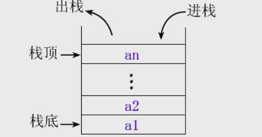
栈的抽象数据类型:
约定$an$端为栈顶，$a1$端为栈底。
顺序栈：采用顺序存储结构的栈。
顺序栈：利用一组地址连续的存储单元一次存放自栈底到栈顶的数据元素，同时附设$top$指针指示栈顶元素在顺序栈的位置。通常$top=0$表示空栈。
顺序栈的类定义和基本操作：
class SqStack
{
private:
int *base; //栈底指针
int top; //栈顶
int stackSize;
public:
SqStack(int m);
~SqStack()
{
delete[] base;
top = -1;
stackSize = 0;
};
void Push(int e);
int Pop();
int GetTop();
int StackEmpty();
void StackTranverse(); //显示栈中元素
};
void SqStack::Push(int e)
{
if (top == stackSize - 1)
{
cout << "栈满，无法入栈";
return;
}
top++;
base[top] = e;
}
int SqStack::Pop()
{
int e;
if (top = -1)
{
cout << "栈空，无法出栈";
return -1;
}
e = base[top--];
return e;
}
int SqStack::GetTop()
{
return top;
}
void SqStack::StackTranverse()
{
if (top == -1)
{
cout << "空栈";
}
for (int i = 0; i < top; i++)
{
cout << "index: " << i << " value: " << base[i] << endl;
}
}顺序栈的应用：
链栈的结点结构和单链表的结点结构相同。链表只能在栈顶执行插入和删除操作，因此以单链表的头部作为栈顶最方便，而且也没必要为单链表附加头结点链表的头指针即为栈顶指针。
链栈的类定义和基本操作：
struct Node
{
int data;
Node *next;
};
class LinkStack
{
private:
Node *top;
public:
LinkStack() { top == NULL; };
~LinkStack();
void Push(int e);
int Pop();
int GetTop()
{
if (top != NULL)
return top->data;
};
bool Empty() { return top != NULL ? 1 : 0; };
};
LinkStack::~LinkStack()
{
Node *p;
while (top)
{
p = top->next;
delete top;
top = p;
}
}
void LinkStack::Push(int e)
{
Node *s = new Node;
if (!s)
{
cout << "内存分配失败";
return;
}
s->data = e;
s->next = top;
top = s;
}
int LinkStack::Pop()
{
int x;
if (top == NULL)
{
cout << "栈溢出";
return -1;
}
x = top->data;
Node *p = top;
top = top->next;
delete p;
return x;
}队列是线性表的特例。它将元素排列成队，有入口和出口，数据元素只能从队尾入队，从队头离队。队列具有先进先出 FIFO或后进后出LILO
队列：$Queue$是另一种限定存取位置的线性表。只允许在表的一端进入，在另一端删除，其中允许插入的一端称为队尾（Rear），允许删除的一端称为队头（Front）

队列的抽象数据类型：
确定 $a1$端为队头，$an$端为队尾。
顺序队列：队列的顺序存储结构。
用一组地址连续的存储单元依次存放从队头到队尾的元素，由于队列的队头和队尾的位置是变化的，因而还需要两个指针front和rear作为队头指针和队尾指针来分别指示队头和队尾在队列中的位置。

当rear大于等于容量时，新元素无法入队，但事实上队列的低端还有空闲的存储单元，这种现象称为“假溢”。
为了解决这种现象引入了循环队列。
解决“假溢”现象的方法：将存储队列的数组看成是头尾相接的圆环，并成为循环存储空间，即允许队列直接从数组中下标最大的位置延续到下标最小的位置。
循环队列$(Circular\;Queue)$：队列的头尾相接的顺序存储结构
这种队列，队空和队满时头尾指针均相等，故无法通过$front==rear$来判断队列“空”还是“满”。
解决这个问题的办法：
以方法2讨论：
循环队列的长度$(rear-front+QueunSize) \% QueueSize$

循环队列的类定义和基本操作：
class CQueue
{
private:
int *base; //存储空间基址
int front;
int rear;
int queueSize;
public:
CQueue(int m);
~CQueue();
void EnQueue(int e);
int DeQueue();
int GetHead();
int GetLast();
void QueueDisplay();
};
CQueue::CQueue(int m)
{
queueSize = m;
base = (int *)malloc(queueSize * sizeof(int));
front = 0;
rear = 0;
}
CQueue::~CQueue()
{
delete[] base;
front = 0;
rear = 0;
queueSize = 0;
}
void CQueue::EnQueue(int e)
{
if ((rear + 1) % (queueSize) == front)
{
cout << "上溢，无法入队" << endl;
return;
}
base[rear] = e;
rear = (rear + 1) % queueSize;
}
int CQueue::DeQueue()
{
int e;
if (front == rear)
{
cout << "下溢，不能出队" << endl;
return -1;
}
e = base[front];
front = (front + 1) % queueSize;
return e;
}
int CQueue::GetHead()
{
int e;
if (front == rear)
{
cout << "队空，无元素" << endl;
return -1;
}
e = base[front];
return e;
}
int CQueue::GetLast()
{
int e;
if (front == rear)
{
cout << "队空，无元素";
return -1;
}
e = base[rear];
return e;
}
void CQueue::QueueDisplay()
{
if (front == rear)
{
cout << "队空，无元素" << endl;
return;
}
for (int i = front % queueSize; i < rear; i++)
{
int index = i;
if (i > queueSize) {
index = i % queueSize;
}
cout << "index: " << index << " value: " << base[index] << endl;
}
// for (int i = 0; i < (rear) % queueSize; i++)
// {
// cout << "index: " << i << " value: " << base[i] << endl;
// }
}
int main(int argc, char const *argv[])
{
CQueue cq = CQueue(6);
cq.EnQueue(1);
cq.EnQueue(2);
cq.EnQueue(3);
cq.EnQueue(4);
cq.EnQueue(5);
cout << "入队后：" << endl;
cq.QueueDisplay();
cout << "第一个元素出队后：" << endl;
cq.DeQueue();
cq.QueueDisplay();
return 0;
}队列的链式存储结构称为链队列$(Linked\;Queue)$
根据队列先进先出的特性，链队列是仅在表头删除元素和表尾插入元素的单链表。

链队列的类定义和基本操作：
struct Node
{
int data;
Node *next;
};
class LinkQueue
{
private:
Node *front;
Node *rear;
public:
LinkQueue();
~LinkQueue();
void EnQueue(int e);
int DeQueue();
int GetHead();
int GetLast();
void QueueDisplay();
};
LinkQueue::LinkQueue()
{
front = new Node;
front->next = NULL;
rear = front;
}
LinkQueue::~LinkQueue()
{
Node *p;
while (front != NULL)
{
p = front;
front = front->next;
delete p;
}
}
void LinkQueue::EnQueue(int e)
{
cout << e << "进入队列！！" << endl;
Node *s = new Node;
s->data = e;
s->next = rear->next;
rear->next = s;
rear = s;
if (front->next == NULL)
{
front->next = s;
}
}
int LinkQueue::DeQueue()
{
int e;
Node *p;
if (rear == front)
{
cout << "下溢";
return -1;
}
p = front->next;
e = p->data;
front->next = p->next;
if (p->next == NULL)
{
rear = front;
}
delete p;
return e;
}
int LinkQueue::GetHead()
{
int e;
Node *p;
if (front == rear)
{
cout << "下溢";
return -1;
}
p = front->next;
if (p == NULL)
{
cout << "当前队列为空" << endl;
}
e = p->data;
return e;
}
int LinkQueue::GetLast()
{
int e;
if (front == rear)
{
cout << "下溢";
return -1;
}
e = rear->data;
return e;
}
void LinkQueue::QueueDisplay()
{
if (front == rear)
{
cout << "队列为空" << endl;
return;
}
Node *p = NULL;
do
{
if (p == NULL)
{
p = front->next;
}
else
{
p = p->next;
}
cout << p->data << " ";
} while ((p != rear));
}
int main(int argc, char const *argv[])
{
LinkQueue lq = LinkQueue();
lq.EnQueue(1);
lq.EnQueue(2);
lq.EnQueue(3);
lq.EnQueue(4);
lq.EnQueue(5);
lq.EnQueue(7);
lq.EnQueue(8);
int e = lq.DeQueue();
cout << e << endl;
e = lq.DeQueue();
cout << e << endl;
e = lq.GetHead();
cout << e << endl;
e = lq.GetLast();
cout << e << endl;
lq.QueueDisplay();
return 0;
}串：$(String)$是由零个或多个字符组成的有限序列。非空串一般记作：
$$s="a1a2a3 \cdots an"(n \ge 1)$$
其中$s$为串名，双引号引起来的字符序列是串值。$a_i(1 \le n \le n)$可以是字母、数字或其他字符串。
程序中使用的串分为两种：串常量和串变量
串常量在程序中只能被引用但不能改变其值，即只读不能写。
例如语句cout<<"overflow"中的overflow该字符串只能读，不能改。如C++中,可定义：
const char path[] = "dir/bin/app1"这里的path是一个串常量，对它只能读不能写。
串变量是可以改变的
奇异串：AxA形式，A为任意一个非空子串，只包含小写字母，x为一个在A中出现过的小写字母。
串的抽象数据类型：
字符的集合：$WordSet$
串是特殊的线性表，存储结构和线性表的存储结构类似。其特殊性在于组成串的结点是单个字符。
串的三种存储表示方式：定长顺序存储、堆分配存储和链式存储
定长顺序存储也称为静态存储分配的顺序表，用一组连续的存储单元来存放串中的字符序列。
定长存储结构，指直接使用定长的字符数组来实现。
#define MAXSTRLEN 256
typedef char sstring[MAXSTRLEN+1];//0号单元存放串的长度
sstring s;//s是个可容纳255个字符的顺序串【一般可使用一个不会出现在串中的特殊字符在串值的尾部来表示串的结束。
例如C/C++语言使用字符'\0'表示串值的终结，这就是为什么上面保存255个字符，留一个字节存放'\0'字符。
一般情况采用定长顺序存储表示，但在实际应用中，串变量的长度变化较大，往往会造成存储空间溢出。为了解决这个问题，可采用堆分配存储表示。
堆分配存储表示的特点：仍以一组地址连续的存储单元存放串字符序列，但它们的存储空间是程序执行过程中动态分配的。
系统提供一个连续的称为“堆”的自由存储区，作为串的存储空间。
当建立一个新串时，就在这个存储空间中为新串分配一个连续的存储空间。
在C++语言，动态分配用new和delete来管理。
利用new为每个新产生的串分配一块实际串长所须的空间。若分配成功，则返回空间的起始地址。当串被删除时，用delete来释放串所占用的空间。
堆分配存储表示的定义如下:
typedef struct
{
char *ch;
int length;
}Hstring;串用链表存储，串的这种链式存储结构简称链串$(Linked\;String)$。
链式存储有利于插入和删除运算，但是存储空间利用率低。
为了便于进行串的操作，当以链表存储串值时，除头指针还附设一个尾指针指示链串的最后一个结点，并给出当前串中结点的个数，即串的长度。
串的链式存储结构如下
#define chunksize 100
typedef struct chunk
{
char ch[chunksize];
chunk *next;
} chunk;
typedef struct
{
chunk *head, *tail;
int curlen;
} Lstring;设$S$和$T$是两个给定的串，在串$S$中找等于$T$的子串的过程称为模式匹配$(Pattern\;Matching)$
$S$一般称为主串或目标串，$T$称为模式串。如果找到，称为匹配成功，否则称为匹配失败
两种模式匹配算法：$BF$和$KMP$
$BF$方法全称是$Brute-Force$，也称简单匹配方法。
设$S$为主串，$T$为目标串，且形式为:$S="s0s1\cdots s{n-1}"$和$T="t0t1\cdots t{n-1}"$
$BF$模式匹配方法的基本思路：
若$S[i\dots{i+m-1}]\ne T[0\dots{m-1}]$，则从位置$i$开始的匹配失败。
具体操作： 从主串$S$的第一个字符开始，与模式串$T$中的第一个字符比较，若相等，则继续逐个比较后续字符；否则从主串$S$的第二个字符开始重新与模式串$T$的第一个字符进行比较。 以此类推，若主串$S$的第$i$个字符开始，每个字符依次和模式串$T$中的对应字符相等，则匹配成功，返回$i$;否则，匹配失败，返回-1。
具体算法如下：
int index(sstring s,sstring t,int pos)
{
int i=pos,j=1;
while(i<=s[0]&&j<=t[0])
{
if(s[i]==t[j])
{
i++;
j++;
}
else
{
i=i-j+2;
j=1;
}
}
if(j>t[0])
return i-t[0];
else
return 0;
}模式串T="abcac"和主串s=“ababcabcaccabbc”的匹配过程 
$KMP$方法的全称$Knuth-Morris-Pratt$。
$KMP$方法较$BF$模式匹配有很大改进，改进思想在于： 每当一趟匹配过程中出现字符比较不相等时，不需要回溯$i$指针，而是利用已经得到的"部分匹配"的结果将模式向右移动尽可能多的距离后，再继续比较。 
$KMP$的匹配过程： 设主串$s$，模式串$t$，并设$i$和$j$分别指向主串和模式串待比较的字符，$i$和$j$的初值均为1。若$si=tj$，则$i$和$j$分别加1；否则$i$不变，$j$退回$next(j)$位置。再比较$si$和$tj$，若相等，则$i$和$j$分别加1；否则$i$不变，$j$退回$next(j)$位置依次类推，直至下列两种可能：
算法如下：
void get_next(sstring t,int next[])
{ //求出模式串t的next函数值并存入数组next中
int i=1,j=0;
next[1]=0;
while(i<t[0])
{
if(j==0||t[i]==t[j])
{
i++;
j++;
next[i]=j;
}
else
j=next[j];
}
}
int KMP_index(sstring s,sstring t,int pos)
{
//t非空,1<=pos<=Strlength(s)
int i=pos,j=1;
while(i<=s[0]&&j<=t[0])
{
if(j==0||s[i]==t[j])
{
i++;
j++;
}
else
j=next[j];
}
if(j>t[0])
return i-t[0];
else
return 0;
}数组和广义表可以看做是线性表的扩展，即数组和广义表中的数据元素本身也是一种数据结构。数组中每个数据元素具有相同的结构，广义表中的数据元素可以有不同的数据结构。
数组$(Array)$是由相同类型的一组数据元素组成的一个有限序列。其数据元素也称为数组元素。数组中的每个元素都有一个序号，称为下标$(index)$。可以通过下标访问数据元素。
数组元素受$n(n\ge1)$个线性关系的约束，每个数据元素在$n$ 个线性关系中的符号$i1,i2,\cdots,i_n$成为数据元素的下标，并称该数组为$n$维数组。
当$n=2$是，为二维数组，任何一个数据元素有两个下标，一个为行号，一个为列号。如$a_{ij}$表示第$i$行第$j$列的数据元素
一维数组可以看作是一个线性表，二维数组可以看作数据元素是一维数组的线性表。
数组中的每个数据元素都和一组唯一的下标值对应。因此数组是一种随机存取机构。
数据的抽象数据类型
$$D=\{a{j1j2\cdots jn}|n(n>0),bi,ji,a{j1j2\cdots jn}\in ElemSet\}$$
$n$是数据的维数，$bi$是数据的第$i$维的长度，$ji$是数组元素第$i$维的下标。
$$Ri=\{<a{j1\cdots ji \cdots jn},a{j1\cdots ji+1\cdots jn}>\} \\ 0\le jk\le bk-1,1\le k\le n\;n\neq i, \\ 0\le ji \le bi-2, - InitArray(\&A,n,bound1,...,boundn) \\a{j1\cdots ji \cdots jn},a_{j1\cdots ji+1\cdots jn}\in D,i=2,\cdots,n$$
由于计算机内存结构是一维的，因此用一维内存来表示多维数组，必须按某种次序将数据元素排成一个序列，然后将这个序列放在存储空间中。
由于一般不对数组进行插入和删除操作，一般采用顺序存储的方法来表示数组。
用一组连续的存储单元存放数据元素存在一个次序约定的问题，是先存一行数据元素还是先存一列数据元素？
根据存储方式的不同，顺序存储方法分为一下两类：
以行序为主序的存储方式。将数据元素按行排列，第$i+1$个行向量紧接在第$i$个行向量后面。
以列序为主序的存储方式。将数据元素按列排列，第$j+1$个列向量紧接在第$j$个列向量后面。
行优先顺序存储：$\boxed{a{11}|a{12}|\cdots|a{1n}|a{21}|a{22}|\cdots|a{2n}|\cdots|a{m1}|a{m2}|\cdots|a{mn}}$ 列优先顺序存储：$\boxed{a{11}|a{21}|\cdots|a{m1}|a{12}|a{22}|\cdots|a{m2}|\cdots|a{1n}|a{2n}|\cdots|a{mn}}$
二维数组元素地址，按行优先顺序存储的计算公式
任一数据元素$a{ij}$的存储地址$LOC(a{ij})$应为数组的基地址加上排在$a{ij}$前面的数据元素所占用的单元数，因此$a{ij}$的存储地址计算公式为：
$$LOC(a{ij})=LOC(a{l1l2})+((i-l1)*(h2-l2+1)+(j-l2))c\\=LOC(a_{l_1l_2})+i(h2-l2+1)c-l_1(h2-l2+1)c+jc-l_2*c$$
令：$M1=(h2-l2+1)*c,M2=c,$则有
$$LOC(a{ij})=v0+iM_1+jM_2$$
其中，$v0=LOC(a{l1l2})+-l1*M1-l2*M2,i\in[l1,h1],j\in[l2,h2],$且$i$和$j$均为整数；$LOC(al{ij})$是数据元素$a{ij}$的存储地址，$LOC(a{l1l_2})$是二维数组中第一个元素的存储地址，即基地址。
二维数组推广到一般，按照行优先顺序存储，则下标为$i1,i2,\cdots,i_n$的存储地址为：
$$LOC(a{i1,i2,\cdots,in}) =LOC(a{l1,l2,\cdots,ln})+(j1d2d3\cdots dn+j2d3\cdots dn+\cdots+j{n-1}dn+jn)c\\=V_0+i_1M1+i2M_2+\cdots+i_nM_n$$
在矩阵中，若非零元素呈现某种规律分布或举证中出现大量零数据元素。为了节省空间，可以对这类矩阵进行压缩。
压缩存储的原则：
特殊矩阵$(Special\;Matrix)$：值相同的数据元素或者零数据元素在矩阵中的分布有一定的规律。
稀疏矩阵$(Sparse\;Maxtrix)$：矩阵中有许多零数据元素(一般根据稀疏因子的值判定领数据元素是否较多)
特殊矩阵是指非零数据元素或零数据元素的分布具有一定规律的矩阵。
常见的特殊矩阵有:对称矩阵、对角矩阵等，它们都是方阵，行数和列数相同。
在一个$n$阶方阵$A$中，若数据元素满足下述性质:
$$a{ij}=a{ji}(i\ge1,j\le n)$$
则称为$A$为$n$阶对称矩阵。
对称矩阵只需存储矩阵中的上三角$a{ij}(i\le j)$或下三角$a{ij}(i\ge j)$的数据元素。
对称矩阵优先采用行优先顺序存储下三角中的数据元素。
下三角的数据元素可用一个容量是$n(n+1)/2$的一维数组存储。对于下三角中任意数据元素$a_{ij}(i\ge j)$,$a_{ij}$在一维数组中的下标$k$与$i、j$的关系为：$k=i(i+1)/2+j$。
$$\boxed{a{00}|a{10}|a{11}|a{20}|a{21}|a{22}|\cdots|a{ij}|\cdots|a{n-1,0}|a{n-1,1}|\cdots|a{n-1,n-1}}$$
若采用上述的压缩存储方式，则矩阵中的任一数据元素$a_{ij}$与它在一维数组中的存储位置$k$之间存在如下的对应关系:
$$k=\begin{cases}i(i-1)/2+j-1,\ge j \\j(j-1)/2+i-1,\lt j\end{cases}$$
其中$k=0,1,2，\cdots,((n+1)n/2)-1, \\1+2+3+(i-1)=(i-1)i/2, \\(i-1)i/2+j=k+1\quad i\ge j\quad and\quad i,j\ge 1$
对角矩阵：所有的非零数据元素都集中在以主对角线为中心的带状区域中的举证，即除了主对角线上和主对角线相邻两侧的若干条对角线上的数据之外，其余所有数据元素均为零数据元素。
稀疏矩阵$(Sparse\;Matrix)$:矩阵$A$中有$s$个非零数据元素，若$s$远远小于矩阵数据元素的总数即$(s\ll m*n)$。
稀疏因子：假设$m\ast n$阶矩阵中有$s$个非零元素，令$t=s/(m\ast n)$，称$t$为稀疏因子。
通常认为$s\ll0.05$时，称为稀疏矩阵。
存储方法：
const int MaxSize = 1000;
typedef int ElemType;
struct Triple
{
int i;
int j;
ElemType e;
};
class SMatrix
{
private:
int mu; //行数
int nu; //列数
int tu; //非零数据的个数
Triple *data;
public:
SMatrix();
SMatrix(int m, int n, int k, Triple data[]);
~SMatrix();
SMatrix MCreate(int d[][3], int m, int n, int k);
void MDisplay(SMatrix a);
void MatrixTrans_1(SMatrix A, SMatrix &B); //矩阵转置算法1
void MatrixTrans(SMatrix A, SMatrix &B); //快速转置算法
};
SMatrix::SMatrix()
{
mu = 0;
nu = 0;
tu = 0;
for (int p = 0; p < tu; p++)
{
data[p].i = 0;
data[p].j = 0;
data[p].e = 0;
}
}
SMatrix::SMatrix(int m, int n, int k, Triple data[])
{
this->mu = m;
this->nu = n;
this->tu = k;
this->data = data;
}
SMatrix SMatrix::MCreate(int d[][3], int m, int n, int k)
{
SMatrix M = {m, n, k, NULL};
if (k != 0)
M.data = new Triple[k];
for (int i = 0; i < k; i++)
{
M.data[i].i = d[i][0];
M.data[i].j = d[i][1];
M.data[i].e = d[i][2];
}
return M;
}
//矩阵遍历
void SMatrix::MDisplay(SMatrix a)
{
Triple p;
int i, j, k, c = 0;
p = a.data[k];
for (i = 0; i < a.mu; i++)
{
for (j = 1; j < a.nu; j++)
{
if (k < a.tu && p.i == i && p.j == j)
{
cout << "\t" << p.e;
k++;
if (k < a.tu)
p = a.data[k];
}
else
{
cout << "\t" << c;
}
}
cout << endl;
}
}
//基于三元组顺序表的转置算法
void SMatrix::MatrixTrans_1(SMatrix A, SMatrix &B)
{
B.mu = A.nu;
B.nu = A.tu;
B.tu = A.tu;
int q, p;
int col;
if (B.tu)
{
q = 0;
for (col = 1; col < A.nu; col++)
{
for (p = 0; p <= A.tu - 1; p++)
{
if (A.data[p].j == col)
{
B.data[q].i = A.data[p].j;
B.data[q].j = A.data[p].i;
B.data[q].e = A.data[p].e;
q++;
}
}
}
}
}
//快速转置算法
void SMatrix::MatrixTrans(SMatrix A, SMatrix &B)
{
int col, k, p, q;
int *num, *cpot;
num = new int[B.nu];
cpot = new int[B.nu];
if (B.tu)
{
for (col = 0; col < A.tu; col++)
{
num[col] = 0;
}
for (k = 0; k < A.tu; k++)
{
num[A.data[k].j]++;
}
cpot[0] = 0;
for (col = 1; col <= A.nu; col++)
{
cpot[col] = cpot[col - 1] + num[col - 1];
}
for (p = 0; p < A.tu; p++)
{
col = A.data[p].j;
q = cpot[col];
B.data[q].i = A.data[p].j;
B.data[q].j = A.data[p].i;
B.data[q].e = A.data[p].e;
cpot[col]++;
}
}
}矩阵的运算一般有矩阵转置、矩阵相加、矩阵相减、矩阵相乘等。
$def：$一个$m\ast n$的矩阵$A$，它的转置矩阵$B$是一个$n\ast m$的矩阵，且 $a[i][j]==b[j][i],1\le i\le m,1\le j\le m$，即$A$的行是$B$的列，$A$的列是$B$的行。
$tu \ll m\ast n$情况。
为求得矩阵$A$各列第一个非零数据元素的三元组的所在位置，引入两个辅助运算功能的一个数组$num[],cpot[]$
$$\begin{cases}cpot[1]=1\\ cpot[col]=cpot[col-1]+num[col-1];2\le col\leq n\end{cases}$$
由于两个稀疏矩阵相乘不一定是稀疏矩阵，所以矩阵的乘积采用二维数组表示。设矩阵$A$为$m$行$p$列，矩阵$B$为$p$行$n$列，则计算矩阵乘积$C$($C$为$m$行$n$列)的一般传统方式，依据下述公式计算：
$$C[i][j]=\sum^{p-1}_{k=1}A[i][k]\ast B[k][j]$$
一般传统的矩阵相乘的算法代码如下
for(i=0;i<m;i++)
for(j=0;j<n;j++)
c[i][j]=0;
for(k=0;k<p;k++)
c[i][j]+=a[i][k]*b[k][j];算法的时间复杂度为$O(mnp)$
如果采用三元组顺序存储表示，则不能采用上述传统矩阵相乘算法。
思路：先求得各个$c[i][j]$的部分积，最后分别累加，只需对$B$每一行扫描一次。
采用上述思路，需要一些辅助数组：
$$\begin{cases}cpot[0]]=1\\ cpot[row]=cpot[row-1]+num[row-1];\end{cases}$$
采用三元组顺序表表示的稀疏矩阵的乘法步骤如下：
广义表$(Generalized\;Lists)$是$n(n\ge 0)$个数据元素的有限序列，一般记作:
$$LS=(a1,a2,\cdots,a_n)$$
其中,$LS$是广义表的名称，$a_i(i\le i\le n)$是$LS$的直接数据元素，也称成员，它可以是单个数据元素，也可以是一个广义表，它们分别称为$LS$的单数据元素(原子)或子表。
当广义表$LS$非空时：
广义表$()$和广义表$(())$是不同的，前者为空表，长度为0，后者长度为1。
广义表的性质：
广义表的抽象数据类型：
由于数据元素类型的不统一，难以采用顺序存储结构，而采用链式存储结构存储广义表。
若广义表不空，则可分解为表头和表尾；反之，一对确定的表头和表尾可唯一确定一个广义表。
根据上述性质可采用头尾表示法$(Head\;Tail\;Express)$来存储广义表。
广义表的数据元素可以是单数据元素也可以是广义表，相应的在头尾表示法中链表的结点结构也有两种：
为了区别这两类结点，在结点设置一个标识域，标志为1，则为表结点；标志为0，则该结点为数据元素结点。
$$\boxed{tag=1|hp|tp}\quad\quad\boxed{tag=0|data}$$
LS=((),(a),(a,(b,c,d)))的头尾链表存储结构。(自己完成)
struct GLNode
{
int tag;
char data;
struct atom
{
GLNode *hp, *tp;
} ptr;
};
class GList
{
private:
GLNode *ls; //指向表头的指针
char result[50];
int count; //计数
GLNode *CreateGList(string st); //由广义表的书面格式s创建广义表
GLNode *CopyGList(GLNode *ts, GLNode *ls);
int Depth(GLNode *ls);
void Print(GLNode *ls);
public:
GList();
GList(string s);
~GList();
int DepthGList();
void GListCopy();
void Server(string &str, string &hstr);
void GListDisplay();
};
GList::GList()
{
ls = NULL;
count = 0;
}
GList::~GList()
{
delete[] ls;
}树是一种非线性结构。树是一种层次结构。
树$(Tree)$:是$n(n\ge0)$个结点的有限集。
树的递归定义如下：
当$n=0$时，$T$称为空树；当$n>0$时，$T$是非空树。在一棵非空树中：
$$T=\begin{cases}\varPhi,n=0\\ \{root,T1,T2,\cdots,T_m\},n\gt0\end{cases}$$
其中，$root$表示$T$的根，$T1,T2,\cdots,T_m$表示$T$的$m$棵子树。
树中结点数目 = 每种结点的度 * 每种结点个数 + 1
假设树中的结点个数为
双亲表示法：$(Parent\;Express)$，一维数组来存储树的每个结点的信息，数组中的一个数据元素表示树中的一个结点，数据元素为结构体类型，其中包括结点本身的信息以及其双亲结点在数组中的位置信息。
const int MaxSize = 100;
struct PNode
{
ElemType data;
int parent
};
struct PNode Tree[MaxSize];; struct TNode
{
ElemType data;
TNode *firstchild,*nextsibling;
};遍历：$(Traverse)$是树的基本操作。
树的遍历：指从根结点出发，按照某种次序访问树中所有结点，使得每个结点被访问一次且仅被访问一次。
若森林非空
若森林非空
二叉树：$(Binary\;Tree)$:一种树形结构，每个结点至多有两棵子树，分别称为左子树和右子树。
二叉树的递归定义如下：
$$T=\begin{cases}\phi,n=0\\\{root,TL,Tr\},n\gt0\end{cases}$$
$深度为$k$且有$2^{k}-1$个结点的二叉树。除最底层结点度为0，其余都为2。
如果一棵深度为$k$且具有$n$个结点的二叉树，它的每一个结点都与深度为$k$的满二叉树中顺序编号为$1\sim n$的结点一一对应。
按照此结点编号将树中各结点顺序地存放于一个一维数组，并简称编号为$i$的结点为结点$1\le i\le n)$
顺序存储方式用于完全二叉树的存储非常有效，但用于一般二叉树，存储空间浪费。
根据二叉树的定义，每个结点可以有两个分支： 二叉树的结点至少三个域，分别存放数据信息$data$、左孩子结点指针$lchild$和右孩子结点指针$rchild$，这种结构称为二叉链表$(Binary)\;Linked\;List$。 为了便于查找，可以增加一个指向双亲结点的指针域。这样的结构称为三叉链表$(Trifurcate\;Linked\;List)$。
typedef int ElemType;
struct BiTNode
{
ElemType data;
BiTNode *lchild, *rchild;
};
class BinaryTree
{
private:
BiTNode *bt;
int RCreate(BiTNode *p, int k, int end);
int PreTraverse(BiTNode *p);
int InTraverse(BiTNode *p);
int PostTraverse(BiTNode *p);
public:
BinaryTree();
~BinaryTree();
void CreateBiTree(int end);
void PreOrderTraverse();
void InOrderTraverse();
void PostOrderTraverse();
BiTNode *GetRoot();
void BiTreeDisplay(BiTNode *bt, int level = 1);
};
BinaryTree::BinaryTree()
{
bt = NULL;
}
BinaryTree::~BinaryTree()
{
delete[] bt;
}平衡二叉树：每个结点的左右子树的高度之差的绝对值不超过1.
int BinaryTree::PreTraverse(BiTNode *p)
{
if (p != NULL)
{
cout << p->data << ' ';
PreTraverse(p->lchild);
PreTraverse(p->rchild);
}
return 0;
}
int BinaryTree::InTraverse(BiTNode *p)
{
if (p != NULL)
{
InTraverse(p->lchild);
cout << p->data << ' ';
InTraverse(p->rchild);
}
return 0;
}
int BinaryTree::PostTraverse(BiTNode *p)
{
if (p != NULL)
{
PostTraverse(p->lchild);
PostTraverse(p->rchild);
cout << p->data << ' ';
}
return 0;
} void BinaryTree::PreOrderTraverse()
{
cout << "先序非递归遍历二叉树：";
BiTNode *p = bt;
SqStack s(20);
while (p || !s.StackEmpty())
{
if (p)
{
cout << p->data << ' ';
s.Push(p->data);
p = p->lchild;
}
else
{
s.Pop();
p = p->rchild;
}
}
cout << endl;
};一个具有$n$个结点的二叉树若采用二叉链表存储结构，在$2n$个指针域中只有$n-1$个指针域用来存储孩子结点的地址，另外的$n+1$个指针域为空，利用这些空指针域存放指向该结点的某种遍历序列中的前驱和后继结点的位置信息。
其中：
$$ltag=\begin{cases}0,lchild\;is\;lchild\\ 1,lchild\;is\;preNode\end{cases}$$
$$rtag=\begin{cases}0,rchild\;is\;rchild\\ 1,rchild\;is\;postNode\end{cases}$$
线索$(Thread)$：指向结点前驱和后继的指针 线索二叉树$(Thread\;Binary\;Tree)$：加上线索的二叉树 线索链表$(Thread\;Linked\;List)$：加上线索的二叉链表 线索化：对二叉树以某种次序进行遍历使其成为线索二叉树的过程
结点结构示意图：
$$\boxed{lchild|ltag|data|rtag|rchild}$$
线索二叉树的定义和基本操作：
typedef struct BiThrNode
{
ElemType data;
BiThrNode *lchild, *rchild;
int LTag, RTag;
} BiThrNode, *BiThrTree;
class ThreadBiTree
{
private:
BiThrNode *bt;
BiThrNode *pre;
void RCreate(BiThrNode *p, int flag, int end);
public:
BiThrNode *Thrt;
ThreadBiTree();
~ThreadBiTree();
void CreateBiTree(int end);
BiThrNode *GetRoot();
int InOrderThreading(BiThrTree &Thrt, BiThrTree T);
void InThreading(BiThrTree p);
int InOrderTraverse_Thr(BiThrTree T);
void BiTreeDisplay(BiThrNode *bt, int level = 1);
};
ThreadBiTree::ThreadBiTree()
{
bt = NULL;
Thrt = new BiThrNode();
}
ThreadBiTree::~ThreadBiTree()
{
}
void ThreadBiTree::InThreading(BiThrTree p)
{
if (p)
{
InThreading(p->lchild);
if (!p->lchild)
{
p->LTag = 1;
p->lchild = pre;
}
if (!pre->rchild)
{
pre->RTag = 1;
pre->rchild = p;
}
pre = p;
InThreading(p->rchild);
}
}由于树和二叉树都可以采用二叉链表作为存储结构，则以二叉链表作为中间形态导出树和二叉树之间的对应关系。
将一棵树转换成二叉树的方法如下：
堆：设有$n$个元素的序列$\{k1,k2,\cdots,k_n\}$,当且仅当满足下述关系之一时：
$$\begin{cases}ki\le k{2i}\\ ki\le k{2i+1}\end{cases} \;or\; \begin{cases}ki\ge k{2i}\\ ki\ge k{2i+1}\end{cases}$$
若以一维数组存储堆，则堆对应为一棵完全二叉树，且所有非叶子结点的值均不大于或不小于其子女的值，根结点的值是最小或最大的。
堆具有下列其中某一条性质的完全二叉树：
哈夫曼树：又称最优二叉树，指带权路径长度最小的二叉树。
涉及的术语：
树的带权路径长度$WPL$可记为：
$$WPL=\sum^n{k=1}Wk\bullet L_k$$
其中$Wk$为第$k$个叶子结点的权值，$Lk$为第$k$个叶子结点的路径长度。
哈夫曼树的构造算法如下：
在数据通信中，需要将传送的文字转换成由二进制字符0、1组成的字符串也称编码。
每个字符所转换的二进制字符长度相等称为等长编码。
如果让出现频率高的字符采用尽可能短的编码，出现频率低的字符采用稍长的编码，构造一种不等长编码，则电文的代码总长度会更短。
设计电文总长最短的编码方式：构造以字符使用频率作为权值的哈夫曼树。
具体操作如下：设需要编码的字符集合为$\{d1,d2,\cdots,dn\}$，它们在电文中出现的次数或频率集合为$\{w1,w2,\cdots,wn\}$，以$d1,d2,\cdots,dn$作为叶子结点，$w1,w2,\cdots,wn$作为它们的权值，构造一棵哈夫曼树，规定哈夫曼树的左分支代表0，右分支代表1，则从根结点到每个叶子结点所经过的路径分支组成的0和1的序列便为该结点对应字符的编码，称之为哈夫曼编码。
在不等长编码的选择上，必须使任何一个字符的编码都不是其他字符编码的前缀，以保证译码的唯一性。
若采用哈夫曼编码，则能确保译码的唯一性。
哈夫曼编码的算法：
$$G=(V,E)$$
其中，$G$表示图，图中的数组元素通常叫做顶点$(Vertex),V$称为顶点的非空有穷集合，$E$是图$G$中顶点之间边的集合。
分别称带权的有向图和带权的无向图为有向网和无向网
Prim常用求稠密图的最小生成树
邻接矩阵$(Adjacency\;Matrix)$存储结构是指用两个数组表示图。
一个一维数组存储图中顶点的信息，一个二维数组存储图中顶点之间的关系。
设图$G=(V,E)$包含$n$个顶点，则$G$的邻接矩阵是一个二维数组$G.Edge[n][n]$
$$G.Edge[i][j]=\begin{cases}1, if\;(vi,vj)\in E\;or\;<vi,vj>\in E\\ 0,other\end{cases}$$
$$G.Edge[i][j]=\begin{cases}w{i,j}, if\;(vi,vj)\in E\;or\;<vi,v_j>\in E\\ \infty,other\end{cases}$$
图的邻接矩阵存储结构具有的特点：
邻接矩阵的存储结构的类定义和基本操作：
#define MAX_VERTEX_NUM 20
const int infinity = INT32_MAX;
struct ArcCell
{
int adj; //对无权图1,0表示是否相邻，对带权图表示权值类型
char *info;
};
struct MGraph
{
string vexs[MAX_VERTEX_NUM]; //顶点表
ArcCell arcs[MAX_VERTEX_NUM][MAX_VERTEX_NUM]; //邻接矩阵表，即 边表
int vexnum; //顶点数
int arcnum; //边数
int kind; //邻接矩阵存储的 图的种类
};
class Graph
{
private:
MGraph mgraph;
bool visited[MAX_VERTEX_NUM];
public:
Graph(/* args */);
~Graph();
void CreateGraph();
int LocateVex(string u); //返回顶点u在图中的位置
bool CreateDG(); //构造有向图
bool CreateUDG(); //构造无向图
bool CreateDN(); //构造有向网
bool CreateUDN(); //构造无向网
void Display(); //输出邻接矩阵
void DFSTraverse(int v); //深度优先遍历
void BFDTraverse(int v); //广度优先遍历
};邻接表只存储有关联的信息，对图中存在的相邻顶点之间边的信息进行存储，而对于不相邻的顶点则不保留信息。设图$G$具有$n$个顶点，则用顶点数组表和边表来表示图$G$
用于存储顶点$v_i$的名或其他有关信息，也称为数据域$(Data)$。该数组的大小为图中的顶点个数$n$。顶点数组表中的数据元素也称为表头结点。 每个表头结点由两个域组成：
图中每一个顶点建立一个单链表，第$i$个单链表的结点表示依附于顶点$v_i$的边。该单链表中的结点称为边结点， 每个边结点由三个域组成：
$$ \begin{matrix} \underbrace{ \boxed{data|firstarc}}\\ the\;node\;of\;the\;head\;of\;table\end{matrix} \begin{matrix} \underbrace{ \boxed{adjvex|nextarc|info}}\\ the\;node\;of\;arc\end{matrix} $$


//邻接表
struct ArcNode
{
int adjvex;
ArcNode *next;
};
struct VertexNode
{
int vertex;
ArcNode *firstedge;
};
#define MAX_VERTEX_NUM 20
struct ArcNode
{
int adjvex;
struct ArcNode *nextarc;
int *info;
};
struct VNode
{
string data;
ArcNode *firstarc;
};
struct AdjLGraph
{
VNode vertices[MAX_VERTEX_NUM];
int vexnum;
int arcnum;
int kind;
};
class ALGraph
{
private:
AdjLGraph algraph;
bool visited[MAX_VERTEX_NUM];
public:
ALGraph(/* args */);
~ALGraph();
void CreateGraph();
int LocateVex(string u);
void ALGraphDisplay();
void FindInDegree(int indegree[]);
bool TopologicalSort();
};十字链表$(Orthogonal\;List)$是有向图的一种链式存储方式。 十字链表将邻接表和逆邻接表结合起来得到的
$$ \begin{matrix} \underbrace{ \boxed{tailvex|headvex|hlink|tlink|info}}\\ the\;node\;of\;arc\end{matrix} \begin{matrix} \underbrace{ \boxed{data|firstin|firstout}}\\ the\;node\;of\;vertex\end{matrix} $$
弧结点中共五个域：
顶点结点即链表的头结点：
//十字链表
#define MAX_INFO 10
struct ArcBox
{
int tailvex, headvex;
ArcBox *hlink, *tlink;
char *info;
};
struct VexNode
{
string data;
ArcBox *firstin, *firstout;
};
struct OLGraph
{
VexNode xlist[MAX_VERTEX_NUM];
int vexnum, arcnum;
};
class OrListGraph //有向图的十字链表表示
{
private:
OLGraph olgraph;
bool visited[MAX_VERTEX_NUM];
public:
OrListGraph(/* args */) {}
~OrListGraph() {}
void CreateGraph();
int LocateVex(string u);
void Display();
};
邻接多重表$(Adjacency\;Multilist)$是无向图的一种链式存储方式。
$$ \begin{matrix} \underbrace{ \boxed{mark|ivex|ilink|jvex|jlink|info}}\\ the\;node\;of\;arc\end{matrix} \begin{matrix} \underbrace{ \boxed{data|firstedge}}\\ the\;node\;of\;vertex\end{matrix} $$

类似树的先根遍历。 从图中的某个点v出发，作为当前顶点，访问此顶点，并设置该顶点的访问标志，接着从v的为被访问的邻接点中找出一个作为下一步探查的当前顶点。倘若当前顶点的所有邻接顶点都被访问过，则退回一步，将前一步访问的顶点重新取出，作为当前探查顶点，重复上述过程，直至图中最初指定起点的所有邻接顶点都被访问到。
深度优先搜索的过程中所有访问过的顶点和经过的边，构成一个连通的无环图，也就是深度优先搜索树，简称DFS树
深度优先搜索的递归实现
void Graph::DFSTraverse(int v)
{
cout << mgraph.vertex[v];
visited[v]=1;
for(j=0;j<mgraph.vexnum;i++)
{
if(mgraph.arcs[v][j]==1 && visited[j]==0)
DFSTraverse(j);
}
}类似树的层次遍历
无向连通图广度优先搜索的实现
void Graph::BFSTraverse(int v)
{
front = rear = -1;
cout << mgraph.vertex[v];
visited[v]=1;
Q[++rear]=v;
while(front!=rear)
{
v=Q[++front];
if(mgraph.arcs[v][j]==1 && visited[j]==0)
DFSTraverse(j);
cout << mgraph.vertex[j];
visited[j]=1;
Q[++rear]=j;
}
}设$G=(V,E)$是一个无向连通网
根据生成树的定义，若连通带权图由$n$个顶点组成，其生成树必含$n$个顶点，$n-1$条边，因此构造最小代价生成树的准则有3条：
构造最小生成树的方法多数利用了最小生成树的一种性质，简称MST
构造最小生成树的典型算法：
都利用了$MST$性质，采用逐步求解的策略，亦称贪心策略
基本思想：设一个有$n$个顶点的连通网络$N=\{V,E\}$。

基本思想：

$$((a+b)(b(c-d)+b(c-d)))((c-d)*e)$$


关心的问题：
对应于有向图，则进行拓扑排序和求关键路径的操作。
对一个有向无环图$(Directed\;Acyclic\;Graph,DAG)G$进行拓扑排序，是将G中所有顶点排成一个线性序列， 使得图中任意一对顶点u和v,若边$(u,v)\in E(G)$，则u在线性序列中出现在v之前。 通常，这样的线性序列称为满足拓扑次序$(Topological\;Order)$的序列，简称拓扑序列。
$AOE$用于工程估算：
利用$Dijkstra$算法解决单源最短路径问题：给定带权有向图$G$和源点$v$,求$v$到$G$中其余个点的最短路径，其时间复杂度为$O(n^3)$
搞清执行过程

求各个顶点之间最短路径的$Floyd$算法，其时间复杂度也是$O(n^3)$：
通过$Floyd$计算图$G=(V,E)$中各个顶点的最短路径时，需要引入两个矩阵，- 矩阵$S$中的元素$a[i][j]$表示顶点$i$(第$i$个顶点)到顶点$j$(第$j$个顶点)的距离。
假设图G中顶点个数为$N$，则需要对矩阵$D$和矩阵$P$进行$N$次更新。初始时，矩阵$D$中顶点$a[i][j]$的距离为顶点$i$到顶点$j$的权值; 如果$i$和$j$不相邻，则$a[i][j]=\infty$，矩阵$P$的值为顶点$b[i][j]$的$j$的值。接下来开始，对矩阵$D$进行$N$次更新。 第1次更新时，如果”$a[i][j]$的距离”$>$“$a[i][0]+a[0][j]$”($a[i][0]+a[0][j]$表示”$i$与$j$之间经过第1个顶点的距离”)，则更新$a[i][j]$为”$a[i][0]+a[0][j]$”,更新$b[i][j]=b[i][0]$。 同理，第$k$次更新时，如果”$a[i][j]$的距离”$>$“$a[i][k-1]+a[k-1][j]$”，则更新$a[i][j]$为”$a[i][k-1]+a[k-1][j]$”,$b[i][j]=b[i][k-1]$。更新$N$次之后，操作完成！
以“关键字与给定值的比较次数”作为衡量算法效率的方法，该比较次数的期望值，称为查找成功的平均查找长度$(Average\;Search\;Length,ASL)$
对于含有n个记录的表，查找成功的平均查找长度为：
$$ASL=\sum{i=1}^{n}PiC_i$$
$Pi$是查找第$i$个记录的概率，且$\sum{i=1}^{n}Pi=1;Ci$表示找到给定关键字与给定值相等的第$i$个记录，已和给定值进行过比较的关键字个数。
首先将顺序表中的第一个存储单元(即下标为0的单元)设置为“监视哨”，即把待查值放入该单元，查找时从顺序表的最后一个单元开始，依次向前搜索进行查找
若每个记录的查找概率相等，即$P_i=1/n$，则$ASL$为：
$$ASL=\sum{i=1}^{n}PiCi=\frac{1}{n}\sum{i=1}^{n}(n-i+1)=\frac{n+1}{2}$$
在查找失败的情况下，不管查找的关键字为何值，其比较次数都为$n+1$。在该条件下的平均查找长度为：
$$ASL=\frac{1}{n}\sum_{i=1}^{n}(n-i+1)+\frac{1}{2}(n+1)=\frac{3}{4}(n+1)$$
给定有序表ST,在表ST中取位于中间的记录作为比较对象，若中间记录和关键字与给定值相等，则查找成功；若中间记录的关键字大于给定值，则在中间记录的左半区继续查找；若中间记录的关键字小于给定值，则在中间记录的右半区继续查找。不断重复上述过程，直到查找成功或所查找的区域无记录即查找失败
int Search_Bin(int key)
{
int low=0;high=st.length-1;
int mid;
while(low<=hight)
{
mid = (low+high)/2;
if(st.elem[mid]==key)
{
cout << "查找成功，处于第"<<mid+1<<"位置"<<endl;
return mid+1;
}
if(st.elem[mid]>key)
{
high = mid - 1;
}
if(st.elem[mid]<key)
{
low = mid + 1;
}
}
cout << "未找到！"<<endl;
return 0;
}对于折半查找，查找成功时进行的关键字比较次数至多为$\left\lfloor{\log_2(n+1)}\right\rfloor+1$。 查找成功的平均查找长度为
$$ASL=\sum{i=1}^{n}PiCi=\frac{1}{n}\sum{j=1}^{h}{(j*2^{j-1})}=\frac{n+1}{n}\log_2{(n+1)}-1$$
当$n$比较大时，$ASL\approx\log2(n+1)-1$ 查找失败时的平均查找长度的量级为：$O(log2n)$
在查找时，首先用待查值key在索引表中进行区间查找(即查找key所在的子表，由于索引表按最大关键字项有序，因此可采用折半查找或者顺序查找)，然后在对应的子表进行顺序查找
设对索引表查找的平均查找长度为$L1$,对待查子表中查找元素的平均查找长度为$L2$，则分块查找的平均查找长度可以通过两种算法的平均查找长度之和表示：
$$ASL=L1+L2$$
采用分块查找：长度为n的表分为b块，每个块m个记录，则$b=\left\lceil n/m \right\rceil$。
块的查找概率为$1/b$，块中每个记录的查找概率为$1/m$，该条件下分块查找的平均查找长度为：
$$ASL=L1+L2=\frac{1}{b}\sum{i=1}^{b}i+\frac{1}{m}\sum{j=1}^{m}j=\frac{b+1}{2}+\frac{m+1}{2}=\frac{1}{2}(\frac{n}{m}+m)+1$$
当$m=\sqrt{n}$时，平均查找厂区取最小值为$\sqrt{n}+1$。
$$ASL\approx \log_2{(\frac{n}{m}+1)}+\frac{m}{2}$$
首先将给定值key与根结点的关键字进行比较，若相等，则查找成功；若根结点的关键字大于key，则在根结点的左子树上进行查找，否则在根结点的右子树上进行查找
struct Node
{
int key;
};
struct BTSNode
{
Node data;
BTSNode *lchild,*rchild;
};
void SearchBST(BTSNode *T,int key)
{
if((!T)||(key==T->data.key))
{
if(!T)
cout << "找不到"<<key<<“的结点”<<endl;
else
cout << "找到"<<key<<“的结点”<<endl;
else if(key<T->data.key)
SearchBST(T->lchild,key);
else
SearchBST(T->rchild,key);
}
}
int SearchBST(BTSNode *T,int key,BTSNode *f,BTSNode* &p)
{
if(!T)//查找不成功
{
p=f;
return 0;
}
else if(key==T->data.key)//查找成功
{
p=T;
return = 1;
}
else if(key<T->data.key)
return SearchBST(T->lchild,key,T,p);
else
return SearchBST(T->rchild,key,T,p);
}首先在树中查找是否已有关键字为key的结点，若查找成功，则说明待插入结点已经存在，不能插入重复结点。只有当查找失败，才能在树中插入关键字为key的新节点。
int InsertBST(int e)
{
int key =e;
BTSNode *p = new BTSNode;
BTSNode *T = BT;
if(!SearchBST(T,key,NULL,p))
{
BTSNode *s = new BTSNode;
s->data.key = e;
s->lchild=s->rchild=NULL:
if(!p)
{
BT=s;
}
else if(key<p->data.key)
p->lchild=s;
else
p->rchild=s;
return 1;
}
else
return 0;
} int DeleteBST(BSTNode* &T，int key)
{
if(!T)
return 0;
else
{
if(key==T->data.key)
return Delete(T);
else if(key<T->data.key)
return DeleteBST(T->lchild,key);
else
return DeleteBST(T->rchild,key);
}
}上述介绍的查找方法都是适用于内部查找的方法，称为内部查找法。适用于数据集不大，可以放入内存中，适用于对较小的文件进行查找，而不适用于对较大的存放在外存储器中文件。
B_树是一种平衡的多路查找树，作为索引组织文件，用以提高访问速度。
$(n,A0,K1,A1,K2,\cdots,Kn,An)$，其中$n$为关键字个数，$Ki(i=1,2,\cdots,n)$为关键字，$Ki<K{i+1}(i=1,2,\cdots,n-1),Ai(i=1,2,\cdots,n)$为指向子树根结点的指针，且指针$A{i-1}$所指子树中所有结点的关键字均小于$Ki$，$An$所指子树中所有结点的关键字均大于 $Kn(\left \lceil \frac{m}{2} \right \rceil-1\le n \le m-1)$
在查找时，如果给定值$key$在表中存在，则需根据$key$并通过对应关系$H$，即可的到$key$在表中的存储位置$H(key)$。因此不需要比较，仅通过$H(key)$的计算，就能获得要查找的记录。称这样的对应关系$H$为哈希函数$(Hash)$或散列函数或杂凑函数，根据这个思想建立的表称为哈希表$(Hash\;Table)$或散列表或杂凑表，根据哈希函数所得到的存储位置称为哈希地址$(Hash\;Address)$或散列地址，而这种映像过程被称为哈希造表或散列。
根据函数的性质可知，对于某个函数$y=f(x)$，不同的$x$通过$f$获得的$y$可能是相同的。
采用散列技术需要考虑的两个问题：
设计哈希函数应该遵循的原则
常见的几种哈希函数的构造方法：
直接定义一个线性函数，取关键字对于该函数的函数值作为哈希地址，即：
$$H(key)=a*key+b$$
其中a和b是常数。
这类函数是一一对应函数，因此不会产生冲突，但要求地址集合和关键字集合的大小相同，并且当关键字跨度非常大时并不适用。该方法在实际生活中并不常用
在关键字集合中，若每个关键字均由$m$位组成，而每位上都有$r$中不同的取值，通过分析$r$中不同符号在每一位上的分布情况，选择其中某几位分布较为均匀的符号组成哈希地址。
例如：一组关键字$\{6537685,6533251,6536543,6542019,6539834,6541234,6545437\}$进行关键字分析
| 第一位 | 第二位 | 第三位 | 第四位 | 第五位 | 第六位 | 第七位 |
|---|---|---|---|---|---|---|
| 6 | 5 | 3 | 7 | 6 | 8 | 5 |
| 6 | 5 | 3 | 3 | 2 | 5 | 1 |
| 6 | 5 | 3 | 6 | 5 | 4 | 3 |
| 6 | 5 | 4 | 2 | 0 | 1 | 9 |
| 6 | 5 | 3 | 9 | 8 | 3 | 4 |
| 6 | 5 | 4 | 1 | 2 | 3 | 4 |
| 6 | 5 | 4 | 5 | 4 | 3 | 7 |
其中所有关键字的第一、二位均为6/5，而第三位也只有3和4，因此 这三位不用作哈希地址，剩余4位的取值分布比较均匀，可以作为哈希地址，因此可选取者四位中任意两位组合成哈希地址，也可以对这四位进行适当的处理来获得哈希地址。
取关键字平方后的中间几位作为哈希地址。
例如：关键字集合${3456,2564,3466,3454}$
| 关键字 | 关键字平方 | 所选取哈希地址 |
|---|---|---|
| 3456 | 11943936 | 43 |
| 2564 | 6574096 | 40 |
| 3466 | 12013156 | 13 |
| 3454 | 11930116 | 30 |
平方后可取地中第4、5位作为哈希地址
将关键字按位数分割成几部分(其中最后一部分的长度会较小)，然后将这些部分按一定的方式进行求和，按哈希表表长取后几位作为哈希地址
例子：一个关键字为83950661436，哈希表长为3 首先将关键字表长分割成若干部分：$\underline{839}\quad\underline{502}\quad\underline{614}\quad\underline{36}$
位移法：$839+502+614+36=1991$ 间接折叠法：$839+205+614+63=1721$
由于哈希表长度为3，分别取后三位991和721作为关键地对应的哈希地址。
选择一个常数$p$，取关键字除以$p$所得的余数作为哈希地址，即
$$H(key)=key \bmod p$$
该方法对$p$的选取非常重要，若哈希表长度为$m$，则要求$p$小于等于$m$且接近$m$，并且一般选质数作为$p$，或者是一个不包含小于20质因子的合数。
开放地址，即一旦根据关键字所得到的哈希地址发生冲突，则按照某种规则寻找下一个空闲单元的哈希地址，只要哈希地址足够大，空的哈希地址总是能找到的。 其函数定义为：
$$Hi=(H(key)+di) \bmod m(1 \le i \le m)$$
其中，$H$为哈希函数，$m$为哈希表长，$di$的所取的增量序列。每种再散列的方法区别在于$di$的取值不同。
取增量序列$d_i$为$1,2,\cdots,m-1$的方法。 其过程描述为：当哈希地址$i$发生冲突时，查看哈希地址$i+1$是否为空，若为空则将数据放入，否则查看$i+2$是否为空，依次类推
取增量序列$d_i$为$1^2,-1^2,2^2,-2^2,\cdots,q^2,-q^2(q\le \frac{m-1}{2})$ 其过程描述为：当哈希地址$i$发生冲突时，查看哈希地址$i+1$是否为空，若为空则将数据放入，否则查看$i-1$是否为空，若为空则将数据放入，否则查看$i+2^2$是否为空，依次类推
取增量序列$di$为一个伪随机数 其过程描述为：当哈希地址$i$发生冲突时，产生一个伪随机数$d1$，查找哈希地址$i+d1$是否为空，若为空则将数据放入，否则重新产生一个伪随机数$d2$查看$i+d_2$是否为空，依次类推。
再哈希法用数学表达式可以描述为:
$$Hi=RHi(key)\quad i=1,2,\cdots,k$$
其中，$RH_i$均为不同的哈希函数。 在哈希法的本质是使用$k$个哈希函数，若第一个函数发生冲突，则利用第二个函数再生生成一个地址，直到产生的地址不冲突为止。
将每个哈希地址都作为一个指针，指向一个链表。 若哈希表长为$m$，则建立$m$个空链表，将哈希函数对关键字进行转换为$i$后，映射到统一哈希地址$i$的同义词均加入到地址$i$指向的链表中
设哈希函数产生的哈希地址集为$[0,m-1]$，则分配两个表。一个表作为基本表，其每个存储单元仅存放一个数据元素；另一个表为溢出表，只要关键字对应的哈希地址在基本表上发生了冲突，则将发生冲突的元素一律放入该表中。
查找时，对应给定关键字$key$，通过哈希函数计算出哈希地址为$i$，则先与基本表中的地址为$i$的数据元素进行比较，若相等则查找成功；否则再在溢出表中进行查找。
查找元素：
#define p 13//MOD 13
struct HashTable
{
int *elem;//数据元素基址
int count;//当前数据元素个数
int size;//哈希表长度
}ht;
int SearchHash(int key,int &s)
{
s = CalHash(key);
while((ht.elem[s]!=-1)&&(ht.elem[s]!=key))//发生冲突
Collision(s);
if(ht.elem[s]==key)
return 1;
else
return 0;
}计算哈希地址：
int CalHash(int key)//由哈希函数求哈希地址
{
return key % p;
}发生冲突，计算下一地址：
void Collision(int &s)
{
s=s++;
}插入元素：
int InsertHash(int e)
{
int s;
if(ht.count == ht.size)
{
cout << "表满，不能插入！" << endl;
return 1;
}
else
{
s = CalHash(e);
int r = SearchHash(e,s);
if(r)//表中已有和e的关键字相同的元素，不能插入操作
{
cout << "元素已经存在，不能插入！" << endl;
return 0;
}
else
{
ht.elem[s]=e;
ht.count++;
return 1;
}
}
}查找过程中，关键字的比较次数取决于产生冲突的次数，冲突产生越少，查找效率就越高。
影响冲突产生的因素有：
将哈希表中元素的个数和哈希长度的比值最为哈希表的装填因子，即
$$\alpha=\frac{count}{size}$$
$\alpha$是哈希表装满程度的指标，即装填因子。 $\alpha$与填入表中的元素的个数成正比，填入表中元素越多$\alpha$越大，冲突产生的可能性越大。
设有记录序列$\{R1,R2,\cdots,Rn\}$，其相应的关键字序列为$\{K1,K2,\cdots,Kn\}$， 若存在某种确定的关系$Kx \le Ky \le \cdots \le Kz$，其中$1 \le x,y,z \le n$且$x,y,z$各不相同，则将记录序列$\{R1,R2,\cdots,Rn\}$排成按关键字有序的序列$\{Rx,Ry,\cdots,R_z\}$的操作。
如：插入排序、交换排序、选择排序和归并排序
如：基数排序
通过构建有序序列，对于未排序数据，在已排序序列中从后往前扫描，从而找到相应的位置并插入。 在从后往前扫描过程中，需要反复把已排序逐步往后挪位，为待插入的新元素提供插入空间

void SInsertSort(SqList &L)
{
for(int i=2;i<=L.length;i++)
{
if(L.r[i]<=L.r[i-1])
{
L.r[0]=L.r[i];
L.r[i]=L.r[i-1];
for(int j=i-2;L.r[0]<=L.r[j];j--)
L.r[j+1]=L.r[j];
L.r[j+1]=L.r[0];
}
}
}当待排序记录数量很小时，直接插入排序方法是一种效率较高的排序算法。当记录数量较大，不宜用直接插入排序。
既然在有序表中确定插入位置，可以不断二分有序表来确定插入位置，即在一次比较中，通过比较待插入记录和有序表中中间记录的关键字，将有序表一分为二，而下一次比较则在其中一个有序子表中进行，将子表再次一分为二。这样继续下去，直到要比较的子表中只有一个记录时，做最后一次比较以确定插入位置。

void BInsertSort(SqList &L)
{
int high,low,m;
for(int i=2;i<=L.length;i++)
{
L.r[0]=L.r[i];
low = 1;
high = i-1;
while(low<=high)
{
m = (low+high)/2;
if(L.r[0]<=L.r[m])
high=m-1;
else
low=m+1;
}
for(int j=i-1;j>high+1;j--)
L.r[j+1]=r[j];
L.r[high+1]=L.r[0];
}
}前面介绍的两种插入排序算法都要大量移动记录，表插入排序则是一种不移动记录而是通过改变存储结构来进行排序的算法
表插入排序是通过链接指针、按关键字的大小实现从小到大的链接过程，为此需增设一个指针项。
具体的操作方法与直接插入排序类似，不同的是表插入排序是直接修改链接指针来完成记录的排序。
所需结点定义：
#define SIZE 150
struct SLNode
{
int rc;//记录项
int next;//指针项
};
struct SLinkList
{
SLNode node[size];//0号单元为表头结点
int curlen;//链表实际长度
}；具体思想：
首先设置空循环链表，即头结点指针置0，并在头结点数据中存放比所有记录的关键字都大的整数，然后把结点逐个向链表中插入即可。

void SLInsertSort(SlinkList &L)
{
int min,max;
L.node[0].next = 1;
L.node[1].next = 0;//初始化形成指头头结点的循环链表
max = min = 1;
for(int i=2;i<=L.curlen;i++)
{
if(L.node[i].rc<=L.node[min].rc)
{
L.node[0].next = i;
L.node[i].next = i-1;
min = i;
}
if(L.node[i].rc>=L.node[max].rc)
{
L.node[i].next = 0;
L.node[max].next = i;
max = i;
}
if(L.node[i].rc<L.node[max].rc && L.node[i].rc > L.node[min].rc)
{
int index1=min,index2;//index2标记index1的前一个下标
while(L.node[i].rc>=L.node[index1].rc)
{
index2=index1;
index1=L.node[index1].next;
}
L.node[i].next=index1;
L.node[index2].next=i;
}
}
cout << "表插入排序结果如下：" << endl;
int index = L.node[0].next;
while(index!=0)
{
cout << L.node[index].rc << "\t";
index = L.node[index].next;
}
cout << endl;
}希尔排序$(Shell\;Sort)$又称缩小增量排序，是1969年D.L.Shell提出的，它是对直接插入排序的一种改进
希尔排序不是每次一个元素挨着一个元素比较，而是初期选用大跨步(增量较大)间隔比较，使记录跳跃式的接近它的排序位置；然后增量逐步缩小，最后增量为1.


void ShellInsert(SqList &L,int dk)
{
for(int i=dk+1;i<=L.length;i++)
{
L.r[0]=L.r[i];
for(int j=i-dk;j>0 && L.r[0]<=L.r[j];j-=dk)
L.r[j+dk]=L.r[j];
L.r[j+dk]=L.r[0];
}
} void ShellSort(SqList &L,int dlta[],int t)
{
for(int k=0;k<t;k++)
ShellInsert(L,dlta[k]);
}交换排序是一类借助比较和交换进行排序的犯法。其中交换是指对序列中两个记录的关键字进行比较，如果排序不对则对换两个记录在序列中的位置。交换排序的特点是：将关键字较大的记录向序列的一端移动，而关键字较小的记录向序列的另一端移动。
冒泡排序$(Bubble\;Sort)$也称为起泡排序，是交换排序中常用的排序方法
通过对排序元素中相邻元素间的关键字的比较和交换，是关键字最大的元素如气泡一样逐渐“上浮”。

void BubbleSort(SqList &L)
{
for (int i = 1; i < L.length; i++)
{
for (int j = 0; j < L.length - i; j++)
{
if (L.r[j] > L.r[j + 1])
{
int t = L.r[j];
L.r[j] = L.r[j + 1];
L.r[j + 1] = t;
}
}
}
}总需要进行$n-1$次冒泡，对$j$个记录的表进行一趟冒泡排序需要$j-1$次关键字比较，平均的总比较次数为:
$$\sum_{j=2}^{n}(j-1)=\frac{n(n-1)}{2}$$
快速排序也称分区交换排序
通过对关键字的比较和交换，以待排序列中的某个数据为支点(或称枢轴量)，将待排序列分成两个部分，其中左半部分小于等于支点，右半部分大于等于支点。然后对左右两部分分别进行快速排序的递归处理，直到整个序列按关键字有序为止。
其中将待排序列按关键字以支点分成两个部分的过程称为一次划分
$$\begin{matrix}\underbrace{[r1\quad\cdots\quad r{i-1}]} \\ \le ri\end{matrix} \quad ri \quad \begin{matrix}\underbrace{[r{i+1}\quad\cdots\quad rn]} \\ \ge r_i\end{matrix}\quad$$
冒泡排序中，元素的比较和移动是在相邻位置进行的，元素比较次数和移动次数较多。 而在快速排序中，元素的比较和移动是从两端向中间进行的，关键字较大的记录一次就能从前面移动到后面，关键字较小的记录一次移动到前面，记录移动的距离较远，从而减少了总的比较次数和移动次数。 可将快速排序看做对冒泡排序的一种改进。
否则若有$low \lt high$并且有$r[high].key \lt pivotkey$，则设置$high$为新的支点位置。 并交换$r[high].key$和$r[low].key$，然后令$low=low+1$,执行1.4；若$low \ge high$，则执行1.2
否则若由$low \lt high$并且有$r[low].key \gt pivotkey$，则设置$low$为新的支点位置， 并交换$r[high].key$和$r[low].key$，然后令$high=high-1$，执行1.3；若$low \ge high$，则执行1.2

int QSort::Partition(SqList &L, int low, int high)/对序列的一次划分
{
int pivotkey;
L.r[0] = L.r[low]; //用子表的第一个记录作枢轴记录
pivotkey = L.r[low]; //关键字
while (low < high) //从表的两边交替向中间扫描
{
while (low < high && L.r[high] >= pivotkey)
{
--high;
}
L.r[low] = L.r[high]; //将比枢轴小的记录移至低端
while (low < high && L.r[low] <= pivotkey)
{
++low;
}
L.r[high] = L.r[low]; //将比枢轴大的记录移至高端
}
L.r[low] = L.r[0]; //枢轴记录到位
return low; //返回枢轴位置
}
void QSort::QuickSort1(SqList &L, int low, int high) //按分区对子程序进行调用
{
int mid;
if (low < high)
{
mid = Partition(L, low, high);
QuickSort1(L, low, mid - 1);
QuickSort1(L, mid + 1, high);
}
}选择排序$(Selection\;Sort)$是一类借助"选择"进行排序的方法
每一趟从待排序列中选取一个关键字最小的记录，也即第一趟从$n$个记录中选取关键字最小的记录，第二趟从剩下的$n-1$个记录中选取关键字最小的记录，直到全部元素排序完毕。
适用于从大量元素中选择一部分排序元素的应用，如从50000个元素中选择前10个关键字最小的元素等。
第一趟从$n$个记录中选出关键字最小的记录和第一个记录交换；第二趟从第二个记录开始的$n-1$个记录中选出关键字最小的记录与第二个记录交换；如此第$i$趟则从第$i$个记录开始的$n-i+1$个记录中选出关键字最小的记录与第$i$个记录交换，直到整个序列按关键字有序。
注：书上的设置i=1，因为书上默认列表的第一个元素即$r[0]$用来暂存待移动的下标

void QSort::SSelectionSort(SqList &L)
{
int t, j;
for (int x = 0; x <= L.length - 1; x++)
{
j = x;
for (int y = x; y <= L.length - 1; y++)
{
if (L.r[y] < L.r[j])
{
j = y;
}
}
if (x != j)
{
t = L.r[x];
L.r[x] = L.r[j];
L.r[j] = t;
}
}
}树形选择排序$(Tree\;Selection\;Sort))$又称锦标赛排序$(Tournament\;Sort)$，它是一种按照锦标赛的思想设计的选择排序方法
将$n$个参赛选择完全视为完全二叉树的叶子结点，则该完全二叉树有$2n$或$2n-1$个结点。首先，叶子结点进行两两比较，胜出(关键字较小者胜出)的结点在在兄弟结点之间再两两比较，直至产生第一名；接下来将作为第一名的结点视为最差的，并从该结点开始，沿该结点到根路径上，依次进行各分支结点孩子之间的比较，胜出的就是第二名(因为和它比赛的均是刚刚输给第一名的结点)。这样继续下去，直到所有选手的名次排定。


堆排序$(Heap\;Sort)$利用堆的特性进行排序的方法。
堆排序适用于从1000个数据中选出较小的十个数据
堆：设有$n$个元素的序列$\{k1,k2,\cdots,k_n\}$,当且仅当满足下述关系之一时：
$$\begin{cases}ki\le k{2i}\\ ki\le k{2i+1}\end{cases} \;or\; \begin{cases}ki\ge k{2i}\\ ki\ge k{2i+1}\end{cases}$$
其中，$i=1,2,\cdots,\left\lfloor\frac{n}{2}\right\rfloor$，分别称为小顶堆和大顶堆。
根据堆的性质，它也是完全二叉树，且具有下列性质之一：
首先用待排序列的记录序列构造出一个堆，此时选出了堆中所有记录的最小者为堆顶，随后将它从堆中移走(通常是将堆顶记录和堆中最后一个记录交换)，并将剩余记录在调整成堆，这样又找出了次小的记录，依次类推，直到堆中只有一个记录位置。
若$i \ge L.length$，则排序结束

图片的内容没有过关联，只是在网上找的图片示例，便于理解堆排序的过程。
堆的创建：(按照二叉树顺序放好，对第一个有孩子的结点进行比较)

堆的筛选和调整： 
//堆的建立
void HeapAdjust(SqList &L, int s, int m) //对顺序表做查找，从值最小的孩子结点向下筛选，找到最小值
{
int rc = L.r[s];
for (int j = 2 * s; j <= m; j *= 2)
{
if (j < m && L.r[j] >= L.r[j + 1])
j++;
if (rc < L.r[j])
break;
L.r[s] = L.r[j];
s = j;
}
L.r[s] = rc;
}
//完整的堆排序
void HeapSort(SqList &L) //对顺序表L进行堆排序
{
int value;
int i;
for (i = L.length / 2; i > 0; i--) //把L.r[1...L.length]调整为小顶堆
HeapAdjust(L, i, L.length);
for (i = L.length; i > 1; i--)
{
value = L.r[1];
L.r[1] = L.r[i];
L.r[i] = value;
HeapAdjust(L, 1, i - 1);
}
}归并排序$(Merge\;Sort))$是借助归并进行排序的方法。
归并的含义：将两个或两个以上的有序序列归并成一个有序序列的过程。
归并排序按所合并的表的个数分为：二路归并排序和多路归并排序
将待排序的$n$个元素看成是$n$个有序的子序列，每个子序列的长度为1，然后两两归并，得到$\left\lfloor\frac{n}{2}\right\rfloor$个长度为2或1(最后一个有序序列长度可能为1)的有序子序列；再两两归并，得到$\left\lfloor\frac{n}{4}\right\rfloor$个长度为4或小于4(最后一个有序序列长度可能小于4)的有序子序列;再两两归并，$\cdots\cdots$直至得到一个长度为$n$的有序序列

//一趟归并排序
void Merge(int *SR, int *TR, int i, int m, int n)
{
int j, k;
for (j = m + 1, k = i; i <= m && j <= n; k++) //将SR中的记录由大到小并入TR
{
if (SR[i] <= SR[j])
{
TR[k] = SR[i++];
}
else
{
TR[k] = SR[j++];
}
}
if (i <= m) //将剩余的SR[i...m]赋值到TR
{
for (int a = i; a <= m; a++)
{
TR[k++] = SR[a];
}
}
else if (j <= n) //将剩余的SR[j...n]赋值到TR
{
for (int b = j; b <= n; b++)
{
TR[k++] = SR[b];
}
}
}
//归并排序递归算法
void MergeSort(int *SR, int *TR1, int s, int t)
{
int TR2[100];
int m;
if (s == t)
{
TR1[s] = SR[s];
}
else
{
m = (s + t) / 2;
MergeSort(SR, TR2, s, m);
MergeSort(SR, TR2, m+1, t);
Merge(TR2,TR1,s,m,t);
}
}基数排序$(Radix\;Sort)$不利用关键字之间的比较和移动操作来进行排序，而是通过多关键字排序的思想，根据关键字每个位上的有效数字的取值，借助分配和收集两种操作对单关键字进行排序。
多关键字排序是应用在多关键字的序列上的排序方法，最常见的多关键字序列的排序方法是最低优先法
首先按照最低位$k^d$进行排序，再对高一位关键字$k^{d-1}$进行排序，一次类推直到所有关键字都排序完毕。
代表性的例子就是扑克牌的排序。可以将扑克牌的52张牌按花色和值分成两个关键字，其关系如下：
且花色的关键字等级高于值关键字。 花色相同时，才根据值确定大小。
对于单关键字的序列，也可以通过将关键字拆分成若干项，每一项都看作是一个新的关键字，则可以利用上述多关键字排序的方法对单关键字的序列进行排序。如对于一个2位的整数，可以将其按照位数拆分为2项。这样拆分后，每个关键字的范围都相同$(0\to9)$，这样关键字可以出现的符号个数称为"基",例如，二进制数的基是2，十进制数的基是10。基于这样的设定，可以通过多关键字排序的方法方便地进行单关键字序列排序。
链式基数排序：采用单链表作为分配的"容器".

例如：给定8个2位的十进制数序列：49,39,65,97,76,13,27,69，采用链式基数排序的过程如下。
$$\boxed{49}\to\boxed{39}\to\boxed{65}\to\boxed{97}\to\boxed{76}\to\boxed{13}\to\boxed{27}\to\boxed{69}$$
方法：设置若干桶，因十进制分别有数字：$0,1,2,\cdots,9$，因此其基为10。设置十个桶，分别用$B0,B1,\cdots,B_9$进行标识。排序分两步：位数字相同的数放入同一个桶。
重复1,2从最右位直到最左位共2次。
和题目无关，只是为了展示过程 
#include <iostream>
using namespace std;
#define RADIX 10
typedef int ArrType[RADIX];
ArrType f, e;
struct SLCell
{
int *keys; //关键字
int next;
};
struct SLList
{
SLCell *SList;
int keynum; //记录当前关键字个数
int recnum; //记录当前静态链表的长度
};
//分配
void Distrbute(SLCell *r, int i, ArrType &f, ArrType &e)
{
int j;
for (j = 0; j < RADIX; j++)
f[j] = 0;
for (int a = r[0].next; a; a = r[a].next)
{
j = r[a].keys[i];
if (!f[j])
f[j] = a;
else
r[e[j]].next = a;
e[j] = a;
}
}
//收集
void Collect(SLCell *r, int i, ArrType &f, ArrType &e)
{
int j;
for (j = 0; !f[j]; j++)
; //找到第一个非空子集
r[0].next = f[j]; //r[0].next 指向第一个非空子表中第一个结点
int t = e[j];
while (j < RADIX)
{
for (j++; j < RADIX - 1 && !f[j]; j++)
; //找下一个非空子集
if (f[j])
{
r[t].next = f[j];
t = e[j]; //链接两个非空子表
}
}
r[t].next = 0; //t指向最后一个非空子表的左后一个结点
}
//主程序
void RadixSort(SLList &SL)
{
for (int i = SL.keynum; i >= 1; i--) //按最高位优先依次对各关键字进行分配收集
{
Distrbute(SL.SList, i, f, e); //第i趟分散
Collect(SL.SList, i, f, e); //第i趟收集
}
}| 排序算法 | 最好情况 | 最坏情况 | 平均情况 | 空间复杂度 |
|---|---|---|---|---|
| 直接插入排序 | $O(n)$ | $O(n^2)$ | $O(n^2)$ | $O(1)$ |
| 希尔排序 | $O(n^{1.3})$ | $O(n^2)$ | $O(n\log_2n)$ | $O(1)$ |
| 快速排序 | $O(n\log_2n)$ | $O(n^2)$ | $O(n\log_2n)$ | $O(\log_2n)$ |
| 简单选择排序 | $O(n^2)$ | $O(n^2)$ | $O(n^2)$ | $O(1)$ |
| 堆排序 | $O(n\log_2n)$ | $O(n\log_2n)$ | $O(n\log_2n)$ | $O(1)$ |
| 归并排序 | $O(n\log_2n)$ | $O(n\log_2n)$ | $O(n\log_2n)$ | $O(n)$ |
| 基数排序 | $O(d(r+n))$ | $O(d(r+n))$ | $O(d(r+n))$ | $O(rd+n)$ |
对于一个规模为n的问题，若问题比较容易解决(比如规模n较小)，则直接解决，否则将该问题分割为k个规模较小的子问题，这些子问题互相独立且与原问题的形式相同，递归的解决这些子问题，然后将各个子问题的解合并到原问题的解，这就是分治法。
“分治”就是“分而治之”，即将一个难以解决的大问题分割成若干个规模较小的子问题，以便各个击破，分而治之。
分治法是很多算法的基础，如快速排序、归并排序等排序算法，以及傅里叶变换。
回溯法$(Back\;Tracking\;Method)$可以系统地搜索问题的所有解，是一个具有系统性和跳跃性的算法。
如搜索问题和优化问题，它们的解分布在一个解空间里，求解这些问题的算法就是一种遍历搜索解空间的系统方法，所以解空间又称为搜索空间。
回溯法将搜索空间看成树形结构，一个问题的解对应树中的一个叶子结点。
贪心算法$(Greedy\;Method)$是一种通用的算法设计方法，在许多最优化问题求解中得到了广泛应用，例如求图的最小生成树的Prim算法和Kruskal算法，单源最短路径的Dijkstra算法，数据压缩的Huffman算法
贪心算法和动态规划算法一样，常用于求解最优化问题，即量的最大化或最小化。
贪心算法的求解是一个多步决策的过程，每步决策不考虑子问题的计算结果，而是经过少量的计算，根据当前情况做出取舍，这样一步步地构筑解，每一步均建立在局部最优解的基础上，同时又扩大了局部解的规模。
贪心选择：每一个选择都是当前状态下局部的最好选择
贪心算法求解问题，一般具有两个性质：贪心选择性质和最优子结构性质
贪心选择性质是指所求问题的整体最优解可以通过一系列的局部最优的选择(贪心选择)来达到，它采用自顶向下的方式将所求问题简化为规模更小的子问题。
当一个问题的最优解包括其子问题的最优解时，称此问题具有最优子结构性质
动态规划：是一种将问题实例分解为更小的、相似的子问题，并存储子问题的解而避免重复计算的子问题，以解决最优化问题的算法策略。
与分治法类似，将带求解问题分解成若干个子问题，先求解子问题，然后从这些子问题的解得到原问题的解。与分治法不同的是，适用于动态规划求解的问题，经分割得到的子问题往往不是互相独立的。若用分治法解决这些问题，分割的子问题数目太多，以致最后解决原问题需要耗费的指数时间。
在使用分治法求解时，有些子问题被重复计算多次。若保存已解决的子问题的答案，在需要时找出已求出的答案，可以避免大量重复计算，从而得到多项式时间的算法，这就是动态规划的基本思想。
步骤1-3是动态规划算法的基本步骤。
若只需求出最优值，则步骤4可以省略。 若需求出问题的最优解，则必须执行步骤4，此时，在步骤3中计算最优值，通常需要记录更多的信息，以便在步骤4中，能够根据记录的信息快速构造出最优解。
动态规划算法解决的问题需要一定条件：最优化原理(最优子结构性质)和子问题的重叠性。
一个最优化策略具有这样的性质，不论过去状态和决策如何，对前面的决策所形成的状态而言，余下的诸决策必须构成最优策略。简而言之，一个最优化策略的子策略总是最优的。一个问题满足最优化原理称起具有最优子结构性质。
对于重复出现的子问题，只在第一次遇到时加以求解，并把答案保存起来，让以后再遇到时直接引用，不必重新求解。
分支限界法$(Branch-and-Bound)$类似回溯法，都是在解空间树上搜索问题的解，也可以看做是回溯法的改进。回溯法是在整个状态空间树中搜索解，并用约束条件判断搜索过程，一旦发生不可能产生问题的不分解，就终止对相应子树的搜索，从而避免不必要的工作。
分支限界法和回溯在两个方法存在差异：控制条件和搜索方式
回溯法一般使用约束条件产生部分解。若满足约束条件，则继续扩大解；否则丢弃，重新搜索。 分支限界法中，除了使用约束函数外，还使用更有效的评判函数——目标函数控制搜索进行，从而能够尽快得到最优解。
回溯法中的搜索一般是以深度优先的方式进行，而分支限界法中一般以广度优先方式进行搜索。
略
frontend/CSS/10.css3/A.html
<!DOCTYPE html>
<html lang="en">
<head>
<meta charset="UTF-8">
<meta name="viewport" content="width=device-width, initial-scale=1.0">
<meta http-equiv="X-UA-Compatible" content="ie=edge">
<title>CSS3简介</title>
<link rel="stylesheet" href="A.css">
</head>
<body>
<div>this is a div</div>
<div class="div2">this is a div</div>
<div class="shadow">shadow</div>
<div class="b_image">border-image 属性允许您规定用于边框的图片！</div>
<h1 class="shadow">文本效果</h1>
<div class="div_rotateX">水平翻转</div>
<div class="div_translation">CSS3 过渡</div>
<div class="div_translation2">CSS3 过渡2</div>
<div class="div_animation">CSS3 动画</div>
<div class="div_animation2">CSS3 动画2</div>
<div class="newspaper">
人民网北京2月24日电 (记者 刘阳)国家发展改革委近日发出通知，决定自2月25日零时起将汽、柴油价格每吨分别提高300元和290元，折算到90号汽油和0号柴油（全国平均）每升零售价格分别提高0.22元和0.25元。
此次国内成品油价格调整幅度，是按照现行国内成品油价格形成机制，根据国际市场油价变化情况确定的。去年11月16日国内成品油价格调整以来，受市场预期欧美经济复苏前景向好以及中东局势持续动荡等因素影响，国际市场原油价格先抑后扬，2月上旬WTI和布伦特原油期货价格再次回升至每桶95美元和115美元以上。虽然近两日价格有所回落，但国内油价挂钩的国际市场三种原油连续22个工作日移动平均价格上涨幅度已超过4%，达到国内成品油价格调整的边界条件。
通知指出，这次成品油调价后，国家将按照已建立的补贴机制，继续对种粮农民、渔业（含远洋渔业）、林业、城市公交、农村道路客运（含岛际和农村水路客运）等给予补贴。同时，为保证市场物价基本稳定，防止连锁涨价，对与居民生活密切相关的铁路客运、城市公交、农村道路客运（含岛际和农村水路客运）价格不作调整。
通知要求，中石油、中石化、中海油三大公司要组织好成品油生产和调运，保持合理库存，加强综合协调和应急调度，保障成品油供应。各级价格主管部门要加大市场监督检查力度，依法查处不执行国家价格政策，以及囤积居奇、造谣惑众、合谋涨价、搭车涨价等违法行为，维护正常市场秩序。
</div>
<p class="resize"><b>注释：</b> Firefox 4+、Safari 以及 Chrome 支持 resize 属性。</p>
<div class="container">
<div class="box">这个 div 占据左半部分。</div>
<div class="box">这个 div 占据右半部分。</div>
</div>
</body>
</html>frontend/CSS/10.css3/README.md
CSS3 被划分为模块。
其中最重要的 CSS3 模块包括：
通过 CSS3，您能够创建圆角边框，向矩形添加阴影，使用图片来绘制边框 - 并且不需使用设计软件，比如 PhotoShop。
边框属性：
CSS3 允许您为元素使用多个背景图像。
body
{
background-image:url(bg_flower.gif),url(bg_flower_2.gif);
}新的背景属性
| 属性 | 描述 | CSS |
|---|---|---|
| background-clip | 规定背景的绘制区域。 | 3 |
| background-origin | 规定背景图片的定位区域。 | 3 |
| background-size | 规定背景图片的尺寸。 | 3 |
新的文本属性
| 属性 | 描述 | CSS |
|---|---|---|
| hanging-punctuation | 规定标点字符是否位于线框之外。 | 3 |
| punctuation-trim | 规定是否对标点字符进行修剪。 | 3 |
| text-align-last | 设置如何对齐最后一行或紧挨着强制换行符之前的行。 | 3 |
| text-emphasis | 向元素的文本应用重点标记以及重点标记的前景色。 | 3 |
| text-justify | 规定当 text-align 设置为 "justify" 时所使用的对齐方法。 | 3 |
| text-outline | 规定文本的轮廓。 | 3 |
| text-overflow | 规定当文本溢出包含元素时发生的事情。 | 3 |
| text-shadow | 向文本添加阴影。 | 3 |
| text-wrap | 规定文本的换行规则。 | 3 |
| word-break | 规定非中日韩文本的换行规则。 | 3 |
| word-wrap | 允许对长的不可分割的单词进行分割并换行到下一行。 | 3 |
CSS3 @font-face 规则
在 CSS3 之前，web 设计师必须使用已在用户计算机上安装好的字体。
通过 CSS3，web 设计师可以使用他们喜欢的任意字体。
当您您找到或购买到希望使用的字体时，可将该字体文件存放到 web 服务器上，它会在需要时被自动下载到用户的计算机上。
您“自己的”的字体是在 CSS3 @font-face 规则中定义的。
@font-face
{
font-family: myFirstFont;
src: url('Sansation_Light.ttf'),url('Sansation_Light.eot'); /* IE9+ */
}您必须为粗体文本添加另一个包含描述符的 @font-face：
@font-face
{
font-family: myFirstFont;
src: url('Sansation_Bold.ttf'),
url('Sansation_Bold.eot'); /* IE9+ */
font-weight:bold;
}CSS3 字体描述符 下面的表格列出了能够在 @font-face 规则中定义的所有字体描述符：
| 描述符 | 值 | 描述 |
|---|---|---|
| font-family | name | 必需。规定字体的名称。 |
| src | URL | 必需。定义字体文件的 URL。 |
| font-stretch | normal;condensed;ultra-condensed;extra-condensed;semi-condensed;expanded;semi-expanded;extra-expanded;ultra-expanded | 可选。定义如何拉伸字体。默认是 "normal"。 |
| font-style | ormal;italic;oblique | 可选。定义字体的样式。默认是 "normal"。 |
| font-weight | normal;bold;100;200;300;400;500;600;700;800;900 | 可选。定义字体的粗细。默认是 "normal"。 |
| unicode-range | unicode-range | 可选。定义字体支持的 UNICODE 字符范围。默认是 "U+0-10FFFF"。 |
通过 CSS3 转换，我们能够对元素进行移动、缩放、转动、拉长或拉伸。
2D 转换方法：
新的转换属性 下面的表格列出了所有的转换属性：
| 属性 | 描述 | CSS |
|---|---|---|
| transform | 向元素应用 2D 或 3D 转换。 | 3 |
| transform-origin | 允许你改变被转换元素的位置 | 3 |
2D Transform 方法
| 函数 | 描述 |
|---|---|
| matrix(n,n,n,n,n,n) | 定义 2D 转换，使用六个值的矩阵。 |
| translate(x,y) | 定义 2D 转换，沿着 X 和 Y 轴移动元素。 |
| translateX(n) | 定义 2D 转换，沿着 X 轴移动元素。 |
| translateY(n) | 定义 2D 转换，沿着 Y 轴移动元素。 |
| scale(x,y) | 定义 2D 缩放转换，改变元素的宽度和高度。 |
| scaleX(n) | 定义 2D 缩放转换，改变元素的宽度。 |
| scaleY(n) | 定义 2D 缩放转换，改变元素的高度。 |
| rotate(angle) | 定义 2D 旋转，在参数中规定角度。 |
| skew(x-angle,y-angle) | 定义 2D 倾斜转换，沿着 X 和 Y 轴。 |
| skewX(angle) | 定义 2D 倾斜转换，沿着 X 轴。 |
| skewY(angle) | 定义 2D 倾斜转换，沿着 Y 轴。 |
转换属性 下面的表格列出了所有的转换属性：
| 属性 | 描述 | CSS |
|---|---|---|
| transform | 向元素应用 2D 或 3D 转换。 | 3 |
| transform-origin | 允许你改变被转换元素的位置。 | 3 |
| transform-style | 规定被嵌套元素如何在 3D 空间中显示。 | 3 |
| perspective | 规定 3D 元素的透视效果。 | 3 |
| perspective-origin | 规定 3D 元素的底部位置。 | 3 |
| backface-visibility | 定义元素在不面对屏幕时是否可见。 | 3 |
2D Transform 方法
| 函数 | 描述 |
|---|---|
| matrix3d(n,n,n,n,n,n,n,n,n,n,n,n,n,n,n,n) | 定义 3D 转换，使用 16 个值的 4x4 矩阵。 |
| translate3d(x,y,z) | 定义 3D 转化。 |
| translateX(x) | 定义 3D 转化，仅使用用于 X 轴的值。 |
| translateY(y) | 定义 3D 转化，仅使用用于 Y 轴的值。 |
| translateZ(z) | 定义 3D 转化，仅使用用于 Z 轴的值。 |
| scale3d(x,y,z) | 定义 3D 缩放转换。 |
| scaleX(x) | 定义 3D 缩放转换，通过给定一个 X 轴的值。 |
| scaleY(y) | 定义 3D 缩放转换，通过给定一个 Y 轴的值。 |
| scaleZ(z) | 定义 3D 缩放转换，通过给定一个 Z 轴的值。 |
| rotate3d(x,y,z,angle) | 定义 3D 旋转。 |
| rotateX(angle) | 定义沿 X 轴的 3D 旋转。 |
| rotateY(angle) | 定义沿 Y 轴的 3D 旋转。 |
| rotateZ(angle) | 定义沿 Z 轴的 3D 旋转。 |
| perspective(n) | 定义 3D 转换元素的透视视图。 |
通过 CSS3，我们可以在不使用 Flash 动画或 JavaScript 的情况下，当元素从一种样式变换为另一种样式时为元素添加效果。
CSS3 过渡是元素从一种样式逐渐改变为另一种的效果。
要实现这一点，必须规定两项内容：
过渡属性 下面的表格列出了所有的转换属性：
| 属性 | 描述 | CSS |
|---|---|---|
| transition | 简写属性，用于在一个属性中设置四个过渡属性。 | 3 |
| transition-property | 规定应用过渡的 CSS 属性的名称。 | 3 |
| transition-duration | 定义过渡效果花费的时间。默认是 0。 | 3 |
| transition-timing-function | 规定过渡效果的时间曲线。默认是 "ease"。 | 3 |
| transition-delay | 规定过渡效果何时开始。默认是0。 | 3 |
通过 CSS3，我们能够创建动画，这可以在许多网页中取代动画图片、Flash 动画以及 JavaScript。
CSS3 @keyframes 规则
@keyframes 规则用于创建动画。在 @keyframes 中规定某项 CSS 样式，就能创建由当前样式逐渐改为新样式的动画效果
什么是 CSS3 中的动画？
为了得到最佳的浏览器支持，您应该始终定义 0% 和 100% 选择器。
CSS3 动画属性 下面的表格列出了 @keyframes 规则和所有动画属性：
| 属性 | 描述 | CSS |
|---|---|---|
| @keyframes | 规定动画。 | 3 |
| animation | 所有动画属性的简写属性，除了 animation-play-state 属性。 | 3 |
| animation-name | 规定 @keyframes 动画的名称。 | 3 |
| animation-duration | 规定动画完成一个周期所花费的秒或毫秒。默认是 0。 | 3 |
| animation-timing-function | 规定动画的速度曲线。默认是 "ease"。 | 3 |
| animation-delay | 规定动画何时开始。默认是 0。 | 3 |
| animation-iteration-count | 规定动画被播放的次数。默认是 1。 | 3 |
| animation-direction | 规定动画是否在下一周期逆向地播放。默认是 "normal"。 | 3 |
| animation-play-state | 规定动画是否正在运行或暂停。默认是 "running"。 | 3 |
| animation-fill-mode | 规定对象动画时间之外的状态。 | 3 |
通过 CSS3，您能够创建多个列来对文本进行布局 - 就像报纸那样！
新的多列属性 下面的表格列出了所有的转换属性：
| 属性 | 描述 | CSS |
|---|---|---|
| column-count | 规定元素应该被分隔的列数。 | 3 |
| column-fill | 规定如何填充列。 | 3 |
| column-gap | 规定列之间的间隔。 | 3 |
| column-rule | 设置所有 column-rule-* 属性的简写属性。 | 3 |
| column-rule-color | 规定列之间规则的颜色。 | 3 |
| column-rule-style | 规定列之间规则的样式。 | 3 |
| column-rule-width | 规定列之间规则的宽度。 | 3 |
| column-span | 规定元素应该横跨的列数。 | 3 |
| column-width | 规定列的宽度。 | 3 |
| columns | 规定设置 column-width 和 column-count 的简写属性。 | 3 |
CSS3 用户界面 在 CSS3 中，新的用户界面特性包括重设元素尺寸、盒尺寸以及轮廓等。
新的用户界面属性 下面的表格列出了所有的转换属性：
| 属性 | 描述 | CSS |
|---|---|---|
| appearance | 允许您将元素设置为标准用户界面元素的外观 | 3 |
| box-sizing | 允许您以确切的方式定义适应某个区域的具体内容。 | 3 |
| icon | 为创作者提供使用图标化等价物来设置元素样式的能力。 | 3 |
| nav-down | 规定在使用 arrow-down 导航键时向何处导航。 | 3 |
| nav-index | 设置元素的 tab 键控制次序。 | 3 |
| nav-left | 规定在使用 arrow-left 导航键时向何处导航。 | 3 |
| nav-right | 规定在使用 arrow-right 导航键时向何处导航。 | 3 |
| nav-up | 规定在使用 arrow-up 导航键时向何处导航。 | 3 |
| outline-offset | 对轮廓进行偏移，并在超出边框边缘的位置绘制轮廓。 | 3 |
| resize | 规定是否可由用户对元素的尺寸进行调整。 | 3 |
frontend/CSS/3.selectors/B.html
<!DOCTYPE html>
<html lang="en">
<head>
<meta charset="UTF-8">
<meta name="viewport" content="width=device-width, initial-scale=1.0">
<meta http-equiv="X-UA-Compatible" content="ie=edge">
<title>Document</title>
<link rel="stylesheet" href="B.css">
</head>
<body>
<p id="red">这个段落是红色</p>
<p id="green">这个段落是绿色</p>
</body>
</html>frontend/CSS/3.selectors/C.html
<!DOCTYPE html>
<html lang="en">
<head>
<meta charset="UTF-8">
<meta name="viewport" content="width=device-width, initial-scale=1.0">
<meta http-equiv="X-UA-Compatible" content="ie=edge">
<title>Document</title>
<link rel="stylesheet" href="C.css">
</head>
<body>
<h1 class="center">This heading will be center-aligned</h1>
<p class="center">This pargraph will alse be center-aligned.</p>
<table border="1px">
<thead>
<tr>
<td></td>
<td></td>
</tr>
</thead>
<tbody>
<tr>
<td class="fancy">HHH</td>
<td></td>
</tr>
<tr>
<td></td>
<td></td>
</tr>
<tr>
<td></td>
<td></td>
</tr>
</tbody>
</table>
</body>
</html>frontend/CSS/3.selectors/D.html
<!DOCTYPE html>
<html lang="zh-CN">
<head>
<meta charset="UTF-8">
<meta name="viewport" content="width=device-width, initial-scale=1.0">
<meta http-equiv="X-UA-Compatible" content="ie=edge">
<title>Document</title>
<link rel="stylesheet" href="D.css">
</head>
<body>
<h2>可以设置</h2>
<p title="hello world">Hi!</p>
<p title="world hello">Hi</p>
<hr>
<h1>可以应用样式：</h1>
<p lang="en">Hello!</p>
<p lang="en-us">Hi!</p>
</body>
</html>frontend/CSS/4.css_insert/A.html
<!DOCTYPE html>
<html lang="en">
<head>
<meta charset="UTF-8">
<meta name="viewport" content="width=device-width, initial-scale=1.0">
<meta http-equiv="X-UA-Compatible" content="ie=edge">
<title>Document</title>
<!-- 外部样式表
当样式需要应用于很多页面时，外部样式表将是理想的选择。
在使用外部样式表的情况下，你可以通过改变一个文件来改变整个站点的外观。
每个页面使用 <link> 标签链接到样式表。<link> 标签在（文档的）头部： -->
<link rel="stylesheet" href="A.css">
<!-- 内部样式表
当单个文档需要特殊的样式时，就应该使用内部样式表。
你可以使用 <style> 标签在文档头部定义内部样式表，就像这 -->
<style type="text/css">
hr {color: sienna;}
p {margin-left: 20px;}
body {background-image: url("images/back40.gif");}
</style>
</head>
<body>
<!-- 内联样式
由于要将表现和内容混杂在一起，内联样式会损失掉样式表的许多优势。
请慎用这种方法，例如当样式仅需要在一个元素上应用一次时。
要使用内联样式，你需要在相关的标签内使用样式（style）属性。
Style 属性可以包含任何 CSS 属性。 -->
<p style="color: sienna; margin-left: 20px">
This is a paragraph
</p>
<!-- 外部样式表的属性将被内部样式表取代 -->
</body>
</html>frontend/CSS/5.css_style/A.html
<!DOCTYPE html>
<html lang="en">
<head>
<meta charset="UTF-8">
<meta name="viewport" content="width=device-width, initial-scale=1.0">
<meta http-equiv="X-UA-Compatible" content="ie=edge">
<title>背景</title>
<link rel="stylesheet" href="A_bg.css">
</head>
<body>
<p>你看我吊吗</p>
</body>
</html>frontend/CSS/5.css_style/A_Demos/A.html
<!DOCTYPE html>
<html lang="en">
<head>
<meta charset="UTF-8">
<meta name="viewport" content="width=device-width, initial-scale=1.0">
<meta http-equiv="X-UA-Compatible" content="ie=edge">
<title>元素设置背景</title>
<style type="text/css">
body {
background-color: yellow
}
h1 {
background-color: #00ff00
}
h2 {
background-color: transparent
}
p {
background-color: rgb(250, 0, 255)
}
p.no2 {
background-color: gray;
padding: 20px;
}
</style>
</head>
<body>
<h1>这是标题 1</h1>
<h2>这是标题 2</h2>
<p>这是段落</p>
<p class="no2">这个段落设置了内边距。</p>
</body>
</html>frontend/CSS/5.css_style/A_Demos/B.html
<!DOCTYPE html>
<html lang="en">
<head>
<meta charset="UTF-8">
<meta name="viewport" content="width=device-width, initial-scale=1.0">
<meta http-equiv="X-UA-Compatible" content="ie=edge">
<title>文本背景</title>
<style type="text/css">
span.highlight {
background-color: yellow
}
</style>
</head>
<body>
<p>
<span class="highlight">这是文本。</span> 这是文本。 这是文本。 这是文本。 这是文本。 这是文本。 这是文本。 这是文本。 这是文本。 这是文本。 这是文本。 这是文本。 这是文本。
这是文本。 这是文本。 这是文本。 这是文本。 <span class="highlight">这是文本。</span>
</p>
</body>
</body>
</html>frontend/CSS/5.css_style/A_Demos/C.html
<!DOCTYPE html>
<html lang="en">
<head>
<meta charset="UTF-8">
<meta name="viewport" content="width=device-width, initial-scale=1.0">
<meta http-equiv="X-UA-Compatible" content="ie=edge">
<title>图像设置背景</title>
<style>
body{
background-image: url(../images/bg_01.jpg);
}
</style>
</head>
<body>
</body>
</html>frontend/CSS/5.css_style/A_Demos/D.html
<!DOCTYPE html>
<html lang="en">
<head>
<meta charset="UTF-8">
<meta name="viewport" content="width=device-width, initial-scale=1.0">
<meta http-equiv="X-UA-Compatible" content="ie=edge">
<title>多重背景</title>
<style>
body {
background-color: red;
}
p.flower {
background-color: yellow;
padding: 20px;
}
a.radio {
background-color: blue;
padding: 20px;
}
</style>
</head>
<body>
<p class="flower">我是一个有花纹背景的段落。<a href="#" class="radio">我是一个有放射性背景的链接。</a></p>
<p><b>注释：</b>为了清晰地显示出段落和链接的背景图像，我们为它们设置了少许内边距。</p>
</body>
</html>frontend/CSS/5.css_style/A_Demos/E.html
<!DOCTYPE html>
<html lang="en">
<head>
<meta charset="UTF-8">
<meta name="viewport" content="width=device-width, initial-scale=1.0">
<meta http-equiv="X-UA-Compatible" content="ie=edge">
<title>背景属性设置在一个声明之中</title>
<style type="text/css">
body {
background: #ff0000 url(../images/bg_01.jpg) no-repeat fixed center;
}
</style>
</head>
<body>
<p>这是一些文本。</p>
<p>这是一些文本。</p>
<p>这是一些文本。</p>
<p>这是一些文本。</p>
<p>这是一些文本。</p>
<p>这是一些文本。</p>
<p>这是一些文本。</p>
<p>这是一些文本。</p>
<p>这是一些文本。</p>
<p>这是一些文本。</p>
<p>这是一些文本。</p>
<p>这是一些文本。</p>
<p>这是一些文本。</p>
<p>这是一些文本。</p>
<p>这是一些文本。</p>
<p>这是一些文本。</p>
<p>这是一些文本。</p>
<p>这是一些文本。</p>
<p>这是一些文本。</p>
<p>这是一些文本。</p>
<p>这是一些文本。</p>
<p>这是一些文本。</p>
<p>这是一些文本。</p>
<p>这是一些文本。</p>
</body>
</html>frontend/CSS/5.css_style/B.html
<!DOCTYPE html>
<html lang="en">
<head>
<meta charset="UTF-8">
<meta name="viewport" content="width=device-width, initial-scale=1.0">
<meta http-equiv="X-UA-Compatible" content="ie=edge">
<title>CSS文本</title>
<link rel="stylesheet" href="B_text.css">
<style>
body {
background-color: aqua;
}
</style>
</head>
<body>
<p class="p1">pragraph1</p>
<p class="p2">pragraph2</p>
<p class="p3">pragraph3</p>
<div>
<p class="p4">this is a paragragh</p>
</div>
<div id="outer">
<div id="inner">some text. some text. some text.
<p class="p5">this is a paragragh.</p>
</div>
</div>
<p class="p6">this is a paragragh.</p>
<p class="spread">
This is a paragraph. The spaces between words will be increased.
</p>
<p class="tight">
This is a paragraph. The spaces between words will be decreased.
</p>
<h1>This is header 1</h1>
<h4>This is header 4</h4>
<h2 class='cap'>This is header</h2>
<a href="#">this is link.</a>
<p class="p7">this is paragraph7</p>
<p class="p8">this is paragraph8</p>
<p class="p9">this is paragraph9</p>
<p class="p10">this is paragraph10</p>
<p class="p11">this is paragraph11</p>
</body>
</html>frontend/CSS/5.css_style/B_Demos/A.html
<!DOCTYPE html>
<html lang="en">
<head>
<meta charset="UTF-8">
<meta name="viewport" content="width=device-width, initial-scale=1.0">
<meta http-equiv="X-UA-Compatible" content="ie=edge">
<title>文本颜色</title>
<style type="text/css">
body {
color: red
}
h1 {
color: #00ff00
}
p.ex {
color: rgb(0, 0, 255)
}
</style>
</head>
<body>
<h1>这是 heading 1</h1>
<p>这是一段普通的段落。请注意，该段落的文本是红色的。在 body 选择器中定义了本页面中的默认文本颜色。</p>
<p class="ex">该段落定义了 class="ex"。该段落中的文本是蓝色的。</p>
</body>
</html>frontend/CSS/5.css_style/B_Demos/B.html
<!DOCTYPE html>
<html lang="en">
<head>
<meta charset="UTF-8">
<meta name="viewport" content="width=device-width, initial-scale=1.0">
<meta http-equiv="X-UA-Compatible" content="ie=edge">
<title>文本行高</title>
<style>
.small {
line-height: 90%;
/*line-height: 10px;*/
/*line-height: 0.5;*/
}
.big {
line-height: 200%;
/*line-height: 30px;*/
/*line-height: 2;*/
}
</style>
</head>
<body>
<p>
这是拥有标准行高的段落。
在大多数浏览器中默认行高大约是 110% 到 120%。
这是拥有标准行高的段落。
这是拥有标准行高的段落。
这是拥有标准行高的段落。
这是拥有标准行高的段落。
这是拥有标准行高的段落。
</p>
<p class="small">
这个段落拥有更小的行高。
这个段落拥有更小的行高。
这个段落拥有更小的行高。
这个段落拥有更小的行高。
这个段落拥有更小的行高。
这个段落拥有更小的行高。
这个段落拥有更小的行高。
</p>
<p class="big">
这个段落拥有更大的行高。
这个段落拥有更大的行高。
这个段落拥有更大的行高。
这个段落拥有更大的行高。
这个段落拥有更大的行高。
这个段落拥有更大的行高。
这个段落拥有更大的行高。
</p>
</body>
</html>frontend/CSS/5.css_style/B_Demos/C.html
<!DOCTYPE html>
<html lang="en">
<head>
<meta charset="UTF-8">
<meta name="viewport" content="width=device-width, initial-scale=1.0">
<meta http-equiv="X-UA-Compatible" content="ie=edge">
<title>对齐文本</title>
<style>
h1 {
text-align: center;
}
h2 {
text-align: left;
}
h3 {
text-align: right;
}
</style>
</head>
<body>
<h1>这是标题1</h1>
<h2>这是标题2</h2>
<h3>这是标题3</h3>
</body>
</html>frontend/CSS/5.css_style/B_Demos/D.html
<!DOCTYPE html>
<html lang="en">
<head>
<meta charset="UTF-8">
<meta name="viewport" content="width=device-width, initial-scale=1.0">
<meta http-equiv="X-UA-Compatible" content="ie=edge">
<title>修饰文本</title>
<style>
h1 {
text-align: center;
text-decoration: overline;
}
h2 {
text-align: left;
text-decoration: line-through;
}
h3 {
text-align: right;
text-decoration: underline;
}
h4 {
text-align: right;
text-decoration: blink;
}
a {
text-decoration: none;
}
</style>
</head>
<body>
<h1>这是标题1</h1>
<h2>这是标题2</h2>
<h3>这是标题3</h3>
<h4>这是标题4</h4>
<a href="#">这是个链接</a>
</body>
</html>frontend/CSS/5.css_style/C.html
<!DOCTYPE html>
<html lang="en">
<head>
<meta charset="UTF-8">
<meta name="viewport" content="width=device-width, initial-scale=1.0">
<meta http-equiv="X-UA-Compatible" content="ie=edge">
<title>字体</title>
<link rel="stylesheet" href="C_font.css">
</head>
<body>
<h1>this is h1</h1>
<p class="normal">this is paragraph1</p>
<p class="italic">this is paragraph2</p>
<p class="oblique">this is paragraph3</p>
<p class="variant">this is paragraph4</p>
<p class="fnormal">this is paragraph5</p>
<p class="thick">this is paragraph6</p>
<p class="thicker">this is paragraph7</p>
</body>
</html>frontend/CSS/5.css_style/D.html
<!DOCTYPE html>
<html lang="en">
<head>
<meta charset="UTF-8">
<meta name="viewport" content="width=device-width, initial-scale=1.0">
<meta http-equiv="X-UA-Compatible" content="ie=edge">
<title>链接</title>
<link rel="stylesheet" href="D_link.css">
<style>
a.one:link {
color: #ff0000;
}
a.one:visited {
color: #0000ff;
}
a.one:hover {
color: #ffcc00;
}
a.two:link {
color: #ff0000;
}
a.two:visited {
color: #0000ff;
}
a.two:hover {
font-size: 150%;
}
a.three:link {
color: #ff0000;
}
a.three:visited {
color: #0000ff;
}
a.three:hover {
background: #66ff66;
}
a.four:link {
color: #ff0000;
}
a.four:visited {
color: #0000ff;
}
a.four:hover {
font-family: '微软雅黑';
}
a.five:link {
color: #ff0000;
text-decoration: none;
}
a.five:visited {
color: #0000ff;
text-decoration: none;
}
a.five:hover {
text-decoration: underline;
}
a.six:link,a.six:visited {
display: block;
font-weight: bold;
font-size: 14px;
font-family: Verdana, Arial, Helvetica, sans-serif;
color: #FFFFFF;
background-color: #98bf21;
width: 120px;
text-align: center;
padding: 4px;
text-decoration: none;
}
a.six:hover,a.six:active {
background-color: #7A991A;
}
</style>
</head>
<body>
<p>请把鼠标指针移动到下面的链接上，看看它们的样式变化。</p>
<p><b><a class="one" href="#" target="_blank">这个链接改变颜色</a></b></p>
<p><b><a class="two" href="#" target="_blank">这个链接改变字体尺寸</a></b></p>
<p><b><a class="three" href="#" target="_blank">这个链接改变背景色</a></b></p>
<p><b><a class="four" href="#" target="_blank">这个链接改变字体</a></b></p>
<p><b><a class="five" href="#" target="_blank">这个链接改变文本的装饰</a></b></p>
<p><b><a class="six" href="#" target="_blank">链接框</a></b></p>
</body>
</html>frontend/CSS/5.css_style/E.html
<!DOCTYPE html>
<html lang="en">
<head>
<meta charset="UTF-8">
<meta name="viewport" content="width=device-width, initial-scale=1.0">
<meta http-equiv="X-UA-Compatible" content="ie=edge">
<title>列表</title>
<link rel="stylesheet" href="E_list.css">
</head>
<body>
<ul class='ul1'>
<li>列表项1</li>
<li>列表项2</li>
<li>列表项3</li>
<li>列表项4</li>
<li>列表项5</li>
</ul>
<ul class='ul2'>
<li>列表项1</li>
<li>列表项2</li>
<li>列表项3</li>
<li>列表项4</li>
<li>列表项5</li>
</ul>
<ul class='ul3'>
<li>列表项1</li>
<li>列表项2</li>
<li>列表项3</li>
<li>列表项4</li>
<li>列表项5</li>
</ul>
<ol class="ol1">
<li>列表项1</li>
<li>列表项2</li>
<li>列表项3</li>
</ol>
<ol class="ol2">
<li>列表项1</li>
<li>列表项2</li>
<li>列表项3</li>
</ol>
<ol class="ol3">
<li>列表项1</li>
<li>列表项2</li>
<li>列表项3</li>
</ol>
<ol class="ol4">
<li>列表项1</li>
<li>列表项2</li>
<li>列表项3</li>
</ol>
</body>
</html>frontend/CSS/5.css_style/F.html
<!DOCTYPE html>
<html lang="en">
<head>
<meta charset="UTF-8">
<meta name="viewport" content="width=device-width, initial-scale=1.0">
<meta http-equiv="X-UA-Compatible" content="ie=edge">
<title>表格</title>
<link rel="stylesheet" href="F_table.css">
</head>
<body>
<table>
<thead>
<tr>
<td>选项</td>
<td>属性</td>
</tr>
</thead>
<tbody>
<tr>
<td>1</td>
<td>2</td>
</tr>
</tbody>
</table>
</body>
</html>frontend/CSS/5.css_style/F_Demos/A.html
<!DOCTYPE html>
<html lang="zh-CN">
<head>
<meta charset="UTF-8">
<meta name="viewport" content="width=device-width, initial-scale=1.0">
<meta http-equiv="X-UA-Compatible" content="ie=edge">
<title>表格案例</title>
<style>
#customers {
font-family: Arial, Helvetica, sans-serif;
width: 100%;
border-collapse: collapse;
/*边框空白 boreder-spacing*/
caption-side: bottom;/*标题位置*/
}
#customers thead {
font-size: 1.1em;
text-align: left;
background-color: #98bf21;
}
#customers td {
font-size: 1em;
border: 1px solid #98bf21;
padding: 3px 7px 2px 7px;
}
#customers tr.alt td {
color: black;
background-color: rgb(192, 162, 162);
}
</style>
</head>
<body>
<table id="customers">
<caption>This is a caption</caption>
<thead>
<tr>
<td>Company</td>
<td>Contact</td>
<td>Country</td>
</tr>
</thead>
<tbody>
<tr>
<td>Apple</td>
<td>Steven Jobs</td>
<td>USA</td>
</tr>
<tr class="alt">
<td>Baidu</td>
<td>Li YanHong</td>
<td>China</td>
</tr>
<tr>
<td>Google</td>
<td>Larry Page</td>
<td>USA</td>
</tr>
<tr class="alt">
<td>Lenovo</td>
<td>Liu Chuanzhi</td>
<td>China</td>
</tr>
<tr>
<td>Microsoft</td>
<td>Bill Gates</td>
<td>USA</td>
</tr>
<tr class="alt">
<td>Nokia</td>
<td>Stephen Elop</td>
<td>Finland</td>
</tr>
</tbody>
</table>
<!-- 处理表格的空单元 -->
<table border="1" style="empty-cells:hide">
<tr>
<td>Adams</td>
<td>John</td>
</tr>
<tr>
<td>Bush</td>
<td></td>
</tr>
</table>
</body>
</html>frontend/CSS/5.css_style/G.html
<!DOCTYPE html>
<html lang="en">
<head>
<meta charset="UTF-8">
<meta name="viewport" content="width=device-width, initial-scale=1.0">
<meta http-equiv="X-UA-Compatible" content="ie=edge">
<title>CSS轮廓</title>
<link rel="stylesheet" href="G_outline.css">
</head>
<body>
<p class='p1'><b>注释：</b>只有在规定了 !DOCTYPE 时，Internet Explorer 8 （以及更高版本） 才支持 outline 属性。</p>
</body>
</html>frontend/CSS/5.css_style/README.md
| 属性 | 描述 |
|---|---|
| background | 简写属性，作用是将背景属性设置在一个声明中。 |
| background-attachment | 背景图像是否固定或者随着页面的其余部分滚动。 |
| background-color | 设置元素的背景颜色。 |
| background-image | 把图像设置为背景。 |
| background-position | 设置背景图像的起始位置。 |
| background-repeat | 设置背景图像是否及如何重复。 |
| text-align值 | 描述 |
|---|---|
| left | 左对齐 |
| right | 右对齐 |
| center | 居中 |
| justif | 两端对齐 |
| 属性 | 描述 |
|---|---|
| color | 设置文本颜色 |
| direction | 设置文本方向。 |
| line-height | 设置行高。 |
| letter-spacing | 设置字符间距。 |
| text-align | 对齐元素中的文本。 |
| text-decoration | 向文本添加修饰。 |
| text-indent | 缩进元素中文本的首行。 |
| text-shadow | 设置文本阴影。CSS2 包含该属性，但是 CSS2.1 没有保留该属性。 |
| text-transform | 控制元素中的字母。 |
| unicode-bidi | 设置文本方向。 |
| white-space | 设置元素中空白的处理方式。 |
| word-spacing | 设置字间距。 |
| 属性 | 描述 |
| font | 简写属性。作用是把所有针对字体的属性设置在一个声明 |
| font-family | 设置字体系 |
| font-size | 设置字体的尺寸。 |
| font-size-adjust | 当首选字体不可用时，对替换字体进行智能缩放。（CSS2.1 已删除该属性。 |
| font-stretch | 对字体进行水平拉伸。（CSS2.1 已删除该属性。 |
| font-style | 设置字体风 |
| font-variant | 以小型大写字体或者正常字体显示文本。 |
| font-weight | 设置字体的粗细。 |
| 属性 | 描述 |
| list-style | 简写属性。用于把所有用于列表的属性设置于一个声明中。 |
| list-style-image | 将图象设置为列表项标志。 |
| list-style-position | 设置列表中列表项标志的位置。 |
| list-style-type | 设置列表项标志的类型。 |
| 属性 | 描述 |
|---|---|
| border-collapse | 设置是否把表格边框合并为单一的边框。 |
| border-spacing | 设置分隔单元格边框的距离。 |
| caption-side | 设置表格标题的位置。 |
| empty-cells | 设置是否显示表格中的空单元格。 |
| table-layout | 设置显示单元、行和列的算法。 |
"CSS" 列中的数字指示哪个 CSS 版本定义了该属性。
| 属性 | 描述 | CSS |
|---|---|---|
| outline | 在一个声明中设置所有的轮廓属性。 | 2 |
| outline-color | 设置轮廓的颜色。 | 2 |
| outline-style | 设置轮廓的样式。 | 2 |
| outline-width | 设置轮廓的宽度。 | 2 |
frontend/CSS/6.css_box_model/A.html
<!DOCTYPE html>
<html lang="en">
<head>
<meta charset="UTF-8">
<meta name="viewport" content="width=device-width, initial-scale=1.0">
<meta http-equiv="X-UA-Compatible" content="ie=edge">
<title>盒子模型</title>
<link rel="stylesheet" href="A.css">
</head>
<body>
<center>
<h1 class="box">this is h1</h1>
</center>
<!-- up 和 down 发生了外边距合并 -->
<!-- 当一个元素出现在另一个元素上面时，第一个元素的下外边距与第二个元素的上外边距会发生合并。 -->
<h1 class="up">this is up.</h1>
<h1 class="down">this is down.</h1>
<!-- 当一个元素包含在另一个元素中时
（假设没有内边距或边框把外边距分隔开），它们的上和/或下外边距也会发生合并。 -->
<div class="outer">
<div class="inner">two floor of DIV</div>
</div>
</body>
</html>frontend/CSS/6.css_box_model/README.md
| 属性 | 描述 |
|---|---|
| padding | 简写属性。作用是在一个声明中设置元素的所内边距属性。 |
| padding-bottom | 设置元素的下内边距。 |
| padding-left | 设置元素的左内边距。 |
| padding-right | 设置元素的右内边距。 |
| padding-top | 设置元素的上内边距。 |
| 属性 | 描述 |
|---|---|
| border | 简写属性，用于把针对四个边的属性设置在一个声明。 |
| border-style | 用于设置元素所有边框的样式，或者单独地为各边设置边框样式。 |
| border-width | 简写属性，用于为元素的所有边框设置宽度，或者单独地为各边边框设置宽度。 |
| border-color | 简写属性，设置元素的所有边框中可见部分的颜色，或为 4 个边分别设置颜色。 |
| border-bottom | 简写属性，用于把下边框的所有属性设置到一个声明中。 |
| border-bottom-color | 设置元素的下边框的颜色。 |
| border-bottom-style | 设置元素的下边框的样式。 |
| border-bottom-width | 设置元素的下边框的宽度。 |
| border-left | 简写属性，用于把左边框的所有属性设置到一个声明中。 |
| border-left-color | 设置元素的左边框的颜色。 |
| border-left-style | 设置元素的左边框的样式。 |
| border-left-width | 设置元素的左边框的宽度。 |
| border-right | 简写属性，用于把右边框的所有属性设置到一个声明中。 |
| border-right-color | 设置元素的右边框的颜色。 |
| border-right-style | 设置元素的右边框的样式。 |
| border-right-width | 设置元素的右边框的宽度。 |
| border-top | 简写属性，用于把上边框的所有属性设置到一个声明中。 |
| border-top-color | 设置元素的上边框的颜色。 |
| border-top-style | 设置元素的上边框的样式。 |
| border-top-width | 设置元素的上边框的宽度。 |
| 属性 | 描述 |
|---|---|
| margin | 简写属性。在一个声明中设置所有外边距属性。 |
| margin-bottom | 设置元素的下外边距。 |
| margin-left | 设置元素的左外边距。 |
| margin-right | 设置元素的右外边距。 |
| margin-top | 设置元素的上外边距。 |
frontend/CSS/7.css_postion/A.html
<!DOCTYPE html>
<html lang="en">
<head>
<meta charset="UTF-8">
<meta name="viewport" content="width=device-width, initial-scale=1.0">
<meta http-equiv="X-UA-Compatible" content="ie=edge">
<title>定位</title>
<style>
.pos_left {
position: relative;
left: -20px;
}
.pos_right {
position: relative;
left: 20px;
}
.pos_abs {
position: absolute;
left: 100px;
top: 150px;
}
.one {
position: fixed;
right: 0px;
top: 10px;
}
.two {
position: fixed;
bottom: 0px;
left: 10px;
}
#ov1 {
width: 150px;
height: 150px;
background-color: #00ffff;
overflow: scroll;
}
#ov2 {
width: 150px;
height: 150px;
background-color: #00ffff;
overflow: hidden;
/*auto 自动处理*/
}
img {
position: absolute;
clip: rect(0, 50px, 200px, 0px)
}
img.top {
vertical-align: text-top;
}
img.bottom {
vertical-align: text-bottom;
}
img.x {
position: absolute;
left: 0px;
z-index: -1;
}
</style>
</head>
<body>
<h2>这是位于正常位置的标题</h2>
<h2 class="pos_left">这个标题相对于其正常位置向左移动</h2>
<h2 class="pos_right">这个标题相对于其正常位置向右移动</h2>
<p>相对定位会按照元素的原始位置对该元素进行移动。</p>
<p>样式 "left:-20px" 从元素的原始左侧位置减去 20 像素。</p>
<p>样式 "left:20px" 向元素的原始左侧位置增加 20 像素。</p>
<h2 class="pos_abs">这是带有绝对定位的标题</h2>
<p>通过绝对定位，元素可以放置到页面上的任何位置。下面的标题距离页面左侧 100px，距离页面顶部 150px。</p>
<p class="one">一些文本。</p>
<p class="two">更多的文本。</p>
<p>如果元素中的内容超出了给定的宽度和高度属性，overflow 属性可以确定是否显示滚动条等行为。</p>
<div id="ov1">
这个属性定义溢出元素内容区的内容会如何处理。如果值为 scroll，不论是否需要，用户代理都会提供一种滚动机制。因此，有可能即使元素框中可以放下所有内容也会出现滚动条。默认值是 visible。
</div>
<div id="ov2">
这个属性定义溢出元素内容区的内容会如何处理。如果值为 scroll，不论是否需要，用户代理都会提供一种滚动机制。因此，有可能即使元素框中可以放下所有内容也会出现滚动条。默认值是 visible。
</div>
<p>clip 属性剪切了一幅图像：</p>
<p><img border="0" src="http://www.w3school.com.cn/i/eg_bookasp.gif" width="120" height="151"></p>
<p>
这是一幅<img class="top" border="0" src="http://www.w3school.com.cn/i/eg_cute.gif" />位于段落中的图像。
</p>
<p>
这是一幅<img class="bottom" border="0" src="http://www.w3school.com.cn/i/eg_cute.gif" />位于段落中的图像。
</p>
<h1>这是一个标题</h1>
<img class="x" src="http://www.w3school.com.cn/i/eg_mouse.jpg" />
<p>默认的 z-index 是 0。Z-index -1 拥有更低的优先级。</p>
<p>默认的 z-index 是 0。Z-index 1 拥有更高的优先级。</p>
</body>
</html>frontend/CSS/7.css_postion/B_Demos/A.html
<!DOCTYPE html>
<html lang="en">
<head>
<meta charset="UTF-8">
<meta name="viewport" content="width=device-width, initial-scale=1.0">
<meta http-equiv="X-UA-Compatible" content="ie=edge">
<title>浮动案例</title>
<style>
img.img1 {
float: right;
border: 1px dotted black;
margin: 0px 0px 15px 20px;
}
div.box1 {
border: 1px solid black;
float: right;
padding: 15px;
text-align: center;
}
span.alpha_left {
float: left;
font-size: 400%;
width: 0.7em;
font-family: Arial, Helvetica, sans-serif;
line-height: 80%
}
ul {
float: left;
width: 100%;
padding: 0px;
margin: 0px;
list-style-type: none;
}
a {
text-decoration: none;
background-color: purple;
width: 9%;
color: black;
padding: 0.2em 0.6em;
}
a:hover {
background-color: #ff3300
}
li {
display: inline;
}
.i1,.i2{
float: left;
clear: both;
}
</style>
</head>
<body>
<p>在下面的段落中，我们添加了一个样式为 <b>float:right</b> 的图像。结果是这个图像会浮动到段落的右侧。</p>
<p>
<img class='img1' src="http://www.w3school.com.cn/i/eg_cute.gif" />
This is some text. This is some text. This is some text.
This is some text. This is some text. This is some text.
This is some text. This is some text. This is some text.
This is some text. This is some text. This is some text.
This is some text. This is some text. This is some text.
This is some text. This is some text. This is some text.
This is some text. This is some text. This is some text.
This is some text. This is some text. This is some text.
This is some text. This is some text. This is some text.
This is some text. This is some text. This is some text.
This is some text. This is some text. This is some text.
This is some text. This is some text. This is some text.
This is some text. This is some text. This is some text.
This is some text. This is some text. This is some text.
This is some text. This is some text. This is some text.
This is some text. This is some text. This is some text.
This is some text. This is some text. This is some text.
This is some text. This is some text. This is some text.
This is some text. This is some text. This is some text.
This is some text. This is some text. This is some text.
This is some text. This is some text. This is some text.
This is some text. This is some text. This is some text.
</p>
<div class="box1"><img src="http://www.w3school.com.cn/i/eg_cute.gif" alt=""><br>
CSS is fun!</div>
<p>
<span class="alpha_left">T</span>his is some text.
This is some text. This is some text.
This is some text. This is some text. This is some text.
This is some text. This is some text. This is some text.
This is some text. This is some text. This is some text.
This is some text. This is some text. This is some text.
This is some text. This is some text. This is some text.
This is some text. This is some text. This is some text.
</p>
<p>
在上面的段落中，文本的第一个字母包含在一个 span 元素中。这个 span 元素的宽度是当前字体尺寸的 0.7 倍。span 元素的字体尺寸是 400%，行高是 80%。span 中的字母字体是 "Algerian"
</p>
<h1>水平菜单</h1>
<ul>
<li>
<a href="#">Menu 1</a>
<a href="#">Menu 2</a>
<a href="#">Menu 3</a>
<a href="#">Menu 4</a>
<a href="#">Menu 5</a>
<a href="#">Menu 6</a>
<a href="#">Menu 7</a>
<a href="#">Menu 8</a>
</li>
</ul>
<img class='i1' src="http://www.w3school.com.cn/i/eg_smile.gif" />
<img class='i2' src="http://www.w3school.com.cn/i/eg_smile.gif" />
</body>
</html>frontend/CSS/7.css_postion/B_Demos/B.html
<!DOCTYPE html>
<html lang="en">
<head>
<meta charset="UTF-8">
<meta name="viewport" content="width=device-width, initial-scale=1.0">
<meta http-equiv="X-UA-Compatible" content="ie=edge">
<title>无表格首页</title>
<style>
body{
margin: 0px;
padding: 0px;
}
header,footer{
background-color: gray;
padding: 10px 20px;
border: 1px solid black;
clear: left;
margin: 0px;
}
section.left{
width: 160px;
float: left;
padding: 1em;
margin: 0px;
}
section.content{
margin-left: 190px;
border: 1px solid black;
padding: 1em;
}
</style>
</head>
<body>
<header>
<h1>gudongxian@qq.com</h1>
</header>
<section class="left">"Never increase, beyond what is necessary, the number of entities required to explain
anything." William of Ockham (1285-1349)</section>
<section class="content">
<h2>Free Web Building Tutorials</h2>
<p>At W3School.com.cn you will find all the Web-building tutorials you need,
from basic HTML and XHTML to advanced XML, XSL, Multimedia and WAP.</p>
<p>W3School.com.cn - The Largest Web Developers Site On The Net!</p>
</section>
<footer>Copyright 2019 by dx.</footer>
</body>
</html>frontend/CSS/7.css_postion/B_float.html
<!DOCTYPE html>
<html lang="zh-CN">
<head>
<meta charset="UTF-8">
<meta name="viewport" content="width=device-width, initial-scale=1.0">
<meta http-equiv="X-UA-Compatible" content="ie=edge">
<title>浮动</title>
<style>
div{
width: 150px;
height: 200px;
background-color: blue;
border: 5px dotted red;
margin: 5px;
float: left;
}
div.block1{
height: 250px;
}
div.block2{
/*float: left; */
/*block2 藏在block1下面*/
}
div.alt{
float: right;
}
</style>
</head>
<body>
<div class="block1"></div>
<div class="block2"></div>
<div class="block3"></div>
<div></div>
<div></div>
<div></div>
<div></div>
<div></div>
</body>
</html>frontend/CSS/7.css_postion/README.md
CSS 定位 (Positioning) 属性允许你对元素进行定位。
CSS 定位和浮动 CSS 为定位和浮动提供了一些属性，利用这些属性，可以建立列式布局，将布局的一部分与另一部分重叠，还可以完成多年来通常需要使用多个表格才能完成的任务。
定位的基本思想很简单，它允许你定义元素框相对于其正常位置应该出现的位置，或者相对于父元素、另一个元素甚至浏览器窗口本身的位置。。
div、h1 或 p 元素常常被称为块级元素。这意味着这些元素显示为一块内容，即“块框”。与之相反，span 和 strong 等元素称为“行内元素”，这是因为它们的内容显示在行中，即“行内框”。
但是在一种情况下，即使没有进行显式定义，也会创建块级元素。这种情况发生在把一些文本添加到一个块级元素（比如 div）的开头。即使没有把这些文本定义为段落，它也会被当作段落对待：
<div>
some text
<p>Some more text.</p>
</div>在这种情况下，这个框称为无名块框，因为它不与专门定义的元素相关联。
CSS position 属性 通过使用 position 属性，我们可以选择 4 种不同类型的定位，这会影响元素框生成的方式。
position 属性值的含义：
| static | 元素框正常生成。块级元素生成一个矩形框，作为文档流的一部分，行内元素则会创建一个或多个行框，置于其父元素中。 |
| relative | 元素框偏移某个距离。元素仍保持其未定位前的形状，它原本所占的空间仍保留。 |
| absolute | 元素框从文档流完全删除，并相对于其包含块定位。包含块可能是文档中的另一个元素或者是初始包含块。元素原先在正常文档流中所占的空间会关闭，就好像元素原来不存在一样。元素定位后生成一个块级框，而不论原来它在正常流中生成何种类型的框。 |
| fixed | 元素框的表现类似于将 position 设置为 absolute，不过其包含块是视窗本身。 |
提示：相对定位实际上被看作普通流定位模型的一部分，因为元素的位置相对于它在普通流中的位置。
CSS 定位属性允许你对元素进行定位。
| 属性 | 描述 |
|---|---|
| position | 把元素放置到一个静态的、相对的、绝对的、或固定的位置中。 |
| top | 定义了一个定位元素的上外边距边界与其包含块上边界之间的偏移。 |
| right | 定义了定位元素右外边距边界与其包含块右边界之间的偏移。 |
| bottom | 定义了定位元素下外边距边界与其包含块下边界之间的偏移。 |
| left | 定义了定位元素左外边距边界与其包含块左边界之间的偏移。 |
| overflow | 设置当元素的内容溢出其区域时发生的事情。 |
| clip | 设置元素的形状。元素被剪入这个形状之中，然后显示出来。 |
| vertical-align | 设置元素的垂直对齐方式。 |
| z-index | 设置元素的堆叠顺序。 |
绝对定位使元素的位置与文档流无关，因此不占据空间。这一点与相对定位不同，相对定位实际上被看作普通流定位模型的一部分，因为元素的位置相对于它在普通流中的位置。
绝对定位的元素的位置相对于最近的已定位祖先元素，如果元素没有已定位的祖先元素，那么它的位置相对于最初的包含块。
提示：因为绝对定位的框与文档流无关，所以它们可以覆盖页面上的其它元素。可以通过设置 z-index 属性来控制这些框的堆放次序。
浮动的框可以向左或向右移动，直到它的外边缘碰到包含框或另一个浮动框的边框为止。由于浮动框不在文档的普通流中，所以文档的普通流中的块框表现得就像浮动框不存在一样。

frontend/CSS/8.selectors_detail/A.html
<!DOCTYPE html>
<html lang="en">
<head>
<meta charset="UTF-8">
<meta name="viewport" content="width=device-width, initial-scale=1.0">
<meta http-equiv="X-UA-Compatible" content="ie=edge">
<title>选择器</title>
<link rel="stylesheet" href="A.css">
</head>
<body>
<h1 id="mostimportant">this is header</h1>
<h2>this is subheader</h2>
<p>this is paragraph.</p>
<h1 class="important">This header is very important.</h1>
<p class="important warning">This paragraph is very important.</p>
<h1 title="">属性选择器<a href="#" title="">同时有两个属性</a></h1>
<h1>This is a <em>important</em> heading</h1>
<p>This is a <em>important</em> paragraph.</p>
<h1>This is <strong>very</strong> <strong>very</strong> important.</h1>
<h1>This is <em>really <strong>very</strong></em> important.</h1>
</body>
</html>frontend/CSS/8.selectors_detail/B.html
<!DOCTYPE html>
<html lang="en">
<head>
<meta charset="UTF-8">
<meta name="viewport" content="width=device-width, initial-scale=1.0">
<meta http-equiv="X-UA-Compatible" content="ie=edge">
<title>伪类</title>
<link rel="stylesheet" href="B_Pseudo-classes.css">
</head>
<body>
<a href="#">test anchor Pseudo-classes</a>
<p>some text</p>
<p>some text</p>
<p>文字<q lang="no">段落中的引用的文字</q>文字</p>
</body>
</html>frontend/CSS/8.selectors_detail/README.md
最常见的 CSS 选择器 如果设置 HTML 的样式，选择器通常将是某个 HTML 元素，比如 p、h1、em、a，甚至可以是 html 本身：
html {color:black;}
h1 {color:blue;}
h2 {color:silver;}在 W3C 标准中，元素选择器又称为类型选择器（type selector）。
选择器可以分组，声明也可以分组，结合选择器和声明分组可以实现更加复杂的CSS。
只有适当地标记文档后，才能使用这些选择器，所以使用这两种选择器通常需要先做一些构想和计划。
要应用样式而不考虑具体设计的元素，最常用的方法就是使用类选择器
在某些方面，ID 选择器类似于类选择器，不过也有一些重要差别。
ID选择器和类选择器的区别
与类不同，在一个 HTML 文档中，ID 选择器会使用一次，而且仅一次。
不同于类选择器，ID 选择器不能结合使用，因为 ID 属性不允许有以空格分隔的词列表。
类似于类，可以独立于元素来选择 ID。有些情况下，您知道文档中会出现某个特定 ID 值，但是并不知道它会出现在哪个元素上，所以您想声明独立的ID选择器。 例如，您可能知道在一个给定的文档中会有一个 ID 值为 mostImportant 的元素。 您不知道这个最重要的东西是一个段落、一个短语、一个列表项还是一个小节标题。您只知道每个文档都会有这么一个最重要的内容，它可能在任何元素中，而且只能出现一个。在这种情况下，可以编写如下规则：
CSS 2 引入了属性选择器。属性选择器可以根据元素的属性及属性值来选择元素
| 选择器 | 描述 | |
|---|---|---|
| [attribute] | 用于选取带有指定属性的元素。 | |
| [attribute=value] | 用于选取带有指定属性和值的元素。 | |
| [attribute~=value] | 用于选取属性值中包含指定词汇的元素。 | |
| [attribute\ | =value] | 用于选取带有以指定值开头的属性值的元素，该值必须是整个单词。 |
| [attribute^=value] | 匹配属性值以指定值开头的每个元素。 | |
| [attribute$=value] | 匹配属性值以指定值结尾的每个元素。 | |
| [attribute*=value] | 匹配属性值中包含指定值的每个元素。 |
后代选择器（descendant selector）又称为包含选择器。
后代选择器可以选择作为某元素后代的元素。
后代选择器的功能极其强大。有了它，可以使 HTML 中不可能实现的任务成为可能。
假设有一个文档，其中有一个边栏，还有一个主区。边栏的背景为蓝色，主区的背景为白色，这两个区都包含链接列表。不能把所有链接都设置为蓝色，因为这样一来边栏中的蓝色链接都无法看到。
解决方法是使用后代选择器。在这种情况下，可以为包含边栏的 div 指定值为 sidebar 的 class 属性，并把主区的 class 属性值设置为 maincontent。然后编写以下样式：
div.sidebar {background:blue;}
div.maincontent {background:white;}
div.sidebar a:link {color:white;}
div.maincontent a:link {color:blue;}tip:有关后代选择器有一个易被忽视的方面，即两个元素之间的层次间隔可以是无限的。
与后代选择器相比，子元素选择器（Child selectors）只能选择作为某元素子元素的元素。
h1 > strong {color:red;}
相邻兄弟选择器（Adjacent sibling selector）可选择紧接在另一元素后的元素，且二者有相同父元素。
h1 + p {margin-top:50px;}
CSS 伪类用于向某些选择器添加特殊的效果。
| 属性 | 描述 | CSS |
|---|---|---|
| :active | 向被激活的元素添加样式。 | 1 |
| :focus | 向拥有键盘输入焦点的元素添加样式。 | 2 |
| :hover | 当鼠标悬浮在元素上方时，向元素添加样式。 | 1 |
| :link | 向未被访问的链接添加样式。 | 1 |
| :visited | 向已被访问的链接添加样式。 | 1 |
| :first-child | 向元素的第一个子元素添加样式。 | 2 |
| :lang | 向带有指定 lang 属性的元素添加样式。 | 2 |
:first-line 伪元素 :first-letter 伪元素 都只能用于块级元素。
注释：下面的属性可应用于 "first-line" 伪元素：
注释：下面的属性可应用于 "first-letter" 伪元素：
| 属性 | 描述 | CSS |
|---|---|---|
| :first-letter | 向文本的第一个字母添加特殊样式。 | 1 |
| :first-line | 向文本的首行添加特殊样式。 | 1 |
| :before | 在元素之前添加内容。 | 2 |
| :after | 在元素之后添加内容。 | 2 |
frontend/CSS/9.css_senior/A.html
<!DOCTYPE html>
<html lang="en">
<head>
<meta charset="UTF-8">
<meta name="viewport" content="width=device-width, initial-scale=1.0">
<meta http-equiv="X-UA-Compatible" content="ie=edge">
<title>对齐</title>
<link rel="stylesheet" href="A.css">
</head>
<body>
<div class="center">
使用margin对齐
</div>
</body>
</html>frontend/CSS/9.css_senior/C.html
<!DOCTYPE html>
<html lang="en">
<head>
<meta charset="UTF-8">
<meta name="viewport" content="width=device-width, initial-scale=1.0">
<meta http-equiv="X-UA-Compatible" content="ie=edge">
<title>CSS 分类</title>
<link rel="stylesheet" href="C.css">
</head>
<body>
<p class='inline_ele'>本例中的样式表把段落元素设置为内联元素。而 div 元素不会显示出来！</p>
<div class="dis_none">div 元素的内容不会显示出来！</div>
<span class="sp_block">本例中的样式表把 span 元素设置为块级元素。</span>
<span class="sp_block">两个 span 元素之间产生了一个换行行为。</span>
<p>在下面的段落中，我们添加了一个样式为 <b>float:right</b> 的图像。结果是这个图像会浮动到段落的右侧。</p>
<p>
<img style="float:right" src="http://www.w3school.com.cn/i/eg_cute.gif" />
This is some text. This is some text. This is some text.
This is some text. This is some text. This is some text.
This is some text. This is some text. This is some text.
This is some text. This is some text. This is some text.
This is some text. This is some text. This is some text.
This is some text. This is some text. This is some text.
This is some text. This is some text. This is some text.
This is some text. This is some text. This is some text.
This is some text. This is some text. This is some text.
This is some text. This is some text. This is some text.
This is some text. This is some text. This is some text.
This is some text. This is some text. This is some text.
This is some text. This is some text. This is some text.
This is some text. This is some text. This is some text.
This is some text. This is some text. This is some text.
This is some text. This is some text. This is some text.
This is some text. This is some text. This is some text.
This is some text. This is some text. This is some text.
</p>
<h1 class="visible">这是可见的标题</h1>
<h1 class="invisible">这是不可见的标题</h1>
<p>请把鼠标移动到单词上，可以看到鼠标指针发生变化：</p>
<span style="cursor:auto">
Auto</span><br />
<span style="cursor:crosshair">
Crosshair</span><br />
<span style="cursor:default">
Default</span><br />
<span style="cursor:pointer">
Pointer</span><br />
<span style="cursor:move">
Move</span><br />
<span style="cursor:e-resize">
e-resize</span><br />
<span style="cursor:ne-resize">
ne-resize</span><br />
<span style="cursor:nw-resize">
nw-resize</span><br />
<span style="cursor:n-resize">
n-resize</span><br />
<span style="cursor:se-resize">
se-resize</span><br />
<span style="cursor:sw-resize">
sw-resize</span><br />
<span style="cursor:s-resize">
s-resize</span><br />
<span style="cursor:w-resize">
w-resize</span><br />
<span style="cursor:text">
text</span><br />
<span style="cursor:wait">
wait</span><br />
<span style="cursor:help">
help</span>
</body>
</html>frontend/CSS/9.css_senior/D.html
<!DOCTYPE html>
<html lang="en">
<head>
<meta charset="UTF-8">
<meta name="viewport" content="width=device-width, initial-scale=1.0">
<meta http-equiv="X-UA-Compatible" content="ie=edge">
<title>CSS 导航栏</title>
<link rel="stylesheet" href="D.css">
</head>
<body>
<ul>
<li><a href="#">HOME</a></li>
<li><a href="#">NEWS</a></li>
<li><a href="#">Contact</a></li>
<li><a href="#">About</a></li>
</ul>
</body>
</html>frontend/CSS/9.css_senior/E.html
<!DOCTYPE html>
<html lang="en">
<head>
<meta charset="UTF-8">
<meta name="viewport" content="width=device-width, initial-scale=1.0">
<meta http-equiv="X-UA-Compatible" content="ie=edge">
<title>CSS 图片库</title>
<link rel="stylesheet" href="E.css">
</head>
<body>
<div class="img_item">
<a href="#"><img src="./images/img_01.jpg" alt="哒哒哒"></a>
<div class="des">图片描述</div>
</div>
<div class="img_item">
<a href="#"><img src="./images/img_01.jpg" alt=""></a>
<div class="des">图片描述</div>
</div>
<div class="img_item">
<a href="#"><img src="./images/img_01.jpg" alt=""></a>
<div class="des">图片描述</div>
</div>
<div class="img_item">
<a href="#"><img src="./images/img_01.jpg" alt=""></a>
<div class="des">图片描述</div>
</div>
<div class="img_item">
<a href="#"><img src="./images/img_01.jpg" alt=""></a>
<div class="des">图片描述</div>
</div>
<div class="img_item">
<a href="#"><img src="./images/img_01.jpg" alt=""></a>
<div class="des">图片描述</div>
</div>
<div class="bg">
<div class="transport">
<p>This is some text that is placed in the transparent box.
This is some text that is placed in the transparent box.
This is some text that is placed in the transparent box.
This is some text that is placed in the transparent box.
This is some text that is placed in the transparent box.</p>
</div>
</div>
</body>
</html>frontend/CSS/9.css_senior/F.html
<!DOCTYPE html>
<html lang="en">
<head>
<meta charset="UTF-8">
<meta name="viewport" content="width=device-width, initial-scale=1.0">
<meta http-equiv="X-UA-Compatible" content="ie=edge">
<title>媒介</title>
</head>
<body>
<p class="test">this is a paragraph.</p>
</body>
</html>frontend/CSS/9.css_senior/README.md
块元素指的是占据全部可用宽度的元素，并且在其前后都会换行。
可通过将左和右外边距设置为 "auto"，来对齐块元素。 注释：除非已经声明了 !DOCTYPE，否则使用 margin:auto 在 IE8 以及更早的版本中是无效的。 把左和右外边距设置为 auto，规定的是均等地分配可用的外边距。结果就是居中的元素：
.right
{
position:absolute;
right:0px;
width:300px;
background-color:#b0e0e6;
}跨浏览器兼容性问题 当像这样对齐元素时，对 <body> 元素的外边距和内边距进行预定义是一个好主意。这样可以避免在不同的浏览器中出 现可见的差异。
body
{
margin:0;
padding:0;
}
4. 使用 float 属性来进行左和右对齐
.right { float:right; width:300px; background-color:#b0e0e6; }
## CSS 尺寸
CSS 尺寸属性
CSS 尺寸属性允许你控制元素的高度和宽度。同样，还允许你增加行间距。
|属性|描述|
|---|---|
|height|设置元素的高度。|
|line-height|设置行高。|
|max-height|设置元素的最大高度。|
|max-width|设置元素的最大宽度。|
|min-height|设置元素的最小高度。|
|min-width|设置元素的最小宽度。|
|width|设置元素的宽度。|
## CSS 分类 (Classification)
CSS 分类属性允许你规定如何以及在何处显示元素。
CSS 分类属性 (Classification)
CSS 分类属性允许你控制如何显示元素，设置图像显示于另一元素中的何处，相对于其正常位置来定位元素，使用绝对值来定位元素，以及元素的可见度。
|属性|描述|
|---|---|
|clear|设置一个元素的侧面是否允许其他的浮动元素。|
|cursor|规定当指向某元素之上时显示的指针类型。|
|display|设置是否及如何显示元素。|
|float|定义元素在哪个方向浮动。|
|position|把元素放置到一个静态的、相对的、绝对的、或固定的位置中。|
|visibility|设置元素是否可见或不可见。|
## CSS 导航栏
[D.css](D.css)
## CSS 图片库
## CSS2 媒介类型
媒介类型
某些 CSS 属性仅仅被设计为针对某些媒介。比方说 "voice-family" 属性被设计为针对听觉用户终端。其他的属性可被用于不同的媒介。
例如，"font-size" 属性可被用于显示器以及印刷媒介，但是也许会带有不同的值。
显示器上面的显示的文档通常会需要比纸媒介文档更大的字号，同时，在显示器上，sans-serif 字体更易阅读，而在纸媒介上，serif 字体更易阅读。
> 媒介类型名称对大小写不敏感。
|媒介类型|描述|
|---|---|
|all|用于所有的媒介设备。|
|aural|用于语音和音频合成器。|
|braille|用于盲人用点字法触觉回馈设备。|
|embossed|用于分页的盲人用点字法打印机。|
|handheld|用于小的手持的设备。|
|print|用于打印机。|
|projection|用于方案展示，比如幻灯片。|
|screen|用于电脑显示器。|
|tty|用于使用固定密度字母栅格的媒介，比如电传打字机和终端。|
|tv|用于电视机类型的设备。|frontend/CSS/css.md
| 选择器 | 描述 | |
|---|---|---|
| [attribute] | 用于选取带有指定属性的元素。 | |
| [attribute=value] | 用于选取带有指定属性和值的元素。 | |
| [attribute~=value] | 用于选取属性值中包含指定词汇的元素。 | |
| [attribute\ | =value] | 用于选取带有以指定值开头的属性值的元素，该值必须是整个单词。 |
| [attribute^=value] | 匹配属性值以指定值开头的每个元素。 | |
| [attribute$=value] | 匹配属性值以指定值结尾的每个元素。 | |
| [attribute*=value] | 匹配属性值中包含指定值的每个元素。 |
frontend/Ement/Ement.md
同级的标签
用括号进行分组，这样可以更加明确要生成的结构，特别是层次关系，例如：
frontend/React/1.helloReact.html
<!DOCTYPE html>
<html lang="en">
<head>
<meta charset="UTF-8">
<title>Hello React!</title>
<script src="./js/react.development.js"></script>
<script src="./js/react-dom.development.js"></script>
<script src="./js/babel.min.js"></script>
</head>
<body>
<div id="example"></div>
<script type="text/babel">
ReactDOM.render(
<h1>Hello, world!</h1>,
document.getElementById('example')
);
</script>
</body>
</html>frontend/React/2.element_des.html
<!DOCTYPE html>
<html lang="en">
<head>
<meta charset="UTF-8">
<meta name="viewport" content="width=device-width, initial-scale=1.0">
<meta http-equiv="X-UA-Compatible" content="ie=edge">
<title>React 元素渲染</title>
<script src="./js/react.development.js"></script>
<script src="./js/react-dom.development.js"></script>
<script src="./js/babel.min.js"></script>
</head>
<body>
<h1>Demo1:将元素渲染到 DOM 中</h1>
<div id="example1"></div>
<h1>Demo2:更新元素渲染</h1>
<div id="example2"></div>
<h1>Demo3</h1>
<div id="example3"></div>
<h1>Demo4</h1>
<div id="example4"></div>
<h1>Demo5</h1>
<div id="example5"></div>
<h1>Demo6</h1>
<div id="example6"></div>
<h1>Demo7</h1>
<div id="example7"></div>
<h1>Demo8</h1>
<div id="example8"></div>
<h1>Demo9</h1>
<div id="example9"></div>
<h1>Demo10</h1>
<div id="example10"></div>
<script type="text/babel">
const element1 = <h1>Hello, World!</h1>;
ReactDOM.render(
element1,
document.getElementById("example1")
);
function tick() {
const element2 = <h1>现在是{new Date().toLocaleTimeString()}.</h1>
ReactDOM.render(element2,document.getElementById("example2"));
}
setInterval(tick,1000);
function Clock(props) {
return (
<div>
<h2>现在是 {props.date.toLocaleTimeString()}.</h2>
</div>
);
}
function tick2(){
ReactDOM.render(
<Clock date = {new Date()}/>,
document.getElementById("example3")
)
}
setInterval(tick2,1000);
class Clock2 extends React.Component {
render(){
return (
<div>
<h2>现在是 {this.props.date.toLocaleTimeString()}.</h2>
</div>);
}
}
function tick3(){
ReactDOM.render(
<Clock2 date = {new Date()}/>,
document.getElementById("example4")
)
}
setInterval(tick3,1000);
</script>
</body>
</html>frontend/React/3.React_JSX.html
<!DOCTYPE html>
<html lang="en">
<head>
<meta charset="UTF-8">
<meta name="viewport" content="width=device-width, initial-scale=1.0">
<meta http-equiv="X-UA-Compatible" content="ie=edge">
<title>React JSX</title>
<script src="./js/react.development.js"></script>
<script src="./js/react-dom.development.js"></script>
<script src="./js/babel.min.js"></script>
<!-- 引入独立文件 -->
<script src="hello_world.js" type="text/babel"></script>
</head>
<body>
<div id="example1"></div>
<div id="example2"></div>
<div id="example3"></div>
<div id="example4"></div>
<div id="example5"></div>
<script type="text/babel">
ReactDOM.render(
<div>
<h2>React JSX</h2>
<p data-myattribute="some value">这是个JS库</p>
</div>
,
document.getElementById("example1")
);
</script>
</body>
</html>frontend/React/React.md
没有内容的见对应html文件
React 使用 JSX 来替代常规的 JavaScript。
JSX 是一个看起来很像 XML 的 JavaScript 语法扩展。 我们不需要一定使用 JSX，但它有以下优点：
实例中的 p 元素添加了自定义属性 data-myattribute，添加自定义属性需要使用 data- 前缀。
frontend/React/my-app/README.md
This project was bootstrapped with Create React App.
Below you will find some information on how to perform common tasks.<br> You can find the most recent version of this guide here.
Create React App is divided into two packages:
create-react-app is a global command-line utility that you use to create new projects.react-scripts is a development dependency in the generated projects (including this one).You almost never need to update create-react-app itself: it delegates all the setup to react-scripts.
When you run create-react-app, it always creates the project with the latest version of react-scripts so you’ll get all the new features and improvements in newly created apps automatically.
To update an existing project to a new version of react-scripts, open the changelog, find the version you’re currently on (check package.json in this folder if you’re not sure), and apply the migration instructions for the newer versions.
In most cases bumping the react-scripts version in package.json and running npm install in this folder should be enough, but it’s good to consult the changelog for potential breaking changes.
We commit to keeping the breaking changes minimal so you can upgrade react-scripts painlessly.
We are always open to your feedback.
After creation, your project should look like this:
my-app/
README.md
node_modules/
package.json
public/
index.html
favicon.ico
src/
App.css
App.js
App.test.js
index.css
index.js
logo.svgFor the project to build, these files must exist with exact filenames:
public/index.html is the page template;src/index.js is the JavaScript entry point.You can delete or rename the other files.
You may create subdirectories inside src. For faster rebuilds, only files inside src are processed by Webpack.<br> You need to put any JS and CSS files inside `src`, otherwise Webpack won’t see them.
Only files inside public can be used from public/index.html.<br> Read instructions below for using assets from JavaScript and HTML.
You can, however, create more top-level directories.<br> They will not be included in the production build so you can use them for things like documentation.
In the project directory, you can run:
npm startRuns the app in the development mode.<br> Open http://localhost:3000 to view it in the browser.
The page will reload if you make edits.<br> You will also see any lint errors in the console.
npm testLaunches the test runner in the interactive watch mode.<br> See the section about running tests for more information.
npm run buildBuilds the app for production to the build folder.<br> It correctly bundles React in production mode and optimizes the build for the best performance.
The build is minified and the filenames include the hashes.<br> Your app is ready to be deployed!
See the section about deployment for more information.
npm run ejectNote: this is a one-way operation. Once you `eject`, you can’t go back!
If you aren’t satisfied with the build tool and configuration choices, you can eject at any time. This command will remove the single build dependency from your project.
Instead, it will copy all the configuration files and the transitive dependencies (Webpack, Babel, ESLint, etc) right into your project so you have full control over them. All of the commands except eject will still work, but they will point to the copied scripts so you can tweak them. At this point you’re on your own.
You don’t have to ever use eject. The curated feature set is suitable for small and middle deployments, and you shouldn’t feel obligated to use this feature. However we understand that this tool wouldn’t be useful if you couldn’t customize it when you are ready for it.
By default, the generated project uses the latest version of React.
You can refer to the React documentation for more information about supported browsers.
This project supports a superset of the latest JavaScript standard.<br> In addition to ES6 syntax features, it also supports:
Learn more about different proposal stages.
While we recommend using experimental proposals with some caution, Facebook heavily uses these features in the product code, so we intend to provide codemods if any of these proposals change in the future.
Note that the project only includes a few ES6 [polyfills](https://en.wikipedia.org/wiki/Polyfill):
If you use any other ES6+ features that need runtime support (such as Array.from() or Symbol), make sure you are including the appropriate polyfills manually, or that the browsers you are targeting already support them.
Also note that using some newer syntax features like for...of or [...nonArrayValue] causes Babel to emit code that depends on ES6 runtime features and might not work without a polyfill. When in doubt, use Babel REPL to see what any specific syntax compiles down to.
To configure the syntax highlighting in your favorite text editor, head to the relevant Babel documentation page and follow the instructions. Some of the most popular editors are covered.
Note: this feature is available with react-scripts@0.2.0 and higher.<br>
It also only works with npm 3 or higher.
Some editors, including Sublime Text, Atom, and Visual Studio Code, provide plugins for ESLint.
They are not required for linting. You should see the linter output right in your terminal as well as the browser console. However, if you prefer the lint results to appear right in your editor, there are some extra steps you can do.
You would need to install an ESLint plugin for your editor first. Then, add a file called .eslintrc to the project root:
{
"extends": "react-app"
}Now your editor should report the linting warnings.
Note that even if you edit your .eslintrc file further, these changes will only affect the editor integration. They won’t affect the terminal and in-browser lint output. This is because Create React App intentionally provides a minimal set of rules that find common mistakes.
If you want to enforce a coding style for your project, consider using Prettier instead of ESLint style rules.
This feature is currently only supported by [Visual Studio Code](https://code.visualstudio.com) and [WebStorm](https://www.jetbrains.com/webstorm/).
Visual Studio Code and WebStorm support debugging out of the box with Create React App. This enables you as a developer to write and debug your React code without leaving the editor, and most importantly it enables you to have a continuous development workflow, where context switching is minimal, as you don’t have to switch between tools.
You would need to have the latest version of VS Code and VS Code Chrome Debugger Extension installed.
Then add the block below to your launch.json file and put it inside the .vscode folder in your app’s root directory.
{
"version": "0.2.0",
"configurations": [{
"name": "Chrome",
"type": "chrome",
"request": "launch",
"url": "http://localhost:3000",
"webRoot": "${workspaceRoot}/src",
"sourceMapPathOverrides": {
"webpack:///src/*": "${webRoot}/*"
}
}]
}Note: the URL may be different if you've made adjustments via the HOST or PORT environment variables.
Start your app by running npm start, and start debugging in VS Code by pressing F5 or by clicking the green debug icon. You can now write code, set breakpoints, make changes to the code, and debug your newly modified code—all from your editor.
Having problems with VS Code Debugging? Please see their troubleshooting guide.
You would need to have WebStorm and JetBrains IDE Support Chrome extension installed.
In the WebStorm menu Run select Edit Configurations.... Then click + and select JavaScript Debug. Paste http://localhost:3000 into the URL field and save the configuration.
Note: the URL may be different if you've made adjustments via the HOST or PORT environment variables.
Start your app by running npm start, then press ^D on macOS or F9 on Windows and Linux or click the green debug icon to start debugging in WebStorm.
The same way you can debug your application in IntelliJ IDEA Ultimate, PhpStorm, PyCharm Pro, and RubyMine.
Prettier is an opinionated code formatter with support for JavaScript, CSS and JSON. With Prettier you can format the code you write automatically to ensure a code style within your project. See the Prettier's GitHub page for more information, and look at this page to see it in action.
To format our code whenever we make a commit in git, we need to install the following dependencies:
npm install --save husky lint-staged prettierAlternatively you may use yarn:
yarn add husky lint-staged prettierhusky makes it easy to use githooks as if they are npm scripts.lint-staged allows us to run scripts on staged files in git. See this blog post about lint-staged to learn more about it.prettier is the JavaScript formatter we will run before commits.Now we can make sure every file is formatted correctly by adding a few lines to the package.json in the project root.
Add the following line to scripts section:
"scripts": {
+ "precommit": "lint-staged",
"start": "react-scripts start",
"build": "react-scripts build",Next we add a 'lint-staged' field to the package.json, for example:
"dependencies": {
// ...
},
+ "lint-staged": {
+ "src/**/*.{js,jsx,json,css}": [
+ "prettier --single-quote --write",
+ "git add"
+ ]
+ },
"scripts": {Now, whenever you make a commit, Prettier will format the changed files automatically. You can also run ./node_modules/.bin/prettier --single-quote --write "src/**/*.{js,jsx,json,css}" to format your entire project for the first time.
Next you might want to integrate Prettier in your favorite editor. Read the section on Editor Integration on the Prettier GitHub page.
<title>You can find the source HTML file in the public folder of the generated project. You may edit the <title> tag in it to change the title from “React App” to anything else.
Note that normally you wouldn’t edit files in the public folder very often. For example, adding a stylesheet is done without touching the HTML.
If you need to dynamically update the page title based on the content, you can use the browser `document.title` API. For more complex scenarios when you want to change the title from React components, you can use React Helmet, a third party library.
If you use a custom server for your app in production and want to modify the title before it gets sent to the browser, you can follow advice in this section. Alternatively, you can pre-build each page as a static HTML file which then loads the JavaScript bundle, which is covered here.
The generated project includes React and ReactDOM as dependencies. It also includes a set of scripts used by Create React App as a development dependency. You may install other dependencies (for example, React Router) with npm:
npm install --save react-routerAlternatively you may use yarn:
yarn add react-routerThis works for any library, not just react-router.
This project setup supports ES6 modules thanks to Babel.<br> While you can still use require() and module.exports, we encourage you to use `import` and `export` instead.
For example:
Button.jsimport React, { Component } from 'react';
class Button extends Component {
render() {
// ...
}
}
export default Button; // Don’t forget to use export default!DangerButton.jsimport React, { Component } from 'react';
import Button from './Button'; // Import a component from another file
class DangerButton extends Component {
render() {
return <Button color="red" />;
}
}
export default DangerButton;Be aware of the difference between default and named exports. It is a common source of mistakes.
We suggest that you stick to using default imports and exports when a module only exports a single thing (for example, a component). That’s what you get when you use export default Button and import Button from './Button'.
Named exports are useful for utility modules that export several functions. A module may have at most one default export and as many named exports as you like.
Learn more about ES6 modules:
Instead of downloading the entire app before users can use it, code splitting allows you to split your code into small chunks which you can then load on demand.
This project setup supports code splitting via dynamic `import()`. Its proposal is in stage 3. The import() function-like form takes the module name as an argument and returns a `Promise` which always resolves to the namespace object of the module.
Here is an example:
moduleA.jsconst moduleA = 'Hello';
export { moduleA };App.jsimport React, { Component } from 'react';
class App extends Component {
handleClick = () => {
import('./moduleA')
.then(({ moduleA }) => {
// Use moduleA
})
.catch(err => {
// Handle failure
});
};
render() {
return (
<div>
<button onClick={this.handleClick}>Load</button>
</div>
);
}
}
export default App;This will make moduleA.js and all its unique dependencies as a separate chunk that only loads after the user clicks the 'Load' button.
You can also use it with async / await syntax if you prefer it.
If you are using React Router check out this tutorial on how to use code splitting with it. You can find the companion GitHub repository here.
Also check out the Code Splitting section in React documentation.
This project setup uses Webpack for handling all assets. Webpack offers a custom way of “extending” the concept of import beyond JavaScript. To express that a JavaScript file depends on a CSS file, you need to import the CSS from the JavaScript file:
Button.css.Button {
padding: 20px;
}Button.jsimport React, { Component } from 'react';
import './Button.css'; // Tell Webpack that Button.js uses these styles
class Button extends Component {
render() {
// You can use them as regular CSS styles
return <div className="Button" />;
}
}This is not required for React but many people find this feature convenient. You can read about the benefits of this approach here. However you should be aware that this makes your code less portable to other build tools and environments than Webpack.
In development, expressing dependencies this way allows your styles to be reloaded on the fly as you edit them. In production, all CSS files will be concatenated into a single minified .css file in the build output.
If you are concerned about using Webpack-specific semantics, you can put all your CSS right into src/index.css. It would still be imported from src/index.js, but you could always remove that import if you later migrate to a different build tool.
This project setup minifies your CSS and adds vendor prefixes to it automatically through Autoprefixer so you don’t need to worry about it.
For example, this:
.App {
display: flex;
flex-direction: row;
align-items: center;
}becomes this:
.App {
display: -webkit-box;
display: -ms-flexbox;
display: flex;
-webkit-box-orient: horizontal;
-webkit-box-direction: normal;
-ms-flex-direction: row;
flex-direction: row;
-webkit-box-align: center;
-ms-flex-align: center;
align-items: center;
}If you need to disable autoprefixing for some reason, follow this section.
Generally, we recommend that you don’t reuse the same CSS classes across different components. For example, instead of using a .Button CSS class in <AcceptButton> and <RejectButton> components, we recommend creating a <Button> component with its own .Button styles, that both <AcceptButton> and <RejectButton> can render (but not inherit).
Following this rule often makes CSS preprocessors less useful, as features like mixins and nesting are replaced by component composition. You can, however, integrate a CSS preprocessor if you find it valuable. In this walkthrough, we will be using Sass, but you can also use Less, or another alternative.
First, let’s install the command-line interface for Sass:
npm install --save node-sass-chokidarAlternatively you may use yarn:
yarn add node-sass-chokidarThen in package.json, add the following lines to scripts:
"scripts": {
+ "build-css": "node-sass-chokidar src/ -o src/",
+ "watch-css": "npm run build-css && node-sass-chokidar src/ -o src/ --watch --recursive",
"start": "react-scripts start",
"build": "react-scripts build",
"test": "react-scripts test --env=jsdom",Note: To use a different preprocessor, replacebuild-cssandwatch-csscommands according to your preprocessor’s documentation.
Now you can rename src/App.css to src/App.scss and run npm run watch-css. The watcher will find every Sass file in src subdirectories, and create a corresponding CSS file next to it, in our case overwriting src/App.css. Since src/App.js still imports src/App.css, the styles become a part of your application. You can now edit src/App.scss, and src/App.css will be regenerated.
To share variables between Sass files, you can use Sass imports. For example, src/App.scss and other component style files could include @import "./shared.scss"; with variable definitions.
To enable importing files without using relative paths, you can add the --include-path option to the command in package.json.
"build-css": "node-sass-chokidar --include-path ./src --include-path ./node_modules src/ -o src/",
"watch-css": "npm run build-css && node-sass-chokidar --include-path ./src --include-path ./node_modules src/ -o src/ --watch --recursive",This will allow you to do imports like
@import 'styles/_colors.scss'; // assuming a styles directory under src/
@import 'nprogress/nprogress'; // importing a css file from the nprogress node moduleAt this point you might want to remove all CSS files from the source control, and add src/**/*.css to your .gitignore file. It is generally a good practice to keep the build products outside of the source control.
As a final step, you may find it convenient to run watch-css automatically with npm start, and run build-css as a part of npm run build. You can use the && operator to execute two scripts sequentially. However, there is no cross-platform way to run two scripts in parallel, so we will install a package for this:
npm install --save npm-run-allAlternatively you may use yarn:
yarn add npm-run-allThen we can change start and build scripts to include the CSS preprocessor commands:
"scripts": {
"build-css": "node-sass-chokidar src/ -o src/",
"watch-css": "npm run build-css && node-sass-chokidar src/ -o src/ --watch --recursive",
- "start": "react-scripts start",
- "build": "react-scripts build",
+ "start-js": "react-scripts start",
+ "start": "npm-run-all -p watch-css start-js",
+ "build-js": "react-scripts build",
+ "build": "npm-run-all build-css build-js",
"test": "react-scripts test --env=jsdom",
"eject": "react-scripts eject"
}Now running npm start and npm run build also builds Sass files.
Why `node-sass-chokidar`?
node-sass has been reported as having the following issues:
node-sass --watch has been reported to have performance issues in certain conditions when used in a virtual machine or with docker.node-sass has been reported as having issues with detecting new files in a directory #1891node-sass-chokidar is used here as it addresses these issues.
With Webpack, using static assets like images and fonts works similarly to CSS.
You can `import` a file right in a JavaScript module. This tells Webpack to include that file in the bundle. Unlike CSS imports, importing a file gives you a string value. This value is the final path you can reference in your code, e.g. as the src attribute of an image or the href of a link to a PDF.
To reduce the number of requests to the server, importing images that are less than 10,000 bytes returns a data URI instead of a path. This applies to the following file extensions: bmp, gif, jpg, jpeg, and png. SVG files are excluded due to #1153.
Here is an example:
import React from 'react';
import logo from './logo.png'; // Tell Webpack this JS file uses this image
console.log(logo); // /logo.84287d09.png
function Header() {
// Import result is the URL of your image
return <img src={logo} alt="Logo" />;
}
export default Header;This ensures that when the project is built, Webpack will correctly move the images into the build folder, and provide us with correct paths.
This works in CSS too:
.Logo {
background-image: url(./logo.png);
}Webpack finds all relative module references in CSS (they start with ./) and replaces them with the final paths from the compiled bundle. If you make a typo or accidentally delete an important file, you will see a compilation error, just like when you import a non-existent JavaScript module. The final filenames in the compiled bundle are generated by Webpack from content hashes. If the file content changes in the future, Webpack will give it a different name in production so you don’t need to worry about long-term caching of assets.
Please be advised that this is also a custom feature of Webpack.
It is not required for React but many people enjoy it (and React Native uses a similar mechanism for images).<br> An alternative way of handling static assets is described in the next section.
public FolderNote: this feature is available with react-scripts@0.5.0 and higher.
The public folder contains the HTML file so you can tweak it, for example, to set the page title. The <script> tag with the compiled code will be added to it automatically during the build process.
You can also add other assets to the public folder.
Note that we normally encourage you to import assets in JavaScript files instead. For example, see the sections on adding a stylesheet and adding images and fonts. This mechanism provides a number of benefits:
However there is an escape hatch that you can use to add an asset outside of the module system.
If you put a file into the public folder, it will not be processed by Webpack. Instead it will be copied into the build folder untouched. To reference assets in the public folder, you need to use a special variable called PUBLIC_URL.
Inside index.html, you can use it like this:
<link rel="shortcut icon" href="%PUBLIC_URL%/favicon.ico">Only files inside the public folder will be accessible by %PUBLIC_URL% prefix. If you need to use a file from src or node_modules, you’ll have to copy it there to explicitly specify your intention to make this file a part of the build.
When you run npm run build, Create React App will substitute %PUBLIC_URL% with a correct absolute path so your project works even if you use client-side routing or host it at a non-root URL.
In JavaScript code, you can use process.env.PUBLIC_URL for similar purposes:
render() {
// Note: this is an escape hatch and should be used sparingly!
// Normally we recommend using `import` for getting asset URLs
// as described in “Adding Images and Fonts” above this section.
return <img src={process.env.PUBLIC_URL + '/img/logo.png'} />;
}Keep in mind the downsides of this approach:
public folder get post-processed or minified.public FolderNormally we recommend importing stylesheets, images, and fonts from JavaScript. The public folder is useful as a workaround for a number of less common cases:
<script> tag.Note that if you add a <script> that declares global variables, you also need to read the next section on using them.
When you include a script in the HTML file that defines global variables and try to use one of these variables in the code, the linter will complain because it cannot see the definition of the variable.
You can avoid this by reading the global variable explicitly from the window object, for example:
const $ = window.$;This makes it obvious you are using a global variable intentionally rather than because of a typo.
Alternatively, you can force the linter to ignore any line by adding // eslint-disable-line after it.
You don’t have to use React Bootstrap together with React but it is a popular library for integrating Bootstrap with React apps. If you need it, you can integrate it with Create React App by following these steps:
Install React Bootstrap and Bootstrap from npm. React Bootstrap does not include Bootstrap CSS so this needs to be installed as well:
npm install --save react-bootstrap bootstrap@3Alternatively you may use yarn:
yarn add react-bootstrap bootstrap@3Import Bootstrap CSS and optionally Bootstrap theme CSS in the beginning of your ``src/index.js`` file:
import 'bootstrap/dist/css/bootstrap.css';
import 'bootstrap/dist/css/bootstrap-theme.css';
// Put any other imports below so that CSS from your
// components takes precedence over default styles.Import required React Bootstrap components within ``src/App.js`` file or your custom component files:
import { Navbar, Jumbotron, Button } from 'react-bootstrap';Now you are ready to use the imported React Bootstrap components within your component hierarchy defined in the render method. Here is an example `App.js` redone using React Bootstrap.
Sometimes you might need to tweak the visual styles of Bootstrap (or equivalent package).<br> We suggest the following approach:
Here is an example of adding a customized Bootstrap that follows these steps.
Flow is a static type checker that helps you write code with fewer bugs. Check out this introduction to using static types in JavaScript if you are new to this concept.
Recent versions of Flow work with Create React App projects out of the box.
To add Flow to a Create React App project, follow these steps:
npm install --save flow-bin (or yarn add flow-bin)."flow": "flow" to the scripts section of your package.json.npm run flow init (or yarn flow init) to create a `.flowconfig` file in the root directory.// @flow to any files you want to type check (for example, to src/App.js).Now you can run npm run flow (or yarn flow) to check the files for type errors. You can optionally use an IDE like Nuclide for a better integrated experience. In the future we plan to integrate it into Create React App even more closely.
To learn more about Flow, check out its documentation.
Create React App doesn't prescribe a specific routing solution, but React Router is the most popular one.
To add it, run:
npm install --save react-router-domAlternatively you may use yarn:
yarn add react-router-domTo try it, delete all the code in src/App.js and replace it with any of the examples on its website. The Basic Example is a good place to get started.
Note that you may need to configure your production server to support client-side routing before deploying your app.
Note: this feature is available with react-scripts@0.2.3 and higher.
Your project can consume variables declared in your environment as if they were declared locally in your JS files. By default you will have NODE_ENV defined for you, and any other environment variables starting with REACT_APP_.
The environment variables are embedded during the build time. Since Create React App produces a static HTML/CSS/JS bundle, it can’t possibly read them at runtime. To read them at runtime, you would need to load HTML into memory on the server and replace placeholders in runtime, just like described here. Alternatively you can rebuild the app on the server anytime you change them.
Note: You must create custom environment variables beginning withREACT_APP_. Any other variables exceptNODE_ENVwill be ignored to avoid accidentally exposing a private key on the machine that could have the same name. Changing any environment variables will require you to restart the development server if it is running.
These environment variables will be defined for you on process.env. For example, having an environment variable named REACT_APP_SECRET_CODE will be exposed in your JS as process.env.REACT_APP_SECRET_CODE.
There is also a special built-in environment variable called NODE_ENV. You can read it from process.env.NODE_ENV. When you run npm start, it is always equal to 'development', when you run npm test it is always equal to 'test', and when you run npm run build to make a production bundle, it is always equal to 'production'. You cannot override `NODE_ENV` manually. This prevents developers from accidentally deploying a slow development build to production.
These environment variables can be useful for displaying information conditionally based on where the project is deployed or consuming sensitive data that lives outside of version control.
First, you need to have environment variables defined. For example, let’s say you wanted to consume a secret defined in the environment inside a <form>:
render() {
return (
<div>
<small>You are running this application in <b>{process.env.NODE_ENV}</b> mode.</small>
<form>
<input type="hidden" defaultValue={process.env.REACT_APP_SECRET_CODE} />
</form>
</div>
);
}During the build, process.env.REACT_APP_SECRET_CODE will be replaced with the current value of the REACT_APP_SECRET_CODE environment variable. Remember that the NODE_ENV variable will be set for you automatically.
When you load the app in the browser and inspect the <input>, you will see its value set to abcdef, and the bold text will show the environment provided when using npm start:
<div>
<small>You are running this application in <b>development</b> mode.</small>
<form>
<input type="hidden" value="abcdef" />
</form>
</div>The above form is looking for a variable called REACT_APP_SECRET_CODE from the environment. In order to consume this value, we need to have it defined in the environment. This can be done using two ways: either in your shell or in a .env file. Both of these ways are described in the next few sections.
Having access to the NODE_ENV is also useful for performing actions conditionally:
if (process.env.NODE_ENV !== 'production') {
analytics.disable();
}When you compile the app with npm run build, the minification step will strip out this condition, and the resulting bundle will be smaller.
Note: this feature is available with react-scripts@0.9.0 and higher.
You can also access the environment variables starting with REACT_APP_ in the public/index.html. For example:
<title>%REACT_APP_WEBSITE_NAME%</title>Note that the caveats from the above section apply:
NODE_ENV and PUBLIC_URL), variable names must start with REACT_APP_ to work.Defining environment variables can vary between OSes. It’s also important to know that this manner is temporary for the life of the shell session.
set "REACT_APP_SECRET_CODE=abcdef" && npm start(Note: Quotes around the variable assignment are required to avoid a trailing whitespace.)
($env:REACT_APP_SECRET_CODE = "abcdef") -and (npm start)REACT_APP_SECRET_CODE=abcdef npm start.envNote: this feature is available with react-scripts@0.5.0 and higher.
To define permanent environment variables, create a file called .env in the root of your project:
REACT_APP_SECRET_CODE=abcdefNote: You must create custom environment variables beginning withREACT_APP_. Any other variables exceptNODE_ENVwill be ignored to avoid accidentally exposing a private key on the machine that could have the same name. Changing any environment variables will require you to restart the development server if it is running.
.env files should be checked into source control (with the exclusion of .env*.local).
.env files can be used?Note: this feature is available with `react-scripts@1.0.0` and higher.
.env: Default..env.local: Local overrides. This file is loaded for all environments except test..env.development, .env.test, .env.production: Environment-specific settings..env.development.local, .env.test.local, .env.production.local: Local overrides of environment-specific settings.Files on the left have more priority than files on the right:
npm start: .env.development.local, .env.development, .env.local, .envnpm run build: .env.production.local, .env.production, .env.local, .envnpm test: .env.test.local, .env.test, .env (note .env.local is missing)These variables will act as the defaults if the machine does not explicitly set them.<br> Please refer to the dotenv documentation for more details.
Note: If you are defining environment variables for development, your CI and/or hosting platform will most likely need
these defined as well. Consult their documentation how to do this. For example, see the documentation for Travis CI or Heroku.
.envNote: this feature is available with react-scripts@1.1.0 and higher.
Expand variables already on your machine for use in your .env file (using dotenv-expand).
For example, to get the environment variable npm_package_version:
REACT_APP_VERSION=$npm_package_version
# also works:
# REACT_APP_VERSION=${npm_package_version}Or expand variables local to the current .env file:
DOMAIN=www.example.com
REACT_APP_FOO=$DOMAIN/foo
REACT_APP_BAR=$DOMAIN/barMany popular libraries use decorators in their documentation.<br> Create React App doesn’t support decorator syntax at the moment because:
However in many cases you can rewrite decorator-based code without decorators just as fine.<br> Please refer to these two threads for reference:
Create React App will add decorator support when the specification advances to a stable stage.
React doesn't prescribe a specific approach to data fetching, but people commonly use either a library like axios or the `fetch()` API provided by the browser. Conveniently, Create React App includes a polyfill for fetch() so you can use it without worrying about the browser support.
The global fetch function allows to easily makes AJAX requests. It takes in a URL as an input and returns a Promise that resolves to a Response object. You can find more information about fetch here.
This project also includes a Promise polyfill which provides a full implementation of Promises/A+. A Promise represents the eventual result of an asynchronous operation, you can find more information about Promises here and here. Both axios and fetch() use Promises under the hood. You can also use the `async / await` syntax to reduce the callback nesting.
You can learn more about making AJAX requests from React components in the FAQ entry on the React website.
These tutorials will help you to integrate your app with an API backend running on another port, using fetch() to access it.
Check out this tutorial. You can find the companion GitHub repository here.
Check out this tutorial. You can find the companion GitHub repository here.
Note: this feature is available with react-scripts@0.2.3 and higher.
People often serve the front-end React app from the same host and port as their backend implementation.<br> For example, a production setup might look like this after the app is deployed:
/ - static server returns index.html with React app
/todos - static server returns index.html with React app
/api/todos - server handles any /api/* requests using the backend implementationSuch setup is not required. However, if you do have a setup like this, it is convenient to write requests like fetch('/api/todos') without worrying about redirecting them to another host or port during development.
To tell the development server to proxy any unknown requests to your API server in development, add a proxy field to your package.json, for example:
"proxy": "http://localhost:4000",This way, when you fetch('/api/todos') in development, the development server will recognize that it’s not a static asset, and will proxy your request to http://localhost:4000/api/todos as a fallback. The development server will only attempt to send requests without text/html in its Accept header to the proxy.
Conveniently, this avoids CORS issues and error messages like this in development:
Fetch API cannot load http://localhost:4000/api/todos. No 'Access-Control-Allow-Origin' header is present on the requested resource. Origin 'http://localhost:3000' is therefore not allowed access. If an opaque response serves your needs, set the request's mode to 'no-cors' to fetch the resource with CORS disabled.Keep in mind that proxy only has effect in development (with npm start), and it is up to you to ensure that URLs like /api/todos point to the right thing in production. You don’t have to use the /api prefix. Any unrecognized request without a text/html accept header will be redirected to the specified proxy.
The proxy option supports HTTP, HTTPS and WebSocket connections.<br> If the proxy option is not flexible enough for you, alternatively you can:
When you enable the proxy option, you opt into a more strict set of host checks. This is necessary because leaving the backend open to remote hosts makes your computer vulnerable to DNS rebinding attacks. The issue is explained in this article and this issue.
This shouldn’t affect you when developing on localhost, but if you develop remotely like described here, you will see this error in the browser after enabling the proxy option:
Invalid Host header
To work around it, you can specify your public development host in a file called .env.development in the root of your project:
HOST=mypublicdevhost.comIf you restart the development server now and load the app from the specified host, it should work.
If you are still having issues or if you’re using a more exotic environment like a cloud editor, you can bypass the host check completely by adding a line to .env.development.local. Note that this is dangerous and exposes your machine to remote code execution from malicious websites:
# NOTE: THIS IS DANGEROUS!
# It exposes your machine to attacks from the websites you visit.
DANGEROUSLY_DISABLE_HOST_CHECK=trueWe don’t recommend this approach.
Note: this feature is available with react-scripts@1.0.0 and higher.
If the proxy option is not flexible enough for you, you can specify an object in the following form (in package.json).<br> You may also specify any configuration value `http-proxy-middleware` or `http-proxy` supports.
{
// ...
"proxy": {
"/api": {
"target": "<url>",
"ws": true
// ...
}
}
// ...
}All requests matching this path will be proxies, no exceptions. This includes requests for text/html, which the standard proxy option does not proxy.
If you need to specify multiple proxies, you may do so by specifying additional entries. Matches are regular expressions, so that you can use a regexp to match multiple paths.
{
// ...
"proxy": {
// Matches any request starting with /api
"/api": {
"target": "<url_1>",
"ws": true
// ...
},
// Matches any request starting with /foo
"/foo": {
"target": "<url_2>",
"ssl": true,
"pathRewrite": {
"^/foo": "/foo/beta"
}
// ...
},
// Matches /bar/abc.html but not /bar/sub/def.html
"/bar/[^/]*[.]html": {
"target": "<url_3>",
// ...
},
// Matches /baz/abc.html and /baz/sub/def.html
"/baz/.*/.*[.]html": {
"target": "<url_4>"
// ...
}
}
// ...
}When setting up a WebSocket proxy, there are a some extra considerations to be aware of.
If you’re using a WebSocket engine like Socket.io, you must have a Socket.io server running that you can use as the proxy target. Socket.io will not work with a standard WebSocket server. Specifically, don't expect Socket.io to work with the websocket.org echo test.
There’s some good documentation available for setting up a Socket.io server.
Standard WebSockets will work with a standard WebSocket server as well as the websocket.org echo test. You can use libraries like ws for the server, with native WebSockets in the browser.
Either way, you can proxy WebSocket requests manually in package.json:
{
// ...
"proxy": {
"/socket": {
// Your compatible WebSocket server
"target": "ws://<socket_url>",
// Tell http-proxy-middleware that this is a WebSocket proxy.
// Also allows you to proxy WebSocket requests without an additional HTTP request
// https://github.com/chimurai/http-proxy-middleware#external-websocket-upgrade
"ws": true
// ...
}
}
// ...
}Note: this feature is available with react-scripts@0.4.0 and higher.
You may require the dev server to serve pages over HTTPS. One particular case where this could be useful is when using the "proxy" feature to proxy requests to an API server when that API server is itself serving HTTPS.
To do this, set the HTTPS environment variable to true, then start the dev server as usual with npm start:
set HTTPS=true&&npm start($env:HTTPS = $true) -and (npm start)(Note: the lack of whitespace is intentional.)
HTTPS=true npm startNote that the server will use a self-signed certificate, so your web browser will almost definitely display a warning upon accessing the page.
<meta> Tags on the ServerSince Create React App doesn’t support server rendering, you might be wondering how to make <meta> tags dynamic and reflect the current URL. To solve this, we recommend to add placeholders into the HTML, like this:
<!doctype html>
<html lang="en">
<head>
<meta property="og:title" content="__OG_TITLE__">
<meta property="og:description" content="__OG_DESCRIPTION__">Then, on the server, regardless of the backend you use, you can read index.html into memory and replace __OG_TITLE__, __OG_DESCRIPTION__, and any other placeholders with values depending on the current URL. Just make sure to sanitize and escape the interpolated values so that they are safe to embed into HTML!
If you use a Node server, you can even share the route matching logic between the client and the server. However duplicating it also works fine in simple cases.
If you’re hosting your build with a static hosting provider you can use react-snapshot or react-snap to generate HTML pages for each route, or relative link, in your application. These pages will then seamlessly become active, or “hydrated”, when the JavaScript bundle has loaded.
There are also opportunities to use this outside of static hosting, to take the pressure off the server when generating and caching routes.
The primary benefit of pre-rendering is that you get the core content of each page with the HTML payload—regardless of whether or not your JavaScript bundle successfully downloads. It also increases the likelihood that each route of your application will be picked up by search engines.
You can read more about zero-configuration pre-rendering (also called snapshotting) here.
Similarly to the previous section, you can leave some placeholders in the HTML that inject global variables, for example:
<!doctype html>
<html lang="en">
<head>
<script>
window.SERVER_DATA = __SERVER_DATA__;
</script>Then, on the server, you can replace __SERVER_DATA__ with a JSON of real data right before sending the response. The client code can then read window.SERVER_DATA to use it. Make sure to [sanitize the JSON before sending it to the client](https://medium.com/node-security/the-most-common-xss-vulnerability-in-react-js-applications-2bdffbcc1fa0) as it makes your app vulnerable to XSS attacks.
Note: this feature is available with react-scripts@0.3.0 and higher.<br>
Read the migration guide to learn how to enable it in older projects!
Create React App uses Jest as its test runner. To prepare for this integration, we did a major revamp of Jest so if you heard bad things about it years ago, give it another try.
Jest is a Node-based runner. This means that the tests always run in a Node environment and not in a real browser. This lets us enable fast iteration speed and prevent flakiness.
While Jest provides browser globals such as window thanks to jsdom, they are only approximations of the real browser behavior. Jest is intended to be used for unit tests of your logic and your components rather than the DOM quirks.
We recommend that you use a separate tool for browser end-to-end tests if you need them. They are beyond the scope of Create React App.
Jest will look for test files with any of the following popular naming conventions:
.js suffix in __tests__ folders..test.js suffix..spec.js suffix.The .test.js / .spec.js files (or the __tests__ folders) can be located at any depth under the src top level folder.
We recommend to put the test files (or __tests__ folders) next to the code they are testing so that relative imports appear shorter. For example, if App.test.js and App.js are in the same folder, the test just needs to import App from './App' instead of a long relative path. Colocation also helps find tests more quickly in larger projects.
When you run npm test, Jest will launch in the watch mode. Every time you save a file, it will re-run the tests, just like npm start recompiles the code.
The watcher includes an interactive command-line interface with the ability to run all tests, or focus on a search pattern. It is designed this way so that you can keep it open and enjoy fast re-runs. You can learn the commands from the “Watch Usage” note that the watcher prints after every run:
By default, when you run npm test, Jest will only run the tests related to files changed since the last commit. This is an optimization designed to make your tests run fast regardless of how many tests you have. However it assumes that you don’t often commit the code that doesn’t pass the tests.
Jest will always explicitly mention that it only ran tests related to the files changed since the last commit. You can also press a in the watch mode to force Jest to run all tests.
Jest will always run all tests on a continuous integration server or if the project is not inside a Git or Mercurial repository.
To create tests, add it() (or test()) blocks with the name of the test and its code. You may optionally wrap them in describe() blocks for logical grouping but this is neither required nor recommended.
Jest provides a built-in expect() global function for making assertions. A basic test could look like this:
import sum from './sum';
it('sums numbers', () => {
expect(sum(1, 2)).toEqual(3);
expect(sum(2, 2)).toEqual(4);
});All expect() matchers supported by Jest are extensively documented here.<br> You can also use `jest.fn()` and `expect(fn).toBeCalled()` to create “spies” or mock functions.
There is a broad spectrum of component testing techniques. They range from a “smoke test” verifying that a component renders without throwing, to shallow rendering and testing some of the output, to full rendering and testing component lifecycle and state changes.
Different projects choose different testing tradeoffs based on how often components change, and how much logic they contain. If you haven’t decided on a testing strategy yet, we recommend that you start with creating simple smoke tests for your components:
import React from 'react';
import ReactDOM from 'react-dom';
import App from './App';
it('renders without crashing', () => {
const div = document.createElement('div');
ReactDOM.render(<App />, div);
});This test mounts a component and makes sure that it didn’t throw during rendering. Tests like this provide a lot of value with very little effort so they are great as a starting point, and this is the test you will find in src/App.test.js.
When you encounter bugs caused by changing components, you will gain a deeper insight into which parts of them are worth testing in your application. This might be a good time to introduce more specific tests asserting specific expected output or behavior.
If you’d like to test components in isolation from the child components they render, we recommend using `shallow()` rendering API from Enzyme. To install it, run:
npm install --save enzyme enzyme-adapter-react-16 react-test-rendererAlternatively you may use yarn:
yarn add enzyme enzyme-adapter-react-16 react-test-rendererAs of Enzyme 3, you will need to install Enzyme along with an Adapter corresponding to the version of React you are using. (The examples above use the adapter for React 16.)
The adapter will also need to be configured in your global setup file:
src/setupTests.jsimport { configure } from 'enzyme';
import Adapter from 'enzyme-adapter-react-16';
configure({ adapter: new Adapter() });Note: Keep in mind that if you decide to "eject" before creatingsrc/setupTests.js, the resultingpackage.jsonfile won't contain any reference to it. Read here to learn how to add this after ejecting.
Now you can write a smoke test with it:
import React from 'react';
import { shallow } from 'enzyme';
import App from './App';
it('renders without crashing', () => {
shallow(<App />);
});Unlike the previous smoke test using ReactDOM.render(), this test only renders <App> and doesn’t go deeper. For example, even if <App> itself renders a <Button> that throws, this test will pass. Shallow rendering is great for isolated unit tests, but you may still want to create some full rendering tests to ensure the components integrate correctly. Enzyme supports full rendering with `mount()`, and you can also use it for testing state changes and component lifecycle.
You can read the Enzyme documentation for more testing techniques. Enzyme documentation uses Chai and Sinon for assertions but you don’t have to use them because Jest provides built-in expect() and jest.fn() for spies.
Here is an example from Enzyme documentation that asserts specific output, rewritten to use Jest matchers:
import React from 'react';
import { shallow } from 'enzyme';
import App from './App';
it('renders welcome message', () => {
const wrapper = shallow(<App />);
const welcome = <h2>Welcome to React</h2>;
// expect(wrapper.contains(welcome)).to.equal(true);
expect(wrapper.contains(welcome)).toEqual(true);
});All Jest matchers are extensively documented here.<br> Nevertheless you can use a third-party assertion library like Chai if you want to, as described below.
Additionally, you might find jest-enzyme helpful to simplify your tests with readable matchers. The above contains code can be written more simply with jest-enzyme.
expect(wrapper).toContainReact(welcome)To enable this, install jest-enzyme:
npm install --save jest-enzymeAlternatively you may use yarn:
yarn add jest-enzymeImport it in `src/setupTests.js` to make its matchers available in every test:
import 'jest-enzyme';We recommend that you use expect() for assertions and jest.fn() for spies. If you are having issues with them please file those against Jest, and we’ll fix them. We intend to keep making them better for React, supporting, for example, pretty-printing React elements as JSX.
However, if you are used to other libraries, such as Chai and Sinon, or if you have existing code using them that you’d like to port over, you can import them normally like this:
import sinon from 'sinon';
import { expect } from 'chai';and then use them in your tests like you normally do.
Note: this feature is available with react-scripts@0.4.0 and higher.
If your app uses a browser API that you need to mock in your tests or if you just need a global setup before running your tests, add a src/setupTests.js to your project. It will be automatically executed before running your tests.
For example:
src/setupTests.jsconst localStorageMock = {
getItem: jest.fn(),
setItem: jest.fn(),
clear: jest.fn()
};
global.localStorage = localStorageMockNote: Keep in mind that if you decide to "eject" before creatingsrc/setupTests.js, the resultingpackage.jsonfile won't contain any reference to it, so you should manually create the propertysetupTestFrameworkScriptFilein the configuration for Jest, something like the following:
```js
"jest": {
// ...
"setupTestFrameworkScriptFile": "<rootDir>/src/setupTests.js"
}
```
You can replace it() with xit() to temporarily exclude a test from being executed.<br> Similarly, fit() lets you focus on a specific test without running any other tests.
Jest has an integrated coverage reporter that works well with ES6 and requires no configuration.<br> Run npm test -- --coverage (note extra -- in the middle) to include a coverage report like this:
Note that tests run much slower with coverage so it is recommended to run it separately from your normal workflow.
The default Jest coverage configuration can be overriden by adding any of the following supported keys to a Jest config in your package.json.
Supported overrides:
Example package.json:
{
"name": "your-package",
"jest": {
"collectCoverageFrom" : [
"src/**/*.{js,jsx}",
"!<rootDir>/node_modules/",
"!<rootDir>/path/to/dir/"
],
"coverageThreshold": {
"global": {
"branches": 90,
"functions": 90,
"lines": 90,
"statements": 90
}
},
"coverageReporters": ["text"],
"snapshotSerializers": ["my-serializer-module"]
}
}By default npm test runs the watcher with interactive CLI. However, you can force it to run tests once and finish the process by setting an environment variable called CI.
When creating a build of your application with npm run build linter warnings are not checked by default. Like npm test, you can force the build to perform a linter warning check by setting the environment variable CI. If any warnings are encountered then the build fails.
Popular CI servers already set the environment variable CI by default but you can do this yourself too:
.travis.yml file to your git repository.language: node_js
node_js:
- 6
cache:
directories:
- node_modules
script:
- npm run build
- npm testFollow this article to set up CircleCI with a Create React App project.
set CI=true&&npm testset CI=true&&npm run build(Note: the lack of whitespace is intentional.)
($env:CI = $true) -and (npm test)($env:CI = $true) -and (npm run build)CI=true npm testCI=true npm run buildThe test command will force Jest to run tests once instead of launching the watcher.
If you find yourself doing this often in development, please file an issue to tell us about your use case because we want to make watcher the best experience and are open to changing how it works to accommodate more workflows.
The build command will check for linter warnings and fail if any are found.
By default, the package.json of the generated project looks like this:
"scripts": {
"start": "react-scripts start",
"build": "react-scripts build",
"test": "react-scripts test --env=jsdom"If you know that none of your tests depend on jsdom, you can safely remove --env=jsdom, and your tests will run faster:
"scripts": {
"start": "react-scripts start",
"build": "react-scripts build",
- "test": "react-scripts test --env=jsdom"
+ "test": "react-scripts test"To help you make up your mind, here is a list of APIs that need jsdom:
window and documentIn contrast, jsdom is not needed for the following APIs:
Finally, jsdom is also not needed for snapshot testing.
Snapshot testing is a feature of Jest that automatically generates text snapshots of your components and saves them on the disk so if the UI output changes, you get notified without manually writing any assertions on the component output. Read more about snapshot testing.
If you use Visual Studio Code, there is a Jest extension which works with Create React App out of the box. This provides a lot of IDE-like features while using a text editor: showing the status of a test run with potential fail messages inline, starting and stopping the watcher automatically, and offering one-click snapshot updates.
There are various ways to setup a debugger for your Jest tests. We cover debugging in Chrome and Visual Studio Code.
Note: debugging tests requires Node 8 or higher.
Add the following to the scripts section in your project's package.json
"scripts": {
"test:debug": "react-scripts --inspect-brk test --runInBand --env=jsdom"
}Place debugger; statements in any test and run:
$ npm run test:debugThis will start running your Jest tests, but pause before executing to allow a debugger to attach to the process.
Open the following in Chrome
about:inspectAfter opening that link, the Chrome Developer Tools will be displayed. Select inspect on your process and a breakpoint will be set at the first line of the react script (this is done simply to give you time to open the developer tools and to prevent Jest from executing before you have time to do so). Click the button that looks like a "play" button in the upper right hand side of the screen to continue execution. When Jest executes the test that contains the debugger statement, execution will pause and you can examine the current scope and call stack.
Note: the --runInBand cli option makes sure Jest runs test in the same process rather than spawning processes for individual tests. Normally Jest parallelizes test runs across processes but it is hard to debug many processes at the same time.
Debugging Jest tests is supported out of the box for Visual Studio Code.
Use the following `launch.json` configuration file:
{
"version": "0.2.0",
"configurations": [
{
"name": "Debug CRA Tests",
"type": "node",
"request": "launch",
"runtimeExecutable": "${workspaceRoot}/node_modules/.bin/react-scripts",
"args": [
"test",
"--runInBand",
"--no-cache",
"--env=jsdom"
],
"cwd": "${workspaceRoot}",
"protocol": "inspector",
"console": "integratedTerminal",
"internalConsoleOptions": "neverOpen"
}
]
}Usually, in an app, you have a lot of UI components, and each of them has many different states. For an example, a simple button component could have following states:
Usually, it’s hard to see these states without running a sample app or some examples.
Create React App doesn’t include any tools for this by default, but you can easily add Storybook for React (source) or React Styleguidist (source) to your project. These are third-party tools that let you develop components and see all their states in isolation from your app.
You can also deploy your Storybook or style guide as a static app. This way, everyone in your team can view and review different states of UI components without starting a backend server or creating an account in your app.
Storybook is a development environment for React UI components. It allows you to browse a component library, view the different states of each component, and interactively develop and test components.
First, install the following npm package globally:
npm install -g @storybook/cliThen, run the following command inside your app’s directory:
getstorybookAfter that, follow the instructions on the screen.
Learn more about React Storybook:
Styleguidist combines a style guide, where all your components are presented on a single page with their props documentation and usage examples, with an environment for developing components in isolation, similar to Storybook. In Styleguidist you write examples in Markdown, where each code snippet is rendered as a live editable playground.
First, install Styleguidist:
npm install --save react-styleguidistAlternatively you may use yarn:
yarn add react-styleguidistThen, add these scripts to your package.json:
"scripts": {
+ "styleguide": "styleguidist server",
+ "styleguide:build": "styleguidist build",
"start": "react-scripts start",Then, run the following command inside your app’s directory:
npm run styleguideAfter that, follow the instructions on the screen.
Learn more about React Styleguidist:
Create React App doesn't provide any built-in functionality to publish a component to npm. If you're ready to extract a component from your project so other people can use it, we recommend moving it to a separate directory outside of your project and then using a tool like nwb to prepare it for publishing.
By default, the production build is a fully functional, offline-first Progressive Web App.
Progressive Web Apps are faster and more reliable than traditional web pages, and provide an engaging mobile experience:
The `sw-precache-webpack-plugin` is integrated into production configuration, and it will take care of generating a service worker file that will automatically precache all of your local assets and keep them up to date as you deploy updates. The service worker will use a cache-first strategy for handling all requests for local assets, including the initial HTML, ensuring that your web app is reliably fast, even on a slow or unreliable network.
If you would prefer not to enable service workers prior to your initial production deployment, then remove the call to registerServiceWorker() from `src/index.js`.
If you had previously enabled service workers in your production deployment and have decided that you would like to disable them for all your existing users, you can swap out the call to registerServiceWorker() in `src/index.js` first by modifying the service worker import:
import { unregister } from './registerServiceWorker';and then call unregister() instead. After the user visits a page that has unregister(), the service worker will be uninstalled. Note that depending on how /service-worker.js is served, it may take up to 24 hours for the cache to be invalidated.
although to facilitate local testing, that policy does not apply to `localhost`. If your production web server does not support HTTPS, then the service worker registration will fail, but the rest of your web app will remain functional.
in all web browsers. Service worker registration won't be attempted on browsers that lack support.
e.g. the output of npm run build. It's recommended that you do not enable an offline-first service worker in a development environment, as it can lead to frustration when previously cached assets are used and do not include the latest changes you've made locally.
the application (using npm run build) and run a simple http server from your build directory. After running the build script, create-react-app will give instructions for one way to test your production build locally and the deployment instructions have instructions for using other methods. Be sure to always use an incognito window to avoid complications with your browser cache.
service-worker.js with HTTP caching disabled. If that's not possible—GitHub Pages, for instance, does not allow you to change the default 10 minute HTTP cache lifetime—then be aware that if you visit your production site, and then revisit again before service-worker.js has expired from your HTTP cache, you'll continue to get the previously cached assets from the service worker. If you have an immediate need to view your updated production deployment, performing a shift-refresh will temporarily disable the service worker and retrieve all assets from the network.
let the user know when the service worker has finished populating your caches (showing a "This web app works offline!" message) and also let them know when the service worker has fetched the latest updates that will be available the next time they load the page (showing a "New content is available; please refresh." message). Showing this messages is currently left as an exercise to the developer, but as a starting point, you can make use of the logic included in `src/registerServiceWorker.js`, which demonstrates which service worker lifecycle events to listen for to detect each scenario, and which as a default, just logs appropriate messages to the JavaScript console.
cross-origin traffic, like HTTP API requests, images, or embeds loaded from a different domain. If you would like to use a runtime caching strategy for those requests, you can `eject` and then configure the `runtimeCaching` option in the SWPrecacheWebpackPlugin section of `webpack.config.prod.js`.
The default configuration includes a web app manifest located at `public/manifest.json`, that you can customize with details specific to your web application.
When a user adds a web app to their homescreen using Chrome or Firefox on Android, the metadata in `manifest.json` determines what icons, names, and branding colors to use when the web app is displayed. The Web App Manifest guide provides more context about what each field means, and how your customizations will affect your users' experience.
Source map explorer analyzes JavaScript bundles using the source maps. This helps you understand where code bloat is coming from.
To add Source map explorer to a Create React App project, follow these steps:
npm install --save source-map-explorerAlternatively you may use yarn:
yarn add source-map-explorerThen in package.json, add the following line to scripts:
"scripts": {
+ "analyze": "source-map-explorer build/static/js/main.*",
"start": "react-scripts start",
"build": "react-scripts build",
"test": "react-scripts test --env=jsdom",Then to analyze the bundle run the production build then run the analyze script.
npm run build
npm run analyzenpm run build creates a build directory with a production build of your app. Set up your favorite HTTP server so that a visitor to your site is served index.html, and requests to static paths like /static/js/main.<hash>.js are served with the contents of the /static/js/main.<hash>.js file.
For environments using Node, the easiest way to handle this would be to install serve and let it handle the rest:
npm install -g serve
serve -s buildThe last command shown above will serve your static site on the port 5000. Like many of serve’s internal settings, the port can be adjusted using the -p or --port flags.
Run this command to get a full list of the options available:
serve -hYou don’t necessarily need a static server in order to run a Create React App project in production. It works just as fine integrated into an existing dynamic one.
Here’s a programmatic example using Node and Express:
const express = require('express');
const path = require('path');
const app = express();
app.use(express.static(path.join(__dirname, 'build')));
app.get('/', function (req, res) {
res.sendFile(path.join(__dirname, 'build', 'index.html'));
});
app.listen(9000);The choice of your server software isn’t important either. Since Create React App is completely platform-agnostic, there’s no need to explicitly use Node.
The build folder with static assets is the only output produced by Create React App.
However this is not quite enough if you use client-side routing. Read the next section if you want to support URLs like /todos/42 in your single-page app.
If you use routers that use the HTML5 `pushState` history API under the hood (for example, React Router with browserHistory), many static file servers will fail. For example, if you used React Router with a route for /todos/42, the development server will respond to localhost:3000/todos/42 properly, but an Express serving a production build as above will not.
This is because when there is a fresh page load for a /todos/42, the server looks for the file build/todos/42 and does not find it. The server needs to be configured to respond to a request to /todos/42 by serving index.html. For example, we can amend our Express example above to serve index.html for any unknown paths:
app.use(express.static(path.join(__dirname, 'build')));
-app.get('/', function (req, res) {
+app.get('/*', function (req, res) {
res.sendFile(path.join(__dirname, 'build', 'index.html'));
});If you’re using Apache HTTP Server, you need to create a .htaccess file in the public folder that looks like this:
Options -MultiViews
RewriteEngine On
RewriteCond %{REQUEST_FILENAME} !-f
RewriteRule ^ index.html [QSA,L]It will get copied to the build folder when you run npm run build.
If you’re using Apache Tomcat, you need to follow this Stack Overflow answer.
Now requests to /todos/42 will be handled correctly both in development and in production.
On a production build, and in a browser that supports service workers, the service worker will automatically handle all navigation requests, like for /todos/42, by serving the cached copy of your index.html. This service worker navigation routing can be configured or disabled by `eject`ing and then modifying the `navigateFallback` and `navigateFallbackWhitelist` options of the SWPreachePlugin configuration.
When users install your app to the homescreen of their device the default configuration will make a shortcut to /index.html. This may not work for client-side routers which expect the app to be served from /. Edit the web app manifest at `public/manifest.json` and change start_url to match the required URL scheme, for example:
"start_url": ".",By default, Create React App produces a build assuming your app is hosted at the server root.<br> To override this, specify the homepage in your package.json, for example:
"homepage": "http://mywebsite.com/relativepath",This will let Create React App correctly infer the root path to use in the generated HTML file.
Note: If you are using react-router@^4, you can root <Link>s using the basename prop on any <Router>.<br> More information here.<br> <br> For example:
<BrowserRouter basename="/calendar"/>
<Link to="/today"/> // renders <a href="/calendar/today">Note: this feature is available with react-scripts@0.9.0 and higher.
If you are not using the HTML5 pushState history API or not using client-side routing at all, it is unnecessary to specify the URL from which your app will be served. Instead, you can put this in your package.json:
"homepage": ".",This will make sure that all the asset paths are relative to index.html. You will then be able to move your app from http://mywebsite.com to http://mywebsite.com/relativepath or even http://mywebsite.com/relative/path without having to rebuild it.
See this blog post on how to deploy your React app to Microsoft Azure.
See this blog post or this repo for a way to use automatic deployment to Azure App Service.
Install the Firebase CLI if you haven’t already by running npm install -g firebase-tools. Sign up for a Firebase account and create a new project. Run firebase login and login with your previous created Firebase account.
Then run the firebase init command from your project’s root. You need to choose the Hosting: Configure and deploy Firebase Hosting sites and choose the Firebase project you created in the previous step. You will need to agree with database.rules.json being created, choose build as the public directory, and also agree to Configure as a single-page app by replying with y.
=== Project Setup
First, let's associate this project directory with a Firebase project.
You can create multiple project aliases by running firebase use --add,
but for now we'll just set up a default project.
? What Firebase project do you want to associate as default? Example app (example-app-fd690)
=== Database Setup
Firebase Realtime Database Rules allow you to define how your data should be
structured and when your data can be read from and written to.
? What file should be used for Database Rules? database.rules.json
✔ Database Rules for example-app-fd690 have been downloaded to database.rules.json.
Future modifications to database.rules.json will update Database Rules when you run
firebase deploy.
=== Hosting Setup
Your public directory is the folder (relative to your project directory) that
will contain Hosting assets to uploaded with firebase deploy. If you
have a build process for your assets, use your build's output directory.
? What do you want to use as your public directory? build
? Configure as a single-page app (rewrite all urls to /index.html)? Yes
✔ Wrote build/index.html
i Writing configuration info to firebase.json...
i Writing project information to .firebaserc...
✔ Firebase initialization complete!IMPORTANT: you need to set proper HTTP caching headers for service-worker.js file in firebase.json file or you will not be able to see changes after first deployment (issue #2440). It should be added inside "hosting" key like next:
{
"hosting": {
...
"headers": [
{"source": "/service-worker.js", "headers": [{"key": "Cache-Control", "value": "no-cache"}]}
]
...Now, after you create a production build with npm run build, you can deploy it by running firebase deploy.
=== Deploying to 'example-app-fd690'...
i deploying database, hosting
✔ database: rules ready to deploy.
i hosting: preparing build directory for upload...
Uploading: [============================== ] 75%✔ hosting: build folder uploaded successfully
✔ hosting: 8 files uploaded successfully
i starting release process (may take several minutes)...
✔ Deploy complete!
Project Console: https://console.firebase.google.com/project/example-app-fd690/overview
Hosting URL: https://example-app-fd690.firebaseapp.comFor more information see Add Firebase to your JavaScript Project.
Note: this feature is available with react-scripts@0.2.0 and higher.
homepage to package.jsonThe step below is important!<br> If you skip it, your app will not deploy correctly.
Open your package.json and add a homepage field for your project:
"homepage": "https://myusername.github.io/my-app",or for a GitHub user page:
"homepage": "https://myusername.github.io",Create React App uses the homepage field to determine the root URL in the built HTML file.
gh-pages and add deploy to scripts in package.jsonNow, whenever you run npm run build, you will see a cheat sheet with instructions on how to deploy to GitHub Pages.
To publish it at https://myusername.github.io/my-app, run:
npm install --save gh-pagesAlternatively you may use yarn:
yarn add gh-pagesAdd the following scripts in your package.json:
"scripts": {
+ "predeploy": "npm run build",
+ "deploy": "gh-pages -d build",
"start": "react-scripts start",
"build": "react-scripts build",The predeploy script will run automatically before deploy is run.
If you are deploying to a GitHub user page instead of a project page you'll need to make two additional modifications:
package.json scripts to push deployments to master: "scripts": {
"predeploy": "npm run build",
- "deploy": "gh-pages -d build",
+ "deploy": "gh-pages -b master -d build",npm run deployThen run:
npm run deploygh-pagesFinally, make sure GitHub Pages option in your GitHub project settings is set to use the gh-pages branch:
<img src="http://i.imgur.com/HUjEr9l.png" width="500" alt="gh-pages branch setting">
You can configure a custom domain with GitHub Pages by adding a CNAME file to the public/ folder.
GitHub Pages doesn’t support routers that use the HTML5 pushState history API under the hood (for example, React Router using browserHistory). This is because when there is a fresh page load for a url like http://user.github.io/todomvc/todos/42, where /todos/42 is a frontend route, the GitHub Pages server returns 404 because it knows nothing of /todos/42. If you want to add a router to a project hosted on GitHub Pages, here are a couple of solutions:
hashHistory for this effect, but the URL will be longer and more verbose (for example, http://user.github.io/todomvc/#/todos/42?_k=yknaj). Read more about different history implementations in React Router.index.html page with a special redirect parameter. You would need to add a 404.html file with the redirection code to the build folder before deploying your project, and you’ll need to add code handling the redirect parameter to index.html. You can find a detailed explanation of this technique in this guide.If, when deploying, you get /dev/tty: No such a device or address or a similar error, try the follwing:
git remote set-url origin https://<user>:<token>@github.com/<user>/<repo> .npm run deploy againUse the Heroku Buildpack for Create React App.<br> You can find instructions in Deploying React with Zero Configuration.
Sometimes npm run build works locally but fails during deploy via Heroku. Following are the most common cases.
If you get something like this:
remote: Failed to create a production build. Reason:
remote: Module not found: Error: Cannot resolve 'file' or 'directory'
MyDirectory in /tmp/build_1234/srcIt means you need to ensure that the lettercase of the file or directory you import matches the one you see on your filesystem or on GitHub.
This is important because Linux (the operating system used by Heroku) is case sensitive. So MyDirectory and mydirectory are two distinct directories and thus, even though the project builds locally, the difference in case breaks the import statements on Heroku remotes.
If you exclude or ignore necessary files from the package you will see a error similar this one:
remote: Could not find a required file.
remote: Name: `index.html`
remote: Searched in: /tmp/build_a2875fc163b209225122d68916f1d4df/public
remote:
remote: npm ERR! Linux 3.13.0-105-generic
remote: npm ERR! argv "/tmp/build_a2875fc163b209225122d68916f1d4df/.heroku/node/bin/node" "/tmp/build_a2875fc163b209225122d68916f1d4df/.heroku/node/bin/npm" "run" "build"In this case, ensure that the file is there with the proper lettercase and that’s not ignored on your local .gitignore or ~/.gitignore_global.
To do a manual deploy to Netlify’s CDN:
npm install netlify-cli -g
netlify deployChoose build as the path to deploy.
To setup continuous delivery:
With this setup Netlify will build and deploy when you push to git or open a pull request:
yarn build as the build command and build as the publish directoryDeploy siteSupport for client-side routing:
To support pushState, make sure to create a public/_redirects file with the following rewrite rules:
/* /index.html 200When you build the project, Create React App will place the public folder contents into the build output.
Now offers a zero-configuration single-command deployment. You can use now to deploy your app for free.
now command-line tool either via the recommended desktop tool or via node with npm install -g now.npm run build.cd build.now --name your-project-name from within the build directory. You will see a now.sh URL in your output like this: > Ready! https://your-project-name-tpspyhtdtk.now.sh (copied to clipboard)Paste that URL into your browser when the build is complete, and you will see your deployed app.
Details are available in this article.
See this blog post on how to deploy your React app to Amazon Web Services S3 and CloudFront.
Install the Surge CLI if you haven’t already by running npm install -g surge. Run the surge command and log in you or create a new account.
When asked about the project path, make sure to specify the build folder, for example:
project path: /path/to/project/buildNote that in order to support routers that use HTML5 pushState API, you may want to rename the index.html in your build folder to 200.html before deploying to Surge. This ensures that every URL falls back to that file.
You can adjust various development and production settings by setting environment variables in your shell or with .env.
| Variable | Development | Production | Usage |
|---|---|---|---|
| BROWSER | :whitecheckmark: | :x: | By default, Create React App will open the default system browser, favoring Chrome on macOS. Specify a browser to override this behavior, or set it to none to disable it completely. If you need to customize the way the browser is launched, you can specify a node script instead. Any arguments passed to npm start will also be passed to this script, and the url where your app is served will be the last argument. Your script's file name must have the .js extension. |
| HOST | :whitecheckmark: | :x: | By default, the development web server binds to localhost. You may use this variable to specify a different host. |
| PORT | :whitecheckmark: | :x: | By default, the development web server will attempt to listen on port 3000 or prompt you to attempt the next available port. You may use this variable to specify a different port. |
| HTTPS | :whitecheckmark: | :x: | When set to true, Create React App will run the development server in https mode. |
| PUBLIC_URL | :x: | :whitecheckmark: | Create React App assumes your application is hosted at the serving web server's root or a subpath as specified in `package.json` (`homepage`). Normally, Create React App ignores the hostname. You may use this variable to force assets to be referenced verbatim to the url you provide (hostname included). This may be particularly useful when using a CDN to host your application. |
| CI | :largeorangediamond: | :whitecheckmark: | When set to true, Create React App treats warnings as failures in the build. It also makes the test runner non-watching. Most CIs set this flag by default. |
| REACT_EDITOR | :whitecheckmark: | :x: | When an app crashes in development, you will see an error overlay with clickable stack trace. When you click on it, Create React App will try to determine the editor you are using based on currently running processes, and open the relevant source file. You can send a pull request to detect your editor of choice. Setting this environment variable overrides the automatic detection. If you do it, make sure your systems PATH) environment variable points to your editor’s bin folder. You can also set it to none to disable it completely. |
| CHOKIDAR_USEPOLLING | :whitecheckmark: | :x: | When set to true, the watcher runs in polling mode, as necessary inside a VM. Use this option if npm start isn't detecting changes. |
| GENERATE_SOURCEMAP | :x: | :whitecheckmark: | When set to false, source maps are not generated for a production build. This solves OOM issues on some smaller machines. |
| NODE_PATH | :whitecheckmark: | :whitecheckmark: | Same as `NODE_PATH` in Node.js, but only relative folders are allowed. Can be handy for emulating a monorepo setup by setting NODE_PATH=src. |
npm start doesn’t detect changesWhen you save a file while npm start is running, the browser should refresh with the updated code.<br> If this doesn’t happen, try one of the following workarounds:
index.js and you’re referencing it by the folder name, you need to restart the watcher due to a Webpack bug..env file in your project directory if it doesn’t exist, and add CHOKIDAR_USEPOLLING=true to it. This ensures that the next time you run npm start, the watcher uses the polling mode, as necessary inside a VM.If none of these solutions help please leave a comment in this thread.
npm test hangs on macOS SierraIf you run npm test and the console gets stuck after printing react-scripts test --env=jsdom to the console there might be a problem with your Watchman installation as described in facebookincubator/create-react-app#713.
We recommend deleting node_modules in your project and running npm install (or yarn if you use it) first. If it doesn't help, you can try one of the numerous workarounds mentioned in these issues:
It is reported that installing Watchman 4.7.0 or newer fixes the issue. If you use Homebrew, you can run these commands to update it:
watchman shutdown-server
brew update
brew reinstall watchmanYou can find other installation methods on the Watchman documentation page.
If this still doesn’t help, try running launchctl unload -F ~/Library/LaunchAgents/com.github.facebook.watchman.plist.
There are also reports that uninstalling Watchman fixes the issue. So if nothing else helps, remove it from your system and try again.
npm run build exits too earlyIt is reported that npm run build can fail on machines with limited memory and no swap space, which is common in cloud environments. Even with small projects this command can increase RAM usage in your system by hundreds of megabytes, so if you have less than 1 GB of available memory your build is likely to fail with the following message:
The build failed because the process exited too early. This probably means the system ran out of memory or someone called kill -9 on the process.
If you are completely sure that you didn't terminate the process, consider adding some swap space to the machine you’re building on, or build the project locally.
npm run build fails on HerokuThis may be a problem with case sensitive filenames. Please refer to this section.
If you use a Moment.js, you might notice that only the English locale is available by default. This is because the locale files are large, and you probably only need a subset of all the locales provided by Moment.js.
To add a specific Moment.js locale to your bundle, you need to import it explicitly.<br> For example:
import moment from 'moment';
import 'moment/locale/fr';If import multiple locales this way, you can later switch between them by calling moment.locale() with the locale name:
import moment from 'moment';
import 'moment/locale/fr';
import 'moment/locale/es';
// ...
moment.locale('fr');This will only work for locales that have been explicitly imported before.
npm run build fails to minifySome third-party packages don't compile their code to ES5 before publishing to npm. This often causes problems in the ecosystem because neither browsers (except for most modern versions) nor some tools currently support all ES6 features. We recommend to publish code on npm as ES5 at least for a few more years.
<br> To resolve this:
module field in package.json. Note that even if a library provides an ES Modules version, it should still precompile other ES6 features to ES5 if it intends to support older browsers.src/ folder and treat it as application code.In the future, we might start automatically compiling incompatible third-party modules, but it is not currently supported. This approach would also slow down the production builds.
Ejecting lets you customize anything, but from that point on you have to maintain the configuration and scripts yourself. This can be daunting if you have many similar projects. In such cases instead of ejecting we recommend to fork react-scripts and any other packages you need. This article dives into how to do it in depth. You can find more discussion in this issue.
If you have ideas for more “How To” recipes that should be on this page, let us know or contribute some!
frontend/React/my-app/public/index.html
<!DOCTYPE html>
<html lang="en">
<head>
<meta charset="utf-8">
<meta name="viewport" content="width=device-width, initial-scale=1, shrink-to-fit=no">
<meta name="theme-color" content="#000000">
<!--
manifest.json provides metadata used when your web app is added to the
homescreen on Android. See https://developers.google.com/web/fundamentals/engage-and-retain/web-app-manifest/
-->
<link rel="manifest" href="%PUBLIC_URL%/manifest.json">
<link rel="shortcut icon" href="%PUBLIC_URL%/favicon.ico">
<!--
Notice the use of %PUBLIC_URL% in the tags above.
It will be replaced with the URL of the `public` folder during the build.
Only files inside the `public` folder can be referenced from the HTML.
Unlike "/favicon.ico" or "favicon.ico", "%PUBLIC_URL%/favicon.ico" will
work correctly both with client-side routing and a non-root public URL.
Learn how to configure a non-root public URL by running `npm run build`.
-->
<title>React App</title>
</head>
<body>
<noscript>
You need to enable JavaScript to run this app.
</noscript>
<div id="root"></div>
<!--
This HTML file is a template.
If you open it directly in the browser, you will see an empty page.
You can add webfonts, meta tags, or analytics to this file.
The build step will place the bundled scripts into the <body> tag.
To begin the development, run `npm start` or `yarn start`.
To create a production bundle, use `npm run build` or `yarn build`.
-->
</body>
</html>
frontend/element-admin/README.md
npm installnpm run servenpm run buildnpm run lintvue add element<el-menu router :default-openeds="['1']"> <!--增加router属性，-->
<el-submenu index="1">
<template slot="title">
<i class="el-icon-tickets"></i>内容管理
</template>
<el-menu-item index="/articles/index">文章列表</el-menu-item>
<el-menu-item index="/articles/create">新增文章</el-menu-item>
</el-submenu>
</el-menu><el-main>
<router-view></router-view> <!--将正文内容修改为路由对应的页面-->
</el-main> const routes = [
{
path: '/',
name: 'Home',
redirect: '/articles/index'
},
{
path: '/articles/index',
name: '文章列表',
component: ListArticle
},
{
path: '/articles/create',
name: '新建文章',
component: CreateArticle
},
{
path: '/articles/:id/edit',
name: '文章详情',
component: EditArticle
}
]this.$router.push('path') // 代码修改路由
this.$route.params.{} // 获取路由中的参数// 在main.js定义http请求工具
import axios from 'axios'
Vue.prototype.$http = axios.create({
baseURL: 'http://localhost:3001/api'
})this.$http.[get,post,...]('url')
.then(res=>{
//TODO
}) // 在代码中使用const express = require('express')
const app = express()
// 允许跨域
app.use(require('cors')())
// 识别JSON
app.use(express.json())定义mongo模型
// 连接数据库
const mongoose = require('mongoose')
mongoose.connect("mongodb://localhost:27017/element-admin", {
useNewUrlParser: true,
useFindAndModify: true,
useCreateIndex: true
})
// 定义数据库模型和结构
const Article = mongoose.model('Article', new mongoose.Schema({
title: { type: String },
content: { type: String }
}))app.get('/', async (req, res) => {
res.send('index')
})
// 新增文章
app.post('/api/articles', async (req, res)=>{
const article = await Article.create(req.body)
res.send(article)
})
// 所有文章
app.get('/api/articles', async (req, res) => {
const articles = await Article.find()
res.send(articles)
})
// 删除文章
app.delete('/api/articles/:id', async(req, res) => {
await Article.findByIdAndDelete(req.params.id)
res.send({
status: true
})
})
// 文章详情
app.get('/api/articles/:id', async (req, res)=>{
const article = await Article.findById(req.params.id)
res.send(article)
})
// 修改文章
app.put('/api/articles/:id', async (req, res)=>{
const article = await Article.findByIdAndUpdate(req.params.id, req.body)
res.send(article)
})app.listen(3001, () => {
console.log("http://localhost:3001/")
})frontend/element-admin/public/index.html
<!DOCTYPE html>
<html lang="en">
<head>
<meta charset="utf-8">
<meta http-equiv="X-UA-Compatible" content="IE=edge">
<meta name="viewport" content="width=device-width,initial-scale=1.0">
<link rel="icon" href="<%= BASE_URL %>favicon.ico">
<title><%= htmlWebpackPlugin.options.title %></title>
</head>
<body>
<noscript>
<strong>We're sorry but <%= htmlWebpackPlugin.options.title %> doesn't work properly without JavaScript enabled. Please enable it to continue.</strong>
</noscript>
<div id="app"></div>
<!-- built files will be auto injected -->
</body>
</html>
frontend/html/1.html
<!DOCTYPE html>
<html lang="en">
<head>
<meta charset="UTF-8">
<meta name="viewport" content="width=device-width, initial-scale=1.0">
<meta http-equiv="X-UA-Compatible" content="ie=edge">
<title>Document</title>
<style>
.left_block,.right_block{
width: auto;
border: 1px red dashed;
display: block;
}
table{
border: 1px black solid;
}
tr,td{
width: 100%;
text-align: center;
}
</style>
</head>
<body>
<div class="left_block">
<table>
<tr>
<td>选人</td>
</tr>
<tr>
<td></td>
<td></td>
</tr>
<tr>
<td></td>
<td></td>
</tr>
<tr>
<td></td>
<td></td>
</tr>
<tr>
<td></td>
<td></td>
</tr>
<tr>
<td></td>
<td></td>
</tr>
</table>
</div>
<div class="right_block"></div>
</body>
</html>frontend/vue/demo.html
<!DOCTYPE html>
<html lang="en">
<head>
<meta charset="UTF-8" />
<meta name="viewport" content="width=device-width, initial-scale=1.0" />
<meta http-equiv="X-UA-Compatible" content="ie=edge" />
<title>Vue 基础</title>
</head>
<body>
<div id="app">
<h1></h1>
<ul>
<li v-for="product in products">
{{ product.name }} - {{ product.quantity }}
<input type="number" v-model.number="product.quantity" min="0" />
<span v-if="product.quantity === 0">
已经售罄
</span>
<button @click="product.quantity +=1">增加库存</button>
</li>
</ul>
<h2>{{ totalQuantity }}</h2>
</div>
<div id="app2">
<h2>库存信息</h2>
<ul>
<li v-for="product in products">
{{ product.name }} - {{ product.quantity }}
<span v-if="product.quantity === 0">
已经售罄
</span>
</li>
</ul>
</div>
<script src="https://cdn.jsdelivr.net/npm/vue"></script>
<script>
const app = new Vue({
el: "#app",
data: {
products: [
{ id: 1, name: "iPhone X", quantity: 20 },
{ id: 2, name: "华为 Mate20", quantity: 0 },
{ id: 3, name: "小米 Mix3", quantity: 50 }
]
},
computed: {
totalQuantity() {
return this.products.reduce((sum, product) => {
return sum + product.quantity;
}, 0);
}
}
});
const app2 = new Vue({
el: "#app2",
data: {
products: []
},
created() {
fetch("")
.then(response => response.json())
.then(json => {
this.products = json;
});
}
});
</script>
</body>
</html>
frontend/vue/vue基础.html
<!DOCTYPE html>
<html lang="en">
<head>
<meta charset="UTF-8">
<meta name="viewport" content="width=device-width, initial-scale=1.0">
<title>Vue使用</title>
<script src="https://cdn.jsdelivr.net/npm/vue"></script>
<!-- 因为 AJAX 库和通用工具的生态已经相当丰富，Vue 核心代码没有重复 -->
<!-- 提供这些功能以保持精简。这也可以让你自由选择自己更熟悉的工具。 -->
<script src="https://cdn.jsdelivr.net/npm/axios@0.12.0/dist/axios.min.js"></script>
<script src="https://cdn.jsdelivr.net/npm/lodash@4.13.1/lodash.min.js"></script>
<style>
h3 {
margin: 10px 200px;
}
div {
color: red;
text-align: center;
}
</style>
</head>
<body>
<h3>计算属性</h3>
<div id="example1">
<p>原始的信息 {{ msg }}</p>
<p>使用计算属性后的信息 {{ reversedMsg }}</p>
<p>使用方法计算后的信息 {{ reversedMsgFunc() }}</p>
</div>
<h3>侦听器：在数据变化执行异步或开销较大的操作使用</h3>
<div id="example2">
<p>
提问一个答案为Yes/No
<input type="text" v-model="question">
</p>
<p>{{ answer }}</p>
</div>
<h3>条件渲染</h3>
<div id="example3">
<div v-if="ok">
看到了
</div>
<div v-else>
看不到了
</div>
<button @click=" ok = !ok">修改</button>
<p>v-show</p>
<div v-show="ok">使用v-show显示</div>
</div>
<h3>使用列表渲染</h3>
<div id="example4">
<ul>
<li is="blog-post" v-for="item in items" :item="item" :key="item.id"></li>
</ul>
</div>
<h3>事件处理</h3>
<div id="example5">
<button @click="greet">Greet</button>
<button @click.once="say('say', $event)">Say</button>
</div>
<h3>组件基础：监听子组件</h3>
<div id="example6" :style="{ fontSize: myFontSize + 'em'}">
<text-button v-bind:text="showText" v-on:enlarge-text="onEnlargeText">
</text-button>
</div>
<div id="example7"></div>
<div id="example8"></div>
<div id="example9"></div>
<div id="example10"></div>
<script>
var vm1 = new Vue({
el: "#example1",
data: {
msg: 'Hello'
},
methods: {
reversedMsgFunc: function () {
return this.msg.split("").reverse().join('');
}
},
computed: {
reversedMsg: function () {
return this.msg.split("").reverse().join('');
}
}
});
var vm2 = new Vue({
el: "#example2",
data: {
question: "",
answer: "直到你提出一个问题，我给出答案"
},
created: function () {
this.debouncedGetAnswer = _.debounce(this.getAnswer, 500)
},
watch: {
question: function (newQuestion, oldQuestion) {
this.answer = "等待输入结束...";
this.debouncedGetAnswer()
}
},
methods: {
getAnswer: function () {
if (this.question.indexOf('?') === -1) {
this.answer = "问题中应该包括问号(半角)";
return;
}
this.answer = '正在思考';
var vm = this;
axios.get('https://yesno.wtf/api')
.then(function (response) {
vm.answer = _.capitalize(response.data.answer)
})
.catch(function (error) {
vm.answer = 'Error! Could not reach the API. ' + error
});
}
}
});
var vm3 = new Vue({
el: "#example3",
data: {
ok: true
}
});
Vue.component("blog-post", {
props: ['item'],
template: `
<li>
<h5>{{ item.title }}</h5>
<p v-html="item.content"></p>
</li>
`
});
var vm4 = new Vue({
el: "#example4",
data: {
items: [
{ id: 1, title: "title1", content: "<p style='color: green'>正文</p>" },
{ id: 2, title: "title2", content: "<p>正文</p>" },
]
}
});
var vm5 = new Vue({
el: "#example5",
data: {
name: "DongDongx"
},
methods: {
greet: function(event){
alert('Hello '+ this.name);
// 如果 event是原生DOM事件
if (event) {
alert(event.target.tagName)
}
},
say: function (s, event) {
alert(s);
if(event)
alert("使用$event访问原生DOM事件"+event.target.tagName);
}
}
});
Vue.component("text-button",{
props: ['text'],
template: `
<div>
<p>{{ text }}</p>
<button v-on:click="$emit('enlarge-text',0.1)">放大文字</button>
</div>
`
})
var vm6 = new Vue({
el: "#example6",
data: {
myFontSize: 1,
showText: "这是要显示的文本"
},
methods: {
onEnlargeText: function (largeAmount) {
console.log(largeAmount);
this.myFontSize += largeAmount;
}
}
})
</script>
</body>
</html>frontend/vue/vue组件.html
<!DOCTYPE html>
<html lang="en">
<head>
<meta charset="UTF-8">
<meta name="viewport" content="width=device-width, initial-scale=1.0">
<title>Vue组件系统</title>
<script src="https://cdn.jsdelivr.net/npm/vue"></script>
<!-- 因为 AJAX 库和通用工具的生态已经相当丰富，Vue 核心代码没有重复 -->
<!-- 提供这些功能以保持精简。这也可以让你自由选择自己更熟悉的工具。 -->
<script src="https://cdn.jsdelivr.net/npm/axios@0.12.0/dist/axios.min.js"></script>
<script src="https://cdn.jsdelivr.net/npm/lodash@4.13.1/lodash.min.js"></script>
</head>
<body>
<h3>组件属性</h3>
<div id="example1">
<blog-post v-bind:title="title"></blog-post>
</div>
<h3>非Prop的Attribute</h3>
<div id="example2">
<base-input v-for="item in baseInputs"
:value="item.value" :label="item.value" v-model="item.value" v-bind:key="item.id" required :placeholder="'Enter your content:' + item.id"></base-input>
</div>
<h3>父组件和子组件双向绑定</h3>
<div id="example3">
<text-document v-bind:title.sync="myTitle" :content="myContent"></text-document>
</div>
<h3>在插槽中使用数据</h3>
<div id="example4">
<navigation-link :url="myUrl">
{{ myUrl }}
无法访问当前url
</navigation-link>
</div>
<h3>具名插槽</h3>
<div id="example5">
<base-layout>
<template v-slot:header>
<h1>This is header</h1>
</template>
<template v-slot:default>
<p>This is main content.</p>
</template>
<template v-slot:footer>
<p>This is contact info.</p>
</template>
</base-layout>
</div>
<h3></h3>
<div id="example6"></div>
<h3></h3>
<div id="example7"></div>
<h3></h3>
<div id="example8"></div>
<script>
let blogPost = {
props: ['title'],
template: `
<div>
<h1> {{ title }}</h1>
<p></p>
</div>
`
}
let vm1 = new Vue({
el: "#example1",
data: {
title: "Test Title"
},
components: {
'blog-post': blogPost
}
});
let baseInput = {
inheritAttrs: false,
props: ['label', 'value'],
template: `
<label>
{{ label }}
<input v-bind="$attrs" v-bind:value="value" v-on:input="$emit('input',$event.target.value)">
</label>
`
};
let vm2 = new Vue({
el: "#example2",
components: {
'base-input': baseInput
},
data: {
baseInputs : [
{id: 1, value: '1234'},
{id: 2, value: '1234'},
{id: 3, value: '1234'},
{id: 4, value: ''}
]
}
})
let textDocument = {
props: ['title','content'],
template: `
<div>
<h3>{{ title }}</h3>
<p> {{ content }} </p>
修改标题<input v-model='title'>
</div>
`
};
let vm3 = new Vue({
el: "#example3",
components: {
'text-document': textDocument
},
data: {
myTitle: 'Initial Title',
myContent: 'Initial Content'
}
})
let navigationLink = {
props: {'url':String},
template: `
<a v-bind:href="url" class="nav-link">
<slot></slot>
</a>
`
}
let vm4 = new Vue({
el: "#example4",
components: {
'navigation-link': navigationLink
},
data: {
myUrl: "http://dongxiangu.github.io"
}
})
let baseLayout = {
template: `
<div class="container">
<header>
<slot name="header"></slot>
</header>
<main>
<slot></slot>
</main>
<footer>
<slot name="footer"></slot>
</footer>
</div>
`
}
let vm5 = new Vue({
el: "#example5",
components:{
"base-layout": baseLayout
}
})
</script>
</body>
</html>language/C++/C++.md
文件夹中 根目录下的为基础知识，top_course为高级知识
<!-- @import "[TOC]" {cmd="toc" depthFrom=1 depthTo=6 orderedList=true} -->
<!-- codechunkoutput -->
<!-- /codechunkoutput -->
C++ 中有两种类型的表达式：
变量作用域： 在程序中，局部变量和全局变量的名称可以相同，但是在函数内，局部变量的值会覆盖全局变量的值。
初始化局部变量和全局变量 当局部变量被定义时，系统不会对其初始化，您必须自行对其初始化。定义全局变量时，系统会自动初始化为下列值：
| 数据类型 | 初始化数据值 |
|---|---|
| int | ０ |
| char | '\0' |
| float | 0 |
| double | 0 |
| pointer | NULL |
常量是固定值，在程序执行期间不会改变。这些固定的值，又叫做字面量。
常量可以是任何的基本数据类型，可分为整型数字、浮点数字、字符、字符串和布尔值。
在 C++ 中，有两种简单的定义常量的方式：
C++ 允许在 char、int 和 double 数据类型前放置修饰符。修饰符用于改变基本类型的含义，所以它更能满足各种情境的需求。 下面列出了数据类型修饰符：
修饰符 signed、unsigned、long 和 short 可应用于整型，signed 和 unsigned 可应用于字符型，long 可应用于双精度型。
修饰符 signed 和 unsigned 也可以作为 long 或 short 修饰符的前缀。例如：unsigned long int。
C++ 允许使用速记符号来声明无符号短整数或无符号长整数。您可以不写 int，只写单词 unsigned、short 或 unsigned、long， int 是隐含的.
C++ 中的类型限定符:
| 限定符 | 含义 |
|---|---|
| const | const 类型的对象在程序执行期间不能被修改改变。 |
| volatile | 修饰符 volatile 告诉编译器不需要优化volatile声明的变量，让程序可以直接从内存中读取变量。对于一般的变量编译器会对变量进行优化，将内存中的变量值放在寄存器中以加快读写效率。 |
| restrict | 由 restrict 修饰的指针是唯一一种访问它所指向的对象的方式。只有 C99 增加了新的类型限定符 restrict |
存储类定义 C++ 程序中变量/函数的范围（可见性）和生命周期。这些说明符放置在它们所修饰的类型之前。下面列出 C++ 程序中可用的存储类：
从 C++ 11 开始，auto 关键字不再是 C++ 存储类说明符，且 register 关键字被弃用
auto 存储类
自 C++ 11 以来，auto 关键字用于两种情况：声明变量时根据初始化表达式自动推断该变量的类型、声明函数时函数返回值的占位符。 C++98标准中auto关键字用于自动变量的声明，但由于使用极少且多余，在C++11中已删除这一用法。
register 存储类
register 存储类用于定义存储在寄存器中而不是 RAM 中的局部变量。这意味着变量的最大尺寸等于寄存器的大小（通常是一个词）， 且不能对它应用一元的 '&' 运算符（因为它没有内存位置）。
static 存储类
static 存储类指示编译器在程序的生命周期内保持局部变量的存在，而不需要在每次它进入和离开作用域时进行创建和销毁。因此，使用 static 修饰局部变量可以在函数调用之间保持局部变量的值。 static 修饰符也可以应用于全局变量。当 static 修饰全局变量时，会使变量的作用域限制在声明它的文件内。
extern 存储类
extern 存储类用于提供一个全局变量的引用，全局变量对所有的程序文件都是可见的。当您使用 'extern' 时，对于无法初始化的变量，会把变量名指向一个之前定义过的存储位置。 当您有多个文件且定义了一个可以在其他文件中使用的全局变量或函数时，可以在其他文件中使用 extern 来得到已定义的变量或函数的引用。可以这么理解，extern 是用来在另一个文件中声明一个全局变量或函数。 extern 修饰符通常用于当有两个或多个文件共享相同的全局变量或函数的时候。
mutable 存储类
mutable 说明符仅适用于类的对象。它允许对象的成员替代常量。也就是说，mutable 成员可以通过 const 成员函数修改。
thread_local 存储类
使用 thread_local 说明符声明的变量仅可在它在其上创建的线程上访问。 变量在创建线程时创建，并在销毁线程时销毁。 每个线程都有其自己的变量副本。
thread_local 说明符可以与 static 或 extern 合并。
可以将 threadlocal 仅应用于数据声明和定义，threadlocal 不能用于函数声明或定义。
假设变量 A 的值为 10，变量 B 的值为 20：
| 运算符 | 描述 | 实例 |
|---|---|---|
| + | 把两个操作数相加 | A + B 将得到 30 |
| - | 从第一个操作数中减去第二个操作数 | A - B 将得到 -10 |
| * | 把两个操作数相乘 | A * B 将得到 200 |
| / | 分子除以分母 | B / A 将得到 2 |
| % | 取模运算符，整除后的余数 | B % A 将得到 0 |
| ++ | 自增运算符，整数值增加 1 | A++ 将得到 11 |
| -- | 自减运算符，整数值减少 1 | A-- 将得到 9 |
假设变量 A 的值为 10，变量 B 的值为 20，则：
| 运算符 | 描述 | 实例 |
|---|---|---|
| == | 检查两个操作数的值是否相等，如果相等则条件为真。 | (A == B) 不为真。 |
| != | 检查两个操作数的值是否相等，如果不相等则条件为真。 | (A != B) 为真。 |
| > | 检查左操作数的值是否大于右操作数的值，如果是则条件为真。 | (A > B) 不为真。 |
| < | 检查左操作数的值是否小于右操作数的值，如果是则条件为真。 | (A < B) 为真。 |
| >= | 检查左操作数的值是否大于或等于右操作数的值，如果是则条件为真。 | (A >= B) 不为真。 |
| <= | 检查左操作数的值是否小于或等于右操作数的值，如果是则条件为真。 | (A <= B) 为真。 |
假设变量 A 的值为 1，变量 B 的值为 0，则：
| 运算符 | 描述 | 实例 | ||||
|---|---|---|---|---|---|---|
| && | 称为逻辑与运算符。如果两个操作数都非零，则条件为真。 | (A && B) 为假。 | ||||
| \ | \ | 称为逻辑或运算符。如果两个操作数中有任意一个非零，则条件为真。 | (A \ | \ | B) 为真。 | |
| ! | 称为逻辑非运算符。用来逆转操作数的逻辑状态。如果条件为真则逻辑非运算符将使其为假。 | !(A && B) 为真。 |
位运算符作用于位，并逐位执行操作。&、 | 和 ^ 的真值表如下所示：
| p | q | p & q | p \ | q | p ^ q |
|---|---|---|---|---|---|
| 0 | 0 | 0 | 0 | 0 | |
| 0 | 1 | 0 | 1 | 1 | |
| 1 | 1 | 1 | 1 | 0 | |
| 1 | 0 | 0 | 1 | 1 |
| 运算符 | 描述 | 实例 | |||
|---|---|---|---|---|---|
| = | 简单的赋值运算符，把右边操作数的值赋给左边操作数 | C = A + B 将把 A + B 的值赋给 C | |||
| += | 加且赋值运算符，把右边操作数加上左边操作数的结果赋值给左边操作数 | C += A 相当于 C = C + A | |||
| -= | 减且赋值运算符，把左边操作数减去右边操作数的结果赋值给左边操作数 | C -= A 相当于 C = C - A | |||
| *= | 乘且赋值运算符，把右边操作数乘以左边操作数的结果赋值给左边操作数 | C \= A 相当于 C = C \ A | |||
| /= | 除且赋值运算符，把左边操作数除以右边操作数的结果赋值给左边操作数 | C /= A 相当于 C = C / A | |||
| %= | 求模且赋值运算符，求两个操作数的模赋值给左边操作数 | C %= A 相当于 C = C % A | |||
| <<= | 左移且赋值运算符 | C <<= 2 等同于 C = C << 2 | |||
| >>= | 右移且赋值运算符 | C >>= 2 等同于 C = C >> 2 | |||
| &= | 按位与且赋值运算符 | C &= 2 等同于 C = C & 2 | |||
| ^= | 按位异或且赋值运算符 | C ^= 2 等同于 C = C ^ 2 | |||
| \ | = | 按位或且赋值运算符 | C \ | = 2 等同于 C = C \ | 2 |
| 运算符 | 描述 |
|---|---|
| sizeof | sizeof 运算符返回变量的大小。例如，sizeof(a) 将返回 4，其中 a 是整数。 |
| Condition ? X : Y | 条件运算符。如果 Condition 为真 ? 则值为 X : 否则值为 Y。 |
| , | 逗号运算符会顺序执行一系列运算。整个逗号表达式的值是以逗号分隔的列表中的最后一个表达式的值。 |
| .（点）和 ->（箭头） | 成员运算符用于引用类、结构和共用体的成员。 |
| Cast | 强制转换运算符把一种数据类型转换为另一种数据类型。例如，int(2.2000) 将返回 2。 |
| & | 指针运算符 & 返回变量的地址。例如 &a; 将给出变量的实际地址。 |
| * | 指针运算符 指向一个变量。例如，var; 将指向变量 var。 |
| 类别 | 运算符 | 结合性 | ||
|---|---|---|---|---|
| 后缀 | () [] -> . ++ - - | 从左到右 | ||
| 一元 | + - ! ~ ++ - - (type)* & sizeof | 从右到左 | ||
| 乘除 | * / % | 从左到右 | ||
| 加减 | + - | 从左到右 | ||
| 移位 | << >> | 从左到右 | ||
| 关系 | < <= > >= | 从左到右 | ||
| 相等 | == != | 从左到右 | ||
| 位与 AND | & | 从左到右 | ||
| 位异或 XOR | ^ | 从左到右 | ||
| 位或 OR | \ | 从左到右 | ||
| 逻辑与 AND | && | 从左到右 | ||
| 逻辑或 OR | \ | \ | 从左到右 | |
| 条件 | ?: | 从右到左 | ||
| 赋值 | = += -= *= /= %=>>= <<= &= ^= \ | = | 从右到左 | |
| 逗号 | , |
循环类型：
| 循环类型 | 描述 |
|---|---|
| while 循环 | 当给定条件为真时，重复语句或语句组。它会在执行循环主体之前测试条件。 |
| for 循环 | 多次执行一个语句序列，简化管理循环变量的代码。 |
| do...while 循环 | 除了它是在循环主体结尾测试条件外，其他与 while 语句类似。 |
| 嵌套循环 | 您可以在 while、for 或 do..while 循环内使用一个或多个循环。 |
循环控制语句：
| 控制语句 | 描述 |
|---|---|
| break 语句 | 终止 loop 或 switch 语句，程序流将继续执行紧接着 loop 或 switch 的下一条语句。 |
| continue 语句 | 引起循环跳过主体的剩余部分，立即重新开始测试条件。 |
| goto 语句 | 将控制转移到被标记的语句。但是不建议在程序中使用 goto 语句。 |
判断语句 C++ 编程语言提供了以下类型的判断语句。点击链接查看每个语句的细节。
| 语句 | 描述 |
|---|---|
| if 语句 | 一个 if 语句 由一个布尔表达式后跟一个或多个语句组成。 |
| if...else 语句 | 一个 if 语句 后可跟一个可选的 else 语句，else 语句在布尔表达式为假时执行。 |
| 嵌套 if 语句 | 您可以在一个 if 或 else if 语句内使用另一个 if 或 else if 语句。 |
| switch 语句 | 一个 switch 语句允许测试一个变量等于多个值时的情况。 |
| 嵌套 switch 语句 |
? : 运算符
return_type function_name( parameter list )
{
body of the function
}函数参数：
| 调用类型 | 描述 |
|---|---|
| 传值调用 | 该方法把参数的实际值复制给函数的形式参数。在这种情况下，修改函数内的形式参数对实际参数没有影响。 |
| 指针调用 | 该方法把参数的地址复制给形式参数。在函数内，该地址用于访问调用中要用到的实际参数。这意味着，修改形式参数会影响实际参数。 |
| 引用调用 | 该方法把参数的引用复制给形式参数。在函数内，该引用用于访问调用中要用到的实际参数。这意味着，修改形式参数会影响实际数。 |
默认情况下，C++ 使用传值调用来传递参数。一般来说，这意味着函数内的代码不能改变用于调用函数的参数。之前提到的实例，调用 max() 函数时，使用了相同的方法。
Lambda 函数与表达式
C++11 提供了对匿名函数的支持,称为 Lambda 函数(也叫 Lambda 表达式)。
Lambda 表达式把函数看作对象。Lambda 表达式可以像对象一样使用，比如可以将它们赋给变量和作为参数传递，还可以像函数一样对其求值。
Lambda 表达式本质上与函数声明非常类似。Lambda 表达式具体形式如下:
[capture](parameters)->return-type{body}
例如：
[](int x, int y){ return x < y ; }
如果没有返回值可以表示为：
[capture](parameters){body}
例如：
[]{ ++global_x; }
在一个更为复杂的例子中，返回类型可以被明确的指定如下：
[](int x, int y) -> int { int z = x + y; return z + x; }
[] // 沒有定义任何变量。使用未定义变量会引发错误
[x, &y] // x以传值方式传入（默认），y以引用方式传入。
[&] // 任何被使用到的外部变量都隐式地以引用方式加以引用。
[=] // 任何被使用到的外部变量都隐式地以传值方式加以引用。
[&, x] // x显式地以传值方式加以引用。其余变量以引用方式加以引用。
[=, &z] // z显式地以引用方式加以引用。其余变量以传值方式加以引用。
另外有一点需要注意。对于[=]或[&]的形式，lambda 表达式可以直接使用 this 指针。但是，对于[]的形式，如果要使用 this 指针，必须显式传入：
[this]() { this->someFunc(); }();
在 C++ 中，除了可以创建各种函数，还包含了各种有用的函数供您使用。这些函数写在标准 C 和 C++ 库中，叫做内置函数。您可以在程序中引用这些函数。
C++ 内置了丰富的数学函数，可对各种数字进行运算。下表列出了 C++ 中一些有用的内置的数学函数。
为了利用这些函数，您需要引用数学头文件 \<cmath>。
| 序号 | 函数 | 描述 |
|---|---|---|
| 1 | double cos(double); | 该函数返回弧度角（double 型）的余弦。 |
| 2 | double sin(double); | 该函数返回弧度角（double 型）的正弦。 |
| 3 | double tan(double); | 该函数返回弧度角（double 型）的正切。 |
| 4 | double log(double); | 该函数返回参数的自然对数。 |
| 5 | double pow(double, double); | 假设第一个参数为 x，第二个参数为 y，则该函数返回 x 的 y 次方。 |
| 6 | double hypot(double, double); | 该函数返回两个参数的平方总和的平方根，也就是说，参数为一个直角三角形的两个直角边，函数会返回斜边的长度。 |
| 7 | double sqrt(double); | 该函数返回参数的平方根。 |
| 8 | int abs(int); | 该函数返回整数的绝对值。 |
| 9 | double fabs(double); | 该函数返回任意一个十进制数的绝对值。 |
| 10 | double floor(double); | 该函数返回一个小于或等于传入参数的最大整数。 |
C++ 随机数 在许多情况下，需要生成随机数。关于随机数生成器，有两个相关的函数。一个是 rand()，该函数只返回一个伪随机数。生成随机数之前必须先调用srand()函数。
| 概念 | 描述 |
|---|---|
| 多维数组 | C++ 支持多维数组。多维数组最简单的形式是二维数组。 |
| 指向数组的指针 | 您可以通过指定不带索引的数组名称来生成一个指向数组中第一个元素的指针。 |
| 传递数组给函数 | 您可以通过指定不带索引的数组名称来给函数传递一个指向数组的指针。 |
| 从函数返回数组 | C++ 允许从函数返回数组。 |
| 序号 | 函数 | 目的 |
|---|---|---|
| 1 | strcpy(s1, s2); | 复制字符串 s2 到字符串 s1。 |
| 2 | strcat(s1, s2); | 连接字符串 s2 到字符串 s1 的末尾。 |
| 3 | strlen(s1); | 返回字符串 s1 的长度。 |
| 4 | strcmp(s1, s2); | 如果 s1 和 s2 是相同的，则返回 0；如果 s1<s2 则返回值小于 0；如果 s1>s2 则返回值大于 0。 |
| 5 | strchr(s1, ch); | 返回一个指针，指向字符串 s1 中字符 ch 的第一次出现的位置。 |
| 6 | strstr(s1, s2); | 返回一个指针，指向字符串 s1 中字符串 s2 的第一次出现的位置。 |
指针是一个变量，其值为另一个变量的地址，即，内存位置的直接地址。就像其他变量或常量一样，您必须在使用指针存储其他变量地址之前，
对其进行声明。指针变量声明的一般形式为：
type *var-name;
在这里，type 是指针的基类型，它必须是一个有效的 C++ 数据类型，var-name 是指针变量的名称。用来声明指针的星号 * 与乘法中使用的星号是相同的。但是，在这个语句中，星号是用来指定一个变量是指针。以下是有效的指针声明：
int *ip; /* 一个整型的指针 */
double *dp; /* 一个 double 型的指针 */
float *fp; /* 一个浮点型的指针 */
char *ch; /* 一个字符型的指针 */所有指针的值的实际数据类型，不管是整型、浮点型、字符型，还是其他的数据类型，都是一样的，都是一个代表内存地址的长的十六进制数。不同数据类型的指针之间唯一的不同是，指针所指向的变量或常量的数据类型不同。
C++ 指针详解
| 概念 | 描述 |
|---|---|
| C++ Null 指针 | C++ 支持空指针。NULL 指针是一个定义在标准库中的值为零的常量。 |
| C++ 指针的算术运算 | 可以对指针进行四种算术运算：++、--、+、- |
| C++ 指针 vs 数组 | 指针和数组之间有着密切的关系。 |
| C++ 指针数组 | 可以定义用来存储指针的数组。 |
| C++ 指向指针的指针 | C++ 允许指向指针的指针。 |
| C++ 传递指针给函数 | 通过引用或地址传递参数，使传递的参数在调用函数中被改变。 |
| C++ 从函数返回指针 | C++ 允许函数返回指针到局部变量、静态变量和动态内存分配。 |
引用变量是一个别名，也就是说，它是某个已存在变量的另一个名字。一旦把引用初始化为某个变量，就可以使用该引用名称或变量名称来指向变量。
C++ 引用 vs 指针 引用很容易与指针混淆，它们之间有三个主要的不同：
| 概念 | 描述 |
|---|---|
| 把引用作为参数 | C++ 支持把引用作为参数传给函数，这比传一般的参数更安全。 |
| 把引用作为返回值 | 可以从 C++ 函数中返回引用，就像返回其他数据类型一样。 |
| 序号 | 函数 | 描述 | ||
|---|---|---|---|---|
| 1 | timet time(timet *time); | 该函数返回系统的当前日历时间，自 1970 年 1 月 1 日以来经过的秒数。如果系统没有时间，则返回 .1。 | ||
| 2 | char ctime(const time_t time); | 该返回一个表示当地时间的字符串指针，字符串形式 day month year hours:minutes:seconds year\n\0。 | ||
| 3 | struct tm localtime(const time_t time); | 该函数返回一个指向表示本地时间的 tm 结构的指针。 | ||
| 4 | clock_t clock(void); | 该函数返回程序执行起（一般为程序的开头），处理器时钟所使用的时间。如果时间不可用，则返回 .1。 | ||
| 5 | char asctime ( const struct tm time ); | 该函数返回一个指向字符串的指针，字符串包含了time 所指向结构中存储的信息，返 回形式为：day month date hours:minutes:seconds \ | \ | year\n\0。 |
| 6 | struct tm gmtime(const time_t time); | 该函数返回一个指向 time 的指针，time 为 tm 结构，用协调世界时（UTC）也被称为格 林尼治标准时间（GMT）表示。 | ||
| 7 | time_t mktime(struct tm *time); | 该函数返回日历时间，相当于 time 所指向结构中存储的时间。 | ||
| 8 | double difftime ( timet time2, timet time1 ); | 该函数返回 time1 和 time2 之间相差的秒数。 | ||
| 9 | size_t strftime(); | 该函数可用于格式化日期和时间为指定的格式。 |
C++ 的 I/O 发生在流中，流是字节序列。如果字节流是从设备（如键盘、磁盘驱动器、网络连接等）流向内存，这叫做输入操作。如果字节流是从内存流向设备（如显示屏、打印机、磁盘驱动器、网络连接等），这叫做输出操作。
I/O 库头文件
| 头文件 | 函数和描述 |
|---|---|
| \<iostream> | 该文件定义了 cin、cout、cerr 和 clog 对象，分别对应于标准输入流、标准输出流、非缓冲标准错误流和缓冲标准错误流。 |
| \<iomanip> | 该文件通过所谓的参数化的流操纵器（比如 setw 和 setprecision），来声明对执行标准化 I/O 有用的服务。 |
| \<fstream> | 该文件为用户控制的文件处理声明服务。我们将在文件和流的相关章节讨论它的细节。 |
定义结构
struct type_name {
member_type1 member_name1;
member_type2 member_name2;
member_type3 member_name3;
.
.
} object_names;typedef 关键字 下面是一种更简单的定义结构的方式，您可以为创建的类型取一个"别名"。例如：
typedef struct Books
{
char title[50];
char author[50];
char subject[100];
int book_id;
}Books;typedef long int *pint32;
C++ 在 C 语言的基础上增加了面向对象编程，C++ 支持面向对象程序设计。类是 C++ 的核心特性，通常被称为用户定义的类型。
类用于指定对象的形式，它包含了数据表示法和用于处理数据的方法。类中的数据和方法称为类的成员。函数在一个类中被称为类的成员。
类定义是以关键字 class 开头，后跟类的名称。类的主体是包含在一对花括号中。类定义后必须跟着一个分号或一个声明列表。
class Box
{
public:
double length; // 盒子的长度
double breadth; // 盒子的宽度
double height; // 盒子的高度
};关键字 public 确定了类成员的访问属性。在类对象作用域内，公共成员在类的外部是可访问的。您也可以指定类的成员为 private 或protected
类的成员函数是指那些把定义和原型写在类定义内部的函数，就像类定义中的其他变量一样。类成员函数是类的一个成员，它可以操作类的任意对象，可以访问对象中的所有成员。
class Box
{
public:
double length; // 长度
double breadth; // 宽度
double height; // 高度
double getVolume(void);// 返回体积
};成员函数可以定义在类定义内部，或者单独使用范围解析运算符 :: 来定义。在类定义中定义的成员函数把函数声明为内联的，即便没有使用 inline 标识符。所以您可以按照如下方式定义 Volume() 函数：
class Box
{
public:
double length; // 长度
double breadth; // 宽度
double height; // 高度
double getVolume(void)
{
return length * breadth * height;
}
};您也可以在类的外部使用范围解析运算符 :: 定义该函数，如下所示：
double Box::getVolume(void)
{
return length * breadth * height;
}数据封装是面向对象编程的一个重要特点，它防止函数直接访问类类型的内部成员。类成员的访问限制是
通过在类主体内部对各个区域标记 public、private、protected 来指定的。关键字 public、private、protected 称为访问修饰符。
class Base {
public:
// 公有成员
protected:
// 受保护成员
private:
// 私有成员
};实际操作中，我们一般会在私有区域定义数据，在公有区域定义相关的函数，以便在类的外部也可以调用这些函数。
public:
void setLength( double len );
double getLength( void );
Line(); // 这是构造函数
Line(double len); // 这是构造函数
private:
double length;使用初始化列表来初始化字段
Line::Line( double len): length(len)
{
cout << "Object is being created, length = " << len << endl;
}两者等同
Line::Line( double len)
{
length = len;
cout << "Object is being created, length = " << len << endl;
}假设有一个类 C，具有多个字段 X、Y、Z 等需要进行初始化
C::C( double a, double b, double c): X(a), Y(b), Z(c)
{
....
}类的析构函数是类的一种特殊的成员函数，它会在每次删除所创建的对象时执行。析构函数的名称与类的名称是完全相同的，只是在前面加了个波浪号（~）作为前缀，它不会返回任何值，也不能带有任何参数。析构函数有助于在跳出程序（比如关闭文件、释放内存等）前释放资源。
拷贝构造函数是一种特殊的构造函数，它在创建对象时，是使用同一类中之前创建的对象来初始化新创建的对象。拷贝构造函数通常用于：
如果在类中没有定义拷贝构造函数，编译器会自行定义一个。如果类带有指针变量，并有动态内存分配，则它必须有一个拷贝构造函数。拷贝构造函数的最常见形式如下：
classname (const classname &obj) {
// 构造函数的主体
}类的友元函数是定义在类外部，但有权访问类的所有私有（private）成员和保护（protected）成员。尽管友元函数的原型有在类的定义中出现过，但是友元函数并不是成员函数。
友元可以是一个函数，该函数被称为友元函数；友元也可以是一个类，该类被称为友元类，在这种情况下，整个类及其所有成员都是友元。
如果要声明函数为一个类的友元，需要在类定义中该函数原型前使用关键字 friend。
class Box
{
double width;
public:
double length;
friend void printWidth( Box box );
void setWidth( double wid );
};friend class ClassTwo;
通常与类一起使用。如果一个函数是内联的，那么在编译时，编译器会把该函数的代码副本放置在每个调用该函数的地方。
对内联函数进行任何修改，都需要重新编译函数的所有客户端，因为编译器需要重新更换一次所有的代码，否则将会继续使用旧的函数。
如果想把一个函数定义为内联函数，则需要在函数名前面放置关键字 inline，在调用函数之前需要对函数进行定义。如果已定义的函数多于一行，编译器会忽略 inline 限定符。
在类定义中的定义的函数都是内联函数，即使没有使用 inline 说明符。
在 C++ 中，每一个对象都能通过 this 指针来访问自己的地址。this 指针是所有成员函数的隐含参数。因此，在成员函数内部，它可以用来指向调用对象。
友元函数没有 this 指针，因为友元不是类的成员。只有成员函数才有 this 指针。
一个指向 C++ 类的指针与指向结构的指针类似，访问指向类的指针的成员，需要使用成员访问运算符 ->，就像访问指向结构的指针一样。与所有的指针一样，您必须在使用指针之前，对指针进行初始化。
我们可以使用 static 关键字来把类成员定义为静态的。当我们声明类的成员为静态时，这意味着无论创建多少个类的对象，静态成员都只有一个副本。
静态成员在类的所有对象中是共享的。如果不存在其他的初始化语句，在创建第一个对象时，所有的静态数据都会被初始化为零。我们不能把静态成员的初始化放置在类的定义中，但是可以在类的外部通过使用范围解析运算符 :: 来重新声明静态变量从而对它进行初始化，如下面的实例所示。
当创建一个类时，您不需要重新编写新的数据成员和成员函数，只需指定新建的类继承了一个已有的类的成员即可。这个已有的类称为基类，新建的类称为派生类。
格式如下
class derived-class: access-specifier base-class
其中，访问修饰符 access-specifier 是 public、protected 或 private 其中的一个，base-class 是之前定义过的某个类的名称。如果未使用访问修饰符 access-specifier，则默认为 private。
派生类可以访问基类中所有的非私有成员。因此基类成员如果不想被派生类的成员函数访问，则应在基类中声明为 private。
| 访问 | public | protected | private |
|---|---|---|---|
| 同一个类 | yes | yes | yes |
| 派生类 | yes | yes | no |
| 外部的类 | yes | no | no |
一个派生类继承了所有的基类方法，但下列情况除外：
当一个类派生自基类，该基类可以被继承为 public、protected 或 private 几种类型。继承类型是通过上面讲解的访问修饰符 access-specifier 来指定的。
我们几乎不使用 protected 或 private 继承，通常使用 public 继承。当使用不同类型的继承时，遵循以下几个规则：
多继承即一个子类可以有多个父类，它继承了多个父类的特性。
class <派生类名>:<继承方式1><基类名1>,<继承方式2><基类名2>,…
{
<派生类类体>
};C++ 允许在同一作用域中的某个函数和运算符指定多个定义，分别称为函数重载和运算符重载。
重载声明是指一个与之前已经在该作用域内声明过的函数或方法具有相同名称的声明，但是它们的参数列表和定义（实现）不相同。
当您调用一个重载函数或重载运算符时，编译器通过把您所使用的参数类型与定义中的参数类型进行比较，决定选用最合适的定义。选择最合适的重载函数或重载运算符的过程，称为重载决策。
您可以重定义或重载大部分 C++ 内置的运算符。这样，您就能使用自定义类型的运算符。
重载的运算符是带有特殊名称的函数，函数名是由关键字 operator 和其后要重载的运算符符号构成的。与其他函数一样，重载运算符有一个返回类型和一个参数列表。
Box operator+(const Box&);
声明加法运算符用于把两个 Box 对象相加，返回最终的 Box 对象。大多数的重载运算符可被定义为普通的非成员函数或者被定义为类成员函数。如果我们定义上面的函数为类的非成员函数，那么我们需要为每次操作传递两个参数，如下所示：
Box operator+(const Box&, const Box&);
可重载运算符/不可重载运算符
下面是可重载的运算符列表：
| 双目算术运算符 | + (加)，-(减)，*(乘)，/(除)，% (取模) | ||
| 关系运算符 | ==(等于)，!= (不等于)，< (小于)，> (大于>，<=(小于等于)，>=(大于等于) | ||
| 逻辑运算符 | \ | \ | (逻辑或)，&&(逻辑与)，!(逻辑非) |
| 单目运算符 | + (正)，-(负)，*(指针)，&(取地址) | ||
| 自增自减运算符 | ++(自增)，--(自减) | ||
| 位运算符 | \ | (按位或)，& (按位与)，~(按位取反)，^(按位异或),，<< (左移)，>>(右移) | |
| 赋值运算符 | =, +=, -=, *=, /= , % = , &=, \ | =, ^=, <<=, >>= | |
| 空间申请与释放 | new, delete, new[ ] , delete[] | ||
| 其他运算符 | ()(函数调用)，->(成员访问)，,(逗号)，[](下标) |
下面是不可重载的运算符列表：
类成员访问运算符（ -> ）可以被重载，但它较为麻烦。它被定义用于为一个类赋予"指针"行为。运算符 -> 必须是一个成员函数。如果使用了 -> 运算符，返回类型必须是指针或者是类的对象。
运算符 -> 通常与指针引用运算符 * 结合使用，用于实现"智能指针"的功能。这些指针是行为与正常指针相似的对象，唯一不同的是，当您通过指针访问对象时，它们会执行其他的任务。比如，当指针销毁时，或者当指针指向另一个对象时，会自动删除对象。
间接引用运算符 -> 可被定义为一个一元后缀运算符。也就是说，给出一个类：
class Ptr{
//...
X * operator->();
};多态按字面的意思就是多种形态。当类之间存在层次结构，并且类之间是通过继承关联时，就会用到多态。
虚函数 是在基类中使用关键字 virtual 声明的函数。在派生类中重新定义基类中定义的虚函数时，会告诉编译器不要静态链接到该函数。
我们想要的是在程序中任意点可以根据所调用的对象类型来选择调用的函数，这种操作被称为动态链接，或后期绑定。
您可能想要在基类中定义虚函数，以便在派生类中重新定义该函数更好地适用于对象，但是您在基类中又不能对虚函数给出有意义的实现，这个时候就会用到纯虚函数。
class Shape {
protected:
int width, height;
public:
Shape( int a=0, int b=0)
{
width = a;
height = b;
}
// pure virtual function
virtual int area() = 0;
};数据抽象是指，只向外界提供关键信息，并隐藏其后台的实现细节，即只表现必要的信息而不呈现细节。
数据抽象是一种依赖于接口和实现分离的编程（设计）技术。
#include <iostream>
using namespace std;
int main( )
{
cout << "Hello C++" <<endl;
return 0;
}在这里，您不需要理解 cout 是如何在用户的屏幕上显示文本。您只需要知道公共接口即可，cout 的底层实现可以自由改变。
在 C++ 中，我们使用访问标签来定义类的抽象接口。一个类可以包含零个或多个访问标签：
访问标签出现的频率没有限制。每个访问标签指定了紧随其后的成员定义的访问级别。指定的访问级别会一直有效，直到遇到下一个访问标签或者遇到类主体的关闭右括号为止。
数据抽象有两个重要的优势：
如果只在类的私有部分定义数据成员，编写该类的作者就可以随意更改数据。如果实现发生改变，则只需要检查类的代码，看看这个改变会导致哪些影响。如果数据是公有的，则任何直接访问旧表示形式的数据成员的函数都可能受到影响。
抽象把代码分离为接口和实现。所以在设计组件时，必须保持接口独立于实现，这样，如果改变底层实现，接口也将保持不变。
在这种情况下，不管任何程序使用接口，接口都不会受到影响，只需要将最新的实现重新编译即可。
所有的 C++ 程序都有以下两个基本要素：
封装是面向对象编程中的把数据和操作数据的函数绑定在一起的一个概念，这样能避免受到外界的干扰和误用，从而确保了安全。数据封装引申出了另一个重要的 OOP 概念，即数据隐藏。
数据封装是一种把数据和操作数据的函数捆绑在一起的机制，数据抽象是一种仅向用户暴露接口而把具体的实现细节隐藏起来的机制。
C++ 通过创建类来支持封装和数据隐藏（public、protected、private）。我们已经知道，类包含私有成员（private）、保护成员（protected）和公有成员（public）成员。默认情况下，在类中定义的所有项目都是私有的。例如：
class Box
{
public:
double getVolume(void)
{
return length * breadth * height;
}
private:
double length; // 长度
double breadth; // 宽度
double height; // 高度
};通常情况下，我们都会设置类成员状态为私有（private），除非我们真的需要将其暴露，这样才能保证良好的封装性。
这通常应用于数据成员，但它同样适用于所有成员，包括虚函数。
接口描述了类的行为和功能，而不需要完成类的特定实现。
C++ 接口是使用抽象类来实现的，抽象类与数据抽象互不混淆，数据抽象是一个把实现细节与相关的数据分离开的概念。
如果类中至少有一个函数被声明为纯虚函数，则这个类就是抽象类。纯虚函数是通过在声明中使用 "= 0" 来指定的，如下所示：
class Box
{
public:
// 纯虚函数
virtual double getVolume() = 0;
private:
double length; // 长度
double breadth; // 宽度
double height; // 高度
};设计抽象类（通常称为 ABC）的目的，是为了给其他类提供一个可以继承的适当的基类。抽象类不能被用于实例化对象，它只能作为接口使用。如果试图实例化一个抽象类的对象，会导致编译错误。
因此，如果一个 ABC 的子类需要被实例化，则必须实现每个虚函数，这也意味着 C++ 支持使用 ABC 声明接口。如果没有在派生类中重载纯虚函数，就尝试实例化该类的对象，会导致编译错误。
可用于实例化对象的类被称为具体类。
面向对象的系统可能会使用一个抽象基类为所有的外部应用程序提供一个适当的、通用的、标准化的接口。然后，派生类通过继承抽象基类，就把所有类似的操作都继承下来。
外部应用程序提供的功能（即公有函数）在抽象基类中是以纯虚函数的形式存在的。这些纯虚函数在相应的派生类中被实现。
这个架构也使得新的应用程序可以很容易地被添加到系统中，即使是在系统被定义之后依然可以如此。
到目前为止，我们已经使用了 iostream 标准库，它提供了 cin 和 cout 方法分别用于从标准输入读取流和向标准输出写入流。
如何从文件读取流和向文件写入流。这就需要用到 C++ 中另一个标准库 fstream，它定义了三个新的数据类型：
| 数据类型 | 描述 |
|---|---|
| ofstream | 该数 据类型表示输出文件流，用于创建文件并向文件写入信息。 |
| ifstream | 该数 据类型表示输入文件流，用于从文件读取信息。 |
| fstream | 该数据类型通常表示文件流，且同时具有 ofstream 和 ifstream 两种功能，这意味着它可以创建文件，向文件写入信息，从文件读取信息。 |
要在 C++ 中进行文件处理，必须在 C++ 源代码文件中包含头文件 \<iostream> 和 \<fstream>。
在从文件读取信息或者向文件写入信息之前，必须先打开文件。ofstream 和 fstream 对象都可以用来打开文件进行写操作，如果只需要打开文件进行读操作，则使用 ifstream 对象。
下面是 open() 函数的标准语法，open() 函数是 fstream、ifstream 和 ofstream 对象的一个成员。
void open(const char *filename, ios::openmode mode);
在这里，open() 成员函数的第一参数指定要打开的文件的名称和位置，第二个参数定义文件被打开的模式。
| 模式标志 | 描述 |
|---|---|
| ios::app | 追加模式。所有写入都追加到文件末尾。 |
| ios::ate | 文件打开后定位到文件末尾。 |
| ios::in | 打开文件用于读取。 |
| ios::out | 打开文件用于写入。 |
| ios::trunc | 如果该文件已经存在，其内容将在打开文件之前被截断，即把文件长度设为 0。 |
您可以把以上两种或两种以上的模式结合使用。例如，如果您想要以写入模式打开文件，并希望截断文件，以防文件已存在，那么您可以使用下面的语法：
ofstream outfile; outfile.open("file.dat", ios::out | ios::trunc );
类似地，您如果想要打开一个文件用于读写，可以使用下面的语法：
fstream afile; afile.open("file.dat", ios::out | ios::in );
当 C++ 程序终止时，它会自动关闭刷新所有流，释放所有分配的内存，并关闭所有打开的文件。但程序员应该养成一个好习惯，在程序终止前关闭所有打开的文件。
下面是 close() 函数的标准语法，close() 函数是 fstream、ifstream 和 ofstream 对象的一个成员。
void close();
在 C++ 编程中，我们使用流插入运算符（ << ）向文件写入信息，就像使用该运算符输出信息到屏幕上一样。唯一不同的是，在这里您使用的是 ofstream 或 fstream 对象，而不是 cout 对象。
在 C++ 编程中，我们使用流提取运算符（ >> ）从文件读取信息，就像使用该运算符从键盘输入信息一样。唯一不同的是，在这里您使用的是 ifstream 或 fstream 对象，而不是 cin 对象。
fileandstream.cpp:的实例中使用了 cin 对象的附加函数，比如 getline()函数从外部读取一行，ignore() 函数会忽略掉之前读语句留下的多余字符。
istream 和 ostream 都提供了用于重新定位文件位置指针的成员函数。这些成员函数包括关于 istream 的 seekg（"seek get"）和关于 ostream 的 seekp（"seek put"）。
seekg 和 seekp 的参数通常是一个长整型。第二个参数可以用于指定查找方向。查找方向可以是 ios::beg（默认的，从流的开头开始定位），也可以是 ios::cur（从流的当前位置开始定位），也可以是 ios::end（从流的末尾开始定位）。
文件位置指针是一个整数值，指定了从文件的起始位置到指针所在位置的字节数。下面是关于定位 "get" 文件位置指针的实例：
// 定位到 fileObject 的第 n 个字节（假设是 ios::beg）
fileObject.seekg( n );
// 把文件的读指针从 fileObject 当前位置向后移 n 个字节
fileObject.seekg( n, ios::cur );
// 把文件的读指针从 fileObject 末尾往回移 n 个字节
fileObject.seekg( n, ios::end );
// 定位到 fileObject 的末尾
fileObject.seekg( 0, ios::end );异常是程序在执行期间产生的问题。C++ 异常是指在程序运行时发生的特殊情况，比如尝试除以零的操作。异常提供了一种转移程序控制权的方式。C++ 异常处理涉及到三个关键字：try、catch、throw。
如果有一个块抛出一个异常，捕获异常的方法会使用 try 和 catch 关键字。try 块中放置可能抛出异常的代码，try 块中的代码被称为保护代码。使用 try/catch 语句的语法如下所示：
try
{
// 保护代码
}catch( ExceptionName e1 )
{
// catch 块
}catch( ExceptionName e2 )
{
// catch 块
}catch( ExceptionName eN )
{
// catch 块
}如果 try 块在不同的情境下会抛出不同的异常，这个时候可以尝试罗列多个 catch 语句，用于捕获不同类型的异常。
您可以使用 throw 语句在代码块中的任何地方抛出异常。throw 语句的操作数可以是任意的表达式，表达式的结果的类型决定了抛出的异常的类型。
double division(int a, int b)
{
if( b == 0 )
{
throw "Division by zero condition!";
}
return (a/b);
}catch 块跟在 try 块后面，用于捕获异常。您可以指定想要捕捉的异常类型，这是由 catch 关键字后的括号内的异常声明决定的。
try
{
// 保护代码
}catch( ExceptionName e )
{
// 处理 ExceptionName 异常的代码
}上面的代码会捕获一个类型为 ExceptionName 的异常。如果您想让 catch 块能够处理 try 块抛出的任何类型的异常，则必须在异常声明的括号内使用省略号 ...

| 异常 | 描述 |
|---|---|
| std::exception | 该异常是所有标准 C++ 异常的父类。 |
| std::bad_alloc | 该异常可以通过 new 抛出。 |
| std::bad_cast | 该异常可以通过 dynamic_cast 抛出。 |
| std::bad_exception | 这在处理 C++ 程序中无法预期的异常时非常有用。 |
| std::bad_typeid | 该异常可以通过 typeid 抛出。 |
| std::logic_error | 理论上可以通过读取代码来检测到的异常。 |
| std::domain_error | 当使用了一个无效的数学域时，会抛出该异常。 |
| std::invalid_argument | 当使用了无效的参数时，会抛出该异常。 |
| std::length_error | 当创建了太长的 std::string 时，会抛出该异常。 |
| std::outofrange | 该异常可以通过方法抛出，例如 std::vector 和 std::bitset<>::operator[]()。 |
| std::runtime_error | 理论上不可以通过读取代码来检测到的异常。 |
| std::overflow_error | 当发生数学上溢时，会抛出该异常。 |
| std::range_error | 当尝试存储超出范围的值时，会抛出该异常。 |
| std::underflow_error | 当发生数学下溢时，会抛出该异常。 |
您可以通过继承和重载 exception 类来定义新的异常。
了解动态内存在 C++ 中是如何工作的是成为一名合格的 C++ 程序员必不可少的。C++ 程序中的内存分为两个部分：
在 C++ 中，您可以使用特殊的运算符为给定类型的变量在运行时分配堆内的内存，这会返回所分配的空间地址。这种运算符即 new 运算符。
如果您不再需要动态分配的内存空间，可以使用 delete 运算符，删除之前由 new 运算符分配的内存。
new data-type;
在这里，data-type 可以是包括数组在内的任意内置的数据类型，也可以是包括类或结构在内的用户自定义的任何数据类型。让我们先来看下内置的数据类型。例如，我们可以定义一个指向 double 类型的指针，然后请求内存，该内存在执行时被分配。我们可以按照下面的语句使用 new 运算符来完成这点：
double* pvalue = NULL; // 初始化为 null 的指针 pvalue = new double; // 为变量请求内存
如果自由存储区已被用完，可能无法成功分配内存。所以建议检查 new 运算符是否返回 NULL 指针，并采取以下适当的操作：
double* pvalue = NULL;
if( !(pvalue = new double ))
{
cout << "Error: out of memory." <<endl;
exit(1);
}malloc() 函数在 C 语言中就出现了，在 C++ 中仍然存在，但建议尽量不要使用 malloc() 函数。new 与 malloc() 函数相比，其主要的优点是，new 不只是分配了内存，它还创建了对象。
在任何时候，当您觉得某个已经动态分配内存的变量不再需要使用时，您可以使用 delete 操作符释放它所占用的内存，如下所示：
delete pvalue; // 释放 pvalue 所指向的内存
char* pvalue = NULL; // 初始化为 null 的指针 pvalue = new char[20]; // 为变量请求内存
delete [] pvalue; // 删除 pvalue 所指向的数组
下面是 new 操作符的通用语法，可以为多维数组分配内存，如下所示：
一维数组
// 动态分配,数组长度为 m
int *array=new int [m]；
//释放内存
delete [] array;二维数组
int **array
// 假定数组第一维长度为 m， 第二维长度为 n
// 动态分配空间
array = new int *[m];
for( int i=0; i<m; i++ )
{
array[i] = new int [n] ;
}
//释放
for( int i=0; i<m; i++ )
{
delete [] arrar[i];
}
delete [] array;三维数组
int ***array;
// 假定数组第一维为 m， 第二维为 n， 第三维为h
// 动态分配空间
array = new int **[m];
for( int i=0; i<m; i++ )
{
array[i] = new int *[n];
for( int j=0; j<n; j++ )
{
array[i][j] = new int [h];
}
}
//释放
for( int i=0; i<m; i++ )
{
for( int j=0; j<n; j++ )
{
delete array[i][j];
}
delete array[i];
}
delete [] array;#include <iostream>
using namespace std;
class Box
{
public:
Box() {
cout << "调用构造函数！" <<endl;
}
~Box() {
cout << "调用析构函数！" <<endl;
}
};
int main( )
{
Box* myBoxArray = new Box[4];
delete [] myBoxArray; // 删除数组
return 0;
}如果要为一个包含四个 Box 对象的数组分配内存，构造函数将被调用 4 次，同样地，当删除这些对象时，析构函数也将被调用相同的次数（4次）。
namespace namespace_name {
// 代码声明
}为了调用带有命名空间的函数或变量，需要在前面加上命名空间的名称，如下所示：
name::code; // code 可以是变量或函数
您可以使用 using namespace 指令，这样在使用命名空间时就可以不用在前面加上命名空间的名称。这个指令会告诉编译器，后续的代码将使用指定的命名空间中的名称。
using 指令也可以用来指定命名空间中的特定项目。例如，如果您只打算使用 std 命名空间中的 cout 部分，您可以使用如下的语句：
using std::cout;
随后的代码中，在使用 cout 时就可以不用加上命名空间名称作为前缀，但是 std 命名空间中的其他项目仍然需要加上命名空间名称作为前缀，如下所示：
#include <iostream>
using std::cout;
int main ()
{
cout << "std::endl is used with std!" << std::endl;
return 0;
}命名空间可以定义在几个不同的部分中，因此命名空间是由几个单独定义的部分组成的。一个命名空间的各个组成部分可以分散在多个文件中。
所以，如果命名空间中的某个组成部分需要请求定义在另一个文件中的名称，则仍然需要声明该名称。下面的命名空间定义可以是定义一个新的命名空间，也可以是为已有的命名空间增加新的元素：
namespace namespace_name { // 代码声明 }
命名空间可以嵌套，您可以在一个命名空间中定义另一个命名空间，如下所示：
namespace namespace_name1 {
// 代码声明
namespace namespace_name2 {
// 代码声明
}
}您可以通过使用 :: 运算符来访问嵌套的命名空间中的成员：
// 访问 namespace_name2 中的成员
using namespace namespace_name1::namespace_name2;
// 访问 namespace:name1 中的成员
using namespace namespace_name1;在上面的语句中，如果使用的是 namespacename1，那么在该范围内 namespacename2 中的元素也是可用的，如下所示：
#include <iostream>
using namespace std;
// 第一个命名空间
namespace first_space{
void func(){
cout << "Inside first_space" << endl;
}
// 第二个命名空间
namespace second_space{
void func(){
cout << "Inside second_space" << endl;
}
}
}
using namespace first_space::second_space;
int main ()
{
// 调用第二个命名空间中的函数
func();
return 0;
}模板是泛型编程的基础，泛型编程即以一种独立于任何特定类型的方式编写代码。
模板是创建泛型类或函数的蓝图或公式。库容器，比如迭代器和算法，都是泛型编程的例子，它们都使用了模板的概念。
每个容器都有一个单一的定义，比如 向量，我们可以定义许多不同类型的向量，比如 vector<int> 或 vector <string>。
使用模板来定义函数和类。
模板函数定义的一般形式如下所示：
template <class type> ret-type func-name(parameter list)
{
// 函数的主体
}在这里，type 是函数所使用的数据类型的占位符名称。这个名称可以在函数定义中使用。
正如我们定义函数模板一样，我们也可以定义类模板。泛型类声明的一般形式如下所示：
template <class type> class class-name { . . . }
在这里，type 是占位符类型名称，可以在类被实例化的时候进行指定。您可以使用一个逗号分隔的列表来定义多个泛型数据类型。
预处理器是一些指令，指示编译器在实际编译之前所需完成的预处理。
所有的预处理器指令都是以井号（#）开头，只有空格字符可以出现在预处理指令之前。预处理指令不是 C++ 语句，所以它们不会以分号（;）结尾。
\#define 预处理指令用于创建符号常量。该符号常量通常称为宏，指令的一般形式是：
#define macro-name replacement-text
当这一行代码出现在一个文件中时，在该文件中后续出现的所有宏都将会在程序编译之前被替换为 replacement-text。例如：
#include <iostream>
using namespace std;
#define PI 3.14159
int main ()
{
cout << "Value of PI :" << PI << endl;
return 0;
}有几个指令可以用来有选择地对部分程序源代码进行编译。这个过程被称为条件编译。
条件预处理器的结构与 if 选择结构很像。请看下面这段预处理器的代码
#ifndef NULL
#define NULL 0
#endif您可以只在调试时进行编译，调试开关可以使用一个宏来实现，如下所示：
#ifdef DEBUG
cerr <<"Variable x = " << x << endl;
#endif如果在指令 #ifdef DEBUG 之前已经定义了符号常量 DEBUG，则会对程序中的 cerr 语句进行编译。您可以使用 #if 0 语句注释掉程序的一部分，如下所示：
#if 0
不进行编译的代码
#endif\# 和 \#\# 预处理运算符在 C++ 和 ANSI/ISO C 中都是可用的。# 运算符会把 replacement-text 令牌转换为用引号引起来的字符串。
| 宏 | 描述 |
|---|---|
| LINE | 这会在程序编译时包含当前行号。 |
| FILE | 这会在程序编译时包含当前文件名。 |
| DATE | 这会包含一个形式为 month/day/year 的字符串，它表示把源文件转换为目标代码的日期。 |
| TIME | 这会包含一个形式为 hour:minute:second 的字符串，它表示程序被编译的时间。 |
信号是由操作系统传给进程的中断，会提早终止一个程序。在 UNIX、LINUX、Mac OS X 或 Windows 系统上，可以通过按 Ctrl+C 产生中断。
有些信号不能被程序捕获，但是下表所列信号可以在程序中捕获，并可以基于信号采取适当的动作。这些信号是定义在 C++ 头文件 \<csignal> 中。
| 信号 | 描述 |
|---|---|
| SIGABRT | 程序的异常终止，如调用 abort。 |
| SIGFPE | 错误的算术运算，比如除以零或导致溢出的操作。 |
| SIGILL | 检测非法指令。 |
| SIGINT | 接收到交互注意信号。 |
| SIGSEGV | 非法访问内存。 |
| SIGTERM | 发送到程序的终止请求。 |
C++ 信号处理库提供了 signal 函数，用来捕获突发事件。
void (signal (int sig, void (func)(int)))(int);
这个函数接收两个参数：第一个参数是一个整数，代表了信号的编号；第二个参数是一个指向信号处理函数的指针。
您可以使用函数 raise() 生成信号，该函数带有一个整数信号编号作为参数，语法如下：
int raise(signal sig);
多线程是多任务处理的一种特殊形式，多任务处理允许让电脑同时运行两个或两个以上的程序。一般情况下，两种类型的多任务处理：基于进程和基于线程。
多线程程序包含可以同时运行的两个或多个部分。这样的程序中的每个部分称为一个线程，每个线程定义了一个单独的执行路径。
Linux 操作系统，我们要使用 POSIX 编写多线程 C++ 程序。POSIX Threads 或 Pthreads 提供的 API 可在多种类 Unix POSIX 系统上可用，比如 FreeBSD、NetBSD、GNU/Linux、Mac OS X 和 Solaris。
下面的程序，我们可以用它来创建一个 POSIX 线程：
#include <pthread.h>
pthread_create(thread,attr,start_routine,arg);在这里，pthread_create 创建一个新的线程，并让它可执行。下面是关于参数的说明：
| 参数 | 描述 |
|---|---|
| thread | 指向线程标识符指针。 |
| attr | 一个不透明的属性对象，可以被用来设置线程属性。您可以指定线程属性对象，也可以使用默认值 NULL。 |
| start_routine | 线程运行函数起始地址，一旦线程被创建就会执行。 |
| arg | 运行函数的参数。它必须通过把引用作为指针强制转换为 void 类型进行传递。如果没有传递参数，则使用 NULL。 |
创建线程成功时，函数返回 0，若返回值不为 0 则说明创建线程失败。
#include <pthread.h> pthread_exit (status)
在这里，pthreadexit 用于显式地退出一个线程。通常情况下，pthreadexit() 函数是在线程完成工作后无需继续存在时被调用。
如果 main() 是在它所创建的线程之前结束，并通过 pthread_exit() 退出，那么其他线程将继续执行。否则，它们将在 main() 结束时自动被终止。
见 thread_3.cpp
pthreadjoin (threadid, status) pthreaddetach (threadid)
pthread_join() 子程序阻碍调用程序，直到指定的 threadid 线程终止为止。当创建一个线程时，它的某个属性会定义它是否是可连接的（joinable）或可分离的（detached）。只有创建时定义为可连接的线程才可以被连接。如果线程创建时被定义为可分离的，则它永远也不能被连接。
什么是 CGI？
为了更好地了解 CGI 的概念，让我们点击一个超链接，浏览一个特定的网页或 URL，看看会发生什么。
公共网关接口（CGI），是使得应用程序（称为 CGI 程序或 CGI 脚本）能够与 Web 服务器以及客户端进行交互的标准协议。这些 CGI 程序可以用 Python、PERL、Shell、C 或 C++ 等进行编写。

在您进行 CGI 编程之前，请确保您的 Web 服务器支持 CGI，并已配置成可以处理 CGI 程序。所有由 HTTP 服务器执行的 CGI 程序，都必须在预配置的目录中。该目录称为 CGI 目录，按照惯例命名为 /var/www/cgi-bin。虽然 CGI 文件是 C++ 可执行文件，但是按照惯例它的扩展名是 .cgi。
默认情况下，Apache Web 服务器会配置在 /var/www/cgi-bin 中运行 CGI 程序。如果您想指定其他目录来运行 CGI 脚本，您可以在 httpd.conf 文件中修改以下部分：
<Directory "/var/www/cgi-bin">
AllowOverride None
Options ExecCGI
Order allow,deny
Allow from all
</Directory>
<Directory "/var/www/cgi-bin">
Options All
</Directory>在这里，我们假设已经配置好 Web 服务器并能成功运行，你可以运行任意的 CGI 程序，比如 Perl 或 Shell 等。
#include <iostream>
using namespace std;
int main ()
{
cout << "Content-type:text/html\r\n\r\n";
cout << "<html>\n";
cout << "<head>\n";
cout << "<title>Hello World - 第一个 CGI 程序</title>\n";
cout << "</head>\n";
cout << "<body>\n";
cout << "<h2>Hello World! 这是我的第一个 CGI 程序</h2>\n";
cout << "</body>\n";
cout << "</html>\n";
return 0;
}编译上面的代码，把可执行文件命名为 cplusplus.cgi，并把这个文件保存在 /var/www/cgi-bin 目录中。在运行 CGI 程序之前，请使用 chmod 755 cplusplus.cgi UNIX 命令来修改文件模式，确保文件可执行。访问可执行文件，您会看到下面的输出：
上面的 C++ 程序是一个简单的程序，把它的输出写在 STDOUT 文件上，即显示在屏幕上。在这里，值得注意一点，第一行输出 Content-type:text/html\r\n\r\n。这一行发送回浏览器，并指定要显示在浏览器窗口上的内容类型。您必须理解 CGI 的基本概念，这样才能进一步使用 Python 编写更多复杂的 CGI 程序。C++ CGI 程序可以与任何其他外部的系统（如 RDBMS）进行交互。
行 Content-type:text/html\r\n\r\n 是 HTTP 头信息的组成部分，它被发送到浏览器，以便更好地理解页面内容。HTTP 头信息的形式如下：
HTTP 字段名称: 字段内容 例如 Content-type: text/html\r\n\r\n
| 头信息 | 描述 |
|---|---|
| Content-type: | MIME 字符串，定义返回的文件格式。例如 Content-type:text/html。 |
| Expires: Date | 信息变成无效的日期。浏览器使用它来判断一个页面何时需要刷新。一个有效的日期字符串的格式应为 01 Jan 1998 12:00:00 GMT。 |
| Location: URL | 这个 URL 是指应该返回的 URL，而不是请求的 URL。你可以使用它来重定向一个请求到任意的文件。 |
| Last-modified: Date | 资源的最后修改日期。 |
| Content-length: N | 要返回的数据的长度，以字节为单位。浏览器使用这个值来表示一个文件的预计下载时间。 |
| Set-Cookie: String | 通过 string 设置 cookie。 |
所有的 CGI 程序都可以访问下列的环境变量。这些变量在编写 CGI 程序时扮演了非常重要的角色。
| 变量名 | 描述 |
|---|---|
| CONTENT_TYPE | 内容的数据类型。当客户端向服务器发送附加内容时使用。例如，文件上传等功能。 |
| CONTENT_LENGTH | 查询的信息长度。只对 POST 请求可用。 |
| HTTP_COOKIE | 以键 & 值对的形式返回设置的 cookies。 |
| HTTPUSERAGENT | 用户代理请求标头字段，递交用户发起请求的有关信息，包含了浏览器的名称、版本和其他平台性的附加信息。 |
| PATH_INFO | CGI 脚本的路径。 |
| QUERY_STRING | 通过 GET 方法发送请求时的 URL 编码信息，包含 URL 中问号后面的参数。 |
| REMOTE_ADDR | 发出请求的远程主机的 IP 地址。这在日志记录和认证时是非常有用的。 |
| REMOTE_HOST | 发出请求的主机的完全限定名称。如果此信息不可用，则可以用 REMOTE_ADDR 来获取 IP 地址。 |
| REQUEST_METHOD | 用于发出请求的方法。最常见的方法是 GET 和 POST。 |
| SCRIPT_FILENAME | CGI 脚本的完整路径。 |
| SCRIPT_NAME | CGI 脚本的名称。 |
| SERVER_NAME | 服务器的主机名或 IP 地址。 |
| SERVER_SOFTWARE | 服务器上运行的软件的名称和版本。 |
#include <iostream>
#include <stdlib.h>
#include <string>
using namespace std;
const string ENV[ 24 ] = {
"COMSPEC", "DOCUMENT_ROOT", "GATEWAY_INTERFACE",
"HTTP_ACCEPT", "HTTP_ACCEPT_ENCODING",
"HTTP_ACCEPT_LANGUAGE", "HTTP_CONNECTION",
"HTTP_HOST", "HTTP_USER_AGENT", "PATH",
"QUERY_STRING", "REMOTE_ADDR", "REMOTE_PORT",
"REQUEST_METHOD", "REQUEST_URI", "SCRIPT_FILENAME",
"SCRIPT_NAME", "SERVER_ADDR", "SERVER_ADMIN",
"SERVER_NAME","SERVER_PORT","SERVER_PROTOCOL",
"SERVER_SIGNATURE","SERVER_SOFTWARE" };
int main ()
{
cout << "Content-type:text/html\r\n\r\n";
cout << "<html>\n";
cout << "<head>\n";
cout << "<title>CGI 环境变量</title>\n";
cout << "</head>\n";
cout << "<body>\n";
cout << "<table border = \"0\" cellspacing = \"2\">";
for ( int i = 0; i < 24; i++ )
{
cout << "<tr><td>" << ENV[ i ] << "</td><td>";
// 尝试检索环境变量的值
char *value = getenv( ENV[ i ].c_str() );
if ( value != 0 ){
cout << value;
}else{
cout << "环境变量不存在。";
}
cout << "</td></tr>\n";
}
cout << "</table><\n";
cout << "</body>\n";
cout << "</html>\n";
return 0;
}在真实的实例中，您需要通过 CGI 程序执行许多操作。这里有一个专为 C++ 程序而编写的 CGI 库，我们可以从 链接 上下载这个 CGI 库，并按照下面的步骤安装库：
$tar xzf cgicc-X.X.X.tar.gz $cd cgicc-X.X.X/ $./configure --prefix=/usr $make $make install
注意：libcgicc.so 和 libcgicc.a 库会被安装到/usr/lib目录下，需执行拷贝命令：
sudo cp /usr/lib/libcgicc.* /usr/lib64/
才能使 CGI 程序自动找到 libcgicc.so 动态链接库。
您可以点击 C++ CGI Lib Documentation，查看相关的库文档。
您可能有遇到过这样的情况，当您需要从浏览器传递一些信息到 Web 服务器，最后再传到 CGI 程序。通常浏览器会使用两种方法把这个信息传到 Web 服务器，分别是 GET 和 POST 方法。
GET 方法发送已编码的用户信息追加到页面请求中。页面和已编码信息通过 ? 字符分隔开，如下所示：
http://www.test.com/cgi-bin/cpp.cgi?key1=value1&key2=value2
GET 方法是默认的从浏览器向 Web 服务器传信息的方法，它会在浏览器的地址栏中生成一串很长的字符串。当您向服务器传密码或其他一些敏感信息时，不要使用 GET 方法。GET 方法有大小限制，在一个请求字符串中最多可以传 1024 个字符。
当使用 GET 方法时，是使用 QUERYSTRING http 头来传递信息，在 CGI 程序中可使用 QUERYSTRING 环境变量来访问。
您可以通过在 URL 后跟上简单连接的键值对，也可以通过使用 HTML \<FORM> 标签的 GET 方法来传信息。

C++ STL（标准模板库）是一套功能强大的 C++ 模板类，提供了通用的模板类和函数，这些模板类和函数可以实现多种流行和常用的算法和数据结构，如向量、链表、队列、栈。
C++ 标准模板库的核心包括以下三个组件：
| 组件 | 描述 |
|---|---|
| 容器（Containers） | 容器是用来管理某一类对象的集合。C++ 提供了各种不同类型的容器，比如 deque、list、vector、map 等。 |
| 算法（Algorithms） | 算法作用于容器。它们提供了执行各种操作的方式，包括对容器内容执行初始化、排序、搜索和转换等操作。 |
| 迭代器（iterators） | 迭代器用于遍历对象集合的元素。这些集合可能是容器，也可能是容器的子集。 |
这三个组件都带有丰富的预定义函数，帮助我们通过简单的方式处理复杂的任务。
#include <iostream>
#include <vector>
using namespace std;
int main()
{
// 创建一个向量存储 int
vector<int> vec;
int i;
// 显示 vec 的原始大小
cout << "vector size = " << vec.size() << endl;
// 推入 5 个值到向量中
for(i = 0; i < 5; i++){
vec.push_back(i);
}
// 显示 vec 扩展后的大小
cout << "extended vector size = " << vec.size() << endl;
// 访问向量中的 5 个值
for(i = 0; i < 5; i++){
cout << "value of vec [" << i << "] = " << vec[i] << endl;
}
// 使用迭代器 iterator 访问值
vector<int>::iterator v = vec.begin();
while( v != vec.end()) {
cout << "value of v = " << *v << endl;
v++;
}
return 0;
}C++ 标准库可以分为两部分：
C++ 标准库包含了所有的 C 标准库，为了支持类型安全，做了一定的添加和修改。
标准函数库分为以下几类：
标准的 C++ 面向对象类库定义了大量支持一些常见操作的类，比如输入/输出 I/O、字符串处理、数值处理。面向对象类库包含以下内容：
language/c/C.md
数据：描述客观事务的符号，可以被计算机操作，能够被计算机识别并且处理的符号集合。
数据元素：是组成数据的基本单位，也被称为记录。
数据项：一个数据元素由若干个数据项组成。
数据对象：由性质相同的数据元素组成的集合，是数据的子集。
数据结构：是相互之间存在一个或多个特定关系的数据元素的集合。
逻辑结构：指数据对象和数据元素之间的相互关系。
物理结构：指逻辑结构在计算机的存储形式。
算法的基本特性：输入、输出、有穷性、确定性、可行性。
算法设计的要求：正确性、可读性、健壮性、高效率和低存储量。
算法的度量方法：事后统计、事前统计。
定义：在进行算法分析的时候，语句执行的次数T(n)是关于问题规模n的函数，进而分析T(
n)随n变化情况并确定T(n)的数量级。
算法的时间复杂度，就是算法的时间量度。 记作T(n)=O(f(n))。它表示随着问题规模n的
增大，算法执行时间的增长率和f(n)的增长率相同，称为算法的渐进时间复杂度，简称时
间复杂度。其中f(n)是问题规模的某个函数。
一般情况下，随着n的增大，T(n)增长最慢的算法为最优算法。
O(1) 常数阶 O(n) 线性阶 O(n²) 平方阶
算法的空间复杂度是通过计算算法所需的存储空间实现，算法空间的时间复杂度的计算公
式记作：S(n)=O(f(n)),其中n是问题的规模，f(n)为语句关于n所占存储空间的函数。
获取元素
插入元素： 判断插入的位置是否小于1，判断插入的位置是否超过最大容量，判断插入的
位置是否
大于当前长度加1
删除元素： 判断当前删除的位置是否小于1，判断删除的位置是否查过当前长度。
优点：快速读取每个元素，不用考虑每个元素之间的逻辑关系。
缺点：插入和删除需要大量移动元素，难易确定存储空间的容量，容易造成存储空间的碎片。
使用数组实现，每个元素包括data和cur 两个元素，data为保存的值cur指向下个元素的数组下标。
最后一个元素的next指向头结点
每个节点有两个指针，一个指向前一个节点，一个指向后面的节点。
language/go/GoNote.md
布尔型的值只可以是常量 true 或者 false。一个简单的例子：var b bool = true。
整型 int 和浮点型 float32、float64，Go 语言支持整型和浮点型数字，并且支持复数，其中位的运算采用补码。
字符串就是一串固定长度的字符连接起来的字符序列。Go 的字符串是由单个字节连接起来的。Go 语言的字符串的字节使用 UTF-8 编码标识 Unicode 文本。
包括：
var a string = "string"
var vname vtype //自动赋初始值
vname = value
var v_name = value // 自动判断类型
v_name := value // 声明新的变量，v_name 不是新变量编译出错var a *int
var a []int
var a map[string] int
var a chan int
var a func(string) int
var a error // error 是接口//类型相同多个变量, 非全局变量
var vname1, vname2, vname3 type
vname1, vname2, vname3 = v1, v2, v3
var vname1, vname2, vname3 = v1, v2, v3 // 和 python 很像,不需要显示声明类型，自动推断
vname1, vname2, vname3 := v1, v2, v3 // 出现在 := 左侧的变量不应该是已经被声明过的，否则会导致编译错误
// 这种因式分解关键字的写法一般用于声明全局变量
var (
vname1 v_type1
vname2 v_type2
)值类型和引用类型
所有像 int、float、bool 和 string 这些基本类型都属于值类型，使用这些类型的变量直接指向存在内存中的值：
通过 &i 来获取变量 i 的内存地址
const identifier [type] = value
const c_name1, c_name2 = value1, value2
const (
Unknown = 0
Female = 1
Male = 2
)iota
iota，特殊常量，可以认为是一个可以被编译器修改的常量。
iota 在 const关键字出现时将被重置为 0(const 内部的第一行之前)，const 中每新增一行常量声明将使 iota 计数一次(iota 可理解为 const 语句块中的行索引)。
const (
a = iota //0
b //1
c //2
d = "ha" //独立值，iota += 1
e //"ha" iota += 1
f = 100 //iota +=1
g //100 iota +=1
h = iota //7,恢复计数
i //8
)运算符优先级
| 优先级 | 运算符 | ||
|---|---|---|---|
| 5 | * / % << >> & &^ | ||
| 4 | + - \ | \^ | |
| 3 | == != < <= > >= | ||
| 2 | && | ||
| 1 | \ | \ |
if 布尔表达式 {
/* 在布尔表达式为 true 时执行 */
} else {
/* 在布尔表达式为 false 时执行 */
}
switch var1 {
case val1:
...
case val2:
...
default:
...
}switch 语句还可以被用于 type-switch 来判断某个 interface 变量中实际存储的变量类型。
switch x.(type){
case type:
statement(s);
case type:
statement(s);
/* 你可以定义任意个数的case */
default: /* 可选 */
statement(s);
}使用 fallthrough 会强制执行后面的 case 语句，fallthrough 不会判断下一条 case 的表达式结果是否为 true。
switch {
case false:
fmt.Println("1、case 条件语句为 false")
fallthrough
case true:
fmt.Println("2、case 条件语句为 true")
fallthrough
case false:
fmt.Println("3、case 条件语句为 false")
fallthrough
case true:
fmt.Println("4、case 条件语句为 true")
case false:
fmt.Println("5、case 条件语句为 false")
fallthrough
default:
fmt.Println("6、默认 case")
}select 是 Go 中的一个控制结构，类似于用于通信的 switch 语句。每个 case 必须是一个通信操作，要么是发送要么是接收。
select 随机执行一个可运行的 case。如果没有 case 可运行，它将阻塞，直到有 case 可运行。一个默认的子句应该总是可运行的。
select {
case communication clause :
statement(s);
case communication clause :
statement(s);
/* 你可以定义任意数量的 case */
default : /* 可选 */
statement(s);
}for [condition | ( init; condition; increment ) | Range]
{
for [condition | ( init; condition; increment ) | Range]
{
statement(s);
}
statement(s);
}func function_name( [parameter list] ) [return_types] {
函数体
}函数参数
默认
引用传递指针参数传递到函数内
/* 定义交换值函数*/
func swap(x *int, y *int) {
var temp int
temp = *x /* 保持 x 地址上的值 */
*x = *y /* 将 y 值赋给 x */
*y = temp /* 将 temp 值赋给 y */
}函数用法
Go 语言中同时有函数和方法。一个方法就是一个包含了接受者的函数，接受者可以是命名类型或者结构体类型的一个值或者是一个指针。所有给定类型的方法属于该类型的方法集。
func (variable_name variable_data_type) function_name() [return_type]{
/* 函数体*/
}变量声明的位置
作用域只在函数体内，参数和返回值变量也是局部变量。
全局变量可以在整个包甚至外部包（被导出后）使用。
形式参数会作为函数的局部变量来使用。
声明数组
var variable_name [SIZE] variable_type初始化数组
var balance = [5]float32{1000.0, 2.0, 3.4, 7.0, 50.0}
var balance = [...]float32{1000.0, 2.0, 3.4, 7.0, 50.0}
balance[4] = 50.0多维数组
var variable_name [SIZE1][SIZE2]...[SIZEN] variable_type
a = [3][4]int{
{0, 1, 2, 3} , /* 第一行索引为 0 */
{4, 5, 6, 7} , /* 第二行索引为 1 */
{8, 9, 10, 11}, /* 第三行索引为 2 */
}数组参数
void myFunction(param [10]int)
{
.
.
.
}
void myFunction(param []int)
{
.
.
.
}var var_name *var-typefunc main() {
var a int= 20 /* 声明实际变量 */
var ip *int /* 声明指针变量 */
ip = &a /* 指针变量的存储地址 */
fmt.Printf("a 变量的地址是: %x\n", &a )
/* 指针变量的存储地址 */
fmt.Printf("ip 变量储存的指针地址: %x\n", ip )
/* 使用指针访问值 */
fmt.Printf("*ip 变量的值: %d\n", *ip )
}定义
type struct_variable_type struct {
member definition
member definition
...
member definition
}声明
variable_name := structure_variable_type {value1, value2...valuen}
或
variable_name := structure_variable_type { key1: value1, key2: value2..., keyn: valuen}访问成员：结构体.成员名
结构体指针
var struct_pointer *Books声明一个未指定大小的数组来定义切片
var identifier []type使用make()函数来创建切片:
var slice1 []type = make([]type, len)
or
slice1 := make([]type, len)make([]T, length, capacity)初始化切片
s :=[] int {1,2,3 }
s := arr[:]
s := arr[startIndex:endIndex]
s := arr[startIndex:]
s := arr[:endIndex]
s1 := s[startIndex:endIndex]
s :=make([]int,len,cap) len() 和 cap() 函数
一个切片在未初始化之前默认为 nil，长度为 0，实例如下：
切片截取 设置下限及上限来设置截取切片 [lower-bound:upper-bound]
append() 和 copy() 函数
var numbers []int
/* 允许追加空切片 */
numbers = append(numbers, 0)
/* 向切片添加一个元素 */
numbers = append(numbers, 1)
/* 同时添加多个元素 */
numbers = append(numbers, 2,3,4)
/* 创建切片 numbers1 是之前切片的两倍容量*/
numbers1 := make([]int, len(numbers), (cap(numbers))*2)
/* 拷贝 numbers 的内容到 numbers1 */
copy(numbers1,numbers)Go 语言中 range 关键字用于 for 循环中迭代数组(array)、切片(slice)、通道(channel)或集合(map)的元素。在数组和切片中它返回元素的索引和索引对应的值，在集合中返回 key-value 对。
Map 是一种无序的键值对的集合。Map 最重要的一点是通过 key 来快速检索数据，key 类似于索引，指向数据的值。
Map 是一种集合，所以我们可以像迭代数组和切片那样迭代它。不过，Map 是无序的，我们无法决定它的返回顺序，这是因为 Map 是使用 hash 表来实现的。
定义 Map
/* 声明变量，默认 map 是 nil */
var map_variable map[key_data_type]value_data_type
/* 使用 make 函数 */
map_variable := make(map[key_data_type]value_data_type)for country := range countryCapitalMap {
fmt.Println(country, "首都是", countryCapitalMap [country])
}
/*查看元素在集合中是否存在 */
capital, ok := countryCapitalMap [ "American" ] /*如果确定是真实的,则存在,否则不存在 */
if (ok) {
fmt.Println("American 的首都是", capital)
} else {
fmt.Println("American 的首都不存在")
}delete() 函数
delete() 函数用于删除集合的元素, 参数为 map 和其对应的 key。实例如下：
delete(countryCapitalMap, "Key")type_name(expression)func main() {
var sum int = 17
var count int = 5
var mean float32
mean = float32(sum)/float32(count)
fmt.Printf("mean 的值为: %f\n",mean)
}/* 定义接口 */
type interface_name interface {
method_name1 [return_type]
method_name2 [return_type]
method_name3 [return_type]
...
method_namen [return_type]
}
/* 定义结构体 */
type struct_name struct {
/* variables */
}
/* 实现接口方法 */
func (struct_name_variable struct_name) method_name1() [return_type] {
/* 方法实现 */
}
...
func (struct_name_variable struct_name) method_namen() [return_type] {
/* 方法实现*/
}Go 语言通过内置的错误接口提供了非常简单的错误处理机制。
error类型是一个接口类型，这是它的定义：
type error interface {
Error() string
}func Sqrt(f float64) (float64, error) {
if f < 0 {
return 0, errors.New("math: square root of negative number")
}
// 实现
}Go 语言支持并发，我们只需要通过 go 关键字来开启 goroutine 即可。
goroutine 是轻量级线程，goroutine 的调度是由 Golang 运行时进行管理的。
goroutine 语法格式：
go 函数名( 参数列表 )通道（channel）:是用来传递数据的一个数据结构。
通道可用于两个 goroutine 之间通过传递一个指定类型的值来同步运行和通讯。操作符 <- 用于指定通道的方向，发送或接收。如果未指定方向，则为双向通道。
ch <- v // 把 v 发送到通道 ch
v := <-ch // 从 ch 接收数据
// 并把值赋给 v声明一个通道很简单，我们使用chan关键字即可，通道在使用前必须先创建：
ch := make(chan int)通道缓冲区 Channel buffer 通道可以设置缓冲区，通过 make 的第二个参数指定缓冲区大小：
ch := make(chan int, 100)带缓冲区的通道允许发送端的数据发送和接收端的数据获取处于异步状态，就是说发送端发送的数据可以放在缓冲区里面，可以等待接收端去获取数据，而不是立刻需要接收端去获取数据。
不过由于缓冲区的大小是有限的，所以还是必须有接收端来接收数据的，否则缓冲区一满，数据发送端就无法再发送数据了。
注意：如果通道不带缓冲，发送方会阻塞直到接收方从通道中接收了值。如果通道带缓冲，发送方则会阻塞直到发送的值被拷贝到缓冲区内；如果缓冲区已满，则意味着需要等待直到某个接收方获取到一个值。接收方在有值可以接收之前会一直阻塞。
Go 遍历通道与关闭通道
通过 range 关键字来实现遍历读取到的数据，类似于与数组或切片。格式如下：
v, ok := <-ch如果通道接收不到数据后 ok 就为 false，这时通道就可以使用 close() 函数来关闭。
func fibonacci(n int, c chan int) {
x, y := 0, 1
for i := 0; i < n; i++ {
c <- x
x, y = y, x+y
}
close(c)
}
func main() {
c := make(chan int, 10)
go fibonacci(cap(c), c)
// range 函数遍历每个从通道接收到的数据，因为 c 在发送完 10 个
// 数据之后就关闭了通道，所以这里我们 range 函数在接收到 10 个数据
// 之后就结束了。如果上面的 c 通道不关闭，那么 range 函数就不
// 会结束，从而在接收第 11 个数据的时候就阻塞了。
for i := range c {
fmt.Println(i)
}
}language/java/basis/day02/1.html
<!DOCTYPE html>
<html lang="en">
<head>
<meta charset="UTF-8">
<meta name="keywords" content="xxx"/>
<title>Title</title>
</head>
<body>
<font size="30px" color="red">我的第一个网页</font>
<img width="100px" height="50px" style="background-color: red"/>
<h1>标题1</h1>
<h2>标题2</h2>
<h3>标题3</h3>
<h4>标题4</h4>
<h5>标题5</h5>
<h6>标题6</h6>
<hr/>
水的化学式H<sub>2</sub>O<br>
2的16次方2<sup>16</sup>
<pre>
静夜思
床前明月光，疑是地上霜。
举头看屏幕，低头写代码。
</pre>
今晚吃什么
<ul type="square">
<li>烤鱼</li>
<li>烤肉</li>
<li>火锅</li>
</ul>
<ol type="a">
<li>烤鱼</li>
<li>烤肉</li>
<li>火锅</li>
</ol>
公司的组织结构：
<dl>
<dt>项目经理</dt>
<dd>码农一号</dd>
<dd>码农二号</dd>
<dd>码农三号</dd>
</dl>
<h3>实体标签</h3>
<hr/>
段落标签是使用<p>标"签"<br/>
毛衣价格：¥ 100
版权：© me
商标：® 传智播客
<h3>媒体标签</h3>
<!--<embed src="1.mp3" ></embed>-->
<!--
媒体标签：
<embed></embed>
hidden ： 设置隐藏插件是否隐藏。
src ：用于指定音乐的路径
<embed src="1.mp3" ></embed>
<marquee> 飘动标签
direction : 指定飘动的方向
scrollamount : 指定飘动的速度。
loop :指定飘动的次数
-->
<marquee loop="-1" scrollamount="30" direction="right"><font size="+6" color="red"> 我飞起来了...</font></marquee>
<h3>超链接标签</h3>
<hr/>
<!--
<a> 超链接标签
a标签常用的属性：
href : 用于指定链接的资源
target: 设置打开新资源的目标。 _Blank 在独立的窗口上打开新资源 _self 在当前窗口打开新资源
file: file协议（文件协议）这种协议主要是用于搜索本地机器的资源文件的。
格式：
file:\\\f:\美女\1.jpg
a标签的原理：
1. a标签的href属性值如果是以http开头的，那么浏览器会马上启动http解释器去解释该网址，首先
会在本地机器去找一个hosts文件， 如果在hosts文件上该域名没有对应的主机，那么浏览器就去到对应的
dns服务器去寻找该域名对应的主机号。如果找到了对应的主机，那么该请求就会发给对应的主机。
2. 如果a标签的href属性值没有以任何协议开头，那么浏览就会启动file协议解释器去解释该资源路径。
3. 如果a标签的href属性值并不是以http开始，而且其他 的一些协议，那么这时候浏览器就回去到我们本地的注册
表中去查找是否有处理这种协议 的应用程序，如果有，那么马上启动该应用程序处理该协议。
邮件 的协议： mailTo
迅雷的协议： thunder
超链接标签的作用：
1. 可以用于链接资源。
2. 锚点点位.
1. 首先编写一个锚点 锚点的格式： <a name="锚点名字"> 数据</a>
2. 使用a标签 的herf属性连接到锚点出。 href=”#锚点的名字“
-->
<a href="http://www.baidu.com">百度</a>
<a href="1.html" target="_blank">打开1.html</a>
<a href="file:\\\g:\pro.txt">pro.txt</a>
<a href="mailTo:123456@qq.com">123456@qq.com</a>
<a href="thunder://aabb/xx.avi">xx.avi</a>
<a href="#top">top</a>
<h3>图片标签</h3>
<hr>
<img src="11.jpg" width="400" height="300" alt="路飞" usemap="#Map">
<map name="Map" id="map">
<area shape="rect" coords="171,178,304,227" href="http:\\www.baidu.com" target="_blank"/>
<area shape="circle" coords="189,135,27" href="2常用的标签.html" target="_blank"/>
</map>
<h3>表格</h3>
<hr/>
<!--<table>表格标签
表格使用到的标签：
<table> 表格
<tr> 行
<td> 单元格
<th> 表头 默认的样式是居中，加粗。
<caption> 表格的标题
表格常用的属性：
border 设置表格的边框
width : 设置表格的宽度
height: 设置表格的高度的。
colspan: 设置单元格占据指定的列数。
rowspan : 设置单元格占据指定的行数。
-->
<table width="400px" border="1px" style="text-align: center" align="center">
<caption>标题</caption>
<thead>
<tr>
<th>姓名</th>
<th>成绩</th>
<th>人品</th>
</tr>
</thead>
<tbody>
<tr>
<td rowspan="2">
谷东先
</td>
<td>98</td>
<td>优秀</td>
</tr>
<tr>
<td>100</td>
<td>优秀</td>
</tr>
<tr>
<td colspan="2">
综合成绩
</td>
<td>
优秀
</td>
</tr>
</tbody>
</table>
</body>
</html>language/java/basis/day02/frame.html
<!DOCTYPE html>
<html lang="en">
<head>
<meta charset="UTF-8">
<title>Title</title>
</head>
<!--
框架标签
frameSet ： 一个frameSet可以把一个页面切割成多份。
只能按照行或者列切割。
frame 不能被切割的。 frame是位于frameSet中。
iframe: 在一个网页中分隔一部分的位置显示另外一个网页的的信息。
注意： frameSet标签不能用于body标签体内容。
-->
<frameset rows="20%,70%,*">
<frame src="frame/top.html">
<frameset cols="20%,*">
<frame src="frame/left.html">
<frame name="center" src="frame/center.html">
</frameset>
<frame src="frame/foot.html">
</frameset>
</html>language/java/basis/day02/frame/center.html
<!DOCTYPE html>
<html lang="en">
<head>
<meta charset="UTF-8">
<title>top</title>
</head>
<body style="text-align: center">
<h1>center</h1>
</body>
</html>language/java/basis/day02/frame/foot.html
<!DOCTYPE html>
<html lang="en">
<head>
<meta charset="UTF-8">
<title>top</title>
</head>
<body style="text-align: center">
<h1>foot</h1>
</body>
</html>language/java/basis/day02/frame/left.html
<!DOCTYPE html>
<html lang="en">
<head>
<meta charset="UTF-8">
<title>top</title>
</head>
<body style="text-align: center">
<h1>left</h1>
<dl>
<dt>项目介绍</dt>
<dd><a href="../1.html" target=center>1.html</a></dd>
</dl>
</body>
</html>language/java/basis/day02/frame/top.html
<!DOCTYPE html>
<html lang="en">
<head>
<meta charset="UTF-8">
<title>top</title>
</head>
<body style="text-align: center">
<h1>Top</h1>
</body>
</html>language/java/basis/day03/css/10定位.html
<!DOCTYPE html>
<html lang="en">
<head>
<meta charset="UTF-8">
<title>定位</title>
<style>
/*
css的定位：
相对定位： 相对定位是相对于元素原本的位置进行移动的。
使用方式： position:relative;
绝对定位： 绝对定位是相对于整个页面而言。
position:absolute;
top:200px;
left:380px;
固定定位：
position:fixed; /* 固定定位: 固定定位是相对于整个浏览器而已的。
top:380px;
left:1000px;
*/
.ad {
position: fixed;
bottom: 0px;
right: 0px;
width: 300px;
height: 200px;
background-color: #CCCCCC;
border: solid 1px red;
}
.one, .three {
background-color: #00FF00;
width: 100px;
height: 100px;
text-transform: uppercase;
text-align: center;
}
.two{
width: 100px;
height: 100px;
background-color: red;
text-align: center;
position: relative;
top: 10px;
left: 10px;
}
</style>
</head>
<body>
<div class="one">one</div>
<div class="two">two</div>
<div class="three">three</div>
<div class="ad">
<marquee scrollamount="30">刀刀暴击</marquee>
</div>
</body>
</html>language/java/basis/day03/css/1css的需求.html
<!DOCTYPE html>
<html lang="en">
<head>
<meta charset="UTF-8">
<title>css和javascript</title>
</head>
<!--
html 在一个网页中负责的事情是一个页面的结构
css(层叠样式表) 在一个网页中主要负责了页面的数据样式。
编写css代码的方式：
第一种： 在style标签中编写css代码。 只能用于本页面中，复用性不强。
格式 ：
<style type="text\css">
编写css的代码。
</style>
例子：
<style type="text\css">
a{
color:#F00;
text-decoration:none;
}
</style>
第二种： 可以引入外部的css文件。 推荐使用。
方式1： 使用link标签。 推荐使用...
格式：
<link href="css文件的路径" rel="stylesheet">
例子： <link href="1.css" rel="stylesheet"/>
方式2：使用<style>引入
格式：
<style type="text/css" >
@import url("css的路径");
</style>
例子：
<style type="text/css" >
@import url("1.css");
</style>
第三种方式：直接在html标签使用style属性编写。 只能用于本标签中，复用性较差。 不推荐使用。
例子：
<a style="color:#0F0; text-decoration:none" href="#">新闻的标题1</a>
-->
<style type="text/css">
/*
html的注释：<!-- html的注释 -->
css /* css的注释 ..*/
/*
*/
</style>
<body>
<h3>标题</h3>
<a href="#" style="color: aqua;text-decoration: none">新闻标题1</a>
<a href="#">新闻标题2</a>
<a href="#">新闻标题3</a>
<a href="#">新闻标题4</a>
<a href="#">新闻标题5</a>
</body>
</html>language/java/basis/day03/css/2选择器.html
<!DOCTYPE html>
<html lang="en">
<head>
<meta charset="UTF-8">
<title>选择器</title>
<style type="text/css">
/*
选择器： 选择器的作用就是找到对应的数据进行样式化。
1.标签选择器： 就是找到所有指定的标签进行样式化。
格式：
标签名{
样式1；样式2....
}
例子：
div{
color:#F00;
font-size:24px;
}
2. 类选择器: 使用类选择器首先要给html标签指定对应的class属性值。
格式：
.class的属性值{
样式1；样式2...
}
例子：
.two{
background-color:#0F0;
color:#F00;
font-size:24px;
}
类选择器要注意的事项：
1. html元素的class属性值一定不能以数字开头.
2. 类选择器的样式是要优先于标签选择器的样式。
3. ID选择器： 使用ID选择器首先要给html元素添加一个id的属性值。
ID选择器的格式：
#id属性值{
样式1；样式2...
}
id选择器要注意的事项：
1. ID选择器的样式优先级是最高的，优先于类选择器与标签选择器。
2. ID的属性值也是不能以数字开头的。
3. ID的属性值在一个html页面中只能出现一次。
4. 交集选择器： 就是对选择器1中的选择器2里面的数据进行样式化。
选择器1 选择器2{
样式1，样式2....
}
例子：
.two span{
background-color:#999;
font-size:24px;
}
5. 并集选择器： 对指定的选择器进行统一的样式化。
格式：
选择器1,选择器2..{
样式1；样式2...
}
span,a{
border-style:solid;
border-color:#F00;
}
6. 通过选择器:
*{
样式1；样式2...
}
*/
* {
text-decoration: line-through;
background-color: #CCC;
}
</style>
<meta http-equiv="Content-Type" content="text/html; charset=utf-8"/>
</head>
<body>
<div id="one" class="two">这个是<span>第一个div标签</span>...</div>
<div id="two" class="two">这个是<span>第二个div标签</span>...</div>
<span>这个是一个span标签</span><br/>
<a class="two" href="#">新闻标题</a>
</body>
</html>language/java/basis/day03/css/3伪类选择器.html
<!DOCTYPE html>
<html lang="en">
<head>
<meta charset="UTF-8">
<title>伪类选择器</title>
<style type="text/css">
/*
伪类选择器：伪类选择器就是对元素处于某种状态下进行样式的。
注意：
1. a:hover 必须被置于 a:link 和 a:visited 之后
2. a:active 必须被置于 a:hover 之后
*/
a:link {
color: #F00
}
/* 没有被点击过---红色 */
a:visited {
color: #0F0
}
/* 已经被访问过的样式---绿色 */
a:hover {
color: #00F;
}
/* 鼠标经过的状态---蓝 */
a:active {
color: #FF0;
}
</style>
</head>
<body>
<a href="#">伪类选择器</a>
</body>
</html>language/java/basis/day03/css/4伪类选择器的应用.html
<!DOCTYPE html>
<html lang="en">
<head>
<meta charset="UTF-8">
<title>伪类选择器的应用</title>
<style>
table{
text-align: center;
background-color: #CCCCCC;
border: 3px;
width: 400px;
height: 300px;
border-collapse: collapse;
}
th:hover{
background-color: aqua;
}
td:hover{
background-color: #00FF00;
}
</style>
</head>
<body>
<table border="1px" align="center">
<caption>成绩单</caption>
<thead>
<tr>
<th>姓名</th>
<th>科目</th>
<th>成绩</th>
</tr>
</thead>
<tbody>
<tr>
<td rowspan="2">
Jack
</td>
<td>物理</td>
<td>100</td>
</tr>
<tr>
<td>化学</td>
<td>99</td>
</tr>
</tbody>
</table>
</body>
</html>language/java/basis/day03/css/5常用的css样式.html
<!DOCTYPE html>
<html lang="en">
<head>
<meta charset="UTF-8">
<title>常用的css样式</title>
<style>
body {
background: #CCCCCC url("../2.jpg") no-repeat center;
}
div {
font-size: larger;
color: #F00;
line-height: 40px;
letter-spacing: 10px;
text-align: center;
text-decoration: blink;
text-transform: uppercase;
}
</style>
</head>
<body>
<div>
<pre>
煮豆燃豆萁，豆在釜中泣。
本是同根生，相煎何太急。
</pre>
</div>
</body>
</html>language/java/basis/day03/css/6操作表格的属性.html
<!DOCTYPE html>
<html lang="en">
<head>
<meta charset="UTF-8">
<title>伪类选择器的应用</title>
<style>
table{
/*border-collapse:collapse; 合并表格的边框*/
border-spacing:20px; /* 设置单元格的边框与表格的边框距离*/
table-layout:fixed;
text-align: center;
background-color: #CCCCCC;
width: 400px;
height: 300px;
}
th:hover{
background-color: aqua;
}
td:hover{
background-color: #00FF00;
}
</style>
</head>
<body>
<table border="3px" align="center">
<caption>成绩单</caption>
<thead>
<tr>
<th>姓名</th>
<th>科目</th>
<th>成绩</th>
</tr>
</thead>
<tbody>
<tr>
<td rowspan="2">
Jack
</td>
<td>物理</td>
<td>100</td>
</tr>
<tr>
<td>化学</td>
<td>99</td>
</tr>
</tbody>
</table>
</body>
</html>language/java/basis/day03/css/7操作边框的属性.html
<!DOCTYPE html>
<html lang="en">
<head>
<meta charset="UTF-8">
<title>操作边框的属性</title>
<style type="text/css">
/*
div默认是没有边框呃。
*/
#mm{
width: 100px;
height: 100px;
/* 设置边框的样式 上 右 下 左*/
border: solid #F00;
border-top: 10px dotted #F00;
border-bottom: double #0FF;
}
</style>
</head>
<body>
<div id="mm"></div>
</body>
</html>language/java/basis/day03/css/8盒子模型.html
<!DOCTYPE html>
<html lang="en">
<head>
<meta charset="UTF-8">
<title>盒子模型</title>
<style type="text/css">
/*
盒子模型: 盒子模型就是把一个html边框比作成了一个盒子的边框，盒子模型要做用于操作数据与边框之间的距离或者 是边框与边框之间的距离。
盒子模型主要是用于操作内边距(padding)与外边距（margin）
*/
div {
border: solid 1px aquamarine;
width: 100px;
height:100px;
}
#one {
margin: 10px;
padding-top: 10px;
padding-right: 20px;
padding-bottom: 50px;
padding-left: 10px;
}
</style>
</head>
<body>
<div id="one">这是第一个div</div>
<div id="two">这是第二个div</div>
</body>
</html>language/java/basis/day03/css/9盒子模型作业.html
<!DOCTYPE html>
<html lang="en">
<head>
<meta charset="UTF-8">
<title>QQ</title>
<style type="text/css">
#all {
background: url("../1.jpg") center no-repeat;
border-style:solid;
width:370px;
height:200px;
margin: 300px;
}
.username{
margin-top: 50px;
margin-left: 80px;
}
.password{
margin-top: 20px;
margin-left: 80px;
}
input{
border: solid 3px black;
}
button{
margin-left: 120px;
border: solid 0px black;
background-color: dodgerblue;
border-radius: 3px;
padding: 5px 20px;
}
</style>
</head>
<body>
<div id="all">
<div class="username">
用户名： <input type="text">
</div>
<div class="password">
密 码： <input type="password">
</div>
<button type="button">登录</button>
</div>
</body>
</html>language/java/basis/day03/javascript/1JavaScript历史.html
<!DOCTYPE html>
<html lang="en">
<head>
<meta charset="UTF-8">
<title>JavaScript历史</title>
<!--
html: 负责了一个页面的结构.
css: 负责了一个页面的样式。
javascript： 负责与用户进行交互。
javascript的历史：
微软 盖茨认为未来是"视窗"的世界。
网景： 1995年退出了一款浏览器（导航者）和liveScript(校验功能)， 非常受欢迎。
和sun公司合作，借用了java的名字，把liveScirpt改名成javascript。 70%市场份额。
盖茨知错了,盖茨找网景的老大判断， 不同意 （领航者)。
盖茨一年投资20亿美元去开发JScript. 微软 :捆绑销售+免费。 45美元
1998年被美国在线的公司收购， 03年的时候网景宣布破产。
同意赔钱7亿美元 拿出2千万美金成立了一个基金会（Mozilla ）谋智+ 把浏览器的源代码全部开工。
1997年欧洲的计算机协议（ECMA）组织出来给javascript规定协议。
1. ECMAScirpt(规范了基本的语法而已)
2. BOM （浏览器对象模型）
3. DOM (文档对象模型)
javascript的特点：
1. 跨平台
2. 安全性。 （javascript的代码不能直接访问硬盘的内容）
javascript与java之间区别 ：
1. javascript是属于网景公司产品， java是sun公司的产品。
2. javascript是基于对象的语言，java是面向对象的语言。
3. javascript是解释型语言，java是解释、编译型语言。
4. javascript是弱类型语言， java 是强类型语言。
java中声明变量 的时候必须要明确该变量的数据类型。
javascript声明变量不需要明确是何种数据类型， 任何的变量都是使用一个关键字var去声明即可。
如何编写javascript的代码。
方式1：可以使用<script>标签体内进行编写。
格式：
<script type="text/javascript">
js代码;;
</script>
方式2：引入外部的javascript文件。
格式：
<script src="1.js" type="text/javascript"></script>
注意：
1.<script>是有开始标签与结束标签的，千万不要在一个标签中结束了。
2.如果<script>已经用于引入了js文件，那么该<script>标签体就不能再写js代码了，
javascript常用的函数：
alert("显示的内容..") ; 弹出框
document.write("数据") ; //向页面输出数据...
页面的注释：
html <!-- 注释的内容
css的注释 /* 注释的内容*/
javascript： //注释的内容 单行注释 /* 注释的内容*/ 多行注释
-->
<script src="1.js" type="text/javascript"/>
<script type="text/javascript">
alert("Hello World");
</script>
</head>
<body>
</body>
</html>language/java/basis/day03/javascript/2声明变量.html
<!DOCTYPE html>
<html lang="en">
<head>
<meta charset="UTF-8">
<title>声明变量</title>
<script type="text/javascript">
/*
javascript的变量声明：
格式：
var 变量名 = 数据;
声明变量要注意的事项：
1. 在javascript中声明变量是 使用var关键字声明的，javascript中的变量可以存储任意的数据类型数据.
2. javascript中变量数据类型是根据存储的值决定的，可以随时更改存储数据的类型。
3. 定义了多个同名的变量是，后定义的同名变量是覆盖前面定义的同名变量。
4. 声明变量的时候可以省略var关键字，但是不建议省略。
javascript的数据类型：
typeof 查看变量的数据类型。
使用格式：
typeof 变量名
javascript的数据类型：
number 小数与整数
string 字符串 注意： javascript中没有字符的概念，只有字符串，字符串可以写在单引号或双引号中。
boolean 布尔数据类型，
undefined undefined代表该变量没有定义。
*/
document.write("a的类型是"+(typeof 'a')+"<br>")
document.write("10的类型是"+(typeof 10)+"<br>")
document.write("3.12的类型是"+(typeof 3.12)+"<br>")
document.write("true的类型是"+(typeof true)+"<br>")
</script>
</head>
<body>
</body>
</html>language/java/basis/day03/javascript/3字符串转数字.html
<!DOCTYPE html>
<html lang="en">
<head>
<meta charset="UTF-8">
<title>字符串转数字</title>
<script>
/*
字符串转数字
parseInt() 可以把一个字符串转换成整数。
parseFloat() 可以把一个字符串转换成小数。
*/
var a = "12";
a = 12.64;
a = "123abc123"; /* parseInt方法如果接收的字符串含有非数字的字符，那么parseInt方法会从字符串的首个字符开始寻找，一直找到非数字字符为止，然后就使用前面的数字字符转换成数字， */
a = "a123"; // NaN not a number(不是一个数字)
a = "012"; /* 12 如果首位是0，那么就想祛除0再进行转换。*/
a = "0x10"; /* 如果一个字符串是以0x开头，那么会把字符串中的内容当成十六进行的数据处理的。 */
var b = parseInt(a);
document.write("结果："+b+"<br/>");
var c= "3.14";
c = "10"; // 如果是一个字符串是整数的，那么使用parseFloat还是转换 成整数 。
c = "100a";
c = "abc123";
c = parseFloat(c);
document.write("结果："+c+"<br/>");
/*
javascript提供一个IsNaN的方法让我们判断该字符串是否是 一个数字。
is not a muber 不是一个数字。
不是一个数字返回true，是一个数字返回false.
*/
document.write(isNaN("123")+"<br/>");
document.write(isNaN("abc123"));
</script>
</head>
<body>
</body>
</html>language/java/basis/day03/javascript/4.运算符.html
<!DOCTYPE html >
<html>
<head>
<script type="text/javascript">
/*
运算符:
+(加法、正数、 连接符)
true 是1. false是0
var a = 1;
document.write((1+true)+"<br/>");
document.write((1+false)+"<br/>");
document.write("hello"+1); // hello1
除法：
var a = 10;
var b = 3;
document.write("除法运算是："+(a/b)+"<br/>"); //如果两个整数相除不能整数的时候结果还是小数。
比较运算符
字符串与字符串的比较规则是：
情况1： 能找到对应位置上的不同字符，那么就比较第一个不同字符的大小。
情况2： 不能找到对应位置上的不同字符，这时候比较的是两个字符串的长度。
document.write("10大于3吗？"+(10>3)+"<br/>");
document.write("10字符串大于3字符串吗？"+("190">"19")+"<br/>"); //字符串与字符串比较
document.write("10大于字符串9吗？"+( 10 > "9")+"<br/>"); /* 字符串还可以与数字进行比较。 凡是数字与字符串 进行比较，会先把字符串转换成数字再进行比较 的。
逻辑运算符:
//没有单与的。
document.write((true&&true)+"<br/>");
document.write((true&&false)+"<br/>");
document.write((false&&true)+"<br/>");
document.write((false&&false)+"<br/>");
document.write((true||true)+"<br/>");
document.write((true||false)+"<br/>");
document.write((false||true)+"<br/>");
document.write((false||false)+"<br/>");
三目运算符
布尔表达式?值1:值2;
*/
var age = 10;
document.write(age>18?"成年人":"未成年人");
</script>
<meta http-equiv="Content-Type" content="text/html; charset=utf-8" />
<title>无标题文档</title>
</head>
<body>
</body>
</html>
language/java/basis/day03/javascript/5.控制流程语句.html
<!DOCTYPE html>
<html>
<head>
<script type="text/javascript">
/*
控制流程语句
if语句
格式：
if(判断条件){
符合条件执行的代码
}
if语句的特殊之处：
1. 在javascript中的if语句条件不单止可以写布尔表达式，还可以写任何的数据。
number 非0为true, 0为false.
string 内容不能空是true， 内容空的时候是false。
undefined：false
NaN: false
var workAge = 0;
var str ="";
var b;
if(b){
document.write("明天过来面试！！");
}else{
document.write("不要在投我们公司了，不要你！");
}
选择语句：
switch语句
switch(变量){
case 值1:
break;
case 值2：
break;
case 值3:
break;
.....
default：
break;
}
特殊之处：
1. 在javascript中case后面可以跟常量与变量还可以跟表达式。
*/
var option = "A";
var a = "A";
var score =98;
switch(option){
case score>=90?"A":"B":
document.write("java");
break;
case "B":
document.write("ps");
case "C":
document.write("javascript");
break;
case "D":
document.write("C++");
break;
}
</script>
<meta http-equiv="Content-Type" content="text/html; charset=utf-8" />
<title>无标题文档</title>
</head>
<body>
</body>
</html>
language/java/basis/day04/10Math数学.html
<!DOCTYPE html>
<html lang="en">
<head>
<meta charset="UTF-8">
<title>Math</title>
<script>
/*
Math对象常用的方法：
ceil 向上取整
floor（） 向下取整
random() 随机数方法 // 产生的伪随机数介于 0 和 1 之间（含 0，不含 1），
round 四舍五入
*/
document.write("向上取整："+Math.ceil(3.14));
document.write("向下取整："+Math.floor(3.14));
document.write("随机数："+Math.random());
document.write("四舍五入："+Math.round(3.14));
</script>
</head>
<body>
</body>
</html>language/java/basis/day04/11数组对象.html
<!DOCTYPE html>
<html lang="en">
<head>
<meta charset="UTF-8">
<title>数组对象</title>
<script>
/*
Array数组对象:
创建数组的方式1：
var 变量名 = new Array(); 创建一个长度为0的数组。
方式2：
var 变量名= new Array(长度) 创建一个指定长度的数组对象。
方式3：
var 变量名 = new Array("元素1","元素2"...); 给数组指定元素创建数组 的对象。
方式4：
var 变量名 = ["元素1","元素2"...];
数组要注意的细节：
1. 在javascript中数组的长度是可以发生变化的。
*/
var arr = new Array(100);
arr[100] = 10;
var arr2 = ["12",'2312','ss'];
document.write("arr:"+arr.length);
document.write("arr2:"+arr2.length);
</script>
</head>
<body>
</body>
</html>language/java/basis/day04/12数组常用的方法.html
<!DOCTYPE html>
<html lang="en">
<head>
<meta charset="UTF-8">
<title>数组常用方法</title>
<script>
/*
arr1 = arr1.concat(arr2); //concat把arr1与arr2的数组元素组成一个新的数组返回。
for(var index in arr1){
document.write(arr1[index]+",");
}
var elements = arr1.join(","); // join使用指定的分隔符把数组中的元素拼装成一个字符串返回。
document.write("数组的元素："+elements);
pop ：移除数组中的最后一个元素并返回该元素。
document.write("删除最后的一个元素并返回："+arr1.pop()+"<br/>");
arr1.push("永康"); // 将新元素添加到一个数组中，并返回数组的新长度值。
arr1.reverse(); //翻转数组的元素
document.write("删除第一个元素并返回："+arr1.shift()+"<br/>"); //移除数组中第一个元素，并且返回。
var subArr = arr1.slice(1,2); //指定数组 的开始索引值与结束索引值截取数组的元素，并且返回子数组。
document.write("子数组的元素："+subArr.join(",")+"<br/>");
arr1 = [19,1,20,5];
arr1.sort(sortNumber); //排序，排序的时候一定要传入排序的方法。
function sortNumber(num1,num2){
return num1-num2;
}
arr1.splice(1,1,"张三","李四","王五"); //第一个参数是开始删除元素的 索引值， 第二参数是删除元素的个数，往后的数据就是插入的元素。
*/
</script>
</head>
<body>
</body>
</html>language/java/basis/day04/13自定义对象.html
<!DOCTYPE html>
<html lang="en">
<head>
<meta charset="UTF-8">
<title>自定义对象</title>
</head>
<body>
<script>
/*
自定义对象:
在javascript没有类的概念，只要有函数即可创建对象。
自定义对象的方式1： 使用无参的函数创建对象。
例子：
function Person(){}
var p = new Person(); //创建了一个Person对象了
p.id = 110;
p.name = "狗娃";
方式2：使用带参的函数创建对象。
function Person(id,name){
this.id = id;
this.name = name;
this.say = function(){
alert(name+"呵呵");
}
}
var p = new Person(110,"狗剩"); //创建对象
方式3： 使用Object函数创建对象
var p = new Object();
p.id = 110;
p.name = "铁蛋";
方式4：使用字面量的方式创建.
var p = {
id:110,
name:"狗娃",
say:function(){
alert(this.name+"呵呵");
}
} 。
*/
var p = {
id:110,
name:"狗娃",
say:function(){
alert(this.name+"呵呵");
}
}
document.write("编号："+ p.id+" 姓名："+ p.name);
p.say();
</script>
</body>
</html>language/java/basis/day04/14自定义一个数组工具对象.html
<!DOCTYPE html>
<html lang="en">
<head>
<script src="ArrayTool.js"></script>
<script>
var names = ["张三", "李四", "王五"];
var arr = [1, 10, 30, 40];
document.write("最大值：" + tool.getMax(arr)+"<br>");
document.write("张三的索引：" + tool.search(names, "张三"));
</script>
<meta charset="UTF-8">
<title>数组工具对象</title>
</head>
<body>
</body>
</html>language/java/basis/day04/15prototype原型属性.html
<!DOCTYPE html>
<html lang="en">
<head>
<meta charset="UTF-8">
<title>prototype</title>
<script>
/*
需求：想把getMax与searchEle方法添加 到数组对象中。
function Array(){
this.prototype = new Object();
this.getMax = function(){
}
}
Prototype注意的细节：
1. prototype是函数(function)的一个必备属性(书面一点的说法是"保留属性")(只要是function,就一定有一个prototype属性)
2. prototype的值是一个对象
3. 可以任意修改函数的prototype属性的值。
4. 一个对象会自动拥有prototype的所有成员属性和方法。
*/
Array.prototype.getMin = function () {
var min = this[0];
for (var i = 0; i < this.length; i++) {
if (this[i] < min) {
min = this[i];
}
}
return min;
}
Array.prototype.searchTarge = function (target) {
for (var i = 0; i < this.length; i++) {
if (this[i] == target) {
return i;
}
}
return -1;
}
var arr = [11, 50, 100, 2];
document.write("最小值：" + arr.getMin() + "<br>");
document.write("索引是：" + arr.searchTarge(10) + "<br>");
/*
练习： 给字符串对象添加一个toCharArray的方法，然后再添加一个reverse(翻转)的 方法
*/
String.prototype.toCharArray = function () {
var arr = new Array();
for (var index=0; index < this.length; index++) {
arr[index] = this.charAt(index);
}
return arr;
}
String.prototype.reverse = function () {
var charArray = this.toCharArray();
var ts = charArray.reverse();
return ts.join("");
}
var str = "你们厉害啊";
var charArr = str.toCharArray();
document.write("数组的元素："+charArr.join(","));
str = str.reverse();
document.write("<br/>翻转后的字符串："+str);
</script>
</head>
<body>
</body>
</html>language/java/basis/day04/1循环语句.html
<!DOCTYPE html>
<html lang="en">
<head>
<meta charset="UTF-8">
<title>循环语句</title>
<script type="text/javascript">
/*
if
switch
switch语句的特殊之处: case后面可以跟常量与变量或者是表达式。
循环语句：
while
格式：
while(判断的条件){
循环体内容
}
var count = 0 ;
while(count<5){
document.write("hello world<br/>");
count++;
}
需求： 计算1~100的总和。
var num = 1;
var result = 0;
while(num<=100){
result +=num;
num++;
}
document.write("结果："+result);
do-while循环语句
do{
循环语句；
}while(判断条件);
需求；计算1~100奇数的总和。
var num = 1;
var result = 0;
do{
if(num%2!=0){
result +=num;
}
num++;
}while(num<=100);
document.write("结果："+result);
for循环语句:
格式：
for(初始化语句; 判断的条件 ; 循环后的语句){
循环体语句；
}
需求；计算1~100偶数的总和。
*/
var result = 0;
for(var i=0;i<=100;i++){
if (i%2==0){
result+=i;
}
}
document.write("结果："+result);
</script>
</head>
<body>
</body>
</html>language/java/basis/day04/2.循环语句练习.html
<!DOCTYPE html>
<html lang="en">
<head>
<meta charset="UTF-8">
<title>循环语句练习</title>
<script>
//1，显示“*”为正方形，5行5列。
for (var i = 0; i < 5; i++) {
for (var j = 0; j < 5; j++) {
document.write("*");
}
document.write("<br>")
}
document.write("<hr>")
// 2，显示“*”为直角三角型，5行，第1行有1个“*”，第2行有2个“*”……
for (var rowvar = 0; row < 5; row++) {
for ( j = 0; j <= row; j++) {
document.write("*")
}
document.write("<br>")
}
// 3，显示乘法口诀。
// 1*1=1
// 1*2=2 2*2=4
// ....
// 1*9=9 2*9=18 ...
for (var i = 1; i < 10; i++) {
for (var j = 1; j <= i; j++) {
document.write(i+"*"+j+"="+(i*j)+" ");
}
document.write("<br>")
}
</script>
</head>
<body>
</body>
</html>language/java/basis/day04/3For-in.html
<!DOCTYPE html>
<html lang="en">
<head>
<meta charset="UTF-8">
<title>ForIn</title>
<script>
/*
for-in语句：
for-in语句的格式：
for(var 变量名 in 遍历的目标){
}
for-in语句的作用：
1. 可以用于遍历数组的元素。 注意： 使用for-in语句遍历数组元素的时候遍历出来是数组的下标。
2. 可以用于遍历对象的所有属性数据。 注意： 使用for-in语句遍历对象的属性的时候，遍历出来的是对象的属性名。
*/
var arr = [10, 9, 1, 12];
for (var item in arr) {
document.write(arr[item] + ",");
}
function Person(id, name) {
this.id = id;
this.name = name;
}
var person = new Person(100,"GG");
for(var property in person){
document.write(person[property]+",")
}
</script>
</head>
<body>
</body>
</html>language/java/basis/day04/4With.html
<!DOCTYPE html>
<html lang="en">
<head>
<meta charset="UTF-8">
<title>With</title>
<script>
/*
with语句:有了 With 语句，在存取对象属性和调用方法时就不用重复指定对象。
格式：
with(对象){
}
*/
with (document) {
for (var i = 0; i < 5; i++) {
for (var j = 0; j < 5; j++) {
write("*");
}
write("<br>")
}
write("<hr>")
}
function Person() {
this.id = arguments[0];
this.name = arguments[1];
}
var p = new Person(11,'xx');
with(p){
document.writeln("Id:"+p.id);
document.writeln("Name:"+name);
}
</script>
</head>
<body>
</body>
</html>language/java/basis/day04/5函数的定义.html
<!DOCTYPE html>
<html lang="en">
<head>
<meta charset="UTF-8">
<title>函数的定义</title>
<script>
/*
函数:
函数的定义格式：
function 函数名(形参列表){
函数体 ;
}
javascript的函数要注意的细节：
1. 在 javascript中函数 定义形参时是不能使用var关键字声明变量 的。
2. 在javascript中 的函数是没有 返回值类型 的，如果函数需要返回数据给调用者，直接返回即可，如果不需要返回则不返回。
3. 在 javascript中是没有函数 重载 的概念 的，后定义的同名函数会直接覆盖前面定义同名函数。
4. 在javascript中任何的函数内部都隐式的维护了一个arguments（数组）的对象，给函数 传递数据的时候，是会先传递到arguments对象中，
然后再由arguments对象分配数据给形参的。
需求：定义一个函数做两个参数的加法功能。
*/
function add(a, b) {
document.write("sum:" + (a + b));
}
//后面的同名方法直接覆盖 ，没有重载的概念
function add() {
var sum = 0;
for (var i = 0; i < arguments.length; i++) {
sum += arguments[i];
}
document.write("总和为：" + sum);
}
add(10, 10, 10, 10);
</script>
</head>
<body>
</body>
</html>language/java/basis/day04/6函数的练习.html
<!DOCTYPE html>
<html lang="en">
<head>
<meta charset="UTF-8">m
<title>函数的练习</title>
<script>
function show() {
var month = document.getElementById("month");
var value = month.value;
if (isNaN(value)){
alert("请输入一个1-12数字");
return;
}
value = parseInt(value);
alert(value+"月");
}
</script>
</head>
<body>
<label>请输入月份</label>
<input type="text" id="month">
<button onclick="show()">查询</button>
</body>
</html>language/java/basis/day04/7String、Date对象.html
<!DOCTYPE html>
<html lang="en">
<head>
<meta charset="UTF-8">
<title>js对象</title>
<script>
/*
var str1 = new String("hello");
var str2 = new String("hello");
document.write("两个字符串的对象一样吗？"+(str1.toString()==str2.toString()));
创建一个字符串的方式：
方式1：
new String("字符串的内容");
方式2：
var str = "字符串的内容";
字符串常用的方法：
anchor（） 生产锚点
blink（） 为元素添加blink标签
charAt() 返回指定索引位置处的字符。
charCodeAt() 回一个整数，代表指定位置上字符的 Unicode 编码。
fontcolor() 把带有 COLOR 属性的一个 HTML <FONT> 标记放置在 String 对象中的文本两端
indexOf() 返回 String 对象内第一次出现子字符串的字符位置
italics() 把 HTML <I> 标记放置在 String 对象中的文本两端。
link() 把一个有 HREF 属性的 HTML 锚点放置在 String 对象中的文本两端。
replace() 返回根据正则表达式进行文字替换后的字符串的复制
split() 切割
Substr() 截取子串
toUpperCase() 转大写
toLowerCase 转小写
*/
document.write("第五章".anchor("five")+"<br/>");
document.write("第五章".blink()+"<br/>");
document.write("abc".charAt(1)+"<br/>");
document.write("abc".charCodeAt(1)+"<br/>"); //chatCodeAt返回的是索引值对应的字符的码值。
document.write("第六章".fontcolor("red")+"<br/>"); //fontcolor() 给字符串添加font标签，然后设置color的属性值。
document.write("abchellohehehello".indexOf("hello")+"<br/>"); //返回指定字符串第一次出现的索引值。
document.write("第五章".italics()+"<br/>"); //给文本添加一个i标签，把文本内容设置成斜体。
document.write("传智".link("http://www.itcast.cn")+"<br/>"); // 给文本添加一个a标签，
document.write("明天我们讲xml".replace("xml","DOM编程")+"<br/>"); // 给文本添加一个a标签，
var str = "我们-大家-好";
var arr = str.split("-");
for(var index = 0 ; index<arr.length ; index++){
document.write(arr[index]+",");
}
document.write("<br/>");
document.write("abc".toUpperCase()+"<br/>"); //转大写
document.write("ABC".toLowerCase()+"<br/>"); //转小写
/*
日期对象 Date
*/
var date = new Date();
document.write(date.getFullYear()+"年"+(date.getMonth()+1)+"月"+date.getDate()+"日");
</script>
</head>
<body>
</body>
</html>language/java/basis/day04/8显示当前系统时间.html
<!DOCTYPE html>
<html lang="en">
<head>
<meta charset="UTF-8">
<title>显示当前时间</title>
</head>
<body>
当前系统时间：<span id="time"></span>
<script>
var ss = document.getElementById("time");
function getCurrentTime() {
var date = new Date();
var timeInfo = date.getHours()+":"+date.getMinutes()+":"+date.getSeconds();
ss.innerHTML = timeInfo.fontcolor("red");
}
getCurrentTime();
window.setInterval("getCurrentTime()",1000);
</script>
</body>
</html>language/java/basis/day04/9Number对象.html
<!DOCTYPE html>
<html lang="en">
<head>
<meta charset="UTF-8">
<title>Number对象</title>
<script>
/*
Number对象。
创建Number对象的方式：
方式1：
var 变量= new Number(数字)
方式2：
var 变量 = 数字;
常用的方法：
toString() 把数字转换成指定进制形式的字符串。
toFixed() 指定保留小数位,而且还带四舍五入的功能。
*/
var a = 10;
document.write("十进制："+a.toString(10));
document.write("八进制："+a.toString(8));
document.write("十六进制："+a.toString(16));
document.write("二进制："+a.toString(2));
document.write("三进制："+a.toString(3));
var b = 3.1415926
document.write("保留两位小数："+b.toFixed(2));
</script>
</head>
<body>
</body>
</html>language/java/basis/day05/10创建节点、插入节点.html
<!DOCTYPE html>
<html lang="en">
<head>
<meta charset="UTF-8">
<title> 创建节点插入节点</title>
<script>
/*
创建字节入插入节点、设置节点的属性。
document.createElement("标签名") 创建新元素节点
elt.setAttribute("属性名", "属性值") 设置属性
elt.appendChild(e) 添加元素到elt中最后的位置
*/
var num = 1;
function addBtn() {
var item = document.createElement("input");
item.setAttribute("type", "button");
item.setAttribute("value", "按钮：" + num);
num++;
var bodyNode = document.getElementsByTagName("body")[0];
bodyNode.appendChild(item);
}
</script>
</head>
<body>
<button type="button" onclick="addBtn()">增加</button>
</body>
</html>language/java/basis/day05/11增加附件.html
<!DOCTYPE html>
<html lang="en">
<head>
<meta charset="UTF-8">
<title>增加附件</title>
<script>
function addFile() {
var trNode = document.createElement("tr");
var tdNode1 = document.createElement("td");
tdNode1.innerHTML = "<input type='file'/>";
var tdNode2 = document.createElement("td");
tdNode2.innerHTML = "<a href='#' onclick='delFile(this)'>删除附件</a>";
trNode.appendChild(tdNode1);
trNode.appendChild(tdNode2);
var bodyNode = document.getElementsByTagName("tbody")[0];
var lastNode = document.getElementById("lastRow");
bodyNode.insertBefore(trNode, lastNode);
}
function delFile(thisNode) {
var thisTr = thisNode.parentNode.parentNode;
var tbodyNode = document.getElementsByTagName("tbody")[0];
tbodyNode.removeChild(thisTr);
}
</script>
</head>
<body>
<table>
<tbody>
<tr>
<td><input type="file"/></td>
<td><a href="#" onclick="delFile(this)">删除附件</a></td>
</tr>
<tr id="lastRow">
<td colspan="2"><input onclick="addFile()" type="button" value="添加附件"/></td>
</tr>
</tbody>
</table>
</body>
</html>language/java/basis/day05/12城市的联动框.html
<!DOCTYPE html>
<html lang="en">
<head>
<meta charset="UTF-8">
<title>城市联动框</title>
<script>
function showCity() {
//维护一个二维数组存储省份对应的城市
var citys = [[],["广州","佛山","湛江","中山"],["长沙","衡阳","岳阳","郴州"],["南宁","桂林","贵港","柳州"]];
var provinceNode = document.getElementById("province");
//获取选择的索引
var selectedIndex = provinceNode.selectedIndex;
var cityData = citys[selectedIndex];
var cityNode = document.getElementById("city");
/*
//先清空city框所有option
var children = cityNode.childNodes;
for(var i = 0; i<children.length ; ){
cityNode.removeChild(children[i]);
}
*/
cityNode.options.length = 1;
for(var index in cityData){
var item = document.createElement("option");
item.innerHTML = cityData[index];
cityNode.appendChild(item);
}
}
</script>
</head>
<body>
省份：<select id="province" onchange="showCity()">
<option>省份</option>
<option>广东</option>
<option>湖南</option>
<option>广西</option>
</select>
城市<select id="city">
<option>城市</option>
</select>
</body>
</html>language/java/basis/day05/13时间的连动框.html
<!DOCTYPE html>
<html lang="en">
<head>
<meta charset="UTF-8">
<title>时间的联动框</title>
</head>
<body>
年<select id="year"></select>月<select id="month"></select>日<select id="day"></select>
<script>
/*
年份： 1900年 到今天
月份： 1~12
日： 根据每月算出对应的天数（包含有闰年）
*/
var allData = [0, 31, 28, 31, 30, 31, 30, 31, 31, 30, 31, 30]
var date = new Date();
var year = date.getFullYear();
var yearNode = document.getElementById("year");
var monthNode = document.getElementById("month");
var dayNode = document.getElementById("day");
for (var i = 1900; i < year; i++){
var item = document.createElement("option");
item.innerHTML = i;
yearNode.appendChild(item);
}
</script>
</body>
</html>language/java/basis/day05/14操作css样式.html
<!DOCTYPE html>
<html lang="en">
<head>
<meta charset="UTF-8">
<title>操作css</title>
<script>
function ready() {
createCode();
}
function createCode() {
var datas = ['A', 'B', '何', '敏', '凡', '江', '1', '9']; // 0-7 长度8
var code = "";
for (var i = 0; i < 4; i++) {
var index = Math.floor(Math.random() * datas.length);
code += datas[index];
}
var codeNode = document.getElementById("code");
codeNode.innerHTML = code;
codeNode.style.color = "red";
codeNode.style.fontSize = "24px";
codeNode.style.backgroundColor = "gray";
codeNode.style.textDecoration = "line-through";
}
</script>
</head>
<body onload="ready()">
<span id="code"></span><a href="#" onclick="createCode()">看不清，换一个</a>
</body>
</html>language/java/basis/day05/16正则表达式.html
<!DOCTYPE html PUBLIC "-//W3C//DTD XHTML 1.0 Transitional//EN" "http://www.w3.org/TR/xhtml1/DTD/xhtml1-transitional.dtd">
<html xmlns="http://www.w3.org/1999/xhtml">
<head>
<script type="text/javascript">
/*
正则表达式的创建方式：
""
方式1：
/正则表达式/模式
方式2：
new RegExp("正则表达式",模式);
正则表达式对象常用的方法：
test() 使用正则对象去匹配字符串 如果匹配成功返回ture，否则返回false.
exec() 根据正则表达式去查找字符串符合规则的内容。
模式：
g （全文查找出现的所有 pattern）
i （忽略大小写）
var str = "hello123";
var reg = /^[A-Z0-9]+$/i;
alert("匹配吗？"+reg.test(str));
查找出三个字符组成的单词。
*/
var str ="da jia hao hao xue xi a";
var reg = /\b[a-z]{3}\b/gi;
var line ="";
while((line = reg.exec(str))!=null){
document.write(line+"<br/>")
}
</script>
<meta http-equiv="Content-Type" content="text/html; charset=utf-8" />
<title>无标题文档</title>
</head>
<body>
</body>
</html>
language/java/basis/day05/1Window.html
<!DOCTYPE html>
<html lang="en">
<head>
<meta charset="UTF-8">
<title>Window</title>
<script>
/*
javascript组成部分：
EMCAScript（基本语法）
BOM( Browser Object MOdel) 浏览器对象模型.
浏览器对象模型中把浏览器 的各个部分都是用了一个对象进行描述，如果我们要
操作浏览器的一些属性，我就可以通过浏览器对象模型 的对象进行操作。
window 代表了一个新开的窗口
location 代表了地址栏对象。
screen 代表了整个屏幕的对象
window对象常用的方法：
open() 打开一个新的窗口。
resizeTo() 将窗口的大小更改为指定的宽度和高度值。
moveBy() 相对于原来的窗口移动指定的x、y值。
moveTo() 将窗口左上角的屏幕位置移动到指定的 x 和 y 位置。
setInterval() 每经过指定毫秒值后就会执行指定的代码。
clearInterval() 根据一个任务的ID取消的定时任务。
setTimeout() 经过指定毫秒值后执行指定 的代码一次。
注意： 使用window对象的任何属性与方法都可以省略window对象不写的。
*/
function showAd() {
window.open("ad.html","_blank","height=400px,width=300px,toolbar=no,location=no,top=200px");
}
//不支持
function small() {
resizeTo(400,300);
}
var time = 0;
var timer;
function start() {
if (timer!=undefined){
return;
}
timer = setInterval("changeSp()",1000);
}
function stop() {
clearInterval(timer);
timer = undefined;
}
function changeSp() {
var spTime = document.getElementById("spTime");
spTime.innerHTML=time++;
}
</script>
</head>
<body>
<button onclick="showAd()">广告</button>
<button onclick="small()">重置大小</button>
<button onclick="start()">开始定时</button>
<button onclick="stop()">取消定时</button>
<span id="spTime"></span>
</body>
</html>language/java/basis/day05/2事件的注册.html
<!DOCTYPE html>
<html lang="en">
<head>
<meta charset="UTF-8">
<title>事件的注册</title>
<script type="text/javascript">
/*
事件：
注册事件的方式：
方式一： 直接在html元素上注册
<body onload="ready()">
function ready(){
alert("body的元素被加载完毕了..");
}
方式二：可以js代码向找到对应的对象再注册。 推荐使用。
var bodyNode = document.getElementById("body");
bodyNode.onload = function(){
alert("body的元素被加载完毕");
}
*/
function ready() {
alert("body加载完成了")
}
</script>
</head>
<body onload="ready()">
</body>
</html>language/java/basis/day05/3常用的事件.html
<!DOCTYPE html>
<html lang="en">
<head>
<meta charset="UTF-8">
<title>常用的事件</title>
<script>
/*
常用的事件：
鼠标点击相关：
onclick 在用户用鼠标左键单击对象时触发。
ondblclick 当用户双击对象时触发。
onmousedown 当用户用任何鼠标按钮单击对象时触发。
onmouseup 当用户在鼠标位于对象之上时释放鼠标按钮时触发。
鼠标移动相关：
onmouseout 当用户将鼠标指针移出对象边界时触发。
onmousemove 当用户将鼠标划过对象时触发。
焦点相关的：
onblur 在对象失去输入焦点时触发。
onfocus 当对象获得焦点时触发。
其他：
onchange 当对象或选中区的内容改变时触发。
onload 在浏览器完成对象的装载后立即触发。
onsubmit 当表单将要被提交时触发。
*/
function clickTest() {
alert("单击。。。");
}
function dbClick() {
alert("双击");
}
function showTime() {
var spTime = document.getElementById("spanTime");
spTime.innerHTML = new Date().toLocaleString();
}
function hideTime() {
var spTime = document.getElementById("spanTime");
spTime.innerHTML = "";
}
function change() {
alert("改变了。。。")
}
function showInfo() {
var spTime = document.getElementById("spanTime");
spTime.innerHTML = "用户名应该为6位的小数和字符组成".fontcolor("red");
}
function hideInfo() {
var spTime = document.getElementById("spanTime");
spTime.innerHTML = "";
}
function showURL() {
alert(window.location.href)
}
</script>
</head>
<body>
<button type="button" onclick="clickTest()">单击</button>
<button type="button" onclick="dbClick()">双击</button>
<button type="button" onclick="showURL()">显示地址栏</button>
<span onmousemove="showTime()" onmouseout="hideTime()">查看系统时间</span>
<input type="text" placeholder="用户名" onfocus="showInfo()" onblur="hideInfo()">
<span id="spanTime"></span>
<select onchange="change()">
<option>北京</option>
<option>上海</option>
</select>
</body>
</html>language/java/basis/day05/4location对象.html
<!DOCTYPE html>
<html lang="en">
<head>
<meta charset="UTF-8">
<title>location</title>
<script>
/*
地址栏对象(Location)
href : 设置以及获取地址栏的对象
reload() 刷新当前的页面
*/
function reload() {
location.reload();
}
function download() {
location.href = "http://www.baidu.com";
}
</script>
</head>
<body>
<button onclick="download()">下载电影</button>
<button type="button" onclick="reload()">重新加载</button>
</body>
</html>language/java/basis/day05/5屏幕对象.html
<!DOCTYPE html>
<html lang="en">
<head>
<meta charset="UTF-8">
<title>Title</title>
<script>
document.write("获取系统屏幕的工作区域高度："+screen.availHeight+"<br/>");
document.write("获取系统屏幕的工作区域宽度："+screen.availWidth+"<br/>");
document.write("获取屏幕的垂直分辨率："+screen.height+"<br/>");
document.write("获取屏幕的水平分辨率："+screen.width+"<br/>");
</script>
</head>
<body>
<!--Screen(屏幕)对象-->
<!--availHeight 获取系统屏幕的工作区域高度，排除 Microsoft Windows 任务栏。-->
<!--availWidth 获取系统屏幕的工作区域宽度，排除 Windows 任务栏。-->
<!--height 获取屏幕的垂直分辨率。-->
<!--width 获取屏幕的水平分辨率。-->
</body>
</html>language/java/basis/day05/6Dom编程入门.html
<!DOCTYPE html>
<html lang="en">
<head>
<meta charset="UTF-8">
<title>Dom</title>
</head>
<body>
<a href="#">地址1</a>
<a href="#">地址2</a>
<a href="#">地址3</a>
<a href="#">地址4</a>
<button type="button" onclick="changeURL()">设置a的地址</button>
真<sup>TM</sup>
<script>
/*
DOM(Document Object Model) 文档对象模型
一个html页面被浏览器加载的时候，浏览器就会对整个html页面上的所有标签都会创建一个对应的
对象进行描述，我在浏览器上看到的信息只不过就是这些html对象的属性信息而已。我们只要能找到
对应的对象操作对象的属性，则可以改变浏览器当前显示的内容。
var allNodes = document.all; //获取html文件中的所有标签节点 。
for(var i = 0; i<allNodes.length ; i++){
alert(allNodes[i].nodeName); //标签的名字 nodeName;
}
*/
var allNodes = document.all;
for (var i = 0; i < allNodes.length; i++){
console.log(allNodes[i].nodeName);
}
function changeURL() {
var links = document.links;
for (var item = 0; item < links.length; item++) {
links[item].href = "http://www.baidu.com";
}
}
</script>
</body>
</html>language/java/basis/day05/7根据标签属性找节点.html
<!DOCTYPE html>
<html lang="en">
<head>
<meta charset="UTF-8">
<title>找节点</title>
<script>
/*
通过html元素的标签属性找节点。
document.getElementById("html元素的id")
document.getElementsByTagName("标签名")
document.getElementsByName("html元素的name")
*/
function showName() {
var inputUserName = document.getElementById("username");
alert(inputUserName.value);
}
//InnerHTml是用于设置标签体的内容的。 value是用于设置标签的value属性值.
function showImage() {
var images = document.getElementsByTagName("img");
for(var index in images){
images[index].src = "33.jpg";
images[index].width = "100";
images[index].height = "100";
}
}
</script>
</head>
<body>
获取输入框的值:<input type="text" id="username">
<button type="button" onclick="showName()">获取姓名</button>
<br>
<img src="">
<img src="">
<img src="">
<button type="button" onclick="showImage()">显示图片</button>
</body>
</html>language/java/basis/day05/8标签属性练习.html
<!DOCTYPE html>
<html lang="en">
<head>
<meta charset="UTF-8">
<title>Title</title>
<script>
function checkAll(allNode) {
var all = document.getElementsByName("item");
for(var index in all){
all[index].checked = allNode.checked;
}
}
function getSum() {
var all = document.getElementsByName("item");
var sum = 0;
for(var index=0; index < all.length;index++){
if (all[index].checked)
sum += parseInt(all[index].value);
console.log(sum);
}
document.getElementById("sumid").innerHTML = (" ¥"+sum).fontcolor("green");
}
</script>
</head>
<body>
<div>商品列表</div>
<input type="checkbox" name="item" value="3000"/>笔记本电脑3000元<br/>
<input type="checkbox" name="item" value="1800"/>笔记本电脑1800元<br/>
<input type="checkbox" name="item" value="300"/>笔记本电脑300元<br/>
<input type="checkbox" name="item" value="3000"/>笔记本电脑3000元<br/>
<input type="checkbox" name="item" value="3000"/>笔记本电脑3000元<br/>
<input type="checkbox" name="item" value="3000"/>笔记本电脑3000元<br/>
<input type="checkbox" name="all" onclick="checkAll(this)"/> 全选<br/>
<input type="button" value="总金额：" onclick="getSum()"/><span id="sumid"></span>
</body>
</html>language/java/basis/day05/9通过关系找标签.html
<!DOCTYPE html>
<html lang="en">
<head>
<meta charset="UTF-8">
<title>通过关系找标签</title>
</head>
<body>
<input type="text" id="userName"/><img src="user.png"/>
<script>
/*
通过关系(父子关系、兄弟关系)找标签。
parentNode 获取当前元素的父节点。
childNodes 获取当前元素的所有下一级子元素。
firstChild 获取当前节点的第一个子节点。
lastChild 获取当前节点的最后一个子节点。
------------------------------------------------------------
nextSibling 获取当前节点的下一个节点。（兄节点）
previousSibling 获取当前节点的上一个节点。（弟节点）
我们可以通过标签的类型进行判断筛选：
文本节点的类型： 3
注释的节点类型： 8
标签节点的类型： 1
*/
var bodyNode = document.getElementsByTagName("body")[0];
/*
查看父节点。
var parentNode = bodyNode.parentNode;
alert("父节点的名称："+parentNode.nodeName);
//找子节点:childNodes 获取所有的子节点，返回的是一个数 组。 注意： 获取子节点的时 候是包括了空文本或者是注释。
var children = bodyNode.childNodes;
for(var i = 0 ; i<children.length ; i++){
//if(children[i].nodeType==1){
alert("节点的名字："+children[i].nodeName+" 对象的类型:"+children[i].nodeType);
//}
}
alert("第一个子节点："+bodyNode.firstChild.nodeName);
alert("最后一个子节点："+bodyNode.lastChild.nodeName);
//找兄弟节点
*/
var inputNode = document.getElementById("userName");
alert("下个兄弟节点：" + inputNode.nextSibling.nodeName); //下一个兄弟节点。
alert("上一个兄弟节点：" + inputNode.previousSibling.nodeName);
</script>
</body>
</html>language/java/basis/day05/ad.html
<!DOCTYPE html>
<html lang="en">
<head>
<meta charset="UTF-8">
<title>Title</title>
</head>
<body>
<marquee loop="-1" scrollamount="30" direction="right">广告来了</marquee>
<img src="4.jpg ">
</body>
</html>language/java/basis/day05/form.html
<!DOCTYPE html>
<html lang="en">
<head>
<meta charset="UTF-8">
<title>表单验证</title>
<style>
table {
width: 30%;
}
</style>
<script>
function CheckUserName() {
var inputNode = document.getElementById("username");
var spanNode = document.getElementById("userSp");
var content = inputNode.value;
var regs = /^[a-z][a-z0-9]{5}$/i;
if (regs.test(content)) {
spanNode.innerHTML = "正确".fontcolor("green");
return true;
} else {
spanNode.innerHTML = "错误".fontcolor("red");
return false;
}
}
function checkAll() {
if (CheckUserName()){
return true;
}else {
return false;
}
}
</script>
</head>
<body>
<form onsubmit="return checkAll()">
<table align="center" border="1px">
<caption>表单案例</caption>
<tr>
<td width="25%">姓名:</td>
<td colspan="2">
<input type="text" id="username" onblur="CheckUserName()"/>
<span id="userSp"></span>
</td>
</tr>
<tr>
<td width="25%">密码:</td>
<td colspan="2">
<input type="password" id="password"/>
<span id="pwdSp"></span>
</td>
</tr>
<tr>
<td width="25%">再次输入密码:</td>
<td colspan="2">
<input type="password" id="rePassword"/>
<span id="rePasswordSp"></span>
</td>
</tr>
<tr align="center">
<td colspan="2">
<input type="submit" value="提交">
</td>
</tr>
</table>
</form>
</body>
</html>language/java/basis/day06/01.test.html
UnicodeDecodeError: 'utf-8' codec can't decode byte 0xb1 in position 72: invalid start byte
language/java/design-pattern/pattern.md
java 设计模式
提供一个创建一系列相关或相互依赖对象的接口,而无需指定他们具体的类
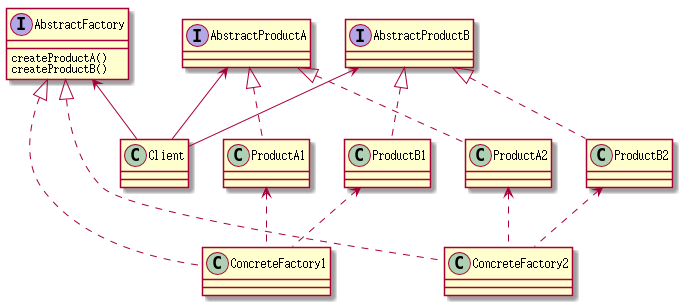
将一个复杂对象的构建与它的表示进行分离,使得同样的构建过程可以创建不同的表示.
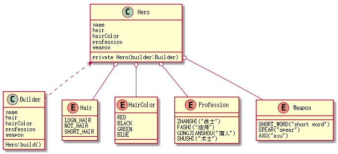
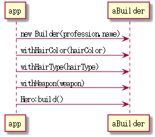
定义一个用于创建对象的接口,让子类决定事例化那一个类,Factory Method
使一个类的实例化延迟要子类.
者这一信息局部化的时候.
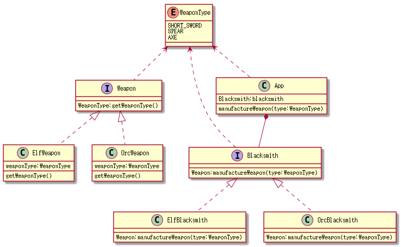
用原型实例指定创建类的种类,并且通过拷贝这些原型创建新的对象.
该类更加方便一些.
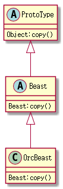
保证一个类仅有一个实例,并提供一个全局访问它的全局访问点.
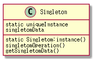
用一个系统创建的那些对象的类对系统进行参数化有两种常用方法:
类,并将它作为系统的参数.这就是抽象工厂,Builder,Prototype的关键特征. 所以这三个模式都涉及到创建一个新的负责创建产品对象的""工厂对象"
所有工厂对象和原型是同一个对象.
结构型设计模式涉及到如何组合类和对象以获得更大的结构,结构型类模式采用继承机制来组合接口或实现.
将一个类的接口转换成客户希望的另一个接口,Adapter模式使得原本由于接口不兼容而不能一起
工作的那些类可以一起工作.
包装器 Wrapper
它的父类接口.
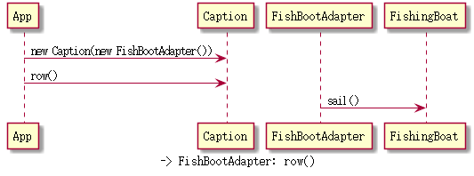
将抽象部分与它的实现部分分离,使它们都可以独立的变化
Handle/Body
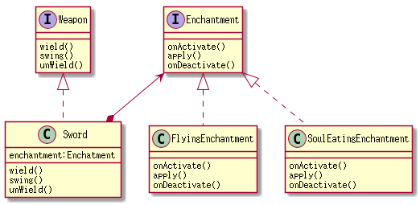
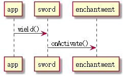
将对象组合成树形结构以表示""部分-整体"的层次结构,Composite使用户对单个对象和组合对象的
使用具有一致性.
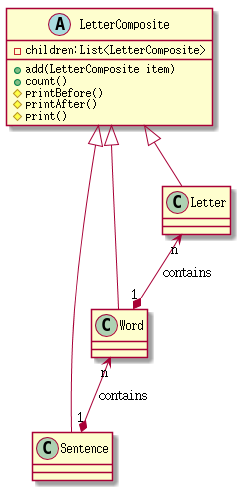
动态的给一个对象添加一些额外的职责.就增加功能而言,装饰者模式比生成子类
更加灵活
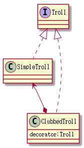
为子系统中的一组接口提供一致的界面,Facade 模式定义了一个高层接口,
这个接口使得子系统更加容易使用.
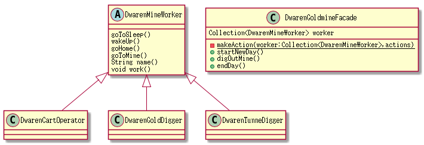
运用共享技术有效地支持大量细粒度的对象.
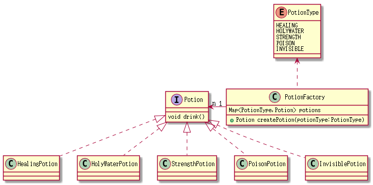
对其他对象提供一种代理以供其他对象访问
-
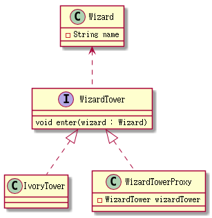
也不考虑接口如何演化.
当成一个对象来处理.
行为设计模式设计算法和对象间职责的分配.行为模式不仅描述类和对象的模式,
还描述它们之间的通信模式.
使多个对象都有机会处理请求,从而避免请求的发送者和接受者的耦合关系.
将这些对象连成一条链,并沿着这条链传递该请求,直到有一个对象处理它为止.
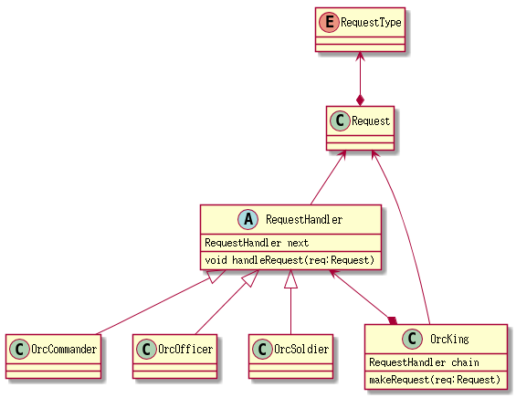
将一个请求封装成一个对象,从而使得可以用不同的请求对客户进行参数化,对请求
排队或记录请求日志,以及支持可撤销操作.
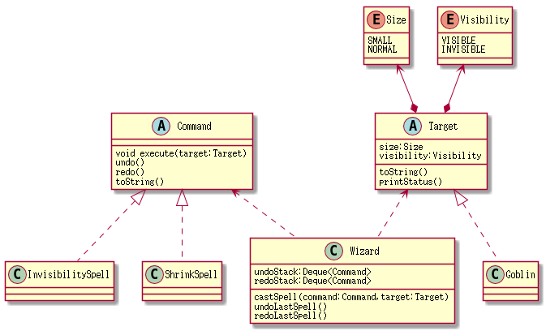
给定一个语言，定义它的文法的一种表示，并定义一个解释器，这个解释器使用该表示
来解释语言的句子.
解释器模式适用于当有一个语言需要解释执行，并且可将该语言的句子表示为一个抽象
语法树时一下情况最好。
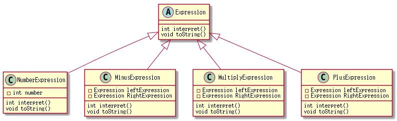
提供一种方法顺序访问一个聚合对象的各个元素，且不需要暴露该对象的内部表示。
用一个中介对象来封装一系列对象的交互。中介者使各对象不需要显示地互相
引用，从而使其耦合松散，可以独立地改变它们之间的交互
在不破坏封装性的前提下捕获一个对象的内部状态，并在对象之外保存这个状态。
这样以后就可以将对象恢复到原先保存的状态。
到先前的状态。
定义对象间的一种一对多的依赖关系，当一个对象的状态发生改变时，所有依赖于它的对象都得到通知并被自动更新。
各自独立的改变和使用。
允许一个对象在其内部状态改变时改变它的行为。对象似乎修改了它的类。
。
定义一系列的算法，把它们一个个封装起来，并且使它们可以相互替换。
将相关条件的分支移入它们各自的Strategy类中，以替代这些条件语句。
定义一个操作的算法骨架，而将一些步骤延迟到子类。
这就只允许在这些点进行扩展。
表示一个作用于某对象结构的各元素的操作，它允许在不改变各元素的类的前提下定义作用于这些元素
的新操作。
language/java/frame/spring/mvc/mvc.md
< 学习Spring
language/java/frame/spring/springboot/Chapter1/src/main/resources/templates/index.html
<!DOCTYPE html>
<html lang="en" xmlns:th="http://www.thymeleaf.org">
<head>
<meta charset="UTF-8"/>
<title>Title</title>
</head>
<body>
<h1 th:text="${host}">Hello World</h1>
</body>
</html>language/java/frame/spring/springboot/chapter16thymeleaf/src/main/resources/templates/hello.html
<!DOCTYPE html>
<html xmlns="http://www.w3.org/1999/xhtml" xmlns:th="http://www.thymeleaf.org"
xmlns:sec="http://www.thymeleaf.org/thymeleaf-extras-springsecurity3">
<head>
<title>Hello World!</title>
</head>
<body>
<h1 th:inline="text">Hello [[${#httpServletRequest.remoteUser}]]!</h1>
<form th:action="@{/logout}" method="post">
<input type="submit" value="注销"/>
</form>
</body>
</html>language/java/frame/spring/springboot/chapter16thymeleaf/src/main/resources/templates/index.html
<!DOCTYPE html>
<html xmlns="http://www.w3.org/1999/xhtml" xmlns:th="http://www.thymeleaf.org"
xmlns:sec="http://www.thymeleaf.org/thymeleaf-extras-springsecurity3">
<head>
<title>Spring Security入门</title>
</head>
<body>
<h1>欢迎使用Spring Security!</h1>
<p>点击 <a th:href="@{/hello}">这里</a> 打个招呼吧</p>
</body>
</html>language/java/frame/spring/springboot/chapter16thymeleaf/src/main/resources/templates/login.html
<!DOCTYPE html>
<html xmlns="http://www.w3.org/1999/xhtml"
xmlns:th="http://www.thymeleaf.org"
xmlns:sec="http://www.thymeleaf.org/thymeleaf-extras-springsecurity3">
<head>
<title>Spring Security Example </title>
</head>
<body>
<div th:if="${param.error}">
用户名或密码错
</div>
<div th:if="${param.logout}">
您已注销成功
</div>
<form th:action="@{/login}" method="post">
<div><label> 用户名 : <input type="text" name="username"/> </label></div>
<div><label> 密 码 : <input type="password" name="password"/> </label></div>
<div><input type="submit" value="登录"/></div>
</form>
</body>
</html>language/java/frame/spring/springboot/chapter18mailandvelocity/src/main/resources/templates/template.html
<!DOCTYPE html>
<html lang="en">
<head>
<meta charset="UTF-8">
<title>Title</title>
</head>
<body>
<h3>你好，#{username},这是邮件模板</h3>
</body>
</html>language/java/frame/spring/springboot/chapter3Exception/src/main/resources/templates/error.html
<!DOCTYPE html>
<html lang="en" xmlns:th="http://www.thymeleaf.org">
<head>
<meta charset="UTF-8"/>
<title>Title</title>
</head>
<body>
<h5 th:text="${exception.message}">default Error</h5>
<p th:text="${url}"></p>
<span th:text="#{test}"></span>
</body>
</html>language/java/frame/spring/springboot/chapter3Exception/src/main/resources/templates/index.html
<!DOCTYPE html>
<html lang="en" xmlns:th="http://www.thymeleaf.org">
<head>
<meta charset="UTF-8"/>
<title>Title</title>
</head>
<body>
<h1 th:text="${host}">Hello World</h1>
</body>
</html>language/java/frame/spring/springboot/chapter3Exception/target/classes/templates/error.html
<!DOCTYPE html>
<html lang="en" xmlns:th="http://www.thymeleaf.org">
<head>
<meta charset="UTF-8"/>
<title>Title</title>
</head>
<body>
<h5 th:text="${exception.message}">default Error</h5>
<p th:text="${url}"></p>
<span th:text="#{test}"></span>
</body>
</html>language/java/frame/spring/springboot/chapter3Exception/target/classes/templates/index.html
<!DOCTYPE html>
<html lang="en" xmlns:th="http://www.thymeleaf.org">
<head>
<meta charset="UTF-8"/>
<title>Title</title>
</head>
<body>
<h1 th:text="${host}">Hello World</h1>
</body>
</html>language/java/frame/spring/springboot/springboot.md
@Aspect
@Component
public class HttpAspect {
private static final Logger logger = LoggerFactory.getLogger(HttpAspect.class);
@Before("execution(public * com.springboot.chapter1.web.*Controller.*(..))")
public void httpBefore(JoinPoint point) {
ServletRequestAttributes attributes = (ServletRequestAttributes) RequestContextHolder.getRequestAttributes();
HttpServletRequest request = attributes.getRequest();
//url
logger.info("url={}", request.getRequestURL());
//id
logger.info("ip={}", request.getRemoteAddr());
//method
logger.info("method={}", request.getMethod());
//类方法
logger.info("class_method={}", point.getSignature().getDeclaringTypeName() + "." + point.getSignature().getName());
//参数
logger.info("args={}", point.getArgs());
}
}index.ftl 文件 在请求向Resp域中加入host值
<!DOCTYPE html>
<html>
<head lang="en">
<meta charset="UTF-8" />
<title></title>
</head>
<body>
FreeMarker模板引擎
<h1>${host}</h1>
</body>
</html>@ControllerAdvice
public class GlobalExceptionHandler {
@ExceptionHandler(Exception.class)
public ModelAndView defaultException(HttpServletRequest req, Exception e) throws Exception {
ModelAndView mv = new ModelAndView("error");
mv.addObject("exception", e);
mv.addObject("url", req.getRequestURL());
return mv;
}
@ExceptionHandler(MyException.class)
@ResponseBody
public ErrorInfo myExceptionHandler(HttpServletRequest req, MyException e) throws Exception {
ErrorInfo<String> errorInfo = new ErrorInfo<>();
errorInfo.setCode(ErrorInfo.ERROR);
errorInfo.setMessage(e.getMessage());
errorInfo.setUrl(req.getRequestURL().toString());
errorInfo.setData("Error");
return errorInfo;
}
}
spring.datasource.primary.url=jdbc:mysql://localhost:3306/test1
spring.datasource.primary.username=root
spring.datasource.primary.password=root
spring.datasource.primary.driver-class-name=com.mysql.jdbc.Driver
spring.datasource.secondary.url=jdbc:mysql://localhost:3306/test2
spring.datasource.secondary.username=root
spring.datasource.secondary.password=root
spring.datasource.secondary.driver-class-name=com.mysql.jdbc.Driver/**
* 配置多个数据库源
*/
@Configuration
public class DataSourceConf {
@Bean(name = "primaryDataSource")
@Qualifier("primaryDataSource")
@ConfigurationProperties(prefix = "spring.datasource.primary")
public DataSource primaryDataSource() {
return DataSourceBuilder.create().build();
}
@Bean(name = "secondaryDataSource")
@Qualifier("secondaryDataSource")
@Primary
@ConfigurationProperties(prefix = "spring.datasource.secondary")
public DataSource secondaryDataSource() {
return DataSourceBuilder.create().build();
}
@Bean(name = "primaryJdbcTemplate")
public JdbcTemplate primaryJdbcTemplate(
@Qualifier("primaryDataSource") DataSource dataSource) {
return new JdbcTemplate(dataSource);
}
@Bean(name = "secondaryJdbcTemplate")
public JdbcTemplate secondaryJdbcTemplate(
@Qualifier("secondaryDataSource") DataSource dataSource) {
return new JdbcTemplate(dataSource);
}
}Code
@Configuration
@EnableTransactionManagement
@EnableJpaRepositories(
entityManagerFactoryRef = "entityManagerFactoryBeanPrimary",
transactionManagerRef = "transactionManagerPrimary",
basePackages = {"com.springboot.chapter7jpaconf.domain.a"} //设置Repository所在位置
)
public class PrimaryConfig {
@Autowired
@Qualifier("primaryDataSource")
private DataSource primaryDataSource;
@Primary
@Bean(name = "entityManagerFactoryBeanPrimary")
public LocalContainerEntityManagerFactoryBean entityManagerFactoryBeanPrimary(EntityManagerFactoryBuilder builder) {
return builder.dataSource(primaryDataSource)
.properties(getVendorProperties(primaryDataSource))
.packages("com.springboot.chapter7jpaconf.domain.a") //设置实体所在的位置
.persistenceUnit("primaryPersistenceUnit")
.build();
}
@Autowired
private JpaProperties jpaProperties;
private Map<String, String> getVendorProperties(DataSource dataSource) {
return jpaProperties.getHibernateProperties(dataSource);
}
@Primary
@Bean(name = "entityManagerPrimary")
public EntityManager entityManager(EntityManagerFactoryBuilder builder) {
return entityManagerFactoryBeanPrimary(builder).getObject().createEntityManager();
}
@Primary
@Bean(name = "transactionManagerPrimary")
public PlatformTransactionManager transactionManagerPrimary(EntityManagerFactoryBuilder builder) {
return new JpaTransactionManager(entityManagerFactoryBeanPrimary(builder).getObject());
}
public class RedisObjectSerializer implements RedisSerializer<Object> {
private Converter<Object, byte[]> serializer = new SerializingConverter();
private Converter<byte[], Object> deserializer = new DeserializingConverter();
static final byte [] EMPTY_ARRAY = new byte[0];
@Override
public byte[] serialize(Object o) throws SerializationException {
if (o==null){
return EMPTY_ARRAY;
}
try {
return serializer.convert(o);
}catch (Exception e){
return EMPTY_ARRAY;
}
}
@Override
public Object deserialize(byte[] bytes) throws SerializationException {
if (isEmpty(bytes)){
return null;
}
try {
return deserializer.convert(bytes);
}catch (Exception e){
throw new SerializationException("不能反序列化",e);
}
}
private boolean isEmpty(byte[] data) {
return (data == null || data.length == 0);
}
}@Configuration
public class RedisConfig {
@Bean
JedisConnectionFactory jedisConnectionFactory(){
return new JedisConnectionFactory();
}
@Bean
RedisTemplate<String,User> redisTemplate(RedisConnectionFactory redisConnectionFactory){
RedisTemplate<String,User> template = new RedisTemplate<>();
template.setConnectionFactory(jedisConnectionFactory());
template.setKeySerializer(new StringRedisSerializer());
template.setValueSerializer(new RedisObjectSerializer());
return template;
}
}@RunWith(SpringRunner.class)
@SpringBootTest
public class UserTest {
@Autowired
StringRedisTemplate stringRedisTemplate;
@Autowired
RedisTemplate<String,User> userRedisTemplate;
@Test
public void test() throws Exception {
stringRedisTemplate.opsForValue().set("hello","123");
Assert.assertEquals("123",stringRedisTemplate.opsForValue().get("hello"));
// 保存对象
User user = new User("超人", 20);
userRedisTemplate.opsForValue().set(user.getName(), user);
user = new User("蝙蝠侠", 30);
userRedisTemplate.opsForValue().set(user.getName(), user);
user = new User("蜘蛛侠", 40);
userRedisTemplate.opsForValue().set(user.getName(), user);
Assert.assertEquals(20, userRedisTemplate.opsForValue().get("超人").getAge().longValue());
Assert.assertEquals(30, userRedisTemplate.opsForValue().get("蝙蝠侠").getAge().longValue());
Assert.assertEquals(40, userRedisTemplate.opsForValue().get("蜘蛛侠").getAge().longValue());
}
}创建Mapper类
@Mapper
public interface UserMapper {
@Select("SELECT * FROM user u WHERE u.name=#{name} ")
User findByName(@Param("name") String name);
@Insert("INSERT INTO user(name,age) VALUES(#{name},#{age})")
int insert(@Param("name") String name, @Param("age") Integer age);
// 深入使用mybaits annotations
@Results({
@Result(property = "id", column = "id"),
@Result(property = "name", column = "name"),
@Result(property = "age", column = "age")
})
@Select("SELECT u.id,u.name,u.age FROM user u")
List<User> findAll();
@Update("UPDATE user SET age=#{age} WHERE name=#{name}")
void update(User user);
@Delete("DELETE FROM user WHERE id=#{id}")
void delete(Long id);
@Insert("INSERT INTO user(name, age) VALUES(#{name,jdbcType=VARCHAR}, #{age,jdbcType=INTEGER})")
int insertByMap(Map<String, Object> map);
}@Configuration
@EnableSwagger2
public class Swagger2 {
/**
* 访问
* http://localhost:8080/swagger-ui.html 查看RestFul 文档
*
* @return
*/
@Bean
public Docket createRestApi() {
return new Docket(DocumentationType.SWAGGER_2)
.apiInfo(apiInfo())
.select()
.apis(RequestHandlerSelectors.basePackage("com.springboot.charpter3.web"))
.paths(PathSelectors.any())
.build();
}
private ApiInfo apiInfo() {
return new ApiInfoBuilder()
.title("Spring Boot 使用Swagger2 构建RESTFUL API")
.description("gudongxian")
.contact("gudongxian")
.termsOfServiceUrl("")
.version("1.0")
.build();
}
} @ApiOperation(value = "获取所有用户")
@GetMapping("")
public List<User> getUserList() {
List<User> userList = new ArrayList<>(users.values());
return userList;
}
@ApiOperation(value = "创建用户", notes = "根据User用户创建用户")
@ApiImplicitParam(name = "user", value = "用户详细实体", required = true, dataType = "User")
@PostMapping("")
public String postUser(@ModelAttribute User user) {
users.put(user.getId(), user);
return "success";
}/**
* 定时任务
*/
@Component
public class ScheduleTask {
private static final SimpleDateFormat sf = new SimpleDateFormat("HH:mm:ss");
@Scheduled(fixedRate = 3000L)
public void repeatCurrentTime() {
System.out.println("Current Time is " + sf.format(new Date()));
}
}
在启动类中加入 @EnableAsync
/**
* 异步任务
*
* @author gudongxian
* @create 2017-11-22 下午3:12
**/
@Component
public class AsyncTask {
public static Random random = new Random();
@Async
public Future<String> doTaskOne() throws Exception {
System.out.println("do Task one");
long start = System.currentTimeMillis();
Thread.sleep(random.nextInt(10000));
long end = System.currentTimeMillis();
System.out.println("completing task one spends " + (end - start) + " ms");
return new AsyncResult<>("task one completed");
}
@Async
public Future<String> doTaskTwo() throws Exception {
System.out.println("do Task Two");
long start = System.currentTimeMillis();
Thread.sleep(random.nextInt(10000));
long end = System.currentTimeMillis();
System.out.println("completing task Two spends " + (end - start) + " ms");
return new AsyncResult<>("task Two completed");
}
@Async
public Future<String> doTaskThree() throws Exception {
System.out.println("do Task Three");
long start = System.currentTimeMillis();
Thread.sleep(random.nextInt(10000));
long end = System.currentTimeMillis();
System.out.println("completing task Three spends " + (end - start) + " ms");
return new AsyncResult<>("task Three completed");
}
}@Autowired
AsyncTask asyncTask;
@Test
public void test() throws Exception {
long start = System.currentTimeMillis();
Future<String> doTaskOne = asyncTask.doTaskOne();
Future<String> doTaskTwo = asyncTask.doTaskTwo();
Future<String> doTaskThree = asyncTask.doTaskThree();
while (true) {
if (doTaskOne.isDone() && doTaskTwo.isDone() && doTaskThree.isDone()) {
System.out.println(doTaskOne.get());
System.out.println(doTaskTwo.get());
System.out.println(doTaskThree.get());
break;
}
Thread.sleep(1000L);
}
long end = System.currentTimeMillis();
System.out.println("Tasks Completed that spends " + (end - start) + "ms");
}##chapter 13 log4j 配置
log4j.properties
# LOG4J配置
log4j.rootCategory=INFO, stdout, file, errorfile
#log4j.category.com.springboot.log4j=DEBUG, didifile
log4j.category.com.springboot.log4j=${logging.level.gu}, didifile
log4j.logger.error=errorfile
# 控制台输出
log4j.appender.stdout=org.apache.log4j.ConsoleAppender
log4j.appender.stdout.layout=org.apache.log4j.PatternLayout
log4j.appender.stdout.layout.ConversionPattern=%d{yyyy-MM-dd HH:mm:ss,SSS} %5p %c{1}:%L - %m%n
# root日志输出
log4j.appender.file=org.apache.log4j.DailyRollingFileAppender
log4j.appender.file.file=logs/all.log
log4j.appender.file.DatePattern='.'yyyy-MM-dd
log4j.appender.file.layout=org.apache.log4j.PatternLayout
log4j.appender.file.layout.ConversionPattern=%d{yyyy-MM-dd HH:mm:ss,SSS} %5p %c{1}:%L - %m%n
# error日志输出
log4j.appender.errorfile=org.apache.log4j.DailyRollingFileAppender
log4j.appender.errorfile.file=logs/error.log
log4j.appender.errorfile.DatePattern='.'yyyy-MM-dd
log4j.appender.errorfile.Threshold = ERROR
log4j.appender.errorfile.layout=org.apache.log4j.PatternLayout
log4j.appender.errorfile.layout.ConversionPattern=%d{yyyy-MM-dd HH:mm:ss,SSS} %5p %c{1}:%L - %m%n
# com.didispace下的日志输出
log4j.appender.didifile=org.apache.log4j.DailyRollingFileAppender
log4j.appender.didifile.file=logs/my.log
log4j.appender.didifile.DatePattern='.'yyyy-MM-dd
log4j.appender.didifile.layout=org.apache.log4j.PatternLayout
log4j.appender.didifile.layout.ConversionPattern=%d{yyyy-MM-dd HH:mm:ss,SSS} %5p %c{1}:%L ---- %m%n# LOG4J配置
log4j.rootCategory=INFO, stdout
log4j.logger.mongodb=INFO, mongodb
# 控制台输出
log4j.appender.stdout=org.apache.log4j.ConsoleAppender
log4j.appender.stdout.layout=org.apache.log4j.PatternLayout
log4j.appender.stdout.layout.ConversionPattern=%d{yyyy-MM-dd HH:mm:ss,SSS} %5p %c{1}:%L - %m%n
# mongodb输出
log4j.appender.mongodb=com.springboot.chapter14log4jweb.log.MongoAppender
log4j.appender.mongodb.connectionUrl=mongodb://localhost:27017
log4j.appender.mongodb.databaseName=logs
log4j.appender.mongodb.collectionName=logs_requestpublic class MongoAppender extends AppenderSkeleton {
private MongoClient mongoClient;
private MongoDatabase mongoDatabase;
private MongoCollection<BasicDBObject> logsCollection;
private String connectionUrl;
private String databaseName;
private String collectionName;
@Override
protected void append(LoggingEvent loggingEvent) {
if(mongoDatabase == null) {
MongoClientURI connectionString = new MongoClientURI(connectionUrl);
mongoClient = new MongoClient(connectionString);
mongoDatabase = mongoClient.getDatabase(databaseName);
logsCollection = mongoDatabase.getCollection(collectionName, BasicDBObject.class);
}
logsCollection.insertOne((BasicDBObject) loggingEvent.getMessage());
}
@Override
public void close() {
if(mongoClient != null) {
mongoClient.close();
}
}
@Override
public boolean requiresLayout() {
return false;
}
public String getConnectionUrl() {
return connectionUrl;
}
public void setConnectionUrl(String connectionUrl) {
this.connectionUrl = connectionUrl;
}
public String getDatabaseName() {
return databaseName;
}
public void setDatabaseName(String databaseName) {
this.databaseName = databaseName;
}
public String getCollectionName() {
return collectionName;
}
public void setCollectionName(String collectionName) {
this.collectionName = collectionName;
}
}日志切面
/**
* @author gudongxian
* @create 2017-11-30 下午9:45
* @Order标记定义了组件的加载顺序。
**/
@Aspect
@Component
@Order(1)
public class LogWebAspect {
private Logger logger = Logger.getLogger("mongodb");
@Pointcut("execution(public * com.springboot.chapter14log4jweb.web.*.*(..))")
public void weblog() {
}
@Before("weblog()")
public void doBefore(JoinPoint joinPoint) {
ServletRequestAttributes attributes = (ServletRequestAttributes) RequestContextHolder.getRequestAttributes();
HttpServletRequest request = attributes.getRequest();
BasicDBObject loginfo = getBasicDBObject(request, joinPoint);
logger.info(loginfo);
}
private BasicDBObject getBasicDBObject(HttpServletRequest request, JoinPoint joinPoint) {
// 基本信息
BasicDBObject r = new BasicDBObject();
r.append("requestURL", request.getRequestURL().toString());
r.append("requestURI", request.getRequestURI());
r.append("queryString", request.getQueryString());
r.append("remoteAddr", request.getRemoteAddr());
r.append("remoteHost", request.getRemoteHost());
r.append("remotePort", request.getRemotePort());
r.append("localAddr", request.getLocalAddr());
r.append("localName", request.getLocalName());
r.append("method", request.getMethod());
r.append("headers", getHeadersInfo(request));
r.append("parameters", request.getParameterMap());
r.append("classMethod", joinPoint.getSignature().getDeclaringTypeName() + "." + joinPoint.getSignature().getName());
r.append("args", Arrays.toString(joinPoint.getArgs()));
return r;
}
/**
* 获取头信息
*
* @param request
* @return
*/
private Map<String, String> getHeadersInfo(HttpServletRequest request) {
Map<String, String> map = new HashMap<>();
Enumeration headerNames = request.getHeaderNames();
while (headerNames.hasMoreElements()) {
String key = (String) headerNames.nextElement();
String value = request.getHeader(key);
map.put(key, value);
}
return map;
}
}
/**
*/
application,yml management:
security: enabled: false
<dependency>
<groupId>org.springframework.boot</groupId>
<artifactId>spring-boot-starter-cache</artifactId>
</dependency>@CacheConfig(cacheNames = "users")
public interface UserRepository extends JpaRepository<User,Long> {
@Cacheable(key = "#p0",condition = "#p0.length() < 10")
User findByName(String name);
}
<!--encahe.xml-->
<ehcache xmlns:xsi="http://www.w3.org/2001/XMLSchema-instance"
xsi:noNamespaceSchemaLocation="encache.xml">
<cache name="users"
maxEntriesLocalHeap="200"
timeToLiveSeconds="600">
</cache>
</ehcache>
@Configuration
@EnableWebSecurity
public class WebSecurityConfig extends WebSecurityConfigurerAdapter {
@Override
protected void configure(HttpSecurity http) throws Exception {
http.authorizeRequests()
.antMatchers("/", "/home").permitAll() //允许所有用户访问
.anyRequest().authenticated() //其他需要认证
.and()
.formLogin() //表单登录
.loginPage("/login") //登录的地址 认证失败 重定向 /login?error
.permitAll()
.and()
.logout() //登出 重定向 /login?logout
.permitAll();
}
//不配置内存用户默认用户名为user
// /**
// * 配置内存用户
// */
// @Autowired
// public void configureGlobal(AuthenticationManagerBuilder auth) throws Exception {
// auth.inMemoryAuthentication()//记忆认证
// .withUser("user").password("password").roles("USER");
// }
}
@CacheConfig(cacheNames = "users")
public interface UserRepository extends JpaRepository<User,Long> {
//根据名字 判断你是否从缓存中取出数据
@Cacheable(key = "#p0")
User findByName(String name);
@Cacheable(key = "#p0.name")
User save(User user);
}
spring.mail.host=smtp.qq.com
spring.mail.username=gudongxian@qq.com
#授权码
spring.mail.password=授权码
spring.mail.properties.mail.smtp.auth=true
spring.mail.properties.mail.smtp.starttls.enable=true
spring.mail.properties.mail.smtp.starttls.required=true <dependency>
<groupId>org.springframework.boot</groupId>
<artifactId>spring-boot-starter-mail</artifactId>
</dependency>@Autowired
JavaMailSender sender;
@Test
public void sendSimpleMail() {
SimpleMailMessage smsg = new SimpleMailMessage();
smsg.setFrom("gudongxian@qq.com");
smsg.setTo("gudongxian@qq.com");
smsg.setSubject("主题:简单邮件");
smsg.setText("测试邮件内容");
sender.send(smsg);
}
@Test
public void sendAttachmentsMail() throws Exception {
MimeMessage mimeMessage = sender.createMimeMessage();
MimeMessageHelper helper = new MimeMessageHelper(mimeMessage, true);
helper.setFrom("gudongxian@qq.com");
helper.setTo("gudongxian@qq.com");
helper.setSubject("主题：有附件");
helper.setText("有附件的邮件");
FileSystemResource file = new FileSystemResource(new File("background.jpg"));
helper.addAttachment("附件-1.jpg", file);
helper.addAttachment("附件-2.jpg", file);
sender.send(mimeMessage);
}
@Test
public void sendInlineMail() throws Exception {
MimeMessage mimeMessage = sender.createMimeMessage();
MimeMessageHelper helper = new MimeMessageHelper(mimeMessage, true);
helper.setFrom("gudongxian@qq.com");
helper.setTo("gudongxian@qq.com");
helper.setSubject("主题：嵌入静态资源");
helper.setText("<html><body><img src=\"cid:background\" ></body></html>", true);
FileSystemResource file = new FileSystemResource(new File("background.jpg"));
helper.addInline("background", file);
sender.send(mimeMessage);
} <dependency>
<groupId>org.springframework.statemachine</groupId>
<artifactId>spring-statemachine-core</artifactId>
<version>1.2.0.RELEASE</version>
</dependency>@Configuration
@EnableStateMachine
public class StateMachineConfig extends EnumStateMachineConfigurerAdapter<States, Events> {
@Override
public void configure(StateMachineStateConfigurer<States, Events> states) throws Exception {
states.withStates()
.initial(States.UNPAID)
.states(EnumSet.allOf(States.class));
}
@Override
public void configure(StateMachineTransitionConfigurer<States, Events> transitions) throws Exception {
super.configure(transitions);
transitions
.withExternal()
.source(States.UNPAID).target(States.WAITING_FOR_RECEIVE)
.event(Events.PAY)
.and()
.withExternal()
.source(States.WAITING_FOR_RECEIVE).target(States.DONE)
.event(Events.RECEIVE);
}
}@WithStateMachine
public class EventConfig {
private final Logger logger = LoggerFactory.getLogger(getClass());
@OnTransition(target = "UNPAID")
public void create() {
logger.info("订单创建完成,待支付");
}
@OnTransition(source = "UNPAID", target = "WAITING_FOR_RECEIVE")
public void pay() {
logger.info("用户支付完成,待收货.");
}
@OnTransitionStart(source = "UNPAID", target = "WAITING_FOR_RECEIVE")
public void payStart() {
logger.info("用户完成支付，待收货: start");
}
@OnTransitionEnd(source = "UNPAID", target = "WAITING_FOR_RECEIVE")
public void payEnd() {
logger.info("用户完成支付，待收货: end");
}
@OnTransition(source = "WAITING_FOR_RECEIVE", target = "DONE")
public void receive() {
logger.info("用户已收货，订单完成");
}
} <plugin>
<!--maven-git-commit-id-plugin插件，jar包带上git commit相关信息-->
<groupId>pl.project13.maven</groupId>
<artifactId>git-commit-id-plugin</artifactId>
<version>2.1.15</version>
<executions>
<execution>
<goals>
<goal>revision</goal>
</goals>
</execution>
</executions>
<configuration>
<dotGitDirectory>${project.basedir}/.git</dotGitDirectory>
</configuration>
</plugin>"SpringBoot_base"
language/python/.ipynb_checkpoints/Numpy和pandas 教程-checkpoint.ipynb
import numpy as np
array = np.array([[1,2,3],
[4,5,6]])
print(array)
print('number of dim:',array.ndim)
print('shape:',array.shape)
print('size:',array.size)import numpy as np
a = np.array([2,3,4],dtype=np.int)
print(a.dtype)
a = np.array([2,3,4],dtype=np.int32)
print(a.dtype)
a = np.array([2,3,4],dtype=np.int16)
print(a.dtype)
a = np.array([2,3,4],dtype=np.float)
print(a.dtype)
a = np.zeros((2,3))
print(a)
a = np.ones((2,3))
print(a)
a = np.empty((2,3))
print(a)
a = np.arange(10,20,2)
print(a)
a = np.arange(12).reshape(3,4)
print(a)
# 生成线段，1-10 分成20段
a = np.linspace(1,10,20)
print(a)import numpy as np
a = np.array([1,2,3,4])
b= np.arange(4)
c = a-b
print(a,b)
print(c)
print(b**2)
print(b<3)
print(b==3)
print(a-1)
a = np.array([[1,1],
[0,1]])
b = np.arange(4).reshape((2,2))
print(a)
print(b)
c = a*b
c_dot = np.dot(a,b) # 矩阵乘法
c_dot_2 = a.dot(b)
print(c)
print(c_dot)
print(c_dot_2)
a = np.random.random((2,4))
print(a)
print(np.sum(a))
print(np.min(a))
print(np.max(a))
print(np.sum(a,axis=1)) # 行里求和
print(np.min(a,axis=0)) # 列里找最小值
print(np.max(a,axis=1))import numpy as np
A = np.arange(2,14).reshape((3,4))
print(A)
print(np.argmin(A)) # 最小值索引
print(np.argmax(A))
print(np.mean(A)) # 平均值
print(A.mean())
print(np.average(A))
print(np.median(A)) # 矩阵的中位数
print(np.cumsum(A)) # 累加
print(np.diff(A)) # 累差 相邻元素的差 3*4 = > 3*3
print(np.nonzero(A)) # 非零，两个Array，第一个行数，第二个列数
B = np.arange(14,2,-1).reshape((3,4))
print(np.sort(B))
print(np.transpose(A)) # 矩阵转置
print((A.T).dot(A))
print(np.clip(A,5,9)) # 截取，小于5变成5，大于9变成9
# 以上都可以指定axis计算import numpy as np
A = np.arange(3,15)
print(A)
print(A[3])
A = np.reshape(A,(3,4))
print(A)
print(A[2])
print(A[1][1])
print(A[1,1])
print(A[2,:])
print(A[2,1:2])
print(A[2,1:3])
print(A[:,1])
print(A)
print('*'*3,'行迭代：')
for row in A:
print(row)
print('*'*3,'列迭代：')
print(A.T)
for column in A.T:
print(column)
print('*'*3,'元素迭代：')
print(A.flatten())
for item in A.flat: # A编程一行 A.flat 是迭代器
print(item)import numpy as np
A = np.array([1,1,1])
B = np.array([2,2,2])
C = np.vstack((A,B))# vertical stack 垂直合并
D = np.hstack((A,B)) # horizontal stack 水平合并
print(C)
print(A.shape,C.shape)
print(D)
print(A.shape,D.shape)
print(A[np.newaxis,:]) # 在行上面加维度
print(A[np.newaxis,:].shape) # 在行上面加维度
print(A[:,np.newaxis]) # 在行上面加维度
print(A[:,np.newaxis].shape) # 在列上面加维度
A = np.array([1,1,1])[:,np.newaxis]
B = np.array([2,2,2])[:,np.newaxis]
E = np.concatenate((A,B,B,A),axis=0) # 纵向合并
F = np.concatenate((A,B,B,A),axis=1) # 横向合并
print(E)
print(F)language/python/.ipynb_checkpoints/Python爬虫基础-checkpoint.ipynb
from urllib.request import urlopen
html = urlopen('http://www.baidu.com').read().decode('utf-8')
print(html)import re
res = re.findall(r'<title>(.+?)</title>',html)
print('页面标题为：',res[0])res = re.findall(r'href="(.+?)"',html)
print('\nAll link:',res)from bs4 import BeautifulSoup
from urllib.request import urlopen
soup = BeautifulSoup(html,features='lxml')
print(soup.h1)
print('\n',soup.p)all_href = soup.find_all('a')
all_href = [l['href'] for l in all_href]
print(all_href)navs = soup.find_all('a',{'class':'mnav'})
# 获取百度的菜单
for i in navs:
print(i.get_ｔext())import re
img_links = soup.find_all('img',{'src':re.compile('.*?\.jpg')})
for link in img_links:
print(link['src'])language/python/PYTHON.md
在 python 中，strings, tuples, 和 numbers 是不可更改的对象，而 list,dict 等则是可以修改的对象。
python 函数的参数传递：
python 中一切都是对象，严格意义我们不能说值传递还是引用传递，我们应该说传不可变对象和传可变对象。
python 使用 lambda 来创建匿名函数。
所谓匿名，意即不再使用 def 语句这样标准的形式定义一个函数。
lambda [arg1 [,arg2,.....argn]]:expression
Python 中，程序的变量并不是在哪个位置都可以访问的，访问权限决定于这个变量是在哪里赋值的。
变量的作用域决定了在哪一部分程序可以访问哪个特定的变量名称。Python的作用域一共有4种，分别是：
以 L –> E –> G –>B 的规则查找，即：在局部找不到，便会去局部外的局部找（例如闭包），再找不到就会去全局找，再者去内建中找。
当内部作用域想修改外部作用域的变量时，就要用到global和nonlocal关键字了。
如果要修改嵌套作用域（enclosing 作用域，外层非全局作用域）中的变量则需要 nonlocal 关键字了。
def outer():
num = 10
def inner():
nonlocal num # nonlocal关键字声明
num = 100
print(num)
inner()
print(num)
outer()列表推导式提供了从序列创建列表的简单途径。通常应用程序将一些操作应用于某个序列的每个元素，用其获得的结果作为生成新列表的元素，或者根据确定的判定条件创建子序列。
每个列表推导式都在 for 之后跟一个表达式，然后有零到多个 for 或 if 子句。返回结果是一个根据表达从其后的 for 和 if 上下文环境中生成出来的列表。如果希望表达式推导出一个元组，就必须使用括号。
这里我们将列表中每个数值乘三，获得一个新的列表：
vec = [2, 4, 6] [3*x for x in vec]
language/python/django/.ipynb_checkpoints/未命名-checkpoint.ipynb
language/python/django/django-polls/polls/templates/polls/detail.html
<h1>{{ question.question_text }}</h1>
{% if error_message %}<p><strong>{{ error_message }}</strong></p>{% endif %}
<form action="{% url 'polls:vote' question.id %}" method="post">
{% csrf_token %}
{% for choice in question.choice_set.all %}
<input type="radio" name="choice" id="choice{{forloop.counter}}" value="{{choice.id}}">
<lable for="choice{{forloop.counter}}"> {{choice.choice_text}}</label><br>
{% endfor %}
<input type="submit" value="Vote">
</form>language/python/django/django-polls/polls/templates/polls/index.html
{% load static %}
<link rel="stylesheet" type="text/css" href="{% static 'polls/style.css' %}"/>
{% if latest_question_list %}
<ul>
{% for question in latest_question_list %}
<li><a href="{% url 'polls:detail' question.id %}">{{ question.question_text }}</a></li>
{% endfor %}
</ul>
{% else %}
<p>No polls are available.</p>
{% endif %}language/python/django/django-polls/polls/templates/polls/results.html
<h1>{{ question.question_text }}</h1>
<ul>
{% for choice in question.choice_set.all %}
<li>{{ choice.choice_text }} -- {{ choice.votes }} vote {{choice.votes|pluralize}}</li>
{% endfor %}
</ul>
<a href="{% url 'polls:detail' question.id %}">Vote again? </a>language/python/django/mysite/polls/templates/polls/detail.html
<h1>{{ question.question_text }}</h1>
{% if error_message %}<p><strong>{{ error_message }}</strong></p>{% endif %}
<form action="{% url 'polls:vote' question.id %}" method="post">
{% csrf_token %}
{% for choice in question.choice_set.all %}
<input type="radio" name="choice" id="choice{{forloop.counter}}" value="{{choice.id}}">
<lable for="choice{{forloop.counter}}"> {{choice.choice_text}}</label><br>
{% endfor %}
<input type="submit" value="Vote">
</form>language/python/django/mysite/polls/templates/polls/index.html
{% load static %}
<link rel="stylesheet" type="text/css" href="{% static 'polls/style.css' %}"/>
{% if latest_question_list %}
<ul>
{% for question in latest_question_list %}
<li><a href="{% url 'polls:detail' question.id %}">{{ question.question_text }}</a></li>
{% endfor %}
</ul>
{% else %}
<p>No polls are available.</p>
{% endif %}language/python/django/mysite/polls/templates/polls/results.html
<h1>{{ question.question_text }}</h1>
<ul>
{% for choice in question.choice_set.all %}
<li>{{ choice.choice_text }} -- {{ choice.votes }} vote {{choice.votes|pluralize}}</li>
{% endfor %}
</ul>
<a href="{% url 'polls:detail' question.id %}">Vote again? </a>language/python/django/mysite/templates/admin/base_site.html
{% extends "admin/base.html" %}
{% block title %}{{ title }} | {{ site_title|default:_('Django site admin') }}{% endblock %}
{% block branding %}
<h1 id="site-name"><a href="{% url 'admin:index' %}">Polls administration</a></h1>
{% endblock %}
{% block nav-global %}{% endblock %}
language/python/django/未命名.ipynb
language/python/python_tutorial/.ipynb_checkpoints/python_advanced_tutorial-checkpoint.ipynb
class Person():
# 约束当前类的属性
__slots__ = ('_name','_age')
def __init__(self,name,age):
self._name = name
self._age = age
@property
def name(self):
return self._name
@name.setter
def name(self,name):
self._name = name
@property
def age(self):
return self._age
@age.setter
def age(self,age):
self._age = age
def play(self):
if self._age < 16:
print(f'{self._name}正在玩飞行棋.')
else:
print(f'{self._name}正在玩斗地主.')
# 静态方法
@staticmethod
def is_vaild(self,age):
return age >= 18
# 类方法：生成当前类对象，类方法第一个参数约定为cls。
@classmethod
def create(cls):
return cls('Demo',18)
class Student(Person):
def __init__(self,name,age,grade):
super().__init__(name,age)
self._grade = grade
@property
def grade(self):
return self._grade
@grade.setter
def grade(self,grade):
self._grade = grade
def study(self,course):
print(f'{self._grade}的{self._name}正在学习{course}')
p = Person.create()
p.play()
stu = Student('WinterGu',24,2015)
stu.study('概率论')from abc import ABCMeta,abstractmethod
class Pet(metaclass=ABCMeta):
def __init__(self,nickname):
self._nickname = nickname
# 抽象方法
@abstractmethod
def make_voice(self):
"""发出声音"""
pass
class Dog(Pet):
def make_voice(self):
print(f'{self._nickname}: 汪汪汪...')
class Cat(Pet):
def make_voice(self):
print(f'{self._nickname}: 喵喵喵...')
pets = [Dog('旺财'),Dog('小黑'),Cat('Kitty')]
for pet in pets:
pet.make_voice()import tkinter
import tkinter.messagebox
def main():
flag = True
def change_label_text():
nonlocal flag
flag = not flag
color,msg = ('red','Hello,World!') if flag else ('blue','Goodbye,World!')
label.config(text=msg,fg=color)
def confirm_to_quit():
if tkinter.messagebox.askokcancel('温馨提示', '确定要退出吗?'):
top.quit()
top = tkinter.Tk()
top.geometry('240x160')
top.title('小游戏')
label = tkinter.Label(top, text='Hello, world!', font='Arial -32', fg='red')
label.pack(expand=1)
# 创建一个装按钮的容器
panel = tkinter.Frame(top)
# 创建按钮对象 指定添加到哪个容器中 通过command参数绑定事件回调函数
button1 = tkinter.Button(panel, text='修改', command=change_label_text)
button1.pack(side='left')
button2 = tkinter.Button(panel, text='退出', command=confirm_to_quit)
button2.pack(side='right')
panel.pack(side='bottom')
# 开启主事件循环
tkinter.mainloop()
if __name__ == '__main__':
main()def select_sort(origin_items,comp=lambda x,y: x<y):
"""
选择排序
"""
items = origin_items[:]
for i in range(len(items)-1):
min_index = i
for j in range(i+1,len(items)):
if comp(items[j],items[min_index]):
min_index = j
items[i],items[min_index] = items[min_index],items[i]
return items
def bubble_sort(origin_items,comp=lambda x,y: x<y):
items = origin_items[:]
for i in range(len(items)-1):
for j in range(len(items)-i-1):
if comp(items[j+1],items[j]):
items[j],items[j+1] = items[j+1],items[j]
return items
def merge_sort(items,comp=lambda x,y:x<y):
"""
归并排序（分治法）
"""
if len(items) < 2:
return items[:]
mid = len(items)//2
left = merge_sort(items[:mid],comp)
right = merge_sort(items[mid:],comp)
return merge(left,right,comp)
def merge(item1,item2,comp):
"""
合并（将两个有序的列表合并成一个）
"""
items = []
index1,index2 = 0,0
while index1 < len(item1) and index2 < len(item2):
if comp(item1[index1],item2[index2]):
items.append(item1[index1])
index1 += 1
else:
items.append(item2[index2])
index2 += 1
items.extend(item1[index1:])
items.extend(item2[index2:])
return items
o_items = list(range(10,1,-1))
print(f'Origin list:{o_items}')
print(f'list after select_sort:{select_sort(o_items)}')
print(f'list after bubble_sort:{bubble_sort(o_items)}')
print(f'list after merge_sort:{merge_sort(o_items)}')def seq_search(items,key):
"""顺序查找"""
for index,item in enumerate(items):
if item == key:
return index
return -1
def bin_search(items,key):
start,end = 0,len(items)-1
while start <= end:
mid = (start + end) // 2
if key > items[mid]:
start = mid + 1
elif key < items[mid]:
end = mid - 1
else:
return mid
return -1prices = {
'AAPL': 191.88,
'GOOG': 1186.96,
'IBM': 149.24,
'ORCL': 48.44,
'ACN': 166.89,
'FB': 208.09,
'SYMC': 21.29
}
# 用股票价格大于100元的股票构造一个新的字典
prices2 = {key: value for key, value in prices.items() if value > 100}
print(prices2)names = ['关羽', '张飞', '赵云', '马超', '黄忠']
courses = ['语文', '数学', '英语']
# 录入五个学生三门课程的成绩
# scores = [[None] * len(courses)] * len(names)
scores = [[None] * len(courses) for _ in range(len(names))]
for row, name in enumerate(names):
for col, course in enumerate(courses):
scores[row][col] = float(input(f'请输入{name}的{course}成绩: '))
print(scores)"""
从列表中找出最大的或最小的N个元素
堆结构(大根堆/小根堆)
"""
import heapq
list1 = [34, 25, 12, 99, 87, 63, 58, 78, 88, 92]
list2 = [
{'name': 'IBM', 'shares': 100, 'price': 91.1},
{'name': 'AAPL', 'shares': 50, 'price': 543.22},
{'name': 'FB', 'shares': 200, 'price': 21.09},
{'name': 'HPQ', 'shares': 35, 'price': 31.75},
{'name': 'YHOO', 'shares': 45, 'price': 16.35},
{'name': 'ACME', 'shares': 75, 'price': 115.65}
]
print(heapq.nlargest(3, list1))
print(heapq.nsmallest(3, list1))
print(heapq.nlargest(2, list2, key=lambda x: x['price']))
print(heapq.nlargest(2, list2, key=lambda x: x['shares']))"""
迭代工具 - 排列 / 组合 / 笛卡尔积
"""
import itertools
for i in itertools.permutations('ABCD'):
print(i)
for i in itertools.combinations('ABCDE', 3):
print(i)
for i in itertools.product('ABCD', '123'):
print(i)from collections import Counter
words = [
'look', 'into', 'my', 'eyes', 'look', 'into', 'my', 'eyes',
'the', 'eyes', 'the', 'eyes', 'the', 'eyes', 'not', 'around',
'the', 'eyes', "don't", 'look', 'around', 'the', 'eyes',
'look', 'into', 'my', 'eyes', "you're", 'under'
]
counter = Counter(words)
print(counter.most_common(3)) # 公鸡5元一只 母鸡3元一只 小鸡1元三只
# 用100元买100只鸡 问公鸡/母鸡/小鸡各多少只
for x in range(20):
for y in range(33):
z = 100 - x - y
if 5*x + 3*y + z // 3 == 100 and z % 3 == 0:
print(x,y,z)
# A、B、C、D、E五人在某天夜里合伙捕鱼 最后疲惫不堪各自睡觉
# 第二天A第一个醒来 他将鱼分为5份 扔掉多余的1条 拿走自己的一份
# B第二个醒来 也将鱼分为5份 扔掉多余的1条 拿走自己的一份
# 然后C、D、E依次醒来也按同样的方式分鱼 问他们至少捕了多少条鱼
fish = 1
while True:
total = fish
enough = True
for _ in range(5):
if (total - 1) % 5 == 0:
total = (total - 1) // 5 * 4
else:
enough = False
break
if enough :
print(fish)
break
fish += 1贪婪法例子：假设小偷有一个背包，最多能装20公斤赃物，他闯入一户人家，发现如下表所示的物品。很显然，他不能把所有物品都装进背包，所以必须确定拿走哪些物品，留下哪些物品。
| 名称 | 价格（美元） | 重量（kg） |
|---|---|---|
| 电脑 | 200 | 20 |
| 收音机 | 20 | 4 |
| 钟 | 175 | 10 |
| 花瓶 | 50 | 2 |
| 书 | 10 | 1 |
| 油画 | 90 | 9 |
"""
贪婪法：在对问题求解时，总是做出在当前看来是最好的选择，不追求最优解，快速找到满意解。
输入：
20 6
电脑 200 20
收音机 20 4
钟 175 10
花瓶 50 2
书 10 1
油画 90 9
"""
class Thing():
def __init__(self,name,price,weight)
self.name = name
self.price = price
self.weight= weight
@property
def value(self):
"""价格重量比"""
return self.weight / self.price
def input_thing():
"""输入物品信息"""
name_str, price_str, weight_str = input().split()
return name_str, int(price_str), int(weight_str)
def main():
max_weight,num_of_thing = map(int,input().split())
all_things = []
for _ in range(num_of_thing)
all_things.append(Thing(*input_thing()))
all_things.sort(key=lambda x: x.value,reverse=True)
total_weight = 0
total_price = 0
for item in all_things:
if item.weight + total_weight <= max_weight:
print(f'小偷偷走了{item.name}')
total_weight += item.weight
total_price += item.price
else:
continue
print(f'总价值：{total_price}美元')
if __name__ == '__main__':
main()"""
快速排序 - 选择枢轴对元素进行划分，左边都比枢轴小右边都比枢轴大
"""
def quick_sort(origin_items,comp=lambda x,y : x<=y):
items = origin_items[:]
_quick_sort(items,0,len(items)-1,comp)
return items
def _quick_sort(items,start,end,comp):
if start < end:
pos = _partition(items, start, end, comp)
_quick_sort(items, start, pos - 1, comp)
_quick_sort(items, pos + 1, end, comp)
def _partition(items, start, end, comp):
"""划分"""
pivot = items[end]
i = start -1
for j in range(start,end):
if comp(items[j],pivot):
i += 1
items[i], items[j] = items[j], items[i]
items[i + 1], items[end] = items[end], items[i + 1]
return i + 1"""
递归回溯法：叫称为试探法，按选优条件向前搜索，当搜索到某一步，发现原先选择并不优或达不到目标时，就退回一步重新选择，比较经典的问题包括骑士巡逻、八皇后和迷宫寻路等。
"""
import sys
import time
SIZE = 5
total = 0
def print_board(board):
for row in board:
for col in row:
print(str(col).center(4), end='')
print()
def patrol(board, row, col, step=1):
if row >= 0 and row < SIZE and \
col >= 0 and col < SIZE and \
board[row][col] == 0:
board[row][col] = step
if step == SIZE * SIZE:
global total
total += 1
print(f'第{total}种走法: ')
print_board(board)
patrol(board, row - 2, col - 1, step + 1)
patrol(board, row - 1, col - 2, step + 1)
patrol(board, row + 1, col - 2, step + 1)
patrol(board, row + 2, col - 1, step + 1)
patrol(board, row + 2, col + 1, step + 1)
patrol(board, row + 1, col + 2, step + 1)
patrol(board, row - 1, col + 2, step + 1)
patrol(board, row - 2, col + 1, step + 1)
board[row][col] = 0
def main():
board = [[0] * SIZE for _ in range(SIZE)]
patrol(board, SIZE - 1, SIZE - 1)
if __name__ == '__main__':
main()"""
动态规划 - 适用于有重叠子问题和最优子结构性质的问题
使用动态规划方法所耗时间往往远少于朴素解法(用空间换取时间)
"""
def fib(num, temp={}):
"""用递归计算Fibonacci数"""
if num in (1, 2):
return 1
try:
return temp[num]
except KeyError:
temp[num] = fib(num - 1) + fib(num - 2)
return temp[num]动态规划例子2：子列表元素之和的最大值。（使用动态规划可以避免二重循环）
说明：子列表指的是列表中索引（下标）连续的元素构成的列表；列表中的元素是int类型，可能包含正整数、0、负整数；程序输入列表中的元素，输出子列表元素求和的最大值，例如：
输入：1 -2 3 5 -3 2
输出：8
输入：0 -2 3 5 -1 2
输出：9
输入：-9 -2 -3 -5 -3
输出：-2
def main():
items = list(map(int, input().split()))
size = len(items)
overall, partial = {}, {}
overall[size - 1] = partial[size - 1] = items[size - 1]
for i in range(size - 2, -1, -1):
partial[i] = max(items[i], partial[i + 1] + items[i])
overall[i] = max(partial[i], overall[i + 1])
print(overall[0])
if __name__ == '__main__':
main()item = map(lambda x:x**2,filter(lambda x : x%2,range(10)))
item2 = [x ** 2 for x in range(10) if x % 2]global：声明或定义全局变量（要么直接使用现有的全局作用域的变量，要么定义一个变量放到全局作用域）。
nonlocal：声明使用嵌套作用域的变量（嵌套作用域必须存在该变量，否则报错）。
例子：输出函数执行时间的装饰器。
from time import time,sleep
def record_time(func):
"""自定义装饰函数的装饰器"""
@wraps(func)
def wrapper(*args, **kwargs):
start = time()
result = func(*args, **kwargs)
print(f'{func.__name__}: {time() - start}秒')
return result
return wrapper
@record_time
def download():
sleep(1)
download()如果装饰器不希望跟print函数耦合，可以编写带参数的装饰器。
from functools import wraps
from time import time
def record(output):
"""自定义带参数的装饰器"""
def decorate(func):
@wraps(func)
def wrapper(*args, **kwargs):
start = time()
result = func(*args, **kwargs)
output(func.__name__, time() - start)
return result
return wrapper
return decorate
@record(print)
def download():
sleep(1)
download()from functools import wraps
from time import time
class Record():
"""自定义装饰器类(通过__call__魔术方法使得对象可以当成函数调用)"""
def __init__(self, output):
self.output = output
def __call__(self, func):
@wraps(func)
def wrapper(*args, **kwargs):
start = time()
result = func(*args, **kwargs)
self.output(func.__name__, time() - start)
return result
return wrapper
@Record(print)
def download():
sleep(1)
download()例子：用装饰器来实现单例模式。
from functools import wraps
from threading import Lock
def singleton(cls):
"""装饰类的修饰器"""
instances = {}
# 确保线程安全
lock = Lock()
@wraps(cls)
def wrapper(*args,**kwargs):
if cls not in instances:
with lock:
if cls not in instances:
instances[cls] = cls(*args, **kwargs)
return instances[cls]
return wrapper
@singleton
class President():
"""总统(单例类)"""
pass
a = President()
b = President()
print(id(a))
print(id(b))例子：工资结算系统
"""
月薪结算系统 - 部门经理每月15000 程序员每小时200 销售员1800底薪加销售额5%提成
"""
from abc import ABCMeta,abstractmethod
class Emplyee(metaclass=ABCMeta):
"""员工实体类"""
def __init__(self,name):
self.name = name
@abstractmethod
def get_salary(self):
"""工资结算方法(抽象方法)"""
pass
class Manager(Emplyee):
"""部门经理"""
def get_salary(self):
return 15000.00
class Programmer(Emplyee):
"""程序员"""
def __init__(self,name,working_hours):
self.working_hours = working_hours
super().__init__(name)
def get_salary(self):
return 200.00 * self.working_hours
class Salesman(Emplyee):
"""销售员"""
def __init__(self,name,sales = 0.0):
self.sales = sales
super().__init__(name)
def get_salary(self):
return 1800 + self.sales * 0.05
class EmployeeFactory():
"""创建员工的工厂（工厂模式 - 通过工厂实现对象使用者和对象之间的解耦合）"""
@staticmethod
def create(emp_type, *args, **kwargs):
"""创建员工"""
emp_type = emp_type.upper()
emp = None
if emp_type == 'M':
emp = Manager(*args, **kwargs)
elif emp_type == 'P':
emp = Programmer(*args, **kwargs)
elif emp_type == 'S':
emp = Salesman(*args, **kwargs)
return emp
def main():
"""主函数"""
emps = [
EmployeeFactory.create('M', '曹操'),
EmployeeFactory.create('P', '荀彧', 120),
EmployeeFactory.create('P', '郭嘉', 85),
EmployeeFactory.create('S', '典韦', 123000),
]
for emp in emps:
print('%s: %.2f元' % (emp.name, emp.get_salary()))
if __name__ == '__main__':
main()例子：扑克游戏。
"""
经验：符号常量总是优于字面常量，枚举类型是定义符号常量的最佳选择
"""
from enum import Enum, unique
import random
@unique
class Suite(Enum):
"""花色"""
SPADE, HEART, CLUB, DIAMOND = range(4)
def __lt__(self, other):
return self.value < other.value
class Card():
"""牌"""
def __init__(self, suite, face):
"""初始化方法"""
self.suite = suite
self.face = face
def show(self):
"""显示牌面"""
suites = ['♠️', '♥️', '♣️', '♦️']
faces = ['', 'A', '2', '3', '4', '5', '6', '7', '8', '9', '10', 'J', 'Q', 'K']
return f'{suites[self.suite.value]} {faces[self.face]}'
def __str__(self):
return self.show()
def __repr__(self):
return self.show()
class Poker():
"""扑克"""
def __init__(self):
self.index = 0
self.cards = [Card(suite, face) for suite in Suite for face in range(1, 14)]
def shuffle(self):
"""洗牌（随机乱序）"""
random.shuffle(self.cards)
self.index = 0
def deal(self):
"""发牌"""
card = self.cards[self.index]
self.index += 1
return card
@property
def has_more(self):
return self.index < len(self.cards)
class Player():
"""玩家"""
def __init__(self, name):
self.name = name
self.cards = []
def get_one(self, card):
"""摸一张牌"""
self.cards.append(card)
def sort(self, comp=lambda card: (card.suite, card.face)):
"""整理手上的牌"""
self.cards.sort(key=comp)
def main():
"""主函数"""
poker = Poker()
poker.shuffle()
players = [Player('东邪'), Player('西毒'), Player('南帝'), Player('北丐')]
while poker.has_more:
for player in players:
player.get_one(poker.deal())
for player in players:
player.sort()
print(player.name, end=': ')
print(player.cards)
if __name__ == '__main__':
main()extra
def trangles():
"""
使用生成式生成杨辉三角形
"""
p = [1]
while True:
yield p
p = [1] + [p[x] + p[x+1] for x in range(len(p)-1)] + [1]
f = trangles()
print(next(f))
print(next(f))
print(next(f))
print(next(f))Python使用了自动化内存管理，这种管理机制以引用计数为基础，同时也引入了标记-清除和分代收集两种机制为辅的策略。
typedef struct_object {
/* 引用计数 */
int ob_refcnt;
/* 对象指针 */
struct_typeobject *ob_type;
} PyObject;
`` `
/* 增加引用计数的宏定义 */
#define Py_INCREF(op) ((op)->ob_refcnt++)
/* 减少引用计数的宏定义 */
#define Py_DECREF(op) \ //减少计数
if (--(op)->ob_refcnt != 0) \
; \
else \
__Py_Dealloc((PyObject *)(op))导致引用计数+1的情况：
导致引用计数-1的情况：
引用计数可能会导致循环引用问题，而循环引用会导致内存泄露，如下面的代码所示。为了解决这个问题，Python中引入了“标记-清除”和“分代收集”。在创建一个对象的时候，对象被放在第一代中，如果在第一代的垃圾检查中对象存活了下来，该对象就会被放到第二代中，同理在第二代的垃圾检查中对象存活下来，该对象就会被放到第三代中。
# 循环引用会导致内存泄露 - Python除了引用技术还引入了标记清理和分代回收
# 在Python 3.6以前如果重写__del__魔术方法会导致循环引用处理失效
# 如果不想造成循环引用可以使用弱引用
list1 = []
list2 = []
list1.append(list2)
list2.append(list1)以下情况会导致垃圾回收：
如果循环引用中两个对象都定义了__del__方法，gc模块不会销毁这些不可达对象，因为gc模块不知道应该先调用哪个对象的__del__方法，这个问题在Python 3.6中得到了解决。
也可以通过weakref模块构造弱引用的方式来解决循环引用的问题。
魔法属性和方法（请参考《Python魔法方法指南》）
有几个小问题请大家思考：
例子：自定义字典限制只有在指定的key不存在时才能在字典中设置键值对。
class SetOnceMappingMinxin():
"""自定义混入类"""
__slots__ = ()
def __setitem__(self,key,value):
if key in self:
raise KeyError(str(key)+' already set')
return super().__setitem__(key,value)
class SetOnceDict(SetOnceMappingMinxin,dict):
"""自定义词典"""
pass
my_dict = SetOnceDict()
try:
my_dict['username'] = 'jackfrued'
my_dict['username'] = 'hellokitty'
except KeyError:
pass
print(my_dict)例子：用元类实现单例模式
import threading
class SingletonMeta(type):
"""自定义元类"""
def __init__(cls,*args,**kwargs):
cls.__instance = None
cls.__lock = threading.Lock()
super().__init__(*args,**kwargs)
def __call__(cls,*args,**kwargs):
if cls.__instance is None:
with cls.__lock:
if cls.__instance is None:
cls.__instance = super().__call__(*args,**kwargs)
return cls.__instance
class Persident(metaclass=SingletonMeta):
pass
a = Persident()
b = Persident()
print(id(a))
print(id(b))说明：上面加粗的字母放在一起称为面向对象的SOLID原则。
例子：可插拔的哈希算法。
class StreamHasher():
"""哈希摘要生成器(策略模式)"""
def __init__(self,alg='md5',size=4096):
self.size = size
self.alg = alg.lower()
self.hasher = getattr(__import__('hashlib'),alg.lower())()
def __call__(self,stream):
return self.to_digest(stream)
def to_digest(self,stream):
"""生成十六进制摘要"""
for buf in iter(lambda: stream.read(self.size),b''):
self.hasher.update(buf)
return self.hasher.hexdigest()
def main():
"""主函数"""
hasher1 = StreamHasher()
with open('oo.py','rb') as stream:
print(hasher1.to_digest(stream))
hasher2 = StreamHasher('sha1')
with open('oo.py','rb') as stream:
print(hasher2(stream))
if __name__ == '__main__':
main()
__iter__和__next__）yield关键字）def fib(num):
"""生成器"""
a,b = 0,1
for _ in range(num):
a,b = b, a+b
yield a
def Fib(object):
"""迭代器"""
def __init__(self,num):
self.num = num
self.a,self,b = 0,1
self.idx = 0
def __iter__(self):
return self
def __next__(self):
if self.idx < self.num:
self.a,self.b = self.b,self.a + self.b
self.idx += 1
return self.a
raise StopIterationPython中实现并发编程的三种方案：多线程、多进程和异步I/O。并发编程的好处在于可以提升程序的执行效率以及改善用户体验；坏处在于并发的程序不容易开发和调试，同时对其他程序来说它并不友好。
"""
面试题：进程和线程的区别和联系？
进程 - 操作系统分配内存的基本单位 - 一个进程可以包含一个或多个线程
线程 - 操作系统分配CPU的基本单位
并发编程（concurrent programming）
1. 提升执行性能 - 让程序中没有因果关系的部分可以并发的执行
2. 改善用户体验 - 让耗时间的操作不会造成程序的假死
"""
import glob
import os
import threading
from PIL import Image
PREFIX = 'thumbnails'
def generate_thumbnail(infile, size, format='PNG'):
"""生成指定图片文件的缩略图"""
file, ext = os.path.splitext(infile)
file = file[file.rfind('/') + 1:]
outfile = f'{PREFIX}/{file}_{size[0]}_{size[1]}.{ext}'
img = Image.open(infile)
img.thumbnail(size, Image.ANTIALIAS)
img.save(outfile, format)
def main():
"""主函数"""
if not os.path.exists(PREFIX):
os.mkdir(PREFIX)
for infile in glob.glob('images/*.png'):
for size in (32, 64, 128):
# 创建并启动线程
threading.Thread(
target=generate_thumbnail,
args=(infile, (size, size))
).start()
if __name__ == '__main__':
main()多个线程竞争资源
"""
多线程程序如果没有竞争资源处理起来通常也比较简单
当多个线程竞争临界资源的时候如果缺乏必要的保护措施就会导致数据错乱
说明：临界资源就是被多个线程竞争的资源
"""
import threading
import time
from concurrent.futures import ThreadPoolExecutor
class Account(object):
"""银行账户"""
def __init__(self):
self.balance = 0.0
self.lock = threading.Lock()
def deposit(self,money):
# 使用锁保护临界资源
with self.lock:
new_balance = self.balance + money
time.sleep(0.01)
self.balance = new_balance
class AddMoneyThread(threading.Thread):
"""自定义线程"""
def __init__(self,account,money):
self.account = account
self.money = money
super().__init__()
def run(self):
self.account.deposit(self.money)
def main():
account = Account()
"""创建线程池"""
futures = []
pool = ThreadPoolExecutor(max_workers=10)
futures = []
for _ in range(100):
# 创建线程的第1种方式
# threading.Thread(
# target=account.deposit, args=(1, )
# ).start()
# 创建线程的第2种方式
# AddMoneyThread(account, 1).start()
# 创建线程的第3种方式
# 调用线程池中的线程来执行特定的任务
future = pool.submit(account.deposit, 1)
futures.append(future)
# 关闭线程池
pool.shutdown()
for future in futures:
future.result()
print(account.balance)
if __name__ == '__main__':
main() 修改上面的程序，启动5个线程向账户中存钱，5个线程从账户中取钱，取钱时如果余额不足就暂停线程进行等待。为了达到上述目标，需要对存钱和取钱的线程进行调度，在余额不足时取钱的线程暂停并释放锁，而存钱的线程将钱存入后要通知取钱的线程，使其从暂停状态被唤醒。可以使用threading模块的Condition来实现线程调度，该对象也是基于锁来创建的，代码如下所示：
"""
多个线程竞争一个资源 - 保护临界资源 - 锁（Lock/RLock）
多个线程竞争多个资源（线程数>资源数） - 信号量（Semaphore）
多个线程的调度 - 暂停线程执行/唤醒等待中的线程 - Condition
"""
from concurrent.futures import ThreadPoolExecutor
from time import sleep
from random import randint
import threading
class Account():
"""银行账户"""
def __init__(self,balance=0):
self.balance = balance
self.lock = threading.Lock()
self.condition = threading.Condition(self.lock)
def withdraw(self,money):
"""取钱"""
with self.condition:
while self.balance < money:
self.condition.wait()
new_balance = self.balance - money
sleep(0.01)
self.balance = new_balance
def deposit(self,money):
"""存钱"""
with self.condition:
new_balance = self.balance + money
time.sleep(0.01)
self.balance = new_balance
self.condition.notify_all()
def add_money(account):
while True:
money = randint(5,10)
account.deposit(money)
print(threading.current_thread().name,':',money,'===>',account.balance)
sleep(0.5)
def sub_money(account):
while True:
money = randint(10,30)
account.withdraw(money)
print(threading.current_thread().name,':',money,'<===',account.balance)
sleep(1)
def main():
account = Account()
with ThreadPoolExecutor() as pool:
for _ in range(5):
pool.submit(add_money,account)
pool.submit(sub_money,account)
if __name__ == '__main__':
main()"""
多进程和进程池的使用
多线程因为GIL的存在不能够发挥CPU的多核特性
对于计算密集型任务应该考虑使用多进程
time python3 example22.py
real 0m11.512s
user 0m39.319s
sys 0m0.169s
使用多进程后实际执行时间为11.512秒，而用户时间39.319秒约为实际执行时间的4倍
这就证明我们的程序通过多进程使用了CPU的多核特性，而且这台计算机配置了4核的CPU
"""
import concurrent.futures
import math
PRIMES = [
1116281,
1297337,
104395303,
472882027,
533000389,
817504243,
982451653,
112272535095293,
112582705942171,
112272535095293,
115280095190773,
115797848077099,
1099726899285419
] * 5
def is_prime(n):
"""判断素数"""
if n % 2 == 0:
return False
sqrt_n = int(math.floor(math.sqrt(n)))
for i in range(3, sqrt_n + 1, 2):
if n % i == 0:
return False
return True
def main():
"""主函数"""
with concurrent.futures.ProcessPoolExecutor() as executor:
for number, prime in zip(PRIMES, executor.map(is_prime, PRIMES)):
print('%d is prime: %s' % (number, prime))
if __name__ == '__main__':
main()说明：多线程和多进程的比较。
以下情况需要使用多线程：
1. 程序需要维护许多共享的状态（尤其是可变状态），Python中的列表、字典、集合都是线程安全的，所以使用线程而不是进程维护共享状态的代价相对较小。
2. 程序会花费大量时间在I/O操作上，没有太多并行计算的需求且不需占用太多的内存。
以下情况需要使用多进程：
1. 程序执行计算密集型任务（如：字节码操作、数据处理、科学计算）。
2. 程序的输入可以并行的分成块，并且可以将运算结果合并。
3. 程序在内存使用方面没有任何限制且不强依赖于I/O操作（如：读写文件、套接字等）。
future对象来获取任务执行的结果。Python 3通过asyncio模块和await和async关键字（在Python 3.7中正式被列为关键字）来支持异步处理。"""
异步I/O - async / await
"""
import asyncio
def num_generator(m,n):
yield from range(m,n+1)
async def prime_filter(m,n):
"""素数过滤器"""
primes = []
for i in num_generator(m,n):
flag = True
for j in range(2,int(i**0.5 + 1)):
if i % j == 0:
flag = False
break
if flag:
print("Prime =>",i)
primes.append(i)
await asyncio.sleep(0.001)
return tuple(primes)
async def square_mapper(m,n):
"""平方映射器"""
squares = []
for i in num_generator(m,n):
print('Square =>',i ** 2)
squares.append(i ** 2)
await asyncio.sleep(0.001)
return tuple(squares)
def main():
"""主函数"""
loop = asyncio.get_event_loop()
future = asyncio.gather(prime_filter(2,100),square_mapper(1,100))
future.add_done_callback(lambda x: print(x.result()))
loop.run_until_complete(future)
loop.close()
if __name__ == '__main__':
main()说明：上面的代码使用get_event_loop函数获得系统默认的事件循环，通过gather函数可以获得一个future对象，future对象的add_done_callback可以添加执行完成时的回调函数，loop对象的run_until_complete方法可以等待通过future对象获得协程执行结果。
Python中有一个名为aiohttp的三方库，它提供了异步的HTTP客户端和服务器，这个三方库可以跟asyncio模块一起工作，并提供了对Future对象的支持。Python 3.6中引入了async和await来定义异步执行的函数以及创建异步上下文，在Python 3.7中它们正式成为了关键字。下面的代码异步的从5个URL中获取页面并通过正则表达式的命名捕获组提取了网站的标题。
import asyncio
import re
import aiohttp
PATTERN = re.compile(r'\<title\>(?P<title>.*)\<\/title\>')
async def fetch_page(session,url):
async with session.get(url,ssl=False) as resp:
return await resp.text()
async def show_title(url):
async with aiohttp.ClientSession() as session:
html = await fetch_page(session,url)
print(PATTERN.search(html).group('title'))
def main():
urls = ('https://www.python.org/',
'https://git-scm.com/',
'https://www.jd.com/',
'https://www.taobao.com/',
'https://www.douban.com/')
loop = asyncio.get_event_loop()
tasks = [show_title(url) for url in urls]
loop.run_until_complete(asyncio.wait(tasks))
loop.close()
if __name__ == '__main__':
main()说明：异步I/O与多进程的比较。
当程序不需要真正的并发性或并行性，而是更多的依赖于异步处理和回调时，asyncio就是一种很好的选择。如果程序中有大量的等待与休眠时，也应该考虑asyncio，它很适合编写没有实时数据处理需求的Web应用服务器。
Python还有很多用于处理并行任务的三方库，例如：joblib、PyMP等。实际开发中，要提升系统的可扩展性和并发性通常有垂直扩展（增加单个节点的处理能力）和水平扩展（将单个节点变成多个节点）两种做法。可以通过消息队列来实现应用程序的解耦合，消息队列相当于是多线程同步队列的扩展版本，不同机器上的应用程序相当于就是线程，而共享的分布式消息队列就是原来程序中的Queue。消息队列（面向消息的中间件）的最流行和最标准化的实现是AMQP（高级消息队列协议），AMQP源于金融行业，提供了排队、路由、可靠传输、安全等功能，最著名的实现包括：Apache的ActiveMQ、RabbitMQ等。
要实现任务的异步化，可以使用名为Celery的三方库。Celery是Python编写的分布式任务队列，它使用分布式消息进行工作，可以基于RabbitMQ或Redis来作为后端的消息代理。
language/python/python_tutorial/Python爬虫基础.ipynb
from urllib.request import urlopen
html = urlopen('http://www.baidu.com').read().decode('utf-8')
print(html)import re
res = re.findall(r'<title>(.+?)</title>',html)
print('页面标题为：',res[0])res = re.findall(r'href="(.+?)"',html)
print('\nAll link:',res)from bs4 import BeautifulSoup
from urllib.request import urlopen
soup = BeautifulSoup(html,features='lxml')
print(soup.h1)
print('\n',soup.p)all_href = soup.find_all('a')
all_href = [l['href'] for l in all_href]
print(all_href)navs = soup.find_all('a',{'class':'mnav'})
# 获取百度的菜单
for i in navs:
print(i.get_ｔext())import re
img_links = soup.find_all('img',{'src':re.compile('.*?\.jpg')})
for link in img_links:
print(link['src'])language/python/python_tutorial/Python语法.ipynb
str = "abcdefg"
str[0:len(str):2]import os
print(os.path.join('A','B'))A/B
import sys
sys.stdout.write('Hello World!')import keyword
print(keyword.kwlist)# 第一行注释
'''
第二行注释
'''
"""
第三行注释
"""import sys; x='a';sys.stdout.write(x+'\n')x = 'a'
y = 'b'
print(x)
print(y,end=" ")del xprint(5 + 4)
print(4.3 - 2 )
print(3 * 7)
print(2 / 4)
print(2 // 4)
print(17 % 3)
print(2 ** 5)str = 'gudongxian'
print (str) # 输出字符串
print (str[0:-1]) # 输出第一个到倒数第二个的所有字符
print (str[0]) # 输出字符串第一个字符
print (str[2:5]) # 输出从第三个开始到第五个的字符
print (str[2:]) # 输出从第三个开始的后的所有字符
print (str * 2) # 输出字符串两次
print (str + "TEST") # 连接字符串print('gu\ndongxian')
print(r'gu\ndongxian')list = [ 'abcd', 786 , 2.23, 'runoob', 70.2 ]
tinylist = [123, 'runoob']
print (list) # 输出完整列表
print (list[0]) # 输出列表第一个元素
print (list[1:3]) # 从第二个开始输出到第三个元素
print (list[2:]) # 输出从第三个元素开始的所有元素
print (tinylist * 2) # 输出两次列表
print (list + tinylist) # 连接列表tuple = ( 'abcd', 786 , 2.23, 'runoob', 70.2 )
tinytuple = (123, 'runoob')
print (tuple) # 输出完整元组
print (tuple[0]) # 输出元组的第一个元素
print (tuple[1:3]) # 输出从第二个元素开始到第三个元素
print (tuple[2:]) # 输出从第三个元素开始的所有元素
print (tinytuple * 2) # 输出两次元组
print (tuple + tinytuple) # 连接元组
tup2 = (20,) # 一个元素，需要在元素后添加逗号student = {'Tom', 'Jim', 'Mary', 'Tom', 'Jack', 'Rose'}
print(student) # 输出集合，重复的元素被自动去掉
# 成员测试
if 'Rose' in student :
print('Rose 在集合中')
else :
print('Rose 不在集合中')
# set可以进行集合运算
a = set('abracadabra')
b = set('alacazam')
print(a)
print(a - b) # a 和 b 的差集
print(a | b) # a 和 b 的并集
print(a & b) # a 和 b 的交集
print(a ^ b) # a 和 b 中不同时存在的元素dict = {}
dict['one'] = "1 - 菜鸟教程"
dict[2] = "2 - 菜鸟工具"
tinydict = {'name': 'runoob','code':1, 'site': 'www.runoob.com'}
print (dict['one']) # 输出键为 'one' 的值
print (dict[2]) # 输出键为 2 的值
print (tinydict) # 输出完整的字典
print (tinydict.keys()) # 输出所有键
print (tinydict.values()) # 输出所有值函数 描述 int(x [,base])
将x转换为一个整数
float(x)
将x转换到一个浮点数
complex(real [,imag])
创建一个复数
str(x)
将对象 x 转换为字符串
repr(x)
将对象 x 转换为表达式字符串
eval(str)
用来计算在字符串中的有效Python表达式,并返回一个对象
tuple(s)
将序列 s 转换为一个元组
list(s)
将序列 s 转换为一个列表
set(s)
转换为可变集合
dict(d)
创建一个字典。d 必须是一个序列 (key,value)元组。
frozenset(s)
转换为不可变集合
chr(x)
将一个整数转换为一个字符
ord(x)
将一个字符转换为它的整数值
hex(x)
将一个整数转换为一个十六进制字符串
oct(x)
将一个整数转换为一个八进制字符串
for i in range(0,5,2):
print(i)list = [1,2,3,4]
it = iter(list)
for x in it:
print(next(it),end=" ")class MyNumbers:
def __iter__(self): # 第一个
self.a=1
return self
def __next__(self): # 每执行一次next()的变化
if self.a <= 20:
x = self.a
self.a+=1
return x
else:
raise StopIteration # 抛出异常，防止无限执行
myclass = MyNumbers()
myiter = iter(myclass)
for i in myiter:
print(next(myclass))# 生成器 yield
def fibonacci(n):
a,b,counter = 0,1,0
while True:
if counter > n:
return
yield a
a,b=b,a+b
counter +=1
f = fibonacci(10) # f 是一个迭代器，由生成器返回生成
while True:
try:
print(next(f),end=" ")
except StopIteration:
sys.exit()# 可变对象和不可变对象
def changeInt(a):
a = 10
b = 2
changeInt(b)
print(b)
def changeList(mList):
mList.append([1,2,3,4])
mL = [1,2,3]
changeList(mL)
print(mL)# 不定长参数 * 元组形式
def printInfo(arg1,*vartuple):
print(arg1,vartuple)
def printInfo2(arg1,**vartuple):
print(arg1,vartuple)
printInfo(1,2,3,4,5)
printInfo2(1,a=1,b=3)# 匿名函数
sum = lambda arg1,arg2 : arg1 + arg2
print(sum(2,3))l = [1,2,3,4,5]
l.append([123])
l.extend([1,2,3])
print(l)from collections import deque
queue = deque(["Eric", "John", "Michael"])
queue.append("Terry")
queue.append("Graham")
print(queue.popleft())
print(queue.popleft())
print(queue)# 遍历技巧
knights = {'gallahad': 'the pure', 'robin': 'the brave'}
for k,v in knights.items():
print(k,v,sep="=")
questions = ['name', 'quest', 'favorite color']
answers = ['lancelot', 'the holy grail', 'blue']
for q,a in zip(questions,answers):
print("{0},{1}".format(q,a))sys.pathif __name__ == "__main__":
print("程序自身在运行")
else:
print("程序作为模块被调用")dir(sys)# 内置的函数 dir() 可以找到模块内定义的所有名称。以一个字符串列表的形式返回:dir()# 当前定义的所有名称:for x in range(1,11):
print(repr(x).rjust(2),repr(x**2).rjust(3),repr(x**3).rjust(4),sep=" ")for x in range(1,11):
print('{0:2d} {1:3d} {2:4d}'.format(x,x**2,x**3))'12'.zfill(5)'-3.14'.zfill(7)'{name}网址： {site}'.format(name='菜鸟教程', site='www.runoob.com')table = {'Google': 1, 'Runoob': 2, 'Taobao': 3}
print('Runoob: {0[Runoob]:d}; Google: {0[Google]:d}; Taobao: {0[Taobao]:d}'.format(table))import math
print('{!a}'.format(math.pi)) # !a使用asscii()
print('{!s}'.format(math.pi)) # !s使用str()
print('{!r}'.format(math.pi)) # !r使用repr()str = input('请输入：')
print(str)import re
# 搞清匹配和搜索
m = re.match('foo','food on the table') # match()函数试图从字符串的起始部分对模式进行匹配。
if m is not None:
print(m.group())
print(m)
m = re.match('foo','seafood')
print(m)
m = re.search('foo','seafood')
print(m.group())patt = '\w+@(\w+\.)?\w+\.com'
print(re.match(patt,'nobody@xxx.com').group())
print(re.match(patt,'nobody@www.xxx.com').group())# 分组
m = re.match('(\w{3})-(\d{3})','abc-123')
print(m.group())
print(m.group(1))
print(m.group(2))
print(m.groups())
m = re.match('(a(b))', 'ab')
print(m.group())
print(m.group(1))
print(m.group(2))
print(m.groups())m = re.search('^The','The end.') # 字符串开头
print(m.group())
# 单词边界
m = re.search(r'\bthe','bite the dog')
print(m.group())
# m = re.search(r'\bthe','bitethe dog')
# print(m.group())
m = re.search(r'\Bthe','bitethe dog')
print(m.group())import re
print(re.findall('car','carry the barcardi to the car.')) # 返回一个列表
print(re.findall('((c)ar)','carry the barcardi to the car.')) # 有分组的正则表达式返回的列表
s = 'This and That'
print(re.findall(r'(th\w+) and (th\w+)', s, re.I))
iter = re.finditer(r'(th\w+) and (th\w+)', s,re.I)
print(iter.next().group())print(re.sub('abc','ABC','abc is abc'))
print(re.subn('abc','ABC','abc is abc'))
print(re.sub(r'(\d{1,2})/(\d{1,2})/(\d{2}|\d{4})',r'\2/\1/\3', '2/20/91'))# 使用\N，其中 N 是在替换字符串中使用的分组编号。
print(re.split(':', 'str1:str2:str3'))# 基于正则表达式的模式分隔字符串DATA = ('Mountain View, CA 94040','Sunnyvale, CA','Los Altos, 94023','Cupertino 95014','Palo Alto CA',)
for datum in DATA:
print(re.split(', |(?= (?:\d{5}|[A-Z]{2})) ', datum))# ?: 不保存为分组 ?= 正向前视断言import re
# 扩展符号
print(re.findall(r'(?i)yes','yes Yes YES'))
print(re.findall(r'(?i)th\w+', 'The quickest way is through this tunnel.'))
s = """
This line is the first,
another line,
that line, it's the best
"""
print(re.findall(r'(?im)(^th[\w ]+)', s))
# 该标记允许用户通过抑制在正则表达式中使用空白符（除了在字符类中或者在反斜线转义中）
print(re.search(r'''(?x)\((\d{3})\)
[ ]
(\d{3})
-
(\d{4})
''','(800) 555-1234').groups())re.findall(r'http://(?:\w+\.)*(\w+\.com)','http://google.com http://www.google.com http://code.google.com')re.search(r'\((?P<areacode>\d{3})\) (?P<prefix>\d{3})-(?:\d{4})','(800) 555-1212').groupdict()re.sub(r'\((?P<areacode>\d{3})\) (?P<prefix>\d{3})-(?:\d{4})','(\g<areacode>) \g<prefix>-xxxx', '(800) 555-1212')bool(re.match(r'''\((?P<areacode>\d{3})\) (?P<prefix>\d{3})-
(?P<number>\d{4}) (?P=areacode)-(?P=prefix)-(?P=number)
1(?P=areacode)(?P=prefix)(?P=number)
''','(800) 555-1212 800-555-1212 18005551212'))re.findall(r'\w+(?= van Rossum)',
'''
Guido van Rossum
Tim Peters
Alex Martelli
Just van Rossum
Raymond Hettinger
''')m = re.findall(r'(?m)^\s+(?!noreply|postmaster)(\w+)',
'''
sales@phptr.com
postmaster@phptr.com
eng@phptr.com
noreply@phptr.com
admin@phptr.com
''')
print(m)
print(bool(re.search(r'(?:(x)|y)(?(1)y|x)', 'xy')))import re
import os
with os.popen('who','r') as f:
for line in f:
print(re.split(r'\s\s+|\t',line.rstrip()))## 数据生成器（gendata.py）
from random import randrange,choice
from string import ascii_lowercase as lc
from sys import maxsize,maxunicode
from time import ctime
tlds = ('com','edu','net','org','gov')
for i in range(randrange(5,11)):
dtint = randrange(maxunicode)
dtstr = ctime(dtint)
llen = randrange(4,8)
login = ''.join(choice(lc) for j in range(llen))
dlen = randrange(llen,13)
dom = ''.join(choice(lc) for j in range(llen))
print('%s::%s@%s.%s::%d-%d-%d' % (dtstr,login,dom,choice(tlds),dtint,llen,dlen))import re
# 1. 识别后续的字符串：“bat”、“bit”、“but”、“hat”、“hit”或者“hut”。
s = '[bh][aiu]t'
re.match(s,'bat').group()# 2. 匹配由单个空格分隔的任意单词对，也就是姓和名。
s = '\w+\s\w+'
t = 'dongxian Gu'
re.search(s,t).group()# 3. 匹配由单个逗号和单个空白符分隔的任何单词和单个字母，如姓氏的首字母。
s = '(\w+),\s(\w+)'
t = 'dongxian, Gu'
re.search(s,t).groups()# 4. 匹配所有有效Python标识符的集合。
import keyword;
s = ''
for item in keyword.kwlist:
if not len(s):
s = item;
else:
s = s + '|' + item
print(s)# 5. 根据读者当地的格式，匹配街道地址（使你的正则表达式足够通用，来匹配任意数量的街道单词，包括类型名称）。例如，美国街道地址使用如下格式：1180 Bordeaux Drive。使你的正则表达式足够灵活，以支持多单词的街道名称，如3120 De la Cruz Boulevard。
s = '(\d+)(\s+\w+)+'
t = '3120 De la Cruz Boulevard'
re.match(s,t).group()# 6. 匹配以“www”起始且以“.com”结尾的简单Web域名；例如，www://www.yahoo.com/。选做题：你的正则表达式也可以支持其他高级域名，如.edu、.net 等（例如， http://www.foothill.edu）。
s = '^(\w+)://w{3}\.((?:\.|\w)+)\.(com|edu|net)$'
t = 'http://www.foothill.edu'
re.match(s,t).groups()# 7. 匹配所有能够表示Python整数的字符串集。# 客户端
from socket import *
HOST = '120.79.51.44'
PORT = 21567
BUFSIZ = 1024
ADDR = (HOST,PORT)
tcpCliSock = socket(AF_INET,SOCK_STREAM)
tcpCliSock.connect(ADDR)
while True:
data = input('> ')
if not data or data == 'exit':
break;
tcpCliSock.send(bytes(data,'utf-8'))
data = tcpCliSock.recv(BUFSIZ)
if not data:
break
print(data)
tcpCliSock.close()> sdad
b'[Sat Jan 12 11:35:33 2019] sdad'
> asdad
b'[Sat Jan 12 11:35:36 2019] asdad'
> exit
print(gethostbyname('www.baidu.com'),gethostbyname_ex('www.baidu.com'),sep='\n')112.80.248.75
('www.a.shifen.com', ['www.baidu.com'], ['112.80.248.75', '112.80.248.76'])
language/python/python_tutorial/numpy和pandas 教程.ipynb
import numpy as np
array = np.array([[1,2,3],
[4,5,6]])
print(array)
print('number of dim:',array.ndim)
print('shape:',array.shape)
print('size:',array.size)[[1 2 3]
[4 5 6]]
number of dim: 2
shape: (2, 3)
size: 6
import numpy as np
a = np.array([2,3,4],dtype=np.int)
print(a.dtype)
a = np.array([2,3,4],dtype=np.int32)
print(a.dtype)
a = np.array([2,3,4],dtype=np.int16)
print(a.dtype)
a = np.array([2,3,4],dtype=np.float)
print(a.dtype)
a = np.zeros((2,3))
print(a)
a = np.ones((2,3))
print(a)
a = np.empty((2,3))
print(a)
a = np.arange(10,20,2)
print(a)
a = np.arange(12).reshape(3,4)
print(a)
# 生成线段，1-10 分成20段
a = np.linspace(1,10,20)
print(a)import numpy as np
a = np.array([1,2,3,4])
b= np.arange(4)
c = a-b
print(a,b)
print(c)
print(b**2)
print(b<3)
print(b==3)
print(a-1)
a = np.array([[1,1],
[0,1]])
b = np.arange(4).reshape((2,2))
print(a)
print(b)
c = a*b
c_dot = np.dot(a,b) # 矩阵乘法
c_dot_2 = a.dot(b)
print(c)
print(c_dot)
print(c_dot_2)
a = np.random.random((2,4))
print(a)
print(np.sum(a))
print(np.min(a))
print(np.max(a))
print(np.sum(a,axis=1)) # 行里求和
print(np.min(a,axis=0)) # 列里找最小值
print(np.max(a,axis=1))[1 2 3 4] [0 1 2 3]
[1 1 1 1]
[0 1 4 9]
[ True True True False]
[False False False True]
[0 1 2 3]
[[1 1]
[0 1]]
[[0 1]
[2 3]]
[[0 1]
[0 3]]
[[2 4]
[2 3]]
[[2 4]
[2 3]]
[[0.70135056 0.60542629 0.52397504 0.5767714 ]
[0.34297006 0.51458156 0.7304368 0.98962658]]
4.985138287780163
0.3429700632250937
0.9896265765283117
[2.40752328 2.577615 ]
[0.34297006 0.51458156 0.52397504 0.5767714 ]
[0.70135056 0.98962658]
import numpy as np
A = np.arange(2,14).reshape((3,4))
print(A)
print(np.argmin(A)) # 最小值索引
print(np.argmax(A))
print(np.mean(A)) # 平均值
print(A.mean())
print(np.average(A))
print(np.median(A)) # 矩阵的中位数
print(np.cumsum(A)) # 累加
print(np.diff(A)) # 累差 相邻元素的差 3*4 = > 3*3
print(np.nonzero(A)) # 非零，两个Array，第一个行数，第二个列数
B = np.arange(14,2,-1).reshape((3,4))
print(np.sort(B))
print(np.transpose(A)) # 矩阵转置
print((A.T).dot(A))
print(np.clip(A,5,9)) # 截取，小于5变成5，大于9变成9
# 以上都可以指定axis计算import numpy as np
A = np.arange(3,15)
print(A)
print(A[3])
A = np.reshape(A,(3,4))
print(A)
print(A[2])
print(A[1][1])
print(A[1,1])
print(A[2,:])
print(A[2,1:2])
print(A[2,1:3])
print(A[:,1])
print(A)
print('*'*3,'行迭代：')
for row in A:
print(row)
print('*'*3,'列迭代：')
print(A.T)
for column in A.T:
print(column)
print('*'*3,'元素迭代：')
print(A.flatten())
for item in A.flat: # A编程一行 A.flat 是迭代器
print(item)import numpy as np
A = np.array([1,1,1])
B = np.array([2,2,2])
C = np.vstack((A,B))# vertical stack 垂直合并
D = np.hstack((A,B)) # horizontal stack 水平合并
print(C)
print(A.shape,C.shape)
print(D)
print(A.shape,D.shape)
print(A[np.newaxis,:]) # 在行上面加维度
print(A[np.newaxis,:].shape) # 在行上面加维度
print(A[:,np.newaxis]) # 在行上面加维度
print(A[:,np.newaxis].shape) # 在列上面加维度
A = np.array([1,1,1])[:,np.newaxis]
B = np.array([2,2,2])[:,np.newaxis]
E = np.concatenate((A,B,B,A),axis=0) # 纵向合并
F = np.concatenate((A,B,B,A),axis=1) # 横向合并
print(E)
print(F)import numpy as np
A = np.arange(12).reshape((3,4))
print(A)
# split 只能均分
print(np.split(A,3,axis=0)) # 纵向分割
print(np.split(A,2,axis=1)) # 横向分割
# array_split 可以不均分
print(np.array_split(A,2,axis=0))
print(np.vsplit(A,3)) # vertical split
print(np.hsplit(A,1)) # horizontal split
[[ 0 1 2 3]
[ 4 5 6 7]
[ 8 9 10 11]]
[array([[0, 1, 2, 3]]), array([[4, 5, 6, 7]]), array([[ 8, 9, 10, 11]])]
[array([[0, 1],
[4, 5],
[8, 9]]), array([[ 2, 3],
[ 6, 7],
[10, 11]])]
[array([[0, 1, 2, 3],
[4, 5, 6, 7]]), array([[ 8, 9, 10, 11]])]
[array([[0, 1, 2, 3]]), array([[4, 5, 6, 7]]), array([[ 8, 9, 10, 11]])]
[array([[ 0, 1, 2, 3],
[ 4, 5, 6, 7],
[ 8, 9, 10, 11]])]
import numpy as np
a = np.arange(4)
print(a)
b = a
c = a
d = b
a[0] = 11
print(a,b,c,d)
print(b is a)
print(d is a)
b = a.copy() # deep copy 将a的值赋给b，两者之间没有关联。
a[1:3] = [22,33]
b[3] = 44
print(a,b)import pandas as pd
import numpy as np
s = pd.Series([1,2,3,np.nan,44]) # pandas 序列
print(s)
dates = pd.date_range(start='20190629',periods=6) # 日期 index
print(dates)
df = pd.DataFrame(np.random.randn(6,4),index=dates,columns=['A','B','C','D'])
print(df)
df1 = pd.DataFrame(np.arange(12).reshape((3,4)))
print(df1)
df2 = pd.DataFrame({
'A':1.0,
'B':pd.Timestamp('20181215'),
'C':pd.Series(1,index=list(range(4)),dtype='float64'),
'D':np.array([3]*4,dtype='int32'),
'E':pd.Categorical(['test','train','test','train']),
'F':'foo',
})
print(df2)
print(f'dtype:\n{df2.dtypes}')
print(f'index:\n{df2.index}')
print(f'columns:\n{df2.columns}')
print(f'values:\n{df2.values}')
print(f'Desc:\n{df2.describe()}')
print(f'T:\n{df2.T}')
print(df2.sort_index(axis=0,ascending=False))
print(df2.sort_index(axis=1,ascending=False))
print(df2.sort_values(by='E'))0 1.0
1 2.0
2 3.0
3 NaN
4 44.0
dtype: float64
DatetimeIndex(['2019-06-29', '2019-06-30', '2019-07-01', '2019-07-02',
'2019-07-03', '2019-07-04'],
dtype='datetime64[ns]', freq='D')
A B C D
2019-06-29 -0.154598 -1.189146 2.324394 -0.821192
2019-06-30 1.230966 -0.020283 0.275450 0.004141
2019-07-01 -0.933182 -0.157233 -2.007141 0.684570
2019-07-02 2.179645 0.329119 -0.739449 0.401475
2019-07-03 -0.681992 -1.416969 0.555664 -0.095499
2019-07-04 -0.431938 -0.028882 -0.326532 0.055199
0 1 2 3
0 0 1 2 3
1 4 5 6 7
2 8 9 10 11
A B C D E F
0 1.0 2018-12-15 1.0 3 test foo
1 1.0 2018-12-15 1.0 3 train foo
2 1.0 2018-12-15 1.0 3 test foo
3 1.0 2018-12-15 1.0 3 train foo
dtype:
A float64
B datetime64[ns]
C float64
D int32
E category
F object
dtype: object
index:
Int64Index([0, 1, 2, 3], dtype='int64')
columns:
Index(['A', 'B', 'C', 'D', 'E', 'F'], dtype='object')
values:
[[1.0 Timestamp('2018-12-15 00:00:00') 1.0 3 'test' 'foo']
[1.0 Timestamp('2018-12-15 00:00:00') 1.0 3 'train' 'foo']
[1.0 Timestamp('2018-12-15 00:00:00') 1.0 3 'test' 'foo']
[1.0 Timestamp('2018-12-15 00:00:00') 1.0 3 'train' 'foo']]
Desc:
A C D
count 4.0 4.0 4.0
mean 1.0 1.0 3.0
std 0.0 0.0 0.0
min 1.0 1.0 3.0
25% 1.0 1.0 3.0
50% 1.0 1.0 3.0
75% 1.0 1.0 3.0
max 1.0 1.0 3.0
T:
0 1 2 \
A 1 1 1
B 2018-12-15 00:00:00 2018-12-15 00:00:00 2018-12-15 00:00:00
C 1 1 1
D 3 3 3
E test train test
F foo foo foo
3
A 1
B 2018-12-15 00:00:00
C 1
D 3
E train
F foo
A B C D E F
3 1.0 2018-12-15 1.0 3 train foo
2 1.0 2018-12-15 1.0 3 test foo
1 1.0 2018-12-15 1.0 3 train foo
0 1.0 2018-12-15 1.0 3 test foo
F E D C B A
0 foo test 3 1.0 2018-12-15 1.0
1 foo train 3 1.0 2018-12-15 1.0
2 foo test 3 1.0 2018-12-15 1.0
3 foo train 3 1.0 2018-12-15 1.0
A B C D E F
0 1.0 2018-12-15 1.0 3 test foo
2 1.0 2018-12-15 1.0 3 test foo
1 1.0 2018-12-15 1.0 3 train foo
3 1.0 2018-12-15 1.0 3 train foo
import numpy as np
import pandas as pd
dates = pd.date_range(start='20190629',periods=6)
df = pd.DataFrame(np.arange(24).reshape((6,4)),index=dates,columns=['A','B','C','D'])
print(df,end='\n\n')
print(df['A'],df.A,end='\n\n',sep='\n\n') # 列
print(df[0:3],df['20190629':'20190701'],end='\n\n',sep='\n\n') # 行
print(df[0:3]['A'])
# select by label: loc
print(df.loc['20190629'],
df.loc['20190629',['A','B']],sep='\n\n',end='\n\n')
# select by position: iloc
print(df.iloc[1,1],
df.iloc[:,1:3],
df.iloc[[1,3,5],1:4],sep='\n\n',end='\n\n')
# mixed selection: ix :: this way is deprecated.
# print(df.ix[:3,['A','B']])
# Boolean indexing
print(df[df.A > 6])import numpy as np
import pandas as pd
dates = pd.date_range(start='20190629',periods=6)
df = pd.DataFrame(np.arange(24).reshape((6,4)),index=dates,columns=['A','B','C','D'])
df.iloc[1,2] = 2222
df.loc['20190701','C'] = 3333
df.B[df.A > 8] = 0
print(df)
df['E'] = np.nan
df['F'] = pd.Series([1,2,3,4,5,6],index=pd.date_range(start='20190629',periods=6))
print(df)import numpy as np
import pandas as pd
dates = pd.date_range(start='20190629',periods=6)
df = pd.DataFrame(np.arange(24).reshape((6,4)),index=dates,columns=['A','B','C','D'])
df.iloc[0,1] = np.nan
df.iloc[1,2] = None
print(df)
print(df.dropna(axis=0,how='any')) # how = {'any','all'} 删除丢失数据
print(df.dropna(axis=1,how='any')) # how = {'any','all'}
print(df.fillna(value=0)) # 使用value填充丢失数据
print(df.isnull()) # 判断是否丢失数据
print(np.any(df.isnull()) == True) A B C D
2019-06-29 0 NaN 2.0 3
2019-06-30 4 5.0 NaN 7
2019-07-01 8 9.0 10.0 11
2019-07-02 12 13.0 14.0 15
2019-07-03 16 17.0 18.0 19
2019-07-04 20 21.0 22.0 23
A B C D
2019-07-01 8 9.0 10.0 11
2019-07-02 12 13.0 14.0 15
2019-07-03 16 17.0 18.0 19
2019-07-04 20 21.0 22.0 23
A D
2019-06-29 0 3
2019-06-30 4 7
2019-07-01 8 11
2019-07-02 12 15
2019-07-03 16 19
2019-07-04 20 23
A B C D
2019-06-29 0 0.0 2.0 3
2019-06-30 4 5.0 0.0 7
2019-07-01 8 9.0 10.0 11
2019-07-02 12 13.0 14.0 15
2019-07-03 16 17.0 18.0 19
2019-07-04 20 21.0 22.0 23
A B C D
2019-06-29 False True False False
2019-06-30 False False True False
2019-07-01 False False False False
2019-07-02 False False False False
2019-07-03 False False False False
2019-07-04 False False False False
True
| Format Type | Data Description | Reader | Writer |
|---|---|---|---|
| text | CSV | read_csv | to_csv |
| text | JSON | read_json | to_json |
| text | HTML | read_html | to_html |
| text | Local clipboard | read_clipboard | to_clipboard |
| binary | MS Excel | read_excel | to_excel |
| binary | HDF5 Format | read_hdf | to_hdf |
| binary | Feather Format | read_feather | to_feather |
| binary | Parquet Format | read_parquet | to_parquet |
| binary | Msgpack | read_msgpack | to_msgpack |
| binary | Stata | read_stata | to_stata |
| binary | SAS | read_sas | |
| binary | Python Pickle Format | read_pickle | to_pickle |
| SQL | SQL | read_sql | to_sql |
| SQL | Google Big Query | read_gbq | to_gbq |
import pandas as pd
df = pd.read_csv('Student.csv')
print(df)
df.to_pickle('student.pickle')import pandas as pd
import numpy as np
# concatenating
df1 = pd.DataFrame(np.ones((3,4))*0,columns=['a','b','c','d'])
df2 = pd.DataFrame(np.ones((3,4))*1,columns=['a','b','c','d'])
df3 = pd.DataFrame(np.ones((3,4))*2,columns=['a','b','c','d'])
res = pd.concat([df1,df2,df3],axis=0)
print(res)
res = pd.concat([df1,df2,df3],axis=0,ignore_index=True)# ignore_index 重新对index排序
print(res)
res = pd.concat([df1,df2,df3],axis=1)
print(res)import pandas as pd
import numpy as np
# join = ['inner','outer'] default:outer
df1 = pd.DataFrame(np.ones((3,4))*0,columns=['a','b','c','d'],index=[1,2,3])
df2 = pd.DataFrame(np.ones((3,4))*1,columns=['b','c','d','e'],index=[2,3,4])
# res = pd.concat([df1,df2],axis=0)
res = pd.concat([df1,df2],axis=0,join='inner',ignore_index=True)
print(res)import pandas as pd
import numpy as np
# join axes
df1 = pd.DataFrame(np.ones((3,4))*0,columns=['a','b','c','d'],index=[1,2,3])
df2 = pd.DataFrame(np.ones((3,4))*1,columns=['b','c','d','e'],index=[2,3,4])
# res = pd.concat([df1,df2],axis=1,join_axes=[df1.index]) # 横向合并时，指定合并的index，
res = pd.concat([df1,df2],axis=0,join_axes=[df1.columns])
print(res)import pandas as pd
import numpy as np
# append
df1 = pd.DataFrame(np.ones((3,4))*0,columns=['a','b','c','d'])
df2 = pd.DataFrame(np.ones((3,4))*1,columns=['a','b','c','d'])
df3 = pd.DataFrame(np.ones((3,4))*1,columns=['b','c','d','e'],index=[2,3,4])
# res = df1.append(df2,ignore_index=True)
# res = df1.append([df2,df3])
s = pd.Series([1,2,3,4],index=['a','b','c','d'])
res = df1.append(s,ignore_index=True)
print(res)import pandas as pd
import numpy as np
"""
merge two df by key/keys (may be used in database)
"""
left = pd.DataFrame({
'key':['K0','K1','K2','K3'],
'A':['A0','A1','A2','A3'],
'B':['B0','B1','B2','B3'],
})
right = pd.DataFrame({
'key':['K0','K1','K2','K3'],
'C':['C0','C1','C2','C3'],
'D':['D0','D1','D2','D3'],
})
print(left)
print(right)
res = pd.merge(left,right,on='key') # merge by the column named 'key'
print(res) key A B
0 K0 A0 B0
1 K1 A1 B1
2 K2 A2 B2
3 K3 A3 B3
key C D
0 K0 C0 D0
1 K1 C1 D1
2 K2 C2 D2
3 K3 C3 D3
key A B C D
0 K0 A0 B0 C0 D0
1 K1 A1 B1 C1 D1
2 K2 A2 B2 C2 D2
3 K3 A3 B3 C3 D3
import pandas as pd
import numpy as np
"""
consider two keys
"""
left = pd.DataFrame({
'key1':['K0','K1','K1','K3'],
'key2':['K0','K0','K0','K2'],
'A':['A0','A1','A2','A3'],
'B':['B0','B1','B2','B3'],
})
right = pd.DataFrame({
'key1':['K0','K1','K2','K3'],
'key2':['K0','K0','K2','K3'],
'C':['C0','C1','C2','C3'],
'D':['D0','D1','D2','D3'],
})
print(left)
print(right)
# res = pd.merge(left,right,on=['key1','key2'])
# how = ['left', 'right', 'outer', 'inner'] default:inner 合并方式
res = pd.merge(left,right,on=['key1','key2'],how='left')
print(res)import pandas as pd
# indicator
df1 = pd.DataFrame({'col1':[0,1],'col_left':['a','b']})
df2 = pd.DataFrame({'col1':[1,2,2],'col_right':[2,2,2]})
print(df1)
print(df2)
# res = pd.merge(df1,df2,on='col1',how='outer',indicator=True)
# give the indicator a custome name
res = pd.merge(df1,df2,on='col1',how='outer',indicator='indicator_name')
print(res)import pandas as pd
# merge by index
left = pd.DataFrame({
'A':['A0','A1','A2','A3'],
'B':['B0','B1','B2','B3'],
},index=['K0','K1','K2','K3'])
right = pd.DataFrame({
'C':['C0','C1','C2','C3'],
'D':['D0','D1','D2','D3'],
},index=['K0','K2','K3','K4'])
print(left)
print(right)
# res = pd.merge(left,right,left_index=True,right_index=True,how='outer')
res = pd.merge(left,right,left_index=True,right_index=True,how='inner')
print(res)import pandas as pd
# handle overlapping
boys = pd.DataFrame({
'k':['K0','K1','K2'],
'age':[1,2,3]
})
girls = pd.DataFrame({
'k':['K0','K0','K1'],
'age':[4,5,6]
})
res = pd.merge(boys,girls,on='k',suffixes=['_boy','_girl'],how='inner')
print(res)
# joinimport pandas as pd
import numpy as np
import matplotlib.pyplot as plt
# Series
# data = pd.Series(np.random.randn(1000),index=np.arange(1000))
data = pd.DataFrame(np.random.randn(1000,4),index=np.arange(1000),columns=list('ABCD'))
data = data.cumsum() # 类是reduce，累加
data.plot()
# plot method:
# 'bar','hist','plot','scatter','kde','area','box','hexbin','pie'
ax = data.plot.scatter(x='A',y='B',color='DarkBlue',label='Class 1')
data.plot.scatter(x='A',y='C',color='DarkGreen',label='Class 2',ax=ax)
plt.show()<Figure size 432x288 with 1 Axes>![Notebook output]()
<Figure size 432x288 with 1 Axes>![Notebook output]()
language/python/python_tutorial/python_advanced_tutorial.ipynb
class Person():
# 约束当前类的属性
__slots__ = ('_name','_age')
def __init__(self,name,age):
self._name = name
self._age = age
@property
def name(self):
return self._name
@name.setter
def name(self,name):
self._name = name
@property
def age(self):
return self._age
@age.setter
def age(self,age):
self._age = age
def play(self):
if self._age < 16:
print(f'{self._name}正在玩飞行棋.')
else:
print(f'{self._name}正在玩斗地主.')
# 静态方法
@staticmethod
def is_vaild(self,age):
return age >= 18
# 类方法：生成当前类对象，类方法第一个参数约定为cls。
@classmethod
def create(cls):
return cls('Demo',18)
class Student(Person):
def __init__(self,name,age,grade):
super().__init__(name,age)
self._grade = grade
@property
def grade(self):
return self._grade
@grade.setter
def grade(self,grade):
self._grade = grade
def study(self,course):
print(f'{self._grade}的{self._name}正在学习{course}')
p = Person.create()
p.play()
stu = Student('WinterGu',24,2015)
stu.study('概率论')from abc import ABCMeta,abstractmethod
class Pet(metaclass=ABCMeta):
def __init__(self,nickname):
self._nickname = nickname
# 抽象方法
@abstractmethod
def make_voice(self):
"""发出声音"""
pass
class Dog(Pet):
def make_voice(self):
print(f'{self._nickname}: 汪汪汪...')
class Cat(Pet):
def make_voice(self):
print(f'{self._nickname}: 喵喵喵...')
pets = [Dog('旺财'),Dog('小黑'),Cat('Kitty')]
for pet in pets:
pet.make_voice()import tkinter
import tkinter.messagebox
def main():
flag = True
def change_label_text():
nonlocal flag
flag = not flag
color,msg = ('red','Hello,World!') if flag else ('blue','Goodbye,World!')
label.config(text=msg,fg=color)
def confirm_to_quit():
if tkinter.messagebox.askokcancel('温馨提示', '确定要退出吗?'):
top.quit()
top = tkinter.Tk()
top.geometry('240x160')
top.title('小游戏')
label = tkinter.Label(top, text='Hello, world!', font='Arial -32', fg='red')
label.pack(expand=1)
# 创建一个装按钮的容器
panel = tkinter.Frame(top)
# 创建按钮对象 指定添加到哪个容器中 通过command参数绑定事件回调函数
button1 = tkinter.Button(panel, text='修改', command=change_label_text)
button1.pack(side='left')
button2 = tkinter.Button(panel, text='退出', command=confirm_to_quit)
button2.pack(side='right')
panel.pack(side='bottom')
# 开启主事件循环
tkinter.mainloop()
if __name__ == '__main__':
main()def select_sort(origin_items,comp=lambda x,y: x<y):
"""
选择排序
"""
items = origin_items[:]
for i in range(len(items)-1):
min_index = i
for j in range(i+1,len(items)):
if comp(items[j],items[min_index]):
min_index = j
items[i],items[min_index] = items[min_index],items[i]
return items
def bubble_sort(origin_items,comp=lambda x,y: x<y):
items = origin_items[:]
for i in range(len(items)-1):
for j in range(len(items)-i-1):
if comp(items[j+1],items[j]):
items[j],items[j+1] = items[j+1],items[j]
return items
def merge_sort(items,comp=lambda x,y:x<y):
"""
归并排序（分治法）
"""
if len(items) < 2:
return items[:]
mid = len(items)//2
left = merge_sort(items[:mid],comp)
right = merge_sort(items[mid:],comp)
return merge(left,right,comp)
def merge(item1,item2,comp):
"""
合并（将两个有序的列表合并成一个）
"""
items = []
index1,index2 = 0,0
while index1 < len(item1) and index2 < len(item2):
if comp(item1[index1],item2[index2]):
items.append(item1[index1])
index1 += 1
else:
items.append(item2[index2])
index2 += 1
items.extend(item1[index1:])
items.extend(item2[index2:])
return items
o_items = list(range(10,1,-1))
print(f'Origin list:{o_items}')
print(f'list after select_sort:{select_sort(o_items)}')
print(f'list after bubble_sort:{bubble_sort(o_items)}')
print(f'list after merge_sort:{merge_sort(o_items)}')def seq_search(items,key):
"""顺序查找"""
for index,item in enumerate(items):
if item == key:
return index
return -1
def bin_search(items,key):
start,end = 0,len(items)-1
while start <= end:
mid = (start + end) // 2
if key > items[mid]:
start = mid + 1
elif key < items[mid]:
end = mid - 1
else:
return mid
return -1prices = {
'AAPL': 191.88,
'GOOG': 1186.96,
'IBM': 149.24,
'ORCL': 48.44,
'ACN': 166.89,
'FB': 208.09,
'SYMC': 21.29
}
# 用股票价格大于100元的股票构造一个新的字典
prices2 = {key: value for key, value in prices.items() if value > 100}
print(prices2)names = ['关羽', '张飞', '赵云', '马超', '黄忠']
courses = ['语文', '数学', '英语']
# 录入五个学生三门课程的成绩
# scores = [[None] * len(courses)] * len(names)
scores = [[None] * len(courses) for _ in range(len(names))]
for row, name in enumerate(names):
for col, course in enumerate(courses):
scores[row][col] = float(input(f'请输入{name}的{course}成绩: '))
print(scores)"""
从列表中找出最大的或最小的N个元素
堆结构(大根堆/小根堆)
"""
import heapq
list1 = [34, 25, 12, 99, 87, 63, 58, 78, 88, 92]
list2 = [
{'name': 'IBM', 'shares': 100, 'price': 91.1},
{'name': 'AAPL', 'shares': 50, 'price': 543.22},
{'name': 'FB', 'shares': 200, 'price': 21.09},
{'name': 'HPQ', 'shares': 35, 'price': 31.75},
{'name': 'YHOO', 'shares': 45, 'price': 16.35},
{'name': 'ACME', 'shares': 75, 'price': 115.65}
]
print(heapq.nlargest(3, list1))
print(heapq.nsmallest(3, list1))
print(heapq.nlargest(2, list2, key=lambda x: x['price']))
print(heapq.nlargest(2, list2, key=lambda x: x['shares']))"""
迭代工具 - 排列 / 组合 / 笛卡尔积
"""
import itertools
for i in itertools.permutations('ABCD'):
print(i)
for i in itertools.combinations('ABCDE', 3):
print(i)
for i in itertools.product('ABCD', '123'):
print(i)from collections import Counter
words = [
'look', 'into', 'my', 'eyes', 'look', 'into', 'my', 'eyes',
'the', 'eyes', 'the', 'eyes', 'the', 'eyes', 'not', 'around',
'the', 'eyes', "don't", 'look', 'around', 'the', 'eyes',
'look', 'into', 'my', 'eyes', "you're", 'under'
]
counter = Counter(words)
print(counter.most_common(3)) # 公鸡5元一只 母鸡3元一只 小鸡1元三只
# 用100元买100只鸡 问公鸡/母鸡/小鸡各多少只
for x in range(20):
for y in range(33):
z = 100 - x - y
if 5*x + 3*y + z // 3 == 100 and z % 3 == 0:
print(x,y,z)
# A、B、C、D、E五人在某天夜里合伙捕鱼 最后疲惫不堪各自睡觉
# 第二天A第一个醒来 他将鱼分为5份 扔掉多余的1条 拿走自己的一份
# B第二个醒来 也将鱼分为5份 扔掉多余的1条 拿走自己的一份
# 然后C、D、E依次醒来也按同样的方式分鱼 问他们至少捕了多少条鱼
fish = 1
while True:
total = fish
enough = True
for _ in range(5):
if (total - 1) % 5 == 0:
total = (total - 1) // 5 * 4
else:
enough = False
break
if enough :
print(fish)
break
fish += 1贪婪法例子：假设小偷有一个背包，最多能装20公斤赃物，他闯入一户人家，发现如下表所示的物品。很显然，他不能把所有物品都装进背包，所以必须确定拿走哪些物品，留下哪些物品。
| 名称 | 价格（美元） | 重量（kg） |
|---|---|---|
| 电脑 | 200 | 20 |
| 收音机 | 20 | 4 |
| 钟 | 175 | 10 |
| 花瓶 | 50 | 2 |
| 书 | 10 | 1 |
| 油画 | 90 | 9 |
"""
贪婪法：在对问题求解时，总是做出在当前看来是最好的选择，不追求最优解，快速找到满意解。
输入：
20 6
电脑 200 20
收音机 20 4
钟 175 10
花瓶 50 2
书 10 1
油画 90 9
"""
class Thing():
def __init__(self,name,price,weight)
self.name = name
self.price = price
self.weight= weight
@property
def value(self):
"""价格重量比"""
return self.weight / self.price
def input_thing():
"""输入物品信息"""
name_str, price_str, weight_str = input().split()
return name_str, int(price_str), int(weight_str)
def main():
max_weight,num_of_thing = map(int,input().split())
all_things = []
for _ in range(num_of_thing)
all_things.append(Thing(*input_thing()))
all_things.sort(key=lambda x: x.value,reverse=True)
total_weight = 0
total_price = 0
for item in all_things:
if item.weight + total_weight <= max_weight:
print(f'小偷偷走了{item.name}')
total_weight += item.weight
total_price += item.price
else:
continue
print(f'总价值：{total_price}美元')
if __name__ == '__main__':
main()"""
快速排序 - 选择枢轴对元素进行划分，左边都比枢轴小右边都比枢轴大
"""
def quick_sort(origin_items,comp=lambda x,y : x<=y):
items = origin_items[:]
_quick_sort(items,0,len(items)-1,comp)
return items
def _quick_sort(items,start,end,comp):
if start < end:
pos = _partition(items, start, end, comp)
_quick_sort(items, start, pos - 1, comp)
_quick_sort(items, pos + 1, end, comp)
def _partition(items, start, end, comp):
"""划分"""
pivot = items[end]
i = start -1
for j in range(start,end):
if comp(items[j],pivot):
i += 1
items[i], items[j] = items[j], items[i]
items[i + 1], items[end] = items[end], items[i + 1]
return i + 1"""
递归回溯法：叫称为试探法，按选优条件向前搜索，当搜索到某一步，发现原先选择并不优或达不到目标时，就退回一步重新选择，比较经典的问题包括骑士巡逻、八皇后和迷宫寻路等。
"""
import sys
import time
SIZE = 5
total = 0
def print_board(board):
for row in board:
for col in row:
print(str(col).center(4), end='')
print()
def patrol(board, row, col, step=1):
if row >= 0 and row < SIZE and \
col >= 0 and col < SIZE and \
board[row][col] == 0:
board[row][col] = step
if step == SIZE * SIZE:
global total
total += 1
print(f'第{total}种走法: ')
print_board(board)
patrol(board, row - 2, col - 1, step + 1)
patrol(board, row - 1, col - 2, step + 1)
patrol(board, row + 1, col - 2, step + 1)
patrol(board, row + 2, col - 1, step + 1)
patrol(board, row + 2, col + 1, step + 1)
patrol(board, row + 1, col + 2, step + 1)
patrol(board, row - 1, col + 2, step + 1)
patrol(board, row - 2, col + 1, step + 1)
board[row][col] = 0
def main():
board = [[0] * SIZE for _ in range(SIZE)]
patrol(board, SIZE - 1, SIZE - 1)
if __name__ == '__main__':
main()"""
动态规划 - 适用于有重叠子问题和最优子结构性质的问题
使用动态规划方法所耗时间往往远少于朴素解法(用空间换取时间)
"""
def fib(num, temp={}):
"""用递归计算Fibonacci数"""
if num in (1, 2):
return 1
try:
return temp[num]
except KeyError:
temp[num] = fib(num - 1) + fib(num - 2)
return temp[num]动态规划例子2：子列表元素之和的最大值。（使用动态规划可以避免二重循环）
说明：子列表指的是列表中索引（下标）连续的元素构成的列表；列表中的元素是int类型，可能包含正整数、0、负整数；程序输入列表中的元素，输出子列表元素求和的最大值，例如：
输入：1 -2 3 5 -3 2
输出：8
输入：0 -2 3 5 -1 2
输出：9
输入：-9 -2 -3 -5 -3
输出：-2
def main():
items = list(map(int, input().split()))
size = len(items)
overall, partial = {}, {}
overall[size - 1] = partial[size - 1] = items[size - 1]
for i in range(size - 2, -1, -1):
partial[i] = max(items[i], partial[i + 1] + items[i])
overall[i] = max(partial[i], overall[i + 1])
print(overall[0])
if __name__ == '__main__':
main()item = map(lambda x:x**2,filter(lambda x : x%2,range(10)))
item2 = [x ** 2 for x in range(10) if x % 2]global：声明或定义全局变量（要么直接使用现有的全局作用域的变量，要么定义一个变量放到全局作用域）。
nonlocal：声明使用嵌套作用域的变量（嵌套作用域必须存在该变量，否则报错）。
例子：输出函数执行时间的装饰器。
from time import time,sleep
def record_time(func):
"""自定义装饰函数的装饰器"""
@wraps(func)
def wrapper(*args, **kwargs):
start = time()
result = func(*args, **kwargs)
print(f'{func.__name__}: {time() - start}秒')
return result
return wrapper
@record_time
def download():
sleep(1)
download()如果装饰器不希望跟print函数耦合，可以编写带参数的装饰器。
from functools import wraps
from time import time
def record(output):
"""自定义带参数的装饰器"""
def decorate(func):
@wraps(func)
def wrapper(*args, **kwargs):
start = time()
result = func(*args, **kwargs)
output(func.__name__, time() - start)
return result
return wrapper
return decorate
@record(print)
def download():
sleep(1)
download()from functools import wraps
from time import time
class Record():
"""自定义装饰器类(通过__call__魔术方法使得对象可以当成函数调用)"""
def __init__(self, output):
self.output = output
def __call__(self, func):
@wraps(func)
def wrapper(*args, **kwargs):
start = time()
result = func(*args, **kwargs)
self.output(func.__name__, time() - start)
return result
return wrapper
@Record(print)
def download():
sleep(1)
download()例子：用装饰器来实现单例模式。
from functools import wraps
from threading import Lock
def singleton(cls):
"""装饰类的修饰器"""
instances = {}
# 确保线程安全
lock = Lock()
@wraps(cls)
def wrapper(*args,**kwargs):
if cls not in instances:
with lock:
if cls not in instances:
instances[cls] = cls(*args, **kwargs)
return instances[cls]
return wrapper
@singleton
class President():
"""总统(单例类)"""
pass
a = President()
b = President()
print(id(a))
print(id(b))例子：工资结算系统
"""
月薪结算系统 - 部门经理每月15000 程序员每小时200 销售员1800底薪加销售额5%提成
"""
from abc import ABCMeta,abstractmethod
class Emplyee(metaclass=ABCMeta):
"""员工实体类"""
def __init__(self,name):
self.name = name
@abstractmethod
def get_salary(self):
"""工资结算方法(抽象方法)"""
pass
class Manager(Emplyee):
"""部门经理"""
def get_salary(self):
return 15000.00
class Programmer(Emplyee):
"""程序员"""
def __init__(self,name,working_hours):
self.working_hours = working_hours
super().__init__(name)
def get_salary(self):
return 200.00 * self.working_hours
class Salesman(Emplyee):
"""销售员"""
def __init__(self,name,sales = 0.0):
self.sales = sales
super().__init__(name)
def get_salary(self):
return 1800 + self.sales * 0.05
class EmployeeFactory():
"""创建员工的工厂（工厂模式 - 通过工厂实现对象使用者和对象之间的解耦合）"""
@staticmethod
def create(emp_type, *args, **kwargs):
"""创建员工"""
emp_type = emp_type.upper()
emp = None
if emp_type == 'M':
emp = Manager(*args, **kwargs)
elif emp_type == 'P':
emp = Programmer(*args, **kwargs)
elif emp_type == 'S':
emp = Salesman(*args, **kwargs)
return emp
def main():
"""主函数"""
emps = [
EmployeeFactory.create('M', '曹操'),
EmployeeFactory.create('P', '荀彧', 120),
EmployeeFactory.create('P', '郭嘉', 85),
EmployeeFactory.create('S', '典韦', 123000),
]
for emp in emps:
print('%s: %.2f元' % (emp.name, emp.get_salary()))
if __name__ == '__main__':
main()例子：扑克游戏。
"""
经验：符号常量总是优于字面常量，枚举类型是定义符号常量的最佳选择
"""
from enum import Enum, unique
import random
@unique
class Suite(Enum):
"""花色"""
SPADE, HEART, CLUB, DIAMOND = range(4)
def __lt__(self, other):
return self.value < other.value
class Card():
"""牌"""
def __init__(self, suite, face):
"""初始化方法"""
self.suite = suite
self.face = face
def show(self):
"""显示牌面"""
suites = ['♠️', '♥️', '♣️', '♦️']
faces = ['', 'A', '2', '3', '4', '5', '6', '7', '8', '9', '10', 'J', 'Q', 'K']
return f'{suites[self.suite.value]} {faces[self.face]}'
def __str__(self):
return self.show()
def __repr__(self):
return self.show()
class Poker():
"""扑克"""
def __init__(self):
self.index = 0
self.cards = [Card(suite, face) for suite in Suite for face in range(1, 14)]
def shuffle(self):
"""洗牌（随机乱序）"""
random.shuffle(self.cards)
self.index = 0
def deal(self):
"""发牌"""
card = self.cards[self.index]
self.index += 1
return card
@property
def has_more(self):
return self.index < len(self.cards)
class Player():
"""玩家"""
def __init__(self, name):
self.name = name
self.cards = []
def get_one(self, card):
"""摸一张牌"""
self.cards.append(card)
def sort(self, comp=lambda card: (card.suite, card.face)):
"""整理手上的牌"""
self.cards.sort(key=comp)
def main():
"""主函数"""
poker = Poker()
poker.shuffle()
players = [Player('东邪'), Player('西毒'), Player('南帝'), Player('北丐')]
while poker.has_more:
for player in players:
player.get_one(poker.deal())
for player in players:
player.sort()
print(player.name, end=': ')
print(player.cards)
if __name__ == '__main__':
main()extra
def trangles():
"""
使用生成式生成杨辉三角形
"""
p = [1]
while True:
yield p
p = [1] + [p[x] + p[x+1] for x in range(len(p)-1)] + [1]
f = trangles()
print(next(f))
print(next(f))
print(next(f))
print(next(f))Python使用了自动化内存管理，这种管理机制以引用计数为基础，同时也引入了标记-清除和分代收集两种机制为辅的策略。
typedef struct_object {
/* 引用计数 */
int ob_refcnt;
/* 对象指针 */
struct_typeobject *ob_type;
} PyObject;
`` `
/* 增加引用计数的宏定义 */
#define Py_INCREF(op) ((op)->ob_refcnt++)
/* 减少引用计数的宏定义 */
#define Py_DECREF(op) \ //减少计数
if (--(op)->ob_refcnt != 0) \
; \
else \
__Py_Dealloc((PyObject *)(op))导致引用计数+1的情况：
导致引用计数-1的情况：
引用计数可能会导致循环引用问题，而循环引用会导致内存泄露，如下面的代码所示。为了解决这个问题，Python中引入了“标记-清除”和“分代收集”。在创建一个对象的时候，对象被放在第一代中，如果在第一代的垃圾检查中对象存活了下来，该对象就会被放到第二代中，同理在第二代的垃圾检查中对象存活下来，该对象就会被放到第三代中。
# 循环引用会导致内存泄露 - Python除了引用技术还引入了标记清理和分代回收
# 在Python 3.6以前如果重写__del__魔术方法会导致循环引用处理失效
# 如果不想造成循环引用可以使用弱引用
list1 = []
list2 = []
list1.append(list2)
list2.append(list1)以下情况会导致垃圾回收：
如果循环引用中两个对象都定义了__del__方法，gc模块不会销毁这些不可达对象，因为gc模块不知道应该先调用哪个对象的__del__方法，这个问题在Python 3.6中得到了解决。
也可以通过weakref模块构造弱引用的方式来解决循环引用的问题。
魔法属性和方法（请参考《Python魔法方法指南》）
有几个小问题请大家思考：
例子：自定义字典限制只有在指定的key不存在时才能在字典中设置键值对。
class SetOnceMappingMinxin():
"""自定义混入类"""
__slots__ = ()
def __setitem__(self,key,value):
if key in self:
raise KeyError(str(key)+' already set')
return super().__setitem__(key,value)
class SetOnceDict(SetOnceMappingMinxin,dict):
"""自定义词典"""
pass
my_dict = SetOnceDict()
try:
my_dict['username'] = 'jackfrued'
my_dict['username'] = 'hellokitty'
except KeyError:
pass
print(my_dict)例子：用元类实现单例模式
import threading
class SingletonMeta(type):
"""自定义元类"""
def __init__(cls,*args,**kwargs):
cls.__instance = None
cls.__lock = threading.Lock()
super().__init__(*args,**kwargs)
def __call__(cls,*args,**kwargs):
if cls.__instance is None:
with cls.__lock:
if cls.__instance is None:
cls.__instance = super().__call__(*args,**kwargs)
return cls.__instance
class Persident(metaclass=SingletonMeta):
pass
a = Persident()
b = Persident()
print(id(a))
print(id(b))说明：上面加粗的字母放在一起称为面向对象的SOLID原则。
例子：可插拔的哈希算法。
class StreamHasher():
"""哈希摘要生成器(策略模式)"""
def __init__(self,alg='md5',size=4096):
self.size = size
self.alg = alg.lower()
self.hasher = getattr(__import__('hashlib'),alg.lower())()
def __call__(self,stream):
return self.to_digest(stream)
def to_digest(self,stream):
"""生成十六进制摘要"""
for buf in iter(lambda: stream.read(self.size),b''):
self.hasher.update(buf)
return self.hasher.hexdigest()
def main():
"""主函数"""
hasher1 = StreamHasher()
with open('oo.py','rb') as stream:
print(hasher1.to_digest(stream))
hasher2 = StreamHasher('sha1')
with open('oo.py','rb') as stream:
print(hasher2(stream))
if __name__ == '__main__':
main()
__iter__和__next__）yield关键字）def fib(num):
"""生成器"""
a,b = 0,1
for _ in range(num):
a,b = b, a+b
yield a
def Fib(object):
"""迭代器"""
def __init__(self,num):
self.num = num
self.a,self,b = 0,1
self.idx = 0
def __iter__(self):
return self
def __next__(self):
if self.idx < self.num:
self.a,self.b = self.b,self.a + self.b
self.idx += 1
return self.a
raise StopIterationPython中实现并发编程的三种方案：多线程、多进程和异步I/O。并发编程的好处在于可以提升程序的执行效率以及改善用户体验；坏处在于并发的程序不容易开发和调试，同时对其他程序来说它并不友好。
"""
面试题：进程和线程的区别和联系？
进程 - 操作系统分配内存的基本单位 - 一个进程可以包含一个或多个线程
线程 - 操作系统分配CPU的基本单位
并发编程（concurrent programming）
1. 提升执行性能 - 让程序中没有因果关系的部分可以并发的执行
2. 改善用户体验 - 让耗时间的操作不会造成程序的假死
"""
import glob
import os
import threading
from PIL import Image
PREFIX = 'thumbnails'
def generate_thumbnail(infile, size, format='PNG'):
"""生成指定图片文件的缩略图"""
file, ext = os.path.splitext(infile)
file = file[file.rfind('/') + 1:]
outfile = f'{PREFIX}/{file}_{size[0]}_{size[1]}.{ext}'
img = Image.open(infile)
img.thumbnail(size, Image.ANTIALIAS)
img.save(outfile, format)
def main():
"""主函数"""
if not os.path.exists(PREFIX):
os.mkdir(PREFIX)
for infile in glob.glob('images/*.png'):
for size in (32, 64, 128):
# 创建并启动线程
threading.Thread(
target=generate_thumbnail,
args=(infile, (size, size))
).start()
if __name__ == '__main__':
main()多个线程竞争资源
"""
多线程程序如果没有竞争资源处理起来通常也比较简单
当多个线程竞争临界资源的时候如果缺乏必要的保护措施就会导致数据错乱
说明：临界资源就是被多个线程竞争的资源
"""
import threading
import time
from concurrent.futures import ThreadPoolExecutor
class Account(object):
"""银行账户"""
def __init__(self):
self.balance = 0.0
self.lock = threading.Lock()
def deposit(self,money):
# 使用锁保护临界资源
with self.lock:
new_balance = self.balance + money
time.sleep(0.01)
self.balance = new_balance
class AddMoneyThread(threading.Thread):
"""自定义线程"""
def __init__(self,account,money):
self.account = account
self.money = money
super().__init__()
def run(self):
self.account.deposit(self.money)
def main():
account = Account()
"""创建线程池"""
futures = []
pool = ThreadPoolExecutor(max_workers=10)
futures = []
for _ in range(100):
# 创建线程的第1种方式
# threading.Thread(
# target=account.deposit, args=(1, )
# ).start()
# 创建线程的第2种方式
# AddMoneyThread(account, 1).start()
# 创建线程的第3种方式
# 调用线程池中的线程来执行特定的任务
future = pool.submit(account.deposit, 1)
futures.append(future)
# 关闭线程池
pool.shutdown()
for future in futures:
future.result()
print(account.balance)
if __name__ == '__main__':
main() 修改上面的程序，启动5个线程向账户中存钱，5个线程从账户中取钱，取钱时如果余额不足就暂停线程进行等待。为了达到上述目标，需要对存钱和取钱的线程进行调度，在余额不足时取钱的线程暂停并释放锁，而存钱的线程将钱存入后要通知取钱的线程，使其从暂停状态被唤醒。可以使用threading模块的Condition来实现线程调度，该对象也是基于锁来创建的，代码如下所示：
"""
多个线程竞争一个资源 - 保护临界资源 - 锁（Lock/RLock）
多个线程竞争多个资源（线程数>资源数） - 信号量（Semaphore）
多个线程的调度 - 暂停线程执行/唤醒等待中的线程 - Condition
"""
from concurrent.futures import ThreadPoolExecutor
from time import sleep
from random import randint
import threading
class Account():
"""银行账户"""
def __init__(self,balance=0):
self.balance = balance
self.lock = threading.Lock()
self.condition = threading.Condition(self.lock)
def withdraw(self,money):
"""取钱"""
with self.condition:
while self.balance < money:
self.condition.wait()
new_balance = self.balance - money
sleep(0.01)
self.balance = new_balance
def deposit(self,money):
"""存钱"""
with self.condition:
new_balance = self.balance + money
time.sleep(0.01)
self.balance = new_balance
self.condition.notify_all()
def add_money(account):
while True:
money = randint(5,10)
account.deposit(money)
print(threading.current_thread().name,':',money,'===>',account.balance)
sleep(0.5)
def sub_money(account):
while True:
money = randint(10,30)
account.withdraw(money)
print(threading.current_thread().name,':',money,'<===',account.balance)
sleep(1)
def main():
account = Account()
with ThreadPoolExecutor() as pool:
for _ in range(5):
pool.submit(add_money,account)
pool.submit(sub_money,account)
if __name__ == '__main__':
main()"""
多进程和进程池的使用
多线程因为GIL的存在不能够发挥CPU的多核特性
对于计算密集型任务应该考虑使用多进程
time python3 example22.py
real 0m11.512s
user 0m39.319s
sys 0m0.169s
使用多进程后实际执行时间为11.512秒，而用户时间39.319秒约为实际执行时间的4倍
这就证明我们的程序通过多进程使用了CPU的多核特性，而且这台计算机配置了4核的CPU
"""
import concurrent.futures
import math
PRIMES = [
1116281,
1297337,
104395303,
472882027,
533000389,
817504243,
982451653,
112272535095293,
112582705942171,
112272535095293,
115280095190773,
115797848077099,
1099726899285419
] * 5
def is_prime(n):
"""判断素数"""
if n % 2 == 0:
return False
sqrt_n = int(math.floor(math.sqrt(n)))
for i in range(3, sqrt_n + 1, 2):
if n % i == 0:
return False
return True
def main():
"""主函数"""
with concurrent.futures.ProcessPoolExecutor() as executor:
for number, prime in zip(PRIMES, executor.map(is_prime, PRIMES)):
print('%d is prime: %s' % (number, prime))
if __name__ == '__main__':
main()说明：多线程和多进程的比较。
以下情况需要使用多线程：
1. 程序需要维护许多共享的状态（尤其是可变状态），Python中的列表、字典、集合都是线程安全的，所以使用线程而不是进程维护共享状态的代价相对较小。
2. 程序会花费大量时间在I/O操作上，没有太多并行计算的需求且不需占用太多的内存。
以下情况需要使用多进程：
1. 程序执行计算密集型任务（如：字节码操作、数据处理、科学计算）。
2. 程序的输入可以并行的分成块，并且可以将运算结果合并。
3. 程序在内存使用方面没有任何限制且不强依赖于I/O操作（如：读写文件、套接字等）。
future对象来获取任务执行的结果。Python 3通过asyncio模块和await和async关键字（在Python 3.7中正式被列为关键字）来支持异步处理。"""
异步I/O - async / await
"""
import asyncio
def num_generator(m,n):
yield from range(m,n+1)
async def prime_filter(m,n):
"""素数过滤器"""
primes = []
for i in num_generator(m,n):
flag = True
for j in range(2,int(i**0.5 + 1)):
if i % j == 0:
flag = False
break
if flag:
print("Prime =>",i)
primes.append(i)
await asyncio.sleep(0.001)
return tuple(primes)
async def square_mapper(m,n):
"""平方映射器"""
squares = []
for i in num_generator(m,n):
print('Square =>',i ** 2)
squares.append(i ** 2)
await asyncio.sleep(0.001)
return tuple(squares)
def main():
"""主函数"""
loop = asyncio.get_event_loop()
future = asyncio.gather(prime_filter(2,100),square_mapper(1,100))
future.add_done_callback(lambda x: print(x.result()))
loop.run_until_complete(future)
loop.close()
if __name__ == '__main__':
main()说明：上面的代码使用get_event_loop函数获得系统默认的事件循环，通过gather函数可以获得一个future对象，future对象的add_done_callback可以添加执行完成时的回调函数，loop对象的run_until_complete方法可以等待通过future对象获得协程执行结果。
Python中有一个名为aiohttp的三方库，它提供了异步的HTTP客户端和服务器，这个三方库可以跟asyncio模块一起工作，并提供了对Future对象的支持。Python 3.6中引入了async和await来定义异步执行的函数以及创建异步上下文，在Python 3.7中它们正式成为了关键字。下面的代码异步的从5个URL中获取页面并通过正则表达式的命名捕获组提取了网站的标题。
import asyncio
import re
import aiohttp
PATTERN = re.compile(r'\<title\>(?P<title>.*)\<\/title\>')
async def fetch_page(session,url):
async with session.get(url,ssl=False) as resp:
return await resp.text()
async def show_title(url):
async with aiohttp.ClientSession() as session:
html = await fetch_page(session,url)
print(PATTERN.search(html).group('title'))
def main():
urls = ('https://www.python.org/',
'https://git-scm.com/',
'https://www.jd.com/',
'https://www.taobao.com/',
'https://www.douban.com/')
loop = asyncio.get_event_loop()
tasks = [show_title(url) for url in urls]
loop.run_until_complete(asyncio.wait(tasks))
loop.close()
if __name__ == '__main__':
main()说明：异步I/O与多进程的比较。
当程序不需要真正的并发性或并行性，而是更多的依赖于异步处理和回调时，asyncio就是一种很好的选择。如果程序中有大量的等待与休眠时，也应该考虑asyncio，它很适合编写没有实时数据处理需求的Web应用服务器。
Python还有很多用于处理并行任务的三方库，例如：joblib、PyMP等。实际开发中，要提升系统的可扩展性和并发性通常有垂直扩展（增加单个节点的处理能力）和水平扩展（将单个节点变成多个节点）两种做法。可以通过消息队列来实现应用程序的解耦合，消息队列相当于是多线程同步队列的扩展版本，不同机器上的应用程序相当于就是线程，而共享的分布式消息队列就是原来程序中的Queue。消息队列（面向消息的中间件）的最流行和最标准化的实现是AMQP（高级消息队列协议），AMQP源于金融行业，提供了排队、路由、可靠传输、安全等功能，最著名的实现包括：Apache的ActiveMQ、RabbitMQ等。
要实现任务的异步化，可以使用名为Celery的三方库。Celery是Python编写的分布式任务队列，它使用分布式消息进行工作，可以基于RabbitMQ或Redis来作为后端的消息代理。
language/python/ssr_subscribe_code.ipynb
#!/usr/bin/python3
"""
从SSR订阅链接获得ssr服务器，随机选择一个服务器作为代理启动。
"""
import requests
import base64
import os
from random import randint
import re
ssr_tmp = '/tmp/ssr_tmp'
# 订阅链接
ssr_links = requests.get("https://doubledou.win/link/xBpI79VrpV27IOZB?mu=0").text
# print(ssr_links)
class ssr_config():
"""
SSR配置
"""
def __init__(self,server,port,password,method,remarks):
self.server = server
self.port = port
self.password = password
self.method = method
self.remarks = remarks
def command(self):
"""
生成启动代理服务器命令
"""
print(f'Current Proxy Address : {self.server}')
return f'sslocal -s {self.server} -p {self.port} -b 127.0.0.1 -l 1080 -k {self.password} -m {self.method}'
def base64_decode(s):
"""
采用base64 解密
"""
i = len(s) % 4
if i == 1 :
s = s + '='
elif i == 2 :
s = s + '=='
elif i == 3 :
s = s + '==='
return str(base64.urlsafe_b64decode(s), encoding = "UTF-8")
ssr_list = []
# 解密出ssr链接
#print(ssr_links)
try:
ssr_links = base64_decode(ssr_links)
with open(ssr_tmp,'w') as f:
f.write(ssr_links)
except:
print("解密失败，try 缓存订阅")
try:
with open(ssr_tmp,'r') as f:
ssr_links = f.read()
except FileNotFoundError as e:
print("缓存文件不存在，无法解析")
exit()
# 对每个ssr链接解密
for line in ssr_links.split('\n'):
if line == '':
continue
try:
ssr_list.append(base64_decode(line.replace('ssr://','')))
except:
continue
ssr_config_list = []
def build_condig(s):
"""
从文本中解析生成 ssr_config 对象
"""
info,info2 = s.split('/?')
detail = info.split(':')
remarks = re.search('remarks=.+?\&',info2).group()[:-1].split('=')[1]
# print(detail)
return ssr_config(detail[0],detail[1],base64_decode(detail[-1]),detail[3],base64_decode(remarks))
# 生成ssr配置对象列表
for item in ssr_list:
# print(item)
ssr_config_list.append(build_condig(item))
print("****启动代理****")
for i,v in enumerate(ssr_config_list):
print(f'{i:>3} : {v.remarks}')
print("****"*4)
c = -1
while c < 0 or c >= len(ssr_config_list):
c = int(input('输入代理序号：'))
print(f'启动：{ssr_config_list[c].remarks}')
os.system(ssr_config_list[c].command())[0;31m---------------------------------------------------------------------------[0m
[0;31mKeyboardInterrupt[0m Traceback (most recent call last)
[0;32m<ipython-input-4-5a99f82942e7>[0m in [0;36m<module>[0;34m[0m
[1;32m 15[0m [0;34m[0m[0m
[1;32m 16[0m [0;31m# 订阅链接[0m[0;34m[0m[0;34m[0m[0;34m[0m[0m
[0;32m---> 17[0;31m [0mssr_links[0m [0;34m=[0m [0mrequests[0m[0;34m.[0m[0mget[0m[0;34m([0m[0;34m"https://doubledou.win/link/xBpI79VrpV27IOZB?mu=0"[0m[0;34m)[0m[0;34m.[0m[0mtext[0m[0;34m[0m[0;34m[0m[0m
[0m[1;32m 18[0m [0;31m# print(ssr_links)[0m[0;34m[0m[0;34m[0m[0;34m[0m[0m
[1;32m 19[0m [0;34m[0m[0m
[0;32m~/.local/lib/python3.6/site-packages/requests/api.py[0m in [0;36mget[0;34m(url, params, **kwargs)[0m
[1;32m 69[0m [0;34m[0m[0m
[1;32m 70[0m [0mkwargs[0m[0;34m.[0m[0msetdefault[0m[0;34m([0m[0;34m'allow_redirects'[0m[0;34m,[0m [0;32mTrue[0m[0;34m)[0m[0;34m[0m[0;34m[0m[0m
[0;32m---> 71[0;31m [0;32mreturn[0m [0mrequest[0m[0;34m([0m[0;34m'get'[0m[0;34m,[0m [0murl[0m[0;34m,[0m [0mparams[0m[0;34m=[0m[0mparams[0m[0;34m,[0m [0;34m**[0m[0mkwargs[0m[0;34m)[0m[0;34m[0m[0;34m[0m[0m
[0m[1;32m 72[0m [0;34m[0m[0m
[1;32m 73[0m [0;34m[0m[0m
[0;32m~/.local/lib/python3.6/site-packages/requests/api.py[0m in [0;36mrequest[0;34m(method, url, **kwargs)[0m
[1;32m 55[0m [0;31m# cases, and look like a memory leak in others.[0m[0;34m[0m[0;34m[0m[0;34m[0m[0m
[1;32m 56[0m [0;32mwith[0m [0msessions[0m[0;34m.[0m[0mSession[0m[0;34m([0m[0;34m)[0m [0;32mas[0m [0msession[0m[0;34m:[0m[0;34m[0m[0;34m[0m[0m
[0;32m---> 57[0;31m [0;32mreturn[0m [0msession[0m[0;34m.[0m[0mrequest[0m[0;34m([0m[0mmethod[0m[0;34m=[0m[0mmethod[0m[0;34m,[0m [0murl[0m[0;34m=[0m[0murl[0m[0;34m,[0m [0;34m**[0m[0mkwargs[0m[0;34m)[0m[0;34m[0m[0;34m[0m[0m
[0m[1;32m 58[0m [0;34m[0m[0m
[1;32m 59[0m [0;34m[0m[0m
[0;32m~/.local/lib/python3.6/site-packages/requests/sessions.py[0m in [0;36mrequest[0;34m(self, method, url, params, data, headers, cookies, files, auth, timeout, allow_redirects, proxies, hooks, stream, verify, cert, json)[0m
[1;32m 473[0m }
[1;32m 474[0m [0msend_kwargs[0m[0;34m.[0m[0mupdate[0m[0;34m([0m[0msettings[0m[0;34m)[0m[0;34m[0m[0;34m[0m[0m
[0;32m--> 475[0;31m [0mresp[0m [0;34m=[0m [0mself[0m[0;34m.[0m[0msend[0m[0;34m([0m[0mprep[0m[0;34m,[0m [0;34m**[0m[0msend_kwargs[0m[0;34m)[0m[0;34m[0m[0;34m[0m[0m
[0m[1;32m 476[0m [0;34m[0m[0m
[1;32m 477[0m [0;32mreturn[0m [0mresp[0m[0;34m[0m[0;34m[0m[0m
[0;32m~/.local/lib/python3.6/site-packages/requests/sessions.py[0m in [0;36msend[0;34m(self, request, **kwargs)[0m
[1;32m 583[0m [0;34m[0m[0m
[1;32m 584[0m [0;31m# Send the request[0m[0;34m[0m[0;34m[0m[0;34m[0m[0m
[0;32m--> 585[0;31m [0mr[0m [0;34m=[0m [0madapter[0m[0;34m.[0m[0msend[0m[0;34m([0m[0mrequest[0m[0;34m,[0m [0;34m**[0m[0mkwargs[0m[0;34m)[0m[0;34m[0m[0;34m[0m[0m
[0m[1;32m 586[0m [0;34m[0m[0m
[1;32m 587[0m [0;31m# Total elapsed time of the request (approximately)[0m[0;34m[0m[0;34m[0m[0;34m[0m[0m
[0;32m~/.local/lib/python3.6/site-packages/requests/adapters.py[0m in [0;36msend[0;34m(self, request, stream, timeout, verify, cert, proxies)[0m
[1;32m 376[0m [0mdecode_content[0m[0;34m=[0m[0;32mFalse[0m[0;34m,[0m[0;34m[0m[0;34m[0m[0m
[1;32m 377[0m [0mretries[0m[0;34m=[0m[0mself[0m[0;34m.[0m[0mmax_retries[0m[0;34m,[0m[0;34m[0m[0;34m[0m[0m
[0;32m--> 378[0;31m [0mtimeout[0m[0;34m=[0m[0mtimeout[0m[0;34m[0m[0;34m[0m[0m
[0m[1;32m 379[0m )
[1;32m 380[0m [0;34m[0m[0m
[0;32m~/.local/lib/python3.6/site-packages/requests/packages/urllib3/connectionpool.py[0m in [0;36murlopen[0;34m(self, method, url, body, headers, retries, redirect, assert_same_host, timeout, pool_timeout, release_conn, **response_kw)[0m
[1;32m 557[0m httplib_response = self._make_request(conn, method, url,
[1;32m 558[0m [0mtimeout[0m[0;34m=[0m[0mtimeout_obj[0m[0;34m,[0m[0;34m[0m[0;34m[0m[0m
[0;32m--> 559[0;31m body=body, headers=headers)
[0m[1;32m 560[0m [0;34m[0m[0m
[1;32m 561[0m [0;31m# If we're going to release the connection in ``finally:``, then[0m[0;34m[0m[0;34m[0m[0;34m[0m[0m
[0;32m~/.local/lib/python3.6/site-packages/requests/packages/urllib3/connectionpool.py[0m in [0;36m_make_request[0;34m(self, conn, method, url, timeout, **httplib_request_kw)[0m
[1;32m 343[0m [0;31m# Trigger any extra validation we need to do.[0m[0;34m[0m[0;34m[0m[0;34m[0m[0m
[1;32m 344[0m [0;32mtry[0m[0;34m:[0m[0;34m[0m[0;34m[0m[0m
[0;32m--> 345[0;31m [0mself[0m[0;34m.[0m[0m_validate_conn[0m[0;34m([0m[0mconn[0m[0;34m)[0m[0;34m[0m[0;34m[0m[0m
[0m[1;32m 346[0m [0;32mexcept[0m [0;34m([0m[0mSocketTimeout[0m[0;34m,[0m [0mBaseSSLError[0m[0;34m)[0m [0;32mas[0m [0me[0m[0;34m:[0m[0;34m[0m[0;34m[0m[0m
[1;32m 347[0m [0;31m# Py2 raises this as a BaseSSLError, Py3 raises it as socket timeout.[0m[0;34m[0m[0;34m[0m[0;34m[0m[0m
[0;32m~/.local/lib/python3.6/site-packages/requests/packages/urllib3/connectionpool.py[0m in [0;36m_validate_conn[0;34m(self, conn)[0m
[1;32m 782[0m [0;31m# Force connect early to allow us to validate the connection.[0m[0;34m[0m[0;34m[0m[0;34m[0m[0m
[1;32m 783[0m [0;32mif[0m [0;32mnot[0m [0mgetattr[0m[0;34m([0m[0mconn[0m[0;34m,[0m [0;34m'sock'[0m[0;34m,[0m [0;32mNone[0m[0;34m)[0m[0;34m:[0m [0;31m# AppEngine might not have `.sock`[0m[0;34m[0m[0;34m[0m[0m
[0;32m--> 784[0;31m [0mconn[0m[0;34m.[0m[0mconnect[0m[0;34m([0m[0;34m)[0m[0;34m[0m[0;34m[0m[0m
[0m[1;32m 785[0m [0;34m[0m[0m
[1;32m 786[0m [0;32mif[0m [0;32mnot[0m [0mconn[0m[0;34m.[0m[0mis_verified[0m[0;34m:[0m[0;34m[0m[0;34m[0m[0m
[0;32m~/.local/lib/python3.6/site-packages/requests/packages/urllib3/connection.py[0m in [0;36mconnect[0;34m(self)[0m
[1;32m 250[0m [0mca_cert_dir[0m[0;34m=[0m[0mself[0m[0;34m.[0m[0mca_cert_dir[0m[0;34m,[0m[0;34m[0m[0;34m[0m[0m
[1;32m 251[0m [0mserver_hostname[0m[0;34m=[0m[0mhostname[0m[0;34m,[0m[0;34m[0m[0;34m[0m[0m
[0;32m--> 252[0;31m ssl_version=resolved_ssl_version)
[0m[1;32m 253[0m [0;34m[0m[0m
[1;32m 254[0m [0;32mif[0m [0mself[0m[0;34m.[0m[0massert_fingerprint[0m[0;34m:[0m[0;34m[0m[0;34m[0m[0m
[0;32m~/.local/lib/python3.6/site-packages/requests/packages/urllib3/util/ssl_.py[0m in [0;36mssl_wrap_socket[0;34m(sock, keyfile, certfile, cert_reqs, ca_certs, server_hostname, ssl_version, ciphers, ssl_context, ca_cert_dir)[0m
[1;32m 303[0m [0mcontext[0m[0;34m.[0m[0mload_cert_chain[0m[0;34m([0m[0mcertfile[0m[0;34m,[0m [0mkeyfile[0m[0;34m)[0m[0;34m[0m[0;34m[0m[0m
[1;32m 304[0m [0;32mif[0m [0mHAS_SNI[0m[0;34m:[0m [0;31m# Platform-specific: OpenSSL with enabled SNI[0m[0;34m[0m[0;34m[0m[0m
[0;32m--> 305[0;31m [0;32mreturn[0m [0mcontext[0m[0;34m.[0m[0mwrap_socket[0m[0;34m([0m[0msock[0m[0;34m,[0m [0mserver_hostname[0m[0;34m=[0m[0mserver_hostname[0m[0;34m)[0m[0;34m[0m[0;34m[0m[0m
[0m[1;32m 306[0m [0;34m[0m[0m
[1;32m 307[0m warnings.warn(
[0;32m/usr/lib/python3.6/ssl.py[0m in [0;36mwrap_socket[0;34m(self, sock, server_side, do_handshake_on_connect, suppress_ragged_eofs, server_hostname, session)[0m
[1;32m 405[0m [0msuppress_ragged_eofs[0m[0;34m=[0m[0msuppress_ragged_eofs[0m[0;34m,[0m[0;34m[0m[0;34m[0m[0m
[1;32m 406[0m [0mserver_hostname[0m[0;34m=[0m[0mserver_hostname[0m[0;34m,[0m[0;34m[0m[0;34m[0m[0m
[0;32m--> 407[0;31m _context=self, _session=session)
[0m[1;32m 408[0m [0;34m[0m[0m
[1;32m 409[0m def wrap_bio(self, incoming, outgoing, server_side=False,
[0;32m/usr/lib/python3.6/ssl.py[0m in [0;36m__init__[0;34m(self, sock, keyfile, certfile, server_side, cert_reqs, ssl_version, ca_certs, do_handshake_on_connect, family, type, proto, fileno, suppress_ragged_eofs, npn_protocols, ciphers, server_hostname, _context, _session)[0m
[1;32m 815[0m [0;31m# non-blocking[0m[0;34m[0m[0;34m[0m[0;34m[0m[0m
[1;32m 816[0m [0;32mraise[0m [0mValueError[0m[0;34m([0m[0;34m"do_handshake_on_connect should not be specified for non-blocking sockets"[0m[0;34m)[0m[0;34m[0m[0;34m[0m[0m
[0;32m--> 817[0;31m [0mself[0m[0;34m.[0m[0mdo_handshake[0m[0;34m([0m[0;34m)[0m[0;34m[0m[0;34m[0m[0m
[0m[1;32m 818[0m [0;34m[0m[0m
[1;32m 819[0m [0;32mexcept[0m [0;34m([0m[0mOSError[0m[0;34m,[0m [0mValueError[0m[0;34m)[0m[0;34m:[0m[0;34m[0m[0;34m[0m[0m
[0;32m/usr/lib/python3.6/ssl.py[0m in [0;36mdo_handshake[0;34m(self, block)[0m
[1;32m 1075[0m [0;32mif[0m [0mtimeout[0m [0;34m==[0m [0;36m0.0[0m [0;32mand[0m [0mblock[0m[0;34m:[0m[0;34m[0m[0;34m[0m[0m
[1;32m 1076[0m [0mself[0m[0;34m.[0m[0msettimeout[0m[0;34m([0m[0;32mNone[0m[0;34m)[0m[0;34m[0m[0;34m[0m[0m
[0;32m-> 1077[0;31m [0mself[0m[0;34m.[0m[0m_sslobj[0m[0;34m.[0m[0mdo_handshake[0m[0;34m([0m[0;34m)[0m[0;34m[0m[0;34m[0m[0m
[0m[1;32m 1078[0m [0;32mfinally[0m[0;34m:[0m[0;34m[0m[0;34m[0m[0m
[1;32m 1079[0m [0mself[0m[0;34m.[0m[0msettimeout[0m[0;34m([0m[0mtimeout[0m[0;34m)[0m[0;34m[0m[0;34m[0m[0m
[0;32m/usr/lib/python3.6/ssl.py[0m in [0;36mdo_handshake[0;34m(self)[0m
[1;32m 687[0m [0;32mdef[0m [0mdo_handshake[0m[0;34m([0m[0mself[0m[0;34m)[0m[0;34m:[0m[0;34m[0m[0;34m[0m[0m
[1;32m 688[0m [0;34m"""Start the SSL/TLS handshake."""[0m[0;34m[0m[0;34m[0m[0m
[0;32m--> 689[0;31m [0mself[0m[0;34m.[0m[0m_sslobj[0m[0;34m.[0m[0mdo_handshake[0m[0;34m([0m[0;34m)[0m[0;34m[0m[0;34m[0m[0m
[0m[1;32m 690[0m [0;32mif[0m [0mself[0m[0;34m.[0m[0mcontext[0m[0;34m.[0m[0mcheck_hostname[0m[0;34m:[0m[0;34m[0m[0;34m[0m[0m
[1;32m 691[0m [0;32mif[0m [0;32mnot[0m [0mself[0m[0;34m.[0m[0mserver_hostname[0m[0;34m:[0m[0;34m[0m[0;34m[0m[0m
[0;31mKeyboardInterrupt[0m: language/python/three-factors/matpotlib/matpotlib_demo.ipynb
import matplotlib.pyplot as plt
input_value = [1,2,3,4,5]
squares = [ value**2 for value in input_value]
plt.plot(input_value,squares,linewidth=5)
plt.title("Square Numbers",fontsize=24)
plt.xlabel("Value",fontsize=14)
plt.ylabel("Square of Value",fontsize=14)
# 设置刻度标记的大小
plt.tick_params(axis='both', labelsize=14)
plt.show()<Figure size 432x288 with 1 Axes>![Notebook output]()
import matplotlib.pyplot as plt
x_values = list(range(1,1001))
y_values =[ value**2 for value in x_values]
#plt.scatter(x_values,y_values,c='red',edgecolor='none',s=40) #边框 大小
#plt.scatter(x_values,y_values,c=(0,0,0.8),edgecolor='none',s=40) #使用RGB指定颜色 范围为0~1
#使用颜色映射
plt.scatter(x_values,y_values,c=y_values,cmap=plt.cm.Blues,edgecolor='none',s=40)
# 设置图表标题并给坐标轴加上标签
plt.title("Square Numbers", fontsize=24)
plt.xlabel("Value", fontsize=14)
plt.ylabel("Square of Value", fontsize=14)
# 设置刻度标记的大小
plt.tick_params(axis='both', which='major', labelsize=14)
plt.axis([0,1001,0,1100000])
#plt.shoaw()
# 自动保存到文件 param1 文件名 param2 删除多余空白
# plt.savefig('squares_plot.png', bbox_inches='tight') [0, 1001, 0, 1100000]<Figure size 432x288 with 1 Axes>![Notebook output]()
import matplotlib.pyplot as plt
x_values = list(range(1,5001))
y_values = [x**3 for x in x_values]
plt.scatter(x_values,y_values,c=y_values,cmap = plt.cm.Blues)
plt.title("Title")
plt.xlabel("number",fontsize=14)
plt.ylabel("value",fontsize=14)
plt.tick_params(axis='both', which='major', labelsize=14)
plt.axis([0,5000,0,y_values[-1]])
plt.show()<Figure size 432x288 with 1 Axes>![Notebook output]()
import matplotlib.pyplot as plt
from random import choice
# 随机漫步
class Random_Walk():
"""docstring for Random_Walk"""
def __init__(self, num_point=5000):
super(Random_Walk, self).__init__()
self.num_point = num_point
self.x_values = [0]
self.y_values = [0]
def get_step(self):
direction = choice([1, -1])
distance = choice([0, 1, 2, 3, 4, 5, 6, 7, 8])
return direction * distance
def fill_walk(self):
while len(self.x_values) < self.num_point:
# # l两个方向
# x_direction = choice([1,-1])
# # 随机步长
# x_distance = choice([0,1,2,3,4,5])
# # 行走距离
# x_step = x_direction * x_distance
# y_direction = choice([1,-1])
# y_distance = choice([0,1,2,3,4,5])
# y_step = y_direction * y_distance
x_step = self.get_step()
y_step = self.get_step()
# 拒绝原地漫步
if x_step == 0 and y_step == 0:
continue
next_x = self.x_values[-1] + x_step
next_y = self.y_values[-1] + y_step
self.x_values.append(next_x)
self.y_values.append(next_y)
while True:
rw = Random_Walk(50000)
rw.fill_walk()
point_number = list(range(rw.num_point))
# 设置绘图窗口的尺寸 单位为英寸
plt.figure(figsize=(10,6))
plt.scatter(rw.x_values, rw.y_values, c=point_number, cmap=plt.cm.Blues,
edgecolor='none', s=1)
# 突出起点和终点
plt.scatter(0, 0, c='green', edgecolors='none', s=100)
plt.scatter(rw.x_values[-1],rw.y_values[-1],c='red',edgecolors='none',s=100)
plt.title("Random_Walk")
# 隐藏坐标轴
plt.axes().get_xaxis().set_visible(False)
plt.axes().get_yaxis().set_visible(False)
plt.show()
keep_running = input("Make another walk? (y/n):")
if keep_running == 'n':
break<Figure size 720x432 with 1 Axes>![Notebook output]()
Make another walk? (y/n):y
<Figure size 720x432 with 1 Axes>![Notebook output]()
Make another walk? (y/n):n
language/python/three-factors/webAPi/learning_log/learning_logs/templates/learning_logs/base.html
{% load bootstrap3 %}
<!DOCTYPE html>
<html lang="en">
<head>
<meta charset="utf-8">
<meta http-equiv="X-UA-Compatible" content="IE=edge">
<meta name="viewport" content="width=device-width, initial-scale=1">
<title>Learning Log</title>
{% bootstrap_css %}
{% bootstrap_javascript %}
</head>
<body>
<nav class="navbar navbar-default navbar-static-top">
<div class="container">
<div class="navbar-header">
<button type="button" class="navbar-toggle collapsed" data-toggle="collapse" data-target="#navbar"
aria_expanded="false" aria_controls="navbar"
>
</button>
<a class="navbar-brand" href="{% url 'learning_logs:index' %}">
Learning Log</a>
</div>
<div id="navbar" class="navbar-collapse collapse">
<ul class="nav navbar-nav">
<li><a href="{% url 'learning_logs:topics' %}">Topics</a></li>
</ul>
<ul class="nav navbar-nav navbar-right">
{% if user.is_authenticated %}
<li><a>Hello, {{ user.username }}.</a></li>
<li><a href="{% url 'users:logout' %}">log out</a></li>
{% else %}
<li><a href="{% url 'users:register' %}">register</a></li>
<li><a href="{% url 'users:login' %}">log in</a></li>
{% endif %}
</ul>
</div>
</div>
</nav>
<div class="container">
<div class="page-header">
{% block header %}{% endblock header %}
</div>
<div>
{% block content %}{% endblock content %}
</div>
</div>
</body>
</html>language/python/three-factors/webAPi/learning_log/learning_logs/templates/learning_logs/edit_entry.html
{% extends 'learning_logs/base.html'%}
{% load bootstrap3 %}
{% block header %}
<h1>Edit Entry</h1>
{% endblock header %}
{% block content %}
<p><a href="{% url 'learning_logs:topic' topic.id %}">{{topic}}</a></p>
<form action="{% url 'learning_logs:edit_entry' entry.id %}" method="POST">
{% csrf_token %}
{% bootstrap_form form%}
{% buttons %}
<button name="submit" class="btn btn-primary">save change</button>
{% endbuttons %}
<form>
{% endblock content %}language/python/three-factors/webAPi/learning_log/learning_logs/templates/learning_logs/index.html
{% extends "learning_logs/base.html" %}
{% block header %}
<div class="jumbotron">
<h1>Track your learning.</h1>
</div>
{% endblock header%}
{% block content %}
<h2>
<a href="{% url 'users:register' %}">Register an account</a> to make
your own Learning Log, and list the topics you're learning about.
</h2>
<h2>
Whenever you learn something new about a topic, make an entry
summarizing what you've learned.
</h2>
{% endblock content %}language/python/three-factors/webAPi/learning_log/learning_logs/templates/learning_logs/new_entry.html
{% extends 'learning_logs/base.html'%}
{% load bootstrap3 %}
{% block header %}
<h1>Add new Entry</h1>
{% endblock header%}
{% block content %}
<p><a href="{% url 'learning_logs:topic' topic.id %}">{{topic}}</a></p>
<form action="{% url 'learning_logs:new_entry' topic.id%}" method="POST" class="form">
{% csrf_token %}
{% bootstrap_form form %}
{% buttons %}
<button name="submit" class="btn btn-primary">Add Entry</button>
{% endbuttons %}
</form>
{% endblock content%}language/python/three-factors/webAPi/learning_log/learning_logs/templates/learning_logs/new_topic.html
{% extends 'learning_logs/base.html'%}
{% load bootstrap3 %}
{% block header %}
<p>Add a new topic: </p>
{% endblock header %}
{% block content %}
<form action="{% url 'learning_logs:new_topic' %}" method="POST" class="form">
{% csrf_token %}
{% bootstrap_form form %}
{% buttons %}
<button name="submit" class="btn btn-primary">add topic</button>
{% endbuttons %}
</form>
{% endblock content %}language/python/three-factors/webAPi/learning_log/learning_logs/templates/learning_logs/topic.html
{% extends 'learning_logs/base.html'%}
{% block header %}
<h1>{{topic}}</h1>
{% endblock header %}
{% block content %}
<p>
<a href="{% url 'learning_logs:new_entry' topic.id %}">add new entry</a>
</p>
{% for entry in entries %}
<div class="panel panel-default">
<div class="panel-heading">
<h3>{{ entry.date_added|date:'M d, Y H:i' }}
<small><a href="{% url 'learning_logs:edit_entry' entry.id %}">edit entry</a></small>
</h3>
</div>
<div class="panel-body">
{{ entry.text|linebreaks }}
</div>
</div>
{% empty %}
There are no entries for this topic yet.
{% endfor %}
{% endblock content%}language/python/three-factors/webAPi/learning_log/learning_logs/templates/learning_logs/topics.html
{% extends "learning_logs/base.html" %}
{% block header %}
<h1> Topics </h1>
{% endblock header%}
{% block content%}
<ul>
{% for topic in topics %}
<li><h3><a href="{% url 'learning_logs:topic' topic.id %}">{{ topic }}</a></h3></li>
{% empty %}
<li>No topics have been added yet.</li>
{% endfor %}
</ul>
<h3><a href="{% url 'learning_logs:new_topic' %}">Add a new topic:</a></h3>
{% endblock content%}
language/python/three-factors/webAPi/learning_log/pizzeria/templates/pizzeria/index.html
<p>pizzeria</p>language/python/three-factors/webAPi/learning_log/users/templates/users/login.html
{% extends "learning_logs/base.html" %}
{% load bootstrap3 %}
{% block header %}
<h2>Log in to your account</h2>
{% endblock header%}
{% block content %}
{% if form.errors %}
<p>Your username and password didn't match. Please try again.</p>
{% endif %}
<form method="post" action="{% url 'users:login' %}" class="form">
{% csrf_token %}
{% bootstrap_form form %}
{% buttons %}
<button name="submit" class="btn btn-primary">login</button>
{% endbuttons %}
<input type="hidden" name="next" value="{% url 'learning_logs:index' %}" />
</form>
{% endblock content %}
language/python/three-factors/webAPi/learning_log/users/templates/users/register.html
{% extends "learning_logs/base.html" %}
{% load bootstrap3 %}
{% block header %}
<h1>Register</h1>
{% endblock header %}
{% block content %}
<form method="post" action="{% url 'users:register' %}" class="form">
{% csrf_token %}
{% bootstrap_form form %}
{% buttons %}
<button name="submit" class="btn btn-primary">register</button>
{% endbuttons %}
<input type="hidden" name="next" value="{% url 'learning_logs:index' %}" />
</form>
{% endblock content %}language/python/uWSGI/README.md
sudo apt install uwsgi
uswgi --http :9090 --module mysite.wsgi
http://127.0.0.1:9090/admin in browernginx.conflocation / { include uwsgiparams; uwsgipass 127.0.0.1:8090; }
采用8090端口和uWSGI通信
uswgi.ini[uwsgi] print = uwsgi start uid = 1000 gid = 1000 plugins = python3 socket = 127.0.0.1:8090 chdir = /home/dx/桌面/Example/django/mysite module = mysite.wsgi no-orphans = true processes = 4 thread = 2
uwsgi uwsgi.ini
http://127.0.0.1/admin in brower-S缩写形式表示Example:
[uwsgi] socket = 127.0.0.1:1717 socket = 127.0.0.1:2626
-P缩写形式Example:
4. <uwsgi> <workers>3</workers> </uwsgi>
--harakiri -verbose # 开启harakiri的额外信息
machine_learning/CNN.md
卷积神经网络和一般神经网络非常相似，它们都是由神经元组成，这些神经元具备学习能力的权重和偏差组成。每个神经元都可以接受一个输入，执行点积并且可选的以非线性跟随。 整个神经网络仍然表现为单一的可微分函数：从一端输入原始的图像像素到另一端输出分类分数，并将它们仍然在最后一层全连接层具有损失函数(E.g: SVM/Softmax)
machine_learning/ML-Based-Numpy.md
# Import packages needed for coding
import numpy as np
import matplotlib.pyplot as pltx = np.linspace(0, 10, 50)
y = 3 * x + 3 + np.random.randn(x.size)
N = len(x)
# plt.scatter(x, y)
# plt.show()
# Parameters
LR = 0.001
plt.ion()
def grad(w, b):
# Compute Gradient
b_grad = (-2 / N * (y - (w * x + b))).sum()
w_grad = (-2 / N * x * (y - (w * x + b))).sum()
return w_grad, b_grad
def optimizer(w, b):
# Optimizer
plt.scatter(x, y)
w_grad, b_grad = grad(w, b)
new_w = w - LR * w_grad
new_b = b - LR * b_grad
return new_w, new_b
losses = []
W, B, EPOCH = 0, 0, 100
for epoch in range(EPOCH):
W, B = optimizer(W, B)
P = W * x + B
plt.cla()
plt.subplot(1, 2, 1)
plt.scatter(x, y)
plt.plot(x, P, c='red')
loss = np.abs((P - y).mean())
plt.xlabel(f"Loss: {loss}.4f")
plt.subplot(1, 2, 2)
losses.append(loss)
plt.plot(losses,'yo-')
plt.pause(0.01)
print(f"Epoch : {epoch}, Loss : {loss}")
plt.ioff()
plt.show()# Load Data
LR = 0.01
MAX_EPOCH = 100
theta = np.zeros((3, 1))
# theta = np.array([-16.38, 0.1483, 0.1589]).reshape(3, 1)
rx = np.fromfile('ex4/ex4x.dat', sep='\n').reshape(-1, 2)
x = (rx - rx.mean(0))/rx.std(0) # z-score 归一化
x = np.hstack((np.ones((80, 1)), x))
y = np.fromfile('ex4/ex4y.dat', sep='\n').reshape(-1, 1)
N = x.shape[0]
pos = (y == 1)[:, 0]
neg = (y == 0)[:, 0]
L = list()
L.clear()
# plt.scatter(x[pos, 1], x[pos, 2], marker='+', c='red')
# plt.scatter(x[neg, 1], x[neg, 2], marker='o', c='blue')
def sigmoid(z):
return 1 / (1 + np.exp(-z))
def GD():
global theta, x, y
h = sigmoid(x.dot(theta))
grad = (x.T).dot(y - h)
l = np.exp((np.log(h).T.dot(y) + np.log(1 - h).T.dot(1-y)).sum()/N)
return grad, l
def SGD():
global theta, x, y
r = np.random.randint(0, x.shape[0])
h = sigmoid(x[r, np.newaxis].dot(theta))
grad = (y[r] - h)*(x[r, np.newaxis].T)
l = np.exp((np.log(h).T.dot(y[r]) + np.log(1 - h).T.dot(1-y[r])).sum())
return grad, l
def NewTon():
global theta, x, y
h = sigmoid(x.dot(theta))
grad = (x.T).dot(h-y)/N
H = (1/N)*x.T.dot(np.diag(np.squeeze(h))
).dot(np.diag(np.squeeze(1-h))).dot(x)
d = - np.linalg.inv(H).dot(grad)
l = np.exp(-(np.log(h).T.dot(y) + np.log(1 - h).T.dot(1-y)).sum()/N)
return d, l
def optimizer(way):
res = 0
if way == 'GD':
res, l = GD()
if way == 'SGD':
res, l = SGD()
if way == 'NT':
res, l = NewTon()
global theta, LR, L
theta = theta + LR * res
L.append(l)
# print(f"grad : {res}, theta: {theta}")
d = np.linspace(np.min(x[:, 1]), np.max(x[:, 1]), 100)
plt.clf()
plt.ion()
for epoch in range(MAX_EPOCH):
optimizer('NT')
plt.figure(figsize=(12, 5), dpi=80)
plt.subplot(121)
plt.xlim(np.min(x[:,1]), np.max(x[:,1]))
plt.ylim(np.min(x[:,2]), np.max(x[:,2]))
plt.scatter(x[pos, 1], x[pos, 2], marker='+', label="Admitted", c='red')
plt.scatter(x[neg, 1],
x[neg, 2],
marker='o',
label='Not Admitted',
c='blue')
plt.plot(d,
-(theta[0, 0] + theta[1, 0] * d) / theta[2, 0],
'r',
c='green',
label='descision boundary')
plt.legend(loc="upper right")
plt.subplot(122)
plt.plot(L)
plt.pause(0.01)
print(f'Epoch: {epoch}, Loss: {L[-1]}')
if L[-1] < 0.5:
break
plt.ioff()
plt.show()
print(theta)# Load Data
LR = 0.01
MAX_EPOCH = 100
theta = np.zeros((3,2 ))
# theta = np.array([-16.38, 0.1483, 0.1589]).reshape(3, 1)
rx = np.fromfile('ex4/ex4x.dat', sep='\n').reshape(-1, 2)
x = (rx - rx.mean(0))/rx.std(0) # z-score 归一化
x = np.hstack((np.ones((80, 1)), x))
y = np.fromfile('ex4/ex4y.dat', sep='\n').reshape(-1, 1)
N = x.shape[0]
pos = (y == 1)[:, 0]
neg = (y == 0)[:, 0]
loss = list()
loss.clear()
def GD():
global theta, x, y
grad = np.zeros((3,2))
l = 0
for k in range(theta.shape[1]-1):
theta_k = theta[:,k]
grad_k = np.zeros((3,1))
for i,xi in enumerate(x):
j = y[i,0] # the class of current item
t = 1 if k==j else 0
h_k = np.exp(xi.dot(theta_k))/np.exp(xi.dot(theta)).sum()
l += t*np.log(h_k)
grad_k += (xi.T*(t - h_k))[:,np.newaxis]
grad[:,k]= grad_k[:,0]
return grad,l
def SGD():
global theta, x, y
grad = np.zeros((3,2))
l = 0
r = np.random.randint(0, x.shape[0])
for k in range(theta.shape[1]-1):
theta_k = theta[:,k]
xi = x[r]
j = y[r,0] # the class of current item
t = 1 if k==j else 0
h_k = np.exp(xi.dot(theta_k))/np.exp(xi.dot(theta)).sum()
l += t*np.log(h_k)
grad_k = (xi.T*(t - h_k))[:,np.newaxis]
grad[:,k]= grad_k[:,0]
return grad,l
def optimizer(method='GD'):
global theta,loss
if method == 'GD':
grad,l = GD()
elif method == 'SGD':
grad,l = SGD()
theta = theta + LR*grad
loss.append(np.exp(l))
d = np.linspace(np.min(x[:, 1]), np.max(x[:, 1]), 100)
plt.clf()
plt.ion()
for epoch in range(MAX_EPOCH):
optimizer('SGD')
plt.figure(figsize=(12, 5), dpi=80)
plt.subplot(121)
plt.xlim(np.min(x[:,1]), np.max(x[:,1]))
plt.ylim(np.min(x[:,2]), np.max(x[:,2]))
plt.scatter(x[pos, 1], x[pos, 2], marker='+', label="Admitted", c='red')
plt.scatter(x[neg, 1],
x[neg, 2],
marker='o',
label='Not Admitted',
c='blue')
plt.plot(d,
-(theta[0, 0] + theta[1, 0] * d) / theta[2, 0],
'r',
c='green',
label='descision boundary')
plt.legend(loc="upper right")
plt.subplot(122)
plt.ylim(0,1)
plt.plot(loss)
plt.pause(0.01)
print(f'Epoch: {epoch}, Loss: {loss[-1]}')
plt.ioff()
plt.show()
print(theta)machine_learning/ML.md
《机器学习》“西瓜书”(周志华)
机器学习：研究通过计算的手段，利用经验来改善计算机性能的一门学科。
机器学习研究的主要内容是关于在数据中产生“模型”(model)的算法，即“学习算法”(learning algorithm)。
machine_learning/PyTorch/PyTorch-Text/001_LSTM_LABLING.ipynb
导入需要使用的包
import torch
import torch.nn as nn
import torch.nn.functional as F
import torch.optim as optim
import matplotlib.pyplot as plt#DET 限定词， NN 名词 V 动词
training_data = [
("The dog ate the apple".split(), ["DET", "NN", "V", "DET", "NN"]),
("Everybody read that book".split(), ["NN", "V", "DET", "NN"])
]
word_to_ix = {}
for sent, tags in training_data:
for word in sent:
if word not in word_to_ix:
word_to_ix[word] = len(word_to_ix)
print(word_to_ix)
#{'The': 0, 'dog': 1, 'ate': 2, 'the': 3, 'apple': 4, 'Everybody': 5, 'read': 6, 'that': 7, 'book': 8}
tag_to_ix = {"DET": 0, "NN": 1, "V": 2}
def tensorFromArr(arr,arr2index):
idxs = [arr2index[item] for item in arr]
return torch.tensor(idxs, dtype=torch.long)
Embedding_DIM = 6
Hidden_DIM = 6{'The': 0, 'dog': 1, 'ate': 2, 'the': 3, 'apple': 4, 'Everybody': 5, 'read': 6, 'that': 7, 'book': 8}
class LSTMTagger(nn.Module):
def __init__(self, vocab_size, embedding_dim, hidden_dim, tagset_size):
super().__init__()
self.embedding = nn.Embedding(vocab_size, embedding_dim)
self.lstm = nn.LSTM(embedding_dim, hidden_dim)
self.hidden2tag = nn.Linear(hidden_dim, tagset_size)
def forward(self, sentence):
embeds = self.embedding(sentence)
lstm_out, _ = self.lstm(embeds.view(len(sentence), 1, -1))
# print(f'lstm_out size: {lstm_out.size()}')
tag_space = self.hidden2tag(lstm_out.view(len(sentence), -1))
tag_scores = F.log_softmax(tag_space, dim=1)
return tag_scoresmodel = LSTMTagger(len(word_to_ix), Embedding_DIM, Hidden_DIM, len(tag_to_ix))
loss_function = nn.NLLLoss()
optimizer = optim.SGD(model.parameters(), lr=0.1)
# 训练过程
total_loss = []
for epoch in range(300):
for sentence, tags in training_data:
# 梯度清零
model.zero_grad()
# 准备数据
sentence_in = tensorFromArr(sentence, word_to_ix)
targets = tensorFromArr(tags, tag_to_ix)
# 前向传播
tag_scores = model(sentence_in)
# 计算损失
loss = loss_function(tag_scores, targets)
total_loss.append(loss.item())
# 后向传播
loss.backward()
# 更新参数
optimizer.step()plt.plot(total_loss)[<matplotlib.lines.Line2D at 0x7fe0726c7a50>]<Figure size 432x288 with 1 Axes>![Notebook output]()
with torch.no_grad():
inputs = tensorFromArr(training_data[0][0], word_to_ix)
tag_scores = model(inputs)
print(f'target: {tensorFromArr(training_data[0][1],tag_to_ix)},predict: {tag_scores.data.max(dim=1)[1]}')target: tensor([0, 1, 2, 0, 1]),predict: tensor([0, 1, 2, 0, 1])
len(total_loss)600machine_learning/PyTorch/PyTorch-Text/101_Classify_Names.ipynb
https://pytorch.org/tutorials/intermediate/charrnnclassification_tutorial.html
from __future__ import unicode_literals, print_function, division
import glob
import os
from io import open
findFiles = lambda path: glob.glob(path)
import unicodedata
import string
all_letters = string.ascii_letters + " .,;'"
n_letters = len(all_letters)
def unicodeToAscii(s):
"""
Turn a Unicode string to plain ASCII, thanks to https://stackoverflow.com/a/518232/2809427
:param s:
:return:
"""
return ''.join(
c for c in unicodedata.normalize('NFD', s)
if unicodedata.category(c) != 'Mn'
and c in all_letters
)# 构建类别词典，每种语言的姓名列表
category_lines = {}
all_categories = []
def readLines(filename):
"""
读取文件的所有行
:param filename:
:return:
"""
lines = open(filename, encoding='utf-8').read().strip().split('\n')
return [unicodeToAscii(line) for line in lines]
# 解析语言文件
for filename in findFiles('data/names/*.txt'):
category = os.path.splitext(os.path.basename(filename))[0]
all_categories.append(category)
lines = readLines(filename)
category_lines[category] = lines
n_categories = len(all_categories)将 name 转换成 Tensor 以便使用它们 我们使用one-hot 表示单个字母 应次一个word 将字母连接成一个2D-matrix <linelength * 1 * nletters> 额外的1 dim 因为 PyTorch 认为 everything in batches，这里我们使用 a batch size of 1
import torch
def letterToIndex(letter):
"""
返回字母的位置
:param letter:
:return:
"""
return all_letters.find(letter)
def letterToTensor(letter):
"""
将字母转为 Tensor
:param letter:
:return:
"""
tensor = torch.zeros(1, n_letters) # (1, n_letters)
tensor[0][letterToIndex(letter)] = 1
return tensor
def lineToTensor(line):
"""
将 line(name) 转为 Tensor
:param line:
:return:
"""
tensor = torch.zeros(len(line), 1, n_letters)
for li, letter in enumerate(line):
tensor[li][0][letterToIndex(letter)] = 1
return tensor
#
print(findFiles('data/names/*.txt'))
print(all_letters, n_letters, sep='\n')
print(unicodeToAscii('Ślusàrski'))
print(f'一共有{n_categories}中语言')
print(category_lines['Italian'][:5])
print(letterToIndex('J'))
print(lineToTensor('Jone').size())['data/names/Japanese.txt', 'data/names/Spanish.txt', 'data/names/Arabic.txt', 'data/names/Italian.txt', 'data/names/Irish.txt', 'data/names/German.txt', 'data/names/Dutch.txt', 'data/names/Russian.txt', 'data/names/Vietnamese.txt', 'data/names/English.txt', 'data/names/Polish.txt', 'data/names/Czech.txt', 'data/names/Scottish.txt', 'data/names/Korean.txt', 'data/names/Portuguese.txt', 'data/names/Chinese.txt', 'data/names/Greek.txt', 'data/names/French.txt']
abcdefghijklmnopqrstuvwxyzABCDEFGHIJKLMNOPQRSTUVWXYZ .,;'
57
Slusarski
一共有18中语言
['Abandonato', 'Abatangelo', 'Abatantuono', 'Abate', 'Abategiovanni']
35
torch.Size([4, 1, 57])
import torch.nn as nn
class RNN(nn.Module):
def __init__(self, input_size, hidden_size, output_size):
super().__init__()
self.hidden_size = hidden_size
self.i2h = nn.Linear(input_size + hidden_size, hidden_size)
self.i2o = nn.Linear(input_size + hidden_size, output_size)
self.softmax = nn.LogSoftmax(dim=1)
def forward(self, input, hidden):
combined = torch.cat((input, hidden), 1)
hidden = self.i2h(combined)
output = self.i2o(combined)
output = self.softmax(output)
return output, hidden
def initHidden(self):
return torch.zeros(1, self.hidden_size)
n_hidden = 128
rnn = RNN(n_letters, n_hidden, n_categories)为了运行这个网络，我们需要传入一个输入(当前的字符 Tensor)和之前的隐藏状态(hidden state) 我们将得到输出(每个语言的概率)和下一个隐藏状态(hidden state)
"""
input = letterToTensor('A')
hidden = torch.zeros(1, n_hidden)
output, next_hidden = rnn(input, hidden)
print(output)
tensor([[-2.9214, -2.8852, -2.8908, -2.9397, -2.9185, -2.9034, -2.9093, -2.8364,
-2.9467, -2.8260, -2.8918, -2.8840, -2.7911, -2.8814, -2.9051, -2.8676,
-2.9429, -2.8997]], grad_fn=<LogSoftmaxBackward>)
"""
input = lineToTensor('Albert')
hidden = torch.zeros(1, n_hidden)
output, next_hidden = rnn(input[0], hidden)
print(output)tensor([[-2.8609, -2.8435, -2.8864, -2.8497, -2.9412, -2.8367, -2.7834, -2.9586,
-2.9122, -2.9147, -2.9696, -2.9753, -2.8825, -2.8510, -2.8286, -2.9300,
-2.8829, -2.9449]], grad_fn=<LogSoftmaxBackward>)
def categoryFromOutput(output):
top_n, top_i = output.topk(1)
category_i = top_i[0].item()
return all_categories[category_i], category_i
print(categoryFromOutput(output))('Dutch', 6)
a quick way to get a training example (a name and its language):
import random
def randomChoice(l):
return l[random.randint(0, len(l) - 1)]
def randomTrainingExample():
category = randomChoice(all_categories)
line = randomChoice(category_lines[category])
category_tensor = torch.tensor([all_categories.index(category)], dtype=torch.long)
line_tensor = lineToTensor(line)
return category, line, category_tensor, line_tensor
for i in range(10):
category, line, category_tensor, line_tensor = randomTrainingExample()
print(f'category = {category} / line = {line}')category = Arabic / line = Nassar
category = Greek / line = Vlahos
category = Irish / line = Simon
category = Italian / line = Montagna
category = French / line = Bordelon
category = Italian / line = Cremonesi
category = Arabic / line = Fakhoury
category = Scottish / line = Christie
category = Spanish / line = Arechavaleta
category = Italian / line = Di caprio
For the loss function nn.NLLLoss is appropriate, since the last layer of the RNN is nn.LogSoftmax.
每次训练循环将要执行：
criterion = nn.NLLLoss()
learning_rate = 0.005 # If you set this too high, it might explode. If too low, it might not learn
def train(category_tensor, line_tensor):
hidden = rnn.initHidden()
rnn.zero_grad()
for i in range(line_tensor.size()[0]):
output, hidden = rnn(line_tensor[i], hidden)
loss = criterion(output, category_tensor)
loss.backward()
for p in rnn.parameters():
p.data.add_(-learning_rate, p.grad.data)
return output, loss.item()import time
import math
n_epochs = 100000
print_every = 5000
plot_every = 1000
current_loss = 0
all_losses = []
def timeSince(since):
now = time.time()
s = now - since
m = math.floor(s / 60)
s -= m * 60
return '%dm %ds' % (m, s)start = time.time()
for epoch in range(1, n_epochs + 1):
category, line, category_tensor, line_tensor = randomTrainingExample()
output, loss = train(category_tensor, line_tensor)
current_loss += loss
if epoch % print_every == 0:
guess, guess_i = categoryFromOutput(output)
correct = '✓' if guess == category else '✗ (%s)' % category
print(
'%d %d%% (%s) %.4f %s / %s %s' % (epoch, epoch / n_epochs * 100, timeSince(start), loss, line, guess, correct))
if epoch % plot_every == 0:
all_losses.append(current_loss / plot_every)
current_loss = 05000 5% (0m 20s) 2.5183 Vicario / Portuguese ✗ (Italian)
10000 10% (0m 37s) 2.2000 Ferreira / Portuguese ✓
15000 15% (0m 53s) 2.2557 Dalen / Irish ✗ (Dutch)
20000 20% (1m 12s) 1.0678 Wexler / German ✓
25000 25% (1m 28s) 2.1711 Allum / Scottish ✗ (English)
30000 30% (1m 40s) 1.7778 Gaber / German ✗ (Arabic)
35000 35% (1m 56s) 2.1646 Osman / Irish ✗ (English)
40000 40% (2m 12s) 4.1814 Pan / Vietnamese ✗ (French)
45000 45% (2m 28s) 2.1799 Owen / Dutch ✗ (English)
50000 50% (2m 39s) 0.9620 Basurto / Portuguese ✓
55000 55% (2m 55s) 4.2410 Hadash / Arabic ✗ (Czech)
60000 60% (3m 12s) 1.1382 Planick / Czech ✓
65000 65% (3m 23s) 0.4190 De santigo / Portuguese ✓
70000 70% (3m 34s) 0.2209 Bach / Vietnamese ✓
75000 75% (3m 50s) 0.2235 Cloutier / French ✓
80000 80% (4m 6s) 1.4030 Dagher / Arabic ✓
85000 85% (4m 17s) 0.5764 Chu / Vietnamese ✓
90000 90% (4m 33s) 3.7367 Jones / Dutch ✗ (Scottish)
95000 95% (4m 45s) 0.1023 Molchanov / Russian ✓
100000 100% (4m 56s) 2.3478 Nascimbene / German ✗ (Italian)
import matplotlib.pyplot as plt
import matplotlib.ticker as ticker
plt.figure()
plt.plot(all_losses)[<matplotlib.lines.Line2D at 0x7f8c18e355d0>]<Figure size 432x288 with 1 Axes>![Notebook output]()
confusion = torch.zeros(n_categories, n_categories)
n_confusion = 10000
def evaluate(line_tensor):
hidden = rnn.initHidden()
for i in range(line_tensor.size()[0]):
output, hidden = rnn(line_tensor[i], hidden)
return output
for i in range(n_confusion):
category, line, category_tensor, line_tensor = randomTrainingExample()
output = evaluate(line_tensor)
guess, guess_i = categoryFromOutput(output)
category_i = all_categories.index(category)
confusion[category_i][guess_i] += 1
# 通过除以每一个行和 标准化
for i in range(n_categories):
confusion[i] = confusion[i] / confusion[i].sum()
# 设置 Plot
fig = plt.figure()
ax = fig.add_subplot(111)
cax = ax.matshow(confusion.numpy())
fig.colorbar(cax)
# 设置 axes
ax.set_xticklabels([''] + all_categories, rotation=90)
ax.set_yticklabels([''] + all_categories)
ax.xaxis.set_major_locator(ticker.MultipleLocator(1))
ax.yaxis.set_major_locator(ticker.MultipleLocator(1))
plt.show()<Figure size 432x288 with 2 Axes>![Notebook output]()
def predict(input_line, n_predictions=3):
print('\n> %s' % input_line)
with torch.no_grad():
output = evaluate(lineToTensor(input_line))
# Get top N categories
topv, topi = output.topk(n_predictions, 1, True)
predictions = []
for i in range(n_predictions):
value = topv[0][i].item()
category_index = topi[0][i].item()
print('(%.2f) %s' % (value, all_categories[category_index]))
predictions.append([value, all_categories[category_index]])
predict('Dovesky')
predict('Jackson')
predict('Satoshi')
> Dovesky
(-0.66) Russian
(-1.08) Czech
(-2.32) Polish
> Jackson
(-0.05) Scottish
(-3.87) English
(-4.59) Czech
> Satoshi
(-0.97) Italian
(-1.33) Arabic
(-2.24) Japanese
machine_learning/PyTorch/PyTorch-Text/102_Generating_Names.ipynb
from __future__ import unicode_literals, print_function, division
from io import open
import glob
import os
import unicodedata
import string
all_letters = string.ascii_letters + " .,;'-"
n_letters = len(all_letters) + 1 # 加上 EOS 标记
findFiles = lambda path : glob.glob(path)
def unicodeToAscii(s):
return ''.join(
c for c in unicodedata.normalize('NFD', s)
if unicodedata.category(c) != 'Mn'
and c in all_letters
)
def readLines(filename):
lines = open(filename,encoding='utf-8').read().strip().split('\n')
return [ unicodeToAscii(line) for line in lines]
category_lines = {}
all_categories = []
for filename in findFiles('data/names/*.txt'):
category = os.path.splitext(os.path.basename(filename))[0]
all_categories.append(category)
lines = readLines(filename)
category_lines[category] = lines
n_categories = len(all_categories)
if n_categories == 0:
raise RuntimeError('Data not found. Make sure that you downloaded data '
'from https://download.pytorch.org/tutorial/data.zip and extract it to '
'the current directory.')
print('# categories:', n_categories, all_categories)
print(unicodeToAscii("O'Néàl"))# categories: 18 ['Japanese', 'Spanish', 'Arabic', 'Italian', 'Irish', 'German', 'Dutch', 'Russian', 'Vietnamese', 'English', 'Polish', 'Czech', 'Scottish', 'Korean', 'Portuguese', 'Chinese', 'Greek', 'French']
O'Neal
import torch
import torch.nn as nn
class RNN(nn.Module):
def __init__(self,input_size,hidden_size,output_size):
super().__init__()
self.hidden_size = hidden_size
self.i2h = nn.Linear(n_categories + input_size + hidden_size,hidden_size)
self.i2o = nn.Linear(n_categories + input_size + hidden_size, output_size)
self.o2o = nn.Linear(hidden_size + output_size, output_size)
self.dropout = nn.Dropout(0.1)
self.softmax = nn.LogSoftmax(dim=1)
def forward(self, category, input, hidden):
input_combined = torch.cat((category,input,hidden),1)
hidden = self.i2h(input_combined)
output = self.i2o(input_combined)
output_combined = torch.cat((hidden, output), 1)
output = self.o2o(output_combined)
output = self.dropout(output)
output = self.softmax(output)
return output, hidden
def initHidden(self):
return torch.zeros(1, self.hidden_size)
import random
def randomChoice(l):
"""
从列表中随机获取一个对象
:param l:
:return:
"""
return l[random.randint(0,len(l)-1)]
def randomTrainingPair():
"""
获取随机的一对 (category, line)
:return:
"""
category = randomChoice(all_categories)
line = randomChoice(category_lines[category])
return category, line对于训练单词的每一字母，网络的输入都是 (category, currentletter, hiddenstate) 输出都是(nextletter, nexthidden_state)
因为
def categoryTensor(category):
li = all_categories.index(category)
tensor = torch.zeros(1,n_categories)
tensor[0][li] = 1
return tensor
def inputTensor(line):
tensor = torch.zeros(len(line),1, n_letters)
for li in range(len(line)):
letter = line[li]
tensor[li][0][all_letters.find(letter)] = 1
return tensor
def targetTensor(line):
letter_indexes = [all_letters.find(line[li]) for li in range(1, len(line))]
letter_indexes.append(n_letters - 1) # EOS
return torch.LongTensor(letter_indexes)
def randomTrainingExample():
category, line = randomTrainingPair()
category_tensor = categoryTensor(category)
input_line_tensor = inputTensor(line)
target_line_tensor = targetTensor(line)
return category_tensor, input_line_tensor, target_line_tensorcriterion = nn.NLLLoss()
learning_rate = 0.0005
rnn = RNN(n_letters, 128, n_letters)
def train(category_tensor,input_line_tensor,target_line_tensor):
target_line_tensor.unsqueeze_(-1)
hidden = rnn.initHidden()
rnn.zero_grad()
loss = 0
for i in range(input_line_tensor.size(0)):
output, hidden = rnn(category_tensor,input_line_tensor[i],hidden)
l = criterion(output, target_line_tensor[i])
loss += l
loss.backward()
for p in rnn.parameters():
p.data.add_(-learning_rate,p.grad.data)
return output, loss.item()/input_line_tensor.size(0)import time
import math
def timeSince(since):
now = time.time()
s = now - since
m = math.floor(s / 60)
s -= m * 60
return '%dm %ds' % (m, s)
n_epochs = 100000
print_every = 5000
plot_every = 500
all_losses = []
total_loss = 0 # Reset every plot_every iters
start = time.time()
for epoch in range(1, n_epochs+1):
output, loss = train(*randomTrainingExample())
total_loss += loss
if epoch % print_every == 0:
print('%s (%d %d%%) %.4f' % (timeSince(start), epoch, epoch / n_epochs * 100, loss))
if epoch % plot_every == 0:
all_losses.append(total_loss / plot_every)
total_loss = 00m 19s (5000 5%) 2.5394
0m 44s (10000 10%) 3.3092
1m 12s (15000 15%) 2.4766
1m 31s (20000 20%) 2.7845
1m 49s (25000 25%) 3.2564
2m 9s (30000 30%) 1.8879
2m 27s (35000 35%) 3.0612
2m 46s (40000 40%) 1.8675
3m 5s (45000 45%) 2.7014
3m 25s (50000 50%) 3.2187
3m 44s (55000 55%) 2.2190
4m 1s (60000 60%) 1.8567
4m 30s (65000 65%) 3.1273
4m 51s (70000 70%) 2.0443
5m 10s (75000 75%) 2.5308
5m 28s (80000 80%) 2.2911
5m 57s (85000 85%) 1.6073
6m 25s (90000 90%) 2.5208
6m 43s (95000 95%) 2.5006
7m 1s (100000 100%) 2.0711
import matplotlib.pyplot as plt
import matplotlib.ticker as ticker
plt.figure()
plt.plot(all_losses)[<matplotlib.lines.Line2D at 0x7f1e910b3390>]<Figure size 432x288 with 1 Axes>![Notebook output]()
max_length = 20
def sample(category, start_letter='A'):
with torch.no_grad(): # no need to track history in sampling
category_tensor = categoryTensor(category)
input = inputTensor(start_letter)
hidden = rnn.initHidden()
output_name = start_letter
for i in range(max_length):
output, hidden = rnn(category_tensor, input[0], hidden)
topv, topi = output.topk(1)
topi = topi[0][0]
if topi == n_letters - 1:
break
else:
letter = all_letters[topi]
output_name += letter
input = inputTensor(letter)
return output_name
# Get multiple samples from one category and multiple starting letters
def samples(category, start_letters='ABC'):
for start_letter in start_letters:
print(sample(category, start_letter))
samples('Russian', 'RUS')
samples('German', 'GER')
samples('Spanish', 'SPA')
samples('Chinese', 'CHI')
Roski
Uakin
Shinikov
Ganter
Eren
Roure
Santan
Panel
Alane
Chan
Han
Iun
machine_learning/PyTorch/PyTorch-Text/103_Seq2SeqAndAtte.ipynb
将French翻译成English
Sequence to sequence network, 两个RNN神经网络一起工作，将一个序列转换成另一个序列
encoder 网络将输入序列压缩成一个vector
decoder 网络将vector解压成另一个序列
为了改善模型，这里使用了 Attention 机制，让解码器学会专注于输入序列的特定范围。
from __future__ import print_function, unicode_literals, division
import unicodedata
import string
import re
import random
import torch
import torch.nn as nn
from torch import optim
import torch.nn.functional as F
device = torch.device("cuda" if torch.cuda.is_available() else 'cpu')The data for this project is a set of many thousands of English to French translation pairs.
SOS_token = 0 # Start of Sentence
EOS_token = 1 # End of Sentence
"""
类 Lang 保存当前语言的的word信息
"""
class Lang:
def __init__(self, name):
self.name = name
self.word2index = {}
self.word2count = {}
self.index2word = {0:'SOS', 1: 'EOS'}
self.n_words = 2
def addSentence(self,sentence):
for word in sentence.split(' '):
self.addWord(word)
def addWord(self,word):
if word not in self.word2index:
self.word2index[word] = self.n_words
self.word2count[word] = 1
self.index2word[self.n_words] = word
self.n_words +=1
else:
self.word2count[word] += 1
这些文件都是 Unicode 格式的，为了简化，我们将把 Unicode 字符转换成 ASCII 码，把所有字符都改成小写，并且删除大部分的标点符号。
def unicodeToAscii(s):
return ''.join(
c for c in unicodedata.normalize('NFD', s)
if unicodedata.category(c) != 'Mn'
)
def normalizeString(s):
"""
小写，整齐，移除非字母字符
:param s:
:return:
"""
s = unicodeToAscii(s.lower().strip())
s = re.sub(r"([.!?])", r" \1", s)
s = re.sub(r"[^a-zA-Z.!?]+", r" ", s)
return sdef readLangs(lang1, lang2, reverse=False):
print('Reading lines...')
lines = open('data/%s-%s.txt' % (lang1, lang2), encoding='utf-8').read().strip().split('\n')
pairs = [[normalizeString(s) for s in l.split('\t')] for l in lines]
if reverse:
pairs = [list(reversed(p)) for p in pairs]
input_lang = Lang(lang2)
output_lang = Lang(lang1)
else:
input_lang = Lang(lang1)
output_lang = Lang(lang2)
return input_lang, output_lang, pairs因为有很多样本句子，我们想要训练速度快点，我们将修整数据集去获取相对短和简单的句子。 这边句子的最大长度为10 我们将过滤的句子翻译成“我是”或“他是”等形式（考虑到前面已替换掉的撇号）。
MAX_LENGTH = 10
eng_prefixes = (
"i am ", "i m ",
"he is", "he s ",
"she is", "she s ",
"you are", "you re ",
"we are", "we re ",
"they are", "they re "
)
def filterPair(p):
return len(p[-1].split(' ')) < MAX_LENGTH and \
len(p[1].split(' ')) < MAX_LENGTH and \
p[1].startswith(eng_prefixes)
def filterPairs(pairs):
return [pair for pair in pairs if filterPair(pair)]准备数据的整个流程：
def prepareData(lang1, lang2, reverse=False):
input_lang, output_lang, pairs = readLangs(lang1,lang2,reverse)
print('Read %s sentence pairs' % len(pairs))
pairs = filterPairs(pairs)
print("Trimmed to %s sentence pairs" % len(pairs))
print("Counting words...")
for pair in pairs:
input_lang.addSentence(pair[0])
output_lang.addSentence(pair[1])
print("Counted words:")
print(input_lang.name, input_lang.n_words)
print(output_lang.name, output_lang.n_words)
return input_lang, output_lang, pairs
input_lang, output_lang, pairs = prepareData('eng', 'fra', True)
print(random.choice(pairs))递归神经网络（RNN）是在序列上运行并将其自身的输出用作后续步骤的输入的网络。
序列到序列网络，或seq2seq网络，或编码器解码器网络，是由称为编码器和解码器的两个rnn组成的模型。编码器读取输入序列并输出矢量，解码器读取该向量以产生输出序列。

class EncoderRNN(nn.Module):
def __init__(self, input_size, hidden_size):
super().__init__()
self.hidden_size = hidden_size
self.embedding = nn.Embedding(input_size, hidden_size)
self.gru = nn.GRU(hidden_size, hidden_size)
def forward(self, input, hidden):
embedded = self.embedding(input).view(1, 1, -1)
output = embedded
output, hidden = self.gru(output, hidden)
return output, hidden
def initHidden(self):
return torch.zeros(1, 1, self.hidden_size, device=device)
class DecoderRNN(nn.Module):
def __init__(self, hidden_size, output_size):
super(DecoderRNN, self).__init__()
self.hidden_size = hidden_size
self.embedding = nn.Embedding(output_size, hidden_size)
self.gru = nn.GRU(hidden_size, hidden_size)
self.out = nn.Linear(hidden_size, output_size)
self.softmax = nn.LogSoftmax(dim=1)
def forward(self, input, hidden):
output = self.embedding(input).view(1, 1, -1)
output = F.relu(output)
output, hidden = self.gru(output, hidden)
output = self.softmax(self.out(output[0]))
return output, hidden
def initHidden(self):
return torch.zeros(1, 1, self.hidden_size, device=device)
Attention 是的decoder能够关注encoder输出的不同的部分。
首先，我们计算一组 attention 权重，将这些与encoder输出向量相乘以创建加权组合。
使用一个前馈网络来计算 attention 权重


class AttnDecoderRNN(nn.Module):
def __init__(self, hidden_size, output_size, dropout_p=0.1, max_length=MAX_LENGTH):
super().__init__()
self.hidden_size = hidden_size
self.output_size = output_size
self.dropout_p = dropout_p
self.max_length = max_length
self.embedding = nn.Embedding(self.output_size, self.hidden_size)
self.attn = nn.Linear(self.hidden_size * 2, self.max_length)
self.attn_combine = nn.Linear(self.hidden_size * 2, self.hidden_size)
self.dropout = nn.Dropout(self.dropout_p)
self.gru = nn.GRU(self.hidden_size, self.hidden_size)
self.out = nn.Linear(self.hidden_size, self.output_size)
def forward(self, input, hidden, encoder_outputs):
embedded = self.embedding(input).view(1, 1, -1)
embedded = self.dropout(embedded)
attn_weights = F.softmax(
self.attn(torch.cat((embedded[0], hidden[0]), 1)), dim=1)
attn_applied = torch.bmm(attn_weights.unsqueeze(0),
encoder_outputs.unsqueeze(0))
output = torch.cat((embedded[0], attn_applied[0]), 1)
output = self.attn_combine(output).unsqueeze(0)
output = F.relu(output)
output, hidden = self.gru(output, hidden)
output = F.log_softmax(self.out(output[0]), dim=1)
return output, hidden, attn_weights
def initHidden(self):
return torch.zeros(1, 1, self.hidden_size, device=device)
def indexesFromSentence(lang, sentence):
return [lang.word2index[word] for word in sentence.split(' ')]
def tensorFromSentence(lang, sentence):
indexes = indexesFromSentence(lang, sentence)
indexes.append(EOS_token)
return torch.tensor(indexes,dtype=torch.long, device=device).view(-1,1)
def tensorsFromPair(pair):
input_tensor = tensorFromSentence(input_lang, pair[0])
target_tensor = tensorFromSentence(output_lang, pair[1])
return (input_tensor, target_tensor)teacher_forcing_ratio = 0.5
def train(input_tensor, target_tensor, encoder, decoder, encoder_optimizer, decoder_optimizer, criterion, max_length=MAX_LENGTH):
encoder_hidden = encoder.initHidden()
encoder_optimizer.zero_grad()
decoder_optimizer.zero_grad()
input_length = input_tensor.size(0)
target_length = target_tensor.size(0)
encoder_outputs = torch.zeros(max_length,encoder.hidden_size,device=device)
loss = 0
for ei in range(input_length):
encoder_output, encoder_hidden = encoder(input_tensor[ei],encoder_hidden)
encoder_outputs[ei] = encoder_output[0, 0]
decoder_input = torch.tensor([[SOS_token]], device=device)
decoder_hidden = encoder_hidden
use_teacher_forcing = True if random.random() < teacher_forcing_ratio else False
if use_teacher_forcing:
# Teacher forcing: Feed the target as the next input
for di in range(target_length):
decoder_output, decoder_hidden, decoder_attention = decoder(
decoder_input, decoder_hidden, encoder_outputs)
loss += criterion(decoder_output, target_tensor[di])
decoder_input = target_tensor[di] # Teacher forcing
else:
# Without teacher forcing: use its own predictions as the next input
for di in range(target_length):
decoder_output, decoder_hidden, decoder_attention = decoder(
decoder_input, decoder_hidden, encoder_outputs)
topv, topi = decoder_output.topk(1)
decoder_input = topi.squeeze().detach() # detach from history as input
loss += criterion(decoder_output, target_tensor[di])
if decoder_input.item() == EOS_token:
break
loss.backward()
encoder_optimizer.step()
decoder_optimizer.step()
return loss.item() / target_length
import time
import math
def asMinutes(s):
m = math.floor(s / 60)
s -= m * 60
return '%dm %ds' % (m, s)
def timeSince(since, percent):
now = time.time()
s = now - since
es = s / (percent)
rs = es - s
return '%s (- %s)' % (asMinutes(s), asMinutes(rs))def trainIters(encoder, decoder, n_iters, print_every=1000, plot_every=100, learning_rate=0.01):
start = time.time()
plot_losses = []
print_loss_total = 0 # Reset every print_every
plot_loss_total = 0 # Reset every plot_every
encoder_optimizer = optim.SGD(encoder.parameters(), lr=learning_rate)
decoder_optimizer = optim.SGD(decoder.parameters(), lr=learning_rate)
training_pairs = [tensorsFromPair(random.choice(pairs))
for i in range(n_iters)]
criterion = nn.NLLLoss()
for iter in range(1, n_iters + 1):
training_pair = training_pairs[iter - 1]
input_tensor = training_pair[0]
target_tensor = training_pair[1]
loss = train(input_tensor, target_tensor, encoder,
decoder, encoder_optimizer, decoder_optimizer, criterion)
print_loss_total += loss
plot_loss_total += loss
if iter % print_every == 0:
print_loss_avg = print_loss_total / print_every
print_loss_total = 0
print('%s (%d %d%%) %.4f' % (timeSince(start, iter / n_iters),
iter, iter / n_iters * 100, print_loss_avg))
if iter % plot_every == 0:
plot_loss_avg = plot_loss_total / plot_every
plot_losses.append(plot_loss_avg)
plot_loss_total = 0
showPlot(plot_losses)
import matplotlib.pyplot as plt
plt.switch_backend('agg')
import matplotlib.ticker as ticker
import numpy as np
def showPlot(points):
plt.figure()
fig, ax = plt.subplots()
# this locator puts ticks at regular intervals
loc = ticker.MultipleLocator(base=0.2)
ax.yaxis.set_major_locator(loc)
plt.plot(points)
def evaluate(encoder, decoder, sentence, max_length=MAX_LENGTH):
with torch.no_grad():
input_tensor = tensorFromSentence(input_lang, sentence)
input_length = input_tensor.size()[0]
encoder_hidden = encoder.initHidden()
encoder_outputs = torch.zeros(max_length, encoder.hidden_size, device=device)
for ei in range(input_length):
encoder_output, encoder_hidden = encoder(input_tensor[ei],
encoder_hidden)
encoder_outputs[ei] += encoder_output[0, 0]
decoder_input = torch.tensor([[SOS_token]], device=device) # SOS
decoder_hidden = encoder_hidden
decoded_words = []
decoder_attentions = torch.zeros(max_length, max_length)
for di in range(max_length):
decoder_output, decoder_hidden, decoder_attention = decoder(
decoder_input, decoder_hidden, encoder_outputs)
decoder_attentions[di] = decoder_attention.data
topv, topi = decoder_output.data.topk(1)
if topi.item() == EOS_token:
decoded_words.append('<EOS>')
break
else:
decoded_words.append(output_lang.index2word[topi.item()])
decoder_input = topi.squeeze().detach()
return decoded_words, decoder_attentions[:di + 1]
def evaluateRandomly(encoder, decoder, n=10):
for i in range(n):
pair = random.choice(pairs)
print('>', pair[0])
print('=', pair[1])
output_words, attentions = evaluate(encoder, decoder, pair[0])
output_sentence = ' '.join(output_words)
print('<', output_sentence)
print('')
hidden_size = 256
encoder1 = EncoderRNN(input_lang.n_words, hidden_size).to(device)
attn_decoder1 = AttnDecoderRNN(hidden_size, output_lang.n_words, dropout_p=0.1).to(device)
trainIters(encoder1, attn_decoder1, 75000, print_every=5000)evaluateRandomly(encoder1, attn_decoder1)
output_words, attentions = evaluate(
encoder1, attn_decoder1, "je suis trop froid .")
plt.matshow(attentions.numpy())torch.save(encoder1,'encoder1.pkl')
torch.save(attn_decoder1,'attn_decoder1.pkl')machine_learning/PyTorch/PyTorch-Text/104_Transformer.ipynb
from __future__ import print_function, unicode_literals, division
import unicodedata
import string
import re
import random
import torch
import torch.nn as nn
from torch import optim
import torch.nn.functional as F
device = torch.device("cuda" if torch.cuda.is_available() else 'cpu')SOS_token = 0 # Start of Sentence
EOS_token = 1 # End of Sentence
"""
类 Lang 保存当前语言的的word信息
"""
class Lang:
def __init__(self, name):
self.name = name
self.word2index = {}
self.word2count = {}
self.index2word = {0: 'SOS', 1: 'EOS'}
self.n_words = 2
def addSentence(self, sentence):
for word in sentence.split(' '):
self.addWord(word)
def addWord(self, word):
if word not in self.word2index:
self.word2index[word] = self.n_words
self.word2count[word] = 1
self.index2word[self.n_words] = word
self.n_words += 1
else:
self.word2count[word] += 1
def unicodeToAscii(s):
return ''.join(
c for c in unicodedata.normalize('NFD', s)
if unicodedata.category(c) != 'Mn'
)
def normalizeString(s):
"""
小写，整齐，移除非字母字符
:param s:
:return:
"""
s = unicodeToAscii(s.lower().strip())
s = re.sub(r"([.!?])", r" \1", s)
s = re.sub(r"[^a-zA-Z.!?]+", r" ", s)
return s
def readLangs(lang1, lang2, reverse=False):
print('Reading lines...')
lines = open('data/%s-%s.txt' % (lang1, lang2),
encoding='utf-8').read().strip().split('\n')
pairs = [[normalizeString(s) for s in l.split('\t')] for l in lines]
if reverse:
pairs = [list(reversed(p)) for p in pairs]
input_lang = Lang(lang2)
output_lang = Lang(lang1)
else:
input_lang = Lang(lang1)
output_lang = Lang(lang2)
return input_lang, output_lang, pairs
MAX_LENGTH = 10
eng_prefixes = (
"i am ", "i m ",
"he is", "he s ",
"she is", "she s ",
"you are", "you re ",
"we are", "we re ",
"they are", "they re "
)
def filterPair(p):
return len(p[-1].split(' ')) < MAX_LENGTH and \
len(p[1].split(' ')) < MAX_LENGTH and \
p[1].startswith(eng_prefixes)
def filterPairs(pairs):
return [pair for pair in pairs if filterPair(pair)]
def prepareData(lang1, lang2, reverse=False):
input_lang, output_lang, pairs = readLangs(lang1, lang2, reverse)
print('Read %s sentence pairs' % len(pairs))
pairs = filterPairs(pairs)
print("Trimmed to %s sentence pairs" % len(pairs))
print("Counting words...")
for pair in pairs:
input_lang.addSentence(pair[0])
output_lang.addSentence(pair[1])
print("Counted words:")
print(input_lang.name, input_lang.n_words)
print(output_lang.name, output_lang.n_words)
return input_lang, output_lang, pairs
input_lang, output_lang, pairs = prepareData('eng', 'fra', True)
print(random.choice(pairs))
def indexesFromSentence(lang, sentence):
return [lang.word2index[word] for word in sentence.split(' ')]
def tensorFromSentence(lang, sentence):
indexes = indexesFromSentence(lang, sentence)
indexes.append(EOS_token)
return torch.tensor(indexes,dtype=torch.long, device=device).view(-1,1)
def tensorsFromPair(pair):
input_tensor = tensorFromSentence(input_lang, pair[0])
target_tensor = tensorFromSentence(output_lang, pair[1])
return (input_tensor, target_tensor)Reading lines...
Read 135842 sentence pairs
Trimmed to 11484 sentence pairs
Counting words...
Counted words:
fra 4594
eng 2978
['il plaisante toujours .', 'he is always joking .']
inputEmbedding = nn.Embedding(input_lang.n_words, 512)
targetEmbedding = nn.Embedding(output_lang.n_words, 512)
n_epochs = 100
model = nn.Transformer()
optimizer = optim.SGD(model.parameters(), lr=0.05)
loss_func = nn.NLLLoss()
for epoch in range(n_epochs):
input_tensor, output_tensor = tensorsFromPair(random.choice(pairs))
input_tensor = inputEmbedding(input_tensor)
target_tensor = inputEmbedding(output_tensor)
# target_tensor = torch.zeros((output_tensor.size(0),1,output_lang.n_words))
optimizer.zero_grad()
out = model(input_tensor, target_tensor)
loss = loss_func(out, output_tensor)
#loss.backward()
nn.utils.clip_grad_norm_(model.parameters(), 0.5)
optimizer.step()
print(loss.item())[0;31m---------------------------------------------------------------------------[0m
[0;31mValueError[0m Traceback (most recent call last)
[0;32m<ipython-input-44-fe32a62c19a2>[0m in [0;36m<module>[0;34m[0m
[1;32m 20[0m [0moptimizer[0m[0;34m.[0m[0mzero_grad[0m[0;34m([0m[0;34m)[0m[0;34m[0m[0;34m[0m[0m
[1;32m 21[0m [0mout[0m [0;34m=[0m [0mmodel[0m[0;34m([0m[0minput_tensor[0m[0;34m,[0m [0mtarget_tensor[0m[0;34m)[0m[0;34m[0m[0;34m[0m[0m
[0;32m---> 22[0;31m [0mloss[0m [0;34m=[0m [0mloss_func[0m[0;34m([0m[0mout[0m[0;34m,[0m [0moutput_tensor[0m[0;34m)[0m[0;34m[0m[0;34m[0m[0m
[0m[1;32m 23[0m [0;31m#loss.backward()[0m[0;34m[0m[0;34m[0m[0;34m[0m[0m
[1;32m 24[0m [0mnn[0m[0;34m.[0m[0mutils[0m[0;34m.[0m[0mclip_grad_norm_[0m[0;34m([0m[0mmodel[0m[0;34m.[0m[0mparameters[0m[0;34m([0m[0;34m)[0m[0;34m,[0m [0;36m0.5[0m[0;34m)[0m[0;34m[0m[0;34m[0m[0m
[0;32m~/miniconda3/envs/py37/lib/python3.7/site-packages/torch/nn/modules/module.py[0m in [0;36m__call__[0;34m(self, *input, **kwargs)[0m
[1;32m 530[0m [0mresult[0m [0;34m=[0m [0mself[0m[0;34m.[0m[0m_slow_forward[0m[0;34m([0m[0;34m*[0m[0minput[0m[0;34m,[0m [0;34m**[0m[0mkwargs[0m[0;34m)[0m[0;34m[0m[0;34m[0m[0m
[1;32m 531[0m [0;32melse[0m[0;34m:[0m[0;34m[0m[0;34m[0m[0m
[0;32m--> 532[0;31m [0mresult[0m [0;34m=[0m [0mself[0m[0;34m.[0m[0mforward[0m[0;34m([0m[0;34m*[0m[0minput[0m[0;34m,[0m [0;34m**[0m[0mkwargs[0m[0;34m)[0m[0;34m[0m[0;34m[0m[0m
[0m[1;32m 533[0m [0;32mfor[0m [0mhook[0m [0;32min[0m [0mself[0m[0;34m.[0m[0m_forward_hooks[0m[0;34m.[0m[0mvalues[0m[0;34m([0m[0;34m)[0m[0;34m:[0m[0;34m[0m[0;34m[0m[0m
[1;32m 534[0m [0mhook_result[0m [0;34m=[0m [0mhook[0m[0;34m([0m[0mself[0m[0;34m,[0m [0minput[0m[0;34m,[0m [0mresult[0m[0;34m)[0m[0;34m[0m[0;34m[0m[0m
[0;32m~/miniconda3/envs/py37/lib/python3.7/site-packages/torch/nn/modules/loss.py[0m in [0;36mforward[0;34m(self, input, target)[0m
[1;32m 202[0m [0;34m[0m[0m
[1;32m 203[0m [0;32mdef[0m [0mforward[0m[0;34m([0m[0mself[0m[0;34m,[0m [0minput[0m[0;34m,[0m [0mtarget[0m[0;34m)[0m[0;34m:[0m[0;34m[0m[0;34m[0m[0m
[0;32m--> 204[0;31m [0;32mreturn[0m [0mF[0m[0;34m.[0m[0mnll_loss[0m[0;34m([0m[0minput[0m[0;34m,[0m [0mtarget[0m[0;34m,[0m [0mweight[0m[0;34m=[0m[0mself[0m[0;34m.[0m[0mweight[0m[0;34m,[0m [0mignore_index[0m[0;34m=[0m[0mself[0m[0;34m.[0m[0mignore_index[0m[0;34m,[0m [0mreduction[0m[0;34m=[0m[0mself[0m[0;34m.[0m[0mreduction[0m[0;34m)[0m[0;34m[0m[0;34m[0m[0m
[0m[1;32m 205[0m [0;34m[0m[0m
[1;32m 206[0m [0;34m[0m[0m
[0;32m~/miniconda3/envs/py37/lib/python3.7/site-packages/torch/nn/functional.py[0m in [0;36mnll_loss[0;34m(input, target, weight, size_average, ignore_index, reduce, reduction)[0m
[1;32m 1846[0m [0;32mif[0m [0mtarget[0m[0;34m.[0m[0msize[0m[0;34m([0m[0;34m)[0m[0;34m[[0m[0;36m1[0m[0;34m:[0m[0;34m][0m [0;34m!=[0m [0minput[0m[0;34m.[0m[0msize[0m[0;34m([0m[0;34m)[0m[0;34m[[0m[0;36m2[0m[0;34m:[0m[0;34m][0m[0;34m:[0m[0;34m[0m[0;34m[0m[0m
[1;32m 1847[0m raise ValueError('Expected target size {}, got {}'.format(
[0;32m-> 1848[0;31m out_size, target.size()))
[0m[1;32m 1849[0m [0minput[0m [0;34m=[0m [0minput[0m[0;34m.[0m[0mcontiguous[0m[0;34m([0m[0;34m)[0m[0;34m[0m[0;34m[0m[0m
[1;32m 1850[0m [0mtarget[0m [0;34m=[0m [0mtarget[0m[0;34m.[0m[0mcontiguous[0m[0;34m([0m[0;34m)[0m[0;34m[0m[0;34m[0m[0m
[0;31mValueError[0m: Expected target size (9, 512), got torch.Size([9, 1])with torch.no_grad():
loss_func = nn.NLLLoss()
input_tensor, output_tensor = tensorsFromPair(random.choice(pairs))
input_tensor = inputEmbedding(input_tensor)
target_tensor = torch.zeros((output_tensor.size(0),1,output_lang.n_words))
for row in range(target_tensor.size(0)):
target_tensor[row, 0, output_tensor[row, 0]] = 1
out = model(input_tensor, target_tensor)
print(out.size(),output_tensor.size())
print(output_tensor.squeeze(1))
loss = loss_func(out.squeeze(1), output_tensor.squeeze(1))
print(loss)[0;31m---------------------------------------------------------------------------[0m
[0;31mRuntimeError[0m Traceback (most recent call last)
[0;32m<ipython-input-54-fcaad4d88f79>[0m in [0;36m<module>[0;34m[0m
[1;32m 6[0m [0;32mfor[0m [0mrow[0m [0;32min[0m [0mrange[0m[0;34m([0m[0mtarget_tensor[0m[0;34m.[0m[0msize[0m[0;34m([0m[0;36m0[0m[0;34m)[0m[0;34m)[0m[0;34m:[0m[0;34m[0m[0;34m[0m[0m
[1;32m 7[0m [0mtarget_tensor[0m[0;34m[[0m[0mrow[0m[0;34m,[0m [0;36m0[0m[0;34m,[0m [0moutput_tensor[0m[0;34m[[0m[0mrow[0m[0;34m,[0m [0;36m0[0m[0;34m][0m[0;34m][0m [0;34m=[0m [0;36m1[0m[0;34m[0m[0;34m[0m[0m
[0;32m----> 8[0;31m [0mout[0m [0;34m=[0m [0mmodel[0m[0;34m([0m[0minput_tensor[0m[0;34m,[0m [0mtarget_tensor[0m[0;34m)[0m[0;34m[0m[0;34m[0m[0m
[0m[1;32m 9[0m [0mprint[0m[0;34m([0m[0mout[0m[0;34m.[0m[0msize[0m[0;34m([0m[0;34m)[0m[0;34m,[0m[0moutput_tensor[0m[0;34m.[0m[0msize[0m[0;34m([0m[0;34m)[0m[0;34m)[0m[0;34m[0m[0;34m[0m[0m
[1;32m 10[0m [0mprint[0m[0;34m([0m[0moutput_tensor[0m[0;34m.[0m[0msqueeze[0m[0;34m([0m[0;36m1[0m[0;34m)[0m[0;34m)[0m[0;34m[0m[0;34m[0m[0m
[0;32m~/miniconda3/envs/py37/lib/python3.7/site-packages/torch/nn/modules/module.py[0m in [0;36m__call__[0;34m(self, *input, **kwargs)[0m
[1;32m 530[0m [0mresult[0m [0;34m=[0m [0mself[0m[0;34m.[0m[0m_slow_forward[0m[0;34m([0m[0;34m*[0m[0minput[0m[0;34m,[0m [0;34m**[0m[0mkwargs[0m[0;34m)[0m[0;34m[0m[0;34m[0m[0m
[1;32m 531[0m [0;32melse[0m[0;34m:[0m[0;34m[0m[0;34m[0m[0m
[0;32m--> 532[0;31m [0mresult[0m [0;34m=[0m [0mself[0m[0;34m.[0m[0mforward[0m[0;34m([0m[0;34m*[0m[0minput[0m[0;34m,[0m [0;34m**[0m[0mkwargs[0m[0;34m)[0m[0;34m[0m[0;34m[0m[0m
[0m[1;32m 533[0m [0;32mfor[0m [0mhook[0m [0;32min[0m [0mself[0m[0;34m.[0m[0m_forward_hooks[0m[0;34m.[0m[0mvalues[0m[0;34m([0m[0;34m)[0m[0;34m:[0m[0;34m[0m[0;34m[0m[0m
[1;32m 534[0m [0mhook_result[0m [0;34m=[0m [0mhook[0m[0;34m([0m[0mself[0m[0;34m,[0m [0minput[0m[0;34m,[0m [0mresult[0m[0;34m)[0m[0;34m[0m[0;34m[0m[0m
[0;32m~/miniconda3/envs/py37/lib/python3.7/site-packages/torch/nn/modules/transformer.py[0m in [0;36mforward[0;34m(self, src, tgt, src_mask, tgt_mask, memory_mask, src_key_padding_mask, tgt_key_padding_mask, memory_key_padding_mask)[0m
[1;32m 114[0m [0;34m[0m[0m
[1;32m 115[0m [0;32mif[0m [0msrc[0m[0;34m.[0m[0msize[0m[0;34m([0m[0;36m2[0m[0;34m)[0m [0;34m!=[0m [0mself[0m[0;34m.[0m[0md_model[0m [0;32mor[0m [0mtgt[0m[0;34m.[0m[0msize[0m[0;34m([0m[0;36m2[0m[0;34m)[0m [0;34m!=[0m [0mself[0m[0;34m.[0m[0md_model[0m[0;34m:[0m[0;34m[0m[0;34m[0m[0m
[0;32m--> 116[0;31m [0;32mraise[0m [0mRuntimeError[0m[0;34m([0m[0;34m"the feature number of src and tgt must be equal to d_model"[0m[0;34m)[0m[0;34m[0m[0;34m[0m[0m
[0m[1;32m 117[0m [0;34m[0m[0m
[1;32m 118[0m [0mmemory[0m [0;34m=[0m [0mself[0m[0;34m.[0m[0mencoder[0m[0;34m([0m[0msrc[0m[0;34m,[0m [0mmask[0m[0;34m=[0m[0msrc_mask[0m[0;34m,[0m [0msrc_key_padding_mask[0m[0;34m=[0m[0msrc_key_padding_mask[0m[0;34m)[0m[0;34m[0m[0;34m[0m[0m
[0;31mRuntimeError[0m: the feature number of src and tgt must be equal to d_modelmachine_learning/PyTorch/PyTorch-Text/201_Text_Classifiaction.ipynb
# import urllib.request as urlreq
# # 设置https代理
# ph = urlreq.ProxyHandler({'https': 'https://127.0.0.1:10809'})
# oper = urlreq.build_opener(ph)
# # 将代理安装到全局环境，这样所有请求都会自动使用代理
# urlreq.install_opener(oper)
import os
os.environ['http_proxy'] = 'http://127.0.0.1:10809'
os.environ['https_proxy'] = 'https://127.0.0.1:10809'import torch
import torchtext
from torchtext.datasets import text_classification
NGRAMS = 2
import os
if not os.path.isdir('./.data'):
os.mkdir('./.data')
train_dataset, test_dataset = text_classification.DATASETS['AG_NEWS'](
root='./.data',ngrams=NGRAMS, vocab=None,
)
BATCH_SIZE = 16
device = torch.device('cuda' if torch.cuda.is_available() else 'cpu')120000lines [00:19, 6190.14lines/s]
120000lines [00:38, 3121.23lines/s]
7600lines [00:02, 2798.48lines/s]
import torch.nn as nn
import torch.functional as F
class TextSentiment(nn.Module):
def __init__(self, vocab_size, embed_dim, num_class):
super().__init__()
self.embedding = nn.EmbeddingBag(vocab_size, embed_dim, sparse=True)
self.fc = nn.Linear(embed_dim, num_class)
self.init_weights()
def init_weights(self):
initrange = 0.5
self.embedding.weight.data.uniform_(-initrange, initrange)
self.fc.weight.data.uniform_(-initrange, initrange)
self.fc.bias.data.zero_()
def forward(self, text, offsets):
embedded = self.embedding(text, offsets)
return self.fc(embedded)
AG_NEWS 一共有四个labels，因此可以分为四类
: World
: Sports
: Business
: Sci/TecVOCAB_SIZE = len(train_dataset.get_vocab())
EMBED_DIM = 32
NUM_CLASS = len(train_dataset.get_labels())
model = TextSentiment(VOCAB_SIZE, EMBED_DIM, NUM_CLASS).to(device)
生成batch的函数
因为文本条目的长度不一样，因此需要一个generate_batch()来生成数据和偏移量
def generate_batch(batch):
label = torch.tensor([entry[0] for entry in batch])
text = [entry[1] for entry in batch]
offsets = [0] + [len(entry) for entry in text] # 求出每个长度
offsets = torch.tensor(offsets[:-1]).cumsum(dim=0) # 累积后变成 偏移量
text = torch.cat(text) # 将文本连接起来
return text, offsets, label定义 训练函数 和 评估函数
from torch.utils.data import DataLoader
def train_func(sub_train_):
train_loss = 0
train_acc = 0
data = DataLoader(sub_train_, batch_size=BATCH_SIZE, shuffle=True,
collate_fn=generate_batch)
for i, (text, offsets, cls) in enumerate(data):
optimizer.zero_grad()
text, offsets, cls = text.to(device), offsets.to(device), cls.to(device)
output = model(text, offsets)
loss = criterion(output, cls)
train_loss += loss.item()
loss.backward()
optimizer.step()
train_acc += (output.argmax(1) == cls).sum().item()
# Adjust the learning rate
scheduler.step()
return train_loss / len(sub_train_), train_acc / len(sub_train_)
def test(data_):
loss = 0
acc = 0
data = DataLoader(data_, batch_size=BATCH_SIZE, collate_fn=generate_batch)
for text, offsets, cls in data:
text, offsets, cls = text.to(device), offsets.to(device), cls.to(device)
with torch.no_grad():
output = model(text, offsets)
loss = criterion(output, cls)
loss += loss.item()
acc += (output.argmax(1) == cls).sum().item()
return loss / len(data_), acc / len(data_)import time
from torch.utils.data.dataset import random_split
N_EPOCHS = 5
min_valid_loss = float('inf')
criterion = torch.nn.CrossEntropyLoss().to(device)
optimizer = torch.optim.SGD(model.parameters(), lr=4.0)
scheduler = torch.optim.lr_scheduler.StepLR(optimizer, 1, gamma=0.9)
train_len = int(len(train_dataset) * 0.95)
sub_train_, sub_valid_ = \
random_split(train_dataset, [train_len, len(train_dataset) - train_len])
for epoch in range(N_EPOCHS):
start_time = time.time()
train_loss, train_acc = train_func(sub_train_)
valid_loss, valid_acc = test(sub_valid_)
secs = int(time.time() - start_time)
mins = secs / 60
secs = secs % 60
print('Epoch: %d' %(epoch + 1), " | time in %d minutes, %d seconds" %(mins, secs))
print(f'\tLoss: {train_loss:.4f}(train)\t|\tAcc: {train_acc * 100:.1f}%(train)')
print(f'\tLoss: {valid_loss:.4f}(valid)\t|\tAcc: {valid_acc * 100:.1f}%(valid)')Epoch: 1 | time in 1 minutes, 4 seconds
Loss: 0.0261(train) | Acc: 84.8%(train)
Loss: 0.0000(valid) | Acc: 90.1%(valid)
Epoch: 2 | time in 1 minutes, 7 seconds
Loss: 0.0120(train) | Acc: 93.6%(train)
Loss: 0.0000(valid) | Acc: 90.8%(valid)
Epoch: 3 | time in 0 minutes, 56 seconds
Loss: 0.0069(train) | Acc: 96.4%(train)
Loss: 0.0000(valid) | Acc: 91.5%(valid)
Epoch: 4 | time in 0 minutes, 57 seconds
Loss: 0.0039(train) | Acc: 98.1%(train)
Loss: 0.0000(valid) | Acc: 91.0%(valid)
Epoch: 5 | time in 0 minutes, 51 seconds
Loss: 0.0023(train) | Acc: 99.0%(train)
Loss: 0.0000(valid) | Acc: 91.3%(valid)
torch.save(model,'201model.pkl')/home/dongxian/miniconda3/envs/py37/lib/python3.7/site-packages/torch/serialization.py:360: UserWarning: Couldn't retrieve source code for container of type TextSentiment. It won't be checked for correctness upon loading.
"type " + obj.__name__ + ". It won't be checked "
machine_learning/PyTorch/PyTorch-Text/README.md
machine_learning/PyTorch_Tutorial.ipynb
from __future__ import print_function
import torchx = torch.empty(5)
xtensor([-7.0454e+16, 4.5602e-41, -7.0454e+16, 4.5602e-41, 4.4842e-44])x = torch.randn(3,5)
xtensor([[-0.2868, -0.7095, -0.2244, 0.0359, -0.0446],
[ 0.9009, -1.4887, 1.1688, -0.8644, -0.2834],
[ 0.6291, -0.7237, 0.1425, 0.7541, -0.8514]])x = torch.zeros(5, 3, dtype=torch.long)
xtensor([[0, 0, 0],
[0, 0, 0],
[0, 0, 0],
[0, 0, 0],
[0, 0, 0]])x = torch.tensor([5.5, 3])
xtensor([5.5000, 3.0000])x = x.new_ones(5, 3, dtype=torch.double)
print(x)
x = torch.randn_like(x, dtype=torch.float) # override dtype!
xtensor([[ 0.5359, -0.6125, 0.4776],
[ 1.6412, -0.6522, 1.3568],
[ 0.5305, -1.7568, 1.7467],
[-0.2996, -0.2183, -0.9193],
[ 1.4179, -0.1998, -0.9144]])print(x.size())torch.Size([5, 3])
y = torch.randn(5, 3)
print(x + y)tensor([[-0.7118, -0.8840, 2.0376],
[-0.6116, -1.1469, 1.6384],
[ 0.6491, -2.3616, 2.1900],
[-0.7521, -1.1007, -1.9134],
[-0.2323, -0.4377, 0.5033]])
print(torch.add(x, y))tensor([[-0.7118, -0.8840, 2.0376],
[-0.6116, -1.1469, 1.6384],
[ 0.6491, -2.3616, 2.1900],
[-0.7521, -1.1007, -1.9134],
[-0.2323, -0.4377, 0.5033]])
result = torch.empty(5, 3)
torch.add(x, y, out=result)
print(result)tensor([[-0.7118, -0.8840, 2.0376],
[-0.6116, -1.1469, 1.6384],
[ 0.6491, -2.3616, 2.1900],
[-0.7521, -1.1007, -1.9134],
[-0.2323, -0.4377, 0.5033]])
# adds x to y
y.add_(x)
print(y)tensor([[-0.1759, -1.4965, 2.5152],
[ 1.0296, -1.7991, 2.9952],
[ 1.1797, -4.1185, 3.9367],
[-1.0517, -1.3190, -2.8327],
[ 1.1856, -0.6375, -0.4111]])
print(x[:, 1])tensor([-0.6125, -0.6522, -1.7568, -0.2183, -0.1998])
Resizing: If you want to resize/reshape tensor, you can use torch.view:
x = torch.randn(4, 4)
y = x.view(16)
z = x.view(-1, 8) # the size -1 is inferred from other dimensions
print(x.size(), y.size(), z.size())torch.Size([4, 4]) torch.Size([16]) torch.Size([2, 8])
If you have a one element tensor, use .item() to get the value as a Python number
x = torch.randn(1)
print(x)
print(x.item())tensor([-0.5195])
-0.5194937586784363
a = torch.ones(5)
print(a)
b = a.numpy()
print(b)tensor([1., 1., 1., 1., 1.])
[1. 1. 1. 1. 1.]
a.add_(1)
print(a)
print(b)tensor([2., 2., 2., 2., 2.])
[2. 2. 2. 2. 2.]
import numpy as np
a = np.ones(5)
b = torch.from_numpy(a)
np.add(a, 1, out=a)
print(a)
print(b)[2. 2. 2. 2. 2.]
tensor([2., 2., 2., 2., 2.], dtype=torch.float64)
import torchx = torch.ones(2, 2, requires_grad=True)
print(x)tensor([[1., 1.],
[1., 1.]], requires_grad=True)
y = x + 2
print(y)tensor([[3., 3.],
[3., 3.]], grad_fn=<AddBackward0>)
y was created as a result of an operation, so it has a grad_fn.
print(y.grad_fn)<AddBackward0 object at 0x7f1f65224a58>
z = y * y * 3
out = z.mean()
print(z, out)tensor([[27., 27.],
[27., 27.]], grad_fn=<MulBackward0>) tensor(27., grad_fn=<MeanBackward0>)
.requires_grad_( ... ) changes an existing Tensor’s requires_grad flag in-place. The input flag defaults to False if not given.
a = torch.randn(2, 2)
a = ((a * 3) / (a - 1))
print(a.requires_grad)
a.requires_grad_(True)
print(a.requires_grad)
b = (a * a).sum()
print(b.grad_fn)False
True
<SumBackward0 object at 0x7f1f65a18ba8>
Let’s backprop now. Because out contains a single scalar, out.backward() is equivalent to out.backward(torch.tensor(1.)).
out.backward()Print gradients d(out)/dx
print(x.grad)tensor([[4.5000, 4.5000],
[4.5000, 4.5000]])
You should have got a matrix of 4.5. Let’s call the out Tensor “o”. We have that $o = \frac{1}{4}\sumi zi$, $zi = 3(xi+2)^2$ and $zi\bigr\rvert{xi=1} = 27$. Therefore, $\frac{\partial o}{\partial xi} = \frac{3}{2}(xi+2)$, hence $\frac{\partial o}{\partial xi}\bigr\rvert{xi=1} = \frac{9}{2} = 4.5$.
Mathematically, if you have a vector valued function $\vec{y}=f(\vec{x})$, then the gradient of $\vec{y}$ with respect to $\vec{x}$ is a Jacobian matrix: $$\begin{split}J=\left(\begin{array}{ccc} \frac{\partial y{1}}{\partial x{1}} & \cdots & \frac{\partial y{1}}{\partial x{n}}\\ \vdots & \ddots & \vdots\\ \frac{\partial y{m}}{\partial x{1}} & \cdots & \frac{\partial y{m}}{\partial x{n}} \end{array}\right)\end{split}$$
Generally speaking, torch.autograd is an engine for computing vector-Jacobian product. That is, given any vector $v=\left(\begin{array}{cccc} v{1} & v{2} & \cdots & v{m}\end{array}\right)^{T}$, compute the product $v^{T}\cdot J$. If $v$ happens to be the gradient of a scalar function $l=g\left(\vec{y}\right)$, that is, $v=\left(\begin{array}{ccc}\frac{\partial l}{\partial y{1}} & \cdots & \frac{\partial l}{\partial y{m}}\end{array}\right)^{T}$, then by the chain rule, the vector-Jacobian product would be the gradient of $l$ with respect to $\vec{x}$ : $$\begin{split}J^{T}\cdot v=\left(\begin{array}{ccc} \frac{\partial y{1}}{\partial x{1}} & \cdots & \frac{\partial y{m}}{\partial x{1}}\\ \vdots & \ddots & \vdots\\ \frac{\partial y{1}}{\partial x{n}} & \cdots & \frac{\partial y{m}}{\partial x{n}} \end{array}\right)\left(\begin{array}{c} \frac{\partial l}{\partial y{1}}\\ \vdots\\ \frac{\partial l}{\partial y{m}} \end{array}\right)=\left(\begin{array}{c} \frac{\partial l}{\partial x{1}}\\ \vdots\\ \frac{\partial l}{\partial x_{n}} \end{array}\right)\end{split}$$ (Note that $v^T⋅J$ gives a row vector which can be treated as a column vector by taking $J^T⋅v$.)
This characteristic of vector-Jacobian product makes it very convenient to feed external gradients into a model that has non-scalar output.
Now let’s take a look at an example of vector-Jacobian product:
x = torch.randn(3, requires_grad=True)
y = x * 2
while y.data.norm() < 1000: # y.data 的 2 范数
y = y * 2
print(y)tensor([ 243.8343, 1859.5187, 433.1491], grad_fn=<MulBackward0>)
Now in this case y is no longer a scalar. torch.autograd could not compute the full Jacobian directly, but if we just want the vector-Jacobian product, simply pass the vector to backward as argument:
v = torch.tensor([0.1, 1.0, 0.0001], dtype=torch.float)
y.backward(v)
print(x.grad)tensor([1.0240e+02, 1.0240e+03, 1.0240e-01])
print(x.requires_grad)
print((x ** 2).requires_grad)
with torch.no_grad():
print((x ** 2).requires_grad)True
True
False
Neural networks can be constructed using the torch.nn package.
Now that you had a glimpse of autograd, nn depends on autograd to define models and differentiate them. An nn.Module contains layers, and a method forward(input)that returns the output.
For example, look at this network that classifies digit images:
import torch
import torch.nn as nn
import torch.nn.functional as F
class Net(nn.Module):
def __init__(self):
super(Net,self).__init__()
# 1 input image channel, 6 output channels, 3x3 square convolution
# kernel
self.conv1 = nn.Conv2d(1, 6, 3)
self.conv2 = nn.Conv2d(6, 16, 3)
# an affine operation: y = Wx + b
self.fc1 = nn.Linear(16 * 6 * 6, 120) # 6*6 from image dimension
self.fc2 = nn.Linear(120, 84)
self.fc3 = nn.Linear(84, 10)
def forward(self, x):
# Max pooling over a (2, 2) window
x = F.max_pool2d(F.relu(self.conv1(x)), (2, 2))
# If the size is a square you can only specify a single number
x = F.max_pool2d(F.relu(self.conv2(x)), 2)
x = x.view(-1, self.num_flat_features(x))
x = F.relu(self.fc1(x))
x = F.relu(self.fc2(x))
x = self.fc3(x)
return x
def num_flat_features(self, x):
size = x.size()[1:] # all dimensions except the batch dimension
num_features = 1
for s in size:
num_features *= s
return num_features
net = Net()
print(net)Net(
(conv1): Conv2d(1, 6, kernel_size=(3, 3), stride=(1, 1))
(conv2): Conv2d(6, 16, kernel_size=(3, 3), stride=(1, 1))
(fc1): Linear(in_features=576, out_features=120, bias=True)
(fc2): Linear(in_features=120, out_features=84, bias=True)
(fc3): Linear(in_features=84, out_features=10, bias=True)
)
You just have to define the forward function, and the backward function (where gradients are computed) is automatically defined for you using autograd. You can use any of the Tensor operations in the forward function.
The learnable parameters of a model are returned by net.parameters()
params = list(net.parameters())
print(len(params))
print(params[0].size()) # conv1's .weight10
torch.Size([6, 1, 3, 3])
Let try a random 32x32 input. Note: expected input size of this net (LeNet) is 32x32. To use this net on MNIST dataset, please resize the images from the dataset to 32x32.
input = torch.randn(1, 1, 32, 32)
out = net(input)
print(out)tensor([[ 0.0251, 0.0173, 0.0737, -0.0636, 0.0445, -0.0363, 0.0201, 0.0686,
-0.1066, 0.0272]], grad_fn=<AddmmBackward>)
Zero the gradient buffers of all parameters and backprops with random gradients:
net.zero_grad()
out.backward(torch.randn(1, 10))For example, nn.Conv2d will take in a 4D Tensor of nSamples x nChannels x Height x Width.
If you have a single sample, just use input.unsqueeze(0) to add a fake batch dimension.
Recap:
torch.Tensor - A multi-dimensional array with support for autograd operations like backward(). Also holds the gradient w.r.t. the tensor.nn.Module - Neural network module. Convenient way of encapsulating parameters, with helpers for moving them to GPU, exporting, loading, etc.nn.Parameter - A kind of Tensor, that is automatically registered as a parameter when assigned as an attribute to a Module.autograd.Function - Implements forward and backward definitions of an autograd operation. Every Tensor operation creates at least a single Function node that connects to functions that created a Tensor and encodes its history.A loss function takes the (output, target) pair of inputs, and computes a value that estimates how far away the output is from the target.
output = net(input)
target = torch.randn(10) # a dummy target, for example
target = target.view(1, -1) # make it the same shape as output
criterion = nn.MSELoss()
loss = criterion(output, target)
print(loss)tensor([[ 0.0251, 0.0173, 0.0737, -0.0636, 0.0445, -0.0363, 0.0201, 0.0686,
-0.1066, 0.0272]], grad_fn=<AddmmBackward>)
tensor([[ 0.9742, 0.1312, -0.3844, -0.8399, -0.9474, -0.1069, 0.2654, -0.1648,
0.0786, -1.5961]])
tensor(0.5499, grad_fn=<MseLossBackward>)
Now, if you follow loss in the backward direction, using its .grad_fn attribute, you will see a graph of computations that looks like this:
input -> conv2d -> relu -> maxpool2d -> conv2d -> relu -> maxpool2d
-> view -> linear -> relu -> linear -> relu -> linear
-> MSELoss
-> lossprint(loss.grad_fn) # MSELoss
print(loss.grad_fn.next_functions[0][0]) # Linear
print(loss.grad_fn.next_functions[0][0].next_functions[0][0]) # ReLU<MseLossBackward object at 0x7f8589ab59b0>
<AddmmBackward object at 0x7f85894d5400>
<AccumulateGrad object at 0x7f8589ab59b0>
To backpropagate the error all we have to do is to loss.backward(). You need to clear the existing gradients though, else gradients will be accumulated to existing gradients.
net.zero_grad() # zeroes the gradient buffers of all parameters
print('conv1.bias.grad before backward')
print(net.conv1.bias.grad)
loss.backward()
print('conv1.bias.grad after backward')
print(net.conv1.bias.grad)conv1.bias.grad before backward
tensor([0., 0., 0., 0., 0., 0.])
conv1.bias.grad after backward
tensor([-0.0092, 0.0072, -0.0021, -0.0014, 0.0019, -0.0038])
The simplest update rule used in practice is the Stochastic Gradient Descent (SGD):
weight = weight - learning_rate * gradient
learning_rate = 0.01
for f in net.parameters():
f.data.sub_(f.grad.data * learning_rate)However, as you use neural networks, you want to use various different update rules such as SGD, Nesterov-SGD, Adam, RMSProp, etc. To enable this, we built a small package: torch.optim that implements all these methods. Using it is very simple:
import torch.optim as optim
# create your optimizer
optimizer = optim.SGD(net.parameters(), lr=0.01)
# in your training loop:
optimizer.zero_grad() # zero the gradient buffers
output = net(input)
loss = criterion(output, target)
loss.backward()
optimizer.step() # Does the updateGenerally, when you have to deal with image, text, audio or video data, you can use standard python packages that load data into a numpy array. Then you can convert this array into a torch.*Tensor.
Pillow, OpenCV are usefulscipy and librosaSpecifically for vision, we have created a package called torchvision, that has data loaders for common datasets such as Imagenet, CIFAR10, MNIST, etc. and data transformers for images, viz., torchvision.datasets and torch.utils.data.DataLoader.
For this tutorial, we will use the CIFAR10 dataset. It has the classes: ‘airplane’, ‘automobile’, ‘bird’, ‘cat’, ‘deer’, ‘dog’, ‘frog’, ‘horse’, ‘ship’, ‘truck’. The images in CIFAR-10 are of size 3x32x32, i.e. 3-channel color images of 32x32 pixels in size.
We will do the following steps in order:
using torchvisionimport torch
import torchvision
import torchvision.transforms as transformsThe output of torchvision datasets are PILImage images of range [0, 1]. We transform them to Tensors of normalized range [-1, 1]. .. note:
If running on Windows and you get a BrokenPipeError, try setting
the num_worker of torch.utils.data.DataLoader() to 0.Note: transforms.Normalize(mean,std)
z-score 规范化(零均值规范化) $$ input = \frac{input - mean}{std} $$
transform = transforms.Compose(
[transforms.ToTensor(),
transforms.Normalize((0.5, 0.5, 0.5), (0.5, 0.5, 0.5))])
trainset = torchvision.datasets.CIFAR10(root='./data', train=True,
download=True, transform=transform)
trainloader = torch.utils.data.DataLoader(trainset, batch_size=4,
shuffle=True, num_workers=2)
testset = torchvision.datasets.CIFAR10(root='./data', train=False,
download=True, transform=transform)
testloader = torch.utils.data.DataLoader(testset, batch_size=4,
shuffle=False, num_workers=2)
classes = ('plane', 'car', 'bird', 'cat',
'deer', 'dog', 'frog', 'horse', 'ship', 'truck')Downloading https://www.cs.toronto.edu/~kriz/cifar-10-python.tar.gz to ./data/cifar-10-python.tar.gz
100.0%Files already downloaded and verified
import matplotlib.pyplot as plt
import numpy as np
# functions to show an image
def imshow(img):
img = img / 2 + 0.5 # unnormalize
npimg = img.numpy()
plt.imshow(np.transpose(npimg, (1, 2, 0)))
plt.show()
# get some random training images
dataiter = iter(trainloader)
images, labels = dataiter.next() # image size(4, 1, 32, 32) nSamples nChannels Height Width
# show images
imshow(torchvision.utils.make_grid(images))
# print labels
print(' '.join('%5s' % classes[labels[j]] for j in range(4)))<Figure size 432x288 with 1 Axes>![Notebook output]()
cat horse deer truck
import torch.nn as nn
import torch.nn.functional as F
class Net(nn.Module):
def __init__(self):
super(Net, self).__init__()
self.conv1 = nn.Conv2d(3, 6, 5)
self.pool = nn.MaxPool2d(2, 2)
self.conv2 = nn.Conv2d(6, 16, 5)
self.fc1 = nn.Linear(16 * 5 * 5, 120)
self.fc2 = nn.Linear(120, 84)
self.fc3 = nn.Linear(84, 10)
def forward(self, x):
x = self.pool(F.relu(self.conv1(x)))
x = self.pool(F.relu(self.conv2(x)))
x = x.view(-1, 16 * 5 * 5)
x = F.relu(self.fc1(x))
x = F.relu(self.fc2(x))
x = self.fc3(x)
return x
net = Net()Let’s use a Classification Cross-Entropy loss and SGD with momentum.
import torch.optim as optim
criterion = nn.CrossEntropyLoss()
optimizer = optim.SGD(net.parameters(), lr=0.001, momentum=0.9)This is when things start to get interesting. We simply have to loop over our data iterator, and feed the inputs to the network and optimize.
for epoch in range(2): # loop over the dataset multiple times
running_loss = 0.0
for i, data in enumerate(trainloader, 0):
# get the inputs; data is a list of [inputs, labels]
inputs, labels = data
# zero the parameter gradients
optimizer.zero_grad()
# forward + backward + optimize
outputs = net(inputs)
loss = criterion(outputs, labels)
loss.backward()
optimizer.step()
# print statistics
running_loss += loss.item()
if i % 2000 == 1999: # print every 2000 mini-batches
print('[%d, %5d] loss: %.3f' %
(epoch + 1, i + 1, running_loss / 2000))
running_loss = 0.0
print('Finished Training')[1, 2000] loss: 2.242
[1, 4000] loss: 1.987
[1, 6000] loss: 1.758
[1, 8000] loss: 1.639
[1, 10000] loss: 1.543
[1, 12000] loss: 1.508
[2, 2000] loss: 1.426
[2, 4000] loss: 1.390
[2, 6000] loss: 1.363
[2, 8000] loss: 1.351
[2, 10000] loss: 1.335
[2, 12000] loss: 1.299
Finished Training
We have trained the network for 2 passes over the training dataset. But we need to check if the network has learnt anything at all.
We will check this by predicting the class label that the neural network outputs, and checking it against the ground-truth. If the prediction is correct, we add the sample to the list of correct predictions.
Okay, first step. Let us display an image from the test set to get familiar.
dataiter = iter(testloader)
images, labels = dataiter.next()
# print images
imshow(torchvision.utils.make_grid(images))
print('GroundTruth: ', ' '.join('%5s' % classes[labels[j]] for j in range(4)))<Figure size 432x288 with 1 Axes>![Notebook output]()
GroundTruth: cat ship ship plane
Okay, now let us see what the neural network thinks these examples above are:
outputs = net(images)The outputs are energies for the 10 classes. The higher the energy for a class, the more the network thinks that the image is of the particular class. So, let’s get the index of the highest energy:
_, predicted = torch.max(outputs, 1)
print('Predicted: ', ' '.join('%5s' % classes[predicted[j]]
for j in range(4)))Predicted: cat ship ship ship
Let us look at how the network performs on the whole dataset.
correct = 0
total = 0
with torch.no_grad():
for data in testloader:
images, labels = data
outputs = net(images)
_, predicted = torch.max(outputs.data, 1)
total += labels.size(0)
correct += (predicted == labels).sum().item()
print('Accuracy of the network on the 10000 test images: %d %%' % (
100 * correct / total))Accuracy of the network on the 10000 test images: 53 %
class_correct = list(0. for i in range(10))
class_total = list(0. for i in range(10))
with torch.no_grad():
for data in testloader:
images, labels = data
outputs = net(images)
_, predicted = torch.max(outputs, 1)
c = (predicted == labels).squeeze()
for i in range(4):
label = labels[i]
class_correct[label] += c[i].item()
class_total[label] += 1
for i in range(10):
print('Accuracy of %5s : %2d %%' % (
classes[i], 100 * class_correct[i] / class_total[i]))Accuracy of plane : 57 %
Accuracy of car : 67 %
Accuracy of bird : 22 %
Accuracy of cat : 46 %
Accuracy of deer : 61 %
Accuracy of dog : 28 %
Accuracy of frog : 53 %
Accuracy of horse : 65 %
Accuracy of ship : 79 %
Accuracy of truck : 53 %
device = torch.device("cuda:0" if torch.cuda.is_available() else "cpu")
# Assuming that we are on a CUDA machine, this should print a CUDA device:
print(device)
net.to(device)
inputs, labels = data[0].to(device), data[1].to(device)machine_learning/PyTorch_Tutorial.md
from __future__ import print_function
import torchx = torch.empty(5)
xtensor([-7.0454e+16, 4.5602e-41, -7.0454e+16, 4.5602e-41, 4.4842e-44])
x = torch.randn(3,5)
xtensor([[-0.2868, -0.7095, -0.2244, 0.0359, -0.0446], [ 0.9009, -1.4887, 1.1688, -0.8644, -0.2834], [ 0.6291, -0.7237, 0.1425, 0.7541, -0.8514]])
x = torch.zeros(5, 3, dtype=torch.long)
xtensor([[0, 0, 0], [0, 0, 0], [0, 0, 0], [0, 0, 0], [0, 0, 0]])
x = torch.tensor([5.5, 3])
xtensor([5.5000, 3.0000])
x = x.new_ones(5, 3, dtype=torch.double)
print(x)
x = torch.randn_like(x, dtype=torch.float) # override dtype!
xtensor([[ 0.5359, -0.6125, 0.4776], [ 1.6412, -0.6522, 1.3568], [ 0.5305, -1.7568, 1.7467], [-0.2996, -0.2183, -0.9193], [ 1.4179, -0.1998, -0.9144]])
print(x.size())torch.Size([5, 3])
y = torch.randn(5, 3)
print(x + y)tensor([[-0.7118, -0.8840, 2.0376], [-0.6116, -1.1469, 1.6384], [ 0.6491, -2.3616, 2.1900], [-0.7521, -1.1007, -1.9134], [-0.2323, -0.4377, 0.5033]])
print(torch.add(x, y))tensor([[-0.7118, -0.8840, 2.0376], [-0.6116, -1.1469, 1.6384], [ 0.6491, -2.3616, 2.1900], [-0.7521, -1.1007, -1.9134], [-0.2323, -0.4377, 0.5033]])
result = torch.empty(5, 3)
torch.add(x, y, out=result)
print(result)tensor([[-0.7118, -0.8840, 2.0376], [-0.6116, -1.1469, 1.6384], [ 0.6491, -2.3616, 2.1900], [-0.7521, -1.1007, -1.9134], [-0.2323, -0.4377, 0.5033]])
# adds x to y
y.add_(x)
print(y)tensor([[-0.1759, -1.4965, 2.5152], [ 1.0296, -1.7991, 2.9952], [ 1.1797, -4.1185, 3.9367], [-1.0517, -1.3190, -2.8327], [ 1.1856, -0.6375, -0.4111]])
print(x[:, 1])tensor([-0.6125, -0.6522, -1.7568, -0.2183, -0.1998])
Resizing: If you want to resize/reshape tensor, you can use torch.view:
x = torch.randn(4, 4)
y = x.view(16)
z = x.view(-1, 8) # the size -1 is inferred from other dimensions
print(x.size(), y.size(), z.size())torch.Size([4, 4]) torch.Size([16]) torch.Size([2, 8])
If you have a one element tensor, use .item() to get the value as a Python number
x = torch.randn(1)
print(x)
print(x.item())tensor([-0.5195]) -0.5194937586784363
a = torch.ones(5)
print(a)
b = a.numpy()
print(b)tensor([1., 1., 1., 1., 1.]) [1. 1. 1. 1. 1.]
a.add_(1)
print(a)
print(b)tensor([2., 2., 2., 2., 2.]) [2. 2. 2. 2. 2.]
import numpy as np
a = np.ones(5)
b = torch.from_numpy(a)
np.add(a, 1, out=a)
print(a)
print(b)[2. 2. 2. 2. 2.] tensor([2., 2., 2., 2., 2.], dtype=torch.float64)
import torchx = torch.ones(2, 2, requires_grad=True)
print(x)tensor([[1., 1.], [1., 1.]], requires_grad=True)
y = x + 2
print(y)tensor([[3., 3.], [3., 3.]], grad_fn=<AddBackward0>)
y was created as a result of an operation, so it has a grad_fn.
print(y.grad_fn)<AddBackward0 object at 0x7f1f65224a58>
z = y * y * 3
out = z.mean()
print(z, out)tensor([[27., 27.], [27., 27.]], gradfn=<MulBackward0>) tensor(27., gradfn=<MeanBackward0>)
.requires_grad_( ... ) changes an existing Tensor’s requires_grad flag in-place. The input flag defaults to False if not given.
a = torch.randn(2, 2)
a = ((a * 3) / (a - 1))
print(a.requires_grad)
a.requires_grad_(True)
print(a.requires_grad)
b = (a * a).sum()
print(b.grad_fn)False True <SumBackward0 object at 0x7f1f65a18ba8>
Let’s backprop now. Because out contains a single scalar, out.backward() is equivalent to out.backward(torch.tensor(1.)).
out.backward()Print gradients d(out)/dx
print(x.grad)tensor([[4.5000, 4.5000], [4.5000, 4.5000]])
You should have got a matrix of 4.5. Let’s call the out Tensor “o”. We have that $o = \frac{1}{4}\sumi zi$, $zi = 3(xi+2)^2$ and $zi\bigr\rvert{xi=1} = 27$. Therefore, $\frac{\partial o}{\partial xi} = \frac{3}{2}(xi+2)$, hence $\frac{\partial o}{\partial xi}\bigr\rvert{xi=1} = \frac{9}{2} = 4.5$.
Mathematically, if you have a vector valued function $\vec{y}=f(\vec{x})$, then the gradient of $\vec{y}$ with respect to $\vec{x}$ is a Jacobian matrix: $$\begin{split}J=\left(\begin{array}{ccc} \frac{\partial y{1}}{\partial x{1}} & \cdots & \frac{\partial y{1}}{\partial x{n}}\\ \vdots & \ddots & \vdots\\ \frac{\partial y{m}}{\partial x{1}} & \cdots & \frac{\partial y{m}}{\partial x{n}} \end{array}\right)\end{split}$$
Generally speaking, torch.autograd is an engine for computing vector-Jacobian product. That is, given any vector $v=\left(\begin{array}{cccc} v{1} & v{2} & \cdots & v{m}\end{array}\right)^{T}$, compute the product $v^{T}\cdot J$. If $v$ happens to be the gradient of a scalar function $l=g\left(\vec{y}\right)$, that is, $v=\left(\begin{array}{ccc}\frac{\partial l}{\partial y{1}} & \cdots & \frac{\partial l}{\partial y{m}}\end{array}\right)^{T}$, then by the chain rule, the vector-Jacobian product would be the gradient of $l$ with respect to $\vec{x}$ : $$\begin{split}J^{T}\cdot v=\left(\begin{array}{ccc} \frac{\partial y{1}}{\partial x{1}} & \cdots & \frac{\partial y{m}}{\partial x{1}}\\ \vdots & \ddots & \vdots\\ \frac{\partial y{1}}{\partial x{n}} & \cdots & \frac{\partial y{m}}{\partial x{n}} \end{array}\right)\left(\begin{array}{c} \frac{\partial l}{\partial y{1}}\\ \vdots\\ \frac{\partial l}{\partial y{m}} \end{array}\right)=\left(\begin{array}{c} \frac{\partial l}{\partial x{1}}\\ \vdots\\ \frac{\partial l}{\partial x_{n}} \end{array}\right)\end{split}$$ (Note that $v^T⋅J$ gives a row vector which can be treated as a column vector by taking $J^T⋅v$.)
This characteristic of vector-Jacobian product makes it very convenient to feed external gradients into a model that has non-scalar output.
Now let’s take a look at an example of vector-Jacobian product:
x = torch.randn(3, requires_grad=True)
y = x * 2
while y.data.norm() < 1000: # y.data 的 2 范数
y = y * 2
print(y)tensor([ 243.8343, 1859.5187, 433.1491], grad_fn=<MulBackward0>)
Now in this case y is no longer a scalar. torch.autograd could not compute the full Jacobian directly, but if we just want the vector-Jacobian product, simply pass the vector to backward as argument:
v = torch.tensor([0.1, 1.0, 0.0001], dtype=torch.float)
y.backward(v)
print(x.grad)tensor([1.0240e+02, 1.0240e+03, 1.0240e-01])
print(x.requires_grad)
print((x ** 2).requires_grad)
with torch.no_grad():
print((x ** 2).requires_grad)True True False
Neural networks can be constructed using the torch.nn package.
Now that you had a glimpse of autograd, nn depends on autograd to define models and differentiate them. An nn.Module contains layers, and a method forward(input)that returns the output.
For example, look at this network that classifies digit images:
import torch
import torch.nn as nn
import torch.nn.functional as F
class Net(nn.Module):
def __init__(self):
super(Net,self).__init__()
# 1 input image channel, 6 output channels, 3x3 square convolution
# kernel
self.conv1 = nn.Conv2d(1, 6, 3)
self.conv2 = nn.Conv2d(6, 16, 3)
# an affine operation: y = Wx + b
self.fc1 = nn.Linear(16 * 6 * 6, 120) # 6*6 from image dimension
self.fc2 = nn.Linear(120, 84)
self.fc3 = nn.Linear(84, 10)
def forward(self, x):
# Max pooling over a (2, 2) window
x = F.max_pool2d(F.relu(self.conv1(x)), (2, 2))
# If the size is a square you can only specify a single number
x = F.max_pool2d(F.relu(self.conv2(x)), 2)
x = x.view(-1, self.num_flat_features(x))
x = F.relu(self.fc1(x))
x = F.relu(self.fc2(x))
x = self.fc3(x)
return x
def num_flat_features(self, x):
size = x.size()[1:] # all dimensions except the batch dimension
num_features = 1
for s in size:
num_features *= s
return num_features
net = Net()
print(net)Net( (conv1): Conv2d(1, 6, kernelsize=(3, 3), stride=(1, 1)) (conv2): Conv2d(6, 16, kernelsize=(3, 3), stride=(1, 1)) (fc1): Linear(infeatures=576, outfeatures=120, bias=True) (fc2): Linear(infeatures=120, outfeatures=84, bias=True) (fc3): Linear(infeatures=84, outfeatures=10, bias=True) )
You just have to define the forward function, and the backward function (where gradients are computed) is automatically defined for you using autograd. You can use any of the Tensor operations in the forward function.
The learnable parameters of a model are returned by net.parameters()
params = list(net.parameters())
print(len(params))
print(params[0].size()) # conv1's .weight10 torch.Size([6, 1, 3, 3])
Let try a random 32x32 input. Note: expected input size of this net (LeNet) is 32x32. To use this net on MNIST dataset, please resize the images from the dataset to 32x32.
input = torch.randn(1, 1, 32, 32)
out = net(input)
print(out)tensor([[ 0.0251, 0.0173, 0.0737, -0.0636, 0.0445, -0.0363, 0.0201, 0.0686, -0.1066, 0.0272]], grad_fn=<AddmmBackward>)
Zero the gradient buffers of all parameters and backprops with random gradients:
net.zero_grad()
out.backward(torch.randn(1, 10))For example, nn.Conv2d will take in a 4D Tensor of nSamples x nChannels x Height x Width.
If you have a single sample, just use input.unsqueeze(0) to add a fake batch dimension.
Recap:
torch.Tensor - A multi-dimensional array with support for autograd operations like backward(). Also holds the gradient w.r.t. the tensor.nn.Module - Neural network module. Convenient way of encapsulating parameters, with helpers for moving them to GPU, exporting, loading, etc.nn.Parameter - A kind of Tensor, that is automatically registered as a parameter when assigned as an attribute to a Module.autograd.Function - Implements forward and backward definitions of an autograd operation. Every Tensor operation creates at least a single Function node that connects to functions that created a Tensor and encodes its history.A loss function takes the (output, target) pair of inputs, and computes a value that estimates how far away the output is from the target.
output = net(input)
target = torch.randn(10) # a dummy target, for example
target = target.view(1, -1) # make it the same shape as output
criterion = nn.MSELoss()
loss = criterion(output, target)
print(loss)tensor([[ 0.0251, 0.0173, 0.0737, -0.0636, 0.0445, -0.0363, 0.0201, 0.0686, -0.1066, 0.0272]], gradfn=<AddmmBackward>) tensor([[ 0.9742, 0.1312, -0.3844, -0.8399, -0.9474, -0.1069, 0.2654, -0.1648, 0.0786, -1.5961]]) tensor(0.5499, gradfn=<MseLossBackward>)
Now, if you follow loss in the backward direction, using its .grad_fn attribute, you will see a graph of computations that looks like this:
input -> conv2d -> relu -> maxpool2d -> conv2d -> relu -> maxpool2d
-> view -> linear -> relu -> linear -> relu -> linear
-> MSELoss
-> lossprint(loss.grad_fn) # MSELoss
print(loss.grad_fn.next_functions[0][0]) # Linear
print(loss.grad_fn.next_functions[0][0].next_functions[0][0]) # ReLU<MseLossBackward object at 0x7f8589ab59b0> <AddmmBackward object at 0x7f85894d5400> <AccumulateGrad object at 0x7f8589ab59b0>
To backpropagate the error all we have to do is to loss.backward(). You need to clear the existing gradients though, else gradients will be accumulated to existing gradients.
net.zero_grad() # zeroes the gradient buffers of all parameters
print('conv1.bias.grad before backward')
print(net.conv1.bias.grad)
loss.backward()
print('conv1.bias.grad after backward')
print(net.conv1.bias.grad)conv1.bias.grad before backward tensor([0., 0., 0., 0., 0., 0.]) conv1.bias.grad after backward tensor([-0.0092, 0.0072, -0.0021, -0.0014, 0.0019, -0.0038])
The simplest update rule used in practice is the Stochastic Gradient Descent (SGD):
weight = weight - learning_rate * gradient
learning_rate = 0.01
for f in net.parameters():
f.data.sub_(f.grad.data * learning_rate)However, as you use neural networks, you want to use various different update rules such as SGD, Nesterov-SGD, Adam, RMSProp, etc. To enable this, we built a small package: torch.optim that implements all these methods. Using it is very simple:
import torch.optim as optim
# create your optimizer
optimizer = optim.SGD(net.parameters(), lr=0.01)
# in your training loop:
optimizer.zero_grad() # zero the gradient buffers
output = net(input)
loss = criterion(output, target)
loss.backward()
optimizer.step() # Does the updateGenerally, when you have to deal with image, text, audio or video data, you can use standard python packages that load data into a numpy array. Then you can convert this array into a torch.*Tensor.
Pillow, OpenCV are usefulscipy and librosaSpecifically for vision, we have created a package called torchvision, that has data loaders for common datasets such as Imagenet, CIFAR10, MNIST, etc. and data transformers for images, viz., torchvision.datasets and torch.utils.data.DataLoader.
For this tutorial, we will use the CIFAR10 dataset. It has the classes: ‘airplane’, ‘automobile’, ‘bird’, ‘cat’, ‘deer’, ‘dog’, ‘frog’, ‘horse’, ‘ship’, ‘truck’. The images in CIFAR-10 are of size 3x32x32, i.e. 3-channel color images of 32x32 pixels in size.
We will do the following steps in order:
using torchvisionimport torch
import torchvision
import torchvision.transforms as transformsThe output of torchvision datasets are PILImage images of range [0, 1]. We transform them to Tensors of normalized range [-1, 1]. .. note:
If running on Windows and you get a BrokenPipeError, try setting
the num_worker of torch.utils.data.DataLoader() to 0.Note: transforms.Normalize(mean,std)
z-score 规范化(零均值规范化) $$ input = \frac{input - mean}{std} $$
transform = transforms.Compose(
[transforms.ToTensor(),
transforms.Normalize((0.5, 0.5, 0.5), (0.5, 0.5, 0.5))])
trainset = torchvision.datasets.CIFAR10(root='./data', train=True,
download=True, transform=transform)
trainloader = torch.utils.data.DataLoader(trainset, batch_size=4,
shuffle=True, num_workers=2)
testset = torchvision.datasets.CIFAR10(root='./data', train=False,
download=True, transform=transform)
testloader = torch.utils.data.DataLoader(testset, batch_size=4,
shuffle=False, num_workers=2)
classes = ('plane', 'car', 'bird', 'cat',
'deer', 'dog', 'frog', 'horse', 'ship', 'truck')Downloading https://www.cs.toronto.edu/~kriz/cifar-10-python.tar.gz to ./data/cifar-10-python.tar.gz
100.0%
Files already downloaded and verified
import matplotlib.pyplot as plt
import numpy as np
# functions to show an image
def imshow(img):
img = img / 2 + 0.5 # unnormalize
npimg = img.numpy()
plt.imshow(np.transpose(npimg, (1, 2, 0)))
plt.show()
# get some random training images
dataiter = iter(trainloader)
images, labels = dataiter.next() # image size(4, 1, 32, 32) nSamples nChannels Height Width
# show images
imshow(torchvision.utils.make_grid(images))
# print labels
print(' '.join('%5s' % classes[labels[j]] for j in range(4)))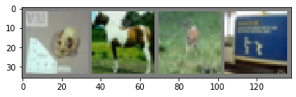
cat horse deer truck
import torch.nn as nn
import torch.nn.functional as F
class Net(nn.Module):
def __init__(self):
super(Net, self).__init__()
self.conv1 = nn.Conv2d(3, 6, 5)
self.pool = nn.MaxPool2d(2, 2)
self.conv2 = nn.Conv2d(6, 16, 5)
self.fc1 = nn.Linear(16 * 5 * 5, 120)
self.fc2 = nn.Linear(120, 84)
self.fc3 = nn.Linear(84, 10)
def forward(self, x):
x = self.pool(F.relu(self.conv1(x)))
x = self.pool(F.relu(self.conv2(x)))
x = x.view(-1, 16 * 5 * 5)
x = F.relu(self.fc1(x))
x = F.relu(self.fc2(x))
x = self.fc3(x)
return x
net = Net()Let’s use a Classification Cross-Entropy loss and SGD with momentum.
import torch.optim as optim
criterion = nn.CrossEntropyLoss()
optimizer = optim.SGD(net.parameters(), lr=0.001, momentum=0.9)This is when things start to get interesting. We simply have to loop over our data iterator, and feed the inputs to the network and optimize.
for epoch in range(2): # loop over the dataset multiple times
running_loss = 0.0
for i, data in enumerate(trainloader, 0):
# get the inputs; data is a list of [inputs, labels]
inputs, labels = data
# zero the parameter gradients
optimizer.zero_grad()
# forward + backward + optimize
outputs = net(inputs)
loss = criterion(outputs, labels)
loss.backward()
optimizer.step()
# print statistics
running_loss += loss.item()
if i % 2000 == 1999: # print every 2000 mini-batches
print('[%d, %5d] loss: %.3f' %
(epoch + 1, i + 1, running_loss / 2000))
running_loss = 0.0
print('Finished Training')[1, 2000] loss: 2.242 [1, 4000] loss: 1.987 [1, 6000] loss: 1.758 [1, 8000] loss: 1.639 [1, 10000] loss: 1.543 [1, 12000] loss: 1.508 [2, 2000] loss: 1.426 [2, 4000] loss: 1.390 [2, 6000] loss: 1.363 [2, 8000] loss: 1.351 [2, 10000] loss: 1.335 [2, 12000] loss: 1.299 Finished Training
We have trained the network for 2 passes over the training dataset. But we need to check if the network has learnt anything at all.
We will check this by predicting the class label that the neural network outputs, and checking it against the ground-truth. If the prediction is correct, we add the sample to the list of correct predictions.
Okay, first step. Let us display an image from the test set to get familiar.
dataiter = iter(testloader)
images, labels = dataiter.next()
# print images
imshow(torchvision.utils.make_grid(images))
print('GroundTruth: ', ' '.join('%5s' % classes[labels[j]] for j in range(4)))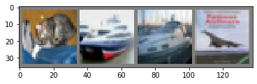
GroundTruth: cat ship ship plane
Okay, now let us see what the neural network thinks these examples above are:
outputs = net(images)The outputs are energies for the 10 classes. The higher the energy for a class, the more the network thinks that the image is of the particular class. So, let’s get the index of the highest energy:
_, predicted = torch.max(outputs, 1)
print('Predicted: ', ' '.join('%5s' % classes[predicted[j]]
for j in range(4)))Predicted: cat ship ship ship
Let us look at how the network performs on the whole dataset.
correct = 0
total = 0
with torch.no_grad():
for data in testloader:
images, labels = data
outputs = net(images)
_, predicted = torch.max(outputs.data, 1)
total += labels.size(0)
correct += (predicted == labels).sum().item()
print('Accuracy of the network on the 10000 test images: %d %%' % (
100 * correct / total))Accuracy of the network on the 10000 test images: 53 %
class_correct = list(0. for i in range(10))
class_total = list(0. for i in range(10))
with torch.no_grad():
for data in testloader:
images, labels = data
outputs = net(images)
_, predicted = torch.max(outputs, 1)
c = (predicted == labels).squeeze()
for i in range(4):
label = labels[i]
class_correct[label] += c[i].item()
class_total[label] += 1
for i in range(10):
print('Accuracy of %5s : %2d %%' % (
classes[i], 100 * class_correct[i] / class_total[i]))Accuracy of plane : 57 % Accuracy of car : 67 % Accuracy of bird : 22 % Accuracy of cat : 46 % Accuracy of deer : 61 % Accuracy of dog : 28 % Accuracy of frog : 53 % Accuracy of horse : 65 % Accuracy of ship : 79 % Accuracy of truck : 53 %
device = torch.device("cuda:0" if torch.cuda.is_available() else "cpu")
# Assuming that we are on a CUDA machine, this should print a CUDA device:
print(device)
net.to(device)
inputs, labels = data[0].to(device), data[1].to(device)machine_learning/SubMD/偏导数和梯度.md
多变量函数指的是具有多个参数的函数，例如：
$$f(x,y)=e^{2y}\sin x$$
f相对于x的偏导数表示如下：
$$\frac{\partial f}{\partial x}$$
多变量函数指的是具有多个参数的函数，例如：
$$\frac{\partial f}{\partial x}$$
您必须使 y 保持固定不变（因此 f 现在是只有一个变量 x 的函数），然后取 f 相对于 x 的常规导数。例如，当 y 固定为 1 时，前面的函数变为：
$$f(x,y)=e^2\sin x$$
这只是一个变量 x 的函数，其导数为：
$$e^2\cos x$$
一般来说，假设 y 保持不变，f 对 x 的偏导数的计算公式如下：
$$\frac{\partial f}{\partial x}(x,y)=e^{2y}\cos x$$
同样，如果我们使 x 保持不变，f 对 y 的偏导数为：
$$\frac{\partial f{\partial x}(x,y)}=2e^{2y}\sin x$$
直观而言，偏导数可以让您了解到，当您略微改动一个变量时，函数会发生多大的变化。在前面的示例中：
$$\frac{\partial f}{\partial x}(0,1)=e^2 \approx 7.4$$
因此，如果您将起点设为 (0,1)，使 y 保持固定不变并将 x 移动一点，f 的变化量将是 x 变化量的 7.4 倍左右。
在机器学习中，偏导数主要与函数的梯度一起使用。
梯度：函数的梯度是偏导数相对于所有自变量的矢量，表示如下：
$$\nabla f$$
例如，如果：
$$f(x,y)=e^{2y}\sin x$$
则：
$$\nabla f(x,y) = (\frac{\partial f}{\partial x}(x,y),\frac{\partial f}{\partial y}(x,y)) = (e^{2y}\cos x,2e^{2y}\sin x)$$
$\nabla f$：指向函数增长速度最快的方向。
$-\nabla f$：指向函数下降速度最快的方向。
该矢量中的维度个数等于 f 公式中的变量个数；换言之，该矢量位于该函数的域空间内。例如，在三维空间中查看下面的函数 f(x,y) 时：
$$f(x,y)=4+(x-2)^2+2y^2$$
z = f(x,y) 就像一个山谷，最低点为 (2,0,4)：
f(x,y) 的梯度是一个二维矢量，可让您了解向哪个 (x,y) 方向移动时高度下降得最快。也就是说，梯度矢量指向山谷。 在机器学习中，梯度用于梯度下降法。我们的损失函数通常具有很多变量，而我们尝试通过跟随函数梯度的负方向来尽量降低损失函数。
machine_learning/The_Concept_of_ML.md
$$y'=b+w1x1$$
其中：
根据特征$x1$**推测**（预测）$y1$，只需代入$x_1$到这个模型即可。
例如，具有三个特征的模型可以采用以下方程式：
$$y'=b+w1x1+w2x2+w3x3$$
$$=(observation-prediction(x))^2 \\ =(y-y')^2$$
$$MSE = \frac{1}{N}\sum_{(x,y)\in D}{(y-prediction(x)^2)}$$
其中：

详情：偏导数和导数
$$totalnumber\;of\;trained\;examples = steps * batch\;size $$
$$number\;of\;training\;examples = \frac{steps * batch\;size}{periods}$$
os/Linux/Advanced Linux.md
Regular expressions are used by several different Unix commands, including ed, sed, awk, grep, and to a more limited extent, vi.
Here SED stands for stream editor.
cat /etc/passwd | sed
/pattern/action
Here, pattern is a regular expression, and action is one of the commands given in the following table. If pattern is omitted, action is performed for every line as we have seen above.
| Sr.No. | Range&Description |
|---|---|
| 1 | p Prints the line |
| 2 | d Deletes the line |
| 3 | s/pattern1/pattern2/ Substitutes the first occurrence of pattern1 with pattern2 |
cat /etc/passwd | sed 'd'
or
sed -e 'd' /etc/passwd
cat /etc/passwd | sed '1d' |more
Notice that the number 1 is added before the delete edit command. This instructs the sed to perform the editing command on the first line of the file. In this example, the sed will delete the first line of /etc/password and print the rest of the file.
cat /etc/passwd | sed '1, 5d' |more
he above command will be applied on all the lines starting from 1 through 5. This deletes the first five lines.
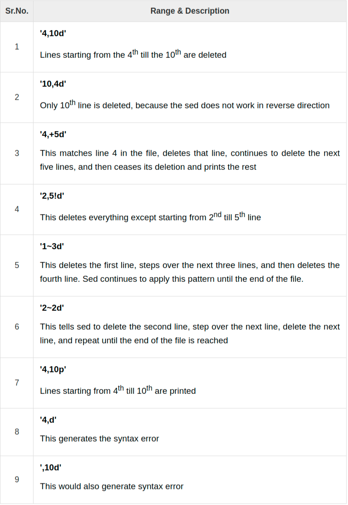
While using the p action, you should use the -n option to avoid repetition of line printing. Check the difference in between the following two commands −
cat /etc/passwd | sed -n '1,3p'
The substitution command, denoted by s, will substitute any string that you specify with any other string that you specify.
The following command substitutes the first occurrence on a line of the string root with the string amrood.
cat /etc/passwd | sed 's/root/dx'
Using the letter g to perform a global substitution.
cat /etc/passwd | sed 's/root/dx/g'
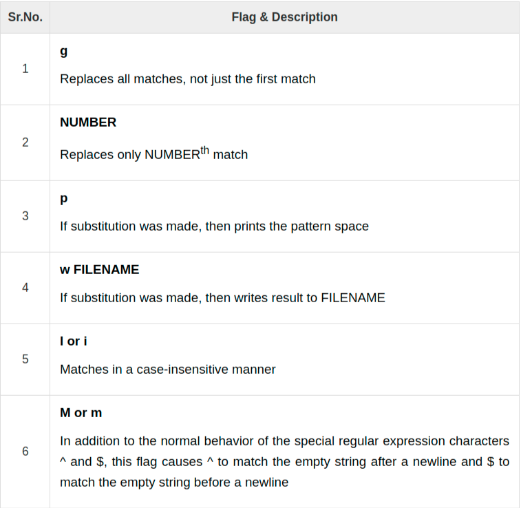
Suppose you have to do a substitution on a string that includes the forward slash character. In this case, you can specify a different separator by providing the designated character after the s.
cat /etc/passwd | sed 's:/root:/amrood:g'
we have used : as the delimiter instead of slash /.
cat /etc/passwd | sed 's/root//g'
If you want to substitute the string sh with the string quiet only on line 10, you can specify it as follows −
cat /etc/passwd | sed '10s/sh/quiet/g'
cat /etc/passwd | sed '1,5s/sh/quiet/g'
You would use the p option along with the -n option to print all the matching lines as follows −
cat testing | sed -n '/root/p'
Check the following example which matches all the lines starting with daemon and then deletes them −
cat testing | sed '/^daemon/d'
Following is the example which deletes all the lines ending with sh −
cat testing | sed '/sh$/d'
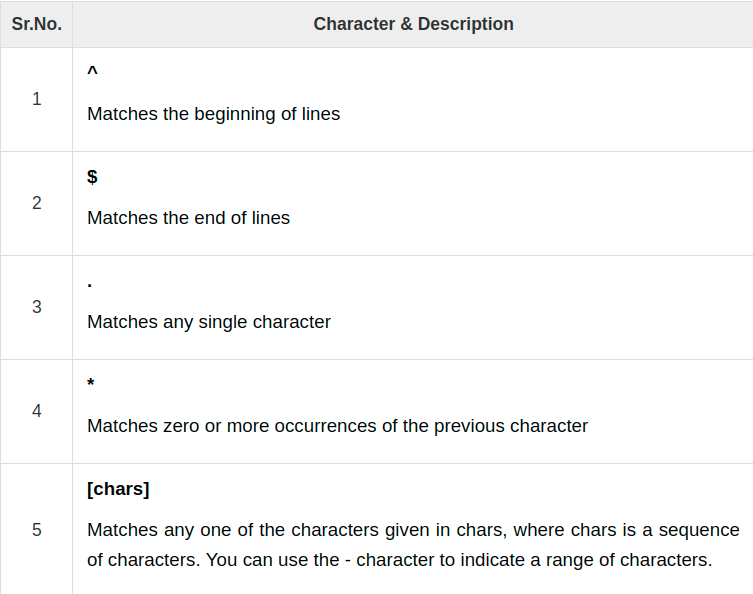
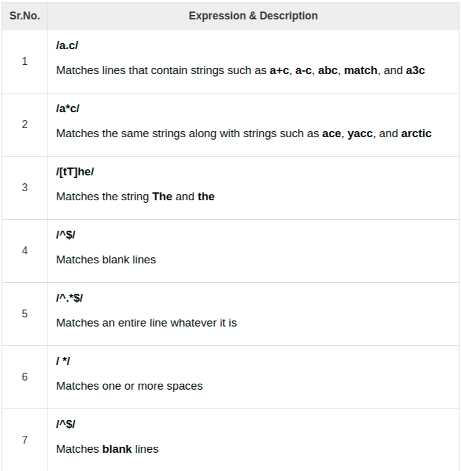
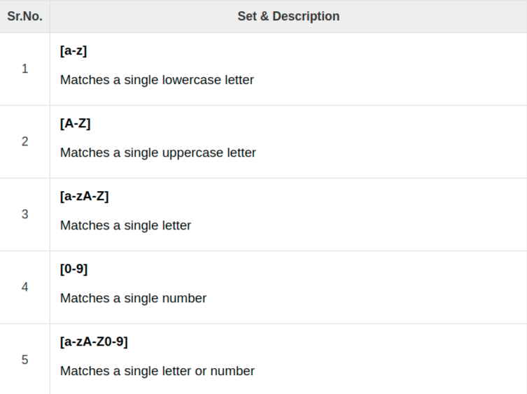
Some special keywords are commonly available to regexps, especially GNU utilities that employ regexps. These are very useful for sed regular expressions as they simplify things and enhance readability.
cat /etc/syslog.conf | sed -n '/^[[:alpha:]]/p'
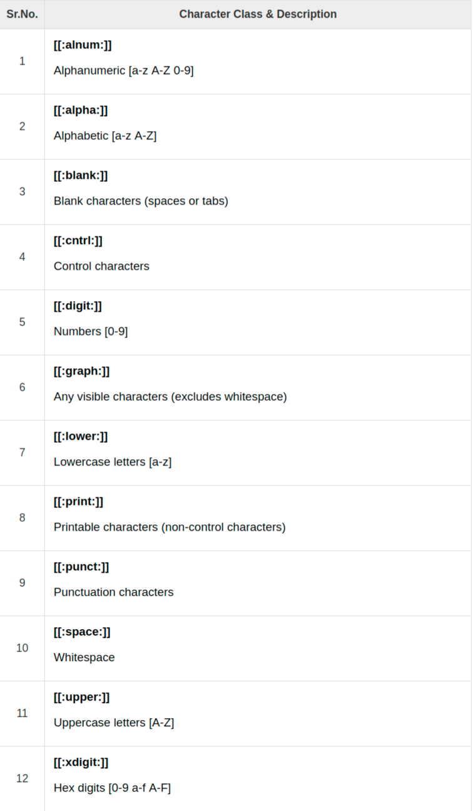
sed -e 's/^[[:digit:]][[:digit:]][[:digit:]]/(&)/g' phone.txt
sed -e 'command1' -e 'command2' ... -e 'commandN' files
ed -e 's/^[[:digit:]]\{3\}/(&)/g' \
-e 's/)[[:digit:]]\{3\}/&-/g' phone.txtcat phone.txt | sed 's/\(.*)\)\(.*-\)\(.*$\)/Area \
code: \1 Second: \2 Third: \3/' Unix uses a hierarchical file system structure, much like an upside-down tree, with root (/) at the base of the file system and all other directories spreading from there.
A Unix filesystem is a collection of files and directories that has the following properties −
which it resides, and a unique identifier, typically called an inode.
directory has an inode number of 3. Inode numbers 0 and 1 are not used. File inode numbers can be seen by specifying the -i option to ls command.
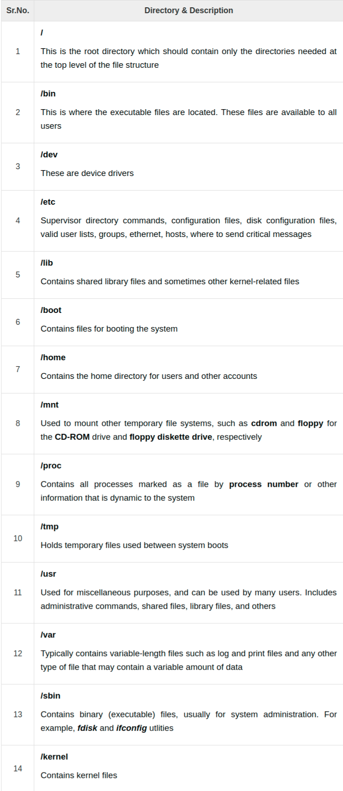
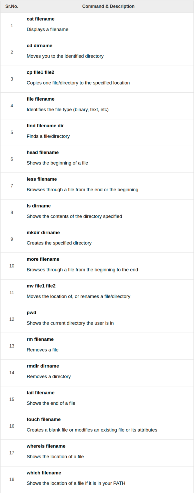
The first way to manage your partition space is with the df (disk free) command. The command df -k (disk free) displays the disk space usage in kilobytes, as shown below −
df -k
You can use the -h (human readable) option to display the output in a format that shows the size in easier-to-understand notation.
The du (disk usage) command enables you to specify directories to show disk space usage on a particular directory.
du -h /etc
A file system must be mounted in order to be usable by the system. To see what is currently mounted (available for use) on your system, use the following command.
mount
mount -t file_system_type device_to_mount directory_to_mount_to
Ex: mount -t iso9660 /dev/cdrom /mnt/cdrom
umount /dev/cdrom
The user and group quotas provide the mechanisms by which the amount of space used by a single user or all users within a specific group can be limited to a value defined by the administrator.
os/Linux/shell.md
A shell script is a computer program designed to be run by the Unix/Linux shell which could be one of the following:
A shell is a command-line interpreter and typical operations performed by shell scripts include file manipulation, program execution, and printing text.
#!/bin/bash
# Author : Zara Ali
# Script follows here:
pwd
lsSave the content and make the script executable
chmod +x test.shThe name of a variable can contain only letters(a to or A to Z),numbers(0 to 9) or underscore character(_)
# vaild Variables
_ALT
TOKEN_A
VAR_1
VAR_2
# invaild Variables
2_VAR
-VARIABLE
VAR1-VAR2
VAR_A!variable_name=variable_value
For examples:
NAME="Dongxian Gu"
#!/bin/sh
NAME="Dongxian Gu"
echo $NAME#!/bin/sh
NAME="Dongxian Gu"
readonly NAME
NAME="Gu"The above script will generate the following result.
/bin/sh: NAME: This variable is read only
Unsetting or deleting a variable directs the shell to remove the variable from the list of variables that it tracks.
unset variable_name
NAME="Dongxian Gu"
unset NAME
echo $NAMEWhen a shell is running,three main type of variables are present:
| Sr.No. | Variable & Description |
|---|---|
| 1 | \$0 The filename of the current script. |
| 2 | \$n These variables correspond to the arguments with which a script was invoked. Here n is a positive decimal number corresponding to the position of an argument (the first argument is \$1, the second argument is \$2, and so on). |
| 3 | \$# The number of arguments supplied to a script. |
| 4 | \$ All the arguments are double quoted. If a script receives two arguments, \$ is equivalent to \$1 \$2. |
| 5 | \$@ All the arguments are individually double quoted. If a script receives two arguments, \$@ is equivalent to \$1 \$2. |
| 6 | \$? The exit status of the last command executed. |
| 7 | \$\$ The process number of the current shell. For shell scripts, this is the process ID under which they are executing. |
| 8 | \$! The process number of the last background command. |
#!/bin/sh
echo "File Name: $0"
echo "First Parameter : $1"
echo "Second Parameter : $2"
echo "Quoted Values: $@"
echo "Quoted Values: $*"
echo "Total Number of Parameters : $#"\$* and \$@ both will act the same unless they are enclosed in double quotes, "".
#!/bin/sh
for TOKEN in $*
do
echo $TOKEN
done$./test.sh Zara Ali
File Name : ./test.sh
First Parameter : Zara
Second Parameter : Ali
Quoted Values: Zara Ali
Quoted Values: Zara Ali
Total Number of Parameters : 2
$echo $?
0
$array_name[index]=value
NAME[0]="Zara"
NAME[1]="Qadir"
NAME[2]="Mahnaz"
NAME[3]="Ayan"
NAME[4]="Daisy"If you are using the ksh shell, here is the syntax of array initialization −
set -A array_name value1 value2 ... valuen
If you are using the bash shell, here is the syntax of array initialization −
array_name=(value1 ... valuen)
${array_name[index]}
#!/bin/sh
NAME[0]="Zara"
NAME[1]="Qadir"
NAME[2]="Mahnaz"
NAME[3]="Ayan"
NAME[4]="Daisy"
echo "First Index: ${NAME[0]}"
echo "Second Index: ${NAME[1]}"You can access all the items in an array in one of the following ways −
${array_name[*]}
${array_name[@]}the following operators:
Bourne shell didn't originally have any mechanism to perform simple arithmetic operations but it uses external programs, either awk or expr**.
#!/bin/sh
val=`expr 2 + 2`
echo "Total value : $val"The following points need to be considered while adding −
correct; it should be written as 2 + 2.
Assume variable a holds 10 and variable b holds 20 then −
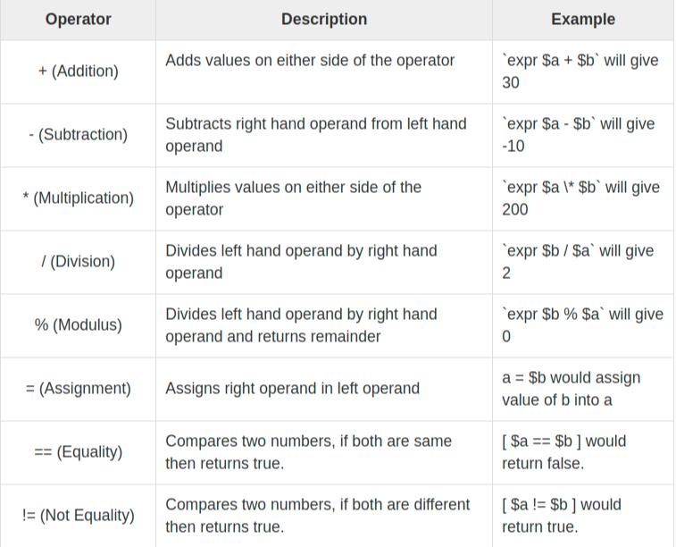
It is very important to understand that all the conditional expressions should be inside square braces with spaces around them, for example [ \$a == \$b ] is correct whereas, [\$a==\$b] is incorrect.
Assume variable a holds 10 and variable b holds 20 then −
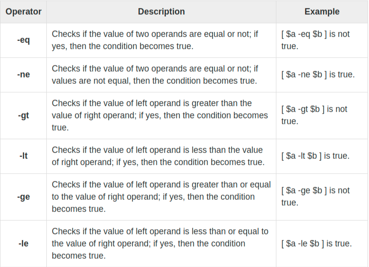
It is very important to understand that all the conditional expressions should be placed inside square braces with spaces around them. For example, [ \$a <= \$b ] is correct whereas, [\$a <= \$b] is incorrect.
Assume variable a holds 10 and variable b holds 20 then −
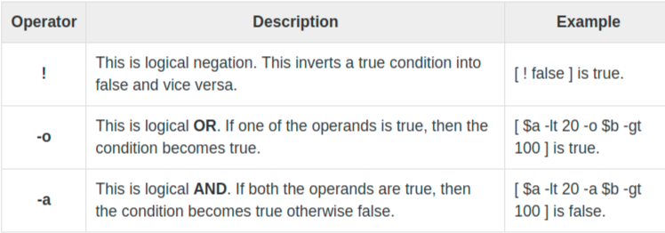
Assume variable a holds "abc" and variable b holds "efg" then −
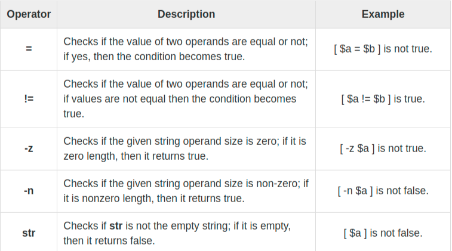
Assume a variable file holds an existing file name "test" the size of which is 100 bytes and has read, write and execute permission on −
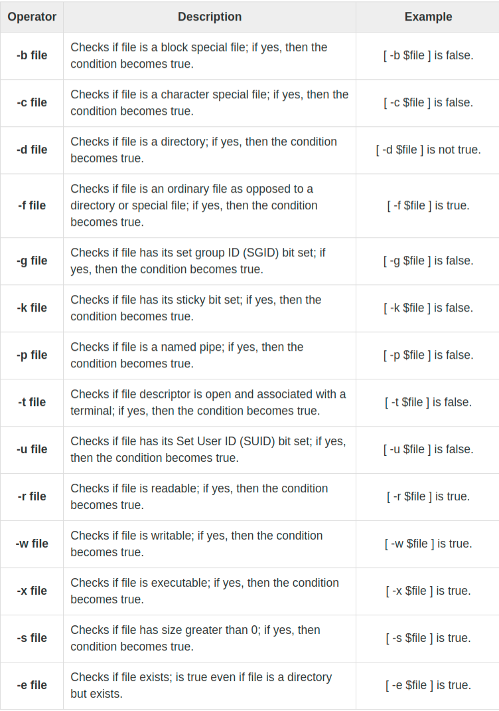
Unix Shell supports following forms of if...else statements.
if [ expression 1 ]
then
Statement(s) to be executed if expression 1 is true
elif [ expression 2 ]
then
Statement(s) to be executed if expression 2 is true
elif [ expression 3 ]
then
Statement(s) to be executed if expression 3 is true
else
Statement(s) to be executed if no expression is true
fiThere is only one form of case...esac statement which has been described in detail here −
case word in
pattern1)
Statement(s) to be executed if pattern1 matches
;;
pattern2)
Statement(s) to be executed if pattern2 matches
;;
pattern3)
Statement(s) to be executed if pattern3 matches
;;
*)
Default condition to be executed
;;
esacfour types of loops as follow:
while command
do
Statement(s) to be executed if command is true
donefor var in word1 word2 ... wordN
do
Statement(s) to be executed for every word.
doneuntil command
do
Statement(s) to be executed until command is true
doneselect var in word1 word2 ... wordN
do
Statement(s) to be executed for every word.
donewhile command1 ; # this is loop1, the outer loop
do
Statement(s) to be executed if command1 is true
while command2 ; # this is loop2, the inner loop
do
Statement(s) to be executed if command2 is true
done
Statement(s) to be executed if command1 is true
done#!/bin/sh
a=10
until [ $a -lt 10 ]
do
echo $a
a=`expr $a + 1`
donebreak
The break command can also be used to exit from a nested loop using this format −
break n
Here n specifies the n^{th} enclosing loop to the exit from.
continue
Like with the break statement, an integer argument can be given to the continue command to skip commands from nested loops.
continue n
Here n specifies the n^th enclosing loop to continue from.
The shell performs substitution when it encounters an expression that contains one or more special characters.
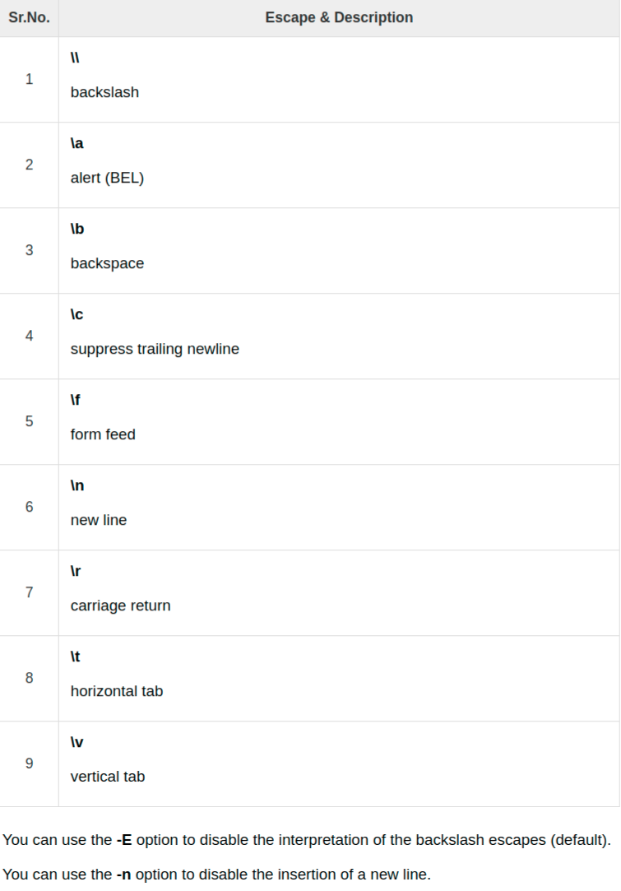
`command`
When performing the command substitution make sure that you use the backquote, not the single quote character.
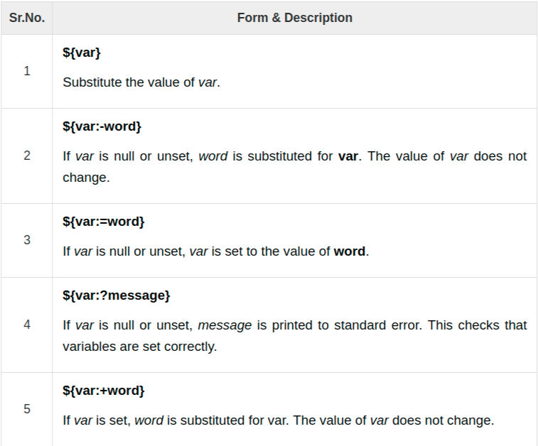
Unix Shell provides various metacharacters which have special meaning while using them in any Shell Script and causes termination of a word unless quoted.
For example, ? matches with a single character while listing files in a directory and an * matches more than one character. Here is a list of most of the shell special characters (also called metacharacters) −
* ? [ ] ' " \ $ ; & ( ) | ^ < > new-line space tab
A character may be quoted (i.e., made to stand for itself) by preceding it with a \\.
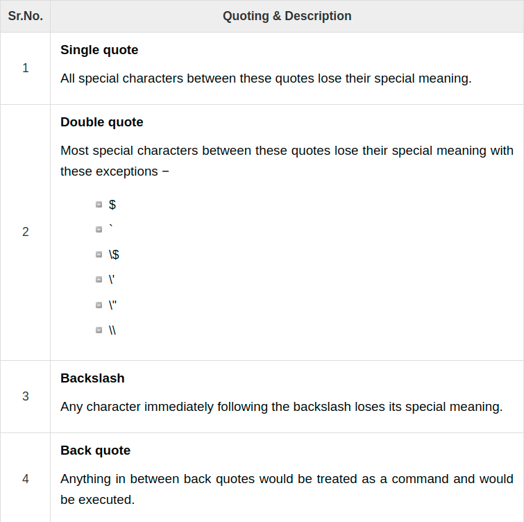
There is an easy way to quote a large group of characters. Put a single quote (') at the beginning and at the end of the string −
echo '<-$1500.**>; (update?) [y|n]'
VAR=ZARA
echo '$VAR owes <-$1500.**>; [ as of (`date +%m/%d`) ]'var=command``
DATE=`date`
echo "Current Date: $DATE"A command normally reads its input from the standard input, which happens to be your terminal by default. Similarly, a command normally writes its output to standard output, which is again your terminal by default.
who > users
cat users
echo line 1 > users
cat users
echo line 2 >> users
cat userswc -l users
wc -l < userscommand << delimiter
document
delimiterwc -l << EOF
This is a simple lookup program
for good (and bad) restaurants
in Cape Town.
EOF#!/bin/sh
filename=test.txt
vi $filename <<EndOfCommands
i
This file was created automatically from
a shell script
^[
ZZ
EndOfCommandsSometimes you will need to execute a command, but you don't want the output displayed on the screen. In such cases, you can discard the output by redirecting it to the file /dev/null −
command > /dev/null
To discard both output of a command and its error output, use standard redirection to redirect STDERR to STDOUT −
command > /dev/null 2>&1
Here 2 represents STDERR and 1 represents STDOUT. You can display a message on to STDERR by redirecting STDOUT into STDERR as follows −
echo message 1>&2
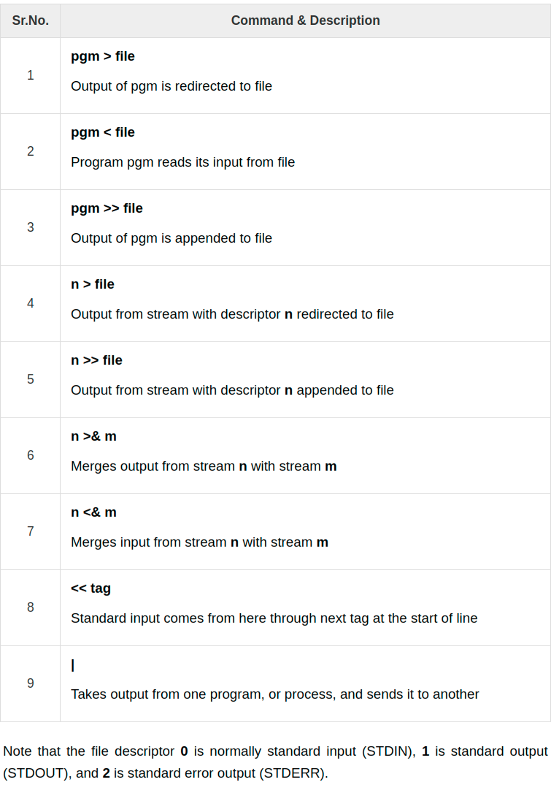
Using functions to perform repetitive tasks is an excellent way to create code reuse. This is an important part of modern object-oriented programming principles.
Shell functions are similar to subroutines, procedures, and functions in other programming languages.
function_name () {
list of command
}You can define a function that will accept parameters while calling the function. These parameters would be represented by $1, $2 and so on.
#!/bin/sh
# Define your function here
Hello () {
echo "Hello World $1 $2"
}
# Invoke your function
Hello Dongxian Gureturn code
Capture value returned by last command
ret=$?
One of the more interesting features of functions is that they can call themselves and also other functions. A function that calls itself is known as a recursive function.
You can put definitions for commonly used functions inside your .profile. These definitions will be available whenever you log in and you can use them at the command prompt.
To remove the definition of a function from the shell, use the unset command with the .f option. This command is also used to remove the definition of a variable to the shell.
unset -f function_name
man command
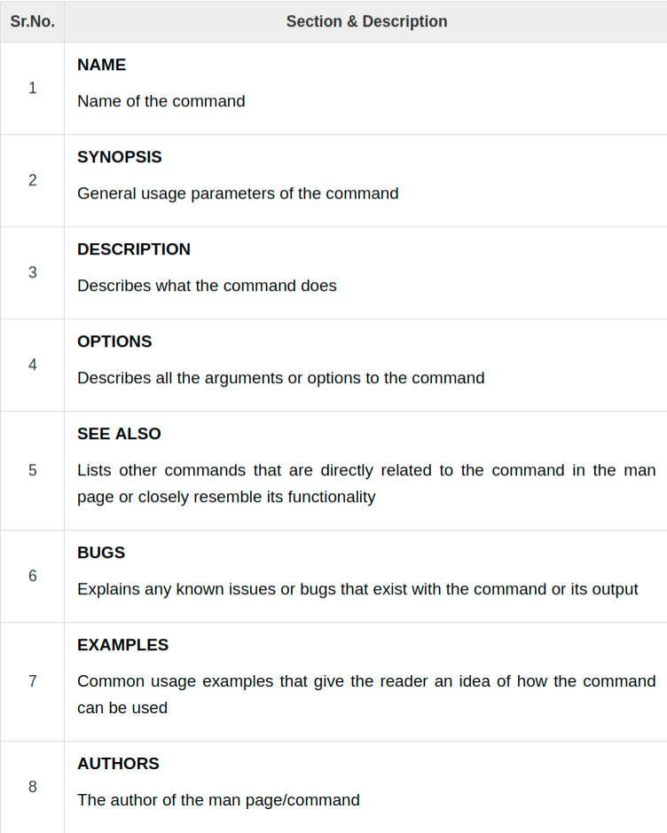

os/Operating_System.md
[TOC]
<!-- @import "[TOC]" {cmd="toc" depthFrom=1 depthTo=6 orderedList=true} -->
<!-- codechunkoutput -->
<!-- /codechunkoutput -->
在计算机系统上配置操作系统，其主要目标：方便性、有效性、可扩充性和开放性。
操作系统的作用：
脱机$I/O$技术：事先将装有用户程序和数据的纸带装入纸带输入机，在外围机的控制下，把纸带上的数据输入到磁带上。
缺点：系统资源得不到充分利用。
在系统中，用户提交的作业先存放在外存上，并排成一个队列，成为“后备队列”。然后由作业调度按照一定的算法，从后备队列中选择若干个作业调入内存，使它们共享CPU和系统的各种资源。
实时：表示”及时“
实时计算：系统的正确性，不仅由计算机的逻辑结果来确定，而且还取决于产生结果的实践。
实时系统的类型：
实时任务的类型：
实时系统和分时系统特征的比较：
配置在微型机上的操作系统被称为微机操作系统
$UnixOS;Solaris OS;Linux OS$
设备管理的主要任务为完成用户进程提出的$I/O$请求，完成$I/O$操作；提高CPU和$I/O$设备的利用率，提高$I/O$速度，方便用户使用$I/O$设备
优点：
三部分组成： 客户机、服务器和网络系统
前趋图：描述程序执行先后顺序。是一个有向无循环图$(DAG(Direct\;Acyclic\;Graph))$
通常一个程序由若干个个程序段组成，每个程序段完成特定的功能，它们在执行时，都需要按照某种先后次序顺序执行，当前一段程序执行完后，才运行后一程序段。
程序顺序执行的特征：
程序并发执行的特征：
$PCB: Process\;Control\;Block$进程控制块，系统利用进程控制块来描述进程的基本情况和活动进程，从而控制和管理进程。
程序段、相关的数据段和PCB三部分构成了进程实体（进程映像）。
进程的定义：
进程的特征：
进程的基本状态：就绪状态、执行状态以及阻塞状态。
三种状态(以及两种常见状态)的转换： 
挂起操作和进程状态的转换
挂起操作：当该操作作用于某个进程时，该进程被挂起，意味着此时该进程处于静止状态。如果进程正在执行，它将暂停执行，若原本处于就绪状态，则该进程此时暂不接受调度。和挂起操作对应的操作是激活操作。
引入挂起操作的原因：
在引入挂起原语$Suspend$和激活原语$Active$后，进程将可能发生一下几种状态的转化：
在计算机系统中，对于每个资源和每个进程都设置了一个数据结构，用于表征其实体，称之为资源信息表或进程信息表，其中包含了资源或进程的标识、描述、状态等信息以及一批指针。
OS管理的这些数据结构一般分为四类：内存表、设备表、文件表和进程表，进程表又被称为进程控制块PCB。
PCB的作用：
进程控制块中的信息主要包括四个方面
用于唯一的标志一个进程。通常有两种标识符
也称为处理机的上下文，主要是由处理机的各种寄存器的内容组成。
进程控制块的组织方式：
在系统中会有多个PCB,为了有效的管理，应该用适当的方式组织这些PCB
进程控制是进程管理的基本功能，主要包括创建新进程、终止已完成的进程、将因发生异常情况而无法继续运行的进程置于阻塞状态，负责进程运行中的状态转换等功能。
进程控制一般由OS的内核中的原语来实现。
OS内核：通常将一些与硬件紧密关联的模块（如中断控制程序）、各种常用设备的驱动程序以及运行频率较高的模块（如时钟管理、进程调度和许多模块所公用的一些基本操作），都安排在紧靠硬件的软件层次，将它们常驻内存，即通常被称为的OS内核。这样安排的目的在于：
同时为了防止OS本身及关键数据遭受应用程序有意无意的破坏，通常也将处理机的执行状态分为系统态和用户态两种：
一般情况下，应用程序只能在用户态下运行，不能执行OS指令及访问OS区域。
OS内核的功能：
该功能是为了提供给OS其他众多模块所需要的一些基本功能，以便支撑这些模块工作。其中三种最基本的支撑功能是：中断处理、时钟管理和原语操作。
进程的层次结构：在OS中，允许一个进程创建另一个进程，通常把创建进程的进程称为父进程。
引起创建进程的典型事件：
进程创建的过程：
引起进程终止的事件：
常见的异常事件：越界错；保护错；非法指令；特权指令错；运行超时；等待超时；算术运算错；I/O故障
进程的终止过程：
系统中发生了要求终止进程的事件，OS调用进程终止原语
引起进程阻塞和唤醒的事件：
进程阻塞过程：发生了上述的事件后，进程通过调用阻塞原语block将自己阻塞。阻塞是进程自身的一种主动行为。如果进程还处于执行状态，应先立即停止执行，把进程控制块中的现行状态由执行改为阻塞，并将PCB插入到阻塞队伍。
进程唤醒过程：当阻塞进程所期待的事件发生，则由有关进程调用唤醒原语wakeup，将等待该事件的进程唤醒。
进程的挂起：当系统中出现了引起进程挂起的事件时，OS利用挂起原语suspend将制定进程或处于阻塞状态的进程挂起。
进程的激活：当系统中发生激活进程的事件时，OS将利用激活原语active，将指定进程激活。
单处理机系统中的进程同步机制：硬件同步机制、信号量机制、管程机制等。
进程同步机制的主要任务：是对多个相关进程在执行次序上进行协调，使得并发执行的主进程之间能按照一定的规则共享系统资源，并能很好地相互合作，从而使程序的执行具有可再现性。
在多道程序环境下，处于同一个系统中的多个进程，由于它们共享系统中的资源或为完成某一任务而相互合作，它们之间可能存在着以下两种形式的制约关系：
多个程序并发执行，由于共享系统资源，如CPU、$I/O$设备等，致使在这些并发执行的程序之间形成相互制约的关系。
某些应用程序，为了完成某个任务而建立了两个或多个进程。
临界资源：许多硬件资源如打印机、磁带机等都属于临界资源，诸进程间应采取互斥方式，实现对这种资源的共享。
临界区：人们把在每个进程中访问临界资源的那段代码称为临界区。
一个访问临界资源的循环进程描述如下：
while(True)
{
进入区//检查是否能够访问临界资源
临界区
退出区//将临界区正被访问的标志恢复为为被访问的标志
剩余区
}同步机制应该遵循的规则：
关中断是实现互斥的最简单的方法之一。在进入锁测试之前关闭中断，指导完成锁测试并上锁之后才能打开中断。这样，进程在临界区执行期间，计算机系统不响应中断，从而不会引发调度，也就不会发生进程或线程切换。
缺点：
借助一条硬件指令--“测试并建立”指令TS以实现互斥的方法。
TS的一般描述如下
boolean TS(boolean *lock)
{
boolean old;
old = *lock;
*lock = TRUE;
return old;
}这条指令可以当作一个函数过程，其执行过程是不可分割的，即是一条原语。当*lock=FALSE，表示该资源空闲；当\*locak=TRUE，表示资源正在被使用。
该指令成为对换指令，在Intel 80x86 中又称XCHG指令，用于交换两个字的内容。
处理过程如下：
void swap(boolean *a,boolean *b)
{
boolean temp;
temp = *a;
*b = *a;
*b = temp;
}用对换指令可以简单有效的实现互斥，方法是为每个临界资源设置一个全局的布尔变量lock，其初值为false，在每个进程中再利用一个局部布尔变量key。利用swap指令实现进程互斥的循环过程如下：
do{
key = TRUE;
do{
swap(&lock,&key)
}while(key!=FALSE);
临界区操作；
lock = FALSE;
...
}while(TRUE);1965 年，荷兰学着$Dijkstra$提出的信号量机制是一种卓有成效的进程同步工具。现在信号量机制被广泛地应用于单处理机和多处理机系统以及计算机网络中。
$Dijkstra$把整型信号量定义为一个用于表示资源数目的整型量S,它和一般整型量不同，除初始化操作外，仅能通过两个标准的原子才做$wait(S)$和$signal(S)$来访问。很长时间，这两个操作被分别成为P、V操作。
wait和signal操作可描述如下：
wait(S){
while(S<=0);
S--;
}
signal(S){
S++;
}在整型信号量机制中的$wait$操作，只要信号量$S<=0$，就会不断的测试。没有遵循“让权等待”的准则，而是使进程处于“忙等”的状态，而记录型信号量机制不存在“忙等”现象的进程同步机制。
除了一个代表资源数目的整型变量value，还增加一个进程链表指针list，用于链接访问同一临界资源所有等待进程。
上述两个数据项可描述如下：
typedef struct{
int value;
struct process_control_block *list;
}semaphore;相应的$wait(S)$和$signal(S)$可描述如下：
wait(semaphore *s){
S->value--;
if(S->value < 0) block(S->list);//信号量小于0，则阻塞。
}
signal(semaphore *s){
S->value++;
if(S->value <=0) wakeup(S->list)//信号量小于等于0，唤醒一个进程
}上面的所述的进程问题针对的是多个并发进程共享一个临界资源的情况。但有些场合，是一个进程往往需要获得两个或更多的共享资源后才能执行其任务。
AND同步机制的思想：将进程在整个运行过程中需要的所有资源，一次性全部地分配给进程，待进程使用完后再一次释放。只要尚有一个资源未能分配给进程，其他所有有可能为之分配的资源也不分配给它。亦即，多若干个临界资源的分配采用原子操作方式：要么把它所请求的资源全部分配到进程，要么一个不分配。
Swait(S1,S2,...,Sn)
{
while(TRUE)
{
if(S1>=1 && ... && Sn>=1){
for(i=1;i<=n;i++) Si--;
break;
}
else
{
place the process in the waiting queue associated with the
first Si found with Si<1,and set the program count of this
process to the beginning of Swait operation
}
}
}
Ssignal(S1,S2,...,Sn)
{
while(TRUE)
{
for(i=1;i<=n;i++){
Si++;
Remove all the process waiting in the queue associated with
Si into the ready queue.
}
}
}前面的$wait(S)$和$signal(S)$操作仅能对信号量施以加1减1操作，意味着每次只能对某类临界资源进行一个单位的申请和释放。此外，在有些情况下，为确保系统的安全性，当所申请的资源数量低于某一下限值时，还必须进行管制，不予以分配。
基于上述两点，可以对AND信号量机制加以扩充，对进程所申请的所有资源以及每类资源不同的资源需求量，在一次$PV$原语操作中完成申请和释放。 进程对信号量$Si$的测试值不再是1，而是资源分配的下限值$ti$,即要求$Si\ge ti$,否者不予分配。一旦允许分配，进程对该资源的需求之为$di$,即表示资源占用量，进行$Si=Si-di$操作，而不是简单的$Si=Si-1$。由此形成一般化的“信号量集”机制。
虽然信号量机制是一种既方便、又有效的进程同步机制，但要每个访问临界资源的进程都必须自备同步操作$wait(S)$和$signal(S)$。这就使大量的同步操作分散在各个进程中。这样不仅给系统带来了麻烦，还会因同步操作的使用不当而导致系统死锁。这样就产生了新的进程同步工具--管程$(Monitors)$
管程：代表共享资源的数据结构以及由对该共享数据结构实施操作的一组过程所组成的资源管理程序共同构成了一个操作系统的资源管理模块，我们称之为管程。
管程被请求和释放资源的进程所调用。
$Hansan$为管程所下的定义是：“一个管程定义了一个数据结构和能为并发进程所执行的一组操作，这组操作能同步进程和改变管程中的数据”
管程由四部分组成：
管程的语法描述如下：
Monitor monitor_name{ /*管程名*/
share variable declarations;/*共享变量说明*/
cond declarations; /*条件变量说明*/
public: /*能够被进程调用的过程*/
void P1(...) /*对数据结构操作的过程*/
{...}
void P2(...)
{...}
...
void (...)
{...}
...
{ /*管程主体*/
initialization code;/*初始化代码*/
...
}
}管程是一种程序设计语言的结构成分，从语言的角度看，管程具有一下特性：
管程和进程的不同：
在利用管程实现进程同步时，需要设置同步工具，如两个同步操作原语wait和signal。当某进程通过管程获取临界资源而未能满足时，管程便调用wait原语使该进程等待，并将其排在等待队列上，仅当另一进程访问完成并释放该资源之后，管程才又调用signal原语。唤醒等待队列中的队首进程。
除了同步工具是不够的，考虑一种情况，当一个进程调用了管程，在官陈中被挂起或被阻塞，直到阻塞或挂起的原因解除，而在此期间，如果该进程不释放管程，则其他进程就无法进入管程，被迫长时间等待。为了解决这个问题，引入条件变量$condition$。
进程通信是指进程之间的信息交换。
进程通信的类型，高级通信机制可归结为四大类：共享存储器系统、管道通信系统、消息传递系统以及客户机-服务器系统。
在共享存储器系统中，相互通信的进程共享某些数据结构或共享存储区，进程之间能够通过这些空间进行通信。分为一下两个类型：
所谓“管道”，是指用于连接一个读进程和一个写进程以实现它们之间通信的一个共享文件，又名$pipe$文件。向管道（共享文件）提供输入的发送进程（即写进程）以字符流形式将大量的数据送入管道；而接受管道输出的接受进程（即读进程）则从管道中接受数据。由于发送进程和接受进程是利用管道进行通信的，故又称为管道通信。
为了协调双方的通信，管道机制必须提供三方面协调能力：
在该机制中，进程不必借助任何共享存储区或数据结构，而是以格式化的消息$(message)$为单位，将通信的数据封装在消息中，并利用操作系统提供的一组通信命令（原语），在进程间进行消息传递，完成进程间的数据交换。当前应用最广泛的一类进程间通信机制。例如：在计算机网络中，消息又称报文；在微内核操作系统中，微内核和服务器之间的通信无一例外是采用了消息传递机制；由于该机制能很好的支持多处理机系统、分布式系统和计算机网络，因而成为这些领域最主要的通信工具。
基于消息传递系统的通信方式属于高级通信方式，因其实现方式不同，可进一步分为两类：
前面的技术，虽然也应用于不同计算机间进程的双向通信，但客户机-服务器系统的通信机制，在网络环境的各种应用领域已经成为当前主流的通信实现机制，其主要的实现方法包括三类：套接字、远程过程调用$(RPC)$和远程方法调用。
套接字起源于20世纪70年代加州大学伯克利分校版本的$UNIX$(即$BSD Unix$)，是$UNIX操作系$统下的网络通信接口。
一个套接字就是一个通信标识类型的数据结构，包括：
套接字是为客户/服务器模型而设计的，通常，套接字包括两类：
通信进程都运行在同一台机器的环境中，套接字是基于本地文件系统支持的，一个套接字关联到一个特殊的文件，通信双方通过这个文件的读写实现通信。
该类型通常采用非对称方式的通信，即发送者需要提供接受者的命名。
远程过程（函数）调用$(Remote\;Procedure\;Call)$是一个通信协议，用于通过网络连接的系统。该协议允许运行于一台主机（本地）系统上的进程调用另一台主义（远程）系统上的进程。如果设计面向对象编程，那么远程过程调用亦可称为远程方法调用。
负责处理远程过程调用的进程有两个：一是本地客户进程，另一个是远程服务器进程，者两个进程通常也被称为网络守护进程，主要负责在网络间的消息传递，一般情况下，这两个进程都是处于阻塞状态，等待消息。
为了使远程过程调用看上去和本地过程调用一样，即希望实现$RPC$的透明性，使得调用者感觉不到此次调用的过程是在其他主机（远程）上执行的，$RPC$引入一个存根$(stub)$的概念： 在本地客户端，每个能够独立运行的远程过程都拥有一个客户存根$(client\;stubbord)$，本地进程调用远程过程实际是调用该过程相关联的存根；与此类似，在每个远程进程所在的服务器端，其所对应的实际可执行进程也存在一个服务器存根$(stub)$与其关联。本地客户存根和对应的远程服务器存根一般也是处于阻塞状态，等待消息。
远程过程调用的主要步骤：
上述过程的主要作用在于：将客户过程的本地调用转化为客户存根，再转化为服务器过程的本地调用，对于客户与服务器来说，它们的中间步骤是不可见的。
采用直接通信方式，即发送进程利用$OS$所提供的发送指令（原语）直接把消息发送给目标进程
send(receiver,messsage)；发送一个消息给接受进程
receiver(sender,message)；接受Sender发来的消息 send(P,message);发送消息给进程P
receive(id,message);接受来自任何进程的消息，id变量可设置为进行通信的进程的id或名字信箱通信属于间接通信方式，即进程之间的通信，需要通过某种中间实体来完成。
信箱定义为一种数据结构。在逻辑上，可以分为两个部分
在邮箱通信时，发送进程和接受进程存在以下四种关系：
消息缓冲队列通信机制首先由美国的Hansan提出，并在RC4000系统上实现，后来被广泛应用于本地进程之间的通信中。在这种通信机制中，发送进程利用Send原语将消息直接发送给接受进程；接受进程则利用Receive原语接受消息
typedef struct message_buffer{
int sender;发送者进程标识符
int size;消息长度
char *text;消息正文
struct message_buffer *next;指向下一个消息缓冲区的指针
}在进程的PCB中增加消息队列首指针，用于对消息队列操作，以及用于实现同步的互斥信号量mutex和资源信号量sm。
typedef struct processcontrol_block{
...
struct message_buffer *mq;消息队列指针
semaphore mutex;消息队列互斥信号量
semaphote sm;消息队列资源信号量
}PCB；发送原语描述如下：
void send(receiver,a){receiver为接受进程标识符，a为发送区首地址
getbuf(a.size,i); 根据a.size申请缓冲区
i.sender = a.sender;
i.size = a.size;
copy(i.text,a.text); 将发送区a中的消息复制到消息缓冲区i中；
i.next = 0;
getid(PCBset,receiver.j); 获得接受进程内部的标识符
wait(j.mutex);
insert(&j.mq,i); 将消息缓冲区插入消息队列
signal(j.mutex);
signal(j.sm);
}接受原语描述如下：
void receive(b){
j = internal name; j为接受进程内部的标识符；
wait(j.sm);
wait(j.mutex);
remove(j.mq,i) 将消息队列中的第一个消息移出；
signal(j.mutex);
b.sender = i.size;
copy(b.text,i.text); 将消息缓冲区i中的消息复制到接受区b；
releasebuf(i); 释放消息缓冲区；
}在OS中引入进程的目的是为了使多个进程并发执行，以提高资源利用率和系统吞吐量。
在操作系统中引入线程，则是为了减少程序在并发执行时所付出的时空开销，使OS具有更好的并发性。
为了使程序能够并发执行，系统必须进行以下一系列操作：
为了分开进程的两个属性分开，由OS分开处理，亦即不把作为调度和分派的基本单位也同时作为拥有资源的单位，以做到轻装上阵；而对于拥有资源的基本单位，又不对之施以频繁的切换，正是这种思想的指导下，形成了线程的概念。
在OS中引入线程，以线程作为调度和分派的基本单位，则可以有效地改善多处理机系统的性能。
由于线程具有许多传统进程所具有的特征，所以又称之为轻型进程$(Light-Weight-Process)$或进程元，相应的，传统进程称为重型进程$(Heavy-Weight-Process)$。
在引入线程的OS中，不仅进程之间可以并发执行，而且在一个进程中的多个线程之间亦可并发执行，甚至还允许在一个进程中所有的线程都能并发执行。同样，不同进程的线程也能并发执行。这使得OS具有更好的并发性，从而能更加有效地提高系统资源的利用率和系统吞吐量。
例如：在网页浏览器中，可以设置一个线程来显示图像或文本，再设置一个线程用于从网络中接受数据。
此外，有的应用程序需要执行多个相似的任务，例如，一个网页服务器经常会接受到许多客户的请求，如果采用传统的单线程的进程来执行任务，则每次只能为一个客户服务。但如果在一个进程中可以设置多个线程，将其中一个专用于监听客户的请求，则每当有一个客户请求，便立即创建一个线程来处理该客户的请求。
线程和传统的进程一样，在各个线程之间存在着共享资源和相互合作的制约关系，致使线程在运行的时也具有间断性。
相应的，线程在运行时也由三种基本状态：
线程状态的转换和进程状态的转换是一样的。
线程控制块TCB：记录所有用于控制和管理线程的信息
组成部分：
多线程OS中的进程属性
通常在多线程OS中的进程都包含了多个线程，并为它们提供资源。
OS支持在一个进程中的多个进程并发执行，但此时的进程不再作为一个执行的实体。
用户级线程在用户空间中实现的。对线程的创建、撤销、同步和通信等功能，都无需内核的支持，即用户级线程和内核无关。
对于设置用户级线程的系统，其调度仍是以进程为单位进行的。 对于内核支持线程，则调度是以线程为单位的。
将用户级线程和内核支持线程两种线程方式进行组合。
由于用户级线程和内核支持线程的连接方式的不同，从而形成了三种模型

在仅设置了内核支持线程的OS中，一种可能的线程控制方法是，系统在创建一个新的进程时，便为它分配一个任务数据块PTDA(Per Task Data Area),其中包括若干个线程控制块TCB空间。
内核支持线程的调度和切换与进程的调度和切换十分相似，也分抢占式方式和非抢占式方式两种。 在线程的调度算法上，也可采用时间片轮转法、优先权算法等。 当线程调度选中一个线程后，便将处理机分配给它。
用户级线程是在用户空间实现的。所有的用户级线程都具有相同的结构，它们都运行在一个中间系统上。当前有两种方式实现中间系统，即运行时系统和内核控制系统。
运行时系统：实质上是用于管理和控制线程的函数（过程） 的集合，其中包括用于创建和撤销线程的函数、线程同步和线程通信的函数，以及实现线程调度的函数等。
正因为上述的函数，才能使用户级线程与内核无关。运行时系统中的所有函数都驻留在用户空间，并作为用户级线程与内核的接口。
在传统的OS中，进程的切换时必须先由用户态转为核心态，再由核心态执行切换任务；而用户级线程在切换的时候不需要转入核心态，而由运行时系统中的线程切换过程，来执行切换任务，该过程将线程的CPU状态保存在该线程的堆栈中，然后按照一定的算法，选择一个处于就绪状态的新线程运行，将新线程堆栈中的CPU状态装入到CPU相应的寄存器中，一旦将栈指针和程序计数器切换后，便开始了新线程的运行。
不论在传统OS还是多线程OS，系统资源都是由内核管理的。
又叫轻型进程$LWP(Light\;Weight\;Process)$。每个进程可拥有多个$LWP$，同用户级线程一样，每个$LWP$都有自己的数据结构。
$LWP$可通过系统调用来获得内核提供的服务，这样，当一个用户级线程运行时，只须将它连接到有个$LWP$上，此时它便具有了内核支持线程的所有属性，。这种线程的实现方式是组合方式。
在一个系统的用户级线程可能很大，为了节省系统开销，不可能设置太多的$LWP$，而是把这些$LWP$做成一个缓冲池。称为“线程池”。
用户进程中的任意用户线程可以链接到$LWP$池中的任一$LWP$上，为了使每个用户线程都能利用$LWP$与内核通信，可以使多个用户线程多路复一个$LWP$,但是只有当前连接到LWP的线程能够和内核通信，其余进程或者阻塞，或者等待$LWP$.
由L$WP$实现了内核与用户级线程之间的隔离，从而使用户级线程与内核无关。
应用程序启动时，通常仅有一个线程在执行，称为“初始化线程”，它的主要功能是用于创建新线程。
在创建新线程时，需要利用一个线程创建函数（或系统调用），并提供相应的参数，如指向线程主程序的入口指针、堆栈的大小，以及用于调度的优先级等。创建完成后，返回一个线程标识符供使用。
当一个线程完成任务后，或者在线程运行中出现异常情况而须强行终止时，由终止线程通过调用相应的函数对它执行终止操作。但有些线程（主要是系统线程），它们一旦被建立起来之后，便会一直运行而不被终止。
在大多数的OS中，线程被终止后并不立即释放它占有的资源，只有当进程中的其他线程执行了分离函数，被终止的线程才能和资源分离，此时的资源才能被其他线程利用。
在多道程序系统中，调度的实质就是资源的分配，处理机调度是对处理机资源进行分配。
处理机调度算法：指根据处理机分配策略所规定的处理机分配算法。
进程调度的运行频率最高。作业调度往往发生在一批作业已运行完毕并退出系统，有需要重新调入一批作业进入内存时，作业调度周期较长，大约几分钟一次，所以又叫长程调度。
CPU利用率：$R$;CPU有效工作时间:$E$;CPU空闲等待时间:$F$ $R=\frac{E}{E+F}$
系统中可能具有多种类型的进程，有的属于计算型作业，有的属于I/O型作业。为了使系统的CPU和外部设备经常处于忙碌状态，调度算法应尽可能保持系统资源的平衡性。
指作业被提高系统开始，到作业完成为止的这段时间间隔（称为作业周转实践）
包括四部分时间：作业在外存后备队列上等待调度的时间，进程在就绪队列等待进程调度的时间，进程在CPU执行的时间以及进程等待I/O操作完成的时间。后三项在一个作业的处理过程，可能发生多次。
平均周转时间：$T=\frac{1}{n}\sum_{i=1}^n{Ti}$
帯权周转时间，即作业的周转时间Ti和系统为它提供的服务的时间Ts之比：$W=\frac{Ti}{Ts}$
平均带权周转时间：$W=\frac{1}{n}\sum_{i=1}^n{\frac{Ti}{Ts}}$
吞吐量：单位时间内系统所完成的作业数，因而与处理机作业的平均长度有关。
截止时间：某任务必须开始执行的最迟时间，或必须完成的最迟时间
操作员把用户提交的作业通过相应的输入设备输入到磁盘存储器，并保存在一个后备作业队列中。再由作业调度程序将其从外存调入内存。
作业是一个比程序更加广泛的概念，它不仅包含了通常的程序和数据，而且还应配有一份作业说明书，系统根据该说明书来对程序的运行进行控制。在批处理系统中，是以作业为基本单位从外存调入内存的。
作业运行期间，每个作业都必须经过若干个相对独立又相互关联的顺序加工步骤才能得到结果。我们把每一个加工步骤称为一个作业步，各作业步之间存在着相互联系，往往是上一个作业步的输出作为下一个作业步的输入。
如：一个典型的作业可分为：“编译”作业步，“链接装配”作业步和“运行”作业步
作业控制块是作业在系统存在的标志，$JCB$的内容有：作业标识、用户名称、用户帐号、作业类型（CPU繁忙型、$I/O$繁忙型，批量型、终端型）、作业状态、调度信息（优先级、作业运行实践）、资源需求（预计运行实践、要求内存大小等）、资源使用情况等。
作业调度的主要任务是：根据JCB的信息，检查系统的资源能否满足作业对资源的需求，以及按照一定的调度算法，从外存的后备队列中选取某些队列调入内存，并为它们创建进程、分配必要的资源。 然后将新创建的进程排在就绪队列等待调度。因此作业调度也称为接纳调度$（Admission Scheduling）$
每次执行作业调度，都需要做出以下两个决定
最简单的算法，该算法既可用于作业调度，也可以用于进程调度。
FCFS算法已经很少作为主调度算法，经常和其他调度算法组合使用，形成一个更有效的调度算法。
按照作业的长短来计算优先级，作业越短，优先级越高。作业的长短是以作业所要求的运行时间来衡量的。
SJF算法可分别用于作业调度和进程调度。
高响应比优先调度算法既考虑了作业的等待时间，有考虑了作业的运行时间，因此既照顾了短作业，又不致使长作业等待时间过长。
优先权：$P$ 等待时间：$W$ 要求服务时间：$Q$
$P=\frac{W+Q}{Q}$
由于等待时间(W)和服务时间(Q之和就是系统对该作业的响应时间，故优先级有相当于响应比$R_p$,优先级又可以表示为：
$R_p=\frac{W+Q}{Q}$
进程调度是必不可少的一种调度。在三种OS中都配置了进程调度。它还是对系统性能影响最大的一种处理机调度

进程调度机制分为三个部分：
对处理机进行切换时，会发生两对上下文的切换操作：
在进程上下文切换时，需要执行大量的load和store等操作指令命令，以保存寄存器的内容。 即使现代计算机，每次上下文切换所花费的时间大约可执行上千条指令。 为次，现在已有靠硬件实现的方法来减少上下文切换时间。 一般采用两组或多组寄存器，一组寄存器供处理机在系统态时使用，而另一组寄存器供应用程序使用。
在分时系统中，最简单也是最常用的是基于时间片的轮转$(round\;robin,RR)$调度算法
系统根据FCFS策略，将所有的就绪进程排成一个就绪队列，并可设置每隔一定时间间隔即产生一次中断，激活系统中的进程调度程序，完成一次调度，将CPU分给队首进程，令其执行。当该进程的时间片耗尽或运行完毕，系统再次将CPU分配给新的队首进程（或新到达的紧迫进程）。
时间片的大小对系统的性能有很大的影响。
选择很小的时间片，有利于短作业，但时间片小，意味着会频繁地执行进程调度和进程上下文的切换，增加系统的开销。反之，时间片较长，$RR$算法退化为$FCFS$算法，无法满足短作业和交互式用户的需求。
一个较为可取的时间片大小是略大于一次典型的交互所需要的时间，使大多数交互式进程能在一个时间片内完成，从而获得很小的响应时间。
在时间片轮转算法中，做了一个隐含的假设，即系统中的所有进程的紧迫性都是相同的。但实际情况并非如此。为了满足实际情况的需要，在进程调度算法中引入了优先级，形成了优先级调度算法。
一旦把处理机分配给就绪队列中优先级最高的进程后，该进程一直执行下去直至完成，或者因该进程发生某事件而放弃处理机时，系统方可将处理机重新分配给另一优先级最高的进程。
把处理机分配给优先级最高的进程，使之执行。但在其执行期间，只要出现了另一优先级更高的进程，调度程序就将处理机分配给新到的优先级最高的进程。
抢占式优先级算法常用于对实时性要求较高的系统中。
静态优先级是在创建进程时确定的，在进程的整个运行期间保持不变。优先级是利用某一个范围内的一个整数来表示的，例如0-255中的某个整数，又把该整数成为优先数。
确定优先级的大小的依据有如下三个：
动态优先级是在创建进程之初，先赋予其一个优先级，然后其随着进程的推进或等待时间的增加而改变，以便获得更好的调度性能。
将系统中的进程就绪队列从一个拆分为若干个，将不同类型和性质的进程固定分在不同的就绪队列，不同的就绪队列采用不用的调度算法，一个就绪队列中的进程可以设置不同的优先级，不同的就绪队列本身也可以设置不同的优先级。
多队列调度算法由于设置多个就绪队列，因此对每个就绪队列就可以实施不同的调度算法，因此，系统针对不同用户进程的需求，很容易提供多种调度策略。
前面的各种用于进程调度的算法都有一定的局限性。如果未指明进程长度，则短进程优先和基于进程长度的抢占式调度算法都将无法使用。
多级反馈队列调度算法则不必事先知道各种进程所需的执行时间，还可以较好地满足各种类型进程的需要，因而它是目前公认的一种较好的进程调度算法
在多级反馈调度算法中，如果规定第一个队列的时间片略大于多数人机交互所需之处理时间时，便能较好地，满各种类型用户的需要。
以上算法所保证的只是优先运行，如优先级算法是优先级最高的作业先运行，但不保证作业占用了多少处理机时间。另外也为未考虑调度的公平性。
保证调度算发，向用户做出的保证不是优先运行，而是明确的性能保证，该算法可以做到调度的公平性。
一种比较容易实现的性能保证是处理机分配的公平性。
如果在系统中有n个相同类型的进程同时运行，为公平起见，须保证每个进程都获得相同的处理机时间1/n。在实施公平调度算法系统中必须具有这样一些功能：
在该调度算法中，调度的公平性主要是针对用户而言，使所有用户能获得相同的处理机时间，或要求的时间比例。然而调度又是以进程为基本单位，为此，必须考虑到每一个用户所拥有的进程数目。
系统应向调度程序提供有关任务的信息：
在实时系统中，若处理机的处理能力不够强，则有可能因处理机忙不过，而致使某些实时任务不能得到及时处理，从而导致无法预料的后果。
假定系统中有m个周期性的硬实时任务HRT，它们的处理时间可表示为$Ci$,周期时间表示为$Pi$，则在单处理机情况下，必须满足下面的限制条件系统才是可调度的：$\sum{i=1}^{m}\frac{Ci}{P_i}<1$
上述的限制条件下未考虑任务切换花费的时间，因此，当利用上述限制条件时，还应适当地留有余地。
提高系统处理能力的途径：
假定处理机数为N，则上述限制条件改为：$\sum{i=1}^{m}\frac{Ci}{P_i}<N$
该机制应该具备如下两方面能力：
根据任务的截止时间确定任务的优先级，任务的截止时间越早，其优先级越高，具有最早截止时间的任务排在队列的队首。
根据任务的紧急或松弛程度确定任务的优先级，任务紧急程度越高，赋予该任务的优先级越高，以使之优先执行。
例如，一个任务在200ms时必须完成，而它本身需要的运行时间是100ms，因此调度程序必须在100ms之前执行，该任务的紧急程度（松弛程度）为100ms。
该算法要求系统中有一个按松弛度排序的实时任务就绪队列，松弛度最低的任务排在最前面，调度程序选择队列中的队首任务执行。
该算法主要用于可抢占式调度算法中。
优先级倒置现象：即高优先级的进程（或线程）被低优先级的进程延迟或阻塞。
原因：当前的OS中广泛采用优先级调度算法和抢占方式，然而在系统中存在着影响进程运行的资源而可能产生”优先级倒置“的现象。
资源问题：
具有的性质：
对资源的请求和释放通常利用系统调用实现的。
可消耗性资源又称临时资源，它在进程运行期间，由进程动态地创建和消耗的。
性质：
最典型的可消耗性资源就是用于进程间通信的消息等。
某进程在获得这类资源后，该资源可以再被其他进程或系统抢占。
CPU和主存都属于可抢占性资源。对于这类资源是不会引起死锁的。
即一旦系统把某个资源分配给该进程后，就不能将它强行收回，只能在进程使用完后自行释放。
刻录机、磁盘带、打印机等都属于不可抢占性资源。
如果一组进程中的每一个进程都在等待仅由该组进程中的其他进程才能引发的事件，那么该组进程是死锁的$(Deadlock)$
产生死锁的四个必要条件：
系统必须保证：当一个进程在请求资源时，它不能持有不可抢占资源。 该保证可通过如下两个不同的协议实现：
规定，所有进程在开始运行之前，必须一次性地申请其在整个运行过程中所需的所有资源。（破坏”请求“条件）,分配资源的时候，只要一种资源不能满足该进程的要求，即使其他资源空闲也不分配给该进程，让该进程等待。（破坏”保持“条件）
该协议的优点是简单、易行且安全，但缺点也及其明显：
对第一种协议进程改进，它允许一个进程只获得允许初期所需的资源后，便开始允许。
预防死锁的资源分配策略：静态分配、按序分配、剥夺式分配。
系统安全状态
在死锁避免方法中，把系统的状态分为安全状态和不安全状态。当系统处于安全状态时，可避免发生死锁。反之，当系统处于不安全状态，则可能进入到死锁状态。
实现银行家算法，每一个新进程在进入系统时，它必须申明在运行过程中，可能需要每种资源类型的最大数目，其数目不能超过系统所拥有的资源总量。当进程请求一组资源时，系统必须首先确定是否有足够的资源分配给该进程。若有，再进一步计算在将这些资源分配给进程后，是否会使系统处于不安全状态。如果不会，才将资源分配给它，否则让进程等待。
上述三个矩阵间存在下属关系：
$$Need[i,j]=Max[i,j]-Allocation[i,j]$$
设$\vec{Requesti}$是进程$Pi$的请求向量，如果$\vec{Requesti}[j]=K$,表示进程$Pi$需要$K$个$Rj$类型的资源。当$Pi$发出资源请求后，系统按下述步骤进程检查：
$\vec{Available}[j]=\vec{Available}[j]-\vec{Requesti}[j];$ $Allocation[i,j]=Allocation[i,j]+\vec{Requesti}[j];$ $Need[i,j]=Need[i,j]-\vec{Request_i}[j];$
系统所执行的安全性算法可描述如下：
若找到，执行步骤3，否则，执行步骤4。
$\vec{Work}[j] = \vec{Work}[j] + Allocation[i,j];$ $Finish[i] = true;$ $go to step 2;$
如果系统中，既不采取死锁预防和死锁避免算法，系统很可能发生死锁，在这种情况下，系统应当提供两个算法：
为了能对系统中是否已发生了死锁进行检测，在系统中必须：
由一组结点$N$和一组边$E$所组成一个对偶$G=(N,E)$，它具有下述形式的定义和限制：
和一组资源结点$R=\{R1,R2,...,R_n\},N=P \cup R$。
常用的解除死锁的方法
存储器一直是计算机的重要组成部分。存储器管理的主要对象是内存。

寄存器和主存储器被成为可执行存储器。对于存放于其中的信息，与存放于辅存中信息相比较而言，计算机所采用的访问机制是不同的，所需耗费的时间也是不同的。
进程可以在很少的时钟周期内使用一条load和store指令对可执行存储器进程访问，但对辅存的访问则需要通过$I/O$设备实现，因此，在访问中涉及到中断、设备驱动程序以及物理设备的运行，所需要的时间远远高于访问可执行存储器的时间。
当CPU访问一组特定信息时，须检查它是否在高速缓存中，如果已存在，便可直接从中取出，避免访问主存，否则，就须从主存中读出信息。
由于高速缓存的速度越高价格越贵，故在有的计算机系统中设置了两级或多级高速缓存。紧靠内存的一级高速缓存的速度最高，故容量最小，二级高速缓存的容量稍大，速度也稍低。
 用户程序要系统中运行，必须将它装入内存，然后将其转变为一个可执行程序，通常需要一下几个步骤
用户程序要系统中运行，必须将它装入内存，然后将其转变为一个可执行程序，通常需要一下几个步骤
驻留在内存的什么位置。此时可采用绝对装入方式。用户程序经编译后，将产生绝对地址（即物理地址）的目标代码。
例如，在具有对换功能的系统中，一个进程可能被多次换出，又多次被换入，每次换入后的位置通常是不同的。在这种情况下，就应该采用动态运行时的装入方式。
在对目标模块进行链接时，根据进行链接的时间不同，可把链接分为三种：
在程序运行之前，先将各目标模块及它们所需的库函数链接成一个完整的装配模块，以后不在拆开。这就是静态链接方式。
将几个目标模块装配成一个装入模块时，须解决一下两个问题：
在装入内存时，采用边装入边链接的链接方式。即在装入一个目标模块时，若发生一个外部模块的调用事件，将引入装入程序去找出相应的外部目标模块，并将它装入内存，还要修改目标模块中的相对地址。
优点：
将对某些模块的链接推迟到程序执行时才进行。即，在执行过程中，当发现一个被调用模块尚未装入内存时，立即由OS去寻找该模块，并将之装入内存，将其链接到调用者模块上。
分配内存的管理方式：分区分配、分页分配、分段分配。
在单道程序环境下，当时的存储器管理方式是把内存分为系统区和用户区两部分，系统区仅提供给OS使用，它通常是放在内存的低址部分。而在用户区内存中，仅装有一道用户程序，即整个内存的用户空间由该程序独占。这样的存储器分配方式被称为单一连续分配方式。
用下述两种方法将内存的用户空间划分为若干个固定大小的分区
为了便于内存分配，通常将分区按其大小进行排队，并建立一张分区使用表，其中各表项包括每个分区的起始地址、大小及状态。
固定分区分配是最早出现的，可用于多道程序系统的存储管理方式，现在很少用于通用的$OS$中，但在某些用于控制多个相同对象的控制系统中，由于每个对象的控制程序大小相同，仍可采用固定分区式存储管理方式。
动态分区分配又称可变分区分配，根据进程的实际需要，动态地为之分配内存空间。设计三方面问题：数据结构、分区分配算法和分区的分配和回收操作。
常用的数据结构有一下两种形式：
主要的操作是分配内存和回收内存。
为了实现动态分区分配，通常是将系统中的空闲分区链接成一个链。
顺序搜索：指依次搜索分区链上的空闲分区，去寻找一个其大小能满足要求的分区。
基于顺序搜索的动态分区分配算法主要有四种：首次适应算法、循环首次适应算法、最佳适应算法和最坏适应算法。
FF算法要求空闲分区链以地址递增的次序链接。在分配内存时，从链首开始顺序查找，直至找到一个大小能满足要求的空闲分区位置。然后在按照作业的大小，从该分区划分一块内存空间，分配给请求者，余下空闲分区仍留在空闲链中。若找不到满足条件的分区，内存分配失败，返回。
该算法倾向于优先利用内存中低址部分的空闲分区，保留了高址部分的大空闲分区，为以后的大作业分配大的内存空间创造了条件。缺点是低址部分不断被划分，会留下许多难以利用的。很小的空闲分区，成为碎片。
为了避免低址部分留下很多很小的空闲分区以及减少查找可用空闲分区的开销，NF算法不是每次从链首开始查找，二次在上次找到的空闲分区的下一个空闲分区开始查找。
为实现该算法，应设置一起始查寻指针，用于指示下一次起始查寻的空闲分区，并采用循环查找方式，如果最后一个不能满足要求，则返回到第一个空闲分区，比较大小是否符合要求。
该算法使内存中的空闲分区分布的更加均匀，从而减少了查找空闲分区的开销，但缺乏大的空闲分区。
每次作业分配内存时，总是把能满足要求，又是最小的空闲分区分配给作业。为了加速查找，该算法要求将所有的空闲分区按其从小到大的顺序形成一空闲分区链。缺点是会留下很多许多难以利用的碎片。
与最佳适应算法相反，该算法要求将所有的空闲分区按其从大到小的顺序形成一空闲分区链，查找时，只要看第一个分区是否能满足作业要求即可。
基于顺序搜索的动态分区分配算法适用于不太大的系统。当系统很大时，系统的内存分区可能很多，相应的空闲分区链可能很长，采用顺序搜索分区方法会很慢。在大中型系统中往往会采用基于索引搜索的动态分区分配算法。
目前常用的有：快速适应算法、伙伴系统和哈希算法。
又称分类搜索算法，将空闲分区根据容量大小进行分类，对于每一类具有相同容量的所有空闲分区，单独设立一个空闲分区链表，这样系统中存在多个空闲分区链表。同时在内存中设立一张管理索引表，其中的每一索引表项对应了一种空闲分区类型，并记录了该类型空闲分区链表表头的指针。
空闲分区的分类是根据进程常用的空间大小划分的。
步骤：
该算法在进行空闲分区分配时，不会对任何分区产生分割，所以能保留大的分区，满足对大空间的需求，也不会产生碎片，优点是查找效率高。
缺点在于为了有效合并分区，在分区归还主存时的算法复杂，系统开销大。该算法在分配空闲分区时，是以进程为单位，一个分区只属于一个进程，分区存在或多或少的浪费。这是典型的以空间换时间的做法。
规定，无论已分配分区或空闲分区，其大小均是$2^k$（$k$为整数，$1 \leq k \leq m$）。通常$2^m$是整个可分配内存的大小。
当为进程分配一个长度为$n$的存储空间时，，首先计算一个$i$值，使$2^{i-1} < n \leq 2^i$,然后在空闲分区大小为$2^i$的空闲分区链中查找。若找到就分配给该仅，否则，表示长度为$2^i$的空闲分区已经耗尽，则在分区大小为$2^{i+1}$的空闲分区链表中寻找，若存在$2^{i+1}$，则把该空闲分区分成相等的两个分区，这两个分区称为一对伙伴，其中一个分区用于分配，另一个加入分区大小为$2^i$的空闲分区链中。若$2^{i+1}$不在则查找$2^{i+2}$，再分割，以此类推。
与一次分配可能要进行多次分割一样，一次回收也可能要进行多次合并。
在伙伴系统中，对于一个大小为$2^k$，地址为$x$的内存块，其伙伴块的地址则用$buddy_k(x)$表示，其通式为：
$$ buddy_k(x)=\begin{cases}x+2^k(if \; x \;MOD \; 2^{k+1}=0)\\ x-2^k(if \; x \; MOD \; 2^{k+1}=2^k)\end{cases} $$
伙伴系统中，其分配和回收的时间性能取决与查找空闲分区的位置和分割、合并空闲分区所花费的时间。
哈希算法就是利用哈希快速查找的优点，以及空闲分区在可利用空闲区表中的分布规律，建立哈希函数，构造一张以空闲分区大小为关键字的哈希表，该表的每一个表项记录了一个对应的空闲分区链表表头指针。
当进行空闲分区分配时，根据所需空闲分区大小，通过哈希函数计算，即得到在哈希表中的位置，从而得到相应的空闲分区链表，实现最佳分配策略。
连续分配分配方式的特点，一个系统或用户程序必须被装入一片连续内存空间。产生大量的碎片，造成作业无法装入，若想将大作业装入，可采用的一种方法：将内存中的所有作业进行移动，使它们全都相邻拼接。
这种通过移动内存中作业的位置，把原来多个分散的小分区拼接成一个大分区的方法，称为拼凑或紧凑。
带来新的问题，紧凑后的用户程序在内存的位置发生变化，若不对程序和数据的地址加以修改或变换，则程序必将无法执行。为此，在紧凑后，都必须对移动了的程序或数据进行重定位。
前面介绍的动态运行时装入的方式中，作业装入内存的地址仍然是相对地址，将相对地址转变为绝对地址的工作被推迟到程序指令真正执行时执行。
为了使地址的转换不影响到指令的执行速度，必须有硬件地址变换机构的支持。须在系统中增加一个重定位寄存器，用来存放程序（数据）在内存中的起始地址。
程序执行时，访问的内存地址是相对地址与重定位寄存器相加而形成的。
地址变换过程是在程序执行期间，随着对每条指令或数据的访问自动进行，故成为动态重定位。
在系统对内存进行了紧凑后，不需要改变程序，只需在内存的新起始地址置换原来的起始地址。


对换技术又称为交换技术
为了==实现外存和内存之间==的对换，系统中必须有一台$I/O$速度较高的外存，其容量也要足够大，能够容纳分时运行的所有用户作业，目前最常用的大容量磁盘存储器。
在多道环境下系统通常存在如下两种情况：
对换：指把内存中暂时不能运行的进程或者暂时不用的程序和数据换出到外存上，以便腾出足够的内存空间，再把已具备运行条件的进程或进程所需要的数据换入内存。
对换是改善内存利用率的有效措施，可以直接提高处理机的利用率和系统的吞吐量。
根据每次对换所对换的数量，可分为两类：
为了实现对换，系统必须实现：
对具有对换功能的$OS$中，通常把磁盘空间分为文件区和对换区两部分。
其数据结构的形式与内存在采用动态分区分配方式中所用数据结构相似，采用空闲分区表或空闲分区链。 在空闲分区表每个条目中，包含：对换空间的首址及其大小，分别用盘块号和盘块数表示。
对换分区的分配采用连续分配的方式，因而对换空间的分配与回收与动态分区方式时的内存分配和回收方法雷同。 其分配算法可以是：
对换区的回收操作可分为四种情况：
换出进程分为两步：
连续分配方式会形成很多的“碎片”，虽然可通过“紧凑”方法将许多碎片拼接成可用的大块空间，但需要付出很大的开销。
如果允许将一个进程直接分散的装入到许多不相邻接的分区，便可以充分利用内存空间。基于这个思想，产生了离散分配方式。
主要有如下三种离散分配方式：
分页地址中的地址结构如下：
$$\boxed{P\;|W\;}$$
假如地址长度为$32$，$0\sim11$位为页内地址。即每页的大小为$4KB$；$12\sim31$位为页号，地址空间最多允许有$1M$页 对于某特定及其，其地址结构是一定的。若给定一个逻辑地址空间中的地址为$A$，页面的大小为$L$，则页号$P$和页内地址$d$可按下式求得：
$$P=INT[\frac{A}{L}],d=[A]\;MOD\;L$$
其中，$INT$是整除函数，$MOD$是取余函数。例如，其系统页面大小为$1KB$，设$A=2170B$,则由上式可以求得$P=2，d=122$。
在分页系统中，允许将进程的各个页面离散的存储在内存的任一物理块中，为保证进程仍能正确的运行，即能在内存中能找到每个页面对应的物理块，系统为每个进程创建一张页面映像表，简称页表。

基本任务：实现从逻辑地址到物理地址的转换。
由于地址变换的执行频率很高，采用硬件实现。页表功能由一组专门的寄存器实现；页表大多驻留在内存中，在系统中只设置一个页表寄存器$PTR(Page-Table\;Register)$，存放页表在内存的初始地址和页表的长度。
由于页表是存放在内存中，每次存取一个数据，都要访问两次内存，第一次是访问内存中的页表，找到指定页的物理块号，将块号和内偏移量拼接形成物理地址。第二次访问内存，才是从第一次获取的地址中获得或写入数据。采用这种方式，使计算机的处理速度降低$\frac{1}{2}$。

为了提高地址变换速度，在地址变换机构中增设一个具有并行查询能力的特殊高速缓存寄存器，即联想寄存器$Associative\;Memory$或称“快表”。
此时的地址变换过程：在$CPU$给出有效地址，由地址变换机构将页号送入高速缓存寄存器，将页号和高速缓存的页号比较，存在相匹配，表示访问的页表项在快表中。直接从快表中读出物理块号，并送到物理地址寄存器中。不存在相匹配的话，查找内存的页表，同时将查找结果存入快表，如果快表满了，由$OS$换出认为不需要的页表项。

内存的有效访问时间：$Effective\;Access\;Time\;EAT$：从进程发出指定逻辑地址的访问请求，经过地址变换，到在内存中找到对应的实际物理地址单元并取出数据，所需要花费的总时间。
假设访问一次内存的时间为t
现代计算机系统支持非常大的逻辑地址空间$2^{32}B\to2^{64}B$，在这中情况下，页表变得非常大，需要占用很大内存空间，还要求连续的。为了解决这个问题的两种方式：
针对难于找到连续的内存空间存放页表问题，将页表进行分页，使每个页面的大小和内存物理块的大小相同，并为它们进行编号，然后离散地将各个页面分别存放在不同的物理块中。同样为离散分配的页表再建立一张页表，称为外层页表$(Outer\;Page\;Table)$，在每个页表项中记录了页表页面的物理块号。
$$ \boxed{外层页号|外层页内地址|页内地址} $$

为了方便实现地址变换，在地址变换机构中，同样需要增设一个外层页表寄存器，用于存放外层页表的始址，并利用逻辑地址中的外层页号作为外层页表的索引，从中找到指定页表分页的始址，再利用P2作为指定页表分页的索引，找到指定的页表项，其中即含有该页在内存的物理块号，用该块号P和页内地址d即可构成访问的内存物理地址。

对于32位的机器，采用两级页表结构是合适的，但对于64位的机器，采用两级页表是否仍然合适，须做以下简单分析。 如果页面大小仍采用4 KB即212 B，那么还剩下52位，假定仍按物理块的大小(212位)来划分页表，则将余下的42位用于外层页号。 此时在外层页表中可能有4096 G个页表项，要占用16 384 GB的连续内存空间。
在分页系统中，为每个进程配置了一张页表，进程逻辑地址空间中的每一页，在页表中都对应有一个页表项。在现代计算机系统中，通常允许一个进程的逻辑地址空间非常大，因此就需要有许多的页表项，而因此也会占用大量的内存空间。
反置页表：为每一个物理块设置一个页表项，并将它们按物理块的编号排序。
在利用反置页表进行地址变换时，是根据进程标识符和页号，去检索反置页表。如果检索到与之匹配的页表项，则该页表项(中)的序号i便是该页所在的物理块号，可用该块号与页内地址一起构成物理地址送内存地址寄存器。若检索了整个反置页表仍未找到匹配的页表项，则表明此页尚未装入内存。对于不具有请求调页功能的存储器管理系统，此时则表示地址出错。对于具有请求调页功能的存储器管理系统，此时应产生请求调页中断，系统将把此页调入内存。
分段存储管理方式符合用户和程序员下述的需要：
分段地址中的地址结构：$\boxed{段号|段内地址}$，假如为一个32位地址，0-15为段内地址，16-31为段号
段表：每个段在表中占有一个表项，其中记录了该段在内存中的起始地址即基址和段的长度。
分段系统的一个突出优点：易于实现段的共享，即允许若干个进程共享一个或多个分段，且对段的保护页十分简单易行。
将分段和分页原理结合，即先将用户程序分成若干个段，在把每个段分为若干个页、并为每一个段赋予一个段名。
其地址结构为：$\boxed{段号(S)|段内页号(P)|页内地址(W)}$
为了实现逻辑地址到物理地址的变换，需要同时配置段表和页表。段表的内容不再是初始地址和段长，而是页表始址和页表长度。
虚拟存储器是现代操作系统中存储器管理的意向重要技术，实现了内存扩充功能。但并非从物理上实际的扩大内存容量，而是从逻辑上实现对内存容量的扩充。
第四章的各种存储管理都有一个共同的特点，都需要将一个作业全部装入内存才能运行。
可能出现如下两种情况：
传统存储器管理方式的特征：
虚拟存储器：指具有请求调入功能和置换功能，能从逻辑上对内存容量加以扩充的一种存储器系统。
虚拟存储器的逻辑容量由内存容量和外存容量之和决定，其运行速度接近于内存速度，而每位的成本接近于外存。
虚拟存储器的最大容量=$min\{m+n,2^n\},m,n$为内存与外存大小，n为地址总线位数。
虚拟存储器的特征：
虚拟性以多次性和对换性为基础，而多次性和对换性必须建立在离散分配的基础上。
虚拟存储器的实现是建立在离散分配存储管理方式的基础上。目前的虚拟存储器采用下述方式之一实现的。
在分页系统的基础上增加了请求调页功能和页面置换功能所形成的页式虚拟存储系统。
包括实现请求调页的软件和实现页面置换的软件，在硬件的支持下，实现对应的功能。
在分段系统的基础上，增加了请求调段及分段置换功能后形成的段式虚拟存储系统。
包括实现请求调段的软件和实现段置换的软件，在硬件的支持下，实现对应的功能。实现具有一定的难度，请求分页系统的换进和换出的基本单位都是固定大小的页面，所以实现下要容易些。而请求分段换进换出的基本单位是段，其长度是可变的，分段的分配类似动态分区分配，在内存分配和回收上都比较复杂。
基本作用：将用户地址空间中的逻辑地址映射为内存空间的物理地址。
请求分页系统中的每个页表含有：
$$ \boxed{页号|物理块号|状态为P|访问字段A|修改为M|外存地址} $$
缺页中断作为中断，需要经历诸如保护$CPU$环境、分析中断原因、转入缺页中断处理程序进行处理，以及在中断处理完成后在恢复$CPU$环境等几个步骤。
缺页中断又是一种特殊的中断，和一般的中断的区别在于：
在分页系统地址变换机构的基础上，增加了如产生和处理缺页中断以及从内存中换出页的功能等。 
事实：随着物理块的减少，会使进程在执行中的缺页率上升，从而降低进程的执行速度。
最小物理块：保证进程正常运行的最小物理块数，当系统为进程分配的物理块数少于此值时，进程将无法运行。
在请求分页系统中，可采用两种内存分配策略，即固定和可变分配策略。在进行置换时，可采用两种策略，即全局置换和局部置换。可组合成下述三种策略。
固定分配：为每个进程分配一组固定数目的物理块，在进程运行期间不再改变。
局部置换：如果进程在运行中发现缺页，则只能从分配给该进程的n个页面中选出一页换出，然后再调入一页，以保证分配给该进程的内存空间不变。
缺点：分配的物理块，太少，缺页率高，降低系统吞吐量。太多，驻留进程减少，造成CPU空闲或其他资源空闲的情况。
可变分配：先为每个进程分配一定数目的物理块，在进程运行期间，可根据情况做适当的增加和减少。
全局置换：如果进程在运行中发现缺页，则将OS所保留的空闲物理块(一般组织为一个空闲物理块队列)取出一块分配给该进程，或者以所有进程的全部物理块为标的，选择一块换出，然后将所缺页调入。
缺点：导致缺页率增加
如果系统中有n个进程，每个进程的页面数为$S_i$,则系统中各进程页面数总和为：
$$ S=\sum{i=1}^nSi $$
又假定系统中可用的物理块总数为m，则每个进程所能分配的物理块数为$b_i$，可由下式计算得到：
$$ bi=\frac{Si}{S}*m $$
$b_i$应该取整，它必须大于最小物理块数。
为了照顾重要的、紧迫的作业，采取的方法是：将内存中可供分配的所有物理块分成两部分：一部分按比例地分配给各进程；另一部分则根据进程的优先权进行分配。
将请求分页系统中的外存分为两部分：用于存放文件的文件区和用于存放对换页面的对换区。
通常，对换区采用连续分配方式，文件区采用离散分配，所以对对换区的数据存取速度比文件区的高。
每当发生缺页请求，系统从何处将缺页调入内存，分为三种情况：
假设一个进程的逻辑空间为n页，系统为其分配的内存物理块数为m$(m \le n)$。
进程运行过程，访问页面成功的次数为$S$，访问页面失败的次数为$F$，则该进程总的页面访问次数为$A=S+F$，那么该进程再其运行过程中的缺页率为
$$ f=\frac{F}{A} $$
缺页率受一下因素影响：
假设被置换的页面修改的概率为$\beta$，其缺页中断处理时间为$ta$，被置换页面没有被修改的缺页中断时间为$tb$，那么缺页中断处理时间的计算公式为：
$$ t=\beta t_a+(1-\beta)t_b $$
最佳置换算法是一种理想化算法，它具有最好的性能，但实际上是无法实现的。
其选择淘汰的页面将是以后永不使用的，或许是在最长(未来)时间内不再被访问的页面。
采用最佳置换算法通常可以保证获得最低的缺页率。但由于人们无法预知，一个进程在内存的若干个页面中，哪一个页面是未来最长时间内不再被访问的，因此该算法是无法实现的，但可以利用该算法区评价其他算法。
可能会出现所分配的物理块个数上升而页故障数不减反增的现象（Belady异常）
淘汰最先进入内存的页面，即选择在内存中驻留时间最久的页面予以淘汰。
选择最近最久未使用的页面予以淘汰。
为了了解一个进程在内存中的各个页面各有多少时间未被进程访问，以及如何快速知道哪一页是最近最久未使用的页面，需要寄存器和栈两类硬件之一的支持。
为了记录进程在内存中各页的使用情况，为每个在内存中的页面配置一个移位寄存器，表示为
$$ R=R{n-1}R{n-2}R{n-3}\cdots R2R1R0 $$
当进程访问某物理块时，将相应寄存器的$R_{n-1}$位置成1。
定时信号将每隔一定时间将寄存器右移一位。把n位寄存器看做一个整数，那么最小数值寄存器所对应的页面，就是最近最久未使用的页面。
保存当前使用的各个页面的页面号。每当进程访问某页面，便将该页面的页面号从栈中移出，将它压入栈顶。因此栈顶始终是最新被访问页面的编号，栈底是最近最久未使用页面的页面号。
在内存中的每个页面设置一个移位寄存器，用来记录该页面被访问的频率。
该算法选择在最近时期使用最少的页面作为淘汰页。
$LRU$需要较多的硬件支持，成本较高。
为每页设置一位访问位，将内存中所有页面都通过链接指针链接成一个循环队列。
当某页被访问时，其访问位被置1。置换算法在选择一页淘汰时，只需检查页的访问位，如果是0，就选择该页换出；若为1，则重新将它置0，暂不换出，给予该页第二次驻留内存的机会，再按照$FIFO$算法检查下一个页面。当检查到队列中最后一个页面时，其访问位仍为1.则在返回到队首检查第一个页面。
因该算法只有一位访问位，只能用它表示该页是否以及使用过，而置换时是将未使用过的页面换出去，故又把该算法称为最近未用算法或$NRU(Not\;Recently\;Used)$

在选择页面，既要是未使用过的页面，又要是未被修改过的页面。同时满足这两个条件的页面作为首选淘汰的页面。由访问位$A$和修改位$M$组合成下面四种类型的页面：
置换的过程和简单$Clock$算法相类似，其差别在于该算法同事检查访问位和修改位，确定该页是四类页面中的哪一种。执行步骤分成一下三步：
$PBA$算法的特点：
为了降低页面换进换出频率，设置了两个链表
实际上是一个空闲物理块链表，用于分配给频繁发生缺页的进程，降低该进程的缺页率。
当进程读入一个页面，便利用空闲物理块链表中的第一个物理块装入该页。
当有一个未被修改的页要换出时，不换出到外存，将它所在的物理块挂在空闲链表的末尾。
在需要这些页面的数据，可以直接取下，避免从磁盘读入数据的操作，减少了页面换进的开销。
由已修改的页面形成的链表。为了减少已修改页面换出的次数。
当进程将一个已修改的页面换出时，不立即换出到外存上，将它所在的物理块挂在修改页面链表的末尾。目的：降低已修改页面写会磁盘的频率。
$$ EAT=\lambda + t $$
查找快表的时间：$\lambda$和访问实际物理地址的时间$t$
两次访问内存，一次读取页表，一次读取数据还有修改快表的时间。
$$ EAT=\lambda + t + \lambda + t = 2*(\lambda + t) $$
假设缺页中断处理时间为$\varepsilon$：
$$ EAT = \lambda + t + \varepsilon + \lambda + t = \varepsilon + 2(\lambda + t) $$
加入缺页率$f$和命中率$a$:
$$ EAT=\lambda + at +(1-a)(t+f(\varepsilon + \lambda +t)+(1-f)(lambda + t)) $$
请求分页虚拟存储器系统是目前最常用的系统。但如果系统运行的进程过多，进程会频繁的发生缺页。
在一个坐标轴中，横轴表示多道程序的数量，纵轴表示相应的处理机利用率。
在处理机开始的部分，随着进程数目的增加，处理机的利用率急剧增加；但达到某个点$N1$时，其增速就明显减慢了，当到达$N{max}$时，处理机的利用率达到了最大，以后开始缓慢降低，当达到另一点$N_2$点时，若继续增加进程数目，利用率急速下降到0。
之所以在后面阶段趋于0的情况，因为系统发生了“抖动”。
产生“抖动”的原因：（置换算法不合适）
同时在系统中运行的进程太多，由此分配给每一个进程的物理块太少，不能满足进程正常运行的基本要求，频繁的出现缺页。造成进程大部分时间用来页面的换进换出。几乎不能做任何有效的工作，从而导致发生处理机的利用率急剧下降趋于0的现象。这就是进程的“抖动”状态。
解决抖动的方案：
“抖动”的发生与系统为进程分配的物理块的多少有关，由此提出了关于进程“工作集”的概念。
进程发生缺页率的时间间隔和进程所获得的物理块数有关，缺页率随着所分配的物理块的增加明显地减少，当物理块数目超过某个数目时，再为进程增加一物理块，对缺页率的改善已不明显。可见不需要在分配更多物理块。反之，当某进程所分配的物理块数低于某个数目时，每减少一块，对缺页率的影响变得十分明显。
基于程序运行的局部性原理可知，当进程在运行期间，对页面的访问是不均匀的，可能仅局限于较少的页面进行访问，这些页面称为活跃页面。
如果能够预知程序在某个时间间隔内要访问哪些页面，并调入内存，将大大降低缺页率，从而显著提高处理机的利用率。
工作集：指某段时间间隔$\Delta$里，进程实际所要访问页面的集合。
某进程在时间$t$的工作集记为$W(t,\Delta)$，其中变量$\Delta$称为工作集的“窗口尺寸”，由此，工作集定义为，进程在时间间隔$(t-\Delta,t)$中引用页面的集合。
工作集$W(t,\Delta)$是二元函数，即在不同时间$t$的工作集大小不同，所含的页面数也不同；工作集和窗口尺寸$\Delta$有关，是窗口尺寸的非降函数$(nondecreasing\;function)$，即
$$ w(t,\Delta)\subseteq w(t,\Delta + 1) $$
$$ \boxed{段名|段长|段基址|存取方式|访问字段A|修改位M|存在位P|增补位|外存始址} $$
在段表项中，除了段名、段长、段在内存的起始地址外，增加了如下字段：


为了实现分段共享，在系统中配置一张共享段表，所有的共享段都在共享段表中有一表项。
共享段表项包括：共享段的段号、段长、内存始址、状态位、外存始址以及共享计数等信息。
当共享段的$count$不为0，说明已经调入内存，只需在共享段表项中修改对应记录。
当共享段$count$结果为0，则需要系统回收该共享段的物理内存，以及取消在共享段表中该段对应的表项；如果不为0，取消调用者进程在共享段表中的有关记录。
该机制规定：低编号的环具有高优先级。
$OS$核心处于0号环内，某些重要的实用程序和操作系统服务占居中间环；而一般的应用程序则被安排在外环上。
在环系统中，程序的访问和调用应当遵循一下规则：
对$I/O$设备进行控制是驱动程序的功能。
目前有对$I/O$设备有四种控制方式：
具体采用那种方式，与$I/O$设备的传输速率、传输的数据单位等因素有关。
从设备的共享属性分类：
大多数的设备包含了较多的机械和电气部分，容易出现错误和故障。
从处理的角度：分为临时性错误和持久性错误。
对临时性错误进行重试操作来纠正，而持久性错误需要向上层报告。


上下两个接口之间的是$I/O$系统。
根据设备类型的不同，进一步分为若干个接口：块设备接口、流设备接口以及网络接口。
是块设备管理程序与高层之间的接口。
是流设备管理程序与高层之间的接口。该接口又称字符设备接口，用于控制字符设备的输入输出。
大多数流设备属于独占设备，必须采取互斥方式实现共享。为此，流设备提供了打开和关闭操作。
在使用这类设备，必须先用打开操作来打开设备。如果已经打开，表示它正在被其他进程使用。
通常把这两部分分开
除了分为块设备和字符设备、独占设备和共享设备
设备不会直接和CPU通信，而是和设备控制器通信。所以在$I/O$设备中应含有和设备控制器间的接口，在这个接口中含有三种类型的信号，各对应一条信号线。

设备控制器的主要功能：控制一个或多个$I/O$设备，实现$I/O$设备和计算机之间的数据交换。
实现CPU和设备控制器之间的通信，在这个接口中有三类信号线：数据线、地址线、控制线。
数据线和两类寄存器有关：
和设备的每个接口都存在数据、控制和状态是那种类型的信号。
用于实现对设备的控制

驱动程序将抽象的$I/O$命令转换为一系列具体的命令、参数等数据装入设备控制器的相应的寄存器，由控制器执行这些命令，实现对$I/O$设备的控制。
可采用如下两种方法完成：
早期的计算机，为了实现CPU和设备控制器的通信，为每个控制寄存器分配一个$I/O$端口，还配置一些$I/O$指令。
例如，为了将CPU寄存器中的内容复制到控制寄存器中，可用特定的$I/O$指令表示如下：
io-store cpu-reg,dev-no,dev-reg
其中cpu-reg是CPU的某个寄存器；dev-no是指定的设备，即控制器地址；dev-reg指定控制器中的寄存器。
主要缺点：访问内存和访问设备需要两种不同的指令。
在编址上不区分内存和单元地址和控制器中的寄存器地址，都采用k，当k值处于0-n-1认为是内存地址，若k大于等于n时，认为是某个控制器的寄存器地址。
内存映像$I/O$方式统一了对内存和控制器的访问方式，简化了$I/O$编程。
虽然在CPU和$I/O$设备之间增加了设备控制器，当外设达到一定数目，对CPU的负担还是很重。为此增设了$I/O$通道$(I/O\;Channel)$。
主要目的：建立独立的$I/O$操作，不仅数据的传送独立于CPU，对$I/O$操作的组织、管理及其结束处理尽量独立，保证CPU更多的处理数据；或者说让$I/O$通道承担原来CPU处理的$I/O$任务交给通道。
$I/O$通道是一种特殊的处理机，具有执行$I/O$指令的能力，并通过执行通道程序控制$I/O$操作。
但$I/O$通道和一般的处理机不同：
通道的类型：根居信息交换方式不同
按字节交叉方式工作的通道。不适合连接高速设备。
按数组方式进行的数据传送，虽然支持连接多台高速设备，但只能执行一次通道程序，控制一台设备进行数据传送，即某台设备使用该通道，就由它独占。
将数组选择通道传输速率高和字节多路通道使各子通道分时并行操作的优点结合形成的。
"瓶颈"问题：通道价格昂贵，导致机器所设置的通道数量较少，往往它成了$I/O$瓶颈。
解决”瓶颈“问题的有效方法：增加设备到主机之间的通路而不增加通道。即将一个设备连接到多个控制器上，一个控制器又连接到多个通道上，不仅解决了”瓶颈“问题，还提高了系统的可靠性，不会因为个别通道或控制器的故障导致设备和存储器之间没有通路。
CPU暂停正在执行的程序，保留CPU环境后，自动地转去执行该$I/O$设备的中断处理程序。执行完毕后，在回到断点，继续执行原来的程序。
由于中断是由外部设备引起的，故又称外中断。
中断和陷入的区别：信号的来源，是CPU的内部还是外部。
中断向量表用于保存对设备进行处理的中断处理程序的入口地址。
当$I/O$设备发来中断请求信号时，由中断控制器确定该请求的中断号，根据中断号去查找中断向量表 ，从中取得该设备中断处理程序的入口地址，这样就可以转入中断处理程序执行。
通常会有多个中断信号源，需要根据中断源对服务的紧急程度不同。系统需要为它们分别规定不同的优先级。
即当处理机正在处理一个中断源，又来了一个新的中断请求，这个时候该如何处理。
处理机对任何新到的中断请求，都暂时不予理睬，而让它们等待。直到处理机完成本次中断的处理后，处理机再去检查是否有中断发生，若有，再继续处理。
在该方法中，所有中断都按顺序处理。优点是简单，但不能用于实时性要求较高的中断请求。
设置了优先级的系统中，根据如下的规则进行中断控制：
当一个进程发出请求$I/O$操作时，该进程将被挂起，直到$I/O$设备完成$I/O$操作后，设备控制器便向CPU发送一个中断请求，CPU响应后便转向中断处理程序，中断处理程序执行相应的处理，处理完后解除响应进程的阻塞状态。
中断处理程序的处理过程

设备处理程序又被称为设备驱动程序，是$I/O$系统的高层与设备控制器之间的通信程序，主要任务是接受上层软件发来的抽象$I/O$请求，转为具体的要求后，发送给设备控制器，启动设备执行；反之接受设备控制器发来的信号送给上层软件。
DMA的特点：
设备无关性：应用程序中所用的设备，不局限于使用某个具体的物理设备。
为了实现设备独立性，必须在设备驱动程序之上设置一层软件，称为与设备无关的$I/O$软件，或设备独立性软件。
/dev/printer，指说明用户需要使用打印机输出，不指定具体打印机。与设备无关的软件是$I/O$系统的最高层软件。在它下面是设备驱动程序，其间的界限，因操作系统和设备的不同而有所差异。这种差异出于对操作系统、设备独立性和设备驱动程序运行效率等多方面综合考虑。
与设备无关的软件中，包括执行所有设备公有操作的软件，具体如下。
缓冲区多种形式：单缓冲区、双缓冲区、循环缓冲区、公用缓冲池等。
设备中的机械部分和电气部分，比较容易出故障，导致$I/O$操作的绝大部分操作和设备有关。可分为两类。
避免进程们对独占设备的争夺，必须由系统统一分配，不允许进程自行使用。
不同类型的设备，数据交换数据是不同的，读取和传输速率是不同的，即使同一类型的设备，其数据交换的速率可能不同。设备独立性软件应该能隐藏这些差异，向高层软件提供大小统一的逻辑数据块。
控制器标识符：$controllerid$；控制器状态：忙/闲；与控制器连接的通道表指针；控制器队列的队首指针；控制器队列的队尾指针
通道标识符：$channelid$；通道状态：忙/闲；与通道连接的控制器表首址；通道队列的队首指针；通道队列的队尾指针
设备类；设备标识符；$DCT$；驱动程序入口
按照设备的固有属性分类的不同分配策略
从进程运行的安全性上考虑，设备分配分为两种方式：
当进程提出$I/O$请求后，系统的设备分配程序按如下步骤分配：
每个表项包括：逻辑设备名；物理设备名；驱动程序入口地址
不允许用户态的应用进程直接调用运行在核心态的$OS$过程。但是应用进程必须取得$OS$提供的服务，为了解决这个问题，在用户层引入了一个中介过程，即系统调用，应用程序通过它简介调用$OS$中的$I/O$过程，对$I/O$设备进程操作。
系统调用的过程：
系统调用是应用程序取得系统所有服务的唯一途径。
早期的操作系统是汇编语言形式提供的，所以当时只有用汇编语言编写的程序，才能直接使用系统调用，后来在C语言中，提供了和系统调用相对应的库函数。
在C语言以及UNIX系统中，系统调用与各系统调用所使用的库函数之间几乎是一一对应的。
而微软定义的一套过程，称为$Win32\;API$的应用程序接口，和实际系统调用并不一一对应。
用户程序通过调用对应的库函数使用系统调用，库函数和调用程序连接在一起，被嵌入在运行时装入内存的二进制程序中。
多道程序技术：将一台物理CPU虚拟为多台逻辑的CPU，从而多个用户共享一台主机。
假脱机技术：将一台物理$I/O$设备虚拟为多台逻辑$I/O$设备，允许多个用户共享一台物理$I/O$设备。
$SPOOLing$技术是对脱机输入/输出系统的模拟。建立在通道技术和多道程序技术的基础上，以高速随机外存作为后援存储器。


如果在实现两台机器之间的通信时仅为它们配置了单缓冲，那么，它们之间在任一时刻都只能实现单方向的数据传输。例如，只允许把数据从A传送到B，或者从B传送到A，而绝不允许双方同时向对方发送数据。为了实现双向数据传输，必须在两台机器中都设置两个缓冲区，一个用作发送缓冲区，另一个用作接收缓冲区。


计算进程和输入进程可利用下述两个过程来使用形环缓冲区。
使用输入循环缓冲，可使输入进程和计算进程并行执行。相应地，指针$Nexti$和指针$Nextg$将不断地沿着顺时针方向移动，这样就可能出现下述两种情况：
缓冲池管理着多个缓冲区，每个缓冲区由用于标识和管理的缓冲首部以及用于存放数据的缓冲体两部分组成。 缓冲首部一般包括缓冲区号、设备号、设备上的数据块号、同步信号量以及队列链接指针等。 为了管理上的方便，一般将缓冲池中具有相同类型的缓冲区链接成一个队列，于是可形成以下三个队列：

磁盘设备可包括一个或多个物理盘片，每个磁盘片分一个或两个存储面$(Surface)$，每个盘面上有若干个磁道$(Track)$，磁道之间留有必要的间隙$(Gap)$。为使处理简单起见，在每条磁道上可存储相同数目的二进制位。

为了在磁盘上存储数据，必须对磁盘进行低级格式化。如下图显示一种温盘(温切斯特盘)中一条磁道格式化的情况。
每条磁道$(Track)$含有30个固定大小的扇区$(Sectors)$，每个扇区容量为600字节，其中512个字节存放数据，其余存放控制信息。
每个扇区包括两个字段：
在磁盘的一个盘面的不同磁道$(Track)$、每个磁道的不同扇区$(Sector)$，以及每个扇区的不同字段$(Field)$之间，为了简化和方便磁头的辨识，都设置了一个到若干个不同长度的间距$(Gap)$；

磁盘格式化完成后，一般要对磁盘进行分区。
在逻辑上，每个分区就是一个独立的逻辑磁盘。每个分区的起始扇区的大小都记录在磁盘0扇区的主引导记录分区表中所包含的分区表中。在这个分区表中必须有一个分区被标记为活动的(即引导块)，保证能够引导系统。
在真正使用磁盘前，需要对磁盘进行一次高级格式化，即设置一个引导块、空间存储管理、根目录和一个空文件系统，同时在分区表中标记该分区所使用的文件系统。
对于磁盘，可以从不同的角度进行分类。最常见的有：将磁盘分成硬盘和软盘、单片盘和多片盘、固定头磁盘和活动头(移动头)磁盘等。
磁盘设备在工作时以恒定速率旋转。为了读或写，磁头必须能移动到所指定的磁道上，并等待所指定的扇区的开始位置旋转到磁头下，然后再开始读或写数据。
磁盘的访问时间分为三部分：寻道时间$Ts$；旋转延迟时间$T{\tau}$；传输时间$T_t$。


$SSTF$算法的实质是基于优先级的调度算法，因此就可能导致优先级低的进程发生“饥饿”$(Starvation)$现象。因为只要不断有新进程的请求到达，且其所要访问的磁道与磁头当前所在磁道的距离较近，这种新进程的$I/O$请求必然优先满足。在对$SSTF$算法略加修改后，则可防止低优先级进程出现“饥饿”现象。

SCAN算法不仅考虑到欲访问的磁道和当前磁道间的距离，更优先考虑的是磁头当前的移动方向。
$CSCAN$算法既能获得较好的寻道性能，又能防止“饥饿”现象，故被广泛用于大、中、小型机器和网络中的磁盘调度。 但也存在这样的问题：当磁头刚从里向外移动而越过了某一磁道时，恰好又有一进程请求访问此磁道， 这时，该进程必须等待，待磁头继续从里向外，然后再从外向里扫描完处于外面的所有要访问的磁道后，才处理该进程的请求，致使该进程的请求被大大地推迟。

N步SCAN将磁盘请求队列分成若干个长度为N的子队列，按FCFS处理这些子队列。而每一个队列按SCAN，当N很大变为SCAN，当N=1,变为FCFS。
在$SSTF、SCAN$及$CSCAN$几种调度算法中，都可能出现磁臂停留在某处不动的情况，例如，有一个或几个进程对某一磁道有较高的访问频率，即这个(些)进程反复请求对某一磁道的$I/O$操作，从而垄断了整个磁盘设备。我们把这一现象称为“磁臂粘着”$(Armstickiness)$。在高密度磁盘上容易出现此情况
$FSCAN$算法实质上是N步$SCAN$算法的简化，即$FSCAN$只将磁盘请求队列分成两个子队列。一个是由当前所有请求磁盘$I/O$的进程形成的队列，由磁盘调度按$SCAN$算法进行处理。另一个是在扫描期间，将新出现的所有请求磁盘$I/O$的进程放入等待处理的请求队列。这样，所有的新请求都将被推迟到下一次扫描时处理。
文件系统的管理功能是将其管理的程序和数据通过组织为一系列文件的方式实现的。而文件则是指具有文件名的若干相关元素的集合。元素通常是记录，而记录又是一组有意义的数据项的集合。可见，基于文件系统的概念，可以把数据组成分为数据项、记录和文件三级。
在文件系统中，数据项是最低级的数据组织形式，可把它分成以下两种类型：
记录是一组相关数据项的集合，用于描述一个对象在某方面的属性。一个记录应包含哪些数据项，取决于需要描述对象的哪个方面。由于对象所处的环境不同可把他作为不同的对象。
为了唯一的标识一个记录，必须在一个记录的各个数据项中确定出一个或几个数据项，把它们的集合称为关键字。
文件是指由创建者所定义的、具有文件名的一组相关元素的集合，可分为有结构文件和无结构文件两种。
文件是文件系统中最大的数据单位，描述了一个对象集。例如，可以将一个班的学生记录作为一个文件。
文件的属性：

根据文件的性质和用途的不同，可将文件分为三类：
按文件中数据的形式分类，按这种方式分类，也可把文件分为三类：
按存取控制属性分类。根据系统管理员或用户所规定的存取控制属性，可将文件分为三类：
按组织形式和处理方式分类。根据文件的组织形式和系统对其处理方式的不同，可将文件分为三类：
文件系统的模型可分为三个层次：最底层是对象及其属性，中间层是对对象进行操纵和管理的软件集合，最高层是文件系统提供给用户的接口。

文件管理系统管理的对象如下：
该层是文件管理系统的核心部分。文件系统的功能大多是在这一层实现的，其中包括有： ① 对文件存储空间的管理； ② 对文件目录的管理； ③ 用于将文件的逻辑地址转换为物理地址的机制； ④ 对文件读和写的管理； ⑤ 对文件的共享与保护等功能。 在实现这些功能时，OS通常都采取了层次组织结构，即在每一层中都包含了一定的功能，处于某个层次的软件，只能调用同层或更低层次中的功能模块。
为方便用户的使用，文件系统以接口的形式提供了一组对文件和记录操作的方法和手段。通常是下面两种类型的接口：
最基本的文件操作包含下述内容：
当用户要求对一个文件实施多次读/写或其它操作时，每次都要从检索目录开始。 为了避免多次重复地检索目录，在大多数OS中都引入了“打开”(open)这一文件系统调用，当用户第一次请求对某文件进行操作时，须先利用open系统调用将该文件打开。
“打开”：将文件从外存拷贝到内存在打开文件表的一个表目中，将该表目即索引号返回给用户。
“关闭”：断开用户和文件的连接，将文件从打开文件表的表目上删除。
OS为用户都提供了一系列文件操作的系统调用，
其中最常用的一类是有关对文件属性的操作，即允许用户直接设置和获得文件的属性，如改变已存文件的文件名、改变文件的拥有者(文件主)、改变对文件的访问权，以及查询文件的状态(包括文件类型、大小和拥有者以及对文件的访问权等)。
另一类是有关目录的操作，如创建一个目录，删除一个目录，改变当前目录和工作目录等。
此外，还有用于实现文件共享的系统调用，以及用于对文件系统进行操作的系统调用等。
在系统中的所有文件都存在一下两种形式的文件结构：
在记录式文件中，每个记录都用于描述实体集中的一个实体，各记录有着相同或不同数目的数据项。记录的长度可分为定长和不定长两类。
如果说在大量的信息管理系统和数据库系统中，广泛采用了有结构的文件形式的话(即文件是由定长或变长记录构成的)，那么在系统中运行的大量的源程序、可执行文件、库函数等，所采用的就是无结构的文件形式，即流式文件。其文件的长度是以字节为单位的。对流式文件的访问，则是利用读、写指针来指出下一个要访问的字符。可以把流式文件看做是记录式文件的一个特例：一个记录仅有一个字节。
根据文件的组织方式，可把有结构文件分为三类：
在顺序文件中的记录，可以按照各种不同的顺序进行排列。一般地，可分为两种情况：
顺序文件的最佳应用场合是在对文件中的记录进行批量存取时(即每次要读或写一大批记录)。所有逻辑文件中顺序文件的存取效率是最高的。此外，对于顺序存储设备(如磁带)，也只有顺序文件才能被存储并能有效地工作。
缺点：
为了访问顺序文件的第一条记录，首先应该找到该记录的地址。
对于定长记录的顺序文件，如果已知当前记录的逻辑地址，便很容易确定下一个记录的逻辑地址。

该方式可用于对定长记录的文件实现直接或随机访问。因为任何记录的位置都很容易通过记录长度计算出来。而对于可变长度记录的文件则不能利用显式寻址方式实现直接或随机访问，必须增加适当的支持机构方能实现。下面我们通过两种方式对定长记录实现随机访问：
定长记录的文件可以通过简单的计算，很容易地实现随机查找。但变长记录文件查找一个记录必须从第一个记录查起，一直顺序查找到目标记录为止，耗时很长。
为变长记录文件建立一张索引表，为主文件中的每个记录在索引表中设置一个表项，记录指向记录的指针即记录在逻辑地址空间的首址和记录的长度，索引表按关键字排序，这样索引表本身是一个定长记录的顺序文件，将对变长记录的顺序检索转变为对定长记录索引文件的随机检索，实现直接存取。
使用按关键字建立索引表的索引文件与顺序文件一样，都只能按该关键字进行检索。 而实际应用情况往往是：不同的用户，为了不同的目的，希望能按不同的属性(或不同的关键字)来检索一条记录。 为实现此要求，需要为顺序文件建立多个索引表，即为每一种可能成为检索条件的域(属性或关键字)都配置一张索引表。在每一个索引表中，都按相应的一种属性或关键字进行排序。

索引顺序文件 $(Index\;Sequential\;File)$
索引顺序文件是对顺序文件的一种改进，它基本上克服了变长记录的顺序文件不能随机访问，以及不便于记录的删除和插入的缺点。但它仍保留了顺序文件的关键特征，即记录是按关键字的顺序组织起来的。它又增加了两个新特征：
最简单的索引顺序文件只使用了一级索引。
其具体的建立方法是，首先将变长记录顺序文件中的所有记录分为若干个组，如50个记录为一个组。然后为顺序文件建立一张索引表，并为每组中的第一个记录在索引表中建立一个索引项，其中含有该记录的关键字和指向该记录的指针。索引顺序文件是最常见的一种逻辑文件形式。

对于一个非常大的文件，为找到一个记录而须查找的记录数目仍然很多，例如，对于一个含有106个记录的顺序文件，当把它作为索引顺序文件时，为找到一个记录，平均须查找1000个记录。为了进一步提高检索效率，可以为顺序文件建立多级索引，即为索引文件再建立一张索引表，从而形成两级索引表。
采用前述几种文件结构对记录进行存取时，都须利用给定的记录键值，先对线性表或链表进行检索，以找到指定记录的物理地址。然而对于直接文件，则可根据给定的关键字直接获得指定记录的物理地址。换而言之，关键字本身就决定了记录的物理地址。
这是目前应用最为广泛的一种直接文件。它利用$Hash$函数(或称散列函数)可将关键字转换为相应记录的地址。但为了能实现文件存储空间的动态分配，通常由$Hash$函数所求得的并非是相应记录的地址，而是指向某一目录表相应表目的指针，该表目的内容指向相应记录所在的物理块。

文件目录是一种数据结构，用于标识系统中的文件及其物理地址，供检索使用。
对文件目录的要求如下：
为了能对系统中的大量文件施以有效的管理，在文件控制块中，通常应含有三类信息，即基本信息、存取控制信息及使用信息。
基本信息类包括：
存取控制信息类包括文件主的存取权限、核准用户的存取权限以及一般用户的存取权限。
使用信息类包括文件的建立日期和时间、文件上一次修改的日期和时间，以及当前使用信息。这些信息包括当前已打开该文件的进程数，是否被其它进程锁住，文件在内存中是否已被修改但尚未拷贝到盘上等。应该说明，对于不同OS的文件系统，由于功能不同，可能只含有上述信息中的某些部分。

文件检索只需文件名，其他FCB的信息多余故采用文件名和文件描述信息分开的方法。
文件目录通常是存放在磁盘上的，当文件很多时，文件目录可能要占用大量的盘块。在查找目录的过程中，必须先将存放目录文件的第一个盘块中的目录调入内存，然后将用户所给定的文件名，与目录项中的文件名逐一比较。若未找到指定文件，还需要将下一盘块的目录项调入内存。

这是存放在磁盘上的索引结点。
每个文件有唯一的一个磁盘索引结点，它主要包括以下内容：
这是存放在内存中的索引结点。
当文件被打开时，要将磁盘索引结点拷贝到内存的索引结点中，便于以后使用。在内存索引结点中又增加了以下内容：
这是最简单的文件目录。在整个文件系统中只建立一张目录表，每个文件占一个目录项，目录项中含文件名、文件扩展名、文件长度、文件类型、文件物理地址以及其它文件属性。此外，为表明每个目录项是否空闲，又设置了一个状态位。

为了克服单级文件目录所存在的缺点，可以为每一个用户再建立一个单独的用户文件目录$UFD(User\;File\;Directory)$。这些文件目录具有相似的结构，它由用户所有文件的文件控制块组成。此外，在系统中再建立一个主文件目录$MFD(Master\;File\;Directory)$；在主文件目录中，每个用户目录文件都占有一个目录项，其目录项中包括用户名和指向该用户目录文件的指针。

在现代OS中，最通用且实用的文件目录无疑是树形结构目录。它可以明显地提高对目录的检索速度和文件系统的性能。主目录在这里被称为根目录，在每个文件目录中，只能有一个根目录，每个文件和每个目录都只能有一个父目录。把数据文件称为树叶，其它的目录均作为树的结点，或称为子目录。

其中，用方框代表目录文件，圆圈代表数据文件。
在树形结构目录中，从根目录到任何数据文件都只有一条唯一的通路。在该路径上，从树的根(即主目录)开始，把全部目录文件名与数据文件名依次地用“/”连接起来，即构成该数据文件唯一的路径名。
当一个文件系统含有许多级时，每访问一个文件，都要使用从树根开始，直到树叶(数据文件)为止的、包括各中间节点(目录)名的全路径名。这样非常麻烦，基于和这个，可为每个进程设置一个“当前目录”，又称为“工作空间”。进程对各文件的访问基于“当前目录”进行。
线性检索法又称为顺序检索法。
在单级目录中，利用用户提供的文件名，用顺序查找法直接从文件目录中找到指名文件的目录项。
在树形目录中，用户提供的文件名是由多个文件分量名组成的路径名，此时需对多级目录进行查找。 假定用户给定的文件路径名是 /usr/ast/mbox，则查找 /usr/ast/mbox文件的过程下图所示。

如果我们建立了一张$Hash$索引文件目录，便可利用$Hash$方法进行查询，即系统利用用户提供的文件名，并将它变换为文件目录的索引值，再利用该索引值到目录中去查找，这样将显著地提高检索速度。
在现代计算机系统中，必须提供文件共享手段，即指系统应允许多个用户(进程)共享同一份文件。这样，在系统中只需保留该共享文件的一份副本。如果系统不能提供文件共享功能，就意味着凡是需要该文件的用户，都须各自备有此文件的副本，显然这会造成对存储空间的极大浪费。
在严格的树形结构目录中，每个文件只允许有一个父目录，父目录可以有效地拥有该文件，其它用户要想访问它，必须经过其属主目录来访问该文件。这就是说，对文件的共享是不对称的，或者说，树形结构目录是不适合文件共享的。如果允许一个文件可以有多个父目录，即有多个属于不同用户的多个目录，同时指向同一个文件，这样虽会破坏树的特性，但这些用户可用对称的方式实现文件共享，而不必再通过其属主目录来访问。

为了解决这个问题，可以引用索引结点，即诸如文件的物理地址及其它的文件属性等信息，不再是放在目录项中，而是放在索引结点中。在文件目录中只设置文件名及指向相应索引结点的指针


利用符号链接实现文件共享的基本思想，是允许一个文件或子目录有多个父目录，但其中仅有一个作为主(属主)父目录，其它的几个父目录都是通过符号链接方式与之相链接的(简称链接父目录)。

为使链接父目录D5能共享文件F，可以由系统创建一个LINK类型的新文件，也取名为F，并将F写入链接父目录D5中，以实现D5与文件F8的链接。在新文件F中只包含被链接文件F8的路径名。这样的链接方法被称为符号链接。新文件F中的路径名则只被看做是符号链。当用户通过D5访问被链接的文件F8，且正要读LINK类新文件时，此要求将被OS截获，OS根据新文件中的路径名去找到文件F8，然后对它进行读(写)，这样就实现了用户B对文件F的共享。
在现代计算机系统中，存放了越来越多的宝贵信息供用户使用，给人们带来了极大的好处和方便，但同时也有着潜在的不安全性。影响文件安全性的主要因素有：
为了确保文件系统的安全性，可针对上述原因而采取三方面的措施：
为了对系统中的对象加以保护，应由系统来控制进程对对象的访问。对象可以是硬件对象，如磁盘驱动器、打印机；也可以是软件对象，如文件、程序。对对象所施加的操作也有所不同，如对文件可以是读，也可以是写或执行操作。我们把一个进程能对某对象执行操作的权力，称为访问权$(Access\;right)$。
为了对系统中的资源进行保护而引入了保护域的概念，保护域简称为“域”。“域”是进程对一组对象访问权的集合，进程只能在指定域内执行操作。这样，“域”也就规定了进程所能访问的对象和能执行的操作。

在进程和域之间可以一一对应，即一个进程只联系着一个域。这意味着，在进程的整个生命期中，其可用资源是固定的，我们把这种域称为“静态域”。在这种情况下，进程运行的全过程都是受限于同一个域，这将会使赋予进程的访问权超过了实际需要。
在进程和域之间，也可以是一对多的关系，即一个进程可以联系着多个域。在此情况下，可将进程的运行分为若干个阶段，其每个阶段联系着一个域，这样便可根据运行的实际需要来规定在进程运行的每个阶段中所能访问的对象。
我们可以利用一个矩阵来描述系统的访问控制，并把该矩阵称为访问矩阵$(Access\;Matrix)$。
访问矩阵中的行代表域，列代表对象，矩阵中的每一项是由一组访问权组成的。
因为对象已由列显式地定义，故可以只写出访问权而不必写出是对哪个对象的访问权，每一项访问权$access(i, j)$定义了在域$Di$中执行的进程能对对象$Qj$所施加的操作集。

为了实现在进程和域之间的动态联系，应能够将进程从一个保护域切换到另一个保护域。
为了能对进程进行控制，同样应将切换作为一种权力，仅当进程有切换权时，才能进行这种切换。
为此，在访问矩阵中又增加了几个对象，分别把它们作为访问矩阵中的几个域；当且仅当$switch\in access(i, j)$时，才允许进程从域i切换到域j。

我们可利用拷贝权将在某个域中所拥有的访问权$(access(i, j))$扩展到同一列的其它域中， 亦即为进程在其它的域中也赋予对同一对象的访问权$(access(k, j))$。

人们不仅要求能将已有的访问权进行有控制的扩散，而且同样需要能增加某种访问权，或者能删除某种访问权。此时，可利用所有权(O)来实现这些操作。

拷贝权和所有权都是用于改变矩阵内同一列的各项访问权的，或者说，是用于改变在不同域中运行的进程对同一对象的访问权的。控制权则可用于改变矩阵内同一行中(域中)的各项访问权，亦即，用于改变在某个域中运行的进程对不同对象的访问权的。如果在$access(i，j)$中包含了控制权，则在域$Di$中运行的进程可以删除在域$D_j$中运行的进程对各对象的任何访问权。

这是指对访问矩阵按列(对象)划分，为每一列建立一张访问控制表ACL。
在该表中，已把矩阵中属于该列的所有空项删除，此时的访问控制表是由一有序对(域，权集)所组成的。
由于在大多数情况下，矩阵中的空项远多于非空项，因而使用访问控制表可以显著地减少所占用的存储空间，并能提高查找速度。
如果把访问矩阵按行(即域)划分，便可由每一行构成一张访问权限表。换言之，这是由一个域对每一个对象可以执行的一组操作所构成的表。
表中的每一项即为该域对某对象的访问权限。
当域为用户(进程)、对象为文件时，访问权限表便可用来描述一个用户(进程)对每一个文件所能执行的一组操作。
| 类型 | 权力 | 对象 | |
|---|---|---|---|
| 0 | 文件 | R-- | 指向文件3的指针 |
| 1 | 文件 | RWE | 指向文件4的指针 |
| 2 | 文件 | RW- | 指向文件5的指针 |
| 3 | 打印机 | -W- | 指向打印机的指针 |
文件的物理结构直接与外存的组织方式有关。对于不同的外存组织方式，将形成不同的文件物理结构。目前常用的外存组织方式有：
连续组织方式又称连续分配方式，要求为每一个文件分配一组相邻接的盘块。例如，第一个盘块的地址为$b$，则第二个盘块的地址为$b+1$，第三个盘块的地址为$b+2,\cdots$。通常，它们都位于一条磁道上，在进行读/写时，不必移动磁头。在采用连续组织方式时，可把逻辑文件中的记录顺序地存储到邻接的各物理盘块中，这样所形成的文件结构称为顺序文件结构，此时的物理文件称为顺序文件。

连续组织方式的主要优点有：顺序访问容易;；顺序访问速度快。
连续组织方式的主要缺点如下：要求为一个文件分配连续的存储空间；必须事先知道文件的长度；不能灵活地删除和插入记录；对于那些动态增长的文件，不知道最终大小，很难分配空间。
如果可以将文件装到多个离散的盘块中，就可消除连续组织方式的上述缺点。在采用链接组织方式时，可为文件分配多个不连续的盘块，再通过每个盘块上的链接指针，将同属于一个文件的多个离散的盘块链接成一个链表，由此所形成的物理文件称为链接文件。
链接组织方式的主要优点是：消除了磁盘的外部碎片，提高了外存的利用率；对插入、删除和修改记录都非常容易；能适应文件的动态增长，无需事先知道文件的大小。
在采用隐式链接组织方式时，在文件目录的每个目录项中，都须含有指向链接文件第一个盘块和最后一个盘块的指针。

这是指把用于链接文件各物理块的指针显式地存放在内存的一张链接表中。该表在整个磁盘中仅设置一张。

FAT12是以盘块为基本分配单位的。
由于FAT是文件系统中最重要的数据结构，为了安全起见，在每个分区中都配有两张相同的文件分配表FAT1和FAT2。
在FAT的每个表项中存放下一个盘块号，它实际上是用于盘块之间的链接的指针，通过它可以将一个文件的所有的盘块链接起来，而将文件的第一个盘块号放在自己的FCB中。

稍加分析便可看出，如果把每个盘块(扇区)的容量增大n倍，则磁盘的最大容量便可增加n倍。但要增加盘块的容量是不方便和不灵活的。为此，引入了簇$(cluster)$的概念。
FAT12对磁盘容量限制的原因在于， FAT12表中的表项有限制，亦即最多只允许4096个。这样，随着磁盘容量的增加，必定会引起簇的大小和簇内碎片也随之增加。
要增加FAT表项位数增至16位，最大表项将$2^{16}$，一个磁盘分区分为$2^{16}簇$。
由于FAT16表的长度只有65 535项，随着磁盘容量的增加，簇的大小也必然会随之增加，为了减少簇内零，也就应当增加FAT表的长度，为此需要再增加FAT表的宽度，这样也就由FAT16演变为FAT32。

$NTFS(New\;Technology\;File\;System)$是一个专门为$Windows\;NT$开发的、全新的文件系统，并适用于$Windows2000/XP$及后续的$WindowsOS$。
$NTFS$是以簇作为磁盘空间分配和回收的基本单位的。一个文件占用若干个簇，一个簇只属于一个文件。这样，在为文件分配磁盘空间时，就无须知道盘块的大小，只要根据不同的磁盘容量，选择相应大小的簇，即使$NTFS$具有了与磁盘物理块大小无关的独立性。
在$NTFS$中，以卷为单位，将一个卷中的所有文件信息、目录信息以及可用的未分配空间信息，都以文件记录的方式记录在一张主控文件表$MFT(Master\;File\;Table)$中，该表是$NTFS$卷结构的中心，从逻辑上讲，卷中的每个文件作为一条记录，在$MFT$表中占有一行，其中还包括$MFT$自己的这一行。每行大小固定为1KB，每行称为该行所对应文件的元数据$(metadata)$，也称为文件控制字。
链接组织方式虽然解决了连续组织方式所存在的问题(即不便于随机访问)，但又出现了另外两个问题，即：
① 不能支持高效的直接存取，要对一个较大的文件进行存取，须在FAT中顺序地查找许多盘块号；
② FAT需占用较大的内存空间，由于一个文件所占用盘块的盘块号是随机地分布在FAT中的，因而只有将整个FAT调入内存，才能保证在FAT中找到一个文件的所有盘块号。

索引组织方式的主要有优点是支持直接访问。
索引组织方式的主要问题是对小文件采用索引组织方式，利用率将是极低的。每当建立一个索引文件，都要为该文件分配一个索引块。
在为一个大文件分配磁盘空间时，如果所分配出去的盘块的盘块号已经装满一个索引块时，OS须再为该文件分配另一个索引块，用于将以后继续为之分配的盘块号记录于其中。依此类推，再通过链指针将各索引块按序链接起来。

主要优点：大大加快了对大型文件的查找速度。
主要缺点：访问一个盘块时，其所需要启动磁盘的次数随着索引级数的增加而增多。
为了能较全面地照顾到小、中、大及特大型作业，可以采取多种组织方式来构成文件的物理结构。如果盘块的大小为1 KB或4 KB，对于小文件(如1KB～10KB或4KB～40KB)而言，最多只会占用10个盘块，为了能提高对数量众多的小型作业的访问速度，最好能将它们的每一个盘块地址都直接放入文件控制块FCB(或索引结点)中，这样就可以直接从FCB中获得该文件的盘块地址。
在UNIX System V的索引结点中设有13个地址项，即i.addr(0)～i.addr(12)。直接地址；一次间接地址；多次间接地址。

空闲表法属于连续分配方式，它与内存的动态分配方式雷同，它为每个文件分配一块连续的存储空间。即系统也为外存上的所有空闲区建立一张空闲表，每个空闲区对应于一个空闲表项，其中包括表项序号、该空闲区的第一个盘块号、该区的空闲盘块数等信息。再将所有空闲区按其起始盘块号递增的次序排列，形成空闲盘块表。

空闲盘区的分配与内存的分区(动态)分配类似，同样是采用首次适应算法和最佳适应算法等，它们对存储空间的利用率大体相当，都优于最坏适应算法。在系统为某新创建的文件分配空闲盘块时，先顺序地检索空闲表的各表项，直至找到第一个其大小能满足要求的空闲区，再将该盘区分配给用户(进程)，同时修改空闲表。
这是将磁盘上的所有空闲空间以盘块为单位拉成一条链，其中的每一个盘块都有指向后继盘块的指针。
这是将磁盘上的所有空闲盘区(每个盘区可包含若干个盘块)拉成一条链。在每个盘区上除含有用于指示下一个空闲盘区的指针外，还应有能指明本盘区大小(盘块数)的信息。
位示图是利用二进制的一位来表示磁盘中一个盘块的使用情况。当其值为“0”时，表示对应的盘块空闲；为“1”时，表示已分配。有的系统把“0”作为盘块已分配的标志，把“1”作为空闲标志。(它们在本质上是相同的，都是用一位的两种状态来标志空闲和已分配两种情况。)磁盘上的所有盘块都有一个二进制位与之对应，这样，由所有盘块所对应的位构成一个集合，称为位示图。

根据位示图进行盘块分配时，可分三步进行：
盘块的回收分两步：
$$ i = (b - 1)DIV n + 1\\j = (b - 1)MOD n + 1 $$

当系统要为用户分配文件所需的盘块时，须调用盘块分配过程来完成。该过程首先检查空闲盘块号栈是否上锁，如未上锁，便从栈顶取出一空闲盘块号，将与之对应的盘块分配给用户，然后将栈顶指针下移一格。若该盘块号已是栈底，即S.free(0)，这是当前栈中最后一个可分配的盘块号。
在设计磁盘高速缓存时需要考虑的问题有：
如果I/O请求所需要的数据能从磁盘高速缓存中获取，此时就需要将磁盘高速缓存中的数据传送给请求进程。所谓的数据交付就是指将磁盘高速缓存中的数据传送给请求者进程。系统可以采取两种方式将数据交付给请求进程：
现在不少系统在设计其高速缓存的置换算法时，除了考虑到最近最久未使用这一原则外，还考虑了以下几点：
能有效地提高磁盘I/O速度的方法还有许多，如提前读、延迟写等，现介绍如下：
由于访问内存的速度远高于访问磁盘的速度，于是有人试图利用内存空间去仿真磁盘，形成所谓虚拟盘，又称为RAM盘。该盘的设备驱动程序也可以接受所有标准的磁盘操作，但这些操作的执行不是在磁盘上而是在内存中。这对用户都是透明的。
这是把在大、中型机中，用于提高访问内存速度的并行交叉存取技术应用到磁盘存储系统中，以提高对磁盘的I/O速度。在该系统中，有多台磁盘驱动器，系统将每一盘块中的数据分为若干个子盘块数据，再把每一个子盘块的数据分别存储到各个不同磁盘中的相同位置上。以后当要将一个盘块的数据传送到内存时，采取并行传输方式，将各个盘块中的子盘块数据同时向内存中传输，从而使传输时间大大减少。

RAID在刚被推出时，是分成6级的，后来又增加了RAID 6级和RAID 7级。
第一级容错技术(SFT-Ⅰ)是最基本的一种磁盘容错技术，主要用于防止因磁盘表面缺陷所造成的数据丢失。它包含双份目录、双份文件分配表及写后读校验等措施。
在磁盘上存放的文件目录和文件分配表FAT，是文件管理所用的重要数据结构。为了防止这些表格被破坏，可在不同的磁盘上或在磁盘的不同区域中分别建立(双份)目录表和FAT。其中一份为主目录及主FAT，另一份为备份目录及备份FAT。一旦由于磁盘表面缺陷而造成主文件目录或主FAT的损坏时，系统便自动启用备份文件目录及备份FAT，从而可以保证磁盘上的数据仍是可访问的。
由于磁盘价格昂贵，在磁盘表面有少量缺陷的情况下，则可采取某种补救措施后继续使用。一般主要采取以下两个补救措施：
为了避免磁盘驱动器发生故障而丢失数据，便增设了磁盘镜像功能。为实现该功能，须在同一磁盘控制器下，再增设一个完全相同的磁盘驱动器。

如果控制这两台磁盘驱动器的磁盘控制器发生故障，或主机到磁盘控制器之间的通道发生故障，磁盘镜像功能便起不到数据保护的作用。因此，在第二级容错技术中，又增加了磁盘双工功能，即将两台磁盘驱动器分别接到两个磁盘控制器上，同样使这两台磁盘机镜像成对。

在这种模式的系统中，备有两台服务器，两者的处理能力通常是完全相同的，一台作为主服务器，另一台作为备份服务器。

在双机互为备份模式中，平时，两台服务器均为在线服务器，它们各自完成自己的任务，例如，一台作为数据库服务器，另一台作为电子邮件服务器。为了实现两者互为备份的功能，在两台服务器之间，应通过某种专线将其连接起来。如果希望两台服务器之间能相距较远，最好利用FDDI单模光纤来连接两台服务器。在此情况下，最好再通过路由器将两台服务器互连起来，作为备份通信线路。

为了减少信息复制的开销，可以将多台计算机连接到一台公共的磁盘系统上去。该公共磁盘被划分为若干个卷。每台计算机使用一个卷。如果某台计算机发生故障，此时系统将重新进行配置，根据某种调度策略来选择另一台替代机器，后者对发生故障的机器的卷拥有所有权，从而可接替故障计算机所承担的任务。这种模式的优点是消除了信息的复制时间，因而减少了网络和服务器的开销。
它是最早作为计算机系统的外存储器。但由于它只适合存储顺序文件，故现在主要把它作为后备设备。磁盘机的主要优点是容量大，一般可达数GB至数十GB，且价格便宜，故在许多大、中型系统中都配置了磁带机。其缺点是只能顺序存取且速度也较慢，为数百KB到数MB，为了将一个大容量磁盘上的数据拷贝到磁带上，需要花费很多时间。

可将它们分为如下两类：
在实际应用中，经常会在多个文件中都含有同一个数据。所谓数据一致性问题是指，保存在多个文件中的同一数据，在任何情况下都必需能保证相同。
事务是用于访问和修改各种数据项的一个程序单位。事务也可以被看做是一系列相关读和写操作。
为了实现上述的原子修改，通常须借助于称为事务记录的数据结构来实现。这些数据结构被放在一个非常可靠的存储器(又称稳定存储器)中，用来记录在事务运行时数据项修改的全部信息，故又称为运行记录(Log)
由于一组被事务Ti修改的数据以及它们被修改前和修改后的值都能在事务记录表中找到，因此，利用事务记录表系统能处理任何故障而不致使故障造成非易失性存储器中信息的丢失。恢复算法可利用以下两个过程：
如前所述，当系统发生故障时，必须去检查整个Log表，以确定哪些事务需要利用redo〈Ti〉过程去设置新值，而哪些事务又需要利用undo〈Ti〉过程去恢复数据的旧值。由于在系统中可能存在着许多并发执行的事务，因而在事务记录表中就会有许多事务执行操作的记录。随着时间的推移，记录的数据也会愈来愈多。因此，一旦系统发生故障，在事务记录表中的记录清理起来就非常费时。
引入检查点的目的：使事务记录表中事务记录的清理工作经常化。
在引入检查点后，可以大大减少恢复处理的开销。因为在发生故障后，并不需要对事务记录表中的所有事务记录进行处理，而只需对最后一个检查点之后的事务记录进行处理。因此，恢复例程首先查找事务记录表，确定在最近检查点以前开始执行的最后的事务Ti。在找到这样的事务后，再返回去搜索事务记录表，便可找到第一个检查点记录，恢复例程便从该检查点开始返回搜索各个事务的记录，并利用redo和undo过程对它们进行处理。
实现顺序性的一种最简单的方法，是设置一种用于实现互斥的锁，简称为互斥锁(Exclusive Lock)。在利用互斥锁实现顺序性时，应为每一个共享对象设置一把互斥锁。当某一事务Ti要去访问某对象时，应先获得该对象的互斥锁。若成功，便用该锁将该对象锁住，于是事务T便可对该对象执行读或写操作；而其它事务由于未能获得该锁，因而不能访问该对象。如果Ti需要对一批对象进行访问，则为了保证事务操作的原子性，Ti应先获得这一批对象的互斥锁，以将这些对象全部锁住。
利用互斥锁实现顺序性的方法简单易行。目前有不少系统都是采用这种方法来保证事务操作的顺序性，但这却存在着效率不高的问题。因为一个共享文件虽然只允许一个事务去写，但却允许多个事务同时去读；而在利用互斥锁来锁住文件后，则只允许一个事务去读。为了提高运行效率而又引入了另一种形式的锁——共享锁$(Shared\;Lock)$。共享锁与互斥锁的区别在于：互斥锁仅允许一个事务对相应对象执行读或写操作，而共享锁则允许多个事务对相应对象执行读操作，但不允许其中任何一个事务对对象执行写操作。
我们以UNIX类型的文件系统为例来说明如何保证重复文件的一致性问题。对于通常的UNIX文件目录，其每个目录项中含有一个ASCII码的文件名和一个索引结点号，后者指向一个索引结点。当有重复文件时，一个目录项可由一个文件名和若干个索引结点号组成，每个索引结点号都是指向各自的索引结点。

在UNIX类型的文件目录中，其每个目录项内都含有一个索引结点号，用于指向该文件的索引结点。对于一个共享文件，其索引结点号会在目录中出现多次。
不同的OS，其联机用户接口是不同的，即它们的命令形式和用法各不相同，甚至在同一系统中，命令的不同形式构成了不同的用户界面，一般可分为字符显示式联机用户接口和图形化联机用户接口两类。
该方式是以行为单位，输入和显示不同的命令。每行长度一般不超过256个字符，一般情况下，以回车符作为一个命令的结束标记。通常，命令的执行采用的是间断式的串行执行方式，即后一个命令的输入一般需等到前一个命令执行结束，如用户键入的一条命令处理完成后系统发出新的命令输入提示符，用户才可以继续输入下一条命令。
在操作命令的实际使用过程中，经常遇到需要对多条命令的连续使用、或对若干条命令的重复使用、或对不同命令进行选择性使用的情况，如果用户每次都采用命令行方式将命令一条条由键盘输入，既浪费时间，又容易出错。因此，操作系统都支持一种称为批命令的特别命令方式，允许用户预先把一系列命令组织在一种称为批命令文件的文件中，一次建立，多次执行。使用这种方式可减少用户输入命令的次数，既节省了时间，减少了出错概率，又方便了用户。
虽然用户可以通过命令行方式和批命令方式，取得操作系统的服务，并控制自己的作业运行，但却要牢记各种命令的动词和参数，必须严格按规定的格式输入命令，而且不同操作系统所提供的命令语言的词法、语法、语义及表达形式是不一样的，这样既不方便又花费时间。于是，图形化用户接口$GUI(Graphics\;User\;Interface)$便应运而生。
GUI采用了图形化的操作界面，使用WIMP 技术，该技术将窗口(Window)、图标(Icon)、菜单(Menu)、鼠标(Pointing device)和面向对象技术等集成在一起，引入形象的各种图标，将系统的各项功能、各种应用程序和文件直观、逼真地表示出来，形成一个图文并茂的视窗操作环境。
以Microsoft公司的Windows 操作系统为例，在系统初始化后，OS为终端用户生成了一个运行explorer.exe的进程，它运行一个具有窗口界面的命令解释程序，该窗口是一个特殊的窗口，即桌面。
在多用户系统中，为了保证系统的安全性，都毫无例外地设置注册命令Login。凡要在多用户系统的终端上上机的用户，都必须先在系统管理员处获得一合法的注册名和口令。以后，每当用户在接通其所用终端的电源后，便由系统直接调用，并在屏幕上显示出以下的注册命令：
Login: /提示用户键入自己的注册名
当用户键入正确的注册名并按下回车键后，屏幕上又会出:
Password: /提示用户键入自己的口令
在Shell命令语言中提供了许多不同形式的命令，并允许在一条命令行中有多个命令。如果在一条命令行中仅有一个命令，就把它称为简单命令。实际上，一条简单命令便是一个能完成某种功能的目标程序的名字。
简单命令的格式比较自由，包括命令名字符的个数及用于分隔命令名、选项、各参数间的空格数等，都是任意的。在UNIX和Linux系统中都规定，命令由小写字母构成，命令可带有参数表，用于给出执行命令时的附加信息，每个参数是一个单词。命令名与参数表之间还可使用一种称为选项的自变量，用减号开始，后跟一个或多个字母、数字。一条命令可有多个选项，用于改变命令执行动作的类型。
在Linux或UNIX系统中，一般把简单命令分为两类：
对于简单命令，还可根据命令是否包含在Shell内部，即是否常驻内存，而分为内部命令和外部命令两类：
现在流行的Shell有多种类型，下面简单介绍几种流行的Shell：
根据简单命令功能的不同，可将它们分成如下五大类：
在Linux系统中，由系统定义了三个文件。其中，有两个分别称为标准输入和标准输出的文件，各对应于终端键盘输入和终端屏幕输出。它们是在用户注册时，由Login程序打开的。这样，在用户程序执行时，隐含的标准输入是键盘输入，标准输出即屏幕(输出)显示。但用户程序中可能不要求从键盘输入，而是从某个指定文件上读取信息供程序使用；同样，用户可能希望把程序执行时所产生的结果数据写到某个指定文件中而非屏幕上。
人们又进一步把重定向思想加以扩充，用符号“|”来连接两条命令，使其前一条命令的输出作为后一条命令的输入
信箱通信是作为在UNIX的各用户之间进行非交互式通信的工具。发信者把要发送的消息写成信件，“邮寄”到对方的信箱中。
用这条命令可以使用户与当前在系统中的其他用户直接进行联机通信。
其格式为：mesg[-n][-y]
有些命令需要执行很长的时间，这样，当用户键入该命令后，便会发现自己已无事可做，要一直等到该命令执行完毕，方可再键入下一条命令。这时用户自然会想到应该利用这段时间去做些别的事。UNIX系统提供了这种机制，用户可以在这种命令后面再加上“&”号，以告诉Shell将该命令放在后台执行，以便用户能在前台继续键入其它命令，完成其它工作。
在微机或终端上所配置的键盘终端处理程序应具有下述几方面的功能：
① 接收用户从终端上打入的字符；
② 字符缓冲，用于暂存所接收的字符；
③ 回送显示；
④ 屏幕编辑；
⑤ 特殊字符处理。
为了实现人机交互，键盘终端处理程序必须能够接收从终端输入的字符，并将之传送给用户程序。有两种方式可实现字符接收功能：
为了能暂存从终端键入的字符，以降低中断处理器的频率，在终端处理程序中，还必须具有字符缓冲功能。字符缓冲可采用以下两种方式之一：

回送显示(回显)是指每当用户从键盘输入一个字符后，终端处理程序便将该字符送往屏幕显示。有些终端的回显由硬件实现，其速度较快，但往往会引起麻烦。如当用户键入口令时，为防止口令被盗用，显然不该有回显。此外，用硬件实现回显也缺乏灵活性，因而近年来多改用软件来实现回显，这样可以做到在用户需要时才回显。
用户经常希望能对从键盘打入的数据(字符)进行修改，如删除(插入)一个或多个字符。为此，在终端处理程序中，还应能实现屏幕编辑功能，包括能提供若干个编辑键。常用的编辑键有：
在联机操作方式下，终端处理程序把用户键入的信息送键盘缓冲区中保存。一旦用户键入回车符，便立即把控制权交给命令解释程序。显然，对于不同的命令，应有能完成特定功能的命令处理程序与之对应。可见，命令解释程序的主要作用是在屏幕上给出提示符，请用户键入命令，然后读入该命令，识别命令，再转到相应命令处理程序的入口地址，把控制权交给该处理程序去执行，并将处理结果送屏幕上显示。若用户键入的命令有错，而命令解释程序未能予以识别，或在执行中间出现问题时，则应显示出某一出错信息。
MS-DOS是1981年由Microsoft公司开发的、 配置在微机上的OS。随着微机的发展，MS-DOS的版本也在不断升级，由开始时的1.0版本升级到1994年的6.X版本。在此期间，它已是事实上的16位微机OS的标准。我们以MS-DOS操作系统中的COMMAND.COM处理程序为例来说明命令解释程序的组成。它包括以下三部分：
系统在接通电源或复位后，初始化部分获得控制权，对整个系统完成初始化工作，并自动执行AUTOEXEC.BAT文件，之后便把控制权交给暂存部分。暂存部分首先读入键盘缓冲区中的命令，判别其文件名、扩展名及驱动器名是否正确。若发现有错，在给出出错信息后返回；若无错，再识别该命令。

前面我们介绍了MS-DOS的命令解释程序，它非常简单。而Shell命令解释程序就复杂得多，这主要是因为Shell命令的类型多而复杂所致。主要表现如下：
Shell命令解释程序按命令行语句的结构顺序进行检查，每当遇到“；”及“&”分隔符时便为之建立一个命令表型结点，将分隔符左面部分构成该结点的左子树，右面部分构成右子树。例如下面的命令行所构成的命令树如下图所示:Command1；Command2；&Command3

当Shell命令解释程序遇到管道算符“Ι”时，先为之建立一个管道文件型结点，再将分隔符左面部分构成该结点的左子树，右面部分构成右子树。例如对下面的命令行所构成的命令树如下图所示：Command1|Command2|Command3

对于简单命令，在命令行中仅有一条命令，它是属于可以立即执行的命令，系统无需为它建立二叉树结构的命令行树。当命令解释程序读入键盘缓冲区中的命令后，若判定它是简单命令，再进一步确定是否是内部命令。
在Linux系统中，系统初启后，内核为每个终端用户建立一个进程，去执行Shell解释程序。

在计算机系统中，通常运行着两类程序：系统程序和应用程序。为了防止应用程序对OS的破坏，应用程序和OS的内核是运行在不同的状态，即OS的内核是运行在系统态，而应用程序是运行在用户态。
在计算机系统中设置了两种状态：系统态(或称为核心态)和用户态。在实际运行过程中，处理机会在系统态和用户态间切换。相应地，现代多数OS将CPU的指令集分为特权指令和非特权指令两类。
在OS中提供系统调用的目的，是使应用程序可以通过它间接调用OS中的相关过程，取得相应的服务。系统调用在本质上是应用程序请求OS内核完成某功能时的一种过程调用，但它是一种特殊的过程调用，它与一般的过程调用有下述几方面的明显差别：

系统调用是通过中断机制实现的，并且一个操作系统的所有系统调用，都通过同一个中断入口来实现。如MS-DOS提供了INT 21H，应用程序通过该中断获取操作系统的服务。
主要用于对进程控制的系统调用有：
对文件进行操纵的主要系统调用如下：
在单处理机系统中，OS经常采用消息传递方式和共享存储区方式。当采用消息传递方式时，在通信前需先打开一个连接。为此，应由源进程发出一条打开连接的系统调用，而目标进程则应利用接受连接的系统调用表示同意进行通信；然后，在源和目标进程之间便可开始通信。可以利用发送消息的系统调用或者用接收消息的系统调用来交换信息。通信结束后，还须再利用关闭连接的系统调用结束通信。
目前许多操作系统都提供了上面所介绍的各种类型的系统调用，实现的功能也相类似，但在实现的细节和形式方面却相差很大，这种差异给实现应用程序与操作系统平台的无关性带来了很大的困难。为解决这一问题，国际标准化组织ISO给出的有关系统调用的国际标准$POSIX1003.1(Portable\;Operating\;System\;IX)$，也称为“基于UNIX的可移植操作系统接口”

该类系统调用包括创建进程的系统调用fork、终止进程的系统调用exit、等待子进程结束的系统调用wait等十多条。
用于对文件进行操纵的系统调用是数量最多的一类系统调用，其中包括创建文件、 打开文件、关闭文件、读文件及写文件等二十多条。
读和写文件的系统调用是read和write。仅当用户利用open打开指定文件后，方可调用read或write对文件执行读或写操作。两个系统调用都要求用户提供三个输入参数：
① 文件描述符fd。
② buf缓冲区首址。对读而言，这是用户所要求的信息传送的目标地址；对写而言，则是信息传送的源地址。
③ 用户要求传送的字节数nbyte。
在UNIX系统中，设置了许多条用于系统维护的系统调用，下面介绍常用的几条。
系统调用的实现与一般过程调用的实现相比，两者间有很大差异。对于系统调用，控制是由原来的用户态转换为系统态，这是借助于陷入机制来完成的，在该机制中包括陷入硬件机构及陷入处理程序两部分。
往往在一个系统中设置了许多条系统调用，并赋予每条系统调用一个唯一的系统调用号。在系统调用命令(陷入指令)中把相应的系统调用号传递给中断和陷入机制的方法有很多，在有的系统中，直接把系统调用号放在系统调用命令(陷入指令)中，如IBM370和早期的UNIX系统，是把系统调用命令的低8位用于存放系统调用号；在另一些系统中，则将系统调用号装入某指定寄存器或内存单元中，如MS-DOS是将系统调用号放在AH寄存器中，Linux则是利用EAX寄存器来存放应用程序传递的系统调用号。
每一条系统调用都含有若干个参数，在执行系统调用时，如何设置系统调用所需的参数，即如何将这些参数传递给陷入处理机构和系统内部的子程序(过程)，常用的实现方式有以下几种：

在设置了系统调用号和参数后，便可执行一条系统调用命令。不同的系统可采用不同的执行方式。在UNIX系统中，是执行CHMK命令；而在MS-DOS中则是执行INT21软中断。可分成三步。
系统调用的功能主要是由系统调用子程序来完成的。对于不同的系统调用，其处理程序将执行不同的功能。
当用户程序处在用户态，且在执行系统调用命令(即CHMK命令)之前，应在用户空间提供系统调用所需的参数表，并将该参数表的地址送入R0寄存器。在执行CHMK命令后，处理机将由用户态转为核心态，并由硬件自动地将处理机状态长字(PSL)、程序计数器(PC)和代码操作数(code)压入用户核心栈，继而从中断和陷入向量表中取出trap.S的入口地址，然后便转入中断和陷入总控程序trap.S中执行。
为了实现系统调用的嵌套使用，在系统中还设置了两个指针，其一是系统调用参数表指针AP，用于指示正在执行的系统调用所需参数表的地址，通常是把该地址放在某个寄存器中，例如放在R12中；再者，还须设置一个调用栈帧指针。所谓调用栈帧(或简称栈帧)，是指每个系统调用需要保存而被压入用户核心栈的所有数据项；而栈帧指针FP则是用于指示本次系统调用所保存的数据项。每当出现新的系统调用时，还须将AP和FP303压入栈中，下图示出了在trap.S总控程序执行后用户核心栈的情况。

上所述得知，在中断和陷入发生后，应先经硬件陷入机构予以处理，再进入中断和陷入总控程序trap.S，在保护好CPU现场后再调用trap.C继续处理。
参数传送是指由trap.C程序将系统调用参数表中的内容从用户区传送到User结构的U.U-arg中，供系统调用处理程序使用。
在UNIX系统中，对于不同(编号)的系统调用，都设置了与之相应的处理子程序。为使不同的系统调用能方便地转入其相应的处理子程序，也将各处理子程序的入口地址放入了系统调用定义表即Sysent[]中。
在UNIX系统中，进程调度的主要依据是进程的动态优先级。随着进程执行时间的加长，其优先级将逐步降低。每当执行了系统调用命令并由系统调用处理子程序返回到trap.C后，都将重新计算该进程的优先级；另外，在系统调用执行过程中，若发生了错误使进程无法继续运行时，系统会设置再调度标志。处理子程序在计算了进程的优先级后，又去检查该再调度标志是否已又被设置。若已设置，便调用switch调度程序，再去从所有的就绪进程中选择优先级最高的进程，把处理机让给该进程去运行。
与UNIX相似，Linux采用类似技术实现系统调用。Linux系统在CPU的保护模式下提供了四个特权级别，目前内核都只用到了其中的两个特权级别，分别为“特权级0”(即内核态)和“特权级3”(即用户态)。用户对系统调用不能任意拦截和修改，以保证内核的安全性。Linux最多可以有190个系统调用。应用程序和Shell需要通过系统调用机制访问Linux内核(功能)。
首先需要说明的是应用程序接口(API)与系统调用的区别和联系。API是一个函数的定义，说明如何获得一个给定的服务，而系统调用是通过中断向内核发出的一个请求。一个API函数可能不与任何系统调用相对应，也可以调用若干个系统调用，不同的API函数可能封装了相同的系统调用。
进入70年代后，已采用多处理机的系统结构从提高运行速度方面来增强系统性能。实际上，多处理机系统MPS就是采用并行技术，令多个单CPU同时运行，使总体的计算能力比单CPU计算机系统的强大得多。
在早期，人们首先是采用提高CPU时钟频率的方法提高计算速度。CPU的时钟频率已从早期的每秒钟嘀嗒数十次，发展到现在的数兆赫兹(GHz)，这主要得益于芯片制造工艺水平的提高。
随着系统中处理机数目的增加，系统的处理能力也相应增强，显然，这可使系统在单位时间内完成更多的工作，即增加系统吞吐量。当然，为了能使多个处理机协调地工作，系统也必须为此付出一定的开销。因此，利用n台处理机运行时所获得的加速比，并不能达到一台处理机时的n倍。
在达到相同处理能力的情况下，与n台独立的计算机相比，采用具有n个处理机的系统，可以更节省费用。这是因为，此时的n个处理机可以做在同一个机箱中，使用同一个电源和共享一部分资源，如外设、内存等。
在MPS中，通常都具有系统重构的功能，即当其中任何一个处理机发生故障时，系统可以进行重构，然后继续运行。亦即可以立即将故障处理机上所处理的任务迁移到其它的一个或多个处理机上继续处理，保证整个系统仍能正常运行，其影响仅仅表现为系统性能上的少许降低。例如，对于一个含有10个CPU的系统，如果其中某一个CPU出现故障，整个系统性能大约降低10%。
从多处理机之间耦合的紧密程度上，可把MPS分为两类：
根据系统中所用处理器的相同与否，可将MPS分为如下两类：
所谓$UMA(Uniform\;Memory\;Access)$，即统一内存访问(也称一致性内存访问)。在这种结构的多处理机系统中，各处理器单元(CPU)在功能和结构上都是相同的，在处理上没有主从之分(即属于SMP系统)，每个处理机可以访问不同模块中的存储器单元，并且对于每个存储器单元的读写速度是相同的。
在这种结构的系统中，把多个处理器与一个集中的存储器相连，所有处理器都通过公用总线访问同一个系统的物理存储器，每个处理机可以访问不同存储器模块中的单元，以及与其它处理机进行通信。这就意味着该系统只需要运行操作系统的一个拷贝，因此，为单处理器系统编写的应用程序可以直接移植到这种系统中运行。

对于单总线结构中存在的总线瓶颈问题的另一个解决方法，就是使用多层总线结构。在这种结构中，系统中所有的CPU不仅共享一个高速缓存，还有一个本地私有的存储器。
在这种结构中，利用电话交换系统中使用交叉开关$(crossbar\;switch)$的方法，如下图所示，将系统中所有的CPU与存储器结点，通过交叉开关阵列相互连接。每个交叉开关均为其中两个结点(CPU与存储器模块)之间提供一条专用连接通路，从而避免了在多个CPU之间因为要访问存储器模块所形成的对链路的争夺。而且，在任意两个结点(CPU与CPU)之间也都能找到一个交叉开关，在它们之间建立专用连接通路，方便CPU之间的通信。

下图是一个最简单的2 × 2交叉开关，它有两个输入和两个输出。送入任一输入的信息可以交换到任一输出线上。可以将这样的多级小交换开关分级连接起来，形成多级交叉开关网络，如图10-3(b)所示，图中的1A、2A、…、1B、…、3C等都是一个交叉开关级，在相邻级别的交叉开关之间设置固定的物理连接。处理机和存储器模块分别位于网络的两侧，每台处理机通过网络访问存储器模块，而且所有处理机的访问方式都是一样的，机会均等。

所谓$NUMA(Nonuniform-Memory- Access)$，即非统一内存访问(也称非一致存储访问)。在这种结构的多处理机系统中，其访问时间随存储字的位置不同而变化，系统中的公共存储期和分布在所有处理机的本地存储器共同构成了系统的全局地址空间，可被所有的处理机访问。

目前，对于构造大型的CC-NUMA多处理机系统，最常用的方法是采用基于目录的多处理机。其基本思想是：对于系统中每一个CPU所拥有的若干高速缓存单元，都以一定数量的单元为一组，构成一个高速缓存块，为每个CPU配置一张高速缓存块目录表(下简称目录表)，对每一个高速缓存块的位置和状态进行记录和维护。每个CPU的每条访问存储器单元的指令都必须首先查询这张表，从中判断该存储器单元是否在目录表中，即其内容是否已存在于某个高速缓存块中，并进行相应的操作。

多处理机操作系统是在单机多道程序系统的基础上发展起来的，它们之间有许多相似之处，但也存在着较大的差异。归纳起来，多处理机操作系统具有以下几方面的新特征：
单机多道程序系统的主要目标是，为用户建立多个虚拟处理机以及模拟多处理机环境，使程序能并发执行，从而改善资源利用率并提高系统的吞吐量。而在多处理机系统中，由于存在着多个实处理机，已经可使多个进程并行执行，因此，多处理机操作系统的主要目标应是进一步增强程序执行的并行性程度，以获得更高的系统吞吐量及提高系统的运算速度。
在单处理机系统中，所有的任务都是在同一台处理机上执行的，所有的文件和资源也都处于操作系统的统一管理之下。然而对于多处理机系统而言，无论其结构如何，在任务、资源和对它们的控制等方面，都呈现出一定的分布性。这种情况，在松散耦合系统中表现尤其明显：
在多处理机系统中，不仅在同一处理机上并发执行的诸进程之间，由于资源共享和相互合作的需要，须实现同步和通信，而且在不同处理机上运行的不同进程之间，也需要进行同步和通信，除了它们之间也需要资源共享和相互合作外，这对于提高程序执行的并行性、改善系统的性能至关重要。
为提高系统的可靠性，在多处理机系统中，应使操作系统具有这样的能力：当系统中某个处理机或存储模块等资源发生故障时，系统能够自动切除故障资源，换上备份资源，并对系统进行重构，保证其能继续工作。
对于多处理机系统中的进程管理，主要体现在进程同步和进程通信几个方面：
在多处理机环境下，通常每个处理机都有属于自己局部的(本地)存储器，也有可供多个处理机所共享的(系统)存储器。每个处理机在访问本地存储器模块时，与访问系统存储器或其它处理机的局部存储器模块(统称远地存储器)时相比，所花费的时间也可能是不同的。
因此，在多处理机系统中，存储器系统的结构十分复杂，致使对存储器系统的管理也变得非常复杂：除了需要具有单机多道程序系统中的地址变换机构和虚拟存储器功能外，还应增强和增加下面的功能和机制：
在单处理机系统中，通常只有一个文件系统，所有的文件都存放在磁盘上，采用集中统一管理方式，也称为集中式文件系统。而在多处理机系统中，则可能采用以下三种文件系统管理方式：
在单处理机系统中，一旦处理机发生故障，将引发整个系统的崩溃。但在多处理机系统中，尤其是在对称多处理机系统中，由于各处理机的结构和功能相同，为了提高系统的可靠性，应使操作系统具有重构能力，即当系统中某个处理机或存储块等资源发生故障时，系统能够自动切除故障资源并换上备份资源，使之继续工作。如果没有备份资源，则重构系统使之降级运行。如果在故障的处理机上有进程亟待执行，操作系统应能安全地把它迁移到其它处理机上继续运行，对处于故障处的其它可利用资源同样也予以安全转移。
在这种类型的操作系统中，有一台特定的处理机被称为主处理机$(Master\;Processor)$，其它处理机则称为从处理机。操作系统始终运行在主处理机上，负责保持和记录系统中所有处理机的属性、状态等信息，而将其它从处理机视做为可调度和分配的资源，负责为它们分配任务。从处理机不具有调度功能，只能运行主处理机分配给它的任务。
主从式操作系统具有如下优缺点：
也称独立管理程序系统，每个处理机都有自己的管理程序即操作系统内核，并拥有各自的专用资源。
独立监督式操作系统具有如下的优缺点：
浮动监督式，也称为浮动管理程序控制方式，这是最复杂的，但也是最有效、最灵活的一种多处理机操作系统方式，常用于紧密耦合式的对称多处理机系统中。
所有的处理机组成一个处理机池，每台处理机都可以对整个系统中的任何一个$I/O$设备进行控制，以及对任何一个存储器模块进行访问，这些处理机由操作系统统一进行管理，在某段时间内可以指定一台或多台处理机作为系统的控制处理机，即主处理机或组，由它或它们运行操作系统程序，负责全面管理功能。
浮动监督式操作系统具有如下的优缺点：
在多处理机系统中，进程间的同步显得更加重要和复杂。在紧密耦合多处理机中，多个处理机是共享存储的，因此各处理机上的诸进程之间可通过该共享存储来实现同步，进程间的同步实现相对也比较简单。但对于松散耦合的多处理机，进程之间的同步可能采取的方式较多且复杂，可分为集中式和分布式两大类同步方式。
为实现进程之间的同步，系统中必须有相应的同步实体(Synchronizing Entity)，如硬件锁、信号量以及进程等。如果该同步实体满足下述两个条件，则称之为中心同步实体：
基于中心同步实体所构成的所有同步机构被称为集中式同步机构。相应的，其它同步机构则称为非集中式同步机构。
在多处理机系统中，为实现进程同步，往往还需要有相应的同步算法支持同步机构，一般分为以下两种：
该方式是在系统中设置一个中心进程(或称为协调进程)，该进程保存了所有用户的存取权限、冲突图$(conflict\;graph)$等信息。
如前所述，在单CPU系统中，CPU在执行读—修改—写原语操作时，是具有原子性的，即在执行这些操作时不会被中断。保证原子性的基本方法是，在执行原语之前关中断，完成后再开中断。
利用自旋锁实现对总线互斥访问的方法是：在总线上设置一个自旋锁，该锁最多只能被一个内核进程持有。
自旋锁与信号量的主要差别在于：自旋锁可避免调用进程阻塞。
由于自旋锁使用者一般保持锁时间非常短，调用进程用“旋转”来取代进程切换。而我们知道进程切换需要花费一定开销，并且会使高速缓存失效，直接影响系统的性能，因此将自旋锁应用于对总线资源的竞争，其效率远高于信号量机制，且在多处理器环境中非常方便。
使用自旋锁的基本形式为：
spin_lock(&lock);
/*临界区代码；*/
……
spin_unlock(&lock)；不论是第二章中的读写问题，还是前面所介绍的读写自旋锁，都是允许多个进程同时读，但只要有一个写进程在写，便禁止所有读进程去读，使读者进入阻塞状态。如果写的时间非常长，将严重影响到多个读进程的工作。是否能改善这一情况呢?即使有写进程在写，读进程仍可以去读，不会引起读进程的阻塞。回答是肯定的，其解决方法是改变写进程对文件(共享数据结构)进行修改(写)的方式。
RCU锁用来解决读者—写者问题。对于被RCU保护的共享文件(数据结构)，无论读者和写者，都是以读的方式对其进行访问的，对于读者而言，不需要获得任何锁就可以访问它，对于写者而言，在访问它时，先制作该文件的一个副本，只对副本上的内容进行修改，然后使用一个回调$callback$机制，即向系统中一个称为垃圾收集器的机构注册一个回调函数。最后，在适当的时机，由垃圾收集器调用写者注册的回调函数，把指向原来数据的指针重新指向新的被修改的数据，完成最后的数据释放或修改操作。
在RCU锁机构中，如何确定将修改后的内容写回的时机? 显然，最好是在所有读者都已完成自己的读任务后再将修改后的文件写回。
RCU实际上是一种改进的读写自旋锁。它的主要优点表现为如下两方面：
多个CPU在对共享数据结构互斥访问时，如果该数据结构已被占用，就需要不断地对锁进行测试，造成总线流量的增大。
如何及时发现锁空闲，另一种同步机构——锁等待队列机构很好地解决了这一问题。这种机构的核心思想是：为每一个CPU配置一个用于测试的私有锁变量和一个记录待锁CPU的待锁清单，存放在其私有的高速缓存中。
对时间邮戳定序机构最基本的要求是，在系统中应具有唯一的、由单一物理时钟驱动的物理时钟体系，确保各处理机时钟间的严格同步。该定序机构的基本功能是：
每当进程要进入临界区之前，先执行$await$操作，如果$E < V$，将执行进程插入到$EQ$队列，并重新调度；否则进程继续执行。
每当进程退出临界区时，应执行$advance(E)$操作，使E值增1。如果$EQ$队列不空，则进一步检查队首进程的$V$值；若$E=V$，则唤醒该进程。
该算法是最早的分布式进程同步算法，是利用事件排序的方法对要求访问临界资源的全部事件进行排序，按照FCFS 次序对事件进行处理。
该算法属于分布式同步算法，是将所有进程组成一个逻辑环$(Logical\;Ring)$，系统中设置一个象征存取权力的令牌$(Token)$，它是一种特定格式的报文，在进程所组成的逻辑环中，不断地循环传递，获得令牌的进程，才有权力进入临界区，访问共享资源。
在多处理机系统中，进程的调度与系统结构有关。例如，在同构型系统中，由于所有的处理机都是相同的，因而可将进程分配到任一处理机上运行； 但对于非对称多处理机系统，则只能把进程分配到适合于它运行的处理机上去执行。
把完成任务所需要的时间定义为任务流时间，例如，如下图所示，图中有三台处理机P1～P3和五个任务T1～T5，调度从时间0开始，共运行了7个时间单位，在处理机P1上运行任务T1和T2，分别需要5个和1.5个时间单位；在处理机P2上运行任务T2和T1，分别用了5个和2个时间单位；在处理机P3上运行任务T3、T4和T5，每一个都需要2个时间单位。因此，完成任务T1共需要5+2=7个时间单位，而完成任务T2共需要5+1.5=6.5个时间单位。

在多处理机系统中，任务可以被分配到多个处理机上去运行。一个调度流时间是系统中所有处理机上的任务流时间的总和。在上图中，在三台处理机上，调度流时间=T1流+T2流+T3流+T4流+T5流=7+6.5+2+2+2=19.5(个时间单位)。
平均流等于调度流时间除以任务数。平均流时间越小，表示任务占用处理机与存储器等资源的时间越短，这不仅反应了系统资源利用率高，而且还可以降低任务的机时费用。更为重要的是，还可使系统有更充裕的时间处理其它任务，有效地提高了系统的吞吐量。因此，最少平均流时间就是系统吞吐率的一个间接度量参数。
处理机的利用率等于该处理机上任务流之和除以最大有效时间单位。在如下图所示的例子中，最大有效时间单位为7.0，三台处理机P1、P2、P3的空闲时间分别为0.5、0.0和1.0，忙时间分别为6.5、7.0、6.0，它们为各处理机上的任务流之和。由此可以得到P1、P2、P3的处理机利用率分别为0.93、1.00和0.86。处理机平均利用率=(0.93+1.00+0.86)÷3=0.93。
加速比等于各处理机忙时间之和除以并行工作时间，其中，各处理机忙时间之和，相当于单机工作时间，在上例中为19.5个时间单位；并行工作时间，则相当于从第一个任务开始到最后一个任务结束所用的时间，在上例中为7个时间单位。由此得到加速比为19.5个时间单位/7个时间单位。
吞吐率是单位时间(例如每小时)内系统完成的任务数。可以用任务流的最小完成时间来度量系统的吞吐率。吞吐率的高低与调度算法有着十分密切的关系，通常具有多项式复杂性的调度算法是一个高效的算法。而具有指数复杂性的调度算法则是一个低效算法。
在SMP系统中，所有的处理机都是相同的，因而可把所有的处理机作为一个处理机池$(Processor\;pool)$，由调度程序或基于处理器的请求，将任何一个进程分配给池中的任何一个处理机去处理。对于这种进程分配，可采用以下两种方式之一：
对于非对称MPS，其OS大多采用主—从$(MasterSlave)$式OS，即OS的核心部分驻留在一台主机上$(Master)$，而从机$(Slave)$上只是用户程序，进程调度只由主机执行。每当从机空闲时，便向主机发送一索求进程的信号，然后，便等待主机为它分配进程。在主机中保持有一个就绪队列，只要就绪队列不空，主机便从其队首摘下一进程分配给请求的从机。从机接收到分配的进程后便运行该进程，该进程结束后从机又向主机发出请求。
在多处理器系统中，自调度方式是最简单的一种调度方式。它是直接由单处理机环境下的调度方式演变而来的。在系统中设置有一个公共的进程或线程就绪队列，所有的处理器在空闲时，都可自己到该队列中取得一进程(或线程)来运行。
自调度方式的主要优点表现为：首先，系统中的公共就绪队列可按照单处理机系统中所采用的各种方式加以组织；其调度算法也可沿用单处理机系统所用的算法，亦即，很容易将单处理机环境下的调度机制移植到多处理机系统中，故它仍然是当前多处理机系统中较常用的调度方式。其次，只要系统中有任务，或者说只要公共就绪队列不空，就不会出现处理机空闲的情况，也不会发生处理机忙闲不均的现象，因而有利于提高处理机的利用率。
自调度方式的缺点不容忽视，主要表现如下：
假定系统中有N个处理机和M个应用程序，每个应用程序中至多含有N个线程，则每个应用程序至多可有1/M的时间去占有N个处理机。例如，有4台处理器及两个应用程序，其中，应用程序A中有4个线程，应用程序B中有一个线程。这样，每个应用程序可占用4台处理机一半(1/2)的时间。

由于应用程序A中有4个线程，应用程序B中只有1个线程，因此，应为应用程序A分配4/5的时间，只为应用程序B分配1/5的时间，如图(b)所示。此时，将只有15%的处理机时间被浪费。可见，按线程平均分配处理机时间的方法更有效
1989年Tucker提出了专用处理机分配方式。该方式是指在一个应用程序的执行期间，专门为该应用程序分配一组处理机，每一个线程一个处理机。这组处理机仅供该应用程序专用，直至该应用程序完成。很明显，这会造成处理机的严重浪费。

该调度方式允许进程在执行期间动态地改变其线程的数目。这样，操作系统和应用程序能够共同地进行调度决策。操作系统负责把处理机分配给作业，而每个作业负责将分配到的处理机再分配给自己的某一部分可运行任务。
在这种方法中，操作系统的调度责任主要限于处理机的分配，并遵循以下的原则：
在多处理机系统中，死锁可以分成资源死锁和通信死锁。前者是因为竞争系统中可重复使用的资源(如打印机、磁带机、存储器等)时，由于进程的推进顺序不当引起的。
在每台处理机上都有一张进程资源图，用于描述进程及其占有资源的状况，在负责控制的中心处理机上，配置一张整个系统的进程资源图，并设置一个检测进程，负责整个系统的死锁检测。当检测进程检测到环路时，就选择中止环路中的一个进程，以解决死锁。
分布式检测是通过系统中竞争资源的各个进程间的相互协作，实现对死锁的检测，无需设置一个检测进程，专门用于对全局资源使用情况进行检测。
计算机网络是指通过数据通信系统把地理上分散的自主计算机系统连接起来，以达到数据通信和资源共享目的的一种计算机系统。自主计算机是指具有独立处理能力的计算机。可见，计算机网络是在计算机技术和通信技术高度发展的基础上相结合的产物，是多个处理机通过通信线路互连而构成的松散耦合系统，通信系统为计算机之间的数据传送提供最重要的支持。
计算机网络从构造的物理结构而言，是通过包括星形、树形、公用总线形、环形和网状形等不同的拓扑结构，将地理上分散的计算机连接起来的网络。而从逻辑结构而言，计算机网络是由三个部分组成：
网络协议是一组控制数据交互过程的通信规则，规定了通信双方所交换数据(控制信息)的格式和时序。网络协议的三要素分别是：
IP v4是早期在Internet上使用的网络互连协议，可利用它来实现网络互连，为此，IP v4协议应解决三个问题：
① 寻址，在互连环境下唯一标识网络中每一个可寻址的实体。
② 分段和重新组装，不同网络中，规定的帧长度并不相同，例如X.25网和以太网就不一样，X.25最大长度为128字节，而以太网为1518字节，当信息从以太网传入X.25网，应先进性分段，在由WAN把信息传送到目标LAN后,对它们进行重新组装。
③ 源路由选择，为IP数据报的传输，选择最佳的传输路由。
IP v6协议继承了IP v4协议的一切优点，而针对其不足之处做了多方面的修改，使之能更好地满足当今Internet网络的需要。 如扩大了地址空间，从4个字节到16个字节；如增设了安全机制，引入了认证技术。
TCP提供了面向连接的、可靠的端-端通信机制。所谓可靠，是指即使网络层(通信子网)出现了差错，TCP协议仍能正确地控制连接的建立、数据的传输和连接的释放。此外，在进行正常的数据交换时也要有流量控制，即控制发方发送数据的速度不应超过接收方接收数据的能力。
如果所传输的数据并不那么重要，可考虑利用UDP协议来传输数据。该协议是一种无连接的、不可靠的协议。它无需在数据传送之前先建立端-端之间的连接，也就不要拆除连接。在数据传送过程中，无需对传送的数据进行差错检测。换而言之，它是以一种比较简单的方式来传送数据，因而有效地提高了传输速率。
为了简化对复杂的计算机网络的研究、设计和分析工作，一般把计算机网络的功能分成若干层。层次结构就是指把一个复杂的系统设计问题分解成多个层次分明的局部问题，并规定每一层次所必须完成的功能。

网络操作系统$(Network\;Operating\;System)$是在计算机网络环境下，对网络资源进行管理和控制，实现数据通信及对网络资源的共享，为用户提供与网络资源之间接口的一组软件和规程的集合。网络操作系统建立在网络中计算机各自不同的单机操作系统之上，为用户提供使用网络系统资源的桥梁。
在该模式的操作系统管理下，网络上的每台计算机处于平等的地位，系统中不设专用服务器，任何一台计算机和其它计算机之间没有从属关系。原则上网络中的任意两个节点之间都直接通信，系统中的每一台计算机都能访问计算机上的共享资源，每台联网计算机都分前台方式和后台方式工作，前台为本地服务，后台为其它结点的网络用户服务。
该模式将网络中的节点计算机分为两类：网络服务器(Server)和网络工作站(Workstation)。服务器以集中方式管理网络中的共享资源，为工作站提供服务，服务器不再作其它用途。工作站为本地用户访问本地资源和访问网络资源服务。
在计算机网络中，从硬件角度看，客户/服务器模式是指，某项任务分配在两台或多台机器上，其中用于接受请求并提供各种资源、数据和服务的计算机称为服务器，而面向用户，提供用户接口和前端处理，并向服务器提出资源、数据和服务请求的计算机称为客户机。
客户/服务器模式可分为两层C/S模式和三层C/S模式两种。传统的小型局域网采用两层客户/服务器模式，在大型网络中通常采用三层C/S模式。三层C/S模式，即将客户机连接到一台Web服务器(并配上浏览器软件，用于实现客户与Web服务器之间的交互)上，即在客户机与服务器之间再增加一台Web服务器，它相当于前面所介绍的应用服务器。
为了实现网络中计算机之间的数据通信，网络OS应具有如下基本功能：
为了实现多个网络之间的通信和资源共享，不仅需要将它们从物理上连接在一起，而且还应使不同网络的计算机系统之间能进行通信(信息互通)和实现资源共享(信息互用)。为此，在网络OS中必须提供应用互操作功能，以实现“信息互通性”及“信息互用性”。
ISO为网络管理定义了差错、配置、性能、计费和安全五大管理功能：
分布式文件系统是配置在分布式系统上的。
分布式系统$(distributed\;system)$，是基于软件实现的一种多处理机系统，是多个处理机通过通信线路互连而构成的松散耦合系统，系统的处理和控制功能分布在各个处理机上。换言之，是利用软件系统方式构建在计算机网络之上的一种多处理机系统。
与前面所述的多种多处理机系统(包括多处理机和多计算机等)相比，分布式系统的不同在于：
① 分布式系统中的每个节点都是一台独立的计算机，并配置有完整的外部设备；
② 分布式系统中节点的耦合程度更为分散，地理分布区域更加广阔；
③ 分布式系统中的每个节点可以运行不同的操作系统，每个节点拥有自己的文件系统，除了本节点的管理外，还有其它多个机构对其实施管理。
对分布式系统有很多不同的定义，比如：“一个分布式系统是一些独立的计算机集合，但是对这个系统的用户来说，系统就像一台计算机一样”，或者，“分布式系统是能为用户自动管理资源的网络操作系统，由它调用完成用户任务所需要的资源，而整个网络像一个大的计算机系统一样对用户是透明的。”等等，归纳起来，分布式系统应具有以下几个主要特征：
分布式系统与集中式系统相比具有以下一些优点：
分布式操作系统是配置在分布式系统上的公用操作系统，以全局的方式对分布式系统中的所有资源进行统一管理，可以直接对系统中地理位置分散的各种物理和逻辑资源进行动态的分配和调度，有效地协调和控制各个任务的并行执行，协调和保持系统内的各个计算机间的信息传输及协作运行，并向用户提供一个统一的、方便的、透明的使用系统的界面和标准接口。一个典型的例子是万维网$(World\;Wide\;Web)$，在万维网中，所有的操作只通过一种界面——Web页面。
分布式操作系统除了涵盖单机操作系统的主要功能外，还应该包括：
DFS有多种实现方式，一般分为以下两类：
该方式也称专用服务器方式。类似于本地文件系统使用树形目录结构，管理本地计算机存储设备上的文件方式。共享文件系统方式也采用一个逻辑树的结构，对整个系统中的文件系统进行管理。
该方式也称为无服务器方式。在这种方式中，系统中没有专门的文件服务器，而是配置了一个共享磁盘(一般为高速磁盘，如IBM SSA)，并将其与主机、客户机都连接在内部的高速网络(如光通道)上，主机和客户机都将共享磁盘作为它们的存储设备，直接以盘块方式读写磁盘上的文件，实现共享。
相对于LFS，DFS除了大容量的要求外，还有很多基本要求：
对于OS管理的存储资源，文件系统通过抽象，屏蔽了对物理设备的操作以及资源管理的细节，并向用户提供统一的、对象化的访问接口。
在DFS中，主要有三种命名方案：
对于DFS，需要保证多个客户机并发访问时的数据一致性，因此，当多个客户共享同一个文件时，必须对客户机和服务器之间的交互协议精确处理，即精确定义读和写的语义。
租赁协议是一个比较具有代表性的一致性访问协议。当客户机向服务器发出一个读请求时，不仅收到所请求的数据，还会收到一个租赁凭据。该凭据附带一个有效期，保证服务器在该有效期内不会对客户机收到的数据进行更新。
在DFS中，缓存的数据粒度(即数据单元)可以是文件的若干块，也可以是若干个文件，乃至整个文件系统。
在一个各自有主存和磁盘的客户-服务器系统中，有四个地方可以用来存储文件或存储部分文件：服务器磁盘、服务器主存、客户机磁盘或者客户机主存。
存储所有文件最直接的位置是在服务器磁盘上，使用磁盘缓存最明显的优点就是可靠性不会因为系统的故障而丢失 。
对于缓存中更新的数据块，选择什么时间和方式将其写回服务器，对系统的性能和可靠性具有关键性的影响。目前存在下面几种写回策略：
对于本地缓存的数据副本与服务器中的主副本，客户机需要进行有效性检查，判断它们是否一致后才能使用。如果不一致，则表明本地缓存的数据已经过时，那么这些数据就不能为客户机提供数据访问服务，需要进行更新。两个检查办法：
当客户机对远程文件进行访问时，有关被访问的文件、目录和客户机的信息等， 在服务器端是否需要进行跟踪、检查和保存等处理，存在着两种策略：
有关DFS的容错性环境，定义了三种文件属性：
文件复制是保证可用性的一个冗余措施。这里的文件复制不是前面章节所讲的SFT三级容错技术中的磁盘镜像(同一台机器不同介质上的文件复制)，而是在DFS系统不同节点的主机磁盘上的复制。
随着多媒体技术的发展，在传统OS中也相应增加了许多能处理音频和视频信息的多媒体功能。现在流行的操作系统，如Linux、 Windows 系列等，就已具有多媒体功能。
所谓数据，是反映客观事物及其运动状态的信号，如人体感觉器官或观测仪器的感知所形成的以文本、数字、事件或图像等形式保存的原始记录。数据与数据之间没有建立任何联系或关系，呈分散和孤立的特性。数据必须经过加工处理才能形成信息。
一般地，媒体可分为以下六类：
所谓多媒体$(multimedia)$，目前没有统一的定义，一般是指多种方法、多种形态传输(传播)的信息介质、多种载体的表现形式以及多种存储、显示和传递方式。在计算机领域，多媒体往往是指多媒体技术，即是同时对多个感觉媒体信息进行获取、处理、编辑、存储和展示的理论、技术、设备、标准等规范的总称。
超文本是一种文本信息的组织方式，相比传统的线性文本组织方式而言，超文本的组织方式是非线性的，与人的思维方式和工作方式更加接近。
超链接也称为超文本链接$(hypertextlink)$，是指文本中的词、短语、符号、图像、声音剪辑或影视剪辑之间的链接，或者是指它们与其它的文件、超文本文件之间的链接。
所谓超媒体，就是多媒体与超文本的结合，在多媒体技术的支持下，文本信息不仅可以包含文字，还可以包含诸如图形、图像、视频、音频等多媒体信息，这些信息按照超文本结构和超链接方式进行组织，是节点和链源类型更加多样化、链结构更加复杂的超文本。
所谓多样性，是指在一份多媒体文件中集成了多种媒体文件。例如在一部数字电影中，就可能包含有一个视频、多个音频、多个横向滚动的字幕等，相应地在一个多媒体文件中就有一个视频文件、多个音频文件以及多个包含多种语言的文本文件，因此一部数字电影往往是由多个不同类型的文件组成的。
为了保证有好的视觉和听觉感受，视频和音频都必须具有很高的数据率，相应的所需要的存储量就非常大。
在对多媒体文件进行播放时，为保证播放质量，要求有很高的实时性。
在多媒体中包含了文本、静止图像、音频、视频等各种类型的媒体，而实际需要的，则往往是将多种媒体集成在一起使用。因此集成性是多媒体的一个重要特征。多媒体的集成性包含了如下两方面的含义：
在多媒体系统中，多媒体文件还有一个非常重要的特点——使用时的交互性，即在多媒体系统中，信息以超媒体结构进行组织，可以方便地实现人机交互。换而言之，人可以按照自己的思维习惯，按照自己的意愿主动地选择和接受信息，拟定信息的使用路径。对于仅集成了多种媒体而不具有交互性的系统，通常不把它称为多媒体系统。
多媒体硬件系统是在传统计算机系统的基础上，再增加某些能对多媒体信息进行处理的硬件。因此，它除了需要较高配置的常规计算机主机硬件，如处理机、内存、硬盘驱动器等外，还应增加用于对音频信号和视频信号进行处理的硬件，诸如音频、视频、视频处理设备，光盘驱动器，各种媒体输入/输出设备等。
声卡又称音频卡，用于处理音频信号。声卡可用来接受话筒、录音机、乐器等输入的音频(模拟)信号，通过模/数变换，将其转换为计算机能够识别和处理的数字信号。反之，声卡也能把计算机中存储的数据经数/模变换转换为声音信号，再通过连接在声卡上的音箱或耳机播放出来，也可用录音设备记录下来。声卡可根据其量化精度将其分为8位、16位和32位几档。位数越高，其量化精度也就越高，相应的，声音的音质就越好。
视频卡又称显示卡，用于处理视频信号。它除了用于对视频信号进行采集外，还可对所采集的信息进行编辑、特技处理，进而形成十分精美的画面。对于多媒体的应用，一般要求视频卡能提供800×600、1024×768、1280×1024或更高像素的分辨率，这样才有可能很好地观看高清晰电视和数字电影。
数码相机与传统相机相比，两者用于成像的光敏介质不同，传统相机采用的是分布在胶片上的感光化学介质，而数码相机是使用CCD作为光敏介质。CCD的作用是将所拍摄到的光信号转换为模拟电信号，再经过模/数转换变为二进制数字信号。这样便可将图像以数字形式存储在相机的内存中。为了节省内存，通常都采用JEPG方式存储。
1998年，第一部家用数码摄像机横空出世，由于它有着很高的清晰度、体积小巧、使用方便，并能利用计算机对影像进行处理，因而深受用户欢迎，因此它很快就取代了传统的模拟式摄像机。它也使用CCD作为光敏介质。
智能传感器是一种具有采集、处理、交换信息功能，集成了传感器、微处理机、通信装置的嵌入式设备。智能传感器可与外界物理环境交互，将收集到的信息通过传感器网络传送给其它的计算设备，如传统的计算机等。智能传感器一般集成了低功耗的微控制器、若干存储器单元、无线电或光通信装置、传感器等组件，通过传感器、动臂机构以及通信装置，实现与外界物理环境交互。
多媒体软件系统也称为多媒体软件平台，是指多媒体系统运行、开发的各类软件和开发工具及多媒体应用软件的总和。硬件是多媒体系统的基础，软件是多媒体系统的灵魂。
在多媒体文件中包含了多种类型的媒体，它们具有完全不同的特性，并需要用不同的硬件和软件进行处理。
数字音频文件格式有多种：
① WAV文件
② MIDI文件
③ MPEG音频文件(MP3)
④ APE文件
在计算机中，图像是通过矩阵表示的，矩阵中的每个元素值对应于图像的一个基本元素，称为像素。
分辨率可分为两种：
① 图像分辨率
② 显示器分辨率
为了表现一幅彩色照片的色彩，每个像素需要用许多二进制位，所用二进制位的多少就是色彩深度。
由于任何一种颜色都可由三种基本颜色按不同比例合成，目前常用红、绿、蓝三色，因此，当色彩深度为24时，红色(R)占8位，绿色(G)占8位，蓝色(B)占8位，可以简单表示为RGB8∶8∶8。把用RGB8∶8∶8表示的色彩称为真彩色图像，或全彩色图像。
数字图像可采用多种文件格式存储在计算机中，四种最常用的图像文件格式为：
当前流行的电视是模拟视频，电视信号通过光栅扫描的方法显示在屏幕上，从屏幕顶部开始逐行地向下扫描，直到最底部，由此形成一幅图像，称为一帧。水平扫描线所能分辨出的点数称为水平分辨率，一帧中垂直扫描的行数称为垂直分辨率。
电视信号的标准也称为制式。目前世界上主要有三种制式：
虽然每秒25帧已完全能够使人眼感觉图像是连续的，但有一部分人会感觉到图像闪烁，这是因为在新图像到来(亮)之前，原图像在视网膜上已逐渐减弱(暗)。如果增加帧频到每秒50帧，则由于视网膜上更多的是新图像，故而可以消除闪烁现象，但会导致对带宽提出更高的要求。一种巧妙的方法是，先利用半帧的时间从上到下地扫描奇数行，把半帧称为一个场，然后再利用半帧的时间从上到下地扫描偶数行。实际表明，每秒50场已完全感觉不到闪烁现象。这一技术被称为隔行扫描。而把依次扫描每一行的技术称为逐行扫描。
如同前面所介绍的数字图像一样，数字视频中的每一帧也是由大量的像素组成的，每个像素用若干二进制位来表示。对于彩色电视，一般用24位，红、绿、蓝各占用8位。为了消除电视中的闪烁现象，采用了隔行扫描技术。
$MPEG(Motion\;Picture\;Experts\;Group)$是运动图像压缩算法，它于1993年成为国际标准。该算法是针对运动图像设计的，是基于相互连续的几帧相差甚微这样的事实来进行压缩的。因此在单位时间内先采集第一帧中的数据，并将它保存起来，对于以后几帧只存储其中与第一帧不同的部分。MPEG的平均压缩比为50∶1，最高压缩比可达200∶1。
$GIF(Graphics\;Interchange\;Format)$是采用无损压缩方法所产生的一种高压缩比的彩色图像文件。为了减少对网络频带的要求，采用了隔行扫描方式。该格式被广泛应用于Internet上的大量彩色动画。
这种文件格式又称为音频视频交错$(audio\;video\;interleaved)$格式，该格式允许音频和视频交错在一起同步播放，支持256色和压缩，但并未限定压缩标准，因此，也造成AVI的格式不具有兼容性，即用某种压缩标准产生AVI的文件，必须使用相应的解压缩算法，才能将它进行解压。该算法具有调用方便、图像质量好等优点，但文件体积过于庞大，主要用于在光盘上保存数字电影、电视等影像。
所有数据压缩系统都要求有两个算法：
压缩与解压缩间允许存在不对称性。
联合图像专家小组$JPEG(Joint\;Photographic\;Exports\;Group)$研制出的数字压缩编码方法，被称为JPEG算法，它被确定为静止图像压缩的国际标准。JPEG专家组开发了两种基本的压缩算法：
运动图像专家小组$MPEG(Motion\;Picture\;Exports\;Group)$研制出的运动图像压缩编码技术的标准化方法，被称为MPEG算法。该算法是基于对电影中存在的空间和时间冗余进行压缩的。
MPEG算法被确定为运动图像压缩的国际标准，已在全世界范围得到广泛的应用，下面是几种常用的MPEG标准：
多媒体进程(线程)与通常的进程(线程)之间有许多相似之处，比如它们需要一定数量的资源，具有三个基本运行状态等。但它们也各有自己的特点，因此，在对多媒体进程进行管理时，必须考虑多媒体数据应遵循的时序需求。
在通常的多媒体系统中，必须按照严格的时间间隔对实时任务进行处理。或者说，必须周期性地对数据进行处理，并在一规定的截止时间前完成。
在多媒体系统中，是对连续媒体数据流进行处理。在播放数字电影时，媒体服务器将周期性地(对于PAL制式为40 ms)逐帧送出数据。相应地，媒体服务器中的处理机必须在规定的时间内对它进行处理后送给用户。可见播放数字电影将联系着一个截止时间或称为最后时限。这说明数字电影是一个要求比较严格的周期性软实时任务。

通常媒体服务器可向众多的用户提供各种多媒体服务，如数字电影和电视服务。在系统中，每一部数字电影都是作为一个软实时任务运行的，彼此间相互独立。不同的软实时任务所需处理的数据量相差甚远，可能相差数十倍。每个任务的时间特性也各不相同，它们有不同的开始时间、截止时间、周期时间和CPU处理时间。简而言之，多媒体进程管理必须具有能支持多种不同类型的软实时任务同时运行的能力。
一个具有多媒体功能的通用操作系统，它既应面向软实时任务的用户，又需面向非实时任务的用户，如交互型作业的用户。因此，在系统中，应当允许多种类型的SRT任务和不同类型的非实时任务并存。相应的进程管理应具备以下两方面的功能：一方面需要满足SRT任务对截止时间的需求；另一方面又应使非实时任务的用户满意，并能很好地协调多种任务的并发运行。
在多道程序环境下，如果在系统中同时运行的SRT任务太多，将难以保证实时任务的截止时间需求。反之，若在系统中的SRT任务太少，CPU又会得不到充分利用。为解决此矛盾而引入了对进程的接纳控制机制，目前常用的是基于预留的进程接纳机制。当新进入的SRT任务提出接纳请求时，接纳机制将计算是否有足够的CPU时间片(带宽)来接纳该进程，如果有足够的CPU带宽，便接纳它，并为每一个被接纳的SRT任务预留它在运行时所需要的CPU带宽，如果已无足够的带宽，便拒绝接纳。
实时调度在保证SRT任务的实时性方面起着至关重要的作用。在具有多媒体功能的操作系统中，一个好的实时调度算法应能向每个SRT任务提供可以接受的截止时间保证，即能满足每一个SRT任务绝大多数的截止时间需求。
为了能确保SRT任务的实时性，并适当考虑非实时任务的运行，将CPU的带宽分为两部分：
SRT任务在进入系统后，必需向CPU代理给定其定时服务质量参数，其中包含SRT任务的运行周期(p)、每一周期中的运行时间(t)和CPU占有率u。当CPU代理收到请求后，首先执行接纳控制。它根据一定的调度策略计算，确定是否可以接纳该任务。如果在接纳后，不仅能够保证它所要求的截止时间需求，而且还不会影响到原有SRT任务的运行，则CPU代理便可以接纳该进程，将它插入到进程就绪队列中等待调度。如果不能保证，将拒绝接纳。
CPU代理的主要任务是，接收应用程序的接纳请求，根据接纳策略，做出是否接纳的决定，并将被接纳的进程放入就绪队列。至于应调度哪一个进程运行，则应由进程调度程序确定。
有两种预留模式：
通常服务质量是有一定范围的，由此形成三种预留策略：
应如何确定对预留的排序。有两种预留排序策略：
在多媒体服务器中，将为所播放的每一部数字电影建立一个进程。其主要任务是，不断接收从硬盘上传送来的帧，经适当处理后，便送往屏幕。最简单的实时调度方法是，假定所要播放的电影都具有相同的类型，如都是采用相同的制式、分辨率和压缩比的彩色数字电影。
RMS算法是一个静态的、优先级驱动的算法，适用于抢占式优先级调度方式以及实时任务是周期性的情况。在采用该算法时，系统中的进程应满足如下条件：
在利用速率单调调度算法进行实时调度的系统中，代理进程将根据各个进程的请求速率(周期时间的倒数)，分配给每一个进程一个静态优先级，在整个运行期间不变。该优先级的大小与它的重要程度无关，只取决于进程的请求速率，请求速率最高的任务将获得最高的优先级。实际上，进程的优先级大小就等于进程的运行频(速)率。
在一个实时系统中，需要对调度算法是否能有效调度进行衡量，该衡量标准是依据调度算法能否满足所有进程的截止时间要求。
图示出了进程Pi一个周期性任务的时序图，其中$Ti$是进程$Pi$的周期时间，$Ci$是进程$Pi$所需的处理机时间总量，$Ui = \frac{Ci}{Ti}$是进程$Pi$的处理机使用率。显然，在实时系统中必须保持多个进程的处理机使用率的总和不能超过1，1对应于处理机的总使用率，也就是调度上限，只有这样才有可能成功地进行调度，亦即应保持下面的不等式成立：
$$ \frac{C1}{T1} + \frac{C2}{T2} + \cdots + \frac{Cn}{Tn} \le 1 $$

应当注意，上面的表达式忽略了处理机的调度和进程的切换时间，在实际应用中，调度上限应取比1小的数，且随着处理机数目的增加而减小。Lin and Layiand证明了对于任何周期性进程系统，如果能保持下面不等式成立，就可以保证RMS算法正确工作。
$$ \frac{C1}{T1} + \frac{C2}{T2} + \cdots + \frac{Cn}{Tn} \le n(2^{\frac{1}{n}}-1) $$
假如系统中有三个周期性进程，进程A每30 ms运行一次，每次执行10 ms；进程B每40 ms运行一次，每次执行15 ms；进程C每50 ms运行一次，每次执行5ms；下图中的上面三行分别示出了A、B、C三个进程的周期和执行时间。

现在我们来看另外一个例子：现有三个进程A、B和C，它们的周期与前例相同，只是在此将进程A每次的运行时间由10 ms增加至15 ms，进程B和C每次的运行时间不变。对于RMS算法，由于优先级只与周期有关，而与进程每次运行的时间多少无关，因此这三个进程的优先级仍为33、25和20。调度程序先调度A运行，在t=15时调度B运行，在t=30时进程A再次就绪，故调度A运行，在t=45时B又再次就绪，由于它的优先级高于进程C，因此又调度B运行，等到t=60进程B结束时，进程C已错过其最后期限，RMS调度失败。
在采用EDF算法进行调度时，由图11-4可以看出，前30 ms时与RMS一样。在t=30时，A2和C1都处于就绪态，如果按RMS算法，由于进程A的优先级高于C，此时应调度A运行。但用EDF算法时，A的最后时限是60，而C的最后时限是50，所以应调度C运行。在t=35时，A才再次运行，t=50时调度B运行。当t=90时，A第四次就绪，A与正在运行的B最后时限同为120，基于不是必要就不抢占的原则，仍让B继续运行。在该例中，直到t=150，处理机一直处于忙碌状态。

如前所述，一部数字电影是由多种媒体文件组成的。其中包含了一个视频文件、若干种语言的音频文件，以及不同国家文字的文本文件，下图示出了一部电影所包含的文件，而且在播放时，这些媒体数据流之间还必须保持同步。

在传统的服务器中，进程要访问一个文件时，应先用open系统调用将文件打开，然后再用read系统调用把文件中的数据读出。如果把这种方式也用于多媒体文件系统中，则用户每发出一个read系统调用命令时，服务器便送出一帧数据，如下图(a)所示。该方式一方面要求用户必须以精确的时间间隔不断发出read命令，读出一帧数据；另一方面要求服务器每个周期都能及时地提供数据。

在传统的文件系统中，文件组织的一个重要目标是通过减少内部和外部磁盘碎片，提高磁盘空间的利用率。为此，存储空间的分配主要采用基于盘块的离散分配方式。而在多媒体文件系统中，文件组织的一个重要目标是能提供恒定速率的数据流和能及时地检索数据。
用户在通过媒体服务器观看节目时，可根据自己的爱好，任意点播喜欢看的节目。在观看节目时，还可选择自己所熟悉的语言音频和字幕，并且可以根据需要随时更换。此外，用户还可以随时停止(或暂停)正在观看的电视，或(让电视)从一集跳至下一集，或让电影快进或快退等，即媒体服务器需要具有人机交互的功能。
对于某个SRT任务来说，如果其某些页面未在物理内存，而在运行中又需要用到这些页面上的代码或数据，则将发生缺页中断，这意味着所需之页面必须从磁盘中读取。由于读盘所需的时间不仅较长，而且是不确定的，这无疑会给SRT任务带来极大的影响。为避免发生缺页中断情况，一个行之有效的方法是将SRT任务运行时所需之代码和数据锁定在物理内存中。只有这样才有可能保证SRT任务的截止时间。
为了能保证每一个SRT任务的实时性，如同处理机预留CPU带宽一样，我们也引入了存储空间预留功能，为每一个SRT任务预留锁定的存储空间。为实现该功能，在存储器管理中增加了两个功能实体：存储器代理和存储器控制器。
存储器控制器的主要任务是，管理为SRT任务锁定的内存页面，以保证CPU能及时获得数据。在SRT任务执行时，将ID传送给存储器控制器。后者利用预留表检查该预留ID是否合法，如果合法，便为SRT任务分配并锁定存储器。存储器控制器还把存储器的钥匙传送给SRT任务，SRT收到后，便建立起存储段与自己的地址空间之间的映射关系。
不同的SRT任务，所要求的服务质量并不完全相同。因此，一个媒体服务器应当能够提供几种服务质量，以满足不同用户的需要。通常，可以提供如下三种服务质量保证：
多媒体文件存放最重要的要求是，存放在硬盘上的数据如何能快速地传送到输出设备上，不会发生因送出数据不及时而使屏幕上的画面发生颤动。在采用离散分配方式时，在磁盘传输速率足够高的情况下，送出数据不够及时最主要的原因是在传输一帧的过程中需要进行多次寻道，由于寻道和磁盘旋转延迟通常都需要数十毫秒，很难及时将数据送出。因此，多媒体文件都采用连续文件。

为了克服交叉连续存放方式的缺点，即在每一部数字电影中所包含的视频文件、音频文件和多个文本文件都需要连续存放，而引入了索引存放方式。该方式又可分为两种：
在小盘块法中，所选定的盘块大小应远小于帧的大小。对于每秒30帧的MPEG-Ⅱ而言，帧的平均大小为16 KB，通常选定盘块大小仅为1 KB或2 KB，故将它又称为小盘块法。这样，电影中的每一帧信息需要存放在一连串的连续盘块中。和前面一样，在这一串连续的盘块中，仍是包含了一个视频、多个音频和多个文本文件的数据。

在块索引存放方式中所选定的盘块较大，其大小应远大于一帧的大小，如256 KB，以便在一个盘块中可以存放多个帧，故将它称为大盘块法。由于在大盘块法中每个数据块的大小是相同的，故把这种组织称为恒定数据长度。
近似视频点播是视频点播的一种近似，它是每隔一定时间开始一次播放。

在近似视频点播中，即使电影文件是连续文件，但在它以24个数据流错时送出时，由于每两个相邻的数据流都相差9000帧，因此从一条数据流转至下一个数据流时就需要进行寻道。但如果能采用如下图所示的方法，则几乎可以完全消除寻道操作。

前面所考虑的只是在视频服务器上存储了单部电影，但实际情况往往是视频服务器上存储了多部电影。如果这些电影被随机地存放在磁盘的各个地方，那么当多个用户需要同时观看这些电影时，必然会造成磁头的频繁来回摆动。应如何在磁盘上存储多部电影呢?
通常，每一部电影的点击率是不同的。我们在将这些电影存储在磁盘上时，应当将电影的流行因素考虑进去，使越流行的电影越容易被访问到。事实上，有许多流行的事物，如流行电影、流行音乐、访问Web网页等，大体上都遵循一种可预测模式，该模式又被称为Zipf定律。该定律可描述为：
$$ \frac{C}{1} + \frac{C}{2} + \frac{C}{3} + \frac{C}{4} + \cdots + \frac{C}{N}=1 $$

为了满足众多用户的需要，配置在视频服务器上的磁盘系统通常都需要很大的存储容量，因此在视频服务器上的磁盘系统，大都采用许多个磁盘来扩大磁盘系统的容量，如采用RAID磁盘阵列。

对于传统的OS，在内存中设置高速缓存的主要目的，是为了减少对磁盘的访问时间。所采取的方法是将那些在不久之后可能会被访问的盘块数据放入到高速缓存中，以便以后需要时，可直接从高速缓存中读取，这样就节省了对磁盘的访问时间。
虽说当一个用户在看一部电影时，刚放过的盘块不会被重用，但如果是有多个用户几乎同时在看一部电影，刚放过的盘块则可能会被多次重用。
如果两条视频流在时间上相差很少，我们可以对两条视频流进行合并。

在一个为公众服务的视频服务中心，通常都应当备有许多电影和电视剧节目。由于在DVD光碟中的电影或电视剧所占用的存储空间都非常大，一般都有数GB，因而不可能都装入视频服务器的磁盘上，而是仍然放在光盘或磁带上。在需要播放某部电影时，再将它们复制到磁盘上。但因光盘特别是磁带的低速性，要将这些电影从光盘复制到磁盘上需要花很多的时间。于是在大多数视频服务器中，都是将用户请求最频繁的电影文件放入内存的高速缓冲中，而把流行的整部电影文件放在磁盘上。
在多媒体系统中对磁盘调度提出了比传统OS更为严格的要求。其主要原因是：
在传统OS中，用户对磁盘的请求是难以预测的，因此一般只提供了预读一个盘块数据的功能。而在多媒体系统中，无论是电影还是电视剧都是连续播放的，即在播放了第i帧后，紧接着就会播放第i+1帧，这就大大提高了请求的可预测性。
假如视频服务器中仅有一个磁盘，有10个用户在观看不同的电影，而这些电影又具有相同的帧频、分辨率。这时，系统可以为每一部电影建立一个进程，在进程调度时采用轮转法方式。首先让第一个进程运行，当它运行完后调度第二个进程运行，直至最后一个进程运行完毕。这里的关键问题是，所有进程运行一次的时间，应小于每帧之间的时间间隔40ms。

为简单起见，在前面曾假设，所有的电影具有相同的分辨率和帧频。现在再来分析当多部电影具有不同的分辨率和帧频时，所播放的电影对磁盘的请求会带有一定随机性的情况。
当第一个用户提出观看某部电影的要求时，由于此时尚无其他用户请求，故可立即获得服务。在此期间可能会有其他用户发来请求，它们都会被挂起。
上述的性能因素和实时因素经常会发生矛盾。为了满足前者，往往会错过最终时限。反之，为了满足后者，则又会增加总寻道时间。scan-EDF算法同时考虑这两个因素，并将这两个因素结合起来，以达到既能基本上满足实时性要求，又可获得较好性能的目的。该算法的基本思想是，基于实时因素是硬性要求的这一特性，先考虑截止时间要求，将多个截止时间相近的磁盘请求放在一个组中，由此可以形成若干个组，在每一个组中再按照磁道序号进行排序。

由于社会的复杂性和某些事物的不可预知性，使得计算机系统的环境往往是不安全的。为此，必须对我们的工作环境采取“保护”措施，使之变成为一个“安全”环境。“保护”和“安全”是有不同含意的两个术语。可以把“保护”定义为：对攻击、入侵和损害系统等的行为进行防御或监视。“安全”是对系统完整性和数据安全性的可信度的衡量。
数据机密性是指将机密的数据置于保密状态，仅允许被授权用户访问系统中的信息，以避免数据暴露。更确切地说，系统必须保证用户的数据，仅供被授权用户阅读，而不允许未经授权的用户阅读，以保证数据的保密性。
完整性是指对数据或资源的可信赖程度，包括数据的完整性(信息内容)和来源的完整性(数据来源)，通常用于表述防止不当或未经授权的修改。信息的来源可能会涉及信息的准确性和可信性，以及人们对此信息的信任程度，因此这种可信性也是系统正确运行的关键。此外，还必须能保持系统中数据的一致性。
可用性是指能保证计算机中的资源供授权用户随时访问，系统不会拒绝服务。更明确地说，授权用户的正常请求能及时、正确、安全地得到服务或响应。而攻击者为了达到使系统拒绝的目的，可能通过“修改”合法用户名字的方法，将他变为非法用户，使系统拒绝向该合法用户提供服务。此外，拒绝服务还可能由硬件故障引起，如磁盘故障、电源掉电等，也可能由软件故障引起。
在大型系统中通常存在着多个风险点，在这些风险点应从三方面采取措施加以防范：
由于信息技术不断发展和攻击手段层出不穷，使系统的安全问题呈现出以下的动态性：
大型系统的安全问题是一个相当复杂的问题，因此必需采用系统工程的方法解决。为了简化系统安全的复杂性，系统安全通常采用层次-模块化结构方法：
首先将系统安全问题划分为若干个安全主题(功能模块)，作为最高层；
然后再将其中每一个安全主题功能模块分成若干个安全子功能模块，作为次高层；
此后再进一步将一个安全子功能模块分为若干安全孙功能模块，作为第三层；
其最低一层是一组最小可选择的安全功能模块，用多个层次的安全功能模块来覆盖整个系统安全的各个方面。
当前几乎所有的单位在实现系统安全工程时，都遵循了适度安全准则，即根据实际需要提供适度的安全目标加以实现。这是因为：
对一个安全产品(系统)进行评估，是件十分复杂的事，需要有一个能被广泛接受的评估标准。
在“可信任计算机系统评价标准”中将计算机系统的安全程度划分为：D、C、B、A四类。共分为D、C1、C2、B1、B2、B3和A1七个等级。
加密是一种密写科学，用于把系统中的数据(称为明文)转换为密文。使攻击者即使截获到被加密的数据，也无法了解数据的内容，从而有效地保护了系统中信息的安全性。数据加密技术包括：数据加密、数据解密、数字签名、签名识别以及数字证明等。
早在几千年前，人类就已经有了通信保密的思想，并先后出现了易位法和置换法等加密方法。但直至进入20世纪60年代，由于科学技术的发展，才使密码学的研究进入了一个新的发展时期。计算机网络的发展，尤其是Internet广泛深入的应用，又推动了数据加密技术的迅速发展。

易位法是按照一定的规则，重新安排明文中的比特或字符的顺序来形成密文，而字符本身保持不变。按易位单位的不同，又可分成比特易位和字符易位两种。

置换法是按照一定的规则，用一个字符去置换(替代)另一个字符来形成密文。最早由朱叶斯·凯撒$(Julius\;caeser)$提出的算法非常简单，它是将字母$a、b、c、\cdots、x、y、z$循环右移三位后，即利用$d$置换$a$，用$e$置换$b$等。凯撒算法的推广是移动$K$位。单纯移动$K位$的置换算法很容易被破译，比较好的置换算法是进行映像。 
在对称加密算法中，在加密算法和解密算法之间存在着一定的相依关系，即加密和解密算法往往使用相同的密钥；或者在知道了加密密钥Ke后，就很容易推导出解密密钥Kd。最有代表性的对称加密算法是数据加密标准$DES(Data\;Eneryption\;Standard)$。ISO现在已将DES作为数据加密标准。
非对称加密算法的加密密钥Ke和解密密钥Kd不同，而且难以从Ke推导出Kd来，故而可将其中的一个密钥公开而成为公开密钥，故该算法也可称为公开密钥算法。每个用户保存一对密钥，每个人的公开密钥都对外公开。假如某用户要与另一用户通信，他可用公开密钥对数据进行加密，而收信者则用自己的私用密钥进行解密。这样就可以保证信息不会外泄。
在金融和商业等系统中，许多业务都要求在单据上签名或加盖印章，以证实其真实性，备日后查验。在利用计算机网络传送报文时，可将公开密钥法用于电子(数字)签名，来代替传统的签名。而为使数字签名能代替传统的签名，必须满足下述三个条件：
在这种数字签名方式中，发送者A可使用私用密钥Kda对明文P进行加密，形成DKda(P)后传送给接收者B。B可利用A的公开密钥Kea对DKda(P)进行解密，得到EKea(DKda(P))=P

为了实现在发送者A和接收者B之间的保密数字签名，要求A和B都具有密钥，再按照图12-4(b)所示的方法进行加密和解密：
虽然可以利用公开密钥方法进行数字签名，但事实上又无法证明公开密钥的持有者是合法的持有者。为此，必须有一个大家都信得过的认证机构$CA(Certification\;Authority)$，由该机构为公开密钥发放一份公开密钥证明书，该公开密钥证明书又称为数字证明书，用于证明通信请求者的身份。
验证又称为识别或认证。当用户要登录一台多用户计算机时，操作系统将对该用户进行验证$(Authentication)$，这一过程称为用户验证。用户验证的目的在于确定被验证的对象(包括人和事)是否真实，即确认“你是否是你所声称的你”，以防止入侵者进行假冒、篡改等。通常利用验证技术作为保障网络安全的第一道防线。
用户要上机时系统首先要求用户输入用户名。登录程序利用该名字去查找一张用户注册表，若从中找到匹配的用户名后，再要求用户输入口令，如果输入的口令也与注册表中的口令一致，系统便认为该用户是合法用户，允许该用户进入系统；否则将拒绝该用户登录。
攻击者可通过多种方式来获取用户登录名和口令，其中最常用的方式是直接猜出用户所使用的口令。为提高口令的安全性，必须能防止攻击者猜出口令。为此，口令机制通常应满足以下几点要求：
为了防止口令外泄，用户应当经常改变口令，一种极端的情况是采用一次性口令机制，即口令被使用一次后就换另一个口令。在采用该机制时，用户必须给系统提供一张口令表，其中记录有其使用的口令序列。系统为该表设置一指针，用于指示下次用户登录时所应使用的口令。
通常在口令机制中都配置有一份口令文件，用于保存合法用户的口令和与用户的特权。该文件的安全性至关重要，一旦攻击者访问了该文件，将使整个计算机系统无安全性可言。 保证口令文件安全性最有效的方法是利用加密技术，其中一个行之有效的方法是选择一个函数来对口令进行加密。该函数f(x)具有这样的特性：在给定了x值后，很容易算出f(x)；然而，如果给定了f(x)值，却不能算出x的值。利用f(x)函数去加密所有的口令，再将加密后的口令存入口令文件中。

在该方法中，由用户自己选择一个算法，算法可以很简单也可较复杂，如X2，并将该算法告知服务器。每当用户登录时，服务器就给用户发来一个随机数，如12，用户收到后，按所选算法对该数据进行平方运算，得到144，并用它作为口令。服务器再将所收到的口令与自己计算(利用X2算法)的结果进行比较，如相同便允许用户上机，否则拒绝用户登录。由于该方法所使用的口令不是一个固定数据，而是基于服务器随机产生的数再经过计算得到的，因此令攻击难于猜测。如果再频繁地改变算法就更为安全。
目前广泛使用的银行现金卡、公交卡等，都普遍采用磁卡。这是一块其大小和名片相仿的塑料卡，在其上贴有含若干条磁道的磁条。一般在磁条上有三条磁道，每条磁道可用来记录不同数量的数据。如果在磁条上记录了用户名、用户密码、账号和金额，这就是银行卡；而如果在磁条上记录的是有关用户的信息，该卡便可作为识别用户身份的物理标志。
在外观上IC卡与磁卡并无明显差异，但在IC卡中可装入CPU和存储器芯片，使该卡具有一定的智能，故又称智能卡。IC卡中的CPU用于对内部数据的访问和与外部数据进行交换，还可用加密算法对数据进行处理，这使IC卡比磁卡具有更强的防伪性和保密性，因而IC卡正在逐步取代磁卡。根据卡中装入芯片的不同，可把IC卡分为以下三种类型：
被选用的生理标志应具有这样三个条件：
① 足够的可变性，系统可根据它来区别成千上万的不同用户；
② 应保持稳定，不会经常发生变化；
③ 不易被伪装。
几种常用的生理标志：指纹；眼纹；声音；人脸。
要设计出一个非常实用的生物识别系统必须满足三方面的要求：
生物识别系统通常是由如下三部分组成的：
20世纪80年代指纹自动识别系统虽已在许多国家使用，但体积较大。直至90年代中期，随着VLSI的迅速发展，才使指纹识别系统小型化，使该技术进入了广泛应用的阶段。
攻击者对计算机系统进行攻击的方法有多种，可将之分为两大类：内部攻击和外部攻击。内部攻击一般是指攻击来自系统内部。它又可进一步分为两类：
我们先介绍常用的内部攻击方式。在设计操作系统时必须了解这些攻击方式，并采取必要的防范措施。
近年来更流行利用恶意软件进行攻击的攻击方式。所谓恶意软件(malware)，是指攻击者专门编制的一种程序，用来造成破坏。它们通常伪装成合法软件，或隐藏在合法软件中，使人们难以发现。有些恶意软件还可以通过各种方式传播到其它计算机中。依据恶意软件是否能独立运行可将它分为两类：
逻辑炸弹是较早出现的一种恶意软件，它最初出自于某公司的程序员，是为了应对他可能被突然解雇，而预先秘密放入OS中的一个破坏程序(逻辑炸弹)。只要程序员每天输入口令，该程序就不会发作。但如果程序员在事前未被警告，就突然被解雇时，在第二天(或第二周)由于得不到口令，逻辑炸弹就会引爆——执行一段带破坏性的程序，这段程序通常会使正常运行的程序中断，随机删除文件，或破坏硬盘上的所有文件，甚至于引发系统崩溃。
每当所寄生的应用程序运行时，就会运行逻辑炸弹程序，它会检查所设置的爆炸条件是否满足，如满足就引发爆炸；否则继续等待。触发逻辑炸弹爆炸的条件有很多，较常用的有：
通常，当程序员在开发一个程序时，都要通过一个验证过程。为了方便对程序的调试，程序员希望获得特殊的权限，以避免必需的验证。陷阱门其实就是一段代码，是进入一个程序的隐蔽入口点。有此陷阱门，程序员可以不经过安全检查即可对程序进行访问，也就是说，程序员通过陷阱门可跳过正常的验证过程。长期以来，程序员一直利用陷阱门来调试程序并未出现什么问题。但如果被怀有恶意的人用于未授权的访问，陷阱门便构成了对系统安全的严重威胁。

特洛伊木马是指一种恶意软件，它是一个嵌入到有用程序中的、隐蔽的、危害安全的程序。当该程序执行时会引发隐蔽代码执行，产生难以预期的后果。
编写特洛伊木马程序的人，将其隐藏在一个新游戏程序中，并将该游戏程序送给某计算机系统的系统操作员。操作员在玩新游戏程序时，前台确实是在玩游戏，但隐藏在后台运行的特洛伊木马程序却将系统中的口令文件复制到该骇客的文件中。虽然口令文件是系统中非常保密的文件，但操作员在游戏时是在高特权模式下运行的，特洛伊木马就继承了系统操作员的高特权，因此它就能够访问口令文件。
我们以UNIX系统为例来说明登录欺骗。攻击者为了进行登录欺骗，写了一个欺骗登录程序，该程序同样会在屏幕显示Login: ，用于欺骗其他用户进行登录。当有一用户输入登录名后，欺骗登录程序也要求它输入口令。然后却把刚输入的登录名和口令写入一份事先准备好的文件中，并发出信号以请求结束shell程序，于是欺骗登录程序退出登录，同时也去触发真正的登录程序。在屏幕上又显示出“Login:”，此时真正的登录程序开始工作。对用户而言，他自然以为是自己输入发生了错误，系统要求重新输入。
由于C语言编译器存在着某些漏洞，如它对数组不进行边界检查。例如下面的代码是不合法的，数组范围是1024，而所包含的数字却有12 000个。然而在编译时却未对此检查，攻击者可以利用此漏洞来进行攻击。
int i;char C[1024];i=12000;c[i]=0;

当前最严重的外来威胁是病毒、蠕虫和移动代码等。其中尤其是病毒和蠕虫，天天都在威胁着系统的安全，以致在广播、电视中，都不得不经常发布病毒和蠕虫的警告消息。
计算机病毒是一段程序，它能把自己附加在其它程序之中，并不断地自我复制，然后去感染其它程序，它能由被感染的程序和系统传播出去。一般的病毒程序并不长，用C语言编写的病毒程序通常不超过一页。称这段程序为病毒，是因为它非常像生物学上的病毒：它能自我生成成千上万的与原始病毒相同的复制品，并将它们传播到各处。计算机病毒也可在系统中复制出千千万万个与它自身一样的病毒，并把它传播到各个系统中去。
蠕虫与病毒相似，也能进行自我复制，并可传染给其它程序，给系统带来有害的影响，都属于恶意软件。但它与病毒有所区别，其一是：蠕虫本身是一个完整的程序，能作为一个独立的进程运行，因而它不需要寄生在其它程序上。再者，蠕虫的传播性没有病毒的强。因为蠕虫必须先找到OS或其它软件的缺陷，作为“易于攻破的薄弱环节”，然后才能借助于它们进行传播，如果该缺陷已被修复，蠕虫自然会因“无从下手”而无法传播。
在因特网上，如果能在远程计算机上执行代码，便认为系统具有远程执行功能。如果一个程序在运行时，能在不同机器之间来回迁移，那么该程序就被称为移动代码。
如果在一个用户程序中包含了移动代码，当为该用户程序建立进程后，该移动代码将占用该进程的内存空间，并作为合法用户的一部分运行，拥有用户的访问权限。
沙盒法的基本思想是采用隔离方法。具体做法是把虚拟地址空间，分为若干个相同大小的区域，每个区域称为一个沙盒。
解释法是对移动代码的运行采取解释执行方式。解释执行的好处是，每一条语句在执行前都经解释器检查，特别是对移动代码所发出的系统调用进行检查。若移动代码是可信的(来自本地硬盘)，就按正常情况进行处理；否则(如来自因特网)，就将它放入沙盒中来限制它的运行。
计算机病毒与一般的程序相比，显现出以下四个明显的特征：

当病毒附加到正常文件后会使被感染文件发生变化，为了逃避检测，病毒将把自己伪装起来，使被感染过的文件与原有文件一样。常见的伪装方式有两种：

为了逃避反病毒软件的检测，病毒自然应隐藏在一个不易检查到的地方。当前常采用的隐藏方法有以下几种：
多形态病毒在进行病毒复制时采用了较为复杂的技术，使所产生的病毒在功能上是相同的，但形态各异，病毒的形态少者数十种，多则成千上万，然后将这些病毒附加到其它尚未感染的文件上。常用的产生多态病毒的方法有：
用户可用哪些方法来预防病毒呢? 下面列出若干方法和建议供参考。
通过被感染文件的长度或者日期和时间的改变来发现病毒的方法在早期还可奏效，而现在这种检测方法虽然很难再有效，但伪装病毒还是难于逃避基于病毒数据库的病毒检测方法的检查，该方法描述如下：
完整性检测程序首先扫描硬盘，检查是否有病毒，当确信硬盘“干净”时，才正式工作。这种方法首先计算每个文件的检查和，然后再计算目录中所有相关文件的检查和，将所有检查和写入一个检查和文件中。在检测病毒时，完整性检测程序将重新计算所有文件的检查和，并分别与原来文件的检查和进行比较，若不匹配，就表明该文件已被感染上病毒。当病毒制造者了解该方法后，它也可以计算已感染病毒文件的检查和，用它来代替检查和文件中的正常值。
建立可信系统的最佳途径是保持系统的简单性。然而系统设计者认为，用户总是希望系统具有强大的功能和优良的性能。这样，致使所设计出的OS存在许多安全隐患。有些组织特别是军事部门，他们因为更重视系统的安全性，决心要建立一个可信系统，为此应在OS核心中构建一个安全模型，模型要非常简单以确保模型的安全性。
对系统安全而言，安全策略是根据系统对安全的需求所定义的一组规则及相应的描述。该规则决定了对系统中数据进行保护的规则和规定每一个用户权限的规则，如哪些数据只允许系统管理员阅读和修改；又如哪些数据只允许财务部门人员访问等。安全机制是指用于执行安全策略时所必须遵循的规定和方法。
安全模型用于精确描述系统的安全需求和策略。因此安全模型首先应当是精确的、同时也应当是简单和容易理解的，而且不涉及安全功能的具体实现细节。安全模型能精确地描述系统功能，这样就能帮助人们尽可能地堵住所有的安全漏洞。通常在OS设计时，系统的功能描述用于指导系统功能的实现，而安全模型则指导与系统安全有关的功能实现。现在已有几种安全模型，其中比较实用的是访问矩阵模型和信息流控制模型。
访问矩阵模型也称为保护矩阵，系统中的每一个主体(用户)都拥有矩阵中的一行，每一个客体都拥有矩阵中的一列。客体可以是程序、文件或设备。矩阵中的交叉项用于表示某主体对某客体的存取权限集。保护矩阵决定在任何域中的进程可以执行的操作，它是由系统强制执行的，而不是被管理者授权的操作。
许多信息的泄密并非源于访问控制自身的问题，而是因为未对系统中的信息流动进行限制。为此在一个完善的保护系统中，还增加了一个信息流控制模型。它是对访问矩阵模型的补充，用于监管信息在系统中流通的有效路径，控制信息流从一个实体沿着安全途径流向另一实体。
在该模型中对信息的流动做出如下两项规定：

一个典型的可信计算基在硬件方面与一般计算机系统相似，只是少了些不影响安全性的I/O设备；在TCB中应配置OS最核心的功能，如进程创建、进程切换、内存映射以及部分文件管理和设备管理功能。

为了对用户的访问进行安全控制，在TCB中配置了一个安全核心数据库。在数据库内放入许多与安全有关的信息。其中最主要的是如下两个控制模型：
访问监视器是TCB中的一个重要组成部分，它基于主体和被访问对象的安全参数来控制主体对该对象的访问，实现有效的安全接入控制。访问监视器与安全核心数据库相连接。访问监视器具有以下特性：
我们这里所说的微内核(通常将它们称为安全内核)，与前面所说的微内核有着某些相似之处，主要表现为：首先它们都非常小，易于保证它们的正确性；其次它们都采用了策略与机制分离原则，即仅将机制部分放入安全内核中，而将策略部分放在内核的外面。
前面提到了策略与机制的分离原则。在设计安全内核时同样应当采用策略与机制分离原则，以减小安全内核的大小和增加系统的灵活性。安全策略规定系统要达到的特定安全目标是由设计者或管理员来确定的，应将它放在安全内核外部。机制是完成特定安全策略的方法，由一组具体实现保护功能的软件或硬件实现，应将它放入安全内核中。
在通常的微内核中，都采用了C/S模式，微内核与所有的服务器之间都存在着接口，因此可以通过多种途径进入微内核，这也就为保障OS的安全增加了困难。而在安全系统中为确保安全内核的安全，在安全内核与其它部分之间，如与其它的硬件、系统和用户软件等之间，只提供唯一的安全接口，凡是要进入安全内核进行访问者，都必须接受严格的安全检查，任何逃避检查的企图都是不能得逞的。
可用多种方法来将一个用户进程与其他用户进程进行隔离，主要分离方法有：
在安全内核中有一部分须用硬件实现，其原因可归结如下：
一个安全的计算机系统至少由四层组成：最低层是硬件，次低层是安全内核，第三层是OS，最高层是用户。其中每一层又都可分为若干个层次。安全保护机制在满足要求的情况下，应力求简单一致，并将它的一部分放入到系统的安全内核中，把整个安全内核作为OS的底层，使其最接近硬件。
skill/Command/Android.md
android list target
android list avd
android create avd --name 名称 --target 平台编号
emulator -avd 名称 -sdcard ~/名称.img (-skin 1280x800)
android delete avd --name 名称
mksdcard 1024M ~/名称.img
Linux(~/.android/avd)
Windows(C:\Documents and Settings\Administrator\.android\avd)
ddms
adb devices
abd -s 模拟器编号 命令
adb install -r 应用程序.apk
adb pull <remote> <local>
adb push <local> <remote>
adb shell
android
adb shell cd data/app rm apk包 exit adb uninstall apk包的主包名 adb install -r apk包
adb help
adb logcat -s 标签名
源码\system\core\toolbox目录和源码\frameworks\base\cmds目录。
adb remount （重新挂载系统分区，使系统分区重新可写）。 adb shell cd system/app rm *.apk
adb root
adb shell am start -n 包名/包名＋类名（-n 类名,-a action,-d date,-m MIME-TYPE,-ccategory,-e 扩展数据,等）。
你可以设置任意的端口号，做为主机向模拟器或设备的请求端口。如：
adb forward tcp:5555 tcp:8000
你可向一个设备或从一个设备中复制文件，
复制一个文件或目录到设备或模拟器上： adb push <source> <destination></destination></source>
如：adb push test.txt /tmp/test.txt
从设备或模拟器上复制一个文件或目录： adb pull <source><destination></destination></source>
如：adb pull /addroid/lib/libwebcore.so .
取得当前运行的模拟器/设备的实例的列表及每个实例的状态：
adb devices
adb bugreport
一般来说，无线通讯的日志非常多，在运行时没必要去记录，但我们还是可以通过命令，设置记录：
adb shell logcat -b radio
adb get-product adb get-serialno
adb shell sqlite3
#cd system/sd/data //进入系统内指定文件夹 #ls //列表显示当前文件夹内容 #rm -r xxx //删除名字为xxx的文件夹及其里面的所有文件 #rm xxx //删除文件xxx #rmdir xxx //删除xxx的文件夹
adb shellinput keyevent 82
日志相关：
复制代码 代码如下:
adb logcat
复制代码 代码如下:
adb logcat -s TAGNAME adb logcat -s TAGNAME1 TAGNAME_2
显示一个特定的优先级警告及以上的日志。
复制代码 代码如下:
adb logcat "*:PRIORITY"
adb logcat "*:W"
优先级: V — 细则 (最低优先级) D — 调试 I — 信息 W — 警告 E — 错误 F — 致命 S — 静默 (最高优先级，不会打印任何信息)
使用grep过滤 这个很像在Linux上使用管道命令一样，需系统支持
复制代码 代码如下:
adb logcat | grep "SEARCHTERM" adb logcat | grep "SEARCHTERM1\|SEARCHTERM_2"
example:
adb logcat | grep "Exception" adb logcat | grep "Exception\|Error"
使用来清除旧的日志
复制代码 代码如下:
adb logcat -c
adb对于Android程序员来说在日常的工作中使用频率很高，现将自己工作中常用的adb命令总结一下备忘，方便查询，也供大家参考。查看应用内存占用，耗电信息，启动时间，wakelock，跑monkey的命令在之前的应用性能优化中起了不小的作用。以下adb命令的测试机器为小米3,其中package_name代表包名。
adb start-server
adb kill-server
adb shell
adb help
adb version
adb root
adb remount
adb reboot [bootloader|recovery]
adb install test.apk -r 覆盖安装，保留数据和缓存文件 -d 解决低版本version问题 -s 安装apk到sd卡
adb uninstall -k <package_name>
可选参数-k的作用为卸载软件但是保留配置和缓存文件
adb shell dumpsys package <package_name>
adb shell pm path <package_name>
查看了一个普通app的路径，如下，位于data/app下面的普通app package:/data/app/com.tencent.test-1/base.apk
adb shell dumpsys package <package_name> | grepversion
如果你得到的是下图的两个version版本，则为系统app,下面是系统app本身的版本，上面是升级之后的系统app的版本信息
versionCode=8 targetSdk=22 versionName=V- 08 versionCode=6targetSdk=22 versionName=V- 0
查看：
adb shell dumpsys window | findstr mCurrentFocus 命令查看当前运行的包名和Activity
adb shell am start -n<packagename>/.<activityclass_name>
adb shell pm path <PACKAGE>
输出安装包的APK路径
adb shell pm clear <PACKAGE>
删除与包相关的所有数据：清除数据和缓存
adb shell am start -W<packagename>/.<activityclass_name>
试验结果如下:
adb shell am start -Wcom.cc.test/com.painter.test.PainterMainActivity Starting: Intent {act=android.intent.action.MAIN cat=[android.intent.category.LAUNCHER]cmp=com.cc.test/com.painter.test.PainterMainActivity } Status: ok Activity:com.cc.test/com.painter.test.PainterMainActivity ThisTime: 355 TotalTime: 355WaitTime: 365 Complete
返回的几个结果，以WaitTime为准，返回的是从startActivity到应用第一帧完全显示的时间。
adb shell am startservice -n<packagename>/.<serviceclass_name>
也可:
adb shell am startservice -a"android.intent.action.CALL"
adb shell am broadcast -a"android.intent.action.AdupsFota.WriteCommandReceiver"
广播可以带上不同类型的参数,–es为string参数类型,–ei为int参数类型,–ez为boolean参数类型
adb shell am broadcast -a "android.intent.action.AdupsFota.WriteCommandReceiver"--es test_string "this is test string"
adb shell ps <package_name|PID>
例如
adb shell ps com.ma.app:push USER PID PPID VSIZE RSS WCHAN PC NAME u0a116 5483 304 1776564 55112sysepoll_ 00000000 S com.ma.app:push
adb shell ps | grep <package_name>
adb shell kill pidNumber
adb shell dumpsys meminfo <package_name|PID>
结果如下，其中的Heap size包括了Dalvik Heap和Native Heap,平时我们所说的内存限制指的是Dalvik Heap。
Pss PrivatePrivate Swapped Heap Heap Heap Total Dirty CleanDirty Size Alloc Free ------ ------ ------ ------ ------ ------ ------ Native Heap 1895618940 0 4696 44288 21352 22935 Dalvik Heap 60102 60088 0 26192 104486 88285 16201 App Summary Pss(KB) ------ Java Heap: 61640 Native Heap:18940 Code: 3356 Stack: 428 Graphics: 16876 Private Other: 3840 System: 2031 ...
adb shell getprop | grep heapgrowthlimit
得到的结果为128M: [dalvik.vm.heapgrowthlimit]: [128m]
这就是说Dalvik Heap size的最大值超过了128M，就很可能发生OOM
Battery Historian是Android - 0开始引入的，下面的命令为获取单个app的电量消耗信息，获取系统耗电信息见下节
adb shell dumpsys batterystats ><package_name> > xxx.txt
上面的电量信息为原始数据，可以通过google编写的historian.py脚本把数据信息转换为可读性很好的html文件,类似TraceView生成的列表数据，之前在做app性能优化的时候起了很大的作用
python historian.py xxx.txt > xxx.html
adb shell monkey -v -p <package_name> 500 -p 对象包 -v 反馈信息级别
:Monkey: seed=1493061025112 count=500 :AllowPackage:com.tencent.mm.app:push :IncludeCategory: android.intent.category.LAUNCHER:IncludeCategory: android.intent.category.MONKEY ** No activities found to run,monkey aborted.
adb shell cat /system/build.prop/
结果:
ro.product.model=MI 3W ro.product.brand=Xiaomi
adb shell dumpsys window | grep Surface
grep是一个非常有用的参数,具体含义和用法大家自行google一下,试验结果为1080 * 1920:
Surface: shown=false layer=21000 alpha=- 0rect=(- 0,- 0) - 0 x - 0
adb shell wm size
返回结果为:
Physical size: 1080x1920
adb shell getprop | grep version
运行上面的命令后，列出来的version中[ro.build.version.release]: [- - 1]即为手机sdk版本
adb shell getprop | grep product
运行此命令之后，能看到product,board,brand和cpu等等的型号
adb get-serialno
adb devices
如果有多个设备连接，想对其中的某一设备进行操作，就需要在此命令的后面加参数
adb [-d|-e|-s <serial Number>] <command> -d:真机(多个设备中只有一个真机时适用) -e:模拟器(多个设备中只有一个模拟器时适用) -s:序列号
假如有两个真机连接了我的电脑，adb devices获取到的数据如下
List of devices attached 1b71651 device 12sdfsd device
进入1b71651设备的命令为:
adb -s 1b71651 shell
adb shell cat data/misc/wifi/*.conf
adb shell cat /sys/class/net/wlan0/address
运行此命令，93:a1:a2:91:d1:c1是小米3的wifi_mac地址
adb shell service list
运行结果为
Found 126 services: 0 miui.whetstone.net:[miui.whetstone.INetworkService] 1 miui.whetstone.power: [miui.whetstone.power]...
adb shell cat /proc/meminfo
运行结果:
MemTotal: 1893504 kB MemFree: 81200 kBBuffers: 14828 kB Cached: 244152 kB SwapCached: 15152 kB Active: 541680 kB Inactive: 575280 kB ...
adb shell dumpsys meminfo
Total PSS SWAP by process: 97858 kB: 34944 kB: com.android.systemui (pid2769) ... Total RAM: 1893504 kB (statusnormal) Free RAM: 344212 kB (117992 cached pss + 136016 cached kernel + 90204free)
Total PSS 信息就是你的应用真正占据的内存大小，通过这个信息，可以轻松判别手机中哪些程序占内存比较大。
adb shell procrank
运行结果如下:
PID Vss Rss Pss Uss cmdline 496 1810184K92744K 57607K 48348K system_server 743 1847492K 84492K 52117K 46796Kcom.android.systemui .... ------------ ------ 328259K 261484K TOTALRAM: 2061012K total, 889152K free, 40940K buffers, 612032K cached, 300K shmem,62556K slab
其中
VSS – Virtual Set Size 虚拟耗用内存（包含共享库占用的内存） RSS – Resident Set Size 实际使用物理内存（包含共享库占用的内存） PSS – Proportional Set Size 实际使用的物理内存（比例分配共享库占用的内存） USS – Unique Set Size 进程独自占用的物理内存（不包含共享库占用的内存）
adb shell top
adb shell dumpsys batterystats > xxx.txt
adb shell dumpsys alarm
adb shell dumpsys power
返回结果:
Wake Locks: size=2 PARTIALWAKELOCK 'AudioMix' (uid=1013, pid=236,ws=WorkSource{10018}) PARTIALWAKELOCK 'Android.media.MediaPlayer' ONAFTERRELEASE (uid=10018, pid=24023,ws=null)
adb push <local>...<remote>
adb pull [-a] <remote>...<local>
adb logcat -s 过滤指定参数log -v time 保留日志时间 >> 追加写 > 覆盖写
下面的命令含义为:打印出log信息中的时间并且包含关键字“Test” 的所有log以覆盖写的方式保存到test文件
adb logcat -v time -s Test > test.txt
adb shell ls [-al]
adb shell cd <folder>
adb shell cat <filename>
adb shell rename path/oldfilename path/newfilename
adb shell rm path/filename -r 可选参数用于删除文件夹及下面的所有文件 eg:adb shell rm -r <folder>
adb shell mv path/filename newpath/filename
adb shell cp file newpath/file1
adb shell mkdir path/folder
adb shell chmod 777 filename
笔者的小米3没有root，但是又想方便地查看data/data/目录下的一些文件，直接进入data会提示没有权限,查看的方式为进入data/data/后,运行下面的命令，就能直接进入你应用的包下了,可通用cp或者mv拷贝或移动到sdcard目录进行其他操作
run-as package_name
sqlite3 test.db
skill/Command/Command.md
skill/Command/Linux_System.md
<!-- @import "[TOC]" {cmd="toc" depthFrom=1 depthTo=6 orderedList=true} -->
<!-- codechunkoutput -->
<!-- /codechunkoutput -->
Linux 系统下的命令
| 含义 | |
|---|---|
| -c | 创建新的打包文件 |
| -x | 抽取.tar 文件的内容 |
| -z | 打包后用gzip压缩或者解压 |
| -j | 就打包后用bzip2进行压缩或者解压操作 |
| -t | 查看一个打包文件的目录 |
| -f | 使用文件或设备 |
| -v | 在压缩或解压后显示详细的文件清单 |
mount -t 文件类型 -o 挂接方式 device path
-t iso9660/ntfs/msdos/smbfs/vfat/nfs -o loop(将文件当作硬盘分区挂接到系统)/iocharset(指定访问的文件
系统的字符集)/ro 采用只读的方式挂接/device 要挂接的设备 /rw 采用读写挂接 /dir 设备在系统的挂接点
光盘文件的挂接
mount -o loop -t iso9660 /ss.iso /mnt/ss
-a -h -b -c最后加上总计 -s列出各文件大小的总和 -x值计算属于同一个文件系统的文件
| -h | 关闭系统服务安全关机 |
| -k | 不关机只发出警告信息 |
| -r | 通知服务后重启 |
| -t | 在规定的时间关机 |
shutdown -h +2 两分钟后关机
-n 输出字符串 光标不换行
对文件内容或查询结果进行分屏显示
| -p | 不滚动，清屏 |
| +n | 从第n行开始 |
| -s | 将连续的空行压缩成一个空格 |
显示某个命令的格式用法
| -e | 显示所有进程 |
| a | 显示所有终端下的进程 |
| -f | 以全格式显示 |
| u | 面向用户的格式显示 |
| -r | 显示正在运行的进程 |
| x | 显示所有不控制终端的进程 |
| -o | 以用户定义的格式显示 |
| -l | 查看当前用户进程的优先级 |
nice 命令
改变进程优先级
nice -10
| c | 显示整个命令行 |
| d | 指定屏幕刷新秒数，默认3s刷新一次 |
| i | 不显示任何闲置或僵死的进程 |
| n | 指定每秒内监控信息的更新次数 |
| p | 进程标识码列表 |
| s | 是top在安全模式下运行 |
| S | 使用累计模式 |
last 命令 列出目前与过去登陆系统用户的信息
| -a | 把从何处登入系统的主机名称或IP地址显示在最后一行 |
| -d | 把地址转换成主机名称 |
| -f | 指定记录文件 |
| -n | 设置列出名单的显示列数 |
| -R | 不显示登入系统的主机名称或IP |
| -x | 显示系统关机，重新开机以及执行等级改变等信息 |
增加用户
useradd [-u uid] [-g group] [-d home_dir] [-s shell] [-c comment] [-m [-k skeldir]] [-N] [-f incavtive] [-e expire] login`
例子：增加一个jack用户，指定宿主目录为/home/jack shell为/bin/bash
sudo useradd -u 1001 -d /home/jack -m -s /bin/bash jack
增加成功，但是还不能登入系统，因为没有密码
sudo passwd jack 设置jack密码
userdel -r jack 删除jack用户
groupadd 组增加 groupdel 组删除
sudo apt-get dist-upgrade 更新所有软件
修改网卡地址: ifconfig 设备名称 IP地址 netmask 子网掩码
sudo ifconfig eth12 192.168.157.141 netmask 255.255.255.0
-interface 指定网络接口名如 eth0、eth1
| up | 激活指定的网络接口 |
| down | 关闭指定网络接口 |
| broadcast address | 设置接口广播地址 |
| pointopoint | 启用点对点方式 |
| address | 设置指定接口设备IP地址 |
| netmask address | 设置接口子网掩码 |
ping [选项] 主机名或IP
| -c | 设置响应次数 |
| -d | 使用Socket的SO_DEBUG功能 |
| -f | 极限检查 |
| -i | 指定收发时间间隔单位为s |
| -s | byte 设置数据包大小 |
| -R | 记录路由过程 |
| -r | 忽略普通的路由表直接发送到远程主机 |
| -p | 设置填满数据包的范本样式 |
| -q | 不显示命令的执行过程只显示结果 |
| -t | 设置存活数值TTL |
| -v | 详细显示命令的执行过程 |
netstat [选项]
| -a | 显示所有有效的连接信息 |
| -r | 显示路由的信息 |
| -i | 显示interface网络界面信息的内容 |
| -n | 使用IP代替名称，显示网络情况 |
| -o | 显示计时器 |
| -h | 在线帮助 |
| -c | 持续列出网络状态 |
| -t | 显示TCP连接情况 |
| -u | 显示UDP连接情况 |
| -v | 显示命令执行过程 |
| -w | 显示RAW传输协议连接情况 |
ftp 登录FTP服务器，该命令允许用户使用FTP协议进行文件的传输，文件的上传和下载
ftp 主机名/IP
bye 退出ftp服务器
ftp 内部命令
| ls | 列出远程机的当前目录 |
| cd | 改变远程机的工作目录 |
| lcd | 改变本地的工作目录 |
| close | 终止当前的ftp命令 |
| hash | 每次传输完数据缓冲区的数据就显示一个#号 |
| get | 从远程机传送指定文件到本机 |
| put | 从本地传送指定文件到远程机 |
| quit | 断开与远程机的连接，退出ftp |
telnet [选项] 主机名/IP地址
| -a | 尝试自动登录远端系统 |
| -c | 不读取用户专属目录里的.telentrc文件 |
| -8 | 允许使用8位字符资料，包括输入输出 |
| -l | 指定要登录远端计算机的用户名称 |
| -b | 使用别名指定远端主机的名称 |
| -n | 指定文件记录相关信息 |
logout 下线命令
rlogin 主机名/IP地址
route [选项] targetaddress [选项]
| -add | 增加路由 |
| -delete | 删除路由 |
| -net | 路由到达的是一个网络，而不是一台主机 |
| -host | 路由到达的是一台主机 |
| -netmask Nm | 指定路由的子网掩码 |
| gw | 指定路由的网关 |
| [dev]If | 强迫路由连接指定接口 |
例子：为了访问网络，必须把计算机的IP地址设置成Linux的默认路由，增加一个路由 route add 0.0.0.0 1 Array 192.168.1.1
finger [选项] [使用者] [用户名@主机名] -s -l -p
Mail [-s subject] [-c address] [-b address] mail -f [mailbox]mail [-u user]
curl -I 网址 //返回响应头 curl -A testagent 网址 //代理访问 curl -e 网址1 网址2 //伪装网址的来源 curl -i 网址 //在返回的数据中显示响应头 curl --cacert CA证书 网址 curl -v 网址 //显示一次请求的过程 curl -X POST 网址 //指定访问网址的方式
清除卸载后的配置文件
dpkg -l |grep ^rc|awk '{print $2}' |sudo xargs dpkg -P
使用权限 : 所有使用者
使用方式 :chmod [-cfvR] [--help] [--version] mode file...
说明 :
Linux/Unix 的档案调用权限分为三级 : 档案拥有者、群组、其他。利用 chmod 可以藉以控制档案如何被他人所调用。
mode : 权限设定字串
格式如下 : [ugoa...][[+-=][rwxX]...][,...]，其中
| u | 表示该档案的拥有者 |
| g | 表示与该档案的拥有者属于同一个群体(group)者 |
| o | 表示其他以外的人 |
| a | 表示这三者皆是。 |
| + | 表示增加权限 |
| - | 表示取消权限 |
| - | = 表示唯一设定权限。 |
| r | 表示可读取 |
| w | 表示可写入 |
| x | 表示可执行 |
| X | 表示只有当该档案是个子目录或者该档案已经被设定过为可执行。 |
| -c | 若该档案权限确实已经更改，才显示其更改动作 |
| -f | 若该档案权限无法被更改也不要显示错误讯息 |
| -v | 显示权限变更的详细资料 |
| -R | 对目前目录下的所有档案与子目录进行相同的权限变更(即以递回的方式逐个变更) |
| --help | 显示辅助说明 |
| --version | 显示版本 |
范例 :将档案 file1.txt 设为所有人皆可读取 : chmod ugo+r file1.txt
将档案 file1.txt 设为所有人皆可读取: chmod a+r file1.txt
将档案 file1.txt 与 file2.txt 设为该档案拥有者，与其所属同一个群体者可写入，但其他以外的人则不可写入: chmod ug+w,o-w file1.txt file2.txt
将 ex1.py 设定为只有该档案拥有者可以执行: chmod u+x ex1.py
将目前目录下的所有档案与子目录皆设为任何人可读取 chmod -R a+r *
此外chmod也可以用数字来表示权限如 chmod 777 file 语法为：chmod abc file
其中a,b,c各为一个数字，分别表示User、Group、及Other的权限。
r=4，w=2，x=1 若要rwx属性则4+2+1=7； 若要rw-属性则4+2=6； 若要r-x属性则4+1=5。
范例： chmod a=rwx file和chmod 777 file效果相同
chmod ug=rwx,o=x file和chmod 771 file效果相同
若用chmod 4755 filename可使此程序具有root的权限.
使用权限 : root
使用方式 : chmod [-cfhvR] [--help] [--version] user[] file...
Linux/Unix 是多人多工作业系统，所有的档案皆有拥有者。利用 chown 可以将档案的拥有者加以改变。一般来说，这个指令只有是由 系统管理者(root)所使用，
一般使用者没有权限可以改变别人的档案拥有者，也没有权限可以自己的档案拥有者改设为别人。只有系统管理者(root)才 有这样的权限。
| user | 新的档案拥有者的使用者 |
| IDgroup | 新的档案拥有者的使用者群体(group) |
| -c | 若该档案拥有者确实已经更改，才显示其更改动作 |
| -f | 若该档案拥有者无法被更改也不要显示错误讯息 |
| -h | 只对于连结 (link)进行变更，而非该 link 真正指向的档案 |
| -v | 显示拥有者变更的详细资料 |
| -R | 对目前目录下的所有档案与子目录进行相同的拥有者 变更(即以递回的方式逐个变更) |
| --help | 显示辅助说明 |
| --version | 显示版本 |
范例 : 将档案 file1.txt 的拥有者设为 users 群体的使用者 jessie :
chown jessie:users file1.txt
将目前目录下的所有档案与子目录的拥有者皆设为 users 群体的使用者 lamport :
chmod -R lamport:users *
| -rw------- (600) | 只有属主有读写权限。 |
| -rw-r--r-- (644) | 只有属主有读写权限；而属组用户和其他用户只有读权限。 |
| -rwx------ (700) | 只有属主有读、写、执行权限。 |
| -rwxr-xr-x (755) | 属主有读、写、执行权限；而属组用户和其他用户只有读、执行权限。 |
| -rwx--x--x (711) | 属主有读、写、执行权限；而属组用户和其他用户只有执行权限。 |
| -rw-rw-rw- (666) | 所有用户都有文件读、写权限。这种做法不可取。 |
| -rwxrwxrwx (777) | 所有用户都有读、写、执行权限。更不可取的做法。 |
以下是对目录的两个普通设定:
| drwx------ (700) | 只有属主可在目录中读、写。 |
| drwxr-xr-x (755) | 所有用户可读该目录，但只有属主才能改变目录中的内容。 |
运行 .sh 文件类型的文件：
用file命令测试一下看是什么类型的
file xxxx.sh
如果是Bourne-Again shell script 可以sh xxxx.sh 或者chmod +x xxxx.sh再./xxx.sh
一般 .sh 的直接添加x(可执行属性)chmod +x xxx.sh 然后./xxx.sh就可以了
查看当前静态文件系统信息
cat /etc/fstab
查看当前系统磁盘的UUID
ls /dev/disk/by-uuid
重新获取IP
dhclient -r 释放IP dhclient 获取IP
skill/docker/docker.md
docker pull [选项] [Docker Registry 地址[:端口号]/]仓库名[:标签]
具体的选项可以通过 docker pull --help 命令看到，这里我们说一下镜像名称的格式。
运行
docker run -it --rm \ ubuntu:16.04 \ bash
我们这里只是随便执行个命令，看看结果，不需要排障和保留结果，因此使用--rm 可以避免浪费空间。
docker image ls
列表包含了 仓库名、标签、镜像 ID、创建时间 以及 所占用的空间。
你可以通过以下命令来便捷的查看镜像、容器、数据卷所占用的空间。
docker system df
由于新旧镜像同名，旧镜像名称被取消，从而出现仓库名、标签均为 \<none> 的镜像。这类无标签镜像也被称为 虚悬镜像
显示虚悬镜像
docker image ls -f dangling=true
一般来说，虚悬镜像已经失去了存在的价值，是可以随意删除的，可以用下面的命令删除。
docker image prune
为了加速镜像构建、重复利用资源，Docker 会利用 中间层镜像。所以在使用一段时间后，可能会看到一些依赖的中间层镜像。默认的 docker image ls
列表中只会显示顶层镜像，如果希望显示包括中间层镜像在内的所有镜像的话，需要加 -a 参数。
docker image ls -a
根据仓库名列出镜像
docker image ls ubuntu
列出特定的某个镜像，也就是说指定仓库名和标签
docker image ls ubuntu:16.04
docker image ls 还支持强大的过滤器参数 --filter，或者简写 -f。
比如，我们希望看到在 mongo:3.2 之后建立的镜像，可以用下面的命令：
docker image ls -f since=mongo:3.2
想查看某个位置之前的镜像也可以，只需要把 since 换成 before 即可。
此外，如果镜像构建时，定义了 LABEL，还可以通过 LABEL 来过滤。
docker image ls -f label=com.example.version=0.1
以特定格式显示
列出镜像ID
docker image ls -q
--filter 配合 -q 产生出指定范围的 ID 列表，
比如，下面的命令会直接列出镜像结果，并且只包含镜像ID和仓库名(Go模板语法）：
docker image ls --format "{{.ID}}: {{.Repository}}"
或者打算以表格等距显示，并且有标题行，和默认一样，不过自己定义列：
docker image ls --format "table {{.ID}}\t{{.Repository}}\t{{.Tag}}"
docker image rm [选项] <镜像1> [<镜像2> ...]
其中，<镜像> 可以是 镜像短 ID、镜像长 ID、镜像名 或者 镜像摘要。
我们可以用镜像的完整 ID，也称为 长 ID，来删除镜像。使用脚本的时候可能会用长 ID，但是人工输入就太累了，所以更多的时候是用 短 ID 来删除镜像。 docker image ls 默认列出的就已经是短 ID 了，一般取前3个字符以上，只要足够区分于别的镜像就可以了。
我们也可以用镜像名，也就是 <仓库名>:<标签>，来删除镜像。
当然，更精确的是使用 镜像摘要 删除镜像。
docker image ls --digests
删除行为分为两类，一类是 Untagged，另一类是 Deleted
使用上面命令删除镜像的时候，实际上是在要求删除某个标签的镜像。所以首先需要做的是将满足我们要求的所有镜像标签都取消，这就是我们看到的 Untagged 的信息。 因为一个镜像可以对应多个标签，因此当我们删除了所指定的标签后，可能还有别的标签指向了这个镜像，如果是这种情况，那么 Delete 行为就不会发生。 所以并非所有的 docker image rm 都会产生删除镜像的行为，有可能仅仅是取消了某个标签而已。
当该镜像所有的标签都被取消了，该镜像很可能会失去了存在的意义，因此会触发删除行为。
可以使用 docker image ls -q 来配合使用 docker image rm，这样可以成批的删除希望删除的镜像。
比如，我们需要删除所有仓库名为 redis 的镜像：
docker image rm $(docker image ls -q redis)
或者删除所有在 mongo:3.2 之前的镜像：
docker image rm $(docker image ls -q -f before=mongo:3.2)
注意： docker commit 命令除了学习之外，还有一些特殊的应用场合，比如被入侵后保存现场等。但是，不要使用 docker commit 定制镜像，
定制镜像应该使用 Dockerfile 来完成。
镜像是容器的基础，每次执行 docker run 的时候都会指定哪个镜像作为容器运行的基础。
镜像是多层存储，每一层是在前一层的基础上进行的修改；而容器同样也是多层存储，是在以镜像为基础层，在其基础上加一层作为容器运行时的存储层。
现在让我们以定制一个 Web 服务器为例子，来讲解镜像是如何构建的。
docker run --name webserver -d -p 80:80 nginx
这条命令会用 nginx 镜像启动一个容器，命名为 webserver，并且映射了 80 端口，这样我们可以用浏览器去访问这个 nginx 服务器。
现在，假设我们非常不喜欢这个欢迎页面，我们希望改成欢迎 Docker 的文字，我们可以使用 docker exec 命令进入容器，修改其内容。
docker exec -it webserver bash
echo '<h1>Hello, Docker!</h1>' > /usr/share/nginx/html/index.html
我们修改了容器的文件，也就是改动了容器的存储层。我们可以通过 docker diff 命令看到具体的改动。
docker diff webserver
现在我们定制好了变化，我们希望能将其保存下来形成镜像。
要知道，当我们运行一个容器的时候（如果不使用卷的话），我们做的任何文件修改都会被记录于容器存储层里。而 Docker 提供了一个 docker commit 命令，可以将容器的存储层保存下来成为镜像。换句话说，就是在原有镜像的基础上，再叠加上容器的存储层，并构成新的镜像。以后我们运行这个新镜像的时候，就会拥有原有容器最后的文件变化。
docker commit 的语法格式为：
docker commit [选项] <容器ID或容器名> [<仓库名>[:<标签>]]
我们可以用下面的命令将容器保存为镜像：
docker commit \ --author "Tao Wang <twang2218@gmail.com>" \ --message "修改了默认网页" \ webserver \ nginx:v2
其中 --author 是指定修改的作者，而 --message 则是记录本次修改的内容。这点和 git 版本控制相似，不过这里这些信息可以省略留空。
我们还可以用 docker history 具体查看镜像内的历史记录，如果比较 nginx:latest 的历史记录，我们会发现新增了我们刚刚提交的这一层。
docker history nginx:v2
新的镜像定制好后，我们可以来运行这个镜像。
docker run --name web2 -d -p 81:80 nginx:v2
慎用 docker commit
使用 docker commit 命令虽然可以比较直观的帮助理解镜像分层存储的概念，但是实际环境中并不会这样使用。
镜像的定制实际上就是定制每一层所添加的配置、文件。如果我们可以把每一层修改、安装、构建、操作的命令都写入一个脚本，用这个脚本来构建、定制镜像，那么之前提及的
无法重复的问题、镜像构建透明性的问题、体积的问题就都会解决。这个脚本就是 Dockerfile。
Dockerfile 是一个文本文件，其内包含了一条条的指令(Instruction)，每一条指令构建一层，因此每一条指令的内容，就是描述该层应当如何构建。
还以之前定制 nginx 镜像为例，这次我们使用 Dockerfile 来定制。
在一个空白目录中，建立一个文本文件，并命名为 Dockerfile：
FROM nginx
RUN echo '<h1>Hello, Docker!</h1>' > /usr/share/nginx/html/index.html所谓定制镜像，那一定是以一个镜像为基础，在其上进行定制。就像我们之前运行了一个 nginx 镜像的容器，再进行修改一样，基础镜像是必须指定的。 而 FROM 就是指定基础镜像，因此一个 Dockerfile 中 FROM 是必备的指令，并且必须是第一条指令。
在 Docker Store 上有非常多的高质量的官方镜像，有可以直接拿来使用的服务类的镜像，如 nginx、redis、mongo、mysql、httpd、 php、tomcat 等；也有一些方便开发、构建、运行各种语言应用的镜像，如 node、openjdk、python、ruby、golang 等。可以在其中寻找一个最符合我们最终目标的镜像为基础镜像进行定制。
如果没有找到对应服务的镜像，官方镜像中还提供了一些更为基础的操作系统镜像，如 ubuntu、debian、centos、fedora、alpine 等，这些操作系统的软件库为我们提供了更广阔的扩展空间。
除了选择现有镜像为基础镜像外，Docker 还存在一个特殊的镜像，名为 scratch。这个镜像是虚拟的概念，并不实际存在，它表示一个空白的镜像。
FROM scratch
...如果你以 scratch 为基础镜像的话，意味着你不以任何镜像为基础，接下来所写的指令将作为镜像第一层开始存在。
不以任何系统为基础，直接将可执行文件复制进镜像的做法并不罕见，比如 swarm、coreos/etcd。 对于 Linux 下静态编译的程序来说，并不需要有操作系统提供运行时支持，所需的一切库都已经在可执行文件里了，因此直接 FROM scratch 会让镜像体积更加小巧。 使用 Go 语言 开发的应用很多会使用这种方式来制作镜像，这也是为什么有人认为 Go 是特别适合容器微服务架构的语言的原因之一。
RUN 指令是用来执行命令行命令的。由于命令行的强大能力，RUN 指令在定制镜像时是最常用的指令之一。其格式有两种：
既然 RUN 就像 Shell 脚本一样可以执行命令，那么我们是否就可以像 Shell 脚本一样把每个命令对应一个 RUN 呢？比如这样：
FROM debian:jessie
RUN apt-get update
RUN apt-get install -y gcc libc6-dev make
RUN wget -O redis.tar.gz "http://download.redis.io/releases/redis-3.2.5.tar.gz"
RUN mkdir -p /usr/src/redis
RUN tar -xzf redis.tar.gz -C /usr/src/redis --strip-components=1
RUN make -C /usr/src/redis
RUN make -C /usr/src/redis installDockerfile 中每一个指令都会建立一层，RUN 也不例外。每一个 RUN 的行为，就和刚才我们手工建立镜像的过程一样： 新建立一层，在其上执行这些命令，执行结束后，commit 这一层的修改，构成新的镜像。
创建了 7 层镜像。这是完全没有意义的，而且很多运行时不需要的东西，都被装进了镜像里，比如编译环境、更新的软件包等等。结果就是产生非常臃肿、非常多层的镜像，不仅仅增加了构建部署的时间，也很容易出错。
Union FS 是有最大层数限制的，比如 AUFS，曾经是最大不得超过 42 层，现在是不得超过 127 层。
上面的 Dockerfile 正确的写法应该是这样：
FROM debian:jessie
RUN buildDeps='gcc libc6-dev make' \
&& apt-get update \
&& apt-get install -y $buildDeps \
&& wget -O redis.tar.gz "http://download.redis.io/releases/redis-3.2.5.tar.gz"\
&& mkdir -p /usr/src/redis \
&& tar -xzf redis.tar.gz -C /usr/src/redis --strip-components=1 \
&& make -C /usr/src/redis \
&& make -C /usr/src/redis install \
&& rm -rf /var/lib/apt/lists/* \
&& rm redis.tar.gz \
&& rm -r /usr/src/redis \
&& apt-get purge -y --auto-remove $buildDeps之前的 7 层，简化为了 1 层。在撰写 Dockerfile 的时候，要经常提醒自己，这并不是在写 Shell 脚本，而是在定义每一层该如何构建。
Dockerfile 支持 Shell 类的行尾添加 \ 的命令换行方式，以及行首 # 进行注释的格式。良好的格式，比如换行、缩进、注释等，会让维护、排障更为容易，这是一个比较好的习惯。
此外，还可以看到这一组命令的最后添加了清理工作的命令，删除了为了编译构建所需要的软件，清理了所有下载、展开的文件，并且还清理了 apt 缓存文件。这是很重要的一步，我们之前说过，镜像是多层存储，每一层的东西并不会在下一层被删除，会一直跟随着镜像。因此镜像构建时，一定要确保每一层只添加真正需要添加的东西，任何无关的东西都应该清理掉。
在 Dockerfile 文件所在目录执行：
docker build -t nginx:v3 .
在 Step 2 中，如同我们之前所说的那样，RUN 指令启动了一个容器 9cdc27646c7b，执行了所要求的命令，并最后提交了这一层 44aa4490ce2c， 随后删除了所用到的这个容器 9cdc27646c7b。
docker build [选项] <上下文路径/URL/->
docker build 命令最后有一个 .。. 表示当前目录，而 Dockerfile 就在当前目录，因此不少初学者以为这个路径是在指定Dockerfile所在路径， 这么理解其实是不准确的。如果对应上面的命令格式，你可能会发现，这是在指定上下文路径。那么什么是上下文呢？
首先我们要理解 docker build 的工作原理。Docker 在运行时分为 Docker 引擎（也就是服务端守护进程）和客户端工具。 Docker 的引擎提供了一组 REST API，被称为 Docker Remote API，而如 docker 命令这样的客户端工具， 则是通过这组 API 与 Docker 引擎交互，从而完成各种功能。 因此，虽然表面上我们好像是在本机执行各种 docker 功能，但实际上，一切都是使用的远程调用形式在服务端（Docker 引擎）完成。 也因为这种 C/S 设计，让我们操作远程服务器的 Docker 引擎变得轻而易举。
当我们进行镜像构建的时候，并非所有定制都会通过 RUN 指令完成，经常会需要将一些本地文件复制进镜像，比如通过 COPY 指令、ADD 指令等。 而 docker build 命令构建镜像，其实并非在本地构建，而是在服务端，也就是 Docker 引擎中构建的。那么在这种客户端/服务端的架构中，如何才能让服务端获得本地文件呢？
这就引入了上下文的概念。当构建的时候，用户会指定构建镜像上下文的路径，docker build 命令得知这个路径后，会将路径下的所有内容打包，然后上传给 Docker引擎。 这样 Docker 引擎收到这个上下文包后，展开就会获得构建镜像所需的一切文件。
如果在 Dockerfile 中这么写：
COPY ./package.json /app/
这并不是要复制执行 docker build 命令所在的目录下的 package.json，也不是复制 Dockerfile 所在目录下的 package.json， 而是复制 上下文（context） 目录下的 package.json。
因此，COPY 这类指令中的源文件的路径都是相对路径。
一般来说，应该会将 Dockerfile 置于一个空目录下，或者项目根目录下。如果该目录下没有所需文件，那么应该把所需文件复制一份过来。 如果目录下有些东西确实不希望构建时传给 Docker 引擎，那么可以用 .gitignore 一样的语法写一个 .dockerignore， 该文件是用于剔除不需要作为上下文传递给 Docker 引擎的。
在默认情况下，如果不额外指定 Dockerfile 的话，会将上下文目录下的名为 Dockerfile 的文件作为 Dockerfile。
这只是默认行为，实际上 Dockerfile 的文件名并不要求必须为 Dockerfile，而且并不要求必须位于上下文目录中， 比如可以用 -f ../Dockerfile.php 参数指定某个文件作为 Dockerfile。
直接用 Git repo 进行构建
或许你已经注意到了，docker build 还支持从 URL 构建，比如可以直接从 Git repo 中构建：
docker build https://github.com/twang2218/gitlab-ce-zh.git#:8.14
这行命令指定了构建所需的 Git repo，并且指定默认的 master 分支，构建目录为 /8.14/，然后 Docker 就会自己去 git clone 这个项目、切换到指定分支、并进入到指定目录后开始构建。
用给定的 tar 压缩包构建
docker build http://server/context.tar.gz
如果所给出的 URL 不是个 Git repo，而是个 tar 压缩包，那么 Docker 引擎会下载这个包，并自动解压缩，以其作为上下文，开始构建。
从标准输入中读取 Dockerfile 进行构建
docker build - < Dockerfile 或 cat Dockerfile | docker build -
如果标准输入传入的是文本文件，则将其视为 Dockerfile，并开始构建。这种形式由于直接从标准输入中读取 Dockerfile 的内容， 它没有上下文，因此不可以像其他方法那样可以将本地文件 COPY 进镜像之类的事情。
从标准输入中读取上下文压缩包进行构建
docker build - < context.tar.gz
如果发现标准输入的文件格式是 gzip、bzip2 以及 xz 的话，将会使其为上下文压缩包，直接将其展开，将里面视为上下文，并开始构建。
格式：
COPY <源路径>... <目标路径>COPY ["<源路径1>",... "<目标路径>"]和RUN一样，也有两种格式，一种类似于命令行，一种类似于函数调用。
COPY 指令将从构建上下文目录中 <源路径> 的文件/目录复制到新的一层的镜像内的 <目标路径> 位置。
比如：
COPY package.json /usr/src/app/
<源路径> 可以是多个，甚至可以是通配符，其通配符规则要满足 Go 的 filepath.Match 规则，如：
COPY hom* /mydir/ COPY hom?.txt /mydir/
<目标路径> 可以是容器内的绝对路径，也可以是相对于工作目录的相对路径（工作目录可以用 WORKDIR 指令来指定）。目标路径不需要事先创建，如果目录不存在会在复制文件前先行创建缺失目录。
使用 COPY 指令，源文件的各种元数据都会保留。比如读、写、执行权限、文件变更时间等。这个特性对于镜像定制很有用。特别是构建相关文件都在使用 Git 进行管理的时候。
skill/git/我的git手册.md
<!-- @import "[TOC]" {cmd="toc" depthFrom=1 depthTo=6 orderedList=true} -->
<!-- codechunkoutput -->
<!-- /codechunkoutput -->
Git 提供 git config 工具，专门用来配置和读取相应的工作环境变量，正是这些环境变量，决定了Git在各个环节的具体工作方式和行为，这些变量可以存放在一下三个不同的地方。
git config --global user.name "Dx" git config --global user.email gudongxian@qq.com
设置默认使用的文本编辑器，Git需要输入额外信息的时候，会自动调用一个外部文本编辑器。
git config --global core.editor 编辑器
在合并冲突使用哪种差异分析工具，Git 可以理解 kdiff3，tkdiff，meld，xxdiff，
emerge，vimdiff，gvimdiff，ecmerge，和 opendiff 等合并工具的输出信息。当然，你也可以指定使用自己开发的工具,比如改用vimdiff的话
git config --global merge.tool vimdiff
git config --list git config user.name #查看指定的配置
git help <verb> git <verb> --help man git-<verb>
git help config
对某个项目开始用Git管理，只需到此项目所在的目录执行
git init
初始化后，会出现。.git目录，所有Git需要的资源和数据都放在这个仓库。
如果当前目录下有几个文件想要纳入版本控制，需要用git add命令告诉Git开始对这个文件进行跟踪，然后提交：
git add *.c git add README git commit -m 'initial project version'
git clone [url] [new name]
从一个url克隆仓库，可以选择指定新的名字。
要确定文件当前处于什么状态，可以用git status。
git status
git add file
运行git status会发现当前文件已被跟踪，并处于暂存状态。
git add的潜台词就是把目标文件的快照放入暂存区域（add file into staged area）,同时未曾跟踪的文件标记为需要跟踪
将已经git add加入到暂存区的文件进行修改，修改后的文件会出现在已修改区域，需要再次加入暂存区才能提交最新的版本，不然提交的是git add时的版本。
创建.gitignore,列出要忽略的文件模式。
文件 .gitignore 的格式规范如下：
glob模式是指shell所使用的简化的正则表达式，星号（*）匹配零个或多个任意字符；
[abc] 匹配任何一个列在方括号中的字符（这个例子要么匹配一个 a，要么匹配一个 b，
要么匹配一个 c）；问号（?）只匹配一个任意字符；如果在方括号中使用短划线分隔两个字符，
表示所有在这两个字符范围内的都可以匹配（比如 [0-9] 表示匹配所有 0 到 9 的数字）。
demo
*.a
!lib.a
/TODO
build/
doc/*.txt
doc/*/.txt
git status的显示比较简单，仅仅是列出了修改过的文件，如果要查看修改了什么地方，可以用git diff命令。
要查看尚未暂存的文件修改了那些部分直接执行git diff
git diff
此命令比较工作目录和暂存区域快照的差异，也就是修改之后还未暂存的变化。
要查看已经暂存的文件和上次提交的快照的差异使用git diff --staged/--cached
git commit [-m]
提交暂存区的文件到本地仓库，包括提交的信息。返回当前的分支，以及SHA-1值，修改的行数等等。
git commit加上-a选项
Git自动把已经跟踪的文件暂存起来一并提交，从而跳过git add
要从Git中移除文件，就必须从已跟踪文件清单中移除（确切的说，是从暂存区域移除），然后提交。
可以用git rm命令完成此工作，并连带从工作目录中删除指定文件，这样以后就不会出现在未跟踪文件清单中了。
如果只是简单的从工作目录中手工删除文件，运行git status就会出现Changes not staged for commit部分（也就是未暂存清单）看到。
rm file
然后在运行git rm file记录此次移除文件的操作
git rm file
最后提交的时候，该文件就不会纳入版本管理了，如果删除之前修改过并且以及放入暂存区域的话，必须使用强制删除选项 -f，以防误删文件丢失修改内容。
另一种，我们想把文件从Git仓库删除（也从暂存区域删除），但仍保存在工作目录中。
比如 一些大型日志文件或编译文件，不小心纳入仓库，要移除跟踪但不删除文件，以便稍后在.gitignore文件补上。
git rm --cached readme.txt
后面可以列出文件或者目录的名字，也可以使用 glob 模式。比方说：
git rm log/\*.log
注意到星号 * 之前的反斜杠 \，因为 Git 有它自己的文件模式扩展匹配方式， 所以我们不用 shell 来帮忙展开（译注：实际上不加反斜杠也可以运行， 只不过按照 shell 扩展的话，仅仅删除指定目录下的文件而不会递归匹配。 上面的例子本来就指定了目录，所以效果等同，但下面的例子就会用递归方式匹配， 所以必须加反斜杠。）。此命令删除所有 log/ 目录下扩展名为 .log 的文件。类似的比如：
git rm \*~
会递归删除当前目录及其子目录中所有 ~ 结尾的文件。
git mv filefrom fileto
运行git rm相当于下面三条命令：
mv filefrom fileto git rm filefrom git add fileto
在使用其他工具批处理改名的话，要记得在提交前删除老的文件名，添加新的文件名。
在提交了若干更新之后，或者克隆了某个项目，想回顾提交历史可以使用git log查看
git log
默认不加任何参数git log按照提交时间列出所有更新，最近的更新排在最上面，每次更新都有一个SHA-1值，作者，电子邮件，提交时间和提交说明。
我们常用-p参数显示每次提交的内容差异，用-2显示最近两次更新。
git log -p -2
该选项除了显示基本信息外，还显示每次commit的变化。当进行代码审查或者快速浏览某个搭档提交的commit变化的时候就很有用了。
某些时候，单词层面的对比，比行层面的对比，更加容易观察，Git提供--word-diff选项 ,我们可以加到-p后面。
git log -U1 --word-diff
在结果中，新增的单词背｛+ +｝括起来，被删除的单词背[- -]括起来，在进行单词对比的时候，你可能希望上下文的行数从默认的三行减为一行，那么可以使用-U1选项。
另外git log还提供需要其他选项，比如--stat，仅显示简要的增改行统计。
还有常用的--pretty选项，可以指定完全不同于默认格式的方式展示提交历史，比如oneline，short,full,fuller可以用。
git log --pretty=oneline
一行显示信息。
最有意思的format，可以定制显示的记录格式
git log --pretty=format:"%h - %an,%ar : %s"
| 选项 | 说明 |
|---|---|
| %H | 提交对象（commit）的完整哈希字串 |
| %h | 提交对象的简短哈希字串 |
| %T | 树对象（tree）的完整哈希字串 |
| %t | 树对象的简短哈希字串 |
| %P | 父对象（parent）的完整哈希字串 |
| %p | 父对象的简短哈希字串 |
| %an | 作者（author）的名字 |
| %ae | 作者的电子邮件地址 |
| %ad | 作者修订日期（可以用 -date= 选项定制格式） |
| %ar | 作者修订日期，按多久以前的方式显示 |
| %cn | 提交者(committer)的名字 |
| %ce | 提交者的电子邮件地址 |
| %cd | 提交日期 |
| %cr | 提交日期，按多久以前的方式显示 |
| %s | 提交说明 |
作者（author）和提交者（committer）之间究竟有何差别，其实作者指的是实际作出修改的人，提交者指的是最后将此工作成果提交到仓库的人。
用 oneline 或 format 时结合 --graph 选项，可以看到开头多出一些 ASCII 字符串表示的简单图形，形象地展示了每个提交所在的分支及其分化衍合情况。
其他常用的选项及其释义:
| 选项 | 说明 |
|---|---|
| -p | 按补格式显示每个更新之间的差异。 |
| --word-diff | 按 word diff 格式显示差异。 |
| --stat | 显示每次更新的文件修改统计信息。 |
| --shortstat | 只显示 --stat 中最后的行数修改添加移除统计 |
| --name-only | 仅在提交信息后显示已修改的文件清单。 |
| --name-status | 显示新增、修改、删除的文件清单。 |
| --abbrev-commit | 仅显示 SHA-1 的前几个字符，而非所有的 40 个字符。 |
| --relative-date | 使用较短的相对时间显示（比如，“2 weeks ago”）。 |
| --graph | 显示 ASCII 图形表示的分支合并历史。 |
| --pretty | 使用其他格式显示历可用的选项包括 oneline，short，full，fuller 和 format（后跟指定格式）。 |
| --oneline | --pretty=oneline --abbrev-commit 的简化用法。 |
除了定制输出格式，还可以定制输出长度。使用-\<n>显示最近提交的若干次提交，n为自然数，实践中不太用这个选项，Git在输出所有提交的时候会自动调用分页程序（less）,要看更早只需要翻到下页就行了，另外还有按时间做限制的选项，如--since和--until,下面的命令列出最近两周提交：
git log --since=2.weeks
你可以给出各种时间格式或者多久以前，还可以给出若干搜索条件,如--author选项显示指定作者的提交，用--grep选项搜索提交中的关键字，（如果要同时满足这两个条件需要使用--all-match选项，否则满足任意一个条件都会被匹配出来。）
另一个真正实用的git log选项是路径（path）,可以在 git log 选项的最后指定它们的路径。因为是放在最后位置上的选项，所以用两个短划线（--）隔开之前的选项和后面限定的路径名。
| 选项 | 说明 |
|---|---|
| -(n) | 仅显示最近的 n 条提交 |
| --since, --after | 仅显示指定时间之后的提交。 |
| --until, --before | 仅显示指定时间之前的提交。 |
| --author | 仅显示指定作者相关的提交。 |
| --committerr | 仅显示指定提交者相关的提交 |
来看一个实际的例子，如果要查看 Git 仓库中，2008 年 10 月期间，Junio Hamano 提交的但未合并的测试脚本（位于项目的 t/ 目录下的文件），可以用下面的查询命令：
git log --pretty="%h - %s" --author=gitster --since="2008-10-01" \ --before="2008-11-01" --no-merges -- t/
随 Git 一同发布的 gitk 就是这样一种工具
有时候我们提交完了才发现漏掉了几个文件没有加，或者提交信息写错了。想要撤消刚才的提交操作，可以使用 --amend 选项重新提交：
git commit --amend
此命令将使用当前的暂存区域快照提交。如果刚才提交完没有作任何改动，直接运行此命令的话，相当于有机会重新编辑提交说明，但将要提交的文件快照和之前的一样。
git commit -m "initial commit" git add forget_file git commit --amend
上面的命令只产生一个提交，第二次提交命令，修改了第一个的提交内容。
使用git reset HEAD file取消暂存的文件
如果觉得刚才的修改没有必要，可以取消当前的修改，回到之前修改之前的版本
git checkout -- file
务必确认需要取消修改。
任何提交到Git的都可以被恢复，即便在已经删除的分支中的提交， 或者用 --amend 重新改写的提交，都可以被恢复。所以， 你可能失去的数据，仅限于没有提交过的， 对 Git 来说它们就像从未存在过一样。
远程仓库指托管在网络上的项目仓库，可能会有好多个，其中有些你只能读，另外有些可以写。同他人协作开发某个项目时，需要管理这些远程仓库，以便推送或拉取数据， 分享各自的工作进展。 管理远程仓库的工作，包括添加远程库， 移除废弃的远程库，管理各式远程库分支，定义是否跟踪这些分支，等等。
要查看当前配置有哪些远程仓库，可以使用git remote命令，它会列出每个远程仓库简短的名字，在克隆完某个远程仓库，至少看到一个名为orgin的远程库。
git remote
加上 -v(verbose【繁杂的，详细的】),显示对应的克隆地址。
git remote -v
要添加一个新的远程仓库，可以指定一个简单的名字，以便将来引用，运行 git remote add [shortname] [url]
git remote add pb git://github.com/gudongxian/pd.git
现在可以用字符串 pb 指代对应的仓库地址了。比如说，要抓取所有 pb 有的，但本地仓库没有的信息，可以运行 git fetch pb
现在，Paul 的主干分支（master）已经完全可以在本地访问了，对应的名字是 pb/master，你可以将它合并到自己的某个分支，或者切换到这个分支，看看有些什么有趣的更新。
正如之前所看到的，可以用下面的命令从远程仓库抓取数据到本地：
git fetch [remote-url]
如果是克隆了一个仓库，此命令会自动将远程仓库归于 origin 名下。所以，git fetch origin 会抓取从你上次克隆以来别人上传到此远程仓库中的所有更新 （或是上次 fetch 以来别人提交的更新）。有一点很重要，需要记住， fetch 命令只是将远端的数据拉到本地仓库，并不自动合并到当前工作分支，只有当你确实准备好了，才能手工合并。
如果设置了某个分支用于跟踪某个远端仓库的分支，可以使用 git pull 命令自动抓取数据下来，然后将远端分支自动合并到本地仓库中当前分支。在日常工作中 我们经常这么用，既快且好。实际上，默认情况下 git clone 命令本质上就是自动创建了本地的 master 分支用于跟踪远程仓库中的 master 分支 （假设远程仓库确实有 master 分支）。所以一般我们运行 git pull，目的都是要从原始克隆的远端仓库中抓取数据后，合并到工作目录中的当前分支。
项目进行到一个阶段，要同别人分享目前的成果，可以将本地仓库中的数据推送到远程仓库。实现这个任务的命令很简单： git push [remote-name] [branch-name]。 如果要把本地的 master 分支推送到 origin 服务器上（再次说明下，克隆操作会自动使用默认的 master 和 origin 名字），可以运行下面的命令
git push origin master
只有在所克隆的服务器上有写权限，或者同一时刻没有其他人在推数据，这条命令才会如期完成任务。如果在你推数据前，已经有其他人推送了若干更新，那你的推送操作就会被驳回。你必须先把他们的更新抓取到本地，合并到自己的项目中，然后才可以再次推送。
git remote show [remote-name]
除了对应的克隆地址外，它还给出了许多额外的信息。它友善地告诉你如果是在 master 分支，就可以用 git pull 命令抓取数据合并到本地。另外还列出了所有处于跟踪状态中的远端分支。
在新版 Git 中可以用git remote rename命令修改某个远程仓库在本地的简称，比如想把 pb 改成 paul，可以这么运行
git remote rename pb paul
注意，对远程仓库的重命名，也会使对应的分支名称发生变化，原来的 pb/master 分支现在成了 paul/master。
碰到远端仓库服务器迁移，或者原来的克隆镜像不再使用，又或者某个参与者不再贡献代码，那么需要移除对应的远端仓库，可以运行 git remote rm 命令
git remote rm paul
同大多数 VCS 一样，Git 也可以对某一时间点上的版本打上标签。人们在发布某个软件版本（比如 v1.0 等等）的时候，经常这么做。本节我们一起来学习如何列出所有可用的标签，如何新建标签，以及各种不同类型标签之间的差别。
git tag
显示的标签按字母顺序排列，所以标签的先后并不表示重要程度的轻重。
我们可以用特定的搜索模式列出符合条件的标签。在 Git 自身项目仓库中，有着超过 240 个标签，如果你只对 1.4.2 系列的版本感兴趣，可以运行下面的命令
git tag -l "v1.4.2.*"
Git 使用的标签有两种类型：轻量级的（lightweight）和含附注的（annotated）。轻量级标签就像是个不会变化的分支，实际上它就是个指向特定提交对象的引用。 而含附注标签，实际上是存储在仓库中的一个独立对象，它有自身的校验和信息，包含着标签的名字，电子邮件地址和日期， 以及标签说明，标签本身也允许使用 GNU Privacy Guard (GPG) 来签署或验证。 一般我们都建议使用含附注型的标签，以便保留相关信息；当然，如果只是临时性加注标签，或者不需要旁注额外信息，用轻量级标签也没问题。
创建一个含有 附注类型的标签，用-a(annotated)指定标签的名字：
git tag -a v1.1 -m "my version 1.1"
-m选项指定标签的说明，可以使用git show 命令查看相应标签的版本信息。
git show v1.1
如果你有自己的私钥，还可以用GPG来签署标签，把-a改成-s（signed）即可：
git tag -s v1.1 -m "my signed 1.1 tag"
不需要加任何选项直接给出标签名就行：
git tag v1.1
使用git tag -v [tag-name] (-v verify),这个命令会使用GPG,所以你需要签署者的公钥，存放在keyring中，才能验证：
git tag -v v1.1
可以在后期对早期的某次提价添加标签。
git log --pretty=oneline
只要在打标签的时候跟上对应标签的检验或者前几个字符。
git tag -a v1.1 abcd23
默认情况下，git push不会把标签传送到远端服务器上，只能通过显示命令分享标签到远程仓库中，命令格式和推送分支相git push origin [tag-name]
git push origin v1.5
如果一次性推送本地新增的标签上去，使用--tags选项：
git push origin --tags
如果你用的是 Bash shell，可以试试看 Git 提供的自动补全脚本。下载 Git 的源代码，进入 contrib/completion 目录， 会看到一个 git-completion.bash 文件。 将此文件复制到你自己的用户主目录中（译注：按照下面的示例，还应改名加上点：cp git-completion.bash ~/.git-completion.bash）， 并把下面一行内容添加到你的 .bashrc 文件中：
source ~/.git-completion.bash
也可以为系统上所有用户都设置默认使用此脚本。Mac 上将此脚本复制到 /opt/local/etc/bash_completion.d 目录中， Linux 上则复制到 /etc/bash_completion.d/ 目录中。 这两处目录中的脚本，都会在 Bash 启动时自动加载。
如果在 Windows 上安装了 msysGit，默认使用的 Git Bash 就已经配好了这个自动补全脚本，可以直接使用。
在输入 Git 命令的时候可以敲两次跳格键（Tab），就会看到列出所有匹配的可用命令建议：
git co<tab><tab> commit config
命令的选项也可以用这种方式自动完成，其实这种情况更实用些。比如运行 git log 的时候忘了相关选项的名字，可以输入开头的几个字母，然后敲 Tab 键看看有哪些匹配的：
git log --s<tab> --shortstat --since= --src-prefix= --stat --summary
Git 并不会推断你输入的几个字符将会是哪条命令，不过如果想偷懒，少敲几个命令的字符，可以用 git config 为命令设置别名。来看看下面的例子：
git config --global alias.co checkout git config --global alias.br branch git config --global alias.ci commit git config --global alias.st status
现在，如果要输入 git commit 只需键入 git ci 即可。而随着 Git 使用的深入，会有很多经常要用到的命令，遇到这种情况，不妨建个别名提高效率。
使用这种技术还可以创造出新的命令，比方说取消暂存文件时的输入比较繁琐，可以自己设置一下：
git config --global alias.unstage 'reset HEAD --'
这样一来，下面的两条命令完全等同：
git unstage fileA git reset HEAD fileA
显然，使用别名的方式看起来更清楚。另外，我们还经常设置 last 命令：
git config --global alias.last 'log -1 HEAD'
然后要看最后一次的提交信息，就变得简单多了：
git last
可以看出，实际上 Git 只是简单地在命令中替换了你设置的别名。不过有时候我们希望运行某个外部命令，而非 Git 的子命令，这个好办，只需要在命令前加上 ! 就行。 如果你自己写了些处理 Git 仓库信息的脚本的话，就可以用这种技术包装起来。作为演示，我们可以设置用 git visual 启动 gitk：
git config --global alias.visual '!gitk'
到目前为止，你已经学会了最基本的 Git 本地操作：创建和克隆仓库，做出修改，暂存并提交这些修改，以及查看所有历史修改记录。接下来，我们将学习 Git 的必杀技特性：分支模型。
skill/make/Make.md
代码变成可执行文件，叫做编译（compile）；先编译这个，还是先编译那个（即编译的安排），叫做构建（build）。
Make是最常用的构建工具，诞生于1977年，主要用于C语言的项目。但是实际上 ，任何只要某个文件有变化，就要重新构建的项目，都可以用Make构建。
Make这个词，英语的意思是"制作"。Make命令直接用了这个意思，就是要做出某个文件。比如，要做出文件a.txt，就可以执行下面的命令。
make a.txt但是，如果你真的输入这条命令，它并不会起作用。因为Make命令本身并不知道，如何做出a.txt，需要有人告诉它，如何调用其他命令完成这个目标。
比如，假设文件 a.txt 依赖于 b.txt 和 c.txt ，是后面两个文件连接（cat命令）的产物。那么，make 需要知道下面的规则。
a.txt: b.txt c.txt
cat b.txt c.txt > a.txt也就是说，make a.txt 这条命令的背后，实际上分成两步：第一步，确认 b.txt 和 c.txt 必须已经存在，第二步使用 cat 命令 将这个两个文件合并，输出为新文件。
像这样的规则，都写在一个叫做Makefile的文件中，Make命令依赖这个文件进行构建。Makefile文件也可以写为makefile， 或者用命令行参数指定为其他文件名。
make -f rules.txt
# 或者
make --file=rules.txt上面代码指定make命令依据rules.txt文件中的规则，进行构建。
总之，make只是一个根据指定的Shell命令进行构建的工具。它的规则很简单，你规定要构建哪个文件、它依赖哪些源文件，当那些文件有变动时，如何重新构建它。
构建规则都写在Makefile文件里面，要学会如何Make命令，就必须学会如何编写Makefile文件。
Makefile文件由一系列规则（rules）构成。每条规则的形式如下。
<target> : <prerequisites>
[tab] <commands>上面第一行冒号前面的部分，叫做"目标"（target），冒号后面的部分叫做"前置条件"（prerequisites）；
第二行必须由一个tab键起首，后面跟着"命令"（commands）。
"目标"是必需的，不可省略；"前置条件"和"命令"都是可选的，但是两者之中必须至少存在一个。
每条规则就明确两件事：构建目标的前置条件是什么，以及如何构建。
一个目标（target）就构成一条规则。目标通常是文件名，指明Make命令所要构建的对象，比如上文的 a.txt 。目标可以是一个文件名，也可以是多个文件名，之间用空格分隔。
除了文件名，目标还可以是某个操作的名字，这称为"伪目标"（phony target）。
clean:
rm *.o上面代码的目标是clean，它不是文件名，而是一个操作的名字，属于"伪目标 "，作用是删除对象文件。
make clean但是，如果当前目录中，正好有一个文件叫做clean，那么这个命令不会执行。因为Make发现clean文件已经存在，就认为没有必要重新构建了，就不会执行指定的rm命令。
为了避免这种情况，可以明确声明clean是"伪目标"，写法如下。
.PHONY: clean
clean:
rm *.o temp声明clean是"伪目标"之后，make就不会去检查是否存在一个叫做clean的文件，而是每次运行都执行对应的命令。像.PHONY这样的内置目标名还有不少，可以查看手册。
如果Make命令运行时没有指定目标，默认会执行Makefile文件的第一个目标。
make上面代码执行Makefile文件的第一个目标。
skill/vim/vim_basic.md
hjkl 字母键。或者输入 \<ESC> :wq <回车> 保存改动。
特别提示：按下 \<ESC> 键会带您回到正常模式或者撤消一个不想输入或部分完整 的命令。
operator [number] motion 其中：
欲撤消在一行中所做的改动，请输入：U (大写的U) 欲撤消以前的撤消命令，恢复以前的操作结果，请输入：CTRL-R
比如输入 ce 可以替换当前光标到单词的末尾的内容；输入 c$ 可以替换当前光标到行末的内容。
c [number] motionG 用于将光标跳转至文件最后一行。 先敲入一个行号然后输入大写 G 则是将光标移动至该行号代表的行。 gg 用于将光标跳转至文件第一行。
输入 ? 然后紧随一个字符串则是在当前所编辑的文档中反向查找该字符串。 完成一次查找之后按 n 键是重复上一次的命令，可在同一方向上查 找下一个匹配字符串所在；或者按大写 N 向相反方向查找下一匹配字符串所在。 CTRL-O 带您跳转回较旧的位置，CTRL-I 则带您到较新的位置。
:s/old/new在一行内替换所有的字符串 old 为新的字符串 new，请输入:s/old/new/g 在两行内替换所有的字符串 old 为新的字符串 new，请输入 :#,#s/old/new/g 在文件内替换所有的字符串 old 为新的字符串 new，请输入 :%s/old/new/g 进行全文替换时询问用户确认每个替换需添加 c 标志:%s/old/new/gc
请看一些实际例子：
| (ms-dos) | (unix) | |
|---|---|---|
| :!dir | :!ls | 用于显示当前目录的内容。 |
| :!del filename | :!rm filename | 用于删除名为 filename 的文件。 |
:w filename 可将当前 vim 中正在编辑的文件保存到名为 filename 的文件中。v motion :w filename 可将当前编辑文件中可视模式下选中的内容保存到文件filename 中。:r filename 可提取磁盘文件 filename 并将其插入到当前文件的光标位置后面。:r !dir 可以读取 dir 命令的输出并将其放置到当前文件的光标位置后面。| 'ic' 'ignorecase' | 查找时忽略字母大小写 |
| 'is' 'incsearch' | 查找短语时显示部分匹配 |
| 'hls' 'hlsearch' | 高亮显示所有的匹配短语 |
选项名可以用完整版本，也可以用缩略版本。
:set noic:help 或者按 <f1> 键或 <help> 键可以打开帮助窗口。:help cmd 可以找到关于 cmd 命令的帮助。ctrl-w ctrl-w 可以使您在窗口之间跳转。:q 以关闭帮助窗口: 命令时，按 ctrl-d 可以查看可能的补全结果。按 <tab> 可以使用一个补全。